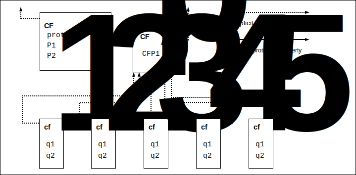
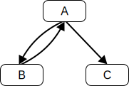
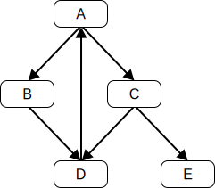
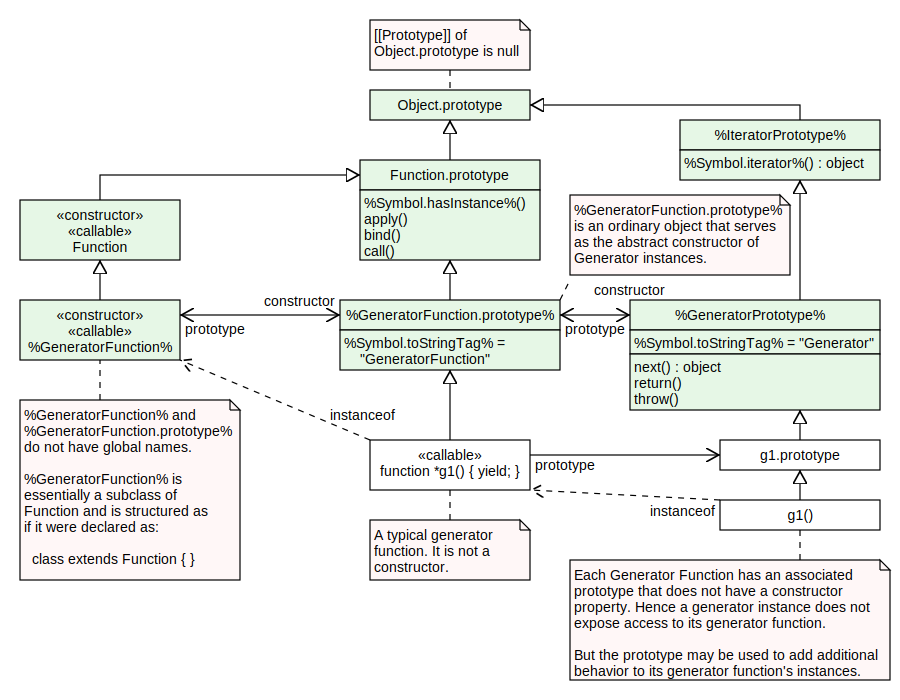

https://tc39.es/ecma262/에 있는 문서는 가장 정확하고 최신의 ECMAScript 명세서입니다. 이 문서에는 가장 최근 연간 스냅샷의 내용과, 그 스냅샷 이후의 완료된 제안(제안 절차에서 Stage 4에 도달하여 여러 구현에 적용되었고 다음 실질적인 개정에 포함될 제안)이 함께 담겨 있습니다.
이 Ecma 표준은 ECMAScript 2026 언어를 정의합니다. 이는 ECMAScript 언어 명세서의 열일곱 번째 판입니다. 1997년 첫 판이 발표된 이후 ECMAScript는 세계에서 가장 널리 사용되는 범용 프로그래밍 언어 중 하나로 성장했습니다. 웹 브라우저에 내장된 언어로 가장 잘 알려져 있지만, 서버 및 임베디드 애플리케이션에서도 널리 채택되었습니다.
ECMAScript는 여러 기술에서 유래했으며, 그 중 가장 잘 알려진 것은 JavaScript(Netscape)와 JScript(Microsoft)입니다. 이 언어는 Netscape의 Brendan Eich가 발명하였으며, 최초로 해당 회사의 Navigator 2.0 브라우저에 등장했습니다. 이후 Netscape의 모든 브라우저와 Microsoft의 Internet Explorer 3.0부터 모든 브라우저에 포함되었습니다.
ECMAScript 언어 명세서의 개발은 1996년 11월에 시작되었습니다. 이 Ecma 표준의 첫 번째 판은 1997년 6월 Ecma 총회에서 채택되었습니다.
그 Ecma 표준은 ISO/IEC JTC 1에 신속 채택 절차(fast-track procedure)를 통해 제출되었고, 1998년 4월 국제 표준 ISO/IEC 16262로 승인되었습니다. 1998년 6월 Ecma 총회에서 ECMA-262 두 번째 판이 승인되어 ISO/IEC 16262와 완전히 일치하게 되었습니다. 첫 번째 판과 두 번째 판의 변경 사항은 편집상의 변화입니다.
표준의 세 번째 판에서는 강력한 정규 표현식, 향상된 문자열 처리, 새로운 제어문, try/catch 예외 처리, 오류 정의 강화, 숫자 출력 형식 지정, 그리고 향후 언어 성장을 대비한 소규모 변경 사항이 도입되었습니다. ECMAScript 표준의 세 번째 판은 1999년 12월 Ecma 총회에서 채택되었고, 2002년 6월 ISO/IEC 16262:2002로 출판되었습니다.
세 번째 판이 출판된 이후 ECMAScript는 월드 와이드 웹과 결합되어 거의 모든 웹 브라우저에서 지원되는 프로그래밍 언어로 대규모로 채택되기에 이르렀습니다. ECMAScript의 네 번째 판 개발을 위한 많은 작업이 이루어졌지만 완전히 완료되지 않았고, ECMAScript의 네 번째 판으로 출판되지 않았습니다. 하지만 그 중 일부는 여섯 번째 판 개발에 통합되었습니다.
ECMAScript 다섯 번째 판(ECMA-262 5판으로 출판)은 브라우저 구현에서 일반적으로 사용되는 언어 명세서의 사실상 해석을 표준화하고, 세 번째 판 출판 이후 등장한 새로운 기능 지원을 추가했습니다. 이러한 기능에는 접근자 속성, 객체의 반사적 생성 및 검사, 속성 속성의 프로그램 제어, 추가 배열 조작 함수, JSON 객체 인코딩 형식 지원, 향상된 오류 검사와 프로그램 보안을 제공하는 엄격 모드 등이 포함됩니다. 다섯 번째 판은 2009년 12월 Ecma 총회에서 채택되었습니다.
다섯 번째 판은 ISO/IEC JTC 1에 신속 채택 절차로 제출되어 국제 표준 ISO/IEC 16262:2011로 승인되었습니다. ECMAScript 표준의 5.1 판은 소규모 수정이 통합되었고, ISO/IEC 16262:2011과 동일한 텍스트입니다. 5.1 판은 2011년 6월 Ecma 총회에서 채택되었습니다.
여섯 번째 판의 집중적인 개발은 2009년에 시작되었으며, 다섯 번째 판이 출판 준비 중이던 시점입니다. 하지만 이는 1999년 세 번째 판 출판 이후 진행된 상당한 실험과 언어 개선 설계 노력에 선행되었습니다. 실제로 여섯 번째 판 완성은 15년의 노력의 결실이라 할 수 있습니다. 이 판의 목표에는 대규모 애플리케이션 지원 강화, 라이브러리 제작, 그리고 ECMAScript를 다른 언어의 컴파일 대상로 사용하는 데의 지원 강화가 포함되었습니다. 주요 개선 사항으로는 모듈, 클래스 선언, 렉시컬 블록 스코핑, 이터레이터와 제너레이터, 비동기 프로그래밍을 위한 프로미스, 구조 분해 패턴, proper tail call 등이 있습니다. ECMAScript 내장 라이브러리는 맵, 셋, 바이너리 숫자값 배열과 같은 추가 데이터 추상화를 지원하도록 확장되었고, 문자열과 정규 표현식에서 유니코드 보조 문자 지원이 강화되었습니다. 내장 객체는 서브클래싱을 통해 확장 가능해졌습니다. 여섯 번째 판은 정기적이고 점진적인 언어 및 라이브러리 개선의 기반을 제공합니다. 여섯 번째 판은 2015년 6월 총회에서 채택되었습니다.
ECMAScript 2016은 Ecma TC39의 새로운 연간 릴리스 주기 및 공개 개발 프로세스 하에 발표된 최초의 ECMAScript 판입니다. 평문 소스 문서가 ECMAScript 2015 소스 문서에서 구축되어 GitHub에서의 추가 개발의 기반이 되었습니다. 이 표준의 개발 기간 동안 수백 건의 풀 리퀘스트와 이슈가 제출되었으며, 이는 수천 건의 버그 수정, 편집적 수정, 기타 개선사항을 대표합니다. 또한 Ecmarkup, Ecmarkdown, Grammarkdown 등 개발을 지원하는 다양한 소프트웨어 도구가 개발되었습니다. ES2016에는 새로운 거듭제곱 연산자와 `Array.prototype`에 `includes`라는 새로운 메소드가 추가되었습니다.
ECMAScript 2017에서는 Async 함수, Shared Memory, Atomics가 도입되었고, 소규모 언어 및 라이브러리 개선, 버그 수정, 편집적 업데이트가 이루어졌습니다. Async 함수는 프로미스를 반환하는 함수에 대한 문법을 제공하여 비동기 프로그래밍 경험을 향상합니다. Shared Memory와 Atomics는 멀티 에이전트 프로그램이 병렬 CPU 환경에서도 잘 정의된 실행 순서를 보장하는 원자적 연산을 사용하여 통신할 수 있는 새로운 메모리 모델을 도입합니다. 또한 Object에 새로운 정적 메소드인 `Object.values`, `Object.entries`, `Object.getOwnPropertyDescriptors`가 추가되었습니다.
ECMAScript 2018에서는 async 이터레이터 프로토콜과 async 제너레이터를 통한 비동기 이터레이션 지원이 도입되었습니다. 또한 네 가지 새로운 정규 표현식 기능(`dotAll` 플래그, 명명된 캡처 그룹, 유니코드 속성 이스케이프, 후행 어설션)을 추가하였고, 객체의 rest 및 spread 속성도 포함되었습니다.
ECMAScript 2019에서는 몇 가지 새로운 내장 함수가 도입되었습니다: 배열 평탄화를 위한 `Array.prototype`의 `flat` 및 `flatMap`, `Object.entries`의 반환값을 바로 새 객체로 변환하는 `Object.fromEntries`, 더 적절한 이름의 `String.prototype.trimStart`와 `trimEnd`(비표준 내장인 `String.prototype.trimLeft`와 `trimRight`의 대안). 또한 구문 및 의미론에 일부 소규모 업데이트가 있었습니다. 업데이트된 구문에는 catch 바인딩 매개변수 선택적 사용, JSON에 맞추어 문자열 리터럴에서 U+2028(줄 구분자) 및 U+2029(단락 구분자) 허용 등이 있습니다. 기타 업데이트로는 `Array.prototype.sort`의 안정 정렬 요구, `JSON.stringify`의 입력과 관계없이 올바른 UTF-8 반환 요구, `Function.prototype.toString`의 명확화(원본 소스 텍스트 또는 표준 플레이스홀더 반환 요구) 등이 있습니다.
ECMAScript 2020, 11판에서는 문자열의 모든 매치 객체를 반복자로 반환하는 `matchAll` 메소드, 동적 지정자를 통해 모듈을 비동기적으로 import할 수 있는 `import()` 구문, 임의 정밀도의 정수 작업을 위한 새로운 숫자 원시 타입인 `BigInt`, 단락 회로 없이 동작하는 새로운 Promise 결합자인 `Promise.allSettled`, 전역 `this` 값을 보편적으로 접근하는 방법인 `globalThis`, 모듈 내에서 사용할 수 있는 `export * as ns from 'module'` 구문, `for-in` 열거 순서의 표준화 강화, 모듈 내에서 컨텍스트 정보를 담을 수 있는 호스트가 채워주는 객체인 `import.meta`, 그리고 nullish 값(*undefined* 또는 *null*)을 다루기 위한 두 가지 구문(nullish 병합 연산자와 옵셔널 체이닝)이 추가되었습니다.
ECMAScript 2021, 12판에서는 문자열의 `replaceAll` 메소드, 입력 값이 이행될 때 단락 회로가 발생하는 Promise 결합자인 `Promise.any`, 여러 오류를 한 번에 표현하는 새로운 오류 타입인 `AggregateError`, 논리 할당 연산자(`??=`, `&&=`, `||=`), 객체를 가비지 컬렉션에서 보호하지 않고 참조할 수 있는 `WeakRef`와 가비지 컬렉션 시 정리 작업 등록 및 해제를 관리하는 `FinalizationRegistry`, 숫자 리터럴 구분자(`1_000`), 그리고 `Array.prototype.sort`의 동작을 더 정확하게 하여 구현 정의 정렬 순서 발생을 줄였습니다.
ECMAScript 2022, 13판에서는 모듈 최상위에서 `await` 키워드를 사용할 수 있게 되었고, 클래스 내에 새로운 요소(공개 및 비공개 인스턴스 필드, 공개 및 비공개 정적 필드, 비공개 인스턴스 메소드 및 접근자, 비공개 정적 메소드 및 접근자), 클래스 내부에서 평가 초기화를 위한 정적 블록, 객체의 비공개 필드 존재를 테스트하는 `#x in obj` 구문, 정규 표현식의 매치 인덱스를 제공하는 `/d` 플래그, 오류의 인과 관계를 기록하는 `Error` 객체의 `cause` 속성, 상대 인덱싱을 가능하게 하는 문자열/배열/TypedArray의 `at` 메소드, 그리고 `Object.hasOwn`(기존 `Object.prototype.hasOwnProperty`의 간편 대안)이 도입되었습니다.
ECMAScript 2023, 14판에서는 `Array.prototype` 및 `TypedArray.prototype`의 `toSorted`, `toReversed`, `with`, `findLast`, `findLastIndex` 메소드, 그리고 `Array.prototype`의 `toSpliced` 메소드가 도입되었습니다. 파일 시작 부분에 `#!` 주석을 허용하여 실행 가능한 ECMAScript 파일 지원이 강화되었고, 대부분의 Symbol을 weak collection의 키로 사용할 수 있게 되었습니다.
ECMAScript 2024, 15판에서는 ArrayBuffer와 SharedArrayBuffer의 크기 조정 및 전송 기능, 문자열 집합 작업을 위한 고급 기능을 가진 RegExp `/v` 플래그, Promise를 쉽게 생성하기 위한 `Promise.withResolvers` 메소드, 데이터 집계용 `Object.groupBy` 및 `Map.groupBy` 메소드, 공유 메모리 변경을 비동기적으로 기다리는 `Atomics.waitAsync` 메소드, 문자열이 올바른 유니코드만 포함하는지 확인/보장하는 `String.prototype.isWellFormed` 및 `String.prototype.toWellFormed` 메소드가 도입되었습니다.
ECMAScript 2025, 16판에서는 이터레이터 작업을 위한 새로운 전역 `Iterator`와 관련 정적 및 프로토타입 메소드, `Set.prototype`의 셋 작업용 메소드, JSON 모듈 import 및 import된 모듈의 속성 선언 구문, 정규 표현식 안전 문자열 이스케이프를 위한 `RegExp.escape` 메소드, 정규 표현식 내에서 인라인 플래그 활성/비활성화 구문, 함수가 Promise를 반환하든 아니든 항상 Promise를 반환하게 하는 `Promise.try` 메소드, 새로운 TypedArray 종류인 `Float16Array`와 관련된 `DataView.prototype.getFloat16`, `DataView.prototype.setFloat16`, `Math.f16round` 메소드가 추가되었습니다.
Ecma TC39 내에서 많은 단체를 대표하는 수십 명의 개인이 이번 판뿐만 아니라 이전 판의 개발에도 매우 중요한 기여를 했습니다. 또한 TC39의 ECMAScript 활동을 지원하는 활발한 커뮤니티가 성장했습니다. 이 커뮤니티는 수많은 초안 검토, 수천 건의 버그 리포트 제출, 구현 실험, 테스트 슈트 기여, ECMAScript에 대해 전 세계 개발자 커뮤니티를 교육하는 역할을 했습니다. 유감스럽게도 이 노력에 기여한 모든 개인과 단체를 식별하고 인정하는 것은 불가능합니다.
Allen Wirfs-Brock
ECMA-262, 프로젝트 편집자, 6판
Brian Terlson
ECMA-262, 프로젝트 편집자, 7판 ~ 10판
Jordan Harband
ECMA-262, 프로젝트 편집자, 10판 ~ 12판
Shu-yu Guo
ECMA-262, 프로젝트 편집자, 12판 ~ 16판
Michael Ficarra
ECMA-262, 프로젝트 편집자, 12판 ~ 16판
Kevin Gibbons
ECMA-262, 프로젝트 편집자, 12판 ~ 16판
범위
이 표준은 ECMAScript 2026 범용 프로그래밍 언어를 정의합니다.
적합성
ECMAScript의 적합한 구현은 이 명세서에 기술된 모든 타입, 값, 객체, 프로퍼티, 함수, 프로그램 문법과 의미를 제공하고 지원해야 합니다.
ECMAScript의 적합한 구현은 최신 버전의 유니코드 표준과 ISO/IEC 10646에 따라 소스 텍스트 입력을 해석해야 합니다.
여러 인간 언어와 국가에서 사용되는 언어적, 문화적 관습에 적응해야 하는 프로그램을 지원하는 응용 프로그램 프로그래밍 인터페이스(API)를 제공하는 ECMAScript의 적합한 구현은, 이 명세서와 호환되는 가장 최근 판의 ECMA-402에서 정의된 인터페이스를 구현해야 합니다.
ECMAScript의 적합한 구현은 이 명세서에 기술된 것 외에도 추가적인 타입, 값, 객체, 프로퍼티, 함수 등을 제공할 수 있습니다. 특히, 이 명세서에 기술된 객체에 대해 명세서에 기술되지 않은 프로퍼티와 해당 프로퍼티의 값을 제공할 수 있습니다.
ECMAScript의 적합한 구현은 이 명세서에 기술되지 않은 프로그램 및 정규 표현식 문법을 지원할 수 있습니다. 특히, 이 명세서의 하위절에 언급된 “future reserved words”를 사용하는 프로그램 문법을 지원할 수 있습니다.
ECMAScript의 적합한 구현은 하위절에 금지 확장(Forbidden Extension)으로 명시된 어떤 확장도 구현해서는 안 됩니다.
ECMAScript의 적합한 구현은 구현 정의(implementation-defined), 구현 근사(implementation-approximated), 또는 호스트 정의(host-defined)가 아닌 어떠한 기능도 재정의해서는 안 됩니다.
ECMAScript의 적합한 구현은, 별도의 지시가 없는 한 정규적 선택 사항(Normative Optional) 하위절을 구현하거나 구현하지 않을 수 있습니다. 웹 브라우저는 일반적으로 모든 정규적 선택 사항 하위절을 구현해야 합니다. (부록 참조.) 만약 어떤 정규적 선택 사항 동작이 구현된다면, 해당 정규적 선택 사항 절에 포함된 모든 동작이 구현되어야 합니다. 정규적 선택 사항 절은 본 명세서에서 아래와 같이 색상 상자에 "Normative Optional"이라는 문구로 표시됩니다.
정규적 선택 사항 예시 절 제목
예시 절 내용.
ECMAScript의 적합한 구현은 정규적 선택 사항으로도 표시되지 않는 한 레거시(Legacy) 하위절을 구현해야 합니다. 레거시 하위절에 명시된 모든 언어 기능과 동작은 하나 이상의 바람직하지 않은 특성을 가지고 있습니다. 하지만 기존 애플리케이션에서 계속 사용되고 있기 때문에 이 명세서에서 제거할 수 없습니다. 이러한 기능은 ECMAScript 핵심 언어의 일부로 간주되지 않습니다. 프로그래머는 새로운 ECMAScript 코드를 작성할 때 이러한 기능과 동작을 사용하거나 존재를 가정해서는 안 됩니다.
레거시 예시 절 제목
예시 절 내용.
레거시 정규적 선택 사항 예시 절 제목
예시 절 내용.
정규 참조
아래에 참조된 문서는 이 문서의 적용에 필수적입니다. 날짜가 명시된 참조는 해당 판만을 적용합니다. 날짜가 명시되지 않은 참조는 해당 문서의 최신 판(수정 포함)을 적용합니다.
ECMAScript는 객체 지향 프로그래밍 언어로, 호스트 환경 내에서 계산을 수행하고 계산 객체를 조작합니다. 여기 정의된 ECMAScript는 계산적으로 자급자족하도록 설계된 것이 아니며, 외부 데이터 입력이나 계산 결과 출력에 대한 규정이 없습니다. 대신 ECMAScript 프로그램의 계산 환경은 이 명세서에 기술된 객체와 기타 기능뿐만 아니라 환경 특화 객체도 제공하는 것이 기대되며, 이들의 설명 및 동작은 이 명세서 범위를 벗어나지만 ECMAScript 프로그램에서 접근 가능한 프로퍼티와 호출 가능한 함수가 있을 수 있음을 나타냅니다.
ECMAScript는 원래 스크립트 언어로 설계되었지만, 현재는 범용 프로그래밍 언어로 널리 사용됩니다. 스크립트 언어란 기존 시스템의 기능을 조작, 맞춤화, 자동화하는 데 사용하는 프로그래밍 언어입니다. 이러한 시스템에서는 이미 사용자 인터페이스를 통해 유용한 기능이 제공되며, 스크립트 언어는 해당 기능을 프로그램 제어로 노출하는 역할을 합니다. 이처럼 기존 시스템은 객체와 기능을 제공하는 호스트 환경을 구성하며, 이는 스크립트 언어의 기능을 완성합니다. 스크립트 언어는 전문 프로그래머와 비전문 프로그래머 모두 사용할 수 있도록 설계되었습니다.
ECMAScript는 원래 웹 스크립트 언어로 설계되어, 브라우저에서 웹 페이지에 생동감을 더하고 웹 기반 클라이언트-서버 아키텍처의 일부로 서버 계산을 수행하는 메커니즘을 제공했습니다. ECMAScript는 현재 다양한 호스트 환경에서 핵심 스크립트 기능을 제공합니다. 따라서 핵심 언어는 특정 호스트 환경과 분리되어 이 문서에서 정의됩니다.
ECMAScript 사용은 단순한 스크립팅을 넘어 다양한 환경과 규모에서 전체 프로그래밍 작업 영역으로 확장되었습니다. 사용이 늘어남에 따라 ECMAScript가 제공하는 기능과 시설도 확대되었습니다. ECMAScript는 이제 완전한 기능의 범용 프로그래밍 언어입니다.
웹 스크립팅
웹 브라우저는 클라이언트 측 계산을 위한 ECMAScript 호스트 환경을 제공합니다. 예를 들어, 창, 메뉴, 팝업, 대화 상자, 텍스트 영역, 앵커, 프레임, 히스토리, 쿠키, 입출력 등을 나타내는 객체를 포함합니다. 또한 호스트 환경은 포커스 변경, 페이지/이미지 로딩 및 언로드, 오류 및 중단, 선택, 폼 제출, 마우스 동작과 같은 이벤트에 스크립트 코드를 연결할 수 있는 수단을 제공합니다. 스크립트 코드는 HTML 내에 나타나며, 표시되는 페이지는 UI 요소와 고정 및 계산된 텍스트/이미지의 조합입니다. 스크립트 코드는 사용자 상호작용에 반응하며, 메인 프로그램이 필요하지 않습니다.
웹 서버는 서버 측 계산을 위한 다른 호스트 환경을 제공하며, 요청, 클라이언트, 파일을 나타내는 객체와 데이터 잠금/공유 메커니즘을 포함합니다. 브라우저 측과 서버 측 스크립팅을 함께 사용하면, 클라이언트와 서버 간에 계산을 분산시키면서 웹 기반 애플리케이션에 맞춤화된 사용자 인터페이스를 제공할 수 있습니다.
ECMAScript를 지원하는 각 웹 브라우저와 서버는 자체 호스트 환경을 제공하며, 이것이 ECMAScript 실행 환경을 완성합니다.
호스트와 구현체
ECMAScript를 호스트 환경에 통합하기 위해, 이 명세서는 일부 기능(예: 추상 연산)의 정의를 전적으로 또는 부분적으로 명세서 외부 소스에 위임합니다. 편집상, 이 명세서는 다음과 같은 위임 종류를 구분합니다.
구현체란 부록 에 나열된 시설이나 구현 정의 또는 구현 근사로 표시된 시설을 추가적으로 정의하는 외부 소스를 의미합니다. 비공식적으로 구현체는 특정 웹 브라우저와 같은 구체적인 산출물을 가리킵니다.
구현 정의 시설은 외부 소스에 정의를 위임하며 추가적인 자격을 두지 않습니다. 이 명세서는 특정 동작에 대해 권고하지 않으며, 적합한 구현은 명세서가 제시한 제한 내에서 자유롭게 동작을 선택할 수 있습니다.
구현 근사 시설은 외부 소스에 정의를 위임하면서 이상적인 동작을 권장합니다. 적합한 구현은 명세서의 제한 내에서 자유롭게 동작을 선택할 수 있지만, 이상적인 동작을 최대한 근사하도록 권장됩니다. 예를 들어 Math.exp와 같은 수학 연산이 구현 근사입니다.
호스트는 부록 에 나열된 시설을 추가적으로 정의하지만, 기타 구현 정의 또는 구현 근사 시설은 추가적으로 정의하지 않는 외부 소스입니다. 비공식적으로 호스트는 이 명세서와 부록 를 통해 동일하게 인터페이스하는 모든 웹 브라우저 집합 등, 모든 구현체 집합을 의미합니다. 호스트는 종종 WHATWG HTML(https://html.spec.whatwg.org/)과 같은 외부 명세서입니다. 즉, 호스트 정의 시설은 종종 외부 명세서에서 추가적으로 정의됩니다.
호스트 후크는 전적으로 또는 부분적으로 외부 소스에 의해 정의되는 추상 연산입니다. 모든 호스트 후크는 부록 에 나열되어야 합니다. 호스트 후크는 최소한 다음 요구 사항을 충족해야 합니다:
정상 완료 또는 throw 완료 중 하나를 반환해야 합니다.
호스트 정의 시설은 추가적인 자격 없이 외부 소스에 정의를 위임하며, 부록 에 나열되어 있습니다. 호스트가 아닌 구현체도 호스트 정의 시설에 대한 정의를 제공할 수 있습니다.
호스트 환경은 모든 호스트 정의 시설에 대한 선택적 정의입니다. 호스트 환경에는 일반적으로 입력을 얻거나 출력을 제공하는 객체나 함수가 포함되어 있으며, 전역 객체의 호스트 정의 프로퍼티로 제공됩니다.
이 명세서는 항상 가장 구체적인 용어를 사용하는 편집 관례를 따릅니다. 예를 들어, 어떤 시설이 호스트 정의인 경우 구현 정의로 지칭하지 않습니다.
호스트와 구현체 모두 이 명세서에서 정의된 언어 타입, 명세 타입, 추상 연산, 문법 생성, 내장 객체, 내장 심볼을 통해 이 명세서와 인터페이스할 수 있습니다.
ECMAScript 개요
아래는 ECMAScript에 대한 비공식 개요이며, 언어의 모든 부분이 기술된 것은 아닙니다. 이 개요는 표준의 일부가 아닙니다.
ECMAScript는 객체 기반입니다. 기본 언어와 호스트 기능은 객체로 제공되며, ECMAScript 프로그램은 상호 통신하는 객체 집합입니다. ECMAScript에서 객체란 0개 이상의 프로퍼티로 구성되어 있으며, 각 프로퍼티에는 프로퍼티의 사용 방법을 결정하는 특성이 있습니다. 예를 들어, 어떤 프로퍼티의 Writable 특성이 *false*로 설정된 경우, ECMAScript 코드가 해당 프로퍼티에 다른 값을 할당하려고 하면 실패합니다. 프로퍼티는 다른 객체, 원시값 또는 함수를 담는 컨테이너입니다. 원시값은 내장 타입 Undefined, Null, Boolean, Number, BigInt, String, Symbol; 중 하나의 멤버입니다. 객체는 내장 타입 Object의 멤버이며, 함수는 호출 가능한 객체입니다. 객체의 프로퍼티에 연결된 함수는 메서드라고 부릅니다.
ECMAScript는 ECMAScript 엔티티 정의를 완성하는 내장 객체 집합을 정의합니다. 내장 객체에는 전역 객체, 언어의 런타임 의미에 필수적인 `Object`, `Function`, `Boolean`, `Symbol` 및 다양한 `Error` 객체, 숫자값을 나타내고 조작하는 `Math`, `Number`, `Date` 객체, 텍스트 처리를 위한 `String` 및 `RegExp` 객체, 값을 인덱싱하는 컬렉션인 `Array`와 9가지 Typed Array, 키 기반 컬렉션인 `Map`과 `Set` 객체, 구조화 데이터를 지원하는 `JSON` 객체, `ArrayBuffer`, `SharedArrayBuffer`, `DataView`, 제어 추상화를 지원하는 제너레이터 함수와 `Promise` 객체, 그리고 리플렉션을 위한 `Proxy` 및 `Reflect` 객체가 포함됩니다.
ECMAScript는 내장 연산자 집합도 정의합니다. ECMAScript 연산자에는 다양한 단항 연산, 곱셈 연산자, 덧셈 연산자, 비트 이동 연산자, 관계 연산자, 동등 연산자, 이진 비트 연산자, 이진 논리 연산자, 할당 연산자, 쉼표 연산자가 포함됩니다.
대규모 ECMAScript 프로그램은 모듈을 통해 여러 문/선언 시퀀스로 분할될 수 있습니다. 각 모듈은 다른 모듈에서 제공해야 하는 선언과 다른 모듈에서 사용할 수 있는 자신의 선언을 명확히 식별합니다.
ECMAScript 문법은 의도적으로 Java 문법과 유사하게 설계되었습니다. ECMAScript 문법은 스크립트 언어로 쉽게 사용할 수 있도록 완화되어 있습니다. 예를 들어, 변수에 타입 선언이 필요하지 않으며, 프로퍼티에 타입이 연결되지 않고, 함수 선언이 호출보다 먼저 나타나야 할 필요도 없습니다.
객체
ECMAScript는 클래스 정의 문법을 포함하지만, ECMAScript 객체는 C++, Smalltalk, Java와 같은 클래스 기반 언어처럼 근본적으로 클래스 기반이 아닙니다. 객체는 리터럴 표기 또는 객체를 생성하고 프로퍼티의 초기값을 할당하는 생성자를 통해 여러 방식으로 생성될 수 있습니다. 각 생성자는 *"prototype"*이라는 프로퍼티를 가진 함수로, 프로토타입 기반 상속과 공유 프로퍼티를 구현하는 데 사용됩니다. new 표현식으로 생성자를 사용하면 객체가 생성됩니다. 예를 들어, `new Date(2009, 11)`은 새로운 Date 객체를 만듭니다. 생성자를 new 없이 호출하면 생성자마다 다른 결과가 발생합니다. 예를 들어, `Date()`는 객체가 아닌 현재 날짜와 시간의 문자열 표현을 반환합니다.
생성자로 생성된 모든 객체는 암시적으로 자신이 속한 생성자의 *"prototype"* 프로퍼티 값에 대한 참조(객체의 프로토타입이라 부름)를 갖습니다. 또한 프로토타입은 자신만의 non-*null* 암시적 참조를 가질 수 있으며, 이를 프로토타입 체인이라 부릅니다. 객체에서 프로퍼티에 대한 참조가 발생하면, 해당 이름의 프로퍼티를 가진 프로토타입 체인에서 첫 번째 객체의 프로퍼티가 참조됩니다. 즉, 먼저 직접 지정된 객체에서 해당 프로퍼티가 있는지 확인하고, 있으면 그 프로퍼티가 참조 대상이 됩니다. 없으면 해당 객체의 프로토타입을 다음으로 검사하고, 계속 반복합니다.

클래스 기반 객체 지향 언어에서는 일반적으로 상태는 인스턴스가, 메서드는 클래스가 담당하며, 상속은 구조와 동작에만 적용됩니다. ECMAScript에서는 상태와 메서드가 객체에 담기며, 구조, 동작, 상태 모두가 상속됩니다.
프로토타입에 특정 프로퍼티가 있고, 객체에 직접 해당 프로퍼티가 포함되지 않은 모든 객체는 그 프로퍼티와 값을 공유합니다. 그림 1은 이를 보여줍니다:
CF는 생성자(동시에 객체)입니다. cf1, cf2, cf3, cf4, cf5 등 5개의 객체가 `new` 표현식으로 생성되었습니다. 각 객체에는 *"q1"*, *"q2"* 프로퍼티가 있습니다. 점선은 암시적 프로토타입 관계를 나타냅니다. 예를 들어, cf3의 프로토타입은 CFp입니다. 생성자인 CF는 *"P1"*, *"P2"*라는 두 개의 프로퍼티를 갖지만, CFp, cf1, cf2, cf3, cf4, cf5에서는 보이지 않습니다. CFp의 *"CFP1"* 프로퍼티는 cf1, cf2, cf3, cf4, cf5에서 공유됩니다(CF에서는 공유되지 않음). CFp의 암시적 프로토타입 체인에 있는 다른 프로퍼티도 *"q1"*, *"q2"*, *"CFP1"*이 아닌 경우 공유됩니다. CF와 CFp 사이에는 암시적 프로토타입 링크가 없습니다.
대부분의 클래스 기반 객체 언어와 달리, 객체에는 값을 할당함으로써 동적으로 프로퍼티를 추가할 수 있습니다. 즉, 생성자는 생성된 객체의 모든 프로퍼티를 반드시 명명하거나 값을 할당할 필요가 없습니다. 위 그림에서 cf1, cf2, cf3, cf4, cf5에 대해 CFp에 새 값을 할당함으로써 새로운 공유 프로퍼티를 추가할 수 있습니다.
ECMAScript 객체는 본질적으로 클래스 기반이 아니지만, 생성자 함수, 프로토타입 객체, 메서드의 공통 패턴에 기반하여 클래스 유사 추상을 정의하는 것이 편리할 때가 많습니다. ECMAScript 내장 객체도 이런 클래스 유사 패턴을 따릅니다. ECMAScript 2015부터는 내장 객체가 사용하는 동일한 클래스 유사 추상 패턴에 맞는 객체를 간결하게 정의할 수 있는 문법적 클래스 정의가 도입되었습니다.
ECMAScript의 엄격 변종
ECMAScript 언어는 일부 사용자가 언어에서 제공되는 특정 기능 사용을 제한하고자 할 수 있음을 인식합니다. 이는 보안, 오류 발생 가능성이 높은 기능 회피, 오류 검사 강화 또는 기타 사용자의 목적을 위해서일 수 있습니다. 이런 가능성을 지원하기 위해 ECMAScript는 언어의 엄격 변종을 정의합니다. 엄격 변종은 일반 ECMAScript 언어의 일부 구문 및 의미론적 기능을 제외하고, 일부 기능의 상세 의미론을 수정합니다. 엄격 변종은 비엄격 언어 형식에서는 오류로 지정되지 않은 상황에서도 오류 예외를 반드시 던져야 하는 추가 오류 조건을 명시합니다.
ECMAScript의 엄격 변종은 언어의 엄격 모드로 일반적으로 불립니다. 엄격 모드의 선택과 엄격 모드 구문 및 의미론 사용은 개별 ECMAScript 소스 텍스트 단위 수준에서 명시적으로 결정됩니다( 참조). 엄격 모드는 구문적 소스 텍스트 단위 수준에서 선택되므로, 제한은 해당 소스 텍스트 단위 내에서만 국지적으로 적용됩니다. 엄격 모드는 여러 소스 텍스트 단위에 걸쳐 일관되게 동작해야 하는 ECMAScript 의미론의 어떤 측면도 제한하거나 수정하지 않습니다. 전체 ECMAScript 프로그램은 엄격 모드와 비엄격 모드 소스 텍스트 단위로 구성될 수 있으며, 이 경우 엄격 모드는 실제로 엄격 모드 소스 텍스트 단위 내에서 정의된 코드를 실행할 때만 적용됩니다.
이 명세서에 적합하려면 ECMAScript 구현은 이 명세서에서 정의한 완전한 비제한 ECMAScript 언어와 엄격 변종을 모두 구현해야 합니다. 또한, 구현체는 비제한 모드와 엄격 모드 소스 텍스트 단위를 단일 복합 프로그램으로 조합하는 기능을 지원해야 합니다.
용어와 정의
이 문서의 목적상, 아래 용어와 정의가 적용됩니다.
구현 근사
구현 근사 시설은 전체 또는 일부가 외부 소스에 의해 정의되지만, 이 명세서에서 권장되는 이상적 동작을 갖습니다.
구현 정의
구현 정의 시설은 전체 또는 일부가 이 명세서 외부 소스에 의해 정의됩니다.
호스트 정의
구현 정의와 동일함
편집상, 절 참조.
타입
절에서 정의된 데이터 값 집합
원시값
절에서 정의된 Undefined, Null, Boolean, Number, BigInt, Symbol, String 타입 중 하나의 멤버
원시값은 언어 구현의 가장 낮은 수준에서 직접 표현되는 데이터입니다.
객체
Object 타입의 멤버
객체는 프로퍼티 집합이며, 하나의 프로토타입 객체를 가집니다. 프로토타입은 *null*일 수 있습니다.
생성자
객체를 생성하고 초기화하는 함수 객체
생성자의 *"prototype"* 프로퍼티 값은 상속 및 공유 프로퍼티 구현에 사용되는 프로토타입 객체입니다.
프로토타입
다른 객체를 위한 공유 프로퍼티를 제공하는 객체
생성자가 객체를 생성할 때, 해당 객체는 프로퍼티 참조 해결을 위해 생성자의 *"prototype"* 프로퍼티를 암시적으로 참조합니다. 생성자의 *"prototype"* 프로퍼티는 constructor.prototype 표현식으로 참조할 수 있으며, 프로토타입에 추가된 프로퍼티는 프로토타입을 공유하는 모든 객체에 상속을 통해 공유됩니다. 또는 `Object.create` 내장 함수를 사용하여 명시적으로 지정된 프로토타입으로 새 객체를 만들 수 있습니다.
일반 객체
모든 객체가 반드시 지원해야 하는 기본 내부 메서드에 대한 기본 동작을 갖는 객체
특수 객체
하나 이상의 필수 내부 메서드에 대해 기본 동작을 갖지 않는 객체
일반 객체가 아닌 모든 객체는 특수 객체입니다.
표준 객체
이 명세서에서 의미가 정의된 객체
내장 객체
ECMAScript 구현체에 의해 지정되고 제공되는 객체
표준 내장 객체는 이 명세서에서 정의됩니다. ECMAScript 구현체는 추가적인 내장 객체 종류를 지정하고 제공할 수 있습니다.
undefined 값
변수에 값이 할당되지 않았을 때 사용되는 원시값
Undefined 타입
유일한 값이 *undefined*인 타입
null 값
어떠한 객체 값도 의도적으로 없음을 나타내는 원시값
Null 타입
유일한 값이 *null*인 타입
Boolean 값
Boolean 타입의 멤버
Boolean 값은 *true*, *false* 두 가지 뿐입니다.
Boolean 타입
원시값 *true*와 *false*로 구성된 타입
Boolean 객체
표준 내장 Boolean 생성자의 인스턴스인 Object 타입의 멤버
Boolean 객체는 Boolean 생성자를 `new` 표현식으로 사용할 때 생성되며, Boolean 값을 인자로 제공합니다. 결과 객체는 내부 슬롯에 Boolean 값이 저장됩니다. Boolean 객체는 Boolean 값으로 강제 변환될 수 있습니다.
String 값
0개 이상의 16비트 부호 없는 정수값으로 이루어진 유한 순서의 원시값
String 값은 String 타입의 멤버입니다. 시퀀스 내 각 정수값은 일반적으로 UTF-16 텍스트의 16비트 단위를 나타냅니다. 단, ECMAScript는 값에 대해 16비트 부호 없는 정수라는 점 외에 제한이나 요구 사항을 두지 않습니다.
String 타입
모든 가능한 String 값의 집합
String 객체
표준 내장 String 생성자의 인스턴스인 Object 타입의 멤버
String 객체는 String 생성자를 `new` 표현식으로 사용할 때 생성되며, String 값을 인자로 제공합니다. 결과 객체는 내부 슬롯에 String 값이 저장됩니다. String 객체는 String 생성자를 함수처럼 호출하면 String 값으로 강제 변환될 수 있습니다().
Number 값
배정밀도 64비트 이진 형식 IEEE 754-2019 값에 해당하는 원시값
Number 값은 Number 타입의 멤버이며, 숫자를 직접 나타냅니다.
Number 타입
*NaN* (“not a number”), *+∞*𝔽 (양의 무한대), *-∞*𝔽 (음의 무한대)를 포함한 모든 가능한 Number 값의 집합
Number 객체
표준 내장 Number 생성자의 인스턴스인 Object 타입의 멤버
Number 객체는 Number 생성자를 `new` 표현식으로 사용할 때 생성되며, Number 값을 인자로 제공합니다. 결과 객체는 내부 슬롯에 Number 값이 저장됩니다. Number 객체는 Number 생성자를 함수처럼 호출하면 Number 값으로 강제 변환될 수 있습니다().
Infinity
양의 무한대 Number 값
NaN
IEEE 754-2019 NaN (“not a number”) 값인 Number 값
BigInt 값
임의 정밀도의 정수값에 해당하는 원시값
BigInt 타입
모든 가능한 BigInt 값의 집합
BigInt 객체
표준 내장 BigInt 생성자의 인스턴스인 Object 타입의 멤버
Symbol 값
고유한, 문자열이 아닌 Object 프로퍼티 키를 나타내는 원시값
Symbol 타입
모든 가능한 Symbol 값의 집합
Symbol 객체
표준 내장 Symbol 생성자의 인스턴스인 Object 타입의 멤버
함수
서브루틴으로 호출될 수 있는 Object 타입의 멤버
함수는 프로퍼티 외에도 코드와 상태를 포함하며, 호출 시 동작을 결정합니다. 함수의 코드는 ECMAScript로 작성되었을 수도, 아닐 수도 있습니다.
내장 함수
함수인 내장 객체
내장 함수의 예로 `parseInt`, `Math.exp` 등이 있습니다. 호스트나 구현체는 이 명세서에 기술되지 않은 추가 내장 함수를 제공할 수 있습니다.
내장 생성자
생성자인 내장 함수
내장 생성자의 예로 `Object`, `Function` 등이 있습니다. 호스트나 구현체는 이 명세서에 기술되지 않은 추가 내장 생성자를 제공할 수 있습니다.
프로퍼티
키(문자열 값 또는 Symbol 값)와 값을 연결하는 객체의 일부
프로퍼티 형태에 따라 값은 데이터 값(원시값, 객체, 함수 객체)으로 직접 표현되거나, 접근자 함수 쌍으로 간접적으로 표현될 수 있습니다.
메서드
프로퍼티 값인 함수
함수가 객체의 메서드로 호출될 때, 해당 객체가 *this* 값으로 함수에 전달됩니다.
내장 메서드
내장 함수인 메서드
표준 내장 메서드는 이 명세서에서 정의됩니다. 호스트나 구현체는 이 명세서에 기술되지 않은 추가 내장 메서드를 제공할 수 있습니다.
특성
프로퍼티의 특성을 정의하는 내부 값
자체 프로퍼티
객체에 직접 포함된 프로퍼티
상속 프로퍼티
객체의 자체 프로퍼티가 아니지만, 객체의 프로토타입(자체 또는 상속 프로퍼티)의 프로퍼티인 프로퍼티
이 명세서의 구성
이후 명세서는 아래와 같이 구성됩니다:
절은 명세서 전반에서 사용되는 표기 관례를 정의합니다.
~ 절은 ECMAScript 프로그램이 동작하는 실행 환경을 정의합니다.
~ 절은 ECMAScript 프로그래밍 언어의 실제 문법 인코딩과 모든 언어 기능의 실행 의미를 정의합니다.
~ 절은 ECMAScript 표준 라이브러리를 정의하며, 실행 중 ECMAScript 프로그램에서 사용할 수 있는 모든 표준 객체의 정의를 포함합니다.
절은 SharedArrayBuffer 기반 메모리 접근 및 Atomics 객체의 메서드에 대한 메모리 일관성 모델을 설명합니다.
표기 관례
구문 및 렉시컬 문법
문맥 자유 문법
문맥 자유 문법은 여러 개의 생산식으로 구성됩니다. 각 생산식에는 비단말기라 불리는 추상 기호가 좌변에, 0개 이상의 비단말기와 단말기 기호가 우변에 나열됩니다. 각 문법에서 단말기 기호는 지정된 알파벳에서 선택됩니다.
체인 생산식은 우변에 단 하나의 비단말기 기호와 0개 이상의 단말기 기호가 있는 생산식입니다.
단일 특수 비단말기로 구성된 문장에서 시작하여, 주어진 문맥 자유 문법은 언어를 정의합니다. 즉, 비단말기를 해당 비단말기가 좌변인 생산식의 우변으로 반복적으로 치환함으로써 생성될 수 있는 단말기 기호의 (아마도 무한한) 가능한 시퀀스 집합입니다.
렉시컬 및 정규식 문법
ECMAScript의 렉시컬 문법은 절에 있습니다. 이 문법의 단말기 기호는 에서 정의된 |SourceCharacter| 규칙을 따르는 유니코드 코드 포인트입니다. 목표 기호 |InputElementDiv|, |InputElementTemplateTail|, |InputElementRegExp|, |InputElementRegExpOrTemplateTail|, 또는 |InputElementHashbangOrRegExp|에서 시작하여, 이러한 코드 포인트 시퀀스를 입력 요소 시퀀스로 변환하는 방법을 설명하는 생산식 집합을 정의합니다.
공백과 주석을 제외한 입력 요소는 ECMAScript의 구문 문법의 단말기 기호를 구성하며, ECMAScript 토큰이라고 합니다. 이 토큰은 ECMAScript 언어의 예약어, 식별자, 리터럴, 구두점입니다. 또한 줄 종결자는 토큰으로 간주되지 않지만 입력 요소 스트림의 일부가 되어 자동 세미콜론 삽입 과정()을 안내합니다. 단순 공백과 한 줄 주석은 버려져서 구문 문법의 입력 요소 스트림에 나타나지 않습니다. |MultiLineComment|(`/*`…`*/` 형태의 주석, 줄을 넘나들든 아니든 관계 없음)도 줄 종결자가 포함되지 않았다면 단순히 버려집니다. 하지만 줄 종결자가 하나 이상 포함된 경우, 단일 줄 종결자로 대체되어 구문 문법의 입력 요소 스트림에 포함됩니다.
ECMAScript의 정규식 문법은 에 있습니다. 이 문법 역시 단말기 기호로 |SourceCharacter|에서 정의된 코드 포인트를 사용합니다. 목표 기호 |Pattern|에서 시작하여, 코드 포인트 시퀀스를 정규 표현식 패턴으로 변환하는 생산식 집합을 정의합니다.
렉시컬 및 정규식 문법의 생산식은 구분 기호로 두 개의 콜론 “::”을 사용해 구분됩니다. 렉시컬 문법과 정규식 문법은 일부 생산식을 공유합니다.
숫자 문자열 문법
숫자 문자열 문법은 에 나옵니다. 단말기 기호로 |SourceCharacter|를 가지며, 목표 기호 |StringNumericLiteral|에서 시작하여 문자열을 숫자 값으로 변환하는 데 사용됩니다(이는 숫자 리터럴의 렉시컬 문법과 유사하지만 다릅니다).
숫자 문자열 문법의 생산식은 세 개의 콜론 “:::”을 구분 기호로 가지며, 소스 텍스트 파싱에는 사용되지 않습니다.
구문 문법
ECMAScript의 구문 문법은 절부터 절까지 제시되어 있습니다. 이 문법의 단말기 기호는 렉시컬 문법에서 정의된 ECMAScript 토큰입니다(). 목표 기호 |Script|와 |Module| 두 가지에서 시작하여, 토큰 시퀀스가 ECMAScript 프로그램의 구문적으로 올바른 독립된 구성 요소를 형성하는 방법을 설명하는 생산식 집합을 정의합니다.
코드 포인트 스트림을 ECMAScript |Script| 또는 |Module|로 파싱하려면, 먼저 렉시컬 문법을 반복적으로 적용하여 입력 요소 스트림으로 변환합니다. 그 후 입력 요소 스트림을 구문 문법을 단일 적용으로 파싱합니다. 입력 스트림의 토큰이 목표 비단말기(|Script| 또는 |Module|)의 단일 인스턴스로 파싱될 수 없거나 토큰이 남는다면 구문 오류입니다.
파싱이 성공하면 파스 트리가 구성되며, 트리의 각 노드는 파스 노드입니다. 각 파스 노드는 문법 기호의 인스턴스이며, 해당 기호에서 유도할 수 있는 소스 텍스트의 범위를 나타냅니다. 파스 트리의 루트 노드는 전체 소스 텍스트를 나타내며, 파싱의 목표 기호의 인스턴스입니다. 파스 노드가 비단말기의 인스턴스라면, 해당 비단말기를 좌변으로 하는 생산식 인스턴스이기도 합니다. 그리고 우변의 각 기호마다 자식을 하나씩 가집니다. 각 자식은 해당 기호의 인스턴스인 파스 노드입니다.
새로운 파스 노드는 파서가 호출될 때마다 인스턴스화되며, 동일한 소스 텍스트를 파싱하더라도 파싱 간에 재사용되지 않습니다. 파스 노드는 동일한 소스 텍스트 범위를 나타내고, 동일한 문법 기호의 인스턴스이며, 동일한 파서 호출에서 생성된 경우에만 동일한 파스 노드로 간주됩니다.
같은 문자열을 여러 번 파싱하면 서로 다른 파스 노드가 생성됩니다. 예를 들어:
let str = "1 + 1;";
eval(str);
eval(str);
`eval`을 호출할 때마다 str의 값을 ECMAScript 소스 텍스트로 변환하고, 각각 독립적으로 자신만의 파스 노드 트리를 생성합니다. 이 트리들은 각각의 파싱이 동일한 문자열 값에서 유도된 소스 텍스트를 대상으로 하더라도 서로 다릅니다.
파스 노드는 명세상의 산출물이며, 실제 구현에서는 유사한 데이터 구조를 사용할 필요가 없습니다.
구문 문법의 생산식은 구분 기호로 한 개의 콜론 “:”만을 사용합니다.
부터 까지 제시된 구문 문법은 ECMAScript |Script| 또는 |Module|로서 올바르게 받아들여지는 토큰 시퀀스를 완전히 설명한 것은 아닙니다. 추가적인 토큰 시퀀스도 허용되며, 예를 들어 일부 위치(줄 종결자 앞 등)에 세미콜론만 추가하면 문법에서 기술될 토큰 시퀀스가 허용됩니다. 또한, 일부 위치에 줄 종결자가 나타나면 문법에서 기술된 토큰 시퀀스라 해도 허용되지 않을 수 있습니다.
일부 경우, 모호성을 피하기 위해 구문 문법은 유효한 ECMAScript |Script| 또는 |Module|을 형성하지 않는 토큰 시퀀스를 허용하는 일반화된 생산식을 사용합니다. 예를 들어, 객체 리터럴 및 객체 구조 분해 패턴에 이 기법이 사용됩니다. 이런 경우, 더 제한적인 보조 문법이 제공되어 허용되는 토큰 시퀀스를 추가로 제한합니다. 일반적으로, 초기 오류 규칙은 특정 문맥에서 "_P_ 는 반드시 _N_을 커버해야 한다"고 명시합니다. 여기서 _P_는 파스 노드(일반화된 생산식의 인스턴스), _N_은 보조 문법의 비단말기입니다. 이는 다음을 의미합니다:
_P_가 원래 일치시킨 토큰 시퀀스를 _N_을 목표 기호로 하여 다시 파싱합니다. _N_에 문법적 매개변수가 있다면, _P_가 처음 파싱될 때 사용된 값으로 설정합니다.
토큰 시퀀스를 토큰 남김 없이 _N_의 단일 인스턴스로 파싱할 수 있다면:
해당 _N_ 인스턴스(특정 _P_에 대해 유일한 파스 노드)를 "_P_가 커버하는 _N_"이라고 합니다.
_N_ 및 그 파생 생산식에 대한 모든 Early Error 규칙은 _P_가 커버하는 _N_에도 적용됩니다.
그렇지 않으면(파싱이 실패하면), 이는 초기 구문 오류입니다.
문법 표기법
단말기 기호
ECMAScript 문법에서 일부 단말기 기호는 `고정폭` 글꼴로 표시됩니다. 이는 소스 텍스트에 정확히 표시된 대로 나타나야 함을 의미합니다. 이렇게 지정된 모든 단말기 기호 코드 포인트는 다른 유사한 유니코드 범위가 아니라 기본 라틴 블록의 적절한 유니코드 코드 포인트로 이해해야 합니다. 단말기 기호의 코드 포인트는 `\\` |UnicodeEscapeSequence|로 표현할 수 없습니다.
단말기 기호가 개별 유니코드 코드 포인트인 문법(즉, 렉시컬, 정규식, 숫자 문자열 문법)에서는 생산식에 여러 개의 고정폭 코드 포인트가 연속해서 나타날 때, 이는 동일한 시퀀스를 독립된 단말기 기호로 쓴 것과 같습니다.
예를 들어, 다음과 같은 생산식이 있습니다:
HexIntegerLiteral :: `0x` HexDigits
이는 사실 다음과 같은 약어입니다:
HexIntegerLiteral :: `0` `x` HexDigits
반면, 구문 문법에서는 고정폭 코드 포인트가 연속해서 나타날 경우 단일 단말기 기호로 취급됩니다.
단말기 기호는 두 가지 다른 형태도 있습니다:
렉시컬 및 정규식 문법에서, 일반적인 인쇄 표현이 없는 유니코드 코드 포인트는 "<ABBREV>" 형태로 표시됩니다. 여기서 "ABBREV"는 코드 포인트 또는 코드 포인트 집합의 기억법입니다. 이러한 형태는 , , 에서 정의됩니다.
구문 문법에서는 특정 단말기 기호(예: |IdentifierName|, |RegularExpressionLiteral|)가 이탤릭체로 표시되며, 이는 렉시컬 문법의 동일한 이름의 비단말기를 참조함을 의미합니다.
비단말기 기호와 생산식
비단말기 기호는 이탤릭체로 표시됩니다. 비단말기 정의(생산식이라고도 함)는 정의되는 비단말기 이름 다음에 하나 이상의 콜론이 옵니다. (콜론의 개수는 생산식이 속한 문법을 나타냅니다.) 이어서 비단말기의 하나 이상의 대체 우변이 각각의 줄에 나옵니다. 예를 들어, 다음과 같은 구문 정의가 있습니다:
이는 비단말기 |WhileStatement|가 토큰 `while` 다음에 왼쪽 괄호 토큰, |Expression|, 오른쪽 괄호 토큰, |Statement|가 차례로 오는 것을 의미합니다. |Expression|과 |Statement|도 각각 비단말기입니다. 또 다른 예로, 다음과 같은 구문 정의가 있습니다:
이는 |ArgumentList|가 단일 |AssignmentExpression| 또는 |ArgumentList|, 쉼표, |AssignmentExpression|로 나타날 수 있음을 의미합니다. 이 |ArgumentList| 정의는 자기 참조적(재귀적)이며, 자신에 대한 정의로 이루어져 있습니다. 결과적으로 |ArgumentList|는 콤마로 구분된 모든 양의 개수의 인자, 각 인자 표현식은 |AssignmentExpression|이 될 수 있습니다. 이러한 비단말기의 재귀적 정의는 흔합니다.
선택적 기호
단말기 또는 비단말기 뒤에 첨자 “opt”가 붙으면 선택적 기호임을 나타냅니다. 선택적 기호가 포함된 대안은 실제로 두 가지 우변을 명시합니다. 하나는 선택적 요소를 생략한 것이고, 하나는 포함한 것입니다. 즉,
따라서 이 예시에서 비단말기 |ForStatement|는 실제로 네 가지 대체 우변을 갖습니다.
문법적 매개변수
생산식은 첨자 형태의 “[parameters]” 주석으로 매개변수화될 수 있으며, 이는 생산식이 정의하는 비단말기 기호 뒤에 접미사로 나타납니다. “parameters”는 단일 이름 또는 컴마로 구분된 이름 목록일 수 있습니다. 매개변수화된 생산식은 매개변수 이름 조합마다 해당 비단말기 기호에 언더스코어를 붙여서 정의하는 생산식 집합의 약어입니다. 즉,
생산식의 우변에 “[empty]”가 나타나면, 해당 생산식의 우변이 단말기나 비단말기 기호를 전혀 포함하지 않음을 의미합니다.
앞보기 제한
생산식의 우변에 “[lookahead = _seq_]”가 나타나면, 해당 생산식은 토큰 시퀀스 _seq_가 바로 뒤따르는 입력 토큰 시퀀스의 접두사일 때만 사용될 수 있음을 의미합니다. 마찬가지로 “[lookahead ∈ _set_]”에서 _set_은 유한하고 비어 있지 않은 토큰 시퀀스 집합일 때, 집합의 어떤 요소가 바로 뒤따르는 토큰 시퀀스의 접두사일 때만 사용될 수 있음을 의미합니다. 편의상 집합을 비단말기로 쓸 수도 있는데, 이 경우 해당 비단말기가 확장할 수 있는 모든 토큰 시퀀스 집합을 나타냅니다. 비단말기가 무한히 많은 서로 다른 토큰 시퀀스로 확장될 수 있다면 이는 편집 오류로 간주합니다.
이 조건들은 부정될 수도 있습니다. “[lookahead ≠ _seq_]”는 해당 생산식이 _seq_가 바로 뒤따르는 입력 토큰 시퀀스의 접두사가 아니어야만 사용할 수 있음을 의미하고, “[lookahead ∉ _set_]”는 집합의 어떤 요소도 바로 뒤따르는 토큰 시퀀스의 접두사가 되어서는 안 될 때만 사용될 수 있음을 의미합니다.
예시로, 다음과 같은 정의를 보면:
DecimalDigit :: one of
`0` `1` `2` `3` `4` `5` `6` `7` `8` `9`
DecimalDigits ::
DecimalDigit
DecimalDigits DecimalDigit
이는 문자 `n` 다음에 첫 번째가 짝수인 하나 이상의 십진수 숫자가 오거나, 십진수 숫자 다음에 또 다른 십진수 숫자가 오지 않는 경우를 일치시킵니다.
이러한 문구가 구문 문법에서 사용될 때, 바로 뒤따르는 토큰 시퀀스를 명확히 식별하는 것이 불가능할 수 있습니다. 이는 이후 토큰을 결정하려면 이후 위치에서 사용할 렉시컬 목표 기호를 알아야 하기 때문입니다. 그러므로 구문 문법에서 이러한 제한이 사용될 때, 토큰 시퀀스 _seq_가 접두사 제한에 나타나면(집합의 일부로 포함된 경우도 포함), 이후 사용할 렉시컬 목표 기호 선택에 따라 _seq_가 실제로 접두사가 되는지 여부가 바뀔 수 있다면, 이는 편집 오류로 간주합니다.
[여기 |LineTerminator| 없음]
구문 문법의 생산식 우변에 “[no |LineTerminator| here]”가 나타나면, 해당 생산식은 제한 생산식이며, 해당 위치에 입력 스트림에서 |LineTerminator|가 나타나면 사용할 수 없습니다. 예를 들어 다음과 같은 생산식이 있습니다:
이는 스크립트에서 `throw` 토큰과 |Expression| 사이에 |LineTerminator|가 있으면 해당 생산식을 사용할 수 없음을 의미합니다.
제한 생산식에서 |LineTerminator|의 존재가 금지되지 않는 한, 입력 요소 스트림의 연속된 두 토큰 사이에는 |LineTerminator|가 아무리 많이 있어도 스크립트의 구문적 허용성에 영향을 주지 않습니다.
but not
생산식의 우변에 “but not” 문구가 오면, 뒤이어 제외할 확장을 명시하여 특정 확장이 허용되지 않음을 나타냅니다. 예를 들어 다음과 같은 생산식이 있습니다:
Identifier ::
IdentifierName but not ReservedWord
이는 비단말기 |Identifier|가 |IdentifierName|을 대체할 수 있는 코드 포인트 시퀀스 중, 동일한 시퀀스가 |ReservedWord|를 대체할 수 없는 경우에만 사용할 수 있음을 의미합니다.
서술적 구문
마지막으로 일부 비단말기 기호는 모든 대안을 나열하는 것이 비현실적인 경우 산세리프체로 서술적 문구로 설명됩니다:
SourceCharacter ::
> any Unicode code point
알고리즘 관례
이 명세서는 알고리즘 단계 지정을 위해 주로 번호가 매겨진 목록을 사용합니다. 이러한 알고리즘은 ECMAScript 언어 구성 요소의 요구 의미론을 정확하게 명시하는 데 사용됩니다. 알고리즘이 특정 구현 기법의 사용을 암시하는 것은 아닙니다. 실제로, 주어진 기능을 더 효율적으로 구현할 수 있는 알고리즘이 있을 수 있습니다.
알고리즘은 명시적으로 순서가 있는 쉼표로 구분된 별칭 이름 시퀀스로 매개변수화될 수 있으며, 알고리즘 단계 내에서 해당 위치에 전달된 인자를 참조하는 데 사용할 수 있습니다. 선택적 매개변수는 대괄호([ , _name_ ])로 나타내며, 알고리즘 단계 내에서는 필수 매개변수와 차이가 없습니다. 나머지 매개변수(rest parameter)는 매개변수 리스트 끝에 ..._name_ 형태로 나타내며, 필수 및 선택적 매개변수 뒤에 전달된 모든 인자를 List로 수집합니다. 추가 인자가 없는 경우 해당 List는 비어 있습니다.
알고리즘 단계는 순차적 하위 단계로 세분화될 수 있습니다. 하위 단계는 들여쓰기되며, 그 자체로 더 들여쓰기된 하위 단계로 나뉠 수 있습니다. 개요 번호 매기기 규칙은 첫 번째 하위 단계는 소문자 알파벳, 두 번째 하위 단계는 소문자 로마 숫자를 사용합니다. 세 단계보다 더 깊은 단계가 필요할 경우, 네 번째 단계부터는 숫자를 사용합니다. 예시:
1. 최상위 단계
1. 하위 단계.
1. 하위 단계.
1. 하위 하위 단계.
1. 하위 하위 하위 단계
1. 하위 하위 하위 하위 단계
1. 하위 하위 하위 하위 하위 단계
단계나 하위 단계는 "if" 조건문으로 작성될 수 있으며, 이 경우 조건이 true일 때만 하위 단계를 적용합니다. 단계나 하위 단계가 "else"로 시작하면, 해당 단계는 같은 수준의 직전 “if” 조건문의 부정이 됩니다.
단계는 하위 단계의 반복적 적용을 지정할 수 있습니다.
"Assert:"로 시작하는 단계는 알고리즘의 불변 조건을 단언합니다. 이러한 단언은 암묵적일 수 있는 알고리즘 불변 조건을 명시적으로 만듭니다. 이러한 단언은 추가적인 의미 요구사항을 더하지 않으므로 구현에서는 검사할 필요가 없습니다. 단순히 알고리즘을 명확히 하기 위해 사용됩니다.
알고리즘 단계에서는 "Let _x_ be _someValue_" 형식으로 어떤 값에 대한 별칭을 선언할 수 있습니다. 이 별칭은 참조와 유사하여 _x_와 _someValue_가 동일한 데이터에 연결되며, 둘 중 하나를 수정하면 모두에 반영됩니다. 참조와 유사한 동작을 피하고 싶으면, 오른쪽 값을 명시적으로 복사하도록 "Let _x_ be a copy of _someValue_"를 사용합니다. 이는 _someValue_의 얕은 복사를 만듭니다.
별칭이 선언된 이후에는 모든 이후 단계에서 참조할 수 있으며, 선언 이전 단계에서 참조해서는 안 됩니다. 별칭은 "Set _x_ to _someOtherValue_" 형태로 수정할 수 있습니다.
추상 연산
이 명세서의 여러 부분에서 사용할 수 있도록, 일부 알고리즘(추상 연산)은 이름을 붙이고 매개변수화된 함수 형태로 작성되며, 다른 알고리즘 내에서 이름으로 참조될 수 있습니다. 추상 연산은 일반적으로 함수 호출 형태(OperationName(_arg1_, _arg2_))로 참조됩니다. 일부 추상 연산은 클래스와 유사한 명세 추상화의 다형적 메서드로 취급됩니다. 이러한 메서드형 추상 연산은 _someValue_.OperationName(_arg1_, _arg2_)와 같은 메서드 호출 형태로 참조됩니다.
구문 지향 연산
구문 지향 연산은 이름이 붙은 연산으로, 각 연산은 ECMAScript 문법의 하나 이상의 생산식과 연결된 알고리즘으로 정의됩니다. 여러 대안 정의가 있는 생산식은 일반적으로 각 대안마다 별도의 알고리즘을 가집니다. 알고리즘이 문법 생산식과 연결되어 있을 때, 해당 생산식의 단말기와 비단말기 기호를 알고리즘의 매개변수처럼 참조할 수 있습니다. 이때 비단말기 기호는 소스 텍스트를 파싱할 때 실제로 일치된 대안 정의를 참조합니다. 문법 생산식 또는 그로부터 파생된 파스 노드가 일치시킨 소스 텍스트는 일치에 참여한 첫 번째 단말기에서 시작하여 마지막 단말기에서 끝나는 소스 텍스트의 부분입니다.
알고리즘이 생산식 대안과 연결될 때, 대안은 일반적으로 “[ ]” 문법 주석 없이 표시됩니다. 이러한 주석은 대안의 구문 인식에만 영향을 주며, 연결된 의미에는 영향을 주지 않습니다.
구문 지향 연산은 파스 노드와 필요에 따라 추가 매개변수를 넘겨 호출합니다. 다음 알고리즘의 , , 단계를 참고하세요:
1. [id="step-sdo-invocation-example-1"] Let _status_ be SyntaxDirectedOperation of |SomeNonTerminal|.
1. Let _someParseNode_ be the parse of some source text.
1. [id="step-sdo-invocation-example-2"] Perform SyntaxDirectedOperation of _someParseNode_.
1. [id="step-sdo-invocation-example-3"] Perform SyntaxDirectedOperation of _someParseNode_ with argument *"value"*.
별도로 명시되지 않는 한, 모든 체인 생산식은 해당 좌변 비단말기에 적용될 수 있는 모든 연산에 대해 암시적 정의를 가집니다. 암시적 정의는 동일한 연산을 동일한 매개변수로 체인 생산식의 유일한 우변 비단말기에 다시 적용한 다음 그 결과를 반환합니다. 예를 들어, 어떤 알고리즘에 “Return Evaluation of |Block|”이라는 단계가 있고, 다음과 같은 생산식이 있다고 가정합니다:
Block :
`{` StatementList `}`
Evaluation 연산이 해당 생산식과 연결된 알고리즘을 갖지 않는 경우, Evaluation 연산은 다음과 같은 연결을 암시적으로 포함합니다:
런타임 의미론: Evaluation
Block : `{` StatementList `}`
1. Return Evaluation of |StatementList|.
런타임 의미론
런타임에 호출되어야 하는 의미론을 명시하는 알고리즘을 런타임 의미론이라고 합니다. 런타임 의미론은 추상 연산 또는 구문 지향 연산으로 정의됩니다.
Completion (
_completionRecord_: a Completion Record,
): a Completion Record
1. Let _hygienicTemp_ be AbstractOperation().
1. Assert: _hygienicTemp_는 Completion Record이다.
1. _hygienicTemp_가 abrupt completion이면 Completion(_hygienicTemp_)를 반환한다.
1. 그렇지 않으면, _hygienicTemp_를 _hygienicTemp_.[[Value]]로 설정한다.
여기서 _hygienicTemp_는 일시적이며, ReturnIfAbrupt 관련 단계에서만 보입니다.
다음과 같이 명시된 알고리즘 단계:
1. Let _result_ be AbstractOperation(ReturnIfAbrupt(_argument_)).
는 다음과 동일합니다:
1. Assert: _argument_는 Completion Record이다.
1. _argument_가 abrupt completion이면 Completion(_argument_)를 반환한다.
1. 그렇지 않으면, _argument_를 _argument_.[[Value]]로 설정한다.
1. Let _result_ be AbstractOperation(_argument_).
ReturnIfAbrupt 축약 표기
추상 연산 및 구문 지향 연산의 호출 앞에 `?`가 붙으면, 결과 Completion Record에 ReturnIfAbrupt를 적용해야 함을 나타냅니다. 예를 들어:
1. ? OperationName().
는 다음 단계와 같습니다:
1. ReturnIfAbrupt(OperationName()).
메서드 호출 형태에서도 마찬가지로 다음 단계:
1. ? _someValue_.OperationName().
는 다음과 같습니다:
1. ReturnIfAbrupt(_someValue_.OperationName()).
마찬가지로, `!`를 앞에 붙이면, 해당 추상 또는 구문 지향 연산이 abrupt completion을 반환하지 않음을 의미하며, 결과 Completion Record의 [[Value]] 필드를 연산의 반환값으로 사용함을 나타냅니다. 예를 들어:
1. Let _val_ be ! OperationName().
는 다음 단계와 같습니다:
1. Let _val_ be OperationName().
1. Assert: _val_은 정상 completion이다.
1. _val_을 _val_.[[Value]]로 설정한다.
런타임 의미론용 구문 지향 연산에서는 이 축약 표기를 사용하여 연산 호출 앞에 `!` 또는 `?`를 둡니다:
1. Perform ! SyntaxDirectedOperation of |NonTerminal|.
암시적 정상 Completion
Completion Record를 반환하도록 선언된 추상 연산 내부 알고리즘과 모든 내장 함수에서는 반환값이 먼저 NormalCompletion에 전달되고, 그 결과가 대신 사용됩니다. 이 규칙은 Completion 알고리즘 내부 또는 반환되는 값이 해당 단계에서 Completion Record로 명확히 표시된 경우에는 적용되지 않습니다. 적용 예시는 다음과 같습니다:
Completion, NormalCompletion, ThrowCompletion, ReturnCompletion을 적용한 결과를 바로 반환할 때
Completion Record를 생성한 결과를 바로 반환할 때
이러한 추상 연산에서 다른 방식으로 Completion Record를 반환하면 편집 오류입니다. 예를 들어, 다음과 같은 경우,
1. Return *true*.
는 다음 중 아무거나와 동일합니다:
1. Return NormalCompletion(*true*).
또는
1. Let _completion_ be NormalCompletion(*true*).
1. Return Completion(_completion_).
ReturnIfAbrupt 확장에 따라, 다음 예시는 허용됩니다. 확장된 단계 내에서는 Completion 적용 결과가 abrupt인 경우 바로 반환되고, normal인 경우 unwrapping 후 암시적 NormalCompletion이 적용됩니다.
1. Return ? _completion_.
다음 예시는 Completion Record가 해당 단계에서 명시되지 않은 채 반환되므로 편집 오류입니다.
1. Let _completion_ be NormalCompletion(*true*).
1. Return _completion_.
정적 의미론
문맥 자유 문법만으로는 입력 요소 스트림이 평가 가능한 ECMAScript |Script| 또는 |Module|로서 유효한지를 정의하는 모든 규칙을 표현할 수 없습니다. 일부 상황에서는 ECMAScript 알고리즘 관례나 산문 요구사항을 활용해서 추가 규칙을 명시해야 하며, 이러한 규칙은 항상 문법의 생산식과 연결되어 해당 생산식의 정적 의미론이라 불립니다.
정적 의미론 규칙에는 이름이 있으며, 일반적으로 알고리즘으로 정의됩니다. 이름이 붙은 정적 의미론 규칙은 문법 생산식과 연결되며, 여러 대안 정의가 있는 생산식은 각 대안마다 해당 규칙에 대해 별도의 알고리즘을 가집니다.
정적 의미론 규칙의 특별한 종류가 초기 오류 규칙(Early Error Rule)입니다. 초기 오류 규칙은 특정 문법 생산식과 연결된 초기 오류 조건을 정의하며( 참조), 대부분의 초기 오류 규칙은 이 명세서 알고리즘에서 명시적으로 호출되지 않습니다. 적합한 구현체는 |Script| 또는 |Module|을 최초로 평가하기 전에, 해당 |Script| 또는 |Module|을 파싱하는 데 사용된 모든 생산식의 초기 오류 규칙을 반드시 검증해야 합니다. 초기 오류 규칙이 하나라도 위반되면 |Script| 또는 |Module|은 유효하지 않으며 평가될 수 없습니다.
수학 연산
이 명세서에서 참조하는 숫자값 종류는 다음과 같습니다:
수학적 값: 임의의 실수. 기본 숫자 타입으로 사용됨.
확장 수학적 값: 수학적 값과 +∞, -∞ 포함.
Numbers: IEEE 754-2019 binary64(배정밀도 부동소수점) 값.
BigInts: ECMAScript 언어값으로, 임의의 정수와 일대일 대응됨.
이 명세서에서 숫자값은 첨자 표기로 종류를 구분합니다. 첨자 𝔽는 Numbers를, ℤ는 BigInts를 나타냅니다. 첨자 없는 숫자값은 수학적 값을 의미합니다. 대부분의 숫자값은 10진수로 표기되며, 0x로 시작하고 0-9 또는 A-F로 이어지는 값은 16진수로 사용됩니다.
명세서에서 "the length of _y_"나 "the integer represented by the four hexadecimal digits ..."와 같이 명시적 숫자 종류 없이 숫자값을 언급하면, 이는 수학적 값을 의미합니다. Number나 BigInt 값을 명시할 경우, "the Number value for ..." 또는 "the BigInt value for ..."와 같이 명시적으로 구분합니다.
integer라는 용어는 별도 명시가 없는 한, 정수 집합에 속하는 수학적 값을 의미합니다. integral Number라는 용어는 수학적으로 정수 집합에 속하는 유한한 Number 값을 의미합니다.
+, ×, =, ≥ 등 숫자 연산자는 피연산자의 타입에 따라 연산이 결정됩니다. 수학적 값에 적용하면 일반 수학 연산을, 확장 수학적 값에 적용하면 확장 실수에 대한 연산을 의미합니다. 정의되지 않은 형태는 사용해서는 안 되며, 명세서에 사용되면 편집 오류입니다. Numbers에 적용하면 IEEE 754-2019에 따른 연산을, BigInts에 적용하면 BigInt의 수학적 값에 대한 연산을 의미합니다. 타입이 혼합된(예: Number와 수학적 값) 피연산자에 대한 숫자 연산은 정의되지 않으며, 명세서에서 사용되면 편집 오류입니다.
수학적 값과 Number 또는 BigInt 간의 변환은 항상 명시적으로 나타납니다. 수학적 값 또는 확장 수학적 값 _x_를 Number로 변환하면 "the Number value for _x_" 또는 𝔽(_x_)로 표기하며, 에서 정의됩니다. 정수 _x_를 BigInt로 변환하면 "the BigInt value for _x_" 또는 ℤ(_x_)로 표기합니다. Number 또는 BigInt _x_를 수학적 값으로 변환하면 "the mathematical value of _x_" 또는 ℝ(_x_)로 표기합니다. *+0*𝔽와 *-0*𝔽의 수학적 값은 0입니다. 비유한 값의 수학적 값은 정의되지 않습니다. extended mathematical value of _x_는 유한 값에는 수학적 값, *+∞*𝔽와 *-∞*𝔽에는 각각 +∞, -∞가 되며, *NaN*에는 정의되지 않습니다.
수학 함수 abs(_x_)는 _x_의 절댓값을 반환하며, _x_ < 0이면 -_x_, 그렇지 않으면 _x_ 자체입니다.
수학 함수 min(_x1_, _x2_, … , _xN_)은 _x1_ ~ _xN_ 중 가장 작은 값을 반환합니다. max(_x1_, _x2_, ..., _xN_)은 가장 큰 값을 반환합니다. 이 수학 함수의 정의역과 값의 범위는 확장 수학적 값입니다.
“_x_ modulo _y_”(_y_는 유한하고 0이 아니어야 함)은 _y_와 같은 부호(또는 0)를 가진 값 _k_를 계산하며, abs(_k_) < abs(_y_) and _x_ - _k_ = _q_ × _y_를 만족하는 정수 _q_가 존재합니다.
"the result of clamping _x_ between _lower_ and _upper_"(_x_는 확장 수학적 값, _lower_, _upper_는 _lower_ ≤ _upper_인 수학적 값)란, _x_ < _lower_면 _lower_, _x_ > _upper_면 _upper_, 아니면 _x_를 반환합니다.
수학 함수 floor(_x_)는 _x_보다 크지 않은 가장 큰 정수(가장 +∞에 가까운)를 반환합니다.
floor(_x_) = _x_ - (_x_ modulo 1).
수학 함수 truncate(_x_)는 _x_의 소수 부분을 제거하며, _x_ < 0이면 -floor(-_x_), 아니면 floor(_x_)를 반환합니다.
min, max, abs, floor, truncate 함수는 Numbers와 BigInts에는 정의되지 않으며, 수학적 값이 아닌 인자를 사용하는 경우 명세서에서 편집 오류입니다.
하한 _a_ ~ 상한 _b_의 구간은 동일 숫자 타입의 값 집합이며, 무한 혹은 빈 집합일 수 있습니다. 각 구간의 경계는 포함 또는 제외로 표시되나, 둘 다는 아닙니다. 구간 종류는 다음 네 가지입니다:
예를 들어 1(포함) ~ 2(제외) 구간은 1 이상 2 미만의 모든 수학적 값을 포함하며, 1은 포함, 2는 포함하지 않습니다. 구간 정의에서 *-0*𝔽 < *+0*𝔽이므로, 하한이 *+0*𝔽인 포함 구간은 *+0*𝔽는 포함하나 *-0*𝔽는 포함하지 않습니다. *NaN*은 절대 구간에 포함되지 않습니다.
값 표기법
이 명세서에서 ECMAScript 언어값은 *굵게* 표시됩니다. 예시로 *null*, *true*, *"hello"* 등이 있으며, `Function.prototype.apply`나 `let n = 42;`처럼 ECMAScript 소스 텍스트와 구분됩니다.
동일성
이 명세서에서는 명세 값과 ECMAScript 언어값 모두 동등성 비교를 합니다. 동등성 비교 시 값은 두 가지 범주로 나뉩니다. 동일성 없는 값은 모든 고유 특성이 동일하면 서로 동등합니다(예: 정수 크기나 시퀀스 길이). 이러한 값은 특성만으로 참조 없이 나타낼 수 있습니다. 반면 동일성 있는 값은 유일하며 자기 자신과만 동등합니다. 동일성 있는 값은 동일성 없는 값과 같으나, 동일성이라는 추정 불가, 변경 불가, 전역적으로 유일한 특성을 추가로 가집니다. 기존 동일성 있는 값 참조는 특성 설명만으로 나타낼 수 없으며, 반드시 값을 명시적으로 전달해야 합니다. 일부 동일성 있는 값은 변경 가능하여, 동일성 외 특성이 변하면 모든 참조자가 변경을 관찰합니다. 동일성 없는 값은 동일성 있는 값과 결코 동등하지 않습니다.
명세 관점에서 “is”는 두 값을 동등 비교하는 데 사용되며(예: “If _bool_ is *true*, then ...”), “contains”는 리스트 내 값을 동등 비교로 찾는 데 사용됩니다(예: "If _list_ contains a Record _r_ such that _r_.[[Foo]] is *true*, then ..."). 값의 명세 동일성이 비교 결과를 결정하며, 이는 명세적으로 자명합니다.
ECMAScript 언어 관점에서는 언어값을 SameValue 추상 연산 및 그 하위 추상 연산으로 비교합니다. 이 비교 추상 연산 알고리즘이 ECMAScript 언어값의 언어 동일성을 결정합니다.
명세 값 중 동일성 없는 예시는: 수학적 값과 확장 수학적 값, ECMAScript 소스 텍스트, surrogate pair, Directive Prologue 등, UTF-16 코드 유닛, 유니코드 코드 포인트, enum, 추상 연산(구문 지향 연산, host hook 등), 정렬된 쌍 등이 있습니다. 동일성 있는 예시는: Property Descriptor, PrivateElement 등 다양한 Record, Parse Node, List, Set과 Relation, Abstract Closure, Data Block, Private Name, 실행 컨텍스트 및 스택, agent signifier, WaiterList Record 등이 있습니다.
명세 동일성은 ECMAScript 언어값 중 Symbol.for로 생성된 Symbol을 제외하고 언어 동일성과 일치합니다. 명세 동일성 및 언어 동일성 모두 없는 ECMAScript 언어값은 *undefined*, *null*, Boolean, String, Number, BigInt입니다. 명세 동일성과 언어 동일성을 모두 가지는 ECMAScript 언어값은 Symbol(단, Symbol.for 생성이 아닌 경우) 및 Object입니다. Symbol.for로 생성된 Symbol은 명세 동일성은 있으나 언어 동일성은 없습니다.
ECMAScript 데이터 타입과 값
이 명세서의 알고리즘은 각각 타입이 연관된 값을 다룹니다. 가능한 값의 타입은 이 절에서 정의된 것들만 해당합니다. 타입은 ECMAScript 언어 타입과 명세 타입으로 분류됩니다.
ECMAScript 언어 타입
ECMAScript 언어 타입은 ECMAScript 프로그래머가 ECMAScript 언어를 통해 직접 다루는 값에 해당합니다. ECMAScript 언어 타입에는 Undefined, Null, Boolean, String, Symbol, Number, BigInt, Object가 있습니다. ECMAScript 언어 값은 ECMAScript 언어 타입에 의해 특징지어지는 값입니다.
Undefined 타입
Undefined 타입은 *undefined*라는 단 하나의 값만을 가집니다. 값이 할당되지 않은 변수는 *undefined* 값을 가집니다.
Null 타입
Null 타입은 *null*이라는 단 하나의 값만을 가집니다.
Boolean 타입
Boolean 타입은 *true*와 *false*라는 두 값을 가지는 논리적 개체를 나타냅니다.
String 타입
String 타입은 0개 이상의 16비트 부호 없는 정수값(“요소”)으로 이루어진 모든 순서 있는 시퀀스의 집합이며, 최대 길이는 253 - 1 요소까지입니다. String 타입은 일반적으로 ECMAScript 프로그램에서 텍스트 데이터를 표현하는 데 사용되며, 이 경우 String의 각 요소는 UTF-16 코드 유닛 값으로 간주됩니다. 각 요소는 시퀀스 내에서 위치를 가지며, 이 위치는 0 이상의 정수 인덱스로 지정됩니다. 첫 번째 요소(존재한다면)는 인덱스 0, 그 다음 요소는 인덱스 1 등입니다. String의 길이는 그 안에 포함된 요소(즉, 16비트 값)의 개수입니다. 빈 문자열은 길이가 0이며, 요소가 존재하지 않습니다.
String 내용을 해석하지 않는 ECMAScript 연산은 추가 의미를 적용하지 않습니다. String 값을 해석하는 연산은 각 요소를 단일 UTF-16 코드 유닛으로 취급합니다. 그러나 ECMAScript는 이 코드 유닛의 값이나 관계를 제한하지 않으므로, 추가적으로 String 내용을 UTF-16로 인코딩된 유니코드 코드 포인트 시퀀스로 해석하는 연산은 잘못된 하위 시퀀스를 고려해야 합니다. 이러한 연산은 다음 규칙에 따라 0xD800~0xDBFF(유니코드 표준에서 선행 서러게이트, 또는 high-surrogate 코드 유닛)와 0xDC00~0xDFFF(후행 서러게이트, 또는 low-surrogate 코드 유닛) 값을 특별 처리합니다:
선행 서러게이트도 아니고 후행 서러게이트도 아닌 코드 유닛은 동일한 값의 코드 포인트로 해석됩니다.
첫 번째 코드 유닛 _c1_이 선행 서러게이트이고 두 번째 코드 유닛 _c2_가 후행 서러게이트인 두 개의 코드 유닛 시퀀스는 서러게이트 페어이며, (_c1_ - 0xD800) × 0x400 + (_c2_ - 0xDC00) + 0x10000 값의 코드 포인트로 해석됩니다. ( 참고)
서러게이트 페어의 일부가 아닌 선행 서러게이트 또는 후행 서러게이트 코드 유닛은 동일한 값의 코드 포인트로 해석됩니다.
`String.prototype.normalize` 함수()는 String 값을 명시적으로 정규화하는 데 사용할 수 있습니다. `String.prototype.localeCompare`()는 내부적으로 String 값을 정규화하지만, 다른 연산은 암묵적으로 문자열을 정규화하지 않습니다. 연산 결과가 언어 또는 로케일에 민감하지 않음이 별도로 명시되지 않는 한 적용됩니다.
이 설계의 취지는 문자열 구현을 최대한 단순하고 고성능으로 유지하는 것이었습니다. ECMAScript 소스 텍스트가 Normalized Form C인 경우, 문자열 리터럴은 유니코드 이스케이프 시퀀스를 포함하지 않는 한 정규화가 보장됩니다.
이 명세서에서 "the string-concatenation of _A_, _B_, ..."라는 구문(각 인자가 String 값, 코드 유닛, 또는 코드 유닛 시퀀스임)은 인자 각각의 코드 유닛을 차례로 이어붙인 시퀀스로 구성된 String 값을 의미합니다.
"the substring of _S_ from _inclusiveStart_ to _exclusiveEnd_"(여기서 _S_는 String 값 또는 코드 유닛 시퀀스, _inclusiveStart_와 _exclusiveEnd_는 정수)라는 구문은 _inclusiveStart_ 인덱스에서 시작하여 _exclusiveEnd_ 바로 앞까지 연속된 코드 유닛으로 구성된 String 값을 의미합니다(_inclusiveStart_ = _exclusiveEnd_이면 빈 문자열). "to" 접미사가 생략된 경우, _S_의 길이가 _exclusiveEnd_로 사용됩니다.
"ASCII word characters"라는 구문은 다음 String 값을 의미하며, 이는 유니코드 Basic Latin 블록 내 모든 문자와 숫자, U+005F(LOW LINE)만으로 구성됩니다:
*"ABCDEFGHIJKLMNOPQRSTUVWXYZabcdefghijklmnopqrstuvwxyz0123456789_"*.
역사적 이유로 여러 알고리즘에서 의미를 가집니다.
StringIndexOf (
_string_: a String,
_searchValue_: a String,
_fromIndex_: a non-negative integer,
): a non-negative integer 또는 ~not-found~
1. _string_의 길이를 _len_으로 한다.
1. _searchValue_가 빈 문자열이고 _fromIndex_ ≤ _len_이면 _fromIndex_를 반환한다.
1. _searchValue_의 길이를 _searchLen_으로 한다.
1. _fromIndex_ ≤ _i_ ≤ _len_ - _searchLen_인 각 정수 _i_에 대해 오름차순으로,
1. _string_의 _i_에서 _i_ + _searchLen_까지의 substring을 _candidate_로 한다.
1. _candidate_가 _searchValue_와 같다면 _i_를 반환한다.
1. ~not-found~를 반환한다.
_searchValue_가 빈 문자열이고 _fromIndex_ ≤ _string_의 길이면 이 알고리즘은 _fromIndex_를 반환합니다. 빈 문자열은 문자열 내 모든 위치(마지막 코드 유닛 뒤 포함)에서 발견된 것으로 간주됩니다.
_fromIndex_ + _searchValue_의 길이 > _string_의 길이이면 이 알고리즘은 항상 ~not-found~를 반환합니다.
StringLastIndexOf (
_string_: a String,
_searchValue_: a String,
_fromIndex_: a non-negative integer,
): a non-negative integer 또는 ~not-found~
1. _string_의 길이를 _len_으로 한다.
1. _searchValue_의 길이를 _searchLen_으로 한다.
1. Assert: _fromIndex_ + _searchLen_ ≤ _len_.
1. 0 ≤ _i_ ≤ _fromIndex_인 각 정수 _i_에 대해 내림차순으로,
1. _string_의 _i_에서 _i_ + _searchLen_까지의 substring을 _candidate_로 한다.
1. _candidate_가 _searchValue_와 같다면 _i_를 반환한다.
1. ~not-found~를 반환한다.
_searchValue_가 빈 문자열이면 이 알고리즘은 _fromIndex_를 반환합니다. 빈 문자열은 문자열 내 모든 위치(마지막 코드 유닛 뒤 포함)에서 발견된 것으로 간주됩니다.
Symbol 타입
Symbol 타입은 Object 프로퍼티의 키로 사용될 수 있는 모든 String이 아닌 값의 집합입니다( 참고).
각 Symbol은 고유하며 변하지 않습니다.
각 Symbol에는 불변의 [[Description]] 내부 슬롯이 있으며, 그 값은 String 또는 *undefined*입니다.
잘 알려진 심볼들
잘 알려진 심볼은 이 명세서 알고리즘에서 명시적으로 참조되는 내장 Symbol 값입니다. 일반적으로 이 값들은 명세 알고리즘의 확장 지점 역할을 하는 프로퍼티의 키로 사용됩니다. 별도 명시가 없는 한, 잘 알려진 심볼 값은 모든 realm에서 공유됩니다( 참고).
이 명세서에서는 잘 알려진 심볼을 intrinsic 표기법으로 표기하며, intrinsic은 에 나열된 값 중 하나입니다.
이전 명세 판에서는 @@name 형식의 표기를 사용하였으며, 현재 판에서는 `%Symbol.name%`을 사용합니다. 특히 다음 이름들이 사용되었습니다: @@asyncIterator, @@hasInstance, @@isConcatSpreadable, @@iterator, @@match, @@matchAll, @@replace, @@search, @@species, @@split, @@toPrimitive, @@toStringTag, @@unscopables.
명세 이름
[[Description]]
값 및 용도
%Symbol.asyncIterator%
*"Symbol.asyncIterator"*
객체의 기본 비동기 이터레이터를 반환하는 메서드. `for`-`await`-`of` 구문의 의미론에 의해 호출됨.
%Symbol.hasInstance%
*"Symbol.hasInstance"*
생성자 객체가 특정 객체를 자신의 인스턴스로 인식하는지 결정하는 메서드. `instanceof` 연산자 의미론에 의해 호출됨.
%Symbol.isConcatSpreadable%
*"Symbol.isConcatSpreadable"*
값이 true면, 객체가 `Array.prototype.concat`에 의해 배열 요소로 평탄화되어야 함을 나타내는 Boolean 프로퍼티.
%Symbol.iterator%
*"Symbol.iterator"*
객체의 기본 이터레이터를 반환하는 메서드. for-of 구문의 의미론에 의해 호출됨.
%Symbol.match%
*"Symbol.match"*
정규 표현식을 문자열과 매칭하는 정규식 메서드. `String.prototype.match` 메서드에 의해 호출됨.
%Symbol.matchAll%
*"Symbol.matchAll"*
정규 표현식을 문자열과 매칭하여 이터레이터로 반환하는 정규식 메서드. `String.prototype.matchAll` 메서드에 의해 호출됨.
%Symbol.replace%
*"Symbol.replace"*
문자열의 매칭된 부분을 교체하는 정규식 메서드. `String.prototype.replace` 메서드에 의해 호출됨.
%Symbol.search%
*"Symbol.search"*
정규 표현식과 매칭되는 문자열 내의 인덱스를 반환하는 정규식 메서드. `String.prototype.search` 메서드에 의해 호출됨.
%Symbol.species%
*"Symbol.species"*
파생 객체를 생성하는 데 사용되는 생성자 함수값 프로퍼티.
%Symbol.split%
*"Symbol.split"*
정규 표현식과 매칭되는 인덱스에서 문자열을 분할하는 정규식 메서드. `String.prototype.split` 메서드에 의해 호출됨.
%Symbol.toPrimitive%
*"Symbol.toPrimitive"*
객체를 해당 원시값으로 변환하는 메서드. ToPrimitive 추상 연산에 의해 호출됨.
%Symbol.toStringTag%
*"Symbol.toStringTag"*
객체의 기본 문자열 설명을 생성하는 데 사용되는 String 값 프로퍼티. `Object.prototype.toString` 내장 메서드에서 접근됨.
%Symbol.unscopables%
*"Symbol.unscopables"*
자신의 프로퍼티명과 상속된 프로퍼티명이 해당 객체의 `with` 환경 바인딩에서 제외되는 객체 값 프로퍼티.
숫자 타입
ECMAScript에는 두 가지 내장 숫자 타입(Number와 BigInt)이 있습니다. 아래 추상 연산들은 이 숫자 타입에 대해 정의되어 있습니다. "결과(Result)" 열은 반환 타입과, 일부 연산 호출이 abrupt completion을 반환할 수 있는지 여부를 나타냅니다.
연산
예시 소스
평가 의미론에서 호출되는 위치
결과
Number::unaryMinus
`-x`
Number
BigInt::unaryMinus
BigInt
Number::bitwiseNOT
`~x`
Number
BigInt::bitwiseNOT
BigInt
Number::exponentiate
`x ** y`
및
Number
BigInt::exponentiate
정상 완료(BigInt) 또는 throw completion
Number::multiply
`x * y`
Number
BigInt::multiply
BigInt
Number::divide
`x / y`
Number
BigInt::divide
정상 완료(BigInt) 또는 throw completion
Number::remainder
`x % y`
Number
BigInt::remainder
정상 완료(BigInt) 또는 throw completion
Number::add
`x ++`
`++ x`
`x + y`
,
,
Number
BigInt::add
BigInt
Number::subtract
`x --`
`-- x`
`x - y`
,
,
Number
BigInt::subtract
BigInt
Number::leftShift
`x << y`
Number
BigInt::leftShift
BigInt
Number::signedRightShift
`x >> y`
Number
BigInt::signedRightShift
BigInt
Number::unsignedRightShift
`x >>> y`
Number
BigInt::unsignedRightShift
throw completion
Number::lessThan
`x < y`
`x > y`
`x <= y`
`x >= y`
,
Boolean 또는 *undefined* (비정렬 입력)
BigInt::lessThan
Boolean
Number::equal
`x == y`
`x != y`
`x === y`
`x !== y`
,
Boolean
BigInt::equal
Number::sameValue
`Object.is(x, y)`
객체 내부 메서드,
를 통해,
정확한 값 동등성 검사
Boolean
Number::sameValueZero
`[x].includes(y)`
를 통해,
값 동등성 검사, Array, Map, Set 메서드에서 *+0*𝔽과 *-0*𝔽 차이 무시
Boolean
Number::bitwiseAND
`x & y`
Number
BigInt::bitwiseAND
BigInt
Number::bitwiseXOR
`x ^ y`
Number
BigInt::bitwiseXOR
BigInt
Number::bitwiseOR
`x | y`
Number
BigInt::bitwiseOR
BigInt
Number::toString
`String(x)`
다양한 표현식 및 내장 함수, 를 통해
String
BigInt::toString
숫자 타입들은 일반적으로 정밀도 손실이나 절단 없이 변환될 수 없으므로, ECMAScript 언어는 이러한 타입들 간의 암시적 변환을 제공하지 않습니다. 프로그래머는 다른 타입이 필요한 함수를 호출할 때 타입 간 변환을 위해 반드시 `Number`와 `BigInt` 함수를 명시적으로 호출해야 합니다.
ECMAScript의 최초 및 이후 판들은 일부 연산자에 대해 정밀도 손실이나 절단이 발생할 수 있는 암시적 숫자 변환을 제공해왔습니다. 이러한 기존 암시적 변환은 하위 호환성을 위해 유지되지만, BigInt에는 제공되지 않아 프로그래머의 오류 가능성을 최소화하고, 미래 판에서 일반화된 값 타입 옵션을 열어두기 위함입니다.
Number 타입
Number 타입은 정확히 18,437,736,874,454,810,627개(즉, 264 - 253 + 3)의 값을 가지며, 이는 IEEE 이진 부동소수점 산술 표준(IEEE 754-2019)의 binary64의 배정밀도 부동소수점 값을 나타냅니다. 단, IEEE 표준의 9,007,199,254,740,990개(즉, 253 - 2)의 NaN 값들은 ECMAScript에서 하나의 특별한 *NaN* 값으로 표현됩니다. (*NaN* 값은 프로그램 표현식 `NaN`에 의해 생성됩니다.) 일부 구현에서는 외부 코드가 다양한 NaN 값을 구분할 수 있지만, 그러한 동작은 구현 정의입니다. ECMAScript 코드에서는 모든 *NaN* 값이 서로 구분되지 않습니다.
Number 값이 ArrayBuffer() 또는 SharedArrayBuffer()에 저장된 후 관찰될 수 있는 비트 패턴은 ECMAScript 구현이 내부적으로 사용하는 Number 값의 표현과 반드시 같지는 않습니다.
또 다른 두 개의 특별한 값, *양의 무한대*와 *음의 무한대*가 있습니다. 간결하게 하기 위해, 이 값들은 설명상 각각 *+∞*𝔽 및 *-∞*𝔽 기호로도 불립니다. (이 두 무한대 Number 값은 프로그램 표현식 `+Infinity`(또는 단순히 `Infinity`) 및 `-Infinity`에 의해 생성됩니다.)
나머지 18,437,736,874,454,810,624개(즉, 264 - 253)의 값들은 유한 숫자라고 불립니다. 이 중 절반은 양수이고, 절반은 음수입니다. 모든 유한 양의 Number 값에는 같은 크기를 가진 음수 값이 대응됩니다.
양의 0과 음의 0이 모두 존재함을 유의하세요. 설명상 이 값들은 각각 *+0*𝔽 및 *-0*𝔽 기호로도 불립니다. (이 두 다른 0 Number 값은 프로그램 표현식 `+0`(또는 단순히 `0`) 및 `-0`에 의해 생성됩니다.)
18,437,736,874,454,810,622개(즉, 264 - 253 - 2)의 유한 0이 아닌 값들은 두 종류로 나뉩니다:
18,428,729,675,200,069,632개(즉, 264 - 254)는 정규화된 형태로, 다음과 같습니다
_s_ × _m_ × 2_e_
여기서 _s_는 1 또는 -1, _m_은 252(포함)에서 253(제외) 사이의 정수, _e_는 -1074에서 971(포함) 사이의 정수입니다.
나머지 9,007,199,254,740,990개(즉, 253 - 2) 값은 비정규화된 형태로, 다음과 같습니다
_s_ × _m_ × 2_e_
여기서 _s_는 1 또는 -1, _m_은 0(제외)에서 252(제외) 사이의 정수, _e_는 -1074입니다.
크기가 253 이하인 모든 양의 및 음의 정수가 Number 타입으로 표현 가능합니다. 정수 0은 Number 타입에서 *+0*𝔽와 *-0*𝔽 두 가지 표현을 가집니다.
유한 숫자는 0이 아니며 위에 나타난 두 가지 방식 중 한 가지로 표현될 때 정수 _m_이 홀수이면 홀수 시그니피컨드를 가집니다. 그렇지 않으면 짝수 시그니피컨드 입니다.
본 명세에서 “_x_의 Number 값”이라는 구절은 _x_가 정확한 실수 수량(π와 같은 무리수일 수도 있음)을 나타내는 경우, 다음 방식으로 선택된 Number 값을 의미합니다. Number 타입의 모든 유한 값 집합을 고려하고, *-0*𝔽를 제거하며, Number 타입으로 표현할 수 없는 두 값을 추가합니다: 21024(즉, +1 × 253 × 2971) 및 -21024(즉, -1 × 253 × 2971). 이 집합에서 _x_와 가장 가까운 값을 선택합니다. 두 값이 동일하게 가까우면 짝수 시그니피컨드를 가진 값을 선택합니다; 이때 두 추가 값 21024 및 -21024은 짝수 시그니피컨드를 가진 것으로 간주합니다. 마지막으로, 선택된 값이 21024이면 *+∞*𝔽로, -21024이면 *-∞*𝔽로, *+0*𝔽이면 _x_ < 0일 때만 *-0*𝔽로 바꿉니다; 그 밖의 값은 그대로 사용합니다. 결과가 _x_의 Number 값입니다. (이 절차는 IEEE 754-2019의 roundTiesToEven 모드와 정확히 일치합니다.)
+∞의 Number 값은 *+∞*𝔽, -∞의 Number 값은 *-∞*𝔽입니다.
일부 ECMAScript 연산자는 -231에서 231 - 1까지와 같이 특정 범위의 정수만 처리합니다. 이러한 연산자는 Number 타입의 임의 값을 받아들이지만, 먼저 해당 값을 예상 범위의 정수 값으로 변환합니다. 숫자 변환 연산에 대한 설명은 에서 확인하세요.
Number::unaryMinus (
_x_: a Number,
): a Number
1. _x_가 *NaN*이면, *NaN*을 반환한다.
1. _x_의 부호를 반전시킨 Number를 반환한다. 즉, 같은 크기이지만 부호가 반대인 Number를 계산한다.
Number::bitwiseNOT (
_x_: a Number,
): an integral Number
1. _oldValue_를 ! ToInt32(_x_)로 한다.
1. _oldValue_의 비트 보수를 반환한다. 결과의 수학적 값은 32비트 2의 보수 비트 문자열로 정확히 표현된다.
Number::exponentiate (
_base_: a Number,
_exponent_: a Number,
): a Number
description
_base_에 _exponent_ 제곱을 한 결과를 구현에 따라 근사한 값을 반환한다.
1. _exponent_가 *NaN*이면, *NaN*을 반환한다.
1. _exponent_가 *+0*𝔽 또는 *-0*𝔽이면, *1*𝔽을 반환한다.
1. _base_가 *NaN*이면, *NaN*을 반환한다.
1. _base_가 *+∞*𝔽이면,
1. _exponent_ > *+0*𝔽이면 *+∞*𝔽 반환; 그렇지 않으면 *+0*𝔽 반환.
1. _base_가 *-∞*𝔽이면,
1. _exponent_ > *+0*𝔽이면,
1. _exponent_가 홀수 정수 Number이면 *-∞*𝔽 반환; 아니면 *+∞*𝔽 반환.
1. 그렇지 않으면,
1. _exponent_가 홀수 정수 Number이면 *-0*𝔽 반환; 아니면 *+0*𝔽 반환.
1. _base_가 *+0*𝔽이면,
1. _exponent_ > *+0*𝔽이면 *+0*𝔽 반환; 아니면 *+∞*𝔽 반환.
1. _base_가 *-0*𝔽이면,
1. _exponent_ > *+0*𝔽이면,
1. _exponent_가 홀수 정수 Number이면 *-0*𝔽 반환; 아니면 *+0*𝔽 반환.
1. 그렇지 않으면,
1. _exponent_가 홀수 정수 Number이면 *-∞*𝔽 반환; 아니면 *+∞*𝔽 반환.
1. 단언: _base_는 유한하며 *+0*𝔽 또는 *-0*𝔽가 아니다.
1. _exponent_가 *+∞*𝔽이면,
1. abs(ℝ(_base_)) > 1이면 *+∞*𝔽 반환.
1. abs(ℝ(_base_)) = 1이면 *NaN* 반환.
1. abs(ℝ(_base_)) < 1이면 *+0*𝔽 반환.
1. _exponent_가 *-∞*𝔽이면,
1. abs(ℝ(_base_)) > 1이면 *+0*𝔽 반환.
1. abs(ℝ(_base_)) = 1이면 *NaN* 반환.
1. abs(ℝ(_base_)) < 1이면 *+∞*𝔽 반환.
1. 단언: _exponent_는 유한하며 *+0*𝔽 또는 *-0*𝔽가 아니다.
1. _base_ < *-0*𝔽이고 _exponent_가 정수 Number가 아니면 *NaN* 반환.
1. ℝ(_base_)의 ℝ(_exponent_) 제곱을 구현에 따라 근사한 Number 값으로 반환.
_base_가 *1*𝔽 또는 *-1*𝔽이고 _exponent_가 *+∞*𝔽 또는 *-∞*𝔽일 때, 혹은 _base_가 *1*𝔽이고 _exponent_가 *NaN*일 때, _base_ `**` _exponent_의 결과는 IEEE 754-2019와 다릅니다. ECMAScript 1판은 이 연산에 대해 *NaN* 결과를 명시했으나, 이후 IEEE 754 개정판은 *1*𝔽을 명시했습니다. 호환성을 위해 기존 ECMAScript 동작을 유지합니다.
Number::multiply (
_x_: a Number,
_y_: a Number,
): a Number
description
IEEE 754-2019 배정밀도 이진 산술 규칙에 따라 곱셈을 수행하며, _x_와 _y_의 곱을 생성합니다.
Number::divide (
_x_: a Number,
_y_: a Number,
): a Number
description
IEEE 754-2019 배정밀도 이진 산술 규칙에 따라 나눗셈을 수행하며, _x_는 피제수, _y_는 제수로써 몫을 생성합니다.
1. _x_ 또는 _y_가 *NaN*이면 *NaN* 반환.
1. _x_가 *+∞*𝔽 또는 *-∞*𝔽이면,
1. _y_가 *+∞*𝔽 또는 *-∞*𝔽이면 *NaN* 반환.
1. _y_가 *+0*𝔽 또는 _y_ > *+0*𝔽이면 _x_ 반환.
1. -_x_ 반환.
1. _y_가 *+∞*𝔽이면,
1. _x_가 *+0*𝔽 또는 _x_ > *+0*𝔽이면 *+0*𝔽 반환; 아니면 *-0*𝔽 반환.
1. _y_가 *-∞*𝔽이면,
1. _x_가 *+0*𝔽 또는 _x_ > *+0*𝔽이면 *-0*𝔽 반환; 아니면 *+0*𝔽 반환.
1. _x_가 *+0*𝔽 또는 *-0*𝔽이면,
1. _y_가 *+0*𝔽 또는 *-0*𝔽이면 *NaN* 반환.
1. _y_ > *+0*𝔽이면 _x_ 반환.
1. -_x_ 반환.
1. _y_가 *+0*𝔽이면,
1. _x_ > *+0*𝔽이면 *+∞*𝔽 반환; 아니면 *-∞*𝔽 반환.
1. _y_가 *-0*𝔽이면,
1. _x_ > *+0*𝔽이면 *-∞*𝔽 반환; 아니면 *+∞*𝔽 반환.
1. 𝔽(ℝ(_x_) / ℝ(_y_)) 반환.
Number::remainder (
_n_: a Number,
_d_: a Number,
): a Number
description
피제수 _n_과 제수 _d_의 암시적 나눗셈에서 나머지를 반환합니다.
1. _n_ 또는 _d_가 *NaN*이면 *NaN* 반환.
1. _n_이 *+∞*𝔽 또는 *-∞*𝔽이면 *NaN* 반환.
1. _d_가 *+∞*𝔽 또는 *-∞*𝔽이면 _n_ 반환.
1. _d_가 *+0*𝔽 또는 *-0*𝔽이면 *NaN* 반환.
1. _n_이 *+0*𝔽 또는 *-0*𝔽이면 _n_ 반환.
1. 단언: _n_과 _d_는 유한하며 0이 아니다.
1. _quotient_를 ℝ(_n_) / ℝ(_d_)로 한다.
1. _q_를 truncate(_quotient_)로 한다.
1. _r_를 ℝ(_n_) - (ℝ(_d_) × _q_)로 한다.
1. _r_ = 0이고 _n_ < *-0*𝔽이면 *-0*𝔽 반환.
1. 𝔽(_r_) 반환.
C 및 C++에서 나머지 연산자는 정수 피연산자만 허용하지만, ECMAScript에서는 부동소수점 피연산자도 허용합니다.
부동소수점 나머지 연산의 결과는 IEEE 754-2019의 “remainder” 연산과 다릅니다. IEEE 754-2019 “remainder” 연산은 반올림 나눗셈에서 나머지를 계산하며, 일반적인 정수 나머지 연산자와는 유사하지 않습니다. ECMAScript는 부동소수점 연산에서 `%`가 Java의 정수 나머지 연산자와 유사하게 동작하도록 정의합니다; 이는 C 라이브러리 함수 fmod와 비교할 수 있습니다.
Number::add (
_x_: a Number,
_y_: a Number,
): a Number
description
IEEE 754-2019 배정밀도 이진 산술 규칙에 따라 덧셈을 수행하며, 두 인자의 합을 생성합니다.
Number::leftShift (
_x_: a Number,
_y_: a Number,
): an integral Number
1. _lNum_을 ! ToInt32(_x_)로 한다.
1. _rNum_을 ! ToUint32(_y_)로 한다.
1. _shiftCount_를 ℝ(_rNum_) mod 32로 한다.
1. _lNum_을 _shiftCount_ 비트만큼 왼쪽으로 시프트한 결과를 반환한다. 결과의 수학적 값은 32비트 2의 보수 비트 문자열로 정확히 표현된다.
Number::signedRightShift (
_x_: a Number,
_y_: a Number,
): an integral Number
1. _lNum_을 ! ToInt32(_x_)로 한다.
1. _rNum_을 ! ToUint32(_y_)로 한다.
1. _shiftCount_를 ℝ(_rNum_) mod 32로 한다.
1. _lNum_을 _shiftCount_ 비트만큼 부호 확장 우측 시프트한 결과를 반환한다. 최상위 비트가 전파된다. 결과의 수학적 값은 32비트 2의 보수 비트 문자열로 정확히 표현된다.
Number::unsignedRightShift (
_x_: a Number,
_y_: a Number,
): an integral Number
1. _lNum_을 ! ToUint32(_x_)로 한다.
1. _rNum_을 ! ToUint32(_y_)로 한다.
1. _shiftCount_를 ℝ(_rNum_) mod 32로 한다.
1. _lNum_을 _shiftCount_ 비트만큼 0으로 채우며 우측 시프트한 결과를 반환한다. 비워진 비트는 0으로 채워진다. 결과의 수학적 값은 32비트 부호 없는 비트 문자열로 정확히 표현된다.
Number::lessThan (
_x_: a Number,
_y_: a Number,
): a Boolean or *undefined*
NumberBitwiseOp (
_op_: `&`, `^`, 또는 `|`,
_x_: a Number,
_y_: a Number,
): an integral Number
1. _lNum_을 ! ToInt32(_x_)로 한다.
1. _rNum_을 ! ToInt32(_y_)로 한다.
1. _lBits_를 ℝ(_lNum_)을 표현하는 32비트 2의 보수 비트 문자열로 한다.
1. _rBits_를 ℝ(_rNum_)을 표현하는 32비트 2의 보수 비트 문자열로 한다.
1. _op_이 `&`이면,
1. _result_를 _lBits_와 _rBits_에 대해 비트 AND 연산한 결과로 한다.
1. 아니고 _op_이 `^`이면,
1. _result_를 _lBits_와 _rBits_에 대해 비트 XOR 연산한 결과로 한다.
1. 그렇지 않으면,
1. 단언: _op_은 `|`이다.
1. _result_를 _lBits_와 _rBits_에 대해 비트 OR 연산한 결과로 한다.
1. _result_가 표현하는 32비트 2의 보수 비트 문자열의 정수에 대한 Number 값을 반환한다.
Number::bitwiseAND (
_x_: a Number,
_y_: a Number,
): an integral Number
1. NumberBitwiseOp(`&`, _x_, _y_) 반환.
Number::bitwiseXOR (
_x_: a Number,
_y_: a Number,
): an integral Number
1. NumberBitwiseOp(`^`, _x_, _y_) 반환.
Number::bitwiseOR (
_x_: a Number,
_y_: a Number,
): an integral Number
1. NumberBitwiseOp(`|`, _x_, _y_) 반환.
Number::toString (
_x_: a Number,
_radix_: an integer in the inclusive interval from 2 to 36,
): a String
description
_x_를 진법 _radix_를 사용한 위치 기수 체계로 문자열로 표현합니다. 진법 _r_을 사용할 때 사용되는 숫자들은 *"0123456789abcdefghijklmnopqrstuvwxyz"*의 앞에서 _r_개 코드 유닛을 차례로 사용합니다. 크기가 *1*𝔽 이상인 숫자의 표현에는 결코 앞에 0이 포함되지 않습니다.
1. _x_가 *NaN*이면 *"NaN"* 반환.
1. _x_가 *+0*𝔽 또는 *-0*𝔽이면 *"0"* 반환.
1. _x_ < *-0*𝔽이면 *"-"*와 Number::toString(-_x_, _radix_)를 연결한 문자열 반환.
1. _x_가 *+∞*𝔽이면 *"Infinity"* 반환.
1. [id="step-number-tostring-intermediate-values"] _n_, _k_, _s_를 다음 조건을 만족하는 정수로 한다: _k_ ≥ 1, _radix__k_ - 1 ≤ _s_ < _radix__k_, 𝔽(_s_ × _radix__n_ - _k_)가 _x_이고, _k_가 가능한 한 작다. _k_는 _s_의 _radix_ 표현에서 자릿수이고, _s_는 _radix_로 나누어떨어지지 않으며, 최소 자리수가 반드시 결정되는 것은 아니다.
1. _radix_ ≠ 10이거나 _n_이 -5에서 21 사이이면,
1. _n_ ≥ _k_이면,
1. 다음을 연결한 문자열 반환:
* _s_의 _radix_ 표현에서 _k_개의 자릿수
* _n_ - _k_번 반복된 코드 유닛 0x0030(DIGIT ZERO)
1. _n_ > 0이면,
1. 다음을 연결한 문자열 반환:
* _s_의 _radix_ 표현에서 가장 높은 _n_개의 자릿수
* 코드 유닛 0x002E(FULL STOP)
* 남은 _k_ - _n_개의 자릿수
1. 그렇지 않으면,
1. 단언: _n_ ≤ 0이다.
1. 다음을 연결한 문자열 반환:
* 코드 유닛 0x0030(DIGIT ZERO)
* 코드 유닛 0x002E(FULL STOP)
* -_n_번 반복된 코드 유닛 0x0030(DIGIT ZERO)
* _s_의 _radix_ 표현에서 _k_개의 자릿수
1. 참고: 이 경우 입력은 과학적 E 표기법으로 표현됩니다(예: `1.2e+3`).
1. 단언: _radix_는 10이다.
1. _n_ < 0이면,
1. _exponentSign_을 코드 유닛 0x002D(HYPHEN-MINUS)로 한다.
1. 그렇지 않으면,
1. _exponentSign_을 코드 유닛 0x002B(PLUS SIGN)로 한다.
1. _k_ = 1이면,
1. 다음을 연결한 문자열 반환:
* _s_의 한 자릿수 코드 유닛
* 코드 유닛 0x0065(LATIN SMALL LETTER E)
* _exponentSign_
* abs(_n_ - 1)의 10진수 표현 코드 유닛
1. 다음을 연결한 문자열 반환:
* _s_의 10진수 표현에서 가장 높은 자릿수 코드 유닛
* 코드 유닛 0x002E(FULL STOP)
* 남은 _k_ - 1개의 10진수 표현 코드 유닛
* 코드 유닛 0x0065(LATIN SMALL LETTER E)
* _exponentSign_
* abs(_n_ - 1)의 10진수 표현 코드 유닛
다음 관찰은 구현 지침으로 유용할 수 있으나, 본 표준의 규범적 요구 사항은 아닙니다:
x가 *-0*𝔽을 제외한 모든 Number 값이면 ToNumber(ToString(x))는 x이다.
s의 최소 자리수는 항상 명시된 요구 조건에 따라 고유하게 결정되는 것은 아니다(위 참조).
더 정확한 변환을 제공하는 구현의 경우, 아래 대안 버전의 단계를 구현 지침으로 사용하는 것을 권장합니다:
1. _n_, _k_, _s_를 다음 조건을 만족하는 정수로 한다: _k_ ≥ 1, _radix__k_ - 1 ≤ _s_ < _radix__k_, 𝔽(_s_ × _radix__n_ - _k_)가 _x_이고, _k_가 가능한 한 작다. 여러 가능성이 있으면, ℝ(_x_)에 근접한 값을 가지는 _s_를 선택한다. 두 가지 가능성이 있으면 짝수 값을 선택한다. _k_는 _s_의 _radix_ 표현에서 자릿수이며, _s_는 _radix_로 나누어떨어지지 않는다.
ECMAScript 구현자는 David M. Gay가 작성한 부동소수점 숫자의 이진-10진 변환 관련 논문과 코드를 참고할 수 있습니다:
BigInt 타입은 정수 값을 나타냅니다. 값의 크기는 제한이 없으며 특정 비트 폭에 제한되지 않습니다. 별도 언급이 없는 한, 연산들은 일반적으로 정확한 수학적 결과를 반환하도록 설계되었습니다. 이항 연산에서 BigInt는 2의 보수 이진 문자열처럼 동작하며, 음수는 비트가 왼쪽으로 무한히 설정된 것으로 취급됩니다.
BigInt::unaryMinus (
_x_: a BigInt,
): a BigInt
1. _x_ = *0*ℤ이면, *0*ℤ를 반환한다.
1. -_x_를 반환한다.
BigInt::bitwiseNOT (
_x_: a BigInt,
): a BigInt
description
_x_의 1의 보수를 반환합니다.
1. -_x_ - *1*ℤ를 반환한다.
BigInt::exponentiate (
_base_: a BigInt,
_exponent_: a BigInt,
): either a normal completion containing a BigInt or a throw completion
BigInt::add (
_x_: a BigInt,
_y_: a BigInt,
): a BigInt
1. _x_ + _y_를 반환한다.
BigInt::subtract (
_x_: a BigInt,
_y_: a BigInt,
): a BigInt
1. _x_ - _y_를 반환한다.
BigInt::leftShift (
_x_: a BigInt,
_y_: a BigInt,
): a BigInt
1. _y_ < *0*ℤ이면,
1. ℤ(floor(ℝ(_x_) / 2-ℝ(_y_)))를 반환한다.
1. _x_ × *2*ℤ_y_를 반환한다.
이 의미는 BigInt를 무한 길이 2의 보수 이진 숫자열로 취급하여 비트 시프트와 동등해야 합니다.
BigInt::signedRightShift (
_x_: a BigInt,
_y_: a BigInt,
): a BigInt
1. BigInt::leftShift(_x_, -_y_)를 반환한다.
BigInt::unsignedRightShift (
_x_: a BigInt,
_y_: a BigInt,
): a throw completion
1. *TypeError* 예외를 throw한다.
BigInt::lessThan (
_x_: a BigInt,
_y_: a BigInt,
): a Boolean
1. ℝ(_x_) < ℝ(_y_)이면 *true* 반환; 아니면 *false* 반환.
BigInt::equal (
_x_: a BigInt,
_y_: a BigInt,
): a Boolean
1. ℝ(_x_) = ℝ(_y_)이면 *true* 반환; 아니면 *false* 반환.
BinaryAnd (
_x_: 0 or 1,
_y_: 0 or 1,
): 0 or 1
1. _x_ = 1이고 _y_ = 1이면 1을 반환한다.
1. 아니면 0을 반환한다.
BinaryOr (
_x_: 0 or 1,
_y_: 0 or 1,
): 0 or 1
1. _x_ = 1이거나 _y_ = 1이면 1을 반환한다.
1. 아니면 0을 반환한다.
BinaryXor (
_x_: 0 or 1,
_y_: 0 or 1,
): 0 or 1
1. _x_ = 1이고 _y_ = 0이면 1을 반환한다.
1. 아니면 _x_ = 0이고 _y_ = 1이면 1을 반환한다.
1. 아니면 0을 반환한다.
BigIntBitwiseOp (
_op_: `&`, `^`, or `|`,
_x_: a BigInt,
_y_: a BigInt,
): a BigInt
1. _x_를 ℝ(_x_)로 설정한다.
1. _y_를 ℝ(_y_)로 설정한다.
1. _result_를 0으로 설정한다.
1. _shift_를 0으로 설정한다.
1. (_x_ = 0 또는 _x_ = -1)이고 (_y_ = 0 또는 _y_ = -1)일 때까지 반복한다.
1. _xDigit_를 _x_ mod 2로 한다.
1. _yDigit_를 _y_ mod 2로 한다.
1. _op_이 `&`이면,
1. _result_를 _result_ + 2_shift_ × BinaryAnd(_xDigit_, _yDigit_)로 설정한다.
1. 아니고 _op_이 `|`이면,
1. _result_를 _result_ + 2_shift_ × BinaryOr(_xDigit_, _yDigit_)로 설정한다.
1. 그렇지 않으면,
1. 단언: _op_은 `^`이다.
1. _result_를 _result_ + 2_shift_ × BinaryXor(_xDigit_, _yDigit_)로 설정한다.
1. _shift_를 _shift_ + 1로 설정한다.
1. _x_를 (_x_ - _xDigit_) / 2로 설정한다.
1. _y_를 (_y_ - _yDigit_) / 2로 설정한다.
1. _op_이 `&`이면,
1. _tmp_를 BinaryAnd(_x_ mod 2, _y_ mod 2)로 한다.
1. 아니고 _op_이 `|`이면,
1. _tmp_를 BinaryOr(_x_ mod 2, _y_ mod 2)로 한다.
1. 그렇지 않으면,
1. 단언: _op_은 `^`이다.
1. _tmp_를 BinaryXor(_x_ mod 2, _y_ mod 2)로 한다.
1. _tmp_ ≠ 0이면,
1. _result_를 _result_ - 2_shift_로 설정한다.
1. 참고: 이는 부호 확장입니다.
1. _result_에 대한 BigInt 값을 반환한다.
BigInt::bitwiseAND (
_x_: a BigInt,
_y_: a BigInt,
): a BigInt
1. BigIntBitwiseOp(`&`, _x_, _y_)를 반환한다.
BigInt::bitwiseXOR (
_x_: a BigInt,
_y_: a BigInt,
): a BigInt
1. BigIntBitwiseOp(`^`, _x_, _y_)를 반환한다.
BigInt::bitwiseOR (
_x_: a BigInt,
_y_: a BigInt,
): a BigInt
1. BigIntBitwiseOp(`|`, _x_, _y_)를 반환한다.
BigInt::toString (
_x_: a BigInt,
_radix_: an integer in the inclusive interval from 2 to 36,
): a String
description
_x_를 진법 _radix_를 사용한 위치 기수 체계로 문자열로 표현합니다. 진법 _r_을 사용할 때 사용되는 숫자들은 *"0123456789abcdefghijklmnopqrstuvwxyz"*의 앞에서 _r_개 코드 유닛을 차례로 사용합니다. *0*ℤ을 제외한 BigInt의 표현에는 결코 앞에 0이 포함되지 않습니다.
1. _x_ < *0*ℤ이면 *"-"*와 BigInt::toString(-_x_, _radix_)를 연결한 문자열을 반환한다.
1. _x_를 _radix_로 표현한 문자열 값을 반환한다.
Object 타입
Object 타입의 각 인스턴스(간단히 “객체”라고도 함)는 프로퍼티들의 집합을 나타냅니다. 각 프로퍼티는 데이터 프로퍼티 또는 접근자 프로퍼티입니다:
데이터 프로퍼티는 키 값과 ECMAScript 언어 값, 그리고 불리언 속성 집합을 연관시킵니다.
접근자 프로퍼티는 키 값과 하나 또는 두 개의 접근자 함수, 그리고 불리언 속성 집합을 연관시킵니다. 접근자 함수는 해당 프로퍼티에 연관된 ECMAScript 언어 값을 저장하거나 가져오는 데 사용됩니다.
객체의 프로퍼티는 프로퍼티 키를 사용하여 고유하게 식별됩니다. 프로퍼티 키는 문자열 또는 심볼입니다. 모든 문자열과 심볼(빈 문자열 포함)은 프로퍼티 키로 유효합니다. 프로퍼티 이름은 문자열인 프로퍼티 키입니다.
정수 인덱스는 CanonicalNumericIndexString(_n_)이 *+0*𝔽에서 𝔽(253 - 1)까지(포함)의 정수 Number를 반환하는 프로퍼티 이름 _n_입니다. 배열 인덱스는 CanonicalNumericIndexString(_n_)이 *+0*𝔽에서 𝔽(232 - 2)까지(포함)의 정수 Number를 반환하는 정수 인덱스 _n_입니다.
모든 음수가 아닌 안전한 정수는 해당하는 정수 인덱스를 가집니다. 32비트 부호 없는 정수 중 232 - 1을 제외한 모든 값은 해당하는 배열 인덱스를 가집니다. *"-0"*은 정수 인덱스도 배열 인덱스도 아닙니다.
프로퍼티 키는 프로퍼티와 그 값을 접근하는 데 사용됩니다. 프로퍼티 접근 방식에는 값을 가져오는 get과 값을 할당하는 set 두 가지가 있습니다. get과 set 접근으로 접근 가능한 프로퍼티에는 객체의 직접적인 일부인 자체 프로퍼티와 프로퍼티 상속 관계를 통해 다른 연관 객체로부터 제공받는 상속 프로퍼티가 포함됩니다. 상속 프로퍼티는 연관 객체의 자체 프로퍼티 또는 상속 프로퍼티일 수 있습니다. 각 객체의 자체 프로퍼티는 해당 객체의 다른 자체 프로퍼티의 키 값과 구별되는 키 값을 가져야 합니다.
모든 객체는 논리적으로 프로퍼티의 집합이지만, 프로퍼티 접근과 조작의 의미론이 다른 여러 형태의 객체가 존재합니다. 여러 형태의 객체 정의는 를 참고하세요.
또한 일부 객체는 호출 가능하며, 이러한 객체를 함수 또는 함수 객체라고 하며 아래에서 추가로 설명합니다. ECMAScript의 모든 함수는 Object 타입의 멤버입니다.
프로퍼티 속성
속성은 에 설명된 Object 프로퍼티의 상태를 정의하고 설명하는 데 사용됩니다. 명시적으로 지정되지 않는 한, 각 속성의 초기값은 기본값입니다.
속성 이름
해당되는 프로퍼티 종류
값 도메인
기본값
설명
[[Value]]
데이터 프로퍼티
ECMAScript 언어 값
*undefined*
get 접근으로 프로퍼티에서 가져오는 값입니다.
[[Writable]]
데이터 프로퍼티
불리언
*false*
*false*인 경우, ECMAScript 코드가 [[Set]]을 사용하여 [[Value]] 속성을 변경하려고 해도 성공하지 않습니다.
[[Get]]
접근자 프로퍼티
Object 또는 *undefined*
*undefined*
값이 Object인 경우, 반드시 함수 객체여야 합니다. get 접근 시마다 해당 함수의 [[Call]] 내부 메소드()가 빈 인자 리스트로 호출되어 프로퍼티 값을 가져옵니다.
[[Set]]
접근자 프로퍼티
Object 또는 *undefined*
*undefined*
값이 Object인 경우, 반드시 함수 객체여야 합니다. set 접근 시마다 해당 함수의 [[Call]] 내부 메소드()가 할당 값을 유일한 인자로 포함하는 인자 리스트로 호출됩니다. 프로퍼티의 [[Set]] 내부 메소드 효과는, 반드시 그런 것은 아니지만, 이후 [[Get]] 내부 메소드 호출에서 반환되는 값에 영향을 줄 수 있습니다.
[[Enumerable]]
데이터 프로퍼티 또는 접근자 프로퍼티
불리언
*false*
*true*인 경우, for-in 열거(see )에 의해 프로퍼티가 열거됩니다. 그렇지 않으면 비열거 프로퍼티라고 합니다.
[[Configurable]]
데이터 프로퍼티 또는 접근자 프로퍼티
불리언
*false*
*false*인 경우, 프로퍼티 삭제, 데이터 프로퍼티에서 접근자 프로퍼티로의 변경 또는 그 반대, 속성 변경(기존 [[Value]] 교체 또는 [[Writable]]을 *false*로 설정하는 경우 제외)은 모두 실패합니다.
Object 내부 메소드와 내부 슬롯
ECMAScript에서 객체의 실제 의미론은 내부 메소드라 불리는 알고리즘을 통해 지정됩니다. ECMAScript 엔진의 각 객체는 런타임 행동을 정의하는 내부 메소드 집합과 연결되어 있습니다. 이러한 내부 메소드는 ECMAScript 언어의 일부가 아닙니다. 이 명세에서는 순전히 설명 목적으로 정의됩니다. 하지만 ECMAScript 구현 내의 각 객체는 해당 객체에 연결된 내부 메소드로 지정된 대로 동작해야 합니다. 이를 구현하는 정확한 방법은 구현에 따라 결정됩니다.
내부 메소드 이름은 다형적입니다. 즉, 서로 다른 객체 값이 동일한 내부 메소드 이름이 호출될 때 서로 다른 알고리즘을 실행할 수 있습니다. 내부 메소드가 호출되는 실제 객체는 호출의 “대상”입니다. 런타임에 알고리즘 구현이 객체가 지원하지 않는 내부 메소드를 사용하려 하면 *TypeError* 예외가 발생합니다.
내부 슬롯은 객체, 심볼, 또는 Private Name에 연결된 내부 상태로, 여러 ECMAScript 명세 알고리즘에서 사용됩니다. 내부 슬롯은 객체 프로퍼티가 아니며 상속되지 않습니다. 내부 슬롯 명세에 따라 해당 상태는 ECMAScript 언어의 모든 타입 값이나 특정 ECMAScript 명세 타입 값일 수 있습니다. 명시적으로 달리 지정되지 않는 한, 내부 슬롯은 객체, 심볼, 또는 Private Name 생성 과정에서 할당되며 동적으로 추가할 수 없습니다. 별도 지정이 없는 한, 내부 슬롯의 초기값은 *undefined*입니다. 이 명세의 여러 알고리즘은 내부 슬롯을 가진 값을 생성합니다. 하지만 ECMAScript 언어는 내부 슬롯을 직접 조작할 방법을 제공하지 않습니다.
모든 객체는 [[PrivateElements]]라는 내부 슬롯을 가지며, 이는 PrivateElements의 리스트입니다. 이 리스트는 객체의 private 필드, 메소드, 접근자의 값을 나타냅니다. 초기에는 빈 리스트입니다.
내부 메소드와 내부 슬롯은 이 명세에서 [[ ]]로 둘러싼 이름으로 식별됩니다.
는 ECMAScript 코드로 생성하거나 조작하는 모든 객체에 적용되는 필수 내부 메소드를 요약합니다. 모든 객체는 모든 필수 내부 메소드에 대한 알고리즘을 가져야 합니다. 하지만 모든 객체가 반드시 동일한 알고리즘을 사용하는 것은 아닙니다.
일반 객체는 다음 기준을 모두 만족하는 객체입니다:
에 나열된 내부 메소드에 대해 에 정의된 메소드를 사용합니다.
객체에 [[Call]] 내부 메소드가 있으면, 또는 에 정의된 것 중 하나를 사용합니다.
객체에 [[Construct]] 내부 메소드가 있으면, 또는 에 정의된 것 중 하나를 사용합니다.
이국 객체는 일반 객체가 아닌 객체입니다.
이 명세는 내부 메소드에 따라 여러 종류의 이국 객체를 인식합니다. 특정 종류의 이국 객체(Array 이국 객체, 바운드 함수 이국 객체 등)와 행동적으로 동등하지만 해당 종류에 대해 명세된 내부 메소드 집합이 동일하지 않은 객체는 해당 종류의 이국 객체로 인식되지 않습니다.
및 유사한 표의 “서명(Signature)” 열은 각 내부 메소드의 호출 패턴을 설명합니다. 호출 패턴에는 항상 괄호로 둘러싼 설명적 매개변수 이름 목록이 포함됩니다. 매개변수 이름이 ECMAScript 타입 이름과 같다면 해당 타입의 값이어야 함을 의미합니다. 내부 메소드가 명시적으로 값을 반환하면, 매개변수 목록 뒤에 “→”와 반환 타입 이름이 따라옵니다. 서명에서 사용된 타입 이름은 에서 정의된 타입에, 아래 추가 이름이 보강된 것입니다. “any”는 값이 ECMAScript 언어 타입 중 아무거나 될 수 있음을 의미합니다.
내부 메소드는 매개변수 외에도 항상 해당 메소드 호출의 대상 객체에 접근할 수 있습니다.
내부 메소드는 암시적으로 Completion Record를 반환하며, 반환 타입에 표시된 값을 감싼 정상 완료 또는 throw 완료입니다.
내부 메소드
서명(Signature)
설명
[[GetPrototypeOf]]
( ) → Object | Null
이 객체의 상속 프로퍼티를 제공하는 객체를 결정합니다. *null* 값이면 상속 프로퍼티가 없음을 의미합니다.
[[SetPrototypeOf]]
(Object | Null) → Boolean
이 객체를 상속 프로퍼티를 제공하는 다른 객체와 연결합니다. *null*을 전달하면 상속 프로퍼티가 없음을 의미합니다. 연산이 성공적으로 완료되면 *true*, 실패하면 *false*를 반환합니다.
[[IsExtensible]]
( ) → Boolean
이 객체에 추가 프로퍼티를 추가할 수 있는지 결정합니다.
[[PreventExtensions]]
( ) → Boolean
객체에 새 프로퍼티를 추가할 수 있는지 제어합니다. 연산이 성공하면 *true*, 실패하면 *false*를 반환합니다.
[[GetOwnProperty]]
(_propertyKey_) → Undefined | Property Descriptor
이 객체의 키가 _propertyKey_인 자체 프로퍼티에 대한 프로퍼티 설명자를 반환하거나, 해당 프로퍼티가 없으면 *undefined*를 반환합니다.
[[DefineOwnProperty]]
(_propertyKey_, _PropertyDescriptor_) → Boolean
키가 _propertyKey_인 자체 프로퍼티를 생성하거나 상태를 _PropertyDescriptor_로 변경합니다. 프로퍼티가 성공적으로 생성/업데이트되면 *true*, 생성/업데이트할 수 없으면 *false*를 반환합니다.
[[HasProperty]]
(_propertyKey_) → Boolean
이 객체에 _propertyKey_인 자체 또는 상속 프로퍼티가 이미 있는지 불리언 값으로 반환합니다.
[[Get]]
(_propertyKey_, _Receiver_) →any
이 객체에서 키가 _propertyKey_인 프로퍼티의 값을 반환합니다. 프로퍼티 값을 가져오려면 ECMAScript 코드 실행이 필요할 수 있으며, 그 경우 _Receiver_가 코드 평가 시 *this* 값으로 사용됩니다.
[[Set]]
(_propertyKey_, _value_, _Receiver_) → Boolean
키가 _propertyKey_인 프로퍼티 값을 _value_로 설정합니다. ECMAScript 코드 실행이 필요하면, _Receiver_가 *this* 값으로 사용됩니다. 값이 설정되면 *true*, 설정할 수 없으면 *false*를 반환합니다.
[[Delete]]
(_propertyKey_) → Boolean
키가 _propertyKey_인 자체 프로퍼티를 객체에서 제거합니다. 프로퍼티가 삭제되지 않고 여전히 존재하면 *false*, 삭제되었거나 존재하지 않으면 *true*를 반환합니다.
[[OwnPropertyKeys]]
( ) → 프로퍼티 키 리스트
객체에 대한 모든 자체 프로퍼티 키를 요소로 하는 리스트를 반환합니다.
는 함수로 호출 가능한 객체가 지원하는 추가 필수 내부 메소드를 요약합니다. 함수 객체란 [[Call]] 내부 메소드를 지원하는 객체입니다. 생성자란 [[Construct]] 내부 메소드를 지원하는 객체입니다. [[Construct]]를 지원하는 모든 객체는 [[Call]]도 지원해야 하며, 즉 생성자는 항상 함수 객체입니다. 따라서 생성자는 생성자 함수 또는 생성자 함수 객체라고도 부를 수 있습니다.
내부 메소드
서명(Signature)
설명
[[Call]]
(any, any의 리스트) →any
이 객체와 연관된 코드를 실행합니다. 함수 호출 표현식으로 호출됩니다. 내부 메소드의 인자는 *this* 값과 함수 호출 표현식에서 전달된 인자를 요소로 하는 리스트입니다. 이 내부 메소드를 구현한 객체는 호출 가능합니다.
[[Construct]]
(any의 리스트, Object) → Object
객체를 생성합니다. `new` 연산자나 `super` 호출로 호출됩니다. 내부 메소드의 첫 번째 인자는 생성자 호출 또는 `super` 호출의 인자 리스트이고, 두 번째 인자는 `new` 연산자가 최초로 적용된 객체입니다. 이 내부 메소드를 구현한 객체는 생성자입니다. 함수 객체가 반드시 생성자인 것은 아니며, 생성자가 아닌 함수 객체는 [[Construct]] 내부 메소드가 없습니다.
일반 객체 및 표준 이국 객체의 필수 내부 메소드 의미론은 에서 지정됩니다. 구현에서 이국 객체의 내부 메소드 사용이 지원되지 않는 경우, 해당 사용 시 *TypeError* 예외를 throw해야 합니다.
필수 내부 메소드의 불변성
ECMAScript 엔진의 객체 내부 메소드는 아래에 명시된 불변성 목록을 준수해야 합니다. 일반 ECMAScript 객체와 이 명세의 모든 표준 이국 객체는 이 불변성을 유지합니다. ECMAScript Proxy 객체는 [[ProxyHandler]] 객체의 트랩 결과에 대한 런타임 검사를 통해 이 불변성을 유지합니다.
구현에서 제공하는 이국 객체도 해당 객체에 대해 이 불변성을 유지해야 합니다. 이 불변성을 위반하면 ECMAScript 코드의 예측 불가능한 동작이나 보안 문제를 일으킬 수 있습니다. 그러나 이 불변성 위반으로 구현의 메모리 안전성이 훼손되어서는 안 됩니다.
이 불변성을 필수 내부 메소드의 기능을 대체하는 대체 인터페이스를 제공하는 등 어떤 방식으로든 우회하도록 허용해서는 안 됩니다.
정의:
내부 메소드의 대상(target)은 내부 메소드가 호출되는 객체입니다.
대상이 [[IsExtensible]] 내부 메소드에서 *false*를 반환하거나 [[PreventExtensions]] 내부 메소드에서 *true*를 반환한 것으로 관찰되면, 비확장 대상입니다.
존재하지 않는(non-existent) 프로퍼티는 비확장 대상에 자체 프로퍼티로 존재하지 않는 프로퍼티입니다.
SameValue에 대한 모든 참조는 SameValue 알고리즘 정의를 따릅니다.
반환값:
모든 내부 메소드가 반환하는 값은 다음 중 하나인 Completion Record여야 합니다:
[[Type]] = ~normal~, [[Target]] = ~empty~, 그리고 [[Value]]가 해당 내부 메소드의 “정상 반환 타입”에 표시된 값
[[Type]] = ~throw~, [[Target]] = ~empty~, 그리고 [[Value]]가 ECMAScript 언어 값
내부 메소드는 continue, break, return 완료를 반환하면 안 됩니다.
[[GetPrototypeOf]] ( )
정상 반환 타입은 Object 또는 Null입니다.
대상이 비확장 상태이고 [[GetPrototypeOf]]가 값 _V_를 반환하면, 이후 [[GetPrototypeOf]] 호출은 항상 _V_와 SameValue여야 합니다.
객체의 프로토타입 체인은 유한 길이를 가져야 합니다(즉, 어떤 객체에서 시작해서 [[GetPrototypeOf]] 내부 메소드를 재귀적으로 적용하면 결국 *null*에 도달해야 함). 하지만 프로토타입 체인에 일반 객체 정의를 사용하지 않는 이국 객체가 포함되면, 이 요구사항은 객체 수준 불변성으로 강제할 수 없습니다. 이런 순환 프로토타입 체인은 객체 프로퍼티 접근 시 무한 루프를 유발할 수 있습니다.
[[SetPrototypeOf]] ( _V_ )
정상 반환 타입은 Boolean입니다.
대상이 비확장 상태면, [[SetPrototypeOf]]는 _V_가 대상의 [[GetPrototypeOf]]로 관찰된 값과 SameValue가 아니면 반드시 *false*를 반환해야 합니다.
[[IsExtensible]] ( )
정상 반환 타입은 Boolean입니다.
[[IsExtensible]]가 *false*를 반환하면, 이후 해당 대상에서 [[IsExtensible]]은 반드시 *false*를 반환해야 합니다.
[[PreventExtensions]] ( )
정상 반환 타입은 Boolean입니다.
[[PreventExtensions]]가 *true*를 반환하면, 이후 해당 대상에서 [[IsExtensible]]은 반드시 *false*를 반환해야 하며, 이제 대상은 비확장 상태로 간주됩니다.
[[GetOwnProperty]] ( _P_ )
정상 반환 타입은 Property Descriptor 또는 Undefined입니다.
반환값이 프로퍼티 설명자이면, 반드시 완전히 채워진 설명자여야 합니다.
_P_가 비구성, 비쓰기 자체 데이터 프로퍼티로 기술된 경우, 이후 [[GetOwnProperty]] ( _P_ ) 호출은 반드시 _P_의 [[Value]]와 SameValue인 [[Value]] 속성을 가진 설명자를 반환해야 합니다.
_P_의 [[Writable]], [[Value]] 외의 속성이 시간에 따라 변경될 수 있거나 프로퍼티가 삭제될 수 있으면, _P_의 [[Configurable]] 속성은 반드시 *true*여야 합니다.
[[Writable]] 속성이 *false*에서 *true*로 변할 수 있다면, [[Configurable]] 속성은 반드시 *true*여야 합니다.
대상이 비확장 상태이고 _P_가 존재하지 않는 프로퍼티면, 이후 해당 대상에서 [[GetOwnProperty]] (_P_)는 반드시 _P_를 존재하지 않는 것으로 기술해야 합니다(즉, [[GetOwnProperty]] (_P_)는 *undefined*를 반환해야 함).
세 번째 불변성의 결과로, 데이터 프로퍼티로 기술된 프로퍼티가 시간에 따라 다른 값을 반환할 수 있으면, 다른 메소드에서 값을 변경하는 메커니즘이 노출되지 않아도 [[Writable]]과 [[Configurable]] 중 하나 또는 둘 다 반드시 *true*여야 합니다.
[[DefineOwnProperty]] ( _P_, _Desc_ )
정상 반환 타입은 Boolean입니다.
[[DefineOwnProperty]]는 _P_가 이전에 대상의 비구성 자체 프로퍼티로 관찰된 경우, 다음 중 하나가 아니면 반드시 *false*를 반환해야 합니다:
_P_가 쓰기 가능한 데이터 프로퍼티이다. 비구성 쓰기 가능 데이터 프로퍼티는 비구성 비쓰기 데이터 프로퍼티로 변경될 수 있다.
_Desc_의 모든 속성이 _P_의 속성과 SameValue이다.
[[DefineOwnProperty]] (_P_, _Desc_)는 대상이 비확장 상태이고 _P_가 존재하지 않는 자체 프로퍼티이면 반드시 *false*를 반환해야 합니다. 즉, 비확장 대상 객체는 새 프로퍼티로 확장될 수 없습니다.
[[HasProperty]] ( _P_ )
정상 반환 타입은 Boolean입니다.
_P_가 이전에 대상의 비구성 자체 데이터 또는 접근자 프로퍼티로 관찰된 경우, [[HasProperty]]는 반드시 *true*를 반환해야 합니다.
[[Get]] ( _P_, _Receiver_ )
정상 반환 타입은 ECMAScript 언어의 어떤 타입이든 가능합니다.
_P_가 대상의 비구성, 비쓰기 자체 데이터 프로퍼티로 관찰된 값 _V_이면, [[Get]]은 반드시 _V_와 SameValue를 반환해야 합니다.
_P_가 대상의 비구성 자체 접근자 프로퍼티로 관찰되고 [[Get]] 속성이 *undefined*이면, [[Get]] 연산은 반드시 *undefined*를 반환해야 합니다.
[[Set]] ( _P_, _V_, _Receiver_ )
정상 반환 타입은 Boolean입니다.
_P_가 대상의 비구성, 비쓰기 자체 데이터 프로퍼티로 관찰된 경우, [[Set]]은 _V_가 _P_의 [[Value]] 속성과 SameValue가 아니면 반드시 *false*를 반환해야 합니다.
_P_가 대상의 비구성 자체 접근자 프로퍼티로 관찰되고 [[Set]] 속성이 *undefined*이면, [[Set]] 연산은 반드시 *false*를 반환해야 합니다.
[[Delete]] ( _P_ )
정상 반환 타입은 Boolean입니다.
_P_가 대상의 비구성 자체 데이터 또는 접근자 프로퍼티로 관찰된 경우, [[Delete]]는 반드시 *false*를 반환해야 합니다.
[[OwnPropertyKeys]] ( )
정상 반환 타입은 리스트입니다.
반환된 리스트에는 중복 항목이 포함되면 안 됩니다.
반환된 리스트의 각 요소는 프로퍼티 키여야 합니다.
반환된 리스트에는 이전에 관찰된 모든 비구성 자체 프로퍼티의 키가 반드시 포함되어야 합니다.
대상이 비확장 상태면, 반환된 리스트에는 [[GetOwnProperty]]로 관찰 가능한 대상의 모든 자체 프로퍼티 키만 포함되어야 합니다.
[[Call]] ( )
정상 반환 타입은 ECMAScript 언어의 어떤 타입이든 가능합니다.
[[Construct]] ( )
정상 반환 타입은 Object입니다.
대상은 반드시 [[Call]] 내부 메소드도 가져야 합니다.
잘 알려진 내장 객체
잘 알려진 내장 객체는 이 명세의 알고리즘에서 명시적으로 참조되는 내장 객체이며, 일반적으로 realm별로 별도의 정체성을 가집니다. 별도 지정이 없는 한, 각 내장 객체는 실제로 realm별로 하나씩 유사한 객체 집합에 해당합니다.
이 명세 내에서 %name%과 같은 참조는 현재 realm과 연결된 해당 이름의 내장 객체를 의미합니다. %name.a.b%와 같은 참조는, 어떤 ECMAScript 코드가 평가되기 전에 내장 객체 %name%의 "a" 프로퍼티 값의 "b" 프로퍼티 값에 접근한 것과 같습니다. 현재 realm 및 그 내장 객체 결정 방법은 에 설명되어 있습니다. 잘 알려진 내장 객체 목록은 에 나와 있습니다.
내장 객체 이름
글로벌 이름
ECMAScript 언어 연관
%AggregateError%
`AggregateError`
`AggregateError` 생성자 ()
%Array%
`Array`
Array 생성자 ()
%ArrayBuffer%
`ArrayBuffer`
ArrayBuffer 생성자 ()
%ArrayIteratorPrototype%
Array Iterator 객체의 프로토타입 ()
%AsyncFromSyncIteratorPrototype%
Async-from-Sync Iterator 객체의 프로토타입 ()
%AsyncFunction%
async 함수 객체의 생성자 ()
%AsyncGeneratorFunction%
async generator 함수 객체의 생성자 ()
%AsyncGeneratorPrototype%
async generator 객체의 프로토타입 ()
%AsyncIteratorPrototype%
모든 표준 내장 async iterator 객체가 간접적으로 상속하는 객체
%Atomics%
`Atomics`
`Atomics` 객체 ()
%BigInt%
`BigInt`
BigInt 생성자 ()
%BigInt64Array%
`BigInt64Array`
BigInt64Array 생성자 ()
%BigUint64Array%
`BigUint64Array`
BigUint64Array 생성자 ()
%Boolean%
`Boolean`
Boolean 생성자 ()
%DataView%
`DataView`
DataView 생성자 ()
%Date%
`Date`
Date 생성자 ()
%decodeURI%
`decodeURI`
`decodeURI` 함수 ()
%decodeURIComponent%
`decodeURIComponent`
`decodeURIComponent` 함수 ()
%encodeURI%
`encodeURI`
`encodeURI` 함수 ()
%encodeURIComponent%
`encodeURIComponent`
`encodeURIComponent` 함수 ()
%Error%
`Error`
Error 생성자 ()
%eval%
`eval`
`eval` 함수 ()
%EvalError%
`EvalError`
EvalError 생성자 ()
%FinalizationRegistry%
`FinalizationRegistry`
FinalizationRegistry 생성자 ()
%Float16Array%
`Float16Array`
Float16Array 생성자 ()
%Float32Array%
`Float32Array`
Float32Array 생성자 ()
%Float64Array%
`Float64Array`
Float64Array 생성자 ()
%ForInIteratorPrototype%
For-In Iterator 객체의 프로토타입 ()
%Function%
`Function`
Function 생성자 ()
%GeneratorFunction%
generator 함수 객체의 생성자 ()
%GeneratorPrototype%
generator 객체의 프로토타입 ()
%Int8Array%
`Int8Array`
Int8Array 생성자 ()
%Int16Array%
`Int16Array`
Int16Array 생성자 ()
%Int32Array%
`Int32Array`
Int32Array 생성자 ()
%isFinite%
`isFinite`
`isFinite` 함수 ()
%isNaN%
`isNaN`
`isNaN` 함수 ()
%Iterator%
`Iterator`
`Iterator` 생성자 ()
%IteratorHelperPrototype%
Iterator Helper 객체의 프로토타입 ()
%JSON%
`JSON`
`JSON` 객체 ()
%Map%
`Map`
Map 생성자 ()
%MapIteratorPrototype%
Map Iterator 객체의 프로토타입 ()
%Math%
`Math`
`Math` 객체 ()
%Number%
`Number`
Number 생성자 ()
%Object%
`Object`
Object 생성자 ()
%parseFloat%
`parseFloat`
`parseFloat` 함수 ()
%parseInt%
`parseInt`
`parseInt` 함수 ()
%Promise%
`Promise`
Promise 생성자 ()
%Proxy%
`Proxy`
Proxy 생성자 ()
%RangeError%
`RangeError`
RangeError 생성자 ()
%ReferenceError%
`ReferenceError`
ReferenceError 생성자 ()
%Reflect%
`Reflect`
`Reflect` 객체 ()
%RegExp%
`RegExp`
RegExp 생성자 ()
%RegExpStringIteratorPrototype%
RegExp String Iterator 객체의 프로토타입 ()
%Set%
`Set`
Set 생성자 ()
%SetIteratorPrototype%
Set Iterator 객체의 프로토타입 ()
%SharedArrayBuffer%
`SharedArrayBuffer`
SharedArrayBuffer 생성자 ()
%String%
`String`
String 생성자 ()
%StringIteratorPrototype%
String Iterator 객체의 프로토타입 ()
%Symbol%
`Symbol`
Symbol 생성자 ()
%SyntaxError%
`SyntaxError`
SyntaxError 생성자 ()
%ThrowTypeError%
무조건 새로운 %TypeError% 인스턴스를 throw하는 함수 객체
%TypedArray%
모든 typed Array 생성자의 슈퍼 클래스 ()
%TypeError%
`TypeError`
TypeError 생성자 ()
%Uint8Array%
`Uint8Array`
Uint8Array 생성자 ()
%Uint8ClampedArray%
`Uint8ClampedArray`
Uint8ClampedArray 생성자 ()
%Uint16Array%
`Uint16Array`
Uint16Array 생성자 ()
%Uint32Array%
`Uint32Array`
Uint32Array 생성자 ()
%URIError%
`URIError`
URIError 생성자 ()
%WeakMap%
`WeakMap`
WeakMap 생성자 ()
%WeakRef%
`WeakRef`
WeakRef 생성자 ()
%WeakSet%
`WeakSet`
WeakSet 생성자 ()
%WrapForValidIteratorPrototype%
Iterator.from에서 반환된 래핑된 iterator 객체의 프로토타입 ()
에 추가 항목이 있습니다.
ECMAScript 명세 타입
명세 타입은 ECMAScript 언어 구조와 ECMAScript 언어 타입의 의미론을 설명하기 위해 알고리즘 내에서 사용되는 메타 값에 해당합니다. 명세 타입에는 Reference Record, List, Completion Record, Property Descriptor, Environment Record, Abstract Closure, Data Block이 포함됩니다. 명세 타입 값은 ECMAScript 구현 내의 특정 엔티티에 반드시 대응하지는 않는 명세 산출물입니다. 명세 타입 값은 ECMAScript 표현식 평가의 중간 결과를 설명하는 데 사용할 수 있지만, 이러한 값은 객체의 프로퍼티나 ECMAScript 언어 변수의 값으로 저장될 수 없습니다.
Enum 명세 타입
Enum은 명세 내부에서만 사용되며 ECMAScript 코드에서는 직접적으로 관찰할 수 없는 값입니다. Enum은 ~sans-serif~ 서체로 표시됩니다. 예를 들어, Completion Record의 [[Type]] 필드는 ~normal~, ~return~, ~throw~와 같은 값을 가집니다. Enum은 이름 이외의 특징을 가지지 않습니다. Enum의 이름은 다른 Enum과 구별하기 위함이며, 그 사용이나 의미를 암시하지 않습니다.
List와 Record 명세 타입
List 타입은 `new` 표현식, 함수 호출, 그 외 값의 단순 순서 리스트가 필요한 알고리즘에서 인자 리스트 평가를 설명하는 데 사용됩니다( 참조). List 타입의 값은 각 개별 값을 담고 있는 리스트 요소들의 순서 있는 시퀀스입니다. 이 시퀀스는 길이에 제한이 없습니다. 리스트의 요소는 0부터 시작하는 인덱스로 임의 접근할 수 있습니다. 표기상의 편의를 위해 배열과 유사한 문법으로 List 요소에 접근할 수 있습니다. 예를 들어, _arguments_[2]는 List _arguments_의 3번째 요소를 의미합니다.
알고리즘이 List의 요소를 반복할 때 순서를 지정하지 않으면 List 요소의 순서대로 사용됩니다.
이 명세에서는 리터럴 문법을 사용해 새로운 List 값을 표현할 수 있습니다. 예를 들어, « 1, 2 »는 두 개의 요소를 특정 값으로 초기화한 List 값을 정의합니다. 새로운 빈 List는 « »로 표현할 수 있습니다.
이 명세에서 “the list-concatenation of _A_, _B_, ...”(각 인자가 비어 있을 수도 있는 List)라는 표현은 각 인자(순서대로)의 요소를 이어붙인(순서대로) 새로운 List 값을 의미합니다.
List가 String 요소로 구성된 경우 “sorted according to lexicographic code unit order”란, IsLessThan 추상 연산에서 설명한 대로, 짧은 문자열 길이까지 각 코드 유닛의 숫자값으로 정렬하며, 모든 코드 유닛이 같으면 짧은 문자열이 긴 문자열보다 먼저 오도록 정렬한다는 뜻입니다.
Record 타입은 이 명세의 알고리즘 내에서 데이터 집합을 설명하는 데 사용됩니다. Record 타입 값은 하나 이상의 이름 있는 필드로 구성됩니다. 각 필드의 값은 ECMAScript 언어 값 또는 명세 값입니다. 필드 이름은 항상 [[ ]]로 둘러싸입니다(예: [[Value]]).
이 명세에서는 객체 리터럴과 유사한 문법으로 Record 값을 표현할 수 있습니다. 예를 들어, { [[Field1]]: 42, [[Field2]]: *false*, [[Field3]]: ~empty~ }는 세 개의 필드가 각각 특정 값으로 초기화된 Record 값을 정의합니다. 필드 이름의 순서는 중요하지 않습니다. 명시적으로 나열되지 않은 필드는 없는 것으로 간주합니다.
명세 텍스트와 알고리즘에서 점 표기법으로 Record 값의 특정 필드를 참조할 수 있습니다. 예를 들어, 위의 예시 Record R에 대해 R.[[Field2]]는 “R의 [[Field2]] 필드”를 의미합니다.
자주 사용되는 Record 필드 조합에 대해 스키마 이름을 붙일 수 있으며, 그 이름을 리터럴 Record 값에 접두어로 사용해 특정 집합의 집계임을 명시할 수 있습니다. 예: PropertyDescriptor { [[Value]]: 42, [[Writable]]: *false*, [[Configurable]]: *true* }.
Set과 Relation 명세 타입
Set 타입은 메모리 모델에서 사용될 무순서 요소 집합을 설명하는 데 사용됩니다. ECMAScript 컬렉션 타입 Set과는 다릅니다. 혼동을 피하기 위해, 명세에서는 ECMAScript 컬렉션 인스턴스를 “Set 객체”라고 일관되게 부릅니다. Set 타입 값은 중복 없는 간단한 요소 집합입니다. 요소는 추가·제거할 수 있으며, Set끼리 합집합·교집합·차집합 연산이 가능합니다.
Relation 타입은 Set에 대한 제약을 설명하는 데 사용됩니다. Relation 타입 값은 값 도메인에서 가져온 순서쌍의 Set입니다. 예를 들어, 이벤트에 대한 Relation은 이벤트들의 순서쌍 집합입니다. Relation _R_과 값 도메인 내 두 값 _a_, _b_에 대해 _a_ _R_ _b_는 (_a_, _b_)가 _R_의 원소임을 뜻합니다. Relation이 어떤 조건에 대해 최소 Relation임은 그 조건을 만족하는 가장 작은 Relation임을 의미합니다.
엄격 부분 순서(strict partial order)는 다음을 만족하는 Relation 값 _R_입니다.
모든 _R_의 도메인 내 _a_, _b_, _c_에 대해:
_a_ _R_ _a_는 성립하지 않으며,
_a_ _R_ _b_ 및 _b_ _R_ _c_이면, _a_ _R_ _c_이다.
위 두 속성은 각각 반사 불가성(irreflexivity)과 추이성(transitivity)이라 부릅니다.
엄격 전순서(strict total order)는 다음을 만족하는 Relation 값 _R_입니다.
모든 _R_의 도메인 내 _a_, _b_, _c_에 대해:
_a_는 _b_이거나, _a_ _R_ _b_이거나, _b_ _R_ _a_이다.
_a_ _R_ _a_는 성립하지 않는다.
_a_ _R_ _b_ 그리고 _b_ _R_ _c_이면, _a_ _R_ _c_이다.
위 세 속성은 각각 전체성(totality), 반사 불가성(irreflexivity), 추이성(transitivity)이라 부릅니다.
Completion Record 명세 타입
Completion Record 명세 타입은 실행 중 값의 전달과 제어 흐름(비지역적 제어 이동을 수행하는 문장인 `break`, `continue`, `return`, `throw`의 동작 등)을 설명하는 데 사용됩니다.
Completion Record는 에 정의된 필드를 가집니다.
필드 이름
값
의미
[[Type]]
~normal~, ~break~, ~continue~, ~return~, ~throw~
발생한 completion의 타입
[[Value]]
Completion Record가 아닌 임의 값
생성된 값
[[Target]]
문자열 또는 ~empty~
지시된 제어 이동의 대상 레이블
다음과 같은 용어들이 Completion Record를 참조할 때 종종 사용됩니다.
normal completion은 [[Type]] 값이 ~normal~인 Completion Record를 의미합니다.
break completion은 [[Type]] 값이 ~break~인 Completion Record를 의미합니다.
continue completion은 [[Type]] 값이 ~continue~인 Completion Record를 의미합니다.
return completion은 [[Type]] 값이 ~return~인 Completion Record를 의미합니다.
throw completion은 [[Type]] 값이 ~throw~인 Completion Record를 의미합니다.
abrupt completion은 [[Type]] 값이 ~normal~이 아닌 Completion Record를 의미합니다.
normal completion containing은 [[Value]] 필드에 해당 타입의 값이 포함된 normal completion을 의미합니다.
이 명세에서 정의된 호출 가능한 객체는 항상 normal completion이나 throw completion만 반환합니다. 그 외 Completion Record를 반환하는 것은 편집 오류로 간주합니다.
구현 정의 호출 가능 객체도 normal completion 또는 throw completion만 반환해야 합니다.
NormalCompletion (
_value_: Completion Record가 아닌 임의 값,
): normal completion
UpdateEmpty (
_completionRecord_: Completion Record,
_value_: Completion Record가 아닌 임의 값,
): Completion Record
1. 단언: _completionRecord_가 return completion 또는 throw completion이면, _completionRecord_.[[Value]]는 ~empty~가 아니다.
1. _completionRecord_.[[Value]]가 ~empty~가 아니면, ? _completionRecord_를 반환한다.
1. Completion Record { [[Type]]: _completionRecord_.[[Type]], [[Value]]: _value_, [[Target]]: _completionRecord_.[[Target]] }를 반환한다.
Reference Record 명세 타입
Reference Record 타입은 `delete`, `typeof`, 대입 연산자, `super` 키워드 및 기타 언어 기능의 동작을 설명하는 데 사용됩니다. 예를 들어, 대입의 왼쪽 피연산자는 Reference Record를 생성해야 합니다.
Reference Record는 해석된 이름 또는(아직 해석되지 않았을 수도 있는) 프로퍼티 바인딩이며, 필드는 에 정의되어 있습니다.
필드 이름
값
의미
[[Base]]
ECMAScript 언어 값, Environment Record, ~unresolvable~
바인딩을 담고 있는 값 또는 Environment Record. [[Base]]가 ~unresolvable~이면 바인딩을 해석할 수 없음을 의미합니다.
[[ReferencedName]]
ECMAScript 언어 값 또는 Private Name
바인딩의 이름. [[Base]] 값이 Environment Record면 항상 문자열입니다. 그렇지 않으면, ToPropertyKey가 수행되기 전까지 문자열이나 심볼이 아닌 ECMAScript 언어 값일 수 있습니다.
[[Strict]]
불리언
Reference Record가 strict 모드 코드에서 생성되었으면 *true*, 아니면 *false*입니다.
[[ThisValue]]
ECMAScript 언어 값 또는 ~empty~
~empty~가 아니면, Reference Record가 `super` 키워드로 표현된 프로퍼티 바인딩을 나타냅니다. 이를 Super Reference Record라 하며, [[Base]] 값은 Environment Record가 될 수 없습니다. 이 경우 [[ThisValue]] 필드는 Reference Record가 생성된 시점의 *this* 값을 담습니다.
Reference Record를 다루기 위해 명세에서 다음과 같은 추상 연산을 사용합니다:
MakePrivateReference (
_baseValue_: ECMAScript 언어 값,
_privateIdentifier_: 문자열,
): Reference Record
1. _privateEnv_를 실행 중인 실행 컨텍스트의 PrivateEnvironment로 한다.
1. 단언: _privateEnv_는 *null*이 아니다.
1. _privateName_을 ResolvePrivateIdentifier(_privateEnv_, _privateIdentifier_)로 한다.
1. Reference Record { [[Base]]: _baseValue_, [[ReferencedName]]: _privateName_, [[Strict]]: *true*, [[ThisValue]]: ~empty~ }를 반환한다.
Property Descriptor 명세 타입
Property Descriptor 타입은 Object 프로퍼티 속성의 조작과 구체화를 설명하는 데 사용됩니다. Property Descriptor는 0개 이상의 필드를 갖는 Record이며, 각 필드 이름은 속성 이름이고 값은 에 지정된 속성 값입니다. 명세에서 Property Descriptor 레코드의 리터럴 설명을 태그하는 스키마 이름은 “PropertyDescriptor”입니다.
Property Descriptor 값은 특정 필드의 존재나 사용에 따라 데이터 Property Descriptor와 접근자 Property Descriptor로 더 분류할 수 있습니다. [[Value]] 또는 [[Writable]] 필드가 있으면 데이터 Property Descriptor, [[Get]] 또는 [[Set]] 필드가 있으면 접근자 Property Descriptor입니다. 모든 Property Descriptor에는 [[Enumerable]]과 [[Configurable]] 필드가 있을 수 있습니다. 한 Property Descriptor 값은 데이터 Property Descriptor와 접근자 Property Descriptor를 동시에 가질 수 없지만, 둘 다 아닐 수도 있습니다(이 경우 generic Property Descriptor). 완전한 Property Descriptor는 접근자 또는 데이터 Property Descriptor이면서 의 해당 필드를 모두 가지고 있는 것입니다.
이 명세에서 Property Descriptor 값을 다루기 위해 다음 추상 연산을 사용합니다:
1. _like_를 Record { [[Value]]: *undefined*, [[Writable]]: *false*, [[Get]]: *undefined*, [[Set]]: *undefined*, [[Enumerable]]: *false*, [[Configurable]]: *false* }로 한다.
1. IsGenericDescriptor(_Desc_)가 *true*이거나 IsDataDescriptor(_Desc_)가 *true*이면,
1. _Desc_에 [[Value]] 필드가 없으면 _Desc_.[[Value]]에 _like_.[[Value]]를 할당한다.
1. _Desc_에 [[Writable]] 필드가 없으면 _Desc_.[[Writable]]에 _like_.[[Writable]]를 할당한다.
1. 아니면,
1. _Desc_에 [[Get]] 필드가 없으면 _Desc_.[[Get]]에 _like_.[[Get]]를 할당한다.
1. _Desc_에 [[Set]] 필드가 없으면 _Desc_.[[Set]]에 _like_.[[Set]]를 할당한다.
1. _Desc_에 [[Enumerable]] 필드가 없으면 _Desc_.[[Enumerable]]에 _like_.[[Enumerable]]를 할당한다.
1. _Desc_에 [[Configurable]] 필드가 없으면 _Desc_.[[Configurable]]에 _like_.[[Configurable]]를 할당한다.
1. ~unused~를 반환한다.
Environment Record 명세 타입
Environment Record 타입은 중첩 함수와 블록에서 이름 해석 동작을 설명하는 데 사용됩니다. 이 타입과 관련 연산은 에 정의되어 있습니다.
Abstract Closure 명세 타입
Abstract Closure 명세 타입은 알고리즘 단계와 값 집합을 함께 참조하는 데 사용됩니다. Abstract Closure는 메타 값이며 함수 호출 방식(_closure_(_arg1_, _arg2_))으로 호출됩니다. 추상 연산과 마찬가지로, 호출 시 Abstract Closure에 기술된 알고리즘 단계를 수행합니다.
Abstract Closure를 생성하는 알고리즘 단계에서는 "capture" 뒤에 별칭 목록으로 값을 캡처합니다. Abstract Closure가 생성될 때 각 별칭에 연관된 값을 캡처합니다. Abstract Closure가 호출될 때 수행할 알고리즘 단계에서는 캡처된 값을 캡처 당시 사용된 별칭으로 참조합니다.
Abstract Closure가 Completion Record를 반환하면, 반드시 normal completion 또는 throw completion이어야 합니다.
Abstract Closure는 다른 알고리즘의 일부로 인라인 생성됩니다. 예시는 다음과 같습니다.
1. _addend_를 41로 한다.
1. _closure_를 매개변수(_x_)를 가지며, _addend_를 캡처하고 호출 시 다음 단계를 수행하는 새로운 Abstract Closure로 한다:
1. _x_ + _addend_를 반환한다.
1. _val_을 _closure_(1)로 한다.
1. 단언: _val_은 42이다.
Data Block
Data Block 명세 타입은 개별적이고 변경 가능한 바이트 크기(8비트)의 숫자값 시퀀스를 설명하는 데 사용됩니다. byte value는 0부터 255(포함) 사이의 정수입니다. Data Block 값은 고정된 바이트 수로 생성되며 각 바이트의 초기값은 0입니다.
이 명세에서는 배열과 유사한 문법으로 Data Block 값의 개별 바이트에 접근할 수 있습니다. 이 표기법은 Data Block 값을 0 기반 integer-indexed 바이트 시퀀스로 표현합니다. 예를 들어, _db_가 5바이트 Data Block 값이면 _db_[2]는 3번째 바이트에 접근할 수 있습니다.
메모리 내에서 여러 agent가 동시에 참조할 수 있는 data block은 Shared Data Block이라 부릅니다. Shared Data Block은 주소 자유(address-free)의 정체성을 갖습니다(Shared Data Block 값의 동등성 검사 목적). 이는 해당 블록이 어떤 프로세스의 가상 주소에 매핑되어 있든 상관없이, 그 블록이 나타내는 메모리 위치 집합에 따라 정체성이 결정됨을 뜻합니다. 두 data block은 그 위치 집합이 같을 때만 같고, 그렇지 않으면 다르며, 위치 집합의 교집합은 비어 있습니다. 마지막으로, Shared Data Block과 Data Block은 구별할 수 있습니다.
Shared Data Block의 의미론은 메모리 모델에서 Shared Data Block 이벤트를 사용해 정의됩니다. 아래 추상 연산들은 Shared Data Block 이벤트를 도입하며, 평가 의미론과 메모리 모델의 이벤트 의미론 사이의 인터페이스 역할을 합니다. 이벤트들은 후보 실행(candidate execution)을 구성하며, 메모리 모델은 후보 실행에 필터로 작동합니다. 전체 의미론은 메모리 모델을 참고하세요.
Shared Data Block 이벤트는 메모리 모델에서 정의된 Record로 모델링됩니다.
이 명세에서 Data Block 값을 다루기 위해 다음과 같은 추상 연산을 사용합니다:
CreateByteDataBlock (
_size_: 0 이상 정수,
): Data Block을 담는 normal completion 또는 throw completion
1. _size_ > 253 - 1이면 *RangeError* 예외를 throw한다.
1. _db_를 _size_ 바이트로 구성된 새로운 Data Block 값으로 한다. 생성이 불가능하면 *RangeError* 예외를 throw한다.
1. _db_의 모든 바이트를 0으로 설정한다.
1. _db_를 반환한다.
CreateSharedByteDataBlock (
_size_: 0 이상 정수,
): Shared Data Block을 담는 normal completion 또는 throw completion
1. _db_를 _size_ 바이트로 구성된 새로운 Shared Data Block 값으로 한다. 생성이 불가능하면 *RangeError* 예외를 throw한다.
1. _execution_을 주위 agent의 Agent Record의 [[CandidateExecution]] 필드로 한다.
1. _eventsRecord_를 _execution_.[[EventsRecords]] 중 [[AgentSignifier]]가 AgentSignifier()인 Agent Events Record로 한다.
1. _zero_를 « 0 »으로 한다.
1. _db_의 각 인덱스 _i_에 대해,
1. WriteSharedMemory { [[Order]]: ~init~, [[NoTear]]: *true*, [[Block]]: _db_, [[ByteIndex]]: _i_, [[ElementSize]]: 1, [[Payload]]: _zero_ }를 _eventsRecord_.[[EventList]]에 추가한다.
1. _db_를 반환한다.
CopyDataBlockBytes (
_toBlock_: Data Block 또는 Shared Data Block,
_toIndex_: 0 이상 정수,
_fromBlock_: Data Block 또는 Shared Data Block,
_fromIndex_: 0 이상 정수,
_count_: 0 이상 정수,
): ~unused~
1. 단언: _fromBlock_과 _toBlock_은 서로 다른 값이다.
1. _fromSize_를 _fromBlock_의 바이트 수로 한다.
1. 단언: _fromIndex_ + _count_ ≤ _fromSize_이다.
1. _toSize_를 _toBlock_의 바이트 수로 한다.
1. 단언: _toIndex_ + _count_ ≤ _toSize_이다.
1. _count_ > 0 동안 반복한다,
1. _fromBlock_이 Shared Data Block이면,
1. _execution_을 주위 agent의 Agent Record의 [[CandidateExecution]] 필드로 한다.
1. _eventsRecord_를 _execution_.[[EventsRecords]] 중 [[AgentSignifier]]가 AgentSignifier()인 Agent Events Record로 한다.
1. _bytes_를 nondeterministically 선택된 byte value 1개만 담은 List로 한다.
1. 참고: 구현에서 _bytes_는 기저 하드웨어에서 비원자적 읽기 명령 결과입니다. 이 nondeterminism은 하드웨어의 약한 일관성에서 관찰 가능한 행동을 설명하기 위한 메모리 모델의 의미론적 처방입니다.
1. _readEvent_를 ReadSharedMemory { [[Order]]: ~unordered~, [[NoTear]]: *true*, [[Block]]: _fromBlock_, [[ByteIndex]]: _fromIndex_, [[ElementSize]]: 1 }로 한다.
1. _readEvent_를 _eventsRecord_.[[EventList]]에 추가한다.
1. Chosen Value Record { [[Event]]: _readEvent_, [[ChosenValue]]: _bytes_ }를 _execution_.[[ChosenValues]]에 추가한다.
1. _toBlock_이 Shared Data Block이면,
1. WriteSharedMemory { [[Order]]: ~unordered~, [[NoTear]]: *true*, [[Block]]: _toBlock_, [[ByteIndex]]: _toIndex_, [[ElementSize]]: 1, [[Payload]]: _bytes_ }를 _eventsRecord_.[[EventList]]에 추가한다.
1. 아니면,
1. _toBlock_[_toIndex_]를 _bytes_[0]로 설정한다.
1. 아니면,
1. 단언: _toBlock_은 Shared Data Block이 아니다.
1. _toBlock_[_toIndex_]를 _fromBlock_[_fromIndex_]로 설정한다.
1. _toIndex_를 _toIndex_ + 1로 한다.
1. _fromIndex_를 _fromIndex_ + 1로 한다.
1. _count_를 _count_ - 1로 한다.
1. ~unused~를 반환한다.
PrivateElement 명세 타입
PrivateElement 타입은 private 클래스 필드, 메소드, 접근자 명세에 사용되는 Record입니다. Property Descriptor는 private element에 사용되지 않지만, private 필드는 비구성·비열거·쓰기 가능한 데이터 프로퍼티와, private 메소드는 비구성·비열거·쓰기 불가능한 데이터 프로퍼티와, private 접근자는 비구성·비열거 접근자 프로퍼티와 유사하게 동작합니다.
PrivateElement 타입의 값은 에 정의된 필드를 갖는 Record 값입니다. 이러한 값을 PrivateElement라 합니다.
필드 이름
[[Kind]] 필드 값이 있을 때
값
의미
[[Key]]
전체
Private Name
필드, 메소드, 접근자의 이름
[[Kind]]
전체
~field~, ~method~, ~accessor~
element의 종류
[[Value]]
~field~, ~method~
ECMAScript 언어 값
필드의 값
[[Get]]
~accessor~
함수 객체 또는 *undefined*
private 접근자의 getter
[[Set]]
~accessor~
함수 객체 또는 *undefined*
private 접근자의 setter
ClassFieldDefinition Record 명세 타입
ClassFieldDefinition 타입은 클래스 필드 명세에 사용되는 Record입니다.
ClassFieldDefinition 타입의 값은 에 정의된 필드를 갖는 Record 값입니다. 이러한 값을 ClassFieldDefinition Record라 합니다.
필드 이름
값
의미
[[Name]]
Private Name, 문자열, 심볼
필드의 이름
[[Initializer]]
ECMAScript 함수 객체 또는 ~empty~
필드의 초기화 함수(있으면)
Private Name
Private Name 명세 타입은 전역적으로 고유한 값(다른 Private Name과 구별됨, 설령 구별 불가해 보여도)을 설명하는 데 사용됩니다. 이 값은 private 클래스 요소(필드, 메소드, 접근자)의 키를 나타냅니다. 각 Private Name은 불변의 [[Description]] 내부 슬롯을 가지며, 이는 문자열입니다. Private Name은 ECMAScript 객체에 PrivateFieldAdd 또는 PrivateMethodOrAccessorAdd로 설치할 수 있으며, PrivateGet과 PrivateSet을 통해 읽거나 쓸 수 있습니다.
ClassStaticBlockDefinition Record 명세 타입
ClassStaticBlockDefinition Record는 클래스 static 초기화 블록의 실행 코드를 캡슐화하는 데 사용되는 Record 값입니다.
ClassStaticBlockDefinition Record는 에 나열된 필드를 가집니다.
필드 이름
값
의미
[[BodyFunction]]
ECMAScript 함수 객체
클래스 static 초기화 시 호출되는 함수 객체
추상 연산(Abstract Operations)
이 연산들은 ECMAScript 언어의 일부가 아니며; ECMAScript 언어의 의미론을 명세하기 쉽게 하기 위해 여기에서만 정의됩니다. 이 명세 전반에 걸쳐 보다 특수화된 다른 추상 연산들이 정의됩니다.
타입 변환(Type Conversion)
ECMAScript 언어는 필요에 따라 자동으로 암시적 타입 변환을 수행합니다. 특정 구성의 의미론을 명확히 하기 위해 일련의 변환 추상 연산을 정의하는 것이 유용합니다. 변환 추상 연산은 다형적이며; 어떤 ECMAScript 언어 타입의 값이든 받을 수 있습니다. 그러나 다른 명세 타입은 이러한 연산과 함께 사용되지 않습니다.
BigInt 타입은 ECMAScript 언어에서 암시적 변환이 없습니다; 프로그래머는 다른 타입에서 값을 변환하기 위해 반드시 BigInt를 명시적으로 호출해야 합니다.
ToPrimitive (
_input_: ECMAScript 언어 값,
optional _preferredType_: ~string~ 또는 ~number~,
): ECMAScript 언어 값을 담는 normal completion 또는 throw completion
description
_input_ 인수를 비-Object 타입으로 변환합니다. 객체가 둘 이상의 원시 타입으로 변환 가능하다면 선택적 힌트 _preferredType_을 사용하여 그 타입을 우선할 수 있습니다.
1. _input_이 Object이면,
1. _exoticToPrim_을 ? GetMethod(_input_, %Symbol.toPrimitive%)로 둔다.
1. _exoticToPrim_이 *undefined*가 아니면,
1. _preferredType_이 존재하지 않으면,
1. _hint_를 *"default"*로 둔다.
1. Else if _preferredType_이 ~string~이면,
1. _hint_를 *"string"*으로 둔다.
1. Else,
1. 단언: _preferredType_은 ~number~이다.
1. _hint_를 *"number"*로 둔다.
1. _result_를 ? Call(_exoticToPrim_, _input_, « _hint_ »)로 둔다.
1. _result_가 Object가 아니면 _result_를 반환한다.
1. *TypeError* 예외를 던진다.
1. _preferredType_이 존재하지 않으면 _preferredType_을 ~number~로 둔다.
1. ? OrdinaryToPrimitive(_input_, _preferredType_)을 반환한다.
1. _input_을 반환한다.
ToPrimitive가 힌트 없이 호출되면 일반적으로 힌트가 ~number~인 것처럼 동작합니다. 그러나 객체는 %Symbol.toPrimitive% 메서드를 정의하여 이 동작을 재정의할 수 있습니다. 이 명세에 정의된 객체 중 Date( 참조 )와 Symbol 객체( 참조 )만이 기본 ToPrimitive 동작을 재정의합니다. Date는 힌스가 없는 경우 힌트가 ~string~인 것처럼 취급합니다.
OrdinaryToPrimitive (
_O_: Object,
_hint_: ~string~ 또는 ~number~,
): ECMAScript 언어 값을 담는 normal completion 또는 throw completion
1. _hint_가 ~string~이면,
1. _methodNames_를 « *"toString"*, *"valueOf"* »로 둔다.
1. Else,
1. _methodNames_를 « *"valueOf"*, *"toString"* »으로 둔다.
1. _methodNames_의 각 요소 _name_에 대해,
1. _method_를 ? Get(_O_, _name_)으로 둔다.
1. IsCallable(_method_)가 *true*이면,
1. _result_를 ? Call(_method_, _O_)로 둔다.
1. _result_가 Object가 아니면 _result_를 반환한다.
1. *TypeError* 예외를 던진다.
ToBoolean (
_argument_: ECMAScript 언어 값,
): Boolean
description
_argument_를 Boolean 타입 값으로 변환합니다.
1. _argument_가 Boolean이면 _argument_를 반환한다.
1. _argument_가 *undefined*, *null*, *+0*𝔽, *-0*𝔽, *NaN*, *0*ℤ, 또는 빈 String 중 하나이면 *false*를 반환한다.
1. [id="step-to-boolean-web-compat-insertion-point", normative-optional] 호스트가 웹 브라우저이거나 를 지원하면,
1. _argument_가 Object이고 [[IsHTMLDDA]] 내부 슬롯을 갖고 있으면 *false*를 반환한다.
1. *true*를 반환한다.
ToNumeric (
_value_: ECMAScript 언어 값,
): Number 또는 BigInt를 담는 normal completion 또는 throw completion
|StringNumericLiteral|을 Number 값으로 변환하는 과정은 전반적으로 |NumericLiteral|의 NumericValue 결정()과 유사하지만 일부 세부 사항은 다릅니다.
StringNumericLiteral ::: StrWhiteSpace?
1. *+0*𝔽을 반환한다.
StringNumericLiteral ::: StrWhiteSpace? StrNumericLiteral StrWhiteSpace?
1. |StrNumericLiteral|의 StringNumericValue를 반환한다.
StrNumericLiteral ::: NonDecimalIntegerLiteral
1. 𝔽(MV of |NonDecimalIntegerLiteral|)을 반환한다.
StrDecimalLiteral ::: `-` StrUnsignedDecimalLiteral
1. _a_를 |StrUnsignedDecimalLiteral|의 StringNumericValue로 둔다.
1. _a_가 *+0*𝔽이면 *-0*𝔽을 반환한다.
1. -_a_를 반환한다.
StrUnsignedDecimalLiteral ::: `Infinity`
1. *+∞*𝔽를 반환한다.
StrUnsignedDecimalLiteral ::: DecimalDigits `.` DecimalDigits? ExponentPart?
1. _a_를 첫 번째 |DecimalDigits|의 MV로 둔다.
1. 두 번째 |DecimalDigits|가 존재하면,
1. _b_를 두 번째 |DecimalDigits|의 MV로 둔다.
1. _n_을 두 번째 |DecimalDigits|의 코드 포인트 수로 둔다.
1. Else,
1. _b_를 0으로 둔다.
1. _n_을 0으로 둔다.
1. |ExponentPart|가 존재하면 _e_를 |ExponentPart|의 MV로, 아니면 _e_를 0으로 둔다.
1. RoundMVResult((_a_ + (_b_ × 10-_n_)) × 10_e_)를 반환한다.
StrUnsignedDecimalLiteral ::: `.` DecimalDigits ExponentPart?
1. _b_를 |DecimalDigits|의 MV로 둔다.
1. |ExponentPart|가 존재하면 _e_를 |ExponentPart|의 MV로, 아니면 _e_를 0으로 둔다.
1. _n_을 |DecimalDigits|의 코드 포인트 수로 둔다.
1. RoundMVResult(_b_ × 10_e_ - _n_)를 반환한다.
StrUnsignedDecimalLiteral ::: DecimalDigits ExponentPart?
1. _a_를 |DecimalDigits|의 MV로 둔다.
1. |ExponentPart|가 존재하면 _e_를 |ExponentPart|의 MV로, 아니면 _e_를 0으로 둔다.
1. RoundMVResult(_a_ × 10_e_)를 반환한다.
RoundMVResult (
_n_: 수학적 값,
): Number
description
구현 정의 방식으로 _n_을 Number로 변환합니다. 이 추상 연산의 목적상, 어떤 자릿수가 0이 아니거나 그 왼쪽에 0이 아닌 자릿수가 있고 오른쪽에 0이 아닌 자릿수가 있는 경우 유효 자릿수입니다. 또한 “수학적 값을 나타내는 표현”의 수학적 값은 “수학적 값의 10진 표현”의 역입니다.
1. _n_의 10진 표현이 20개 이하의 유효 자릿수를 가지면 𝔽(_n_)을 반환한다.
1. _option1_을: _n_의 10진 표현에서 20번째 이후 모든 유효 자릿수를 0으로 대체한 결과가 나타내는 수학적 값으로 둔다.
1. _option2_를: _n_의 10진 표현에서 20번째 이후 모든 유효 자릿수를 0으로 대체한 다음 20번째 위치를 (필요한 자리 올림과 함께) 1 증가시킨 결과가 나타내는 수학적 값으로 둔다.
1. _chosen_을 구현 정의로 _option1_ 또는 _option2_ 중 하나로 둔다.
1. 𝔽(_chosen_)을 반환한다.
ToIntegerOrInfinity (
_argument_: ECMAScript 언어 값,
): 정수, +∞ 또는 -∞ 중 하나를 담는 normal completion 또는 throw completion
description
_argument_를 그 Number 값에서 소수 부분을 절단한 정수로, 혹은 그 Number 값이 무한대일 경우 +∞ 또는 -∞로 변환합니다.
1. _number_를 ? ToNumber(_argument_)로 둔다.
1. _number_가 *NaN*, *+0*𝔽, *-0*𝔽 중 하나이면 0을 반환한다.
1. _number_가 *+∞*𝔽이면 +∞를 반환한다.
1. _number_가 *-∞*𝔽이면 -∞를 반환한다.
1. truncate(ℝ(_number_))를 반환한다.
𝔽(ToIntegerOrInfinity(_x_))는 어떤 _x_에 대해서도 *-0*𝔽을 반환하지 않습니다. 소수 부분 절단은 _x_를 수학적 값으로 변환한 후 수행됩니다.
ToInt32 (
_argument_: ECMAScript 언어 값,
): 적분 Number를 담는 normal completion 또는 throw completion
description
_argument_를 𝔽(-231)부터 𝔽(231 - 1)까지(포함) 232개의 적분 Number 값 중 하나로 변환합니다.
1. _number_를 ? ToNumber(_argument_)로 둔다.
1. _number_가 유한이 아니거나 *+0*𝔽 또는 *-0*𝔽이면 *+0*𝔽을 반환한다.
1. _int_를 truncate(ℝ(_number_))로 둔다.
1. _int32bit_를 _int_ modulo 232로 둔다.
1. _int32bit_ ≥ 231이면 𝔽(_int32bit_ - 232)을, 아니면 𝔽(_int32bit_)을 반환한다.
위 정의에 따른 ToInt32의 성질:
ToInt32 추상 연산은 멱등성: 자신의 결과에 다시 적용해도 값은 변하지 않습니다.
모든 _x_에 대해 ToInt32(ToUint32(_x_))는 ToInt32(_x_)와 동일한 값입니다. (이 후속 성질을 보존하기 위해 *+∞*𝔽와 *-∞*𝔽이 *+0*𝔽으로 매핑됩니다.)
ToInt32는 *-0*𝔽을 *+0*𝔽으로 매핑합니다.
ToUint32 (
_argument_: ECMAScript 언어 값,
): 적분 Number를 담는 normal completion 또는 throw completion
description
_argument_를 *+0*𝔽에서 𝔽(232 - 1)까지(포함) 232개의 적분 Number 값 중 하나로 변환합니다.
1. _number_를 ? ToNumber(_argument_)로 둔다.
1. _number_가 유한이 아니거나 *+0*𝔽 또는 *-0*𝔽이면 *+0*𝔽을 반환한다.
1. _int_를 truncate(ℝ(_number_))로 둔다.
1. _int32bit_를 _int_ modulo 232로 둔다.
1. [id="step-touint32-return"] 𝔽(_int32bit_)를 반환한다.
위 정의에 따른 ToUint32의 성질:
단계가 ToUint32와 ToInt32의 유일한 차이점입니다.
ToUint32 추상 연산은 멱등성입니다.
모든 _x_에 대해 ToUint32(ToInt32(_x_))는 ToUint32(_x_)와 동일합니다. (*+∞*𝔽, *-∞*𝔽이 *+0*𝔽으로 매핑되는 이유.)
ToUint32는 *-0*𝔽을 *+0*𝔽으로 매핑합니다.
ToInt16 (
_argument_: ECMAScript 언어 값,
): 적분 Number를 담는 normal completion 또는 throw completion
description
_argument_를 𝔽(-215)부터 𝔽(215 - 1)까지(포함) 216개의 적분 Number 값 중 하나로 변환합니다.
1. _number_를 ? ToNumber(_argument_)로 둔다.
1. _number_가 유한이 아니거나 *+0*𝔽 또는 *-0*𝔽이면 *+0*𝔽을 반환한다.
1. _int_를 truncate(ℝ(_number_))로 둔다.
1. _int16bit_를 _int_ modulo 216으로 둔다.
1. _int16bit_ ≥ 215이면 𝔽(_int16bit_ - 216)을, 아니면 𝔽(_int16bit_)을 반환한다.
ToUint16 (
_argument_: ECMAScript 언어 값,
): 적분 Number를 담는 normal completion 또는 throw completion
description
_argument_를 *+0*𝔽에서 𝔽(216 - 1)까지(포함) 216개의 적분 Number 값 중 하나로 변환합니다.
1. _number_를 ? ToNumber(_argument_)로 둔다.
1. _number_가 유한이 아니거나 *+0*𝔽 또는 *-0*𝔽이면 *+0*𝔽을 반환한다.
1. _int_를 truncate(ℝ(_number_))로 둔다.
1. [id="step-touint16-mod"] _int16bit_를 _int_ modulo 216으로 둔다.
1. 𝔽(_int16bit_)를 반환한다.
위 정의에 따른 ToUint16의 성질:
단계에서 216을 232 대신 사용하는 점이 ToUint32와 ToUint16의 유일한 차이입니다.
ToUint16은 *-0*𝔽을 *+0*𝔽으로 매핑합니다.
ToInt8 (
_argument_: ECMAScript 언어 값,
): 적분 Number를 담는 normal completion 또는 throw completion
description
_argument_를 *-128*𝔽에서 *127*𝔽까지(포함) 28개의 적분 Number 값 중 하나로 변환합니다.
1. _number_를 ? ToNumber(_argument_)로 둔다.
1. _number_가 유한이 아니거나 *+0*𝔽 또는 *-0*𝔽이면 *+0*𝔽을 반환한다.
1. _int_를 truncate(ℝ(_number_))로 둔다.
1. _int8bit_를 _int_ modulo 28로 둔다.
1. _int8bit_ ≥ 27이면 𝔽(_int8bit_ - 28)을, 아니면 𝔽(_int8bit_)을 반환한다.
ToUint8 (
_argument_: ECMAScript 언어 값,
): 적분 Number를 담는 normal completion 또는 throw completion
description
_argument_를 *+0*𝔽에서 *255*𝔽까지(포함) 28개의 적분 Number 값 중 하나로 변환합니다.
1. _number_를 ? ToNumber(_argument_)로 둔다.
1. _number_가 유한이 아니거나 *+0*𝔽 또는 *-0*𝔽이면 *+0*𝔽을 반환한다.
1. _int_를 truncate(ℝ(_number_))로 둔다.
1. _int8bit_를 _int_ modulo 28로 둔다.
1. 𝔽(_int8bit_)를 반환한다.
ToUint8Clamp (
_argument_: ECMAScript 언어 값,
): 적분 Number를 담는 normal completion 또는 throw completion
description
_argument_를 *+0*𝔽에서 *255*𝔽까지(포함) 28개의 적분 Number 값 중 하나로 클램프(clamp)하고 반올림합니다.
1. _number_를 ? ToNumber(_argument_)로 둔다.
1. _number_가 *NaN*이면 *+0*𝔽을 반환한다.
1. _mv_를 _number_의 확장된 수학적 값으로 둔다.
1. _clamped_를 _mv_를 0과 255 사이로 클램프한 결과로 둔다.
1. _f_를 floor(_clamped_)로 둔다.
1. _clamped_ < _f_ + 0.5이면 𝔽(_f_)를 반환한다.
1. _clamped_ > _f_ + 0.5이면 𝔽(_f_ + 1)을 반환한다.
1. _f_가 짝수이면 𝔽(_f_)를; 아니면 𝔽(_f_ + 1)을 반환한다.
대부분 다른 ECMAScript 정수 변환 연산과 달리 ToUint8Clamp는 비정수 값을 절단(truncate)하지 않고 반올림합니다. 또한 “round half up”을 사용하는 `Math.round`와 달리 “round half to even” 절충 규칙을 사용합니다.
ToBigInt (
_argument_: ECMAScript 언어 값,
): BigInt를 담는 normal completion 또는 throw completion
ToObject (
_argument_: ECMAScript 언어 값,
): Object를 담는 normal completion 또는 throw completion
description
_argument_를 Object 타입 값으로 변환합니다.
1. _argument_가 *undefined* 또는 *null*이면 *TypeError* 예외를 던진다.
1. _argument_가 Boolean이면 [[BooleanData]] 내부 슬롯이 _argument_로 설정된 새 Boolean 객체를 반환한다. Boolean 객체 설명은 참조.
1. _argument_가 Number이면 [[NumberData]] 내부 슬롯이 _argument_로 설정된 새 Number 객체를 반환한다. Number 객체 설명은 참조.
1. _argument_가 String이면 [[StringData]] 내부 슬롯이 _argument_로 설정된 새 String 객체를 반환한다. String 객체 설명은 참조.
1. _argument_가 Symbol이면 [[SymbolData]] 내부 슬롯이 _argument_로 설정된 새 Symbol 객체를 반환한다. Symbol 객체 설명은 참조.
1. _argument_가 BigInt이면 [[BigIntData]] 내부 슬롯이 _argument_로 설정된 새 BigInt 객체를 반환한다. BigInt 객체 설명은 참조.
1. 단언: _argument_는 Object이다.
1. _argument_를 반환한다.
ToPropertyKey (
_argument_: ECMAScript 언어 값,
): 프로퍼티 키를 담는 normal completion 또는 throw completion
SameValueZero는 *+0*𝔽와 *-0*𝔽을 동일하게 취급한다는 점만 SameValue와 다릅니다.
SameValueNonNumber (
_x_: Number가 아닌 ECMAScript 언어 값,
_y_: Number가 아닌 ECMAScript 언어 값,
): Boolean
1. 단언: SameType(_x_, _y_)는 *true*이다.
1. _x_가 *undefined* 또는 *null*이면 *true*를 반환한다.
1. _x_가 BigInt이면
1. BigInt::equal(_x_, _y_)를 반환한다.
1. _x_가 String이면
1. _x_와 _y_가 동일 길이이며 같은 위치에 동일 코드 유닛을 가지면 *true*, 아니면 *false*를 반환한다.
1. _x_가 Boolean이면
1. _x_와 _y_가 모두 *true* 또는 모두 *false*이면 *true*, 아니면 *false*를 반환한다.
1. 주: 다른 모든 ECMAScript 언어 값은 동일성(identity)으로 비교된다.
1. _x_가 _y_이면 *true*, 아니면 *false*를 반환한다.
설명을 위해 일부 경우는 필요 없더라도 별도로 다룹니다.
"_x_ is _y_"의 구체적 의미는 에 자세히 있습니다.
IsLessThan (
_x_: ECMAScript 언어 값,
_y_: ECMAScript 언어 값,
_LeftFirst_: Boolean,
): Boolean 또는 *undefined*를 담는 normal completion 또는 throw completion
description
_x_ < _y_ 비교의 의미론을 제공하며, *true*, *false*, 또는 (적어도 한 피연산자가 *NaN*임을 나타내는) *undefined*를 반환합니다. _LeftFirst_ 플래그는 _x_, _y_에 잠재적으로 부작용 있는 연산의 순서를 제어합니다. 이는 ECMAScript가 표현식을 좌→우로 평가하도록 규정하기 때문에 필요합니다. _LeftFirst_가 *true*이면 _x_ 매개변수는 _y_ 매개변수 표현식의 왼쪽에 오는 표현식에 해당합니다. *false*이면 반대이며 연산은 _x_ 이전에 _y_에 수행되어야 합니다.
1. _LeftFirst_가 *true*이면,
1. _px_를 ? ToPrimitive(_x_, ~number~)로 둔다.
1. _py_를 ? ToPrimitive(_y_, ~number~)로 둔다.
1. Else,
1. 주: 좌→우 평가를 보존하기 위해 평가 순서를 반전해야 한다.
1. _py_를 ? ToPrimitive(_y_, ~number~)로 둔다.
1. _px_를 ? ToPrimitive(_x_, ~number~)로 둔다.
1. [id="step-arc-string-check"] _px_가 String이고 _py_가 String이면,
1. _lx_를 _px_의 길이로 둔다.
1. _ly_를 _py_의 길이로 둔다.
1. 0 ≤ _i_ < min(_lx_, _ly_)인 각 정수 _i_에 대해 오름차순으로,
1. _cx_를 _px_의 인덱스 _i_ 위치 코드 유닛의 숫자 값으로 둔다.
1. _cy_를 _py_의 인덱스 _i_ 위치 코드 유닛의 숫자 값으로 둔다.
1. _cx_ < _cy_이면 *true*를 반환한다.
1. _cx_ > _cy_이면 *false*를 반환한다.
1. _lx_ < _ly_이면 *true*, 아니면 *false*를 반환한다.
1. Else,
1. _px_가 BigInt이고 _py_가 String이면,
1. _ny_를 StringToBigInt(_py_)로 둔다.
1. _ny_가 *undefined*이면 *undefined*를 반환한다.
1. BigInt::lessThan(_px_, _ny_)를 반환한다.
1. _px_가 String이고 _py_가 BigInt이면,
1. _nx_를 StringToBigInt(_px_)로 둔다.
1. _nx_가 *undefined*이면 *undefined*를 반환한다.
1. BigInt::lessThan(_nx_, _py_)를 반환한다.
1. 주: _px_, _py_는 원시 값이므로 평가 순서는 중요하지 않다.
1. _nx_를 ? ToNumeric(_px_)로 둔다.
1. _ny_를 ? ToNumeric(_py_)로 둔다.
1. SameType(_nx_, _ny_)가 *true*이면,
1. _nx_가 Number이면
1. Number::lessThan(_nx_, _ny_)를 반환한다.
1. Else,
1. 단언: _nx_는 BigInt이다.
1. BigInt::lessThan(_nx_, _ny_)를 반환한다.
1. 단언: _nx_는 BigInt이고 _ny_는 Number, 또는 _nx_는 Number이고 _ny_는 BigInt.
1. _nx_ 또는 _ny_가 *NaN*이면 *undefined*를 반환한다.
1. _nx_가 *-∞*𝔽이거나 _ny_가 *+∞*𝔽이면 *true*를 반환한다.
1. _nx_가 *+∞*𝔽이거나 _ny_가 *-∞*𝔽이면 *false*를 반환한다.
1. ℝ(_nx_) < ℝ(_ny_)이면 *true*, 아니면 *false*를 반환한다.
단계는 덧셈 연산자 `+`를 처리하는 알고리즘()의 단계와 논리 OR 대신 논리 AND를 사용하는 점에서 다릅니다.
String 비교는 UTF-16 코드 유닛 값 시퀀스에 대한 단순한 사전식(lexicographic) 순서를 사용합니다. Unicode 명세에서 정의한 더 복잡하고 의미론 지향적인 문자/문자열 동등성이나 정렬 순서를 사용하려 하지 않습니다. 따라서 Unicode 표준에 따라 정규적으로 동등하지만 정규화 형태가 다른 String 값은 불일치로 판정될 수 있습니다. 또한 surrogate pair를 포함한 String의 경우 코드 유닛 기반 사전식 순서는 코드 포인트 기반 순서와 다를 수 있습니다.
IsLooselyEqual (
_x_: ECMAScript 언어 값,
_y_: ECMAScript 언어 값,
): Boolean을 담는 normal completion 또는 throw completion
MakeBasicObject (
_internalSlotsList_: 내부 슬롯 이름들의 List,
): Object
description
알고리즘적으로 생성되는 모든 ECMAScript 객체(ordinary 및 exotic 포함)의 근원입니다. 모든 객체 생성에서 사용되는 공통 단계를 분리하고 객체 생성을 중앙화합니다.
1. _internalSlotsList_를 _internalSlotsList_와 « [[PrivateElements]] »의 list-concatenation으로 설정한다.
1. _internalSlotsList_의 각 이름에 대한 내부 슬롯을 가진 새로 생성된 객체 _obj_를 둔다.
1. 주: 에 설명된 대로 달리 지정되지 않으면 각 내부 슬롯의 초기값은 *undefined*이다.
1. _obj_.[[PrivateElements]]를 새 빈 List로 둔다.
1. _obj_의 essential 내부 메소드를 에 지정된 기본 ordinary object 정의로 설정한다.
1. 단언: 호출자가 _obj_의 [[GetPrototypeOf]]와 [[SetPrototypeOf]] essential 내부 메소드를 모두 재정의하지 않을 경우 _internalSlotsList_는 [[Prototype]]을 포함한다.
1. 단언: 호출자가 _obj_의 [[SetPrototypeOf]], [[IsExtensible]], [[PreventExtensions]] essential 내부 메소드를 모두 재정의하지 않을 경우 _internalSlotsList_는 [[Extensible]]을 포함한다.
1. _internalSlotsList_가 [[Extensible]]을 포함하면 _obj_.[[Extensible]]를 *true*로 둔다.
1. _obj_를 반환한다.
이 명세 내에서 exotic 객체는 ArrayCreate, BoundFunctionCreate 같은 추상 연산에서 먼저 MakeBasicObject를 호출하여 기본 객체를 얻고 그 후 그 객체의 일부 또는 모든 내부 메소드를 재정의하여 생성됩니다. exotic 객체 생성을 캡슐화하기 위해 객체의 essential 내부 메소드는 그러한 연산 외부에서는 수정되지 않습니다.
Get (
_O_: Object,
_P_: 프로퍼티 키,
): ECMAScript 언어 값을 담는 normal completion 또는 throw completion
description
객체의 특정 프로퍼티 값을 가져오는 데 사용됩니다.
1. ? _O_.[[Get]](_P_, _O_)를 반환한다.
GetV (
_V_: ECMAScript 언어 값,
_P_: 프로퍼티 키,
): ECMAScript 언어 값을 담는 normal completion 또는 throw completion
description
ECMAScript 언어 값의 특정 프로퍼티 값을 가져오는 데 사용됩니다. 값이 객체가 아니면 해당 타입에 적합한 래퍼 객체를 사용하여 프로퍼티 조회가 수행됩니다.
1. _O_를 ? ToObject(_V_)로 둔다.
1. ? _O_.[[Get]](_P_, _V_)를 반환한다.
Set (
_O_: Object,
_P_: 프로퍼티 키,
_V_: ECMAScript 언어 값,
_Throw_: Boolean,
): ~unused~을 담는 normal completion 또는 throw completion
이 추상 연산은 ECMAScript 대입 연산자가 생성하는 프로퍼티와 동일 기본 속성 값을 가진 프로퍼티를 생성합니다. 일반적으로 프로퍼티는 미존재 상태입니다. 존재하고 비구성이거나 _O_가 비확장 가능이면 [[DefineOwnProperty]]는 *false*를 반환합니다.
CreateDataPropertyOrThrow (
_O_: Object,
_P_: 프로퍼티 키,
_V_: ECMAScript 언어 값,
): ~unused~을 담는 normal completion 또는 throw completion
description
객체의 새로운 own 프로퍼티를 생성하는 데 사용되며, 요청된 프로퍼티 갱신이 수행될 수 없으면 *TypeError* 예외를 던집니다.
이 추상 연산은 ECMAScript 대입 연산자가 생성하는 프로퍼티와 동일 기본 속성을 가지는 프로퍼티를 생성합니다. 일반적으로 프로퍼티는 미존재 상태입니다. 존재하고 비구성이거나 _O_가 비확장 가능이면 [[DefineOwnProperty]]는 *false*를 반환하여 이 연산이 *TypeError*를 던지게 됩니다.
Call (
_F_: ECMAScript 언어 값,
_V_: ECMAScript 언어 값,
optional _argumentsList_: ECMAScript 언어 값들의 List,
): ECMAScript 언어 값을 담는 normal completion 또는 throw completion
description
함수 객체의 [[Call]] 내부 메소드를 호출하는 데 사용됩니다. _F_는 함수 객체, _V_는 [[Call]]의 *this* 값, _argumentsList_는 내부 메소드의 해당 인자에 전달되는 값입니다. _argumentsList_가 없으면 새 빈 List가 사용됩니다.
1. _argumentsList_가 존재하지 않으면 새 빈 List로 설정한다.
1. IsCallable(_F_)가 *false*이면 *TypeError* 예외를 던진다.
1. ? _F_.[[Call]](_V_, _argumentsList_)를 반환한다.
Construct (
_F_: 생성자,
optional _argumentsList_: ECMAScript 언어 값들의 List,
optional _newTarget_: 생성자,
): Object를 담는 normal completion 또는 throw completion
description
함수 객체의 [[Construct]] 내부 메소드를 호출하는 데 사용됩니다. _argumentsList_, _newTarget_은 내부 메소드에 전달될 해당 인자 값입니다. _argumentsList_가 없으면 새 빈 List가, _newTarget_이 없으면 _F_가 사용됩니다.
1. _newTarget_이 존재하지 않으면 _newTarget_을 _F_로 둔다.
1. _argumentsList_가 존재하지 않으면 새 빈 List로 둔다.
1. ? _F_.[[Construct]](_argumentsList_, _newTarget_)를 반환한다.
_newTarget_이 없으면 이 연산은 `new F(...argumentsList)`와 동일합니다.
SetIntegrityLevel (
_O_: Object,
_level_: ~sealed~ 또는 ~frozen~,
): Boolean을 담는 normal completion 또는 throw completion
description
객체의 own 프로퍼티 집합을 고정(fix)하는 데 사용됩니다.
1. _status_를 ? _O_.[[PreventExtensions]]()로 둔다.
1. _status_가 *false*이면 *false*를 반환한다.
1. _keys_를 ? _O_.[[OwnPropertyKeys]]()로 둔다.
1. _level_이 ~sealed~이면,
1. _keys_의 각 요소 _k_에 대해
1. ? DefinePropertyOrThrow(_O_, _k_, PropertyDescriptor { [[Configurable]]: *false* })를 수행한다.
1. Else,
1. 단언: _level_은 ~frozen~.
1. _keys_의 각 요소 _k_에 대해
1. _currentDesc_를 ? _O_.[[GetOwnProperty]](_k_)로 둔다.
1. _currentDesc_가 *undefined*가 아니면,
1. IsAccessorDescriptor(_currentDesc_)가 *true*이면
1. _desc_를 PropertyDescriptor { [[Configurable]]: *false* }로 둔다.
1. Else,
1. _desc_를 PropertyDescriptor { [[Configurable]]: *false*, [[Writable]]: *false* }로 둔다.
1. ? DefinePropertyOrThrow(_O_, _k_, _desc_)를 수행한다.
1. *true*를 반환한다.
TestIntegrityLevel (
_O_: Object,
_level_: ~sealed~ 또는 ~frozen~,
): Boolean을 담는 normal completion 또는 throw completion
description
객체의 own 프로퍼티 집합이 고정되어 있는지 판정하는 데 사용됩니다.
1. _extensible_을 ? IsExtensible(_O_)로 둔다.
1. _extensible_이 *true*이면 *false*를 반환한다.
1. 주: 객체가 확장이 가능하면 프로퍼티를 검사하지 않는다.
1. _keys_를 ? _O_.[[OwnPropertyKeys]]()로 둔다.
1. _keys_의 각 요소 _k_에 대해
1. _currentDesc_를 ? _O_.[[GetOwnProperty]](_k_)로 둔다.
1. _currentDesc_가 *undefined*가 아니면,
1. _currentDesc_.[[Configurable]]이 *true*이면 *false*를 반환한다.
1. _level_이 ~frozen~이고 IsDataDescriptor(_currentDesc_)가 *true*이면,
1. _currentDesc_.[[Writable]]이 *true*이면 *false*를 반환한다.
1. *true*를 반환한다.
CreateArrayFromList (
_elements_: ECMAScript 언어 값들의 List,
): Array
description
요소가 _elements_로 제공되는 Array를 생성하는 데 사용됩니다.
1. _array_를 ! ArrayCreate(0)로 둔다.
1. _n_을 0으로 둔다.
1. _elements_의 각 요소 _e_에 대해
1. ! CreateDataPropertyOrThrow(_array_, ! ToString(𝔽(_n_)), _e_)를 수행한다.
1. _n_을 _n_ + 1로 둔다.
1. _array_를 반환한다.
LengthOfArrayLike (
_obj_: Object,
): 음이 아닌 정수를 담는 normal completion 또는 throw completion
description
배열 유사 객체의 *"length"* 프로퍼티 값을 반환합니다.
1. ℝ(? ToLength(? Get(_obj_, *"length"*)))를 반환한다.
array-like object는 이 연산이 normal completion을 반환하는 모든 객체입니다.
일반적으로 array-like object는 정수 인덱스 이름을 가진 몇몇 프로퍼티도 가집니다. 그러나 이것은 필수 조건이 아닙니다.
Array와 String 객체가 array-like object의 예입니다.
CreateListFromArrayLike (
_obj_: ECMAScript 언어 값,
optional _validElementTypes_: ~all~ 또는 ~property-key~,
): ECMAScript 언어 값들의 List를 담는 normal completion 또는 throw completion
description
_obj_의 인덱스된 프로퍼티가 제공하는 요소로 이루어진 List 값을 생성하는 데 사용됩니다. _validElementTypes_는 요소로 허용되는 값 타입을 지정합니다.
1. _validElementTypes_가 존재하지 않으면 ~all~로 설정한다.
1. _obj_가 Object가 아니면 *TypeError* 예외를 던진다.
1. _len_을 ? LengthOfArrayLike(_obj_)로 둔다.
1. _list_를 새 빈 List로 둔다.
1. _index_를 0으로 둔다.
1. _index_ < _len_ 동안 반복,
1. _indexName_을 ! ToString(𝔽(_index_))로 둔다.
1. _next_를 ? Get(_obj_, _indexName_)로 둔다.
1. _validElementTypes_가 ~property-key~이고 _next_가 프로퍼티 키가 아니면 *TypeError* 예외를 던진다.
1. _next_를 _list_에 추가한다.
1. _index_를 _index_ + 1로 둔다.
1. _list_를 반환한다.
Invoke (
_V_: ECMAScript 언어 값,
_P_: 프로퍼티 키,
optional _argumentsList_: ECMAScript 언어 값들의 List,
): ECMAScript 언어 값을 담는 normal completion 또는 throw completion
description
ECMAScript 언어 값의 메서드 프로퍼티를 호출하는 데 사용됩니다. _V_는 프로퍼티 조회 지점이자 호출의 *this* 값입니다. _argumentsList_는 메서드에 전달되는 인자 값 리스트입니다. _argumentsList_가 없으면 새 빈 List가 사용됩니다.
1. _argumentsList_가 존재하지 않으면 새 빈 List로 둔다.
1. _func_을 ? GetV(_V_, _P_)로 둔다.
1. ? Call(_func_, _V_, _argumentsList_)를 반환한다.
OrdinaryHasInstance (
_C_: ECMAScript 언어 값,
_O_: ECMAScript 언어 값,
): Boolean을 담는 normal completion 또는 throw completion
description
_O_가 _C_가 제공한 인스턴스 객체 상속 경로를 상속하는지 여부를 결정하는 기본 알고리즘을 구현합니다.
1. IsCallable(_C_)가 *false*이면 *false*를 반환한다.
1. _C_가 [[BoundTargetFunction]] 내부 슬롯을 가지면,
1. _BC_를 _C_.[[BoundTargetFunction]]으로 둔다.
1. ? InstanceofOperator(_O_, _BC_)를 반환한다.
1. _O_가 Object가 아니면 *false*를 반환한다.
1. _P_를 ? Get(_C_, *"prototype"*)으로 둔다.
1. _P_가 Object가 아니면 *TypeError* 예외를 던진다.
1. 반복,
1. _O_를 ? _O_.[[GetPrototypeOf]]()로 둔다.
1. _O_가 *null*이면 *false*를 반환한다.
1. SameValue(_P_, _O_)가 *true*이면 *true*를 반환한다.
SpeciesConstructor (
_O_: Object,
_defaultConstructor_: 생성자,
): 생성자를 담는 normal completion 또는 throw completion
description
_O_로부터 파생된 새 객체를 생성할 때 사용해야 하는 생성자를 가져오는 데 사용됩니다. _defaultConstructor_는 _O_부터 시작하여 %Symbol.species% 프로퍼티 생성자를 찾을 수 없을 때 사용할 생성자입니다.
1. _C_를 ? Get(_O_, *"constructor"*)로 둔다.
1. _C_가 *undefined*이면 _defaultConstructor_를 반환한다.
1. _C_가 Object가 아니면 *TypeError* 예외를 던진다.
1. _S_를 ? Get(_C_, %Symbol.species%)로 둔다.
1. _S_가 *undefined* 또는 *null*이면 _defaultConstructor_를 반환한다.
1. IsConstructor(_S_)가 *true*이면 _S_를 반환한다.
1. *TypeError* 예외를 던진다.
EnumerableOwnProperties (
_O_: Object,
_kind_: ~key~, ~value~, 또는 ~key+value~,
): ECMAScript 언어 값들의 List를 담는 normal completion 또는 throw completion
1. _ownKeys_를 ? _O_.[[OwnPropertyKeys]]()로 둔다.
1. _results_를 새 빈 List로 둔다.
1. _ownKeys_의 각 요소 _key_에 대해
1. _key_가 String이면,
1. _desc_를 ? _O_.[[GetOwnProperty]](_key_)로 둔다.
1. _desc_가 *undefined*가 아니고 _desc_.[[Enumerable]]이 *true*이면,
1. _kind_가 ~key~이면
1. _key_를 _results_에 추가한다.
1. Else,
1. _value_를 ? Get(_O_, _key_)로 둔다.
1. _kind_가 ~value~이면
1. _value_를 _results_에 추가한다.
1. Else,
1. 단언: _kind_는 ~key+value~.
1. _entry_를 CreateArrayFromList(« _key_, _value_ »)로 둔다.
1. _entry_를 _results_에 추가한다.
1. _results_를 반환한다.
GetFunctionRealm (
_obj_: 함수 객체,
): Realm Record를 담는 normal completion 또는 throw completion
1. _obj_가 [[Realm]] 내부 슬롯을 가지면
1. _obj_.[[Realm]]을 반환한다.
1. _obj_가 bound function exotic 객체이면
1. _boundTargetFunction_을 _obj_.[[BoundTargetFunction]]으로 둔다.
1. ? GetFunctionRealm(_boundTargetFunction_)을 반환한다.
1. _obj_가 Proxy 이국 객체이면
1. ? ValidateNonRevokedProxy(_obj_)를 수행한다.
1. _proxyTarget_을 _obj_.[[ProxyTarget]]으로 둔다.
1. 단언: _proxyTarget_은 함수 객체이다.
1. ? GetFunctionRealm(_proxyTarget_)을 반환한다.
1. [id="step-getfunctionrealm-default-return"] 현재 Realm Record를 반환한다.
단계는 _obj_가 [[Realm]] 내부 슬롯이 없는 비표준 함수 이국 객체인 경우에만 도달합니다.
CopyDataProperties (
_target_: Object,
_source_: ECMAScript 언어 값,
_excludedItems_: 프로퍼티 키들의 List,
): ~unused~을 담는 normal completion 또는 throw completion
1. _source_가 *undefined* 또는 *null*이면 ~unused~를 반환한다.
1. _from_을 ! ToObject(_source_)로 둔다.
1. _keys_를 ? _from_.[[OwnPropertyKeys]]()로 둔다.
1. _keys_의 각 요소 _nextKey_에 대해
1. _excluded_를 *false*로 둔다.
1. _excludedItems_의 각 요소 _e_에 대해
1. SameValue(_e_, _nextKey_)가 *true*이면
1. _excluded_를 *true*로 둔다.
1. _excluded_가 *false*이면
1. _desc_를 ? _from_.[[GetOwnProperty]](_nextKey_)로 둔다.
1. _desc_가 *undefined*가 아니고 _desc_.[[Enumerable]]이 *true*이면
1. _propValue_를 ? Get(_from_, _nextKey_)로 둔다.
1. ! CreateDataPropertyOrThrow(_target_, _nextKey_, _propValue_)를 수행한다.
1. ~unused~를 반환한다.
여기에 전달되는 target은 항상 새로 생성된 객체이며, 오류 발생 시 직접 접근할 수 없습니다.
DefineField (
_receiver_: Object,
_fieldRecord_: ClassFieldDefinition Record,
): ~unused~을 담는 normal completion 또는 throw completion
1. _fieldName_을 _fieldRecord_.[[Name]]으로 둔다.
1. _initializer_를 _fieldRecord_.[[Initializer]]로 둔다.
1. _initializer_가 ~empty~가 아니면
1. _initValue_를 ? Call(_initializer_, _receiver_)로 둔다.
1. Else,
1. _initValue_를 *undefined*로 둔다.
1. _fieldName_이 Private Name이면
1. ? PrivateFieldAdd(_receiver_, _fieldName_, _initValue_)를 수행한다.
1. Else,
1. 단언: _fieldName_은 프로퍼티 키이다.
1. ? CreateDataPropertyOrThrow(_receiver_, _fieldName_, _initValue_)를 수행한다.
1. ~unused~를 반환한다.
InitializeInstanceElements (
_O_: Object,
_constructor_: ECMAScript 함수 객체,
): ~unused~을 담는 normal completion 또는 throw completion
1. _methods_를 _constructor_.[[PrivateMethods]]로 둔다.
1. _methods_의 각 PrivateElement _method_에 대해
1. ? PrivateMethodOrAccessorAdd(_O_, _method_)를 수행한다.
1. _fields_를 _constructor_.[[Fields]]로 둔다.
1. _fields_의 각 요소 _fieldRecord_에 대해
1. ? DefineField(_O_, _fieldRecord_)를 수행한다.
1. ~unused~를 반환한다.
AddValueToKeyedGroup (
_groups_: 필드 [[Key]](ECMAScript 언어 값)와 [[Elements]](ECMAScript 언어 값들의 List)를 가진 Record들의 List,
_key_: ECMAScript 언어 값,
_value_: ECMAScript 언어 값,
): ~unused~
1. _groups_의 각 Record { [[Key]], [[Elements]] } _g_에 대해
1. SameValue(_g_.[[Key]], _key_)가 *true*이면
1. 단언: 정확히 한 요소만 이 조건을 만족한다.
1. _value_를 _g_.[[Elements]]에 추가한다.
1. ~unused~를 반환한다.
1. _group_을 Record { [[Key]]: _key_, [[Elements]]: « _value_ » }로 둔다.
1. _group_을 _groups_에 추가한다.
1. ~unused~를 반환한다.
GroupBy (
_items_: ECMAScript 언어 값,
_callback_: ECMAScript 언어 값,
_keyCoercion_: ~property~ 또는 ~collection~,
): 필드 [[Key]](ECMAScript 언어 값) 및 [[Elements]](ECMAScript 언어 값들의 List)를 가진 Record들의 List를 담는 normal completion 또는 throw completion
1. ? RequireObjectCoercible(_items_)를 수행한다.
1. IsCallable(_callback_)이 *false*이면 *TypeError* 예외를 던진다.
1. _groups_를 새 빈 List로 둔다.
1. _iteratorRecord_를 ? GetIterator(_items_, ~sync~)로 둔다.
1. _k_를 0으로 둔다.
1. 반복,
1. _k_ ≥ 253 - 1이면
1. _error_를 ThrowCompletion(새로 생성된 *TypeError* 객체)로 둔다.
1. ? IteratorClose(_iteratorRecord_, _error_)를 반환한다.
1. _next_를 ? IteratorStepValue(_iteratorRecord_)로 둔다.
1. _next_가 ~done~이면
1. _groups_를 반환한다.
1. _value_를 _next_로 둔다.
1. _key_를 Completion(Call(_callback_, *undefined*, « _value_, 𝔽(_k_) »))로 둔다.
1. IfAbruptCloseIterator(_key_, _iteratorRecord_).
1. _keyCoercion_이 ~property~이면
1. _key_를 Completion(ToPropertyKey(_key_))로 둔다.
1. IfAbruptCloseIterator(_key_, _iteratorRecord_).
1. Else,
1. 단언: _keyCoercion_은 ~collection~.
1. _key_를 CanonicalizeKeyedCollectionKey(_key_)로 둔다.
1. AddValueToKeyedGroup(_groups_, _key_, _value_)를 수행한다.
1. _k_를 _k_ + 1로 둔다.
SetterThatIgnoresPrototypeProperties (
_thisValue_: ECMAScript 언어 값,
_home_: Object,
_p_: 프로퍼티 키,
_v_: ECMAScript 언어 값,
): ~unused~을 담는 normal completion 또는 throw completion
1. _thisValue_가 Object가 아니면
1. *TypeError* 예외를 던진다.
1. SameValue(_thisValue_, _home_)가 *true*이면
1. 주: 여기서 던지는 것은 strict mode 코드에서 _home_ 객체의 쓰기 불가능 데이터 프로퍼티에 대입하는 것과 유사하다.
1. *TypeError* 예외를 던진다.
1. _desc_를 ? _thisValue_.[[GetOwnProperty]](_p_)로 둔다.
1. _desc_가 *undefined*이면
1. ? CreateDataPropertyOrThrow(_thisValue_, _p_, _v_)를 수행한다.
1. Else,
1. ? Set(_thisValue_, _p_, _v_, *true*)를 수행한다.
1. ~unused~를 반환한다.
이터레이터 객체에 대한 연산(Operations on Iterator Objects)
공통 반복 인터페이스는 참조.
Iterator Record
Iterator Record는 이터레이터 또는 async 이터레이터와 그 `next` 메서드를 캡슐화하는 데 사용되는 Record 값입니다.
Iterator Record는 에 나열된 필드를 가집니다.
필드 이름
값
의미
[[Iterator]]
Object
이터레이터 인터페이스 또는 async 이터레이터 인터페이스를 준수하는 객체.
[[NextMethod]]
ECMAScript 언어 값
[[Iterator]] 객체의 `next` 메서드.
[[Done]]
Boolean
이터레이터가 완료되었거나 닫혔는지 여부.
GetIteratorDirect (
_obj_: Object,
): Iterator Record를 담는 normal completion 또는 throw completion
1. _nextMethod_를 ? Get(_obj_, *"next"*)로 둔다.
1. _iteratorRecord_를 Iterator Record { [[Iterator]]: _obj_, [[NextMethod]]: _nextMethod_, [[Done]]: *false* }로 둔다.
1. _iteratorRecord_를 반환한다.
GetIteratorFromMethod (
_obj_: ECMAScript 언어 값,
_method_: 함수 객체,
): Iterator Record를 담는 normal completion 또는 throw completion
1. _iterator_를 ? Call(_method_, _obj_)로 둔다.
1. _iterator_가 Object가 아니면 *TypeError* 예외를 던진다.
1. ? GetIteratorDirect(_iterator_)를 반환한다.
GetIterator (
_obj_: ECMAScript 언어 값,
_kind_: ~sync~ 또는 ~async~,
): Iterator Record를 담는 normal completion 또는 throw completion
GetIteratorFlattenable (
_obj_: ECMAScript 언어 값,
_primitiveHandling_: ~iterate-string-primitives~ 또는 ~reject-primitives~,
): Iterator Record를 담는 normal completion 또는 throw completion
IteratorValue (
_iteratorResult_: Object,
): ECMAScript 언어 값을 담는 normal completion 또는 throw completion
1. ? Get(_iteratorResult_, *"value"*)를 반환한다.
IteratorStep (
_iteratorRecord_: Iterator Record,
): Object 또는 ~done~을 담는 normal completion 또는 throw completion
description
_iteratorRecord_.[[Iterator]]에서 _iteratorRecord_.[[NextMethod]]를 호출해 다음 값을 요청하고, 이터레이터가 끝에 도달했음을 나타내는 ~done~ 또는 다음 값을 사용할 수 있다면 IteratorResult 객체를 반환합니다.
1. _result_를 ? IteratorNext(_iteratorRecord_)로 둔다.
1. _done_을 Completion(IteratorComplete(_result_))로 둔다.
1. _done_이 throw completion이면
1. _iteratorRecord_.[[Done]]를 *true*로 둔다.
1. ? _done_을 반환한다.
1. _done_을 ! _done_으로 둔다.
1. _done_이 *true*이면
1. _iteratorRecord_.[[Done]]를 *true*로 둔다.
1. ~done~을 반환한다.
1. _result_를 반환한다.
IteratorStepValue (
_iteratorRecord_: Iterator Record,
): ECMAScript 언어 값 또는 ~done~을 담는 normal completion 또는 throw completion
description
_iteratorRecord_.[[Iterator]]에서 _iteratorRecord_.[[NextMethod]]를 호출해 다음 값을 요청하고, 끝에 도달했으면 ~done~을, 다음 값이 있으면 IteratorResult 객체의 값을 반환합니다.
1. _result_를 ? IteratorStep(_iteratorRecord_)로 둔다.
1. _result_가 ~done~이면
1. ~done~을 반환한다.
1. _value_를 Completion(IteratorValue(_result_))로 둔다.
1. _value_가 throw completion이면
1. _iteratorRecord_.[[Done]]를 *true*로 둔다.
1. ? _value_를 반환한다.
async 이터레이터가 완료 상태에 도달했을 때 일반적으로 수행할 동작을 실행하도록 알리는 데 사용됩니다.
1. 단언: _iteratorRecord_.[[Iterator]]는 Object이다.
1. _iterator_를 _iteratorRecord_.[[Iterator]]로 둔다.
1. _innerResult_를 Completion(GetMethod(_iterator_, *"return"* ))로 둔다.
1. _innerResult_가 normal completion이면
1. _return_을 _innerResult_.[[Value]]로 둔다.
1. _return_이 *undefined*이면 ? _completion_을 반환한다.
1. _innerResult_를 Completion(Call(_return_, _iterator_))로 둔다.
1. _innerResult_가 normal completion이면 _innerResult_를 Completion(Await(_innerResult_.[[Value]]))로 둔다.
1. _completion_이 throw completion이면 ? _completion_을 반환한다.
1. _innerResult_가 throw completion이면 ? _innerResult_를 반환한다.
1. _innerResult_.[[Value]]가 Object가 아니면 *TypeError* 예외를 던진다.
1. ? _completion_을 반환한다.
CreateIteratorResultObject (
_value_: ECMAScript 언어 값,
_done_: Boolean,
): IteratorResult 인터페이스를 준수하는 Object
description
IteratorResult 인터페이스를 준수하는 객체를 생성합니다.
1. _obj_를 OrdinaryObjectCreate(%Object.prototype%)로 둔다.
1. ! CreateDataPropertyOrThrow(_obj_, *"value"*, _value_)를 수행한다.
1. ! CreateDataPropertyOrThrow(_obj_, *"done"*, _done_)를 수행한다.
1. _obj_를 반환한다.
CreateListIteratorRecord (
_list_: ECMAScript 언어 값들의 List,
): Iterator Record
description
[[NextMethod]]가 _list_의 연속 요소를 반환하는 Iterator Record를 생성합니다.
1. _closure_를 매개변수 없고 _list_를 캡처하며 호출 시 다음 단계를 수행하는 새 Abstract Closure로 둔다:
1. _list_의 각 요소 _E_에 대해
1. ? GeneratorYield(CreateIteratorResultObject(_E_, *false*))를 수행한다.
1. NormalCompletion(*undefined*)를 반환한다.
1. _iterator_를 CreateIteratorFromClosure(_closure_, ~empty~, %Iterator.prototype%)로 둔다.
1. Iterator Record { [[Iterator]]: _iterator_, [[NextMethod]]: %GeneratorPrototype.next%, [[Done]]: *false* }를 반환한다.
list 이터레이터 객체는 ECMAScript 코드에서 직접 접근할 수 없습니다.
IteratorToList (
_iteratorRecord_: Iterator Record,
): ECMAScript 언어 값들의 List를 담는 normal completion 또는 throw completion
1. _values_를 새 빈 List로 둔다.
1. 반복,
1. _next_를 ? IteratorStepValue(_iteratorRecord_)로 둔다.
1. _next_가 ~done~이면
1. _values_를 반환한다.
1. _next_를 _values_에 추가한다.
구문 지향 연산(Syntax-Directed Operations)
이 절에서 정의된 것들 외에도, 특수화된 구문 지향 연산들이 이 명세 전반에 걸쳐 정의된다.
런타임 의미론: Evaluation ( ): Completion Record
effects
user-code
이 연산의 정의는 이 명세의 "ECMAScript Language" 절들에 분산되어 있다. 각 정의는 관련 생성규칙(production)이 정의적으로 등장한 직후에 나타난다.
스코프 분석(Scope Analysis)
정적 의미론: BoundNames ( ): 문자열들의 List
*"\*default\*"* 문자열은 모듈의 기본(default) export가 다른 이름을 가지지 않을 때 그 모듈의 기본 export를 위한 합성된 이름으로 이 명세 내부에서 사용된다. 모듈의 [[Environment]] 내에 그 이름으로 항목이 생성되어 해당 값을 보유하고, 모듈에 대해 를 호출하여 *"default"*라는 export를 해석하면 [[BindingName]]이 *"\*default\*"*인 ResolvedBinding Record를 반환하며, 이는 모듈 [[Environment]]에서 상술한 값으로 다시 해석된다. 이는 명세 편의를 위한 것이며, 익명 기본 export도 다른 export와 동일하게 해석될 수 있도록 한다. 이 *"\*default\*"* 문자열은 ECMAScript 코드나 모듈 링크 알고리즘에서 접근될 수 없다.
런타임 의미론: BindingInitialization (
_value_: ECMAScript 언어 값,
_environment_: Environment Record 또는 *undefined*,
): ~unused~를 담는 normal completion 또는 abrupt completion
_environment_에 *undefined*가 전달되면 초기화 값을 할당하는 데 PutValue 연산을 사용해야 함을 나타낸다. 이는 `var` 문 및 일부 non-strict 함수의 매개변수 목록( 참조)에 해당한다. 이 경우 렉시컬 바인딩은 초기화자 평가 전에 호이스팅되어 사전 초기화된다.
InitializeBoundName (
_name_: String,
_value_: ECMAScript 언어 값,
_environment_: Environment Record 또는 *undefined*,
): ~unused~를 담는 normal completion 또는 abrupt completion
1. _environment_가 *undefined*가 아니면
1. ! _environment_.InitializeBinding(_name_, _value_)를 수행한다.
1. ~unused~를 반환한다.
1. Else,
1. _lhs_를 ? ResolveBinding(_name_)으로 둔다.
1. ? PutValue(_lhs_, _value_)를 반환한다.
런타임 의미론: IteratorBindingInitialization (
_iteratorRecord_: Iterator Record,
_environment_: Environment Record 또는 *undefined*,
): ~unused~를 담는 normal completion 또는 abrupt completion
_environment_에 *undefined*가 전달되면 초기화 값 할당에 PutValue 연산을 사용해야 함을 나타낸다. 이는 non-strict 함수의 매개변수 목록에 해당한다. 그 경우 동일 이름 매개변수 가능성 때문에 사전 초기화된다.
ArrayBindingPattern : `[` `]`
1. ~unused~를 반환한다.
ArrayBindingPattern : `[` Elision `]`
1. |Elision|의 IteratorDestructuringAssignmentEvaluation(_iteratorRecord_)을 ?로 반환한다.
ArrayBindingPattern : `[` Elision? BindingRestElement `]`
1. |Elision|이 존재하면
1. |Elision|의 IteratorDestructuringAssignmentEvaluation(_iteratorRecord_)을 ? 수행한다.
1. |BindingRestElement|의 IteratorBindingInitialization(_iteratorRecord_, _environment_)을 ?로 반환한다.
ArrayBindingPattern : `[` BindingElementList `,` Elision `]`
1. |BindingElementList|의 IteratorBindingInitialization(_iteratorRecord_, _environment_)을 ? 수행한다.
1. |Elision|의 IteratorDestructuringAssignmentEvaluation(_iteratorRecord_)을 ?로 반환한다.
ArrayBindingPattern : `[` BindingElementList `,` Elision? BindingRestElement `]`
1. |BindingElementList|의 IteratorBindingInitialization(_iteratorRecord_, _environment_)을 ? 수행한다.
1. |Elision|이 존재하면
1. |Elision|의 IteratorDestructuringAssignmentEvaluation(_iteratorRecord_)을 ? 수행한다.
1. |BindingRestElement|의 IteratorBindingInitialization(_iteratorRecord_, _environment_)을 ?로 반환한다.
BindingElementList : BindingElementList `,` BindingElisionElement
1. |BindingElementList|의 IteratorBindingInitialization(_iteratorRecord_, _environment_)을 ? 수행한다.
1. |BindingElisionElement|의 IteratorBindingInitialization(_iteratorRecord_, _environment_)을 ?로 반환한다.
BindingElisionElement : Elision BindingElement
1. |Elision|의 IteratorDestructuringAssignmentEvaluation(_iteratorRecord_)을 ? 수행한다.
1. |BindingElement|의 IteratorBindingInitialization(_iteratorRecord_, _environment_)을 ?로 반환한다.
SingleNameBinding : BindingIdentifier Initializer?
1. _bindingId_를 |BindingIdentifier|의 StringValue로 둔다.
1. _lhs_를 ? ResolveBinding(_bindingId_, _environment_)로 둔다.
1. _v_를 *undefined*로 둔다.
1. _iteratorRecord_.[[Done]]이 *false*이면
1. _next_를 ? IteratorStepValue(_iteratorRecord_)로 둔다.
1. _next_가 ~done~이 아니면 _v_를 _next_로 둔다.
1. |Initializer|가 존재하고 _v_가 *undefined*이면
1. IsAnonymousFunctionDefinition(|Initializer|)이 *true*이면
1. _v_를 ? NamedEvaluation(|Initializer|, _bindingId_)로 둔다.
1. Else
1. _defaultValue_를 ? Evaluation(|Initializer|)로 둔다.
1. _v_를 ? GetValue(_defaultValue_)로 둔다.
1. _environment_가 *undefined*이면 ? PutValue(_lhs_, _v_)를 반환한다.
1. ? InitializeReferencedBinding(_lhs_, _v_)를 반환한다.
BindingElement : BindingPattern Initializer?
1. _v_를 *undefined*로 둔다.
1. _iteratorRecord_.[[Done]]이 *false*이면
1. _next_를 ? IteratorStepValue(_iteratorRecord_)로 둔다.
1. _next_가 ~done~이 아니면 _v_를 _next_로 둔다.
1. |Initializer|가 존재하고 _v_가 *undefined*이면
1. _defaultValue_를 ? Evaluation(|Initializer|)로 둔다.
1. _v_를 ? GetValue(_defaultValue_)로 둔다.
1. |BindingPattern|의 BindingInitialization(_v_, _environment_)을 ?로 반환한다.
BindingRestElement : `...` BindingIdentifier
1. _lhs_를 ? ResolveBinding(StringValue of |BindingIdentifier|, _environment_)로 둔다.
1. _A_를 ! ArrayCreate(0)로 둔다.
1. _n_을 0으로 둔다.
1. 반복,
1. _next_를 ~done~으로 둔다.
1. _iteratorRecord_.[[Done]]이 *false*이면
1. _next_를 ? IteratorStepValue(_iteratorRecord_)로 둔다.
1. _next_가 ~done~이면
1. _environment_가 *undefined*이면 ? PutValue(_lhs_, _A_)를 반환한다.
1. ? InitializeReferencedBinding(_lhs_, _A_)를 반환한다.
1. ! CreateDataPropertyOrThrow(_A_, ! ToString(𝔽(_n_)), _next_)를 수행한다.
1. _n_을 _n_ + 1로 둔다.
BindingRestElement : `...` BindingPattern
1. _A_를 ! ArrayCreate(0)로 둔다.
1. _n_을 0으로 둔다.
1. 반복,
1. _next_를 ~done~으로 둔다.
1. _iteratorRecord_.[[Done]]이 *false*이면
1. _next_를 ? IteratorStepValue(_iteratorRecord_)로 둔다.
1. _next_가 ~done~이면
1. |BindingPattern|의 BindingInitialization(_A_, _environment_)을 ?로 반환한다.
1. ! CreateDataPropertyOrThrow(_A_, ! ToString(𝔽(_n_)), _next_)를 수행한다.
1. _n_을 _n_ + 1로 둔다.
FormalParameters : [empty]
1. ~unused~를 반환한다.
FormalParameters : FormalParameterList `,` FunctionRestParameter
1. |FormalParameterList|의 IteratorBindingInitialization(_iteratorRecord_, _environment_)을 ? 수행한다.
1. |FunctionRestParameter|의 IteratorBindingInitialization(_iteratorRecord_, _environment_)을 ?로 반환한다.
FormalParameterList : FormalParameterList `,` FormalParameter
1. |FormalParameterList|의 IteratorBindingInitialization(_iteratorRecord_, _environment_)을 ? 수행한다.
1. |FormalParameter|의 IteratorBindingInitialization(_iteratorRecord_, _environment_)을 ?로 반환한다.
ArrowParameters : BindingIdentifier
1. _v_를 *undefined*로 둔다.
1. 단언: _iteratorRecord_.[[Done]]는 *false*이다.
1. _next_를 ? IteratorStepValue(_iteratorRecord_)로 둔다.
1. _next_가 ~done~이 아니면 _v_를 _next_로 둔다.
1. |BindingIdentifier|의 BindingInitialization(_v_, _environment_)을 ?로 반환한다.
ArrowParameters : CoverParenthesizedExpressionAndArrowParameterList
1. _formals_를 |CoverParenthesizedExpressionAndArrowParameterList|가 커버하는 |ArrowFormalParameters|로 둔다.
1. _formals_의 IteratorBindingInitialization(_iteratorRecord_, _environment_)을 ?로 반환한다.
AsyncArrowBindingIdentifier : BindingIdentifier
1. _v_를 *undefined*로 둔다.
1. 단언: _iteratorRecord_.[[Done]]는 *false*이다.
1. _next_를 ? IteratorStepValue(_iteratorRecord_)로 둔다.
1. _next_가 ~done~이 아니면 _v_를 _next_로 둔다.
1. |BindingIdentifier|의 BindingInitialization(_v_, _environment_)을 ?로 반환한다.
정적 의미론: AssignmentTargetType ( ): ~simple~, ~web-compat~, 또는 ~invalid~
실행 가능한 코드와 실행 컨텍스트(Executable Code and Execution Contexts)
Environment Record
Environment Record는 ECMAScript 코드의 렉시컬 중첩 구조를 기반으로 |Identifier|들을 특정 변수와 함수에 연계(association)하기 위해 사용되는 명세 타입이다. 보통 Environment Record는 |FunctionDeclaration|, |BlockStatement|, |TryStatement|의 |Catch| 절과 같은 ECMAScript 코드의 특정 구문 구조와 연관된다. 그러한 코드가 실행될 때마다 그 코드가 생성하는 식별자 바인딩을 기록하기 위해 새로운 Environment Record가 생성된다.
모든 Environment Record는 [[OuterEnv]] 필드를 가지며, 이는 *null*이거나 바깥(Environment Record) 환경 레코드에 대한 참조이다. 이는 Environment Record 값들의 논리적 중첩을 모델링하는 데 사용된다. (내부) Environment Record의 바깥 참조는 논리적으로 그 내부 Environment Record를 둘러싸는 Environment Record에 대한 참조이다. 바깥 Environment Record 역시 자체의 바깥 Environment Record를 가질 수 있다. 하나의 Environment Record는 여러 내부 Environment Record의 바깥 환경으로 사용될 수 있다. 예를 들어, 어떤 |FunctionDeclaration|이 두 개의 중첩된 |FunctionDeclaration|을 포함한다면 각각의 중첩 함수 Environment Record의 바깥 Environment Record는 둘러싼 함수의 현재 평가에 대한 Environment Record가 된다.
Environment Record는 순수히 명세 메커니즘이며 ECMAScript 구현의 특정한 실체(artefact)에 대응할 필요는 없다. ECMAScript 프로그램이 그러한 값을 직접 접근하거나 조작하는 것은 불가능하다.
Environment Record 타입 계층(The Environment Record Type Hierarchy)
Environment Record는 단순한 객체 지향 계층에 존재한다고 생각할 수 있는데, Environment Record 자체가 추상 클래스이고 세 개의 구체 하위 클래스(Declarative Environment Record, Object Environment Record, Global Environment Record)가 있다. Function Environment Record와 Module Environment Record는 Declarative Environment Record의 하위 클래스이다.
Environment Record (abstract)
Declarative Environment Record는 |FunctionDeclaration|, |VariableDeclaration|, |Catch| 절처럼 식별자 바인딩을 ECMAScript 언어 값과 직접 연관시키는 ECMAScript 언어 구문 요소들의 효과를 정의하는 데 사용된다.
Function Environment Record는 ECMAScript 함수 객체의 호출에 대응하며 함수 내 최상위 선언들에 대한 바인딩을 포함한다. 새로운 `this` 바인딩을 설정할 수 있고 `super` 메서드 호출을 지원하기 위한 상태도 포착한다.
Module Environment Record는 |Module|의 최상위 선언 바인딩을 포함한다. 또한 |Module|이 명시적으로 import한 바인딩을 포함한다. 그 [[OuterEnv]]는 Global Environment Record이다.
Object Environment Record는 |WithStatement|처럼 식별자 바인딩을 어떤 객체의 프로퍼티와 연관시키는 ECMAScript 요소들의 효과를 정의하는 데 사용된다.
Global Environment Record는 |Script| 전역 선언에 사용된다. 바깥 환경을 가지지 않으며 [[OuterEnv]]는 *null*이다. 사전 채워진 식별자 바인딩을 가질 수 있고 관련된 전역 객체를 포함하며 그 전역 객체의 프로퍼티는 일부 전역 환경 식별자 바인딩을 제공한다. ECMAScript 코드가 실행되면서 전역 객체에 프로퍼티가 추가될 수 있고 초기 프로퍼티가 수정될 수 있다.
Environment Record 추상 클래스는 에 정의된 추상 명세 메서드를 포함한다. 이 추상 메서드들은 각 구체 하위 클래스마다 구별되는 구체 알고리즘을 가진다.
메서드(Method)
목적(Purpose)
HasBinding(N)
Environment Record가 문자열 값 _N_에 대한 바인딩을 가지는지 결정한다. 있다면 *true*, 없으면 *false*를 반환.
CreateMutableBinding(N, D)
Environment Record에 새이지만 아직 초기화되지 않은 변경 가능(mutable) 바인딩을 생성한다. 문자열 값 _N_은 바운드 이름 텍스트다. Boolean 인자 _D_가 *true*이면 해당 바인딩은 이후 삭제될 수 있다.
CreateImmutableBinding(N, S)
Environment Record에 새이지만 아직 초기화되지 않은 변경 불가능(immutable) 바인딩을 생성한다. 문자열 값 _N_은 바운드 이름 텍스트다. _S_가 *true*이면 초기화 후 설정하려는 모든 시도는 (참조하는 연산의 strict 모드 설정과 무관하게) 항상 예외를 던진다.
InitializeBinding(N, V)
Environment Record 내 이미 존재하지만 초기화되지 않은 바인딩의 값을 설정한다. 문자열 값 _N_은 바운드 이름 텍스트. _V_는 바인딩에 대한 값이며 임의의 ECMAScript 언어 타입 값이다.
SetMutableBinding(N, V, S)
이미 존재하는 mutable 바인딩의 값을 설정한다. 문자열 값 _N_은 바운드 이름 텍스트, _V_는 값, _S_는 Boolean 플래그. _S_가 *true*이고 바인딩을 설정할 수 없다면 *TypeError* 예외를 던진다.
GetBindingValue(N, S)
이미 존재하는 바인딩의 값을 반환한다. 문자열 값 _N_은 바운드 이름 텍스트. _S_는 strict 모드 코드에서 기원했거나 strict 모드 참조语 의미를 요구하는지 식별하는 데 사용된다. _S_가 *true*이고 바인딩이 존재하지 않으면 *ReferenceError*를 던진다. 바인딩이 존재하지만 초기화되지 않았다면 _S_ 값과 무관하게 *ReferenceError*를 던진다.
DeleteBinding(N)
바인딩을 삭제한다. 문자열 값 _N_은 바운드 이름 텍스트. _N_에 대한 바인딩이 존재하면 제거하고 *true* 반환. 존재하지만 제거 불가하면 *false* 반환. 존재하지 않으면 *true* 반환.
HasThisBinding()
Environment Record가 `this` 바인딩을 설정하는지 결정. 그렇다면 *true*, 아니면 *false*.
HasSuperBinding()
Environment Record가 `super` 메서드 바인딩을 설정하는지 결정. 그렇다면 *true*, 아니면 *false*. *true*이면 해당 Environment Record는 Function Environment Record임을 시사하지만, 그 역은 성립하지 않는다.
WithBaseObject()
이 Environment Record가 `with` 문과 연관되면 with 객체를 반환. 아니면 *undefined* 반환.
Declarative Environment Record
각 Declarative Environment Record는 변수, constant, let, class, module, import 그리고/또는 function 선언을 포함하는 ECMAScript 프로그램 스코프와 연관된다. Declarative Environment Record는 그 스코프에 포함된 선언들이 정의한 식별자 집합을 바인딩한다.
HasBinding (
_N_: String,
): Boolean을 담는 normal completion
for
Declarative Environment Record _envRec_
description
인수 식별자가 이 레코드에 의해 바인딩된 식별자 중 하나인지 판정한다.
1. _envRec_이 _N_에 대한 바인딩을 가지고 있으면 *true* 반환.
1. *false* 반환.
일반 Declarative Environment Record(즉 Function Environment Record나 Module Environment Record가 아닌 것)는 `this` 바인딩을 제공하지 않는다.
HasSuperBinding ( ): *false*
for
Declarative Environment Record _envRec_
1. *false* 반환.
일반 Declarative Environment Record는 `super` 바인딩을 제공하지 않는다.
WithBaseObject ( ): *undefined*
for
Declarative Environment Record _envRec_
1. *undefined* 반환.
Object Environment Record
각 Object Environment Record는 binding object라 불리는 객체와 연관된다. Object Environment Record는 그 binding object의 프로퍼티 이름과 직접 대응하는 문자열 식별자 이름 집합을 바인딩한다. |IdentifierName| 형태가 아닌 프로퍼티 키는 포함되지 않는다. own 및 상속 프로퍼티 모두 [[Enumerable]] 속성과 무관하게 포함된다. 객체에 프로퍼티가 동적으로 추가/삭제될 수 있으므로 Object Environment Record가 바인딩하는 식별자 집합은 프로퍼티를 추가/삭제하는 어떤 연산의 부수 효과로 잠재적으로 변화할 수 있다. 그러한 부수 효과로 생성된 바인딩은 대응 프로퍼티의 Writable 속성이 *false*일지라도 mutable 바인딩으로 간주된다. Object Environment Record에는 immutable 바인딩이 존재하지 않는다.
`with` 문()에 대해 생성된 Object Environment Record는 함수 호출에서 사용할 암묵적 *this* 값을 그 binding object로 제공할 수 있다. 이 기능은 Boolean [[IsWithEnvironment]] 필드로 제어된다.
Object Environment Record는 에 나열된 추가 상태 필드를 가진다.
필드 이름(Field Name)
값(Value)
의미(Meaning)
[[BindingObject]]
객체(Object)
이 Environment Record의 바인딩 객체.
[[IsWithEnvironment]]
Boolean
이 Environment Record가 `with` 문을 위해 생성되었는지 여부.
HasBinding (
_N_: String,
): Boolean 또는 throw completion
GetBindingValue (
_N_: String,
_S_: Boolean,
): ECMAScript 언어 값 또는 throw completion
for
Object Environment Record _envRec_
description
binding object의 이름 _N_ 프로퍼티 값을 반환. 존재하지 않을 경우 _S_에 따라 결과 결정.
1. _bindingObject_를 _envRec_.[[BindingObject]]로 둔다.
1. _value_를 ? HasProperty(_bindingObject_, _N_)로 둔다.
1. _value_가 *false*이면
1. _S_가 *false*이면 *undefined* 반환; 아니면 *ReferenceError* 예외.
1. ? Get(_bindingObject_, _N_) 반환.
DeleteBinding (
_N_: String,
): Boolean 또는 throw completion
for
Object Environment Record _envRec_
description
[[Configurable]]이 *true*인 환경 객체 프로퍼티에 대응되는 바인딩만 삭제 가능.
1. _bindingObject_를 _envRec_.[[BindingObject]]로 둔다.
1. ? _bindingObject_.[[Delete]](_N_) 반환.
HasThisBinding ( ): *false*
for
Object Environment Record _envRec_
1. *false* 반환.
Object Environment Record는 `this` 바인딩을 제공하지 않는다.
HasSuperBinding ( ): *false*
for
Object Environment Record _envRec_
1. *false* 반환.
Object Environment Record는 `super` 바인딩을 제공하지 않는다.
WithBaseObject ( ): Object 또는 *undefined*
for
Object Environment Record _envRec_
1. _envRec_.[[IsWithEnvironment]]가 *true*이면 _envRec_.[[BindingObject]] 반환.
1. 아니면 *undefined* 반환.
Function Environment Record
Function Environment Record는 함수의 최상위 스코프를 나타내는 Declarative Environment Record이며 함수가 |ArrowFunction|이 아니면 `this` 바인딩을 제공한다. 함수가 |ArrowFunction|이 아니고 `super`를 참조하는 경우 그 Function Environment Record는 함수 내에서 `super` 메서드 호출을 수행하는 데 사용되는 상태도 포함한다.
Function Environment Record는 에 나열된 추가 상태 필드를 가진다.
필드 이름
값
의미
[[ThisValue]]
ECMAScript 언어 값
이 함수 호출에 사용되는 *this* 값.
[[ThisBindingStatus]]
~lexical~, ~initialized~, 또는 ~uninitialized~
값이 ~lexical~이면 이는 |ArrowFunction|이며 로컬 *this* 값이 없다.
[[FunctionObject]]
ECMAScript 함수 객체
이 Environment Record를 생성한 호출의 대상 함수 객체.
[[NewTarget]]
생성자 또는 *undefined*
[[Construct]] 내부 메서드로 생성되었다면 [[Construct]] _newTarget_ 매개변수의 값; 아니면 *undefined*.
Function Environment Record는 에 나열된 모든 Declarative Environment Record 메서드를 지원하고 HasThisBinding 및 HasSuperBinding을 제외한 명세는 동일하다. 추가로 에 나열된 메서드를 지원한다:
메서드
목적
GetThisBinding()
이 Environment Record의 `this` 바인딩 값을 반환. 초기화되지 않았으면 *ReferenceError*.
BindThisValue (
_envRec_: Function Environment Record,
_V_: ECMAScript 언어 값,
): ~unused~ 또는 throw completion
Global Environment Record는 공통 realm에서 처리되는 모든 ECMAScript |Script| 요소가 공유하는 가장 바깥 스코프를 나타낸다. Global Environment Record는 내장(global) 전역( 절), 전역 객체의 프로퍼티 및 |Script| 내 모든 최상위 선언(, )의 바인딩을 제공한다.
Global Environment Record는 논리적으로 단일 레코드이지만 Object Environment Record와 Declarative Environment Record를 캡슐화한 합성체로 명세된다. Object Environment Record는 관련 Realm Record의 전역 객체를 기본 객체로 가진다. 이 전역 객체는 Global Environment Record의 GetThisBinding 구체 메서드가 반환하는 값이다. Global Environment Record의 Object Environment Record 구성 요소는 모든 내장 전역()과 전역 코드에 포함된 |FunctionDeclaration|, |GeneratorDeclaration|, |AsyncFunctionDeclaration|, |AsyncGeneratorDeclaration|, |VariableStatement|이 도입한 바인딩을 포함한다. 전역 코드의 다른 ECMAScript 선언에 대한 바인딩은 Global Environment Record의 Declarative Environment Record 구성 요소에 들어 있다.
프로퍼티는 전역 객체에 직접 생성될 수 있다. 따라서 Global Environment Record의 Object Environment Record 구성 요소는 선언에 의해 명시적으로 생성된 바인딩과 전역 객체의 프로퍼티로 암묵적으로 생성된 바인딩을 모두 포함할 수 있다. 어느 바인딩이 선언을 통해 명시적으로 생성되었는지 식별하기 위해 Global Environment Record는 CreateGlobalVarBinding 및 CreateGlobalFunctionBinding 추상 연산을 사용해 바인딩된 이름 목록을 유지한다.
Global Environment Record는 에 나열된 추가 필드와 에 나열된 추가 메서드를 가진다.
필드 이름
값
의미
[[ObjectRecord]]
Object Environment Record
바인딩 객체는 전역 객체. 관련 realm의 전역 코드 내 |FunctionDeclaration|, |GeneratorDeclaration|, |AsyncFunctionDeclaration|, |AsyncGeneratorDeclaration|, |VariableDeclaration| 바인딩과 전역 내장 바인딩을 포함.
[[GlobalThisValue]]
Object
전역 스코프에서 `this`가 반환하는 값. 호스트는 임의의 ECMAScript Object 값을 제공할 수 있다.
[[DeclarativeRecord]]
Declarative Environment Record
Contains 전역 코드 선언 중 |FunctionDeclaration|, |GeneratorDeclaration|, |AsyncFunctionDeclaration|, |AsyncGeneratorDeclaration|, |VariableDeclaration|을 제외한 모든 선언 바인딩.
메서드
목적
GetThisBinding()
이 Environment Record의 `this` 바인딩 값을 반환.
HasBinding (
_N_: String,
): Boolean 또는 throw completion
for
Global Environment Record _envRec_
description
인수 식별자가 레코드에 의해 바인딩된 식별자 중 하나인지 판정.
1. _DclRec_을 _envRec_.[[DeclarativeRecord]]로 둔다.
1. ! _DclRec_.HasBinding(_N_)이 *true*이면 *true* 반환.
1. _ObjRec_을 _envRec_.[[ObjectRecord]]로 둔다.
1. ? _ObjRec_.HasBinding(_N_) 반환.
전역 함수 선언은 항상 전역 객체의 own 프로퍼티로 표현된다. 가능하면 기존 own 프로퍼티가 표준 속성 집합으로 재구성된다. 단계 은 InitializeBinding 구체 메서드 호출과 동등하며 _globalObject_가 Proxy이면 동일한 Proxy 트랩 호출 순서를 만든다.
Module Environment Record
Module Environment Record는 ECMAScript |Module|의 바깥 스코프를 나타내는 Declarative Environment Record이며, 일반 mutable/immutable 바인딩 외에 다른 Environment Record에 존재하는 대상 바인딩에 간접 접근을 제공하는 immutable import 바인딩도 제공한다.
Module Environment Record는 에 나열된 모든 Declarative Environment Record 메서드를 지원하며 GetBindingValue, DeleteBinding, HasThisBinding, GetThisBinding을 제외하고 동일한 명세를 공유한다. 추가로 에 나열된 메서드를 지원한다:
메서드
목적
GetThisBinding()
이 Environment Record의 `this` 바인딩 값을 반환.
GetBindingValue (
_N_: String,
_S_: Boolean,
): ECMAScript 언어 값 또는 throw completion
for
Module Environment Record _envRec_
description
이름 _N_인 바인딩된 식별자 값을 반환. 간접 바인딩이면 대상 바인딩 값을 반환. 바인딩이 존재하지만 초기화되지 않았으면 *ReferenceError*.
1. 단언: _S_는 *true*.
1. 단언: _envRec_은 _N_ 바인딩을 가진다.
1. _N_에 대한 바인딩이 간접 바인딩이면
1. 이 _N_ 바인딩 생성 시 제공된 간접 값 _M_, _N2_를 둔다.
1. _targetEnv_를 _M_.[[Environment]]로 둔다.
1. _targetEnv_가 ~empty~이면 *ReferenceError* 예외.
1. ? _targetEnv_.GetBindingValue(_N2_, *true*) 반환.
1. _envRec_의 _N_ 바인딩이 초기화되지 않았으면 *ReferenceError* 예외.
1. 현재 _envRec_에 _N_으로 바인딩된 값을 반환.
_S_는 항상 *true*인데 |Module|은 항상 strict 모드 코드이기 때문이다.
DeleteBinding ( _N_ )
Module Environment Record의 DeleteBinding 구체 메서드는 이 명세 내에서 사용되지 않는다.
Module Environment Record는 strict 코드 내에서만 사용되고 초기 에러 규칙이 strict 코드에서 delete 연산자가 Module Environment Record 바인딩으로 해석될 Reference Record에 적용되는 것을 방지한다. 참조.
HasThisBinding ( ): *true*
for
Module Environment Record _envRec_
1. *true* 반환.
Module Environment Record는 항상 `this` 바인딩을 제공한다.
GetThisBinding ( ): *undefined*를 담는 normal completion
이름 _N_에 대한 새로 초기화된 immutable 간접 바인딩을 생성. _envRec_에 _N_ 바인딩이 이미 존재해서는 안 됨. _N2_는 _M_의 Module Environment Record에 존재하는 바인딩 이름. 새 바인딩의 값 접근은 대상 바인딩 값을 간접적으로 접근.
1. 단언: _envRec_은 이미 _N_ 바인딩을 갖지 않는다.
1. 단언: _M_.[[Environment]]가 인스턴스화될 때 _N2_에 대한 direct 바인딩을 가진다.
1. _envRec_에 _N_ immutable 간접 바인딩을 생성하여 _M_, _N2_를 대상 바인딩으로 참조하고 초기화되었음을 기록.
1. ~unused~ 반환.
Environment Record 연산(Environment Record Operations)
다음 추상 연산들은 명세에서 Environment Record를 조작하기 위해 사용된다:
GetIdentifierReference (
_env_: Environment Record 또는 *null*,
_name_: String,
_strict_: Boolean,
): Reference Record 또는 throw completion
PrivateEnvironment Record는 ECMAScript 코드에서 |ClassDeclaration| 및 |ClassExpression|의 렉시컬 중첩 구조를 기반으로 Private Name들을 추적하기 위해 사용되는 명세 메커니즘이다. 이는 Environment Record와 유사하지만 별개의 것이다. 각 PrivateEnvironment Record는 하나의 |ClassDeclaration| 또는 |ClassExpression|에 연결된다. 그러한 클래스가 평가될 때마다, 그 클래스가 선언한 Private Name들을 기록하기 위해 새로운 PrivateEnvironment Record가 생성된다.
각 PrivateEnvironment Record는 에 정의된 필드들을 가진다.
필드 이름(Field Name)
값 타입(Value Type)
의미(Meaning)
[[OuterPrivateEnvironment]]
PrivateEnvironment Record 또는 *null*
가장 가까운 둘러싸는 클래스의 PrivateEnvironment Record. 이 PrivateEnvironment Record가 연결된 클래스가 다른 어떤 클래스에도 포함되지 않았다면 *null*.
[[Names]]
Private Name들의 List
이 클래스가 선언한 Private Name들.
PrivateEnvironment Record 연산(PrivateEnvironment Record Operations)
다음 추상 연산들은 이 명세에서 PrivateEnvironment Record에 대해 동작하기 위해 사용된다:
NewPrivateEnvironment (
_outerPrivateEnv_: PrivateEnvironment Record 또는 *null*,
): PrivateEnvironment Record
1. _names_를 새 빈 List로 둔다.
1. PrivateEnvironment Record { [[OuterPrivateEnvironment]]: _outerPrivateEnv_, [[Names]]: _names_ } 를 반환한다.
ResolvePrivateIdentifier (
_privateEnv_: PrivateEnvironment Record,
_identifier_: String,
): Private Name
1. _names_를 _privateEnv_.[[Names]]로 둔다.
1. _names_의 각 Private Name _pn_에 대해
1. _pn_.[[Description]]이 _identifier_이면
1. _pn_을 반환한다.
1. _outerPrivateEnv_를 _privateEnv_.[[OuterPrivateEnvironment]]로 둔다.
1. 단언: _outerPrivateEnv_는 *null*이 아니다.
1. ResolvePrivateIdentifier(_outerPrivateEnv_, _identifier_)를 반환한다.
Realm들(Realms)
평가되기 전에 모든 ECMAScript 코드는 하나의 realm과 연계되어야 한다. 개념적으로 realm은 일련의 intrinsic 객체, ECMAScript 전역 환경, 그 전역 환경의 범위 내에서 로드된 모든 ECMAScript 코드, 그리고 기타 관련 상태 및 자원으로 구성된다.
realm은 이 명세에서 에 지정된 필드를 가진 Realm Record로 표현된다:
필드 이름(Field Name)
값(Value)
의미(Meaning)
[[AgentSignifier]]
에이전트 식별자(agent signifier)
이 realm을 소유하는 에이전트
[[Intrinsics]]
필드 이름이 intrinsic key이고 값이 객체인 Record
이 realm에 연계된 코드가 사용하는 intrinsic 값들
[[GlobalObject]]
Object
이 realm의 전역 객체
[[GlobalEnv]]
Global Environment Record
이 realm의 전역 환경
[[TemplateMap]]
필드 [[Site]] (|TemplateLiteral| Parse Node) 및 [[Array]] (Array)를 갖는 Record들의 List
템플릿 객체들은 각 realm별로 그 Realm Record의 [[TemplateMap]]을 사용하여 정규화(canonicalize)된다. 각 [[Site]] 값은 |TemplateLiteral| 인 Parse Node이다. 연계된 [[Array]] 값은 태그 함수에 전달되는 해당 템플릿 객체이다.
어떤 Parse Node가 도달 불가능(unreachable)이 되면, 대응하는 [[Array]] 또한 도달 불가능해지며, 구현이 그 쌍을 [[TemplateMap]] 리스트에서 제거하더라도 관측 불가능하다.
[[LoadedModules]]
LoadedModuleRequest Record들의 List
이 realm이 import한 명세자(specifier) 문자열에서 해석된 Module Record로의 매핑. 리스트에는 ModuleRequestsEqual(_r1_, _r2_)가 *true*인 서로 다른 Record _r1_, _r2_ 두 개가 존재하지 않는다.
HostLoadImportedModule ()에서 언급했듯이, Realm Record의 [[LoadedModules]]는 활성 스크립트나 모듈이 없는 문맥에서 `import()` 표현식을 실행할 때만 사용된다.
[[HostDefined]]
임의(anything) (*undefined*가 기본값)
호스트가 Realm Record와 추가 정보를 연계할 필요가 있을 때 사용하기 위한 예약 필드.
InitializeHostDefinedRealm ( ): ~unused~를 담는 normal completion 또는 throw completion
1. _realm_을 새로운 Realm Record로 둔다.
1. CreateIntrinsics(_realm_)를 수행한다.
1. _realm_.[[AgentSignifier]]를 AgentSignifier()로 설정한다.
1. _realm_.[[TemplateMap]]을 새 빈 List로 설정한다.
1. _newContext_를 새 실행 컨텍스트로 둔다.
1. _newContext_의 Function을 *null*로 설정한다.
1. _newContext_의 Realm을 _realm_으로 설정한다.
1. _newContext_의 ScriptOrModule을 *null*로 설정한다.
1. 실행 컨텍스트 스택에 _newContext_를 push한다; 이제 _newContext_가 실행 중(running) 실행 컨텍스트다.
1. 호스트가 _realm_의 전역 객체로서 익조틱(exotic) 객체 사용을 요구한다면
1. _global_을 호스트 정의 방식으로 생성된 그러한 객체로 둔다.
1. Else,
1. _global_을 OrdinaryObjectCreate(_realm_.[[Intrinsics]].[[%Object.prototype%]])로 둔다.
1. 호스트가 _realm_ 전역 스코프의 `this` 바인딩이 전역 객체와 다른 객체를 반환하도록 요구한다면
1. _thisValue_를 호스트 정의 방식으로 생성된 그러한 객체로 둔다.
1. Else,
1. _thisValue_를 _global_로 둔다.
1. _realm_.[[GlobalObject]]를 _global_로 설정한다.
1. _realm_.[[GlobalEnv]]를 NewGlobalEnvironment(_global_, _thisValue_)로 설정한다.
1. ? SetDefaultGlobalBindings(_realm_)를 수행한다.
1. 호스트 정의 전역 객체 프로퍼티들을 _global_에 생성한다.
1. ~unused~를 반환한다.
1. _realmRec_.[[Intrinsics]]를 새 Record로 설정한다.
1. [declared="steps,name,length,slots,prototype"] _realmRec_.[[Intrinsics]]의 필드들을 에 나열된 값으로 설정한다. 필드 이름은 테이블 첫 번째 열의 이름들이다. 각 필드 값은 부터 까지의 각 객체 명세에 따라 그 프로퍼티 값으로 완전하고 재귀적으로 채워진 새 객체 값이다. 모든 객체 프로퍼티 값은 새로 생성된 객체 값이다. 내장 함수 객체인 모든 값은 CreateBuiltinFunction(_steps_, _length_, _name_, _slots_, _realmRec_, _prototype_)을 수행하여 생성되는데, 여기서 _steps_는 이 명세가 제공하는 그 함수의 정의, _name_은 함수의 초기 *"name"* 프로퍼티 값, _length_는 함수의 초기 *"length"* 프로퍼티 값, _slots_는 (있다면) 함수의 지정된 내부 슬롯 이름들의 리스트, _prototype_은 함수 [[Prototype]] 내부 슬롯의 지정된 값이다. intrinsic과 그 프로퍼티 생성은 아직 생성되지 않은 객체에 대한 의존성이 없도록 순서가 정해져야 한다.
1. AddRestrictedFunctionProperties(_realmRec_.[[Intrinsics]].[[%Function.prototype%]], _realmRec_)를 수행한다.
1. ~unused~를 반환한다.
SetDefaultGlobalBindings (
_realmRec_: Realm Record,
): ~unused~를 담는 normal completion 또는 throw completion
1. _global_을 _realmRec_.[[GlobalObject]]로 둔다.
1. 절에 지정된 전역 객체의 각 프로퍼티에 대해
1. _name_을 그 프로퍼티 이름의 String 값으로 둔다.
1. _desc_를 그 프로퍼티에 대해 지정된 속성들을 포함하는 완전히 채워진 데이터 프로퍼티 디스크립터로 둔다. , , 또는 에 나열된 프로퍼티의 경우 [[Value]] 속성 값은 _realmRec_의 해당 intrinsic 객체이다.
1. ? DefinePropertyOrThrow(_global_, _name_, _desc_)를 수행한다.
1. ~unused~를 반환한다.
실행 컨텍스트들(Execution Contexts)
execution context는 ECMAScript 구현이 코드의 런타임 평가를 추적하기 위해 사용하는 명세 장치이다. 어느 시점에도 코드 실행 중인 에이전트당 실제로 코드를 실행하는 실행 컨텍스트는 최대 하나이다. 이는 그 에이전트의 running execution context로 알려져 있다. 이 명세에서 running execution context에 대한 모든 언급은 둘러싼 에이전트의 running execution context를 가리킨다.
execution context stack은 실행 컨텍스트들을 추적하는 데 사용된다. running execution context는 항상 이 스택의 최상단 요소이다. 현재 running execution context에 연계된 실행 가능한 코드로부터 그 실행 컨텍스트와 연계되지 않은 실행 가능한 코드로 제어가 이전될 때마다 새로운 실행 컨텍스트가 생성된다. 새로 생성된 실행 컨텍스트는 스택에 push되며 running execution context가 된다.
실행 컨텍스트는 그 연계된 코드의 실행 진행을 추적하는 데 필요한 구현별 상태를 포함한다. 각 실행 컨텍스트는 최소한 에 나열된 상태 구성 요소들을 가진다.
구성 요소(Component)
목적(Purpose)
code evaluation state
이 실행 컨텍스트와 연계된 코드의 평가 수행, 일시중단, 재개에 필요한 모든 상태.
Function
이 실행 컨텍스트가 함수 객체의 코드를 평가 중이면 이 구성 요소 값은 그 함수 객체이고, |Script| 또는 |Module|의 코드를 평가 중이면 값은 *null*.
Realm
연계된 코드가 ECMAScript 자원에 접근하는 데 사용하는 Realm Record.
ScriptOrModule
연계된 코드가 기원한 Module Record 또는 Script Record. 원래 실행 컨텍스트(InitializeHostDefinedRealm에서 생성된)처럼 기원 스크립트나 모듈이 없는 경우 값은 *null*.
running execution context에 의한 코드 평가는 이 명세에 정의된 여러 지점에서 일시중단(suspend)될 수 있다. 한 번 running execution context가 일시중단되면, 다른 실행 컨텍스트가 running execution context가 되어 자신의 코드를 평가하기 시작할 수 있다. 이후 어느 시점에 일시중단된 실행 컨텍스트가 다시 running execution context가 되어 이전에 일시중단된 지점부터 자신의 코드를 계속 평가할 수 있다. running execution context 상태의 전환은 보통 스택과 같은 후입선출(LIFO) 방식으로 발생하지만, 일부 ECMAScript 기능은 비 LIFO 전환을 요구한다.
running execution context의 Realm 구성 요소 값은 current Realm Record라고도 한다. running execution context의 Function 구성 요소 값은 active function object라고도 한다.
ECMAScript 코드 실행 컨텍스트는 에 나열된 추가 상태 구성 요소를 가진다.
구성 요소(Component)
목적(Purpose)
LexicalEnvironment
이 실행 컨텍스트 내 코드가 수행하는 식별자 참조를 해석하는 데 사용되는 Environment Record를 식별.
VariableEnvironment
이 실행 컨텍스트 내 |VariableStatement|에 의해 생성된 바인딩을 보유하는 Environment Record를 식별.
PrivateEnvironment
가장 가까운 둘러싸는 클래스의 |ClassElement|들이 생성한 Private Name들을 보유하는 PrivateEnvironment Record를 식별. 둘러싸는 클래스가 없으면 *null*.
실행 컨텍스트의 LexicalEnvironment 및 VariableEnvironment 구성 요소는 항상 Environment Record이다.
Generator 평가를 나타내는 실행 컨텍스트는 에 나열된 추가 상태 구성 요소를 가진다.
구성 요소(Component)
목적(Purpose)
Generator
이 실행 컨텍스트가 평가 중인 Generator.
대부분의 상황에서 이 명세의 알고리즘이 직접 조작하는 것은 running execution context(실행 컨텍스트 스택의 최상단)이다. 따라서 “LexicalEnvironment”, “VariableEnvironment”라는 용어가 한정 없이 사용될 때 그것들은 running execution context의 해당 구성 요소를 의미한다.
실행 컨텍스트는 순수한 명세 메커니즘이며 ECMAScript 구현의 특정한 실체에 대응할 필요가 없다. ECMAScript 코드는 실행 컨텍스트를 직접 접근하거나 관찰할 수 없다.
GetActiveScriptOrModule ( ): Script Record, Module Record, 또는 *null*
description
running execution context를 기반으로 실행 중인 스크립트 또는 모듈을 결정하는 데 사용된다.
1. 실행 컨텍스트 스택이 비어 있으면 *null*을 반환한다.
1. _ec_를 실행 컨텍스트 스택의 최상단에서 ScriptOrModule 구성 요소가 *null*이 아닌 실행 컨텍스트로 둔다.
1. 그러한 실행 컨텍스트가 없으면 *null*을 반환하고; 그렇지 않으면 _ec_의 ScriptOrModule을 반환한다.
ResolveBinding (
_name_: String,
optional _env_: Environment Record 또는 *undefined*,
): Reference Record를 담는 normal completion 또는 throw completion
description
_name_의 바인딩을 결정하는 데 사용된다. _env_는 검색할 Environment Record를 명시적으로 제공하는 데 사용할 수 있다.
1. _env_가 제공되지 않았거나 _env_가 *undefined*이면
1. _env_를 running execution context의 LexicalEnvironment로 설정한다.
1. 단언: _env_는 Environment Record이다.
1. _strict_를 (평가 중인) 구문 생성 규칙에 대한 IsStrict의 결과로 둔다.
1. ? GetIdentifierReference(_env_, _name_, _strict_)를 반환한다.
ResolveBinding의 결과는 항상 [[ReferencedName]] 필드가 _name_인 Reference Record이다.
GetThisEnvironment ( ): Environment Record
description
현재 `this` 키워드의 바인딩을 제공하는 Environment Record를 찾는다.
1. _env_를 running execution context의 LexicalEnvironment로 둔다.
1. [id="step-getthisenvironment-loop"] 반복,
1. _exists_를 _env_.HasThisBinding()으로 둔다.
1. _exists_가 *true*이면 _env_를 반환한다.
1. _outer_를 _env_.[[OuterEnv]]로 둔다.
1. 단언: _outer_는 *null*이 아니다.
1. _env_를 _outer_로 설정한다.
단계의 루프는 환경들의 리스트가 항상 `this` 바인딩을 가진 전역 환경으로 끝나므로 반드시 종료된다.
ResolveThisBinding ( ): ECMAScript 언어 값을 담는 normal completion 또는 throw completion
description
running execution context의 LexicalEnvironment를 사용하여 `this` 키워드의 바인딩을 결정한다.
1. _envRec_를 GetThisEnvironment()로 둔다.
1. ? _envRec_.GetThisBinding()을 반환한다.
GetNewTarget ( ): Object 또는 *undefined*
description
running execution context의 LexicalEnvironment를 사용하여 NewTarget 값을 결정한다.
1. _envRec_를 GetThisEnvironment()로 둔다.
1. 단언: _envRec_는 [[NewTarget]] 필드를 가진다.
1. _envRec_.[[NewTarget]]을 반환한다.
GetGlobalObject ( ): Object
description
현재 running execution context가 사용하는 전역 객체를 반환한다.
1. _currentRealm_을 current Realm Record로 둔다.
1. _currentRealm_.[[GlobalObject]]를 반환한다.
잡과 잡을 대기열에 넣기 위한 호스트 연산(Jobs and Host Operations to Enqueue Jobs)
Job은 파라미터가 없는 추상 클로저(Abstract Closure)로, 다른 ECMAScript 계산이 현재 진행 중이지 않을 때 ECMAScript 계산을 개시한다.
잡은 특정 에이전트 내에서 ECMAScript 호스트 환경에 의해 실행이 스케줄된다. 이 명세는 잡을 스케줄하기 위해 HostEnqueueGenericJob, HostEnqueueFinalizationRegistryCleanupJob, HostEnqueuePromiseJob, HostEnqueueTimeoutJob 호스트 훅을 기술한다. 이 명세의 호스트 훅들은 잡 스케줄링에 추가로 부과되는 제약들에 따라 조직되어 있다. 호스트는 잡을 스케줄하는 추가적인 추상 연산을 정의할 수 있다. 그러한 연산은 Job 추상 클로저와 realm(Realm Record 또는 *null*)을 인자로 받는다. Realm Record가 제공되면, 그 연산들은 해당 realm을 소유한 에이전트에서 미래의 어느 시점에 그 realm 안에서 잡이 수행되도록 스케줄한다. realm이 대신 *null*로 제공되면, 그 잡은 ECMAScript 코드를 평가하지 않는다. 구현은 다음 요구 사항을 따라야 한다:
미래의 어떤 시점에, 그 잡이 스케줄된 에이전트에 실행 중인 컨텍스트가 없고 그 에이전트의 실행 컨텍스트 스택이 비어 있을 때, 구현은 반드시:
호스트 정의 준비 단계를 수행한다.
Invoke Job 추상 클로저를 호출한다.
호스트 정의 정리 단계를 수행하며, 그 후 실행 컨텍스트 스택은 비어 있어야 한다.
어느 시점에도 하나의 에이전트에서 동시에 평가 중인 Job은 하나만 존재할 수 있다.
Job의 평가가 시작되면, 그 에이전트에서 다른 어떤 Job의 평가가 시작되기 전에 완료까지 실행되어야 한다(run to completion).
추상 클로저는 오류 처리를 자체적으로 구현하여 정상 완료(normal completion)를 반환해야 한다.
호스트 환경은 스케줄링 측면에서 모든 Job을 동일하게 취급할 필요가 없다. 예를 들어, 웹 브라우저와 Node.js는 Promise 처리 잡을 다른 작업보다 더 높은 우선순위로 다룬다; 향후 기능은 그렇게 높은 우선순위로 다루어지지 않는 잡을 추가할 수 있다.
어떤 특정 시점에, 다음 모든 조건이 참이라면 _scriptOrModule_(Script Record, Module Record, 또는 *null*)은 active script or module(활성 스크립트 또는 모듈)이다:
GetActiveScriptOrModule() 결과가 _scriptOrModule_이다.
_scriptOrModule_이 Script Record 또는 Module Record라면, _ec_를 실행 컨텍스트 스택의 최상단에서 ScriptOrModule 구성 요소가 _scriptOrModule_인 실행 컨텍스트로 둔다. _ec_의 Realm 구성 요소는 _scriptOrModule_.[[Realm]]이다.
어떤 특정 시점에, 다음 모든 조건이 참이면 실행은 ECMAScript 코드를 평가할 준비가 되었다(prepared to evaluate ECMAScript code)고 한다:
실행 컨텍스트 스택이 비어 있지 않다.
실행 컨텍스트 스택 최상단 실행 컨텍스트의 Realm 구성 요소가 Realm Record이다.
호스트 환경은 실행 컨텍스트들을 실행 컨텍스트 스택에 push하여 코드를 평가할 준비를 시킬 수 있다. 구체적인 단계는 구현 정의이다.
Realm의 구체적 선택은 호스트 환경에 달려 있다. 이 초기 실행 컨텍스트와 Realm은 어떤 콜백 함수가 호출되기 전까지만 사용된다. Promise 핸들러 같은 잡 관련 콜백 함수가 호출되면, 그 호출은 자체 실행 컨텍스트와 Realm을 push한다.
특정 종류의 Job은 추가적인 적합성 요구 사항을 가진다.
JobCallback 레코드(JobCallback Records)
JobCallback Record는 함수 객체와 호스트 정의 값을 저장하기 위해 사용되는 Record 값이다. 호스트가 대기열에 넣은 Job을 통해 호출되는 함수 객체는 추가적인 호스트 정의 컨텍스트를 가질 수 있다. 이 상태를 전파하기 위해, Job 추상 클로저는 함수 객체를 직접 캡처하고 호출하지 않아야 한다. 대신 HostMakeJobCallback 및 HostCallJobCallback을 사용한다.
예를 들어 WHATWG HTML 명세(https://html.spec.whatwg.org/)는 Promise 콜백에 대해 incumbent settings object를 전파하기 위해 호스트 정의 값을 사용한다.
JobCallback Record는 에 나열된 필드를 가진다.
필드 이름(Field Name)
값(Value)
의미(Meaning)
[[Callback]]
함수 객체
Job이 호출될 때 호출할 함수.
[[HostDefined]]
anything (기본값은 ~empty~)
호스트 사용을 위한 예약 필드.
HostMakeJobCallback (
_callback_: 함수 객체,
): JobCallback Record
HostMakeJobCallback 구현은 다음 요구 사항을 따라야 한다:
[[Callback]] 필드가 _callback_인 JobCallback Record를 반환해야 한다.
HostMakeJobCallback의 기본 구현은 호출될 때 다음 단계를 수행한다:
1. JobCallback Record { [[Callback]]: _callback_, [[HostDefined]]: ~empty~ }를 반환한다.
웹 브라우저가 아닌 ECMAScript 호스트는 HostMakeJobCallback의 기본 구현을 사용해야 한다.
이는 콜백이 궁극적으로 스케줄되고 실행되도록 책임지는 함수에 콜백이 전달되는 시점에 호출된다. 예를 들어, `promise.then(thenAction)`은 반응 Job이 스케줄되는 시점이 아니라 `Promise.prototype.then`을 호출하는 시점에 `thenAction`에 대해 MakeJobCallback을 호출한다.
HostCallJobCallback (
_jobCallback_: JobCallback Record,
_V_: ECMAScript 언어 값,
_argumentsList_: ECMAScript 언어 값들의 List,
): ECMAScript 언어 값을 담는 normal completion 또는 throw completion
HostCallJobCallback 구현은 다음 요구 사항을 따라야 한다:
Call(_jobCallback_.[[Callback]], _V_, _argumentsList_)의 결과를 수행하고 반환해야 한다.
이 요구 사항은 호스트가 이 명세에서 정의된 함수 객체의 [[Call]] 동작을 변경할 수 없음을 의미한다.
_realm_.[[AgentSignifier]]로 표시된 에이전트에서 _realm_ 내에 _job_을 미래의 어느 시점에 수행하도록 스케줄한다. 이 알고리즘과 함께 사용되는 추상 클로저는 우선순위나 순서 같은 추가 제약 없이 스케줄되는 것을 의도한다.
HostEnqueueGenericJob 구현은 의 요구 사항을 따라야 한다.
HostEnqueuePromiseJob (
_job_: Job 추상 클로저,
_realm_: Realm Record 또는 *null*,
): ~unused~
description
_job_을 미래의 어느 시점에 수행하도록 스케줄한다. 이 알고리즘과 함께 사용되는 추상 클로저는 Promise 처리와 관련이 있거나 그렇지 않더라도 Promise 처리 연산과 동일한 우선순위로 스케줄되는 것을 의도한다.
HostEnqueuePromiseJob 구현은 의 요구 사항과 아래 사항을 따라야 한다:
_realm_이 *null*이 아니면, _job_이 호출될 때마다 구현은 _job_ 호출 시점에 실행이 ECMAScript 코드를 평가할 준비가 되도록 구현 정의 단계를 수행해야 한다.
HostEnqueuePromiseJob이 호출되는 시점에 _scriptOrModule_을 GetActiveScriptOrModule()으로 둔다. _realm_이 *null*이 아니면, _job_이 호출될 때마다 구현은 _scriptOrModule_이 _job_ 호출 시점에 활성 스크립트 또는 모듈이 되도록 구현 정의 단계를 수행해야 한다.
잡은 그들을 스케줄한 HostEnqueuePromiseJob 호출과 동일한 순서로 실행되어야 한다.
NewPromiseResolveThenableJob이 반환한 잡의 _realm_은 보통 _then_ 함수 객체에 대해 GetFunctionRealm을 호출한 결과이다. NewPromiseReactionJob이 반환한 잡의 _realm_은 핸들러가 *undefined*가 아니면 보통 핸들러에 대해 GetFunctionRealm을 호출한 결과이다. 핸들러가 *undefined*이면 _realm_은 *null*이다. 두 종류의 잡 모두에서 GetFunctionRealm이 비정상적으로 완료(예: 철회된 Proxy에 대해 호출)되면 _realm_은 GetFunctionRealm 호출 시점의 현재 Realm Record이다. _realm_이 *null*이면 어떤 사용자 ECMAScript 코드도 평가되지 않고 새로운 ECMAScript 객체(예: Error 객체)도 생성되지 않는다. WHATWG HTML 명세(https://html.spec.whatwg.org/)는 예를 들어 _realm_을 사용하여 스크립트 실행 가능 여부와 entry 개념을 확인한다.
HostEnqueueTimeoutJob (
_timeoutJob_: Job 추상 클로저,
_realm_: Realm Record,
_milliseconds_: 음이 아닌 유한 Number,
): ~unused~
description
_realm_.[[AgentSignifier]]로 표시된 에이전트에서 _realm_ 내에 _timeoutJob_을 최소 _milliseconds_ 밀리초 후에 수행되도록 스케줄한다.
HostEnqueueTimeoutJob 구현은 의 요구 사항을 따라야 한다.
에이전트(Agents)
agent는 ECMAScript 실행 컨텍스트 집합, 실행 컨텍스트 스택, 실행 중 실행 컨텍스트(running execution context), Agent Record, 그리고 executing thread로 구성된다. executing thread를 제외한 구성 요소들은 오직 그 에이전트에만 속한다.
에이전트의 executing thread는 다른 에이전트와 독립적으로 그 에이전트의 실행 컨텍스트들에 대해 알고리즘 단계를 실행한다. 단, 여러 에이전트가 하나의 executing thread를 공유할 수 있는데, 그 공유하는 에이전트 중 어느 것도 Agent Record의 [[CanBlock]] 필드가 *true*이면 안 된다.
예를 들어 일부 웹 브라우저는 서로 관계없는 여러 탭이 단일 executing thread를 공유한다.
에이전트의 executing thread가 알고리즘 단계를 실행하는 동안, 그 에이전트는 그 단계들의 surrounding agent(둘러싼 에이전트)이다. 그 단계들은 둘러싼 에이전트를 사용하여 에이전트가 보유한 명세 수준 실행 객체—실행 중 실행 컨텍스트, 실행 컨텍스트 스택, Agent Record의 필드—에 접근한다.
agent signifier(에이전트 식별자)는 에이전트를 식별하기 위해 사용되는 전역적으로 고유한 불투명 값이다.
필드 이름(Field Name)
값(Value)
의미(Meaning)
[[LittleEndian]]
Boolean
알고리즘 GetValueFromBuffer 및 SetValueInBuffer가 필요할 때 isLittleEndian 파라미터에 대해 계산되는 기본 값. 선택은 구현 정의이며 구현에 가장 효율적인 대안을 사용해야 한다. 한 번 관측된 후에는 변경될 수 없다.
[[CanBlock]]
Boolean
에이전트가 블록(block)될 수 있는지 여부를 결정.
[[Signifier]]
agent signifier
에이전트를 그 에이전트 클러스터 내에서 고유하게 식별.
[[IsLockFree1]]
Boolean
1-byte 값에 대한 원자적 연산이 lock-free이면 *true*, 아니면 *false*.
[[IsLockFree2]]
Boolean
2-byte 값에 대한 원자적 연산이 lock-free이면 *true*, 아니면 *false*.
[[IsLockFree8]]
Boolean
8-byte 값에 대한 원자적 연산이 lock-free이면 *true*, 아니면 *false*.
[[CandidateExecution]]
candidate execution Record
메모리 모델 참조.
[[KeptAlive]]
Objects 또는 Symbols 중 하나의 List
초기에는 새 빈 List로, 현재 Job 끝까지 유지(kept alive)되어야 하는 객체 및/또는 심볼들의 목록.
[[ModuleAsyncEvaluationCount]]
정수
초기값 0. 비동기 또는 비동기 의존성을 가진 모듈들의 [[AsyncEvaluationOrder]] 필드에 고유 증가값을 할당하는 데 사용.
[[Signifier]], [[IsLockFree1]], [[IsLockFree2]]의 값은 에이전트 클러스터의 어떤 에이전트에 의해 관측된 후에는 변경될 수 없다.
[[IsLockFree1]]과 [[IsLockFree2]]의 값은 반드시 하드웨어에 의해 결정되는 것은 아니며, 시간에 따라 또는 ECMAScript 구현 간에 달라질 수 있는 구현 선택을 반영할 수도 있다.
[[IsLockFree4]] 필드는 없다: 4-byte 원자 연산은 항상 lock-free이다.
실제로 어떤 종류의 락을 사용해 원자 연산이 구현된다면 그 연산은 lock-free가 아니다. Lock-free는 wait-free를 의미하지 않는다: lock-free 원자 연산을 완료하는 데 필요한 기계 단계 수에 상한은 없다.
크기 n의 원자 접근이 lock-free라고 해서 크기 n의 비원자(non-atomic) 접근의 (인지된) 원자성에 대해 아무것도 의미하지 않는다. 특히 비원자 접근은 여전히 여러 개의 별도 메모리 접근 시퀀스로 수행될 수 있다. 세부 사항은 ReadSharedMemory와 WriteSharedMemory 참조.
에이전트는 명세 메커니즘이며 ECMAScript 구현의 특정 실체에 대응할 필요가 없다.
AgentSignifier ( ): agent signifier
1. _AR_를 둘러싼 에이전트의 Agent Record로 둔다.
1. _AR_.[[Signifier]]를 반환한다.
AgentCanSuspend ( ): Boolean
1. _AR_를 둘러싼 에이전트의 Agent Record로 둔다.
1. _AR_.[[CanBlock]]를 반환한다.
일부 환경에서는 특정 에이전트가 일시중단(suspend)되는 것이 타당하지 않을 수 있다. 예를 들어 웹 브라우저 환경에서는 문서의 메인 이벤트 처리 스레드를 일시중단하지 않는 것이 합리적일 수 있지만 워커의 이벤트 처리 스레드는 가능하게 할 수 있다.
IncrementModuleAsyncEvaluationCount ( ): 정수
1. _AR_를 둘러싼 에이전트의 Agent Record로 둔다.
1. _count_를 _AR_.[[ModuleAsyncEvaluationCount]]로 둔다.
1. _AR_.[[ModuleAsyncEvaluationCount]]를 _count_ + 1로 설정한다.
1. _count_를 반환한다.
이 값은 보류 중(pending) 모듈 사이의 상대적 평가 순서를 추적하기 위해서만 사용된다. 보류 중인 모듈이 없다면 구현은 관측 불가능하게 [[ModuleAsyncEvaluationCount]]를 0으로 재설정할 수 있다.
에이전트 클러스터(Agent Clusters)
agent cluster는 공유 메모리를 조작함으로써 통신할 수 있는 에이전트들의 최대 집합이다.
서로 다른 에이전트 내의 프로그램들은 명시되지 않은 수단으로 메모리를 공유할 수 있다. 최소한 SharedArrayBuffers의 백업 메모리는 클러스터의 에이전트들 간에 공유될 수 있다.
메시지 전달로 통신할 수 있지만 메모리를 공유할 수 없는 에이전트들도 있을 수 있으며, 그들은 절대 같은 에이전트 클러스터에 속하지 않는다.
모든 에이전트는 정확히 하나의 에이전트 클러스터에 속한다.
클러스터의 에이전트들이 어떤 특정 시점에 모두 살아 있을 필요는 없다. 에이전트 A가 다른 에이전트 B를 생성하고, 그 후 A가 종료되고 B가 에이전트 C를 생성한다면, A가 B와 일부 메모리를 공유할 수 있었고 B가 C와 일부 메모리를 공유할 수 있었다면 세 에이전트는 같은 클러스터에 속한다.
클러스터 내 모든 에이전트는 각각의 Agent Record에서 [[LittleEndian]] 필드에 대해 동일한 값을 가져야 한다.
에이전트 클러스터 내의 에이전트들이 [[LittleEndian]] 값이 서로 다르다면, 다중 바이트 데이터에 대해 공유 메모리를 사용하는 것이 어려워진다.
클러스터 내 모든 에이전트는 [[IsLockFree1]] 필드에 대해 동일한 값을 가져야 하며 [[IsLockFree2]] 필드도 마찬가지이다.
클러스터 내 모든 에이전트는 각각의 Agent Record에서 [[Signifier]] 필드에 대해 서로 다른 값을 가져야 한다.
임베딩은 에이전트의 지식이나 협력 없이 에이전트를 비활성화(진행 중단)하거나 활성화(진행 재개)할 수 있다. 임베딩이 그렇게 한다면, 클러스터 내 일부 에이전트만 활성 상태로 남기고 다른 에이전트들을 무기한 비활성화된 상태로 두어서는 안 된다.
위 제한의 목적은 어떤 에이전트가 다른 에이전트가 비활성화되었기 때문에 데드락 또는 기아(starvation)에 빠지는 상황을 피하기 위함이다. 예를 들어, 창 윈도우의 어떤 문서에도 독립적인 수명(lifetime)을 가진 HTML 공유 워커가 그런 독립 문서의 전용(dedicated) 워커와 메모리를 공유할 수 있고, 그 후 문서와 전용 워커가 (예: 문서가 히스토리에 들어가면서) 비활성화되었으며 전용 워커가 락을 보유한 상태이고, 공유 워커가 락을 획득하려 하면 공유 워커는 전용 워커가 다시 활성화될 때까지(혹은 영원히) 블록된다. 그동안 다른 윈도우에서 공유 워커에 접근하려는 다른 워커들은 기아 상태에 빠진다.
이 제한의 함의는 임베딩 내에서 동일한 suspend/wake 집합에 속하지 않는 에이전트들 사이에서는 메모리를 공유할 수 없다는 것이다.
임베딩은 에이전트 클러스터의 다른 에이전트의 사전 지식이나 협력 없이 에이전트를 종료할 수 있다. 에이전트가 자체 또는 클러스터 내 다른 에이전트의 프로그래밍 동작이 아니라 클러스터 외부의 힘에 의해 종료된다면, 임베딩은 두 전략 중 하나를 선택해야 한다: 클러스터의 모든 에이전트를 종료하거나, 클러스터의 에이전트들이 협력하여 종료를 감지할 수 있도록 신뢰 가능한 API를 제공하되, 종료 데이터는 종료된 에이전트를 식별하기에 충분한 정보를 포함해야 한다.
그러한 종료 유형의 예로는: 별도 프로세스에서 실행 중인 에이전트를 운영체제나 사용자가 종료하는 경우; per-agent 자원 계정이 에이전트가 runaway임을 나타낼 때 같은 프로세스에서 다른 에이전트와 함께 실행 중인 에이전트를 임베딩 자체가 종료하는 경우 등이 있다.
다음 명세 값 각각과 그들로부터 추이적으로 도달 가능한 값들은 정확히 하나의 에이전트 클러스터에 속한다.
candidate execution Record
Shared Data Block
WaiterList Record
클러스터 내 어떤 에이전트가 ECMAScript 코드를 평가하기 이전에, 클러스터의 모든 에이전트에 대한 Agent Record의 [[CandidateExecution]] 필드는 초기 candidate execution으로 설정된다. 초기 candidate execution은 비어 있는 candidate execution으로, 그 [[EventsRecords]] 필드는 각 에이전트에 대해 [[AgentSignifier]] 필드가 그 에이전트의 agent signifier이고 [[EventList]] 및 [[AgentSynchronizesWith]] 필드가 빈 List인 Agent Events Record를 포함하는 List이다.
에이전트 클러스터의 모든 에이전트는 Agent Record의 [[CandidateExecution]] 필드에서 동일한 candidate execution을 공유한다. candidate execution은 메모리 모델에서 사용되는 명세 메커니즘이다.
에이전트 클러스터는 명세 메커니즘이며 ECMAScript 구현의 특정 실체에 대응할 필요가 없다.
Forward Progress
에이전트가 forward progress를 만든다(make forward progress)는 것은 이 명세에 따라 평가 단계(evaluation step)를 수행하는 것이다.
에이전트의 실행 중 실행 컨텍스트가 외부 이벤트를 동기적으로 무기한 기다릴 때, 그 에이전트는 blocked가 된다. Agent Record의 [[CanBlock]] 필드가 *true*인 에이전트만 이런 의미에서 blocked 상태가 될 수 있다. unblocked 에이전트는 blocked가 아닌 에이전트이다.
구현은 다음을 보장해야 한다:
전용 executing thread를 가진 모든 unblocked 에이전트는 결국 forward progress를 만든다.
executing thread를 공유하는 에이전트 집합에서는 하나의 에이전트가 결국 forward progress를 만든다.
에이전트는 차단(blocking)을 제공하는 명시적 API를 통한 경우를 제외하고 다른 에이전트를 blocked 상태로 만들지 않는다.
이는 메모리 모델의 liveness 보장과 함께 모든 ~seq-cst~ 쓰기가 결국 모든 에이전트에 관측 가능해짐을 보장한다.
WeakRef 및 FinalizationRegistry 대상 처리 모델(Processing Model of WeakRef and FinalizationRegistry Targets)
목표(Objectives)
이 명세는 어떤 객체나 심볼이 가비지 컬렉션될 것이라는 보장을 제공하지 않는다. live가 아닌 객체나 심볼은 긴 시간이 지난 후 해제되거나 전혀 해제되지 않을 수 있다. 이런 이유로 본 명세는 가비지 컬렉션에 의해 트리거되는 동작을 설명할 때 "may"라는 용어를 사용한다.
WeakRef와 FinalizationRegistry의 의미론은 특정 시점에 발생하는 두 연산에 기반한다:
`WeakRef.prototype.deref`가 호출될 때, ( *undefined* 가 반환되지 않는 경우) 참조 대상(referent)은 이후의 동기적 접근에서 동일한 값을 반환할 수 있도록 살아 있게 유지된다. 이 목록(list)은 ClearKeptObjects 추상 연산을 사용해 동기 작업이 완료될 때 리셋된다.
FinalizationRegistry에 등록된 객체나 심볼이 도달 불가능(unreachable)이 되면, FinalizationRegistry의 cleanup 콜백 호출이 동기 ECMAScript 실행이 완료된 후 언젠가 수행될 수 있다. FinalizationRegistry 정리는 CleanupFinalizationRegistry 추상 연산으로 수행된다.
이 두 동작(ClearKeptObjects 또는 CleanupFinalizationRegistry)은 동기 ECMAScript 실행을 중단(interrupt)해서는 안 된다. 호스트는 더 긴 동기 ECMAScript 실행 구간을 구성할 수 있으므로, 이 명세는 ClearKeptObjects와 CleanupFinalizationRegistry의 스케줄링을 호스트 환경에 위임한다.
일부 ECMAScript 구현에는 ECMAScript가 유휴(idle) 상태일 때를 포함해 백그라운드로 실행되는 가비지 컬렉터 구현이 포함되어 있다. 호스트 환경이 CleanupFinalizationRegistry를 스케줄하도록 하면, 구현이 파이널라이저 작업을 실행하기 위해 ECMAScript 실행을 재개하여 유지 중인 값을 해제함으로써 전체 메모리 사용량을 줄일 수 있다.
Liveness
객체 및/또는 심볼의 집합 _S_에 대해 hypothetical WeakRef-oblivious(가설적 WeakRef-무관) 실행이란, _S_의 요소인 참조 대상을 가진 WeakRef의 WeakRefDeref 추상 연산이 항상 *undefined*를 반환하는 실행을 말한다.
WeakRef-obliviousness와 liveness는 두 개념을 함께 포착한다. 첫째, WeakRef 자체는 그 참조 대상을 살아 있게 유지하지 않는다. 둘째, liveness에서의 사이클이 값이 live임을 의미하지는 않는다. 구체적으로, _v_의 liveness 결정이 WeakRef referent _r_의 liveness 결정에 의존한다면, _r_의 liveness는 _v_의 liveness를 가정할 수 없는데, 이는 순환 논리이기 때문이다.
WeakRef-obliviousness는 사이클을 고려하기 위해 개별 값이 아닌 객체 또는 심볼 집합에 대해 정의된다. 개별 값에 대해 정의된다면, 사이클 내 WeakRef referent는 사이클 내 다른 WeakRef referent를 통해서만 그 정체성이 관측되더라도 live로 간주될 것이다.
구어적으로는, 어떤 개별 객체나 심볼이 속한 모든 집합이 live이면 그 객체나 심볼을 live라고 말한다.
평가 도중 어느 시점에서든, 객체 및/또는 심볼 집합 _S_가 아래 조건 중 하나를 만족하면 live로 간주한다:
_S_의 어떤 요소라도 어떤 에이전트의 [[KeptAlive]] List에 포함된다.
_S_에 대한 어떤 유효한 미래의 가설적 WeakRef-oblivious 실행이 _S_ 내 값의 정체성을 관측한다.
두 번째 조건은 값의 정체성이 WeakRef 이외의 수단으로 관측 가능하다면 그 값이 live라는 직관을 포착하려는 것이다. 값의 정체성은 엄격 동등성 비교를 관측하거나 Map의 키로 사용되는 값을 관측함으로써 관측될 수 있다.
필드, 내부 슬롯, 프로퍼티 내 객체 또는 심볼의 존재는 그 값이 live임을 의미하지 않는다. 예를 들어 해당 값이 프로그램에 다시 전달되지 않는다면 관측될 수 없다.
이는 WeakMap의 키, WeakSet의 멤버, 그리고 FinalizationRegistry Cell record의 [[WeakRefTarget]] 및 [[UnregisterToken]] 필드에 해당한다.
위 정의는 WeakMap에서 어떤 키가 live가 아니면 그에 대응하는 값도 반드시 live일 필요는 없음을 의미한다.
Liveness는 엔진이 비워서는 안 되는 WeakRef에 대해 보장해야 하는 하한(lower bound)이다. 여기 정의된 Liveness는 결정 불가능(undecidable)하다. 실제로 엔진은 도달 가능성 같은 보수적 근사(approximation)를 사용한다. 구현 재량의 폭이 크다.
Execution
어느 시점에서든 객체 및/또는 심볼 집합 _S_가 live가 아니라면, ECMAScript 구현은 다음 단계를 원자적으로 수행할 수 있다:
1. _S_의 각 요소 _value_에 대해
1. _ref_.[[WeakRefTarget]]이 _value_인 각 WeakRef _ref_에 대해
1. _ref_.[[WeakRefTarget]]을 ~empty~로 설정한다.
1. _fg_.[[Cells]]가 [[WeakRefTarget]]이 _value_인 Record _cell_을 포함하는 각 FinalizationRegistry _fg_에 대해
1. _cell_.[[WeakRefTarget]]을 ~empty~로 설정한다.
1. 선택적으로 HostEnqueueFinalizationRegistryCleanupJob(_fg_)를 수행한다.
1. _map_.[[WeakMapData]]가 [[Key]]가 _value_인 Record _r_을 포함하는 각 WeakMap _map_에 대해
1. _r_.[[Key]]를 ~empty~로 설정한다.
1. _r_.[[Value]]를 ~empty~로 설정한다.
1. _set_.[[WeakSetData]]가 _value_를 포함하는 각 WeakSet _set_에 대해
1. 값이 _value_인 _set_.[[WeakSetData]]의 요소를 값이 ~empty~인 요소로 교체한다.
Liveness 정의와 함께, 본 절은 구현이 WeakRef에 관해 적용할 수 있는 최적화들을 규정한다.
객체의 정체성을 관측하지 않고 객체에 접근하는 것이 가능하다. 정체성이 관측되지 않는, escape하지 않는 객체의 프로퍼티에 대해 dead variable elimination, scalar replacement 같은 최적화는 허용된다. 그러한 최적화는 해당 객체를 가리키는 WeakRef들을 관측 가능하게 비울 수 있다.
반면 객체의 정체성이 관측 가능하고 그 객체가 WeakRef의 [[WeakRefTarget]] 내부 슬롯에 있다면, WeakRef를 관측 가능하게 비워 버리는 rematerialization 같은 최적화는 금지된다.
HostEnqueueFinalizationRegistryCleanupJob 호출이 선택적이므로, FinalizationRegistry에 등록된 객체는 반드시 그 FinalizationRegistry를 live로 유지하지 않는다. 구현은 FinalizationRegistry 자체가 dead가 되었거나 애플리케이션이 종료 중인 경우 등 어떤 이유로든 FinalizationRegistry 콜백을 생략할 수 있다.
구현은 live가 아닌 객체나 심볼의 최대 집합에 대해 WeakRef를 반드시 비울 필요는 없다.
구현이 WeakRef를 비울 live가 아닌 집합 _S_를 선택한다면, 이 정의는 _S_ 내 모든 값에 대한 WeakRef를 동시에 비우도록 요구한다. 즉, 값 _v_를 가리키는 WeakRef 하나를 비우면서, 비워지지 않았다면 _v_의 값을 관측할 수도 있는 다른 WeakRef를 비우지 않은 채 두는 것은 적합(conformant)하지 않다.
_finalizationRegistry_를 캡처하고 호출 시 다음 단계를 수행하는, 파라미터 없는 새 Job 추상 클로저 _cleanupJob_을 둔다:
1. _cleanupResult_를 Completion(CleanupFinalizationRegistry(_finalizationRegistry_))로 둔다.
1. _cleanupResult_가 abrupt completion이면 오류 보고를 위한 호스트 정의 단계를 수행한다.
1. ~unused~를 반환한다.
HostEnqueueFinalizationRegistryCleanupJob 구현은 가능하다면 미래의 어느 시점에 _cleanupJob_이 수행되도록 스케줄한다. 또한 의 요구 사항을 따라야 한다.
ClearKeptObjects ( ): ~unused~
description
ECMAScript 구현은 동기적인 ECMAScript 실행 시퀀스가 완료될 때 ClearKeptObjects를 호출하는 것이 기대된다.
1. _agentRecord_를 둘러싼 에이전트의 Agent Record로 둔다.
1. _agentRecord_.[[KeptAlive]]를 새 빈 List로 설정한다.
1. ~unused~를 반환한다.
AddToKeptObjects (
_value_: an Object or a Symbol,
): ~unused~
1. _agentRecord_를 둘러싼 에이전트의 Agent Record로 둔다.
1. _agentRecord_.[[KeptAlive]]에 _value_를 추가(Append)한다.
1. ~unused~를 반환한다.
추상 연산 AddToKeptObjects가 어떤 대상 객체나 심볼과 함께 호출되면, ClearKeptObjects가 호출될 때까지 그 대상을 강하게 참조하는 목록에 대상을 추가한다.
CleanupFinalizationRegistry (
_finalizationRegistry_: a FinalizationRegistry,
): either a normal completion containing ~unused~ or a throw completion
1. 단언: _finalizationRegistry_는 [[Cells]] 및 [[CleanupCallback]] 내부 슬롯을 가진다.
1. _callback_을 _finalizationRegistry_.[[CleanupCallback]]로 둔다.
1. _finalizationRegistry_.[[Cells]]가 [[WeakRefTarget]]이 ~empty~인 Record _cell_을 포함하는 동안, 구현은 다음 단계를 수행할 수 있다:
1. 그러한 _cell_ 중 임의의 하나를 선택한다.
1. _finalizationRegistry_.[[Cells]]에서 _cell_을 제거한다.
1. ? HostCallJobCallback(_callback_, *undefined*, « _cell_.[[HeldValue]] »)를 수행한다.
1. ~unused~를 반환한다.
CanBeHeldWeakly (
_v_: an ECMAScript language value,
): a Boolean
description
_v_가 약한 참조(weak reference)에 사용하기에 적합한 경우에만 *true*를 반환한다. 약한 참조에 사용하기에 적합한 값만이 WeakMap의 키, WeakSet의 요소, WeakRef의 target, 또는 FinalizationRegistry의 target들 중 하나가 될 수 있다.
언어 정체성(language identity)이 없는 언어 값은 사전 참조 없이도 나타날 수 있으며 약한 참조로 사용하기에 부적합하다. Symbol.for로 생성된 Symbol 값은 다른 Symbol 값과 달리 언어 정체성이 없으므로 약한 참조로 사용하기에 부적합하다. Well-known symbols는 수집되지 않을 가능성이 높지만, 그 수가 제한되어 있고 다양한 구현 방식으로 관리 가능하므로 약한 참조로 사용하기에 적합한 것으로 간주된다. 그러나 live한 WeakMap 안의 well-known symbol에 연관된 어떤 값도 수집되지 않아 메모리 자원이 “누수”될 가능성이 있다.
일반(Ordinary) 및 이그조틱(Exotic) 객체 동작
일반 객체의 내부 메서드와 내부 슬롯(Ordinary Object Internal Methods and Internal Slots)
모든 일반 객체는 [[Prototype]]이라 불리는 내부 슬롯을 가진다. 이 내부 슬롯의 값은 *null* 혹은 객체이며 상속을 구현하는 데 사용된다. 일반 객체 _O_ 에 속성 _P_ 가 없지만 그 객체의 [[Prototype]] 객체에는 존재한다고 가정하자. _P_ 가 [[Prototype]] 객체의 데이터 프로퍼티를 가리키면 _O_ 는 get 접근에 대해 그것을 상속하여 _P_ 가 마치 _O_ 의 자체 프로퍼티인 것처럼 동작한다. _P_ 가 [[Prototype]] 객체의 쓰기 가능한(writable) 데이터 프로퍼티를 가리키면 _O_ 에서 _P_ 에 대한 set 접근은 _O_ 에 이름이 _P_ 인 새로운 데이터 프로퍼티를 생성한다. _P_ 가 [[Prototype]] 객체의 쓰기 불가능한(non-writable) 데이터 프로퍼티를 가리키면 _O_ 에서 _P_ 에 대한 set 접근은 실패한다. _P_ 가 [[Prototype]] 객체의 접근자(accessor) 프로퍼티를 가리키면 그 접근자는 get 과 set 둘 다에 대해 _O_ 에 상속된다.
모든 일반 객체는 Boolean 값을 갖는 [[Extensible]] 내부 슬롯을 가지며 이는 에 명시된 확장성 관련 내부 메서드 불변식을 충족하는 데 사용된다. 즉, 객체의 [[Extensible]] 내부 슬롯 값이 *false* 로 설정되면 더 이상 그 객체에 새로운 프로퍼티를 추가하거나 객체의 [[Prototype]] 내부 슬롯 값을 수정하거나 이후 [[Extensible]] 값을 *true* 로 되돌릴 수 없다.
이하의 알고리즘 설명에서 _O_ 는 일반 객체, _P_ 는 프로퍼티 키 값, _V_ 는 임의의 ECMAScript 언어 값, _Desc_ 는 프로퍼티 디스크립터(Property Descriptor) 레코드라고 가정한다.
각 일반 객체 내부 메서드는 동일하거나 유사한 이름의 추상 연산에 위임한다. 그러한 추상 연산이 또 다른 내부 메서드에 의존하는 경우, 동일 이름의 추상 연산을 직접 호출하지 않고 _O_ 에 그 내부 메서드를 호출한다. 이러한 의미론은 일반 객체 내부 메서드가 이그조틱 객체에 적용될 때 해당 이그조틱 객체가 재정의한 내부 메서드가 호출되도록 보장한다.
[[GetPrototypeOf]] ( ): 객체 또는 *null* 을 담는 normal completion
for
일반 객체 _O_
1. OrdinaryGetPrototypeOf(_O_) 를 반환한다.
OrdinaryGetPrototypeOf (
_O_: an Object,
): an Object or *null*
1. _O_.[[Prototype]] 을 반환한다.
[[SetPrototypeOf]] (
_V_: an Object or *null*,
): Boolean 을 담는 normal completion
for
일반 객체 _O_
1. OrdinarySetPrototypeOf(_O_, _V_) 를 반환한다.
OrdinarySetPrototypeOf (
_O_: an Object,
_V_: an Object or *null*,
): a Boolean
1. _current_ 를 _O_.[[Prototype]] 로 둔다.
1. SameValue(_V_, _current_) 가 *true* 이면 *true* 를 반환한다.
1. _extensible_ 을 _O_.[[Extensible]] 로 둔다.
1. _extensible_ 이 *false* 이면 *false* 를 반환한다.
1. _p_ 를 _V_ 로 둔다.
1. _done_ 을 *false* 로 둔다.
1. [id="step-ordinarysetprototypeof-loop"] _done_ 이 *false* 인 동안 반복한다,
1. _p_ 가 *null* 이면
1. _done_ 을 *true* 로 설정한다.
1. 아니고 SameValue(_p_, _O_) 가 *true* 이면
1. *false* 를 반환한다.
1. 그 밖의 경우,
1. _p_.[[GetPrototypeOf]] 가 에 정의된 일반 객체 내부 메서드가 아니면 _done_ 을 *true* 로 설정한다.
1. 아니면 _p_ 를 _p_.[[Prototype]] 로 설정한다.
1. _O_.[[Prototype]] 을 _V_ 로 설정한다.
1. *true* 를 반환한다.
단계의 루프는 [[GetPrototypeOf]] 와 [[SetPrototypeOf]] 에 대한 일반 객체 정의만 사용하는 객체들로 이루어진 어떤 프로토타입 체인에도 순환이 생기지 않도록 보장한다.
[[IsExtensible]] ( ): Boolean 을 담는 normal completion
for
일반 객체 _O_
1. OrdinaryIsExtensible(_O_) 를 반환한다.
OrdinaryIsExtensible (
_O_: an Object,
): a Boolean
1. _O_.[[Extensible]] 를 반환한다.
[[PreventExtensions]] ( ): *true* 를 담는 normal completion
for
일반 객체 _O_
1. OrdinaryPreventExtensions(_O_) 를 반환한다.
OrdinaryPreventExtensions (
_O_: an Object,
): *true*
1. _O_.[[Extensible]] 를 *false* 로 설정한다.
1. *true* 를 반환한다.
[[GetOwnProperty]] (
_P_: a property key,
): Property Descriptor 또는 *undefined* 를 담는 normal completion
for
일반 객체 _O_
1. OrdinaryGetOwnProperty(_O_, _P_) 를 반환한다.
OrdinaryGetOwnProperty (
_O_: an Object,
_P_: a property key,
): a Property Descriptor or *undefined*
1. _O_ 가 키 _P_ 인 자체 프로퍼티를 갖지 않으면 *undefined* 를 반환한다.
1. 필드가 없는 새 프로퍼티 디스크립터 _D_ 를 생성한다.
1. _X_ 를 키 _P_ 인 _O_ 의 자체 프로퍼티로 둔다.
1. _X_ 가 데이터 프로퍼티라면
1. _D_.[[Value]] 를 _X_ 의 [[Value]] 속성 값으로 설정한다.
1. _D_.[[Writable]] 을 _X_ 의 [[Writable]] 속성 값으로 설정한다.
1. 그렇지 않으면
1. 단언: _X_ 는 접근자 프로퍼티이다.
1. _D_.[[Get]] 을 _X_ 의 [[Get]] 속성 값으로 설정한다.
1. _D_.[[Set]] 을 _X_ 의 [[Set]] 속성 값으로 설정한다.
1. _D_.[[Enumerable]] 을 _X_ 의 [[Enumerable]] 속성 값으로 설정한다.
1. _D_.[[Configurable]] 을 _X_ 의 [[Configurable]] 속성 값으로 설정한다.
1. _D_ 를 반환한다.
[[DefineOwnProperty]] (
_P_: a property key,
_Desc_: a Property Descriptor,
): Boolean 또는 throw completion 을 담는 normal completion
for
일반 객체 _O_
1. ? OrdinaryDefineOwnProperty(_O_, _P_, _Desc_) 를 반환한다.
OrdinaryDefineOwnProperty (
_O_: an Object,
_P_: a property key,
_Desc_: a Property Descriptor,
): Boolean 또는 throw completion 을 담는 normal completion
1. _current_ 를 ? _O_.[[GetOwnProperty]](_P_) 로 둔다.
1. _extensible_ 을 ? IsExtensible(_O_) 로 둔다.
1. ValidateAndApplyPropertyDescriptor(_O_, _P_, _extensible_, _Desc_, _current_) 를 반환한다.
IsCompatiblePropertyDescriptor (
_Extensible_: a Boolean,
_Desc_: a Property Descriptor,
_Current_: a Property Descriptor or *undefined*,
): a Boolean
1. ValidateAndApplyPropertyDescriptor(*undefined*, *""*, _Extensible_, _Desc_, _Current_) 를 반환한다.
ValidateAndApplyPropertyDescriptor (
_O_: an Object or *undefined*,
_P_: a property key,
_extensible_: a Boolean,
_Desc_: a Property Descriptor,
_current_: a Property Descriptor or *undefined*,
): a Boolean
description
_Desc_ 가 지정된 _extensibility_ 와 현재 프로퍼티 _current_ 를 가진 객체의 프로퍼티로 ( 불변식 을 유지하면서) 적용될 수 있을 때에만 *true* 를 반환한다. 적용 가능하고 _O_ 가 *undefined* 가 아니면 이름이 _P_ 인 프로퍼티(필요 시 생성됨)에 대해 실제로 적용한다.
1. 단언: _P_ 는 프로퍼티 키이다.
1. _current_ 가 *undefined* 이면
1. _extensible_ 이 *false* 이면 *false* 반환.
1. _O_ 가 *undefined* 이면 *true* 반환.
1. IsAccessorDescriptor(_Desc_) 가 *true* 이면
1. 객체 _O_ 에 이름 _P_ 인 자체 접근자 프로퍼티를 생성하되 [[Get]], [[Set]], [[Enumerable]], [[Configurable]] 은 _Desc_ 에 해당 필드가 있으면 그 값, 아니면 그 속성의 기본값 으로 설정.
1. 그렇지 않으면
1. 객체 _O_ 에 이름 _P_ 인 자체 데이터 프로퍼티를 생성하되 [[Value]], [[Writable]], [[Enumerable]], [[Configurable]] 은 _Desc_ 에 해당 필드가 있으면 그 값, 아니면 그 속성의 기본값 으로 설정.
1. *true* 반환.
1. 단언: _current_ 는 완전히 채워진(Property Descriptor 모든 필드 보유) 프로퍼티 디스크립터이다.
1. _Desc_ 가 어떤 필드도 갖지 않으면 *true* 반환.
1. _current_.[[Configurable]] 이 *false* 이면
1. _Desc_ 에 [[Configurable]] 필드가 있고 _Desc_.[[Configurable]] 이 *true* 이면 *false* 반환.
1. _Desc_ 에 [[Enumerable]] 필드가 있고 _Desc_.[[Enumerable]] 이 _current_.[[Enumerable]] 와 다르면 *false* 반환.
1. IsGenericDescriptor(_Desc_) 가 *false* 이고 IsAccessorDescriptor(_Desc_) 가 IsAccessorDescriptor(_current_) 와 다르면 *false* 반환.
1. IsAccessorDescriptor(_current_) 가 *true* 이면
1. _Desc_ 에 [[Get]] 필드가 있고 SameValue(_Desc_.[[Get]], _current_.[[Get]]) 가 *false* 이면 *false* 반환.
1. _Desc_ 에 [[Set]] 필드가 있고 SameValue(_Desc_.[[Set]], _current_.[[Set]]) 가 *false* 이면 *false* 반환.
1. Else if _current_.[[Writable]] 이 *false* 이면
1. _Desc_ 에 [[Writable]] 필드가 있고 _Desc_.[[Writable]] 이 *true* 이면 *false* 반환.
1. NOTE: SameValue 는 *NaN* 에 대해 *true* 를 반환한다. 여기서 반환하면 기존 프로퍼티가 수정되지 않음을 보장한다.
1. _Desc_ 에 [[Value]] 필드가 있으면 SameValue(_Desc_.[[Value]], _current_.[[Value]]) 를 반환.
1. _O_ 가 *undefined* 가 아니면
1. IsDataDescriptor(_current_) 가 *true* 이고 IsAccessorDescriptor(_Desc_) 가 *true* 이면
1. _Desc_ 에 [[Configurable]] 필드가 있으면 _configurable_ 을 그 값으로, 아니면 _current_.[[Configurable]] 로 둔다.
1. _Desc_ 에 [[Enumerable]] 필드가 있으면 _enumerable_ 을 그 값으로, 아니면 _current_.[[Enumerable]] 로 둔다.
1. 객체 _O_ 의 이름 _P_ 인 프로퍼티를 접근자 프로퍼티로 교체하되 [[Configurable]] 과 [[Enumerable]] 은 각각 _configurable_, _enumerable_ 로, [[Get]], [[Set]] 은 _Desc_ 에 해당 필드가 있으면 그 값, 아니면 기본값 로 설정.
1. Else if IsAccessorDescriptor(_current_) 가 *true* 이고 IsDataDescriptor(_Desc_) 가 *true* 이면
1. _Desc_ 에 [[Configurable]] 필드가 있으면 _configurable_ 을 그 값으로, 아니면 _current_.[[Configurable]] 로 둔다.
1. _Desc_ 에 [[Enumerable]] 필드가 있으면 _enumerable_ 을 그 값으로, 아니면 _current_.[[Enumerable]] 로 둔다.
1. 객체 _O_ 의 이름 _P_ 인 프로퍼티를 데이터 프로퍼티로 교체하되 [[Configurable]] 과 [[Enumerable]] 은 각각 _configurable_, _enumerable_ 로, [[Value]], [[Writable]] 은 _Desc_ 에 해당 필드가 있으면 그 값, 아니면 기본값 로 설정.
1. Else
1. _Desc_ 의 각 필드에 대해 객체 _O_ 의 이름 _P_ 인 프로퍼티의 대응 속성을 그 필드 값으로 설정.
1. *true* 반환.
[[HasProperty]] (
_P_: a property key,
): Boolean 또는 throw completion 을 담는 normal completion
for
일반 객체 _O_
1. ? OrdinaryHasProperty(_O_, _P_) 를 반환한다.
OrdinaryHasProperty (
_O_: an Object,
_P_: a property key,
): Boolean 또는 throw completion 을 담는 normal completion
1. _hasOwn_ 을 ? _O_.[[GetOwnProperty]](_P_) 로 둔다.
1. _hasOwn_ 이 *undefined* 가 아니면 *true* 반환.
1. _parent_ 를 ? _O_.[[GetPrototypeOf]]() 로 둔다.
1. _parent_ 가 *null* 이 아니면
1. ? _parent_.[[HasProperty]](_P_) 를 반환한다.
1. *false* 반환.
[[Get]] (
_P_: a property key,
_Receiver_: an ECMAScript language value,
): ECMAScript 언어 값 또는 throw completion 을 담는 normal completion
for
일반 객체 _O_
1. ? OrdinaryGet(_O_, _P_, _Receiver_) 를 반환한다.
OrdinaryGet (
_O_: an Object,
_P_: a property key,
_Receiver_: an ECMAScript language value,
): ECMAScript 언어 값 또는 throw completion 을 담는 normal completion
1. _desc_ 를 ? _O_.[[GetOwnProperty]](_P_) 로 둔다.
1. _desc_ 가 *undefined* 이면
1. _parent_ 를 ? _O_.[[GetPrototypeOf]]() 로 둔다.
1. _parent_ 가 *null* 이면 *undefined* 반환.
1. ? _parent_.[[Get]](_P_, _Receiver_) 를 반환한다.
1. IsDataDescriptor(_desc_) 가 *true* 이면 _desc_.[[Value]] 를 반환한다.
1. 단언: IsAccessorDescriptor(_desc_) 는 *true* 이다.
1. _getter_ 를 _desc_.[[Get]] 로 둔다.
1. _getter_ 가 *undefined* 이면 *undefined* 반환.
1. ? Call(_getter_, _Receiver_) 를 반환한다.
[[Set]] (
_P_: a property key,
_V_: an ECMAScript language value,
_Receiver_: an ECMAScript language value,
): Boolean 또는 throw completion 을 담는 normal completion
for
일반 객체 _O_
1. ? OrdinarySet(_O_, _P_, _V_, _Receiver_) 를 반환한다.
OrdinarySet (
_O_: an Object,
_P_: a property key,
_V_: an ECMAScript language value,
_Receiver_: an ECMAScript language value,
): Boolean 또는 throw completion 을 담는 normal completion
1. _ownDesc_ 를 ? _O_.[[GetOwnProperty]](_P_) 로 둔다.
1. ? OrdinarySetWithOwnDescriptor(_O_, _P_, _V_, _Receiver_, _ownDesc_) 를 반환한다.
OrdinarySetWithOwnDescriptor (
_O_: an Object,
_P_: a property key,
_V_: an ECMAScript language value,
_Receiver_: an ECMAScript language value,
_ownDesc_: a Property Descriptor or *undefined*,
): Boolean 또는 throw completion 을 담는 normal completion
1. _ownDesc_ 가 *undefined* 이면
1. _parent_ 를 ? _O_.[[GetPrototypeOf]]() 로 둔다.
1. _parent_ 가 *null* 이 아니면
1. ? _parent_.[[Set]](_P_, _V_, _Receiver_) 를 반환한다.
1. 그렇지 않으면
1. _ownDesc_ 를 PropertyDescriptor { [[Value]]: *undefined*, [[Writable]]: *true*, [[Enumerable]]: *true*, [[Configurable]]: *true* } 로 설정한다.
1. IsDataDescriptor(_ownDesc_) 가 *true* 이면
1. _ownDesc_.[[Writable]] 이 *false* 이면 *false* 반환.
1. _Receiver_ 가 객체가 아니면 *false* 반환.
1. _existingDescriptor_ 를 ? _Receiver_.[[GetOwnProperty]](_P_) 로 둔다.
1. _existingDescriptor_ 가 *undefined* 가 아니면
1. IsAccessorDescriptor(_existingDescriptor_) 가 *true* 이면 *false* 반환.
1. _existingDescriptor_.[[Writable]] 이 *false* 이면 *false* 반환.
1. _valueDesc_ 를 PropertyDescriptor { [[Value]]: _V_ } 로 둔다.
1. ? _Receiver_.[[DefineOwnProperty]](_P_, _valueDesc_) 를 반환한다.
1. 그렇지 않으면
1. 단언: _Receiver_ 는 현재 프로퍼티 _P_ 를 갖지 않는다.
1. ? CreateDataProperty(_Receiver_, _P_, _V_) 를 반환한다.
1. 단언: IsAccessorDescriptor(_ownDesc_) 는 *true* 이다.
1. _setter_ 를 _ownDesc_.[[Set]] 로 둔다.
1. _setter_ 가 *undefined* 이면 *false* 반환.
1. ? Call(_setter_, _Receiver_, « _V_ ») 를 수행한다.
1. *true* 반환.
[[Delete]] (
_P_: a property key,
): Boolean 또는 throw completion 을 담는 normal completion
for
일반 객체 _O_
1. ? OrdinaryDelete(_O_, _P_) 를 반환한다.
OrdinaryDelete (
_O_: an Object,
_P_: a property key,
): Boolean 또는 throw completion 을 담는 normal completion
1. _desc_ 를 ? _O_.[[GetOwnProperty]](_P_) 로 둔다.
1. _desc_ 가 *undefined* 이면 *true* 반환.
1. _desc_.[[Configurable]] 이 *true* 이면
1. 이름 _P_ 인 자체 프로퍼티를 _O_ 에서 제거한다.
1. *true* 반환.
1. *false* 반환.
[[OwnPropertyKeys]] ( ): 프로퍼티 키 List 를 담는 normal completion
for
일반 객체 _O_
1. OrdinaryOwnPropertyKeys(_O_) 를 반환한다.
OrdinaryOwnPropertyKeys (
_O_: an Object,
): a List of property keys
1. _keys_ 를 새 빈 List 로 둔다.
1. _O_ 의 각 자체 프로퍼티 키 _P_ 중 _P_ 가 배열 인덱스인 것들을 숫자 인덱스 오름차순으로 순회하며
1. _keys_ 에 _P_ 를 추가한다.
1. _O_ 의 각 자체 프로퍼티 키 _P_ 중 _P_ 가 String 이고 배열 인덱스가 아닌 것들을 생성 시점의 시간 순(chronological order) 오름차순으로 순회하며
1. _keys_ 에 _P_ 를 추가한다.
1. _O_ 의 각 자체 프로퍼티 키 _P_ 중 _P_ 가 Symbol 인 것들을 생성 시점의 시간 순 오름차순으로 순회하며
1. _keys_ 에 _P_ 를 추가한다.
1. _keys_ 를 반환한다.
OrdinaryObjectCreate (
_proto_: an Object or *null*,
optional _additionalInternalSlotsList_: a List of names of internal slots,
): an Object
description
새 일반 객체를 런타임에 생성하는 과정을 명세하는 데 사용된다. _additionalInternalSlotsList_ 는 [[Prototype]] 과 [[Extensible]] 외에 객체 일부로 정의되어야 하는 추가 내부 슬롯 이름을 담는다. _additionalInternalSlotsList_ 가 제공되지 않으면 새 빈 List 를 사용한다.
1. _internalSlotsList_ 를 « [[Prototype]], [[Extensible]] » 로 둔다.
1. _additionalInternalSlotsList_ 가 주어지면 _internalSlotsList_ 를 그 뒤에 _additionalInternalSlotsList_ 를 이어붙인(list-concatenation) 리스트로 갱신한다.
1. _O_ 를 MakeBasicObject(_internalSlotsList_) 로 둔다.
1. _O_.[[Prototype]] 을 _proto_ 로 설정한다.
1. _O_ 를 반환한다.
OrdinaryObjectCreate 는 MakeBasicObject 호출 외에 많은 일을 하지 않지만, 이를 사용함으로써 이그조틱이 아닌 “일반 객체” 를 만들고자 함을 전달한다. 따라서 이 명세에서 결과 객체의 내부 메서드를 비일반적으로 만들 방식으로 이후 수정하는 어떤 알고리즘도 이를 호출하지 않는다. 이그조틱 객체를 생성하는 연산은 MakeBasicObject 를 직접 호출한다.
OrdinaryCreateFromConstructor (
_constructor_: a function object,
_intrinsicDefaultProto_: a String,
optional _internalSlotsList_: a List of names of internal slots,
): 객체 또는 throw completion 을 담는 normal completion
description
생성자의 *"prototype"* 프로퍼티가 존재하면 거기서 가져온 값을 [[Prototype]] 으로 하는 일반 객체를 생성한다. 그렇지 않으면 _intrinsicDefaultProto_ 로 명명된 intrinsic 이 [[Prototype]] 으로 사용된다. _internalSlotsList_ 는 객체 일부로 정의되어야 하는 추가 내부 슬롯 이름을 담으며 제공되지 않으면 새 빈 List 를 사용한다.
1. 단언: _intrinsicDefaultProto_ 는 이 명세에서 정의한 intrinsic 객체의 이름이다. 해당 객체는 다른 객체의 [[Prototype]] 값으로 사용되도록 의도된 intrinsic 이어야 한다.
1. _proto_ 를 ? GetPrototypeFromConstructor(_constructor_, _intrinsicDefaultProto_) 로 둔다.
1. _internalSlotsList_ 가 존재하면 _slotsList_ 를 _internalSlotsList_ 로 둔다.
1. 아니면 _slotsList_ 를 새 빈 List 로 둔다.
1. OrdinaryObjectCreate(_proto_, _slotsList_) 를 반환한다.
GetPrototypeFromConstructor (
_constructor_: a function object,
_intrinsicDefaultProto_: a String,
): 객체 또는 throw completion 을 담는 normal completion
description
특정 생성자에 대응하는 객체를 만들 때 사용할 [[Prototype]] 값을 결정한다. 생성자의 *"prototype"* 프로퍼티가 존재하면 그 값이 사용되고, 그렇지 않으면 _intrinsicDefaultProto_ 로 명명된 intrinsic 이 [[Prototype]] 으로 사용된다.
1. 단언: _intrinsicDefaultProto_ 는 이 명세에서 정의한 intrinsic 객체의 이름이다. 해당 객체는 객체의 [[Prototype]] 값으로 사용되도록 의도된 intrinsic 이어야 한다.
1. _proto_ 를 ? Get(_constructor_, *"prototype"*) 로 둔다.
1. _proto_ 가 객체가 아니면
1. _realm_ 을 ? GetFunctionRealm(_constructor_) 로 둔다.
1. _proto_ 를 _realm_ 의 _intrinsicDefaultProto_ 라는 이름의 intrinsic 객체로 설정한다.
1. _proto_ 를 반환한다.
_constructor_ 가 [[Prototype]] 값을 제공하지 않으면 사용되는 기본값은 실행 중인 실행 컨텍스트가 아니라 _constructor_ 함수의 realm 에서 얻는다.
RequireInternalSlot (
_O_: an ECMAScript language value,
_internalSlot_: an internal slot name,
): ~unused~ 또는 throw completion 을 담는 normal completion
description
_O_ 가 객체가 아니거나 지정된 내부 슬롯을 가지지 않으면 예외를 던진다.
1. _O_ 가 객체가 아니면 *TypeError* 예외를 던진다.
1. _O_ 에 _internalSlot_ 내부 슬롯이 없으면 *TypeError* 예외를 던진다.
1. ~unused~ 를 반환한다.
ECMAScript 함수 객체(ECMAScript Function Objects)
ECMAScript 함수 객체는 렉시컬 환경을 클로즈(over)한 매개변수화된 ECMAScript 코드를 캡슐화하며 그 코드를 동적으로 평가할 수 있게 해준다. ECMAScript 함수 객체는 일반 객체(ordinary object)이며 다른 일반 객체와 동일한 내부 슬롯과 내부 메서드를 가진다. ECMAScript 함수 객체의 코드는 strict 모드 코드() 또는 비 strict 코드일 수 있다. 코드가 strict 모드 코드인 ECMAScript 함수 객체를 strict 함수라 한다. 코드가 strict 모드 코드가 아닌 것을 non‑strict 함수라 한다.
[[Extensible]] 및 [[Prototype]] 외에도, ECMAScript 함수 객체는 에 나열된 내부 슬롯을 추가로 가진다.
Internal Slot
Type
Description
[[Environment]]
an Environment Record
함수가 클로즈한 Environment Record. 함수 코드 평가 시 외부 환경(outer environment)으로 사용.
[[PrivateEnvironment]]
a PrivateEnvironment Record or *null*
함수가 클로즈한 Private Name 용 PrivateEnvironment Record. 함수가 문법적으로 어떤 클래스 내부에도 포함되지 않았다면 *null*. 함수 코드 평가 시 내부 클래스들의 외부 PrivateEnvironment로 사용.
[[FormalParameters]]
a Parse Node
함수의 형식 매개변수 목록을 정의하는 소스 텍스트의 루트 Parse Node.
[[ECMAScriptCode]]
a Parse Node
함수 본문을 정의하는 소스 텍스트의 루트 Parse Node.
[[ConstructorKind]]
~base~ or ~derived~
함수가 파생 클래스 생성자인지 여부.
[[Realm]]
a Realm Record
함수가 생성된 realm이며 함수 평가 시 접근되는 intrinsic 객체들을 제공.
[[ScriptOrModule]]
a Script Record or a Module Record
함수가 생성된 스크립트 또는 모듈.
[[ThisMode]]
~lexical~, ~strict~, or ~global~
`this` 참조가 형식 매개변수 및 함수 본문 내에서 어떻게 해석되는지 정의. ~lexical~ 은 `this` 가 렉시컬로 둘러싼 함수의 *this* 값을 가리킴. ~strict~ 은 *this* 값이 호출 시 제공된 그대로 사용됨. ~global~ 은 *undefined* 또는 *null* 인 *this* 값을 전역 객체 참조로 해석하고, 다른 *this* 값은 먼저 ToObject 적용.
[[Strict]]
a Boolean
*true* 이면 strict 함수, *false* 이면 non‑strict 함수.
[[HomeObject]]
an Object
함수가 `super`를 사용한다면, `super` 프로퍼티 조회의 시작점을 제공하는 [[GetPrototypeOf]] 대상 객체.
[[SourceText]]
a sequence of Unicode code points
함수를 정의하는 소스 텍스트.
[[Fields]]
a List of ClassFieldDefinition Records
함수가 클래스라면, 비정적 필드 및 그 초기화자를 나타내는 Record들의 목록.
[[PrivateMethods]]
a List of PrivateElements
함수가 클래스라면, 비정적 private 메서드 및 접근자들을 나타내는 목록.
[[ClassFieldInitializerName]]
a String, a Symbol, a Private Name, or ~empty~
함수가 클래스 필드 초기화자로 생성된 경우, 필드의 NamedEvaluation에 사용할 이름; 그렇지 않으면 ~empty~.
[[IsClassConstructor]]
a Boolean
함수가 클래스 생성자인지 나타냄. (*true* 이면 함수의 [[Call]] 호출은 즉시 *TypeError* 예외 throw).
모든 ECMAScript 함수 객체는 여기 정의된 [[Call]] 내부 메서드를 가진다. 동시에 생성자인 ECMAScript 함수는 추가로 [[Construct]] 내부 메서드를 가진다.
[[Call]] (
_thisArgument_: an ECMAScript language value,
_argumentsList_: a List of ECMAScript language values,
): ECMAScript 언어 값 또는 throw completion 을 담는 normal completion
for
ECMAScript 함수 객체 _F_
1. _callerContext_ 를 실행 중 실행 컨텍스트로 둔다.
1. _calleeContext_ 를 PrepareForOrdinaryCall(_F_, *undefined*) 로 둔다.
1. 단언: _calleeContext_ 가 이제 실행 중 실행 컨텍스트.
1. _F_.[[IsClassConstructor]] 가 *true* 이면
1. 새 *TypeError* 객체 _error_ 를 생성한다.
1. NOTE: _error_ 는 _calleeContext_ 에서 _F_ 의 Realm Record 로 생성된다.
1. 실행 컨텍스트 스택에서 _calleeContext_ 를 제거하고 _callerContext_ 를 실행 중 실행 컨텍스트로 복원한다.
1. ThrowCompletion(_error_) 를 반환한다.
1. OrdinaryCallBindThis(_F_, _calleeContext_, _thisArgument_) 를 수행한다.
1. _result_ 를 Completion(OrdinaryCallEvaluateBody(_F_, _argumentsList_)) 로 둔다.
1. [id="step-call-pop-context-stack"] 실행 컨텍스트 스택에서 _calleeContext_ 를 제거하고 _callerContext_ 를 실행 중 실행 컨텍스트로 복원한다.
1. _result_ 가 return completion 이면 _result_.[[Value]] 반환.
1. 단언: _result_ 는 throw completion.
1. ? _result_ 를 반환한다.
단계 에서 _calleeContext_ 가 스택에서 제거될 때 접근 가능한 Generator 에 의해 나중 재개를 위해 suspend 및 보존된 경우 파괴되면 안 된다.
PrepareForOrdinaryCall (
_F_: an ECMAScript function object,
_newTarget_: an Object or *undefined*,
): an execution context
1. _callerContext_ 를 실행 중 실행 컨텍스트로 둔다.
1. _calleeContext_ 를 새 ECMAScript 코드 실행 컨텍스트로 둔다.
1. _calleeContext_ 의 Function 을 _F_ 로 설정.
1. _calleeRealm_ 을 _F_.[[Realm]] 로 둔다.
1. _calleeContext_ 의 Realm 을 _calleeRealm_ 으로 설정.
1. _calleeContext_ 의 ScriptOrModule 을 _F_.[[ScriptOrModule]] 로 설정.
1. _localEnv_ 를 NewFunctionEnvironment(_F_, _newTarget_) 로 둔다.
1. _calleeContext_ 의 LexicalEnvironment 를 _localEnv_ 로 설정.
1. _calleeContext_ 의 VariableEnvironment 를 _localEnv_ 로 설정.
1. _calleeContext_ 의 PrivateEnvironment 를 _F_.[[PrivateEnvironment]] 로 설정.
1. _callerContext_ 가 아직 suspend 되어 있지 않다면 suspend 한다.
1. _calleeContext_ 를 실행 컨텍스트 스택에 push; _calleeContext_ 가 이제 실행 중 실행 컨텍스트.
1. NOTE: 이 지점 이후 생성되는 모든 예외 객체는 _calleeRealm_ 과 연관됨.
1. _calleeContext_ 반환.
OrdinaryCallBindThis (
_F_: an ECMAScript function object,
_calleeContext_: an execution context,
_thisArgument_: an ECMAScript language value,
): ~unused~
1. _thisMode_ 를 _F_.[[ThisMode]] 로 둔다.
1. _thisMode_ 가 ~lexical~ 이면 ~unused~ 반환.
1. _calleeRealm_ 을 _F_.[[Realm]] 로 둔다.
1. _localEnv_ 를 _calleeContext_ 의 LexicalEnvironment 로 둔다.
1. _thisMode_ 가 ~strict~ 이면
1. _thisValue_ 를 _thisArgument_ 로 둔다.
1. 그렇지 않으면
1. _thisArgument_ 가 *undefined* 또는 *null* 이면
1. _globalEnv_ 를 _calleeRealm_.[[GlobalEnv]] 로 둔다.
1. 단언: _globalEnv_ 는 Global Environment Record.
1. _thisValue_ 를 _globalEnv_.[[GlobalThisValue]] 로 둔다.
1. 아니면
1. _thisValue_ 를 ! ToObject(_thisArgument_) 로 둔다.
1. NOTE: ToObject 는 _calleeRealm_ 을 사용하여 wrapper 객체를 생성.
1. 단언: _localEnv_ 는 Function Environment Record.
1. 단언: 다음 단계는 _localEnv_.[[ThisBindingStatus]] 가 ~initialized~ 가 아니므로 abrupt completion 을 반환하지 않는다.
1. ! BindThisValue(_localEnv_, _thisValue_) 수행.
1. ~unused~ 반환.
Runtime Semantics: EvaluateBody (
_functionObject_: an ECMAScript function object,
_argumentsList_: a List of ECMAScript language values,
): a return completion or a throw completion
FunctionBody : FunctionStatementList
1. |FunctionBody| 의 EvaluateFunctionBody (인수 _functionObject_, _argumentsList_) ? 를 반환.
ConciseBody : ExpressionBody
1. |ConciseBody| 의 EvaluateConciseBody (인수 _functionObject_, _argumentsList_) ? 를 반환.
GeneratorBody : FunctionBody
1. |GeneratorBody| 의 EvaluateGeneratorBody (인수 _functionObject_, _argumentsList_) ? 를 반환.
AsyncGeneratorBody : FunctionBody
1. |AsyncGeneratorBody| 의 EvaluateAsyncGeneratorBody (인수 _functionObject_, _argumentsList_) ? 를 반환.
AsyncFunctionBody : FunctionBody
1. |AsyncFunctionBody| 의 EvaluateAsyncFunctionBody (인수 _functionObject_, _argumentsList_) ? 를 반환.
AsyncConciseBody : ExpressionBody
1. |AsyncConciseBody| 의 EvaluateAsyncConciseBody (인수 _functionObject_, _argumentsList_) ? 를 반환.
Initializer :
`=` AssignmentExpression
1. 단언: _argumentsList_ 는 비어 있다.
1. 단언: _functionObject_.[[ClassFieldInitializerName]] 는 ~empty~ 가 아니다.
1. IsAnonymousFunctionDefinition(|AssignmentExpression|) 이 *true* 이면
1. _value_ 를 |Initializer| 의 NamedEvaluation (인수 _functionObject_.[[ClassFieldInitializerName]]) ? 로 둔다.
1. 그렇지 않으면
1. _rhs_ 를 |AssignmentExpression| 의 Evaluation ? 로 둔다.
1. _value_ 를 ? GetValue(_rhs_) 로 둔다.
1. ReturnCompletion(_value_) 를 반환.
필드 초기화자는 함수 경계를 형성하지만 FunctionDeclarationInstantiation 호출은 관측 가능한 효과가 없으므로 생략된다.
ClassStaticBlockBody : ClassStaticBlockStatementList
1. 단언: _argumentsList_ 는 비어 있다.
1. |ClassStaticBlockBody| 의 EvaluateClassStaticBlockBody (인수 _functionObject_) ? 를 반환.
OrdinaryCallEvaluateBody (
_F_: an ECMAScript function object,
_argumentsList_: a List of ECMAScript language values,
): a return completion or a throw completion
1. _F_.[[ECMAScriptCode]] 의 EvaluateBody (인수 _F_, _argumentsList_) ? 를 반환.
[[Construct]] (
_argumentsList_: a List of ECMAScript language values,
_newTarget_: a constructor,
): 객체 또는 throw completion 을 담는 normal completion
for
ECMAScript 함수 객체 _F_
1. _callerContext_ 를 실행 중 실행 컨텍스트로 둔다.
1. _kind_ 를 _F_.[[ConstructorKind]] 로 둔다.
1. _kind_ 가 ~base~ 이면
1. _thisArgument_ 를 ? OrdinaryCreateFromConstructor(_newTarget_, *"%Object.prototype%"*) 로 둔다.
1. _calleeContext_ 를 PrepareForOrdinaryCall(_F_, _newTarget_) 로 둔다.
1. 단언: _calleeContext_ 가 이제 실행 중 실행 컨텍스트.
1. _kind_ 가 ~base~ 이면
1. OrdinaryCallBindThis(_F_, _calleeContext_, _thisArgument_) 수행.
1. _initializeResult_ 를 Completion(InitializeInstanceElements(_thisArgument_, _F_)) 로 둔다.
1. _initializeResult_ 가 abrupt completion 이면
1. 실행 컨텍스트 스택에서 _calleeContext_ 제거 후 _callerContext_ 복원.
1. ? _initializeResult_ 반환.
1. _constructorEnv_ 를 _calleeContext_ 의 LexicalEnvironment 로 둔다.
1. _result_ 를 Completion(OrdinaryCallEvaluateBody(_F_, _argumentsList_)) 로 둔다.
1. 실행 컨텍스트 스택에서 _calleeContext_ 제거 후 _callerContext_ 복원.
1. _result_ 가 throw completion 이면
1. ? _result_ 반환.
1. 단언: _result_ 는 return completion.
1. _result_.[[Value]] 가 객체이면 그 값 반환.
1. _kind_ 가 ~base~ 이면 _thisArgument_ 반환.
1. _result_.[[Value]] 가 *undefined* 가 아니면 *TypeError* 예외 throw.
1. _thisBinding_ 을 ? _constructorEnv_.GetThisBinding() 로 둔다.
1. 단언: _thisBinding_ 은 객체.
1. _thisBinding_ 반환.
OrdinaryFunctionCreate (
_functionPrototype_: an Object,
_sourceText_: a sequence of Unicode code points,
_ParameterList_: a Parse Node,
_Body_: a Parse Node,
_thisMode_: ~lexical-this~ or ~non-lexical-this~,
_env_: an Environment Record,
_privateEnv_: a PrivateEnvironment Record or *null*,
): an ECMAScript function object
description
기본 [[Call]] 내부 메서드만 있고 [[Construct]] 내부 메서드는 없는(단, 이후 MakeConstructor 같은 연산으로 추가될 수 있음) 새 함수를 런타임에 생성하는 과정을 명세한다. _sourceText_ 는 생성할 함수 문법 정의의 소스 텍스트.
1. _internalSlotsList_ 를 에 나열된 내부 슬롯으로 둔다.
1. _F_ 를 OrdinaryObjectCreate(_functionPrototype_, _internalSlotsList_) 로 둔다.
1. _F_.[[Call]] 을 에 명시된 정의로 설정.
1. _F_.[[SourceText]] 를 _sourceText_ 로 설정.
1. _F_.[[FormalParameters]] 를 _ParameterList_ 로 설정.
1. _F_.[[ECMAScriptCode]] 를 _Body_ 로 설정.
1. _Strict_ 를 IsStrict(_Body_) 로 둔다.
1. _F_.[[Strict]] 를 _Strict_ 로 설정.
1. _thisMode_ 가 ~lexical-this~ 이면 _F_.[[ThisMode]] 를 ~lexical~ 로 설정.
1. Else if _Strict_ 가 *true* 이면 _F_.[[ThisMode]] 를 ~strict~ 로 설정.
1. Else _F_.[[ThisMode]] 를 ~global~ 로 설정.
1. _F_.[[IsClassConstructor]] 를 *false* 로 설정.
1. _F_.[[Environment]] 를 _env_ 로 설정.
1. _F_.[[PrivateEnvironment]] 를 _privateEnv_ 로 설정.
1. _F_.[[ScriptOrModule]] 를 GetActiveScriptOrModule() 로 설정.
1. _F_.[[Realm]] 을 current Realm Record 로 설정.
1. _F_.[[HomeObject]] 를 *undefined* 로 설정.
1. _F_.[[Fields]] 를 새 빈 List 로 설정.
1. _F_.[[PrivateMethods]] 를 새 빈 List 로 설정.
1. _F_.[[ClassFieldInitializerName]] 를 ~empty~ 로 설정.
1. _len_ 을 _ParameterList_ 의 ExpectedArgumentCount 로 둔다.
1. SetFunctionLength(_F_, _len_) 수행.
1. _F_ 반환.
AddRestrictedFunctionProperties (
_F_: a function object,
_realm_: a Realm Record,
): ~unused~
1. 단언: _realm_.[[Intrinsics]].[[%ThrowTypeError%]] 가 존재하며 초기화됨.
1. _thrower_ 를 _realm_.[[Intrinsics]].[[%ThrowTypeError%]] 로 둔다.
1. ! DefinePropertyOrThrow(_F_, *"caller"*, PropertyDescriptor { [[Get]]: _thrower_, [[Set]]: _thrower_, [[Enumerable]]: *false*, [[Configurable]]: *true* }) 수행.
1. ! DefinePropertyOrThrow(_F_, *"arguments"*, PropertyDescriptor { [[Get]]: _thrower_, [[Set]]: _thrower_, [[Enumerable]]: *false*, [[Configurable]]: *true* }) 수행.
1. ~unused~ 반환.
%ThrowTypeError% ( )
이 함수는 %ThrowTypeError% intrinsic 객체이다.
각 realm 마다 한 번 정의되는 익명 내장 함수 객체이다.
호출 시 다음 단계를 수행한다:
1. *TypeError* 예외를 throw 한다.
이 함수의 [[Extensible]] 내부 슬롯 값은 *false* 이다.
이 함수의 *"length"* 프로퍼티 속성은 { [[Writable]]: *false*, [[Enumerable]]: *false*, [[Configurable]]: *false* }.
이 함수의 *"name"* 프로퍼티 속성은 { [[Writable]]: *false*, [[Enumerable]]: *false*, [[Configurable]]: *false* }.
MakeConstructor (
_F_: an ECMAScript function object or a built-in function object,
optional _writablePrototype_: a Boolean,
optional _prototype_: an Object,
): ~unused~
description
_F_ 를 생성자로 변환한다.
1. _F_ 가 ECMAScript 함수 객체이면
1. 단언: IsConstructor(_F_) 는 *false*.
1. 단언: _F_ 는 *"prototype"* 자체 프로퍼티가 없는 extensible 객체.
1. _F_.[[Construct]] 를 에 명시된 정의로 설정.
1. 그렇지 않으면
1. _F_.[[Construct]] 를 에 명시된 정의로 설정.
1. _F_.[[ConstructorKind]] 를 ~base~ 로 설정.
1. _writablePrototype_ 이 제공되지 않았다면 *true* 로 설정.
1. _prototype_ 이 제공되지 않았다면
1. _prototype_ 을 OrdinaryObjectCreate(%Object.prototype%) 로 둔다.
1. ! DefinePropertyOrThrow(_prototype_, *"constructor"*, PropertyDescriptor { [[Value]]: _F_, [[Writable]]: _writablePrototype_, [[Enumerable]]: *false*, [[Configurable]]: *true* }) 수행.
1. ! DefinePropertyOrThrow(_F_, *"prototype"*, PropertyDescriptor { [[Value]]: _prototype_, [[Writable]]: _writablePrototype_, [[Enumerable]]: *false*, [[Configurable]]: *false* }) 수행.
1. ~unused~ 반환.
MakeClassConstructor (
_F_: an ECMAScript function object,
): ~unused~
1. 단언: _F_.[[IsClassConstructor]] 는 *false*.
1. _F_.[[IsClassConstructor]] 를 *true* 로 설정.
1. ~unused~ 반환.
MakeMethod (
_F_: an ECMAScript function object,
_homeObject_: an Object,
): ~unused~
description
_F_ 를 메서드로 구성한다.
1. 단언: _homeObject_ 는 일반 객체.
1. _F_.[[HomeObject]] 를 _homeObject_ 로 설정.
1. ~unused~ 반환.
DefineMethodProperty (
_homeObject_: an Object,
_key_: a property key or Private Name,
_closure_: a function object,
_enumerable_: a Boolean,
): PrivateElement 또는 ~unused~ 를 담는 normal completion 또는 abrupt completion
1. 단언: _homeObject_ 는 ordinary 이며 extensible 한 객체.
1. _key_ 가 Private Name 이면
1. PrivateElement { [[Key]]: _key_, [[Kind]]: ~method~, [[Value]]: _closure_ } 를 반환.
1. 그렇지 않으면
1. _desc_ 를 PropertyDescriptor { [[Value]]: _closure_, [[Writable]]: *true*, [[Enumerable]]: _enumerable_, [[Configurable]]: *true* } 로 둔다.
1. ? DefinePropertyOrThrow(_homeObject_, _key_, _desc_) 수행.
1. NOTE: _key_ 가 *"prototype"* 인 class static method 정의 시에만 abrupt completion 반환 가능.
1. ~unused~ 반환.
SetFunctionName (
_F_: a function object,
_name_: a property key or Private Name,
optional _prefix_: a String,
): ~unused~
description
_F_ 에 *"name"* 프로퍼티를 추가한다.
1. 단언: _F_ 는 *"name"* 자체 프로퍼티가 없는 extensible 객체.
1. _name_ 이 Symbol 이면
1. _description_ 을 _name_.[[Description]] 로 둔다.
1. _description_ 이 *undefined* 이면 _name_ 을 빈 문자열로 설정.
1. 그렇지 않으면 _name_ 을 *"["*, _description_, *"]"* 의 문자열 연결로 설정.
1. Else if _name_ 이 Private Name 이면
1. _name_ 을 _name_.[[Description]] 로 설정.
1. _F_ 가 [[InitialName]] 내부 슬롯을 가진다면
1. _F_.[[InitialName]] 를 _name_ 으로 설정.
1. _prefix_ 가 존재하면
1. _name_ 을 (_prefix_ + 0x0020(SPACE) + _name_) 문자열 연결로 설정.
1. _F_ 가 [[InitialName]] 내부 슬롯을 가진다면
1. NOTE: 다음 선택은 이 Abstract Operation 이 호출될 때마다 독립적으로 이루어짐.
1. 선택적으로 _F_.[[InitialName]] 를 _name_ 으로 설정.
1. ! DefinePropertyOrThrow(_F_, *"name"*, PropertyDescriptor { [[Value]]: _name_, [[Writable]]: *false*, [[Enumerable]]: *false*, [[Configurable]]: *true* }) 수행.
1. ~unused~ 반환.
SetFunctionLength (
_F_: a function object,
_length_: a non-negative integer or +∞,
): ~unused~
description
_F_ 에 *"length"* 프로퍼티를 추가한다.
1. 단언: _F_ 는 *"length"* 자체 프로퍼티가 없는 extensible 객체.
1. ! DefinePropertyOrThrow(_F_, *"length"*, PropertyDescriptor { [[Value]]: 𝔽(_length_), [[Writable]]: *false*, [[Enumerable]]: *false*, [[Configurable]]: *true* }) 수행.
1. ~unused~ 반환.
FunctionDeclarationInstantiation (
_func_: an ECMAScript function object,
_argumentsList_: a List of ECMAScript language values,
): ~unused~ 를 담는 normal completion 또는 throw completion
description
_func_ 는 실행 컨텍스트를 설정 중인 함수 객체이다.
ECMAScript 함수를 평가하기 위한 실행 컨텍스트가 설정될 때 새로운 Function Environment Record 가 생성되고 각 형식 매개변수에 대한 바인딩이 그 Environment Record 에서 인스턴스화된다. 함수 본문 내 모든 선언도 인스턴스화된다. 함수의 형식 매개변수에 기본값 초기화자가 없으면 본문 선언들은 매개변수와 동일한 Environment Record 에서 인스턴스화된다. 기본값 매개변수 초기화자가 있으면 본문 선언을 위한 두 번째 Environment Record 가 생성된다. 형식 매개변수와 함수들은 FunctionDeclarationInstantiation 의 일부로 초기화된다. 다른 모든 바인딩은 함수 본문 평가 중 초기화된다.
호출 시 다음 단계를 수행한다:
1. _calleeContext_ 를 실행 중 실행 컨텍스트로 둔다.
1. _code_ 를 _func_.[[ECMAScriptCode]] 로 둔다.
1. _strict_ 를 _func_.[[Strict]] 로 둔다.
1. _formals_ 를 _func_.[[FormalParameters]] 로 둔다.
1. _parameterNames_ 를 _formals_ 의 BoundNames 로 둔다.
1. _parameterNames_ 가 중복 항목을 가지면 _hasDuplicates_ 를 *true*, 아니면 *false* 로 둔다.
1. _simpleParameterList_ 를 IsSimpleParameterList of _formals_ 로 둔다.
1. _hasParameterExpressions_ 를 ContainsExpression of _formals_ 로 둔다.
1. _varNames_ 를 _code_ 의 VarDeclaredNames 로 둔다.
1. _varDeclarations_ 를 _code_ 의 VarScopedDeclarations 로 둔다.
1. _lexicalNames_ 를 _code_ 의 LexicallyDeclaredNames 로 둔다.
1. _functionNames_ 를 새 빈 List 로 둔다.
1. _functionsToInitialize_ 를 새 빈 List 로 둔다.
1. _varDeclarations_ 의 각 요소 _d_ 에 대해 (역순으로):
1. _d_ 가 |VariableDeclaration|, |ForBinding|, |BindingIdentifier| 가 아니면
1. 단언: _d_ 는 |FunctionDeclaration|, |GeneratorDeclaration|, |AsyncFunctionDeclaration|, |AsyncGeneratorDeclaration| 중 하나.
1. _fn_ 을 _d_ 의 BoundNames 의 유일한 요소로 둔다.
1. _functionNames_ 가 _fn_ 을 포함하지 않으면
1. _fn_ 을 _functionNames_ 의 첫 요소로 삽입.
1. NOTE: 동일 이름 함수 선언이 여러 개면 마지막 선언 사용.
1. _d_ 를 _functionsToInitialize_ 의 첫 요소로 삽입.
1. _argumentsObjectNeeded_ 를 *true* 로 둔다.
1. _func_.[[ThisMode]] 가 ~lexical~ 이면
1. NOTE: 화살표 함수는 arguments 객체를 갖지 않는다.
1. _argumentsObjectNeeded_ 를 *false* 로 설정.
1. Else if _parameterNames_ 가 *"arguments"* 를 포함하면
1. _argumentsObjectNeeded_ 를 *false* 로.
1. Else if _hasParameterExpressions_ 가 *false* 이면
1. _functionNames_ 가 *"arguments"* 를 포함하거나 _lexicalNames_ 가 *"arguments"* 를 포함하면
1. _argumentsObjectNeeded_ 를 *false* 로.
1. _strict_ 이 *true* 이거나 _hasParameterExpressions_ 가 *false* 이면
1. NOTE: strict 모드 eval 은 외부에서 보이는 새 바인딩을 만들 수 없으므로 매개변수에 단일 Environment Record 만 필요.
1. _env_ 를 _calleeContext_ 의 LexicalEnvironment 로 둔다.
1. Else
1. NOTE: 형식 매개변수 리스트 내 direct eval 이 만든 바인딩이 매개변수 선언 환경 밖에 위치하도록 분리된 Environment Record 필요.
1. _calleeEnv_ 를 _calleeContext_ 의 LexicalEnvironment 로 둔다.
1. _env_ 를 NewDeclarativeEnvironment(_calleeEnv_) 로 둔다.
1. 단언: _calleeContext_ 의 VariableEnvironment 와 _calleeEnv_ 는 동일한 Environment Record.
1. _calleeContext_ 의 LexicalEnvironment 를 _env_ 로 설정.
1. _parameterNames_ 의 각 String _paramName_ 에 대해
1. _alreadyDeclared_ 를 ! _env_.HasBinding(_paramName_) 로 둔다.
1. NOTE: 중복 매개변수 이름은 기본값/나머지 매개변수 없는 non‑strict 함수에만 가능(초기 에러 규칙).
1. _alreadyDeclared_ 가 *false* 이면
1. ! _env_.CreateMutableBinding(_paramName_, *false*) 수행.
1. _hasDuplicates_ 가 *true* 이면
1. ! _env_.InitializeBinding(_paramName_, *undefined*) 수행.
1. _argumentsObjectNeeded_ 가 *true* 이면
1. _strict_ 이 *true* 이거나 _simpleParameterList_ 가 *false* 이면
1. _ao_ 를 CreateUnmappedArgumentsObject(_argumentsList_) 로 둔다.
1. Else
1. NOTE: mapped arguments 객체는 rest, 기본값, 구조분해 매개변수 없는 non‑strict 함수에만 제공.
1. _ao_ 를 CreateMappedArgumentsObject(_func_, _formals_, _argumentsList_, _env_) 로 둔다.
1. _strict_ 이 *true* 이면
1. ! _env_.CreateImmutableBinding(*"arguments"*, *false*) 수행.
1. NOTE: strict 코드에서는 이 바인딩에 할당 시도 자체가 조기 에러로 금지되어 불변성 관측 불가.
1. Else
1. ! _env_.CreateMutableBinding(*"arguments"*, *false*) 수행.
1. ! _env_.InitializeBinding(*"arguments"*, _ao_) 수행.
1. _parameterBindings_ 를 _parameterNames_ 와 « *"arguments"* » 의 리스트 연결로 둔다.
1. Else
1. _parameterBindings_ 를 _parameterNames_ 로 둔다.
1. _iteratorRecord_ 를 CreateListIteratorRecord(_argumentsList_) 로 둔다.
1. _hasDuplicates_ 가 *true* 이면
1. _usedEnv_ 를 *undefined* 로 둔다.
1. Else
1. _usedEnv_ 를 _env_ 로 둔다.
1. NOTE: 다음 단계는 표현식 위치에서 |YieldExpression| 사용으로만 ReturnCompletion 이 가능하나 파라미터 리스트에서 조기 에러로 금지됨.
1. ? IteratorBindingInitialization of _formals_ (인수 _iteratorRecord_, _usedEnv_) 수행.
1. _hasParameterExpressions_ 가 *false* 이면
1. NOTE: 매개변수와 최상위 var 에 단일 Environment Record 사용.
1. _instantiatedVarNames_ 를 _parameterBindings_ 복사본으로 둔다.
1. _varNames_ 의 각 _n_ 에 대해
1. _instantiatedVarNames_ 가 _n_ 을 포함하지 않으면
1. _instantiatedVarNames_ 에 _n_ 추가.
1. ! _env_.CreateMutableBinding(_n_, *false*) 수행.
1. ! _env_.InitializeBinding(_n_, *undefined*) 수행.
1. _varEnv_ 를 _env_ 로 둔다.
1. Else
1. NOTE: 형식 매개변수 표현식이 만든 클로저가 함수 본문 선언을 보지 못하도록 별도 Environment Record 필요.
1. _varEnv_ 를 NewDeclarativeEnvironment(_env_) 로 둔다.
1. _calleeContext_ 의 VariableEnvironment 를 _varEnv_ 로 설정.
1. _instantiatedVarNames_ 를 새 빈 List 로 둔다.
1. _varNames_ 의 각 _n_ 에 대해
1. _instantiatedVarNames_ 가 _n_ 을 포함하지 않으면
1. _instantiatedVarNames_ 에 _n_ 추가.
1. ! _varEnv_.CreateMutableBinding(_n_, *false*) 수행.
1. (_parameterBindings_ 가 _n_ 을 포함하지 않거나 _functionNames_ 가 _n_ 을 포함하면)
1. _initialValue_ 를 *undefined* 로 둔다.
1. Else
1. _initialValue_ 를 ! _env_.GetBindingValue(_n_, *false*) 로 둔다.
1. ! _varEnv_.InitializeBinding(_n_, _initialValue_) 수행.
1. NOTE: 형식 매개변수와 같은 이름의 var 는 초기에는 해당 매개변수 초기화 값과 동일.
1. _strict_ 이 *true* 이면
1. _lexEnv_ 를 _varEnv_ 로 둔다.
1. Else
1. [id="step-functiondeclarationinstantiation-web-compat-insertion-point", normative-optional] 호스트가 웹 브라우저이거나 를 지원하면
1. _code_ Contains _x_ 가 *true* 인 어떤 |Block|, |CaseClause|, |DefaultClause| _x_ 의 |StatementList| 에 직접 포함된 각 |FunctionDeclaration| _f_ 에 대해
1. _F_ 를 _f_ 의 |BindingIdentifier| 의 StringValue 로 둔다.
1. |FunctionDeclaration| _f_ 를 _F_ 를 |BindingIdentifier| 로 갖는 |VariableStatement| 로 대체해도 _func_ 에 대해 Early Errors 가 발생하지 않고 _parameterNames_ 가 _F_ 를 포함하지 않으면
1. NOTE: _F_ 에 대한 var 바인딩은 VarDeclaredName 이 아니고 형식 매개변수 이름도 아니며 다른 |FunctionDeclaration| 도 아닐 때만 여기서 인스턴스화.
1. _instantiatedVarNames_ 가 _F_ 를 포함하지 않고 _F_ 가 *"arguments"* 가 아니면
1. ! _varEnv_.CreateMutableBinding(_F_, *false*) 수행.
1. ! _varEnv_.InitializeBinding(_F_, *undefined*) 수행.
1. _instantiatedVarNames_ 에 _F_ 추가.
1. [id="step-functiondeclarationinstantiation-alt-funcdecl-eval"] |FunctionDeclaration| _f_ 평가 시 의 Evaluation 알고리즘 대신 다음 수행:
1. _fEnv_ 를 실행 중 실행 컨텍스트의 VariableEnvironment 로 둔다.
1. _bEnv_ 를 실행 중 실행 컨텍스트의 LexicalEnvironment 로 둔다.
1. _fObj_ 를 ! _bEnv_.GetBindingValue(_F_, *false*) 로 둔다.
1. ! _fEnv_.SetMutableBinding(_F_, _fObj_, *false*) 수행.
1. ~unused~ 반환.
1. _lexEnv_ 를 NewDeclarativeEnvironment(_varEnv_) 로 둔다.
1. NOTE: non‑strict 함수는 direct eval 이 생성한 var 스코프 선언과 기존 최상위 lexical 선언 충돌 여부를 판단할 수 있도록 top-level lexical 선언에 별도의 Environment Record 사용. strict 함수는 항상 새 Environment Record 사용하므로 불필요.
1. _calleeContext_ 의 LexicalEnvironment 를 _lexEnv_ 로 설정.
1. _lexDeclarations_ 를 _code_ 의 LexicallyScopedDeclarations 로 둔다.
1. _lexDeclarations_ 의 각 _d_ 에 대해
1. NOTE: lexical 선언 이름은 함수/제너레이터 선언, 형식 매개변수, var 이름과 같을 수 없으며 여기서 인스턴스화만 되고 초기화는 안 됨.
1. _d_ 의 BoundNames 각 _dn_ 에 대해
1. IsConstantDeclaration of _d_ 가 *true* 이면
1. ! _lexEnv_.CreateImmutableBinding(_dn_, *true*) 수행.
1. Else
1. ! _lexEnv_.CreateMutableBinding(_dn_, *false*) 수행.
1. _privateEnv_ 를 _calleeContext_ 의 PrivateEnvironment 로 둔다.
1. _functionsToInitialize_ 의 각 Parse Node _f_ 에 대해
1. _fn_ 을 _f_ 의 BoundNames 유일 요소로 둔다.
1. _fo_ 를 InstantiateFunctionObject of _f_ (인수 _lexEnv_, _privateEnv_) 로 둔다.
1. ! _varEnv_.SetMutableBinding(_fn_, _fo_, *false*) 수행.
1. ~unused~ 반환.
내장 함수 객체(Built-in Function Objects)
내장 함수 객체는 일반 객체이며; 에 규정된 일반 객체 요건을 만족해야 한다.
모든 일반 객체에 요구되는 내부 슬롯( 참조)에 더해, 내장 함수 객체는 다음 내부 슬롯도 가져야 한다:
[[Realm]]: 함수가 생성된 realm 을 나타내는 Realm Record.
[[InitialName]]: 함수의 초기 이름인 String. 에서 사용된다.
명시적으로 달리 지정되지 않은 한, 내장 함수 객체의 [[Prototype]] 내부 슬롯 초기 값은 %Function.prototype% 이다.
내장 함수 객체는 의 정의에 부합하는 [[Call]] 내부 메서드를 가져야 한다.
내장 함수 객체는 “constructor”로 기술되었거나 이 명세의 어떤 알고리즘이 그 [[Construct]] 내부 메서드를 명시적으로 설정한 경우에만 [[Construct]] 내부 메서드를 가진다. 그러한 [[Construct]] 내부 메서드는 의 정의를 준수해야 한다.
구현은 이 명세에 정의되지 않은 추가 내장 함수 객체를 제공할 수 있다.
[[Call]] (
_thisArgument_: an ECMAScript language value,
_argumentsList_: a List of ECMAScript language values,
): ECMAScript 언어 값 또는 throw completion 을 담는 normal completion
for
내장 함수 객체 _F_
1. ? BuiltinCallOrConstruct(_F_, _thisArgument_, _argumentsList_, *undefined*) 를 반환한다.
[[Construct]] (
_argumentsList_: a List of ECMAScript language values,
_newTarget_: a constructor,
): 객체 또는 throw completion 을 담는 normal completion
for
내장 함수 객체 _F_ (이 메서드가 존재할 때)
1. _result_ 를 ? BuiltinCallOrConstruct(_F_, ~uninitialized~, _argumentsList_, _newTarget_) 로 둔다.
1. 단언: _result_ 는 Object.
1. _result_ 를 반환한다.
BuiltinCallOrConstruct (
_F_: a built-in function object,
_thisArgument_: an ECMAScript language value or ~uninitialized~,
_argumentsList_: a List of ECMAScript language values,
_newTarget_: a constructor or *undefined*,
): ECMAScript 언어 값 또는 throw completion 을 담는 normal completion
1. _callerContext_ 를 실행 중 실행 컨텍스트로 둔다.
1. _callerContext_ 가 아직 suspend 되어 있지 않다면 suspend 한다.
1. _calleeContext_ 를 새 실행 컨텍스트로 둔다.
1. _calleeContext_ 의 Function 을 _F_ 로 설정한다.
1. _calleeRealm_ 을 _F_.[[Realm]] 로 둔다.
1. _calleeContext_ 의 Realm 을 _calleeRealm_ 로 설정한다.
1. _calleeContext_ 의 ScriptOrModule 을 *null* 로 설정한다.
1. 구현 정의된 필요 초기화를 _calleeContext_ 에 수행한다.
1. _calleeContext_ 를 실행 컨텍스트 스택에 push; 이제 _calleeContext_ 가 실행 중 실행 컨텍스트이다.
1. [id="step-call-builtin-function-result"] _result_ 를 _F_ 의 명세에 부합하는 방식으로 _F_ 를 평가하여 얻은 Completion Record 로 둔다. _thisArgument_ 가 ~uninitialized~ 이면 *this* 값은 초기화되지 않은 상태이며; 그렇지 않으면 _thisArgument_ 가 *this* 값을 제공한다. _argumentsList_ 는 명명된 매개변수들을 제공한다. _newTarget_ 은 NewTarget 값을 제공한다.
1. NOTE: _F_ 가 이 문서에서 정의된 경우 “the specification of _F_” 는 알고리즘 단계 등으로 기술된 그 동작을 의미한다.
1. 실행 컨텍스트 스택에서 _calleeContext_ 를 제거하고 _callerContext_ 를 실행 중 실행 컨텍스트로 복원한다.
1. ? _result_ 를 반환한다.
_calleeContext_ 가 실행 컨텍스트 스택에서 제거될 때 접근 가능한 Generator 에 의해 suspend 및 보존되어 후속 재개가 예정된 경우 파괴되어서는 안 된다.
CreateBuiltinFunction (
_behaviour_: an Abstract Closure, a set of algorithm steps, or some other definition of a function's behaviour provided in this specification,
_length_: a non-negative integer or +∞,
_name_: a property key or a Private Name,
_additionalInternalSlotsList_: a List of names of internal slots,
optional _realm_: a Realm Record,
optional _prototype_: an Object or *null*,
optional _prefix_: a String,
): a built-in function object
description
_additionalInternalSlotsList_ 는 객체 일부로 정의되어야 하는 추가 내부 슬롯 이름을 담는다. 이 연산은 내장 함수 객체를 생성한다.
1. _realm_ 이 제공되지 않았다면 current Realm Record 로 설정한다.
1. _prototype_ 이 제공되지 않았다면 _prototype_ 을 _realm_.[[Intrinsics]].[[%Function.prototype%]] 로 설정한다.
1. _internalSlotsList_ 를 곧 생성할 내장 함수 객체에 대해 가 요구하는 모든 내부 슬롯 이름을 담는 List 로 둔다.
1. _additionalInternalSlotsList_ 의 요소들을 _internalSlotsList_ 에 추가(Append)한다.
1. _func_ 를 새 내장 함수 객체로 두되, 호출 시 _behaviour_ 가 지정한 매개변수에 제공 인수를 값으로 하여 _behaviour_ 에 기술된 동작을 수행한다. 새 함수 객체는 _internalSlotsList_ 요소 이름의 내부 슬롯과 [[InitialName]] 내부 슬롯을 가진다.
1. _func_.[[Prototype]] 을 _prototype_ 으로 설정한다.
1. _func_.[[Extensible]] 를 *true* 로 설정한다.
1. _func_.[[Realm]] 을 _realm_ 으로 설정한다.
1. _func_.[[InitialName]] 을 *null* 로 설정한다.
1. SetFunctionLength(_func_, _length_) 를 수행한다.
1. _prefix_ 가 제공되지 않았다면
1. SetFunctionName(_func_, _name_) 를 수행한다.
1. 그렇지 않으면
1. SetFunctionName(_func_, _name_, _prefix_) 를 수행한다.
1. _func_ 를 반환한다.
이 명세에 정의된 각 내장 함수는 CreateBuiltinFunction 추상 연산을 호출하여 생성된다.
내장 이그조틱 객체의 내부 메서드와 슬롯(Built-in Exotic Object Internal Methods and Slots)
이 명세는 여러 종류의 내장 이그조틱 객체를 정의한다. 이 객체들은 특정한 몇몇 상황을 제외하면 일반 객체와 유사하게 동작한다. 다음 이그조틱 객체들은 아래에서 명시적으로 달리 지정된 경우를 제외하고 일반 객체 내부 메서드를 사용한다:
바운드 함수 이그조틱 객체(Bound Function Exotic Objects)
바운드 함수 이그조틱 객체는 다른 함수 객체를 감싸는 이그조틱 객체이다. 바운드 함수 이그조틱 객체는 호출 가능(callable)하며([[Call]] 내부 메서드를 가지며 필요 시 [[Construct]] 내부 메서드도 가질 수 있음), 호출하면 보통 감싼 함수가 호출된다.
객체의 [[Call]] 및 (해당하는 경우) [[Construct]] 내부 메서드가 아래 구현을 사용하고, 그 외 핵심 내부 메서드가 의 정의를 사용한다면 그 객체는 바운드 함수 이그조틱 객체이다. 이러한 메서드는 BoundFunctionCreate 에서 설치된다.
바운드 함수 이그조틱 객체는 에 나열된 ECMAScript 함수 객체의 내부 슬롯을 가지지 않는다. 대신 에 나열된 내부 슬롯을 [[Prototype]], [[Extensible]]와 더불어 가진다.
Internal Slot
Type
Description
[[BoundTargetFunction]]
a callable Object
감싸진(wrapped) 함수 객체.
[[BoundThis]]
an ECMAScript language value
감싸진 함수를 호출할 때 항상 *this* 값으로 전달되는 값.
[[BoundArguments]]
a List of ECMAScript language values
감싸진 함수 호출 시 선행 인수로 사용되는 값들의 리스트.
[[Call]] (
_thisArgument_: an ECMAScript language value,
_argumentsList_: a List of ECMAScript language values,
): ECMAScript 언어 값 또는 throw completion 을 담는 normal completion
for
바운드 함수 이그조틱 객체 _F_
1. _target_ 을 _F_.[[BoundTargetFunction]] 로 둔다.
1. _boundThis_ 를 _F_.[[BoundThis]] 로 둔다.
1. _boundArgs_ 를 _F_.[[BoundArguments]] 로 둔다.
1. _args_ 를 _boundArgs_ 와 _argumentsList_ 의 리스트 연결(list-concatenation)으로 둔다.
1. ? Call(_target_, _boundThis_, _args_) 를 반환한다.
[[Construct]] (
_argumentsList_: a List of ECMAScript language values,
_newTarget_: a constructor,
): 객체 또는 throw completion 을 담는 normal completion
for
바운드 함수 이그조틱 객체 _F_
1. _target_ 을 _F_.[[BoundTargetFunction]] 로 둔다.
1. 단언: IsConstructor(_target_) 는 *true*.
1. _boundArgs_ 를 _F_.[[BoundArguments]] 로 둔다.
1. _args_ 를 _boundArgs_ 와 _argumentsList_ 의 리스트 연결로 둔다.
1. SameValue(_F_, _newTarget_) 가 *true* 이면 _newTarget_ 을 _target_ 으로 설정한다.
1. ? Construct(_target_, _args_, _newTarget_) 를 반환한다.
BoundFunctionCreate (
_targetFunction_: a function object,
_boundThis_: an ECMAScript language value,
_boundArgs_: a List of ECMAScript language values,
): 함수 객체 또는 throw completion 을 담는 normal completion
description
새 바운드 함수 이그조틱 객체 생성을 명세하는 데 사용된다.
1. _proto_ 를 ? _targetFunction_.[[GetPrototypeOf]]() 로 둔다.
1. _internalSlotsList_ 를 « [[Prototype]], [[Extensible]] » 와 에 나열된 내부 슬롯의 리스트 연결로 둔다.
1. _obj_ 를 MakeBasicObject(_internalSlotsList_) 로 둔다.
1. _obj_.[[Prototype]] 을 _proto_ 로 설정한다.
1. _obj_.[[Call]] 을 에 기술된 대로 설정한다.
1. IsConstructor(_targetFunction_) 가 *true* 이면
1. _obj_.[[Construct]] 를 에 기술된 대로 설정한다.
1. _obj_.[[BoundTargetFunction]] 을 _targetFunction_ 으로 설정한다.
1. _obj_.[[BoundThis]] 를 _boundThis_ 로 설정한다.
1. _obj_.[[BoundArguments]] 를 _boundArgs_ 로 설정한다.
1. _obj_ 를 반환한다.
배열(Array) 이그조틱 객체(Array Exotic Objects)
Array 는 배열 인덱스 프로퍼티 키( 참조)에 특별 취급을 제공하는 이그조틱 객체이다. 프로퍼티 이름이 배열 인덱스인 프로퍼티를 element 라고도 부른다. 모든 Array 는 재정의 불가(non-configurable) *"length"* 프로퍼티를 가지며 그 값은 232 보다 작은 0 이상 정수 Number 이다. *"length"* 프로퍼티 값은 이름이 배열 인덱스인 모든 자체 프로퍼티 이름보다 수치적으로 크다; Array 의 자체 프로퍼티가 생성되거나 변경될 때마다 이 불변식을 유지하도록 다른 프로퍼티들이 필요 시 조정된다. 구체적으로 배열 인덱스 이름의 자체 프로퍼티가 추가되면 *"length"* 값은 필요 시 그 인덱스의 수치 값보다 1 큰 값으로 변경되고; *"length"* 값이 변경되면 새 length 보다 크거나 같았던 배열 인덱스 이름의 모든 자체 프로퍼티는 삭제된다. 이 제약은 Array 의 자체 프로퍼티에만 적용되며 프로토타입에서 상속될 수 있는 *"length"* 또는 배열 인덱스 프로퍼티에는 영향받지 않는다.
객체의 [[DefineOwnProperty]] 내부 메서드가 아래 구현을 사용하고 그 외 핵심 내부 메서드가 의 정의를 사용하면 그 객체는 Array 이그조틱 객체(간단히 Array)이다. 이러한 메서드는 ArrayCreate 에서 설치된다.
[[DefineOwnProperty]] (
_P_: a property key,
_Desc_: a Property Descriptor,
): Boolean 또는 throw completion 을 담는 normal completion
for
Array 이그조틱 객체 _A_
1. _P_ 가 *"length"* 이면
1. ? ArraySetLength(_A_, _Desc_) 를 반환한다.
1. Else if _P_ 가 배열 인덱스이면
1. _lengthDesc_ 를 OrdinaryGetOwnProperty(_A_, *"length"*) 로 둔다.
1. 단언: _lengthDesc_ 는 *undefined* 가 아님.
1. 단언: IsDataDescriptor(_lengthDesc_) 는 *true*.
1. 단언: _lengthDesc_.[[Configurable]] 는 *false*.
1. _length_ 를 _lengthDesc_.[[Value]] 로 둔다.
1. 단언: _length_ 는 0 이상 정수 Number.
1. _index_ 를 ! ToUint32(_P_) 로 둔다.
1. _index_ ≥ _length_ 이고 _lengthDesc_.[[Writable]] 이 *false* 이면 *false* 반환.
1. _succeeded_ 를 ! OrdinaryDefineOwnProperty(_A_, _P_, _Desc_) 로 둔다.
1. _succeeded_ 가 *false* 이면 *false* 반환.
1. _index_ ≥ _length_ 이면
1. _lengthDesc_.[[Value]] 를 _index_ + *1*𝔽 로 설정.
1. _succeeded_ 를 ! OrdinaryDefineOwnProperty(_A_, *"length"*, _lengthDesc_) 로 설정.
1. 단언: _succeeded_ 는 *true*.
1. *true* 반환.
1. ? OrdinaryDefineOwnProperty(_A_, _P_, _Desc_) 를 반환한다.
ArrayCreate (
_length_: a non-negative integer,
optional _proto_: an Object,
): Array 이그조틱 객체 또는 throw completion 을 담는 normal completion
description
새 Array 생성 명세에 사용된다.
1. _length_ > 232 - 1 이면 *RangeError* 예외 throw.
1. _proto_ 가 제공되지 않았다면 _proto_ 를 %Array.prototype% 으로 설정.
1. _A_ 를 MakeBasicObject(« [[Prototype]], [[Extensible]] ») 로 둔다.
1. _A_.[[Prototype]] 을 _proto_ 로 설정.
1. _A_.[[DefineOwnProperty]] 를 에 지정된 대로 설정.
1. ! OrdinaryDefineOwnProperty(_A_, *"length"*, PropertyDescriptor { [[Value]]: 𝔽(_length_), [[Writable]]: *true*, [[Enumerable]]: *false*, [[Configurable]]: *false* }) 수행.
1. _A_ 반환.
ArraySpeciesCreate (
_originalArray_: an Object,
_length_: a non-negative integer,
): 객체 또는 throw completion 을 담는 normal completion
description
_originalArray_ 에서 파생된 constructor 함수를 사용하여 새 Array 또는 유사 객체를 생성하는 과정을 명세한다. constructor 가 반드시 Array 를 반환하도록 강제하지 않는다.
1. _isArray_ 를 ? IsArray(_originalArray_) 로 둔다.
1. _isArray_ 가 *false* 이면 ? ArrayCreate(_length_) 반환.
1. _C_ 를 ? Get(_originalArray_, *"constructor"*) 로 둔다.
1. IsConstructor(_C_) 가 *true* 이면
1. _thisRealm_ 을 current Realm Record 로 둔다.
1. _realmC_ 를 ? GetFunctionRealm(_C_) 로 둔다.
1. _thisRealm_ 과 _realmC_ 가 동일 Realm Record 가 아니면
1. SameValue(_C_, _realmC_.[[Intrinsics]].[[%Array%]]) 가 *true* 이면 _C_ 를 *undefined* 로 설정.
1. _C_ 가 Object 이면
1. _C_ 를 ? Get(_C_, %Symbol.species%) 로 설정.
1. _C_ 가 *null* 이면 _C_ 를 *undefined* 로 설정.
1. _C_ 가 *undefined* 이면 ? ArrayCreate(_length_) 반환.
1. IsConstructor(_C_) 가 *false* 이면 *TypeError* 예외 throw.
1. ? Construct(_C_, « 𝔽(_length_) ») 반환.
_originalArray_ 가 실행 중 실행 컨텍스트의 realm 이 아닌 realm 의 표준 내장 Array 생성자로 생성되었다면, 실행 중 실행 컨텍스트 realm 을 사용하여 새 Array 가 생성된다. 이는 ArraySpeciesCreate 로 정의된 `Array.prototype` 메서드들에 대해 역사적으로 그러한 동작을 가진 웹 브라우저와의 호환성을 유지한다.
ArraySetLength (
_A_: an Array,
_Desc_: a Property Descriptor,
): Boolean 또는 throw completion 을 담는 normal completion
1. _Desc_ 가 [[Value]] 필드를 가지지 않으면
1. ! OrdinaryDefineOwnProperty(_A_, *"length"*, _Desc_) 반환.
1. _newLenDesc_ 를 _Desc_ 의 복사본으로 둔다.
1. [id="step-arraysetlength-newlen"] _newLen_ 을 ? ToUint32(_Desc_.[[Value]]) 로 둔다.
1. [id="step-arraysetlength-numberlen"] _numberLen_ 을 ? ToNumber(_Desc_.[[Value]]) 로 둔다.
1. SameValueZero(_newLen_, _numberLen_) 가 *false* 이면 *RangeError* 예외 throw.
1. _newLenDesc_.[[Value]] 를 _newLen_ 으로 설정.
1. _oldLenDesc_ 를 OrdinaryGetOwnProperty(_A_, *"length"*) 로 둔다.
1. 단언: _oldLenDesc_ 는 *undefined* 아님.
1. 단언: IsDataDescriptor(_oldLenDesc_) 는 *true*.
1. 단언: _oldLenDesc_.[[Configurable]] 는 *false*.
1. _oldLen_ 을 _oldLenDesc_.[[Value]] 로 둔다.
1. _newLen_ ≥ _oldLen_ 이면
1. ! OrdinaryDefineOwnProperty(_A_, *"length"*, _newLenDesc_) 반환.
1. _oldLenDesc_.[[Writable]] 이 *false* 이면 *false* 반환.
1. _newLenDesc_ 가 [[Writable]] 필드를 가지지 않거나 _newLenDesc_.[[Writable]] 이 *true* 이면
1. _newWritable_ 를 *true* 로 둔다.
1. Else
1. NOTE: 어떤 element 를 삭제할 수 없는 경우를 대비하여 [[Writable]] 을 *false* 로 설정하는 것을 지연.
1. _newWritable_ 를 *false* 로 둔다.
1. _newLenDesc_.[[Writable]] 을 *true* 로 설정.
1. _succeeded_ 를 ! OrdinaryDefineOwnProperty(_A_, *"length"*, _newLenDesc_) 로 둔다.
1. _succeeded_ 가 *false* 이면 *false* 반환.
1. _A_ 의 각 자체 프로퍼티 키 _P_ 중 _P_ 가 배열 인덱스이고 ! ToUint32(_P_) ≥ _newLen_ 인 것들을 내림차순 숫자 인덱스 순으로 순회하며
1. _deleteSucceeded_ 를 ! _A_.[[Delete]](_P_) 로 둔다.
1. _deleteSucceeded_ 가 *false* 이면
1. _newLenDesc_.[[Value]] 를 ! ToUint32(_P_) + *1*𝔽 로 설정.
1. _newWritable_ 이 *false* 이면 _newLenDesc_.[[Writable]] 을 *false* 로 설정.
1. ! OrdinaryDefineOwnProperty(_A_, *"length"*, _newLenDesc_) 수행.
1. *false* 반환.
1. _newWritable_ 이 *false* 이면
1. _succeeded_ 를 ! OrdinaryDefineOwnProperty(_A_, *"length"*, PropertyDescriptor { [[Writable]]: *false* }) 로 설정.
1. 단언: _succeeded_ 는 *true*.
1. *true* 반환.
및 단계에서 _Desc_.[[Value]] 가 객체이면 그 `valueOf` 메서드는 두 번 호출된다. 이는 명세 2판부터 이런 효과로 규정된 레거시 동작이다.
문자열(String) 이그조틱 객체(String Exotic Objects)
String 객체는 String 값을 캡슐화하고 그 String 값의 개별 코드 유닛 요소에 해당하는 가상 정수 인덱스 데이터 프로퍼티를 노출하는 이그조틱 객체이다. String 이그조틱 객체는 캡슐화된 String 값 길이를 값으로 갖는 *"length"* 데이터 프로퍼티를 항상 가진다. 코드 유닛 데이터 프로퍼티와 *"length"* 프로퍼티 모두 쓰기 불가능 및 재정의 불가이다.
객체의 [[GetOwnProperty]], [[DefineOwnProperty]], [[OwnPropertyKeys]] 내부 메서드가 아래 구현을 사용하고 그 외 핵심 내부 메서드가 정의를 사용하면 그 객체는 String 이그조틱 객체(간단히 String 객체)이다. 이러한 메서드는 StringCreate 에서 설치된다.
String 이그조틱 객체는 일반 객체와 동일한 내부 슬롯을 갖는다. 추가로 [[StringData]] 내부 슬롯을 가진다.
[[GetOwnProperty]] (
_P_: a property key,
): Property Descriptor 또는 *undefined* 를 담는 normal completion
for
String 이그조틱 객체 _S_
1. _desc_ 를 OrdinaryGetOwnProperty(_S_, _P_) 로 둔다.
1. _desc_ 가 *undefined* 가 아니면 _desc_ 반환.
1. StringGetOwnProperty(_S_, _P_) 반환.
[[DefineOwnProperty]] (
_P_: a property key,
_Desc_: a Property Descriptor,
): Boolean 을 담는 normal completion
for
String 이그조틱 객체 _S_
1. _stringDesc_ 를 StringGetOwnProperty(_S_, _P_) 로 둔다.
1. _stringDesc_ 가 *undefined* 가 아니면
1. _extensible_ 을 _S_.[[Extensible]] 로 둔다.
1. IsCompatiblePropertyDescriptor(_extensible_, _Desc_, _stringDesc_) 반환.
1. ! OrdinaryDefineOwnProperty(_S_, _P_, _Desc_) 반환.
[[OwnPropertyKeys]] ( ): 프로퍼티 키 List 를 담는 normal completion
for
String 이그조틱 객체 _O_
1. _keys_ 를 새 빈 List 로 둔다.
1. _str_ 을 _O_.[[StringData]] 로 둔다.
1. 단언: _str_ 은 String.
1. _len_ 을 _str_ 의 길이로 둔다.
1. 0 ≤ _i_ < _len_ 인 각 정수 _i_ 에 대해 오름차순으로
1. ! ToString(𝔽(_i_)) 를 _keys_ 에 추가.
1. _O_ 의 각 자체 프로퍼티 키 _P_ 중 _P_ 가 배열 인덱스이며 ! ToIntegerOrInfinity(_P_) ≥ _len_ 인 것들을 숫자 인덱스 오름차순으로
1. _P_ 를 _keys_ 에 추가.
1. _O_ 의 각 자체 프로퍼티 키 _P_ 중 _P_ 가 String 이고 배열 인덱스가 아닌 것들을 생성 시점 시간 순으로
1. _P_ 를 _keys_ 에 추가.
1. _O_ 의 각 자체 프로퍼티 키 _P_ 중 _P_ 가 Symbol 인 것들을 생성 시점 시간 순으로
1. _P_ 를 _keys_ 에 추가.
1. _keys_ 반환.
StringCreate (
_value_: a String,
_prototype_: an Object,
): String 이그조틱 객체
description
새 String 이그조틱 객체 생성 명세에 사용된다.
1. _S_ 를 MakeBasicObject(« [[Prototype]], [[Extensible]], [[StringData]] ») 로 둔다.
1. _S_.[[Prototype]] 을 _prototype_ 으로 설정.
1. _S_.[[StringData]] 를 _value_ 로 설정.
1. _S_.[[GetOwnProperty]] 를 에 지정된 대로 설정.
1. _S_.[[DefineOwnProperty]] 를 에 지정된 대로 설정.
1. _S_.[[OwnPropertyKeys]] 를 에 지정된 대로 설정.
1. _length_ 를 _value_ 길이로 둔다.
1. ! DefinePropertyOrThrow(_S_, *"length"*, PropertyDescriptor { [[Value]]: 𝔽(_length_), [[Writable]]: *false*, [[Enumerable]]: *false*, [[Configurable]]: *false* }) 수행.
1. _S_ 반환.
StringGetOwnProperty (
_S_: an Object that has a [[StringData]] internal slot,
_P_: a property key,
): a Property Descriptor or *undefined*
1. _P_ 가 String 이 아니면 *undefined* 반환.
1. _index_ 를 CanonicalNumericIndexString(_P_) 로 둔다.
1. _index_ 가 정수 Number 가 아니면 *undefined* 반환.
1. _index_ 가 *-0*𝔽 이거나 _index_ < *-0*𝔽 이면 *undefined* 반환.
1. _str_ 을 _S_.[[StringData]] 로 둔다.
1. 단언: _str_ 은 String.
1. _len_ 을 _str_ 길이로 둔다.
1. ℝ(_index_) ≥ _len_ 이면 *undefined* 반환.
1. _resultStr_ 을 _str_ 의 ℝ(_index_) 부터 ℝ(_index_) + 1 까지 부분 문자열로 둔다.
1. PropertyDescriptor { [[Value]]: _resultStr_, [[Writable]]: *false*, [[Enumerable]]: *true*, [[Configurable]]: *false* } 반환.
Arguments 이그조틱 객체(Arguments Exotic Objects)
대부분의 ECMAScript 함수는 코드에서 사용할 수 있는 arguments 객체를 제공한다. 함수 정의 특성에 따라 그 arguments 객체는 일반 객체이거나 arguments 이그조틱 객체가 된다. arguments 이그조틱 객체는 배열 인덱스 프로퍼티들이 관련 ECMAScript 함수 호출의 형식 매개변수 바인딩에 매핑되는 이그조틱 객체이다.
객체의 내부 메서드가 아래 구현을 사용하고 여기 명시되지 않은 메서드는 의 정의를 사용하면 그 객체는 arguments 이그조틱 객체이다. 이러한 메서드는 CreateMappedArgumentsObject 에서 설치된다.
CreateUnmappedArgumentsObject 는 이 절에 묶여 있지만, 이그조틱이 아닌 일반 객체를 생성한다.
Arguments 이그조틱 객체는 일반 객체와 동일한 내부 슬롯을 가지며 추가로 [[ParameterMap]] 내부 슬롯을 가진다. 일반 arguments 객체 또한 값이 항상 *undefined* 인 [[ParameterMap]] 내부 슬롯을 갖는다. 일반 arguments 객체의 [[ParameterMap]] 내부 슬롯은 `Object.prototype.toString` ()이 그것을 식별하는 데만 사용된다.
arguments 이그조틱 객체 중 숫자 이름 값이 대응 함수 객체의 형식 매개변수 수보다 작은 정수 인덱스 데이터 프로퍼티는 초기에는 함수 실행 컨텍스트의 해당 인자 바인딩과 값을 공유한다. 즉 프로퍼티를 바꾸면 매개변수 바인딩 값도 바뀌며 그 반대도 같다. 이 대응 관계는 그러한 프로퍼티가 삭제 후 재정의되거나 접근자 프로퍼티로 바뀌면 끊어진다. arguments 객체가 일반 객체인 경우 그 프로퍼티 값은 단지 전달된 인자의 복사이며 동적 연결은 없다.
ParameterMap 객체와 그 프로퍼티 값들은 arguments 객체와 인자 바인딩 간의 대응 관계를 명세하기 위한 장치이다. ParameterMap 객체와 그 프로퍼티 값 객체들은 ECMAScript 코드에서 직접 관측될 수 없다. 구현은 명세된 의미론을 위해 실제로 이러한 객체를 생성하거나 사용할 필요가 없다.
일반 arguments 객체는 접근 시 *TypeError* 예외를 throw 하는 재정의 불가 accessor 프로퍼티 *"callee"* 를 정의한다. *"callee"* 프로퍼티는 non‑strict 함수 일부에 대해서만 생성되는 arguments 이그조틱 객체에서 더 구체적 의미를 가진다. 일반 변형에서의 정의는 적합한 구현이 다른 방식으로 정의하지 못하도록 하기 위함이다.
역사적으로 arguments 이그조틱 객체 구현은 *"caller"* 라는 accessor 프로퍼티를 포함했다. ECMAScript 2017 이전 명세는 일반 arguments 객체에 throwing *"caller"* 프로퍼티 정의를 포함했다. 구현이 더 이상 이 확장을 포함하지 않으므로 ECMAScript 2017 은 throwing *"caller"* accessor 요구를 제거했다.
[[GetOwnProperty]] (
_P_: a property key,
): Property Descriptor 또는 *undefined* 를 담는 normal completion
for
arguments 이그조틱 객체 _args_
1. _desc_ 를 OrdinaryGetOwnProperty(_args_, _P_) 로 둔다.
1. _desc_ 가 *undefined* 이면 *undefined* 반환.
1. _map_ 을 _args_.[[ParameterMap]] 로 둔다.
1. _isMapped_ 를 ! HasOwnProperty(_map_, _P_) 로 둔다.
1. _isMapped_ 가 *true* 이면
1. _desc_.[[Value]] 를 ! Get(_map_, _P_) 로 설정.
1. _desc_ 반환.
[[DefineOwnProperty]] (
_P_: a property key,
_Desc_: a Property Descriptor,
): Boolean 을 담는 normal completion
for
arguments 이그조틱 객체 _args_
1. _map_ 을 _args_.[[ParameterMap]] 로 둔다.
1. _isMapped_ 를 ! HasOwnProperty(_map_, _P_) 로 둔다.
1. _newArgDesc_ 를 _Desc_ 로 둔다.
1. _isMapped_ 가 *true* 이고 IsDataDescriptor(_Desc_) 가 *true* 이면
1. _Desc_ 가 [[Value]] 필드를 갖지 않고 [[Writable]] 필드를 가지며 그 값이 *false* 이면
1. _newArgDesc_ 를 _Desc_ 복사본으로 둔다.
1. _newArgDesc_.[[Value]] 를 ! Get(_map_, _P_) 로 설정.
1. _allowed_ 를 ! OrdinaryDefineOwnProperty(_args_, _P_, _newArgDesc_) 로 둔다.
1. _allowed_ 가 *false* 이면 *false* 반환.
1. _isMapped_ 가 *true* 이면
1. IsAccessorDescriptor(_Desc_) 가 *true* 이면
1. ! _map_.[[Delete]](_P_) 수행.
1. Else
1. _Desc_ 가 [[Value]] 필드를 가지면
1. 단언: arguments 객체가 매핑한 형식 매개변수는 항상 writable 이므로 Set 성공.
1. ! Set(_map_, _P_, _Desc_.[[Value]], *false*) 수행.
1. _Desc_ 가 [[Writable]] 필드를 가지고 그 값이 *false* 이면
1. ! _map_.[[Delete]](_P_) 수행.
1. *true* 반환.
[[Get]] (
_P_: a property key,
_Receiver_: an ECMAScript language value,
): ECMAScript 언어 값 또는 throw completion 을 담는 normal completion
for
arguments 이그조틱 객체 _args_
1. _map_ 을 _args_.[[ParameterMap]] 로 둔다.
1. _isMapped_ 를 ! HasOwnProperty(_map_, _P_) 로 둔다.
1. _isMapped_ 가 *false* 이면
1. ? OrdinaryGet(_args_, _P_, _Receiver_) 반환.
1. Else
1. 단언: _map_ 은 _P_ 에 대한 형식 매개변수 매핑을 포함.
1. ! Get(_map_, _P_) 반환.
[[Set]] (
_P_: a property key,
_V_: an ECMAScript language value,
_Receiver_: an ECMAScript language value,
): Boolean 또는 throw completion 을 담는 normal completion
for
arguments 이그조틱 객체 _args_
1. SameValue(_args_, _Receiver_) 가 *false* 이면
1. _isMapped_ 를 *false* 로 둔다.
1. Else
1. _map_ 을 _args_.[[ParameterMap]] 로 둔다.
1. _isMapped_ 를 ! HasOwnProperty(_map_, _P_) 로 둔다.
1. _isMapped_ 가 *true* 이면
1. 단언: 아래 Set 은 성공 (매핑된 형식 매개변수는 항상 writable).
1. ! Set(_map_, _P_, _V_, *false*) 수행.
1. ? OrdinarySet(_args_, _P_, _V_, _Receiver_) 반환.
[[Delete]] (
_P_: a property key,
): Boolean 또는 throw completion 을 담는 normal completion
for
arguments 이그조틱 객체 _args_
1. _map_ 을 _args_.[[ParameterMap]] 로 둔다.
1. _isMapped_ 를 ! HasOwnProperty(_map_, _P_) 로 둔다.
1. _result_ 를 ? OrdinaryDelete(_args_, _P_) 로 둔다.
1. _result_ 가 *true* 이고 _isMapped_ 가 *true* 이면
1. ! _map_.[[Delete]](_P_) 수행.
1. _result_ 반환.
CreateUnmappedArgumentsObject (
_argumentsList_: a List of ECMAScript language values,
): an ordinary object
1. _len_ 을 _argumentsList_ 요소 개수로 둔다.
1. _obj_ 를 OrdinaryObjectCreate(%Object.prototype%, « [[ParameterMap]] ») 로 둔다.
1. _obj_.[[ParameterMap]] 을 *undefined* 로 설정.
1. ! DefinePropertyOrThrow(_obj_, *"length"*, PropertyDescriptor { [[Value]]: 𝔽(_len_), [[Writable]]: *true*, [[Enumerable]]: *false*, [[Configurable]]: *true* }) 수행.
1. _index_ 를 0 으로 둔다.
1. _index_ < _len_ 인 동안 반복
1. _val_ 를 _argumentsList_[_index_] 로 둔다.
1. ! CreateDataPropertyOrThrow(_obj_, ! ToString(𝔽(_index_)), _val_) 수행.
1. _index_ 를 _index_ + 1 로 설정.
1. ! DefinePropertyOrThrow(_obj_, %Symbol.iterator%, PropertyDescriptor { [[Value]]: %Array.prototype.values%, [[Writable]]: *true*, [[Enumerable]]: *false*, [[Configurable]]: *true* }) 수행.
1. ! DefinePropertyOrThrow(_obj_, *"callee"*, PropertyDescriptor { [[Get]]: %ThrowTypeError%, [[Set]]: %ThrowTypeError%, [[Enumerable]]: *false*, [[Configurable]]: *false* }) 수행.
1. _obj_ 반환.
CreateMappedArgumentsObject (
_func_: an Object,
_formals_: a Parse Node,
_argumentsList_: a List of ECMAScript language values,
_env_: an Environment Record,
): an arguments exotic object
1. 단언: _formals_ 는 rest 매개변수, 바인딩 패턴, 초기화자를 포함하지 않는다. 중복 식별자는 있을 수 있다.
1. _len_ 을 _argumentsList_ 요소 개수로 둔다.
1. _obj_ 를 MakeBasicObject(« [[Prototype]], [[Extensible]], [[ParameterMap]] ») 로 둔다.
1. _obj_.[[GetOwnProperty]] 를 에 지정된 대로 설정.
1. _obj_.[[DefineOwnProperty]] 를 에 지정된 대로 설정.
1. _obj_.[[Get]] 를 에 지정된 대로 설정.
1. _obj_.[[Set]] 를 에 지정된 대로 설정.
1. _obj_.[[Delete]] 를 에 지정된 대로 설정.
1. _obj_.[[Prototype]] 을 %Object.prototype% 으로 설정.
1. _map_ 을 OrdinaryObjectCreate(*null*) 로 둔다.
1. _obj_.[[ParameterMap]] 을 _map_ 으로 설정.
1. _parameterNames_ 를 _formals_ 의 BoundNames 로 둔다.
1. _numberOfParameters_ 를 _parameterNames_ 요소 개수로 둔다.
1. _index_ 를 0 으로 둔다.
1. _index_ < _len_ 인 동안 반복
1. _val_ 를 _argumentsList_[_index_] 로 둔다.
1. ! CreateDataPropertyOrThrow(_obj_, ! ToString(𝔽(_index_)), _val_) 수행.
1. _index_ 를 _index_ + 1 로 설정.
1. ! DefinePropertyOrThrow(_obj_, *"length"*, PropertyDescriptor { [[Value]]: 𝔽(_len_), [[Writable]]: *true*, [[Enumerable]]: *false*, [[Configurable]]: *true* }) 수행.
1. _mappedNames_ 를 새 빈 List 로 둔다.
1. _index_ 를 _numberOfParameters_ - 1 로 설정.
1. _index_ ≥ 0 인 동안 반복
1. _name_ 을 _parameterNames_[_index_] 로 둔다.
1. _mappedNames_ 가 _name_ 을 포함하지 않으면
1. _mappedNames_ 에 _name_ 추가.
1. _index_ < _len_ 이면
1. _g_ 를 MakeArgGetter(_name_, _env_) 로 둔다.
1. _p_ 를 MakeArgSetter(_name_, _env_) 로 둔다.
1. ! _map_.[[DefineOwnProperty]](! ToString(𝔽(_index_)), PropertyDescriptor { [[Set]]: _p_, [[Get]]: _g_, [[Enumerable]]: *false*, [[Configurable]]: *true* }) 수행.
1. _index_ 를 _index_ - 1 로 설정.
1. ! DefinePropertyOrThrow(_obj_, %Symbol.iterator%, PropertyDescriptor { [[Value]]: %Array.prototype.values%, [[Writable]]: *true*, [[Enumerable]]: *false*, [[Configurable]]: *true* }) 수행.
1. ! DefinePropertyOrThrow(_obj_, *"callee"*, PropertyDescriptor { [[Value]]: _func_, [[Writable]]: *true*, [[Enumerable]]: *false*, [[Configurable]]: *true* }) 수행.
1. _obj_ 반환.
MakeArgGetter (
_name_: a String,
_env_: an Environment Record,
): a function object
description
실행 시 _env_ 에서 _name_ 에 바인딩된 값을 반환하는 내장 함수 객체를 생성한다.
1. _getterClosure_ 를 매개변수 없고 _name_, _env_ 를 캡처하며 호출 시 다음 단계를 수행하는 새 Abstract Closure 로 둔다:
1. NormalCompletion(! _env_.GetBindingValue(_name_, *false*)) 반환.
1. _getter_ 를 CreateBuiltinFunction(_getterClosure_, 0, *""*, « ») 로 둔다.
1. NOTE: _getter_ 는 ECMAScript 코드에서 직접 접근 불가.
1. _getter_ 반환.
MakeArgSetter (
_name_: a String,
_env_: an Environment Record,
): a function object
description
실행 시 _env_ 에서 _name_ 에 바인딩된 값을 설정하는 내장 함수 객체를 생성한다.
1. _setterClosure_ 를 매개변수 (_value_) 를 가지며 _name_, _env_ 를 캡처하고 호출 시 다음을 수행하는 새 Abstract Closure 로 둔다:
1. NormalCompletion(! _env_.SetMutableBinding(_name_, _value_, *false*)) 반환.
1. _setter_ 를 CreateBuiltinFunction(_setterClosure_, 1, *""*, « ») 로 둔다.
1. NOTE: _setter_ 는 ECMAScript 코드에서 직접 접근 불가.
1. _setter_ 반환.
TypedArray 이그조틱 객체(TypedArray Exotic Objects)
TypedArray 는 정규화 수치 문자열(canonical numeric string) 프로퍼티 키를 특별 처리하고 그 중 경계 내(in-bounds) 정수 인덱스를 균일 타입 요소에 매핑하며 나머지는 프로토타입 체인 탐색 없이 부재로 유지하는 이그조틱 객체이다.
임의의 Number _n_ 에 대해 ToString(_n_)이 정규화 수치 문자열이므로, 구현은 실제 문자열 변환 없이 Number 를 TypedArray 프로퍼티 키로 다룰 수 있다.
TypedArray 는 일반 객체와 동일한 내부 슬롯을 가지며 추가로 [[ViewedArrayBuffer]], [[TypedArrayName]], [[ContentType]], [[ByteLength]], [[ByteOffset]], [[ArrayLength]] 내부 슬롯을 가진다.
객체의 [[PreventExtensions]], [[GetOwnProperty]], [[HasProperty]], [[DefineOwnProperty]], [[Get]], [[Set]], [[Delete]], [[OwnPropertyKeys]] 내부 메서드가 이 절의 정의를 사용하고 그 외 핵심 내부 메서드가 정의를 사용하면 그 객체는 TypedArray 이다. 이러한 메서드는 TypedArrayCreate 에 의해 설치된다.
[[PreventExtensions]] ( ): Boolean 을 담는 normal completion
for
TypedArray _O_
1. NOTE: 에 규정된 확장성 관련 불변식은 _O_ 가 프로퍼티를 얻거나(또는 잃고 다시 얻을) 수 있는 경우 *true* 를 반환하지 못하게 한다; 이는 underlying buffer 가 resize 될 때 정수 인덱스 이름 프로퍼티에서 발생할 수 있다.
1. IsTypedArrayFixedLength(_O_) 가 *false* 이면 *false* 반환.
1. OrdinaryPreventExtensions(_O_) 반환.
[[GetOwnProperty]] (
_P_: a property key,
): Property Descriptor 또는 *undefined* 를 담는 normal completion
for
TypedArray _O_
1. _P_ 가 String 이면
1. _numericIndex_ 를 CanonicalNumericIndexString(_P_) 로 둔다.
1. _numericIndex_ 가 *undefined* 가 아니면
1. _value_ 를 TypedArrayGetElement(_O_, _numericIndex_) 로 둔다.
1. _value_ 가 *undefined* 이면 *undefined* 반환.
1. PropertyDescriptor { [[Value]]: _value_, [[Writable]]: *true*, [[Enumerable]]: *true*, [[Configurable]]: *true* } 반환.
1. OrdinaryGetOwnProperty(_O_, _P_) 반환.
[[HasProperty]] (
_P_: a property key,
): Boolean 또는 throw completion 을 담는 normal completion
for
TypedArray _O_
1. _P_ 가 String 이면
1. _numericIndex_ 를 CanonicalNumericIndexString(_P_) 로 둔다.
1. _numericIndex_ 가 *undefined* 가 아니면 IsValidIntegerIndex(_O_, _numericIndex_) 반환.
1. ? OrdinaryHasProperty(_O_, _P_) 반환.
[[DefineOwnProperty]] (
_P_: a property key,
_Desc_: a Property Descriptor,
): Boolean 또는 throw completion 을 담는 normal completion
for
TypedArray _O_
1. _P_ 가 String 이면
1. _numericIndex_ 를 CanonicalNumericIndexString(_P_) 로 둔다.
1. _numericIndex_ 가 *undefined* 가 아니면
1. IsValidIntegerIndex(_O_, _numericIndex_) 가 *false* 이면 *false* 반환.
1. _Desc_ 에 [[Configurable]] 필드가 있고 그 값이 *false* 이면 *false* 반환.
1. _Desc_ 에 [[Enumerable]] 필드가 있고 그 값이 *false* 이면 *false* 반환.
1. IsAccessorDescriptor(_Desc_) 가 *true* 이면 *false* 반환.
1. _Desc_ 에 [[Writable]] 필드가 있고 그 값이 *false* 이면 *false* 반환.
1. _Desc_ 에 [[Value]] 필드가 있으면 ? TypedArraySetElement(_O_, _numericIndex_, _Desc_.[[Value]]) 수행.
1. *true* 반환.
1. ! OrdinaryDefineOwnProperty(_O_, _P_, _Desc_) 반환.
[[Get]] (
_P_: a property key,
_Receiver_: an ECMAScript language value,
): ECMAScript 언어 값 또는 throw completion 을 담는 normal completion
for
TypedArray _O_
1. _P_ 가 String 이면
1. _numericIndex_ 를 CanonicalNumericIndexString(_P_) 로 둔다.
1. _numericIndex_ 가 *undefined* 가 아니면
1. TypedArrayGetElement(_O_, _numericIndex_) 반환.
1. ? OrdinaryGet(_O_, _P_, _Receiver_) 반환.
[[Set]] (
_P_: a property key,
_V_: an ECMAScript language value,
_Receiver_: an ECMAScript language value,
): Boolean 또는 throw completion 을 담는 normal completion
for
TypedArray _O_
1. _P_ 가 String 이면
1. _numericIndex_ 를 CanonicalNumericIndexString(_P_) 로 둔다.
1. _numericIndex_ 가 *undefined* 가 아니면
1. SameValue(_O_, _Receiver_) 가 *true* 이면
1. ? TypedArraySetElement(_O_, _numericIndex_, _V_) 수행.
1. *true* 반환.
1. IsValidIntegerIndex(_O_, _numericIndex_) 가 *false* 이면 *true* 반환.
1. ? OrdinarySet(_O_, _P_, _V_, _Receiver_) 반환.
[[Delete]] (
_P_: a property key,
): Boolean 을 담는 normal completion
for
TypedArray _O_
1. _P_ 가 String 이면
1. _numericIndex_ 를 CanonicalNumericIndexString(_P_) 로 둔다.
1. _numericIndex_ 가 *undefined* 가 아니면
1. IsValidIntegerIndex(_O_, _numericIndex_) 가 *false* 이면 *true* 반환; else *false* 반환.
1. ! OrdinaryDelete(_O_, _P_) 반환.
[[OwnPropertyKeys]] ( ): 프로퍼티 키 List 를 담는 normal completion
for
TypedArray _O_
1. _taRecord_ 를 MakeTypedArrayWithBufferWitnessRecord(_O_, ~seq-cst~) 로 둔다.
1. _keys_ 를 새 빈 List 로 둔다.
1. IsTypedArrayOutOfBounds(_taRecord_) 가 *false* 이면
1. _length_ 를 TypedArrayLength(_taRecord_) 로 둔다.
1. 0 ≤ _i_ < _length_ 인 각 정수 _i_ 에 대해 오름차순으로
1. ! ToString(𝔽(_i_)) 를 _keys_ 에 추가.
1. _O_ 의 각 자체 프로퍼티 키 _P_ 중 _P_ 가 String 이고 정수 인덱스가 아닌 것들을 생성 시점 시간 순으로
1. _P_ 를 _keys_ 에 추가.
1. _O_ 의 각 자체 프로퍼티 키 _P_ 중 _P_ 가 Symbol 인 것들을 생성 시점 시간 순으로
1. _P_ 를 _keys_ 에 추가.
1. _keys_ 반환.
버퍼 증인 레코드가 있는 TypedArray (TypedArray With Buffer Witness Records)
TypedArray With Buffer Witness Record 는 TypedArray 와, 보기 버퍼(viewed buffer)의 캐시된 byte length 를 함께 캡슐화하는 Record 값이다. growable SharedArrayBuffer 를 보는 경우 byte length 데이터 블록에 대한 단일 공유 메모리 읽기 이벤트를 보장하는 데 사용된다.
TypedArray With Buffer Witness Record 는 에 나온 필드를 가진다.
Field Name
Value
Meaning
[[Object]]
a TypedArray
버퍼 byte length 가 로드된 TypedArray.
[[CachedBufferByteLength]]
a non-negative integer or ~detached~
Record 생성 시 객체의 [[ViewedArrayBuffer]] byte length.
MakeTypedArrayWithBufferWitnessRecord (
_obj_: a TypedArray,
_order_: ~seq-cst~ or ~unordered~,
): a TypedArray With Buffer Witness Record
1. _buffer_ 를 _obj_.[[ViewedArrayBuffer]] 로 둔다.
1. IsDetachedBuffer(_buffer_) 가 *true* 이면
1. _byteLength_ 를 ~detached~ 로 둔다.
1. Else
1. _byteLength_ 를 ArrayBufferByteLength(_buffer_, _order_) 로 둔다.
1. TypedArray With Buffer Witness Record { [[Object]]: _obj_, [[CachedBufferByteLength]]: _byteLength_ } 를 반환.
TypedArrayCreate (
_prototype_: an Object,
): a TypedArray
description
새 TypedArray 생성 명세에 사용된다.
1. _internalSlotsList_ 를 « [[Prototype]], [[Extensible]], [[ViewedArrayBuffer]], [[TypedArrayName]], [[ContentType]], [[ByteLength]], [[ByteOffset]], [[ArrayLength]] » 로 둔다.
1. _A_ 를 MakeBasicObject(_internalSlotsList_) 로 둔다.
1. _A_.[[PreventExtensions]] 를 에 지정된 대로 설정.
1. _A_.[[GetOwnProperty]] 를 에 지정된 대로 설정.
1. _A_.[[HasProperty]] 를 에 지정된 대로 설정.
1. _A_.[[DefineOwnProperty]] 를 에 지정된 대로 설정.
1. _A_.[[Get]] 를 에 지정된 대로 설정.
1. _A_.[[Set]] 를 에 지정된 대로 설정.
1. _A_.[[Delete]] 를 에 지정된 대로 설정.
1. _A_.[[OwnPropertyKeys]] 를 에 지정된 대로 설정.
1. _A_.[[Prototype]] 을 _prototype_ 으로 설정.
1. _A_ 반환.
TypedArrayByteLength (
_taRecord_: a TypedArray With Buffer Witness Record,
): a non-negative integer
1. IsTypedArrayOutOfBounds(_taRecord_) 가 *true* 이면 0 반환.
1. _length_ 를 TypedArrayLength(_taRecord_) 로 둔다.
1. _length_ = 0 이면 0 반환.
1. _O_ 를 _taRecord_.[[Object]] 로 둔다.
1. _O_.[[ByteLength]] 이 ~auto~ 가 아니면 _O_.[[ByteLength]] 반환.
1. _elementSize_ 를 TypedArrayElementSize(_O_) 로 둔다.
1. _length_ × _elementSize_ 반환.
TypedArrayLength (
_taRecord_: a TypedArray With Buffer Witness Record,
): a non-negative integer
1. 단언: IsTypedArrayOutOfBounds(_taRecord_) 는 *false*.
1. _O_ 를 _taRecord_.[[Object]] 로 둔다.
1. _O_.[[ArrayLength]] 이 ~auto~ 가 아니면 _O_.[[ArrayLength]] 반환.
1. 단언: IsFixedLengthArrayBuffer(_O_.[[ViewedArrayBuffer]]) 는 *false*.
1. _byteOffset_ 을 _O_.[[ByteOffset]] 로 둔다.
1. _elementSize_ 를 TypedArrayElementSize(_O_) 로 둔다.
1. _byteLength_ 를 _taRecord_.[[CachedBufferByteLength]] 로 둔다.
1. 단언: _byteLength_ 는 ~detached~ 아님.
1. floor((_byteLength_ - _byteOffset_) / _elementSize_) 반환.
IsTypedArrayOutOfBounds (
_taRecord_: a TypedArray With Buffer Witness Record,
): a Boolean
description
객체의 어떤 수치 프로퍼티라도 underlying buffer 범위를 벗어난 인덱스 값을 참조하는지 검사한다.
1. _O_ 를 _taRecord_.[[Object]] 로 둔다.
1. _bufferByteLength_ 를 _taRecord_.[[CachedBufferByteLength]] 로 둔다.
1. 단언: IsDetachedBuffer(_O_.[[ViewedArrayBuffer]]) 는 _bufferByteLength_ 가 ~detached~ 일 때 그리고 그럴 때에만 *true*.
1. _bufferByteLength_ 가 ~detached~ 이면 *true* 반환.
1. _byteOffsetStart_ 를 _O_.[[ByteOffset]] 로 둔다.
1. _O_.[[ArrayLength]] 이 ~auto~ 이면
1. _byteOffsetEnd_ 를 _bufferByteLength_ 로 둔다.
1. Else
1. _elementSize_ 를 TypedArrayElementSize(_O_) 로 둔다.
1. _byteOffsetEnd_ 를 _byteOffsetStart_ + _O_.[[ArrayLength]] × _elementSize_ 로 둔다.
1. _byteOffsetStart_ > _bufferByteLength_ 또는 _byteOffsetEnd_ > _bufferByteLength_ 이면 *true* 반환.
1. NOTE: 길이 0 TypedArray 는 out-of-bounds 로 간주되지 않는다.
1. *false* 반환.
IsTypedArrayFixedLength (
_O_: a TypedArray,
): a Boolean
1. _O_.[[ArrayLength]] 이 ~auto~ 이면 *false* 반환.
1. _buffer_ 를 _O_.[[ViewedArrayBuffer]] 로 둔다.
1. IsFixedLengthArrayBuffer(_buffer_) 가 *false* 이고 IsSharedArrayBuffer(_buffer_) 가 *false* 이면 *false* 반환.
1. *true* 반환.
IsValidIntegerIndex (
_O_: a TypedArray,
_index_: a Number,
): a Boolean
1. IsDetachedBuffer(_O_.[[ViewedArrayBuffer]]) 가 *true* 이면 *false* 반환.
1. _index_ 가 정수 Number 가 아니면 *false* 반환.
1. _index_ 가 *-0*𝔽 이거나 _index_ < *-0*𝔽 이면 *false* 반환.
1. _taRecord_ 를 MakeTypedArrayWithBufferWitnessRecord(_O_, ~unordered~) 로 둔다.
1. NOTE: _O_ 의 버퍼가 growable SharedArrayBuffer 일 때 경계 검사(bound check)는 동기화 연산이 아니다.
1. IsTypedArrayOutOfBounds(_taRecord_) 가 *true* 이면 *false* 반환.
1. _length_ 를 TypedArrayLength(_taRecord_) 로 둔다.
1. ℝ(_index_) ≥ _length_ 이면 *false* 반환.
1. *true* 반환.
TypedArrayGetElement (
_O_: a TypedArray,
_index_: a Number,
): a Number, a BigInt, or *undefined*
1. IsValidIntegerIndex(_O_, _index_) 가 *false* 이면 *undefined* 반환.
1. _offset_ 을 _O_.[[ByteOffset]] 로 둔다.
1. _elementSize_ 를 TypedArrayElementSize(_O_) 로 둔다.
1. _byteIndexInBuffer_ 를 (ℝ(_index_) × _elementSize_) + _offset_ 으로 둔다.
1. _elementType_ 을 TypedArrayElementType(_O_) 로 둔다.
1. GetValueFromBuffer(_O_.[[ViewedArrayBuffer]], _byteIndexInBuffer_, _elementType_, *true*, ~unordered~) 반환.
TypedArraySetElement (
_O_: a TypedArray,
_index_: a Number,
_value_: an ECMAScript language value,
): ~unused~ 또는 throw completion 을 담는 normal completion
1. _O_.[[ContentType]] 가 ~bigint~ 이면 _numValue_ 를 ? ToBigInt(_value_) 로 둔다.
1. 아니면 _numValue_ 를 ? ToNumber(_value_) 로 둔다.
1. IsValidIntegerIndex(_O_, _index_) 가 *true* 이면
1. _offset_ 을 _O_.[[ByteOffset]] 로 둔다.
1. _elementSize_ 를 TypedArrayElementSize(_O_) 로 둔다.
1. _byteIndexInBuffer_ 를 (ℝ(_index_) × _elementSize_) + _offset_ 으로 둔다.
1. _elementType_ 을 TypedArrayElementType(_O_) 로 둔다.
1. SetValueInBuffer(_O_.[[ViewedArrayBuffer]], _byteIndexInBuffer_, _elementType_, _numValue_, *true*, ~unordered~) 수행.
1. ~unused~ 반환.
이 연산은 항상 성공하는 것처럼 보이나, TypedArray 끝을 넘어 쓰거나 분리(detached)된 ArrayBuffer 기반 TypedArray 에 쓰려 할 때는 효과가 없다.
IsArrayBufferViewOutOfBounds (
_O_: a TypedArray or a DataView,
): a Boolean
description
TypedArray 의 수치 프로퍼티 또는 DataView 메서드가 underlying data block 범위를 벗어난 인덱스 값을 참조할 수 있는지 검사한다. 상위(spec) 명세 편의를 위해 존재.
1. _O_ 가 [[DataView]] 내부 슬롯을 가지면
1. _viewRecord_ 를 MakeDataViewWithBufferWitnessRecord(_O_, ~seq-cst~) 로 둔다.
1. IsViewOutOfBounds(_viewRecord_) 반환.
1. _taRecord_ 를 MakeTypedArrayWithBufferWitnessRecord(_O_, ~seq-cst~) 로 둔다.
1. IsTypedArrayOutOfBounds(_taRecord_) 반환.
모듈 네임스페이스 이그조틱 객체는 ECMAScript |Module|에서 export 된 바인딩을 노출하는 이그조틱 객체이다( 참조). 모듈 네임스페이스 이그조틱 객체의 String-keyed 자체 프로퍼티와 |Module| 이 export 한 바인딩 이름 사이엔 1:1 대응이 있다. export 된 바인딩에는 `export *` 로 간접 export 된 바인딩도 포함된다. 각 String 값인 자체 프로퍼티 키는 해당 export 바인딩 이름의 StringValue 이다. 이들이 모듈 네임스페이스 이그조틱 객체의 유일한 String-keyed 프로퍼티이다. 각 프로퍼티는 { [[Writable]]: *true*, [[Enumerable]]: *true*, [[Configurable]]: *false* } 속성을 가진다. 모듈 네임스페이스 이그조틱 객체는 비확장(extensible 아님)이다.
객체의 [[GetPrototypeOf]], [[SetPrototypeOf]], [[IsExtensible]], [[PreventExtensions]], [[GetOwnProperty]], [[DefineOwnProperty]], [[HasProperty]], [[Get]], [[Set]], [[Delete]], [[OwnPropertyKeys]] 내부 메서드가 이 절의 정의를 사용하고 그 외 핵심 내부 메서드가 정의를 사용하면 그 객체는 모듈 네임스페이스 이그조틱 객체이다. 이러한 메서드는 ModuleNamespaceCreate 에 의해 설치된다.
모듈 네임스페이스 이그조틱 객체는 에 정의된 내부 슬롯을 가진다.
Internal Slot
Type
Description
[[Module]]
a Module Record
이 네임스페이스가 export 를 노출하는 Module Record.
[[Exports]]
a List of Strings
이 객체의 자체 프로퍼티로 노출되는 export 이름들의 String 값 요소를 가진 List. 코드 유닛 사전식 순서로 정렬됨.
[[GetPrototypeOf]] ( ): *null* 을 담는 normal completion
for
모듈 네임스페이스 이그조틱 객체
1. *null* 반환.
[[SetPrototypeOf]] (
_V_: an Object or *null*,
): Boolean 을 담는 normal completion
for
모듈 네임스페이스 이그조틱 객체 _O_
1. ! SetImmutablePrototype(_O_, _V_) 반환.
[[IsExtensible]] ( ): *false* 를 담는 normal completion
for
모듈 네임스페이스 이그조틱 객체
1. *false* 반환.
[[PreventExtensions]] ( ): *true* 를 담는 normal completion
for
모듈 네임스페이스 이그조틱 객체
1. *true* 반환.
[[GetOwnProperty]] (
_P_: a property key,
): Property Descriptor 또는 *undefined* 를 담는 normal completion 또는 throw completion
for
모듈 네임스페이스 이그조틱 객체 _O_
1. _P_ 가 Symbol 이면 OrdinaryGetOwnProperty(_O_, _P_) 반환.
1. _exports_ 를 _O_.[[Exports]] 로 둔다.
1. _exports_ 가 _P_ 를 포함하지 않으면 *undefined* 반환.
1. _value_ 를 ? _O_.[[Get]](_P_, _O_) 로 둔다.
1. PropertyDescriptor { [[Value]]: _value_, [[Writable]]: *true*, [[Enumerable]]: *true*, [[Configurable]]: *false* } 반환.
[[DefineOwnProperty]] (
_P_: a property key,
_Desc_: a Property Descriptor,
): Boolean 또는 throw completion 을 담는 normal completion
for
모듈 네임스페이스 이그조틱 객체 _O_
1. _P_ 가 Symbol 이면 ! OrdinaryDefineOwnProperty(_O_, _P_, _Desc_) 반환.
1. _current_ 를 ? _O_.[[GetOwnProperty]](_P_) 로 둔다.
1. _current_ 가 *undefined* 이면 *false* 반환.
1. _Desc_ 에 [[Configurable]] 필드가 있고 그 값이 *true* 이면 *false* 반환.
1. _Desc_ 에 [[Enumerable]] 필드가 있고 그 값이 *false* 이면 *false* 반환.
1. IsAccessorDescriptor(_Desc_) 가 *true* 이면 *false* 반환.
1. _Desc_ 에 [[Writable]] 필드가 있고 그 값이 *false* 이면 *false* 반환.
1. _Desc_ 에 [[Value]] 필드가 있으면 SameValue(_Desc_.[[Value]], _current_.[[Value]]) 반환.
1. *true* 반환.
[[HasProperty]] (
_P_: a property key,
): Boolean 을 담는 normal completion
for
모듈 네임스페이스 이그조틱 객체 _O_
1. _P_ 가 Symbol 이면 ! OrdinaryHasProperty(_O_, _P_) 반환.
1. _exports_ 를 _O_.[[Exports]] 로 둔다.
1. _exports_ 가 _P_ 를 포함하면 *true* 반환.
1. *false* 반환.
[[Get]] (
_P_: a property key,
_Receiver_: an ECMAScript language value,
): ECMAScript 언어 값 또는 throw completion 을 담는 normal completion
for
모듈 네임스페이스 이그조틱 객체 _O_
1. _P_ 가 Symbol 이면
1. ! OrdinaryGet(_O_, _P_, _Receiver_) 반환.
1. _exports_ 를 _O_.[[Exports]] 로 둔다.
1. _exports_ 가 _P_ 를 포함하지 않으면 *undefined* 반환.
1. _m_ 을 _O_.[[Module]] 로 둔다.
1. _binding_ 을 _m_.ResolveExport(_P_) 로 둔다.
1. 단언: _binding_ 은 ResolvedBinding Record.
1. _targetModule_ 을 _binding_.[[Module]] 로 둔다.
1. 단언: _targetModule_ 은 *undefined* 가 아님.
1. _binding_.[[BindingName]] 이 ~namespace~ 이면
1. GetModuleNamespace(_targetModule_) 반환.
1. _targetEnv_ 를 _targetModule_.[[Environment]] 로 둔다.
1. _targetEnv_ 가 ~empty~ 이면 *ReferenceError* 예외 throw.
1. ? _targetEnv_.GetBindingValue(_binding_.[[BindingName]], *true*) 반환.
ResolveExport 는 부작용이 없다. 특정 _exportName_, _resolveSet_ 인수 쌍으로 이 연산을 호출할 때마다 동일 결과를 반환해야 한다. 구현은 각 모듈 네임스페이스 이그조틱 객체의 [[Exports]] 에 대한 ResolveExport 결과를 미리 계산하거나 캐시할 수 있다.
[[Set]] (
_P_: a property key,
_V_: an ECMAScript language value,
_Receiver_: an ECMAScript language value,
): *false* 를 담는 normal completion
for
모듈 네임스페이스 이그조틱 객체
1. *false* 반환.
[[Delete]] (
_P_: a property key,
): Boolean 을 담는 normal completion
for
모듈 네임스페이스 이그조틱 객체 _O_
1. _P_ 가 Symbol 이면
1. ! OrdinaryDelete(_O_, _P_) 반환.
1. _exports_ 를 _O_.[[Exports]] 로 둔다.
1. _exports_ 가 _P_ 를 포함하면 *false* 반환.
1. *true* 반환.
[[OwnPropertyKeys]] ( ): 프로퍼티 키 List 를 담는 normal completion
for
모듈 네임스페이스 이그조틱 객체 _O_
1. _exports_ 를 _O_.[[Exports]] 로 둔다.
1. _symbolKeys_ 를 OrdinaryOwnPropertyKeys(_O_) 로 둔다.
1. _exports_ 와 _symbolKeys_ 의 리스트 연결(list-concatenation) 반환.
ModuleNamespaceCreate (
_module_: a Module Record,
_exports_: a List of Strings,
): a module namespace exotic object
description
새 모듈 네임스페이스 이그조틱 객체 생성 명세에 사용된다.
1. 단언: _module_.[[Namespace]] 는 ~empty~.
1. _internalSlotsList_ 를 에 나열된 내부 슬롯으로 둔다.
1. _M_ 을 MakeBasicObject(_internalSlotsList_) 로 둔다.
1. _M_ 의 핵심 내부 메서드를 에 지정된 정의로 설정.
1. _M_.[[Module]] 을 _module_ 로 설정.
1. _sortedExports_ 를 _exports_ 요소를 코드 유닛 사전식 순서로 정렬한 List 로 둔다.
1. _M_.[[Exports]] 를 _sortedExports_ 로 설정.
1. 에 정의된 대로 _M_ 의 자체 프로퍼티를 생성.
1. _module_.[[Namespace]] 를 _M_ 으로 설정.
1. _M_ 반환.
불변 프로토타입 이그조틱 객체는 초기화 이후 변경되지 않는 [[Prototype]] 내부 슬롯을 가진 이그조틱 객체이다.
객체의 [[SetPrototypeOf]] 내부 메서드가 아래 구현을 사용한다면 그 객체는 불변 프로토타입 이그조틱 객체이다. (그 외 핵심 내부 메서드는 구체적 객체에 따라 임의 구현을 사용할 수 있다.)
다른 이그조틱 객체와 달리 불변 프로토타입 이그조틱 객체를 위한 전용 생성 추상 연산은 제공되지 않는다. 이는 %Object.prototype% 및 호스트 환경에서만 사용되고, 호스트 환경에서는 관련 객체들이 다른 방식으로도 이그조틱일 수 있어 자체 전용 생성 연산이 필요하기 때문이다.
[[SetPrototypeOf]] (
_V_: an Object or *null*,
): Boolean 또는 throw completion 을 담는 normal completion
for
불변 프로토타입 이그조틱 객체 _O_
1. ? SetImmutablePrototype(_O_, _V_) 반환.
SetImmutablePrototype (
_O_: an Object,
_V_: an Object or *null*,
): Boolean 또는 throw completion 을 담는 normal completion
1. _current_ 를 ? _O_.[[GetPrototypeOf]]() 로 둔다.
1. SameValue(_V_, _current_) 가 *true* 이면 *true* 반환.
1. *false* 반환.
Proxy 객체의 내부 메서드와 내부 슬롯(Proxy Object Internal Methods and Internal Slots)
Proxy 객체는 필수 내부 메서드가 ECMAScript 코드로 일부 구현된 이그조틱 객체이다. 모든 Proxy 객체는 [[ProxyHandler]] 라는 내부 슬롯을 가진다. [[ProxyHandler]] 의 값은 프록시의 handler object 라 불리는 객체이거나 *null* 이다. 핸들러 객체의 메서드들( 참조)은 하나 이상 Proxy 객체 내부 메서드 구현을 확장(augment)하는 데 사용될 수 있다. 모든 Proxy 객체는 또한 [[ProxyTarget]] 이라 불리는 내부 슬롯을 가지며 그 값은 객체 또는 *null* 이다. 이 객체를 프록시의 target object 라고 한다.
객체의 (해당한다면 [[Call]] 및 [[Construct]] 포함) 필수 내부 메서드가 이 절의 정의를 사용한다면 그 객체는 Proxy 이그조틱 객체이다. 이러한 내부 메서드는 ProxyCreate 에서 설치된다.
Internal Method
Handler Method
[[GetPrototypeOf]]
`getPrototypeOf`
[[SetPrototypeOf]]
`setPrototypeOf`
[[IsExtensible]]
`isExtensible`
[[PreventExtensions]]
`preventExtensions`
[[GetOwnProperty]]
`getOwnPropertyDescriptor`
[[DefineOwnProperty]]
`defineProperty`
[[HasProperty]]
`has`
[[Get]]
`get`
[[Set]]
`set`
[[Delete]]
`deleteProperty`
[[OwnPropertyKeys]]
`ownKeys`
[[Call]]
`apply`
[[Construct]]
`construct`
프록시 객체 내부 메서드 구현을 제공하기 위해 핸들러 메서드가 호출될 때 핸들러 메서드에는 프록시의 target 객체가 매개변수로 전달된다. 프록시의 핸들러 객체가 모든 필수 내부 메서드에 대응하는 메서드를 반드시 가질 필요는 없다. 프록시에서 내부 메서드를 호출했을 때 핸들러 객체가 해당 내부 트랩에 대응하는 메서드를 가지지 않으면 프록시 target 객체의 대응 내부 메서드가 호출된다.
Proxy 객체의 [[ProxyHandler]] 와 [[ProxyTarget]] 내부 슬롯은 객체 생성 시 항상 초기화되며 일반적으로 수정될 수 없다. 일부 Proxy 객체는 이후 revoked 될 수 있는 방식으로 생성된다. 프록시가 철회(revoke)되면 그 [[ProxyHandler]] 및 [[ProxyTarget]] 내부 슬롯이 *null* 로 설정되어 이후 그 Proxy 객체의 내부 메서드 호출은 *TypeError* 예외를 던진다.
Proxy 객체는 내부 메서드 구현을 임의의 ECMAScript 코드로 제공할 수 있게 하므로, 에 정의된 불변식을 위반하는 핸들러 메서드를 가진 Proxy 객체를 정의할 가능성이 있다. 에 정의된 내부 메서드 불변식 중 일부는 필수 무결성 불변식이며, 이들은 이 절에 명시된 Proxy 객체 내부 메서드에 의해 명시적으로 강제된다. ECMAScript 구현은 모든 가능한 불변식 위반 존재 시에도 견고해야 한다.
이하 알고리즘 설명에서 _O_ 는 ECMAScript Proxy 객체, _P_ 는 프로퍼티 키 값, _V_ 는 임의의 ECMAScript 언어 값, _Desc_ 는 Property Descriptor 레코드라고 가정한다.
[[GetPrototypeOf]] ( ): Object 또는 *null* 을 담는 normal completion 또는 throw completion
for
a Proxy exotic object _O_
1. ? ValidateNonRevokedProxy(_O_) 를 수행한다.
1. _target_ 을 _O_.[[ProxyTarget]] 로 둔다.
1. _handler_ 를 _O_.[[ProxyHandler]] 로 둔다.
1. 단언: _handler_ 는 Object.
1. _trap_ 을 ? GetMethod(_handler_, *"getPrototypeOf"*) 로 둔다.
1. _trap_ 이 *undefined* 이면
1. ? _target_.[[GetPrototypeOf]]() 를 반환한다.
1. _handlerProto_ 를 ? Call(_trap_, _handler_, « _target_ ») 로 둔다.
1. _handlerProto_ 가 Object 도 아니고 *null* 도 아니면 *TypeError* 예외 throw.
1. _extensibleTarget_ 을 ? IsExtensible(_target_) 로 둔다.
1. _extensibleTarget_ 이 *true* 이면 _handlerProto_ 반환.
1. _targetProto_ 를 ? _target_.[[GetPrototypeOf]]() 로 둔다.
1. SameValue(_handlerProto_, _targetProto_) 가 *false* 이면 *TypeError* 예외 throw.
1. _handlerProto_ 반환.
Proxy 객체의 [[GetPrototypeOf]] 는 다음 불변식을 강제한다:
[[GetPrototypeOf]] 결과는 Object 또는 *null* 이어야 한다.
target 객체가 비확장(non-extensible) 이면 Proxy 객체에 적용한 [[GetPrototypeOf]] 는 target 객체에 적용한 [[GetPrototypeOf]] 와 동일 값을 반환해야 한다.
[[SetPrototypeOf]] (
_V_: an Object or *null*,
): Boolean 을 담는 normal completion 또는 throw completion
for
a Proxy exotic object _O_
1. ? ValidateNonRevokedProxy(_O_) 수행.
1. _target_ 을 _O_.[[ProxyTarget]] 로 둔다.
1. _handler_ 를 _O_.[[ProxyHandler]] 로 둔다.
1. 단언: _handler_ 는 Object.
1. _trap_ 을 ? GetMethod(_handler_, *"setPrototypeOf"*) 로 둔다.
1. _trap_ 이 *undefined* 이면
1. ? _target_.[[SetPrototypeOf]](_V_) 반환.
1. _booleanTrapResult_ 를 ToBoolean(? Call(_trap_, _handler_, « _target_, _V_ »)) 로 둔다.
1. _booleanTrapResult_ 가 *false* 이면 *false* 반환.
1. _extensibleTarget_ 을 ? IsExtensible(_target_) 로 둔다.
1. _extensibleTarget_ 이 *true* 이면 *true* 반환.
1. _targetProto_ 를 ? _target_.[[GetPrototypeOf]]() 로 둔다.
1. SameValue(_V_, _targetProto_) 가 *false* 이면 *TypeError* 예외 throw.
1. *true* 반환.
Proxy 객체의 [[SetPrototypeOf]] 는 다음 불변식을 강제한다:
[[SetPrototypeOf]] 의 결과는 Boolean 값이다.
target 객체가 비확장이라면 인수 값은 target 객체에 적용한 [[GetPrototypeOf]] 결과와 동일해야 한다.
[[IsExtensible]] ( ): Boolean 을 담는 normal completion 또는 throw completion
for
a Proxy exotic object _O_
1. ? ValidateNonRevokedProxy(_O_) 수행.
1. _target_ 을 _O_.[[ProxyTarget]] 로 둔다.
1. _handler_ 를 _O_.[[ProxyHandler]] 로 둔다.
1. 단언: _handler_ 는 Object.
1. _trap_ 을 ? GetMethod(_handler_, *"isExtensible"*) 로 둔다.
1. _trap_ 이 *undefined* 이면
1. ? IsExtensible(_target_) 반환.
1. _booleanTrapResult_ 를 ToBoolean(? Call(_trap_, _handler_, « _target_ »)) 로 둔다.
1. _targetResult_ 를 ? IsExtensible(_target_) 로 둔다.
1. _booleanTrapResult_ 가 _targetResult_ 와 다르면 *TypeError* 예외 throw.
1. _booleanTrapResult_ 반환.
Proxy 객체의 [[IsExtensible]] 는 다음 불변식을 강제한다:
[[IsExtensible]] 결과는 Boolean 값이다.
Proxy 객체에 적용한 [[IsExtensible]] 결과는 동일 인수로 target 객체에 적용한 [[IsExtensible]] 결과와 동일해야 한다.
[[PreventExtensions]] ( ): Boolean 을 담는 normal completion 또는 throw completion
for
a Proxy exotic object _O_
1. ? ValidateNonRevokedProxy(_O_) 수행.
1. _target_ 을 _O_.[[ProxyTarget]] 로 둔다.
1. _handler_ 를 _O_.[[ProxyHandler]] 로 둔다.
1. 단언: _handler_ 는 Object.
1. _trap_ 을 ? GetMethod(_handler_, *"preventExtensions"*) 로 둔다.
1. _trap_ 이 *undefined* 이면
1. ? _target_.[[PreventExtensions]]() 반환.
1. _booleanTrapResult_ 를 ToBoolean(? Call(_trap_, _handler_, « _target_ »)) 로 둔다.
1. _booleanTrapResult_ 가 *true* 이면
1. _extensibleTarget_ 을 ? IsExtensible(_target_) 로 둔다.
1. _extensibleTarget_ 이 *true* 이면 *TypeError* 예외 throw.
1. _booleanTrapResult_ 반환.
Proxy 객체의 [[PreventExtensions]] 는 다음 불변식을 강제한다:
[[PreventExtensions]] 결과는 Boolean 값이다.
Proxy 객체에 적용한 [[PreventExtensions]] 가 *true* 를 반환하는 경우는 target 객체에 적용한 [[IsExtensible]] 가 *false* 일 때뿐이다.
[[GetOwnProperty]] (
_P_: a property key,
): Property Descriptor 또는 *undefined* 를 담는 normal completion 또는 throw completion
for
a Proxy exotic object _O_
1. ? ValidateNonRevokedProxy(_O_) 수행.
1. _target_ 을 _O_.[[ProxyTarget]] 로 둔다.
1. _handler_ 를 _O_.[[ProxyHandler]] 로 둔다.
1. 단언: _handler_ 는 Object.
1. _trap_ 을 ? GetMethod(_handler_, *"getOwnPropertyDescriptor"*) 로 둔다.
1. _trap_ 이 *undefined* 이면
1. ? _target_.[[GetOwnProperty]](_P_) 반환.
1. _trapResultObj_ 를 ? Call(_trap_, _handler_, « _target_, _P_ ») 로 둔다.
1. _trapResultObj_ 가 Object 도 아니고 *undefined* 도 아니면 *TypeError* 예외 throw.
1. _targetDesc_ 를 ? _target_.[[GetOwnProperty]](_P_) 로 둔다.
1. _trapResultObj_ 가 *undefined* 이면
1. _targetDesc_ 가 *undefined* 이면 *undefined* 반환.
1. _targetDesc_.[[Configurable]] 이 *false* 이면 *TypeError* 예외 throw.
1. _extensibleTarget_ 을 ? IsExtensible(_target_) 로 둔다.
1. _extensibleTarget_ 이 *false* 이면 *TypeError* 예외 throw.
1. *undefined* 반환.
1. _extensibleTarget_ 을 ? IsExtensible(_target_) 로 둔다.
1. _resultDesc_ 를 ? ToPropertyDescriptor(_trapResultObj_) 로 둔다.
1. CompletePropertyDescriptor(_resultDesc_) 수행.
1. _valid_ 를 IsCompatiblePropertyDescriptor(_extensibleTarget_, _resultDesc_, _targetDesc_) 로 둔다.
1. _valid_ 가 *false* 이면 *TypeError* 예외 throw.
1. _resultDesc_.[[Configurable]] 이 *false* 이면
1. _targetDesc_ 가 *undefined* 이거나 _targetDesc_.[[Configurable]] 이 *true* 이면
1. *TypeError* 예외 throw.
1. _resultDesc_ 에 [[Writable]] 필드가 있고 _resultDesc_.[[Writable]] 이 *false* 이면
1. 단언: _targetDesc_ 는 [[Writable]] 필드를 가진다.
1. _targetDesc_.[[Writable]] 이 *true* 이면 *TypeError* 예외 throw.
1. _resultDesc_ 반환.
Proxy 객체의 [[GetOwnProperty]] 는 다음 불변식을 강제한다:
[[GetOwnProperty]] 결과는 Object 또는 *undefined* 여야 한다.
target 객체에 비구성 가능(non-configurable) 자체 프로퍼티로 존재하면 그 프로퍼티를 비존재로 보고할 수 없다.
target 객체가 비확장이고 해당 프로퍼티가 자체 프로퍼티로 존재하면 비존재로 보고할 수 없다.
target 객체가 비확장이고 해당 프로퍼티가 target 에 자체 프로퍼티로 존재하지 않으면 존재한다고 보고할 수 없다.
target 객체에 대응 비구성 가능 자체 프로퍼티가 없으면 프로퍼티를 비구성 가능으로 보고할 수 없다.
target 객체에 대응 비구성 가능·비쓰기(non-writable) 자체 프로퍼티가 없으면 프로퍼티를 동시에 비구성 가능 & 비쓰기라고 보고할 수 없다.
[[DefineOwnProperty]] (
_P_: a property key,
_Desc_: a Property Descriptor,
): Boolean 을 담는 normal completion 또는 throw completion
for
a Proxy exotic object _O_
1. ? ValidateNonRevokedProxy(_O_) 수행.
1. _target_ 을 _O_.[[ProxyTarget]] 로 둔다.
1. _handler_ 를 _O_.[[ProxyHandler]] 로 둔다.
1. 단언: _handler_ 는 Object.
1. _trap_ 을 ? GetMethod(_handler_, *"defineProperty"*) 로 둔다.
1. _trap_ 이 *undefined* 이면
1. ? _target_.[[DefineOwnProperty]](_P_, _Desc_) 반환.
1. _descObj_ 를 FromPropertyDescriptor(_Desc_) 로 둔다.
1. _booleanTrapResult_ 를 ToBoolean(? Call(_trap_, _handler_, « _target_, _P_, _descObj_ »)) 로 둔다.
1. _booleanTrapResult_ 가 *false* 이면 *false* 반환.
1. _targetDesc_ 를 ? _target_.[[GetOwnProperty]](_P_) 로 둔다.
1. _extensibleTarget_ 을 ? IsExtensible(_target_) 로 둔다.
1. _Desc_ 에 [[Configurable]] 필드가 있고 _Desc_.[[Configurable]] 이 *false* 이면
1. _settingConfigFalse_ 를 *true* 로 둔다.
1. Else
1. _settingConfigFalse_ 를 *false* 로 둔다.
1. _targetDesc_ 가 *undefined* 이면
1. _extensibleTarget_ 이 *false* 이면 *TypeError* 예외 throw.
1. _settingConfigFalse_ 가 *true* 이면 *TypeError* 예외 throw.
1. Else
1. IsCompatiblePropertyDescriptor(_extensibleTarget_, _Desc_, _targetDesc_) 가 *false* 이면 *TypeError* 예외 throw.
1. _settingConfigFalse_ 가 *true* 이고 _targetDesc_.[[Configurable]] 이 *true* 이면 *TypeError* 예외 throw.
1. IsDataDescriptor(_targetDesc_) 가 *true* 이고 _targetDesc_.[[Configurable]] 이 *false* 이며 _targetDesc_.[[Writable]] 이 *true* 이면
1. _Desc_ 에 [[Writable]] 필드가 있고 _Desc_.[[Writable]] 이 *false* 이면 *TypeError* 예외 throw.
1. *true* 반환.
Proxy 객체의 [[DefineOwnProperty]] 는 다음 불변식을 강제한다:
[[DefineOwnProperty]] 결과는 Boolean 값이다.
target 객체가 비확장이라면 프로퍼티를 추가할 수 없다.
target 객체에 대응 비구성 가능 자체 프로퍼티가 없으면 프로퍼티를 비구성 가능으로 만들 수 없다.
대응 비구성 가능·비쓰기 자체 프로퍼티가 없으면 비구성 가능 프로퍼티를 비쓰기 상태로 만들 수 없다.
프로퍼티에 대응하는 target 프로퍼티가 존재한다면 그 프로퍼티의 Descriptor 를 target 에 [[DefineOwnProperty]] 로 적용해도 예외가 발생하지 않아야 한다.
[[HasProperty]] (
_P_: a property key,
): Boolean 을 담는 normal completion 또는 throw completion
for
a Proxy exotic object _O_
1. ? ValidateNonRevokedProxy(_O_) 수행.
1. _target_ 을 _O_.[[ProxyTarget]] 로 둔다.
1. _handler_ 를 _O_.[[ProxyHandler]] 로 둔다.
1. 단언: _handler_ 는 Object.
1. _trap_ 을 ? GetMethod(_handler_, *"has"*) 로 둔다.
1. _trap_ 이 *undefined* 이면
1. ? _target_.[[HasProperty]](_P_) 반환.
1. _booleanTrapResult_ 를 ToBoolean(? Call(_trap_, _handler_, « _target_, _P_ »)) 로 둔다.
1. _booleanTrapResult_ 가 *false* 이면
1. _targetDesc_ 를 ? _target_.[[GetOwnProperty]](_P_) 로 둔다.
1. _targetDesc_ 가 *undefined* 가 아니면
1. _targetDesc_.[[Configurable]] 이 *false* 이면 *TypeError* 예외 throw.
1. _extensibleTarget_ 을 ? IsExtensible(_target_) 로 둔다.
1. _extensibleTarget_ 이 *false* 이면 *TypeError* 예외 throw.
1. _booleanTrapResult_ 반환.
Proxy 객체의 [[HasProperty]] 는 다음 불변식을 강제한다:
[[HasProperty]] 결과는 Boolean 값이다.
target 객체에 비구성 가능 자체 프로퍼티로 존재하면 비존재로 보고할 수 없다.
target 객체가 비확장이고 해당 프로퍼티가 자체 프로퍼티로 존재하면 비존재로 보고할 수 없다.
[[Get]] (
_P_: a property key,
_Receiver_: an ECMAScript language value,
): ECMAScript 언어 값 또는 throw completion 을 담는 normal completion
for
a Proxy exotic object _O_
1. ? ValidateNonRevokedProxy(_O_) 수행.
1. _target_ 을 _O_.[[ProxyTarget]] 로 둔다.
1. _handler_ 를 _O_.[[ProxyHandler]] 로 둔다.
1. 단언: _handler_ 는 Object.
1. _trap_ 을 ? GetMethod(_handler_, *"get"*) 로 둔다.
1. _trap_ 이 *undefined* 이면
1. ? _target_.[[Get]](_P_, _Receiver_) 반환.
1. _trapResult_ 를 ? Call(_trap_, _handler_, « _target_, _P_, _Receiver_ ») 로 둔다.
1. _targetDesc_ 를 ? _target_.[[GetOwnProperty]](_P_) 로 둔다.
1. _targetDesc_ 가 *undefined* 가 아니고 _targetDesc_.[[Configurable]] 이 *false* 이면
1. IsDataDescriptor(_targetDesc_) 가 *true* 이고 _targetDesc_.[[Writable]] 이 *false* 이면
1. SameValue(_trapResult_, _targetDesc_.[[Value]]) 가 *false* 이면 *TypeError* 예외 throw.
1. IsAccessorDescriptor(_targetDesc_) 가 *true* 이고 _targetDesc_.[[Get]] 이 *undefined* 이면
1. _trapResult_ 가 *undefined* 가 아니면 *TypeError* 예외 throw.
1. _trapResult_ 반환.
Proxy 객체의 [[Get]] 는 다음 불변식을 강제한다:
target 객체 프로퍼티가 비쓰기·비구성 가능 자체 데이터 프로퍼티라면 보고되는 값은 target 프로퍼티 값과 동일해야 한다.
target 객체 프로퍼티가 [[Get]] 이 *undefined* 인 비구성 가능 자체 접근자 프로퍼티라면 보고되는 값은 *undefined* 이어야 한다.
[[Set]] (
_P_: a property key,
_V_: an ECMAScript language value,
_Receiver_: an ECMAScript language value,
): Boolean 을 담는 normal completion 또는 throw completion
for
a Proxy exotic object _O_
1. ? ValidateNonRevokedProxy(_O_) 수행.
1. _target_ 을 _O_.[[ProxyTarget]] 로 둔다.
1. _handler_ 를 _O_.[[ProxyHandler]] 로 둔다.
1. 단언: _handler_ 는 Object.
1. _trap_ 을 ? GetMethod(_handler_, *"set"*) 로 둔다.
1. _trap_ 이 *undefined* 이면
1. ? _target_.[[Set]](_P_, _V_, _Receiver_) 반환.
1. _booleanTrapResult_ 를 ToBoolean(? Call(_trap_, _handler_, « _target_, _P_, _V_, _Receiver_ »)) 로 둔다.
1. _booleanTrapResult_ 가 *false* 이면 *false* 반환.
1. _targetDesc_ 를 ? _target_.[[GetOwnProperty]](_P_) 로 둔다.
1. _targetDesc_ 가 *undefined* 가 아니고 _targetDesc_.[[Configurable]] 이 *false* 이면
1. IsDataDescriptor(_targetDesc_) 가 *true* 이고 _targetDesc_.[[Writable]] 이 *false* 이면
1. SameValue(_V_, _targetDesc_.[[Value]]) 가 *false* 이면 *TypeError* 예외 throw.
1. IsAccessorDescriptor(_targetDesc_) 가 *true* 이면
1. _targetDesc_.[[Set]] 이 *undefined* 이면 *TypeError* 예외 throw.
1. *true* 반환.
Proxy 객체의 [[Set]] 는 다음 불변식을 강제한다:
[[Set]] 결과는 Boolean 값이다.
대응 target 프로퍼티가 비쓰기·비구성 가능 자체 데이터 프로퍼티라면 그 값을 다른 값으로 바꿀 수 없다.
대응 target 프로퍼티가 [[Set]] 이 *undefined* 인 비구성 가능 자체 접근자 프로퍼티라면 값을 설정할 수 없다.
[[Delete]] (
_P_: a property key,
): Boolean 을 담는 normal completion 또는 throw completion
for
a Proxy exotic object _O_
1. ? ValidateNonRevokedProxy(_O_) 수행.
1. _target_ 을 _O_.[[ProxyTarget]] 로 둔다.
1. _handler_ 를 _O_.[[ProxyHandler]] 로 둔다.
1. 단언: _handler_ 는 Object.
1. _trap_ 을 ? GetMethod(_handler_, *"deleteProperty"*) 로 둔다.
1. _trap_ 이 *undefined* 이면
1. ? _target_.[[Delete]](_P_) 반환.
1. _booleanTrapResult_ 를 ToBoolean(? Call(_trap_, _handler_, « _target_, _P_ »)) 로 둔다.
1. _booleanTrapResult_ 가 *false* 이면 *false* 반환.
1. _targetDesc_ 를 ? _target_.[[GetOwnProperty]](_P_) 로 둔다.
1. _targetDesc_ 가 *undefined* 이면 *true* 반환.
1. _targetDesc_.[[Configurable]] 이 *false* 이면 *TypeError* 예외 throw.
1. _extensibleTarget_ 을 ? IsExtensible(_target_) 로 둔다.
1. _extensibleTarget_ 이 *false* 이면 *TypeError* 예외 throw.
1. *true* 반환.
Proxy 객체의 [[Delete]] 는 다음 불변식을 강제한다:
[[Delete]] 결과는 Boolean 값이다.
target 객체에 비구성 가능 자체 프로퍼티로 존재하면 삭제되었다고 보고할 수 없다.
target 객체가 비확장이고 해당 프로퍼티가 자체 프로퍼티로 존재하면 삭제되었다고 보고할 수 없다.
[[OwnPropertyKeys]] ( ): 프로퍼티 키 List 를 담는 normal completion 또는 throw completion
for
a Proxy exotic object _O_
1. ? ValidateNonRevokedProxy(_O_) 수행.
1. _target_ 을 _O_.[[ProxyTarget]] 로 둔다.
1. _handler_ 를 _O_.[[ProxyHandler]] 로 둔다.
1. 단언: _handler_ 는 Object.
1. _trap_ 을 ? GetMethod(_handler_, *"ownKeys"*) 로 둔다.
1. _trap_ 이 *undefined* 이면
1. ? _target_.[[OwnPropertyKeys]]() 반환.
1. _trapResultArray_ 를 ? Call(_trap_, _handler_, « _target_ ») 로 둔다.
1. _trapResult_ 를 ? CreateListFromArrayLike(_trapResultArray_, ~property-key~) 로 둔다.
1. _trapResult_ 가 중복 항목을 포함하면 *TypeError* 예외 throw.
1. _extensibleTarget_ 을 ? IsExtensible(_target_) 로 둔다.
1. _targetKeys_ 를 ? _target_.[[OwnPropertyKeys]]() 로 둔다.
1. 단언: _targetKeys_ 는 프로퍼티 키들의 List.
1. 단언: _targetKeys_ 는 중복 항목이 없다.
1. _targetConfigurableKeys_ 를 새 빈 List 로 둔다.
1. _targetNonconfigurableKeys_ 를 새 빈 List 로 둔다.
1. _targetKeys_ 의 각 요소 _key_ 에 대해
1. _desc_ 를 ? _target_.[[GetOwnProperty]](_key_) 로 둔다.
1. _desc_ 가 *undefined* 가 아니고 _desc_.[[Configurable]] 이 *false* 이면
1. _targetNonconfigurableKeys_ 에 _key_ 추가.
1. Else
1. _targetConfigurableKeys_ 에 _key_ 추가.
1. _extensibleTarget_ 이 *true* 이고 _targetNonconfigurableKeys_ 가 비어 있으면
1. _trapResult_ 반환.
1. _uncheckedResultKeys_ 를 _trapResult_ 요소들로 구성된 List 로 둔다.
1. _targetNonconfigurableKeys_ 의 각 _key_ 에 대해
1. _uncheckedResultKeys_ 가 _key_ 를 포함하지 않으면 *TypeError* 예외 throw.
1. _uncheckedResultKeys_ 에서 _key_ 제거.
1. _extensibleTarget_ 이 *true* 이면 _trapResult_ 반환.
1. _targetConfigurableKeys_ 의 각 _key_ 에 대해
1. _uncheckedResultKeys_ 가 _key_ 를 포함하지 않으면 *TypeError* 예외 throw.
1. _uncheckedResultKeys_ 에서 _key_ 제거.
1. _uncheckedResultKeys_ 가 비어 있지 않으면 *TypeError* 예외 throw.
1. _trapResult_ 반환.
Proxy 객체의 [[OwnPropertyKeys]] 는 다음 불변식을 강제한다:
[[OwnPropertyKeys]] 결과는 List 이다.
반환된 List 에는 중복 항목이 없다.
반환 List 의 각 요소는 프로퍼티 키이다.
결과 List 는 target 객체의 모든 비구성 가능 자체 프로퍼티의 키를 포함해야 한다.
target 객체가 비확장이라면 결과 List 는 target 객체 자체 프로퍼티의 모든 키만 포함해야 한다.
[[Call]] (
_thisArgument_: an ECMAScript language value,
_argumentsList_: a List of ECMAScript language values,
): ECMAScript 언어 값 또는 throw completion 을 담는 normal completion
for
a Proxy exotic object _O_
1. ? ValidateNonRevokedProxy(_O_) 수행.
1. _target_ 을 _O_.[[ProxyTarget]] 로 둔다.
1. _handler_ 를 _O_.[[ProxyHandler]] 로 둔다.
1. 단언: _handler_ 는 Object.
1. _trap_ 을 ? GetMethod(_handler_, *"apply"*) 로 둔다.
1. _trap_ 이 *undefined* 이면
1. ? Call(_target_, _thisArgument_, _argumentsList_) 반환.
1. _argArray_ 를 CreateArrayFromList(_argumentsList_) 로 둔다.
1. ? Call(_trap_, _handler_, « _target_, _thisArgument_, _argArray_ ») 반환.
Proxy 이그조틱 객체는 [[ProxyTarget]] 내부 슬롯 초기 값이 [[Call]] 내부 메서드를 가진 객체인 경우에만 [[Call]] 내부 메서드를 가진다.
[[Construct]] (
_argumentsList_: a List of ECMAScript language values,
_newTarget_: a constructor,
): Object 를 담는 normal completion 또는 throw completion
for
a Proxy exotic object _O_
1. ? ValidateNonRevokedProxy(_O_) 수행.
1. _target_ 을 _O_.[[ProxyTarget]] 로 둔다.
1. 단언: IsConstructor(_target_) 는 *true*.
1. _handler_ 를 _O_.[[ProxyHandler]] 로 둔다.
1. 단언: _handler_ 는 Object.
1. _trap_ 을 ? GetMethod(_handler_, *"construct"*) 로 둔다.
1. _trap_ 이 *undefined* 이면
1. ? Construct(_target_, _argumentsList_, _newTarget_) 반환.
1. _argArray_ 를 CreateArrayFromList(_argumentsList_) 로 둔다.
1. _newObj_ 를 ? Call(_trap_, _handler_, « _target_, _argArray_, _newTarget_ ») 로 둔다.
1. _newObj_ 가 Object 가 아니면 *TypeError* 예외 throw.
1. _newObj_ 반환.
Proxy 이그조틱 객체는 [[ProxyTarget]] 내부 슬롯 초기 값이 [[Construct]] 내부 메서드를 가진 객체인 경우에만 [[Construct]] 내부 메서드를 가진다.
Proxy 객체의 [[Construct]] 는 다음 불변식을 강제한다:
[[Construct]] 결과는 Object 이어야 한다.
ValidateNonRevokedProxy (
_proxy_: a Proxy exotic object,
): ~unused~ 를 담는 normal completion 또는 throw completion
description
_proxy_ 가 revoke 되었다면 *TypeError* 예외를 던진다.
1. _proxy_.[[ProxyTarget]] 이 *null* 이면 *TypeError* 예외 throw.
1. 단언: _proxy_.[[ProxyHandler]] 는 *null* 이 아님.
1. ~unused~ 반환.
ProxyCreate (
_target_: an ECMAScript language value,
_handler_: an ECMAScript language value,
): Proxy 이그조틱 객체를 담는 normal completion 또는 throw completion
description
새 Proxy 객체 생성 과정을 명세하는 데 사용된다.
1. _target_ 이 Object 가 아니면 *TypeError* 예외 throw.
1. _handler_ 가 Object 가 아니면 *TypeError* 예외 throw.
1. _P_ 를 MakeBasicObject(« [[ProxyHandler]], [[ProxyTarget]] ») 로 둔다.
1. _P_ 의 핵심 내부 메서드( [[Call]], [[Construct]] 제외)를 에 지정된 정의로 설정.
1. IsCallable(_target_) 이 *true* 이면
1. _P_.[[Call]] 을 에서 지정된 대로 설정.
1. IsConstructor(_target_) 이 *true* 이면
1. _P_.[[Construct]] 를 에서 지정된 대로 설정.
1. _P_.[[ProxyTarget]] 을 _target_ 으로 설정.
1. _P_.[[ProxyHandler]] 를 _handler_ 로 설정.
1. _P_ 반환.
ECMAScript 언어: 소스 텍스트(ECMAScript Language: Source Text)
소스 텍스트(Source Text)
Syntax
SourceCharacter ::
> any Unicode code point
ECMAScript source text는 유니코드 코드 포인트들의 시퀀스이다. ECMAScript 문법이 허용하는 위치에서는 U+0000 부터 U+10FFFF 까지의 모든 유니코드 코드 포인트 값(서러게이트 코드 포인트 포함)이 ECMAScript 소스 텍스트에 나타날 수 있다. ECMAScript 소스 텍스트를 저장·교환하는 실제 인코딩은 이 명세와 무관하다. 외부 소스 텍스트 인코딩이 무엇이든, 적합한 ECMAScript 구현은 소스 텍스트를 동등한 |SourceCharacter| 값들의 시퀀스로 처리하며, 각 |SourceCharacter| 는 하나의 유니코드 코드 포인트이다. 적합한 ECMAScript 구현은 소스 텍스트에 대해 어떤 정규화(normalization)를 수행할 필요도 없으며 정규화를 수행하는 것처럼 동작할 필요도 없다.
결합 문자 시퀀스(combining character sequence)의 구성 요소들은 사용자가 전체를 단일 문자로 생각할지라도 개별 유니코드 코드 포인트로 취급된다.
문자열 리터럴, 정규 표현식 리터럴, 템플릿 리터럴 및 식별자에서 모든 유니코드 코드 포인트는 해당 코드 포인트의 수치 값을 명시적으로 표현하는 유니코드 이스케이프 시퀀스로도 표현할 수 있다. 주석 안에서는 그러한 이스케이프 시퀀스는 주석 일부로서 사실상 무시된다.
ECMAScript 는 유니코드 이스케이프 시퀀스 동작에서 Java 프로그래밍 언어와 다르다. 예를 들어 Java 프로그램에서 유니코드 이스케이프 시퀀스 `\\u000A` 가 단일 행 주석 내에 나타나면 그것은 행 종결자(유니코드 코드 포인트 U+000A 는 LINE FEED (LF))로 해석되어 다음 코드 포인트는 더 이상 주석의 일부가 아니다. 마찬가지로 Java 프로그램의 문자열 리터럴에 `\\u000A` 가 나타나면 그것 역시 행 종결자로 해석되며 문자열 리터럴 내부에는 허용되지 않는다—문자열 값에 LINE FEED (LF)를 포함하려면 `\\u000A` 대신 `\\n` 을 써야 한다. ECMAScript 프로그램에서는 주석 내부에 나타나는 유니코드 이스케이프 시퀀스가 절대 해석되지 않으며 따라서 주석 종료에 기여할 수 없다. 유사하게 ECMAScript 프로그램의 문자열 리터럴 내부에 나타나는 유니코드 이스케이프 시퀀스는 항상 리터럴의 일부로 기여하고 결코 행 종결자나 문자열 리터럴을 종료시킬 수 있는 코드 포인트로 해석되지 않는다.
정적 의미론(Static Semantics): UTF16EncodeCodePoint (
_cp_: a Unicode code point,
): a String
1. 단언: 0 ≤ _cp_ ≤ 0x10FFFF.
1. _cp_ ≤ 0xFFFF 이면, 수치 값이 _cp_ 인 코드 유닛으로 구성된 String 값을 반환한다.
1. _cu1_ 를 수치 값이 floor((_cp_ - 0x10000) / 0x400) + 0xD800 인 코드 유닛으로 둔다.
1. _cu2_ 를 수치 값이 ((_cp_ - 0x10000) modulo 0x400) + 0xDC00 인 코드 유닛으로 둔다.
1. _cu1_ 과 _cu2_ 의 문자열 연결(string-concatenation)을 반환한다.
정적 의미론(Static Semantics): CodePointsToString (
_text_: a sequence of Unicode code points,
): a String
description
이는 에 설명된 대로 _text_ 를 String 값으로 변환한다.
1. _result_ 를 빈 문자열로 둔다.
1. _text_ 의 각 코드 포인트 _cp_ 에 대해
1. _result_ 를 _result_ 와 UTF16EncodeCodePoint(_cp_) 의 문자열 연결로 설정한다.
1. _result_ 를 반환한다.
정적 의미론(Static Semantics): UTF16SurrogatePairToCodePoint (
_lead_: a code unit,
_trail_: a code unit,
): a code point
description
UTF-16 서로게이트 쌍을 이루는 두 코드 유닛을 코드 포인트로 변환한다.
1. 단언: _lead_ 는 선행 서로게이트이고 _trail_ 은 후행 서로게이트이다.
1. _cp_ 를 (_lead_ - 0xD800) × 0x400 + (_trail_ - 0xDC00) + 0x10000 으로 둔다.
1. 코드 포인트 _cp_ 를 반환한다.
정적 의미론(Static Semantics): CodePointAt (
_string_: a String,
_position_: a non-negative integer,
): a Record with fields [[CodePoint]] (a code point), [[CodeUnitCount]] (a positive integer), and [[IsUnpairedSurrogate]] (a Boolean)
description
에 설명된 대로 _string_ 을 UTF-16 인코딩된 코드 포인트 시퀀스로 해석하고, 인덱스 _position_ 에 있는 코드 유닛에서 시작하는 단일 코드 포인트를 읽는다.
1. _size_ 를 _string_ 길이로 둔다.
1. 단언: _position_ ≥ 0 그리고 _position_ < _size_.
1. _first_ 를 _string_ 내 인덱스 _position_ 의 코드 유닛으로 둔다.
1. _cp_ 를 수치 값이 _first_ 의 수치 값인 코드 포인트로 둔다.
1. _first_ 가 선행 서로게이트도 후행 서로게이트도 아니면
1. Record { [[CodePoint]]: _cp_, [[CodeUnitCount]]: 1, [[IsUnpairedSurrogate]]: *false* } 를 반환한다.
1. _first_ 가 후행 서로게이트이거나 _position_ + 1 = _size_ 이면
1. Record { [[CodePoint]]: _cp_, [[CodeUnitCount]]: 1, [[IsUnpairedSurrogate]]: *true* } 를 반환한다.
1. _second_ 를 _string_ 내 인덱스 _position_ + 1 의 코드 유닛으로 둔다.
1. _second_ 가 후행 서로게이트가 아니면
1. Record { [[CodePoint]]: _cp_, [[CodeUnitCount]]: 1, [[IsUnpairedSurrogate]]: *true* } 를 반환한다.
1. _cp_ 를 UTF16SurrogatePairToCodePoint(_first_, _second_) 로 설정한다.
1. Record { [[CodePoint]]: _cp_, [[CodeUnitCount]]: 2, [[IsUnpairedSurrogate]]: *false* } 를 반환한다.
정적 의미론(Static Semantics): StringToCodePoints (
_string_: a String,
): a List of code points
description
에 설명된 대로 _string_ 을 UTF-16 인코딩된 유니코드 텍스트로 해석하여 얻어지는 유니코드 코드 포인트 시퀀스를 반환한다.
1. _codePoints_ 를 새 빈 List 로 둔다.
1. _size_ 를 _string_ 길이로 둔다.
1. _position_ 을 0 으로 둔다.
1. _position_ < _size_ 인 동안 반복,
1. _cp_ 를 CodePointAt(_string_, _position_) 로 둔다.
1. _cp_.[[CodePoint]] 를 _codePoints_ 에 추가한다.
1. _position_ 을 _position_ + _cp_.[[CodeUnitCount]] 로 설정한다.
1. _codePoints_ 를 반환한다.
정적 의미론(Static Semantics): ParseText (
_sourceText_: a String or a sequence of Unicode code points,
_goalSymbol_: a nonterminal in one of the ECMAScript grammars,
): a Parse Node or a non-empty List of *SyntaxError* objects
1. _sourceText_ 가 String 이면 _sourceText_ 를 StringToCodePoints(_sourceText_) 로 설정한다.
1. _goalSymbol_ 을 목표 심볼(goal symbol)로 사용하여 _sourceText_ 를 파싱하고, 파싱 결과를 조기 오류(early error) 조건이 있는지 분석한다. 파싱과 조기 오류 검출은 구현 정의 방식으로 상호 교차(interleaved)될 수 있다.
1. 파싱이 성공했고 조기 오류가 발견되지 않았다면, 파싱에서 생성된 파스 트리의 루트에 있는 Parse Node ( _goalSymbol_ 의 인스턴스) 를 반환한다.
1. 그렇지 않으면, 파싱 오류 및/또는 조기 오류를 나타내는 하나 이상의 *SyntaxError* 객체들의 List 를 반환한다. 둘 이상의 파싱 오류 또는 조기 오류가 있을 경우, 리스트 내 오류 객체의 수와 순서는 구현 정의이지만 최소 하나는 있어야 한다.
특정 지점에 조기 오류가 있고 이후 지점에 구문 오류가 있는 텍스트를 생각해보자. 파싱 후 조기 오류 패스를 수행하는 구현은 구문 오류를 보고하고 조기 오류 패스로 진행하지 않을 수 있다. 두 활동을 교차 수행하는 구현은 조기 오류를 보고하고 구문 오류 탐지를 진행하지 않을 수 있다. 세 번째 구현은 두 오류를 모두 보고할 수 있다. 이 모든 동작은 적합하다.
절도 참조.
소스 코드의 유형(Types of Source Code)
ECMAScript 코드는 네 가지 유형이 있다:
Global code 는 ECMAScript |Script| 로 취급되는 소스 텍스트이다. 특정 |Script| 의 global code 는 |FunctionDeclaration|, |FunctionExpression|, |GeneratorDeclaration|, |GeneratorExpression|, |AsyncFunctionDeclaration|, |AsyncFunctionExpression|, |AsyncGeneratorDeclaration|, |AsyncGeneratorExpression|, |MethodDefinition|, |ArrowFunction|, |AsyncArrowFunction|, |ClassDeclaration|, |ClassExpression| 의 일부로 파싱되는 어떤 소스 텍스트도 포함하지 않는다.
Eval code 는 내장 `eval` 함수에 제공되는 소스 텍스트이다. 더 정확히 말해 내장 `eval` 함수의 매개변수가 String 이면 ECMAScript |Script| 로 취급된다. 특정 `eval` 호출에 대한 eval code 는 그 |Script| 의 global code 부분이다.
Function code 는 ECMAScript 함수 객체의 [[ECMAScriptCode]] 및 [[FormalParameters]] 내부 슬롯 값( 참조 )을 제공하기 위해 파싱되는 소스 텍스트이다. 특정 ECMAScript 함수의 function code 는 중첩된 |FunctionDeclaration|, |FunctionExpression|, |GeneratorDeclaration|, |GeneratorExpression|, |AsyncFunctionDeclaration|, |AsyncFunctionExpression|, |AsyncGeneratorDeclaration|, |AsyncGeneratorExpression|, |MethodDefinition|, |ArrowFunction|, |AsyncArrowFunction|, |ClassDeclaration|, |ClassExpression| 의 function code 로 파싱되는 어떤 소스 텍스트도 포함하지 않는다.
추가로, 위에서 언급한 소스 텍스트가 다음으로 파싱되는 경우:
|FunctionDeclaration| 또는 |FunctionExpression| 의 |FormalParameters| 및 |FunctionBody|,
|GeneratorDeclaration| 또는 |GeneratorExpression| 의 |FormalParameters| 및 |GeneratorBody|,
|AsyncFunctionDeclaration| 또는 |AsyncFunctionExpression| 의 |FormalParameters| 및 |AsyncFunctionBody|, 또는
|AsyncGeneratorDeclaration| 또는 |AsyncGeneratorExpression| 의 |FormalParameters| 및 |AsyncGeneratorBody|,
그 선언 또는 표현식의 |BindingIdentifier| (있다면) 에 매치되는 소스 텍스트 역시 해당 함수의 function code 에 포함된다.
Module code 는 |ModuleBody| 로 제공되는 소스 텍스트이다. 이는 모듈이 초기화될 때 직접 평가되는 코드이다. 특정 모듈의 module code 는 중첩된 |FunctionDeclaration|, |FunctionExpression|, |GeneratorDeclaration|, |GeneratorExpression|, |AsyncFunctionDeclaration|, |AsyncFunctionExpression|, |AsyncGeneratorDeclaration|, |AsyncGeneratorExpression|, |MethodDefinition|, |ArrowFunction|, |AsyncArrowFunction|, |ClassDeclaration|, |ClassExpression| 의 일부로 파싱되는 어떤 소스 텍스트도 포함하지 않는다.
Function code 는 일반적으로 Function Definitions (), Arrow Function Definitions (), Method Definitions (), Generator Function Definitions (), Async Function Definitions (), Async Generator Function Definitions (), Async Arrow Functions () 의 본문으로 제공된다. Function code 는 또한 Function 생성자 (), GeneratorFunction 생성자 (), AsyncFunction 생성자 (), AsyncGeneratorFunction 생성자 () 의 인자에서 파생된다.
function code 에 |BindingIdentifier| 를 포함하는 실질적 효과는 주변 코드가 strict 모드 코드가 아니더라도 함수 본문에 "use strict" 지시문을 포함하는 함수 이름인 |BindingIdentifier| 에 strict 모드 코드의 Early Errors 가 적용되게 한다.
지시문 프로로그와 Use Strict 지시문(Directive Prologues and the Use Strict Directive)
Directive Prologue 는 |FunctionBody|, |ScriptBody|, 또는 |ModuleBody| 의 처음 |StatementListItem| 들 또는 |ModuleItem| 들로 발생하는 |ExpressionStatement| 들의 가장 긴 시퀀스로서, 그 시퀀스의 각 |ExpressionStatement| 가 완전히 |StringLiteral| 토큰 뒤에 세미콜론이 따라오는 형태로만 구성된다. 세미콜론은 명시적으로 나타나거나 자동 세미콜론 삽입()에 의해 삽입될 수 있다. Directive Prologue 는 빈 시퀀스일 수 있다.
Use Strict Directive 는 |StringLiteral| 이 정확히 `"use strict"` 또는 `'use strict'` 코드 포인트 시퀀스인 Directive Prologue 내의 |ExpressionStatement| 이다. Use Strict Directive 는 |EscapeSequence| 또는 |LineContinuation| 을 포함할 수 없다.
Directive Prologue 는 둘 이상의 Use Strict Directive 를 포함할 수 있다. 단, 구현은 이 경우 경고를 발행할 수 있다.
Directive Prologue 의 |ExpressionStatement| 들은 포함하는 생성물(production)을 평가하는 동안 정상적으로 평가된다. 구현은 Use Strict Directive 가 아니면서 Directive Prologue 에 등장하는 |ExpressionStatement| 에 대해 구현별 의미를 정의할 수 있다. 적절한 통지 메커니즘이 존재한다면, 구현은 Directive Prologue 에서 Use Strict Directive 가 아니고 구현이 정의한 의미도 가지지 않는 |ExpressionStatement| 를 발견할 경우 경고를 발행해야 한다.
Strict 모드 코드(Strict Mode Code)
ECMAScript 구문 단위는 비제한(unrestricted) 또는 strict 모드 문법과 의미론()을 사용하여 처리될 수 있다. 다음 상황에서 코드는 strict mode code 로 해석된다:
Global code 는 Use Strict Directive 를 포함하는 Directive Prologue 로 시작하면 strict mode code 이다.
Module code 는 항상 strict mode code 이다.
|ClassDeclaration| 또는 |ClassExpression| 의 모든 부분은 strict mode code 이다.
Eval code 는 Use Strict Directive 를 포함하는 Directive Prologue 로 시작하거나 호출되는 `eval` 이 strict mode code 에 포함된 direct eval 이면 strict mode code 이다.
Function code 는 연관된 |FunctionDeclaration|, |FunctionExpression|, |GeneratorDeclaration|, |GeneratorExpression|, |AsyncFunctionDeclaration|, |AsyncFunctionExpression|, |AsyncGeneratorDeclaration|, |AsyncGeneratorExpression|, |MethodDefinition|, |ArrowFunction|, |AsyncArrowFunction| 이 strict mode code 에 포함되거나 그 함수의 [[ECMAScriptCode]] 내부 슬롯 값을 생성하는 코드가 Use Strict Directive 를 포함하는 Directive Prologue 로 시작하면 strict mode code 이다.
내장 Function, Generator, AsyncFunction, AsyncGenerator 생성자에 인자로 제공되는 Function code 는 마지막 인자가 String 이고 그것을 처리했을 때 |FunctionBody| 가 Use Strict Directive 를 포함하는 Directive Prologue 로 시작한다면 strict mode code 이다.
strict mode code 가 아닌 ECMAScript 코드는 non-strict code 라고 한다.
정적 의미론(Static Semantics): IsStrict (
_node_: a Parse Node,
): a Boolean
1. _node_ 가 매치한 소스 텍스트가 strict mode code 이면 *true* 반환; 그렇지 않으면 *false* 반환.
비 ECMAScript 함수(Non-ECMAScript Functions)
ECMAScript 구현은 평가 동작이 ECMAScript 소스 텍스트가 아닌 호스트 정의 실행 가능 코드 형태로 표현된 함수 이그조틱 객체의 평가를 지원할 수 있다. 함수 객체가 ECMAScript 코드 내에서 정의되었는지 또는 내장 함수인지 여부는 그러한 함수 객체를 호출하거나 그에 의해 호출되는 ECMAScript 코드의 관점에서는 관측할 수 없다.
ECMAScript 언어: 어휘 문법( Lexical Grammar )
ECMAScript |Script| 또는 |Module| 의 소스 텍스트는 먼저 입력 요소들의 시퀀스로 변환되는데, 이는 토큰(token), 줄 종결자(line terminator), 주석(comment), 또는 공백(white space)이다. 소스 텍스트는 왼쪽에서 오른쪽으로 스캔되며, 매번 가능한 한 가장 긴 코드 포인트 시퀀스를 다음 입력 요소로 선택한다.
입력 요소를 소비하는 구문 문법(syntactic grammar) 문맥에 따라 어휘 입력 요소 식별이 민감하게 달라지는 여러 상황이 있다. 이는 어휘 문법에 여러 목표 심볼(lexical goal symbol)이 필요한 이유이다. |InputElementHashbangOrRegExp| 목표는 |Script| 또는 |Module| 의 시작에서 사용된다. |InputElementRegExpOrTemplateTail| 목표는 |RegularExpressionLiteral|, |TemplateMiddle| 또는 |TemplateTail| 이 허용되는 구문 문맥에서 사용된다. |InputElementRegExp| 목표 심볼은 |RegularExpressionLiteral| 이 허용되지만 |TemplateMiddle| 과 |TemplateTail| 은 허용되지 않는 모든 구문 문맥에서 사용된다. |InputElementTemplateTail| 목표는 |TemplateMiddle| 또는 |TemplateTail| 이 허용되지만 |RegularExpressionLiteral| 은 허용되지 않는 모든 구문 문맥에서 사용된다. 그 외 모든 문맥에서는 |InputElementDiv| 가 어휘 목표 심볼로 사용된다.
여러 어휘 목표를 사용하는 것은 자동 세미콜론 삽입에 영향을 주는 어휘적 모호성이 없도록 보장한다. 예를 들어 선행 division 또는 division-assignment 와 선행 |RegularExpressionLiteral| 이 동시에 허용되는 구문 문맥은 존재하지 않는다. 이는 세미콜론 삽입 () 에 의해 영향을 받지 않는다. 다음 예와 같이:
a = b
/hi/g.exec(c).map(d);
|LineTerminator| 뒤의 첫 공백·주석이 아닌 코드 포인트가 U+002F (SOLIDUS) 이고, 구문 문맥이 division 또는 division-assignment 를 허용한다면, 해당 |LineTerminator| 위치에는 세미콜론이 삽입되지 않는다. 즉, 위 예는 다음과 동일하게 해석된다:
유니코드 서식 제어 문자(즉, 유니코드 문자 데이터베이스 범주 “Cf” 에 속하는 LEFT-TO-RIGHT MARK, RIGHT-TO-LEFT MARK 등)는 상위 수준 프로토콜(예: 마크업 언어)이 없는 상황에서 텍스트 범위 서식을 제어하는 데 사용하는 제어 코드이다.
소스 텍스트에서 편집 및 표시를 용이하게 하기 위해 서식 제어 문자를 허용하는 것이 유용하다. 모든 서식 제어 문자는 주석 내부, 그리고 문자열 리터럴, 템플릿 리터럴, 정규 표현식 리터럴 내부에 사용할 수 있다.
U+FEFF (ZERO WIDTH NO-BREAK SPACE)는 주로 텍스트 시작 부분에서 해당 텍스트가 유니코드임을 표시하고 인코딩과 바이트 순서를 감지할 수 있도록 하는 서식 제어 문자이다. 이 목적을 위한 <ZWNBSP> 문자가 파일을 연결(concatenate)한 결과 등으로 텍스트 시작 이후에 나타나는 경우도 있다. ECMAScript 소스 텍스트에서 <ZWNBSP> 코드 포인트는 주석, 문자열 리터럴, 템플릿 리터럴, 정규 표현식 리터럴 밖에서는 공백 문자( 참조)로 취급된다.
공백(White Space)
공백 코드 포인트는 소스 텍스트 가독성을 높이고 토큰(분할 불가능한 어휘 단위)들을 분리하기 위해 사용되며, 그 외에는 의미가 없다. 공백 코드 포인트는 임의의 두 토큰 사이 및 입력 시작과 끝에 나타날 수 있다. 공백 코드 포인트는 |StringLiteral|, |RegularExpressionLiteral|, |Template|, |TemplateSubstitutionTail| 내부에 나타날 수 있으며 그 경우 리터럴 값의 일부를 구성하는 의미 있는(code point)로 간주된다. |Comment| 내부에도 나타날 수 있지만 그 밖의 다른 종류의 토큰 내부에는 나타날 수 없다.
ECMAScript 공백 코드 포인트는 에 나열되어 있다.
Code Points
Name
Abbreviation
`U+0009`
CHARACTER TABULATION
<TAB>
`U+000B`
LINE TABULATION
<VT>
`U+000C`
FORM FEED (FF)
<FF>
`U+FEFF`
ZERO WIDTH NO-BREAK SPACE
<ZWNBSP>
any code point in general category “Space_Separator”
<USP>
U+0020 (SPACE) 과 U+00A0 (NO-BREAK SPACE) 코드 포인트는 <USP> 에 속한다.
에 나열된 코드 포인트를 제외하고 ECMAScript |WhiteSpace| 는 “White_Space” 유니코드 속성을 가지지만 일반 범주 “Space_Separator”(“Zs”) 에 속하지 않는 모든 코드 포인트를 의도적으로 제외한다.
Syntax
WhiteSpace ::
<TAB>
<VT>
<FF>
<ZWNBSP>
<USP>
줄 종결자(Line Terminators)
공백 코드 포인트와 마찬가지로 줄 종결자 코드 포인트는 소스 텍스트 가독성을 높이고 토큰을 서로 분리한다. 그러나 공백 코드 포인트와 달리 줄 종결자는 구문 문법 동작에 일부 영향을 준다. 일반적으로 줄 종결자는 임의의 두 토큰 사이에 나타날 수 있지만, 구문 문법이 금지하는 몇몇 위치에는 나타날 수 없다. 줄 종결자는 자동 세미콜론 삽입 과정()에도 영향을 준다. 줄 종결자는 |StringLiteral|, |Template|, |TemplateSubstitutionTail| 을 제외한 어떤 토큰 내부에도 나타날 수 없다. <LF> 및 <CR> 줄 종결자는 |LineContinuation| 의 일부가 아닌 한 |StringLiteral| 토큰 내부에 나타날 수 없다.
줄 종결자는 |MultiLineComment| 내부에 나타날 수 있지만 |SingleLineComment| 내부에는 나타날 수 없다.
줄 종결자는 정규 표현식에서 `\\s` 클래스가 매칭하는 공백 코드 포인트 집합에 포함된다.
ECMAScript 줄 종결자 코드 포인트는 에 나열되어 있다.
Code Point
Unicode Name
Abbreviation
`U+000A`
LINE FEED (LF)
<LF>
`U+000D`
CARRIAGE RETURN (CR)
<CR>
`U+2028`
LINE SEPARATOR
<LS>
`U+2029`
PARAGRAPH SEPARATOR
<PS>
의 유니코드 코드 포인트만 줄 종결자로 취급된다. 다른 개행(new line) 또는 줄 분리(line breaking) 유니코드 코드 포인트는 줄 종결자로 취급되지 않지만 에 명시된 요구를 만족하면 공백으로 취급된다. 시퀀스 <CR><LF> 는 일반적으로 하나의 줄 종결자로 사용된다. 행 번호 보고 목적으로는 단일 |SourceCharacter| 로 간주해야 한다.
단일 행 주석은 |LineTerminator| 코드 포인트를 제외한 임의의 유니코드 코드 포인트를 포함할 수 있고, 토큰은 항상 가능한 한 가장 길게 인식된다는 일반 규칙 때문에, 단일 행 주석은 `//` 마커로부터 그 줄 끝까지의 모든 코드 포인트로 구성된다. 단, 줄 끝의 |LineTerminator| 는 단일 행 주석의 일부로 간주되지 않으며 어휘 문법에 의해 별도로 인식되어 구문 문법을 위한 입력 요소 스트림의 일부가 된다. 이 점은 단일 행 주석의 존재 여부가 자동 세미콜론 삽입 과정 () 에 영향을 주지 않음을 의미하므로 매우 중요하다.
주석은 공백처럼 동작하며 폐기되지만, |MultiLineComment| 가 줄 종결자 코드 포인트를 포함하면 구문 문법이 파싱할 때 전체 주석이 |LineTerminator| 로 간주된다.
Syntax
Comment ::
MultiLineComment
SingleLineComment
MultiLineComment ::
`/*` MultiLineCommentChars? `*/`
MultiLineCommentChars ::
MultiLineNotAsteriskChar MultiLineCommentChars?
`*` PostAsteriskCommentChars?
PostAsteriskCommentChars ::
MultiLineNotForwardSlashOrAsteriskChar MultiLineCommentChars?
`*` PostAsteriskCommentChars?
MultiLineNotAsteriskChar ::
SourceCharacter but not `*`
MultiLineNotForwardSlashOrAsteriskChar ::
SourceCharacter but not one of `/` or `*`
SingleLineComment ::
`//` SingleLineCommentChars?
SingleLineCommentChars ::
SingleLineCommentChar SingleLineCommentChars?
SingleLineCommentChar ::
SourceCharacter but not LineTerminator
이 절의 다수 생성물은 절에서 대체 정의를 가진다.
Hashbang 주석(Hashbang Comments)
Hashbang 주석은 위치에 민감하며 다른 종류의 주석처럼 구문 문법 입력 요소 스트림에서 제거(discard)된다.
|DivPunctuator|, |RegularExpressionLiteral|, |RightBracePunctuator|, |TemplateSubstitutionTail| 생성물은 |CommonToken| 생성물에 포함되지 않는 추가 토큰을 도출한다.
이름과 키워드(Names and Keywords)
|IdentifierName| 과 |ReservedWord| 는 Unicode Standard Annex #31 (Identifier and Pattern Syntax)에 규정된 기본 식별자 문법(Default Identifier Syntax)을 (소규모 수정과 함께) 따른 토큰이다. |ReservedWord| 는 |IdentifierName| 의 열거된 부분집합이다. 구문 문법은 |Identifier| 를 |IdentifierName| 이면서 |ReservedWord| 가 아닌 것으로 정의한다. 유니코드 식별자 문법은 유니코드 표준이 규정한 문자 속성에 기반한다. 최신 유니코드 표준 버전에 지정된 범주의 유니코드 코드 포인트는 모든 적합 ECMAScript 구현에서 그 범주에 속한 것으로 취급되어야 한다. ECMAScript 구현은 추후판 유니코드 표준에서 정의된 식별자 코드 포인트를 추가로 인식할 수 있다.
본 표준은 특정 코드 포인트 추가를 지정한다: U+0024 (DOLLAR SIGN) 과 U+005F (LOW LINE)는 |IdentifierName| 내 어디서든 허용된다.
비단말 |IdentifierPart| 는 |UnicodeIDContinue| 를 통해 `_` 를 도출한다.
유니코드 속성 “ID_Start” 와 “ID_Continue” 를 가진 코드 포인트 집합은 각각 “Other_ID_Start” 및 “Other_ID_Continue” 속성의 코드 포인트를 포함한다.
식별자 이름(Identifier Names)
유니코드 이스케이프 시퀀스는 |IdentifierName| 내에서 허용되며 해당 |UnicodeEscapeSequence| 의 IdentifierCodePoint 와 동일한 단일 유니코드 코드 포인트를 기여한다. |UnicodeEscapeSequence| 앞의 `\\` 는 어떠한 코드 포인트도 기여하지 않는다. |UnicodeEscapeSequence| 는 원래라면 무효인 코드 포인트를 |IdentifierName| 에 기여하는 데 사용할 수 없다. 즉 `\\` |UnicodeEscapeSequence| 시퀀스를 그것이 기여하는 |SourceCharacter| 로 치환해도 결과는 동일한 |SourceCharacter| 시퀀스를 가지는 여전히 유효한 |IdentifierName| 이어야 한다. 본 명세에서 |IdentifierName| 의 해석은 특정 코드 포인트가 이스케이프로 입력되었는지 여부와 관계없이 실제 코드 포인트에 기반한다.
유니코드 표준에 따라 정규적으로 등가(canonically equivalent)인 두 |IdentifierName| 은 각 |UnicodeEscapeSequence| 를 치환한 뒤 정확히 동일한 코드 포인트 시퀀스로 표현되지 않는 한 동일하지 않다.
정적 의미론: 조기 오류(Early Errors)
IdentifierStart :: `\` UnicodeEscapeSequence
|UnicodeEscapeSequence| 의 IdentifierCodePoint 가 |IdentifierStartChar| 어휘 문법 생성물에 매칭되는 유니코드 코드 포인트가 아니면 Syntax Error.
IdentifierPart :: `\` UnicodeEscapeSequence
|UnicodeEscapeSequence| 의 IdentifierCodePoint 가 |IdentifierPartChar| 어휘 문법 생성물에 매칭되는 유니코드 코드 포인트가 아니면 Syntax Error.
정적 의미론: IdentifierCodePoints ( ): 코드 포인트 List
IdentifierName :: IdentifierStart
1. _cp_ 를 |IdentifierStart| 의 IdentifierCodePoint 로 둔다.
1. « _cp_ » 반환.
IdentifierName :: IdentifierName IdentifierPart
1. _cps_ 를 파생된 |IdentifierName| 의 IdentifierCodePoints 로 둔다.
1. _cp_ 를 |IdentifierPart| 의 IdentifierCodePoint 로 둔다.
1. _cps_ 와 « _cp_ » 의 리스트 연결을 반환한다.
정적 의미론: IdentifierCodePoint ( ): 코드 포인트
IdentifierStart :: IdentifierStartChar
1. |IdentifierStartChar| 가 매칭한 코드 포인트 반환.
IdentifierPart :: IdentifierPartChar
1. |IdentifierPartChar| 가 매칭한 코드 포인트 반환.
UnicodeEscapeSequence :: `u` Hex4Digits
1. |Hex4Digits| 의 MV 인 수치 값을 가진 코드 포인트 반환.
UnicodeEscapeSequence :: `u{` CodePoint `}`
1. |CodePoint| 의 MV 인 수치 값을 가진 코드 포인트 반환.
키워드와 예약어(Keywords and Reserved Words)
키워드(keyword) 는 |IdentifierName| 에 매칭되면서 구문적 용도를 가지는 토큰, 즉 어떤 구문 생성물에 고정폭(`fixed width`) 글꼴로 문자 그대로 등장하는 토큰이다. ECMAScript 키워드에는 `if`, `while`, `async`, `await` 등 다수가 포함된다.
예약어(reserved word) 는 식별자로 사용할 수 없는 |IdentifierName| 이다. 다수 키워드는 예약어이지만 아닌 것도 있으며 어떤 것은 특정 문맥에서만 예약된다. `if`, `while` 은 항상 예약어이다. `await` 는 async 함수 및 모듈 내부에서만 예약된다. `async` 는 예약되지 않으며 제한 없이 변수 이름이나 레이블로 사용할 수 있다.
이 명세는 문법 생성물과 조기 오류 규칙을 조합하여 어떤 이름이 유효한 식별자이고 어떤 것이 예약어인지 지정한다. 아래 |ReservedWord| 목록의 모든 토큰( `await`, `yield` 제외)은 무조건 예약된다. `await`, `yield` 예외는 매개변수화된 구문 생성물을 사용하는 에서 지정된다. 마지막으로 여러 조기 오류 규칙이 유효한 식별자 집합을 제한한다. , , , 참조. 요약하면 식별자 이름은 다섯 범주로 나뉜다:
`Math`, `window`, `toString`, `_` 처럼 항상 식별자로 허용되고 키워드가 아닌 것;
`await`, `yield` 를 제외한 아래 |ReservedWord| 들처럼 결코 식별자로 허용되지 않는 것;
`await`, `yield` 처럼 문맥적으로 식별자로 허용되는 것;
strict 모드 코드에서 문맥적으로 식별자로 허용되지 않는 것: `let`, `static`, `implements`, `interface`, `package`, `private`, `protected`, `public`;
`as`, `async`, `from`, `get`, `meta`, `of`, `set`, `target` 처럼 항상 식별자로 허용되지만 특정 구문 생성물 안에서 |Identifier| 가 허용되지 않는 위치에 키워드로 나타나기도 하는 것.
조건부 키워드 또는 문맥적 키워드(contextual keyword) 라는 용어는 마지막 세 범주에 속해 어떤 문맥에서는 식별자, 다른 문맥에서는 키워드로 쓰일 수 있는 키워드를 가리킬 때 사용되기도 한다.
에 따라 문법의 키워드는 특정 |SourceCharacter| 요소들의 리터럴 시퀀스에 매칭된다. 키워드 내 코드 포인트는 `\\` |UnicodeEscapeSequence| 로 표현될 수 없다.
|IdentifierName| 은 `\\` |UnicodeEscapeSequence| 를 포함할 수 있지만 `els\u{65}` 처럼 작성하여 이름이 "else" 인 변수를 선언할 수는 없다. 의 조기 오류 규칙이 예약어와 StringValue 가 동일한 식별자를 배제한다.
`enum` 은 현재 본 명세에서 키워드로 사용되지 않는다. 이는 향후 언어 확장을 위해 예약된 미래 예약어 (future reserved word)이다.
마찬가지로 `implements`, `interface`, `package`, `private`, `protected`, `public` 는 strict 모드 코드에서 미래 예약어이다.
`arguments` 와 `eval` 은 키워드는 아니지만 strict 모드 코드에서 몇 가지 제약을 받는다. , , , , , 참조.
IsStrict(this production) 이 *true* 이면 Syntax Error.
비 strict 코드에서 이 문법은 레거시이다.
정적 의미론: MV
숫자 리터럴은 Number 타입 또는 BigInt 타입의 값을 나타낸다.
DecimalLiteral :: DecimalIntegerLiteral `.` DecimalDigits 의 MV 는 |DecimalIntegerLiteral| 의 MV + (|DecimalDigits| 의 MV × 10-_n_) 이며 여기서 _n_ 은 |NumericLiteralSeparator| 를 모두 제외한 |DecimalDigits| 의 코드 포인트 수.
DecimalLiteral :: DecimalIntegerLiteral `.` ExponentPart 의 MV 는 |DecimalIntegerLiteral| 의 MV × 10_e_ 이며 _e_ 는 |ExponentPart| 의 MV.
DecimalLiteral :: DecimalIntegerLiteral `.` DecimalDigits ExponentPart 의 MV 는 (|DecimalIntegerLiteral| MV + (|DecimalDigits| MV × 10-_n_)) × 10_e_.
DecimalLiteral :: `.` DecimalDigits 의 MV 는 |DecimalDigits| MV × 10-_n_.
DecimalLiteral :: `.` DecimalDigits ExponentPart 의 MV 는 |DecimalDigits| MV × 10_e_ - _n_.
DecimalLiteral :: DecimalIntegerLiteral ExponentPart 의 MV 는 |DecimalIntegerLiteral| MV × 10_e_.
DecimalIntegerLiteral :: `0` 의 MV 는 0.
DecimalIntegerLiteral :: NonZeroDigit NumericLiteralSeparator? DecimalDigits 의 MV 는 (|NonZeroDigit| MV × 10_n_) + |DecimalDigits| MV.
DecimalDigits :: DecimalDigits DecimalDigit 의 MV 는 (|DecimalDigits| MV × 10) + |DecimalDigit| MV.
DecimalDigits :: DecimalDigits NumericLiteralSeparator DecimalDigit 의 MV 도 위와 동일.
ExponentPart :: ExponentIndicator SignedInteger 의 MV 는 |SignedInteger| MV.
SignedInteger :: `-` DecimalDigits 의 MV 는 |DecimalDigits| MV 의 음수.
DecimalDigit :: `0`, HexDigit :: `0`, OctalDigit :: `0`, LegacyOctalEscapeSequence :: `0`, BinaryDigit :: `0` 의 MV 는 0.
DecimalDigit :: `1` 등 동일 패턴으로 1.
(2~9, a~f, A~F 등에 대한 MV 서술은 원문과 동일 규칙 반복 — 이하 각각 명시된 값.)
문자열 리터럴은 작은따옴표 또는 큰따옴표로 둘러싸인 0개 이상의 유니코드 코드 포인트이다. 유니코드 코드 포인트는 이스케이프 시퀀스로도 표현할 수 있다. 닫는 따옴표 코드 포인트, U+005C (REVERSE SOLIDUS), U+000D (CR), U+000A (LF)를 제외한 모든 코드 포인트는 문자열 리터럴 안에 그대로 나타날 수 있다. 어떤 코드 포인트든 이스케이프 시퀀스 형태로 나타날 수 있다. 문자열 리터럴은 ECMAScript String 값을 평가 결과로 가진다. 이러한 String 값을 생성할 때 유니코드 코드 포인트는 에 정의된 대로 UTF-16 으로 인코딩된다. 기본 다국어 평면(BMP)의 코드 포인트는 하나의 코드 유닛으로, 그 밖의 코드 포인트는 두 코드 유닛으로 인코딩된다.
Syntax
StringLiteral ::
`"` DoubleStringCharacters? `"`
`'` SingleStringCharacters? `'`
DoubleStringCharacters ::
DoubleStringCharacter DoubleStringCharacters?
SingleStringCharacters ::
SingleStringCharacter SingleStringCharacters?
DoubleStringCharacter ::
SourceCharacter but not one of `"` or `\` or LineTerminator
<LS>
<PS>
`\` EscapeSequence
LineContinuation
SingleStringCharacter ::
SourceCharacter but not one of `'` or `\` or LineTerminator
<LS>
<PS>
`\` EscapeSequence
LineContinuation
LineContinuation ::
`\` LineTerminatorSequence
EscapeSequence ::
CharacterEscapeSequence
`0` [lookahead ∉ DecimalDigit]
LegacyOctalEscapeSequence
NonOctalDecimalEscapeSequence
HexEscapeSequence
UnicodeEscapeSequence
CharacterEscapeSequence ::
SingleEscapeCharacter
NonEscapeCharacter
SingleEscapeCharacter :: one of
`'` `"` `\` `b` `f` `n` `r` `t` `v`
NonEscapeCharacter ::
SourceCharacter but not one of EscapeCharacter or LineTerminator
EscapeCharacter ::
SingleEscapeCharacter
DecimalDigit
`x`
`u`
LegacyOctalEscapeSequence ::
`0` [lookahead ∈ { `8`, `9` }]
NonZeroOctalDigit [lookahead ∉ OctalDigit]
ZeroToThree OctalDigit [lookahead ∉ OctalDigit]
FourToSeven OctalDigit
ZeroToThree OctalDigit OctalDigit
NonZeroOctalDigit ::
OctalDigit but not `0`
ZeroToThree :: one of
`0` `1` `2` `3`
FourToSeven :: one of
`4` `5` `6` `7`
NonOctalDecimalEscapeSequence :: one of
`8` `9`
HexEscapeSequence ::
`x` HexDigit HexDigit
UnicodeEscapeSequence ::
`u` Hex4Digits
`u{` CodePoint `}`
Hex4Digits ::
HexDigit HexDigit HexDigit HexDigit
비단말 |HexDigit| 정의는 , |SourceCharacter| 는 에 있다.
<LF>, <CR> 은 |LineContinuation| 일부가 아닌 한 문자열 리터럴 내에 나타날 수 없다(빈 코드 포인트 시퀀스 생성). 문자열 값에 포함하려면 `\\n` 또는 `\\u000A` 같은 이스케이프를 사용해야 한다.
정규 표현식 리터럴은 평가될 때마다 RegExp 객체 () 로 변환되는 입력 요소이다. 동일한 내용을 가진 두 리터럴이라도 서로 `===` 비교에서 같지 않다. 런타임에 `new RegExp` 또는 RegExp 생성자 호출 () 로도 생성할 수 있다.
아래 생성물은 정규 표현식 리터럴의 구문을 기술하며 입력 요소 스캐너가 리터럴 끝을 찾는 데 사용된다. |RegularExpressionBody| 와 |RegularExpressionFlags| 를 이루는 소스 텍스트는 이후 더 엄격한 ECMAScript 정규식 문법 () 으로 다시 파싱된다.
구현은 의 ECMAScript 정규식 문법을 확장할 수 있으나 아래 |RegularExpressionBody|, |RegularExpressionFlags| 생성물 및 그 종속 생성물은 확장할 수 없다.
Syntax
RegularExpressionLiteral ::
`/` RegularExpressionBody `/` RegularExpressionFlags
RegularExpressionBody ::
RegularExpressionFirstChar RegularExpressionChars
RegularExpressionChars ::
[empty]
RegularExpressionChars RegularExpressionChar
RegularExpressionFirstChar ::
RegularExpressionNonTerminator but not one of `*` or `\` or `/` or `[`
RegularExpressionBackslashSequence
RegularExpressionClass
RegularExpressionChar ::
RegularExpressionNonTerminator but not one of `\` or `/` or `[`
RegularExpressionBackslashSequence
RegularExpressionClass
RegularExpressionBackslashSequence ::
`\` RegularExpressionNonTerminator
RegularExpressionNonTerminator ::
SourceCharacter but not LineTerminator
RegularExpressionClass ::
`[` RegularExpressionClassChars `]`
RegularExpressionClassChars ::
[empty]
RegularExpressionClassChars RegularExpressionClassChar
RegularExpressionClassChar ::
RegularExpressionNonTerminator but not one of `]` or `\`
RegularExpressionBackslashSequence
RegularExpressionFlags ::
[empty]
RegularExpressionFlags IdentifierPartChar
정규 표현식 리터럴은 비어 있을 수 없다. `//` 는 빈 정규식이 아니라 단일 행 주석 시작이다. 빈 정규식을 지정하려면 `/(?:)/` 사용.
정적 의미론: BodyText ( ): 소스 텍스트
RegularExpressionLiteral :: `/` RegularExpressionBody `/` RegularExpressionFlags
1. |RegularExpressionBody| 로 인식된 소스 텍스트 반환.
정적 의미론: FlagText ( ): 소스 텍스트
RegularExpressionLiteral :: `/` RegularExpressionBody `/` RegularExpressionFlags
1. |RegularExpressionFlags| 로 인식된 소스 텍스트 반환.
템플릿 리터럴 어휘 구성 요소(Template Literal Lexical Components)
Syntax
Template ::
NoSubstitutionTemplate
TemplateHead
NoSubstitutionTemplate ::
``` TemplateCharacters? ```
TemplateHead ::
``` TemplateCharacters? `${`
TemplateSubstitutionTail ::
TemplateMiddle
TemplateTail
TemplateMiddle ::
`}` TemplateCharacters? `${`
TemplateTail ::
`}` TemplateCharacters? ```
TemplateCharacters ::
TemplateCharacter TemplateCharacters?
TemplateCharacter ::
`$` [lookahead != `{`]
`\` TemplateEscapeSequence
`\` NotEscapeSequence
LineContinuation
LineTerminatorSequence
SourceCharacter but not one of ``` or `\` or `$` or LineTerminator
TemplateEscapeSequence ::
CharacterEscapeSequence
`0` [lookahead ∉ DecimalDigit]
HexEscapeSequence
UnicodeEscapeSequence
NotEscapeSequence ::
`0` DecimalDigit
DecimalDigit but not `0`
`x` [lookahead ∉ HexDigit]
`x` HexDigit [lookahead ∉ HexDigit]
`u` [lookahead ∉ HexDigit] [lookahead != `{`]
`u` HexDigit [lookahead ∉ HexDigit]
`u` HexDigit HexDigit [lookahead ∉ HexDigit]
`u` HexDigit HexDigit HexDigit [lookahead ∉ HexDigit]
`u` `{` [lookahead ∉ HexDigit]
`u` `{` NotCodePoint [lookahead ∉ HexDigit]
`u` `{` CodePoint [lookahead ∉ HexDigit] [lookahead != `}`]
NotCodePoint ::
HexDigits[~Sep] [> but only if the MV of |HexDigits| > 0x10FFFF]
CodePoint ::
HexDigits[~Sep] [> but only if the MV of |HexDigits| ≤ 0x10FFFF]
|TemplateSubstitutionTail| 은 |InputElementTemplateTail| 대안 어휘 목표에서 사용된다.
정적 의미론: TV ( ): String 또는 *undefined*
description
템플릿 리터럴 구성 요소는 TV 에 의해 String 타입 값으로 해석된다(TV 는 템플릿 객체의 인덱스된 값 목록—template values—구성에 사용). TV 에서는 이스케이프 시퀀스가 해당 유니코드 코드 포인트의 UTF-16 코드 유닛(들)로 치환된다.
NoSubstitutionTemplate :: ``` ``` TV = 빈 문자열.
TemplateHead :: ``` `${` TV = 빈 문자열.
TemplateMiddle :: `}` `${` TV = 빈 문자열.
TemplateTail :: `}` ``` TV = 빈 문자열.
TemplateCharacters :: TemplateCharacter TemplateCharacters TV 는 어느 하나라도 *undefined* 이면 *undefined*, 아니면 둘의 문자열 연결.
TemplateCharacter :: SourceCharacter but not one of ``` or `\` or `$` or LineTerminator TV = UTF16EncodeCodePoint 결과.
TemplateCharacter :: `$` TV = 코드 유닛 0x0024.
TemplateCharacter :: `\` TemplateEscapeSequence TV = |TemplateEscapeSequence| SV.
TemplateCharacter :: `\` NotEscapeSequence TV = *undefined*.
TemplateCharacter :: LineTerminatorSequence TV = |LineTerminatorSequence| TRV.
LineContinuation :: `\` LineTerminatorSequence TV = 빈 문자열.
정적 의미론: TRV ( ): String
description
템플릿 리터럴 구성 요소는 TRV 에 의해 String 값으로 해석(템플릿 raw 값 구성). TRV 는 TV 와 유사하지만 이스케이프 시퀀스를 그대로(문자열 상 표기 그대로) 반영한다.
The TRV of NoSubstitutionTemplate :: ``` ``` is the empty String.
The TRV of TemplateHead :: ``` `${` is the empty String.
The TRV of TemplateMiddle :: `}` `${` is the empty String.
The TRV of TemplateTail :: `}` ``` is the empty String.
The TRV of TemplateCharacters :: TemplateCharacter TemplateCharacters is the string-concatenation of the TRV of |TemplateCharacter| and the TRV of |TemplateCharacters|.
The TRV of TemplateCharacter :: SourceCharacter but not one of ``` or `\` or `$` or LineTerminator is the result of performing UTF16EncodeCodePoint on the code point matched by |SourceCharacter|.
The TRV of TemplateCharacter :: `$` is the String value consisting of the code unit 0x0024 (DOLLAR SIGN).
The TRV of TemplateCharacter :: `\` TemplateEscapeSequence is the string-concatenation of the code unit 0x005C (REVERSE SOLIDUS) and the TRV of |TemplateEscapeSequence|.
The TRV of TemplateCharacter :: `\` NotEscapeSequence is the string-concatenation of the code unit 0x005C (REVERSE SOLIDUS) and the TRV of |NotEscapeSequence|.
The TRV of TemplateEscapeSequence :: `0` is the String value consisting of the code unit 0x0030 (DIGIT ZERO).
The TRV of NotEscapeSequence :: `0` DecimalDigit is the string-concatenation of the code unit 0x0030 (DIGIT ZERO) and the TRV of |DecimalDigit|.
The TRV of NotEscapeSequence :: `x` [lookahead ∉ HexDigit] is the String value consisting of the code unit 0x0078 (LATIN SMALL LETTER X).
The TRV of NotEscapeSequence :: `x` HexDigit [lookahead ∉ HexDigit] is the string-concatenation of the code unit 0x0078 (LATIN SMALL LETTER X) and the TRV of |HexDigit|.
The TRV of NotEscapeSequence :: `u` [lookahead ∉ HexDigit] [lookahead != `{`] is the String value consisting of the code unit 0x0075 (LATIN SMALL LETTER U).
The TRV of NotEscapeSequence :: `u` HexDigit [lookahead ∉ HexDigit] is the string-concatenation of the code unit 0x0075 (LATIN SMALL LETTER U) and the TRV of |HexDigit|.
The TRV of NotEscapeSequence :: `u` HexDigit HexDigit [lookahead ∉ HexDigit] is the string-concatenation of the code unit 0x0075 (LATIN SMALL LETTER U), the TRV of the first |HexDigit|, and the TRV of the second |HexDigit|.
The TRV of NotEscapeSequence :: `u` HexDigit HexDigit HexDigit [lookahead ∉ HexDigit] is the string-concatenation of the code unit 0x0075 (LATIN SMALL LETTER U), the TRV of the first |HexDigit|, the TRV of the second |HexDigit|, and the TRV of the third |HexDigit|.
The TRV of NotEscapeSequence :: `u` `{` [lookahead ∉ HexDigit] is the string-concatenation of the code unit 0x0075 (LATIN SMALL LETTER U) and the code unit 0x007B (LEFT CURLY BRACKET).
The TRV of NotEscapeSequence :: `u` `{` NotCodePoint [lookahead ∉ HexDigit] is the string-concatenation of the code unit 0x0075 (LATIN SMALL LETTER U), the code unit 0x007B (LEFT CURLY BRACKET), and the TRV of |NotCodePoint|.
The TRV of NotEscapeSequence :: `u` `{` CodePoint [lookahead ∉ HexDigit] [lookahead != `}`] is the string-concatenation of the code unit 0x0075 (LATIN SMALL LETTER U), the code unit 0x007B (LEFT CURLY BRACKET), and the TRV of |CodePoint|.
The TRV of DecimalDigit :: one of `0` `1` `2` `3` `4` `5` `6` `7` `8` `9` is the result of performing UTF16EncodeCodePoint on the single code point matched by this production.
The TRV of CharacterEscapeSequence :: NonEscapeCharacter is the SV of |NonEscapeCharacter|.
The TRV of SingleEscapeCharacter :: one of `'` `"` `\` `b` `f` `n` `r` `t` `v` is the result of performing UTF16EncodeCodePoint on the single code point matched by this production.
The TRV of HexEscapeSequence :: `x` HexDigit HexDigit is the string-concatenation of the code unit 0x0078 (LATIN SMALL LETTER X), the TRV of the first |HexDigit|, and the TRV of the second |HexDigit|.
The TRV of UnicodeEscapeSequence :: `u` Hex4Digits is the string-concatenation of the code unit 0x0075 (LATIN SMALL LETTER U) and the TRV of |Hex4Digits|.
The TRV of UnicodeEscapeSequence :: `u{` CodePoint `}` is the string-concatenation of the code unit 0x0075 (LATIN SMALL LETTER U), the code unit 0x007B (LEFT CURLY BRACKET), the TRV of |CodePoint|, and the code unit 0x007D (RIGHT CURLY BRACKET).
The TRV of Hex4Digits :: HexDigit HexDigit HexDigit HexDigit is the string-concatenation of the TRV of the first |HexDigit|, the TRV of the second |HexDigit|, the TRV of the third |HexDigit|, and the TRV of the fourth |HexDigit|.
The TRV of HexDigits :: HexDigits HexDigit is the string-concatenation of the TRV of |HexDigits| and the TRV of |HexDigit|.
The TRV of HexDigit :: one of `0` `1` `2` `3` `4` `5` `6` `7` `8` `9` `a` `b` `c` `d` `e` `f` `A` `B` `C` `D` `E` `F` is the result of performing UTF16EncodeCodePoint on the single code point matched by this production.
The TRV of LineContinuation :: `\` LineTerminatorSequence is the string-concatenation of the code unit 0x005C (REVERSE SOLIDUS) and the TRV of |LineTerminatorSequence|.
The TRV of LineTerminatorSequence :: <LF> is the String value consisting of the code unit 0x000A (LINE FEED).
The TRV of LineTerminatorSequence :: <CR> is the String value consisting of the code unit 0x000A (LINE FEED).
The TRV of LineTerminatorSequence :: <LS> is the String value consisting of the code unit 0x2028 (LINE SEPARATOR).
The TRV of LineTerminatorSequence :: <PS> is the String value consisting of the code unit 0x2029 (PARAGRAPH SEPARATOR).
The TRV of LineTerminatorSequence :: <CR> <LF> is the String value consisting of the code unit 0x000A (LINE FEED).
TV 는 |LineContinuation| 의 코드 유닛을 제외하지만 TRV 는 포함한다. <CR><LF>, <CR> 줄 종결 시퀀스는 TV 와 TRV 모두에서 <LF> 로 정규화된다. <CR> 또는 <CR><LF> 를 원형(raw) 그대로 포함하려면 명시적 |TemplateEscapeSequence| 가 필요하다.
자동 세미콜론 삽입(Automatic Semicolon Insertion)
대부분의 ECMAScript 문과 선언은 세미콜론으로 종료되어야 하며, 그 세미콜론은 항상 소스에 명시적으로 쓸 수 있다. 편의를 위해 특정 상황에서는 세미콜론을 생략할 수 있으며, 이 상황에서는 세미콜론이 소스 코드 토큰 스트림에 자동 삽입된다고 기술한다.
자동 세미콜론 삽입 규칙(Rules of Automatic Semicolon Insertion)
다음 규칙에서 “토큰(token)” 은 에 설명된 현재 어휘 목표 심볼을 사용해 실제로 인식된 어휘 토큰을 뜻한다.
세 가지 기본 규칙은 다음과 같다:
왼쪽에서 오른쪽으로 파싱 중 문법의 어떤 생성물에도 허용되지 않는 토큰(“오류 토큰(offending token)”)을 만났을 때, 아래 조건 중 하나 이상이 참이면 그 토큰 앞에 세미콜론을 자동 삽입한다:
오류 토큰이 이전 토큰과 하나 이상의 |LineTerminator| 로 분리되어 있음.
오류 토큰이 `}` 임.
이전 토큰이 `)` 이고 삽입된 세미콜론이 do-while 문() 종료 세미콜론으로 파싱될 수 있음.
입력 토큰 스트림 끝에 도달했고 파서가 목표 비단말의 단일 인스턴스로 파싱할 수 없다면 입력 스트림 끝에 세미콜론을 자동 삽입.
문법 생성물 중 제한 생성물(restricted production) 에 허용되는 토큰이지만 생성물 내 “[no |LineTerminator| here]” 주석 바로 뒤 등장할 수 있는 첫 토큰(제한 토큰)이며 그 제한 토큰이 이전 토큰과 하나 이상의 |LineTerminator| 로 분리되어 있다면 제한 토큰 앞에 세미콜론 자동 삽입.
그러나 추가 최우선 조건이 있다: 세미콜론이 빈 문(empty statement)으로 파싱되거나 `for` 문의 두 세미콜론 중 하나가 되게 하는 경우에는 자동 삽입되지 않는다 ( 참조).
`++` / `--` 가 후위(postfix)로 해석될 위치에서 그 앞에 |LineTerminator| 가 있으면 앞에 세미콜론 삽입.
`continue`, `break`, `return`, `throw`, `yield` 뒤에 |LineTerminator| 있으면 해당 토큰 뒤에 세미콜론 삽입.
화살표 함수 매개변수 끝과 `=>` 사이에 |LineTerminator| 있으면 세미콜론 삽입 후 구문 오류.
`async` 뒤 `function` / 식별자 / `(` 전에 |LineTerminator| 있으면 세미콜론 삽입, 이후 토큰과 같은 구성요소로 간주되지 않음.
`async` 뒤 `*` 전에 |LineTerminator| 있으면 세미콜론 삽입 후 구문 오류.
프로그래머를 위한 요약:
후위 `++` / `--` 는 피연산자와 같은 줄에 둔다.
`return`, `throw`, `yield` 뒤 표현식은 같은 줄에서 시작.
`break`, `continue` 뒤 |LabelIdentifier| 는 같은 줄.
화살표 함수 매개변수와 `=>` 는 같은 줄.
비동기 함수/메서드 앞 `async` 는 바로 뒤 토큰과 같은 줄.
자동 세미콜론 삽입 예(Examples of Automatic Semicolon Insertion)
본 절은 비규범적이다.
다음 소스
{ 1 2 } 3
는 자동 삽입 규칙이 있어도 유효한 ECMAScript 문장이 아니다. 반면:
{ 1
2 } 3
역시 유효하지 않지만 자동 삽입으로 다음으로 변환된다:
{ 1
;2 ;} 3;
이는 유효한 문장이다.
다음 소스
for (a; b
)
는 유효하지 않으며 `for` 문 헤더 세미콜론은 자동 삽입되지 않으므로 변경되지 않는다.
다음 소스
return
a + b
는 다음으로 변환된다:
return;
a + b;
`a + b` 는 |LineTerminator| 로 인해 `return` 반환 값이 아니다.
다음 소스
a = b
++c
는 다음으로 변환된다:
a = b;
++c;
`++` 는 `b` 의 후위 연산자가 아니다 (줄 종결자 존재).
다음 소스
if (a > b)
else c = d
는 유효하지 않으며 `else` 앞에 자동 삽입되지 않는다 (그 위치 삽입 시 빈 문 생성).
다음 소스
a = b + c
(d + e).print()
는 변환되지 않는다. 괄호로 시작하는 두 번째 줄은 함수 호출 인수 목록으로 해석될 수 있기 때문이다:
a = b + c(d + e).print()
할당문이 왼쪽 괄호로 시작해야 한다면 이전 문 끝에 명시적으로 세미콜론을 쓰는 것이 좋다.
흥미로운 자동 세미콜론 삽입 사례(Interesting Cases of Automatic Semicolon Insertion)
본 절은 비규범적이다.
프로그래머는 자동 세미콜론 삽입에 의존하여 매우 적은 세미콜론으로 프로그램을 작성할 수 있다. 위에서 설명했듯 세미콜론은 모든 줄바꿈마다 삽입되지 않으며 줄 종결자를 넘어 여러 토큰에 의존할 수 있다.
새 구문 기능이 추가되면서 기존 자동 삽입에 의존하던 줄이 다른 방식으로 파싱될 수 있는 추가 생성물이 도입될 수 있다.
이 절에서는 앞선 소스 텍스트에 따라 세미콜론이 삽입될 수도/안 될 수도 있는 위치를 ‘흥미로운’ 사례로 본다. 이하에서는 이 ECMAScript 버전의 그러한 사례들을 기술한다.
문 목록에서의 흥미로운 사례(Statement Lists)
|StatementList| 에서 다수 |StatementListItem| 은 세미콜론으로 끝나며 자동 삽입으로 생략 가능하다. 그 결과 표현식이 끝나는 줄의 다음 줄이 아래 중 하나로 시작하면 끝에 세미콜론이 필요하다:
여는 괄호 ((): 없으면 두 줄이 |CallExpression| 으로 결합.
여는 대괄호 ([): 없으면 속성 접근으로 간주 (|ArrayLiteral| 또는 |ArrayAssignmentPattern| 아님).
템플릿 리터럴 (`): 없으면 태그드 템플릿으로 해석(앞 표현식이 |MemberExpression|).
단항 + 또는 -: 없으면 이항 연산 조합으로 해석될 수 있음.
정규 표현식 리터럴: 없으면 `/` 가 |MultiplicativeOperator| 로 해석될 여지.
“[no |LineTerminator| here]” 관련 사례
본 절은 비규범적이다.
ECMAScript 는 “[no |LineTerminator| here]” 를 포함하는 문법 생성물을 가진다. 이는 종종 문법에서 선택적 피연산자를 두기 위한 수단이다. 해당 위치에 |LineTerminator| 를 넣으면 선택적 피연산자가 없는 다른 생성물로 해석이 바뀐다.
이 절의 나머지 부분은 본 ECMAScript 버전의 이러한 생성물 사례들을 나열한다.
선택적 피연산자와 “[no |LineTerminator| here]” 를 가진 생성물 목록
|UpdateExpression|.
|ContinueStatement|.
|BreakStatement|.
|ReturnStatement|.
|YieldExpression|.
Async Function Definitions ( ) 과 Function Definitions () 관계.
이 생성물이 [Yield] 매개변수를 가지고 |Identifier| 의 StringValue 가 *"yield"* 이면 Syntax Error.
이 생성물이 [Await] 매개변수를 가지고 |Identifier| 의 StringValue 가 *"await"* 이면 Syntax Error.
Identifier : IdentifierName but not ReservedWord
IsStrict(this phrase) 가 *true* 이고 |IdentifierName| 의 StringValue 가 *"implements"*, *"interface"*, *"let"*, *"package"*, *"private"*, *"protected"*, *"public"*, *"static"*, *"yield"* 중 하나이면 Syntax Error.
구문 문법의 목표 심볼이 |Module| 이고 |IdentifierName| 의 StringValue 가 *"await"* 이면 Syntax Error.
|IdentifierName| 의 StringValue 가 `yield`, `await` 를 제외한 어느 |ReservedWord| 의 StringValue 와 같으면 Syntax Error.
|IdentifierName| 의 StringValue 는 |IdentifierName| 내 유니코드 escape 시퀀스를 정규화하므로, 그러한 escape 로 |ReservedWord| 와 동일한 코드 포인트 시퀀스를 가진 |Identifier| 를 작성할 수 없다.
정적 의미론: StringValue ( ): String
IdentifierName ::
IdentifierStart
IdentifierName IdentifierPart
1. _idTextUnescaped_ 를 |IdentifierName| 의 IdentifierCodePoints 로 둔다.
1. CodePointsToString(_idTextUnescaped_) 를 반환한다.
IdentifierReference : `yield`
BindingIdentifier : `yield`
LabelIdentifier : `yield`
1. *"yield"* 를 반환한다.
IdentifierReference : `await`
BindingIdentifier : `await`
LabelIdentifier : `await`
1. *"await"* 를 반환한다.
Identifier : IdentifierName but not ReservedWord
1. |IdentifierName| 의 StringValue 를 반환한다.
PrivateIdentifier ::
`#` IdentifierName
1. 0x0023 (NUMBER SIGN) 과 |IdentifierName| 의 StringValue 의 문자열 연결을 반환한다.
ModuleExportName : StringLiteral
1. |StringLiteral| 의 SV 를 반환한다.
런타임 의미론: 평가(Evaluation)
IdentifierReference : Identifier
1. ? ResolveBinding(StringValue of |Identifier|) 를 반환한다.
IdentifierReference : `yield`
1. ? ResolveBinding(*"yield"*) 를 반환한다.
IdentifierReference : `await`
1. ? ResolveBinding(*"await"*) 를 반환한다.
|IdentifierReference| 평가 결과는 항상 Reference 타입 값이다.
비 strict 코드에서 키워드 `yield` 는 식별자로 사용할 수 있다. |IdentifierReference| 평가 시 `yield` 바인딩을 |Identifier| 처럼 해석한다. 조기 오류 제한이 그러한 평가가 비 strict 코드에서만 일어날 수 있게 보장한다.
다음 생성물 인스턴스를 처리할 때 PrimaryExpression[Yield, Await] : CoverParenthesizedExpressionAndArrowParameterList[?Yield, ?Await]
|CoverParenthesizedExpressionAndArrowParameterList| 의 해석은 아래 문법을 사용해 정밀화된다:
Literal : NullLiteral
1. *null* 을 반환한다.
Literal : BooleanLiteral
1. |BooleanLiteral| 이 토큰 `false` 이면 *false* 반환.
1. |BooleanLiteral| 이 토큰 `true` 이면 *true* 반환.
Literal : NumericLiteral
1. 에 정의된 |NumericLiteral| 의 NumericValue 를 반환한다.
Literal : StringLiteral
1. 에 정의된 |StringLiteral| 의 SV 를 반환한다.
배열 이니셜라이저(Array Initializer)
|ArrayLiteral| 은 0 개 이상 표현식(각각 배열 요소를 나타냄) 리스트를 대괄호로 둘러 배열 초기화를 기술하는 표현식이다. 요소는 리터럴일 필요가 없으며 배열 이니셜라이저가 평가될 때마다 평가된다.
배열 요소는 목록의 시작·중간·끝에서 생략(elide)될 수 있다. 요소 목록에서 쉼표 앞에 |AssignmentExpression| 이 없을 때(즉, 시작의 쉼표나 또 다른 쉼표 뒤) 빠진 요소는 배열 length 에 기여하며 이후 요소의 인덱스를 증가시킨다. 생략된 요소는 정의되지 않는다. 배열 끝에서 생략된 요소는 length 에 기여하지 않는다.
런타임 의미론: ArrayAccumulation (
_array_: an Array,
_nextIndex_: an integer,
): 정상 완료 시 정수 또는 abrupt completion
Elision : `,`
1. _len_ 을 _nextIndex_ + 1 로 둔다.
1. ? Set(_array_, *"length"*, 𝔽(_len_), *true*) 수행.
1. NOTE: _len_ 이 232 - 1 을 초과하면 위 단계는 throw.
1. _len_ 을 반환한다.
Elision : Elision `,`
1. |Elision| 의 ArrayAccumulation 을 (_array_, (_nextIndex_ + 1)) 인수로 호출한 결과를 ? 로 반환한다.
ElementList : Elision? AssignmentExpression
1. |Elision| 이 존재하면
1. _nextIndex_ 를 |Elision| 의 ArrayAccumulation(_array_, _nextIndex_) 결과로 설정 (?).
1. _initResult_ 를 |AssignmentExpression| 의 Evaluation 결과 (?) 로 둔다.
1. _initValue_ 를 ? GetValue(_initResult_) 로 둔다.
1. ! CreateDataPropertyOrThrow(_array_, ! ToString(𝔽(_nextIndex_)), _initValue_) 수행.
1. _nextIndex_ + 1 반환.
ElementList : Elision? SpreadElement
1. |Elision| 이 존재하면
1. _nextIndex_ 를 |Elision| 의 ArrayAccumulation(_array_, _nextIndex_) 결과로 설정 (?).
1. |SpreadElement| 의 ArrayAccumulation(_array_, _nextIndex_) 결과를 ? 로 반환한다.
ElementList : ElementList `,` Elision? AssignmentExpression
1. _nextIndex_ 를 |ElementList| 의 ArrayAccumulation(_array_, _nextIndex_) 결과로 설정 (?).
1. |Elision| 이 존재하면
1. _nextIndex_ 를 |Elision| 의 ArrayAccumulation(_array_, _nextIndex_) 결과로 설정 (?).
1. _initResult_ 를 |AssignmentExpression| Evaluation 결과 (?) 로 둔다.
1. _initValue_ 를 ? GetValue(_initResult_) 로 둔다.
1. ! CreateDataPropertyOrThrow(_array_, ! ToString(𝔽(_nextIndex_)), _initValue_) 수행.
1. _nextIndex_ + 1 반환.
ElementList : ElementList `,` Elision? SpreadElement
1. _nextIndex_ 를 |ElementList| 의 ArrayAccumulation(_array_, _nextIndex_) 결과로 설정 (?).
1. |Elision| 이 존재하면
1. _nextIndex_ 를 |Elision| 의 ArrayAccumulation(_array_, _nextIndex_) 결과로 설정 (?).
1. |SpreadElement| 의 ArrayAccumulation(_array_, _nextIndex_) 결과를 ? 로 반환.
SpreadElement : `...` AssignmentExpression
1. _spreadRef_ 를 |AssignmentExpression| Evaluation 결과 (?) 로 둔다.
1. _spreadObj_ 를 ? GetValue(_spreadRef_) 로 둔다.
1. _iteratorRecord_ 를 ? GetIterator(_spreadObj_, ~sync~) 로 둔다.
1. 반복,
1. _next_ 를 ? IteratorStepValue(_iteratorRecord_) 로 둔다.
1. _next_ 가 ~done~ 이면 _nextIndex_ 반환.
1. ! CreateDataPropertyOrThrow(_array_, ! ToString(𝔽(_nextIndex_)), _next_) 수행.
1. _nextIndex_ 를 _nextIndex_ + 1 로 설정.
CreateDataPropertyOrThrow 는 표준 내장 Array 프로토타입이 [[Set]] 으로 새로운 자체 프로퍼티 생성을 막도록 수정된 경우에도 자체 프로퍼티 정의를 보장하기 위해 사용된다.
런타임 의미론: 평가(Evaluation)
ArrayLiteral : `[` Elision? `]`
1. _array_ 를 ! ArrayCreate(0) 로 둔다.
1. |Elision| 이 존재하면
1. |Elision| 의 ArrayAccumulation(_array_, 0) 를 ? 로 수행.
1. _array_ 반환.
ArrayLiteral : `[` ElementList `]`
1. _array_ 를 ! ArrayCreate(0) 로 둔다.
1. |ElementList| 의 ArrayAccumulation(_array_, 0) 를 ? 로 수행.
1. _array_ 반환.
ArrayLiteral : `[` ElementList `,` Elision? `]`
1. _array_ 를 ! ArrayCreate(0) 로 둔다.
1. _nextIndex_ 를 |ElementList| 의 ArrayAccumulation(_array_, 0) 결과 (?) 로 둔다.
1. |Elision| 이 존재하면
1. |Elision| 의 ArrayAccumulation(_array_, _nextIndex_) 를 ? 로 수행.
1. _array_ 반환.
객체 이니셜라이저(Object Initializer)
객체 이니셜라이저는 리터럴과 유사한 형태로 객체 초기화를 기술하는 표현식이다. 중괄호로 둘러싸인 0 개 이상 (프로퍼티 키, 값) 쌍 목록이며 값은 리터럴일 필요가 없고 이니셜라이저 평가 시마다 평가된다.
특정 문맥에서 |ObjectLiteral| 은 더 제한된 2차 문법을 덮는 cover 문법으로 사용된다. |CoverInitializedName| 생성물은 이러한 2차 문법을 완전히 덮기 위해 필요하다. 그러나 이 생성물 사용은 실제 |ObjectLiteral| 이 기대되는 일반 문맥에서 조기 Syntax Error 를 발생시킨다.
정적 의미론: 조기 오류(Early Errors)
PropertyDefinition : MethodDefinition
HasDirectSuper(|MethodDefinition|) 가 *true* 이면 Syntax Error.
|MethodDefinition| 의 PrivateBoundIdentifiers 가 비어있지 않으면 Syntax Error.
실제 객체 이니셜라이저를 기술하는 것 외에도 |ObjectLiteral| 생성물은 |ObjectAssignmentPattern| 의 cover 문법으로 사용될 수 있으며 |CoverParenthesizedExpressionAndArrowParameterList| 의 일부로 인식될 수 있다. |ObjectLiteral| 이 |ObjectAssignmentPattern| 이 필요한 문맥에 나타나면 아래 Early Error 규칙은 적용되지 않는다. 또한 초기 |CoverParenthesizedExpressionAndArrowParameterList| 또는 |CoverCallExpressionAndAsyncArrowHead| 파싱 시에도 적용되지 않는다.
PropertyDefinition : CoverInitializedName
이 생성물이 어떤 소스 텍스트를 매칭하면 Syntax Error.
이 생성물은 |ObjectLiteral| 이 |ObjectAssignmentPattern| 의 cover 문법이 되도록 존재한다. 실제 객체 이니셜라이저에는 나타날 수 없다.
|PropertyDefinitionList| 의 PropertyNameList 가 *"__proto__"* 에 대한 중복 항목을 포함하고 그 중 둘 이상이 PropertyDefinition : PropertyName `:` AssignmentExpression 형태 생성물에서 얻어진 경우 Syntax Error. 이 규칙은 이 |ObjectLiteral| 이 ParseJSON 용으로 파싱 중인 |Script| 에 포함된 경우 (ParseJSON 의 단계 참조) 적용되지 않는다.
PropertyNameList 가 반환한 List 는 |ComputedPropertyName| 으로 정의된 프로퍼티 이름을 포함하지 않는다.
PropertyDefinitionList : PropertyDefinition
1. _propName_ 을 |PropertyDefinition| 의 PropName 으로 둔다.
1. _propName_ 이 ~empty~ 이면 새 빈 List 반환.
1. « _propName_ » 반환.
PropertyDefinitionList : PropertyDefinitionList `,` PropertyDefinition
1. _list_ 를 |PropertyDefinitionList| 의 PropertyNameList 로 둔다.
1. _propName_ 을 |PropertyDefinition| 의 PropName 으로 둔다.
1. _propName_ 이 ~empty~ 이면 _list_ 반환.
1. _list_ 와 « _propName_ » 의 리스트 연결 반환.
런타임 의미론: 평가(Evaluation)
ObjectLiteral : `{` `}`
1. OrdinaryObjectCreate(%Object.prototype%) 반환.
ObjectLiteral :
`{` PropertyDefinitionList `}`
`{` PropertyDefinitionList `,` `}`
1. _obj_ 를 OrdinaryObjectCreate(%Object.prototype%) 로 둔다.
1. |PropertyDefinitionList| 의 PropertyDefinitionEvaluation(_obj_) 를 ? 로 수행.
1. _obj_ 반환.
LiteralPropertyName : IdentifierName
1. |IdentifierName| 의 StringValue 반환.
LiteralPropertyName : StringLiteral
1. |StringLiteral| 의 SV 반환.
LiteralPropertyName : NumericLiteral
1. _nbr_ 을 |NumericLiteral| 의 NumericValue 로 둔다.
1. ! ToString(_nbr_) 반환.
ComputedPropertyName : `[` AssignmentExpression `]`
1. _exprValue_ 를 |AssignmentExpression| Evaluation 결과 (?) 로 둔다.
1. _propName_ 을 ? GetValue(_exprValue_) 로 둔다.
1. ? ToPropertyKey(_propName_) 반환.
런타임 의미론: PropertyDefinitionEvaluation (
_object_: an Object,
): ~unused~ 를 담는 정상 완료 또는 abrupt completion
PropertyDefinitionList : PropertyDefinitionList `,` PropertyDefinition
1. |PropertyDefinitionList| 의 PropertyDefinitionEvaluation(_object_) 를 ? 로 수행.
1. |PropertyDefinition| 의 PropertyDefinitionEvaluation(_object_) 를 ? 로 수행.
1. ~unused~ 반환.
PropertyDefinition : `...` AssignmentExpression
1. _exprValue_ 를 |AssignmentExpression| Evaluation 결과 (?) 로 둔다.
1. _fromValue_ 를 ? GetValue(_exprValue_) 로 둔다.
1. _excludedNames_ 를 새 빈 List 로 둔다.
1. ? CopyDataProperties(_object_, _fromValue_, _excludedNames_) 수행.
1. ~unused~ 반환.
PropertyDefinition : IdentifierReference
1. _propName_ 을 |IdentifierReference| 의 StringValue 로 둔다.
1. _exprValue_ 를 |IdentifierReference| Evaluation 결과 (?) 로 둔다.
1. _propValue_ 를 ? GetValue(_exprValue_) 로 둔다.
1. 단언: _object_ 는 비구성 불가능한 프로퍼티가 없는 보통의(extensible) 객체.
1. ! CreateDataPropertyOrThrow(_object_, _propName_, _propValue_) 수행.
1. ~unused~ 반환.
PropertyDefinition : PropertyName `:` AssignmentExpression
1. _propKey_ 를 |PropertyName| Evaluation 결과 (?) 로 둔다.
1. 이 |PropertyDefinition| 이 ParseJSON 평가 중인 |Script| 에 포함 (ParseJSON 단계 ) 이면
1. _isProtoSetter_ 를 *false* 로 둔다.
1. Else if _propKey_ 가 *"__proto__"* 이고 |PropertyName| 의 IsComputedPropertyKey 가 *false* 이면
1. _isProtoSetter_ 를 *true* 로 둔다.
1. Else,
1. _isProtoSetter_ 를 *false* 로 둔다.
1. IsAnonymousFunctionDefinition(|AssignmentExpression|) 이 *true* 이고 _isProtoSetter_ 가 *false* 이면
1. _propValue_ 를 |AssignmentExpression| 의 NamedEvaluation(_propKey_) 결과 (?) 로 둔다.
1. Else,
1. _exprValueRef_ 를 |AssignmentExpression| Evaluation 결과 (?) 로 둔다.
1. _propValue_ 를 ? GetValue(_exprValueRef_) 로 둔다.
1. _isProtoSetter_ 가 *true* 이면
1. _propValue_ 가 Object 이거나 *null* 이면
1. ! _object_.[[SetPrototypeOf]](_propValue_) 수행.
1. ~unused~ 반환.
1. 단언: _object_ 는 비구성 불가능한 프로퍼티가 없는 보통의 확장 가능한 객체.
1. ! CreateDataPropertyOrThrow(_object_, _propKey_, _propValue_) 수행.
1. ~unused~ 반환.
PropertyDefinition : MethodDefinition
1. |MethodDefinition| 의 MethodDefinitionEvaluation(_object_, *true*) 를 ? 로 수행.
1. ~unused~ 반환.
함수 정의 표현식(Function Defining Expressions)
PrimaryExpression : FunctionExpression 은 참조.
PrimaryExpression : GeneratorExpression 은 참조.
PrimaryExpression : ClassExpression 은 참조.
PrimaryExpression : AsyncFunctionExpression 은 참조.
PrimaryExpression : AsyncGeneratorExpression 은 참조.
정규 표현식 리터럴(Regular Expression Literals)
Syntax
참조.
정적 의미론: 조기 오류(Early Errors)
PrimaryExpression : RegularExpressionLiteral
IsValidRegularExpressionLiteral(|RegularExpressionLiteral|) 이 *false* 이면 Syntax Error.
1. _flags_ 를 _literal_ 의 FlagText 로 둔다.
1. _flags_ 가 `d`, `g`, `i`, `m`, `s`, `u`, `v`, `y` 이외 코드 포인트를 포함하거나 동일 코드 포인트를 중복 포함하면 *false* 반환.
1. _flags_ 가 `u` 포함하면 _u_ = *true*, 아니면 *false*.
1. _flags_ 가 `v` 포함하면 _v_ = *true*, 아니면 *false*.
1. _patternText_ 를 _literal_ 의 BodyText 로 둔다.
1. _u_ 가 *false* 이고 _v_ 가 *false* 이면
1. _stringValue_ 를 CodePointsToString(_patternText_) 로 둔다.
1. _stringValue_ 의 16비트 요소 각각을 유니코드 BMP 코드 포인트로 해석한 코드 포인트 시퀀스로 _patternText_ 재설정 (UTF-16 디코딩 미적용).
1. _parseResult_ 를 ParsePattern(_patternText_, _u_, _v_) 로 둔다.
1. _parseResult_ 가 Parse Node 이면 *true* 반환; 아니면 *false* 반환.
런타임 의미론: 평가(Evaluation)
PrimaryExpression : RegularExpressionLiteral
1. _pattern_ 을 CodePointsToString(BodyText of |RegularExpressionLiteral|) 로 둔다.
1. _flags_ 를 CodePointsToString(FlagText of |RegularExpressionLiteral|) 로 둔다.
1. ! RegExpCreate(_pattern_, _flags_) 반환.
[Tagged] 미설정이고 |TemplateMiddle| 이 |NotEscapeSequence| 포함 시 Syntax Error.
정적 의미론: TemplateStrings (
_raw_: Boolean,
): String 또는 *undefined* 요소들의 List
TemplateLiteral : NoSubstitutionTemplate
1. « TemplateString(|NoSubstitutionTemplate|, _raw_) » 반환.
SubstitutionTemplate : TemplateHead Expression TemplateSpans
1. _head_ 를 « TemplateString(|TemplateHead|, _raw_) » 로 둔다.
1. _tail_ 을 |TemplateSpans| 의 TemplateStrings(_raw_) 로 둔다.
1. _head_ 와 _tail_ 의 리스트 연결 반환.
TemplateSpans : TemplateTail
1. « TemplateString(|TemplateTail|, _raw_) » 반환.
TemplateSpans : TemplateMiddleList TemplateTail
1. _middle_ 을 |TemplateMiddleList| 의 TemplateStrings(_raw_) 로 둔다.
1. _tail_ 을 « TemplateString(|TemplateTail|, _raw_) » 로 둔다.
1. 리스트 연결 반환.
TemplateMiddleList : TemplateMiddle Expression
1. « TemplateString(|TemplateMiddle|, _raw_) » 반환.
TemplateMiddleList : TemplateMiddleList TemplateMiddle Expression
1. _front_ 을 |TemplateMiddleList| 의 TemplateStrings(_raw_) 로 둔다.
1. _last_ 를 « TemplateString(|TemplateMiddle|, _raw_) » 로 둔다.
1. _front_ 와 _last_ 리스트 연결 반환.
1. _realm_ 을 현재 Realm Record 로 둔다.
1. _templateRegistry_ 를 _realm_.[[TemplateMap]] 로 둔다.
1. _templateRegistry_ 의 각 요소 _e_ 에 대해
1. _e_.[[Site]] 가 _templateLiteral_ 과 같은 Parse Node 이면
1. _e_.[[Array]] 반환.
1. _rawStrings_ 를 _templateLiteral_ 의 TemplateStrings(*true*) 로 둔다.
1. 단언: _rawStrings_ 는 String 들의 List.
1. _cookedStrings_ 를 _templateLiteral_ 의 TemplateStrings(*false*) 로 둔다.
1. _count_ 를 _cookedStrings_ 요소 수로 둔다.
1. 단언: _count_ ≤ 232 - 1.
1. _template_ 를 ! ArrayCreate(_count_) 로 둔다.
1. _rawObj_ 를 ! ArrayCreate(_count_) 로 둔다.
1. _index_ 를 0 으로 둔다.
1. _index_ < _count_ 동안 반복,
1. _prop_ 를 ! ToString(𝔽(_index_)) 로 둔다.
1. _cookedValue_ 를 _cookedStrings_[_index_] 로 둔다.
1. ! DefinePropertyOrThrow(_template_, _prop_, PropertyDescriptor { [[Value]]: _cookedValue_, [[Writable]]: *false*, [[Enumerable]]: *true*, [[Configurable]]: *false* }) 수행.
1. _rawValue_ 를 _rawStrings_[_index_] 의 String 값으로 둔다.
1. ! DefinePropertyOrThrow(_rawObj_, _prop_, PropertyDescriptor { [[Value]]: _rawValue_, [[Writable]]: *false*, [[Enumerable]]: *true*, [[Configurable]]: *false* }) 수행.
1. _index_ 를 _index_ + 1 로 설정.
1. ! SetIntegrityLevel(_rawObj_, ~frozen~) 수행.
1. ! DefinePropertyOrThrow(_template_, *"raw"*, PropertyDescriptor { [[Value]]: _rawObj_, [[Writable]]: *false*, [[Enumerable]]: *false*, [[Configurable]]: *false* }) 수행.
1. ! SetIntegrityLevel(_template_, ~frozen~) 수행.
1. Record { [[Site]]: _templateLiteral_, [[Array]]: _template_ } 를 _realm_.[[TemplateMap]] 에 추가.
1. _template_ 반환.
템플릿 객체 생성은 abrupt completion 을 일으킬 수 없다.
한 realm 의 프로그램 코드 내 각 |TemplateLiteral| 은 태그드 템플릿 () 평가에 사용되는 고유한 템플릿 객체와 연관된다. 템플릿 객체는 freeze 되고 동일 템플릿이 평가될 때마다 같은 객체가 재사용된다. 지연 생성 또는 사전 생성 여부는 구현 선택이며 관측 불가.
향후 판에서 템플릿 객체의 비열거(non-enumerable) 프로퍼티가 추가로 정의될 수 있다.
런타임 의미론: SubstitutionEvaluation ( ): ECMAScript 값 List 를 담는 정상 완료 또는 abrupt completion
TemplateSpans : TemplateTail
1. 새 빈 List 반환.
TemplateSpans : TemplateMiddleList TemplateTail
1. |TemplateMiddleList| 의 SubstitutionEvaluation 결과를 ? 로 반환.
TemplateMiddleList : TemplateMiddle Expression
1. _subRef_ 를 |Expression| Evaluation 결과 (?) 로 둔다.
1. _sub_ 를 ? GetValue(_subRef_) 로 둔다.
1. « _sub_ » 반환.
TemplateMiddleList : TemplateMiddleList TemplateMiddle Expression
1. _preceding_ 을 |TemplateMiddleList| 의 SubstitutionEvaluation 결과 (?) 로 둔다.
1. _nextRef_ 를 |Expression| Evaluation 결과 (?) 로 둔다.
1. _next_ 를 ? GetValue(_nextRef_) 로 둔다.
1. _preceding_ 과 « _next_ » 리스트 연결 반환.
런타임 의미론: 평가(Evaluation)
TemplateLiteral : NoSubstitutionTemplate
1. 에 정의된 |NoSubstitutionTemplate| 의 TV 반환.
SubstitutionTemplate : TemplateHead Expression TemplateSpans
1. _head_ 를 에 정의된 |TemplateHead| 의 TV 로 둔다.
1. _subRef_ 를 |Expression| Evaluation 결과 (?) 로 둔다.
1. _sub_ 를 ? GetValue(_subRef_) 로 둔다.
1. _middle_ 를 ? ToString(_sub_) 로 둔다.
1. _tail_ 을 |TemplateSpans| Evaluation 결과 (?) 로 둔다.
1. _head_, _middle_, _tail_ 의 문자열 연결 반환.
|Expression| 값에 적용되는 문자열 변환 의미론은 `+` 연산자보다 `String.prototype.concat` 과 유사하다.
TemplateSpans : TemplateTail
1. 에 정의된 |TemplateTail| 의 TV 반환.
TemplateSpans : TemplateMiddleList TemplateTail
1. _head_ 를 |TemplateMiddleList| Evaluation 결과 (?) 로 둔다.
1. _tail_ 을 에 정의된 |TemplateTail| 의 TV 로 둔다.
1. _head_ 와 _tail_ 문자열 연결 반환.
TemplateMiddleList : TemplateMiddle Expression
1. _head_ 를 에 정의된 |TemplateMiddle| 의 TV 로 둔다.
1. _subRef_ 를 |Expression| Evaluation 결과 (?) 로 둔다.
1. _sub_ 를 ? GetValue(_subRef_) 로 둔다.
1. _middle_ 를 ? ToString(_sub_) 로 둔다.
1. _head_ 와 _middle_ 문자열 연결 반환.
|Expression| 값의 문자열 변환은 `String.prototype.concat` 과 유사.
TemplateMiddleList : TemplateMiddleList TemplateMiddle Expression
1. _rest_ 를 |TemplateMiddleList| Evaluation 결과 (?) 로 둔다.
1. _middle_ 을 에 정의된 |TemplateMiddle| 의 TV 로 둔다.
1. _subRef_ 를 |Expression| Evaluation 결과 (?) 로 둔다.
1. _sub_ 를 ? GetValue(_subRef_) 로 둔다.
1. _last_ 를 ? ToString(_sub_) 로 둔다.
1. _rest_, _middle_, _last_ 문자열 연결 반환.
|Expression| 값의 문자열 변환은 `String.prototype.concat` 과 유사.
|CoverParenthesizedExpressionAndArrowParameterList| 는 |ParenthesizedExpression| 을 커버해야 한다.
런타임 의미론: 평가(Evaluation)
PrimaryExpression : CoverParenthesizedExpressionAndArrowParameterList
1. _expr_ 를 |CoverParenthesizedExpressionAndArrowParameterList| 가 커버하는 |ParenthesizedExpression| 으로 둔다.
1. _expr_ 의 Evaluation 결과를 ? 로 반환.
ParenthesizedExpression : `(` Expression `)`
1. |Expression| 의 Evaluation 결과를 ? 로 반환. 이는 Reference 일 수 있다.
이 알고리즘은 |Expression| 평가에 GetValue 를 적용하지 않는다. 이는 `delete`, `typeof` 같은 연산자가 괄호 친 표현식에 적용될 수 있도록 하는 주된 동기다.
여기서 <identifier-name-string> 는 |IdentifierName| 의 StringValue 이다.
런타임 의미론: 평가(Evaluation)
MemberExpression : MemberExpression `[` Expression `]`
1. _baseReference_ 를 |MemberExpression| 의 Evaluation 결과 (?) 로 둔다.
1. _baseValue_ 를 ? GetValue(_baseReference_) 로 둔다.
1. _strict_ 를 IsStrict(this |MemberExpression|) 로 둔다.
1. ? EvaluatePropertyAccessWithExpressionKey(_baseValue_, |Expression|, _strict_) 를 반환한다.
MemberExpression : MemberExpression `.` IdentifierName
1. _baseReference_ 를 |MemberExpression| 의 Evaluation 결과 (?) 로 둔다.
1. _baseValue_ 를 ? GetValue(_baseReference_) 로 둔다.
1. _strict_ 를 IsStrict(this |MemberExpression|) 로 둔다.
1. EvaluatePropertyAccessWithIdentifierKey(_baseValue_, |IdentifierName|, _strict_) 를 반환한다.
MemberExpression : MemberExpression `.` PrivateIdentifier
1. _baseReference_ 를 |MemberExpression| 의 Evaluation 결과 (?) 로 둔다.
1. _baseValue_ 를 ? GetValue(_baseReference_) 로 둔다.
1. _fieldNameString_ 을 |PrivateIdentifier| 의 StringValue 로 둔다.
1. MakePrivateReference(_baseValue_, _fieldNameString_) 를 반환한다.
CallExpression : CallExpression `[` Expression `]`
1. _baseReference_ 를 |CallExpression| 의 Evaluation 결과 (?) 로 둔다.
1. _baseValue_ 를 ? GetValue(_baseReference_) 로 둔다.
1. _strict_ 를 IsStrict(this |CallExpression|) 로 둔다.
1. ? EvaluatePropertyAccessWithExpressionKey(_baseValue_, |Expression|, _strict_) 를 반환한다.
CallExpression : CallExpression `.` IdentifierName
1. _baseReference_ 를 |CallExpression| 의 Evaluation 결과 (?) 로 둔다.
1. _baseValue_ 를 ? GetValue(_baseReference_) 로 둔다.
1. _strict_ 를 IsStrict(this |CallExpression|) 로 둔다.
1. EvaluatePropertyAccessWithIdentifierKey(_baseValue_, |IdentifierName|, _strict_) 를 반환한다.
CallExpression : CallExpression `.` PrivateIdentifier
1. _baseReference_ 를 |CallExpression| 의 Evaluation 결과 (?) 로 둔다.
1. _baseValue_ 를 ? GetValue(_baseReference_) 로 둔다.
1. _fieldNameString_ 을 |PrivateIdentifier| 의 StringValue 로 둔다.
1. MakePrivateReference(_baseValue_, _fieldNameString_) 를 반환한다.
EvaluatePropertyAccessWithExpressionKey (
_baseValue_: an ECMAScript language value,
_expression_: an |Expression| Parse Node,
_strict_: a Boolean,
): 정상 완료 시 Reference Record 또는 abrupt completion
1. _propertyNameReference_ 를 _expression_ 의 Evaluation 결과 (?) 로 둔다.
1. _propertyNameValue_ 를 ? GetValue(_propertyNameReference_) 로 둔다.
1. NOTE: 대부분 경우 이 단계 직후 _propertyNameValue_ 에 대해 ToPropertyKey 가 수행된다. 그러나 `a[b] = c` 의 경우 `c` 평가 이후에 수행된다.
1. Reference Record { [[Base]]: _baseValue_, [[ReferencedName]]: _propertyNameValue_, [[Strict]]: _strict_, [[ThisValue]]: ~empty~ } 를 반환한다.
EvaluatePropertyAccessWithIdentifierKey (
_baseValue_: an ECMAScript language value,
_identifierName_: an |IdentifierName| Parse Node,
_strict_: a Boolean,
): Reference Record
1. _propertyNameString_ 을 _identifierName_ 의 StringValue 로 둔다.
1. Reference Record { [[Base]]: _baseValue_, [[ReferencedName]]: _propertyNameString_, [[Strict]]: _strict_, [[ThisValue]]: ~empty~ } 를 반환한다.
EvaluateNew (
_constructExpr_: a |NewExpression| Parse Node or a |MemberExpression| Parse Node,
_arguments_: ~empty~ or an |Arguments| Parse Node,
): 정상 완료 시 ECMAScript 언어 값 또는 abrupt completion
1. _ref_ 를 _constructExpr_ 의 Evaluation 결과 (?) 로 둔다.
1. _constructor_ 를 ? GetValue(_ref_) 로 둔다.
1. _arguments_ 가 ~empty~ 이면
1. _argList_ 를 새 빈 List 로 둔다.
1. Else,
1. _argList_ 를 ? ArgumentListEvaluation(_arguments_) 로 둔다.
1. IsConstructor(_constructor_) 가 *false* 이면 *TypeError* 예외를 throw.
1. ? Construct(_constructor_, _argList_) 를 반환한다.
함수 호출(Function Calls)
런타임 의미론: 평가(Evaluation)
CallExpression : CoverCallExpressionAndAsyncArrowHead
1. _expr_ 을 |CoverCallExpressionAndAsyncArrowHead| 가 커버하는 |CallMemberExpression| 으로 둔다.
1. _memberExpr_ 을 _expr_ 의 |MemberExpression| 으로 둔다.
1. _arguments_ 를 _expr_ 의 |Arguments| 로 둔다.
1. _ref_ 를 ? Evaluation(_memberExpr_) 로 둔다.
1. _func_ 을 ? GetValue(_ref_) 로 둔다.
1. _ref_ 가 Reference Record 이고 IsPropertyReference(_ref_) 가 *false* 이며 _ref_.[[ReferencedName]] 가 *"eval"* 이면
1. SameValue(_func_, %eval%) 이 *true* 이면
1. _argList_ 를 ? ArgumentListEvaluation(_arguments_) 로 둔다.
1. _argList_ 에 요소가 없으면 *undefined* 반환.
1. _evalArg_ 를 _argList_ 의 첫 요소로 둔다.
1. IsStrict(this |CallExpression|) 이 *true* 이면 _strictCaller_ = *true*, 아니면 *false*.
1. [id="step-callexpression-evaluation-direct-eval"] ? PerformEval(_evalArg_, _strictCaller_, *true*) 를 반환한다.
1. _thisCall_ 을 this |CallExpression| 으로 둔다.
1. _tailCall_ 을 IsInTailPosition(_thisCall_) 로 둔다.
1. ? EvaluateCall(_func_, _ref_, _arguments_, _tailCall_) 를 반환한다.
단계 를 수행한 |CallExpression| 평가는 직접 eval(direct eval) 이다.
CallExpression : CallExpression Arguments
1. _ref_ 를 ? Evaluation(|CallExpression|) 로 둔다.
1. _func_ 를 ? GetValue(_ref_) 로 둔다.
1. _thisCall_ 을 this |CallExpression| 으로 둔다.
1. _tailCall_ 을 IsInTailPosition(_thisCall_) 로 둔다.
1. ? EvaluateCall(_func_, _ref_, |Arguments|, _tailCall_) 를 반환한다.
EvaluateCall (
_func_: an ECMAScript language value,
_ref_: an ECMAScript language value or a Reference Record,
_arguments_: a Parse Node,
_tailPosition_: a Boolean,
): 정상 완료 시 ECMAScript 언어 값 또는 abrupt completion
1. _ref_ 가 Reference Record 이면
1. IsPropertyReference(_ref_) 가 *true* 이면
1. _thisValue_ 를 GetThisValue(_ref_) 로 둔다.
1. Else,
1. _refEnv_ 를 _ref_.[[Base]] 로 둔다.
1. 단언: _refEnv_ 는 Environment Record.
1. _thisValue_ 를 _refEnv_.WithBaseObject() 로 둔다.
1. Else,
1. _thisValue_ 를 *undefined* 로 둔다.
1. _argList_ 를 ? ArgumentListEvaluation(_arguments_) 로 둔다.
1. _func_ 가 Object 가 아니면 *TypeError* 예외 throw.
1. IsCallable(_func_) 이 *false* 이면 *TypeError* 예외 throw.
1. _tailPosition_ 이 *true* 이면 PrepareForTailCall() 수행.
1. ? Call(_func_, _thisValue_, _argList_) 를 반환한다.
`super` 키워드(The `super` Keyword)
런타임 의미론: 평가(Evaluation)
SuperProperty : `super` `[` Expression `]`
1. _env_ 를 GetThisEnvironment() 로 둔다.
1. _actualThis_ 를 ? _env_.GetThisBinding() 로 둔다.
1. _propertyNameReference_ 를 ? Evaluation(|Expression|) 로 둔다.
1. _propertyNameValue_ 를 ? GetValue(_propertyNameReference_) 로 둔다.
1. _strict_ 를 IsStrict(this |SuperProperty|) 로 둔다.
1. NOTE: 대부분 경우 이 단계 직후 _propertyNameValue_ 에 대해 ToPropertyKey 가 수행된다. 하지만 `super[b] = c` 의 경우 `c` 평가 이후 수행된다.
1. MakeSuperPropertyReference(_actualThis_, _propertyNameValue_, _strict_) 를 반환한다.
SuperProperty : `super` `.` IdentifierName
1. _env_ 를 GetThisEnvironment() 로 둔다.
1. _actualThis_ 를 ? _env_.GetThisBinding() 로 둔다.
1. _propertyKey_ 를 |IdentifierName| 의 StringValue 로 둔다.
1. _strict_ 를 IsStrict(this |SuperProperty|) 로 둔다.
1. MakeSuperPropertyReference(_actualThis_, _propertyKey_, _strict_) 를 반환한다.
SuperCall : `super` Arguments
1. _newTarget_ 을 GetNewTarget() 로 둔다.
1. 단언: _newTarget_ 은 constructor.
1. _func_ 을 GetSuperConstructor() 로 둔다.
1. _argList_ 를 ? ArgumentListEvaluation(|Arguments|) 로 둔다.
1. IsConstructor(_func_) 이 *false* 이면 *TypeError* 예외 throw.
1. _result_ 를 ? Construct(_func_, _argList_, _newTarget_) 로 둔다.
1. _thisER_ 를 GetThisEnvironment() 로 둔다.
1. 단언: _thisER_ 는 Function Environment Record.
1. ? BindThisValue(_thisER_, _result_) 수행.
1. _F_ 를 _thisER_.[[FunctionObject]] 로 둔다.
1. 단언: _F_ 는 ECMAScript 함수 객체.
1. ? InitializeInstanceElements(_result_, _F_) 수행.
1. _result_ 반환.
GetSuperConstructor ( ): ECMAScript 언어 값
1. _envRec_ 를 GetThisEnvironment() 로 둔다.
1. 단언: _envRec_ 는 Function Environment Record.
1. _activeFunction_ 을 _envRec_.[[FunctionObject]] 로 둔다.
1. 단언: _activeFunction_ 은 ECMAScript 함수 객체.
1. _superConstructor_ 를 ! _activeFunction_.[[GetPrototypeOf]]() 로 둔다.
1. _superConstructor_ 반환.
MakeSuperPropertyReference (
_actualThis_: an ECMAScript language value,
_propertyKey_: an ECMAScript language value,
_strict_: a Boolean,
): Super Reference Record
1. _env_ 를 GetThisEnvironment() 로 둔다.
1. 단언: _env_.HasSuperBinding() 은 *true*.
1. 단언: _env_ 는 Function Environment Record.
1. _baseValue_ 를 GetSuperBase(_env_) 로 둔다.
1. Reference Record { [[Base]]: _baseValue_, [[ReferencedName]]: _propertyKey_, [[Strict]]: _strict_, [[ThisValue]]: _actualThis_ } 반환.
인자 목록(Argument Lists)
인자 목록의 평가 결과는 값들의 List 를 생성한다.
런타임 의미론: ArgumentListEvaluation ( ): 정상 완료 시 ECMAScript 언어 값들의 List 또는 abrupt completion
Arguments : `(` `)`
1. 새 빈 List 반환.
ArgumentList : AssignmentExpression
1. _ref_ 를 |AssignmentExpression| Evaluation 결과 (?) 로 둔다.
1. _arg_ 를 ? GetValue(_ref_) 로 둔다.
1. « _arg_ » 반환.
ArgumentList : `...` AssignmentExpression
1. _list_ 를 새 빈 List 로 둔다.
1. _spreadRef_ 를 |AssignmentExpression| Evaluation 결과 (?) 로 둔다.
1. _spreadObj_ 를 ? GetValue(_spreadRef_) 로 둔다.
1. _iteratorRecord_ 를 ? GetIterator(_spreadObj_, ~sync~) 로 둔다.
1. 반복,
1. _next_ 를 ? IteratorStepValue(_iteratorRecord_) 로 둔다.
1. _next_ 가 ~done~ 이면 _list_ 반환.
1. _list_ 에 _next_ 추가.
ArgumentList : ArgumentList `,` AssignmentExpression
1. _precedingArgs_ 를 ? ArgumentListEvaluation(|ArgumentList|) 로 둔다.
1. _ref_ 를 |AssignmentExpression| Evaluation 결과 (?) 로 둔다.
1. _arg_ 를 ? GetValue(_ref_) 로 둔다.
1. _precedingArgs_ 와 « _arg_ » 의 리스트 연결 반환.
ArgumentList : ArgumentList `,` `...` AssignmentExpression
1. _precedingArgs_ 를 ? ArgumentListEvaluation(|ArgumentList|) 로 둔다.
1. _spreadRef_ 를 |AssignmentExpression| Evaluation 결과 (?) 로 둔다.
1. _iteratorRecord_ 를 ? GetIterator(? GetValue(_spreadRef_), ~sync~) 로 둔다.
1. 반복,
1. _next_ 를 ? IteratorStepValue(_iteratorRecord_) 로 둔다.
1. _next_ 가 ~done~ 이면 _precedingArgs_ 반환.
1. _precedingArgs_ 에 _next_ 추가.
TemplateLiteral : NoSubstitutionTemplate
1. _templateLiteral_ 을 this |TemplateLiteral| 로 둔다.
1. _siteObj_ 를 GetTemplateObject(_templateLiteral_) 로 둔다.
1. « _siteObj_ » 반환.
TemplateLiteral : SubstitutionTemplate
1. _templateLiteral_ 을 this |TemplateLiteral| 로 둔다.
1. _siteObj_ 를 GetTemplateObject(_templateLiteral_) 로 둔다.
1. _remaining_ 을 ? ArgumentListEvaluation(|SubstitutionTemplate|) 로 둔다.
1. « _siteObj_ » 와 _remaining_ 의 리스트 연결 반환.
SubstitutionTemplate : TemplateHead Expression TemplateSpans
1. _firstSubRef_ 를 ? Evaluation(|Expression|) 로 둔다.
1. _firstSub_ 를 ? GetValue(_firstSubRef_) 로 둔다.
1. _restSub_ 를 ? SubstitutionEvaluation(|TemplateSpans|) 로 둔다.
1. 단언: _restSub_ 는 (비어있을 수도 있는) List.
1. « _firstSub_ » 와 _restSub_ 의 리스트 연결 반환.
옵셔널 체인(Optional Chains)
옵셔널 체인은 하나 이상의 프로퍼티 접근과 함수 호출이 연속된 것으로, 첫 부분이 `?.` 토큰으로 시작한다.
런타임 의미론: 평가(Evaluation)
OptionalExpression :
MemberExpression OptionalChain
1. _baseReference_ 를 ? Evaluation(|MemberExpression|) 로 둔다.
1. _baseValue_ 를 ? GetValue(_baseReference_) 로 둔다.
1. _baseValue_ 가 *undefined* 또는 *null* 이면
1. *undefined* 반환.
1. ? ChainEvaluation(|OptionalChain|, 인수 _baseValue_, _baseReference_) 를 반환.
OptionalExpression :
CallExpression OptionalChain
1. _baseReference_ 를 ? Evaluation(|CallExpression|) 로 둔다.
1. _baseValue_ 를 ? GetValue(_baseReference_) 로 둔다.
1. _baseValue_ 가 *undefined* 또는 *null* 이면
1. *undefined* 반환.
1. ? ChainEvaluation(|OptionalChain|, 인수 _baseValue_, _baseReference_) 반환.
OptionalExpression :
OptionalExpression OptionalChain
1. _baseReference_ 를 ? Evaluation(|OptionalExpression|) 로 둔다.
1. _baseValue_ 를 ? GetValue(_baseReference_) 로 둔다.
1. _baseValue_ 가 *undefined* 또는 *null* 이면
1. *undefined* 반환.
1. ? ChainEvaluation(|OptionalChain|, 인수 _baseValue_, _baseReference_) 반환.
런타임 의미론: ChainEvaluation (
_baseValue_: an ECMAScript language value,
_baseReference_: an ECMAScript language value or a Reference Record,
): 정상 완료 시 ECMAScript 언어 값 또는 Reference Record, 또는 abrupt completion
OptionalChain : `?.` Arguments
1. _thisChain_ 을 this |OptionalChain| 으로 둔다.
1. _tailCall_ 을 IsInTailPosition(_thisChain_) 로 둔다.
1. ? EvaluateCall(_baseValue_, _baseReference_, |Arguments|, _tailCall_) 반환.
OptionalChain : `?.` `[` Expression `]`
1. _strict_ 를 IsStrict(this |OptionalChain|) 로 둔다.
1. ? EvaluatePropertyAccessWithExpressionKey(_baseValue_, |Expression|, _strict_) 반환.
OptionalChain : `?.` IdentifierName
1. _strict_ 를 IsStrict(this |OptionalChain|) 로 둔다.
1. EvaluatePropertyAccessWithIdentifierKey(_baseValue_, |IdentifierName|, _strict_) 반환.
OptionalChain : `?.` PrivateIdentifier
1. _fieldNameString_ 을 |PrivateIdentifier| 의 StringValue 로 둔다.
1. MakePrivateReference(_baseValue_, _fieldNameString_) 반환.
OptionalChain : OptionalChain Arguments
1. _optionalChain_ 을 |OptionalChain| 으로 둔다.
1. _newReference_ 를 ? ChainEvaluation(_optionalChain_, 인수 _baseValue_, _baseReference_) 로 둔다.
1. _newValue_ 를 ? GetValue(_newReference_) 로 둔다.
1. _thisChain_ 을 this |OptionalChain| 으로 둔다.
1. _tailCall_ 을 IsInTailPosition(_thisChain_) 로 둔다.
1. ? EvaluateCall(_newValue_, _newReference_, |Arguments|, _tailCall_) 반환.
OptionalChain : OptionalChain `[` Expression `]`
1. _optionalChain_ 을 |OptionalChain| 으로 둔다.
1. _newReference_ 를 ? ChainEvaluation(_optionalChain_, 인수 _baseValue_, _baseReference_) 로 둔다.
1. _newValue_ 를 ? GetValue(_newReference_) 로 둔다.
1. _strict_ 를 IsStrict(this |OptionalChain|) 로 둔다.
1. ? EvaluatePropertyAccessWithExpressionKey(_newValue_, |Expression|, _strict_) 반환.
OptionalChain : OptionalChain `.` IdentifierName
1. _optionalChain_ 을 |OptionalChain| 으로 둔다.
1. _newReference_ 를 ? ChainEvaluation(_optionalChain_, 인수 _baseValue_, _baseReference_) 로 둔다.
1. _newValue_ 를 ? GetValue(_newReference_) 로 둔다.
1. _strict_ 를 IsStrict(this |OptionalChain|) 로 둔다.
1. EvaluatePropertyAccessWithIdentifierKey(_newValue_, |IdentifierName|, _strict_) 반환.
OptionalChain : OptionalChain `.` PrivateIdentifier
1. _optionalChain_ 을 |OptionalChain| 으로 둔다.
1. _newReference_ 를 ? ChainEvaluation(_optionalChain_, 인수 _baseValue_, _baseReference_) 로 둔다.
1. _newValue_ 를 ? GetValue(_newReference_) 로 둔다.
1. _fieldNameString_ 을 |PrivateIdentifier| 의 StringValue 로 둔다.
1. MakePrivateReference(_newValue_, _fieldNameString_) 반환.
import 호출(Import Calls)
런타임 의미론: 평가(Evaluation)
ImportCall : `import` `(` AssignmentExpression `,`? `)`
1. ? EvaluateImportCall(|AssignmentExpression|) 반환.
ImportCall : `import` `(` AssignmentExpression `,` AssignmentExpression `,`? `)`
1. ? EvaluateImportCall(첫 번째 |AssignmentExpression|, 두 번째 |AssignmentExpression|) 반환.
EvaluateImportCall (
_specifierExpression_: a Parse Node,
optional _optionsExpression_: a Parse Node,
): 정상 완료 시 Promise 또는 abrupt completion
1. _referrer_ 를 GetActiveScriptOrModule() 로 둔다.
1. _referrer_ 가 *null* 이면 현재 Realm Record 로 설정.
1. _specifierRef_ 를 ? Evaluation(_specifierExpression_) 로 둔다.
1. _specifier_ 를 ? GetValue(_specifierRef_) 로 둔다.
1. _optionsExpression_ 이 존재하면
1. _optionsRef_ 를 ? Evaluation(_optionsExpression_) 로 둔다.
1. _options_ 를 ? GetValue(_optionsRef_) 로 둔다.
1. Else,
1. _options_ = *undefined*.
1. _promiseCapability_ 를 ! NewPromiseCapability(%Promise%) 로 둔다.
1. _specifierString_ 을 Completion(ToString(_specifier_)) 로 둔다.
1. IfAbruptRejectPromise(_specifierString_, _promiseCapability_).
1. _attributes_ 를 새 빈 List 로 둔다.
1. _options_ 가 *undefined* 가 아니면
1. _options_ 가 Object 가 아니면
1. ! Call(_promiseCapability_.[[Reject]], *undefined*, « 새로 생성된 *TypeError* 객체 ») 수행.
1. _promiseCapability_.[[Promise]] 반환.
1. _attributesObj_ 를 Completion(Get(_options_, *"with"*)).
1. IfAbruptRejectPromise(_attributesObj_, _promiseCapability_).
1. _attributesObj_ 가 *undefined* 가 아니면
1. _attributesObj_ 가 Object 가 아니면
1. ! Call(_promiseCapability_.[[Reject]], *undefined*, « 새로 생성된 *TypeError* 객체 ») 수행.
1. _promiseCapability_.[[Promise]] 반환.
1. _entries_ 를 Completion(EnumerableOwnProperties(_attributesObj_, ~key+value~)).
1. IfAbruptRejectPromise(_entries_, _promiseCapability_).
1. _entries_ 의 각 _entry_ 에 대해
1. _key_ = ! Get(_entry_, *"0"*).
1. _value_ = ! Get(_entry_, *"1"*).
1. _key_ 가 String 이면
1. _value_ 가 String 이 아니면
1. ! Call(_promiseCapability_.[[Reject]], *undefined*, « 새로 생성된 *TypeError* 객체 ») 수행.
1. _promiseCapability_.[[Promise]] 반환.
1. ImportAttribute Record { [[Key]]: _key_, [[Value]]: _value_ } 를 _attributes_ 에 추가.
1. AllImportAttributesSupported(_attributes_) 가 *false* 이면
1. ! Call(_promiseCapability_.[[Reject]], *undefined*, « 새로 생성된 *TypeError* 객체 ») 수행.
1. _promiseCapability_.[[Promise]] 반환.
1. _attributes_ 를 각 [[Key]] 필드의 UTF-16 코드 유닛 시퀀스 사전식 순서로 정렬. (NOTE: 정렬은 호스트가 열거 순서를 기반으로 동작을 바꾸는 것을 금지하는 방식으로만 관찰 가능)
1. _moduleRequest_ 를 새 ModuleRequest Record { [[Specifier]]: _specifierString_, [[Attributes]]: _attributes_ } 로 둔다.
1. HostLoadImportedModule(_referrer_, _moduleRequest_, ~empty~, _promiseCapability_) 수행.
1. _promiseCapability_.[[Promise]] 반환.
ContinueDynamicImport (
_promiseCapability_: a PromiseCapability Record,
_moduleCompletion_: Module Record 를 담는 정상 completion 또는 throw completion,
): ~unused~
description
`import()` 호출로 시작된 동적 import 과정을 마무리하여, 해당 호출이 반환한 promise 를 적절히 이행(resolve) 또는 거부(reject)한다.
1. _moduleCompletion_ 이 abrupt completion 이면
1. ! Call(_promiseCapability_.[[Reject]], *undefined*, « _moduleCompletion_.[[Value]] ») 수행.
1. ~unused~ 반환.
1. _module_ 을 _moduleCompletion_.[[Value]] 로 둔다.
1. _loadPromise_ 를 _module_.LoadRequestedModules() 로 둔다.
1. _rejectedClosure_ 를 (_reason_) 매개변수를 가지며 _promiseCapability_ 를 캡처하고 호출 시:
1. ! Call(_promiseCapability_.[[Reject]], *undefined*, « _reason_ ») 수행.
1. NormalCompletion(*undefined*) 반환.
1. _onRejected_ 를 CreateBuiltinFunction(_rejectedClosure_, 1, *""*, « ») 로 둔다.
1. _linkAndEvaluateClosure_ 를 매개변수 없고 _module_, _promiseCapability_, _onRejected_ 를 캡처하며 호출 시:
1. _link_ = Completion(_module_.Link()).
1. _link_ 가 abrupt completion 이면
1. ! Call(_promiseCapability_.[[Reject]], *undefined*, « _link_.[[Value]] ») 수행.
1. NormalCompletion(*undefined*) 반환.
1. _evaluatePromise_ 를 _module_.Evaluate() 로 둔다.
1. _fulfilledClosure_ 를 매개변수 없고 _module_, _promiseCapability_ 캡처하며 호출 시:
1. _namespace_ = GetModuleNamespace(_module_).
1. ! Call(_promiseCapability_.[[Resolve]], *undefined*, « _namespace_ ») 수행.
1. NormalCompletion(*undefined*) 반환.
1. _onFulfilled_ = CreateBuiltinFunction(_fulfilledClosure_, 0, *""*, « »).
1. PerformPromiseThen(_evaluatePromise_, _onFulfilled_, _onRejected_) 수행.
1. ~unused~ 반환.
1. _linkAndEvaluate_ = CreateBuiltinFunction(_linkAndEvaluateClosure_, 0, *""*, « »).
1. PerformPromiseThen(_loadPromise_, _linkAndEvaluate_, _onRejected_) 수행.
1. ~unused~ 반환.
태그드 템플릿(Tagged Templates)
태그드 템플릿은 호출 인자가 |TemplateLiteral| () 로부터 파생되는 함수 호출이다. 실제 인자에는 템플릿 객체()와 |TemplateLiteral| 안에 포함된 표현식들을 평가하여 얻은 값들이 포함된다.
런타임 의미론: 평가(Evaluation)
MemberExpression : MemberExpression TemplateLiteral
1. _tagRef_ 를 ? Evaluation(|MemberExpression|) 로 둔다.
1. _tagFunc_ 를 ? GetValue(_tagRef_) 로 둔다.
1. _thisCall_ 을 this |MemberExpression| 으로 둔다.
1. _tailCall_ 을 IsInTailPosition(_thisCall_) 로 둔다.
1. ? EvaluateCall(_tagFunc_, _tagRef_, |TemplateLiteral|, _tailCall_) 반환.
CallExpression : CallExpression TemplateLiteral
1. _tagRef_ 를 ? Evaluation(|CallExpression|) 로 둔다.
1. _tagFunc_ 를 ? GetValue(_tagRef_) 로 둔다.
1. _thisCall_ 을 this |CallExpression| 으로 둔다.
1. _tailCall_ 을 IsInTailPosition(_thisCall_) 로 둔다.
1. ? EvaluateCall(_tagFunc_, _tagRef_, |TemplateLiteral|, _tailCall_) 반환.
메타 프로퍼티(Meta Properties)
런타임 의미론: 평가(Evaluation)
NewTarget : `new` `.` `target`
1. GetNewTarget() 반환.
ImportMeta : `import` `.` `meta`
1. _module_ 을 GetActiveScriptOrModule() 로 둔다.
1. 단언: _module_ 은 Source Text Module Record.
1. _importMeta_ 를 _module_.[[ImportMeta]] 로 둔다.
1. _importMeta_ 가 ~empty~ 이면
1. _importMeta_ 를 OrdinaryObjectCreate(*null*) 로 설정.
1. _importMetaValues_ 를 HostGetImportMetaProperties(_module_) 로 둔다.
1. 각 Record { [[Key]], [[Value]] } _p_ 에 대해
1. ! CreateDataPropertyOrThrow(_importMeta_, _p_.[[Key]], _p_.[[Value]]) 수행.
1. HostFinalizeImportMeta(_importMeta_, _module_) 수행.
1. _module_.[[ImportMeta]] 에 _importMeta_ 설정.
1. _importMeta_ 반환.
1. Else,
1. 단언: _importMeta_ 는 Object.
1. _importMeta_ 반환.
HostGetImportMetaProperties (
_moduleRecord_: a Module Record,
): [[Key]] (property key), [[Value]] (ECMAScript 언어 값) 필드를 가진 Record 들의 List
description
호스트가 `import.meta` 로부터 반환되는 객체에 대한 프로퍼티 키와 값을 제공할 수 있게 한다.
HostGetImportMetaProperties 의 기본 구현은 새 빈 List 를 반환한다.
HostFinalizeImportMeta (
_importMeta_: an Object,
_moduleRecord_: a Module Record,
): ~unused~
description
호스트가 `import.meta` 로부터 반환되는 객체를 ECMAScript 코드에 노출하기 전에 추가 작업을 수행할 수 있게 한다.
대부분 호스트는 HostGetImportMetaProperties 를 정의하고 HostFinalizeImportMeta 는 기본 동작을 그대로 둘 수 있다. 그러나 HostFinalizeImportMeta 는 노출 전에 객체를 직접 조작해야 하는 호스트를 위한 “escape hatch” 를 제공한다.
|UnaryExpression| 의 AssignmentTargetType 이 ~invalid~ 이면 초기(early) Syntax Error 이다.
후위 증가 연산자(Postfix Increment Operator)
런타임 의미론: 평가(Runtime Semantics: Evaluation)
UpdateExpression : LeftHandSideExpression `++`
1. _lhs_ 를 |LeftHandSideExpression| 의 Evaluation 결과 (?) 로 둔다.
1. |LeftHandSideExpression| 의 AssignmentTargetType 이 ~web-compat~ 이면 *ReferenceError* 예외를 throw 한다.
1. _oldValue_ 를 ? ToNumeric(? GetValue(_lhs_)) 로 둔다.
1. _oldValue_ 가 Number 이면
1. _newValue_ 를 Number::add(_oldValue_, *1*𝔽) 로 둔다.
1. 그렇지 않으면
1. 단언: _oldValue_ 는 BigInt.
1. _newValue_ 를 BigInt::add(_oldValue_, *1*ℤ) 로 둔다.
1. ? PutValue(_lhs_, _newValue_) 수행.
1. _oldValue_ 반환.
후위 감소 연산자(Postfix Decrement Operator)
런타임 의미론: 평가(Runtime Semantics: Evaluation)
UpdateExpression : LeftHandSideExpression `--`
1. _lhs_ 를 |LeftHandSideExpression| 의 Evaluation 결과 (?) 로 둔다.
1. |LeftHandSideExpression| 의 AssignmentTargetType 이 ~web-compat~ 이면 *ReferenceError* 예외를 throw 한다.
1. _oldValue_ 를 ? ToNumeric(? GetValue(_lhs_)) 로 둔다.
1. _oldValue_ 가 Number 이면
1. _newValue_ 를 Number::subtract(_oldValue_, *1*𝔽) 로 둔다.
1. 그렇지 않으면
1. 단언: _oldValue_ 는 BigInt.
1. _newValue_ 를 BigInt::subtract(_oldValue_, *1*ℤ) 로 둔다.
1. ? PutValue(_lhs_, _newValue_) 수행.
1. _oldValue_ 반환.
전위 증가 연산자(Prefix Increment Operator)
런타임 의미론: 평가(Runtime Semantics: Evaluation)
UpdateExpression : `++` UnaryExpression
1. _expr_ 를 |UnaryExpression| 의 Evaluation 결과 (?) 로 둔다.
1. |UnaryExpression| 의 AssignmentTargetType 이 ~web-compat~ 이면 *ReferenceError* 예외를 throw 한다.
1. _oldValue_ 를 ? ToNumeric(? GetValue(_expr_)) 로 둔다.
1. _oldValue_ 가 Number 이면
1. _newValue_ 를 Number::add(_oldValue_, *1*𝔽) 로 둔다.
1. 그렇지 않으면
1. 단언: _oldValue_ 는 BigInt.
1. _newValue_ 를 BigInt::add(_oldValue_, *1*ℤ) 로 둔다.
1. ? PutValue(_expr_, _newValue_) 수행.
1. _newValue_ 반환.
전위 감소 연산자(Prefix Decrement Operator)
런타임 의미론: 평가(Runtime Semantics: Evaluation)
UpdateExpression : `--` UnaryExpression
1. _expr_ 를 |UnaryExpression| 의 Evaluation 결과 (?) 로 둔다.
1. |UnaryExpression| 의 AssignmentTargetType 이 ~web-compat~ 이면 *ReferenceError* 예외를 throw 한다.
1. _oldValue_ 를 ? ToNumeric(? GetValue(_expr_)) 로 둔다.
1. _oldValue_ 가 Number 이면
1. _newValue_ 를 Number::subtract(_oldValue_, *1*𝔽) 로 둔다.
1. 그렇지 않으면
1. 단언: _oldValue_ 는 BigInt.
1. _newValue_ 를 BigInt::subtract(_oldValue_, *1*ℤ) 로 둔다.
1. ? PutValue(_expr_, _newValue_) 수행.
1. _newValue_ 반환.
IsStrict(the |UnaryExpression|) 가 *true* 이고 파생된 |UnaryExpression| 이 PrimaryExpression : IdentifierReference, MemberExpression : MemberExpression `.` PrivateIdentifier, CallExpression : CallExpression `.` PrivateIdentifier, OptionalChain : `?.` PrivateIdentifier, 또는 OptionalChain : OptionalChain `.` PrivateIdentifier 이면 Syntax Error 이다.
파생된 |UnaryExpression| 이 PrimaryExpression : CoverParenthesizedExpressionAndArrowParameterList
이고 |CoverParenthesizedExpressionAndArrowParameterList| 가 궁극적으로, 그것을 |UnaryExpression| 대신 사용했을 때 이 규칙에 따라 Syntax Error 를 일으킬 구문을 도출한다면 Syntax Error 이다. 이 규칙은 재귀적으로 적용된다.
마지막 규칙은 `delete (((foo)))` 같은 표현식이 첫 번째 규칙의 재귀 적용으로 인해 조기 오류를 발생함을 의미한다.
런타임 의미론: 평가(Runtime Semantics: Evaluation)
UnaryExpression : `delete` UnaryExpression
1. _ref_ 를 |UnaryExpression| 의 Evaluation 결과 (?) 로 둔다.
1. _ref_ 가 Reference Record 가 아니면 *true* 반환.
1. IsUnresolvableReference(_ref_) 가 *true* 이면
1. 단언: _ref_.[[Strict]] 는 *false*.
1. *true* 반환.
1. IsPropertyReference(_ref_) 가 *true* 이면
1. 단언: IsPrivateReference(_ref_) 는 *false*.
1. IsSuperReference(_ref_) 가 *true* 이면 *ReferenceError* 예외 throw.
1. [id="step-delete-operator-toobject"] _baseObj_ 를 ? ToObject(_ref_.[[Base]]) 로 둔다.
1. _ref_.[[ReferencedName]] 가 property key 가 아니면
1. _ref_.[[ReferencedName]] 를 ? ToPropertyKey(_ref_.[[ReferencedName]]) 로 설정.
1. _deleteStatus_ 를 ? _baseObj_.[[Delete]](_ref_.[[ReferencedName]]) 로 둔다.
1. _deleteStatus_ 가 *false* 이고 _ref_.[[Strict]] 가 *true* 이면 *TypeError* 예외 throw.
1. _deleteStatus_ 반환.
1. 그렇지 않으면
1. _base_ 를 _ref_.[[Base]] 로 둔다.
1. 단언: _base_ 는 Environment Record.
1. ? _base_.DeleteBinding(_ref_.[[ReferencedName]]) 반환.
`delete` 연산자가 strict 모드 코드 안에 나타나고 그 |UnaryExpression| 이 변수, 함수 인자, 함수 이름에 대한 직접 참조이면 *SyntaxError* 예외가 발생한다. 또한 strict 모드 코드에서 `delete` 가 발생하고 삭제하려는 프로퍼티가 { [[Configurable]]: *false* } 속성을 가지거나(또는 삭제 불가) 하면 *TypeError* 예외가 발생한다.
단계에서 생성될 수 있는 객체는 위 추상 연산 및 보통 객체 [[Delete]] 내부 메서드 외부에서는 접근할 수 없다. 구현은 실제 객체 생성을 회피할 수도 있다.
`void` 연산자(The `void` Operator)
런타임 의미론: 평가(Runtime Semantics: Evaluation)
UnaryExpression : `void` UnaryExpression
1. _expr_ 를 |UnaryExpression| 의 Evaluation 결과 (?) 로 둔다.
1. ? GetValue(_expr_) 수행.
1. *undefined* 반환.
값을 사용하지 않더라도 관찰 가능한 부수효과가 있을 수 있으므로 GetValue 는 호출되어야 한다.
`typeof` 연산자(The `typeof` Operator)
런타임 의미론: 평가(Runtime Semantics: Evaluation)
UnaryExpression : `typeof` UnaryExpression
1. _val_ 을 |UnaryExpression| 의 Evaluation 결과 (?) 로 둔다.
1. _val_ 이 Reference Record 이면
1. IsUnresolvableReference(_val_) 가 *true* 이면 *"undefined"* 반환.
1. _val_ 을 ? GetValue(_val_) 로 설정.
1. _val_ 이 *undefined* 이면 *"undefined"* 반환.
1. _val_ 이 *null* 이면 *"object"* 반환.
1. _val_ 이 String 이면 *"string"* 반환.
1. _val_ 이 Symbol 이면 *"symbol"* 반환.
1. _val_ 이 Boolean 이면 *"boolean"* 반환.
1. _val_ 이 Number 이면 *"number"* 반환.
1. _val_ 이 BigInt 이면 *"bigint"* 반환.
1. 단언: _val_ 은 Object.
1. [id="step-typeof-web-compat-insertion-point", normative-optional] 호스트가 웹 브라우저이거나 를 지원한다면
1. _val_ 이 [[IsHTMLDDA]] 내부 슬롯을 가지면 *"undefined"* 반환.
1. _val_ 이 [[Call]] 내부 메서드를 가지면 *"function"* 반환.
1. *"object"* 반환.
단항 `+` 연산자(Unary `+` Operator)
단항 + 연산자는 피연산자를 Number 타입으로 변환한다.
런타임 의미론: 평가(Runtime Semantics: Evaluation)
UnaryExpression : `+` UnaryExpression
1. _expr_ 를 |UnaryExpression| 의 Evaluation 결과 (?) 로 둔다.
1. ? ToNumber(? GetValue(_expr_)) 반환.
단항 `-` 연산자(Unary `-` Operator)
단항 `-` 연산자는 피연산자를 수치 값으로 변환한 뒤 부호를 반전한다. *+0*𝔽 을 부정하면 *-0*𝔽, *-0*𝔽 을 부정하면 *+0*𝔽 이 된다.
런타임 의미론: 평가(Runtime Semantics: Evaluation)
UnaryExpression : `-` UnaryExpression
1. _expr_ 를 |UnaryExpression| 의 Evaluation 결과 (?) 로 둔다.
1. _oldValue_ 를 ? ToNumeric(? GetValue(_expr_)) 로 둔다.
1. _oldValue_ 가 Number 이면
1. Number::unaryMinus(_oldValue_) 반환.
1. 그렇지 않으면
1. 단언: _oldValue_ 는 BigInt.
1. BigInt::unaryMinus(_oldValue_) 반환.
비트 NOT 연산자(Bitwise NOT Operator) ( `~` )
런타임 의미론: 평가(Runtime Semantics: Evaluation)
UnaryExpression : `~` UnaryExpression
1. _expr_ 를 |UnaryExpression| 의 Evaluation 결과 (?) 로 둔다.
1. _oldValue_ 를 ? ToNumeric(? GetValue(_expr_)) 로 둔다.
1. _oldValue_ 가 Number 이면
1. Number::bitwiseNOT(_oldValue_) 반환.
1. 그렇지 않으면
1. 단언: _oldValue_ 는 BigInt.
1. BigInt::bitwiseNOT(_oldValue_) 반환.
논리 NOT 연산자(Logical NOT Operator) ( `!` )
런타임 의미론: 평가(Runtime Semantics: Evaluation)
UnaryExpression : `!` UnaryExpression
1. _expr_ 를 |UnaryExpression| 의 Evaluation 결과 (?) 로 둔다.
1. _oldValue_ 를 ToBoolean(? GetValue(_expr_)) 로 둔다.
1. _oldValue_ 가 *true* 이면 *false* 반환.
1. *true* 반환.
MultiplicativeExpression[Yield, Await] :
ExponentiationExpression[?Yield, ?Await]
MultiplicativeExpression[?Yield, ?Await] MultiplicativeOperator ExponentiationExpression[?Yield, ?Await]
MultiplicativeOperator : one of
`*` `/` `%`
`*` 연산자는 피연산자의 곱(product)을 생성하는 곱셈을 수행한다.
`/` 연산자는 피연산자의 몫(quotient)을 생성하는 나눗셈을 수행한다.
`%` 연산자는 암묵적 나눗셈에서 피연산자의 나머지(remainder)를 구한다.
런타임 의미론: 평가(Runtime Semantics: Evaluation)
MultiplicativeExpression : MultiplicativeExpression MultiplicativeOperator ExponentiationExpression
1. _opText_ 를 |MultiplicativeOperator| 가 매칭한 source text 로 둔다.
1. ? EvaluateStringOrNumericBinaryExpression(|MultiplicativeExpression|, _opText_, |ExponentiationExpression|) 반환.
[In] 문법 매개변수는 관계 표현식에서의 `in` 연산자를 `for` 문의 `in` 연산자와 혼동하지 않도록 필요하다.
런타임 의미론: 평가(Runtime Semantics: Evaluation)
RelationalExpression : RelationalExpression `<` ShiftExpression
1. _lRef_ 를 |RelationalExpression| 의 Evaluation 결과 (?) 로 둔다.
1. _lVal_ 를 ? GetValue(_lRef_) 로 둔다.
1. _rRef_ 를 |ShiftExpression| 의 Evaluation 결과 (?) 로 둔다.
1. _rVal_ 를 ? GetValue(_rRef_) 로 둔다.
1. _r_ 를 ? IsLessThan(_lVal_, _rVal_, *true*) 로 둔다.
1. _r_ 가 *undefined* 이면 *false* 반환; 그렇지 않으면 _r_ 반환.
RelationalExpression : RelationalExpression `>` ShiftExpression
1. _lRef_, _lVal_, _rRef_, _rVal_ 를 위와 같이 얻는다.
1. _r_ 를 ? IsLessThan(_rVal_, _lVal_, *false*) 로 둔다.
1. _r_ 가 *undefined* 이면 *false* 반환; 그렇지 않으면 _r_ 반환.
RelationalExpression : RelationalExpression `<=` ShiftExpression
1. _lRef_, _lVal_, _rRef_, _rVal_ 를 얻는다.
1. _r_ 를 ? IsLessThan(_rVal_, _lVal_, *false*) 로 둔다.
1. _r_ 가 *true* 또는 *undefined* 이면 *false* 반환; 그렇지 않으면 *true* 반환.
RelationalExpression : RelationalExpression `>=` ShiftExpression
1. _lRef_, _lVal_, _rRef_, _rVal_ 를 얻는다.
1. _r_ 를 ? IsLessThan(_lVal_, _rVal_, *true*) 로 둔다.
1. _r_ 가 *true* 또는 *undefined* 이면 *false* 반환; 그렇지 않으면 *true* 반환.
RelationalExpression : RelationalExpression `instanceof` ShiftExpression
1. _lRef_, _lVal_, _rRef_, _rVal_ 를 얻는다.
1. ? InstanceofOperator(_lVal_, _rVal_) 반환.
RelationalExpression : RelationalExpression `in` ShiftExpression
1. _lRef_, _lVal_, _rRef_, _rVal_ 를 얻는다.
1. _rVal_ 가 Object 가 아니면 *TypeError* 예외 throw.
1. ? HasProperty(_rVal_, ? ToPropertyKey(_lVal_)) 반환.
RelationalExpression : PrivateIdentifier `in` ShiftExpression
1. _privateIdentifier_ 를 |PrivateIdentifier| 의 StringValue 로 둔다.
1. _rRef_ 를 |ShiftExpression| 의 Evaluation 결과 (?) 로 둔다.
1. _rVal_ 를 ? GetValue(_rRef_) 로 둔다.
1. _rVal_ 가 Object 가 아니면 *TypeError* 예외 throw.
1. _privateEnv_ 를 실행 중인 실행 컨텍스트의 PrivateEnvironment 로 둔다.
1. 단언: _privateEnv_ 는 *null* 이 아님.
1. _privateName_ 을 ResolvePrivateIdentifier(_privateEnv_, _privateIdentifier_) 로 둔다.
1. PrivateElementFind(_rVal_, _privateName_) 이 ~empty~ 가 아니면 *true* 반환.
1. *false* 반환.
InstanceofOperator (
_V_: an ECMAScript language value,
_target_: an ECMAScript language value,
): Boolean 을 담는 정상 완료 또는 throw completion
description
_target_ 의 %Symbol.hasInstance% 메서드를 조회하거나, 없다면 _target_ 의 *"prototype"* 프로퍼티 값이 _V_ 의 프로토타입 체인에 존재하는지 확인하여 _V_ 가 _target_ 의 인스턴스인지 결정하는 일반 알고리즘을 구현한다.
1. _target_ 이 Object 가 아니면 *TypeError* 예외 throw.
1. _instOfHandler_ 를 ? GetMethod(_target_, %Symbol.hasInstance%) 로 둔다.
1. _instOfHandler_ 가 *undefined* 가 아니면
1. ToBoolean(? Call(_instOfHandler_, _target_, « _V_ »)) 반환.
1. [id="step-instanceof-check-function"] IsCallable(_target_) 이 *false* 이면 *TypeError* 예외 throw.
1. [id="step-instanceof-fallback"] ? OrdinaryHasInstance(_target_, _V_) 반환.
및 단계는 %Symbol.hasInstance% 를 사용하지 않던 이전 ECMAScript 판과의 호환성을 제공한다. 객체가 %Symbol.hasInstance% 를 정의하거나 상속하지 않으면 기본 `instanceof` 의미론을 사용한다.
동등 연산자(Equality Operators)
동등 연산자 평가 결과는 항상 Boolean 타입이며, 연산자가 명명한 관계가 두 피연산자 사이에서 성립하는지를 반영한다.
EqualityExpression : EqualityExpression `==` RelationalExpression
1. _lRef_ 를 |EqualityExpression| 의 Evaluation 결과 (?) 로 둔다.
1. _lVal_ 를 ? GetValue(_lRef_) 로 둔다.
1. _rRef_ 를 |RelationalExpression| 의 Evaluation 결과 (?) 로 둔다.
1. _rVal_ 를 ? GetValue(_rRef_) 로 둔다.
1. ? IsLooselyEqual(_rVal_, _lVal_) 반환.
EqualityExpression : EqualityExpression `!=` RelationalExpression
1. _lRef_, _lVal_, _rRef_, _rVal_ 를 얻는다.
1. _r_ 를 ? IsLooselyEqual(_rVal_, _lVal_) 로 둔다.
1. _r_ 가 *true* 이면 *false* 반환; 그렇지 않으면 *true* 반환.
EqualityExpression : EqualityExpression `===` RelationalExpression
1. _lRef_, _lVal_, _rRef_, _rVal_ 를 얻는다.
1. IsStrictlyEqual(_rVal_, _lVal_) 반환.
EqualityExpression : EqualityExpression `!==` RelationalExpression
1. _lRef_, _lVal_, _rRef_, _rVal_ 를 얻는다.
1. _r_ 를 IsStrictlyEqual(_rVal_, _lVal_) 로 둔다.
1. _r_ 가 *true* 이면 *false* 반환; 그렇지 않으면 *true* 반환.
위 동등성 정의에 따라:
문자열 비교를 강제하려면: \`${a}\` == \`${b}\`.
수치 비교를 강제하려면: +a == +b.
Boolean 비교를 강제하려면: !a == !b.
동등 연산자는 다음 불변식을 유지한다:
A != B 는 !(A == B) 와 동등하다.
A == B 는 (평가 순서 제외) B == A 와 동등하다.
동등 연산자는 항상 추이적(transitive)이지는 않다. 예를 들어 동일한 String 값을 나타내는 서로 다른 두 String 객체가 있을 수 있고, 각 객체는 `==` 연산자에 의해 그 String 값과는 같지만 서로는 같지 않을 수 있다. 예:
new String("a") == "a" 및 "a" == new String("a") 는 둘 다 *true*.
new String("a") == new String("a") 는 *false*.
문자열 비교는 코드 유닛 값 시퀀스의 단순 동등성 검사만을 사용한다. 유니코드 명세에 정의된 더 복잡하고 의미 지향적인 문자/문자열 동등성 또는 정렬 순서를 사용하지 않는다. 따라서 유니코드 표준에 따라 정규적으로 동등한 String 값이라도 서로 다르다고 나올 수 있다. 사실상 이 알고리즘은 두 String 이 이미 정규화(normalized)되어 있다고 가정한다.
`&&` 또는 `||` 연산자가 생성하는 값은 반드시 Boolean 타입일 필요가 없다. 결과 값은 항상 두 피연산자 표현식 중 하나의 값이다.
런타임 의미론: 평가(Runtime Semantics: Evaluation)
LogicalANDExpression : LogicalANDExpression `&&` BitwiseORExpression
1. _lRef_ 를 |LogicalANDExpression| 의 Evaluation 결과 (?) 로 둔다.
1. _lVal_ 를 ? GetValue(_lRef_) 로 둔다.
1. ToBoolean(_lVal_) 이 *false* 이면 _lVal_ 반환.
1. _rRef_ 를 |BitwiseORExpression| 의 Evaluation 결과 (?) 로 둔다.
1. ? GetValue(_rRef_) 반환.
LogicalORExpression : LogicalORExpression `||` LogicalANDExpression
1. _lRef_ 를 |LogicalORExpression| 의 Evaluation 결과 (?) 로 둔다.
1. _lVal_ 를 ? GetValue(_lRef_) 로 둔다.
1. ToBoolean(_lVal_) 이 *true* 이면 _lVal_ 반환.
1. _rRef_ 를 |LogicalANDExpression| 의 Evaluation 결과 (?) 로 둔다.
1. ? GetValue(_rRef_) 반환.
CoalesceExpression : CoalesceExpressionHead `??` BitwiseORExpression
1. _lRef_ 를 |CoalesceExpressionHead| 의 Evaluation 결과 (?) 로 둔다.
1. _lVal_ 를 ? GetValue(_lRef_) 로 둔다.
1. _lVal_ 이 *undefined* 또는 *null* 이면
1. _rRef_ 를 |BitwiseORExpression| 의 Evaluation 결과 (?) 로 둔다.
1. ? GetValue(_rRef_) 반환.
1. 그렇지 않으면
1. _lVal_ 반환.
ECMAScript 의 |ConditionalExpression| 문법은 C 및 Java 와 약간 다르다. C 와 Java 는 두 번째 부분식을 |Expression| 으로 허용하지만 세 번째 부분식을 |ConditionalExpression| 으로 제한한다. ECMAScript 에서 이러한 차이를 둔 동기는 (1) 조건부의 어느 한 쪽 (arm) 에서도 할당 표현식을 다룰 수 있게 하고 (2) 가운데 표현식이 쉼표 표현식인 혼란스럽고 거의 쓸모없는 경우를 제거하기 위함이다.
런타임 의미론: 평가(Runtime Semantics: Evaluation)
ConditionalExpression : ShortCircuitExpression `?` AssignmentExpression `:` AssignmentExpression
1. _lRef_ 를 |ShortCircuitExpression| 의 Evaluation 결과 (?) 로 둔다.
1. _lVal_ 를 ToBoolean(? GetValue(_lRef_)) 로 둔다.
1. _lVal_ 이 *true* 이면
1. _trueRef_ 를 첫 번째 |AssignmentExpression| 의 Evaluation 결과 (?) 로 둔다.
1. ? GetValue(_trueRef_) 반환.
1. 그렇지 않으면
1. _falseRef_ 를 두 번째 |AssignmentExpression| 의 Evaluation 결과 (?) 로 둔다.
1. ? GetValue(_falseRef_) 반환.
|LeftHandSideExpression| 의 AssignmentTargetType 이 ~simple~ 이 아니면 Syntax Error 이다.
런타임 의미론: 평가(Runtime Semantics: Evaluation)
AssignmentExpression : LeftHandSideExpression `=` AssignmentExpression
1. |LeftHandSideExpression| 이 |ObjectLiteral| 도 |ArrayLiteral| 도 아니면,
1. _lRef_ 를 |LeftHandSideExpression| 의 Evaluation 결과 (?) 로 둔다.
1. |LeftHandSideExpression| 의 AssignmentTargetType 이 ~web-compat~ 이면 *ReferenceError* 예외를 throw.
1. IsAnonymousFunctionDefinition(|AssignmentExpression|) 이 *true* 이고 IsIdentifierRef(|LeftHandSideExpression|) 가 *true* 이면
1. _lhs_ 를 |LeftHandSideExpression| 의 StringValue 로 둔다.
1. _rVal_ 를 |AssignmentExpression| 의 NamedEvaluation(_lhs_) 결과 (?) 로 둔다.
1. 그렇지 않으면
1. _rRef_ 를 |AssignmentExpression| 의 Evaluation 결과 (?) 로 둔다.
1. _rVal_ 를 ? GetValue(_rRef_) 로 둔다.
1. [id="step-assignmentexpression-evaluation-simple-putvalue"] ? PutValue(_lRef_, _rVal_) 수행.
1. _rVal_ 반환.
1. _assignmentPattern_ 을 |LeftHandSideExpression| 이 커버하는 |AssignmentPattern| 으로 둔다.
1. _rRef_ 를 |AssignmentExpression| 의 Evaluation 결과 (?) 로 둔다.
1. _rVal_ 를 ? GetValue(_rRef_) 로 둔다.
1. _assignmentPattern_ 의 DestructuringAssignmentEvaluation(_rVal_) 를 ? 로 수행.
1. _rVal_ 반환.
AssignmentExpression : LeftHandSideExpression AssignmentOperator AssignmentExpression
1. _lRef_ 를 |LeftHandSideExpression| 의 Evaluation 결과 (?) 로 둔다.
1. |LeftHandSideExpression| 의 AssignmentTargetType 이 ~web-compat~ 이면 *ReferenceError* 예외 throw.
1. [id="step-assignmentexpression-evaluation-compound-getvalue"] _lVal_ 를 ? GetValue(_lRef_) 로 둔다.
1. _rRef_ 를 |AssignmentExpression| 의 Evaluation 결과 (?) 로 둔다.
1. _rVal_ 를 ? GetValue(_rRef_) 로 둔다.
1. _assignmentOpText_ 를 |AssignmentOperator| 가 매칭한 소스 텍스트로 둔다.
1. _opText_ 를 아래 표에서 _assignmentOpText_ 에 연관된 유니코드 코드 포인트 시퀀스로 둔다.
_assignmentOpText_
_opText_
`**=`
`**`
`*=`
`*`
`/=`
`/`
`%=`
`%`
`+=`
`+`
`-=`
`-`
`<<=`
`<<`
`>>=`
`>>`
`>>>=`
`>>>`
`&=`
`&`
`^=`
`^`
`|=`
`|`
1. _r_ 를 ? ApplyStringOrNumericBinaryOperator(_lVal_, _opText_, _rVal_) 로 둔다.
1. [id="step-assignmentexpression-evaluation-compound-putvalue"] ? PutValue(_lRef_, _r_) 수행.
1. _r_ 반환.
AssignmentExpression : LeftHandSideExpression `&&=` AssignmentExpression
1. _lRef_ 를 |LeftHandSideExpression| 의 Evaluation 결과 (?) 로 둔다.
1. [id="step-assignmentexpression-evaluation-lgcl-and-getvalue"] _lVal_ 를 ? GetValue(_lRef_) 로 둔다.
1. ToBoolean(_lVal_) 가 *false* 이면 _lVal_ 반환.
1. IsAnonymousFunctionDefinition(|AssignmentExpression|) 이 *true* 이고 IsIdentifierRef(|LeftHandSideExpression|) 가 *true* 이면
1. _lhs_ 를 |LeftHandSideExpression| 의 StringValue 로 둔다.
1. _rVal_ 를 |AssignmentExpression| 의 NamedEvaluation(_lhs_) 결과 (?) 로 둔다.
1. 그렇지 않으면
1. _rRef_ 를 |AssignmentExpression| 의 Evaluation 결과 (?) 로 둔다.
1. _rVal_ 를 ? GetValue(_rRef_) 로 둔다.
1. [id="step-assignmentexpression-evaluation-lgcl-and-putvalue"] ? PutValue(_lRef_, _rVal_) 수행.
1. _rVal_ 반환.
AssignmentExpression : LeftHandSideExpression `||=` AssignmentExpression
1. _lRef_ 를 |LeftHandSideExpression| 의 Evaluation 결과 (?) 로 둔다.
1. [id="step-assignmentexpression-evaluation-lgcl-or-getvalue"] _lVal_ 를 ? GetValue(_lRef_) 로 둔다.
1. ToBoolean(_lVal_) 가 *true* 이면 _lVal_ 반환.
1. IsAnonymousFunctionDefinition(|AssignmentExpression|) 이 *true* 이고 IsIdentifierRef(|LeftHandSideExpression|) 가 *true* 이면
1. _lhs_ 를 |LeftHandSideExpression| 의 StringValue 로 둔다.
1. _rVal_ 를 |AssignmentExpression| 의 NamedEvaluation(_lhs_) 결과 (?) 로 둔다.
1. 그렇지 않으면
1. _rRef_ 를 |AssignmentExpression| 의 Evaluation 결과 (?) 로 둔다.
1. _rVal_ 를 ? GetValue(_rRef_) 로 둔다.
1. [id="step-assignmentexpression-evaluation-lgcl-or-putvalue"] ? PutValue(_lRef_, _rVal_) 수행.
1. _rVal_ 반환.
AssignmentExpression : LeftHandSideExpression `??=` AssignmentExpression
1. _lRef_ 를 |LeftHandSideExpression| 의 Evaluation 결과 (?) 로 둔다.
1. [id="step-assignmentexpression-evaluation-lgcl-nullish-getvalue"] _lVal_ 를 ? GetValue(_lRef_) 로 둔다.
1. _lVal_ 이 *undefined* 도 *null* 도 아니면 _lVal_ 반환.
1. IsAnonymousFunctionDefinition(|AssignmentExpression|) 이 *true* 이고 IsIdentifierRef(|LeftHandSideExpression|) 가 *true* 이면
1. _lhs_ 를 |LeftHandSideExpression| 의 StringValue 로 둔다.
1. _rVal_ 를 |AssignmentExpression| 의 NamedEvaluation(_lhs_) 결과 (?) 로 둔다.
1. 그렇지 않으면
1. _rRef_ 를 |AssignmentExpression| 의 Evaluation 결과 (?) 로 둔다.
1. _rVal_ 를 ? GetValue(_rRef_) 로 둔다.
1. [id="step-assignmentexpression-evaluation-lgcl-nullish-putvalue"] ? PutValue(_lRef_, _rVal_) 수행.
1. _rVal_ 반환.
이 표현식이 strict 모드 코드 내에 나타날 때 단계 , , , , 의 _lRef_ 가 해석 불가능한(unresolvable) reference 이면 런타임 오류이며 *ReferenceError* 예외가 발생한다. 또한 단계 , , , 의 _lRef_ 가 { [[Writable]]: *false* } 특성을 가진 데이터 프로퍼티, { [[Set]]: *undefined* } 특성을 가진 접근자 프로퍼티, 또는 IsExtensible 가 *false* 를 반환하는 객체의 존재하지 않는 프로퍼티라면 *TypeError* 예외가 발생한다.
ApplyStringOrNumericBinaryOperator (
_lVal_: an ECMAScript language value,
_opText_: `**`, `*`, `/`, `%`, `+`, `-`, `<<`, `>>`, `>>>`, `&`, `^`, or `|`,
_rVal_: an ECMAScript language value,
): 정상 완료 시 String, BigInt 또는 Number 중 하나 또는 throw completion
1. _opText_ 가 `+` 이면
1. [id="step-binary-op-toprimitive-lval"] _lPrim_ 을 ? ToPrimitive(_lVal_) 로 둔다.
1. [id="step-binary-op-toprimitive-rval"] _rPrim_ 을 ? ToPrimitive(_rVal_) 로 둔다.
1. [id="step-binary-op-string-check"] _lPrim_ 이 String 이거나 _rPrim_ 이 String 이면
1. _lStr_ 을 ? ToString(_lPrim_) 로 둔다.
1. _rStr_ 을 ? ToString(_rPrim_) 로 둔다.
1. _lStr_ 와 _rStr_ 의 문자열 연결을 반환.
1. _lVal_ 를 _lPrim_ 으로 설정.
1. _rVal_ 를 _rPrim_ 으로 설정.
1. NOTE: 이 시점부터는 수치 연산이어야 한다.
1. _lNum_ 을 ? ToNumeric(_lVal_) 로 둔다.
1. _rNum_ 을 ? ToNumeric(_rVal_) 로 둔다.
1. SameType(_lNum_, _rNum_) 이 *false* 이면 *TypeError* 예외 throw.
1. _lNum_ 이 BigInt 이면
1. _opText_ 가 `**` 이면 ? BigInt::exponentiate(_lNum_, _rNum_) 반환.
1. _opText_ 가 `/` 이면 ? BigInt::divide(_lNum_, _rNum_) 반환.
1. _opText_ 가 `%` 이면 ? BigInt::remainder(_lNum_, _rNum_) 반환.
1. _opText_ 가 `>>>` 이면 ? BigInt::unsignedRightShift(_lNum_, _rNum_) 반환.
1. _operation_ 을 아래 표에서 _opText_ 에 연관된 추상 연산으로 둔다.
_opText_
_operation_
`*`
BigInt::multiply
`+`
BigInt::add
`-`
BigInt::subtract
`<<`
BigInt::leftShift
`>>`
BigInt::signedRightShift
`&`
BigInt::bitwiseAND
`^`
BigInt::bitwiseXOR
`|`
BigInt::bitwiseOR
1. 그렇지 않으면
1. 단언: _lNum_ 은 Number.
1. _operation_ 을 아래 표에서 _opText_ 에 연관된 추상 연산으로 둔다.
_opText_
_operation_
`**`
Number::exponentiate
`*`
Number::multiply
`/`
Number::divide
`%`
Number::remainder
`+`
Number::add
`-`
Number::subtract
`<<`
Number::leftShift
`>>`
Number::signedRightShift
`>>>`
Number::unsignedRightShift
`&`
Number::bitwiseAND
`^`
Number::bitwiseXOR
`|`
Number::bitwiseOR
1. _operation_(_lNum_, _rNum_) 반환.
단계 , 의 ToPrimitive 호출에는 hint 가 제공되지 않는다. 표준 객체 중 Date 를 제외한 모든 객체는 hint 부재를 ~number~ 가 주어진 것처럼 처리하고 Date 는 ~string~ 처럼 처리한다. 특수(exotic) 객체는 다른 방식으로 처리할 수 있다.
단계 는 IsLessThan 알고리즘의 단계 와 달리 논리 AND 대신 논리 OR 를 사용한다.
EvaluateStringOrNumericBinaryExpression (
_leftOperand_: a Parse Node,
_opText_: a sequence of Unicode code points,
_rightOperand_: a Parse Node,
): 정상 완료 시 String, BigInt 또는 Number 중 하나 또는 abrupt completion
1. _lRef_ 를 _leftOperand_ 의 Evaluation 결과 (?) 로 둔다.
1. _lVal_ 를 ? GetValue(_lRef_) 로 둔다.
1. _rRef_ 를 _rightOperand_ 의 Evaluation 결과 (?) 로 둔다.
1. _rVal_ 를 ? GetValue(_rRef_) 로 둔다.
1. ? ApplyStringOrNumericBinaryOperator(_lVal_, _opText_, _rVal_) 반환.
구조 분해 할당(Destructuring Assignment)
보충 문법(Supplemental Syntax)
특정 상황에서 다음 생성물 인스턴스를 처리할 때 AssignmentExpression : LeftHandSideExpression `=` AssignmentExpression
|LeftHandSideExpression| 의 해석은 아래 문법을 사용해 정밀화된다:
|LeftHandSideExpression| 이 |ObjectLiteral| 이거나 |ArrayLiteral| 이면 |LeftHandSideExpression| 은 |AssignmentPattern| 을 커버해야 한다.
|LeftHandSideExpression| 이 |ObjectLiteral| 도 |ArrayLiteral| 도 아니면 AssignmentTargetType 이 ~simple~ 이 아니면 Syntax Error.
런타임 의미론: DestructuringAssignmentEvaluation (
_value_: an ECMAScript language value,
): 정상 완료 시 ~unused~ 또는 abrupt completion
ObjectAssignmentPattern : `{` `}`
1. ? RequireObjectCoercible(_value_) 수행.
1. ~unused~ 반환.
ObjectAssignmentPattern :
`{` AssignmentPropertyList `}`
`{` AssignmentPropertyList `,` `}`
1. ? RequireObjectCoercible(_value_) 수행.
1. |AssignmentPropertyList| 의 PropertyDestructuringAssignmentEvaluation(_value_) 를 ? 로 수행.
1. ~unused~ 반환.
ObjectAssignmentPattern : `{` AssignmentRestProperty `}`
1. ? RequireObjectCoercible(_value_) 수행.
1. _excludedNames_ 를 새 빈 List 로 둔다.
1. |AssignmentRestProperty| 의 RestDestructuringAssignmentEvaluation(_value_, _excludedNames_) 를 ? 로 반환.
ObjectAssignmentPattern : `{` AssignmentPropertyList `,` AssignmentRestProperty `}`
1. ? RequireObjectCoercible(_value_) 수행.
1. _excludedNames_ 를 |AssignmentPropertyList| 의 PropertyDestructuringAssignmentEvaluation(_value_) 결과 (?) 로 둔다.
1. |AssignmentRestProperty| 의 RestDestructuringAssignmentEvaluation(_value_, _excludedNames_) 를 ? 로 반환.
ArrayAssignmentPattern : `[` `]`
1. _iteratorRecord_ 를 ? GetIterator(_value_, ~sync~) 로 둔다.
1. ? IteratorClose(_iteratorRecord_, NormalCompletion(~unused~)) 반환.
ArrayAssignmentPattern : `[` Elision `]`
1. _iteratorRecord_ 를 ? GetIterator(_value_, ~sync~) 로 둔다.
1. _result_ 를 Completion(IteratorDestructuringAssignmentEvaluation(|Elision|, _iteratorRecord_)) 로 둔다.
1. _iteratorRecord_.[[Done]] 가 *false* 이면 ? IteratorClose(_iteratorRecord_, _result_) 반환.
1. _result_ 반환.
ArrayAssignmentPattern : `[` Elision? AssignmentRestElement `]`
1. _iteratorRecord_ 를 ? GetIterator(_value_, ~sync~) 로 둔다.
1. |Elision| 이 존재하면
1. _status_ 를 Completion(IteratorDestructuringAssignmentEvaluation(|Elision|, _iteratorRecord_)) 로 둔다.
1. _status_ 가 abrupt completion 이면
1. 단언: _iteratorRecord_.[[Done]] 는 *true*.
1. ? _status_ 반환.
1. _result_ 를 Completion(IteratorDestructuringAssignmentEvaluation(|AssignmentRestElement|, _iteratorRecord_)) 로 둔다.
1. _iteratorRecord_.[[Done]] 가 *false* 이면 ? IteratorClose(_iteratorRecord_, _result_) 반환.
1. _result_ 반환.
ArrayAssignmentPattern : `[` AssignmentElementList `]`
1. _iteratorRecord_ 를 ? GetIterator(_value_, ~sync~) 로 둔다.
1. _result_ 를 Completion(IteratorDestructuringAssignmentEvaluation(|AssignmentElementList|, _iteratorRecord_)) 로 둔다.
1. _iteratorRecord_.[[Done]] 가 *false* 이면 ? IteratorClose(_iteratorRecord_, _result_) 반환.
1. _result_ 반환.
ArrayAssignmentPattern : `[` AssignmentElementList `,` Elision? AssignmentRestElement? `]`
1. _iteratorRecord_ 를 ? GetIterator(_value_, ~sync~) 로 둔다.
1. _status_ 를 Completion(IteratorDestructuringAssignmentEvaluation(|AssignmentElementList|, _iteratorRecord_)) 로 둔다.
1. _status_ 가 abrupt completion 이면
1. _iteratorRecord_.[[Done]] 가 *false* 이면 ? IteratorClose(_iteratorRecord_, _status_) 반환.
1. ? _status_ 반환.
1. |Elision| 이 존재하면
1. _status_ 를 Completion(IteratorDestructuringAssignmentEvaluation(|Elision|, _iteratorRecord_)) 로 설정.
1. _status_ 가 abrupt completion 이면
1. 단언: _iteratorRecord_.[[Done]] 는 *true*.
1. ? _status_ 반환.
1. |AssignmentRestElement| 가 존재하면
1. _status_ 를 Completion(IteratorDestructuringAssignmentEvaluation(|AssignmentRestElement|, _iteratorRecord_)) 로 설정.
1. _iteratorRecord_.[[Done]] 가 *false* 이면 ? IteratorClose(_iteratorRecord_, _status_) 반환.
1. ? _status_ 반환.
런타임 의미론: PropertyDestructuringAssignmentEvaluation (
_value_: an ECMAScript language value,
): 정상 완료 시 프로퍼티 키 List 또는 abrupt completion
description
모든 구조 분해된 프로퍼티 키의 목록을 수집한다.
AssignmentPropertyList : AssignmentPropertyList `,` AssignmentProperty
1. _propertyNames_ 를 |AssignmentPropertyList| 의 PropertyDestructuringAssignmentEvaluation(_value_) 결과 (?) 로 둔다.
1. _nextNames_ 를 |AssignmentProperty| 의 PropertyDestructuringAssignmentEvaluation(_value_) 결과 (?) 로 둔다.
1. _propertyNames_ 와 _nextNames_ 의 리스트 연결 반환.
AssignmentProperty : IdentifierReference Initializer?
1. _P_ 를 |IdentifierReference| 의 StringValue 로 둔다.
1. _lRef_ 를 ? ResolveBinding(_P_) 로 둔다.
1. _v_ 를 ? GetV(_value_, _P_) 로 둔다.
1. |Initializer| 가 존재하고 _v_ 가 *undefined* 이면
1. IsAnonymousFunctionDefinition(|Initializer|) 이 *true* 이면
1. _v_ 를 |Initializer| 의 NamedEvaluation(_P_) 결과 (?) 로 설정.
1. 그렇지 않으면
1. _defaultValue_ 를 |Initializer| 의 Evaluation 결과 (?) 로 둔다.
1. _v_ 를 ? GetValue(_defaultValue_) 로 둔다.
1. ? PutValue(_lRef_, _v_) 수행.
1. « _P_ » 반환.
AssignmentProperty : PropertyName `:` AssignmentElement
1. _name_ 을 |PropertyName| 의 Evaluation 결과 (?) 로 둔다.
1. |AssignmentElement| 의 KeyedDestructuringAssignmentEvaluation(_value_, _name_) 를 ? 로 수행.
1. « _name_ » 반환.
런타임 의미론: RestDestructuringAssignmentEvaluation (
_value_: an ECMAScript language value,
_excludedNames_: a List of property keys,
): 정상 완료 시 ~unused~ 또는 abrupt completion
AssignmentRestProperty : `...` DestructuringAssignmentTarget
1. _lRef_ 를 |DestructuringAssignmentTarget| 의 Evaluation 결과 (?) 로 둔다.
1. _restObj_ 를 OrdinaryObjectCreate(%Object.prototype%) 로 둔다.
1. ? CopyDataProperties(_restObj_, _value_, _excludedNames_) 수행.
1. ? PutValue(_lRef_, _restObj_) 반환.
런타임 의미론: IteratorDestructuringAssignmentEvaluation (
_iteratorRecord_: an Iterator Record,
): 정상 완료 시 ~unused~ 또는 abrupt completion
AssignmentElementList : AssignmentElisionElement
1. ? IteratorDestructuringAssignmentEvaluation(|AssignmentElisionElement|, _iteratorRecord_) 반환.
AssignmentElementList : AssignmentElementList `,` AssignmentElisionElement
1. ? IteratorDestructuringAssignmentEvaluation(|AssignmentElementList|, _iteratorRecord_) 수행.
1. ? IteratorDestructuringAssignmentEvaluation(|AssignmentElisionElement|, _iteratorRecord_) 반환.
AssignmentElisionElement : AssignmentElement
1. ? IteratorDestructuringAssignmentEvaluation(|AssignmentElement|, _iteratorRecord_) 반환.
AssignmentElisionElement : Elision AssignmentElement
1. ? IteratorDestructuringAssignmentEvaluation(|Elision|, _iteratorRecord_) 수행.
1. ? IteratorDestructuringAssignmentEvaluation(|AssignmentElement|, _iteratorRecord_) 반환.
Elision : `,`
1. _iteratorRecord_.[[Done]] 가 *false* 이면
1. ? IteratorStep(_iteratorRecord_) 수행.
1. ~unused~ 반환.
Elision : Elision `,`
1. ? IteratorDestructuringAssignmentEvaluation(|Elision|, _iteratorRecord_) 수행.
1. _iteratorRecord_.[[Done]] 가 *false* 이면
1. ? IteratorStep(_iteratorRecord_) 수행.
1. ~unused~ 반환.
AssignmentElement : DestructuringAssignmentTarget Initializer?
1. |DestructuringAssignmentTarget| 이 |ObjectLiteral| 도 |ArrayLiteral| 도 아니면
1. _lRef_ 를 |DestructuringAssignmentTarget| 의 Evaluation 결과 (?) 로 둔다.
1. _value_ 를 *undefined* 로 둔다.
1. _iteratorRecord_.[[Done]] 가 *false* 이면
1. _next_ 를 ? IteratorStepValue(_iteratorRecord_) 로 둔다.
1. _next_ 가 ~done~ 이 아니면
1. _value_ 를 _next_ 로 설정.
1. |Initializer| 가 존재하고 _value_ 가 *undefined* 이면
1. IsAnonymousFunctionDefinition(|Initializer|) 이 *true* 이고 IsIdentifierRef(|DestructuringAssignmentTarget|) 가 *true* 이면
1. _target_ 을 |DestructuringAssignmentTarget| 의 StringValue 로 둔다.
1. _v_ 를 |Initializer| 의 NamedEvaluation(_target_) 결과 (?) 로 둔다.
1. 그렇지 않으면
1. _defaultValue_ 를 |Initializer| 의 Evaluation 결과 (?) 로 둔다.
1. _v_ 를 ? GetValue(_defaultValue_) 로 둔다.
1. 그렇지 않으면
1. _v_ 를 _value_ 로 둔다.
1. |DestructuringAssignmentTarget| 이 |ObjectLiteral| 이거나 |ArrayLiteral| 이면
1. _nestedAssignmentPattern_ 을 |DestructuringAssignmentTarget| 이 커버하는 |AssignmentPattern| 으로 둔다.
1. ? DestructuringAssignmentEvaluation(_nestedAssignmentPattern_, _v_) 반환.
1. ? PutValue(_lRef_, _v_) 반환.
|DestructuringAssignmentTarget| 이 구조 분해 패턴이 아닌 경우 그것을 먼저 평가한 뒤 iterator 접근이나 |Initializer| 평가가 수행되어 좌→우 평가 순서가 유지된다.
AssignmentRestElement : `...` DestructuringAssignmentTarget
1. |DestructuringAssignmentTarget| 이 |ObjectLiteral| 도 |ArrayLiteral| 도 아니면
1. _lRef_ 를 |DestructuringAssignmentTarget| 의 Evaluation 결과 (?) 로 둔다.
1. _A_ 를 ! ArrayCreate(0) 로 둔다.
1. _n_ = 0.
1. _iteratorRecord_.[[Done]] 가 *false* 인 동안 반복
1. _next_ 를 ? IteratorStepValue(_iteratorRecord_) 로 둔다.
1. _next_ 가 ~done~ 이 아니면
1. ! CreateDataPropertyOrThrow(_A_, ! ToString(𝔽(_n_)), _next_) 수행.
1. _n_ = _n_ + 1.
1. |DestructuringAssignmentTarget| 이 |ObjectLiteral| 도 |ArrayLiteral| 도 아니면
1. ? PutValue(_lRef_, _A_) 반환.
1. _nestedAssignmentPattern_ 을 |DestructuringAssignmentTarget| 이 커버하는 |AssignmentPattern| 으로 둔다.
1. ? DestructuringAssignmentEvaluation(_nestedAssignmentPattern_, _A_) 반환.
런타임 의미론: KeyedDestructuringAssignmentEvaluation (
_value_: an ECMAScript language value,
_propertyName_: a property key,
): 정상 완료 시 ~unused~ 또는 abrupt completion
AssignmentElement : DestructuringAssignmentTarget Initializer?
1. |DestructuringAssignmentTarget| 이 |ObjectLiteral| 도 |ArrayLiteral| 도 아니면
1. _lRef_ 를 |DestructuringAssignmentTarget| 의 Evaluation 결과 (?) 로 둔다.
1. _v_ 를 ? GetV(_value_, _propertyName_) 로 둔다.
1. |Initializer| 가 존재하고 _v_ 가 *undefined* 이면
1. IsAnonymousFunctionDefinition(|Initializer|) 이 *true* 이고 IsIdentifierRef(|DestructuringAssignmentTarget|) 가 *true* 이면
1. _target_ 을 |DestructuringAssignmentTarget| 의 StringValue 로 둔다.
1. _rhsValue_ 를 |Initializer| 의 NamedEvaluation(_target_) 결과 (?) 로 둔다.
1. 그렇지 않으면
1. _defaultValue_ 를 |Initializer| 의 Evaluation 결과 (?) 로 둔다.
1. _rhsValue_ 를 ? GetValue(_defaultValue_) 로 둔다.
1. 그렇지 않으면
1. _rhsValue_ 를 _v_ 로 둔다.
1. |DestructuringAssignmentTarget| 이 |ObjectLiteral| 이거나 |ArrayLiteral| 이면
1. _assignmentPattern_ 을 |DestructuringAssignmentTarget| 이 커버하는 |AssignmentPattern| 으로 둔다.
1. ? DestructuringAssignmentEvaluation(_assignmentPattern_, _rhsValue_) 반환.
1. ? PutValue(_lRef_, _rhsValue_) 반환.
Expression : Expression `,` AssignmentExpression
1. _lRef_ 를 |Expression| 의 Evaluation 결과 (?) 로 둔다.
1. ? GetValue(_lRef_) 수행.
1. _rRef_ 를 |AssignmentExpression| 의 Evaluation 결과 (?) 로 둔다.
1. ? GetValue(_rRef_) 반환.
값을 사용하지 않더라도 관찰 가능한 부수 효과가 있을 수 있으므로 GetValue 는 호출되어야 한다.
HoistableDeclaration :
GeneratorDeclaration
AsyncFunctionDeclaration
AsyncGeneratorDeclaration
1. ~empty~ 를 반환한다.
HoistableDeclaration : FunctionDeclaration
1. |FunctionDeclaration| 의 Evaluation 결과를 ? 로 반환한다.
BreakableStatement :
IterationStatement
SwitchStatement
1. _newLabelSet_ 을 새 빈 List 로 둔다.
1. 이 |BreakableStatement| 의 LabelledEvaluation(_newLabelSet_) 결과를 ? 로 반환한다.
|StatementList| 의 LexicallyDeclaredNames 에 중복 항목이 존재하면 Syntax Error — 단, 호스트가 웹 브라우저이거나 를 지원하고 다음 두 조건이 모두 참이면 예외:
IsStrict(this production) 이 *false*.
중복 항목이 모두 FunctionDeclaration 에 의해 바인딩된다.
|StatementList| 의 LexicallyDeclaredNames 요소 중 어느 하나라도 |StatementList| 의 VarDeclaredNames 에도 나타나면 Syntax Error.
런타임 의미론: 평가
Block : `{` `}`
1. ~empty~ 를 반환한다.
Block : `{` StatementList `}`
1. _oldEnv_ 를 실행 중인 실행 컨텍스트의 LexicalEnvironment 로 둔다.
1. _blockEnv_ 를 NewDeclarativeEnvironment(_oldEnv_) 로 둔다.
1. BlockDeclarationInstantiation(|StatementList|, _blockEnv_) 수행.
1. 실행 컨텍스트의 LexicalEnvironment 를 _blockEnv_ 로 설정.
1. _blockValue_ 를 Completion(|StatementList| 평가) 로 둔다.
1. 실행 컨텍스트의 LexicalEnvironment 를 _oldEnv_ 로 되돌린다.
1. ? _blockValue_ 를 반환한다.
|Block| 을 어떻게 빠져나오든 LexicalEnvironment 는 항상 이전 상태로 복구된다.
StatementList : StatementList StatementListItem
1. _sl_ 을 |StatementList| 의 Evaluation 결과 (?) 로 둔다.
1. _s_ 를 |StatementListItem| 평가의 Completion 으로 둔다.
1. ? UpdateEmpty(_s_, _sl_) 를 반환한다.
|StatementList| 의 값은 그 안에서 마지막으로 값을 생산한 항목의 값이다. 예를 들어 아래 `eval` 호출은 모두 1을 반환한다:
eval("1;;;;;")
eval("1;{}")
eval("1;var a;")
BlockDeclarationInstantiation (
_code_: a Parse Node,
_env_: a Declarative Environment Record,
): ~unused~
description
_code_ 는 블록 본문에 대응하는 Parse Node 이며, _env_ 는 바인딩이 생성될 Environment Record 이다.
|Block| 또는 |CaseBlock| 이 평가될 때 새 Declarative Environment Record 가 생성되고 블록 안에 선언된 블록 스코프 변수/상수/함수/클래스에 대한 바인딩이 그 Environment Record 안에서 생성된다.
호출 시 다음 단계를 수행한다:
1. _declarations_ 를 _code_ 의 LexicallyScopedDeclarations 로 둔다.
1. _privateEnv_ 를 실행 중인 실행 컨텍스트의 PrivateEnvironment 로 둔다.
1. _declarations_ 의 각 요소 _d_ 에 대해
1. _d_ 의 BoundNames 각 요소 _dn_ 에 대해
1. IsConstantDeclaration(_d_) 가 *true* 이면
1. ! _env_.CreateImmutableBinding(_dn_, *true*) 수행.
1. 그렇지 않으면
1. [id="step-blockdeclarationinstantiation-createmutablebinding", normative-optional] 호스트가 웹 브라우저이거나 를 지원하면
1. ! _env_.HasBinding(_dn_) 이 *false* 이면
1. ! _env_.CreateMutableBinding(_dn_, *false*) 수행.
1. 그렇지 않으면
1. ! _env_.CreateMutableBinding(_dn_, *false*) 수행.
1. _d_ 가 |FunctionDeclaration|, |GeneratorDeclaration|, |AsyncFunctionDeclaration|, |AsyncGeneratorDeclaration| 중 하나라면
1. _fn_ 을 _d_ 의 BoundNames 의 유일한 요소로 둔다.
1. _fo_ 를 InstantiateFunctionObject(_d_, 인수 _env_, _privateEnv_) 로 둔다.
1. [id="step-blockdeclarationinstantiation-initializebinding", normative-optional] 호스트가 웹 브라우저이거나 를 지원하면
1. _env_ 에서 _fn_ 바인딩이 초기화되지 않았다면
1. ! _env_.InitializeBinding(_fn_, _fo_) 수행.
1. 그렇지 않으면
1. 단언: _d_ 는 |FunctionDeclaration|.
1. ! _env_.SetMutableBinding(_fn_, _fo_, *false*) 수행.
1. 그렇지 않으면
1. ! _env_.InitializeBinding(_fn_, _fo_) 수행.
1. ~unused~ 반환.
선언과 변수 문(Variable Statement)
Let 및 Const 선언
`let` 과 `const` 선언은 실행 중인 실행 컨텍스트의 LexicalEnvironment 에 스코프를 가지는 변수를 정의한다. 변수는 포함 Environment Record 가 초기화될 때 생성되지만 해당 변수의 |LexicalBinding| 이 평가되기 전에는 어떤 방식으로도 접근할 수 없다. |Initializer| 를 가진 |LexicalBinding| 으로 정의된 변수는 그 |LexicalBinding| 이 평가될 때 |Initializer| 의 |AssignmentExpression| 결과 값이 할당되며, 생성 시점이 아니다. `let` 선언에서 |Initializer| 가 없는 |LexicalBinding| 은 평가 시 *undefined* 가 할당된다.
|BindingList| 의 BoundNames 목록에 *"let"* 이 포함되면 Syntax Error.
|BindingList| 의 BoundNames 목록에 중복 항목이 있으면 Syntax Error.
LexicalBinding : BindingIdentifier Initializer?
|Initializer| 가 없고 이 |LexicalBinding| 을 포함하는 |LexicalDeclaration| 의 IsConstantDeclaration 이 *true* 이면 Syntax Error.
런타임 의미론: 평가
LexicalDeclaration : LetOrConst BindingList `;`
1. |BindingList| 평가를 ? 로 수행.
1. ~empty~ 반환.
BindingList : BindingList `,` LexicalBinding
1. |BindingList| 평가를 ? 로 수행.
1. |LexicalBinding| 평가 결과를 ? 로 반환.
LexicalBinding : BindingIdentifier
1. _lhs_ 를 ! ResolveBinding(StringValue of |BindingIdentifier|) 로 둔다.
1. ! InitializeReferencedBinding(_lhs_, *undefined*) 수행.
1. ~empty~ 반환.
정적 의미론 규칙은 이 형태의 |LexicalBinding| 이 `const` 선언에서는 발생하지 않음을 보장한다.
LexicalBinding : BindingIdentifier Initializer
1. _bindingId_ 를 |BindingIdentifier| 의 StringValue 로 둔다.
1. _lhs_ 를 ! ResolveBinding(_bindingId_) 로 둔다.
1. IsAnonymousFunctionDefinition(|Initializer|) 이 *true* 이면
1. _value_ 를 |Initializer| 의 NamedEvaluation(_bindingId_) 결과 (?) 로 둔다.
1. 그렇지 않으면
1. _rhs_ 를 |Initializer| 평가 결과 (?) 로 둔다.
1. _value_ 를 ? GetValue(_rhs_) 로 둔다.
1. ! InitializeReferencedBinding(_lhs_, _value_) 수행.
1. ~empty~ 반환.
LexicalBinding : BindingPattern Initializer
1. _rhs_ 를 |Initializer| 평가 결과 (?) 로 둔다.
1. _value_ 를 ? GetValue(_rhs_) 로 둔다.
1. _env_ 를 실행 중 실행 컨텍스트의 LexicalEnvironment 로 둔다.
1. |BindingPattern| 의 BindingInitialization(_value_, _env_) 결과를 ? 로 반환.
Variable Statement
`var` 문은 실행 중인 실행 컨텍스트의 VariableEnvironment 에 스코프를 가지는 변수를 선언한다. Var 변수는 Environment Record 가 인스턴스화될 때 생성되며 생성과 동시에 *undefined* 로 초기화된다. 하나의 VariableEnvironment 스코프 내에서는 동일 |BindingIdentifier| 가 여러 |VariableDeclaration| 에 나타날 수 있으나 그것들은 하나의 변수만을 정의한다. |Initializer| 를 가진 |VariableDeclaration| 으로 정의된 변수는 선언이 실행될 때 |Initializer| 의 |AssignmentExpression| 결과 값이 할당되며, 생성 시점이 아니다.
VariableStatement : `var` VariableDeclarationList `;`
1. |VariableDeclarationList| 평가를 ? 로 수행.
1. ~empty~ 반환.
VariableDeclarationList : VariableDeclarationList `,` VariableDeclaration
1. |VariableDeclarationList| 평가를 ? 로 수행.
1. |VariableDeclaration| 평가 결과를 ? 로 반환.
VariableDeclaration : BindingIdentifier
1. ~empty~ 반환.
VariableDeclaration : BindingIdentifier Initializer
1. _bindingId_ 를 |BindingIdentifier| 의 StringValue 로 둔다.
1. _lhs_ 를 ? ResolveBinding(_bindingId_) 로 둔다.
1. IsAnonymousFunctionDefinition(|Initializer|) 이 *true* 이면
1. _value_ 를 |Initializer| 의 NamedEvaluation(_bindingId_) 결과 (?) 로 둔다.
1. 그렇지 않으면
1. _rhs_ 를 |Initializer| 평가 결과 (?) 로 둔다.
1. _value_ 를 ? GetValue(_rhs_) 로 둔다.
1. [id="step-vardecllist-evaluation-putvalue"] ? PutValue(_lhs_, _value_) 수행.
1. ~empty~ 반환.
|VariableDeclaration| 이 with 문 내부에 중첩되어 있고 그 |BindingIdentifier| 가 with 문 Object Environment Record 의 바인딩 객체의 프로퍼티 이름과 같다면, 단계 는 식별자의 VariableEnvironment 바인딩 대신 그 프로퍼티에 _value_ 를 할당한다.
VariableDeclaration : BindingPattern Initializer
1. _rhs_ 를 |Initializer| 평가 결과 (?) 로 둔다.
1. _rVal_ 를 ? GetValue(_rhs_) 로 둔다.
1. |BindingPattern| 의 BindingInitialization(_rVal_, *undefined*) 결과를 ? 로 반환.
런타임 의미론: PropertyBindingInitialization (
_value_: an ECMAScript language value,
_environment_: an Environment Record or *undefined*,
): 정상 완료 시 프로퍼티 키 List 또는 abrupt completion
description
바인딩된 모든 프로퍼티 이름 목록을 수집한다.
BindingPropertyList : BindingPropertyList `,` BindingProperty
1. _boundNames_ 를 |BindingPropertyList| 의 PropertyBindingInitialization(_value_, _environment_) 결과 (?) 로 둔다.
1. _nextNames_ 를 |BindingProperty| 의 PropertyBindingInitialization(_value_, _environment_) 결과 (?) 로 둔다.
1. _boundNames_ 와 _nextNames_ 의 리스트 연결을 반환.
BindingProperty : SingleNameBinding
1. _name_ 을 |SingleNameBinding| 의 BoundNames 유일 요소로 둔다.
1. |SingleNameBinding| 의 KeyedBindingInitialization(_value_, _environment_, _name_) 를 ? 로 수행.
1. « _name_ » 반환.
BindingProperty : PropertyName `:` BindingElement
1. _P_ 를 |PropertyName| 평가 결과 (?) 로 둔다.
1. |BindingElement| 의 KeyedBindingInitialization(_value_, _environment_, _P_) 를 ? 로 수행.
1. « _P_ » 반환.
런타임 의미론: RestBindingInitialization (
_value_: an ECMAScript language value,
_environment_: an Environment Record or *undefined*,
_excludedNames_: a List of property keys,
): 정상 완료 시 ~unused~ 또는 abrupt completion
BindingRestProperty : `...` BindingIdentifier
1. _lhs_ 를 ? ResolveBinding(StringValue of |BindingIdentifier|, _environment_) 로 둔다.
1. _restObj_ 를 OrdinaryObjectCreate(%Object.prototype%) 로 둔다.
1. ? CopyDataProperties(_restObj_, _value_, _excludedNames_) 수행.
1. _environment_ 가 *undefined* 이면 ? PutValue(_lhs_, _restObj_) 반환.
1. ? InitializeReferencedBinding(_lhs_, _restObj_) 반환.
런타임 의미론: KeyedBindingInitialization (
_value_: an ECMAScript language value,
_environment_: an Environment Record or *undefined*,
_propertyName_: a property key,
): 정상 완료 시 ~unused~ 또는 abrupt completion
_environment_ 에 *undefined* 를 전달하면 값 할당에 PutValue 연산을 사용해야 함을 의미한다. 이는 비엄격 함수의 형식 매개변수 리스트 등의 경우이며, 그때는 동일 이름 매개변수 가능성 때문에 사전 초기화된다.
BindingElement : BindingPattern Initializer?
1. _v_ 를 ? GetV(_value_, _propertyName_) 로 둔다.
1. |Initializer| 존재하고 _v_ 가 *undefined* 이면
1. _defaultValue_ 를 |Initializer| 평가 결과 (?) 로 둔다.
1. _v_ 를 ? GetValue(_defaultValue_) 로 설정.
1. |BindingPattern| 의 BindingInitialization(_v_, _environment_) 결과를 ? 로 반환.
SingleNameBinding : BindingIdentifier Initializer?
1. _bindingId_ 를 |BindingIdentifier| 의 StringValue 로 둔다.
1. _lhs_ 를 ? ResolveBinding(_bindingId_, _environment_) 로 둔다.
1. _v_ 를 ? GetV(_value_, _propertyName_) 로 둔다.
1. |Initializer| 존재하고 _v_ 가 *undefined* 이면
1. IsAnonymousFunctionDefinition(|Initializer|) *true* 이면
1. _v_ 를 |Initializer| 의 NamedEvaluation(_bindingId_) 결과 (?) 로 둔다.
1. 아니면
1. _defaultValue_ 를 |Initializer| 평가 결과 (?) 로 둔다.
1. _v_ 를 ? GetValue(_defaultValue_) 로 둔다.
1. _environment_ 가 *undefined* 이면 ? PutValue(_lhs_, _v_) 반환.
1. ? InitializeReferencedBinding(_lhs_, _v_) 반환.
|ExpressionStatement| 는 U+007B (LEFT CURLY BRACKET) 으로 시작할 수 없는데, 이는 |Block| 과의 모호성을 피하기 위해서이다. 또한 `function` 또는 `class` 로 시작할 수 없는데 그러면 |FunctionDeclaration|, |GeneratorDeclaration|, |ClassDeclaration| 과 모호하기 때문이다. `async function` 으로 시작할 수 없는 이유는 |AsyncFunctionDeclaration| 또는 |AsyncGeneratorDeclaration| 과 모호하기 때문이다. `let [` 두 토큰 시퀀스로 시작할 수 없는 이유는 첫 |LexicalBinding| 이 |ArrayBindingPattern| 인 `let` |LexicalDeclaration| 과 모호하기 때문이다.
Runtime Semantics: Evaluation
ExpressionStatement : Expression `;`
1. _exprRef_ 를 |Expression| 평가 결과 (?) 로 둔다.
1. ? GetValue(_exprRef_) 반환.
`if` 문
Syntax
IfStatement[Yield, Await, Return] :
`if` `(` Expression[+In, ?Yield, ?Await] `)` Statement[?Yield, ?Await, ?Return] `else` Statement[?Yield, ?Await, ?Return]
`if` `(` Expression[+In, ?Yield, ?Await] `)` Statement[?Yield, ?Await, ?Return] [lookahead != `else`]
lookahead 제한 [lookahead ≠ `else`] 는 고전적인 “dangling else” 문제를 통상 방식으로 해결한다. 즉 어떤 `else` 가 어느 `if` 와 연관될지 모호할 때 가장 안쪽(가장 가까운)의 `if` 와 결합된다.
첫 번째 |Statement| 에 대해 IsLabelledFunction(...) 이 *true* 이면 Syntax Error.
두 번째 |Statement| 에 대해 IsLabelledFunction(...) 이 *true* 이면 Syntax Error.
IfStatement : `if` `(` Expression `)` Statement
|Statement| 에 대해 IsLabelledFunction(...) 이 *true* 이면 Syntax Error.
에 명시된 확장이 구현된 경우에만 이 규칙을 적용하면 된다.
런타임 의미론: 평가
IfStatement : `if` `(` Expression `)` Statement `else` Statement
1. _exprRef_ 를 |Expression| 평가 결과 (?) 로 둔다.
1. _exprValue_ 를 ToBoolean(? GetValue(_exprRef_)) 로 둔다.
1. _exprValue_ 가 *true* 이면
1. _stmtCompletion_ 를 첫 번째 |Statement| 평가의 Completion 으로 둔다.
1. 그렇지 않으면
1. _stmtCompletion_ 를 두 번째 |Statement| 평가의 Completion 으로 둔다.
1. ? UpdateEmpty(_stmtCompletion_, *undefined*) 반환.
IfStatement : `if` `(` Expression `)` Statement
1. _exprRef_ 를 |Expression| 평가 결과 (?) 로 둔다.
1. _exprValue_ 를 ToBoolean(? GetValue(_exprRef_)) 로 둔다.
1. _exprValue_ 가 *false* 이면
1. *undefined* 반환.
1. 그렇지 않으면
1. _stmtCompletion_ 를 |Statement| 평가의 Completion 으로 둔다.
1. ? UpdateEmpty(_stmtCompletion_, *undefined*) 반환.
LoopContinues (
_completion_: a Completion Record,
_labelSet_: a List of Strings,
): a Boolean
1. _completion_ 이 정상 completion 이면 *true* 반환.
1. _completion_ 이 continue completion 이 아니면 *false* 반환.
1. _completion_.[[Target]] 이 ~empty~ 이면 *true* 반환.
1. _labelSet_ 이 _completion_.[[Target]] 을 포함하면 *true* 반환.
1. *false* 반환.
|IterationStatement| 의 |Statement| 부분 내부에서는 |ContinueStatement| 로 새 반복을 시작할 수 있다.
런타임 의미론: LoopEvaluation (
_labelSet_: a List of Strings,
): 정상 완료 시 ECMAScript 언어 값 또는 abrupt completion
IterationStatement : DoWhileStatement
1. |DoWhileStatement| 의 DoWhileLoopEvaluation(_labelSet_) 결과를 ? 로 반환.
IterationStatement : WhileStatement
1. |WhileStatement| 의 WhileLoopEvaluation(_labelSet_) 결과를 ? 로 반환.
IterationStatement : ForStatement
1. |ForStatement| 의 ForLoopEvaluation(_labelSet_) 결과를 ? 로 반환.
IterationStatement : ForInOfStatement
1. |ForInOfStatement| 의 ForIn/OfLoopEvaluation(_labelSet_) 결과를 ? 로 반환.
IsLabelledFunction(|Statement|) 이 *true* 이면 Syntax Error.
확장이 구현된 경우에만 적용.
런타임 의미론: DoWhileLoopEvaluation (
_labelSet_: a List of Strings,
): 정상 완료 시 ECMAScript 값 또는 abrupt completion
DoWhileStatement : `do` Statement `while` `(` Expression `)` `;`
1. _V_ 를 *undefined* 로 둔다.
1. 반복,
1. _stmtResult_ 를 |Statement| 평가 Completion 으로 둔다.
1. LoopContinues(_stmtResult_, _labelSet_) 가 *false* 이면 ? UpdateEmpty(_stmtResult_, _V_) 반환.
1. _stmtResult_.[[Value]] 가 ~empty~ 가 아니면 _V_ 를 그 값으로 설정.
1. _exprRef_ 를 |Expression| 평가 결과 (?) 로 둔다.
1. _exprValue_ 를 ? GetValue(_exprRef_) 로 둔다.
1. ToBoolean(_exprValue_) 가 *false* 이면 _V_ 반환.
IsLabelledFunction(|Statement|) 이 *true* 이면 Syntax Error.
확장이 구현된 경우에만 적용.
런타임 의미론: WhileLoopEvaluation (
_labelSet_: a List of Strings,
): 정상 완료 시 ECMAScript 값 또는 abrupt completion
WhileStatement : `while` `(` Expression `)` Statement
1. _V_ 를 *undefined* 로 둔다.
1. 반복,
1. _exprRef_ 를 |Expression| 평가 결과 (?) 로 둔다.
1. _exprValue_ 를 ? GetValue(_exprRef_) 로 둔다.
1. ToBoolean(_exprValue_) 가 *false* 이면 _V_ 반환.
1. _stmtResult_ 를 |Statement| 평가 Completion 으로 둔다.
1. LoopContinues(_stmtResult_, _labelSet_) 가 *false* 이면 ? UpdateEmpty(_stmtResult_, _V_) 반환.
1. _stmtResult_.[[Value]] 가 ~empty~ 가 아니면 _V_ 갱신.
|LexicalDeclaration| 의 BoundNames 요소 중 하나라도 |Statement| 의 VarDeclaredNames 에 나타나면 Syntax Error.
런타임 의미론: ForLoopEvaluation (
_labelSet_: a List of Strings,
): 정상 완료 시 ECMAScript 값 또는 abrupt completion
ForStatement : `for` `(` Expression? `;` Expression? `;` Expression? `)` Statement
1. 첫 번째 |Expression| 존재하면
1. _exprRef_ 를 그 평가 결과 (?) 로 둔다.
1. ? GetValue(_exprRef_) 수행.
1. 두 번째 |Expression| 존재하면 _test_ 를 그 |Expression| 으로, 아니면 ~empty~.
1. 세 번째 |Expression| 존재하면 _increment_ 를 그 |Expression| 으로, 아니면 ~empty~.
1. ForBodyEvaluation(_test_, _increment_, |Statement|, « », _labelSet_) 결과를 ? 로 반환.
ForStatement : `for` `(` `var` VariableDeclarationList `;` Expression? `;` Expression? `)` Statement
1. |VariableDeclarationList| 평가를 ? 로 수행.
1. 첫 번째 |Expression| 존재하면 _test_ 를 그 |Expression|, 아니면 ~empty~.
1. 두 번째 |Expression| 존재하면 _increment_ 를 그 |Expression|, 아니면 ~empty~.
1. ForBodyEvaluation(_test_, _increment_, |Statement|, « », _labelSet_) 결과를 ? 로 반환.
ForStatement : `for` `(` LexicalDeclaration Expression? `;` Expression? `)` Statement
1. _oldEnv_ 를 실행 컨텍스트 LexicalEnvironment 로 둔다.
1. _loopEnv_ 를 NewDeclarativeEnvironment(_oldEnv_) 로 둔다.
1. _isConst_ 를 |LexicalDeclaration| 의 IsConstantDeclaration 으로 둔다.
1. _boundNames_ 를 |LexicalDeclaration| 의 BoundNames 로 둔다.
1. 각 _dn_ ∈ _boundNames_ 에 대해
1. _isConst_ 가 *true* 이면 ! _loopEnv_.CreateImmutableBinding(_dn_, *true*)
1. 아니면 ! _loopEnv_.CreateMutableBinding(_dn_, *false*)
1. 실행 컨텍스트 LexicalEnvironment 를 _loopEnv_ 로 설정.
1. _forDcl_ 를 |LexicalDeclaration| 평가 Completion 으로 둔다.
1. _forDcl_ 이 abrupt 면
1. LexicalEnvironment 를 _oldEnv_ 로 복구.
1. ? _forDcl_ 반환.
1. _isConst_ 가 *false* 이면 _perIterationLets_ = _boundNames_; 아니면 새 빈 List.
1. 첫 번째 |Expression| 존재하면 _test_ 그 |Expression|; 아니면 ~empty~.
1. 두 번째 |Expression| 존재하면 _increment_ 그 |Expression|; 아니면 ~empty~.
1. _bodyResult_ 를 Completion(ForBodyEvaluation(_test_, _increment_, |Statement|, _perIterationLets_, _labelSet_)) 로 둔다.
1. LexicalEnvironment 를 _oldEnv_ 로 복구.
1. ? _bodyResult_ 반환.
ForBodyEvaluation (
_test_: an |Expression| Parse Node or ~empty~,
_increment_: an |Expression| Parse Node or ~empty~,
_stmt_: a |Statement| Parse Node,
_perIterationBindings_: a List of Strings,
_labelSet_: a List of Strings,
): 정상 완료 시 ECMAScript 값 또는 abrupt completion
1. _V_ = *undefined*.
1. ? CreatePerIterationEnvironment(_perIterationBindings_) 수행.
1. 반복,
1. _test_ 가 ~empty~ 이 아니면
1. _testRef_ = ? _test_ 평가
1. _testValue_ = ? GetValue(_testRef_)
1. ToBoolean(_testValue_) 가 *false* 면 _V_ 반환.
1. _result_ = _stmt_ 평가 Completion
1. LoopContinues(_result_, _labelSet_) 가 *false* 면 ? UpdateEmpty(_result_, _V_) 반환.
1. _result_.[[Value]] 가 ~empty~ 아니면 _V_ 갱신.
1. ? CreatePerIterationEnvironment(_perIterationBindings_) 수행.
1. _increment_ 가 ~empty~ 아니면
1. _incRef_ = ? _increment_ 평가
1. ? GetValue(_incRef_) 수행.
CreatePerIterationEnvironment (
_perIterationBindings_: a List of Strings,
): 정상 완료 시 ~unused~ 또는 throw completion
1. _perIterationBindings_ 에 요소가 있으면
1. _lastIterationEnv_ = 실행 컨텍스트 LexicalEnvironment
1. _outer_ = _lastIterationEnv_.[[OuterEnv]]
1. 단언: _outer_ != *null*
1. _thisIterationEnv_ = NewDeclarativeEnvironment(_outer_)
1. 각 _bn_ ∈ _perIterationBindings_ 에 대해
1. ! _thisIterationEnv_.CreateMutableBinding(_bn_, *false*)
1. _lastValue_ = ? _lastIterationEnv_.GetBindingValue(_bn_, *true*)
1. ! _thisIterationEnv_.InitializeBinding(_bn_, _lastValue_)
1. 실행 컨텍스트 LexicalEnvironment = _thisIterationEnv_
1. ~unused~ 반환.
런타임 의미론: ForDeclarationBindingInitialization (
_value_: an ECMAScript language value,
_environment_: an Environment Record or *undefined*,
): 정상 완료 시 ~unused~ 또는 abrupt completion
_environment_ 로 *undefined* 가 전달되면 PutValue 로 초기화해야 함을 의미한다. 이는 `var` 문 및 일부 비엄격 함수의 매개변수 리스트 경우 ( 참조 )에 해당한다. 그 경우 렉시컬 바인딩이 초기화자 평가 전 호이스팅·사전 초기화된다.
ForDeclaration : LetOrConst ForBinding
1. |ForBinding| 의 BindingInitialization(_value_, _environment_) 결과를 ? 로 반환.
ForDeclaration : LetOrConst ForBinding
1. |ForBinding| 의 BoundNames 각 _name_ 에 대해
1. IsConstantDeclaration(|LetOrConst|) 이 *true* 이면 ! _environment_.CreateImmutableBinding(_name_, *true*)
1. 아니면 ! _environment_.CreateMutableBinding(_name_, *false*)
1. ~unused~ 반환.
런타임 의미론: ForInOfLoopEvaluation (
_labelSet_: a List of Strings,
): 정상 완료 시 ECMAScript 값 또는 abrupt completion
ForIn/OfHeadEvaluation (
_uninitializedBoundNames_: a List of Strings,
_expr_: an |Expression| Parse Node or an |AssignmentExpression| Parse Node,
_iterationKind_: ~enumerate~, ~iterate~, or ~async-iterate~,
): 정상 완료 시 Iterator Record 또는 abrupt completion
1. _oldEnv_ = 실행 컨텍스트 LexicalEnvironment
1. _uninitializedBoundNames_ 가 비어있지 않다면
1. 단언: 중복 없음
1. _newEnv_ = NewDeclarativeEnvironment(_oldEnv_)
1. 각 _name_ ∈ _uninitializedBoundNames_ 에 대해
1. ! _newEnv_.CreateMutableBinding(_name_, *false*)
1. LexicalEnvironment = _newEnv_
1. _exprRef_ = _expr_ 평가 Completion
1. LexicalEnvironment = _oldEnv_
1. _exprValue_ = ? GetValue(? _exprRef_)
1. _iterationKind_ 가 ~enumerate~ 이면
1. _exprValue_ 가 *undefined* 또는 *null* 이면
1. Completion Record { [[Type]]: ~break~, [[Value]]: ~empty~, [[Target]]: ~empty~ } 반환.
1. _obj_ = ! ToObject(_exprValue_)
1. _iterator_ = EnumerateObjectProperties(_obj_)
1. _nextMethod_ = ! GetV(_iterator_, *"next"*)
1. Iterator Record { [[Iterator]]: _iterator_, [[NextMethod]]: _nextMethod_, [[Done]]: *false* } 반환.
1. 그렇지 않으면
1. 단언: ~iterate~ 또는 ~async-iterate~
1. _iteratorKind_ = (_iterationKind_ 이 ~async-iterate~ 이면 ~async~ 아니면 ~sync~)
1. ? GetIterator(_exprValue_, _iteratorKind_) 반환.
ForIn/OfBodyEvaluation (
_lhs_: a Parse Node,
_stmt_: a |Statement| Parse Node,
_iteratorRecord_: an Iterator Record,
_iterationKind_: ~enumerate~ or ~iterate~,
_lhsKind_: ~assignment~, ~var-binding~, or ~lexical-binding~,
_labelSet_: a List of Strings,
optional _iteratorKind_: ~sync~ or ~async~,
): 정상 완료 시 ECMAScript 값 또는 abrupt completion
BindingIdentifier :
Identifier
`yield`
`await`
1. _bindingId_ 를 |BindingIdentifier| 의 StringValue 로 둔다.
1. ? ResolveBinding(_bindingId_) 반환.
EnumerateObjectProperties (
_O_: an Object,
): iterator 객체
1. _O_ 의 열거 가능한 프로퍼티 중 String 키를 순회하는 `next` 메서드를 가진 iterator 객체를 반환한다. 이 객체는 ECMAScript 코드에서 직접 접근 불가하다. 순서 및 메커니즘은 아래 규칙을 준수해야 한다.
이 iterator 의 `throw`, `return` 메서드는 *null* 이며 호출되지 않는다. `next` 메서드는 프로퍼티 키 반환 여부를 결정한다. 반환 키에는 Symbol 키 미포함. 대상 객체의 프로퍼티는 열거 중 삭제될 수 있으며 삭제된 프로퍼티는 무시된다. 열거 중 추가된 프로퍼티는 반드시 처리된다고 보장되지 않는다. 한 프로퍼티 이름은 하나의 열거에서 최대 한 번만 반환된다.
대상 객체 프로퍼티 열거에는 프로토타입 사슬의 프로퍼티도 재귀적으로 포함되지만, 이미 반환된 이름과 동일한 프로토타입 프로퍼티는 무시된다. [[Enumerable]] 값 비교는 중복 판단에 사용되지 않는다. 프로토타입 객체의 열거 가능한 이름은 그 프로토타입을 인수로 EnumerateObjectProperties 를 호출하여 얻어야 한다. 대상 객체의 own keys 는 [[OwnPropertyKeys]] 내부 메서드, 속성 서술자는 [[GetOwnProperty]] 내부 메서드를 통해 얻는다.
또한 _O_ 나 그 프로토타입 체인 어느 객체도 Proxy/TypedArray/module namespace/exotic (구현 정의) 객체가 아니라면, 다음 사건 중 하나가 발생할 때까지 iterator 는 CreateForInIterator(_O_) 가 준 iterator 처럼 동작해야 한다:
_O_ 또는 프로토타입 체인 객체의 [[Prototype]] 값 변경
_O_ 또는 프로토타입 체인 객체에서 프로퍼티 제거
프로토타입 체인 객체에 프로퍼티 추가
_O_ 또는 체인 객체 프로퍼티의 [[Enumerable]] 값 변경
구현은 알고리즘을 직접 구현할 필요는 없다. 위 제약 위반 전까지 동등 동작을 유지하는 임의 구현 가능.
다음은 이러한 규칙을 만족하는 ECMAScript generator 함수의 예시(정보적):
function* EnumerateObjectProperties(obj) {
const visited = new Set();
for (const key of Reflect.ownKeys(obj)) {
if (typeof key === "symbol") continue;
const desc = Reflect.getOwnPropertyDescriptor(obj, key);
if (desc) {
visited.add(key);
if (desc.enumerable) yield key;
}
}
const proto = Reflect.getPrototypeOf(obj);
if (proto === null) return;
for (const protoKey of EnumerateObjectProperties(proto)) {
if (!visited.has(protoKey)) yield protoKey;
}
}
구현이 CreateForInIterator 와 일치할 필요가 없는 exotic 객체 목록은 역사적으로 구현별 차이가 있었던 경우이며 그 외에는 합의된 경우이다.
For-In Iterator 객체
For-In Iterator 는 특정 객체에 대한 특정 반복을 나타내는 객체이다. ECMAScript 코드에서 직접 접근할 수 없으며 EnumerateObjectProperties 동작 설명용이다.
CreateForInIterator (
_object_: an Object,
): For-In Iterator
description
_object_ 의 own 및 상속된 열거 가능한 문자열 프로퍼티를 특정 순서로 순회하는 For-In Iterator 를 생성한다.
1. _iterator_ = OrdinaryObjectCreate(%ForInIteratorPrototype%, « [[Object]], [[ObjectWasVisited]], [[VisitedKeys]], [[RemainingKeys]] »)
1. _iterator_.[[Object]] = _object_
1. _iterator_.[[ObjectWasVisited]] = *false*
1. _iterator_.[[VisitedKeys]] = 새 빈 List
1. _iterator_.[[RemainingKeys]] = 새 빈 List
1. _iterator_ 반환
%ForInIteratorPrototype% 객체
%ForInIteratorPrototype% 객체:
모든 For-In Iterator 객체가 상속하는 프로퍼티를 가진다.
ordinary object 이다.
[[Prototype]] 슬롯 값은 %Iterator.prototype%.
ECMAScript 코드에서 직접 접근할 수 없다.
다음 프로퍼티를 가진다:
%ForInIteratorPrototype%.next ( )
1. _O_ 를 *this* 값으로 둔다.
1. 단언: _O_ 는 Object.
1. 단언: _O_ 는 For-In Iterator 인스턴스 내부 슬롯을 모두 가진다 ().
1. _object_ = _O_.[[Object]]
1. 반복,
1. _O_.[[ObjectWasVisited]] *false* 이면
1. _keys_ = ? _object_.[[OwnPropertyKeys]]()
1. 각 _key_ ∈ _keys_ 에 대해
1. _key_ 가 String 이면 _O_.[[RemainingKeys]] 에 추가
1. _O_.[[ObjectWasVisited]] = *true*
1. _O_.[[RemainingKeys]] 비어있지 않은 동안 반복
1. _r_ = 첫 요소
1. 첫 요소 제거
1. _O_.[[VisitedKeys]] 에 _r_ 없으면
1. _desc_ = ? _object_.[[GetOwnProperty]](_r_)
1. _desc_ != *undefined* 이면
1. _r_ 를 _O_.[[VisitedKeys]] 에 추가
1. _desc_.[[Enumerable]] *true* 이면 CreateIteratorResultObject(_r_, *false*) 반환
1. _object_ = ? _object_.[[GetPrototypeOf]]()
1. _O_.[[Object]] = _object_
1. _O_.[[ObjectWasVisited]] = *false*
1. _object_ 가 *null* 이면 CreateIteratorResultObject(*undefined*, *true*) 반환
For-In Iterator 인스턴스의 프로퍼티
For-In Iterator 인스턴스는 %ForInIteratorPrototype% 을 상속하는 ordinary 객체이다. 인스턴스는 의 내부 슬롯을 가진다.
Internal Slot
Type
설명
[[Object]]
an Object
현재 프로퍼티를 열거 중인 객체.
[[ObjectWasVisited]]
a Boolean
iterator 가 [[OwnPropertyKeys]] 를 호출했으면 *true*, 아니면 *false*.
`return` 문은 함수를 종료하고(대부분 경우) 호출자에게 값을 반환한다. |Expression| 이 없으면 반환 값은 *undefined*. 있으면 그 표현식의 값. `return` 문이 주변 컨텍스트에 따라 실제로 호출자에게 값을 반환하지 않을 수도 있다. 예: `try` 블록 내 `return` 의 Completion Record 는 `finally` 블록 평가 중 다른 Completion Record 로 대체될 수 있다.
|Statement| 는 레이블로 접두될 수 있다. 레이블 문은 레이블된 `break`/`continue` 와 함께 사용된다. ECMAScript 에는 `goto` 가 없다. |Statement| 는 |LabelledStatement| 의 일부가 될 수 있고 이것이 또 다른 |LabelledStatement| 의 일부가 되는 식으로 중첩될 수 있다. 이렇게 도입된 레이블 집합을 개별 문 의미론에서 “current label set” 이라 부른다.
정적 의미론: 조기 오류
LabelledItem : FunctionDeclaration
이 생성물에 매칭되는 소스 텍스트가 있다면 Syntax Error — 단, 그 소스가 비엄격 코드이고 호스트가 를 지원하면 예외.
`try` 문은 런타임 오류나 `throw` 등 예외 상황이 발생할 수 있는 코드 블록을 감싼다. `catch` 절은 예외 처리 코드를 제공한다. catch 절이 예외를 잡으면 |CatchParameter| 에 그 예외 값이 바인딩된다.
정적 의미론: 조기 오류
Catch : `catch` `(` CatchParameter `)` Block
|CatchParameter| 의 BoundNames 에 중복 요소가 있으면 Syntax Error.
|CatchParameter| 의 BoundNames 요소가 |Block| 의 LexicallyDeclaredNames 에도 있으면 Syntax Error.
|CatchParameter| 의 BoundNames 요소가 |Block| 의 VarDeclaredNames 에도 있으면 Syntax Error — 단, |CatchParameter| 가 CatchParameter : BindingIdentifier 이고 호스트가 를 지원하면 예외.
런타임 의미론: CatchClauseEvaluation (
_thrownValue_: an ECMAScript language value,
): 정상 완료 시 ECMAScript 값 또는 ~empty~, 또는 abrupt completion
Catch : `catch` `(` CatchParameter `)` Block
1. _oldEnv_ = 현재 LexicalEnvironment
1. _catchEnv_ = NewDeclarativeEnvironment(_oldEnv_)
1. |CatchParameter| 의 BoundNames 각 _argName_ 에 대해
1. ! _catchEnv_.CreateMutableBinding(_argName_, *false*)
1. LexicalEnvironment = _catchEnv_
1. _status_ = Completion(BindingInitialization(|CatchParameter|, _thrownValue_, _catchEnv_))
1. _status_ abrupt 이면
1. LexicalEnvironment = _oldEnv_
1. ? _status_ 반환
1. _B_ = |Block| 평가 Completion
1. LexicalEnvironment = _oldEnv_
1. ? _B_ 반환
Catch : `catch` Block
1. |Block| 평가 결과를 ? 로 반환.
|Block| 을 어떻게 빠져나오든 LexicalEnvironment 는 복구된다.
런타임 의미론: 평가
TryStatement : `try` Block Catch
1. _B_ = |Block| 평가 Completion
1. _B_ 가 throw completion 이면 _C_ = Completion(CatchClauseEvaluation(|Catch|, _B_.[[Value]])); 아니면 _C_ = _B_
1. ? UpdateEmpty(_C_, *undefined*) 반환
TryStatement : `try` Block Finally
1. _B_ = |Block| 평가 Completion
1. _F_ = |Finally| 평가 Completion
1. _F_ 가 normal completion 이면 _F_ = _B_
1. ? UpdateEmpty(_F_, *undefined*) 반환
TryStatement : `try` Block Catch Finally
1. _B_ = |Block| 평가 Completion
1. _B_ 가 throw completion 이면 _C_ = Completion(CatchClauseEvaluation(|Catch|, _B_.[[Value]])); 아니면 _C_ = _B_
1. _F_ = |Finally| 평가 Completion
1. _F_ 가 normal completion 이면 _F_ = _C_
1. ? UpdateEmpty(_F_, *undefined*) 반환
`debugger` 문
Syntax
DebuggerStatement :
`debugger` `;`
런타임 의미론: 평가
|DebuggerStatement| 를 평가하면 구현이 디버거 실행 시 중단점을 걸 수 있게 할 수 있다. 디버거가 없거나 비활성화된 경우 관찰 가능한 효과가 없다.
DebuggerStatement : `debugger` `;`
1. 구현 정의 디버깅 기능이 활성화되어 있으면
1. 구현 정의 디버깅 동작 수행.
1. 새 구현 정의 Completion Record 반환.
1. 그렇지 않으면
1. ~empty~ 반환.
ECMAScript 언어: 함수와 클래스(Functions and Classes)
다양한 ECMAScript 언어 요소는 ECMAScript 함수 객체()를 생성한다. 그러한 함수들의 평가(evaluation)는 그들의 [[Call]] 내부 메서드() 실행으로 시작한다.
|FormalParameterList| 의 ExpectedArgumentCount 는 나머지(rest) 매개변수 또는 Initializer 를 가진 첫 번째 |FormalParameter| 의 왼쪽에 있는 |FormalParameters| 의 개수이다. 초기화자가 있는 첫 매개변수 뒤에 초기화자 없는 매개변수가 올 수 있지만 그러한 매개변수들은 *undefined* 를 기본값으로 갖는 선택(optional) 매개변수로 간주된다.
FormalParameterList : FormalParameter
1. HasInitializer(|FormalParameter|) 가 *true* 이면 0 반환.
1. 1 반환.
FormalParameterList : FormalParameterList `,` FormalParameter
1. _count_ 를 |FormalParameterList| 의 ExpectedArgumentCount 로 둔다.
1. HasInitializer(|FormalParameterList|) 가 *true* 이거나 HasInitializer(|FormalParameter|) 가 *true* 이면 _count_ 반환.
1. _count_ + 1 반환.
ArrowParameters : BindingIdentifier
1. 1 반환.
ArrowParameters : CoverParenthesizedExpressionAndArrowParameterList
1. _formals_ 를 |CoverParenthesizedExpressionAndArrowParameterList| 가 커버하는 |ArrowFormalParameters| 로 둔다.
1. _formals_ 의 ExpectedArgumentCount 반환.
PropertySetParameterList : FormalParameter
1. HasInitializer(|FormalParameter|) 가 *true* 이면 0 반환.
1. 1 반환.
AsyncArrowBindingIdentifier : BindingIdentifier
1. 1 반환.
IsStrict(|FormalParameters|) 가 *true* 이면 UniqueFormalParameters : FormalParameters 의 조기 오류 규칙을 적용한다.
|BindingIdentifier| 가 존재하고 IsStrict(|BindingIdentifier|) 가 *true* 이면 |BindingIdentifier| 의 StringValue 가 *"eval"* 이거나 *"arguments"* 인 경우 Syntax Error 이다.
FunctionBodyContainsUseStrict(|FunctionBody|) 가 *true* 이고 IsSimpleParameterList(|FormalParameters|) 가 *false* 이면 Syntax Error 이다.
|FormalParameters| 의 BoundNames 요소 중 어떤 것도 |FunctionBody| 의 LexicallyDeclaredNames 에 존재하면 Syntax Error 이다.
|FormalParameters| Contains |SuperProperty| 가 *true* 이면 Syntax Error 이다.
|FunctionBody| Contains |SuperProperty| 가 *true* 이면 Syntax Error 이다.
|FormalParameters| Contains |SuperCall| 이 *true* 이면 Syntax Error 이다.
|FunctionBody| Contains |SuperCall| 이 *true* 이면 Syntax Error 이다.
|FunctionBody| 의 LexicallyDeclaredNames 는 var 혹은 function 선언으로 바인딩된 식별자를 포함하지 않는다.
FunctionBody : FunctionStatementList
|FunctionStatementList| 의 LexicallyDeclaredNames 에 중복 항목이 있으면 Syntax Error 이다.
|FunctionStatementList| 의 LexicallyDeclaredNames 요소 중 어떤 것도 |FunctionStatementList| 의 VarDeclaredNames 에 존재하면 Syntax Error 이다.
ContainsDuplicateLabels(|FunctionStatementList|, « ») 가 *true* 이면 Syntax Error 이다.
ContainsUndefinedBreakTarget(|FunctionStatementList|, « ») 가 *true* 이면 Syntax Error 이다.
ContainsUndefinedContinueTarget(|FunctionStatementList|, « », « ») 가 *true* 이면 Syntax Error 이다.
FunctionBody : FunctionStatementList
1. |FunctionBody| 의 Directive Prologue 에 Use Strict Directive 가 포함되어 있으면 *true* 반환; 그렇지 않으면 *false* 반환.
런타임 의미론: EvaluateFunctionBody (
_functionObject_: an ECMAScript function object,
_argumentsList_: a List of ECMAScript language values,
): return completion 또는 throw completion
FunctionBody : FunctionStatementList
1. ? FunctionDeclarationInstantiation(_functionObject_, _argumentsList_) 수행.
1. ? |FunctionStatementList| 의 Evaluation 수행.
1. NOTE: 이전 단계가 정상 completion 을 반환했다면 |FunctionStatementList| 끝을 통과하여 평가가 종료된 것이다.
1. ReturnCompletion(*undefined*) 반환.
런타임 의미론: InstantiateOrdinaryFunctionObject (
_env_: an Environment Record,
_privateEnv_: a PrivateEnvironment Record 또는 *null*,
): ECMAScript function object
FunctionDeclaration : `function` BindingIdentifier `(` FormalParameters `)` `{` FunctionBody `}`
1. _name_ 을 |BindingIdentifier| 의 StringValue 로 둔다.
1. _sourceText_ 를 |FunctionDeclaration| 이 매칭한 소스 텍스트로 둔다.
1. _F_ 를 OrdinaryFunctionCreate(%Function.prototype%, _sourceText_, |FormalParameters|, |FunctionBody|, ~non-lexical-this~, _env_, _privateEnv_) 로 둔다.
1. SetFunctionName(_F_, _name_) 수행.
1. MakeConstructor(_F_) 수행.
1. _F_ 반환.
FunctionDeclaration : `function` `(` FormalParameters `)` `{` FunctionBody `}`
1. _sourceText_ 를 |FunctionDeclaration| 이 매칭한 소스 텍스트로 둔다.
1. _F_ 를 OrdinaryFunctionCreate(%Function.prototype%, _sourceText_, |FormalParameters|, |FunctionBody|, ~non-lexical-this~, _env_, _privateEnv_) 로 둔다.
1. SetFunctionName(_F_, *"default"*) 수행.
1. MakeConstructor(_F_) 수행.
1. _F_ 반환.
익명 |FunctionDeclaration| 은 오직 `export default` 선언의 일부로만 나타날 수 있으며 그 함수 코드는 항상 strict mode 코드이다.
런타임 의미론: InstantiateOrdinaryFunctionExpression (
optional _name_: property key 또는 Private Name,
): ECMAScript function object
FunctionExpression : `function` `(` FormalParameters `)` `{` FunctionBody `}`
1. _name_ 이 존재하지 않으면 _name_ = *""*.
1. _env_ 를 실행 중 실행 컨텍스트의 LexicalEnvironment 로 둔다.
1. _privateEnv_ 를 실행 중 실행 컨텍스트의 PrivateEnvironment 로 둔다.
1. _sourceText_ 를 |FunctionExpression| 이 매칭한 소스 텍스트로 둔다.
1. _closure_ 를 OrdinaryFunctionCreate(%Function.prototype%, _sourceText_, |FormalParameters|, |FunctionBody|, ~non-lexical-this~, _env_, _privateEnv_) 로 둔다.
1. SetFunctionName(_closure_, _name_) 수행.
1. MakeConstructor(_closure_) 수행.
1. _closure_ 반환.
FunctionExpression : `function` BindingIdentifier `(` FormalParameters `)` `{` FunctionBody `}`
1. 단언: _name_ 은 존재하지 않는다.
1. _name_ 을 |BindingIdentifier| 의 StringValue 로 둔다.
1. _outerEnv_ 를 실행 중 실행 컨텍스트의 LexicalEnvironment 로 둔다.
1. _funcEnv_ 를 NewDeclarativeEnvironment(_outerEnv_) 로 둔다.
1. ! _funcEnv_.CreateImmutableBinding(_name_, *false*) 수행.
1. _privateEnv_ 를 실행 중 실행 컨텍스트의 PrivateEnvironment 로 둔다.
1. _sourceText_ 를 |FunctionExpression| 이 매칭한 소스 텍스트로 둔다.
1. _closure_ 를 OrdinaryFunctionCreate(%Function.prototype%, _sourceText_, |FormalParameters|, |FunctionBody|, ~non-lexical-this~, _funcEnv_, _privateEnv_) 로 둔다.
1. SetFunctionName(_closure_, _name_) 수행.
1. MakeConstructor(_closure_) 수행.
1. ! _funcEnv_.InitializeBinding(_name_, _closure_) 수행.
1. _closure_ 반환.
|FunctionExpression| 의 |BindingIdentifier| 는 그 |FunctionExpression| 의 |FunctionBody| 내부에서 참조되어 재귀 호출을 가능하게 한다. 그러나 |FunctionDeclaration| 과 달리 |FunctionExpression| 의 |BindingIdentifier| 는 |FunctionExpression| 을 둘러싼 외부 스코프에서 참조할 수 없고 영향을 주지 않는다.
생성물 인스턴스 ArrowParameters[Yield, Await] : CoverParenthesizedExpressionAndArrowParameterList[?Yield, ?Await]
를 처리할 때 |CoverParenthesizedExpressionAndArrowParameterList| 의 해석은 다음 문법을 사용해 정밀화된다:
런타임 의미론: EvaluateConciseBody (
_functionObject_: an ECMAScript function object,
_argumentsList_: a List of ECMAScript language values,
): return completion 또는 throw completion
ConciseBody : ExpressionBody
1. ? FunctionDeclarationInstantiation(_functionObject_, _argumentsList_) 수행.
1. |ExpressionBody| 의 Evaluation 결과를 ? 로 반환.
런타임 의미론: InstantiateArrowFunctionExpression (
optional _name_: property key 또는 Private Name,
): ECMAScript function object
ArrowFunction : ArrowParameters `=>` ConciseBody
1. _name_ 이 존재하지 않으면 _name_ = *""*.
1. _env_ 를 실행 중 실행 컨텍스트의 LexicalEnvironment 로 둔다.
1. _privateEnv_ 를 실행 중 실행 컨텍스트의 PrivateEnvironment 로 둔다.
1. _sourceText_ 를 |ArrowFunction| 이 매칭한 소스 텍스트로 둔다.
1. [id="step-arrowfunction-evaluation-functioncreate"] _closure_ 를 OrdinaryFunctionCreate(%Function.prototype%, _sourceText_, |ArrowParameters|, |ConciseBody|, ~lexical-this~, _env_, _privateEnv_) 로 둔다.
1. SetFunctionName(_closure_, _name_) 수행.
1. _closure_ 반환.
|ArrowFunction| 은 `arguments`, `super`, `this`, `new.target` 에 대한 지역 바인딩을 정의하지 않는다. |ArrowFunction| 내부의 이러한 식별자 참조는 렉시컬 외부 환경의 바인딩으로 해석되어야 한다. 일반적으로 이는 바로 둘러싼 함수의 Function Environment 가 된다. 비록 |ArrowFunction| 이 `super` 를 포함할 수 있지만 단계 에서 생성된 함수 객체는 MakeMethod 를 수행하여 메서드로 만들지 않는다. `super` 를 참조하는 |ArrowFunction| 은 항상 비-|ArrowFunction| 안에 포함되며, `super` 구현에 필요한 상태는 캡처된 _env_ 를 통해 접근 가능하다.
런타임 의미론: 평가(Runtime Semantics: Evaluation)
ArrowFunction : ArrowParameters `=>` ConciseBody
1. |ArrowFunction| 의 InstantiateArrowFunctionExpression 반환.
ExpressionBody : AssignmentExpression
1. _exprRef_ 를 |AssignmentExpression| 평가 결과 (?) 로 둔다.
1. _exprValue_ 를 ? GetValue(_exprRef_) 로 둔다.
1. ReturnCompletion(_exprValue_) 반환.
런타임 의미론: DefineMethod (
_object_: an Object,
optional _functionPrototype_: an Object,
): 정상 completion (필드 [[Key]](property key), [[Closure]](ECMAScript function object)) 또는 abrupt completion
MethodDefinition : ClassElementName `(` UniqueFormalParameters `)` `{` FunctionBody `}`
1. _propKey_ 를 |ClassElementName| 평가 결과 (?) 로 둔다.
1. _env_ 를 실행 중 실행 컨텍스트의 LexicalEnvironment 로 둔다.
1. _privateEnv_ 를 실행 중 실행 컨텍스트의 PrivateEnvironment 로 둔다.
1. _functionPrototype_ 이 존재하면
1. _prototype_ = _functionPrototype_
1. 그렇지 않으면
1. _prototype_ = %Function.prototype%
1. _sourceText_ 를 |MethodDefinition| 이 매칭한 소스 텍스트로 둔다.
1. _closure_ 를 OrdinaryFunctionCreate(_prototype_, _sourceText_, |UniqueFormalParameters|, |FunctionBody|, ~non-lexical-this~, _env_, _privateEnv_) 로 둔다.
1. MakeMethod(_closure_, _object_) 수행.
1. Record { [[Key]]: _propKey_, [[Closure]]: _closure_ } 반환.
런타임 의미론: MethodDefinitionEvaluation (
_object_: an Object,
_enumerable_: a Boolean,
): 정상 completion (PrivateElement 또는 ~unused~) 또는 abrupt completion
MethodDefinition : ClassElementName `(` UniqueFormalParameters `)` `{` FunctionBody `}`
1. _methodDef_ 를 |MethodDefinition| 의 DefineMethod(_object_) 결과 (?) 로 둔다.
1. SetFunctionName(_methodDef_.[[Closure]], _methodDef_.[[Key]]) 수행.
1. ? DefineMethodProperty(_object_, _methodDef_.[[Key]], _methodDef_.[[Closure]], _enumerable_) 반환.
MethodDefinition : `get` ClassElementName `(` `)` `{` FunctionBody `}`
1. _propKey_ 를 |ClassElementName| 평가 결과 (?) 로 둔다.
1. _env_ 를 실행 중 실행 컨텍스트의 LexicalEnvironment 로 둔다.
1. _privateEnv_ 를 실행 중 실행 컨텍스트의 PrivateEnvironment 로 둔다.
1. _sourceText_ 를 |MethodDefinition| 이 매칭한 소스 텍스트로 둔다.
1. _formalParameterList_ 를 FormalParameters : [empty] 생성물 인스턴스로 둔다.
1. _closure_ 를 OrdinaryFunctionCreate(%Function.prototype%, _sourceText_, _formalParameterList_, |FunctionBody|, ~non-lexical-this~, _env_, _privateEnv_) 로 둔다.
1. MakeMethod(_closure_, _object_) 수행.
1. SetFunctionName(_closure_, _propKey_, *"get"*) 수행.
1. _propKey_ 가 Private Name 이면
1. PrivateElement { [[Key]]: _propKey_, [[Kind]]: ~accessor~, [[Get]]: _closure_, [[Set]]: *undefined* } 반환.
1. 그렇지 않으면
1. _desc_ = PropertyDescriptor { [[Get]]: _closure_, [[Enumerable]]: _enumerable_, [[Configurable]]: *true* }.
1. ? DefinePropertyOrThrow(_object_, _propKey_, _desc_) 수행.
1. ~unused~ 반환.
MethodDefinition : `set` ClassElementName `(` PropertySetParameterList `)` `{` FunctionBody `}`
1. _propKey_ 를 |ClassElementName| 평가 결과 (?) 로 둔다.
1. _env_ 를 실행 중 실행 컨텍스트의 LexicalEnvironment 로 둔다.
1. _privateEnv_ 를 실행 중 실행 컨텍스트의 PrivateEnvironment 로 둔다.
1. _sourceText_ 를 |MethodDefinition| 이 매칭한 소스 텍스트로 둔다.
1. _closure_ 를 OrdinaryFunctionCreate(%Function.prototype%, _sourceText_, |PropertySetParameterList|, |FunctionBody|, ~non-lexical-this~, _env_, _privateEnv_) 로 둔다.
1. MakeMethod(_closure_, _object_) 수행.
1. SetFunctionName(_closure_, _propKey_, *"set"*) 수행.
1. _propKey_ 가 Private Name 이면
1. PrivateElement { [[Key]]: _propKey_, [[Kind]]: ~accessor~, [[Get]]: *undefined*, [[Set]]: _closure_ } 반환.
1. 그렇지 않으면
1. _desc_ = PropertyDescriptor { [[Set]]: _closure_, [[Enumerable]]: _enumerable_, [[Configurable]]: *true* }.
1. ? DefinePropertyOrThrow(_object_, _propKey_, _desc_) 수행.
1. ~unused~ 반환.
GeneratorMethod : `*` ClassElementName `(` UniqueFormalParameters `)` `{` GeneratorBody `}`
1. _propKey_ 를 |ClassElementName| 평가 결과 (?) 로 둔다.
1. _env_ 를 실행 중 실행 컨텍스트의 LexicalEnvironment 로 둔다.
1. _privateEnv_ 를 실행 중 실행 컨텍스트의 PrivateEnvironment 로 둔다.
1. _sourceText_ 를 |GeneratorMethod| 이 매칭한 소스 텍스트로 둔다.
1. _closure_ 를 OrdinaryFunctionCreate(%GeneratorFunction.prototype%, _sourceText_, |UniqueFormalParameters|, |GeneratorBody|, ~non-lexical-this~, _env_, _privateEnv_) 로 둔다.
1. MakeMethod(_closure_, _object_) 수행.
1. SetFunctionName(_closure_, _propKey_) 수행.
1. _prototype_ 을 OrdinaryObjectCreate(%GeneratorPrototype%) 로 둔다.
1. ! DefinePropertyOrThrow(_closure_, *"prototype"*, PropertyDescriptor { [[Value]]: _prototype_, [[Writable]]: *true*, [[Enumerable]]: *false*, [[Configurable]]: *false* }) 수행.
1. ? DefineMethodProperty(_object_, _propKey_, _closure_, _enumerable_) 반환.
AsyncGeneratorMethod : `async` `*` ClassElementName `(` UniqueFormalParameters `)` `{` AsyncGeneratorBody `}`
1. _propKey_ 를 |ClassElementName| 평가 결과 (?) 로 둔다.
1. _env_ 를 실행 중 실행 컨텍스트의 LexicalEnvironment 로 둔다.
1. _privateEnv_ 를 실행 중 실행 컨텍스트의 PrivateEnvironment 로 둔다.
1. _sourceText_ 를 |AsyncGeneratorMethod| 이 매칭한 소스 텍스트로 둔다.
1. _closure_ 를 OrdinaryFunctionCreate(%AsyncGeneratorFunction.prototype%, _sourceText_, |UniqueFormalParameters|, |AsyncGeneratorBody|, ~non-lexical-this~, _env_, _privateEnv_) 로 둔다.
1. MakeMethod(_closure_, _object_) 수행.
1. SetFunctionName(_closure_, _propKey_) 수행.
1. _prototype_ 을 OrdinaryObjectCreate(%AsyncGeneratorPrototype%) 로 둔다.
1. ! DefinePropertyOrThrow(_closure_, *"prototype"*, PropertyDescriptor { [[Value]]: _prototype_, [[Writable]]: *true*, [[Enumerable]]: *false*, [[Configurable]]: *false* }) 수행.
1. ? DefineMethodProperty(_object_, _propKey_, _closure_, _enumerable_) 반환.
AsyncMethod : `async` ClassElementName `(` UniqueFormalParameters `)` `{` AsyncFunctionBody `}`
1. _propKey_ 를 |ClassElementName| 평가 결과 (?) 로 둔다.
1. _env_ 를 실행 중 실행 컨텍스트의 LexicalEnvironment 로 둔다.
1. _privateEnv_ 를 실행 중 실행 컨텍스트의 PrivateEnvironment 로 둔다.
1. _sourceText_ 를 |AsyncMethod| 이 매칭한 소스 텍스트로 둔다.
1. _closure_ 를 OrdinaryFunctionCreate(%AsyncFunction.prototype%, _sourceText_, |UniqueFormalParameters|, |AsyncFunctionBody|, ~non-lexical-this~, _env_, _privateEnv_) 로 둔다.
1. MakeMethod(_closure_, _object_) 수행.
1. SetFunctionName(_closure_, _propKey_) 수행.
1. ? DefineMethodProperty(_object_, _propKey_, _closure_, _enumerable_) 반환.
`yield` 바로 뒤의 문맥은 |InputElementRegExpOrTemplateTail| 어휘 목표(lexical goal)를 사용해야 한다.
|YieldExpression| 은 제너레이터 함수의 |FormalParameters| 안에서 사용할 수 없다. 그 이유는 |FormalParameters| 에 속하는 모든 표현식이, 생성된 Generator 가 재개(resumable) 가능한 상태가 되기 이전에 평가되기 때문이다.
IsStrict(|FormalParameters|) 가 *true* 이면 UniqueFormalParameters : FormalParameters 에 대한 조기 오류 규칙을 적용한다.
|BindingIdentifier| 가 존재하고 IsStrict(|BindingIdentifier|) 가 *true* 이면 그 StringValue 가 *"eval"* 또는 *"arguments"* 인 경우 Syntax Error 이다.
FunctionBodyContainsUseStrict(|GeneratorBody|) 가 *true* 이고 IsSimpleParameterList(|FormalParameters|) 가 *false* 이면 Syntax Error 이다.
|FormalParameters| 의 BoundNames 요소 중 하나라도 |GeneratorBody| 의 LexicallyDeclaredNames 에 존재하면 Syntax Error 이다.
|FormalParameters| 가 |YieldExpression| 을 Contains 하여 *true* 이면 Syntax Error 이다.
|FormalParameters| 가 |SuperProperty| 을 Contains 하여 *true* 이면 Syntax Error 이다.
|GeneratorBody| 가 |SuperProperty| 을 Contains 하여 *true* 이면 Syntax Error 이다.
|FormalParameters| 가 |SuperCall| 을 Contains 하여 *true* 이면 Syntax Error 이다.
|GeneratorBody| 가 |SuperCall| 을 Contains 하여 *true* 이면 Syntax Error 이다.
런타임 의미론: EvaluateGeneratorBody (
_functionObject_: ECMAScript 함수 객체,
_argumentsList_: ECMAScript 언어 값들의 List,
): throw completion 또는 return completion
GeneratorBody : FunctionBody
1. ? FunctionDeclarationInstantiation(_functionObject_, _argumentsList_) 수행.
1. _G_ 를 ? OrdinaryCreateFromConstructor(_functionObject_, *"%GeneratorPrototype%"*, « [[GeneratorState]], [[GeneratorContext]], [[GeneratorBrand]] ») 로 둔다.
1. _G_.[[GeneratorBrand]] 를 ~empty~ 로 설정한다.
1. _G_.[[GeneratorState]] 를 ~suspended-start~ 로 설정한다.
1. GeneratorStart(_G_, |FunctionBody|) 수행.
1. ReturnCompletion(_G_) 반환.
런타임 의미론: InstantiateGeneratorFunctionObject (
_env_: Environment Record,
_privateEnv_: PrivateEnvironment Record 또는 *null*,
): ECMAScript 함수 객체
GeneratorDeclaration : `function` `*` BindingIdentifier `(` FormalParameters `)` `{` GeneratorBody `}`
1. _name_ 을 |BindingIdentifier| 의 StringValue 로 둔다.
1. _sourceText_ 를 |GeneratorDeclaration| 이 매칭한 소스 텍스트로 둔다.
1. _F_ 를 OrdinaryFunctionCreate(%GeneratorFunction.prototype%, _sourceText_, |FormalParameters|, |GeneratorBody|, ~non-lexical-this~, _env_, _privateEnv_) 로 둔다.
1. SetFunctionName(_F_, _name_) 수행.
1. _prototype_ 을 OrdinaryObjectCreate(%GeneratorPrototype%) 로 둔다.
1. ! DefinePropertyOrThrow(_F_, *"prototype"*, PropertyDescriptor { [[Value]]: _prototype_, [[Writable]]: *true*, [[Enumerable]]: *false*, [[Configurable]]: *false* }) 수행.
1. _F_ 반환.
GeneratorDeclaration : `function` `*` `(` FormalParameters `)` `{` GeneratorBody `}`
1. _sourceText_ 를 |GeneratorDeclaration| 이 매칭한 소스 텍스트로 둔다.
1. _F_ 를 OrdinaryFunctionCreate(%GeneratorFunction.prototype%, _sourceText_, |FormalParameters|, |GeneratorBody|, ~non-lexical-this~, _env_, _privateEnv_) 로 둔다.
1. SetFunctionName(_F_, *"default"*) 수행.
1. _prototype_ 을 OrdinaryObjectCreate(%GeneratorPrototype%) 로 둔다.
1. ! DefinePropertyOrThrow(_F_, *"prototype"*, PropertyDescriptor { [[Value]]: _prototype_, [[Writable]]: *true*, [[Enumerable]]: *false*, [[Configurable]]: *false* }) 수행.
1. _F_ 반환.
익명 |GeneratorDeclaration| 은 `export default` 선언의 일부로만 등장할 수 있으며 그 함수 코드는 항상 strict mode 코드이다.
런타임 의미론: InstantiateGeneratorFunctionExpression (
optional _name_: property key 또는 Private Name,
): ECMAScript 함수 객체
GeneratorExpression : `function` `*` `(` FormalParameters `)` `{` GeneratorBody `}`
1. _name_ 이 존재하지 않으면 _name_ = *""* 로 설정한다.
1. _env_ 를 실행 중 실행 컨텍스트의 LexicalEnvironment 로 둔다.
1. _privateEnv_ 를 실행 중 실행 컨텍스트의 PrivateEnvironment 로 둔다.
1. _sourceText_ 를 |GeneratorExpression| 이 매칭한 소스 텍스트로 둔다.
1. _closure_ 를 OrdinaryFunctionCreate(%GeneratorFunction.prototype%, _sourceText_, |FormalParameters|, |GeneratorBody|, ~non-lexical-this~, _env_, _privateEnv_) 로 둔다.
1. SetFunctionName(_closure_, _name_) 수행.
1. _prototype_ 을 OrdinaryObjectCreate(%GeneratorPrototype%) 로 둔다.
1. ! DefinePropertyOrThrow(_closure_, *"prototype"*, PropertyDescriptor { [[Value]]: _prototype_, [[Writable]]: *true*, [[Enumerable]]: *false*, [[Configurable]]: *false* }) 수행.
1. _closure_ 반환.
GeneratorExpression : `function` `*` BindingIdentifier `(` FormalParameters `)` `{` GeneratorBody `}`
1. 단언: _name_ 은 존재하지 않는다.
1. _name_ 을 |BindingIdentifier| 의 StringValue 로 설정한다.
1. _outerEnv_ 를 실행 중 실행 컨텍스트의 LexicalEnvironment 로 둔다.
1. _funcEnv_ 를 NewDeclarativeEnvironment(_outerEnv_) 로 둔다.
1. ! _funcEnv_.CreateImmutableBinding(_name_, *false*) 수행.
1. _privateEnv_ 를 실행 중 실행 컨텍스트의 PrivateEnvironment 로 둔다.
1. _sourceText_ 를 |GeneratorExpression| 이 매칭한 소스 텍스트로 둔다.
1. _closure_ 를 OrdinaryFunctionCreate(%GeneratorFunction.prototype%, _sourceText_, |FormalParameters|, |GeneratorBody|, ~non-lexical-this~, _funcEnv_, _privateEnv_) 로 둔다.
1. SetFunctionName(_closure_, _name_) 수행.
1. _prototype_ 을 OrdinaryObjectCreate(%GeneratorPrototype%) 로 둔다.
1. ! DefinePropertyOrThrow(_closure_, *"prototype"*, PropertyDescriptor { [[Value]]: _prototype_, [[Writable]]: *true*, [[Enumerable]]: *false*, [[Configurable]]: *false* }) 수행.
1. ! _funcEnv_.InitializeBinding(_name_, _closure_) 수행.
1. _closure_ 반환.
|GeneratorExpression| 의 |BindingIdentifier| 는 그 |FunctionBody| 내부에서 참조되어 제너레이터 코드가 재귀 호출될 수 있게 한다. 그러나 |GeneratorDeclaration| 과 달리, 해당 |BindingIdentifier| 는 둘러싼 스코프에서 참조할 수 없고 영향을 주지 않는다.
런타임 의미론: 평가 (Runtime Semantics: Evaluation)
GeneratorExpression : `function` `*` BindingIdentifier? `(` FormalParameters `)` `{` GeneratorBody `}`
1. |GeneratorExpression| 의 InstantiateGeneratorFunctionExpression 결과를 반환한다.
YieldExpression : `yield`
1. ? Yield(*undefined*) 를 반환한다.
YieldExpression : `yield` AssignmentExpression
1. _exprRef_ 를 |AssignmentExpression| 평가 결과 (?) 로 둔다.
1. _value_ 를 ? GetValue(_exprRef_) 로 둔다.
1. ? Yield(_value_) 반환.
YieldExpression : `yield` `*` AssignmentExpression
1. _generatorKind_ 를 GetGeneratorKind() 로 둔다.
1. 단언: _generatorKind_ 는 ~sync~ 또는 ~async~ 이어야 한다.
1. _exprRef_ 를 |AssignmentExpression| 평가 결과 (?) 로 둔다.
1. _value_ 를 ? GetValue(_exprRef_) 로 둔다.
1. _iteratorRecord_ 를 ? GetIterator(_value_, _generatorKind_) 로 둔다.
1. _iterator_ 를 _iteratorRecord_.[[Iterator]] 로 둔다.
1. _received_ 를 NormalCompletion(*undefined*) 로 둔다.
1. 반복,
1. _received_ 가 normal completion 이라면
1. _innerResult_ 를 ? Call(_iteratorRecord_.[[NextMethod]], _iteratorRecord_.[[Iterator]], « _received_.[[Value]] ») 로 둔다.
1. _generatorKind_ 가 ~async~ 이면 _innerResult_ 를 ? Await(_innerResult_) 로 둔다.
1. _innerResult_ 가 Object 가 아니면 *TypeError* 예외를 던진다.
1. _done_ 을 ? IteratorComplete(_innerResult_) 로 둔다.
1. _done_ 이 *true* 이면
1. ? IteratorValue(_innerResult_) 반환.
1. _generatorKind_ 가 ~async~ 이면 _received_ = Completion(AsyncGeneratorYield(? IteratorValue(_innerResult_))).
1. 아니면 _received_ = Completion(GeneratorYield(_innerResult_)).
1. 아니고 _received_ 가 throw completion 이라면
1. _throw_ 를 ? GetMethod(_iterator_, *"throw"*) 로 둔다.
1. _throw_ 가 *undefined* 가 아니면
1. _innerResult_ 를 ? Call(_throw_, _iterator_, « _received_.[[Value]] ») 로 둔다.
1. _generatorKind_ 가 ~async~ 이면 _innerResult_ 를 ? Await(_innerResult_) 로 둔다.
1. NOTE: 내부 iterator `throw` 메서드에서 발생한 예외는 전파되고, 정상 completion 은 내부 `next` 와 유사하게 처리된다.
1. _innerResult_ 가 Object 가 아니면 *TypeError* 예외를 던진다.
1. _done_ = ? IteratorComplete(_innerResult_).
1. _done_ 이 *true* 이면
1. ? IteratorValue(_innerResult_) 반환.
1. _generatorKind_ 가 ~async~ 이면 _received_ = Completion(AsyncGeneratorYield(? IteratorValue(_innerResult_))).
1. 아니면 _received_ = Completion(GeneratorYield(_innerResult_)).
1. 그렇지 않으면
1. NOTE: _iterator_ 에 `throw` 메서드가 없으면 본 throw 로 `yield*` 루프가 종료되며, 먼저 정리 기회를 준다.
1. _closeCompletion_ = NormalCompletion(~empty~) 로 둔다.
1. _generatorKind_ 가 ~async~ 이면 ? AsyncIteratorClose(_iteratorRecord_, _closeCompletion_) 수행.
1. 아니면 ? IteratorClose(_iteratorRecord_, _closeCompletion_) 수행.
1. NOTE: 다음 단계에서 *TypeError* 는 `yield*` 프로토콜 위반(throw 메서드 부재)을 나타낸다.
1. *TypeError* 예외를 던진다.
1. 그 밖의 경우
1. 단언: _received_ 는 return completion 이다.
1. _return_ 을 ? GetMethod(_iterator_, *"return"*) 로 둔다.
1. _return_ 이 *undefined* 이면
1. _value_ = _received_.[[Value]].
1. _generatorKind_ 가 ~async~ 이면 _value_ = ? Await(_value_).
1. ReturnCompletion(_value_) 반환.
1. _innerReturnResult_ = ? Call(_return_, _iterator_, « _received_.[[Value]] »).
1. _generatorKind_ 가 ~async~ 이면 _innerReturnResult_ = ? Await(_innerReturnResult_).
1. _innerReturnResult_ 가 Object 가 아니면 *TypeError* 예외를 던진다.
1. _done_ = ? IteratorComplete(_innerReturnResult_).
1. _done_ 이 *true* 이면
1. _value_ = ? IteratorValue(_innerReturnResult_).
1. ReturnCompletion(_value_) 반환.
1. _generatorKind_ 가 ~async~ 이면 _received_ = Completion(AsyncGeneratorYield(? IteratorValue(_innerReturnResult_))).
1. 아니면 _received_ = Completion(GeneratorYield(_innerReturnResult_)).
비동기 제너레이터 함수 정의 (Async Generator Function Definitions)
IsStrict(|FormalParameters|) 가 *true* 이면 UniqueFormalParameters : FormalParameters 조기 오류 규칙을 적용한다.
|BindingIdentifier| 존재 & IsStrict(|BindingIdentifier|) *true* 이면 StringValue 가 *"eval"* 또는 *"arguments"* 인 경우 Syntax Error 이다.
FunctionBodyContainsUseStrict(|AsyncGeneratorBody|) *true* 이고 IsSimpleParameterList(|FormalParameters|) *false* 이면 Syntax Error 이다.
|FormalParameters| 의 BoundNames 요소 중 하나라도 |AsyncGeneratorBody| 의 LexicallyDeclaredNames 에 존재하면 Syntax Error 이다.
|FormalParameters| 가 |YieldExpression| 을 Contains 하여 *true* 이면 Syntax Error 이다.
|FormalParameters| 가 |AwaitExpression| 을 Contains 하여 *true* 이면 Syntax Error 이다.
|FormalParameters| 가 |SuperProperty| 을 Contains 하여 *true* 이면 Syntax Error 이다.
|AsyncGeneratorBody| 가 |SuperProperty| 을 Contains 하여 *true* 이면 Syntax Error 이다.
|FormalParameters| 가 |SuperCall| 을 Contains 하여 *true* 이면 Syntax Error 이다.
|AsyncGeneratorBody| 가 |SuperCall| 을 Contains 하여 *true* 이면 Syntax Error 이다.
런타임 의미론: EvaluateAsyncGeneratorBody (
_functionObject_: ECMAScript 함수 객체,
_argumentsList_: ECMAScript 언어 값들의 List,
): throw completion 또는 return completion
AsyncGeneratorBody : FunctionBody
1. ? FunctionDeclarationInstantiation(_functionObject_, _argumentsList_) 수행.
1. _generator_ 를 ? OrdinaryCreateFromConstructor(_functionObject_, *"%AsyncGeneratorPrototype%"*, « [[AsyncGeneratorState]], [[AsyncGeneratorContext]], [[AsyncGeneratorQueue]], [[GeneratorBrand]] ») 로 둔다.
1. _generator_.[[GeneratorBrand]] 를 ~empty~ 로 설정한다.
1. _generator_.[[AsyncGeneratorState]] 를 ~suspended-start~ 로 설정한다.
1. AsyncGeneratorStart(_generator_, |FunctionBody|) 수행.
1. ReturnCompletion(_generator_) 반환.
런타임 의미론: InstantiateAsyncGeneratorFunctionObject (
_env_: Environment Record,
_privateEnv_: PrivateEnvironment Record 또는 *null*,
): ECMAScript 함수 객체
AsyncGeneratorDeclaration : `async` `function` `*` BindingIdentifier `(` FormalParameters `)` `{` AsyncGeneratorBody `}`
1. _name_ 을 |BindingIdentifier| 의 StringValue 로 둔다.
1. _sourceText_ 를 |AsyncGeneratorDeclaration| 이 매칭한 소스 텍스트로 둔다.
1. _F_ 를 OrdinaryFunctionCreate(%AsyncGeneratorFunction.prototype%, _sourceText_, |FormalParameters|, |AsyncGeneratorBody|, ~non-lexical-this~, _env_, _privateEnv_) 로 둔다.
1. SetFunctionName(_F_, _name_) 수행.
1. _prototype_ 을 OrdinaryObjectCreate(%AsyncGeneratorPrototype%) 로 둔다.
1. ! DefinePropertyOrThrow(_F_, *"prototype"*, PropertyDescriptor { [[Value]]: _prototype_, [[Writable]]: *true*, [[Enumerable]]: *false*, [[Configurable]]: *false* }) 수행.
1. _F_ 반환.
AsyncGeneratorDeclaration : `async` `function` `*` `(` FormalParameters `)` `{` AsyncGeneratorBody `}`
1. _sourceText_ 를 |AsyncGeneratorDeclaration| 이 매칭한 소스 텍스트로 둔다.
1. _F_ 를 OrdinaryFunctionCreate(%AsyncGeneratorFunction.prototype%, _sourceText_, |FormalParameters|, |AsyncGeneratorBody|, ~non-lexical-this~, _env_, _privateEnv_) 로 둔다.
1. SetFunctionName(_F_, *"default"*) 수행.
1. _prototype_ 을 OrdinaryObjectCreate(%AsyncGeneratorPrototype%) 로 둔다.
1. ! DefinePropertyOrThrow(_F_, *"prototype"*, PropertyDescriptor { [[Value]]: _prototype_, [[Writable]]: *true*, [[Enumerable]]: *false*, [[Configurable]]: *false* }) 수행.
1. _F_ 반환.
익명 |AsyncGeneratorDeclaration| 은 `export default` 선언에서만 나타날 수 있다.
런타임 의미론: InstantiateAsyncGeneratorFunctionExpression (
optional _name_: property key 또는 Private Name,
): ECMAScript 함수 객체
AsyncGeneratorExpression : `async` `function` `*` `(` FormalParameters `)` `{` AsyncGeneratorBody `}`
1. _name_ 이 존재하지 않으면 _name_ = *""* 로 설정한다.
1. _env_ 를 실행 중 실행 컨텍스트의 LexicalEnvironment 로 둔다.
1. _privateEnv_ 를 실행 중 실행 컨텍스트의 PrivateEnvironment 로 둔다.
1. _sourceText_ 를 |AsyncGeneratorExpression| 이 매칭한 소스 텍스트로 둔다.
1. _closure_ 를 OrdinaryFunctionCreate(%AsyncGeneratorFunction.prototype%, _sourceText_, |FormalParameters|, |AsyncGeneratorBody|, ~non-lexical-this~, _env_, _privateEnv_) 로 둔다.
1. SetFunctionName(_closure_, _name_) 수행.
1. _prototype_ 을 OrdinaryObjectCreate(%AsyncGeneratorPrototype%) 로 둔다.
1. ! DefinePropertyOrThrow(_closure_, *"prototype"*, PropertyDescriptor { [[Value]]: _prototype_, [[Writable]]: *true*, [[Enumerable]]: *false*, [[Configurable]]: *false* }) 수행.
1. _closure_ 반환.
AsyncGeneratorExpression : `async` `function` `*` BindingIdentifier `(` FormalParameters `)` `{` AsyncGeneratorBody `}`
1. 단언: _name_ 은 존재하지 않는다.
1. _name_ = |BindingIdentifier| 의 StringValue.
1. _outerEnv_ = 실행 중 실행 컨텍스트의 LexicalEnvironment.
1. _funcEnv_ = NewDeclarativeEnvironment(_outerEnv_).
1. ! _funcEnv_.CreateImmutableBinding(_name_, *false*) 수행.
1. _privateEnv_ = 실행 중 실행 컨텍스트의 PrivateEnvironment.
1. _sourceText_ = |AsyncGeneratorExpression| 이 매칭한 소스 텍스트.
1. _closure_ = OrdinaryFunctionCreate(%AsyncGeneratorFunction.prototype%, _sourceText_, |FormalParameters|, |AsyncGeneratorBody|, ~non-lexical-this~, _funcEnv_, _privateEnv_).
1. SetFunctionName(_closure_, _name_) 수행.
1. _prototype_ = OrdinaryObjectCreate(%AsyncGeneratorPrototype%).
1. ! DefinePropertyOrThrow(_closure_, *"prototype"*, PropertyDescriptor { [[Value]]: _prototype_, [[Writable]]: *true*, [[Enumerable]]: *false*, [[Configurable]]: *false* }) 수행.
1. ! _funcEnv_.InitializeBinding(_name_, _closure_) 수행.
1. _closure_ 반환.
|AsyncGeneratorExpression| 의 |BindingIdentifier| 는 해당 |AsyncGeneratorBody| 내부에서 재귀 호출을 위해 참조될 수 있으나 |AsyncGeneratorDeclaration| 과 달리 둘러싼 스코프에는 영향을 주지 않는다.
런타임 의미론: 평가 (Runtime Semantics: Evaluation)
AsyncGeneratorExpression : `async` `function` `*` BindingIdentifier? `(` FormalParameters `)` `{` AsyncGeneratorBody `}`
1. |AsyncGeneratorExpression| 의 InstantiateAsyncGeneratorFunctionExpression 결과를 반환한다.
|ClassHeritage| 가 존재하지 않고 아래 알고리즘이 *true* 를 반환하면 Syntax Error 이다:
1. _constructor_ 를 |ClassBody| 의 ConstructorMethod 로 둔다.
1. _constructor_ 가 ~empty~ 이면 *false* 반환.
1. HasDirectSuper(_constructor_) 반환.
ClassBody : ClassElementList
|ClassElementList| 의 PrototypePropertyNameList 에 *"constructor"* 가 두 번 이상 나타나면 Syntax Error 이다.
|ClassElementList| 의 PrivateBoundIdentifiers 에 중복 항목이 있으면 (단, 동일 이름이 getter 1회와 setter 1회만, 그리고 둘 다 static 이거나 둘 다 non-static 인 경우를 제외) Syntax Error 이다.
ClassElement : MethodDefinition
|MethodDefinition| 의 PropName 이 *"constructor"* 가 아니면서 HasDirectSuper(|MethodDefinition|) 가 *true* 이면 Syntax Error 이다.
|MethodDefinition| 의 PropName 이 *"constructor"* 이고 SpecialMethod(|MethodDefinition|) 가 *true* 이면 Syntax Error 이다.
ClassElement : `static` MethodDefinition
HasDirectSuper(|MethodDefinition|) 가 *true* 이면 Syntax Error 이다.
PropName(|MethodDefinition|) 이 *"prototype"* 이면 Syntax Error 이다.
ClassElement : FieldDefinition `;`
PropName(|FieldDefinition|) 이 *"constructor"* 이면 Syntax Error 이다.
ClassElement : `static` FieldDefinition `;`
PropName(|FieldDefinition|) 이 *"prototype"* 또는 *"constructor"* 이면 Syntax Error 이다.
FieldDefinition :
ClassElementName Initializer?
|Initializer| 가 존재하고 ContainsArguments(|Initializer|) 가 *true* 이면 Syntax Error 이다.
|Initializer| 가 존재하고 |Initializer| 가 |SuperCall| 을 Contains 하여 *true* 이면 Syntax Error 이다.
ClassElementName : PrivateIdentifier
|PrivateIdentifier| 의 StringValue 가 *"#constructor"* 이면 Syntax Error 이다.
정적 의미론: NonConstructorElements ( ): |ClassElement| Parse Node 들의 List
ClassElementList : ClassElement
1. |ClassElement| 의 ClassElementKind 가 ~non-constructor-method~ 이면
1. « |ClassElement| » 반환.
1. 새 빈 List 반환.
ClassElementList : ClassElementList ClassElement
1. _list_ 를 |ClassElementList| 의 NonConstructorElements 로 둔다.
1. |ClassElement| 의 ClassElementKind 가 ~non-constructor-method~ 이면
1. _list_ 끝에 |ClassElement| 추가.
1. _list_ 반환.
정적 의미론: PrototypePropertyNameList ( ): property key 들의 List
ClassElementList : ClassElement
1. _propName_ 을 |ClassElement| 의 PropName 으로 둔다.
1. _propName_ 이 ~empty~ 이면 새 빈 List 반환.
1. IsStatic(|ClassElement|) 가 *true* 이면 새 빈 List 반환.
1. « _propName_ » 반환.
ClassElementList : ClassElementList ClassElement
1. _list_ 를 |ClassElementList| 의 PrototypePropertyNameList 로 둔다.
1. _propName_ 을 |ClassElement| 의 PropName 으로 둔다.
1. _propName_ 이 ~empty~ 이면 _list_ 반환.
1. IsStatic(|ClassElement|) 가 *true* 이면 _list_ 반환.
1. _list_ 와 « _propName_ » 의 리스트 연결을 반환.
런타임 의미론: ClassFieldDefinitionEvaluation (
_homeObject_: Object,
): ClassFieldDefinition Record 를 담은 정상 completion 또는 abrupt completion
FieldDefinition : ClassElementName Initializer?
1. _name_ 을 ? Evaluation(|ClassElementName|) 로 둔다.
1. |Initializer| 가 존재하면
1. _formalParameterList_ 를 FormalParameters : [empty] 의 인스턴스로 둔다.
1. _env_ 를 실행 중 실행 컨텍스트의 LexicalEnvironment 로 둔다.
1. _privateEnv_ 를 실행 중 실행 컨텍스트의 PrivateEnvironment 로 둔다.
1. _sourceText_ 를 빈 Unicode 코드 포인트 시퀀스로 둔다.
1. _initializer_ 를 OrdinaryFunctionCreate(%Function.prototype%, _sourceText_, _formalParameterList_, |Initializer|, ~non-lexical-this~, _env_, _privateEnv_) 로 둔다.
1. MakeMethod(_initializer_, _homeObject_) 수행.
1. _initializer_.[[ClassFieldInitializerName]] = _name_ 으로 설정.
1. 그렇지 않으면
1. _initializer_ = ~empty~.
1. ClassFieldDefinition Record { [[Name]]: _name_, [[Initializer]]: _initializer_ } 반환.
_initializer_ 를 위해 생성된 함수는 ECMAScript 코드에서 직접 접근할 수 없다.
런타임 의미론: ClassStaticBlockDefinitionEvaluation (
_homeObject_: Object,
): ClassStaticBlockDefinition Record
ClassStaticBlock : `static` `{` ClassStaticBlockBody `}`
1. _lex_ 를 실행 중 실행 컨텍스트의 LexicalEnvironment 로 둔다.
1. _privateEnv_ 를 실행 중 실행 컨텍스트의 PrivateEnvironment 로 둔다.
1. _sourceText_ 를 빈 Unicode 코드 포인트 시퀀스로 둔다.
1. _formalParameters_ 를 FormalParameters : [empty] 인스턴스로 둔다.
1. [id="step-synthetic-class-static-block-fn"] _bodyFunction_ 을 OrdinaryFunctionCreate(%Function.prototype%, _sourceText_, _formalParameters_, |ClassStaticBlockBody|, ~non-lexical-this~, _lex_, _privateEnv_) 로 둔다.
1. MakeMethod(_bodyFunction_, _homeObject_) 수행.
1. ClassStaticBlockDefinition Record { [[BodyFunction]]: _bodyFunction_ } 반환.
_bodyFunction_ 함수는 ECMAScript 코드에서 직접 접근할 수 없다.
런타임 의미론: EvaluateClassStaticBlockBody (
_functionObject_: ECMAScript 함수 객체,
): return completion 또는 throw completion
ClassStaticBlockBody : ClassStaticBlockStatementList
1. 단언: _functionObject_ 는 ClassStaticBlockDefinitionEvaluation 단계 에서 생성된 합성(synthetic) 함수이다.
1. ! FunctionDeclarationInstantiation(_functionObject_, « ») 수행.
1. ? Evaluation(|ClassStaticBlockStatementList|) 수행.
1. ReturnCompletion(*undefined*) 반환.
런타임 의미론: ClassElementEvaluation(
_object_: 객체,
): 정상 완료(ClassFieldDefinition 레코드, ClassStaticBlockDefinition 레코드, PrivateElement, ~unused~ 중 하나 포함) 또는 abrupt completion
ClassElement :
FieldDefinition `;`
`static` FieldDefinition `;`
1. |FieldDefinition|에 대해 _object_를 인수로 하여 ClassFieldDefinitionEvaluation을 ? 반환한다.
ClassElement :
MethodDefinition
`static` MethodDefinition
1. |MethodDefinition|에 대해 _object_와 *false*를 인수로 하여 MethodDefinitionEvaluation을 ? 반환한다.
ClassElement : ClassStaticBlock
1. |ClassStaticBlock|에 대해 _object_를 인수로 하여 ClassStaticBlockDefinitionEvaluation을 반환한다.
ClassElement : `;`
1. ~unused~을 반환한다.
런타임 의미론: ClassDefinitionEvaluation(
_classBinding_: String 또는 *undefined*,
_className_: 속성 키 또는 Private Name,
_sourceText_: ECMAScript 소스 텍스트,
): 함수 객체를 포함하는 정상 완료 또는 abrupt completion
명세를 쉽게 하기 위해 private 메서드와 접근자는 클래스 인스턴스의 [[PrivateElements]] 슬롯에 private 필드와 함께 포함된다. 그러나 어떤 객체든 특정 클래스가 정의한 private 메서드와 접근자를 모두 가지거나 전혀 가지지 않는다. 이 기능은 구현에서 각 메서드나 접근자를 개별적으로 추적하지 않는 전략을 선택할 수 있도록 설계되었다.
예를 들어, 구현은 인스턴스 private 메서드를 해당 Private Name과 직접 연결하고, 각 객체에 대해 어떤 클래스 생성자가 그 객체를 `this` 값으로 실행했는지 추적할 수 있다. 객체에서 인스턴스 private 메서드를 조회하는 것은 해당 클래스 생성자가 객체 초기화에 사용되었는지 확인한 다음, Private Name에 연결된 메서드를 반환하는 것으로 구성된다.
이는 private 필드와는 다르다. 필드 초기화자가 클래스 인스턴스화 중에 throw될 수 있으므로, 개별 객체는 해당 클래스의 일부 private 필드만을 가질 수 있으며, private 필드는 일반적으로 개별적으로 추적되어야 한다.
ClassTail : ClassHeritage? `{` ClassBody? `}`
1. _env_를 실행 중인 실행 컨텍스트의 LexicalEnvironment로 둔다.
1. _classEnv_를 NewDeclarativeEnvironment(_env_)로 둔다.
1. _classBinding_이 *undefined*가 아니면,
1. ! _classEnv_.CreateImmutableBinding(_classBinding_, *true*)를 수행한다.
1. _outerPrivateEnvironment_를 실행 중인 실행 컨텍스트의 PrivateEnvironment로 둔다.
1. _classPrivateEnvironment_를 NewPrivateEnvironment(_outerPrivateEnvironment_)로 둔다.
1. |ClassBody|가 존재하면,
1. |ClassBody|의 PrivateBoundIdentifiers의 각 String _dn_에 대해 다음을 수행한다:
1. _classPrivateEnvironment_.[[Names]]가 [[Description]]이 _dn_인 Private Name _pn_을 포함하면,
1. 단언: 이는 getter/setter 쌍에 대해서만 가능하다.
1. 그렇지 않으면,
1. _name_을 [[Description]]이 _dn_인 새 Private Name으로 둔다.
1. _name_을 _classPrivateEnvironment_.[[Names]]에 추가한다.
1. |ClassHeritage|가 존재하지 않으면,
1. _protoParent_를 %Object.prototype%로 둔다.
1. _constructorParent_를 %Function.prototype%로 둔다.
1. 그렇지 않으면,
1. 실행 중인 실행 컨텍스트의 LexicalEnvironment를 _classEnv_로 설정한다.
1. 참고: |ClassHeritage|를 평가할 때 실행 중인 실행 컨텍스트의 PrivateEnvironment는 _outerPrivateEnvironment_이다.
1. _superclassRef_를 Completion(Evaluation of |ClassHeritage|)로 둔다.
1. 실행 중인 실행 컨텍스트의 LexicalEnvironment를 _env_로 설정한다.
1. _superclass_를 ? GetValue(? _superclassRef_)로 둔다.
1. _superclass_가 *null*이면,
1. _protoParent_를 *null*로 둔다.
1. _constructorParent_를 %Function.prototype%로 둔다.
1. 그렇지 않고 IsConstructor(_superclass_)가 *false*이면,
1. *TypeError* 예외를 던진다.
1. 그렇지 않으면,
1. _protoParent_를 ? Get(_superclass_, *"prototype"*)로 둔다.
1. _protoParent_가 Object가 아니고 *null*도 아니면, *TypeError* 예외를 던진다.
1. _constructorParent_를 _superclass_로 둔다.
1. _proto_를 OrdinaryObjectCreate(_protoParent_)로 둔다.
1. |ClassBody|가 존재하지 않으면, _constructor_를 ~empty~로 둔다.
1. 그렇지 않으면, _constructor_를 |ClassBody|의 ConstructorMethod로 둔다.
1. 실행 중인 실행 컨텍스트의 LexicalEnvironment를 _classEnv_로 설정한다.
1. 실행 중인 실행 컨텍스트의 PrivateEnvironment를 _classPrivateEnvironment_로 설정한다.
1. _constructor_가 ~empty~이면,
1. _defaultConstructor_를 매개변수가 없고 아무것도 캡처하지 않는 새 Abstract Closure로 두고, 호출될 때 다음 단계를 수행하도록 한다:
1. _args_를 [[Call]] 또는 [[Construct]]에 의해 이 함수에 전달된 인수의 List로 둔다.
1. NewTarget이 *undefined*이면, *TypeError* 예외를 던진다.
1. _F_를 활성 함수 객체로 둔다.
1. _F_.[[ConstructorKind]]가 ~derived~이면,
1. 참고: 이 분기는 `constructor(...args) { super(...args); }`와 유사하게 동작한다. 가장 주목할 만한 차이점은 앞서 언급한 ECMAScript 소스 텍스트가 `%Array.prototype%`의 %Symbol.iterator% 메서드를 관찰 가능하게 호출하는 반면, 이 함수는 그렇지 않는다는 것이다.
1. _func_를 ! _F_.[[GetPrototypeOf]]()로 둔다.
1. IsConstructor(_func_)가 *false*이면, *TypeError* 예외를 던진다.
1. _result_를 ? Construct(_func_, _args_, NewTarget)로 둔다.
1. 그렇지 않으면,
1. 참고: 이 분기는 `constructor() {}`와 유사하게 동작한다.
1. _result_를 ? OrdinaryCreateFromConstructor(NewTarget, *"%Object.prototype%"*)로 둔다.
1. ? InitializeInstanceElements(_result_, _F_)를 수행한다.
1. NormalCompletion(_result_)를 반환한다.
1. _F_를 CreateBuiltinFunction(_defaultConstructor_, 0, _className_, « [[ConstructorKind]], [[SourceText]] », the current Realm Record, _constructorParent_)로 둔다.
1. 그렇지 않으면,
1. _constructorInfo_를 ! DefineMethod of _constructor_ with arguments _proto_ and _constructorParent_로 둔다.
1. _F_를 _constructorInfo_.[[Closure]]로 둔다.
1. MakeClassConstructor(_F_)를 수행한다.
1. SetFunctionName(_F_, _className_)을 수행한다.
1. _F_.[[SourceText]]를 _sourceText_로 설정한다.
1. MakeConstructor(_F_, *false*, _proto_)를 수행한다.
1. |ClassHeritage|가 존재하면, _F_.[[ConstructorKind]]를 ~derived~로 설정한다.
1. ! DefineMethodProperty(_proto_, *"constructor"*, _F_, *false*)를 수행한다.
1. |ClassBody|가 존재하지 않으면, _elements_를 새 빈 List로 둔다.
1. 그렇지 않으면, _elements_를 |ClassBody|의 NonConstructorElements로 둔다.
1. _instancePrivateMethods_를 새 빈 List로 둔다.
1. _staticPrivateMethods_를 새 빈 List로 둔다.
1. _instanceFields_를 새 빈 List로 둔다.
1. _staticElements_를 새 빈 List로 둔다.
1. _elements_의 각 |ClassElement| _e_에 대해 다음을 수행한다:
1. _e_의 IsStatic이 *false*이면,
1. _element_를 Completion(ClassElementEvaluation of _e_ with argument _proto_)로 둔다.
1. 그렇지 않으면,
1. _element_를 Completion(ClassElementEvaluation of _e_ with argument _F_)로 둔다.
1. _element_가 abrupt completion이면,
1. 실행 중인 실행 컨텍스트의 LexicalEnvironment를 _env_로 설정한다.
1. 실행 중인 실행 컨텍스트의 PrivateEnvironment를 _outerPrivateEnvironment_로 설정한다.
1. ? _element_를 반환한다.
1. _element_를 ! _element_로 설정한다.
1. _element_가 PrivateElement이면,
1. 단언: _element_.[[Kind]]는 ~method~ 또는 ~accessor~ 중 하나이다.
1. _e_의 IsStatic이 *false*이면, _container_를 _instancePrivateMethods_로 둔다; 그렇지 않으면, _container_를 _staticPrivateMethods_로 둔다.
1. _container_가 [[Key]]가 _element_.[[Key]]인 PrivateElement _pe_를 포함하면,
1. 단언: _element_.[[Kind]]와 _pe_.[[Kind]]는 모두 ~accessor~이다.
1. _element_.[[Get]]이 *undefined*이면,
1. _combined_를 PrivateElement { [[Key]]: _element_.[[Key]], [[Kind]]: ~accessor~, [[Get]]: _pe_.[[Get]], [[Set]]: _element_.[[Set]] }로 둔다.
1. 그렇지 않으면,
1. _combined_를 PrivateElement { [[Key]]: _element_.[[Key]], [[Kind]]: ~accessor~, [[Get]]: _element_.[[Get]], [[Set]]: _pe_.[[Set]] }로 둔다.
1. _container_에서 _pe_를 _combined_로 대체한다.
1. 그렇지 않으면,
1. _element_를 _container_에 추가한다.
1. 그렇지 않고 _element_가 ClassFieldDefinition Record이면,
1. _e_의 IsStatic이 *false*이면, _element_를 _instanceFields_에 추가한다.
1. 그렇지 않으면, _element_를 _staticElements_에 추가한다.
1. 그렇지 않고 _element_가 ClassStaticBlockDefinition Record이면,
1. _element_를 _staticElements_에 추가한다.
1. 실행 중인 실행 컨텍스트의 LexicalEnvironment를 _env_로 설정한다.
1. _classBinding_이 *undefined*가 아니면,
1. ! _classEnv_.InitializeBinding(_classBinding_, _F_)를 수행한다.
1. _F_.[[PrivateMethods]]를 _instancePrivateMethods_로 설정한다.
1. _F_.[[Fields]]를 _instanceFields_로 설정한다.
1. _staticPrivateMethods_의 각 PrivateElement _method_에 대해,
1. ! PrivateMethodOrAccessorAdd(_F_, _method_)를 수행한다.
1. _staticElements_의 각 요소 _elementRecord_에 대해,
1. _elementRecord_가 ClassFieldDefinition Record이면,
1. _result_를 Completion(DefineField(_F_, _elementRecord_))로 둔다.
1. 그렇지 않으면,
1. 단언: _elementRecord_는 ClassStaticBlockDefinition Record이다.
1. _result_를 Completion(Call(_elementRecord_.[[BodyFunction]], _F_))로 둔다.
1. _result_가 abrupt completion이면,
1. 실행 중인 실행 컨텍스트의 PrivateEnvironment를 _outerPrivateEnvironment_로 설정한다.
1. ? _result_를 반환한다.
1. 실행 중인 실행 컨텍스트의 PrivateEnvironment를 _outerPrivateEnvironment_로 설정한다.
1. _F_를 반환한다.
런타임 의미론: BindingClassDeclarationEvaluation ( ): 함수 객체를 포함하는 정상 완료 또는 abrupt completion
ClassDeclaration : `class` BindingIdentifier ClassTail
1. |BindingIdentifier|의 StringValue를 _className_으로 둔다.
1. |ClassDeclaration|이 매칭한 소스 텍스트를 _sourceText_로 둔다.
1. |ClassTail|에 대해 _className_, _className_, _sourceText_를 인수로 하여 ClassDefinitionEvaluation의 결과를 _value_로 둔다.
1. 실행 컨텍스트의 LexicalEnvironment를 _env_로 둔다.
1. ? InitializeBoundName(_className_, _value_, _env_)를 수행한다.
1. _value_를 반환한다.
ClassDeclaration : `class` ClassTail
1. |ClassDeclaration|이 매칭한 소스 텍스트를 _sourceText_로 둔다.
1. |ClassTail|에 대해 *undefined*, *"default"*, _sourceText_를 인수로 하여 ClassDefinitionEvaluation의 결과를 반환한다.
ClassDeclaration : `class` ClassTail는 |ExportDeclaration|의 일부로만 나타나며, 바인딩 생성은 해당 생성물의 평가 동작에서 처리된다. 참고.
런타임 의미론: Evaluation
ClassDeclaration : `class` BindingIdentifier ClassTail
1. 이 |ClassDeclaration|에 대해 ? BindingClassDeclarationEvaluation을 수행한다.
1. ~empty~를 반환한다.
ClassDeclaration : `class` ClassTail는 |ExportDeclaration|의 일부로만 나타나며 직접 평가되지 않는다.
ClassExpression : `class` ClassTail
1. |ClassExpression|이 매칭한 소스 텍스트를 _sourceText_로 둔다.
1. |ClassTail|에 대해 *undefined*, *""*, _sourceText_를 인수로 하여 ClassDefinitionEvaluation의 결과를 반환한다.
ClassExpression : `class` BindingIdentifier ClassTail
1. |BindingIdentifier|의 StringValue를 _className_으로 둔다.
1. |ClassExpression|이 매칭한 소스 텍스트를 _sourceText_로 둔다.
1. |ClassTail|에 대해 _className_, _className_, _sourceText_를 인수로 하여 ClassDefinitionEvaluation의 결과를 반환한다.
ClassElementName : PrivateIdentifier
1. |PrivateIdentifier|의 StringValue를 _privateIdentifier_로 둔다.
1. 실행 컨텍스트의 PrivateEnvironment를 _privateEnvRec_로 둔다.
1. _privateEnvRec_.[[Names]]를 _names_로 둔다.
1. 단언: _names_의 정확히 하나의 요소가 [[Description]]이 _privateIdentifier_인 Private Name임.
1. _privateName_을 _names_ 중 [[Description]]이 _privateIdentifier_인 Private Name으로 둔다.
1. _privateName_을 반환한다.
ClassStaticBlockStatementList : [empty]
1. *undefined*를 반환한다.
`await`는 [Await] 파라미터가 있을 때 |AwaitExpression|의 키워드로 파싱된다. [Await] 파라미터는 아래 문맥의 최상위에 있지만, |FunctionBody| 같은 비단말에 따라 부재할 수 있다:
|AsyncFunctionBody| 내부
|AsyncFunctionDeclaration|, |AsyncFunctionExpression|, |AsyncGeneratorDeclaration|, |AsyncGeneratorExpression|의 |FormalParameters| 내부. 이 위치의 |AwaitExpression|은 정적 의미론에 의해 문법 오류이다.
|Module| 내부
|Script|가 구문 목표 기호일 때, [Await] 파라미터가 없으면 `await`는 식별자로 파싱될 수 있다. 해당 문맥은 다음과 같다:
|AsyncFunctionBody| 또는 |AsyncFunctionDeclaration|, |AsyncFunctionExpression|, |AsyncGeneratorDeclaration|, |AsyncGeneratorExpression|의 |FormalParameters| 외부의 모든 위치
|FunctionExpression|, |GeneratorExpression|, |AsyncGeneratorExpression|의 |BindingIdentifier| 내부
|YieldExpression|과 달리 |AwaitExpression|의 피연산자를 생략하면 문법 오류이다. 반드시 await할 대상이 있어야 한다.
런타임 의미론: InstantiateAsyncFunctionObject(
_env_: Environment Record,
_privateEnv_: PrivateEnvironment Record 또는 *null*,
): ECMAScript 함수 객체
AsyncFunctionDeclaration : `async` `function` BindingIdentifier `(` FormalParameters `)` `{` AsyncFunctionBody `}`
1. _name_을 |BindingIdentifier|의 StringValue로 둔다.
1. _sourceText_를 |AsyncFunctionDeclaration|이 매칭한 소스 텍스트로 둔다.
1. _F_를 OrdinaryFunctionCreate(%AsyncFunction.prototype%, _sourceText_, |FormalParameters|, |AsyncFunctionBody|, ~non-lexical-this~, _env_, _privateEnv_)로 둔다.
1. SetFunctionName(_F_, _name_)을 수행한다.
1. _F_를 반환한다.
AsyncFunctionDeclaration : `async` `function` `(` FormalParameters `)` `{` AsyncFunctionBody `}`
1. _sourceText_를 |AsyncFunctionDeclaration|이 매칭한 소스 텍스트로 둔다.
1. _F_를 OrdinaryFunctionCreate(%AsyncFunction.prototype%, _sourceText_, |FormalParameters|, |AsyncFunctionBody|, ~non-lexical-this~, _env_, _privateEnv_)로 둔다.
1. SetFunctionName(_F_, *"default"*)를 수행한다.
1. _F_를 반환한다.
런타임 의미론: InstantiateAsyncFunctionExpression(
optional _name_: property key 또는 Private Name,
): ECMAScript 함수 객체
AsyncFunctionExpression : `async` `function` `(` FormalParameters `)` `{` AsyncFunctionBody `}`
1. _name_이 없다면 _name_ = *""*로 설정한다.
1. _env_를 실행 중 실행 컨텍스트의 LexicalEnvironment로 둔다.
1. _privateEnv_를 실행 중 실행 컨텍스트의 PrivateEnvironment로 둔다.
1. _sourceText_를 |AsyncFunctionExpression|이 매칭한 소스 텍스트로 둔다.
1. _closure_를 OrdinaryFunctionCreate(%AsyncFunction.prototype%, _sourceText_, |FormalParameters|, |AsyncFunctionBody|, ~non-lexical-this~, _env_, _privateEnv_)로 둔다.
1. SetFunctionName(_closure_, _name_)을 수행한다.
1. _closure_를 반환한다.
AsyncFunctionExpression : `async` `function` BindingIdentifier `(` FormalParameters `)` `{` AsyncFunctionBody `}`
1. 단언: _name_은 없다.
1. _name_을 |BindingIdentifier|의 StringValue로 둔다.
1. _outerEnv_를 실행 중 실행 컨텍스트의 LexicalEnvironment로 둔다.
1. _funcEnv_를 NewDeclarativeEnvironment(_outerEnv_)로 둔다.
1. ! _funcEnv_.CreateImmutableBinding(_name_, *false*)를 수행한다.
1. _privateEnv_를 실행 중 실행 컨텍스트의 PrivateEnvironment로 둔다.
1. _sourceText_를 |AsyncFunctionExpression|이 매칭한 소스 텍스트로 둔다.
1. _closure_를 OrdinaryFunctionCreate(%AsyncFunction.prototype%, _sourceText_, |FormalParameters|, |AsyncFunctionBody|, ~non-lexical-this~, _funcEnv_, _privateEnv_)로 둔다.
1. SetFunctionName(_closure_, _name_)을 수행한다.
1. ! _funcEnv_.InitializeBinding(_name_, _closure_)를 수행한다.
1. _closure_를 반환한다.
|AsyncFunctionExpression|의 |BindingIdentifier|는 그 |AsyncFunctionBody| 내부에서 참조되어 함수가 재귀적으로 자신을 호출할 수 있게 한다. 하지만 |FunctionDeclaration|과 달리 |AsyncFunctionExpression|의 |BindingIdentifier|는 외부 스코프에서 참조할 수 없고 영향을 주지 않는다.
런타임 의미론: EvaluateAsyncFunctionBody(
_functionObject_: ECMAScript 함수 객체,
_argumentsList_: ECMAScript 언어 값 리스트,
): return completion
AsyncFunctionBody : FunctionBody
1. _promiseCapability_를 ! NewPromiseCapability(%Promise%)로 둔다.
1. _completion_을 Completion(FunctionDeclarationInstantiation(_functionObject_, _argumentsList_))로 둔다.
1. _completion_이 abrupt completion이면
1. ! Call(_promiseCapability_.[[Reject]], *undefined*, « _completion_.[[Value]] »)를 수행한다.
1. 그렇지 않으면
1. AsyncFunctionStart(_promiseCapability_, |FunctionBody|)를 수행한다.
1. ReturnCompletion(_promiseCapability_.[[Promise]])를 반환한다.
생성물 인스턴스 AsyncArrowFunction : CoverCallExpressionAndAsyncArrowHead `=>` AsyncConciseBody
를 처리할 때 |CoverCallExpressionAndAsyncArrowHead|의 해석은 다음 구문을 사용해 정밀화된다:
런타임 의미론: EvaluateAsyncConciseBody(
_functionObject_: ECMAScript 함수 객체,
_argumentsList_: ECMAScript 언어 값 리스트,
): return completion
AsyncConciseBody : ExpressionBody
1. _promiseCapability_를 ! NewPromiseCapability(%Promise%)로 둔다.
1. _completion_을 Completion(FunctionDeclarationInstantiation(_functionObject_, _argumentsList_))로 둔다.
1. _completion_이 abrupt completion이면
1. ! Call(_promiseCapability_.[[Reject]], *undefined*, « _completion_.[[Value]] »)를 수행한다.
1. 그렇지 않으면
1. AsyncFunctionStart(_promiseCapability_, |ExpressionBody|)를 수행한다.
1. ReturnCompletion(_promiseCapability_.[[Promise]])를 반환한다.
런타임 의미론: InstantiateAsyncArrowFunctionExpression(
optional _name_: property key 또는 Private Name,
): ECMAScript 함수 객체
AsyncArrowFunction : `async` AsyncArrowBindingIdentifier `=>` AsyncConciseBody
1. _name_이 없으면 _name_ = *""*로 설정한다.
1. _env_를 실행 중 실행 컨텍스트의 LexicalEnvironment로 둔다.
1. _privateEnv_를 실행 중 실행 컨텍스트의 PrivateEnvironment로 둔다.
1. _sourceText_를 |AsyncArrowFunction|이 매칭한 소스 텍스트로 둔다.
1. _parameters_를 |AsyncArrowBindingIdentifier|로 둔다.
1. _closure_를 OrdinaryFunctionCreate(%AsyncFunction.prototype%, _sourceText_, _parameters_, |AsyncConciseBody|, ~lexical-this~, _env_, _privateEnv_)로 둔다.
1. SetFunctionName(_closure_, _name_)을 수행한다.
1. _closure_를 반환한다.
AsyncArrowFunction : CoverCallExpressionAndAsyncArrowHead `=>` AsyncConciseBody
1. _name_이 없으면 _name_ = *""*로 설정한다.
1. _env_를 실행 중 실행 컨텍스트의 LexicalEnvironment로 둔다.
1. _privateEnv_를 실행 중 실행 컨텍스트의 PrivateEnvironment로 둔다.
1. _sourceText_를 |AsyncArrowFunction|이 매칭한 소스 텍스트로 둔다.
1. _head_를 |CoverCallExpressionAndAsyncArrowHead|가 커버하는 |AsyncArrowHead|로 둔다.
1. _parameters_를 _head_의 |ArrowFormalParameters|로 둔다.
1. _closure_를 OrdinaryFunctionCreate(%AsyncFunction.prototype%, _sourceText_, _parameters_, |AsyncConciseBody|, ~lexical-this~, _env_, _privateEnv_)로 둔다.
1. SetFunctionName(_closure_, _name_)을 수행한다.
1. _closure_를 반환한다.
1. 현재 실행 컨텍스트는 이후 ECMAScript 코드 또는 내장 함수의 평가에 사용되지 않을 것임을 단언한다. 이 추상 연산 이후 Call을 호출하면 해당 평가 전에 새 실행 컨텍스트가 생성되고 push된다.
1. 현재 실행 컨텍스트와 관련된 모든 리소스를 폐기한다.
1. ~unused~를 반환한다.
꼬리 위치 호출은 현재 실행 중인 함수 실행 컨텍스트와 관련된 임시 내부 리소스를 호출 대상 함수 전에 해제하거나, 해당 함수에 재사용해야 한다.
예를 들어, 꼬리 위치 호출은 대상 함수의 activation record가 호출 함수의 activation record보다 커지는 만큼만 스택 크기를 증가시켜야 한다. 대상 함수의 activation record가 더 작다면, 전체 스택 크기는 줄어들어야 한다.
구현은 해당 스크립트 소스 텍스트에 대해 ParseScript를 평가하기 전에 스크립트 소스 텍스트를 파싱하고 조기 오류 조건을 분석할 수 있다. 그러나 오류 보고는 이 명세가 실제로 해당 소스 텍스트에 대해 ParseScript를 수행하는 시점까지 연기되어야 한다.
ScriptEvaluation (
_scriptRecord_: Script Record,
): ECMAScript 언어 값을 포함하는 정상 완료 또는 abrupt completion
1. _globalEnv_를 _scriptRecord_.[[Realm]].[[GlobalEnv]]로 둔다.
1. _scriptContext_를 새로운 ECMAScript 코드 실행 컨텍스트로 둔다.
1. _scriptContext_의 Function을 *null*로 설정한다.
1. _scriptContext_의 Realm을 _scriptRecord_.[[Realm]]으로 설정한다.
1. _scriptContext_의 ScriptOrModule을 _scriptRecord_로 설정한다.
1. _scriptContext_의 VariableEnvironment를 _globalEnv_로 설정한다.
1. _scriptContext_의 LexicalEnvironment를 _globalEnv_로 설정한다.
1. _scriptContext_의 PrivateEnvironment를 *null*로 설정한다.
1. 실행 중인 실행 컨텍스트를 일시 중단한다.
1. _scriptContext_를 실행 컨텍스트 스택에 푸시한다; _scriptContext_가 이제 실행 중인 실행 컨텍스트이다.
1. _script_를 _scriptRecord_.[[ECMAScriptCode]]로 둔다.
1. _result_를 Completion(GlobalDeclarationInstantiation(_script_, _globalEnv_))로 둔다.
1. _result_가 정상 완료이면
1. _result_를 Completion(Evaluation of _script_)로 설정한다.
1. _result_가 정상 완료이고 _result_.[[Value]]가 ~empty~이면
1. _result_를 NormalCompletion(*undefined*)로 설정한다.
1. _scriptContext_를 일시 중단하고 실행 컨텍스트 스택에서 제거한다.
1. 단언: 실행 컨텍스트 스택이 비어있지 않다.
1. 이제 실행 컨텍스트 스택의 맨 위에 있는 컨텍스트를 실행 중인 실행 컨텍스트로 재개한다.
1. ? _result_를 반환한다.
GlobalDeclarationInstantiation (
_script_: |Script| Parse Node,
_env_: Global Environment Record,
): ~unused~를 포함하는 정상 완료 또는 throw completion
설명
_script_는 실행 컨텍스트가 설정되는 |Script|이다. _env_는 바인딩이 생성될 전역 환경이다.
스크립트 평가를 위한 실행 컨텍스트가 설정될 때, 선언은 현재 전역 환경에서 인스턴스화된다. 코드에서 선언된 각 전역 바인딩이 인스턴스화된다.
호출될 때 다음 단계를 수행한다:
1. _lexNames_를 _script_의 LexicallyDeclaredNames로 둔다.
1. _varNames_를 _script_의 VarDeclaredNames로 둔다.
1. _lexNames_의 각 요소 _name_에 대해
1. HasLexicalDeclaration(_env_, _name_)이 *true*이면 *SyntaxError* 예외를 던진다.
1. _hasRestrictedGlobal_을 ? HasRestrictedGlobalProperty(_env_, _name_)로 둔다.
1. 참고: 전역 `var`와 `function` 바인딩(비-strict 직접 eval에 의해 도입된 것들을 제외하고)은 non-configurable이므로 제한된 전역 속성이다.
1. _hasRestrictedGlobal_이 *true*이면 *SyntaxError* 예외를 던진다.
1. _varNames_의 각 요소 _name_에 대해
1. HasLexicalDeclaration(_env_, _name_)이 *true*이면 *SyntaxError* 예외를 던진다.
1. _varDeclarations_를 _script_의 VarScopedDeclarations로 둔다.
1. _functionsToInitialize_를 새로운 빈 리스트로 둔다.
1. _declaredFunctionNames_를 새로운 빈 리스트로 둔다.
1. _varDeclarations_의 각 요소 _d_에 대해 역순으로
1. _d_가 |VariableDeclaration|, |ForBinding|, 또는 |BindingIdentifier|가 아니면
1. 단언: _d_는 |FunctionDeclaration|, |GeneratorDeclaration|, |AsyncFunctionDeclaration|, 또는 |AsyncGeneratorDeclaration| 중 하나이다.
1. 참고: 같은 이름에 대해 여러 함수 선언이 있으면 마지막 선언이 사용된다.
1. _fn_을 _d_의 BoundNames의 유일한 요소로 둔다.
1. _declaredFunctionNames_가 _fn_을 포함하지 않으면
1. _fnDefinable_을 ? CanDeclareGlobalFunction(_env_, _fn_)로 둔다.
1. _fnDefinable_이 *false*이면 *TypeError* 예외를 던진다.
1. _fn_을 _declaredFunctionNames_에 추가한다.
1. _d_를 _functionsToInitialize_의 첫 번째 요소로 삽입한다.
1. _declaredVarNames_를 새로운 빈 리스트로 둔다.
1. _varDeclarations_의 각 요소 _d_에 대해
1. _d_가 |VariableDeclaration|, |ForBinding|, 또는 |BindingIdentifier|이면
1. _d_의 BoundNames의 각 String _vn_에 대해
1. _declaredFunctionNames_가 _vn_을 포함하지 않으면
1. _vnDefinable_을 ? CanDeclareGlobalVar(_env_, _vn_)로 둔다.
1. _vnDefinable_이 *false*이면 *TypeError* 예외를 던진다.
1. _declaredVarNames_가 _vn_을 포함하지 않으면
1. _vn_을 _declaredVarNames_에 추가한다.
1. 참고: 전역 객체가 일반 객체인 경우 이 알고리즘 단계 이후에는 비정상적인 종료가 발생하지 않는다. 그러나 전역 객체가 Proxy exotic 객체인 경우 다음 단계 중 일부에서 비정상적인 종료를 유발하는 동작을 보일 수 있다.
1. [id="step-globaldeclarationinstantiation-web-compat-insertion-point", normative-optional] 호스트가 웹 브라우저이거나 그렇지 않으면 를 지원하면
1. _strict_를 _script_의 ScriptIsStrict로 둔다.
1. _strict_가 *false*이면
1. _declaredFunctionOrVarNames_를 _declaredFunctionNames_와 _declaredVarNames_의 리스트 연결로 둔다.
1. _script_가 _x_를 포함하는 것이 *true*인 |Block|, |CaseClause|, 또는 |DefaultClause| _x_의 |StatementList|에 직접 포함된 각 |FunctionDeclaration| _f_에 대해
1. _F_를 _f_의 |BindingIdentifier|의 StringValue로 둔다.
1. |FunctionDeclaration| _f_를 _F_를 |BindingIdentifier|로 가진 |VariableStatement|로 대체하는 것이 _script_에 대해 조기 오류를 생성하지 않으면
1. HasLexicalDeclaration(_env_, _F_)가 *false*이면
1. _fnDefinable_을 ? CanDeclareGlobalVar(_env_, _F_)로 둔다.
1. _fnDefinable_이 *true*이면
1. 참고: _F_에 대한 var 바인딩은 VarDeclaredName도 아니고 다른 |FunctionDeclaration|의 이름도 아닌 경우에만 여기서 인스턴스화된다.
1. _declaredFunctionOrVarNames_가 _F_를 포함하지 않으면
1. ? CreateGlobalVarBinding(_env_, _F_, *false*)를 수행한다.
1. _F_를 _declaredFunctionOrVarNames_에 추가한다.
1. [id="step-globaldeclarationinstantiation-alt-funcdecl-eval"] |FunctionDeclaration| _f_가 평가될 때, 에서 제공하는 |FunctionDeclaration| Evaluation 알고리즘 대신 다음 단계를 수행한다:
1. _gEnv_를 실행 중인 실행 컨텍스트의 VariableEnvironment로 둔다.
1. _bEnv_를 실행 중인 실행 컨텍스트의 LexicalEnvironment로 둔다.
1. _fObj_를 ! _bEnv_.GetBindingValue(_F_, *false*)로 둔다.
1. ? _gEnv_.SetMutableBinding(_F_, _fObj_, *false*)를 수행한다.
1. ~unused~를 반환한다.
1. _lexDeclarations_를 _script_의 LexicallyScopedDeclarations로 둔다.
1. _privateEnv_를 *null*로 둔다.
1. _lexDeclarations_의 각 요소 _d_에 대해
1. 참고: 어휘적으로 선언된 이름은 여기서만 인스턴스화되고 초기화되지 않는다.
1. _d_의 BoundNames의 각 요소 _dn_에 대해
1. _d_의 IsConstantDeclaration이 *true*이면
1. ? _env_.CreateImmutableBinding(_dn_, *true*)를 수행한다.
1. 그렇지 않으면
1. ? _env_.CreateMutableBinding(_dn_, *false*)를 수행한다.
1. _functionsToInitialize_의 각 Parse Node _f_에 대해
1. _fn_을 _f_의 BoundNames의 유일한 요소로 둔다.
1. _fo_를 인수 _env_와 _privateEnv_를 사용한 _f_의 InstantiateFunctionObject로 둔다.
1. ? CreateGlobalFunctionBinding(_env_, _fn_, _fo_, *false*)를 수행한다.
1. _declaredVarNames_의 각 String _vn_에 대해
1. ? CreateGlobalVarBinding(_env_, _vn_, *false*)를 수행한다.
1. ~unused~를 반환한다.
에 명시된 조기 오류는 function/var 선언과 let/const/class 선언 간의 이름 충돌뿐만 아니라 단일 |Script| 내에 포함된 선언에 대한 let/const/class 바인딩의 재선언을 방지한다. 그러나 둘 이상의 |Script|에 걸친 이러한 충돌과 재선언은 GlobalDeclarationInstantiation 중에 런타임 오류로 감지된다. 이러한 오류가 감지되면 스크립트에 대해 바인딩이 인스턴스화되지 않는다. 그러나 전역 객체가 Proxy exotic 객체를 사용하여 정의된 경우 충돌하는 선언에 대한 런타임 테스트가 신뢰할 수 없어 abrupt completion과 일부 전역 선언이 인스턴스화되지 않을 수 있다. 이런 경우 |Script|의 코드는 평가되지 않는다.
명시적인 var 또는 function 선언과 달리, 전역 객체에서 직접 생성된 속성은 let/const/class 선언에 의해 가려질 수 있는 전역 바인딩을 만든다.
|ModuleItemList|의 LexicallyDeclaredNames가 중복 항목을 포함하면 구문 오류이다.
|ModuleItemList|의 LexicallyDeclaredNames의 어떤 요소가 |ModuleItemList|의 VarDeclaredNames에도 나타나면 구문 오류이다.
|ModuleItemList|의 ExportedNames가 중복 항목을 포함하면 구문 오류이다.
|ModuleItemList|의 ExportedBindings의 어떤 요소가 |ModuleItemList|의 VarDeclaredNames 또는 LexicallyDeclaredNames에 나타나지 않으면 구문 오류이다.
|ModuleItemList|가 `super`를 포함하면 구문 오류이다.
|ModuleItemList|가 |NewTarget|을 포함하면 구문 오류이다.
인수 « »를 사용한 |ModuleItemList|의 ContainsDuplicateLabels가 *true*이면 구문 오류이다.
인수 « »를 사용한 |ModuleItemList|의 ContainsUndefinedBreakTarget이 *true*이면 구문 오류이다.
인수 « »와 « »를 사용한 |ModuleItemList|의 ContainsUndefinedContinueTarget이 *true*이면 구문 오류이다.
인수 « »를 사용한 |ModuleItemList|의 AllPrivateIdentifiersValid가 *false*이면 구문 오류이다.
중복된 ExportedNames 규칙은 |ModuleBody| 내에서 여러 `export default` |ExportDeclaration| 항목이 구문 오류임을 의미한다. 충돌하거나 중복된 선언과 관련된 추가 오류 조건은 |Module| 평가 전에 모듈 링킹 중에 확인된다. 이러한 오류가 감지되면 |Module|은 평가되지 않는다.
ModuleExportName : StringLiteral
IsStringWellFormedUnicode(SV of |StringLiteral|)이 *false*이면 구문 오류이다.
1. _localNames_를 새로운 빈 리스트로 둔다.
1. _importEntries_의 각 ImportEntry Record _i_에 대해
1. _i_.[[LocalName]]을 _localNames_에 추가한다.
1. _localNames_를 반환한다.
ModuleRequest 레코드
ModuleRequest 레코드는 주어진 가져오기 속성을 가진 모듈을 가져오는 요청을 나타낸다. 다음 필드들로 구성된다:
필드 이름
값 타입
의미
[[Specifier]]
문자열
모듈 지정자
[[Attributes]]
ImportAttribute Records의 리스트
가져오기 속성
LoadedModuleRequest 레코드는 모듈을 가져오는 요청과 결과 Module Record를 함께 나타낸다. 표 에 정의된 동일한 필드들과 [[Module]] 필드의 추가로 구성된다:
필드 이름
값 타입
의미
[[Specifier]]
문자열
모듈 지정자
[[Attributes]]
ImportAttribute Records의 리스트
가져오기 속성
[[Module]]
Module Record
이 모듈 요청에 해당하는 로드된 모듈
ImportAttribute 레코드는 다음 필드들로 구성된다:
필드 이름
값 타입
의미
[[Key]]
문자열
속성 키
[[Value]]
문자열
속성 값
ModuleRequestsEqual (
_left_: ModuleRequest Record 또는 LoadedModuleRequest Record,
_right_: ModuleRequest Record 또는 LoadedModuleRequest Record,
): Boolean
설명
1. _left_.[[Specifier]]가 _right_.[[Specifier]]와 같지 않으면 *false*를 반환한다.
1. _leftAttrs_를 _left_.[[Attributes]]로 둔다.
1. _rightAttrs_를 _right_.[[Attributes]]로 둔다.
1. _leftAttrsCount_를 _leftAttrs_의 요소 개수로 둔다.
1. _rightAttrsCount_를 _rightAttrs_의 요소 개수로 둔다.
1. _leftAttrsCount_ ≠ _rightAttrsCount_이면 *false*를 반환한다.
1. _leftAttrs_의 각 ImportAttribute Record _l_에 대해
1. _rightAttrs_가 _l_.[[Key]]가 _r_.[[Key]]이고 _l_.[[Value]]가 _r_.[[Value]]인 ImportAttribute Record _r_을 포함하지 않으면 *false*를 반환한다.
1. *true*를 반환한다.
Module : [empty]
1. 새로운 빈 리스트를 반환한다.
ModuleItemList : ModuleItem
1. |ModuleItem|의 ModuleRequests를 반환한다.
ModuleItemList : ModuleItemList ModuleItem
1. _requests_를 |ModuleItemList|의 ModuleRequests로 둔다.
1. _additionalRequests_를 |ModuleItem|의 ModuleRequests로 둔다.
1. _additionalRequests_의 각 ModuleRequest Record _mr_에 대해
1. _requests_가 ModuleRequestsEqual(_mr_, _mr2_)이 *true*인 ModuleRequest Record _mr2_를 포함하지 않으면
1. _mr_을 _requests_에 추가한다.
1. _requests_를 반환한다.
ModuleItem : StatementListItem
1. 새로운 빈 리스트를 반환한다.
ImportDeclaration : `import` ImportClause FromClause `;`
1. _specifier_를 |FromClause|의 SV로 둔다.
1. ModuleRequest Record { [[Specifier]]: _specifier_, [[Attributes]]: « » }가 유일한 요소인 리스트를 반환한다.
ImportDeclaration : `import` ImportClause FromClause WithClause `;`
1. _specifier_를 |FromClause|의 SV로 둔다.
1. _attributes_를 |WithClause|의 WithClauseToAttributes로 둔다.
1. ModuleRequest Record { [[Specifier]]: _specifier_, [[Attributes]]: _attributes_ }가 유일한 요소인 리스트를 반환한다.
ImportDeclaration : `import` ModuleSpecifier `;`
1. _specifier_를 |ModuleSpecifier|의 SV로 둔다.
1. ModuleRequest Record { [[Specifier]]: _specifier_, [[Attributes]]: « » }가 유일한 요소인 리스트를 반환한다.
ImportDeclaration : `import` ModuleSpecifier WithClause `;`
1. _specifier_를 |ModuleSpecifier|의 SV로 둔다.
1. _attributes_를 |WithClause|의 WithClauseToAttributes로 둔다.
1. ModuleRequest Record { [[Specifier]]: _specifier_, [[Attributes]]: _attributes_ }가 유일한 요소인 리스트를 반환한다.
ExportDeclaration : `export` ExportFromClause FromClause `;`
1. _specifier_를 |FromClause|의 SV로 둔다.
1. ModuleRequest Record { [[Specifier]]: _specifier_, [[Attributes]]: « » }가 유일한 요소인 리스트를 반환한다.
ExportDeclaration : `export` ExportFromClause FromClause WithClause `;`
1. _specifier_를 |FromClause|의 SV로 둔다.
1. _attributes_를 |WithClause|의 WithClauseToAttributes로 둔다.
1. ModuleRequest Record { [[Specifier]]: _specifier_, [[Attributes]]: _attributes_ }가 유일한 요소인 리스트를 반환한다.
ExportDeclaration :
`export` NamedExports `;`
`export` VariableStatement
`export` Declaration
`export` `default` HoistableDeclaration
`export` `default` ClassDeclaration
`export` `default` AssignmentExpression `;`
1. 새로운 빈 리스트를 반환한다.
추상 모듈 레코드
모듈 레코드는 단일 모듈의 가져오기와 내보내기에 대한 구조적 정보를 캡슐화한다. 이 정보는 연결된 모듈 집합의 가져오기와 내보내기를 링크하는 데 사용된다. 모듈 레코드는 모듈을 평가할 때만 사용되는 네 개의 필드를 포함한다.
명세 목적상 Module Record 값은 Record 명세 타입의 값이며, Module Record가 추상 클래스이고 추상 및 구체적 하위 클래스를 모두 가진 간단한 객체 지향 계층 구조에 존재하는 것으로 생각할 수 있다. 이 명세는 Cyclic Module Record라는 추상 하위 클래스와 그 구체적 하위 클래스인 Source Text Module Record를 정의한다. 다른 명세와 구현은 그들이 정의한 대안적인 모듈 정의 기능에 해당하는 추가적인 Module Record 하위 클래스를 정의할 수 있다.
Module Record는 에 나열된 필드들을 정의한다. 모든 Module Definition 하위 클래스는 적어도 이러한 필드들을 포함한다. Module Record는 또한 의 추상 메서드 리스트를 정의한다. 모든 Module definition 하위 클래스는 이러한 추상 메서드들의 구체적인 구현을 제공해야 한다.
필드 이름
값 타입
의미
[[Realm]]
Realm Record
이 모듈이 생성된 Realm.
[[Environment]]
Module Environment Record 또는 ~empty~
이 모듈의 최상위 바인딩을 포함하는 Environment Record. 이 필드는 모듈이 링크될 때 설정된다.
[[Namespace]]
Object 또는 ~empty~
이 모듈에 대해 생성된 Module Namespace Object ().
[[HostDefined]]
anything (기본값은 *undefined*)
모듈과 추가 정보를 연결해야 하는 호스트 환경에서 사용하기 위해 예약된 필드.
메서드
목적
LoadRequestedModules([_hostDefined_])
모든 의존성을 재귀적으로 로드하여 모듈을 링킹을 위해 준비하고 프로미스를 반환한다.
GetExportedNames([_exportStarSet_])
이 모듈에서 직접 또는 간접적으로 내보내지는 모든 이름의 리스트를 반환한다.
이 메서드를 호출하기 전에 LoadRequestedModules가 성공적으로 완료되어야 한다.
ResolveExport(_exportName_ [, _resolveSet_])
이 모듈에서 내보낸 이름의 바인딩을 반환한다. 바인딩은 { [[Module]]: Module Record, [[BindingName]]: String | ~namespace~ } 형태의 ResolvedBinding Record로 표현된다. 내보내기가 어떤 모듈에서도 직접 바인딩이 없는 Module Namespace Object인 경우 [[BindingName]]은 ~namespace~로 설정된다. 이름을 해결할 수 없으면 *null*을, 여러 바인딩이 발견되면 ~ambiguous~를 반환한다.
특정 _exportName_, _resolveSet_ 쌍을 인수로 이 연산을 호출할 때마다 동일한 결과를 반환해야 한다.
이 메서드를 호출하기 전에 LoadRequestedModules가 성공적으로 완료되어야 한다.
Link()
모든 모듈 의존성을 전이적으로 해결하고 Module Environment Record를 생성하여 모듈을 평가를 위해 준비한다.
이 메서드를 호출하기 전에 LoadRequestedModules가 성공적으로 완료되어야 한다.
Evaluate()
이 모듈과 그 의존성의 평가에 대한 프로미스를 반환하며, 성공적인 평가 시 또는 이미 성공적으로 평가된 경우 해결되고, 평가 오류 시 또는 이미 성공적이지 않게 평가된 경우 거부된다. 프로미스가 거부되면 호스트는 프로미스 거부를 처리하고 평가 오류를 다시 던질 것으로 예상된다.
이 메서드를 호출하기 전에 Link가 성공적으로 완료되어야 한다.
EvaluateModuleSync (
_module_: Module Record,
): ~unused~를 포함하는 정상 완료 또는 throw completion
설명
호출자가 _module_의 평가가 이미 정착된 프로미스를 반환할 것임을 보장하는 경우 _module_을 동기적으로 평가한다.
1. 단언: _module_은 Cyclic Module Record가 아니다.
1. _promise_를 _module_.Evaluate()로 둔다.
1. 단언: _promise_.[[PromiseState]]는 ~fulfilled~ 또는 ~rejected~ 중 하나이다.
1. _promise_.[[PromiseState]]가 ~rejected~이면
1. _promise_.[[PromiseIsHandled]]이 *false*이면 HostPromiseRejectionTracker(_promise_, *"handle"*)를 수행한다.
1. _promise_.[[PromiseIsHandled]]을 *true*로 설정한다.
1. ThrowCompletion(_promise_.[[PromiseResult]])를 반환한다.
1. ~unused~를 반환한다.
순환 모듈 레코드
Cyclic Module Record는 Cyclic Module Record 타입의 하위 클래스인 다른 모듈들과 의존성 순환(dependency cycle)에 참여할 수 있는 모듈에 대한 정보를 표현하는 데 사용된다. Cyclic Module Record 타입의 하위 클래스가 아닌 Module Record 는 Source Text Module Record 와의 의존성 순환에 참여해서는 안 된다.
에 정의된 필드들에 더해, Cyclic Module Record 는 에 나열된 추가 필드를 가진다.
필드 이름
값 타입
의미
[[Status]]
~new~, ~unlinked~, ~linking~, ~linked~, ~evaluating~, ~evaluating-async~, 또는 ~evaluated~
초기 값은 ~new~. 모듈 생명주기 진행에 따라 순서대로 ~unlinked~, ~linking~, ~linked~, ~evaluating~, 필요 시 ~evaluating-async~, ~evaluated~ 로 전이한다. ~evaluating-async~ 는 이 모듈이 비동기 의존성 완료 후 실행 대기열에 들어 있거나, [[HasTLA]] 필드가 *true* 이어서 실행되었고 최상위 완료를 대기 중임을 나타낸다.
[[EvaluationError]]
throw completion 또는 ~empty~
평가 중 발생한 예외를 나타내는 throw completion. 예외가 없었거나 [[Status]]가 ~evaluated~ 가 아니면 *undefined*.
[[DFSAncestorIndex]]
정수 또는 ~empty~
Link 및 Evaluate 동안에만 사용하는 보조 필드. [[Status]]가 ~linking~ 또는 ~evaluating~ 이면, 모듈 자신의 DFS(깊이 우선 탐색) 인덱스이거나 동일 SCC(강한 연결 요소) 내 “더 이른” 모듈의 인덱스이다.
[[RequestedModules]]
ModuleRequest Record 리스트
이 모듈의 import 들에 연관된 ModuleRequest Record 리스트. 소스 텍스트상의 등장 순서를 따른다.
[[LoadedModules]]
LoadedModuleRequest Record 리스트
이 Record가 표현하는 모듈이 사용한 지정자 문자열을 (상대 import 속성 집합과 함께) 해석된 Module Record 로 매핑하는 맵. ModuleRequestsEqual(_r1_, _r2_)가 *true* 인 서로 다른 Record _r1_, _r2_ 를 두 개 포함하지 않는다.
[[CycleRoot]]
Cyclic Module Record 또는 ~empty~
순환의 최초 방문 모듈, 즉 SCC 의 루트 DFS 선조. 순환에 속하지 않는 모듈이면 자기 자신. Evaluate 완료 후 모듈의 [[DFSAncestorIndex]] 는 그 [[CycleRoot]] 의 DFS 인덱스가 된다.
[[HasTLA]]
Boolean
이 모듈이 개별적으로 비동기인지 여부(예: top-level await 를 포함하는 Source Text Module Record). 비동기 의존성이 있다는 사실만으로 *true* 는 아니다. 파싱 후 이 필드는 변하지 않는다.
[[AsyncEvaluationOrder]]
~unset~, 정수, 또는 ~done~
초기 ~unset~ 이며 완전 동기 모듈은 계속 ~unset~. 자체가 비동기이거나 비동기 의존성을 가지는 모듈은 에 의해 대기 모듈 실행이 큐잉되는 순서를 결정하는 정수로 설정된다. 대기 모듈이 실행되면 ~done~ 으로 설정.
[[TopLevelCapability]]
PromiseCapability Record 또는 ~empty~
이 모듈이 어떤 순환의 [[CycleRoot]] 이고 그 순환 내 어떤 모듈에 Evaluate() 가 호출되었다면, 그 전체 평가에 대한 PromiseCapability Record. Evaluate() 추상 메서드가 반환한 Promise 객체 해결에 사용된다. 해당 순환의 의존 모듈들은 최상위 Evaluate() 가 그들에 대해 개시되지 않았다면 ~empty~.
[[AsyncParentModules]]
Cyclic Module Record 리스트
이 모듈 또는 그 의존성이 [[HasTLA]] *true* 인 상태로 실행 진행 중이면, 최상위 실행 작업에 대해 이 모듈의 상위 importer 들을 추적한다. 이 부모 모듈들은 이 모듈이 성공적으로 실행 완료하기 전에는 실행을 시작하지 않는다.
[[PendingAsyncDependencies]]
정수 또는 ~empty~
비동기 의존성이 하나라도 있으면 남은 비동기 의존 모듈 수를 추적한다. 이 값이 0 이고 실행 오류가 없을 때 모듈이 실행된다.
에 정의된 메서드들에 더해 Cyclic Module Record 는 에 나열된 추가 메서드를 가진다.
메서드
목적
InitializeEnvironment()
모든 import 된 바인딩을 해석하고 모듈의 Environment Record 를 초기화하며 실행 컨텍스트를 생성한다.
ExecuteModule([_promiseCapability_])
모듈의 실행 컨텍스트 내에서 코드 평가. 이 모듈이 [[HasTLA]] 가 *true* 이면 PromiseCapability Record 가 인수로 전달되며 메서드는 해당 capability 를 resolve 또는 reject 해야 한다. 이 경우 예외를 throw 하지 말고 필요 시 PromiseCapability Record 를 reject 해야 한다.
GraphLoadingState Record 는 모듈 그래프 로딩 과정에 대한 정보를 담는 Record 이다. HostLoadImportedModule 호출 이후 로딩을 계속하기 위해 사용된다. 각 GraphLoadingState Record 는 에 정의된 필드를 가진다:
필드 이름
값 타입
의미
[[PromiseCapability]]
PromiseCapability Record
로딩 프로세스 완료 시 resolve 해야 하는 Promise.
[[IsLoading]]
Boolean
로딩이 아직 성공/오류 어떤 형태로도 완료되지 않았으면 *true*.
[[PendingModulesCount]]
음이 아닌 정수
대기 중인 HostLoadImportedModule 호출 수를 추적.
[[Visited]]
Cyclic Module Record 리스트
현재 로딩 과정에서 이미 로드된 Cyclic Module Record 리스트(순환 의존 무한 루프 방지).
[[HostDefined]]
anything (기본값 ~empty~)
LoadRequestedModules 호출자에서 HostLoadImportedModule 로 전달할 호스트 정의 데이터.
Module Record 추상 메서드 구현
다음은 에 정의된 Module Record 추상 메서드를 구현하는 Cyclic Module Record 의 구체 메서드이다.
_module_ 의 의존성 그래프 내 모든 Module Record 의 [[LoadedModules]] 를 채운다(주요 작업은 보조 함수 InnerModuleLoading 이 수행). 선택적 _hostDefined_ 는 HostLoadImportedModule 훅에 전달된다.
1. _hostDefined_ 가 없으면 _hostDefined_ 를 ~empty~ 로 둔다.
1. _pc_ 를 ! NewPromiseCapability(%Promise%) 로 둔다.
1. _state_ 를 GraphLoadingState Record { [[IsLoading]]: *true*, [[PendingModulesCount]]: 1, [[Visited]]: « », [[PromiseCapability]]: _pc_, [[HostDefined]]: _hostDefined_ } 로 둔다.
1. InnerModuleLoading(_state_, _module_) 를 수행한다.
1. _pc_.[[Promise]] 를 반환한다.
_hostDefined_ 매개변수는 import 된 모듈을 가져오는 데 필요한 추가 정보를 전달하는 데 사용할 수 있다. 예를 들어 HTML 은 <link rel="preload" as="..."> 태그에 대한 올바른 fetch destination 설정에 사용한다.
import() 표현식은 _hostDefined_ 를 설정하지 않는다.
LoadRequestedModules 가 _module_ 의 의존성 그래프에 대해 실제 로딩을 재귀적으로 수행할 때 사용된다.
1. 단언: _state_.[[IsLoading]] 은 *true*.
1. _module_ 이 Cyclic Module Record 이고, _module_.[[Status]] 가 ~new~, 그리고 _state_.[[Visited]] 가 _module_ 을 포함하지 않으면
1. _module_ 을 _state_.[[Visited]] 에 추가한다.
1. _requestedModulesCount_ 를 _module_.[[RequestedModules]] 요소 수로 둔다.
1. _state_.[[PendingModulesCount]] 를 _state_.[[PendingModulesCount]] + _requestedModulesCount_ 로 설정.
1. _module_.[[RequestedModules]] 의 각 ModuleRequest Record _request_ 에 대해
1. AllImportAttributesSupported(_request_.[[Attributes]]) 가 *false* 이면
1. _error_ 를 ThrowCompletion(새로 생성된 *SyntaxError* 객체) 로 둔다.
1. ContinueModuleLoading(_state_, _error_) 수행.
1. Else if _module_.[[LoadedModules]] 가 ModuleRequestsEqual(_record_, _request_) 가 *true* 인 LoadedModuleRequest Record _record_ 를 포함하면
1. InnerModuleLoading(_state_, _record_.[[Module]]) 수행.
1. Else,
1. HostLoadImportedModule(_module_, _request_, _state_.[[HostDefined]], _state_) 수행.
1. 참고: HostLoadImportedModule 은 FinishLoadingImportedModule 를 호출하고 이는 ContinueModuleLoading 을 통해 그래프 로딩 과정에 재진입한다.
1. _state_.[[IsLoading]] 이 *false* 이면 ~unused~ 반환.
1. 단언: _state_.[[PendingModulesCount]] ≥ 1.
1. _state_.[[PendingModulesCount]] 를 _state_.[[PendingModulesCount]] - 1 로 설정.
1. _state_.[[PendingModulesCount]] = 0 이면
1. _state_.[[IsLoading]] 를 *false* 로 둔다.
1. _state_.[[Visited]] 의 각 Cyclic Module Record _loaded_ 에 대해
1. _loaded_.[[Status]] 가 ~new~ 이면 ~unlinked~ 로 설정.
1. ! Call(_state_.[[PromiseCapability]].[[Resolve]], *undefined*, « *undefined* ») 수행.
1. ~unused~ 반환.
ContinueModuleLoading (
_state_: GraphLoadingState Record,
_moduleCompletion_: Module Record 를 담은 정상 completion 또는 throw completion,
): ~unused~
description
HostLoadImportedModule 호출 후 로딩 과정에 재진입할 때 사용된다.
1. _state_.[[IsLoading]] 이 *false* 이면 ~unused~ 반환.
1. _moduleCompletion_ 이 정상 completion 이면
1. InnerModuleLoading(_state_, _moduleCompletion_.[[Value]]) 수행.
1. Else,
1. _state_.[[IsLoading]] 를 *false* 로 둔다.
1. ! Call(_state_.[[PromiseCapability]].[[Reject]], *undefined*, « _moduleCompletion_.[[Value]] ») 수행.
1. ~unused~ 반환.
Link ( ): ~unused~ 를 담은 정상 completion 또는 throw completion
for
Cyclic Module Record _module_
description
성공 시 이 모듈의 [[Status]] 를 ~unlinked~ 에서 ~linked~ 로 전이. 실패 시 예외를 던지고 [[Status]] 는 ~unlinked~ 유지. (주요 작업은 보조 함수 InnerModuleLinking 수행)
1. 단언: _module_.[[Status]] 는 ~unlinked~, ~linked~, ~evaluating-async~, ~evaluated~ 중 하나.
1. _stack_ 을 새 빈 리스트로 둔다.
1. _result_ 를 Completion(InnerModuleLinking(_module_, _stack_, 0)) 로 둔다.
1. _result_ 가 abrupt completion 이면
1. _stack_ 의 각 Cyclic Module Record _m_ 에 대해
1. 단언: _m_.[[Status]] 는 ~linking~.
1. _m_.[[Status]] 를 ~unlinked~ 로 설정.
1. 단언: _module_.[[Status]] 는 ~unlinked~.
1. ? _result_ 반환.
1. 단언: _module_.[[Status]] 는 ~linked~, ~evaluating-async~, 또는 ~evaluated~ 중 하나.
1. 단언: _stack_ 은 비어 있음.
1. ~unused~ 반환.
InnerModuleLinking (
_module_: Module Record,
_stack_: Cyclic Module Record 리스트,
_index_: 음이 아닌 정수,
): 음이 아닌 정수를 담은 정상 completion 또는 throw completion
description
Link 가 _module_ 및 의존성 그래프의 다른 모듈들에 대해 실제 링크 과정을 수행. _stack_ 과 _index_, 그리고 모듈의 [[DFSAncestorIndex]] 는 DFS 탐색 추적에 사용. 특히 [[DFSAncestorIndex]] 로 SCC 를 발견하여 SCC 내 모든 모듈이 함께 ~linked~ 로 전이되도록 한다.
1. _module_ 이 Cyclic Module Record 가 아니면
1. ? _module_.Link() 수행.
1. _index_ 반환.
1. _module_.[[Status]] 가 ~linking~, ~linked~, ~evaluating-async~, ~evaluated~ 중 하나이면
1. _index_ 반환.
1. 단언: _module_.[[Status]] 는 ~unlinked~.
1. _module_.[[Status]] 를 ~linking~ 으로 둔다.
1. _moduleIndex_ 를 _index_ 로 둔다.
1. _module_.[[DFSAncestorIndex]] 를 _index_ 로 둔다.
1. _index_ 를 _index_ + 1 로 설정.
1. _module_ 을 _stack_ 에 추가.
1. _module_.[[RequestedModules]] 의 각 ModuleRequest Record _request_ 에 대해
1. _requiredModule_ 를 GetImportedModule(_module_, _request_) 로 둔다.
1. _index_ 를 ? InnerModuleLinking(_requiredModule_, _stack_, _index_) 로 설정.
1. _requiredModule_ 이 Cyclic Module Record 이면
1. 단언: _requiredModule_.[[Status]] 는 ~linking~, ~linked~, ~evaluating-async~, ~evaluated~ 중 하나.
1. 단언: _requiredModule_.[[Status]] 가 ~linking~ 인 것은 _stack_ 이 _requiredModule_ 을 포함함과 동치.
1. _requiredModule_.[[Status]] 가 ~linking~ 이면
1. _module_.[[DFSAncestorIndex]] 를 min(_module_.[[DFSAncestorIndex]], _requiredModule_.[[DFSAncestorIndex]]) 로 설정.
1. ? _module_.InitializeEnvironment() 수행.
1. 단언: _module_ 은 _stack_ 에 정확히 한 번 등장.
1. 단언: _module_.[[DFSAncestorIndex]] ≤ _moduleIndex_.
1. _module_.[[DFSAncestorIndex]] = _moduleIndex_ 이면
1. _done_ 을 *false* 로 둔다.
1. 반복: _done_ 이 *false* 인 동안
1. _requiredModule_ 를 _stack_ 마지막 요소로 둔다.
1. 마지막 요소 제거.
1. 단언: _requiredModule_ 은 Cyclic Module Record.
1. _requiredModule_.[[Status]] 를 ~linked~ 로 설정.
1. _requiredModule_ 와 _module_ 이 동일 Module Record 이면 _done_ = *true*.
1. _index_ 반환.
Evaluate ( ): Promise
for
Cyclic Module Record _module_
description
Evaluate 는 이 모듈의 [[Status]] 를 ~linked~ 에서 ~evaluating-async~ 또는 ~evaluated~ 로 전이. 동일 SCC 내에서 처음 호출될 때 Promise 를 생성해 모듈 평가 완료 시 resolve. 이 Promise 는 구성 요소 [[CycleRoot]] 의 [[TopLevelCapability]] 에 저장. 이후 SCC 내 어떤 모듈에 대한 Evaluate 호출도 동일 Promise 반환. (주요 작업은 보조 함수 InnerModuleEvaluation 수행)
1. 단언: 이 Evaluate 호출은 동일 agent 내 다른 Evaluate 호출과 동시에 일어나지 않음.
1. 단언: _module_.[[Status]] 는 ~linked~, ~evaluating-async~, ~evaluated~ 중 하나.
1. _module_.[[Status]] 가 ~evaluating-async~ 또는 ~evaluated~ 이면 _module_ = _module_.[[CycleRoot]].
1. _module_.[[TopLevelCapability]] 가 ~empty~ 가 아니면
1. _module_.[[TopLevelCapability]].[[Promise]] 반환.
1. _stack_ 을 새 빈 리스트로 둔다.
1. _capability_ 를 ! NewPromiseCapability(%Promise%) 로 둔다.
1. _module_.[[TopLevelCapability]] 를 _capability_ 로 둔다.
1. _result_ 를 Completion(InnerModuleEvaluation(_module_, _stack_, 0)) 로 둔다.
1. _result_ 가 abrupt completion 이면
1. _stack_ 의 각 Cyclic Module Record _m_ 에 대해
1. 단언: _m_.[[Status]] 는 ~evaluating~.
1. 단언: _m_.[[AsyncEvaluationOrder]] 는 ~unset~.
1. _m_.[[Status]] 를 ~evaluated~ 로.
1. _m_.[[EvaluationError]] 를 _result_ 로.
1. 단언: _module_.[[Status]] 는 ~evaluated~.
1. 단언: _module_.[[EvaluationError]] 와 _result_ 는 동일 Completion Record.
1. ! Call(_capability_.[[Reject]], *undefined*, « _result_.[[Value]] ») 수행.
1. Else,
1. 단언: _module_.[[Status]] 는 ~evaluating-async~ 또는 ~evaluated~.
1. 단언: _module_.[[EvaluationError]] 는 ~empty~.
1. _module_.[[Status]] 가 ~evaluated~ 이면
1. 참고: _module_ 평가가 동기적으로 완료되었음을 의미.
1. 단언: _module_.[[AsyncEvaluationOrder]] 는 ~unset~.
1. ! Call(_capability_.[[Resolve]], *undefined*, « *undefined* ») 수행.
1. 단언: _stack_ 은 비어 있음.
1. _capability_.[[Promise]] 반환.
InnerModuleEvaluation (
_module_: Module Record,
_stack_: Cyclic Module Record 리스트,
_index_: 음이 아닌 정수,
): 음이 아닌 정수를 담은 정상 completion 또는 throw completion
description
Evaluate 가 _module_ 및 의존성 그래프의 다른 모듈에 대해 실제 평가 과정을 수행. _stack_, _index_, 그리고 _module_ 의 [[DFSAncestorIndex]] 사용 방식은 InnerModuleLinking 과 동일.
1. _module_ 이 Cyclic Module Record 가 아니면
1. ? EvaluateModuleSync(_module_) 수행.
1. _index_ 반환.
1. _module_.[[Status]] 가 ~evaluating-async~ 또는 ~evaluated~ 이면
1. _module_.[[EvaluationError]] 가 ~empty~ 이면 _index_ 반환.
1. 아니면 ? _module_.[[EvaluationError]] 반환.
1. _module_.[[Status]] 가 ~evaluating~ 이면 _index_ 반환.
1. 단언: _module_.[[Status]] 는 ~linked~.
1. _module_.[[Status]] 를 ~evaluating~ 으로.
1. _moduleIndex_ = _index_.
1. _module_.[[DFSAncestorIndex]] = _index_.
1. _module_.[[PendingAsyncDependencies]] = 0.
1. _index_ = _index_ + 1.
1. _module_ 을 _stack_ 에 추가.
1. _module_.[[RequestedModules]] 의 각 ModuleRequest Record _request_ 에 대해
1. _requiredModule_ = GetImportedModule(_module_, _request_).
1. _index_ = ? InnerModuleEvaluation(_requiredModule_, _stack_, _index_).
1. _requiredModule_ 이 Cyclic Module Record 이면
1. 단언: _requiredModule_.[[Status]] 는 ~evaluating~, ~evaluating-async~, ~evaluated~ 중 하나.
1. 단언: _requiredModule_.[[Status]] 가 ~evaluating~ 인 것은 _stack_ 이 _requiredModule_ 포함과 동치.
1. _requiredModule_.[[Status]] 가 ~evaluating~ 이면
1. _module_.[[DFSAncestorIndex]] = min(_module_.[[DFSAncestorIndex]], _requiredModule_.[[DFSAncestorIndex]]).
1. Else,
1. _requiredModule_ = _requiredModule_.[[CycleRoot]].
1. 단언: _requiredModule_.[[Status]] 는 ~evaluating-async~ 또는 ~evaluated~.
1. _requiredModule_.[[EvaluationError]] 가 ~empty~ 가 아니면 ? _requiredModule_.[[EvaluationError]] 반환.
1. _requiredModule_.[[AsyncEvaluationOrder]] 가 정수이면
1. _module_.[[PendingAsyncDependencies]] += 1.
1. _module_ 을 _requiredModule_.[[AsyncParentModules]] 에 추가.
1. _module_.[[PendingAsyncDependencies]] > 0 또는 _module_.[[HasTLA]] 가 *true* 이면
1. 단언: _module_.[[AsyncEvaluationOrder]] 는 ~unset~.
1. _module_.[[AsyncEvaluationOrder]] = IncrementModuleAsyncEvaluationCount().
1. _module_.[[PendingAsyncDependencies]] = 0 이면 ExecuteAsyncModule(_module_) 수행.
1. Else,
1. ? _module_.ExecuteModule() 수행.
1. 단언: _module_ 은 _stack_ 에 정확히 한 번 등장.
1. 단언: _module_.[[DFSAncestorIndex]] ≤ _moduleIndex_.
1. _module_.[[DFSAncestorIndex]] = _moduleIndex_ 이면
1. _done_ = *false*.
1. 반복 (_done_ 이 *false* 인 동안)
1. _requiredModule_ = _stack_ 마지막 요소.
1. 마지막 요소 제거.
1. 단언: _requiredModule_ 은 Cyclic Module Record.
1. 단언: _requiredModule_.[[AsyncEvaluationOrder]] 는 정수 또는 ~unset~.
1. _requiredModule_.[[AsyncEvaluationOrder]] 가 ~unset~ 이면 _requiredModule_.[[Status]] = ~evaluated~.
1. 아니면 _requiredModule_.[[Status]] = ~evaluating-async~.
1. _requiredModule_ 와 _module_ 이 같으면 _done_ = *true*.
1. _requiredModule_.[[CycleRoot]] = _module_.
1. _index_ 반환.
모듈은 InnerModuleEvaluation 이 순회 중이면 ~evaluating~ 상태. [[HasTLA]] 가 *true* 이거나 비동기 의존성이 있으면 실행 중 ~evaluating-async~, 완료 시 ~evaluated~.
비동기 순환의 모듈에 의존하는 모듈은 순환이 ~evaluating~ 이 아닐 때 [[CycleRoot]] 를 통해 루트 실행에 의존하도록 하여 순환 상태를 단일 SCC 로 취급 가능하게 한다.
1. _module_.[[AsyncParentModules]] 의 각 Cyclic Module Record _m_ 에 대해
1. _execList_ 가 _m_ 을 포함하지 않고 _m_.[[CycleRoot]].[[EvaluationError]] 가 ~empty~ 이면
1. 단언: _m_.[[Status]] 는 ~evaluating-async~.
1. 단언: _m_.[[EvaluationError]] 는 ~empty~.
1. 단언: _m_.[[AsyncEvaluationOrder]] 는 정수.
1. 단언: _m_.[[PendingAsyncDependencies]] > 0.
1. _m_.[[PendingAsyncDependencies]] -= 1.
1. _m_.[[PendingAsyncDependencies]] = 0 이면
1. _m_ 을 _execList_ 에 추가.
1. _m_.[[HasTLA]] 가 *false* 이면 GatherAvailableAncestors(_m_, _execList_) 수행.
1. ~unused~ 반환.
루트 _module_ 의 비동기 실행이 fulfill 될 때, 이 함수는 동시에 동기 실행 가능한 모듈 목록을 결정하여 _execList_ 에 채운다.
1. _module_.[[Status]] 가 ~evaluated~ 이면
1. 단언: _module_.[[EvaluationError]] 는 ~empty~ 가 아님.
1. ~unused~ 반환.
1. 단언: _module_.[[Status]] 는 ~evaluating-async~.
1. 단언: _module_.[[AsyncEvaluationOrder]] 는 정수.
1. 단언: _module_.[[EvaluationError]] 는 ~empty~.
1. _module_.[[AsyncEvaluationOrder]] 를 ~done~ 으로.
1. _module_.[[Status]] 를 ~evaluated~ 로.
1. _module_.[[TopLevelCapability]] 가 ~empty~ 가 아니면
1. 단언: _module_.[[CycleRoot]] 와 _module_ 은 동일.
1. ! Call(_module_.[[TopLevelCapability]].[[Resolve]], *undefined*, « *undefined* ») 수행.
1. _execList_ 를 새 빈 리스트로 둔다.
1. GatherAvailableAncestors(_module_, _execList_) 수행.
1. 단언: _execList_ 모든 요소는 [[AsyncEvaluationOrder]] 가 정수, [[PendingAsyncDependencies]] = 0, [[EvaluationError]] = ~empty~.
1. _sortedExecList_ 를 [[AsyncEvaluationOrder]] 오름차순으로 정렬한 리스트로 둔다.
1. _sortedExecList_ 의 각 Cyclic Module Record _m_ 에 대해
1. _m_.[[Status]] 가 ~evaluated~ 이면
1. 단언: _m_.[[EvaluationError]] 는 ~empty~ 아님.
1. Else if _m_.[[HasTLA]] 가 *true* 이면
1. ExecuteAsyncModule(_m_) 수행.
1. Else
1. _result_ = _m_.ExecuteModule().
1. _result_ 가 abrupt completion 이면
1. AsyncModuleExecutionRejected(_m_, _result_.[[Value]]) 수행.
1. Else
1. _m_.[[AsyncEvaluationOrder]] = ~done~.
1. _m_.[[Status]] = ~evaluated~.
1. _m_.[[TopLevelCapability]] 가 ~empty~ 아니면
1. 단언: _m_.[[CycleRoot]] 와 _m_ 동일.
1. ! Call(_m_.[[TopLevelCapability]].[[Resolve]], *undefined*, « *undefined* ») 수행.
1. ~unused~ 반환.
1. _module_.[[Status]] 가 ~evaluated~ 이면
1. 단언: _module_.[[EvaluationError]] 는 ~empty~ 가 아님.
1. ~unused~ 반환.
1. 단언: _module_.[[Status]] 는 ~evaluating-async~.
1. 단언: _module_.[[AsyncEvaluationOrder]] 는 정수.
1. 단언: _module_.[[EvaluationError]] 는 ~empty~.
1. _module_.[[EvaluationError]] = ThrowCompletion(_error_).
1. _module_.[[Status]] = ~evaluated~.
1. _module_.[[AsyncEvaluationOrder]] = ~done~.
1. 참고: _module_.[[EvaluationError]] 가 ~empty~ 가 아닐 때 InnerModuleEvaluation 에서 [[AsyncEvaluationOrder]] 값은 사용되지 않는다.
1. _module_.[[AsyncParentModules]] 의 각 Cyclic Module Record _m_ 에 대해
1. AsyncModuleExecutionRejected(_m_, _error_) 수행.
1. _module_.[[TopLevelCapability]] 가 ~empty~ 아니면
1. 단언: _module_.[[CycleRoot]] 와 _module_ 동일.
1. ! Call(_module_.[[TopLevelCapability]].[[Reject]], *undefined*, « _error_ ») 수행.
1. ~unused~ 반환.
순환 모듈 레코드 그래프 예시
비규범 섹션: 몇 가지 공통 모듈 그래프의 링크 및 평가 예시와 오류 발생 양상에 초점을 둔다.
먼저 다음 단순 모듈 그래프를 보자:
우선 오류 조건이 없다고 가정. 호스트가 처음 _A_.LoadRequestedModules() 를 호출하면 (가정에 따라) 성공적으로 완료하면서 _B_, _C_ 의 의존성도 재귀적으로 로드(각각 _C_ 와 없음)하고 _A_.[[Status]] = _B_.[[Status]] = _C_.[[Status]] = ~unlinked~ 로 설정. 이후 _A_.Link() 호출도 성공(가정)하여 세 모듈 모두 ~linked~. 이러한 준비 단계는 언제든 수행 가능. 나중에 호스트가 모듈의 부작용 실행 시점이 되면 _A_.Evaluate() 호출 → 성공적으로 완료, *undefined* 로 resolve 되는 Promise 반환(가정), 먼저 _C_ 그다음 _B_ 를 평가. 이 시점에 각 모듈 [[Status]] 는 ~evaluated~.
다음으로 링크 오류 사례: _A_.LoadRequestedModules() 성공 후 InnerModuleLinking(_C_) 는 성공하지만 그 뒤 _B_ 에서 실패(예: _C_ 가 제공하지 않는 것을 import). 그러면 원래 _A_.Link() 가 실패하고 _A_ 와 _B_ 의 [[Status]] 는 ~unlinked~ 유지. _C_ 는 ~linked~ 로 전이되어 있음.
마지막으로 링크 성공 후 평가 오류: InnerModuleEvaluation(_C_) 는 성공하지만 그 뒤 _B_ 가 실패(예: _B_ 코드에서 예외). 원래 _A_.Evaluate() 는 reject 된 Promise 반환으로 실패. 예외는 _A_, _B_ 의 [[EvaluationError]] 에 기록되고 두 모듈 [[Status]] 는 ~evaluated~. _C_ 도 ~evaluated~ 되지만 예외 없이 성공 평가. 예외 저장을 통해 이후 Evaluate() 재호출 시 동일 예외 일관 제공. (호스트는 Cyclic Module Record 재사용 의무 없음; 예외 객체 노출 의무도 없음. 명세는 가능성만 제공.)
이제 다른 오류 조건 유형:
이 시나리오에서 _A_ 는 다른 모듈을 선언적 의존하지만 해당 Module Record 가 없음 (HostLoadImportedModule 가 FinishLoadingImportedModule 호출 시 예외 전달). 리소스 부재, 혹은 존재하지만 ParseModule 이 오류 반환 등 다양한 이유. 호스트는 실패 원인을 FinishLoadingImportedModule 에 전달하는 completion 을 통해 노출 선택 가능. 이 예외로 로딩 실패 → _A_.[[Status]] 는 ~new~ 유지.
로딩 / 링크 / 평가 오류 차이는 다음 특징 때문:
평가는 부작용이 있을 수 있어 한 번만 수행해야 하므로(비성공 포함) 이미 수행 여부 기억 필요. (오류 시에도 이후 Evaluate() 마다 새로운 예외 합성 대신 기존 예외 기억이 합리적)
링크는 부작용이 없으므로 실패해도 나중에 재시도 가능
로딩은 호스트와 긴밀히 상호작용하므로 일부 호스트는 실패한 로드 재시도 허용이 바람직(예: 일시적 네트워크 문제)
이제 순환이 있는 그래프:

엔트리 포인트가 _A_ 라 가정하고 호스트가 _A_.LoadRequestedModules() 호출 → _A_ 에 대해 InnerModuleLoading 수행. 이는 _B_, _C_ 에 대해 InnerModuleLoading 호출. 순환 때문에 다시 _A_ 에 대해 InnerModuleLoading 트리거되지만 이미 로딩 트리거 되었으므로 no-op. 그래프 모든 모듈 로딩 성공 시 [[Status]] 는 동시에 ~new~ → ~unlinked~.
그 후 _A_.Link() → _A_ 에 대해 InnerModuleLinking → _B_ → 순환으로 다시 _A_ (이미 ~linking~ 이므로 no-op). _B_ 는 여전히 ~linking~ 상태에서 제어가 _A_ 로 돌아와 _C_ 에 대해 InnerModuleLinking. _C_ 가 ~linked~ 후 _A_, _B_ 가 함께 ~linking~ → ~linked~ 전이; 이는 SCC 단위 동시 전이를 설계한 것. DFS 로 그래프 순회하므로 가능.
성공 사례에서 평가 단계도 유사.
_A_ 에 링크 오류(예: _C_ 에 존재하지 않는 바인딩 import) 인 경우 위 단계 진행 중 두 번째 InnerModuleLinking(_A_) 조기 반환 포함. 하지만 원래 InnerModuleLinking(_A_) 로 되돌아왔을 때 InitializeEnvironment 중 (_C_.ResolveExport() 직후) 실패, *SyntaxError* 전파 → _A_.Link 에서 현재 _stack_ 에 있는(~linking~) 모듈 상태를 재설정. 따라서 _A_, _B_ 는 ~unlinked~, _C_ 는 ~linked~ 유지.
유사하게 _A_ 평가 오류(예: 코드 예외) 인 경우에도 평가 시퀀스는 비슷. 두 번째 InnerModuleEvaluation(_A_) 조기 반환 후 원래 InnerModuleEvaluation(_A_) 로 돌아와 실패. 예외가 _A_.Evaluate() 로 전파되어 현재 _stack_ (여전히 ~evaluating~) 및 [[AsyncParentModules]] 체인을 따라(상위 top-level `await` 를 가진 모듈 경유) AsyncModuleExecutionRejected 알고리즘으로 전파. 결과로 _A_, _B_ 는 ~evaluated~ & 예외 기록, _C_ 는 예외 없이 ~evaluated~.
마지막으로 모든 모듈이 비동기 완료하는 순환 그래프:

로딩과 링크는 이전과 같고 모두 [[Status]] = ~linked~.
_A_.Evaluate() 는 _A_, _B_, _D_ 에 대해 InnerModuleEvaluation 수행 → 모두 ~evaluating~. 다시 _A_ 호출은 no-op. 이때 _D_.[[PendingAsyncDependencies]] = 0 → ExecuteAsyncModule(_D_) 호출 → _D_.ExecuteModule 새 PromiseCapability. _B_ 로 unwind: _B_.[[PendingAsyncDependencies]] = 1, [[AsyncEvaluationOrder]] = 1. 다시 _A_ 로: _A_.[[PendingAsyncDependencies]] = 1. 다음 _A_ 의 의존 반복에서 _C_ 평가 → _D_(no-op), _E_. _E_ 는 의존 없고 순환 아님 → ExecuteAsyncModule(_E_) 즉시 호출 & stack 에서 제거. 다시 _C_ 로 unwind: _C_.[[AsyncEvaluationOrder]] = 3. _A_ 의 의존 루프 종료 후 _A_.[[AsyncEvaluationOrder]] = 4, SCC 전체 stack 제거하며 모두 ~evaluating-async~. 이 시점 필드는 참조.
필드
모듈
_A_
_B_
_C_
_D_
_E_
[[DFSAncestorIndex]]
0
0
0
0
4
[[Status]]
~evaluating-async~
~evaluating-async~
~evaluating-async~
~evaluating-async~
~evaluating-async~
[[AsyncEvaluationOrder]]
4
1
3
0
2
[[AsyncParentModules]]
« »
« _A_ »
« _A_ »
« _B_, _C_ »
« _C_ »
[[PendingAsyncDependencies]]
2 (_B_, _C_)
1 (_D_)
2 (_D_, _E_)
0
0
_E_ 가 먼저 실행 완료한다고 가정. AsyncModuleExecutionFulfilled 호출 → _E_.[[Status]] = ~evaluated~, _C_.[[PendingAsyncDependencies]] = 1. 업데이트 필드는 .
필드
모듈
_C_
_E_
[[DFSAncestorIndex]]
0
4
[[Status]]
~evaluating-async~
~evaluated~
[[AsyncEvaluationOrder]]
3
~done~
[[AsyncParentModules]]
« _A_ »
« _C_ »
[[PendingAsyncDependencies]]
1 (_D_)
0
다음으로 _D_ 완료. AsyncModuleExecutionFulfilled 호출 → _D_.[[Status]] = ~evaluated~. 실행 가능한 조상은 [[AsyncEvaluationOrder]] 1 의 _B_, 3 의 _C_ → 순서상 _B_ 먼저 처리: _B_.[[PendingAsyncDependencies]] = 0 → ExecuteAsyncModule(_B_) → 실행 시작. _C_.[[PendingAsyncDependencies]] 도 0 → _C_ 실행 시작( _B_ 에 await 있다면 병렬 가능). 업데이트 필드는 .
필드
모듈
_B_
_C_
_D_
[[DFSAncestorIndex]]
0
0
0
[[Status]]
~evaluating-async~
~evaluating-async~
~evaluated~
[[AsyncEvaluationOrder]]
1
3
~done~
[[AsyncParentModules]]
« _A_ »
« _A_ »
« _B_, _C_ »
[[PendingAsyncDependencies]]
0
0
0
_C_ 가 다음으로 완료. AsyncModuleExecutionFulfilled → _C_.[[Status]] = ~evaluated~, _A_.[[PendingAsyncDependencies]] = 1. 필드는 .
필드
모듈
_A_
_C_
[[DFSAncestorIndex]]
0
0
[[Status]]
~evaluating-async~
~evaluated~
[[AsyncEvaluationOrder]]
4
~done~
[[AsyncParentModules]]
« »
« _A_ »
[[PendingAsyncDependencies]]
1 (_B_)
0
그 후 _B_ 완료. AsyncModuleExecutionFulfilled → _B_.[[Status]] = ~evaluated~, _A_.[[PendingAsyncDependencies]] = 0 → ExecuteAsyncModule 호출 → 실행 시작. 필드는 .
필드
모듈
_A_
_B_
[[DFSAncestorIndex]]
0
0
[[Status]]
~evaluating-async~
~evaluated~
[[AsyncEvaluationOrder]]
4
~done~
[[AsyncParentModules]]
« »
« _A_ »
[[PendingAsyncDependencies]]
0
0
마지막으로 _A_ 완료. AsyncModuleExecutionFulfilled → _A_.[[Status]] = ~evaluated~, _A_.[[TopLevelCapability]] 의 Promise(resolve) → 그래프 처리 종료. 필드는 .
필드
모듈
_A_
[[DFSAncestorIndex]]
0
[[Status]]
~evaluated~
[[AsyncEvaluationOrder]]
~done~
[[AsyncParentModules]]
« »
[[PendingAsyncDependencies]]
0
대안: _C_ 가 _B_ 완료 전 오류로 실패. AsyncModuleExecutionRejected 호출 → _C_.[[Status]] = ~evaluated~, _C_.[[EvaluationError]] = 오류. 그런 다음 AsyncParentModules 전파. 필드는 .
필드
모듈
_A_
_C_
[[DFSAncestorIndex]]
0
0
[[Status]]
~evaluated~
~evaluated~
[[AsyncEvaluationOrder]]
~done~
~done~
[[AsyncParentModules]]
« »
« _A_ »
[[PendingAsyncDependencies]]
1 (_B_)
0
[[EvaluationError]]
~empty~
_C_ 의 평가 오류
_C_ 가 _A_ 에 대해 AsyncModuleExecutionRejected 호출하므로 _A_ 는 동일 오류로 reject. _A_.[[Status]] = ~evaluated~. _A_.[[TopLevelCapability]] Promise 는 reject. 필드는 .
필드
모듈
_A_
[[DFSAncestorIndex]]
0
[[Status]]
~evaluated~
[[AsyncEvaluationOrder]]
~done~
[[AsyncParentModules]]
« »
[[PendingAsyncDependencies]]
0
[[EvaluationError]]
_C_ 의 Evaluation Error
이후 _B_ 가 오류 없이 완료. AsyncModuleExecutionFulfilled → _B_.[[Status]] = ~evaluated~. GatherAvailableAncestors(_B_) 호출. 그러나 _A_.[[CycleRoot]] = _A_, 그리고 평가 오류 존재 → _sortedExecList_ 에 추가되지 않고 추가 처리 없이 반환. 이후 _B_ 의 importer 는 cycle root _A_ 의 [[EvaluationError]] 를 통해 reject 를 해석. 필드는 .
필드
모듈
_A_
_B_
[[DFSAncestorIndex]]
0
0
[[Status]]
~evaluated~
~evaluated~
[[AsyncEvaluationOrder]]
4
1
[[AsyncParentModules]]
« »
« _A_ »
[[PendingAsyncDependencies]]
0
0
[[EvaluationError]]
_C_ 의 Evaluation Error
~empty~
소스 텍스트 모듈 레코드
Source Text Module Record 는 |Module| 목표 기호로 파싱된 ECMAScript 소스 텍스트 () 로 정의된 모듈 정보를 나타내는 데 사용된다. 필드는 모듈이 import/export 하는 이름에 대한 요약 정보를 포함하고, 구체 메서드는 이 요약을 사용해 링크 및 평가를 수행한다.
Source Text Module Record 는 추상 Module Record 타입의 다른 하위 클래스들과 같은 그래프에 존재할 수 있으며 Cyclic Module Record 타입의 다른 하위 클래스들과 순환에 참여할 수 있다.
에 정의된 필드들 외에, Source Text Module Record 는 에 있는 추가 필드를 가진다. 각 필드는 ParseModule 에서 초기화된다.
필드 이름
값 타입
의미
[[ECMAScriptCode]]
Parse Node
|Module| 을 목표 기호로 사용해 이 모듈 소스 텍스트를 파싱한 결과.
[[Context]]
ECMAScript 코드 실행 컨텍스트 또는 ~empty~
이 모듈에 연결된 실행 컨텍스트. 환경 초기화 전까지 ~empty~.
[[ImportMeta]]
Object 또는 ~empty~
`import.meta` 메타 프로퍼티로 노출되는 객체. ECMAScript 코드에서 접근 전까지 ~empty~.
[[ImportEntries]]
ImportEntry Record 리스트
이 모듈 코드에서 도출된 ImportEntry 리스트.
[[LocalExportEntries]]
ExportEntry Record 리스트
모듈 내 선언에 해당하는 export 에 대한 ExportEntry 리스트.
[[IndirectExportEntries]]
ExportEntry Record 리스트
모듈 내 재export(import 재export 또는 `export * as namespace`) 에 해당하는 ExportEntry 리스트.
[[StarExportEntries]]
ExportEntry Record 리스트
모듈 내 `export *` 선언(단, `export * as namespace` 제외)에 해당하는 ExportEntry 리스트.
ImportEntry Record 는 단일 선언적 import 에 대한 정보를 요약한 Record. 각 ImportEntry Record 는 필드를 가진다:
필드 이름
값 타입
의미
[[ModuleRequest]]
ModuleRequest Record
|ImportDeclaration| 의 |ModuleSpecifier| 및 import 속성.
[[ImportName]]
String 또는 ~namespace-object~
[[ModuleRequest]] 로 식별된 모듈이 해당 바인딩을 export 하는 이름. ~namespace-object~ 는 대상 모듈 네임스페이스 객체 import 요청을 의미.
[[LocalName]]
String
import 하는 모듈 내부에서 값에 접근할 때 사용하는 로컬 이름.
는 구문 import 형태를 표현하는 ImportEntry 필드 예시:
Import 문 형태
[[ModuleRequest]]
[[ImportName]]
[[LocalName]]
`import v from "mod";`
*"mod"*
*"default"*
*"v"*
`import * as ns from "mod";`
*"mod"*
~namespace-object~
*"ns"*
`import {x} from "mod";`
*"mod"*
*"x"*
*"x"*
`import {x as v} from "mod";`
*"mod"*
*"x"*
*"v"*
`import "mod";`
ImportEntry Record 생성 안 됨.
ExportEntry Record 는 단일 선언적 export 정보를 요약한 Record. 각 ExportEntry Record 는 필드 보유:
필드 이름
값 타입
의미
[[ExportName]]
String 또는 *null*
모듈이 이 바인딩을 export 하는 이름.
[[ModuleRequest]]
ModuleRequest Record 또는 *null*
|ExportDeclaration| 의 |ModuleSpecifier| 및 import 속성을 나타내는 ModuleRequest Record. |ModuleSpecifier| 없으면 *null*.
[[ImportName]]
String, *null*, ~all~, 또는 ~all-but-default~
[[ModuleRequest]] 로 식별된 모듈이 해당 바인딩을 export 하는 이름. |ModuleSpecifier| 없으면 *null*. `export * as ns from "mod"` 는 ~all~, `export * from "mod"` 는 ~all-but-default~ 사용.
[[LocalName]]
String 또는 *null*
importer 모듈 내부에서 export 값 접근 시 사용 로컬 이름. 로컬 접근 불가면 *null*.
는 구문 export 형태를 표현하는 ExportEntry 필드 예시:
Export 문 형태
[[ExportName]]
[[ModuleRequest]]
[[ImportName]]
[[LocalName]]
`export var v;`
*"v"*
*null*
*null*
*"v"*
`export default function f() {}`
*"default"*
*null*
*null*
*"f"*
`export default function () {}`
*"default"*
*null*
*null*
*"\*default\*"*
`export default 42;`
*"default"*
*null*
*null*
*"\*default\*"*
`export {x};`
*"x"*
*null*
*null*
*"x"*
`export {v as x};`
*"x"*
*null*
*null*
*"v"*
`export {x} from "mod";`
*"x"*
*"mod"*
*"x"*
*null*
`export {v as x} from "mod";`
*"x"*
*"mod"*
*"v"*
*null*
`export * from "mod";`
*null*
*"mod"*
~all-but-default~
*null*
`export * as ns from "mod";`
*"ns"*
*"mod"*
~all~
*null*
다음 정의는 Source Text Module Record 에 필요한 구체 메서드와 기타 추상 연산을 명세한다.
ParseModule (
_sourceText_: ECMAScript 소스 텍스트,
_realm_: Realm Record,
_hostDefined_: anything,
): Source Text Module Record 또는 *SyntaxError* 객체 비어있지 않은 리스트
description
_sourceText_ 를 |Module| 로 파싱한 결과에 기반하여 Source Text Module Record 생성.
1. _body_ = ParseText(_sourceText_, |Module|).
1. _body_ 가 오류 리스트이면 _body_ 반환.
1. _requestedModules_ = ModuleRequests(_body_).
1. _importEntries_ = ImportEntries(_body_).
1. _importedBoundNames_ = ImportedLocalNames(_importEntries_).
1. _indirectExportEntries_ = 새 빈 리스트.
1. _localExportEntries_ = 새 빈 리스트.
1. _starExportEntries_ = 새 빈 리스트.
1. _exportEntries_ = ExportEntries(_body_).
1. 각 ExportEntry Record _ee_ ∈ _exportEntries_ 에 대해
1. _ee_.[[ModuleRequest]] 가 *null* 이면
1. _importedBoundNames_ 가 _ee_.[[LocalName]] 포함하지 않으면
1. _ee_ 를 _localExportEntries_ 에 추가.
1. Else
1. _ie_ = [[LocalName]] 가 _ee_.[[LocalName]] 인 _importEntries_ 요소.
1. _ie_.[[ImportName]] 가 ~namespace-object~ 이면
1. 참고: import 된 모듈 네임스페이스 객체 재export.
1. _ee_ 를 _localExportEntries_ 에 추가.
1. Else
1. 참고: 단일 이름 재export.
1. ExportEntry Record { [[ModuleRequest]]: _ie_.[[ModuleRequest]], [[ImportName]]: _ie_.[[ImportName]], [[LocalName]]: *null*, [[ExportName]]: _ee_.[[ExportName]] } 를 _indirectExportEntries_ 에 추가.
1. Else if _ee_.[[ImportName]] 가 ~all-but-default~ 이면
1. 단언: _ee_.[[ExportName]] 는 *null*.
1. _ee_ 를 _starExportEntries_ 에 추가.
1. Else
1. _ee_ 를 _indirectExportEntries_ 에 추가.
1. _async_ = _body_ Contains `await`.
1. Source Text Module Record { [[Realm]]: _realm_, [[Environment]]: ~empty~, [[Namespace]]: ~empty~, [[CycleRoot]]: ~empty~, [[HasTLA]]: _async_, [[AsyncEvaluationOrder]]: ~unset~, [[TopLevelCapability]]: ~empty~, [[AsyncParentModules]]: « », [[PendingAsyncDependencies]]: ~empty~, [[Status]]: ~new~, [[EvaluationError]]: ~empty~, [[HostDefined]]: _hostDefined_, [[ECMAScriptCode]]: _body_, [[Context]]: ~empty~, [[ImportMeta]]: ~empty~, [[RequestedModules]]: _requestedModules_, [[LoadedModules]]: « », [[ImportEntries]]: _importEntries_, [[LocalExportEntries]]: _localExportEntries_, [[IndirectExportEntries]]: _indirectExportEntries_, [[StarExportEntries]]: _starExportEntries_, [[DFSAncestorIndex]]: ~empty~ } 반환.
구현은 ParseModule 평가 이전에 소스 텍스트를 파싱하고 Early Error 분석을 수행할 수 있으나 오류 보고는 실제 ParseModule 수행 시점까지 지연해야 한다.
Module Record 추상 메서드 구현
에 정의된 Module Record 추상 메서드 구현을 위한 Source Text Module Record 의 구체 메서드.
GetExportedNames (
optional _exportStarSet_: Source Text Module Record 리스트,
): 문자열 리스트
for
Source Text Module Record _module_
1. 단언: _module_.[[Status]] 는 ~new~ 아님.
1. _exportStarSet_ 없으면 새 빈 리스트로 설정.
1. _exportStarSet_ 이 _module_ 포함하면
1. 단언: `export *` 순환의 시작점 도달.
1. 새 빈 리스트 반환.
1. _module_ 을 _exportStarSet_ 에 추가.
1. _exportedNames_ = 새 빈 리스트.
1. _module_.[[LocalExportEntries]] 각 ExportEntry Record _e_ 에 대해
1. 단언: _module_ 이 직접 바인딩 제공.
1. 단언: _e_.[[ExportName]] 는 *null* 아님.
1. _e_.[[ExportName]] 를 _exportedNames_ 에 추가.
1. _module_.[[IndirectExportEntries]] 각 _e_ 에 대해
1. 단언: _module_ 이 특정 바인딩 import 후 재export.
1. 단언: _e_.[[ExportName]] 는 *null* 아님.
1. _e_.[[ExportName]] 을 _exportedNames_ 에 추가.
1. _module_.[[StarExportEntries]] 각 _e_ 에 대해
1. 단언: _e_.[[ModuleRequest]] 는 *null* 아님.
1. _requestedModule_ = GetImportedModule(_module_, _e_.[[ModuleRequest]]).
1. _starNames_ = _requestedModule_.GetExportedNames(_exportStarSet_).
1. 각 _n_ ∈ _starNames_ 에 대해
1. _n_ ≠ *"default"* 이면
1. _exportedNames_ 가 _n_ 포함하지 않으면 추가.
1. _exportedNames_ 반환.
GetExportedNames 는 모호한 star export 바인딩 이름을 필터링하거나 예외를 던지지 않는다.
ResolveExport (
_exportName_: String,
optional _resolveSet_: Record 리스트 (필드 [[Module]]: Module Record, [[ExportName]]: String),
): ResolvedBinding Record, *null*, 또는 ~ambiguous~
for
Source Text Module Record _module_
description
ResolveExport 는 import 된 바인딩을 실제 정의 모듈과 로컬 바인딩 이름으로 해석. 정의 모듈은 자신 또는 import 된 다른 모듈일 수 있음. _resolveSet_ 은 순환 import/export 경로 탐지를 위해 사용. 동일 Module Record 와 _exportName_ 쌍이 이미 _resolveSet_ 에 있으면 순환. 재귀 호출 전 { _module_, _exportName_ } 쌍을 추가.
정의 모듈 발견 시 ResolvedBinding Record { [[Module]], [[BindingName]] } 반환(네임스페이스 export 만 있는 경우 [[BindingName]] = ~namespace~). 정의 없거나 순환이면 *null*, 모호하면 ~ambiguous~.
1. 단언: _module_.[[Status]] 는 ~new~ 아님.
1. _resolveSet_ 없으면 새 빈 리스트.
1. _resolveSet_ 의 각 Record { [[Module]], [[ExportName]] } _r_ 에 대해
1. _module_ 과 _r_.[[Module]] 동일이고 _exportName_ = _r_.[[ExportName]] 이면
1. 단언: 순환 import 요청.
1. *null* 반환.
1. Record { [[Module]]: _module_, [[ExportName]]: _exportName_ } 를 _resolveSet_ 에 추가.
1. _module_.[[LocalExportEntries]] 각 ExportEntry Record _e_ 에 대해
1. _e_.[[ExportName]] = _exportName_ 이면
1. 단언: 직접 바인딩 제공.
1. ResolvedBinding Record { [[Module]]: _module_, [[BindingName]]: _e_.[[LocalName]] } 반환.
1. _module_.[[IndirectExportEntries]] 각 _e_ 에 대해
1. _e_.[[ExportName]] = _exportName_ 이면
1. 단언: _e_.[[ModuleRequest]] ≠ *null*.
1. _importedModule_ = GetImportedModule(_module_, _e_.[[ModuleRequest]]).
1. _e_.[[ImportName]] 가 ~all~ 이면
1. 단언: 직접 바인딩 제공 안 함.
1. ResolvedBinding Record { [[Module]]: _importedModule_, [[BindingName]]: ~namespace~ } 반환.
1. Else
1. 단언: 특정 바인딩 import 후 재export.
1. 단언: _e_.[[ImportName]] 는 String.
1. _importedModule_.ResolveExport(_e_.[[ImportName]], _resolveSet_) 반환.
1. _exportName_ = *"default"* 이면
1. 단언: 명시적 `default` export 없음.
1. *null* 반환.
1. NOTE: `export * from "mod"` 는 `default` export 제공 불가.
1. _starResolution_ = *null*.
1. _module_.[[StarExportEntries]] 각 _e_ 에 대해
1. 단언: _e_.[[ModuleRequest]] ≠ *null*.
1. _importedModule_ = GetImportedModule(_module_, _e_.[[ModuleRequest]]).
1. _resolution_ = _importedModule_.ResolveExport(_exportName_, _resolveSet_).
1. _resolution_ = ~ambiguous~ 이면 ~ambiguous~ 반환.
1. _resolution_ ≠ *null* 이면
1. 단언: _resolution_ 은 ResolvedBinding Record.
1. _starResolution_ 이 *null* 이면
1. _starResolution_ = _resolution_.
1. Else
1. 단언: 요청 이름을 포함하는 `*` import 가 하나 이상.
1. _resolution_.[[Module]] ≠ _starResolution_.[[Module]] 이면 ~ambiguous~ 반환.
1. _resolution_.[[BindingName]] ≠ _starResolution_.[[BindingName]] 이고 둘 중 하나가 ~namespace~ 이면 ~ambiguous~.
1. 두 [[BindingName]] 이 모두 String 이고 다르면 ~ambiguous~.
1. _starResolution_ 반환.
Cyclic Module Record 추상 메서드 구현
에 정의된 Cyclic Module Record 추상 메서드를 구현하는 Source Text Module Record 의 구체 메서드.
InitializeEnvironment ( ): ~unused~ 를 담은 정상 completion 또는 throw completion
for
Source Text Module Record _module_
1. _module_.[[IndirectExportEntries]] 의 각 ExportEntry Record _e_ 에 대해
1. 단언: _e_.[[ExportName]] ≠ *null*.
1. _resolution_ = _module_.ResolveExport(_e_.[[ExportName]]).
1. _resolution_ 이 *null* 또는 ~ambiguous~ 이면 *SyntaxError* throw.
1. 단언: _resolution_ 은 ResolvedBinding Record.
1. 단언: _module_ 의 모든 named export 는 해석 가능.
1. _realm_ = _module_.[[Realm]].
1. 단언: _realm_ ≠ *undefined*.
1. _env_ = NewModuleEnvironment(_realm_.[[GlobalEnv]]).
1. _module_.[[Environment]] = _env_.
1. _module_.[[ImportEntries]] 각 ImportEntry Record _in_ 에 대해
1. _importedModule_ = GetImportedModule(_module_, _in_.[[ModuleRequest]]).
1. _in_.[[ImportName]] 가 ~namespace-object~ 이면
1. _namespace_ = GetModuleNamespace(_importedModule_).
1. ! _env_.CreateImmutableBinding(_in_.[[LocalName]], *true*) 수행.
1. ! _env_.InitializeBinding(_in_.[[LocalName]], _namespace_) 수행.
1. Else
1. _resolution_ = _importedModule_.ResolveExport(_in_.[[ImportName]]).
1. _resolution_ 이 *null* 또는 ~ambiguous~ 이면 *SyntaxError* throw.
1. _resolution_.[[BindingName]] = ~namespace~ 이면
1. _namespace_ = GetModuleNamespace(_resolution_.[[Module]]).
1. ! _env_.CreateImmutableBinding(_in_.[[LocalName]], *true*).
1. ! _env_.InitializeBinding(_in_.[[LocalName]], _namespace_).
1. Else
1. CreateImportBinding(_env_, _in_.[[LocalName]], _resolution_.[[Module]], _resolution_.[[BindingName]]) 수행.
1. _moduleContext_ = 새 ECMAScript 코드 실행 컨텍스트.
1. _moduleContext_.Function = *null*.
1. 단언: _module_.[[Realm]] ≠ *undefined*.
1. _moduleContext_.Realm = _module_.[[Realm]].
1. _moduleContext_.ScriptOrModule = _module_.
1. _moduleContext_.VariableEnvironment = _module_.[[Environment]].
1. _moduleContext_.LexicalEnvironment = _module_.[[Environment]].
1. _moduleContext_.PrivateEnvironment = *null*.
1. _module_.[[Context]] = _moduleContext_.
1. _moduleContext_ 를 실행 컨텍스트 스택에 push; 실행 중 컨텍스트.
1. _code_ = _module_.[[ECMAScriptCode]].
1. _varDeclarations_ = VarScopedDeclarations(_code_).
1. _declaredVarNames_ = 새 빈 리스트.
1. 각 _d_ ∈ _varDeclarations_ 에 대해
1. BoundNames(_d_) 의 각 _dn_ 에 대해
1. _declaredVarNames_ 가 _dn_ 포함하지 않으면
1. ! _env_.CreateMutableBinding(_dn_, *false*).
1. ! _env_.InitializeBinding(_dn_, *undefined*).
1. _dn_ 을 _declaredVarNames_ 에 추가.
1. _lexDeclarations_ = LexicallyScopedDeclarations(_code_).
1. _privateEnv_ = *null*.
1. 각 _d_ ∈ _lexDeclarations_ 에 대해
1. BoundNames(_d_) 의 각 _dn_ 에 대해
1. IsConstantDeclaration(_d_) 가 *true* 이면
1. ! _env_.CreateImmutableBinding(_dn_, *true*).
1. Else
1. ! _env_.CreateMutableBinding(_dn_, *false*).
1. _d_ 가 |FunctionDeclaration|, |GeneratorDeclaration|, |AsyncFunctionDeclaration|, |AsyncGeneratorDeclaration| 중 하나이면
1. _fo_ = InstantiateFunctionObject(_d_, _env_, _privateEnv_).
1. ! _env_.InitializeBinding(_dn_, _fo_).
1. _moduleContext_ 를 실행 컨텍스트 스택에서 제거.
1. ~unused~ 반환.
ExecuteModule (
optional _capability_: PromiseCapability Record,
): ~unused~ 를 담은 정상 completion 또는 throw completion
for
Source Text Module Record _module_
1. _moduleContext_ = 새 ECMAScript 코드 실행 컨텍스트.
1. _moduleContext_.Function = *null*.
1. _moduleContext_.Realm = _module_.[[Realm]].
1. _moduleContext_.ScriptOrModule = _module_.
1. 단언: 모듈이 링크되었고 환경 선언 인스턴스화 완료.
1. _moduleContext_.VariableEnvironment = _module_.[[Environment]].
1. _moduleContext_.LexicalEnvironment = _module_.[[Environment]].
1. 실행 중 컨텍스트 suspend.
1. _module_.[[HasTLA]] = *false* 이면
1. 단언: _capability_ 없음.
1. _moduleContext_ push → 실행 중 컨텍스트.
1. _result_ = Completion(Evaluation(_module_.[[ECMAScriptCode]]) ).
1. _moduleContext_ suspend 및 스택에서 제거.
1. 최상위 컨텍스트 resume.
1. _result_ 가 abrupt completion 이면
1. ? _result_ 반환.
1. Else
1. 단언: _capability_ 는 PromiseCapability Record.
1. AsyncBlockStart(_capability_, _module_.[[ECMAScriptCode]], _moduleContext_) 수행.
1. ~unused~ 반환.
합성(Synthetic) 모듈 레코드
Synthetic Module Record 는 명세가 정의하는 모듈 정보를 나타내며 export 이름은 생성 시 정적으로 정의되고 값은 SetSyntheticModuleExport 로 시간에 따라 변경될 수 있다. import 또는 의존성이 없다.
Synthetic Module Record 는 JSON 모듈, CSS 모듈 등 다양한 모듈 타입 정의에 사용 가능.
의 필드 외에 Synthetic Module Record 는 의 추가 필드를 가진다.
필드 이름
값 타입
의미
[[ExportNames]]
문자열 리스트
모듈의 export 이름. 중복 없음.
[[EvaluationSteps]]
Abstract Closure
모듈 평가 시 수행할 초기화 로직 (Synthetic Module Record 를 단일 인수). [[ExportNames]] 수정 금지. abrupt completion 반환 가능.
CreateDefaultExportSyntheticModule (
_defaultExport_: ECMAScript 언어 값,
): Synthetic Module Record
description
_defaultExport_ 를 기본 export 로 하는 Synthetic Module Record 생성.
1. [declared="r"] _records_ 를 _referrer_.[[LoadedModules]] 의 각 LoadedModuleRequest Record _r_ 중 ModuleRequestsEqual(_r_, _request_) 이 *true* 인 것들의 리스트로 둔다.
1. 단언: LoadRequestedModules 가 사전에 성공했으므로 _records_ 는 정확히 한 요소.
1. _record_ = _records_ 의 유일 요소.
1. _record_.[[Module]] 반환.
HostLoadImportedModule (
_referrer_: Script Record, Cyclic Module Record, 또는 Realm Record,
_moduleRequest_: ModuleRequest Record,
_hostDefined_: anything,
_payload_: GraphLoadingState Record 또는 PromiseCapability Record,
): ~unused~
`import()` 표현식 실행 시 활성 스크립트나 모듈이 없을 수 있다. 더 일반적으로 호스트가 ScriptOrModule 이 *null* 인 실행 컨텍스트를 스택에 푸시하는 상황이면 Realm Record 가 _referrer_ 가 될 수 있다.
HostLoadImportedModule 구현은 다음 요구사항을 따른다:
호스트는 FinishLoadingImportedModule(_referrer_, _moduleRequest_, _payload_, _result_) 수행해야 하며 _result_ 는 로드된 Module Record 를 담은 정상 completion 또는 throw completion (동기 또는 비동기).
이 연산이 동일 _referrer_ 와 ModuleRequestsEqual 가 *true* 인 두 (_referrer_, _moduleRequest_) 쌍에 대해 여러 번 호출되고, _result_ 가 정상 completion 인 FinishLoadingImportedModule 을 수행한다면, 매번 동일 _result_ 로 FinishLoadingImportedModule 을 수행해야 한다.
_moduleRequest_.[[Attributes]] 에 _entry_.[[Key]] = *"type"*, _entry_.[[Value]] = *"json"* 인 항목이 있으면 FinishLoadingImportedModule 호출 시 _result_ 는 ParseJSONModule 호출이 반환한 Completion Record 또는 throw completion 이어야 한다.
연산은 _payload_ 를 FinishLoadingImportedModule 로 전달할 불투명 값으로 취급해야 한다.
실제 과정은 호스트 정의이며 보통 적절한 Module Record 로드에 필요한 I/O 수행. 서로 다른 여러 (_referrer_, _moduleRequest_.[[Specifier]], _moduleRequest_.[[Attributes]]) 삼중 조합이 동일 Module Record 인스턴스에 매핑될 수 있음. 매핑 의미론은 호스트 정의이나 일반적으로 _specifier_ 정규화 포함 (상대/축약 경로 확장 등).
위 텍스트는 `type: "json"` 으로 import 하면 (그리고 HostLoadImportedModule 이 정상 완료) 호스트가 JSON 모듈 지원을 요구하지만 `type: "json"` 없이 import 할 때 JSON 모듈 지원을 금지하지 않는다.
FinishLoadingImportedModule (
_referrer_: Script Record, Cyclic Module Record, 또는 Realm Record,
_moduleRequest_: ModuleRequest Record,
_payload_: GraphLoadingState Record 또는 PromiseCapability Record,
_result_: Module Record 를 담은 정상 completion 또는 throw completion,
): ~unused~
description
1. _result_가 정상 completion이면
1. _referrer_.[[LoadedModules]]에 ModuleRequestsEqual(_record_, _moduleRequest_)가 *true*인 LoadedModuleRequest Record _record_가 있으면
1. 단언: _record_.[[Module]]과 _result_.[[Value]]는 동일한 Module Record이다.
1. 그렇지 않으면
1. LoadedModuleRequest Record { [[Specifier]]: _moduleRequest_.[[Specifier]], [[Attributes]]: _moduleRequest_.[[Attributes]], [[Module]]: _result_.[[Value]] }를 _referrer_.[[LoadedModules]]에 추가한다.
1. _payload_가 GraphLoadingState Record이면
1. ContinueModuleLoading(_payload_, _result_)를 수행한다.
1. 그렇지 않으면
1. ContinueDynamicImport(_payload_, _result_)를 수행한다.
1. ~unused~를 반환한다.
AllImportAttributesSupported (
_attributes_: ImportAttribute Records 리스트,
): Boolean
description
1. _supported_를 HostGetSupportedImportAttributes()로 둔다.
1. _attributes_의 각 ImportAttribute Record _attribute_에 대해
1. _supported_가 _attribute_.[[Key]]를 포함하지 않으면 *false*를 반환한다.
1. *true*를 반환한다.
HostGetSupportedImportAttributes ( ): 문자열 리스트
description
호스트 환경이 지원하는 import attribute를 지정할 수 있게 한다. 지원되는 키를 가진 attribute만 호스트에 제공된다.
HostGetSupportedImportAttributes의 구현은 다음 요구사항을 따라야 한다:
지원되는 각 attribute를 나타내는 문자열의 리스트를 반환해야 한다.
이 연산이 호출될 때마다 동일한 순서와 내용의 동일한 리스트를 반환해야 한다.
HostGetSupportedImportAttributes의 기본 구현은 새 빈 리스트를 반환하는 것이다.
호스트가 처리할 attribute를 선택하도록 모든 attribute를 전달하는 대신 지원되는 attribute만 명시하게 하는 목적은 지원되지 않는 attribute가 서로 다른 호스트 간에도 일관되게 처리되도록 하기 위함이다.
GetModuleNamespace (
_module_: Module Record의 구체 하위 클래스 인스턴스,
): Module Namespace Object
description
_module_의 export를 나타내는 Module Namespace Object를 가져온다. 처음 요청될 때 지연 생성하여 _module_.[[Namespace]]에 저장하고 이후 재사용한다.
1. 단언: _module_이 Cyclic Module Record라면 _module_.[[Status]]는 ~new~ 또는 ~unlinked~가 아니다.
1. _namespace_를 _module_.[[Namespace]]로 둔다.
1. _namespace_가 ~empty~이면
1. _exportedNames_를 _module_.GetExportedNames()로 둔다.
1. _unambiguousNames_를 새 빈 리스트로 둔다.
1. _exportedNames_의 각 요소 _name_에 대해
1. _resolution_을 _module_.ResolveExport(_name_)로 둔다.
1. _resolution_이 ResolvedBinding Record이면 _name_을 _unambiguousNames_에 추가한다.
1. _namespace_를 ModuleNamespaceCreate(_module_, _unambiguousNames_)로 설정한다.
1. _namespace_를 반환한다.
GetModuleNamespace는 예외를 던지지 않는다. 대신 이 시점에서 해결할 수 없는 이름은 네임스페이스에서 제외된다. 그러한 이름들은 어딘가에서 명시적으로 요청되지 않은 모호한 star export 전부가 아닌 한 이후 실제 링크 오류로 이어진다.
런타임 의미론: 평가
Module : [empty]
1. *undefined*를 반환한다.
ModuleBody : ModuleItemList
1. _result_를 Completion(Evaluation of |ModuleItemList|)로 둔다.
1. _result_가 정상 completion이고 _result_.[[Value]]가 ~empty~이면
1. *undefined*를 반환한다.
1. ? _result_를 반환한다.
ModuleItemList : ModuleItemList ModuleItem
1. _sl_을 ? Evaluation of |ModuleItemList|로 둔다.
1. _s_를 Completion(Evaluation of |ModuleItem|)로 둔다.
1. ? UpdateEmpty(_s_, _sl_)를 반환한다.
|ModuleItemList|의 값은 그 |ModuleItemList| 안에서 마지막으로 값을 생성한 항목의 값이다.
|ImportDeclaration| 의 BoundNames 에 중복 항목이 있으면 문법 오류이다.
WithClause : `with` `{` WithEntries `,`? `}`
|WithClause| 의 WithClauseToAttributes 결과에 _a_.[[Key]] 가 _b_.[[Key]] 와 같은 서로 다른 항목 _a_, _b_ 두 개가 있으면 문법 오류이다.
정적 의미론: ImportEntries ( ): ImportEntry Record 리스트
Module : [empty]
1. 새 빈 리스트를 반환한다.
ModuleItemList : ModuleItemList ModuleItem
1. _entries1_ 을 |ModuleItemList| 의 ImportEntries 로 둔다.
1. _entries2_ 를 |ModuleItem| 의 ImportEntries 로 둔다.
1. _entries1_ 와 _entries2_ 의 리스트 연결을 반환한다.
ModuleItem :
ExportDeclaration
StatementListItem
1. 새 빈 리스트를 반환한다.
ImportDeclaration : `import` ImportClause FromClause WithClause? `;`
1. _module_ 을 |ImportDeclaration| 의 ModuleRequests 의 유일한 요소로 둔다.
1. |ImportClause| 의 ImportEntriesForModule(_module_) 를 반환한다.
ImportDeclaration : `import` ModuleSpecifier WithClause? `;`
1. 새 빈 리스트를 반환한다.
ImportClause : ImportedDefaultBinding `,` NameSpaceImport
1. _entries1_ 를 |ImportedDefaultBinding| 의 ImportEntriesForModule(_module_) 로 둔다.
1. _entries2_ 를 |NameSpaceImport| 의 ImportEntriesForModule(_module_) 로 둔다.
1. _entries1_ 와 _entries2_ 의 리스트 연결을 반환한다.
ImportClause : ImportedDefaultBinding `,` NamedImports
1. _entries1_ 를 |ImportedDefaultBinding| 의 ImportEntriesForModule(_module_) 로 둔다.
1. _entries2_ 를 |NamedImports| 의 ImportEntriesForModule(_module_) 로 둔다.
1. _entries1_ 와 _entries2_ 의 리스트 연결을 반환한다.
ImportedDefaultBinding : ImportedBinding
1. _localName_ 을 |ImportedBinding| 의 BoundNames 의 유일한 요소로 둔다.
1. _defaultEntry_ 를 ImportEntry Record { [[ModuleRequest]]: _module_, [[ImportName]]: *"default"*, [[LocalName]]: _localName_ } 로 둔다.
1. « _defaultEntry_ » 를 반환한다.
NameSpaceImport : `*` `as` ImportedBinding
1. _localName_ 을 |ImportedBinding| 의 StringValue 로 둔다.
1. _entry_ 를 ImportEntry Record { [[ModuleRequest]]: _module_, [[ImportName]]: ~namespace-object~, [[LocalName]]: _localName_ } 로 둔다.
1. « _entry_ » 를 반환한다.
NamedImports : `{` `}`
1. 새 빈 리스트를 반환한다.
ImportsList : ImportsList `,` ImportSpecifier
1. _specs1_ 을 |ImportsList| 의 ImportEntriesForModule(_module_) 로 둔다.
1. _specs2_ 를 |ImportSpecifier| 의 ImportEntriesForModule(_module_) 로 둔다.
1. _specs1_ 와 _specs2_ 의 리스트 연결을 반환한다.
ImportSpecifier : ImportedBinding
1. _localName_ 을 |ImportedBinding| 의 BoundNames 의 유일한 요소로 둔다.
1. _entry_ 를 ImportEntry Record { [[ModuleRequest]]: _module_, [[ImportName]]: _localName_, [[LocalName]]: _localName_ } 로 둔다.
1. « _entry_ » 를 반환한다.
ImportSpecifier : ModuleExportName `as` ImportedBinding
1. _importName_ 을 |ModuleExportName| 의 StringValue 로 둔다.
1. _localName_ 을 |ImportedBinding| 의 StringValue 로 둔다.
1. _entry_ 를 ImportEntry Record { [[ModuleRequest]]: _module_, [[ImportName]]: _importName_, [[LocalName]]: _localName_ } 로 둔다.
1. « _entry_ » 를 반환한다.
정적 의미론: WithClauseToAttributes ( ): ImportAttribute Record 리스트
WithClause : `with` `{` `}`
1. 새 빈 리스트를 반환한다.
WithClause : `with` `{` WithEntries `,`? `}`
1. _attributes_ 를 |WithEntries| 의 WithClauseToAttributes 로 둔다.
1. _attributes_ 의 [[Key]] 필드 값을 UTF-16 코드 유닛 시퀀스로 간주한 사전식 순서에 따라 정렬한다. 참고: 이 정렬은 호스트가 열거 순서에 따라 동작을 바꾸지 못하도록 강제한다는 점에서만 관측 가능하다.
1. _attributes_ 를 반환한다.
WithEntries : AttributeKey `:` StringLiteral
1. _key_ 를 |AttributeKey| 의 PropName 으로 둔다.
1. _entry_ 를 ImportAttribute Record { [[Key]]: _key_, [[Value]]: |StringLiteral| 의 SV } 로 둔다.
1. « _entry_ » 를 반환한다.
WithEntries : AttributeKey `:` StringLiteral `,` WithEntries
1. _key_ 를 |AttributeKey| 의 PropName 으로 둔다.
1. _entry_ 를 ImportAttribute Record { [[Key]]: _key_, [[Value]]: |StringLiteral| 의 SV } 로 둔다.
1. _rest_ 를 |WithEntries| 의 WithClauseToAttributes 로 둔다.
1. « _entry_ » 와 _rest_ 의 리스트 연결을 반환한다.
|NamedExports| 의 ReferencedBindings 에 |StringLiteral| 이 있으면 문법 오류이다.
|NamedExports| 의 ReferencedBindings 에 있는 각 |IdentifierName| _n_ 에 대해: _n_ 의 StringValue 가 |ReservedWord| 이거나 *"implements"*, *"interface"*, *"let"*, *"package"*, *"private"*, *"protected"*, *"public"*, *"static"* 중 하나이면 문법 오류이다.
위 규칙은 |NamedExports| 의 ReferencedBindings 각각이 |IdentifierReference| 로 취급됨을 의미한다.
정적 의미론: ExportedBindings ( ): 문자열 리스트
ExportedBindings 는 |Module| 의 ExportedNames 와 명시적으로 연결된 로컬 바인딩 이름들이다.
ModuleItemList : ModuleItemList ModuleItem
1. _names1_ 을 |ModuleItemList| 의 ExportedBindings 로 둔다.
1. _names2_ 를 |ModuleItem| 의 ExportedBindings 로 둔다.
1. _names1_ 과 _names2_ 의 리스트 연결을 반환한다.
ModuleItem :
ImportDeclaration
StatementListItem
1. 새 빈 리스트를 반환한다.
ExportDeclaration : `export` ExportFromClause FromClause WithClause? `;`
1. 새 빈 리스트를 반환한다.
ExportDeclaration : `export` NamedExports `;`
1. |NamedExports| 의 ExportedBindings 를 반환한다.
ExportDeclaration : `export` VariableStatement
1. |VariableStatement| 의 BoundNames 를 반환한다.
ExportDeclaration : `export` Declaration
1. |Declaration| 의 BoundNames 를 반환한다.
ExportDeclaration :
`export` `default` HoistableDeclaration
`export` `default` ClassDeclaration
`export` `default` AssignmentExpression `;`
1. 이 |ExportDeclaration| 의 BoundNames 를 반환한다.
NamedExports : `{` `}`
1. 새 빈 리스트를 반환한다.
ExportsList : ExportsList `,` ExportSpecifier
1. _names1_ 을 |ExportsList| 의 ExportedBindings 로 둔다.
1. _names2_ 를 |ExportSpecifier| 의 ExportedBindings 로 둔다.
1. _names1_ 과 _names2_ 의 리스트 연결을 반환한다.
ExportSpecifier : ModuleExportName
1. |ModuleExportName| 의 StringValue 한 요소만 갖는 리스트를 반환한다.
ExportSpecifier : ModuleExportName `as` ModuleExportName
1. 첫 번째 |ModuleExportName| 의 StringValue 한 요소만 갖는 리스트를 반환한다.
정적 의미론: ExportedNames ( ): 문자열 리스트
ExportedNames 는 |Module| 이 로컬 바인딩 이름 중 하나에 명시적으로 매핑하는 외부로 보이는 이름들이다.
ModuleItemList : ModuleItemList ModuleItem
1. _names1_ 을 |ModuleItemList| 의 ExportedNames 로 둔다.
1. _names2_ 를 |ModuleItem| 의 ExportedNames 로 둔다.
1. _names1_ 과 _names2_ 의 리스트 연결을 반환한다.
ModuleItem : ExportDeclaration
1. |ExportDeclaration| 의 ExportedNames 를 반환한다.
ModuleItem :
ImportDeclaration
StatementListItem
1. 새 빈 리스트를 반환한다.
ExportDeclaration : `export` ExportFromClause FromClause WithClause? `;`
1. |ExportFromClause| 의 ExportedNames 를 반환한다.
ExportFromClause : `*`
1. 새 빈 리스트를 반환한다.
ExportFromClause : `*` `as` ModuleExportName
1. |ModuleExportName| 의 StringValue 한 요소만 갖는 리스트를 반환한다.
ExportFromClause : NamedExports
1. |NamedExports| 의 ExportedNames 를 반환한다.
ExportDeclaration : `export` VariableStatement
1. |VariableStatement| 의 BoundNames 를 반환한다.
ExportDeclaration : `export` Declaration
1. |Declaration| 의 BoundNames 를 반환한다.
ExportDeclaration :
`export` `default` HoistableDeclaration
`export` `default` ClassDeclaration
`export` `default` AssignmentExpression `;`
1. « *"default"* » 를 반환한다.
NamedExports : `{` `}`
1. 새 빈 리스트를 반환한다.
ExportsList : ExportsList `,` ExportSpecifier
1. _names1_ 을 |ExportsList| 의 ExportedNames 로 둔다.
1. _names2_ 를 |ExportSpecifier| 의 ExportedNames 로 둔다.
1. _names1_ 과 _names2_ 의 리스트 연결을 반환한다.
ExportSpecifier : ModuleExportName
1. |ModuleExportName| 의 StringValue 한 요소만 갖는 리스트를 반환한다.
ExportSpecifier : ModuleExportName `as` ModuleExportName
1. 두 번째 |ModuleExportName| 의 StringValue 한 요소만 갖는 리스트를 반환한다.
정적 의미론: ExportEntries ( ): ExportEntry Record 리스트
Module : [empty]
1. 새 빈 리스트를 반환한다.
ModuleItemList : ModuleItemList ModuleItem
1. _entries1_ 을 |ModuleItemList| 의 ExportEntries 로 둔다.
1. _entries2_ 를 |ModuleItem| 의 ExportEntries 로 둔다.
1. _entries1_ 과 _entries2_ 의 리스트 연결을 반환한다.
ModuleItem :
ImportDeclaration
StatementListItem
1. 새 빈 리스트를 반환한다.
ExportDeclaration : `export` ExportFromClause FromClause WithClause? `;`
1. _module_ 을 |ExportDeclaration| 의 ModuleRequests 의 유일한 요소로 둔다.
1. |ExportFromClause| 의 ExportEntriesForModule(_module_) 를 반환한다.
ExportDeclaration : `export` NamedExports `;`
1. |NamedExports| 의 ExportEntriesForModule(*null*) 를 반환한다.
ExportDeclaration : `export` VariableStatement
1. _entries_ 를 새 빈 리스트로 둔다.
1. _names_ 를 |VariableStatement| 의 BoundNames 로 둔다.
1. 각 _name_ ∈ _names_ 에 대해
1. ExportEntry Record { [[ModuleRequest]]: *null*, [[ImportName]]: *null*, [[LocalName]]: _name_, [[ExportName]]: _name_ } 를 _entries_ 에 추가한다.
1. _entries_ 를 반환한다.
ExportDeclaration : `export` Declaration
1. _entries_ 를 새 빈 리스트로 둔다.
1. _names_ 를 |Declaration| 의 BoundNames 로 둔다.
1. 각 _name_ ∈ _names_ 에 대해
1. ExportEntry Record { [[ModuleRequest]]: *null*, [[ImportName]]: *null*, [[LocalName]]: _name_, [[ExportName]]: _name_ } 를 _entries_ 에 추가한다.
1. _entries_ 를 반환한다.
ExportDeclaration : `export` `default` HoistableDeclaration
1. _names_ 를 |HoistableDeclaration| 의 BoundNames 로 둔다.
1. _localName_ 을 _names_ 의 유일한 요소로 둔다.
1. 유일 요소가 새 ExportEntry Record { [[ModuleRequest]]: *null*, [[ImportName]]: *null*, [[LocalName]]: _localName_, [[ExportName]]: *"default"* } 인 리스트를 반환한다.
ExportDeclaration : `export` `default` ClassDeclaration
1. _names_ 를 |ClassDeclaration| 의 BoundNames 로 둔다.
1. _localName_ 을 그 유일한 요소로 둔다.
1. 유일 요소가 새 ExportEntry Record { [[ModuleRequest]]: *null*, [[ImportName]]: *null*, [[LocalName]]: _localName_, [[ExportName]]: *"default"* } 인 리스트를 반환한다.
ExportDeclaration : `export` `default` AssignmentExpression `;`
1. _entry_ 를 ExportEntry Record { [[ModuleRequest]]: *null*, [[ImportName]]: *null*, [[LocalName]]: *"\*default\*"*, [[ExportName]]: *"default"* } 로 둔다.
1. « _entry_ » 를 반환한다.
*"\*default\*"* 는 익명 default export 값을 위한 명세 내부의 합성 이름이다. 더 자세한 내용은 이 노트 를 참조.
정적 의미론: ExportEntriesForModule (
_module_: ModuleRequest Record 또는 *null*,
): ExportEntry Record 리스트
ExportFromClause : `*`
1. _entry_ 를 ExportEntry Record { [[ModuleRequest]]: _module_, [[ImportName]]: ~all-but-default~, [[LocalName]]: *null*, [[ExportName]]: *null* } 로 둔다.
1. « _entry_ » 를 반환한다.
ExportFromClause : `*` `as` ModuleExportName
1. _exportName_ 을 |ModuleExportName| 의 StringValue 로 둔다.
1. _entry_ 를 ExportEntry Record { [[ModuleRequest]]: _module_, [[ImportName]]: ~all~, [[LocalName]]: *null*, [[ExportName]]: _exportName_ } 로 둔다.
1. « _entry_ » 를 반환한다.
NamedExports : `{` `}`
1. 새 빈 리스트를 반환한다.
ExportsList : ExportsList `,` ExportSpecifier
1. _specs1_ 을 |ExportsList| 의 ExportEntriesForModule(_module_) 로 둔다.
1. _specs2_ 를 |ExportSpecifier| 의 ExportEntriesForModule(_module_) 로 둔다.
1. _specs1_ 과 _specs2_ 의 리스트 연결을 반환한다.
ExportSpecifier : ModuleExportName
1. _sourceName_ 을 |ModuleExportName| 의 StringValue 로 둔다.
1. _module_ 이 *null* 이면
1. _localName_ = _sourceName_.
1. _importName_ = *null*.
1. 그렇지 않으면
1. _localName_ = *null*.
1. _importName_ = _sourceName_.
1. 유일 요소가 새 ExportEntry Record { [[ModuleRequest]]: _module_, [[ImportName]]: _importName_, [[LocalName]]: _localName_, [[ExportName]]: _sourceName_ } 인 리스트를 반환한다.
ExportSpecifier : ModuleExportName `as` ModuleExportName
1. _sourceName_ 을 첫 번째 |ModuleExportName| 의 StringValue 로 둔다.
1. _exportName_ 을 두 번째 |ModuleExportName| 의 StringValue 로 둔다.
1. _module_ 이 *null* 이면
1. _localName_ = _sourceName_.
1. _importName_ = *null*.
1. 그렇지 않으면
1. _localName_ = *null*.
1. _importName_ = _sourceName_.
1. 유일 요소가 새 ExportEntry Record { [[ModuleRequest]]: _module_, [[ImportName]]: _importName_, [[LocalName]]: _localName_, [[ExportName]]: _exportName_ } 인 리스트를 반환한다.
정적 의미론: ReferencedBindings ( ): Parse Node 리스트
NamedExports : `{` `}`
1. 새 빈 리스트를 반환한다.
ExportsList : ExportsList `,` ExportSpecifier
1. _names1_ 을 |ExportsList| 의 ReferencedBindings 로 둔다.
1. _names2_ 를 |ExportSpecifier| 의 ReferencedBindings 로 둔다.
1. _names1_ 과 _names2_ 의 리스트 연결을 반환한다.
ExportSpecifier : ModuleExportName `as` ModuleExportName
1. 첫 번째 |ModuleExportName| 의 ReferencedBindings 를 반환한다.
ModuleExportName : IdentifierName
1. 유일한 요소가 그 |IdentifierName| 인 리스트를 반환한다.
ModuleExportName : StringLiteral
1. 유일한 요소가 그 |StringLiteral| 인 리스트를 반환한다.
런타임 의미론: 평가
ExportDeclaration :
`export` ExportFromClause FromClause WithClause? `;`
`export` NamedExports `;`
1. ~empty~ 를 반환한다.
ExportDeclaration : `export` VariableStatement
1. |VariableStatement| 의 Evaluation 결과를 ? 로 반환한다.
ExportDeclaration : `export` Declaration
1. |Declaration| 의 Evaluation 결과를 ? 로 반환한다.
ExportDeclaration : `export` `default` HoistableDeclaration
1. |HoistableDeclaration| 의 Evaluation 결과를 ? 로 반환한다.
ExportDeclaration : `export` `default` ClassDeclaration
1. _value_ 를 |ClassDeclaration| 의 BindingClassDeclarationEvaluation 결과(? )로 둔다.
1. _className_ 을 |ClassDeclaration| 의 BoundNames 의 유일한 요소로 둔다.
1. _className_ 이 *"\*default\*"* 이면
1. _env_ 를 실행 중 실행 컨텍스트의 LexicalEnvironment 로 둔다.
1. ? InitializeBoundName(*"\*default\*"*, _value_, _env_) 를 수행한다.
1. ~empty~ 를 반환한다.
ExportDeclaration : `export` `default` AssignmentExpression `;`
1. IsAnonymousFunctionDefinition(|AssignmentExpression|) 이 *true* 이면
1. _value_ 를 ? NamedEvaluation(|AssignmentExpression|, *"default"*) 로 둔다.
1. 그렇지 않으면
1. _rhs_ 를 ? Evaluation(|AssignmentExpression|) 로 둔다.
1. _value_ 를 ? GetValue(_rhs_) 로 둔다.
1. _env_ 를 실행 중 실행 컨텍스트의 LexicalEnvironment 로 둔다.
1. ? InitializeBoundName(*"\*default\*"*, _value_, _env_) 를 수행한다.
1. ~empty~ 를 반환한다.
오류 처리 및 언어 확장
구현은 관련 ECMAScript 언어 구성요소가 평가될 때 대부분의 오류를 보고해야 한다. early error(조기 오류) 는 그 오류를 포함하는 |Script| 안의 어떤 구성요소도 평가되기 전에 검출·보고될 수 있는 오류이다. 조기 오류가 존재하면 그 구성요소의 평가가 차단된다. 구현은 ParseScript 과정에서 해당 |Script| 를 파싱하는 일부로 |Script| 의 조기 오류를 보고해야 한다. |Module| 의 조기 오류는 그 |Module| 이 평가될 지점에서 보고되며 그 |Module| 은 결코 초기화되지 않는다. eval 코드의 조기 오류는 `eval` 이 호출되는 시점에 보고되며 해당 eval 코드의 평가를 막는다. 조기 오류가 아닌 모든 오류는 런타임 오류이다.
구현은 이 명세의 “Static Semantics: Early Errors” 하위 절에 열거된 조건이 발생하면 반드시 그것을 조기 오류로 보고해야 한다.
구현은 (컴파일러가 어떤 구성요소가 어떤 상황에서도 오류 없이 실행될 수 없음을 입증할 수 있더라도) 다른 종류의 오류를 조기 오류로 취급해서는 안 된다. 그런 경우 구현이 조기 경고를 낼 수는 있지만, 관련 구성요소가 실제로 실행될 때까지 오류를 보고해서는 안 된다.
구현은 다음과 같은 경우를 제외하고 명세된 대로 모든 오류를 보고해야 한다:
에서 제한된 경우를 제외하고 호스트 또는 구현은 |Script| 구문, |Module| 구문, 그리고 정규 표현식 패턴 또는 플래그 구문을 확장할 수 있다. 이를 허용하기 위해 *SyntaxError* 를 던질 수 있는(예: `eval` 호출, 정규 표현식 리터럴 사용, Function 또는 RegExp 생성자 사용) 모든 연산은 스크립트 구문이나 정규 표현식 패턴/플래그 구문에 대한 호스트 정의 확장을 만나면 *SyntaxError* 를 던지는 대신 호스트 정의 동작을 보일 수 있다.
에서 제한된 경우를 제외하고 호스트 또는 구현은 이 명세에 기술된 것 이외의 추가적인 타입, 값, 객체, 프로퍼티, 함수를 제공할 수 있다. 이는 (예: 전역 스코프에서 변수 조회 같은) 구성요소가 오류(예: *ReferenceError*) 를 던지는 대신 호스트 정의 동작을 갖도록 만들 수 있다.
금지된 확장
구현은 다음과 같은 방식으로 이 명세를 확장해서는 안 된다:
strict 모드 코드에서 구문 생성자를 사용해 정의된 ECMAScript 함수 객체는 자체(own) 프로퍼티로 *"caller"*, *"arguments"* 라는 이름을 갖도록 생성되어서는 안 된다. 또한 |ArrowFunction|, |MethodDefinition|, |GeneratorDeclaration|, |GeneratorExpression|, |AsyncGeneratorDeclaration|, |AsyncGeneratorExpression|, |ClassDeclaration|, |ClassExpression|, |AsyncFunctionDeclaration|, |AsyncFunctionExpression|, |AsyncArrowFunction| 으로 정의된 함수 객체 역시 정의가 strict 모드 코드 안에 있든 없든 그러한 own 프로퍼티를 가져서는 안 된다. 내장 함수, Function 생성자로 생성된 strict 함수, Generator 생성자로 생성된 generator 함수, AsyncFunction 생성자로 생성된 async 함수, `bind` 메서드로 생성된 함수 역시 그러한 own 프로퍼티를 가져서는 안 된다.
구현이 어떤 함수 객체를 *"caller"* 라는 own 프로퍼티로 확장하는 경우 [[Get]] 또는 [[GetOwnProperty]] 로 관찰되는 그 프로퍼티의 값은 strict 함수 객체가 되어서는 안 된다. 그것이 접근자 프로퍼티라면 [[Get]] 특성의 값인 함수는 호출 시 strict 함수를 반환해서는 안 된다.
매핑되었거나 매핑되지 않은 arguments 객체 모두 *"caller"* 라는 own 프로퍼티로 생성되어서는 안 된다.
ECMA-402 에 명세된(예: `toLocaleString` 라는 이름을 가진) 내장 메서드의 동작은 ECMA-402 에서 명시된 것 이외로 확장되어서는 안 된다.
및 의 RegExp 패턴 문법은 [UnicodeMode] 문법 매개변수가 존재할 때 A-Z 또는 a-z 소스 문자를 |IdentityEscape[+UnicodeMode]| 로 인식하도록 확장되어서는 안 된다.
어휘 비단말 기호 |BindingIdentifier| 로 매치되는 소스 텍스트 바로 뒤에 토큰 `:` 이 올 수 있게 하는 방식으로 구문 문법을 확장해서는 안 된다.
strict 모드 코드를 처리할 때 구현은 의 조기 오류 규칙을 완화해서는 안 된다.
|TemplateEscapeSequence| 는 에 정의된 |LegacyOctalEscapeSequence| 또는 |NonOctalDecimalEscapeSequence| 를 포함하도록 확장되어서는 안 된다.
strict 모드 코드를 처리할 때 , , , 에 정의된 확장은 지원되어서는 안 된다.
|Module| 목표 심볼을 파싱할 때 에 정의된 어휘(grammar) 확장은 지원되어서는 안 된다.
|ImportCall| 은 확장되어서는 안 된다.
ECMAScript 표준 내장 객체
ECMAScript |Script| 또는 |Module| 이 실행을 시작할 때 항상 이용 가능한 특정 내장 객체들이 있다. 그중 전역 객체는 실행 중인 프로그램의 전역 환경 일부이다. 다른 것들은 전역 객체의 초기 프로퍼티로서 또는 접근 가능한 내장 객체의 프로퍼티를 통해 간접적으로 접근할 수 있다.
별도로 명시되지 않는 한 함수로 호출 가능한 내장 객체는 에 기술된 특성을 가진 내장 함수 객체이다. 별도로 명시되지 않는 한 내장 객체의 [[Extensible]] 내부 슬롯의 초기 값은 *true* 이다. 모든 내장 함수 객체는 자신이 처음 생성된 Realm 의 Realm Record 값을 가지는 [[Realm]] 내부 슬롯을 가진다.
많은 내장 객체는 함수이며, 인수를 전달받아 호출될 수 있다. 그중 일부는 생성자이기도 하여 `new` 연산자와 함께 사용하도록 의도된 함수이다. 각 내장 함수에 대해 이 명세는 그 함수가 요구하는 인수와 함수 객체의 프로퍼티를 기술한다. 각 내장 생성자에 대해서는 추가로 그 생성자의 프로토타입 객체 프로퍼티 및 그 생성자를 호출하는 `new` 표현식이 반환하는 특정 객체 인스턴스의 프로퍼티를 기술한다.
특정 함수의 설명에서 달리 명시되지 않는 한, 내장 함수나 생성자가 지정된 것보다 적은 인수를 받으면, 부족한 인수들을 *undefined* 값으로 채워 받은 것과 정확히 동일하게 동작해야 한다. 이러한 누락된 인수들은 “존재하지 않음” 으로 간주되며 명세 알고리즘에서 그렇게 식별될 수 있다. 특정 함수 설명에서 “*this* value” 와 “NewTarget” 용어는 에서 부여된 의미를 가진다.
특정 함수 설명에서 달리 명시되지 않는 한, 내장 함수나 생성자가 허용된 것보다 많은 인수를 받으면 추가 인수는 평가되지만 함수는 이를 무시한다. 단, 구현은 그러한 인수에 대해 *TypeError* 예외를 단지 “추가 인수가 존재한다” 는 이유만으로 던지지 않는 한 구현 정의 동작을 규정할 수 있다.
내장 함수 집합에 추가 기능을 덧붙이는 구현은 기존 함수에 새 매개변수를 추가하기보다 새 함수를 추가하는 방식으로 하는 것이 권장된다.
별도로 명시되지 않는 한 모든 내장 함수 및 내장 생성자는 자신의 [[Prototype]] 내부 슬롯 값으로 Function 프로토타입 객체(표현식 `Function.prototype` 의 초기 값, ) 를 가진다.
별도로 명시되지 않는 한 모든 내장 프로토타입 객체는 (자기 자신인 Object 프로토타입 객체를 제외하고) 자신의 [[Prototype]] 내부 슬롯 값으로 Object 프로토타입 객체(표현식 `Object.prototype` 의 초기 값, ) 를 가진다.
이 명세가 내장 생성자의 동작을 알고리즘 단계로 정의했다면, 그것이 [[Call]] 과 [[Construct]] 양쪽 목적의 동작이다. 해당 알고리즘이 두 경우를 구분할 필요가 있으면 NewTarget 이 *undefined* 인지 검사하는데, 이는 [[Call]] 호출을 의미한다.
생성자로 식별되지 않은 내장 함수 객체는 특정 함수 설명에서 별도로 명시되지 않는 한 [[Construct]] 내부 메서드를 구현하지 않는다.
생성자가 아닌 내장 함수 객체는 특정 함수 설명에서 별도로 명시되지 않는 한 *"prototype"* 프로퍼티를 갖지 않는다.
이 명세에 정의된 각 내장 함수는 CreateBuiltinFunction 추상 연산() 호출로 생성된다. _length_ 및 _name_ 매개변수의 값은 아래에서 논의되는 *"length"* 및 *"name"* 프로퍼티의 초기 값이다. _prefix_ 매개변수의 값도 유사하게 아래에서 논의된다.
생성자를 포함한 모든 내장 함수 객체는 *"length"* 프로퍼티를 가지며 그 값은 0 이상의 정수 Number 이다. 별도로 명시되지 않는 한 이 값은 함수 설명 하위 절 제목에 나타난 필수 매개변수의 수이다. 선택적 매개변수와 rest 매개변수는 개수에 포함되지 않는다.
예: Array 프로토타입 객체의 *"map"* 프로퍼티 초기 값인 함수 객체는 «Array.prototype.map (callback [ , thisArg])» 라는 제목 아래에 기술되며, 이름 있는 두 인수 callback 과 선택적인 thisArg 를 보여준다. 따라서 그 함수 객체의 *"length"* 프로퍼티 값은 *1*𝔽 이다.
별도로 명시되지 않는 한 내장 함수 객체의 *"length"* 프로퍼티는 { [[Writable]]: *false*, [[Enumerable]]: *false*, [[Configurable]]: *true* } 특성을 가진다.
생성자를 포함한 모든 내장 함수 객체는 *"name"* 프로퍼티를 가지며 그 값은 String 이다. 별도로 명시되지 않는 한 이 값은 명세에서 그 함수에 부여된 이름이다. 익명 함수로 식별된 함수들은 빈 문자열을 *"name"* 프로퍼티 값으로 사용한다. 객체의 프로퍼티로 명세된 함수의 경우 이름 값은 그 함수를 접근하는 데 쓰이는 프로퍼티 이름 문자열이다. 내장 프로퍼티의 get 또는 set 접근자 함수로 명세된 함수는 CreateBuiltinFunction 을 호출할 때 _prefix_ 매개변수로 각각 *"get"* 또는 *"set"* 을 전달한다.
프로퍼티 키가 Symbol 값인 각 내장 함수에 대해 *"name"* 프로퍼티 값은 명시적으로 지정된다. 그러한 명시적 값이 접두사 *"get "* 또는 *"set "* 로 시작하고 그 함수가 내장 프로퍼티의 get 또는 set 접근자 함수라면, 접두사를 제거한 값이 _name_ 매개변수로 전달되고 *"get"* 또는 *"set"* 값이 _prefix_ 매개변수로 전달된다.
별도로 명시되지 않는 한 내장 함수 객체의 *"name"* 프로퍼티는 { [[Writable]]: *false*, [[Enumerable]]: *false*, [[Configurable]]: *true* } 특성을 가진다.
부터 절 및 부록 에 기술된 다른 모든 데이터 프로퍼티는 명시적으로 달리 지정되지 않는 한 { [[Writable]]: *true*, [[Enumerable]]: *false*, [[Configurable]]: *true* } 특성을 갖는다.
부터 절 및 부록 에 기술된 모든 접근자 프로퍼티는 명시적으로 달리 지정되지 않는 한 { [[Enumerable]]: *false*, [[Configurable]]: *true* } 특성을 갖는다. get 접근자 함수만 기술된 경우 set 접근자 함수의 기본값은 *undefined* 이다. set 접근자만 기술된 경우 get 접근자의 기본값은 *undefined* 이다.
전역 객체(The Global Object)
전역 객체:
어떤 실행 컨텍스트에 제어가 진입하기 전에 생성된다.
[[Construct]] 내부 메서드를 가지지 않는다; `new` 연산자로 생성자로 사용할 수 없다.
[[Call]] 내부 메서드를 가지지 않는다; 함수로 호출될 수 없다.
값이 호스트 정의인 [[Prototype]] 내부 슬롯을 가진다.
명세에 정의된 프로퍼티 외에 호스트 정의 프로퍼티를 가질 수 있다. 여기에는 값이 전역 객체 자신인 프로퍼티가 포함될 수 있다.
전역 객체의 값(Value) 프로퍼티
globalThis
Realm Record _realm_ 에서 전역 객체의 *"globalThis"* 프로퍼티 초기 값은 _realm_.[[GlobalEnv]].[[GlobalThisValue]] 이다.
이 프로퍼티는 { [[Writable]]: *true*, [[Enumerable]]: *false*, [[Configurable]]: *true* } 특성을 갖는다.
Infinity
`Infinity` 의 값은 *+∞*𝔽 이다( 참조). 이 프로퍼티는 { [[Writable]]: *false*, [[Enumerable]]: *false*, [[Configurable]]: *false* } 특성을 갖는다.
NaN
`NaN` 의 값은 *NaN* 이다( 참조). 이 프로퍼티는 { [[Writable]]: *false*, [[Enumerable]]: *false*, [[Configurable]]: *false* } 특성을 갖는다.
undefined
`undefined` 의 값은 *undefined* 이다( 참조). 이 프로퍼티는 { [[Writable]]: *false*, [[Enumerable]]: *false*, [[Configurable]]: *false* } 특성을 갖는다.
전역 객체의 함수(Function) 프로퍼티
eval ( _x_ )
이 함수는 %eval% 고유(intrinsic) 객체이다.
호출 시 다음 단계를 수행한다:
1. Return ? PerformEval(_x_, *false*, *false*).
PerformEval (
_x_: ECMAScript 언어 값,
_strictCaller_: Boolean,
_direct_: Boolean,
): ECMAScript 언어 값을 담은 정상 completion 또는 throw completion
1. 단언: _direct_ 가 *false* 이면 _strictCaller_ 도 *false*.
1. _x_ 가 String 이 아니면 _x_ 를 반환.
1. _evalRealm_ 을 현재 Realm Record 로 둔다.
1. 참고: direct eval 의 경우 _evalRealm_ 은 `eval` 호출자와 `eval` 함수 자체의 realm 이다.
1. ? HostEnsureCanCompileStrings(_evalRealm_, « », _x_, _direct_) 수행.
1. _inFunction_ = *false*.
1. _inMethod_ = *false*.
1. _inDerivedConstructor_ = *false*.
1. _inClassFieldInitializer_ = *false*.
1. _direct_ 가 *true* 이면
1. _thisEnvRec_ = GetThisEnvironment().
1. _thisEnvRec_ 가 Function Environment Record 이면
1. _F_ = _thisEnvRec_.[[FunctionObject]].
1. _inFunction_ = *true* 로.
1. _inMethod_ = _thisEnvRec_.HasSuperBinding().
1. _F_.[[ConstructorKind]] 가 ~derived~ 이면 _inDerivedConstructor_ = *true*.
1. _classFieldInitializerName_ = _F_.[[ClassFieldInitializerName]].
1. _classFieldInitializerName_ 이 ~empty~ 가 아니면 _inClassFieldInitializer_ = *true*.
1. 구현 정의 순서(파싱과 오류 검출을 교차 실행 가능)로 다음 하위 단계 수행:
1. _script_ = ParseText(_x_, |Script|).
1. _script_ 가 오류 리스트면 *SyntaxError* 예외 throw.
1. _script_ Contains |ScriptBody| 가 *false* 이면 *undefined* 반환.
1. _body_ = _script_ 의 |ScriptBody|.
1. _inFunction_ 이 *false* 이고 _body_ Contains |NewTarget| 이면 *SyntaxError* throw.
1. _inMethod_ 이 *false* 이고 _body_ Contains |SuperProperty| 이면 *SyntaxError* throw.
1. _inDerivedConstructor_ 가 *false* 이고 _body_ Contains |SuperCall| 이면 *SyntaxError* throw.
1. _inClassFieldInitializer_ 가 *true* 이고 ContainsArguments(_body_) 가 *true* 이면 *SyntaxError* throw.
1. _strictCaller_ 가 *true* 이면 _strictEval_ = *true*.
1. Else _strictEval_ = ScriptIsStrict(_script_).
1. _runningContext_ = 실행 중 실행 컨텍스트.
1. 참고: _direct_ *true* 이면 호출한 컨텍스트; *false* 이면 `eval` 호출 실행 컨텍스트.
1. _direct_ 가 *true* 이면
1. _lexEnv_ = NewDeclarativeEnvironment(_runningContext_.LexicalEnvironment).
1. _varEnv_ = _runningContext_.VariableEnvironment.
1. _privateEnv_ = _runningContext_.PrivateEnvironment.
1. Else
1. _lexEnv_ = NewDeclarativeEnvironment(_evalRealm_.[[GlobalEnv]]).
1. _varEnv_ = _evalRealm_.[[GlobalEnv]].
1. _privateEnv_ = *null*.
1. _strictEval_ 이 *true* 이면 _varEnv_ = _lexEnv_.
1. _runningContext_ 가 아직 suspend 상태가 아니면 suspend.
1. _evalContext_ = 새 ECMAScript 코드 실행 컨텍스트.
1. _evalContext_.Function = *null*.
1. _evalContext_.Realm = _evalRealm_.
1. _evalContext_.ScriptOrModule = _runningContext_.ScriptOrModule.
1. _evalContext_.VariableEnvironment = _varEnv_.
1. _evalContext_.LexicalEnvironment = _lexEnv_.
1. _evalContext_.PrivateEnvironment = _privateEnv_.
1. _evalContext_ 를 실행 컨텍스트 스택에 push; 현재 실행 컨텍스트.
1. _result_ = Completion(EvalDeclarationInstantiation(_body_, _varEnv_, _lexEnv_, _privateEnv_, _strictEval_)).
1. _result_ 가 normal 이면
1. _result_ = Completion(Evaluation(_body_)).
1. _result_ 가 normal 이고 _result_.[[Value]] 가 ~empty~ 이면
1. _result_ = NormalCompletion(*undefined*).
1. _evalContext_ suspend 후 스택에서 제거.
1. 스택 맨 위 컨텍스트 resume.
1. Return ? _result_.
eval 코드는 호출 컨텍스트나 eval 코드 둘 중 하나라도 strict 모드이면 호출자 변수 환경에 var/function 바인딩을 인스턴스화할 수 없다. 대신 새 VariableEnvironment 에 인스턴스화된다. `let`, `const`, `class` 선언이 도입하는 바인딩은 항상 새 LexicalEnvironment 에 인스턴스화된다.
HostEnsureCanCompileStrings (
_calleeRealm_: Realm Record,
_parameterStrings_: 문자열 리스트,
_bodyString_: String,
_direct_: Boolean,
): ~unused~ 를 담은 정상 completion 또는 throw completion
description
문자열을 ECMAScript 코드로 해석·평가할 수 있게 하는 특정 ECMAScript 함수를 호스트 환경이 차단할 수 있도록 한다.
_parameterStrings_ 는 함수 생성자 중 하나를 사용할 때 파라미터 목록을 구성하기 위해 연결될 문자열들을 나타낸다. _bodyString_ 은 함수 본문 또는 `eval` 에 전달된 문자열을 나타낸다.
_direct_ 는 평가가 direct eval 인지 여부를 나타낸다.
기본 구현은 NormalCompletion(~unused~) 을 반환한다.
EvalDeclarationInstantiation (
_body_: |ScriptBody| Parse Node,
_varEnv_: Environment Record,
_lexEnv_: Declarative Environment Record,
_privateEnv_: PrivateEnvironment Record 또는 *null*,
_strict_: Boolean,
): ~unused~ 를 담은 정상 completion 또는 throw completion
1. _varNames_ = VarDeclaredNames(_body_).
1. _varDeclarations_ = VarScopedDeclarations(_body_).
1. _strict_ 이 *false* 이면
1. _varEnv_ 가 Global Environment Record 이면
1. 각 _name_ ∈ _varNames_ 에 대해
1. HasLexicalDeclaration(_varEnv_, _name_) 가 *true* 이면 *SyntaxError* throw.
1. 참고: `eval` 은 전역 lexical 선언에 의해 shadow 되는 전역 var 선언을 만들지 않는다.
1. _thisEnv_ = _lexEnv_.
1. 단언: 다음 루프는 종료한다.
1. 반복 (_thisEnv_ 및 _varEnv_ 가 동일 Environment Record 가 아닐 동안)
1. _thisEnv_ 가 Object Environment Record 가 아니면
1. 참고: with 문의 환경은 lexical 선언을 포함할 수 없으므로 var/let hoisting 충돌 점검 불필요.
1. 각 _name_ ∈ _varNames_ 에 대해
1. ! _thisEnv_.HasBinding(_name_) 가 *true* 이면
1. [id="step-evaldeclarationinstantiation-throw-duplicate-binding", normative-optional] 호스트가 웹 브라우저이거나 를 지원하면
1. _thisEnv_ 가 |Catch| 절의 Environment Record 가 아니면 *SyntaxError* throw.
1. Else
1. *SyntaxError* throw.
1. 참고: direct eval 은 같은 이름의 lexical 선언 위로 var 를 hoist 하지 않는다.
1. _thisEnv_ = _thisEnv_.[[OuterEnv]].
1. _privateIdentifiers_ = 새 빈 리스트.
1. _pointer_ = _privateEnv_.
1. 반복 (_pointer_ ≠ *null*)
1. _pointer_.[[Names]] 의 각 Private Name _binding_ 에 대해
1. _privateIdentifiers_ 가 _binding_.[[Description]] 포함하지 않으면 append.
1. _pointer_ = _pointer_.[[OuterPrivateEnvironment]].
1. AllPrivateIdentifiersValid(_body_, _privateIdentifiers_) 가 *false* 이면 *SyntaxError* throw.
1. _functionsToInitialize_ = 새 빈 리스트.
1. _declaredFunctionNames_ = 새 빈 리스트.
1. _varDeclarations_ 을 역순으로 순회하며 각 _d_ 에 대해
1. _d_ 가 |VariableDeclaration|, |ForBinding|, |BindingIdentifier| 가 아니면
1. 단언: _d_ 는 |FunctionDeclaration|, |GeneratorDeclaration|, |AsyncFunctionDeclaration|, |AsyncGeneratorDeclaration|.
1. 참고: 같은 이름의 다수 함수 선언이 있으면 마지막 것이 사용됨.
1. _fn_ = BoundNames(_d_) 의 유일한 요소.
1. _declaredFunctionNames_ 가 _fn_ 포함하지 않으면
1. _varEnv_ 가 Global Environment Record 이면
1. _fnDefinable_ = ? CanDeclareGlobalFunction(_varEnv_, _fn_).
1. _fnDefinable_ 가 *false* 이면 *TypeError* throw.
1. _fn_ 을 _declaredFunctionNames_ 에 추가.
1. _d_ 를 _functionsToInitialize_ 의 첫 요소로 삽입.
1. _declaredVarNames_ = 새 빈 리스트.
1. _varDeclarations_ 의 각 _d_ 에 대해
1. _d_ 가 |VariableDeclaration|, |ForBinding|, |BindingIdentifier| 이면
1. BoundNames(_d_) 의 각 String _vn_ 에 대해
1. _declaredFunctionNames_ 가 _vn_ 포함하지 않으면
1. _varEnv_ 가 Global Environment Record 이면
1. _vnDefinable_ = ? CanDeclareGlobalVar(_varEnv_, _vn_).
1. _vnDefinable_ *false* 이면 *TypeError* throw.
1. _declaredVarNames_ 가 _vn_ 포함하지 않으면 append.
1. [id="step-evaldeclarationinstantiation-web-compat-insertion-point", normative-optional] _strict_ 이 *false* 이고 호스트가 웹 브라우저이거나 를 지원하면
1. _declaredFunctionOrVarNames_ = _declaredFunctionNames_ ⋃ _declaredVarNames_ (리스트 연결).
1. _body_ Contains _x_ 가 *true* 인 모든 |Block|, |CaseClause|, |DefaultClause| _x_ 의 |StatementList| 에 직접 포함된 각 |FunctionDeclaration| _f_ 에 대해
1. _F_ = _f_ 의 |BindingIdentifier| StringValue.
1. _f_ 를 _F_ 를 |BindingIdentifier| 로 하는 |VariableStatement| 로 치환해도 _body_ 에 Early Error 가 발생하지 않으면
1. _bindingExists_ = *false*.
1. _thisEnv_ = _lexEnv_.
1. 단언: 루프 종료 보장.
1. 반복 (_thisEnv_ ≠ _varEnv_)
1. _thisEnv_ 가 Object Environment Record 가 아니면
1. ! _thisEnv_.HasBinding(_F_) 가 *true* 이면
1. [id="step-evaldeclarationinstantiation-web-compat-bindingexists", normative-optional] 호스트가 웹 브라우저이거나 를 지원하면
1. _thisEnv_ 가 |Catch| 절 Environment Record 가 아니면 _bindingExists_ = *true*.
1. Else
1. _bindingExists_ = *true*.
1. _thisEnv_ = _thisEnv_.[[OuterEnv]].
1. _bindingExists_ 가 *false* 이고 _varEnv_ 가 Global Environment Record 이면
1. HasLexicalDeclaration(_varEnv_, _F_) 가 *false* 이면
1. _fnDefinable_ = ? CanDeclareGlobalVar(_varEnv_, _F_).
1. Else
1. _fnDefinable_ = *false*.
1. Else
1. _fnDefinable_ = *true*.
1. _bindingExists_ *false* 이고 _fnDefinable_ *true* 이면
1. _declaredFunctionOrVarNames_ 가 _F_ 포함하지 않으면
1. _varEnv_ 가 Global Environment Record 이면
1. ? CreateGlobalVarBinding(_varEnv_, _F_, *true*).
1. Else
1. _bindingExists_ = ! _varEnv_.HasBinding(_F_).
1. _bindingExists_ *false* 이면
1. ! _varEnv_.CreateMutableBinding(_F_, *true*).
1. ! _varEnv_.InitializeBinding(_F_, *undefined*).
1. _F_ 를 _declaredFunctionOrVarNames_ 에 추가.
1. [id="step-evaldeclarationinstantiation-alt-funcdecl-eval"] |FunctionDeclaration| _f_ 평가 시 의 기본 알고리즘 대신:
1. _gEnv_ = 실행 중 컨텍스트 VariableEnvironment.
1. _bEnv_ = 실행 중 컨텍스트 LexicalEnvironment.
1. _fObj_ = ! _bEnv_.GetBindingValue(_F_, *false*).
1. ? _gEnv_.SetMutableBinding(_F_, _fObj_, *false*).
1. ~unused~ 반환.
1. [id="step-evaldeclarationinstantiation-post-validation"] 참고: _varEnv_ 가 Global Environment Record 이고 전역 객체가 Proxy exotic object 인 경우가 아니면 이 단계 이후 비정상 종료 없음.
1. _lexDeclarations_ = LexicallyScopedDeclarations(_body_).
1. 각 _d_ ∈ _lexDeclarations_ 에 대해
1. 참고: 어휘 선언된 이름은 여기서 인스턴스화만 하고 초기화하지 않음.
1. BoundNames(_d_) 의 각 _dn_ 에 대해
1. IsConstantDeclaration(_d_) *true* 이면
1. ? _lexEnv_.CreateImmutableBinding(_dn_, *true*).
1. Else
1. ? _lexEnv_.CreateMutableBinding(_dn_, *false*).
1. _functionsToInitialize_ 의 각 Parse Node _f_ 에 대해
1. _fn_ = BoundNames(_f_) 의 유일한 요소.
1. _fo_ = InstantiateFunctionObject(_f_, _lexEnv_, _privateEnv_).
1. _varEnv_ 가 Global Environment Record 이면
1. ? CreateGlobalFunctionBinding(_varEnv_, _fn_, _fo_, *true*).
1. Else
1. _bindingExists_ = ! _varEnv_.HasBinding(_fn_).
1. _bindingExists_ *false* 이면
1. 참고: 앞선 검증 때문에 abrupt 발생 불가.
1. ! _varEnv_.CreateMutableBinding(_fn_, *true*).
1. ! _varEnv_.InitializeBinding(_fn_, _fo_).
1. Else
1. ! _varEnv_.SetMutableBinding(_fn_, _fo_, *false*).
1. 각 String _vn_ ∈ _declaredVarNames_ 에 대해
1. _varEnv_ 가 Global Environment Record 이면
1. ? CreateGlobalVarBinding(_varEnv_, _vn_, *true*).
1. Else
1. _bindingExists_ = ! _varEnv_.HasBinding(_vn_).
1. _bindingExists_ *false* 이면
1. 참고: 앞선 검증으로 abrupt 불가.
1. ! _varEnv_.CreateMutableBinding(_vn_, *true*).
1. ! _varEnv_.InitializeBinding(_vn_, *undefined*).
1. ~unused~ 반환.
isFinite ( _number_ )
이 함수는 %isFinite% 고유 객체이다.
호출 시 다음 단계를 수행한다:
1. _num_ = ? ToNumber(_number_).
1. _num_ 이 finite 가 아니면 *false* 반환.
1. 그렇지 않으면 *true* 반환.
isNaN ( _number_ )
이 함수는 %isNaN% 고유 객체이다.
호출 시 다음 단계를 수행한다:
1. _num_ = ? ToNumber(_number_).
1. _num_ 이 *NaN* 이면 *true* 반환.
1. 그렇지 않으면 *false* 반환.
값 `X` 가 *NaN* 인지 신뢰성 있게 시험하는 ECMAScript 표현은 `X !== X` 형태이다. 결과가 *true* 이면 그리고 오직 그때만 `X` 는 *NaN* 이다.
parseFloat ( _string_ )
이 함수는 _string_ 인수를 10진 리터럴로 해석한 결과에 따라 Number 값을 생성한다.
이 함수는 _string_ 의 선두 일부만 Number 로 해석할 수 있고, 10진 표기 일부가 될 수 없는 코드 유닛은 무시하며 무시되었다는 표시를 제공하지 않는다.
parseInt ( _string_, _radix_ )
이 함수는 _radix_ 에 따라 _string_ 내용을 해석하여 정수 Number 값을 생성한다. _string_ 의 선행 공백은 무시된다. _radix_ 가 0 으로 강제될 경우(예: *undefined*) 표현이 *"0x"* 또는 *"0X"* 로 시작하지 않으면 10, 그렇다면 16 으로 간주한다. _radix_ 가 16 이면 표현은 *"0x"* / *"0X"* 로 시작할 수도 있다.
%parseInt% 고유 객체이다.
호출 시 다음 단계를 수행한다:
1. _inputString_ = ? ToString(_string_).
1. _S_ = ! TrimString(_inputString_, ~start~).
1. _sign_ = 1.
1. _S_ 가 비어 있지 않고 첫 코드 유닛이 0x002D 이면 _sign_ = -1.
1. _S_ 가 비어 있지 않고 첫 코드 유닛이 0x002B 또는 0x002D 이면 _S_ = 인덱스 1 부터.
1. _R_ = ℝ(? ToInt32(_radix_)).
1. _stripPrefix_ = *true*.
1. _R_ ≠ 0 이면
1. _R_ < 2 또는 _R_ > 36 이면 *NaN* 반환.
1. _R_ ≠ 16 이면 _stripPrefix_ = *false*.
1. Else
1. _R_ = 10.
1. _stripPrefix_ *true* 이면
1. _S_ 길이 ≥ 2 이고 첫 두 코드 유닛이 *"0x"* 또는 *"0X"* 이면
1. _S_ = 인덱스 2 부터.
1. _R_ = 16.
1. _S_ 가 radix-_R_ 숫자가 아닌 코드 유닛을 포함하면 _end_ = 그 첫 위치, 아니면 길이.
1. _Z_ = _S_[0.._end_).
1. _Z_ 가 비어 있으면 *NaN* 반환.
1. _mathInt_ = _Z_ 가 radix-_R_ 표기에서 나타내는 정수 (규정된 근사 허용).
1. _mathInt_ = 0 이면
1. _sign_ = -1 이면 *-0*𝔽 반환.
1. *+0*𝔽 반환.
1. 𝔽(_sign_ × _mathInt_) 반환.
이 함수는 _string_ 의 선두 일부만 정수로 해석할 수 있으며 나머지는 무시되고 무시 사실은 표시되지 않는다.
URI 처리 함수
Uniform Resource Identifier(URI)는 자원(웹 페이지, 파일 등)과 Internet 상에서 그것에 접근할 전송 프로토콜(HTTP, FTP 등)을 식별하는 String 이다. ECMAScript 자체는 이 절에 기술된 URI 인코딩·디코딩 함수 외에는 URI 사용 지원을 제공하지 않는다. `encodeURI`, `decodeURI` 는 전체 URI 에 사용하도록 의도되며 예약 문자는 특별한 의미(구분자 등)를 가정하므로 인코딩하지 않는다. `encodeURIComponent`, `decodeURIComponent` 는 URI 개별 구성 요소에 사용하도록 의도되며, 예약 문자가 텍스트를 나타낸다고 가정하고 전체 URI 의 일부가 될 때 특별한 의미를 피하기 위해 인코딩해야 한다.
예약 문자 집합은 RFC 2396 에 기반하며 최신 RFC 3986 의 변경을 반영하지 않는다.
많은 ECMAScript 구현은 웹 페이지를 조작하는 추가 함수·메서드를 제공하는데, 이는 표준 범위를 벗어난다.
decodeURI ( _encodedURI_ )
이 함수는 `encodeURI` 가 도입할 수 있는 종류의 각 escape 시퀀스 및 UTF-8 인코딩을 해당 코드 포인트의 UTF-16 인코딩으로 치환한 URI 새 버전을 계산한다. `encodeURI` 가 도입할 수 없었던 escape 시퀀스는 치환하지 않는다.
1. NewTarget 이 *undefined* 도 아니고 활성 함수 객체도 아니면
1. ? OrdinaryCreateFromConstructor(NewTarget, *"%Object.prototype%"*) 를 반환한다.
1. _value_ 가 *undefined* 또는 *null* 이면 OrdinaryObjectCreate(%Object.prototype%) 를 반환한다.
1. ! ToObject(_value_) 를 반환한다.
Object 생성자의 프로퍼티
Object 생성자는:
값이 %Function.prototype% 인 [[Prototype]] 내부 슬롯을 갖는다.
값이 *1*𝔽 인 *"length"* 프로퍼티를 갖는다.
다음 추가 프로퍼티들을 갖는다:
Object.assign ( _target_, ..._sources_ )
이 함수는 하나 이상의 소스 객체의 열거 가능하고 자체(own)인 모든 프로퍼티 값을 _target_ 객체로 복사한다.
호출될 때 다음 단계를 수행한다:
1. _to_ 를 ? ToObject(_target_) 로 둔다.
1. 인수가 하나만 전달되었다면 _to_ 를 반환한다.
1. _sources_ 의 각 요소 _nextSource_ 에 대해
1. _nextSource_ 가 *undefined* 도 *null* 도 아니면
1. _from_ 을 ! ToObject(_nextSource_) 로 둔다.
1. _keys_ 를 ? _from_.[[OwnPropertyKeys]]() 로 둔다.
1. _keys_ 의 각 요소 _nextKey_ 에 대해
1. _desc_ 를 ? _from_.[[GetOwnProperty]](_nextKey_) 로 둔다.
1. _desc_ 가 *undefined* 가 아니고 _desc_.[[Enumerable]] 가 *true* 이면
1. _propValue_ 를 ? Get(_from_, _nextKey_) 로 둔다.
1. ? Set(_to_, _nextKey_, _propValue_, *true*) 를 수행한다.
1. _to_ 를 반환한다.
이 함수의 *"length"* 프로퍼티는 *2*𝔽 이다.
Object.create ( _O_, _Properties_ )
이 함수는 지정된 프로토타입을 가진 새 객체를 생성한다.
호출될 때 다음 단계를 수행한다:
1. _O_ 가 Object 가 아니고 *null* 도 아니면 *TypeError* 예외를 throw 한다.
1. _obj_ 를 OrdinaryObjectCreate(_O_) 로 둔다.
1. _Properties_ 가 *undefined* 가 아니면
1. ? ObjectDefineProperties(_obj_, _Properties_) 를 반환한다.
1. _obj_ 를 반환한다.
Object.defineProperties ( _O_, _Properties_ )
이 함수는 객체에 자체 프로퍼티를 추가하고/또는 기존 자체 프로퍼티의 특성을 갱신한다.
호출될 때 다음 단계를 수행한다:
1. _O_ 가 Object 가 아니면 *TypeError* 예외를 throw 한다.
1. ? ObjectDefineProperties(_O_, _Properties_) 를 반환한다.
ObjectDefineProperties (
_O_: Object,
_Properties_: ECMAScript 언어 값,
): Object 를 담은 정상 completion 또는 throw completion
1. _props_ 를 ? ToObject(_Properties_) 로 둔다.
1. _keys_ 를 ? _props_.[[OwnPropertyKeys]]() 로 둔다.
1. _descriptors_ 를 새 빈 리스트로 둔다.
1. _keys_ 의 각 요소 _nextKey_ 에 대해
1. _propDesc_ 를 ? _props_.[[GetOwnProperty]](_nextKey_) 로 둔다.
1. _propDesc_ 가 *undefined* 가 아니고 _propDesc_.[[Enumerable]] 가 *true* 이면
1. _descObj_ 를 ? Get(_props_, _nextKey_) 로 둔다.
1. _desc_ 를 ? ToPropertyDescriptor(_descObj_) 로 둔다.
1. Record { [[Key]]: _nextKey_, [[Descriptor]]: _desc_ } 를 _descriptors_ 에 추가한다.
1. _descriptors_ 의 각 요소 _property_ 에 대해
1. ? DefinePropertyOrThrow(_O_, _property_.[[Key]], _property_.[[Descriptor]]) 를 수행한다.
1. _O_ 를 반환한다.
Object.defineProperty ( _O_, _P_, _Attributes_ )
이 함수는 객체에 자체 프로퍼티를 추가하고/또는 기존 자체 프로퍼티의 특성을 갱신한다.
호출될 때 다음 단계를 수행한다:
1. _O_ 가 Object 가 아니면 *TypeError* 예외를 throw 한다.
1. _key_ 를 ? ToPropertyKey(_P_) 로 둔다.
1. _desc_ 를 ? ToPropertyDescriptor(_Attributes_) 로 둔다.
1. ? DefinePropertyOrThrow(_O_, _key_, _desc_) 를 수행한다.
1. _O_ 를 반환한다.
Object.entries ( _O_ )
이 함수는 호출될 때 다음 단계를 수행한다:
1. _obj_ 를 ? ToObject(_O_) 로 둔다.
1. _entryList_ 를 ? EnumerableOwnProperties(_obj_, ~key+value~) 로 둔다.
1. CreateArrayFromList(_entryList_) 를 반환한다.
Object.freeze ( _O_ )
이 함수는 호출될 때 다음 단계를 수행한다:
1. _O_ 가 Object 가 아니면 _O_ 를 반환한다.
1. _status_ 를 ? SetIntegrityLevel(_O_, ~frozen~) 으로 둔다.
1. _status_ 가 *false* 이면 *TypeError* 예외를 throw 한다.
1. _O_ 를 반환한다.
Object.fromEntries ( _iterable_ )
이 함수는 호출될 때 다음 단계를 수행한다:
1. ? RequireObjectCoercible(_iterable_) 를 수행한다.
1. _obj_ 를 OrdinaryObjectCreate(%Object.prototype%) 로 둔다.
1. 단언: _obj_ 는 확장 가능하고 자체 프로퍼티가 없는 ordinary 객체.
1. _closure_ 를 (_key_, _value_) 매개변수로 하고 _obj_ 를 캡처하며 호출 시 다음 단계를 수행하는 새 Abstract Closure 로 둔다:
1. _propertyKey_ 를 ? ToPropertyKey(_key_) 로 둔다.
1. ! CreateDataPropertyOrThrow(_obj_, _propertyKey_, _value_) 를 수행한다.
1. NormalCompletion(*undefined*) 를 반환한다.
1. _adder_ 를 CreateBuiltinFunction(_closure_, 2, *""*, « ») 로 둔다.
1. ? AddEntriesFromIterable(_obj_, _iterable_, _adder_) 를 반환한다.
_adder_ 용으로 생성된 함수는 ECMAScript 코드에서 직접 접근할 수 없다.
Object.getOwnPropertyDescriptor ( _O_, _P_ )
이 함수는 호출될 때 다음 단계를 수행한다:
1. _obj_ 를 ? ToObject(_O_) 로 둔다.
1. _key_ 를 ? ToPropertyKey(_P_) 로 둔다.
1. _desc_ 를 ? _obj_.[[GetOwnProperty]](_key_) 로 둔다.
1. FromPropertyDescriptor(_desc_) 를 반환한다.
Object.getOwnPropertyDescriptors ( _O_ )
이 함수는 호출될 때 다음 단계를 수행한다:
1. _obj_ 를 ? ToObject(_O_) 로 둔다.
1. _ownKeys_ 를 ? _obj_.[[OwnPropertyKeys]]() 로 둔다.
1. _descriptors_ 를 OrdinaryObjectCreate(%Object.prototype%) 로 둔다.
1. _ownKeys_ 의 각 요소 _key_ 에 대해
1. _desc_ 를 ? _obj_.[[GetOwnProperty]](_key_) 로 둔다.
1. _descriptor_ 를 FromPropertyDescriptor(_desc_) 로 둔다.
1. _descriptor_ 가 *undefined* 가 아니면 ! CreateDataPropertyOrThrow(_descriptors_, _key_, _descriptor_) 를 수행한다.
1. _descriptors_ 를 반환한다.
Object.getOwnPropertyNames ( _O_ )
이 함수는 호출될 때 다음 단계를 수행한다:
1. CreateArrayFromList(? GetOwnPropertyKeys(_O_, ~string~)) 를 반환한다.
Object.getOwnPropertySymbols ( _O_ )
이 함수는 호출될 때 다음 단계를 수행한다:
1. CreateArrayFromList(? GetOwnPropertyKeys(_O_, ~symbol~)) 를 반환한다.
GetOwnPropertyKeys (
_O_: ECMAScript 언어 값,
_type_: ~string~ 또는 ~symbol~,
): 프로퍼티 키 리스트를 담은 정상 completion 또는 throw completion
1. _obj_ 를 ? ToObject(_O_) 로 둔다.
1. _keys_ 를 ? _obj_.[[OwnPropertyKeys]]() 로 둔다.
1. _nameList_ 를 새 빈 리스트로 둔다.
1. _keys_ 의 각 요소 _nextKey_ 에 대해
1. _nextKey_ 가 Symbol 이고 _type_ 이 ~symbol~ 이거나, _nextKey_ 가 String 이고 _type_ 이 ~string~ 이면
1. _nextKey_ 를 _nameList_ 에 추가한다.
1. _nameList_ 를 반환한다.
Object.getPrototypeOf ( _O_ )
이 함수는 호출될 때 다음 단계를 수행한다:
1. _obj_ 를 ? ToObject(_O_) 로 둔다.
1. ? _obj_.[[GetPrototypeOf]]() 를 반환한다.
Object.groupBy ( _items_, _callback_ )
_callback_ 은 두 개의 인수를 받는 함수여야 한다. `groupBy` 는 _items_ 의 각 요소에 대해 (오름차순으로) _callback_ 을 한 번 호출하고 새 객체를 구성한다. _callback_ 이 반환한 각 값은 프로퍼티 키로 강제 변환된다. 그러한 각 프로퍼티 키에 대해 결과 객체는 그 키를 프로퍼티 키로 가지며 값은 해당 키로 강제 변환된 _callback_ 반환 값을 가진 모든 요소를 담은 배열이다.
_callback_ 은 (요소의 값, 요소의 인덱스) 두 인수로 호출된다.
`groupBy` 의 반환 값은 %Object.prototype% 을 상속하지 않는 객체이다.
이 함수는 호출될 때 다음 단계를 수행한다:
1. _groups_ 를 ? GroupBy(_items_, _callback_, ~property~) 로 둔다.
1. _obj_ 를 OrdinaryObjectCreate(*null*) 로 둔다.
1. 각 Record { [[Key]], [[Elements]] } _g_ ∈ _groups_ 에 대해
1. _elements_ 를 CreateArrayFromList(_g_.[[Elements]]) 로 둔다.
1. ! CreateDataPropertyOrThrow(_obj_, _g_.[[Key]], _elements_) 를 수행한다.
1. _obj_ 를 반환한다.
Object.hasOwn ( _O_, _P_ )
이 함수는 호출될 때 다음 단계를 수행한다:
1. _obj_ 를 ? ToObject(_O_) 로 둔다.
1. _key_ 를 ? ToPropertyKey(_P_) 로 둔다.
1. ? HasOwnProperty(_obj_, _key_) 를 반환한다.
Object.is ( _value1_, _value2_ )
이 함수는 호출될 때 다음 단계를 수행한다:
1. SameValue(_value1_, _value2_) 를 반환한다.
Object.isExtensible ( _O_ )
이 함수는 호출될 때 다음 단계를 수행한다:
1. _O_ 가 Object 가 아니면 *false* 를 반환한다.
1. ? IsExtensible(_O_) 를 반환한다.
Object.isFrozen ( _O_ )
이 함수는 호출될 때 다음 단계를 수행한다:
1. _O_ 가 Object 가 아니면 *true* 를 반환한다.
1. ? TestIntegrityLevel(_O_, ~frozen~) 을 반환한다.
Object.isSealed ( _O_ )
이 함수는 호출될 때 다음 단계를 수행한다:
1. _O_ 가 Object 가 아니면 *true* 를 반환한다.
1. ? TestIntegrityLevel(_O_, ~sealed~) 을 반환한다.
Object.keys ( _O_ )
이 함수는 호출될 때 다음 단계를 수행한다:
1. _obj_ 를 ? ToObject(_O_) 로 둔다.
1. _keyList_ 를 ? EnumerableOwnProperties(_obj_, ~key~) 로 둔다.
1. CreateArrayFromList(_keyList_) 를 반환한다.
Object.preventExtensions ( _O_ )
이 함수는 호출될 때 다음 단계를 수행한다:
1. _O_ 가 Object 가 아니면 _O_ 를 반환한다.
1. _status_ 를 ? _O_.[[PreventExtensions]]() 로 둔다.
1. _status_ 가 *false* 이면 *TypeError* 예외를 throw 한다.
1. _O_ 를 반환한다.
Object.prototype
`Object.prototype` 의 초기 값은 Object 프로토타입 객체이다.
이 프로퍼티는 { [[Writable]]: *false*, [[Enumerable]]: *false*, [[Configurable]]: *false* } 특성을 가진다.
Object.seal ( _O_ )
이 함수는 호출될 때 다음 단계를 수행한다:
1. _O_ 가 Object 가 아니면 _O_ 를 반환한다.
1. _status_ 를 ? SetIntegrityLevel(_O_, ~sealed~) 로 둔다.
1. _status_ 가 *false* 이면 *TypeError* 예외를 throw 한다.
1. _O_ 를 반환한다.
Object.setPrototypeOf ( _O_, _proto_ )
이 함수는 호출될 때 다음 단계를 수행한다:
1. ? RequireObjectCoercible(_O_) 를 수행한다.
1. _proto_ 가 Object 가 아니고 *null* 도 아니면 *TypeError* 예외를 throw 한다.
1. _O_ 가 Object 가 아니면 _O_ 를 반환한다.
1. _status_ 를 ? _O_.[[SetPrototypeOf]](_proto_) 로 둔다.
1. _status_ 가 *false* 이면 *TypeError* 예외를 throw 한다.
1. _O_ 를 반환한다.
Object.values ( _O_ )
이 함수는 호출될 때 다음 단계를 수행한다:
1. _obj_ 를 ? ToObject(_O_) 로 둔다.
1. _valueList_ 를 ? EnumerableOwnProperties(_obj_, ~value~) 로 둔다.
1. CreateArrayFromList(_valueList_) 를 반환한다.
Object 프로토타입 객체의 프로퍼티
Object 프로토타입 객체는:
%Object.prototype% 이다.
값이 *true* 인 [[Extensible]] 내부 슬롯을 가진다.
일반 객체에 대해 정의된 내부 메서드를 갖되 [[SetPrototypeOf]] 메서드는 에 정의된 대로이다. (즉, 변경 불가능한 프로토타입 특수 객체이다.)
값이 *null* 인 [[Prototype]] 내부 슬롯을 가진다.
Object.prototype.constructor
`Object.prototype.constructor` 의 초기 값은 %Object% 이다.
Object.prototype.hasOwnProperty ( _V_ )
이 메서드는 호출될 때 다음 단계를 수행한다:
1. [id="step-hasownproperty-topropertykey"] _P_ 를 ? ToPropertyKey(_V_) 로 둔다.
1. [id="step-hasownproperty-toobject"] _O_ 를 ? ToObject(*this* value) 로 둔다.
1. ? HasOwnProperty(_O_, _P_) 를 반환한다.
이전 판에서 step 가 던졌을 예외가 *this* 값이 *undefined* 또는 *null* 이어도 계속 던져지도록 step 순서를 선택하였다.
Object.prototype.isPrototypeOf ( _V_ )
이 메서드는 호출될 때 다음 단계를 수행한다:
1. [id="step-isprototypeof-check-object"] _V_ 가 Object 가 아니면 *false* 반환.
1. [id="step-isprototypeof-toobject"] _O_ 를 ? ToObject(*this* value) 로 둔다.
1. 반복,
1. _V_ 를 ? _V_.[[GetPrototypeOf]]() 로 둔다.
1. _V_ 가 *null* 이면 *false* 반환.
1. SameValue(_O_, _V_) 가 *true* 이면 *true* 반환.
step 와 순서는 _V_ 가 객체가 아니고 *this* 값이 *undefined* 또는 *null* 인 경우 이전 판 행동을 보존한다.
Object.prototype.propertyIsEnumerable ( _V_ )
이 메서드는 호출될 때 다음 단계를 수행한다:
1. [id="step-propertyisenumerable-topropertykey"] _P_ 를 ? ToPropertyKey(_V_) 로 둔다.
1. [id="step-propertyisenumerable-toobject"] _O_ 를 ? ToObject(*this* value) 로 둔다.
1. _desc_ 를 ? _O_.[[GetOwnProperty]](_P_) 로 둔다.
1. _desc_ 가 *undefined* 이면 *false* 반환.
1. _desc_.[[Enumerable]] 를 반환한다.
이 메서드는 프로토타입 체인 상의 객체를 고려하지 않는다.
이전 판에서 step 가 던졌을 예외가 *this* 값이 *undefined* 또는 *null* 이어도 계속 던져지도록 순서를 선택하였다.
1. _O_ 를 *this* 값으로 둔다.
1. ? Invoke(_O_, *"toString"*) 를 반환한다.
이 메서드의 선택적 매개변수들은 사용되지 않지만 ECMA-402 `toLocaleString` 메서드의 매개변수 패턴과 대응하도록 의도되었다. ECMA-402 지원이 없는 구현은 그 매개변수 위치를 다른 목적으로 사용해서는 안 된다.
이 메서드는 locale 에 민감한 `toString` 동작이 없는 객체를 위한 일반 `toLocaleString` 구현을 제공한다. `Array`, `Number`, `Date`, %TypedArray% 는 자체 locale 의존 `toLocaleString` 을 제공한다.
ECMA-402 는 의도적으로 이 기본 구현의 대안을 제공하지 않는다.
Object.prototype.toString ( )
이 메서드는 호출될 때 다음 단계를 수행한다:
1. *this* 값이 *undefined* 이면 *"[object Undefined]"* 를 반환한다.
1. *this* 값이 *null* 이면 *"[object Null]"* 를 반환한다.
1. _O_ 를 ! ToObject(*this* value) 로 둔다.
1. _isArray_ 를 ? IsArray(_O_) 로 둔다.
1. _isArray_ 가 *true* 이면 _builtinTag_ = *"Array"*.
1. Else _O_ 가 [[ParameterMap]] 내부 슬롯을 가지면 _builtinTag_ = *"Arguments"*.
1. Else _O_ 가 [[Call]] 내부 메서드를 가지면 _builtinTag_ = *"Function"*.
1. Else _O_ 가 [[ErrorData]] 내부 슬롯을 가지면 _builtinTag_ = *"Error"*.
1. Else _O_ 가 [[BooleanData]] 내부 슬롯을 가지면 _builtinTag_ = *"Boolean"*.
1. Else _O_ 가 [[NumberData]] 내부 슬롯을 가지면 _builtinTag_ = *"Number"*.
1. Else _O_ 가 [[StringData]] 내부 슬롯을 가지면 _builtinTag_ = *"String"*.
1. Else _O_ 가 [[DateValue]] 내부 슬롯을 가지면 _builtinTag_ = *"Date"*.
1. Else _O_ 가 [[RegExpMatcher]] 내부 슬롯을 가지면 _builtinTag_ = *"RegExp"*.
1. Else _builtinTag_ = *"Object"*.
1. _tag_ 를 ? Get(_O_, %Symbol.toStringTag%) 로 둔다.
1. _tag_ 가 String 이 아니면 _tag_ = _builtinTag_.
1. *"[object "*, _tag_, *"]"* 의 문자열 연결을 반환한다.
과거 이 메서드는 이전 판에서 다양한 내장 객체의 공칭 타입 태그로 사용된 [[Class]] 내부 슬롯의 String 값을 얻기 위해 사용되기도 했다. 위 정의는 그러한 특정 종류의 내장 객체를 테스트하기 위해 `toString` 을 사용하는 레거시 코드와의 호환성을 유지한다. 이는 다른 종류의 내장 혹은 프로그램 정의 객체에 대해 신뢰할 수 있는 타입 테스트 메커니즘을 제공하지 않는다. 또한 프로그램은 %Symbol.toStringTag% 를 이용하여 이러한 레거시 타입 테스트의 신뢰성을 깨뜨릴 수 있다.
Object.prototype.valueOf ( )
이 메서드는 호출될 때 다음 단계를 수행한다:
1. ? ToObject(*this* value) 를 반환한다.
Object.prototype.__proto__
`Object.prototype.__proto__` 는 특성 { [[Enumerable]]: *false*, [[Configurable]]: *true* } 를 가진 접근자 프로퍼티이다. [[Get]] 과 [[Set]] 특성은 다음과 같이 정의된다:
get Object.prototype.__proto__
[[Get]] 특성의 값은 인수를 요구하지 않는 내장 함수이다. 호출될 때 다음 단계를 수행한다:
1. _O_ 를 ? ToObject(*this* value) 로 둔다.
1. ? _O_.[[GetPrototypeOf]]() 를 반환한다.
set Object.prototype.__proto__
[[Set]] 특성의 값은 인수 _proto_ 를 받는 내장 함수이다. 호출될 때 다음 단계를 수행한다:
1. _O_ 를 *this* 값으로 둔다.
1. ? RequireObjectCoercible(_O_) 를 수행한다.
1. _proto_ 가 Object 가 아니고 *null* 도 아니면 *undefined* 를 반환한다.
1. _O_ 가 Object 가 아니면 *undefined* 를 반환한다.
1. _status_ 를 ? _O_.[[SetPrototypeOf]](_proto_) 로 둔다.
1. _status_ 가 *false* 이면 *TypeError* 예외를 throw 한다.
1. *undefined* 를 반환한다.
1. _O_ 를 ? ToObject(*this* value) 로 둔다.
1. IsCallable(_getter_) 가 *false* 이면 *TypeError* 예외를 throw 한다.
1. _desc_ 를 PropertyDescriptor { [[Get]]: _getter_, [[Enumerable]]: *true*, [[Configurable]]: *true* } 로 둔다.
1. _key_ 를 ? ToPropertyKey(_P_) 로 둔다.
1. ? DefinePropertyOrThrow(_O_, _key_, _desc_) 를 수행한다.
1. *undefined* 를 반환한다.
1. _O_ 를 ? ToObject(*this* value) 로 둔다.
1. IsCallable(_setter_) 가 *false* 이면 *TypeError* 예외를 throw 한다.
1. _desc_ 를 PropertyDescriptor { [[Set]]: _setter_, [[Enumerable]]: *true*, [[Configurable]]: *true* } 로 둔다.
1. _key_ 를 ? ToPropertyKey(_P_) 로 둔다.
1. ? DefinePropertyOrThrow(_O_, _key_, _desc_) 를 수행한다.
1. *undefined* 를 반환한다.
Object.prototype.__lookupGetter__ ( _P_ )
이 메서드는 호출될 때 다음 단계를 수행한다:
1. _O_ 를 ? ToObject(*this* value) 로 둔다.
1. _key_ 를 ? ToPropertyKey(_P_) 로 둔다.
1. 반복,
1. _desc_ 를 ? _O_.[[GetOwnProperty]](_key_) 로 둔다.
1. _desc_ 가 *undefined* 가 아니면
1. IsAccessorDescriptor(_desc_) 가 *true* 이면 _desc_.[[Get]] 를 반환한다.
1. *undefined* 를 반환한다.
1. _O_ 를 ? _O_.[[GetPrototypeOf]]() 로 둔다.
1. _O_ 가 *null* 이면 *undefined* 를 반환한다.
Object.prototype.__lookupSetter__ ( _P_ )
이 메서드는 호출될 때 다음 단계를 수행한다:
1. _O_ 를 ? ToObject(*this* value) 로 둔다.
1. _key_ 를 ? ToPropertyKey(_P_) 로 둔다.
1. 반복,
1. _desc_ 를 ? _O_.[[GetOwnProperty]](_key_) 로 둔다.
1. _desc_ 가 *undefined* 가 아니면
1. IsAccessorDescriptor(_desc_) 가 *true* 이면 _desc_.[[Set]] 를 반환한다.
1. *undefined* 를 반환한다.
1. _O_ 를 ? _O_.[[GetPrototypeOf]]() 로 둔다.
1. _O_ 가 *null* 이면 *undefined* 를 반환한다.
Object 인스턴스의 프로퍼티
Object 인스턴스는 Object 프로토타입 객체로부터 상속된 것 외의 특별한 프로퍼티를 가지지 않는다.
Function 객체
Function 생성자
Function 생성자는 다음과 같다:
%Function% 이다.
전역 객체 *"Function"* 프로퍼티의 초기 값이다.
생성자가 아니라 함수로 호출될 때 새 함수 객체를 생성·초기화한다. 따라서 `Function(…)` 호출은 동일 인수를 가진 `new Function(…)` 표현식과 동등하다.
클래스 정의의 `extends` 절 값으로 사용할 수 있다. 특정 Function 동작을 상속하려는 서브클래스 생성자는 내장 함수 동작에 필요한 내부 슬롯을 가진 서브클래스 인스턴스를 생성·초기화하기 위해 Function 생성자에 `super` 호출을 포함해야 한다. 함수 객체를 정의하는 모든 ECMAScript 구문 형태는 Function 인스턴스를 생성한다. built-in GeneratorFunction, AsyncFunction, AsyncGeneratorFunction 서브클래스를 제외하고 Function 서브클래스 인스턴스를 만들 문법적 수단은 없다.
Function ( ..._parameterArgs_, _bodyArg_ )
마지막 인수(있다면)는 함수 본문(실행 코드)을 지정하며 그 앞의 인수들은 형식 매개변수를 지정한다.
이 함수는 호출될 때 다음 단계를 수행한다:
1. _C_ 를 활성 함수 객체로 둔다.
1. _bodyArg_ 가 존재하지 않으면 빈 문자열로 설정한다.
1. ? CreateDynamicFunction(_C_, NewTarget, ~normal~, _parameterArgs_, _bodyArg_) 를 반환한다.
각 형식 매개변수마다 하나의 인수를 두는 것은 허용되지만 필수는 아니다. 예를 들어 다음 세 표현식은 모두 동일 결과를 생성한다:
new Function("a", "b", "c", "return a+b+c")
new Function("a, b, c", "return a+b+c")
new Function("a,b", "c", "return a+b+c")
CreateDynamicFunction (
_constructor_: 생성자,
_newTarget_: 생성자 또는 *undefined*,
_kind_: ~normal~, ~generator~, ~async~, 또는 ~async-generator~,
_parameterArgs_: ECMAScript 언어 값 리스트,
_bodyArg_: ECMAScript 언어 값,
): ECMAScript 함수 객체를 담은 정상 completion 또는 throw completion
description
_constructor_ 는 이 동작을 수행 중인 생성자 함수. _newTarget_ 은 처음에 `new` 가 적용된 생성자. _parameterArgs_ 와 _bodyArg_ 는 _constructor_ 에 전달된 인수 값.
1. _func_ 을 *this* 값으로 둔다.
1. IsCallable(_func_) 이 *false* 이면 *TypeError* 예외 throw.
1. _argArray_ 가 *undefined* 또는 *null* 이면
1. PrepareForTailCall() 수행.
1. ? Call(_func_, _thisArg_) 반환.
1. _argList_ 를 ? CreateListFromArrayLike(_argArray_) 로 둔다.
1. PrepareForTailCall() 수행.
1. [id="step-function-proto-apply-call"] ? Call(_func_, _thisArg_, _argList_) 반환.
_thisArg_ 값은 수정 없이 *this* 값으로 전달된다. 이는 3판과의 차이로, 그때는 *undefined* 또는 *null* _thisArg_ 가 전역 객체로 대체되고 다른 값에는 ToObject 가 적용되었다. 비엄격 함수는 진입 시 여전히 이러한 변환을 수행한다.
_func_ 이 화살표 함수나 bound 함수 특수 객체라면 step 의 [[Call]] 에서 _thisArg_ 는 무시된다.
Function.prototype.bind ( _thisArg_, ..._args_ )
이 메서드는 호출될 때 다음 단계를 수행한다:
1. _Target_ 을 *this* 값으로 둔다.
1. IsCallable(_Target_) 이 *false* 이면 *TypeError* 예외 throw.
1. _F_ 를 ? BoundFunctionCreate(_Target_, _thisArg_, _args_) 로 둔다.
1. _L_ = 0.
1. _targetHasLength_ = ? HasOwnProperty(_Target_, *"length"*).
1. _targetHasLength_ *true* 이면
1. _targetLen_ = ? Get(_Target_, *"length"*).
1. _targetLen_ 이 Number 이면
1. _targetLen_ = *+∞*𝔽 이면 _L_ = +∞.
1. Else if _targetLen_ = *-∞*𝔽 이면 _L_ = 0.
1. Else
1. _targetLenAsInt_ = ! ToIntegerOrInfinity(_targetLen_).
1. 단언: _targetLenAsInt_ 는 finite.
1. _argCount_ = _args_ 요소 수.
1. _L_ = max(_targetLenAsInt_ - _argCount_, 0).
1. SetFunctionLength(_F_, _L_) 수행.
1. _targetName_ = ? Get(_Target_, *"name"*).
1. _targetName_ 이 String 이 아니면 빈 문자열로 설정.
1. SetFunctionName(_F_, _targetName_, *"bound"*) 수행.
1. _F_ 반환.
`Function.prototype.bind` 로 생성된 함수 객체는 특수(exotic) 객체이며 *"prototype"* 프로퍼티를 가지지 않는다.
_Target_ 이 화살표 함수나 bound 함수 특수 객체이면 이 메서드에 전달된 _thisArg_ 는 이후 _F_ 호출에서 사용되지 않는다.
_thisArg_ 는 수정 없이 전달된다(3판과의 차이). 비엄격 함수는 진입 시 변환 수행.
_func_ 이 화살표 또는 bound 함수 특수 객체이면 step 의 [[Call]] 에서 _thisArg_ 는 무시된다.
Function.prototype.constructor
`Function.prototype.constructor` 의 초기 값은 %Function%.
Function.prototype.toString ( )
이 메서드는 호출될 때 다음 단계를 수행한다:
1. _func_ 을 *this* 값으로 둔다.
1. _func_ 이 Object 이고 [[SourceText]] 내부 슬롯을 가지며 _func_.[[SourceText]] 가 유니코드 코드 포인트 시퀀스이고 HostHasSourceTextAvailable(_func_) 이 *true* 이면
1. CodePointsToString(_func_.[[SourceText]]) 반환.
1. _func_ 이 내장 함수 객체 이면 구현 정의 String 소스 표현을 반환한다. 표현은 |NativeFunction| 문법을 가져야 한다. 또한 _func_ 이 [[InitialName]] 내부 슬롯을 가지고 그것이 String 이면 반환된 String 중 |NativeFunctionAccessor?| |PropertyName| 에 매치될 부분은 그 값이어야 한다.
1. _func_ 이 Object 이고 IsCallable(_func_) *true* 이면 구현 정의 String 소스 표현을 반환하며 문법은 |NativeFunction|.
1. *TypeError* 예외 throw.
NativeFunction :
`function` NativeFunctionAccessor? PropertyName[~Yield, ~Await]? `(` FormalParameters[~Yield, ~Await] `)` `{` `[` `native` `code` `]` `}`
NativeFunctionAccessor :
`get`
`set`
1. _F_ 를 *this* 값으로 둔다.
1. ? OrdinaryHasInstance(_F_, _V_) 를 반환한다.
이 프로퍼티는 { [[Writable]]: *false*, [[Enumerable]]: *false*, [[Configurable]]: *false* } 특성을 가진다.
이것은 대부분의 함수가 상속하는 기본 `%Symbol.hasInstance%` 구현이다. `%Symbol.hasInstance%` 는 `instanceof` 연산자가 값이 특정 생성자의 인스턴스인지 판정하기 위해 호출한다. 다음 표현식은
v instanceof F
다음과 같이 평가된다
F[%Symbol.hasInstance%](v)
생성자 함수는 함수에 다른 `%Symbol.hasInstance%` 메서드를 노출하여 어떤 객체를 자신의 인스턴스로 인식할지 제어할 수 있다.
이 프로퍼티는 bound 함수의 대상 함수를 전역적으로 노출할 수 있는 변조를 막기 위해 writable / configurable 이 아니다.
이 메서드의 *"name"* 프로퍼티 값은 *"[Symbol.hasInstance]"* 이다.
Function 인스턴스
모든 Function 인스턴스는 ECMAScript 함수 객체이며 에 나열된 내부 슬롯을 가진다. `Function.prototype.bind` () 로 생성된 함수 객체는 에 있는 내부 슬롯을 가진다.
Function 인스턴스는 다음 프로퍼티를 가진다:
length
*"length"* 프로퍼티 값은 함수가 일반적으로 기대하는 인수 수를 나타내는 정수 Number 이다. 언어는 다른 수의 인수로 호출하는 것을 허용한다. 지정된 *"length"* 와 다른 인수 수로 호출될 때의 동작은 함수에 따라 다르다. 이 프로퍼티는 { [[Writable]]: *false*, [[Enumerable]]: *false*, [[Configurable]]: *true* } 특성을 가진다.
name
*"name"* 프로퍼티 값은 함수를 서술하는 String 이다. 이름은 의미론적 중요성을 갖지 않고 보통 ECMAScript 소스에서 정의 지점에서 그 함수를 참조하는 변수 또는 프로퍼티 이름이다. 이 프로퍼티는 { [[Writable]]: *false*, [[Enumerable]]: *false*, [[Configurable]]: *true* } 특성을 가진다.
명세에 의해 문맥적 이름이 연관되지 않은 익명 함수 객체는 빈 문자열을 *"name"* 값으로 사용한다.
prototype
생성자로 사용할 수 있는 Function 인스턴스는 *"prototype"* 프로퍼티를 가진다. 그러한 Function 인스턴스가 생성될 때마다 또 다른 ordinary 객체가 생성되어 함수의 *"prototype"* 프로퍼티 초기 값이 된다. 달리 명시되지 않는 한 생성자로 그 함수가 호출될 때 생성되는 객체의 [[Prototype]] 내부 슬롯을 초기화하는 데 이 값이 사용된다.
이 프로퍼티는 { [[Writable]]: *true*, [[Enumerable]]: *false*, [[Configurable]]: *false* } 특성을 가진다.
`Function.prototype.bind` 로 생성되거나 |MethodDefinition| (|GeneratorMethod| 또는 |AsyncGeneratorMethod| 아님) 평가 또는 |ArrowFunction| 으로 생성된 함수 객체는 *"prototype"* 프로퍼티를 가지지 않는다.
HostHasSourceTextAvailable (
_func_: 함수 객체,
): Boolean
description
호스트 환경이 _func_ 의 소스 텍스트 제공을 차단할 수 있도록 한다.
HostHasSourceTextAvailable 구현은 다음 요구사항을 따른다:
매개변수에 대해 결정적이어야 한다. 특정 _func_ 로 호출될 때마다 동일 결과를 반환해야 한다.
기본 구현은 *true* 를 반환한다.
Boolean 객체
Boolean 생성자
Boolean 생성자는 다음과 같다:
%Boolean% 이다.
전역 객체 *"Boolean"* 프로퍼티의 초기 값이다.
생성자로 호출될 때 새로운 Boolean 객체를 생성·초기화한다.
생성자가 아니라 함수로 호출되면 타입 변환을 수행한다.
클래스 정의의 `extends` 절 값으로 사용할 수 있다. 지정된 Boolean 동작을 상속하려는 서브클래스 생성자는 [[BooleanData]] 내부 슬롯을 가진 서브클래스 인스턴스를 생성·초기화하기 위해 Boolean 생성자에 `super` 호출을 포함해야 한다.
Boolean ( _value_ )
이 함수는 호출될 때 다음 단계를 수행한다:
1. _b_ 를 ToBoolean(_value_) 로 둔다.
1. NewTarget 이 *undefined* 이면 _b_ 를 반환한다.
1. _O_ 를 ? OrdinaryCreateFromConstructor(NewTarget, *"%Boolean.prototype%"*, « [[BooleanData]] ») 로 둔다.
1. _O_.[[BooleanData]] = _b_ 로 설정한다.
1. _O_ 를 반환한다.
Boolean 생성자의 프로퍼티
Boolean 생성자는:
값이 %Function.prototype% 인 [[Prototype]] 내부 슬롯을 가진다.
다음 프로퍼티들을 가진다:
Boolean.prototype
`Boolean.prototype` 의 초기 값은 Boolean 프로토타입 객체이다.
이 프로퍼티는 { [[Writable]]: *false*, [[Enumerable]]: *false*, [[Configurable]]: *false* } 특성을 가진다.
Boolean 프로토타입 객체의 프로퍼티
Boolean 프로토타입 객체는:
%Boolean.prototype% 이다.
ordinary 객체이다.
자체가 Boolean 객체이며 값이 *false* 인 [[BooleanData]] 내부 슬롯을 가진다.
값이 %Object.prototype% 인 [[Prototype]] 내부 슬롯을 가진다.
Boolean.prototype.constructor
`Boolean.prototype.constructor` 의 초기 값은 %Boolean%.
Boolean.prototype.toString ( )
이 메서드는 호출될 때 다음 단계를 수행한다:
1. _b_ 를 ? ThisBooleanValue(*this* value) 로 둔다.
1. _b_ 가 *true* 이면 *"true"* 반환; 아니면 *"false"* 반환.
Boolean.prototype.valueOf ( )
이 메서드는 호출될 때 다음 단계를 수행한다:
1. ? ThisBooleanValue(*this* value) 를 반환한다.
ThisBooleanValue (
_value_: ECMAScript 언어 값,
): Boolean 을 담은 정상 completion 또는 throw completion
1. _value_ 가 Boolean 이면 _value_ 반환.
1. _value_ 가 Object 이고 [[BooleanData]] 내부 슬롯을 가지면
1. _b_ 를 _value_.[[BooleanData]] 로 둔다.
1. 단언: _b_ 는 Boolean.
1. _b_ 반환.
1. *TypeError* 예외 throw.
Boolean 인스턴스의 프로퍼티
Boolean 인스턴스는 Boolean 프로토타입 객체로부터 프로퍼티를 상속하는 ordinary 객체이다. Boolean 인스턴스는 [[BooleanData]] 내부 슬롯을 가진다. [[BooleanData]] 내부 슬롯은 이 Boolean 객체가 나타내는 Boolean 값이다.
Symbol 객체
Symbol 생성자
Symbol 생성자는 다음과 같다:
%Symbol% 이다.
전역 객체 *"Symbol"* 프로퍼티의 초기 값이다.
함수로 호출되면 새로운 Symbol 값을 반환한다.
`new` 연산자와 함께 사용하도록 의도되지 않았다.
서브클래싱을 의도하지 않는다.
클래스 정의의 `extends` 절 값으로 사용할 수 있으나 그에 대한 `super` 호출은 예외를 유발한다.
Symbol ( [ _description_ ] )
이 함수는 호출될 때 다음 단계를 수행한다:
1. NewTarget 가 *undefined* 가 아니면 *TypeError* 예외를 throw 한다.
1. _description_ 이 *undefined* 이면 _descString_ 을 *undefined* 로 둔다.
1. 그렇지 않으면 _descString_ 을 ? ToString(_description_) 로 둔다.
1. [[Description]] 가 _descString_ 인 새 Symbol 을 반환한다.
Symbol 생성자의 프로퍼티
Symbol 생성자는:
값이 %Function.prototype% 인 [[Prototype]] 내부 슬롯을 가진다.
다음 프로퍼티들을 가진다:
Symbol.asyncIterator
`Symbol.asyncIterator` 의 초기 값은 well-known symbol %Symbol.asyncIterator% () 이다.
이 프로퍼티는 { [[Writable]]: *false*, [[Enumerable]]: *false*, [[Configurable]]: *false* } 특성을 가진다.
Symbol.for ( _key_ )
이 함수는 호출될 때 다음 단계를 수행한다:
1. Let _stringKey_ be ? ToString(_key_).
1. For each element _e_ of the GlobalSymbolRegistry List, do
1. If _e_.[[Key]] is _stringKey_, return _e_.[[Symbol]].
1. Assert: The GlobalSymbolRegistry List does not currently contain an entry for _stringKey_.
1. Let _newSymbol_ be a new Symbol whose [[Description]] is _stringKey_.
1. Append the GlobalSymbolRegistry Record { [[Key]]: _stringKey_, [[Symbol]]: _newSymbol_ } to the GlobalSymbolRegistry List.
1. Return _newSymbol_.
GlobalSymbolRegistry List 는 전역적으로 이용 가능한 append-only 리스트이다. 모든 realm 이 공유한다. 어떤 ECMAScript 코드도 평가되기 전에 새 빈 리스트로 초기화된다. 요소는 에 정의된 구조의 Record 이다.
Field Name
Value
Usage
[[Key]]
a String
전역적으로 Symbol 을 식별하는 문자열 키.
[[Symbol]]
a Symbol
어떤 realm 에서든 조회 가능한 symbol.
Symbol.hasInstance
`Symbol.hasInstance` 의 초기 값은 well-known symbol %Symbol.hasInstance% () 이다.
이 프로퍼티는 { [[Writable]]: *false*, [[Enumerable]]: *false*, [[Configurable]]: *false* } 특성을 가진다.
Symbol.isConcatSpreadable
`Symbol.isConcatSpreadable` 의 초기 값은 well-known symbol %Symbol.isConcatSpreadable% () 이다.
이 프로퍼티는 { [[Writable]]: *false*, [[Enumerable]]: *false*, [[Configurable]]: *false* } 특성을 가진다.
Symbol.iterator
`Symbol.iterator` 의 초기 값은 well-known symbol %Symbol.iterator% () 이다.
이 프로퍼티는 { [[Writable]]: *false*, [[Enumerable]]: *false*, [[Configurable]]: *false* } 특성을 가진다.
Symbol.keyFor ( _sym_ )
이 함수는 호출될 때 다음 단계를 수행한다:
1. _sym_ 이 Symbol 이 아니면 *TypeError* 예외 throw.
1. KeyForSymbol(_sym_) 을 반환한다.
Symbol.match
`Symbol.match` 의 초기 값은 well-known symbol %Symbol.match% () 이다.
이 프로퍼티는 { [[Writable]]: *false*, [[Enumerable]]: *false*, [[Configurable]]: *false* } 특성을 가진다.
Symbol.matchAll
`Symbol.matchAll` 의 초기 값은 well-known symbol %Symbol.matchAll% () 이다.
이 프로퍼티는 { [[Writable]]: *false*, [[Enumerable]]: *false*, [[Configurable]]: *false* } 특성을 가진다.
Symbol.prototype
`Symbol.prototype` 의 초기 값은 Symbol 프로토타입 객체이다.
이 프로퍼티는 { [[Writable]]: *false*, [[Enumerable]]: *false*, [[Configurable]]: *false* } 특성을 가진다.
Symbol.replace
`Symbol.replace` 의 초기 값은 well-known symbol %Symbol.replace% () 이다.
이 프로퍼티는 { [[Writable]]: *false*, [[Enumerable]]: *false*, [[Configurable]]: *false* } 특성을 가진다.
Symbol.search
`Symbol.search` 의 초기 값은 well-known symbol %Symbol.search% () 이다.
이 프로퍼티는 { [[Writable]]: *false*, [[Enumerable]]: *false*, [[Configurable]]: *false* } 특성을 가진다.
Symbol.species
`Symbol.species` 의 초기 값은 well-known symbol %Symbol.species% () 이다.
이 프로퍼티는 { [[Writable]]: *false*, [[Enumerable]]: *false*, [[Configurable]]: *false* } 특성을 가진다.
Symbol.split
`Symbol.split` 의 초기 값은 well-known symbol %Symbol.split% () 이다.
이 프로퍼티는 { [[Writable]]: *false*, [[Enumerable]]: *false*, [[Configurable]]: *false* } 특성을 가진다.
Symbol.toPrimitive
`Symbol.toPrimitive` 의 초기 값은 well-known symbol %Symbol.toPrimitive% () 이다.
이 프로퍼티는 { [[Writable]]: *false*, [[Enumerable]]: *false*, [[Configurable]]: *false* } 특성을 가진다.
Symbol.toStringTag
`Symbol.toStringTag` 의 초기 값은 well-known symbol %Symbol.toStringTag% () 이다.
이 프로퍼티는 { [[Writable]]: *false*, [[Enumerable]]: *false*, [[Configurable]]: *false* } 특성을 가진다.
Symbol.unscopables
`Symbol.unscopables` 의 초기 값은 well-known symbol %Symbol.unscopables% () 이다.
이 프로퍼티는 { [[Writable]]: *false*, [[Enumerable]]: *false*, [[Configurable]]: *false* } 특성을 가진다.
Symbol 프로토타입 객체의 프로퍼티
Symbol 프로토타입 객체는:
%Symbol.prototype% 이다.
ordinary 객체이다.
Symbol 인스턴스가 아니며 [[SymbolData]] 내부 슬롯을 갖지 않는다.
값이 %Object.prototype% 인 [[Prototype]] 내부 슬롯을 가진다.
Symbol.prototype.constructor
`Symbol.prototype.constructor` 의 초기 값은 %Symbol%.
get Symbol.prototype.description
`Symbol.prototype.description` 은 set 접근자 함수가 *undefined* 인 접근자 프로퍼티이다. 그 get 접근자 함수는 호출 시 다음 단계를 수행한다:
1. _s_ 를 *this* 값으로 둔다.
1. _sym_ 을 ? ThisSymbolValue(_s_) 로 둔다.
1. _sym_.[[Description]] 를 반환한다.
Symbol.prototype.toString ( )
이 메서드는 호출될 때 다음 단계를 수행한다:
1. _sym_ 을 ? ThisSymbolValue(*this* value) 로 둔다.
1. SymbolDescriptiveString(_sym_) 을 반환한다.
1. _desc_ = _sym_.[[Description]].
1. _desc_ 가 *undefined* 이면 빈 문자열로 설정.
1. 단언: _desc_ 는 String.
1. *"Symbol("*, _desc_, *")"* 의 문자열 연결을 반환.
Symbol.prototype.valueOf ( )
이 메서드는 호출될 때 다음 단계를 수행한다:
1. ? ThisSymbolValue(*this* value) 를 반환한다.
ThisSymbolValue (
_value_: ECMAScript 언어 값,
): Symbol 을 담은 정상 completion 또는 throw completion
1. _value_ 가 Symbol 이면 _value_ 반환.
1. _value_ 가 Object 이고 [[SymbolData]] 내부 슬롯을 가지면
1. _s_ 를 _value_.[[SymbolData]] 로 둔다.
1. 단언: _s_ 는 Symbol.
1. _s_ 반환.
1. *TypeError* 예외 throw.
이 메서드는 ECMAScript 언어 연산자가 Symbol 객체를 원시 값으로 변환할 때 호출된다.
호출될 때 다음 단계를 수행한다:
1. ? ThisSymbolValue(*this* value) 를 반환한다.
인수는 무시된다.
이 프로퍼티는 { [[Writable]]: *false*, [[Enumerable]]: *false*, [[Configurable]]: *true* } 특성을 가진다.
이 메서드의 *"name"* 프로퍼티 값은 *"[Symbol.toPrimitive]"* 이다.
Symbol.prototype [ %Symbol.toStringTag% ]
%Symbol.toStringTag% 프로퍼티의 초기 값은 *"Symbol"* String 값이다.
이 프로퍼티는 { [[Writable]]: *false*, [[Enumerable]]: *false*, [[Configurable]]: *true* } 특성을 가진다.
Symbol 인스턴스의 프로퍼티
Symbol 인스턴스는 Symbol 프로토타입 객체로부터 프로퍼티를 상속하는 ordinary 객체이다. Symbol 인스턴스는 [[SymbolData]] 내부 슬롯을 가진다. [[SymbolData]] 내부 슬롯은 이 Symbol 객체가 나타내는 Symbol 값이다.
Symbol 을 위한 추상 연산
KeyForSymbol (
_sym_: Symbol,
): String 또는 *undefined*
description
_sym_ 이 GlobalSymbolRegistry List 에 있으면 _sym_ 을 등록하는 데 사용된 String 이 반환된다.
1. GlobalSymbolRegistry List 의 각 요소 _e_ 에 대해
1. SameValue(_e_.[[Symbol]], _sym_) 가 *true* 이면 _e_.[[Key]] 반환.
1. 단언: GlobalSymbolRegistry List 에 현재 _sym_ 항목 없음.
1. *undefined* 반환.
Error 객체
Error 객체 인스턴스는 런타임 오류 발생 시 예외로 throw 된다. Error 객체는 사용자 정의 예외 클래스의 기반 객체로도 사용될 수 있다.
ECMAScript 구현이 런타임 오류를 감지하면 에 정의된 _NativeError_ 객체 중 하나의 새 인스턴스나 에 정의된 AggregateError 객체의 새 인스턴스를 throw 한다.
Error 생성자
Error 생성자는 다음과 같다:
%Error% 이다.
전역 객체 *"Error"* 프로퍼티의 초기 값이다.
생성자가 아니라 함수로 호출될 때 새 Error 객체를 생성·초기화한다. 따라서 `Error(…)` 호출은 동일 인수를 가진 `new Error(…)` 와 동등하다.
클래스 정의의 `extends` 절 값으로 사용할 수 있다. 지정된 Error 동작을 상속하려는 서브클래스 생성자는 [[ErrorData]] 내부 슬롯을 가진 서브클래스 인스턴스를 만들기 위해 Error 생성자에 `super` 호출을 포함해야 한다.
Error ( _message_ [ , _options_ ] )
이 함수는 호출될 때 다음 단계를 수행한다:
1. NewTarget 이 *undefined* 이면 _newTarget_ = 활성 함수 객체; 아니면 _newTarget_ = NewTarget.
1. _O_ 를 ? OrdinaryCreateFromConstructor(_newTarget_, *"%Error.prototype%"*, « [[ErrorData]] ») 로 둔다.
1. _message_ 가 *undefined* 가 아니면
1. _msg_ = ? ToString(_message_).
1. CreateNonEnumerableDataPropertyOrThrow(_O_, *"message"*, _msg_) 수행.
1. ? InstallErrorCause(_O_, _options_) 수행.
1. _O_ 반환.
Error 생성자의 프로퍼티
Error 생성자는:
값이 %Function.prototype% 인 [[Prototype]] 내부 슬롯을 가진다.
다음 프로퍼티들을 가진다:
Error.isError ( _arg_ )
이 함수는 호출될 때 다음 단계를 수행한다:
1. _arg_ 가 Object 가 아니면 *false* 반환.
1. _arg_ 가 [[ErrorData]] 내부 슬롯을 가지지 않으면 *false* 반환.
1. *true* 반환.
Error.prototype
`Error.prototype` 의 초기 값은 Error 프로토타입 객체이다.
이 프로퍼티는 { [[Writable]]: *false*, [[Enumerable]]: *false*, [[Configurable]]: *false* } 특성을 가진다.
Error 프로토타입 객체의 프로퍼티
Error 프로토타입 객체는:
%Error.prototype% 이다.
ordinary 객체이다.
Error 인스턴스가 아니며 [[ErrorData]] 내부 슬롯을 갖지 않는다.
값이 %Object.prototype% 인 [[Prototype]] 내부 슬롯을 가진다.
Error.prototype.constructor
`Error.prototype.constructor` 의 초기 값은 %Error%.
Error.prototype.message
`Error.prototype.message` 의 초기 값은 빈 문자열이다.
Error.prototype.name
`Error.prototype.name` 의 초기 값은 *"Error"*.
Error.prototype.toString ( )
이 메서드는 호출될 때 다음 단계를 수행한다:
1. _O_ 를 *this* 값으로 둔다.
1. _O_ 가 Object 가 아니면 *TypeError* 예외 throw.
1. _name_ = ? Get(_O_, *"name"*).
1. _name_ 이 *undefined* 이면 _name_ = *"Error"*; 아니면 _name_ = ? ToString(_name_).
1. _msg_ = ? Get(_O_, *"message"*).
1. _msg_ 가 *undefined* 이면 _msg_ = 빈 문자열; 아니면 _msg_ = ? ToString(_msg_).
1. _name_ 이 빈 문자열이면 _msg_ 반환.
1. _msg_ 가 빈 문자열이면 _name_ 반환.
1. _name_, 0x003A, 0x0020, _msg_ 의 문자열 연결을 반환.
Error 인스턴스의 프로퍼티
Error 인스턴스는 Error 프로토타입 객체로부터 프로퍼티를 상속하는 ordinary 객체이며 값이 *undefined* 인 [[ErrorData]] 내부 슬롯을 가진다. [[ErrorData]] 의 유일한 지정 용도는 `Object.prototype.toString` 과 `Error.isError` 에서 Error, AggregateError, _NativeError_ 인스턴스를 식별하는 것이다.
이 표준에서 사용되는 Native Error 타입
런타임 오류가 감지되면 아래 _NativeError_ 객체 중 하나 또는 AggregateError 객체의 새 인스턴스가 throw 된다. 모든 _NativeError_ 객체는 에 설명된 동일 구조를 공유한다.
EvalError
EvalError 생성자는 %EvalError% 이다.
이 예외는 현재 이 명세 내부에서는 사용되지 않는다. 이전 판과의 호환성을 위해 남아 있다.
RangeError
RangeError 생성자는 %RangeError% 이다.
허용 가능한 값의 집합 또는 범위에 속하지 않는 값을 나타낸다.
ReferenceError
ReferenceError 생성자는 %ReferenceError% 이다.
잘못된 참조가 감지되었음을 나타낸다.
SyntaxError
SyntaxError 생성자는 %SyntaxError% 이다.
파싱 오류가 발생했음을 나타낸다.
TypeError
TypeError 생성자는 %TypeError% 이다.
다른 _NativeError_ 객체 어느 것도 실패 원인을 적절히 나타내지 못할 때 실패한 연산을 나타내는 데 사용된다.
URIError
URIError 생성자는 %URIError% 이다.
글로벌 URI 처리 함수 중 하나가 그 정의와 호환되지 않는 방식으로 사용되었음을 나타낸다.
_NativeError_ 객체 구조
이 객체 각각은 아래에 설명된 구조를 가지며, 생성자 이름과 프로토타입 객체의 *"name"* 프로퍼티만 다르다.
각 error 객체에 대해 정의 내 _NativeError_ 참조는 의 해당 error 객체 이름으로 대체되어야 한다.
_NativeError_ 생성자
각 _NativeError_ 생성자는:
생성자가 아니라 함수로 호출될 때 새 _NativeError_ 객체를 생성·초기화한다. 함수 호출 NativeError(…) 는 동일 인수를 가진 new NativeError(…) 와 동등하다.
클래스 정의의 `extends` 절 값으로 사용할 수 있다. 지정된 _NativeError_ 동작을 상속하려는 서브클래스 생성자는 [[ErrorData]] 내부 슬롯을 가진 서브클래스 인스턴스를 생성·초기화하기 위해 _NativeError_ 생성자에 `super` 호출을 포함해야 한다.
_NativeError_ ( _message_ [ , _options_ ] )
각 _NativeError_ 함수는 호출될 때 다음 단계를 수행한다:
1. NewTarget 이 *undefined* 이면 _newTarget_ = 활성 함수 객체; 아니면 _newTarget_ = NewTarget.
1. [id="step-nativeerror-ordinarycreatefromconstructor"] _O_ 를 ? OrdinaryCreateFromConstructor(_newTarget_, "%NativeError.prototype%", « [[ErrorData]] ») 로 둔다.
1. _message_ 가 *undefined* 가 아니면
1. _msg_ = ? ToString(_message_).
1. CreateNonEnumerableDataPropertyOrThrow(_O_, *"message"*, _msg_) 수행.
1. ? InstallErrorCause(_O_, _options_) 수행.
1. _O_ 반환.
step 에 전달되는 문자열의 실제 값은 정의 중인 _NativeError_ 생성자에 따라 *"%EvalError.prototype%"*, *"%RangeError.prototype%"*, *"%ReferenceError.prototype%"*, *"%SyntaxError.prototype%"*, *"%TypeError.prototype%"*, *"%URIError.prototype%"* 중 하나이다.
_NativeError_ 생성자의 프로퍼티
각 _NativeError_ 생성자는:
값이 %Error% 인 [[Prototype]] 내부 슬롯을 가진다.
값이 String "NativeError" 인 *"name"* 프로퍼티를 가진다.
다음 프로퍼티들을 가진다:
_NativeError_.prototype
NativeError.prototype 의 초기 값은 _NativeError_ 프로토타입 객체 (). 각 _NativeError_ 생성자는 서로 다른 프로토타입 객체를 가진다.
이 프로퍼티는 { [[Writable]]: *false*, [[Enumerable]]: *false*, [[Configurable]]: *false* } 특성을 가진다.
_NativeError_ 프로토타입 객체의 프로퍼티
각 _NativeError_ 프로토타입 객체는:
ordinary 객체이다.
Error 인스턴스가 아니며 [[ErrorData]] 내부 슬롯을 갖지 않는다.
값이 %Error.prototype% 인 [[Prototype]] 내부 슬롯을 가진다.
_NativeError_.prototype.constructor
특정 _NativeError_ 생성자에 대한 프로토타입의 *"constructor"* 프로퍼티 초기 값은 그 생성자 자체이다.
_NativeError_.prototype.message
특정 _NativeError_ 생성자 프로토타입의 *"message"* 프로퍼티 초기 값은 빈 문자열이다.
_NativeError_.prototype.name
특정 _NativeError_ 생성자 프로토타입의 *"name"* 프로퍼티 초기 값은 ( _NativeError_ 대신 사용되는 ) 생성자의 이름으로 이루어진 String 값이다.
_NativeError_ 인스턴스의 프로퍼티
_NativeError_ 인스턴스는 해당 _NativeError_ 프로토타입 객체로부터 프로퍼티를 상속하는 ordinary 객체이며 값이 *undefined* 인 [[ErrorData]] 내부 슬롯을 가진다. [[ErrorData]] 의 유일한 지정 용도는 `Object.prototype.toString` () 과 `Error.isError` () 에서 Error, AggregateError 또는 _NativeError_ 인스턴스를 식별하는 것이다.
AggregateError 객체
AggregateError 생성자
AggregateError 생성자는 다음과 같다:
%AggregateError% 이다.
전역 객체 *"AggregateError"* 프로퍼티의 초기 값이다.
생성자가 아니라 함수로 호출될 때 새 AggregateError 객체를 생성·초기화한다. 따라서 `AggregateError(…)` 호출은 동일 인수를 가진 `new AggregateError(…)` 와 동등하다.
클래스 정의의 `extends` 절 값으로 사용할 수 있다. 지정된 AggregateError 동작을 상속하려는 서브클래스 생성자는 [[ErrorData]] 내부 슬롯을 가진 서브클래스 인스턴스를 생성·초기화하기 위해 AggregateError 생성자에 `super` 호출을 포함해야 한다.
1. NewTarget 이 *undefined* 이면 _newTarget_ = 활성 함수 객체; 아니면 _newTarget_ = NewTarget.
1. _O_ 를 ? OrdinaryCreateFromConstructor(_newTarget_, *"%AggregateError.prototype%"*, « [[ErrorData]] ») 로 둔다.
1. _message_ 가 *undefined* 가 아니면
1. _msg_ = ? ToString(_message_).
1. CreateNonEnumerableDataPropertyOrThrow(_O_, *"message"*, _msg_) 수행.
1. ? InstallErrorCause(_O_, _options_) 수행.
1. _errorsList_ 를 ? IteratorToList(? GetIterator(_errors_, ~sync~)) 로 둔다.
1. ! DefinePropertyOrThrow(_O_, *"errors"*, PropertyDescriptor { [[Configurable]]: *true*, [[Enumerable]]: *false*, [[Writable]]: *true*, [[Value]]: CreateArrayFromList(_errorsList_) }) 수행.
1. _O_ 반환.
AggregateError 생성자의 프로퍼티
AggregateError 생성자는:
값이 %Error% 인 [[Prototype]] 내부 슬롯을 가진다.
다음 프로퍼티들을 가진다:
AggregateError.prototype
`AggregateError.prototype` 의 초기 값은 %AggregateError.prototype% 이다.
이 프로퍼티는 { [[Writable]]: *false*, [[Enumerable]]: *false*, [[Configurable]]: *false* } 특성을 가진다.
AggregateError 프로토타입 객체의 프로퍼티
AggregateError 프로토타입 객체는:
%AggregateError.prototype% 이다.
ordinary 객체이다.
Error 인스턴스나 AggregateError 인스턴스가 아니며 [[ErrorData]] 내부 슬롯을 갖지 않는다.
값이 %Error.prototype% 인 [[Prototype]] 내부 슬롯을 가진다.
AggregateError.prototype.constructor
`AggregateError.prototype.constructor` 의 초기 값은 %AggregateError%.
AggregateError.prototype.message
`AggregateError.prototype.message` 의 초기 값은 빈 문자열이다.
AggregateError.prototype.name
`AggregateError.prototype.name` 의 초기 값은 *"AggregateError"*.
AggregateError 인스턴스의 프로퍼티
AggregateError 인스턴스는 해당 AggregateError 프로토타입 객체로부터 프로퍼티를 상속하는 ordinary 객체이며 값이 *undefined* 인 [[ErrorData]] 내부 슬롯을 가진다. [[ErrorData]] 의 유일한 지정 용도는 `Object.prototype.toString` () 과 `Error.isError` () 에서 Error, AggregateError, _NativeError_ 인스턴스를 식별하는 것이다.
Error 객체를 위한 추상 연산
InstallErrorCause (
_O_: Object,
_options_: ECMAScript 언어 값,
): ~unused~ 를 담은 정상 completion 또는 throw completion
description
_options_ 에 *"cause"* 프로퍼티가 존재할 때 _O_ 에 *"cause"* 프로퍼티를 생성하는 데 사용된다.
1. _options_ 가 Object 이고 ? HasProperty(_options_, *"cause"*) 가 *true* 이면
1. _cause_ 를 ? Get(_options_, *"cause"*) 로 둔다.
1. CreateNonEnumerableDataPropertyOrThrow(_O_, *"cause"*, _cause_) 수행.
1. ~unused~ 를 반환한다.
숫자와 날짜 (Numbers and Dates)
Number 객체 (Number Objects)
Number 생성자 (The Number Constructor)
Number 생성자는 다음과 같다:
%Number% 이다.
전역 객체 *"Number"* 프로퍼티의 초기 값이다.
생성자로 호출될 때 새로운 Number 객체를 생성하고 초기화한다.
생성자가 아니라 함수로 호출될 때 타입 변환을 수행한다.
클래스 정의의 `extends` 절 값으로 사용할 수 있다. 지정된 Number 동작을 상속하려는 서브클래스 생성자는 [[NumberData]] 내부 슬롯을 가진 서브클래스 인스턴스를 생성·초기화하기 위해 Number 생성자에 대한 `super` 호출을 포함해야 한다.
Number ( _value_ )
이 함수는 호출될 때 다음 단계를 수행한다:
1. _value_ 가 존재하면
1. _prim_ 을 ? ToNumeric(_value_) 로 둔다.
1. _prim_ 이 BigInt 이면 _n_ 을 𝔽(ℝ(_prim_)) 로 둔다.
1. 그렇지 않으면 _n_ 을 _prim_ 으로 둔다.
1. 그렇지 않으면,
1. _n_ 을 *+0*𝔽 로 둔다.
1. NewTarget 이 *undefined* 이면 _n_ 을 반환한다.
1. _O_ 를 ? OrdinaryCreateFromConstructor(NewTarget, *"%Number.prototype%"*, « [[NumberData]] ») 로 둔다.
1. _O_.[[NumberData]] 를 _n_ 으로 설정한다.
1. _O_ 를 반환한다.
Number 생성자의 프로퍼티 (Properties of the Number Constructor)
Number 생성자는:
값이 %Function.prototype% 인 [[Prototype]] 내부 슬롯을 가진다.
다음 프로퍼티들을 가진다:
Number.EPSILON
`Number.EPSILON` 의 값은 1과, Number 값으로 표현 가능한 1보다 큰 가장 작은 값 사이의 차이의 크기(Number 값)이며, 약 2.2204460492503130808472633361816 × 10-16이다.
이 프로퍼티는 { [[Writable]]: *false*, [[Enumerable]]: *false*, [[Configurable]]: *false* } 특성을 가진다.
Number.isFinite ( _number_ )
이 함수는 호출될 때 다음 단계를 수행한다:
1. _number_ 가 Number 가 아니면 *false* 반환.
1. _number_ 가 finite 가 아니면 *false* 반환.
1. 그렇지 않으면 *true* 반환.
Number.isInteger ( _number_ )
이 함수는 호출될 때 다음 단계를 수행한다:
1. _number_ 가 정수(Number) 이면 *true* 반환.
1. *false* 반환.
Number.isNaN ( _number_ )
이 함수는 호출될 때 다음 단계를 수행한다:
1. _number_ 가 Number 가 아니면 *false* 반환.
1. _number_ 가 *NaN* 이면 *true* 반환.
1. 그렇지 않으면 *false* 반환.
이 함수는 인수를 *NaN* 인지 판정하기 전에 Number 로 변환한다는 점에서 전역 isNaN 함수()와 다르다.
Number.isSafeInteger ( _number_ )
정수 _n_ 이 "안전한 정수(safe integer)" 이려면, 그리고 그럴 때에 한해 _n_ 의 Number 값이 다른 어떤 정수의 Number 값과 같지 않아야 한다.
IEEE 754-2019의 정밀도 한계로 인한 반올림 동작 때문에 `Number.MAX_SAFE_INTEGER` 보다 큰 모든 정수의 Number 값은 최소 하나 이상의 다른 정수와 공유된다. 그러한 큰 크기의 정수들은 안전하지 않으며 Number 값으로 정확히 표현되거나 서로 구별될 수 있음을 보장하지 않는다. 예를 들어 `9007199254740992` 와 `9007199254740993` 은 모두 Number 값 *9007199254740992*𝔽 로 평가된다.
`Number.MAX_SAFE_INTEGER` 의 값은 *9007199254740991*𝔽 (𝔽(253 - 1)) 이다.
이 프로퍼티는 { [[Writable]]: *false*, [[Enumerable]]: *false*, [[Configurable]]: *false* } 특성을 가진다.
Number.MAX_VALUE
`Number.MAX_VALUE` 의 값은 Number 타입의 가장 큰 양의 유한 값이며, 이는 대략 1.7976931348623157 × 10308 이다.
이 프로퍼티는 { [[Writable]]: *false*, [[Enumerable]]: *false*, [[Configurable]]: *false* } 특성을 가진다.
Number.MIN_SAFE_INTEGER
IEEE 754-2019의 정밀도 한계로 인한 반올림 동작 때문에 `Number.MIN_SAFE_INTEGER` 보다 작은 모든 정수의 Number 값은 최소 하나 이상의 다른 정수와 공유된다. 그러한 큰 크기의(절대값이 큰) 정수들은 안전하지 않으며 Number 값으로 정확히 표현되거나 서로 구별될 수 있음을 보장하지 않는다. 예를 들어 `-9007199254740992` 와 `-9007199254740993` 은 모두 Number 값 *-9007199254740992*𝔽 로 평가된다.
`Number.MIN_SAFE_INTEGER` 의 값은 *-9007199254740991*𝔽 (𝔽(-(253 - 1))) 이다.
이 프로퍼티는 { [[Writable]]: *false*, [[Enumerable]]: *false*, [[Configurable]]: *false* } 특성을 가진다.
Number.MIN_VALUE
`Number.MIN_VALUE` 의 값은 Number 타입의 가장 작은 양의 값이며, 이는 대략 5 × 10-324 이다.
IEEE 754-2019 배정밀도 이진 표현에서 가장 작은 가능한 값은 비정규(denormalized) 수이다. 구현이 비정규 값을 지원하지 않는다면 `Number.MIN_VALUE` 의 값은 구현이 실제로 표현할 수 있는 가장 작은 0이 아닌 양의 값이어야 한다.
이 프로퍼티는 { [[Writable]]: *false*, [[Enumerable]]: *false*, [[Configurable]]: *false* } 특성을 가진다.
Number.NaN
`Number.NaN` 의 값은 *NaN* 이다.
이 프로퍼티는 { [[Writable]]: *false*, [[Enumerable]]: *false*, [[Configurable]]: *false* } 특성을 가진다.
Number.NEGATIVE_INFINITY
`Number.NEGATIVE_INFINITY` 의 값은 *-∞*𝔽 이다.
이 프로퍼티는 { [[Writable]]: *false*, [[Enumerable]]: *false*, [[Configurable]]: *false* } 특성을 가진다.
Number.parseFloat ( _string_ )
*"parseFloat"* 프로퍼티의 초기 값은 %parseFloat% 이다.
Number.parseInt ( _string_, _radix_ )
*"parseInt"* 프로퍼티의 초기 값은 %parseInt% 이다.
Number.POSITIVE_INFINITY
`Number.POSITIVE_INFINITY` 의 값은 *+∞*𝔽 이다.
이 프로퍼티는 { [[Writable]]: *false*, [[Enumerable]]: *false*, [[Configurable]]: *false* } 특성을 가진다.
Number.prototype
`Number.prototype` 의 초기 값은 Number 프로토타입 객체이다.
이 프로퍼티는 { [[Writable]]: *false*, [[Enumerable]]: *false*, [[Configurable]]: *false* } 특성을 가진다.
Number 프로토타입 객체의 프로퍼티 (Properties of the Number Prototype Object)
Number 프로토타입 객체는:
%Number.prototype% 이다.
ordinary 객체이다.
자체가 Number 객체이며 값이 *+0*𝔽 인 [[NumberData]] 내부 슬롯을 가진다.
값이 %Object.prototype% 인 [[Prototype]] 내부 슬롯을 가진다.
명시적으로 달리 언급되지 않는 한 아래 정의된 Number 프로토타입 객체의 메서드는 generic 하지 않으며, 그들에게 전달된 *this* 값은 Number 값이거나 Number 값으로 초기화된 [[NumberData]] 내부 슬롯을 가진 객체여야 한다.
메서드 명세 안의 “this Number value” 라는 문구는 해당 메서드 호출의 *this* 값을 인수로 하여 추상 연산 ThisNumberValue 를 호출한 결과를 의미한다.
Number.prototype.constructor
`Number.prototype.constructor` 의 초기 값은 %Number% 이다.
이 메서드는 이 Number 값을 십진 지수 표기(유효숫자 부분의 소수점 앞에 한 자리, 소수점 뒤에 _fractionDigits_ 자리)로 표현한 String 을 반환한다. _fractionDigits_ 가 *undefined* 이면, (항상 지수 표기로 출력된다는 점을 제외하면 ToString 과 같이) Number 를 유일하게 지정하는 데 필요한 만큼의 유효숫자 자릿수를 포함한다.
호출될 때 다음 단계를 수행한다:
1. _x_ 를 ? ThisNumberValue(*this* value) 로 둔다.
1. _f_ 를 ? ToIntegerOrInfinity(_fractionDigits_) 로 둔다.
1. 단언: _fractionDigits_ 가 *undefined* 이면 _f_ 는 0.
1. _x_ 가 finite 가 아니면 Number::toString(_x_, 10) 반환.
1. _f_ < 0 또는 _f_ > 100 이면 *RangeError* 예외 throw.
1. _x_ 를 ℝ(_x_) 로 설정.
1. _s_ 를 빈 문자열로 둔다.
1. _x_ < 0 이면
1. _s_ = *"-"*.
1. _x_ = -_x_.
1. _x_ = 0 이면
1. _m_ 을 _f_ + 1 번의 코드 유닛 0x0030 (DIGIT ZERO) 로 구성된 String 값으로 둔다.
1. _e_ = 0.
1. 그렇지 않으면,
1. _fractionDigits_ 가 *undefined* 가 아니면
1. 10_f_ ≤ _n_ < 10_f_ + 1 이고 _n_ × 10_e_ - _f_ - _x_ 가 0 에 가장 가깝도록 하는 정수 _e_, _n_ 을 둔다. 그러한 ( _e_, _n_ ) 이 두 개 있으면 _n_ × 10_e_ - _f_ 가 더 큰 것을 고른다.
1. 그렇지 않으면,
1. [id="step-number-proto-toexponential-intermediate-values"] _ff_ ≥ 0, 10_ff_ ≤ _n_ < 10_ff_ + 1, 𝔽(_n_ × 10_e_ - _ff_) 가 𝔽(_x_), 그리고 _ff_ 가 가능한 한 작은 정수인 _e_, _n_, _ff_ 를 둔다. 이때 _n_ 의 십진 표현은 _ff_ + 1 자리이며, _n_ 은 10 으로 나누어떨어지지 않고, _n_ 의 최하위 자리는 유일하게 결정되지 않을 수 있다.
1. _f_ = _ff_.
1. _m_ 을 _n_ 의 십진 표현의 자릿수들(선행 0 없이 순서대로)로 구성된 String 값으로 둔다.
1. _f_ ≠ 0 이면
1. _a_ = _m_ 의 첫 코드 유닛.
1. _b_ = 나머지 _f_ 개의 코드 유닛.
1. _m_ = _a_, *"."*, _b_ 의 문자열 연결.
1. _e_ = 0 이면
1. _c_ = *"+"*.
1. _d_ = *"0"*.
1. 그렇지 않으면,
1. _e_ > 0 이면
1. _c_ = *"+"*.
1. 그렇지 않으면
1. 단언: _e_ < 0.
1. _c_ = *"-"*.
1. _e_ = -_e_.
1. _d_ = _e_ 의 십진 표현 자릿수들(선행 0 없이)로 구성된 String 값.
1. _m_ = _m_, *"e"*, _c_, _d_ 의 문자열 연결.
1. _s_ 와 _m_ 의 문자열 연결을 반환한다.
위 규칙이 요구하는 것보다 더 정확한 변환을 제공하는 구현은 step 의 다음 대안 버전을 지침으로 사용하는 것이 권장된다:
1. _f_ ≥ 0, 10_f_ ≤ _n_ < 10_f_ + 1, 𝔽(_n_ × 10_e_ - _f_) 가 𝔽(_x_), 그리고 _f_ 가 가능한 한 작은 정수인 _e_, _n_, _f_ 를 둔다. _n_ 의 후보가 여러 개면 𝔽(_n_ × 10_e_ - _f_) 가 𝔽(_x_) 에 가장 가까운 값을 선택한다. 그런 후보가 두 개면 짝수인 것을 선택한다.
Number.prototype.toFixed ( _fractionDigits_ )
이 메서드는 이 Number 값을 십진 고정 소수점 표기로 표시한 String 을 반환하며 소수점 이하 자리수는 _fractionDigits_ 이다. _fractionDigits_ 가 *undefined* 이면 0 으로 간주한다.
호출될 때 다음 단계를 수행한다:
1. _x_ 를 ? ThisNumberValue(*this* value) 로 둔다.
1. _f_ 를 ? ToIntegerOrInfinity(_fractionDigits_) 로 둔다.
1. 단언: _fractionDigits_ 가 *undefined* 이면 _f_ = 0.
1. _f_ 가 finite 가 아니면 *RangeError* 예외 throw.
1. _f_ < 0 또는 _f_ > 100 이면 *RangeError* 예외 throw.
1. _x_ 가 finite 가 아니면 Number::toString(_x_, 10) 반환.
1. _x_ = ℝ(_x_).
1. _s_ = 빈 문자열.
1. _x_ < 0 이면
1. _s_ = *"-"*.
1. _x_ = -_x_.
1. _x_ ≥ 1021 이면
1. _m_ = ! ToString(𝔽(_x_)).
1. 그렇지 않으면
1. _n_ 을 _n_ / 10_f_ - _x_ 가 0 에 가장 가깝도록 하는 정수로 둔다. 그런 _n_ 이 두 개면 더 큰 _n_ 선택.
1. _n_ = 0 이면 _m_ = *"0"*; 아니면 _m_ = _n_ 의 십진 표현 자릿수(선행 0 없이).
1. _f_ ≠ 0 이면
1. _k_ = _m_ 의 길이.
1. _k_ ≤ _f_ 이면
1. _z_ = _f_ + 1 - _k_ 번의 코드 유닛 0x0030 (DIGIT ZERO) 로 구성된 String.
1. _m_ = _z_ 와 _m_ 의 문자열 연결.
1. _k_ = _f_ + 1.
1. _a_ = _m_ 의 처음 _k_ - _f_ 코드 유닛.
1. _b_ = 나머지 _f_ 코드 유닛.
1. _m_ = _a_, *"."*, _b_ 의 문자열 연결.
1. _s_ 와 _m_ 의 문자열 연결을 반환한다.
`toFixed` 의 출력은 어떤 값들에 대해 `toString` 보다 더 정밀할 수 있다. 이는 toString 이 인접한 Number 값들과 구별하기 위한 충분한 유효숫자만을 출력하기 때문이다. 예를 들어,
`(1000000000000000128).toString()` 은 *"1000000000000000100"* 을 반환하고,
`(1000000000000000128).toFixed(0)` 은 *"1000000000000000128"* 을 반환한다.
ECMA-402 국제화 API 를 포함하는 ECMAScript 구현은 이 메서드를 ECMA-402 명세에 따라 구현해야 한다. 구현이 ECMA-402 API 를 포함하지 않는 경우 다음 명세가 사용된다:
이 메서드는 호스트 환경의 현재 로케일 관례에 따라 포맷된 이 Number 값을 나타내는 String 값을 생성한다. 이 메서드는 구현 정의이며 `toString` 과 같은 결과를 반환하는 것이 허용되나 권장되지는 않는다.
이 메서드의 선택적 매개변수 의미는 ECMA-402 명세에 정의된다; ECMA-402 를 지원하지 않는 구현은 그 매개변수 위치를 다른 용도로 사용해서는 안 된다.
Number.prototype.toPrecision ( _precision_ )
이 메서드는 이 Number 값을 (유효숫자 부분 소수점 앞에 한 자리, 소수점 뒤에 _precision_ - 1 자리)인 십진 지수 표기 또는 _precision_ 개의 유효숫자를 갖는 십진 고정 표기 중 하나로 표현한 String 을 반환한다. _precision_ 이 *undefined* 이면 대신 ToString 을 호출한다.
호출될 때 다음 단계를 수행한다:
1. _x_ 를 ? ThisNumberValue(*this* value) 로 둔다.
1. _precision_ 이 *undefined* 이면 ! ToString(_x_) 반환.
1. _p_ 를 ? ToIntegerOrInfinity(_precision_) 로 둔다.
1. _x_ 가 finite 가 아니면 Number::toString(_x_, 10) 반환.
1. _p_ < 1 또는 _p_ > 100 이면 *RangeError* 예외 throw.
1. _x_ = ℝ(_x_).
1. _s_ = 빈 문자열.
1. _x_ < 0 이면
1. _s_ = 코드 유닛 0x002D (HYPHEN-MINUS).
1. _x_ = -_x_.
1. _x_ = 0 이면
1. _m_ = _p_ 번의 코드 유닛 0x0030 (DIGIT ZERO) 로 구성된 String.
1. _e_ = 0.
1. 그렇지 않으면
1. 10_p_ - 1 ≤ _n_ < 10_p_ 이고 _n_ × 10_e_ - _p_ + 1 - _x_ 가 0 에 가장 가깝도록 하는 정수 _e_, _n_ 을 둔다. 그러한 ( _e_, _n_ ) 이 두 개면 _n_ × 10_e_ - _p_ + 1 이 더 큰 것을 선택.
1. _m_ 을 _n_ 의 십진 표현 자릿수들(선행 0 없이)로 구성된 String 값으로 둔다.
1. _e_ < -6 또는 _e_ ≥ _p_ 이면
1. 단언: _e_ ≠ 0.
1. _p_ ≠ 1 이면
1. _a_ = _m_ 의 첫 코드 유닛.
1. _b_ = 나머지 _p_ - 1 코드 유닛.
1. _m_ = _a_, *"."*, _b_ 의 문자열 연결.
1. _e_ > 0 이면
1. _c_ = 코드 유닛 0x002B (PLUS SIGN).
1. 그렇지 않으면
1. 단언: _e_ < 0.
1. _c_ = 코드 유닛 0x002D (HYPHEN-MINUS).
1. _e_ = -_e_.
1. _d_ = _e_ 의 십진 표현 자릿수들(선행 0 없이)로 구성된 String.
1. _s_, _m_, 코드 유닛 0x0065 (e), _c_, _d_ 의 문자열 연결을 반환.
1. _e_ = _p_ - 1 이면 _s_ 와 _m_ 의 문자열 연결 반환.
1. _e_ ≥ 0 이면
1. _m_ = 처음 _e_ + 1 코드 유닛, 코드 유닛 0x002E (FULL STOP), 그리고 남은 _p_ - (_e_ + 1) 코드 유닛의 문자열 연결.
1. 그렇지 않으면
1. _m_ = 코드 유닛 0x0030 (DIGIT ZERO), 코드 유닛 0x002E (FULL STOP), -(_e_ + 1) 번의 코드 유닛 0x0030 (DIGIT ZERO), 그리고 String _m_ 의 문자열 연결.
1. _s_ 와 _m_ 의 문자열 연결 반환.
Number.prototype.toString ( [ _radix_ ] )
선택적 _radix_ 는 *2*𝔽 에서 *36*𝔽 사이(포함)의 정수 Number 값이어야 한다. _radix_ 가 *undefined* 이면 *10*𝔽 이 _radix_ 값으로 사용된다.
이 메서드는 호출될 때 다음 단계를 수행한다:
1. _x_ 를 ? ThisNumberValue(*this* value) 로 둔다.
1. _radix_ 가 *undefined* 이면 _radixMV_ = 10.
1. 그렇지 않으면 _radixMV_ = ? ToIntegerOrInfinity(_radix_).
1. _radixMV_ 가 2 이상 36 이하 구간에 없으면 *RangeError* 예외 throw.
1. Number::toString(_x_, _radixMV_) 반환.
이 메서드는 generic 하지 않으며, *this* 값이 Number 또는 Number 객체가 아니면 *TypeError* 예외를 던진다. 따라서 다른 종류의 객체로 이전하여 메서드로 사용할 수 없다.
이 메서드의 *"length"* 프로퍼티 값은 *1*𝔽 이다.
Number.prototype.valueOf ( )
1. ? ThisNumberValue(*this* value) 를 반환한다.
ThisNumberValue (
_value_: ECMAScript 언어 값,
): Number 를 담은 정상 completion 또는 throw completion
1. _value_ 가 Number 이면 _value_ 반환.
1. _value_ 가 Object 이고 [[NumberData]] 내부 슬롯을 가지면
1. _n_ = _value_.[[NumberData]].
1. 단언: _n_ 은 Number.
1. _n_ 반환.
1. *TypeError* 예외 throw.
Number 인스턴스의 프로퍼티 (Properties of Number Instances)
Number 인스턴스는 Number 프로토타입 객체로부터 프로퍼티를 상속하는 ordinary 객체이다. Number 인스턴스는 또한 [[NumberData]] 내부 슬롯을 가진다. [[NumberData]] 내부 슬롯은 이 Number 객체가 나타내는 Number 값이다.
BigInt 객체 (BigInt Objects)
BigInt 생성자 (The BigInt Constructor)
BigInt 생성자는 다음과 같다:
%BigInt% 이다.
전역 객체의 *"BigInt"* 프로퍼티 초기 값이다.
생성자가 아니라 함수로 호출될 때 타입 변환을 수행한다.
`new` 연산자와 함께 사용하거나 서브클래싱하도록 의도되지 않았다. 클래스 정의의 `extends` 절 값으로 사용할 수는 있으나 BigInt 생성자에 대한 `super` 호출은 예외를 발생시킨다.
BigInt ( _value_ )
이 함수는 호출될 때 다음 단계를 수행한다:
1. NewTarget 이 *undefined* 가 아니면 *TypeError* 예외를 throw 한다.
1. _prim_ 을 ? ToPrimitive(_value_, ~number~) 로 둔다.
1. _prim_ 이 Number 이면 ? NumberToBigInt(_prim_) 를 반환한다.
1. 그렇지 않으면 ? ToBigInt(_prim_) 를 반환한다.
NumberToBigInt (
_number_: a Number,
): BigInt 를 담은 정상 completion 또는 throw completion
1. _number_ 가 정수(Number)가 아니면 *RangeError* 예외를 throw 한다.
1. ℤ(ℝ(_number_)) 를 반환한다.
BigInt 생성자의 프로퍼티 (Properties of the BigInt Constructor)
BigInt 생성자는:
값이 %Function.prototype% 인 [[Prototype]] 내부 슬롯을 가진다.
다음 프로퍼티들을 가진다:
BigInt.asIntN ( _bits_, _bigint_ )
이 함수는 호출될 때 다음 단계를 수행한다:
1. _bits_ 를 ? ToIndex(_bits_) 로 설정한다.
1. _bigint_ 를 ? ToBigInt(_bigint_) 로 설정한다.
1. _mod_ 를 ℝ(_bigint_) mod 2_bits_ 로 둔다.
1. _mod_ ≥ 2_bits_ - 1 이면 ℤ(_mod_ - 2_bits_) 를 반환; 그렇지 않으면 ℤ(_mod_) 를 반환한다.
BigInt.asUintN ( _bits_, _bigint_ )
이 함수는 호출될 때 다음 단계를 수행한다:
1. _bits_ 를 ? ToIndex(_bits_) 로 설정한다.
1. _bigint_ 를 ? ToBigInt(_bigint_) 로 설정한다.
1. ℤ(ℝ(_bigint_) mod 2_bits_) 를 반환한다.
BigInt.prototype
`BigInt.prototype` 의 초기 값은 BigInt 프로토타입 객체이다.
이 프로퍼티는 { [[Writable]]: *false*, [[Enumerable]]: *false*, [[Configurable]]: *false* } 특성을 가진다.
BigInt 프로토타입 객체의 프로퍼티 (Properties of the BigInt Prototype Object)
BigInt 프로토타입 객체는:
%BigInt.prototype% 이다.
ordinary 객체이다.
BigInt 객체가 아니며 [[BigIntData]] 내부 슬롯을 갖지 않는다.
값이 %Object.prototype% 인 [[Prototype]] 내부 슬롯을 가진다.
메서드 명세 내 “this BigInt value” 라는 표현은 그 메서드 호출의 *this* 값을 인수로 하여 추상 연산 ThisBigIntValue 를 호출한 결과를 가리킨다.
BigInt.prototype.constructor
`BigInt.prototype.constructor` 의 초기 값은 %BigInt% 이다.
ECMA-402 국제화 API 를 포함하는 ECMAScript 구현은 이 메서드를 ECMA-402 명세에 따라 구현해야 한다. 구현이 ECMA-402 API 를 포함하지 않는 경우 아래 명세가 사용된다:
이 메서드는 호스트 환경의 현재 로케일 관례에 따라 포맷된 이 BigInt 값을 나타내는 String 값을 생성한다. 이 메서드는 구현 정의이며 `toString` 과 동일한 결과를 반환하는 것이 허용되나 권장되지는 않는다.
이 메서드의 선택적 매개변수 의미는 ECMA-402 명세에 정의되며, ECMA-402 지원이 없는 구현은 해당 매개변수 위치를 다른 목적으로 사용해서는 안 된다.
BigInt.prototype.toString ( [ _radix_ ] )
선택적 _radix_ 는 *2*𝔽 이상 *36*𝔽 이하(포함)의 정수 Number 값이어야 한다. _radix_ 가 *undefined* 이면 *10*𝔽 이 _radix_ 값으로 사용된다.
이 메서드는 호출될 때 다음 단계를 수행한다:
1. _x_ 를 ? ThisBigIntValue(*this* value) 로 둔다.
1. _radix_ 가 *undefined* 이면 _radixMV_ = 10.
1. 그렇지 않으면 _radixMV_ = ? ToIntegerOrInfinity(_radix_).
1. _radixMV_ 가 2 이상 36 이하 구간에 없으면 *RangeError* 예외를 throw 한다.
1. BigInt::toString(_x_, _radixMV_) 를 반환한다.
이 메서드는 generic 하지 않으며 *this* 값이 BigInt 또는 BigInt 객체가 아니면 *TypeError* 예외를 던진다. 따라서 다른 종류의 객체로 이전하여 메서드로 사용할 수 없다.
BigInt.prototype.valueOf ( )
1. ? ThisBigIntValue(*this* value) 를 반환한다.
ThisBigIntValue (
_value_: an ECMAScript language value,
): BigInt 를 담은 정상 completion 또는 throw completion
1. _value_ 가 BigInt 이면 _value_ 를 반환한다.
1. _value_ 가 Object 이고 [[BigIntData]] 내부 슬롯을 가진다면
1. 단언: _value_.[[BigIntData]] 는 BigInt 이다.
1. _value_.[[BigIntData]] 를 반환한다.
1. *TypeError* 예외를 throw 한다.
BigInt.prototype [ %Symbol.toStringTag% ]
%Symbol.toStringTag% 프로퍼티의 초기 값은 String 값 *"BigInt"* 이다.
이 프로퍼티는 { [[Writable]]: *false*, [[Enumerable]]: *false*, [[Configurable]]: *true* } 특성을 가진다.
BigInt 인스턴스의 프로퍼티 (Properties of BigInt Instances)
BigInt 인스턴스는 BigInt 프로토타입 객체로부터 프로퍼티를 상속하는 ordinary 객체이다. BigInt 인스턴스는 또한 [[BigIntData]] 내부 슬롯을 가진다. [[BigIntData]] 내부 슬롯은 해당 BigInt 객체가 나타내는 BigInt 값이다.
Math 객체 (The Math Object)
Math 객체는 다음과 같다:
%Math% 이다.
전역 객체 *"Math"* 프로퍼티의 초기 값이다.
ordinary 객체이다.
값이 %Object.prototype% 인 [[Prototype]] 내부 슬롯을 가진다.
함수 객체가 아니다.
[[Construct]] 내부 메서드를 가지지 않아 `new` 연산자로 생성자로 사용할 수 없다.
[[Call]] 내부 메서드를 가지지 않아 함수로 호출될 수 없다.
이 명세에서 “the Number value for _x_” 라는 구문은 에 정의된 기술적 의미를 가진다.
Math 객체의 값 프로퍼티 (Value Properties of the Math Object)
Math.E
자연로그의 밑 e 에 대한 Number 값. 대략 2.7182818284590452354.
이 프로퍼티는 { [[Writable]]: *false*, [[Enumerable]]: *false*, [[Configurable]]: *false* } 특성을 가진다.
Math.LN10
10 의 자연로그에 대한 Number 값. 대략 2.302585092994046.
이 프로퍼티는 { [[Writable]]: *false*, [[Enumerable]]: *false*, [[Configurable]]: *false* } 특성을 가진다.
Math.LN2
2 의 자연로그에 대한 Number 값. 대략 0.6931471805599453.
이 프로퍼티는 { [[Writable]]: *false*, [[Enumerable]]: *false*, [[Configurable]]: *false* } 특성을 가진다.
Math.LOG10E
자연로그의 밑 e 의 밑-10 로그(Number 값). 대략 0.4342944819032518.
이 프로퍼티는 { [[Writable]]: *false*, [[Enumerable]]: *false*, [[Configurable]]: *false* } 특성을 가진다.
`Math.LOG10E` 값은 `Math.LN10` 값의 역수에 가까운 값이다.
Math.LOG2E
자연로그의 밑 e 의 밑-2 로그(Number 값). 대략 1.4426950408889634.
이 프로퍼티는 { [[Writable]]: *false*, [[Enumerable]]: *false*, [[Configurable]]: *false* } 특성을 가진다.
`Math.LOG2E` 값은 `Math.LN2` 값의 역수에 가까운 값이다.
Math.PI
원주율 π (원둘레/지름) 에 대한 Number 값. 대략 3.1415926535897932.
이 프로퍼티는 { [[Writable]]: *false*, [[Enumerable]]: *false*, [[Configurable]]: *false* } 특성을 가진다.
Math.SQRT1_2
½ 의 제곱근(Number 값). 대략 0.7071067811865476.
이 프로퍼티는 { [[Writable]]: *false*, [[Enumerable]]: *false*, [[Configurable]]: *false* } 특성을 가진다.
`Math.SQRT1_2` 값은 `Math.SQRT2` 값의 역수에 가까운 값이다.
Math.SQRT2
2 의 제곱근(Number 값). 대략 1.4142135623730951.
이 프로퍼티는 { [[Writable]]: *false*, [[Enumerable]]: *false*, [[Configurable]]: *false* } 특성을 가진다.
Math [ %Symbol.toStringTag% ]
%Symbol.toStringTag% 프로퍼티의 초기 값은 String 값 *"Math"* 이다.
이 프로퍼티는 { [[Writable]]: *false*, [[Enumerable]]: *false*, [[Configurable]]: *true* } 특성을 가진다.
Math 객체의 함수 프로퍼티 (Function Properties of the Math Object)
`acos`, `acosh`, `asin`, `asinh`, `atan`, `atanh`, `atan2`, `cbrt`, `cos`, `cosh`, `exp`, `expm1`, `hypot`, `log`, `log1p`, `log2`, `log10`, `pow`, `random`, `sin`, `sinh`, `tan`, `tanh` 함수의 동작은 경계 사례에 대해 특정 결과를 요구하는 것 외에는 여기서 정확히 규정되지 않는다. 다른 인수 값에 대해서는 익숙한 수학 함수의 결과를 근사하도록 의도되며, 근사 알고리즘 선택에 다소 재량이 허용된다. 일반적인 의도는 구현자가 해당 하드웨어 플랫폼에서 C 프로그래머가 사용할 수 있는 동일한 수학 라이브러리를 ECMAScript 에도 사용할 수 있도록 하는 것이다.
알고리즘 선택은 구현에 맡기지만(표준에서 강제하지 않음) IEEE 754-2019 산술 근사 알고리즘을 포함하는 Sun Microsystems 의 자유 배포 수학 라이브러리 `fdlibm` 사용이 권장된다 (http://www.netlib.org/fdlibm).
Math.abs ( _x_ )
_x_ 의 절대값을 반환한다; 결과는 부호만 양수이고 크기는 _x_ 와 동일하다.
호출될 때 다음 단계를 수행한다:
1. _n_ 을 ? ToNumber(_x_) 로 둔다.
1. _n_ 이 *NaN* 이면 *NaN* 반환.
1. _n_ 이 *-0*𝔽 이면 *+0*𝔽 반환.
1. _n_ 이 *-∞*𝔽 이면 *+∞*𝔽 반환.
1. _n_ < *-0*𝔽 이면 -_n_ 반환.
1. _n_ 반환.
Math.acos ( _x_ )
_x_ 의 아크코사인(역코사인)을 반환한다. 결과는 라디안으로 표현되며 *+0*𝔽 이상 𝔽(π) 이하 구간에 있다.
호출될 때 다음 단계를 수행한다:
1. _n_ 을 ? ToNumber(_x_) 로 둔다.
1. _n_ 이 *NaN* 이거나 _n_ > *1*𝔽 이거나 _n_ < *-1*𝔽 이면 *NaN* 반환.
1. _n_ 이 *1*𝔽 이면 *+0*𝔽 반환.
1. ℝ(_n_) 의 역코사인을 나타내는 구현 근사 Number 값을 반환한다.
Math.acosh ( _x_ )
_x_ 의 역쌍곡코사인(acosh)을 반환한다.
호출될 때 다음 단계를 수행한다:
1. _n_ 을 ? ToNumber(_x_) 로 둔다.
1. _n_ 이 *NaN* 이거나 *+∞*𝔽 이면 _n_ 반환.
1. _n_ 이 *1*𝔽 이면 *+0*𝔽 반환.
1. _n_ < *1*𝔽 이면 *NaN* 반환.
1. ℝ(_n_) 의 역쌍곡코사인을 나타내는 구현 근사 Number 값을 반환한다.
Math.asin ( _x_ )
_x_ 의 아크사인(역사인)을 반환한다. 결과는 라디안이며 𝔽(-π / 2) 이상 𝔽(π / 2) 이하 구간에 있다.
호출될 때 다음 단계를 수행한다:
1. _n_ 을 ? ToNumber(_x_) 로 둔다.
1. _n_ 이 *NaN*, *+0*𝔽, *-0*𝔽 중 하나이면 _n_ 반환.
1. _n_ > *1*𝔽 또는 _n_ < *-1*𝔽 이면 *NaN* 반환.
1. ℝ(_n_) 의 역사인을 나타내는 구현 근사 Number 값을 반환한다.
Math.asinh ( _x_ )
_x_ 의 역쌍곡사인(asinh)을 반환한다.
호출될 때 다음 단계를 수행한다:
1. _n_ 을 ? ToNumber(_x_) 로 둔다.
1. _n_ 이 finite 가 아니거나 *+0*𝔽 또는 *-0*𝔽 이면 _n_ 반환.
1. ℝ(_n_) 의 역쌍곡사인을 나타내는 구현 근사 Number 값을 반환한다.
Math.atan ( _x_ )
_x_ 의 아크탄젠트(역탄젠트)를 반환한다. 결과는 라디안이며 𝔽(-π / 2) 이상 𝔽(π / 2) 이하 구간.
호출될 때:
1. _n_ = ? ToNumber(_x_).
1. _n_ 이 *NaN*, *+0*𝔽, *-0*𝔽 중 하나이면 _n_ 반환.
1. _n_ 이 *+∞*𝔽 이면 π / 2 를 나타내는 구현 근사 Number 값 반환.
1. _n_ 이 *-∞*𝔽 이면 -π / 2 를 나타내는 구현 근사 Number 값 반환.
1. ℝ(_n_) 의 역탄젠트를 나타내는 구현 근사 Number 값 반환.
Math.atanh ( _x_ )
_x_ 의 역쌍곡탄젠트(atanh)를 반환한다.
호출될 때:
1. _n_ = ? ToNumber(_x_).
1. _n_ 이 *NaN*, *+0*𝔽, *-0*𝔽 중 하나이면 _n_ 반환.
1. _n_ > *1*𝔽 또는 _n_ < *-1*𝔽 이면 *NaN* 반환.
1. _n_ 이 *1*𝔽 이면 *+∞*𝔽 반환.
1. _n_ 이 *-1*𝔽 이면 *-∞*𝔽 반환.
1. ℝ(_n_) 의 역쌍곡탄젠트를 나타내는 구현 근사 Number 값 반환.
Math.atan2 ( _y_, _x_ )
두 인수 _y_, _x_ 의 몫 _y_ / _x_ 에 대한 역탄젠트를 반환하며, _y_ 와 _x_ 의 부호를 사용해 사분면을 결정한다. 2인수 역탄젠트에서 _y_ 가 첫 번째, _x_ 가 두 번째 인수인 것은 의도적이며 전통이다. 결과는 라디안으로 -π 이상 +π 이하 구간.
호출될 때:
1. _ny_ = ? ToNumber(_y_).
1. _nx_ = ? ToNumber(_x_).
1. _ny_ 또는 _nx_ 가 *NaN* 이면 *NaN* 반환.
1. _ny_ = *+∞*𝔽 이면
1. _nx_ = *+∞*𝔽 이면 π / 4 근사값 반환.
1. _nx_ = *-∞*𝔽 이면 3π / 4 근사값 반환.
1. 그렇지 않으면 π / 2 근사값 반환.
1. _ny_ = *-∞*𝔽 이면
1. _nx_ = *+∞*𝔽 이면 -π / 4 근사값 반환.
1. _nx_ = *-∞*𝔽 이면 -3π / 4 근사값 반환.
1. 그렇지 않으면 -π / 2 근사값 반환.
1. _ny_ = *+0*𝔽 이면
1. _nx_ > *+0*𝔽 또는 _nx_ = *+0*𝔽 이면 *+0*𝔽 반환.
1. 그렇지 않으면 π 근사값 반환.
1. _ny_ = *-0*𝔽 이면
1. _nx_ > *+0*𝔽 또는 _nx_ = *+0*𝔽 이면 *-0*𝔽 반환.
1. 그렇지 않으면 -π 근사값 반환.
1. 단언: _ny_ 는 finite 이고 ±0 아님.
1. _ny_ > *+0*𝔽 이면
1. _nx_ = *+∞*𝔽 이면 *+0*𝔽 반환.
1. _nx_ = *-∞*𝔽 이면 π 근사값 반환.
1. _nx_ 가 *+0*𝔽 또는 *-0*𝔽 이면 π / 2 근사값 반환.
1. _ny_ < *-0*𝔽 이면
1. _nx_ = *+∞*𝔽 이면 *-0*𝔽 반환.
1. _nx_ = *-∞*𝔽 이면 -π 근사값 반환.
1. _nx_ 가 *+0*𝔽 또는 *-0*𝔽 이면 -π / 2 근사값 반환.
1. 단언: _nx_ 는 finite 이고 ±0 아님.
1. _r_ 를 abs(ℝ(_ny_)/ℝ(_nx_)) 의 역탄젠트로 둔다.
1. _nx_ < *-0*𝔽 이면
1. _ny_ > *+0*𝔽 이면 _r_ = π - _r_.
1. 그렇지 않으면 _r_ = -π + _r_.
1. 그렇지 않으면
1. _ny_ < *-0*𝔽 이면 _r_ = -_r_.
1. _r_ 를 나타내는 구현 근사 Number 값 반환.
Math.cbrt ( _x_ )
_x_ 의 세제곱근을 반환한다.
호출될 때:
1. _n_ = ? ToNumber(_x_).
1. _n_ 이 finite 가 아니거나 *+0*𝔽 또는 *-0*𝔽 이면 _n_ 반환.
1. ℝ(_n_) 의 세제곱근을 나타내는 구현 근사 Number 값 반환.
Math.ceil ( _x_ )
_x_ 보다 작지 않은 가장 작은( -∞ 에 가장 가까운 ) 정수 Number 값을 반환한다. _x_ 가 이미 정수이면 결과는 _x_.
호출될 때:
1. _n_ = ? ToNumber(_x_).
1. _n_ 이 finite 가 아니거나 ±0 이면 _n_ 반환.
1. _n_ < *-0*𝔽 이고 _n_ > *-1*𝔽 이면 *-0*𝔽 반환.
1. _n_ 이 정수이면 _n_ 반환.
1. _n_ 보다 작지 않은 가장 작은 정수 Number 값 반환.
`Math.ceil(x)` 값은 `-Math.floor(-x)` 값과 같다.
Math.clz32 ( _x_ )
이 함수는 호출될 때 다음 단계를 수행한다:
1. _n_ = ? ToUint32(_x_).
1. _p_ 를 _n_ 의 부호 없는 32비트 이진 표현에서 선행 0 비트 개수로 둔다.
1. 𝔽(_p_) 를 반환한다.
_n_ 이 *+0*𝔽 또는 *-0*𝔽 이면 *32*𝔽 반환. 최상위 비트가 1 이면 *+0*𝔽 반환.
Math.cos ( _x_ )
라디안 인수 _x_ 의 코사인을 반환한다.
호출될 때:
1. _n_ = ? ToNumber(_x_).
1. _n_ 이 finite 가 아니면 *NaN* 반환.
1. _n_ 이 ±0 이면 *1*𝔽 반환.
1. ℝ(_n_) 의 코사인을 나타내는 구현 근사 Number 값 반환.
Math.cosh ( _x_ )
_x_ 의 쌍곡코사인을 반환한다.
호출될 때:
1. _n_ = ? ToNumber(_x_).
1. _n_ 이 *NaN* 이면 *NaN* 반환.
1. _n_ 이 ±∞ 이면 *+∞*𝔽 반환.
1. _n_ 이 ±0 이면 *1*𝔽 반환.
1. ℝ(_n_) 의 쌍곡코사인을 나타내는 구현 근사 Number 값 반환.
1. _n_ = ? ToNumber(_x_).
1. _n_ 이 *NaN* 또는 *+∞*𝔽 이면 _n_ 반환.
1. _n_ 이 ±0 이면 *1*𝔽 반환.
1. _n_ 이 *-∞*𝔽 이면 *+0*𝔽 반환.
1. ℝ(_n_) 의 지수 함수를 나타내는 구현 근사 Number 값 반환.
Math.expm1 ( _x_ )
_e_^_x_ - 1 값을, _x_ 가 0 에 가까운 경우에도 정확하게 계산해 반환한다.
호출될 때:
1. _n_ = ? ToNumber(_x_).
1. _n_ 이 *NaN*, *+0*𝔽, *-0*𝔽, *+∞*𝔽 중 하나이면 _n_ 반환.
1. _n_ 이 *-∞*𝔽 이면 *-1*𝔽 반환.
1. _exp_ 를 ℝ(_n_) 의 지수 함수 값으로 둔다.
1. _exp_ - 1 을 나타내는 구현 근사 Number 값 반환.
Math.floor ( _x_ )
_x_ 보다 크지 않은 가장 큰( +∞ 에 가장 가까운 ) 정수 Number 값을 반환. 이미 정수이면 _x_.
호출될 때:
1. _n_ = ? ToNumber(_x_).
1. _n_ 이 finite 가 아니거나 ±0 이면 _n_ 반환.
1. _n_ < *1*𝔽 그리고 _n_ > *+0*𝔽 이면 *+0*𝔽 반환.
1. _n_ 이 정수이면 _n_ 반환.
1. _n_ 보다 크지 않은 가장 큰 정수 Number 값 반환.
`Math.floor(x)` = `-Math.ceil(-x)`.
Math.fround ( _x_ )
이 함수는 호출될 때 다음 단계를 수행한다:
1. _n_ = ? ToNumber(_x_).
1. _n_ 이 *NaN* 이면 *NaN* 반환.
1. _n_ 이 ±0, ±∞ 중 하나이면 _n_ 반환.
1. _n32_ = _n_ 을 roundTiesToEven 모드로 IEEE 754-2019 binary32 로 변환한 결과.
1. _n64_ = _n32_ 를 IEEE 754-2019 binary64 로 변환한 결과.
1. _n64_ 에 대응하는 ECMAScript Number 값 반환.
Math.f16round ( _x_ )
이 함수는 호출될 때 다음 단계를 수행한다:
1. _n_ = ? ToNumber(_x_).
1. _n_ 이 *NaN* 이면 *NaN* 반환.
1. _n_ 이 ±0, ±∞ 중 하나이면 _n_ 반환.
1. _n16_ = _n_ 을 roundTiesToEven 모드로 IEEE 754-2019 binary16 으로 변환한 결과.
1. _n64_ = _n16_ 을 IEEE 754-2019 binary64 로 변환한 결과.
1. _n64_ 에 대응하는 ECMAScript Number 값 반환.
이 연산은 먼저 binary32 로 변환 후 binary16 으로 변환하는 것과 다르다(이중 반올림 가능성). 예: _k_ = *1.00048828125000022204*𝔽 에 대해 Math.f16round(_k_) 는 *1.0009765625*𝔽 이지만 Math.f16round(Math.fround(_k_)) 는 *1*𝔽 이다.
모든 플랫폼이 binary64→binary16 캐스팅을 네이티브 지원하지는 않는다. MIT 라이선스 half 라이브러리 등 사용 가능. 또는 binary64→binary32 (roundTiesToEven) 후 잘못된 이중 반올림 가능성 검사, 해당 경우 mantissa 조정(odd 라운드에 해당) 후 최종 binary16 캐스팅 등으로 구현 가능.
Math.hypot ( ..._args_ )
0개 이상의 인수에 대해 제곱들의 합의 제곱근을 반환한다.
호출될 때:
1. _coerced_ = 새 빈 리스트.
1. _args_ 각 _arg_ 에 대해
1. _n_ = ? ToNumber(_arg_).
1. _coerced_ 에 _n_ 추가.
1. _coerced_ 각 _number_ 에 대해
1. _number_ 가 ±∞ 이면 *+∞*𝔽 반환.
1. _onlyZero_ = *true*.
1. _coerced_ 각 _number_ 에 대해
1. _number_ 가 *NaN* 이면 *NaN* 반환.
1. _number_ 가 *+0*𝔽 도 *-0*𝔽 도 아니면 _onlyZero_ = *false*.
1. _onlyZero_ 가 *true* 이면 *+0*𝔽 반환.
1. _coerced_ 요소들의 수학적 값 각각 제곱 합의 제곱근을 나타내는 구현 근사 Number 값 반환.
이 함수의 *"length"* 프로퍼티는 *2*𝔽 이다.
두 개 이상 인수 시 단순 구현에서 발생하기 쉬운 overflow/underflow 로 인한 정밀도 손실을 피해야 한다.
*+0*𝔽 이상 *1*𝔽 미만 구간에서 양의 부호를 가지는 Number 값을 (구현 정의 알고리즘/전략으로) 균등 분포에 가깝게 무작위 또는 의사난수로 반환한다.
서로 다른 realm 에 대해 생성된 각 `Math.random` 함수는 연속 호출에서 서로 다른 수열을 생성해야 한다.
Math.round ( _x_ )
_x_ 에 가장 가까운 정수 Number 값을 반환한다. 두 정수가 동일하게 가깝다면 +∞ 에 더 가까운 값을 반환. _x_ 가 이미 정수면 _x_ 반환.
호출될 때:
1. _n_ = ? ToNumber(_x_).
1. _n_ 이 finite 가 아니거나 정수이면 _n_ 반환.
1. _n_ < *0.5*𝔽 그리고 _n_ > *+0*𝔽 이면 *+0*𝔽 반환.
1. _n_ < *-0*𝔽 그리고 _n_ ≥ *-0.5*𝔽 이면 *-0*𝔽 반환.
1. _n_ 과 가장 가까운 정수 Number 값을 반환(동일 거리면 +∞ 쪽 선택).
`Math.round(3.5)` 는 4, `Math.round(-3.5)` 는 -3.
`Math.round(x)` 는 항상 `Math.floor(x + 0.5)` 와 같지 않다. 예를 들어 _x_ 가 *-0*𝔽 이거나 *-0*𝔽 보다 작고 *-0.5*𝔽 이상이면 `Math.round(x)` 는 *-0*𝔽 반환하지만 `Math.floor(x + 0.5)` 는 *+0*𝔽 를 반환. 또한 내부 반올림으로 인해 차이날 수 있다.
1. _n_ = ? ToNumber(_x_).
1. _n_ 이 finite 가 아니거나 ±0 이면 _n_ 반환.
1. _n_ < *1*𝔽 그리고 _n_ > *+0*𝔽 이면 *+0*𝔽 반환.
1. _n_ < *-0*𝔽 그리고 _n_ > *-1*𝔽 이면 *-0*𝔽 반환.
1. *+0*𝔽 방향으로 _n_ 에 가장 가까운 정수 Number 값 반환.
Date 객체
Date 객체 개요 및 추상 연산 정의
다음의 추상 연산들은 시간 값(에서 정의됨)에 대해 동작합니다. 모든 경우에 이 함수들에 인수로 *NaN*이 들어오면 결과도 *NaN*이 됨을 유의하세요.
시간 값과 시간 범위
ECMAScript의 시간 측정은 POSIX의 시간 측정과 유사하며, 특히 전환 그레고리력(proleptic Gregorian calendar), 1970년 1월 1일 0시 UTC의 기점(epoch), 그리고 하루가 정확히 86,400초(각 초는 1000밀리초)로 구성된다는 정의를 공유합니다.
ECMAScript의 시간 값은 Number로, 밀리초 단위의 한 순간을 나타내는 유한 정수 Number이거나 특정 순간을 나타내지 않는 *NaN*일 수 있습니다. 24 × 60 × 60 × 1000 = 86,400,000의 배수(즉, 정수 _d_에 대해 86,400,000 × _d_)인 시간 값은 기점 이후 _d_일이 지난 UTC 일의 시작 순간(음수 _d_라면 기점 이전)을 나타냅니다. 그 외의 유한 시간 값 _t_는 그와 가장 가까운 이전 배수 시간 값 _s_를 기준으로 정의되며, _s_와 동일한 UTC 일 내에서 (_t_ - _s_) 밀리초가 지난 순간을 나타냅니다.
시간 값은 UTC 윤초(leap seconds)를 고려하지 않습니다—양의 윤초 내의 순간을 나타내는 시간 값은 없으며, 음의 윤초로 인해 UTC 타임라인에서 제거된 순간을 나타내는 시간 값은 있습니다. 그럼에도 불구하고 시간 값의 정의는 윤초 경계에서만 불연속이 있고 그 외에는 UTC와 부분적으로 일치함을 보장합니다.
Number는 -9,007,199,254,740,992에서 9,007,199,254,740,992( 및 참고)까지의 모든 정수를 정확하게 표현할 수 있습니다. 시간 값은 -8,640,000,000,000,000에서 8,640,000,000,000,000 밀리초까지의 약간 더 작은 범위를 지원합니다. 이는 1970년 1월 1일 0시 UTC 기준으로 -100,000,000일부터 100,000,000일까지의 시간 값 범위를 제공합니다.
1970년 1월 1일 0시 UTC의 정확한 순간은 시간 값 *+0*𝔽으로 표현됩니다.
전환 그레고리력에서는 윤년이 4로 나누어떨어지고, 400으로 나누어떨어지거나 100으로 나누어떨어지지 않는 해입니다.
전환 그레고리력의 400년 주기에는 97번의 윤년이 있습니다. 평균적으로 연간 365.2425일, 즉 31,556,952,000 밀리초가 됩니다. 따라서 Number가 밀리초 단위로 정확하게 표현할 수 있는 최대 범위는 1970년 기준으로 약 -285,426년에서 285,426년입니다. 이 절에서 명시된 시간 값의 더 작은 범위는 약 -273,790년에서 273,790년(1970년 기준)입니다.
반환 값은 주어진 ISO 8601 달력 날짜와 UTC 벽시계 시간에 해당하는 기점(epoch) 이후의 나노초 수를 나타냅니다.
1. _date_를 MakeDay(𝔽(_year_), 𝔽(_month_ - 1), 𝔽(_day_))로 한다.
1. _time_을 MakeTime(𝔽(_hour_), 𝔽(_minute_), 𝔽(_second_), 𝔽(_millisecond_))로 한다.
1. _ms_를 MakeDate(_date_, _time_)로 한다.
1. Assert: _ms_는 정수 Number이다.
1. ℤ(ℝ(_ms_) × 106 + _microsecond_ × 103 + _nanosecond_)를 반환한다.
시간대 식별자
ECMAScript에서 시간대는 시간대 식별자로 표현되며, 이는 0x0000~0x007F의 코드 유닛으로만 구성된 문자열입니다.
ECMAScript 구현이 지원하는 시간대는 사용 가능한 명명된 시간대일 수 있고, 이는 AvailableNamedTimeZoneIdentifiers가 반환하는 시간대 식별자 레코드의 [[Identifier]] 필드로 표현됩니다. 또는 오프셋 시간대일 수 있고, 이는 IsTimeZoneOffsetString이 *true*를 반환하는 문자열로 표현됩니다.
기본 시간대 식별자는 사용 가능한 명명된 시간대의 대표 식별자입니다.
비기본 시간대 식별자는 명명된 시간대를 나타내지만 기본 식별자가 아닌 식별자입니다.
사용 가능한 명명된 시간대 식별자는 기본 또는 비기본 식별자입니다.
각 사용 가능한 명명된 시간대 식별자는 정확히 하나의 명명된 시간대와 연결됩니다.
각 명명된 시간대는 정확히 하나의 기본 시간대 식별자와 0개 이상의 비기본 식별자와 연결됩니다.
ECMAScript 구현은 *"UTC"* 식별자를 가진 명명된 시간대를 지원해야 하며, 이는 UTC 시간대의 기본 식별자여야 합니다.
추가로, 구현은 다른 명명된 시간대를 임의로 지원할 수 있습니다.
ECMA-402 국제화 API 명세의 시간대 요구 사항을 따르는 구현은 시간대 지원 구현(time zone aware)이라고 합니다.
시간대 지원 구현은 IANA Time Zone Database의 Zone 및 Link 이름에 해당하는 명명된 시간대를 지원해야 하며, 오직 그러한 이름만 지원해야 합니다.
시간대 지원 구현에서는 기본 식별자가 Zone 이름, 비기본 식별자가 Link 이름에 해당합니다(ECMA-402에서 특별히 재정의한 경우 제외).
전체 IANA Time Zone Database를 지원하지 않더라도 IANA 이름을 식별자로 사용하는 것이 권장됩니다.
반환되는 리스트의 각 값은 _timeZoneIdentifier_로 지정된 명명된 시간대에서 주어진 ISO 8601 달력 날짜와 벽시계 시간에 해당하는 기점(epoch) 이후의 나노초 수를 나타냅니다.
입력값이 음의 시간대 전환(예: 서머타임 종료나 시간대 오프셋 감소) 때문에 지역 시간이 두 번 발생하면, 반환 리스트에 두 개 이상의 요소가 들어가고 오름차순으로 정렬됩니다.
입력값이 양의 시간대 전환(예: 서머타임 시작이나 시간대 오프셋 증가) 때문에 지역 시간이 건너뛰어진 경우, 반환 리스트는 비어 있습니다.
그 외에는 반환 리스트에 하나의 요소가 들어갑니다.
지역 정치적 규칙이 없는 ECMAScript 구현에서 사용하는 GetNamedTimeZoneEpochNanoseconds 기본 구현은 다음과 같은 단계로 동작합니다:
2017년 11월 5일 America/New_York의 오전 1:30은 두 번 반복되므로, GetNamedTimeZoneEpochNanoseconds(*"America/New_York"*, 2017, 11, 5, 1, 30, 0, 0, 0, 0)은 길이 2인 리스트를 반환하며 첫 번째 요소는 05:30 UTC(미국 동부 일광절약시 UTC-04:00의 01:30)에, 두 번째 요소는 06:30 UTC(미국 동부 표준시 UTC-05:00의 01:30)에 해당합니다.
2017년 3월 12일 America/New_York의 오전 2:30은 존재하지 않으므로, GetNamedTimeZoneEpochNanoseconds(*"America/New_York"*, 2017, 3, 12, 2, 30, 0, 0, 0, 0)은 빈 리스트를 반환합니다.
GetNamedTimeZoneOffsetNanoseconds (
_timeZoneIdentifier_: 문자열,
_epochNanoseconds_: BigInt,
): 정수
반환되는 정수는 _timeZoneIdentifier_로 지정된 명명된 시간대에서, _epochNanoseconds_에 해당하는 순간의 UTC로부터의 오프셋(나노초 단위)을 나타냅니다.
지역 정치적 규칙이 없는 ECMAScript 구현에서 사용하는 기본 구현은 다음과 같이 동작합니다:
시간대 식별자 레코드는 사용 가능한 명명된 시간대 식별자와 해당 기본 시간대 식별자를 설명하는 데 사용되는 레코드입니다.
시간대 식별자 레코드는 에 나열된 필드를 가집니다.
필드 이름
값
의미
[[Identifier]]
문자열
구현에서 지원하는 사용 가능한 명명된 시간대 식별자입니다.
[[PrimaryIdentifier]]
문자열
[[Identifier]]가 resolve되는 기본 시간대 식별자입니다.
[[Identifier]]가 기본 시간대 식별자라면, [[Identifier]]는 [[PrimaryIdentifier]]입니다.
AvailableNamedTimeZoneIdentifiers ( ): 시간대 식별자 레코드 리스트
설명
결과는 이 구현에서 사용 가능한 모든 명명된 시간대 식별자와, 각 명명된 시간대 식별자에 해당하는 기본 시간대 식별자를 설명합니다.
리스트는 각 시간대 식별자 레코드의 [[Identifier]] 필드 기준으로 정렬됩니다.
ECMA-402 국제화 API를 구현하는 모든 시간대 지원 구현은 ECMA-402 명세에 따라 AvailableNamedTimeZoneIdentifiers 추상 연산을 구현해야 합니다.
시간대 지원하지 않는 구현에서는 다음과 같이 동작합니다:
1. 구현에 지역 정치적 규칙이 없으면,
1. « 시간대 식별자 레코드 { [[Identifier]]: *"UTC"*, [[PrimaryIdentifier]]: *"UTC"* } »를 반환한다.
1. _identifiers_를 고유한 사용 가능한 명명된 시간대 식별자 리스트(코드 유닛 사전순으로 정렬)로 한다.
1. _result_를 새로운 빈 리스트로 한다.
1. 각 _identifiers_의 요소 _identifier_에 대해,
1. _primary_를 _identifier_로 한다.
1. _identifier_가 이 구현에서 비기본 시간대 식별자이고 *"UTC"*가 아니면,
1. _primary_를 _identifier_와 연결된 기본 시간대 식별자로 설정한다.
1. NOTE: 기본 식별자를 얻기 위해 _identifier_를 반복적으로 resolve해야 할 수도 있다.
1. _record_를 시간대 식별자 레코드 { [[Identifier]]: _identifier_, [[PrimaryIdentifier]]: _primary_ }로 한다.
1. _result_에 _record_를 추가한다.
1. Assert: _result_에 [[Identifier]]가 *"UTC"*이고 [[PrimaryIdentifier]]도 *"UTC"*인 레코드 _r_가 포함됨을 보장한다.
1. _result_를 반환한다.
SystemTimeZoneIdentifier ( ): 문자열
설명
호스트 환경의 현재 시간대를 나타내는 문자열을 반환합니다. 이 문자열은 IsTimeZoneOffsetString이 *true*를 반환하는 UTC 오프셋을 나타내거나, 기본 시간대 식별자일 수 있습니다.
1. 구현이 UTC 시간대만 지원하면 *"UTC"*를 반환한다.
1. _systemTimeZoneString_을 호스트 환경의 현재 시간대를 나타내는 문자열(기본 시간대 식별자 또는 오프셋 시간대 식별자)로 한다.
1. _systemTimeZoneString_을 반환한다.
Date 객체의 메서드가 일반적으로 제공하는 기능 수준을 보장하려면, SystemTimeZoneIdentifier가 호스트 환경의 시간대 설정에 대응하는 IANA 시간대 이름을 반환하는 것이 권장됩니다(존재한다면).
GetNamedTimeZoneEpochNanoseconds와 GetNamedTimeZoneOffsetNanoseconds는 해당 시간대의 표준시 및 서머타임에 대한 지역 정치적 규칙을 반영해야 합니다(존재한다면).
예를 들어, 호스트 환경이 미국 동부 시간대로 설정된 브라우저라면 SystemTimeZoneIdentifier는 *"America/New_York"*을 반환합니다.
LocalTime (
_t_: 유한한 시간 값,
): 정수 Number
설명
_t_를 UTC에서 지역 시간으로 변환합니다.
_t_ 시점에서 적용되는 표준시 및 서머타임에 대한 지역 정치적 규칙을 적용하여 결과를 결정해야 합니다.
1. _systemTimeZoneIdentifier_를 SystemTimeZoneIdentifier()로 한다.
1. IsTimeZoneOffsetString(_systemTimeZoneIdentifier_)이 *true*이면
1. _offsetNs_를 ParseTimeZoneOffsetString(_systemTimeZoneIdentifier_)로 한다.
1. 그렇지 않으면,
1. _offsetNs_를 GetNamedTimeZoneOffsetNanoseconds(_systemTimeZoneIdentifier_, ℤ(ℝ(_t_) × 106))로 한다.
1. _offsetMs_를 truncate(_offsetNs_ / 106)로 한다.
1. _t_ + 𝔽(_offsetMs_)를 반환한다.
구현에 지역 시간 _t_에 대한 정치적 규칙이 없으면, 결과는 _t_입니다. SystemTimeZoneIdentifier가 *"UTC"*이고 GetNamedTimeZoneOffsetNanoseconds가 0을 반환하기 때문입니다.
음의 시간대 전환(예: 서머타임 종료나 시간대 조정 감소)으로 인해 지역 시간이 반복될 때 서로 다른 입력 시간 값 _t_UTC이 동일한 지역 시간 tlocal으로 변환될 수 있습니다.
LocalTime(UTC(_t_local))이 항상 _t_local과 같지 않을 수 있습니다. 이에 대응하여 UTC(LocalTime(_t_UTC)) 또한 항상 _t_UTC과 같지 않을 수 있습니다.
UTC (
_t_: Number,
): 시간 값
설명
_t_를 지역 시간에서 UTC 시간 값으로 변환합니다.
_t_ 시점에서 적용되는 표준시 및 서머타임에 대한 지역 정치적 규칙을 적용하여 결과를 결정해야 합니다.
1. _t_가 유한하지 않으면 *NaN*을 반환한다.
1. _systemTimeZoneIdentifier_를 SystemTimeZoneIdentifier()로 한다.
1. IsTimeZoneOffsetString(_systemTimeZoneIdentifier_)이 *true*이면
1. _offsetNs_를 ParseTimeZoneOffsetString(_systemTimeZoneIdentifier_)로 한다.
1. 그렇지 않으면,
1. _possibleInstants_를 GetNamedTimeZoneEpochNanoseconds(_systemTimeZoneIdentifier_, ℝ(YearFromTime(_t_)), ℝ(MonthFromTime(_t_)) + 1, ℝ(DateFromTime(_t_)), ℝ(HourFromTime(_t_)), ℝ(MinFromTime(_t_)), ℝ(SecFromTime(_t_)), ℝ(msFromTime(_t_)), 0, 0)로 한다.
1. NOTE: 다음 단계는 _t_가 음의 시간대 전환(예: 서머타임 종료나 시간대 오프셋 감소)에서 지역 시간이 여러 번 반복되거나, 양의 시간대 전환(예: 서머타임 시작이나 시간대 오프셋 증가)에서 지역 시간이 건너뛰어진 경우에, 전환 직전의 시간대 오프셋을 사용해 _t_를 해석할 수 있도록 한다.
1. _possibleInstants_가 비어 있지 않으면
1. _disambiguatedInstant_를 _possibleInstants_[0]로 한다.
1. 그렇지 않으면,
1. NOTE: _t_가 양의 시간대 전환에서 건너뛰어진 지역 시간을 나타낸다(예: 서머타임 시작이나 시간대 오프셋 증가).
1. [declared="tBefore"] _possibleInstantsBefore_를 GetNamedTimeZoneEpochNanoseconds(_systemTimeZoneIdentifier_, ℝ(YearFromTime(_tBefore_)), ℝ(MonthFromTime(_tBefore_)) + 1, ℝ(DateFromTime(_tBefore_)), ℝ(HourFromTime(_tBefore_)), ℝ(MinFromTime(_tBefore_)), ℝ(SecFromTime(_tBefore_)), ℝ(msFromTime(_tBefore_)), 0, 0)로 한다. 여기서 _tBefore_는 _possibleInstantsBefore_가 비어 있지 않은 가장 큰 정수(< _t_)이다(즉, _tBefore_는 전환 직전의 마지막 지역 시간을 나타낸다).
1. _disambiguatedInstant_를 _possibleInstantsBefore_의 마지막 요소로 한다.
1. _offsetNs_를 GetNamedTimeZoneOffsetNanoseconds(_systemTimeZoneIdentifier_, _disambiguatedInstant_)로 한다.
1. _offsetMs_를 truncate(_offsetNs_ / 106)로 한다.
1. _t_ - 𝔽(_offsetMs_)를 반환한다.
입력 _t_는 명목상 시간 값이지만, 어떤 Number 값도 될 수 있습니다.
알고리즘은 _t_를 시간 값 범위로 제한해서는 안 되며, 지역 UTC 오프셋에 관계없이 경계값에 해당하는 입력도 지원할 수 있어야 합니다.
예를 들어, 최대 시간 값은 8.64 × 1015으로 *"+275760-09-13T00:00:00Z"*에 대응합니다.
해당 순간의 지역 시간대 오프셋이 UTC보다 1시간 빠른 환경에서는, 입력값이 8.64 × 1015 + 3.6 × 106이 되고 이는 *"+275760-09-13T01:00:00+01:00"*에 해당합니다.
구현에 지역 시간 _t_에 대한 정치적 규칙이 없으면, 결과는 _t_입니다. SystemTimeZoneIdentifier가 *"UTC"*이고 GetNamedTimeZoneOffsetNanoseconds가 0을 반환하기 때문입니다.
2017년 11월 5일 America/New_York의 오전 1:30은 두 번 반복되지만, 반드시 1:30 AM UTC-04로 해석되어야 하며 1:30 AM UTC-05로 해석되어서는 안 됩니다.
UTC(TimeClip(MakeDate(MakeDay(2017, 10, 5), MakeTime(1, 30, 0, 0))))에서 _offsetMs_ 값은 -4 × msPerHour입니다.
2017년 3월 12일 America/New_York의 오전 2:30은 존재하지 않지만, 반드시 2:30 AM UTC-05(동일한 3:30 AM UTC-04와 동일)로 해석되어야 합니다.
UTC(TimeClip(MakeDate(MakeDay(2017, 2, 12), MakeTime(2, 30, 0, 0))))에서 _offsetMs_ 값은 -5 × msPerHour입니다.
UTC(LocalTime(_t_UTC))이 항상 _t_UTC과 같지 않을 수 있습니다. 이에 대응하여 LocalTime(UTC(_t_local)) 또한 항상 _t_local과 같지 않을 수 있습니다.
1. _hour_, _min_, _sec_, _ms_가 유한하지 않으면 *NaN*을 반환한다.
1. _h_를 𝔽(! ToIntegerOrInfinity(_hour_))로 한다.
1. _m_을 𝔽(! ToIntegerOrInfinity(_min_))로 한다.
1. _s_를 𝔽(! ToIntegerOrInfinity(_sec_))로 한다.
1. _milli_를 𝔽(! ToIntegerOrInfinity(_ms_))로 한다.
1. ((_h_ × msPerHour + _m_ × msPerMinute) + _s_ × msPerSecond) + _milli_를 반환한다.
MakeTime의 연산은 부동소수점 연산(floating-point arithmetic)으로, 결합법칙이 성립하지 않으므로 반드시 올바른 순서로 연산해야 합니다.
MakeDay (
_year_: Number,
_month_: Number,
_date_: Number,
): Number
설명
일(day) 수를 계산합니다.
1. _year_, _month_, _date_가 유한하지 않으면 *NaN*을 반환한다.
1. _y_를 𝔽(! ToIntegerOrInfinity(_year_))로 한다.
1. _m_을 𝔽(! ToIntegerOrInfinity(_month_))로 한다.
1. _dt_를 𝔽(! ToIntegerOrInfinity(_date_))로 한다.
1. _ym_을 _y_ + 𝔽(floor(ℝ(_m_) / 12))로 한다.
1. _ym_이 유한하지 않으면 *NaN*을 반환한다.
1. _mn_을 𝔽(ℝ(_m_) modulo 12)로 한다.
1. YearFromTime(_t_)가 _ym_, MonthFromTime(_t_)가 _mn_, DateFromTime(_t_)가 *1*𝔽인 유한한 시간 값 _t_를 찾는다. 단, 찾을 수 없다면(인수가 범위 밖인 경우 등) *NaN*을 반환한다.
1. Day(_t_) + _dt_ - *1*𝔽를 반환한다.
MakeDate (
_day_: Number,
_time_: Number,
): Number
설명
밀리초 수를 계산합니다.
1. _day_, _time_이 유한하지 않으면 *NaN*을 반환한다.
1. _tv_를 _day_ × msPerDay + _time_으로 한다.
1. _tv_가 유한하지 않으면 *NaN*을 반환한다.
1. _tv_를 반환한다.
MakeFullYear (
_year_: Number,
): 정수 Number 또는 *NaN*
설명
_year_의 정수 부분에 해당하는 전체 연도를 반환합니다. 0~99 구간의 값은 1900년부터의 연도 수로 해석합니다. 전환 그레고리력과 일치시키기 위해, "전체 연도(full year)"는 0년(기원전 1년)부터의 부호 있는 연도 수로 정의됩니다.
1. _year_가 *NaN*이면 *NaN*을 반환한다.
1. _truncated_를 ! ToIntegerOrInfinity(_year_)로 한다.
1. _truncated_가 0~99 구간에 있으면 *1900*𝔽 + 𝔽(_truncated_)를 반환한다.
1. 𝔽(_truncated_)를 반환한다.
ECMAScript는 ISO 8601 달력 날짜 확장 형식을 단순화한 날짜-시간 문자열 교환 형식을 정의합니다. 형식은 다음과 같습니다: `YYYY-MM-DDTHH:mm:ss.sssZ`
각 요소의 의미는 다음과 같습니다:
`YYYY`
전환 그레고리력의 연도. 0000~9999의 4자리 십진수, 또는 확장 연도(expanded year)로서 *"+"* 또는 *"-"* 뒤에 6자리 십진수.
`-`
*"-"* (하이픈)은 문자열에 두 번 그대로 나타납니다.
`MM`
연도의 월(month). 01(1월)~12(12월)까지 두 자리 십진수.
`DD`
월의 날짜(day). 01~31의 두 자리 십진수.
`T`
*"T"*는 문자열에 그대로 나타나며, 시간 요소의 시작임을 나타냅니다.
`HH`
자정 이후 지난 전체 시간(hour) 수. 00~24의 두 자리 십진수.
`:`
*":"* (콜론)은 문자열에 두 번 그대로 나타납니다.
`mm`
시간(hour) 시작 이후 지난 전체 분(minute) 수. 00~59의 두 자리 십진수.
`ss`
분(minute) 시작 이후 지난 전체 초(second) 수. 00~59의 두 자리 십진수.
`.`
*"."* (점)은 문자열에 그대로 나타납니다.
`sss`
초(second) 시작 이후 지난 전체 밀리초(millisecond) 수. 세 자리 십진수.
`Z`
UTC 오프셋 표현. *"Z"* (오프셋 없는 UTC), 혹은 *"+"* 또는 *"-"* 뒤에 시간 표현 `HH:mm` (UTC 앞 또는 뒤의 지역 시간을 나타내는 시간대 오프셋 문자열 형식의 부분집합)
이 형식은 날짜만을 포함하는 형태도 지원합니다:
YYYY
YYYY-MM
YYYY-MM-DD
또한 위의 날짜만 형식 뒤에 다음 시간 형식이 바로 붙고 선택적 UTC 오프셋 표현이 뒤따르는 “날짜-시간” 형식도 지원합니다:
THH:mm
THH:mm:ss
THH:mm:ss.sss
형식에 맞지 않거나 범위를 벗어난 요소를 포함한 문자열은 이 형식의 유효한 인스턴스가 아닙니다.
모든 날짜는 자정으로 시작하고 자정으로 끝나므로, `00:00`과 `24:00` 표기법 모두 한 날짜에 연관된 두 자정을 구분할 수 있습니다. 즉, `1995-02-04T24:00`과 `1995-02-05T00:00`은 정확히 같은 시점을 의미합니다. 후자의 형식을 “달력 날짜의 끝”으로 해석하는 것은 ISO 8601과 일치합니다(이 명세는 시간 구간을 설명할 때만 이 표기를 허용하며 단일 시점 표현에는 허용하지 않음).
CET, EST 등과 같은 민간 시간대 약어에 대한 국제 표준은 없으며, 약어가 서로 다른 두 시간대를 동시에 나타낼 수도 있습니다. 이런 이유로 ISO 8601과 이 형식 모두 시간대 오프셋을 숫자 표현으로 지정합니다.
확장 연도
1970년 1월 1일 기준 약 273,790년 전후의 전체 시간 값 범위를 나타내려면 0년 이전 또는 9999년 이후의 연도 표현이 필요합니다(). ISO 8601은 연도 표현의 확장을 허용하지만, 정보 교환 당사자 간의 합의가 있을 때만 허용합니다. ECMAScript 단순화 형식에서는 확장 연도 표현이 6자리 숫자로 되어야 하며 항상 + 또는 - 기호가 붙습니다. 0년은 양수로 간주하고 반드시 + 기호를 붙여야 합니다. -000000 형식의 0년 표현은 유효하지 않습니다. 확장 연도가 시간 값 범위를 벗어나는 경우, 날짜-시간 문자열 형식과 일치하는 문자열이라도 `Date.parse`에서 인식되지 않으며, 해당 함수는 구현별 동작이나 휴리스틱 없이 *NaN*을 반환합니다.
확장 연도가 포함된 날짜-시간 값 예시:
-271821-04-20T00:00:00Z
기원전 271822년
-000001-01-01T00:00:00Z
기원전 2년
+000000-01-01T00:00:00Z
기원전 1년
+000001-01-01T00:00:00Z
서기 1년
+001970-01-01T00:00:00Z
서기 1970년
+002009-12-15T00:00:00Z
서기 2009년
+275760-09-13T00:00:00Z
서기 275760년
시간대 오프셋 문자열 형식
ECMAScript는 ISO 8601에서 파생된 UTC 오프셋의 문자열 교환 형식을 정의합니다.
이 형식은 다음 문법으로 설명됩니다.
ParseTimeZoneOffsetString (
_offsetString_: 문자열,
): 정수
설명
반환 값은 _offsetString_에 해당하는 UTC 오프셋(나노초 단위)입니다.
1. _parseResult_를 ParseText(_offsetString_, |UTCOffset|)로 한다.
1. Assert: _parseResult_가 오류 목록이 아님을 보장한다.
1. Assert: _parseResult_에 |ASCIISign| Parse Node가 포함됨을 보장한다.
1. _parsedSign_을 _parseResult_에 포함된 |ASCIISign| Parse Node가 일치시킨 소스 텍스트로 한다.
1. _parsedSign_이 U+002D(하이픈) 단일 코드 포인트면
1. _sign_을 -1로 한다.
1. 그렇지 않으면
1. _sign_을 1로 한다.
1. NOTE: 아래 StringToNumber 이용 시 정밀도 손실 없음(파싱된 값은 충분히 짧은 십진수 문자열임이 보장됨).
1. Assert: _parseResult_에 |Hour| Parse Node가 포함됨을 보장한다.
1. _parsedHours_를 _parseResult_에 포함된 |Hour| Parse Node가 일치시킨 소스 텍스트로 한다.
1. _hours_를 ℝ(StringToNumber(CodePointsToString(_parsedHours_)))로 한다.
1. _parseResult_에 |MinuteSecond| Parse Node가 없으면
1. _minutes_를 0으로 한다.
1. 그렇지 않으면
1. _parsedMinutes_를 _parseResult_에 포함된 첫 |MinuteSecond| Parse Node가 일치시킨 소스 텍스트로 한다.
1. _minutes_를 ℝ(StringToNumber(CodePointsToString(_parsedMinutes_)))로 한다.
1. _parseResult_에 두 번째 |MinuteSecond| Parse Node가 없으면
1. _seconds_를 0으로 한다.
1. 그렇지 않으면
1. _parsedSeconds_를 _parseResult_에 포함된 두 번째 |MinuteSecond| Parse Node가 일치시킨 소스 텍스트로 한다.
1. _seconds_를 ℝ(StringToNumber(CodePointsToString(_parsedSeconds_)))로 한다.
1. _parseResult_에 |TemporalDecimalFraction| Parse Node가 없으면
1. _nanoseconds_를 0으로 한다.
1. 그렇지 않으면
1. _parsedFraction_을 _parseResult_에 포함된 |TemporalDecimalFraction| Parse Node가 일치시킨 소스 텍스트로 한다.
1. _fraction_을 CodePointsToString(_parsedFraction_)과 *"000000000"*을 이어붙인 문자열로 한다.
1. _nanosecondsString_을 _fraction_의 1~10번째 부분 문자열로 한다.
1. _nanoseconds_를 ℝ(StringToNumber(_nanosecondsString_))로 한다.
1. _sign_ × (((_hours_ × 60 + _minutes_) × 60 + _seconds_) × 109 + _nanoseconds_)를 반환한다.
The Date Constructor
The Date constructor:
is %Date%.
is the initial value of the *"Date"* property of the global object.
creates and initializes a new Date when called as a constructor.
returns a String representing the current time (UTC) when called as a function rather than as a constructor.
is a function whose behaviour differs based upon the number and types of its arguments.
may be used as the value of an `extends` clause of a class definition. Subclass constructors that intend to inherit the specified Date behaviour must include a `super` call to the Date constructor to create and initialize the subclass instance with a [[DateValue]] internal slot.
Date ( ..._values_ )
This function performs the following steps when called:
1. If NewTarget is *undefined*, then
1. Let _now_ be the time value (UTC) identifying the current time.
1. Return ToDateString(_now_).
1. Let _numberOfArgs_ be the number of elements in _values_.
1. If _numberOfArgs_ = 0, then
1. Let _dv_ be the time value (UTC) identifying the current time.
1. Else if _numberOfArgs_ = 1, then
1. Let _value_ be _values_[0].
1. If _value_ is an Object and _value_ has a [[DateValue]] internal slot, then
1. Let _tv_ be _value_.[[DateValue]].
1. Else,
1. Let _v_ be ? ToPrimitive(_value_).
1. If _v_ is a String, then
1. Assert: The next step never returns an abrupt completion because _v_ is a String.
1. Let _tv_ be the result of parsing _v_ as a date, in exactly the same manner as for the `parse` method ().
1. Else,
1. Let _tv_ be ? ToNumber(_v_).
1. Let _dv_ be TimeClip(_tv_).
1. Else,
1. Assert: _numberOfArgs_ ≥ 2.
1. Let _y_ be ? ToNumber(_values_[0]).
1. Let _m_ be ? ToNumber(_values_[1]).
1. If _numberOfArgs_ > 2, let _dt_ be ? ToNumber(_values_[2]); else let _dt_ be *1*𝔽.
1. If _numberOfArgs_ > 3, let _h_ be ? ToNumber(_values_[3]); else let _h_ be *+0*𝔽.
1. If _numberOfArgs_ > 4, let _min_ be ? ToNumber(_values_[4]); else let _min_ be *+0*𝔽.
1. If _numberOfArgs_ > 5, let _s_ be ? ToNumber(_values_[5]); else let _s_ be *+0*𝔽.
1. If _numberOfArgs_ > 6, let _milli_ be ? ToNumber(_values_[6]); else let _milli_ be *+0*𝔽.
1. Let _yr_ be MakeFullYear(_y_).
1. Let _finalDate_ be MakeDate(MakeDay(_yr_, _m_, _dt_), MakeTime(_h_, _min_, _s_, _milli_)).
1. Let _dv_ be TimeClip(UTC(_finalDate_)).
1. Let _O_ be ? OrdinaryCreateFromConstructor(NewTarget, *"%Date.prototype%"*, « [[DateValue]] »).
1. Set _O_.[[DateValue]] to _dv_.
1. Return _O_.
Properties of the Date Constructor
The Date constructor:
has a [[Prototype]] internal slot whose value is %Function.prototype%.
has a *"length"* property whose value is *7*𝔽.
has the following properties:
Date.now ( )
This function returns the time value designating the UTC date and time of the occurrence of the call to it.
Date.parse ( _string_ )
This function applies the ToString operator to its argument. If ToString results in an abrupt completion the Completion Record is immediately returned. Otherwise, this function interprets the resulting String as a date and time; it returns a Number, the UTC time value corresponding to the date and time. The String may be interpreted as a local time, a UTC time, or a time in some other time zone, depending on the contents of the String. The function first attempts to parse the String according to the format described in Date Time String Format (), including expanded years. If the String does not conform to that format the function may fall back to any implementation-specific heuristics or implementation-specific date formats. Strings that are unrecognizable or contain out-of-bounds format element values shall cause this function to return *NaN*.
If the String conforms to the Date Time String Format, substitute values take the place of absent format elements. When the `MM` or `DD` elements are absent, *"01"* is used. When the `HH`, `mm`, or `ss` elements are absent, *"00"* is used. When the `sss` element is absent, *"000"* is used. When the UTC offset representation is absent, date-only forms are interpreted as a UTC time and date-time forms are interpreted as a local time.
If `x` is any Date whose milliseconds amount is zero within a particular implementation of ECMAScript, then all of the following expressions should produce the same numeric value in that implementation, if all the properties referenced have their initial values:
is not required to produce the same Number value as the preceding three expressions and, in general, the value produced by this function is implementation-defined when given any String value that does not conform to the Date Time String Format () and that could not be produced in that implementation by the `toString` or `toUTCString` method.
Date.prototype
The initial value of `Date.prototype` is the Date prototype object.
This property has the attributes { [[Writable]]: *false*, [[Enumerable]]: *false*, [[Configurable]]: *false* }.
This function performs the following steps when called:
1. Let _y_ be ? ToNumber(_year_).
1. If _month_ is present, let _m_ be ? ToNumber(_month_); else let _m_ be *+0*𝔽.
1. If _date_ is present, let _dt_ be ? ToNumber(_date_); else let _dt_ be *1*𝔽.
1. If _hours_ is present, let _h_ be ? ToNumber(_hours_); else let _h_ be *+0*𝔽.
1. If _minutes_ is present, let _min_ be ? ToNumber(_minutes_); else let _min_ be *+0*𝔽.
1. If _seconds_ is present, let _s_ be ? ToNumber(_seconds_); else let _s_ be *+0*𝔽.
1. If _ms_ is present, let _milli_ be ? ToNumber(_ms_); else let _milli_ be *+0*𝔽.
1. Let _yr_ be MakeFullYear(_y_).
1. Return TimeClip(MakeDate(MakeDay(_yr_, _m_, _dt_), MakeTime(_h_, _min_, _s_, _milli_))).
The *"length"* property of this function is *7*𝔽.
This function differs from the Date constructor in two ways: it returns a time value as a Number, rather than creating a Date, and it interprets the arguments in UTC rather than as local time.
Properties of the Date Prototype Object
The Date prototype object:
is %Date.prototype%.
is itself an ordinary object.
is not a Date instance and does not have a [[DateValue]] internal slot.
has a [[Prototype]] internal slot whose value is %Object.prototype%.
Unless explicitly defined otherwise, the methods of the Date prototype object defined below are not generic and the *this* value passed to them must be an object that has a [[DateValue]] internal slot that has been initialized to a time value.
Date.prototype.constructor
The initial value of `Date.prototype.constructor` is %Date%.
Date.prototype.getDate ( )
This method performs the following steps when called:
1. Let _dateObject_ be the *this* value.
1. Perform ? RequireInternalSlot(_dateObject_, [[DateValue]]).
1. Let _t_ be _dateObject_.[[DateValue]].
1. If _t_ is *NaN*, return *NaN*.
1. Return DateFromTime(LocalTime(_t_)).
Date.prototype.getDay ( )
This method performs the following steps when called:
1. Let _dateObject_ be the *this* value.
1. Perform ? RequireInternalSlot(_dateObject_, [[DateValue]]).
1. Let _t_ be _dateObject_.[[DateValue]].
1. If _t_ is *NaN*, return *NaN*.
1. Return WeekDay(LocalTime(_t_)).
Date.prototype.getFullYear ( )
This method performs the following steps when called:
1. Let _dateObject_ be the *this* value.
1. Perform ? RequireInternalSlot(_dateObject_, [[DateValue]]).
1. Let _t_ be _dateObject_.[[DateValue]].
1. If _t_ is *NaN*, return *NaN*.
1. Return YearFromTime(LocalTime(_t_)).
Date.prototype.getHours ( )
This method performs the following steps when called:
1. Let _dateObject_ be the *this* value.
1. Perform ? RequireInternalSlot(_dateObject_, [[DateValue]]).
1. Let _t_ be _dateObject_.[[DateValue]].
1. If _t_ is *NaN*, return *NaN*.
1. Return HourFromTime(LocalTime(_t_)).
Date.prototype.getMilliseconds ( )
This method performs the following steps when called:
1. Let _dateObject_ be the *this* value.
1. Perform ? RequireInternalSlot(_dateObject_, [[DateValue]]).
1. Let _t_ be _dateObject_.[[DateValue]].
1. If _t_ is *NaN*, return *NaN*.
1. Return msFromTime(LocalTime(_t_)).
Date.prototype.getMinutes ( )
This method performs the following steps when called:
1. Let _dateObject_ be the *this* value.
1. Perform ? RequireInternalSlot(_dateObject_, [[DateValue]]).
1. Let _t_ be _dateObject_.[[DateValue]].
1. If _t_ is *NaN*, return *NaN*.
1. Return MinFromTime(LocalTime(_t_)).
Date.prototype.getMonth ( )
This method performs the following steps when called:
1. Let _dateObject_ be the *this* value.
1. Perform ? RequireInternalSlot(_dateObject_, [[DateValue]]).
1. Let _t_ be _dateObject_.[[DateValue]].
1. If _t_ is *NaN*, return *NaN*.
1. Return MonthFromTime(LocalTime(_t_)).
Date.prototype.getSeconds ( )
This method performs the following steps when called:
1. Let _dateObject_ be the *this* value.
1. Perform ? RequireInternalSlot(_dateObject_, [[DateValue]]).
1. Let _t_ be _dateObject_.[[DateValue]].
1. If _t_ is *NaN*, return *NaN*.
1. Return SecFromTime(LocalTime(_t_)).
Date.prototype.getTime ( )
This method performs the following steps when called:
1. Let _dateObject_ be the *this* value.
1. Perform ? RequireInternalSlot(_dateObject_, [[DateValue]]).
1. Return _dateObject_.[[DateValue]].
Date.prototype.getTimezoneOffset ( )
This method performs the following steps when called:
1. Let _dateObject_ be the *this* value.
1. Perform ? RequireInternalSlot(_dateObject_, [[DateValue]]).
1. Let _t_ be _dateObject_.[[DateValue]].
1. If _t_ is *NaN*, return *NaN*.
1. Return (_t_ - LocalTime(_t_)) / msPerMinute.
Date.prototype.getUTCDate ( )
This method performs the following steps when called:
1. Let _dateObject_ be the *this* value.
1. Perform ? RequireInternalSlot(_dateObject_, [[DateValue]]).
1. Let _t_ be _dateObject_.[[DateValue]].
1. If _t_ is *NaN*, return *NaN*.
1. Return DateFromTime(_t_).
Date.prototype.getUTCDay ( )
This method performs the following steps when called:
1. Let _dateObject_ be the *this* value.
1. Perform ? RequireInternalSlot(_dateObject_, [[DateValue]]).
1. Let _t_ be _dateObject_.[[DateValue]].
1. If _t_ is *NaN*, return *NaN*.
1. Return WeekDay(_t_).
Date.prototype.getUTCFullYear ( )
This method performs the following steps when called:
1. Let _dateObject_ be the *this* value.
1. Perform ? RequireInternalSlot(_dateObject_, [[DateValue]]).
1. Let _t_ be _dateObject_.[[DateValue]].
1. If _t_ is *NaN*, return *NaN*.
1. Return YearFromTime(_t_).
Date.prototype.getUTCHours ( )
This method performs the following steps when called:
1. Let _dateObject_ be the *this* value.
1. Perform ? RequireInternalSlot(_dateObject_, [[DateValue]]).
1. Let _t_ be _dateObject_.[[DateValue]].
1. If _t_ is *NaN*, return *NaN*.
1. Return HourFromTime(_t_).
Date.prototype.getUTCMilliseconds ( )
This method performs the following steps when called:
1. Let _dateObject_ be the *this* value.
1. Perform ? RequireInternalSlot(_dateObject_, [[DateValue]]).
1. Let _t_ be _dateObject_.[[DateValue]].
1. If _t_ is *NaN*, return *NaN*.
1. Return msFromTime(_t_).
Date.prototype.getUTCMinutes ( )
This method performs the following steps when called:
1. Let _dateObject_ be the *this* value.
1. Perform ? RequireInternalSlot(_dateObject_, [[DateValue]]).
1. Let _t_ be _dateObject_.[[DateValue]].
1. If _t_ is *NaN*, return *NaN*.
1. Return MinFromTime(_t_).
Date.prototype.getUTCMonth ( )
This method performs the following steps when called:
1. Let _dateObject_ be the *this* value.
1. Perform ? RequireInternalSlot(_dateObject_, [[DateValue]]).
1. Let _t_ be _dateObject_.[[DateValue]].
1. If _t_ is *NaN*, return *NaN*.
1. Return MonthFromTime(_t_).
Date.prototype.getUTCSeconds ( )
This method performs the following steps when called:
1. Let _dateObject_ be the *this* value.
1. Perform ? RequireInternalSlot(_dateObject_, [[DateValue]]).
1. Let _t_ be _dateObject_.[[DateValue]].
1. If _t_ is *NaN*, return *NaN*.
1. Return SecFromTime(_t_).
Date.prototype.setDate ( _date_ )
This method performs the following steps when called:
1. Let _dateObject_ be the *this* value.
1. Perform ? RequireInternalSlot(_dateObject_, [[DateValue]]).
1. Let _t_ be _dateObject_.[[DateValue]].
1. Let _dt_ be ? ToNumber(_date_).
1. If _t_ is *NaN*, return *NaN*.
1. Set _t_ to LocalTime(_t_).
1. Let _newDate_ be MakeDate(MakeDay(YearFromTime(_t_), MonthFromTime(_t_), _dt_), TimeWithinDay(_t_)).
1. Let _u_ be TimeClip(UTC(_newDate_)).
1. Set _dateObject_.[[DateValue]] to _u_.
1. Return _u_.
This method performs the following steps when called:
1. Let _dateObject_ be the *this* value.
1. Perform ? RequireInternalSlot(_dateObject_, [[DateValue]]).
1. Let _t_ be _dateObject_.[[DateValue]].
1. Let _y_ be ? ToNumber(_year_).
1. If _t_ is *NaN*, set _t_ to *+0*𝔽; otherwise set _t_ to LocalTime(_t_).
1. If _month_ is not present, let _m_ be MonthFromTime(_t_); otherwise let _m_ be ? ToNumber(_month_).
1. If _date_ is not present, let _dt_ be DateFromTime(_t_); otherwise let _dt_ be ? ToNumber(_date_).
1. Let _newDate_ be MakeDate(MakeDay(_y_, _m_, _dt_), TimeWithinDay(_t_)).
1. Let _u_ be TimeClip(UTC(_newDate_)).
1. Set _dateObject_.[[DateValue]] to _u_.
1. Return _u_.
The *"length"* property of this method is *3*𝔽.
If _month_ is not present, this method behaves as if _month_ was present with the value `getMonth()`. If _date_ is not present, it behaves as if _date_ was present with the value `getDate()`.
This method performs the following steps when called:
1. Let _dateObject_ be the *this* value.
1. Perform ? RequireInternalSlot(_dateObject_, [[DateValue]]).
1. Let _t_ be _dateObject_.[[DateValue]].
1. Let _h_ be ? ToNumber(_hour_).
1. If _min_ is present, let _m_ be ? ToNumber(_min_).
1. If _sec_ is present, let _s_ be ? ToNumber(_sec_).
1. If _ms_ is present, let _milli_ be ? ToNumber(_ms_).
1. If _t_ is *NaN*, return *NaN*.
1. Set _t_ to LocalTime(_t_).
1. If _min_ is not present, let _m_ be MinFromTime(_t_).
1. If _sec_ is not present, let _s_ be SecFromTime(_t_).
1. If _ms_ is not present, let _milli_ be msFromTime(_t_).
1. Let _date_ be MakeDate(Day(_t_), MakeTime(_h_, _m_, _s_, _milli_)).
1. Let _u_ be TimeClip(UTC(_date_)).
1. Set _dateObject_.[[DateValue]] to _u_.
1. Return _u_.
The *"length"* property of this method is *4*𝔽.
If _min_ is not present, this method behaves as if _min_ was present with the value `getMinutes()`. If _sec_ is not present, it behaves as if _sec_ was present with the value `getSeconds()`. If _ms_ is not present, it behaves as if _ms_ was present with the value `getMilliseconds()`.
Date.prototype.setMilliseconds ( _ms_ )
This method performs the following steps when called:
1. Let _dateObject_ be the *this* value.
1. Perform ? RequireInternalSlot(_dateObject_, [[DateValue]]).
1. Let _t_ be _dateObject_.[[DateValue]].
1. Set _ms_ to ? ToNumber(_ms_).
1. If _t_ is *NaN*, return *NaN*.
1. Set _t_ to LocalTime(_t_).
1. Let _time_ be MakeTime(HourFromTime(_t_), MinFromTime(_t_), SecFromTime(_t_), _ms_).
1. Let _u_ be TimeClip(UTC(MakeDate(Day(_t_), _time_))).
1. Set _dateObject_.[[DateValue]] to _u_.
1. Return _u_.
This method performs the following steps when called:
1. Let _dateObject_ be the *this* value.
1. Perform ? RequireInternalSlot(_dateObject_, [[DateValue]]).
1. Let _t_ be _dateObject_.[[DateValue]].
1. Let _m_ be ? ToNumber(_min_).
1. If _sec_ is present, let _s_ be ? ToNumber(_sec_).
1. If _ms_ is present, let _milli_ be ? ToNumber(_ms_).
1. If _t_ is *NaN*, return *NaN*.
1. Set _t_ to LocalTime(_t_).
1. If _sec_ is not present, let _s_ be SecFromTime(_t_).
1. If _ms_ is not present, let _milli_ be msFromTime(_t_).
1. Let _date_ be MakeDate(Day(_t_), MakeTime(HourFromTime(_t_), _m_, _s_, _milli_)).
1. Let _u_ be TimeClip(UTC(_date_)).
1. Set _dateObject_.[[DateValue]] to _u_.
1. Return _u_.
The *"length"* property of this method is *3*𝔽.
If _sec_ is not present, this method behaves as if _sec_ was present with the value `getSeconds()`. If _ms_ is not present, this behaves as if _ms_ was present with the value `getMilliseconds()`.
Date.prototype.setMonth ( _month_ [ , _date_ ] )
This method performs the following steps when called:
1. Let _dateObject_ be the *this* value.
1. Perform ? RequireInternalSlot(_dateObject_, [[DateValue]]).
1. Let _t_ be _dateObject_.[[DateValue]].
1. Let _m_ be ? ToNumber(_month_).
1. If _date_ is present, let _dt_ be ? ToNumber(_date_).
1. If _t_ is *NaN*, return *NaN*.
1. Set _t_ to LocalTime(_t_).
1. If _date_ is not present, let _dt_ be DateFromTime(_t_).
1. Let _newDate_ be MakeDate(MakeDay(YearFromTime(_t_), _m_, _dt_), TimeWithinDay(_t_)).
1. Let _u_ be TimeClip(UTC(_newDate_)).
1. Set _dateObject_.[[DateValue]] to _u_.
1. Return _u_.
The *"length"* property of this method is *2*𝔽.
If _date_ is not present, this method behaves as if _date_ was present with the value `getDate()`.
Date.prototype.setSeconds ( _sec_ [ , _ms_ ] )
This method performs the following steps when called:
1. Let _dateObject_ be the *this* value.
1. Perform ? RequireInternalSlot(_dateObject_, [[DateValue]]).
1. Let _t_ be _dateObject_.[[DateValue]].
1. Let _s_ be ? ToNumber(_sec_).
1. If _ms_ is present, let _milli_ be ? ToNumber(_ms_).
1. If _t_ is *NaN*, return *NaN*.
1. Set _t_ to LocalTime(_t_).
1. If _ms_ is not present, let _milli_ be msFromTime(_t_).
1. Let _date_ be MakeDate(Day(_t_), MakeTime(HourFromTime(_t_), MinFromTime(_t_), _s_, _milli_)).
1. Let _u_ be TimeClip(UTC(_date_)).
1. Set _dateObject_.[[DateValue]] to _u_.
1. Return _u_.
The *"length"* property of this method is *2*𝔽.
If _ms_ is not present, this method behaves as if _ms_ was present with the value `getMilliseconds()`.
Date.prototype.setTime ( _time_ )
This method performs the following steps when called:
1. Let _dateObject_ be the *this* value.
1. Perform ? RequireInternalSlot(_dateObject_, [[DateValue]]).
1. Let _t_ be ? ToNumber(_time_).
1. Let _v_ be TimeClip(_t_).
1. Set _dateObject_.[[DateValue]] to _v_.
1. Return _v_.
Date.prototype.setUTCDate ( _date_ )
This method performs the following steps when called:
1. Let _dateObject_ be the *this* value.
1. Perform ? RequireInternalSlot(_dateObject_, [[DateValue]]).
1. Let _t_ be _dateObject_.[[DateValue]].
1. Let _dt_ be ? ToNumber(_date_).
1. If _t_ is *NaN*, return *NaN*.
1. Let _newDate_ be MakeDate(MakeDay(YearFromTime(_t_), MonthFromTime(_t_), _dt_), TimeWithinDay(_t_)).
1. Let _v_ be TimeClip(_newDate_).
1. Set _dateObject_.[[DateValue]] to _v_.
1. Return _v_.
This method performs the following steps when called:
1. Let _dateObject_ be the *this* value.
1. Perform ? RequireInternalSlot(_dateObject_, [[DateValue]]).
1. Let _t_ be _dateObject_.[[DateValue]].
1. If _t_ is *NaN*, set _t_ to *+0*𝔽.
1. Let _y_ be ? ToNumber(_year_).
1. If _month_ is not present, let _m_ be MonthFromTime(_t_); otherwise let _m_ be ? ToNumber(_month_).
1. If _date_ is not present, let _dt_ be DateFromTime(_t_); otherwise let _dt_ be ? ToNumber(_date_).
1. Let _newDate_ be MakeDate(MakeDay(_y_, _m_, _dt_), TimeWithinDay(_t_)).
1. Let _v_ be TimeClip(_newDate_).
1. Set _dateObject_.[[DateValue]] to _v_.
1. Return _v_.
The *"length"* property of this method is *3*𝔽.
If _month_ is not present, this method behaves as if _month_ was present with the value `getUTCMonth()`. If _date_ is not present, it behaves as if _date_ was present with the value `getUTCDate()`.
This method performs the following steps when called:
1. Let _dateObject_ be the *this* value.
1. Perform ? RequireInternalSlot(_dateObject_, [[DateValue]]).
1. Let _t_ be _dateObject_.[[DateValue]].
1. Let _h_ be ? ToNumber(_hour_).
1. If _min_ is present, let _m_ be ? ToNumber(_min_).
1. If _sec_ is present, let _s_ be ? ToNumber(_sec_).
1. If _ms_ is present, let _milli_ be ? ToNumber(_ms_).
1. If _t_ is *NaN*, return *NaN*.
1. If _min_ is not present, let _m_ be MinFromTime(_t_).
1. If _sec_ is not present, let _s_ be SecFromTime(_t_).
1. If _ms_ is not present, let _milli_ be msFromTime(_t_).
1. Let _date_ be MakeDate(Day(_t_), MakeTime(_h_, _m_, _s_, _milli_)).
1. Let _v_ be TimeClip(_date_).
1. Set _dateObject_.[[DateValue]] to _v_.
1. Return _v_.
The *"length"* property of this method is *4*𝔽.
If _min_ is not present, this method behaves as if _min_ was present with the value `getUTCMinutes()`. If _sec_ is not present, it behaves as if _sec_ was present with the value `getUTCSeconds()`. If _ms_ is not present, it behaves as if _ms_ was present with the value `getUTCMilliseconds()`.
Date.prototype.setUTCMilliseconds ( _ms_ )
This method performs the following steps when called:
1. Let _dateObject_ be the *this* value.
1. Perform ? RequireInternalSlot(_dateObject_, [[DateValue]]).
1. Let _t_ be _dateObject_.[[DateValue]].
1. Set _ms_ to ? ToNumber(_ms_).
1. If _t_ is *NaN*, return *NaN*.
1. Let _time_ be MakeTime(HourFromTime(_t_), MinFromTime(_t_), SecFromTime(_t_), _ms_).
1. Let _v_ be TimeClip(MakeDate(Day(_t_), _time_)).
1. Set _dateObject_.[[DateValue]] to _v_.
1. Return _v_.
This method performs the following steps when called:
1. Let _dateObject_ be the *this* value.
1. Perform ? RequireInternalSlot(_dateObject_, [[DateValue]]).
1. Let _t_ be _dateObject_.[[DateValue]].
1. Let _m_ be ? ToNumber(_min_).
1. If _sec_ is present, let _s_ be ? ToNumber(_sec_).
1. If _ms_ is present, let _milli_ be ? ToNumber(_ms_).
1. If _t_ is *NaN*, return *NaN*.
1. If _sec_ is not present, let _s_ be SecFromTime(_t_).
1. If _ms_ is not present, let _milli_ be msFromTime(_t_).
1. Let _date_ be MakeDate(Day(_t_), MakeTime(HourFromTime(_t_), _m_, _s_, _milli_)).
1. Let _v_ be TimeClip(_date_).
1. Set _dateObject_.[[DateValue]] to _v_.
1. Return _v_.
The *"length"* property of this method is *3*𝔽.
If _sec_ is not present, this method behaves as if _sec_ was present with the value `getUTCSeconds()`. If _ms_ is not present, it behaves as if _ms_ was present with the value return by `getUTCMilliseconds()`.
This method performs the following steps when called:
1. Let _dateObject_ be the *this* value.
1. Perform ? RequireInternalSlot(_dateObject_, [[DateValue]]).
1. Let _t_ be _dateObject_.[[DateValue]].
1. Let _m_ be ? ToNumber(_month_).
1. If _date_ is present, let _dt_ be ? ToNumber(_date_).
1. If _t_ is *NaN*, return *NaN*.
1. If _date_ is not present, let _dt_ be DateFromTime(_t_).
1. Let _newDate_ be MakeDate(MakeDay(YearFromTime(_t_), _m_, _dt_), TimeWithinDay(_t_)).
1. Let _v_ be TimeClip(_newDate_).
1. Set _dateObject_.[[DateValue]] to _v_.
1. Return _v_.
The *"length"* property of this method is *2*𝔽.
If _date_ is not present, this method behaves as if _date_ was present with the value `getUTCDate()`.
Date.prototype.setUTCSeconds ( _sec_ [ , _ms_ ] )
This method performs the following steps when called:
1. Let _dateObject_ be the *this* value.
1. Perform ? RequireInternalSlot(_dateObject_, [[DateValue]]).
1. Let _t_ be _dateObject_.[[DateValue]].
1. Let _s_ be ? ToNumber(_sec_).
1. If _ms_ is present, let _milli_ be ? ToNumber(_ms_).
1. If _t_ is *NaN*, return *NaN*.
1. If _ms_ is not present, let _milli_ be msFromTime(_t_).
1. Let _date_ be MakeDate(Day(_t_), MakeTime(HourFromTime(_t_), MinFromTime(_t_), _s_, _milli_)).
1. Let _v_ be TimeClip(_date_).
1. Set _dateObject_.[[DateValue]] to _v_.
1. Return _v_.
The *"length"* property of this method is *2*𝔽.
If _ms_ is not present, this method behaves as if _ms_ was present with the value `getUTCMilliseconds()`.
Date.prototype.toDateString ( )
This method performs the following steps when called:
1. Let _dateObject_ be the *this* value.
1. Perform ? RequireInternalSlot(_dateObject_, [[DateValue]]).
1. Let _tv_ be _dateObject_.[[DateValue]].
1. If _tv_ is *NaN*, return *"Invalid Date"*.
1. Let _t_ be LocalTime(_tv_).
1. Return DateString(_t_).
Date.prototype.toISOString ( )
This method performs the following steps when called:
1. Let _dateObject_ be the *this* value.
1. Perform ? RequireInternalSlot(_dateObject_, [[DateValue]]).
1. Let _tv_ be _dateObject_.[[DateValue]].
1. If _tv_ is *NaN*, throw a *RangeError* exception.
1. Assert: _tv_ is an integral Number.
1. If _tv_ corresponds with a year that cannot be represented in the Date Time String Format, throw a *RangeError* exception.
1. Return a String representation of _tv_ in the Date Time String Format on the UTC time scale, including all format elements and the UTC offset representation *"Z"*.
Date.prototype.toJSON ( _key_ )
This method provides a String representation of a Date for use by `JSON.stringify` ().
It performs the following steps when called:
1. Let _O_ be ? ToObject(*this* value).
1. Let _tv_ be ? ToPrimitive(_O_, ~number~).
1. If _tv_ is a Number and _tv_ is not finite, return *null*.
1. Return ? Invoke(_O_, *"toISOString"*).
The argument is ignored.
This method is intentionally generic; it does not require that its *this* value be a Date. Therefore, it can be transferred to other kinds of objects for use as a method. However, it does require that any such object have a `toISOString` method.
An ECMAScript implementation that includes the ECMA-402 Internationalization API must implement this method as specified in the ECMA-402 specification. If an ECMAScript implementation does not include the ECMA-402 API the following specification of this method is used:
This method returns a String value. The contents of the String are implementation-defined, but are intended to represent the “date” portion of the Date in the current time zone in a convenient, human-readable form that corresponds to the conventions of the host environment's current locale.
The meaning of the optional parameters to this method are defined in the ECMA-402 specification; implementations that do not include ECMA-402 support must not use those parameter positions for anything else.
An ECMAScript implementation that includes the ECMA-402 Internationalization API must implement this method as specified in the ECMA-402 specification. If an ECMAScript implementation does not include the ECMA-402 API the following specification of this method is used:
This method returns a String value. The contents of the String are implementation-defined, but are intended to represent the Date in the current time zone in a convenient, human-readable form that corresponds to the conventions of the host environment's current locale.
The meaning of the optional parameters to this method are defined in the ECMA-402 specification; implementations that do not include ECMA-402 support must not use those parameter positions for anything else.
An ECMAScript implementation that includes the ECMA-402 Internationalization API must implement this method as specified in the ECMA-402 specification. If an ECMAScript implementation does not include the ECMA-402 API the following specification of this method is used:
This method returns a String value. The contents of the String are implementation-defined, but are intended to represent the “time” portion of the Date in the current time zone in a convenient, human-readable form that corresponds to the conventions of the host environment's current locale.
The meaning of the optional parameters to this method are defined in the ECMA-402 specification; implementations that do not include ECMA-402 support must not use those parameter positions for anything else.
Date.prototype.toString ( )
This method performs the following steps when called:
1. Let _dateObject_ be the *this* value.
1. Perform ? RequireInternalSlot(_dateObject_, [[DateValue]]).
1. Let _tv_ be _dateObject_.[[DateValue]].
1. Return ToDateString(_tv_).
For any Date `d` such that `d.[[DateValue]]` is evenly divisible by 1000, the result of `Date.parse(d.toString())` = `d.valueOf()`. See .
This method is not generic; it throws a *TypeError* exception if its *this* value is not a Date. Therefore, it cannot be transferred to other kinds of objects for use as a method.
TimeString (
_tv_: a Number, but not *NaN*,
): a String
1. Let _hour_ be ToZeroPaddedDecimalString(ℝ(HourFromTime(_tv_)), 2).
1. Let _minute_ be ToZeroPaddedDecimalString(ℝ(MinFromTime(_tv_)), 2).
1. Let _second_ be ToZeroPaddedDecimalString(ℝ(SecFromTime(_tv_)), 2).
1. Return the string-concatenation of _hour_, *":"*, _minute_, *":"*, _second_, the code unit 0x0020 (SPACE), and *"GMT"*.
DateString (
_tv_: a Number, but not *NaN*,
): a String
1. Let _weekday_ be the Name of the entry in with the Number WeekDay(_tv_).
1. Let _month_ be the Name of the entry in with the Number MonthFromTime(_tv_).
1. Let _day_ be ToZeroPaddedDecimalString(ℝ(DateFromTime(_tv_)), 2).
1. Let _yv_ be YearFromTime(_tv_).
1. If _yv_ is *+0*𝔽 or _yv_ > *+0*𝔽, let _yearSign_ be the empty String; otherwise let _yearSign_ be *"-"*.
1. Let _paddedYear_ be ToZeroPaddedDecimalString(abs(ℝ(_yv_)), 4).
1. Return the string-concatenation of _weekday_, the code unit 0x0020 (SPACE), _month_, the code unit 0x0020 (SPACE), _day_, the code unit 0x0020 (SPACE), _yearSign_, and _paddedYear_.
Number
Name
*+0*𝔽
*"Sun"*
*1*𝔽
*"Mon"*
*2*𝔽
*"Tue"*
*3*𝔽
*"Wed"*
*4*𝔽
*"Thu"*
*5*𝔽
*"Fri"*
*6*𝔽
*"Sat"*
Number
Name
*+0*𝔽
*"Jan"*
*1*𝔽
*"Feb"*
*2*𝔽
*"Mar"*
*3*𝔽
*"Apr"*
*4*𝔽
*"May"*
*5*𝔽
*"Jun"*
*6*𝔽
*"Jul"*
*7*𝔽
*"Aug"*
*8*𝔽
*"Sep"*
*9*𝔽
*"Oct"*
*10*𝔽
*"Nov"*
*11*𝔽
*"Dec"*
TimeZoneString (
_tv_: an integral Number,
): a String
1. Let _systemTimeZoneIdentifier_ be SystemTimeZoneIdentifier().
1. If IsTimeZoneOffsetString(_systemTimeZoneIdentifier_) is *true*, then
1. Let _offsetNs_ be ParseTimeZoneOffsetString(_systemTimeZoneIdentifier_).
1. Else,
1. Let _offsetNs_ be GetNamedTimeZoneOffsetNanoseconds(_systemTimeZoneIdentifier_, ℤ(ℝ(_tv_) × 106)).
1. Let _offset_ be 𝔽(truncate(_offsetNs_ / 106)).
1. If _offset_ is *+0*𝔽 or _offset_ > *+0*𝔽, then
1. Let _offsetSign_ be *"+"*.
1. Let _absOffset_ be _offset_.
1. Else,
1. Let _offsetSign_ be *"-"*.
1. Let _absOffset_ be -_offset_.
1. Let _offsetMin_ be ToZeroPaddedDecimalString(ℝ(MinFromTime(_absOffset_)), 2).
1. Let _offsetHour_ be ToZeroPaddedDecimalString(ℝ(HourFromTime(_absOffset_)), 2).
1. Let _tzName_ be an implementation-defined string that is either the empty String or the string-concatenation of the code unit 0x0020 (SPACE), the code unit 0x0028 (LEFT PARENTHESIS), an implementation-defined timezone name, and the code unit 0x0029 (RIGHT PARENTHESIS).
1. Return the string-concatenation of _offsetSign_, _offsetHour_, _offsetMin_, and _tzName_.
ToDateString (
_tv_: an integral Number or *NaN*,
): a String
1. If _tv_ is *NaN*, return *"Invalid Date"*.
1. Let _t_ be LocalTime(_tv_).
1. Return the string-concatenation of DateString(_t_), the code unit 0x0020 (SPACE), TimeString(_t_), and TimeZoneString(_tv_).
Date.prototype.toTimeString ( )
This method performs the following steps when called:
1. Let _dateObject_ be the *this* value.
1. Perform ? RequireInternalSlot(_dateObject_, [[DateValue]]).
1. Let _tv_ be _dateObject_.[[DateValue]].
1. If _tv_ is *NaN*, return *"Invalid Date"*.
1. Let _t_ be LocalTime(_tv_).
1. Return the string-concatenation of TimeString(_t_) and TimeZoneString(_tv_).
Date.prototype.toUTCString ( )
This method returns a String value representing the instant in time corresponding to the *this* value. The format of the String is based upon "HTTP-date" from RFC 7231, generalized to support the full range of times supported by ECMAScript Dates.
It performs the following steps when called:
1. Let _dateObject_ be the *this* value.
1. Perform ? RequireInternalSlot(_dateObject_, [[DateValue]]).
1. Let _tv_ be _dateObject_.[[DateValue]].
1. If _tv_ is *NaN*, return *"Invalid Date"*.
1. Let _weekday_ be the Name of the entry in with the Number WeekDay(_tv_).
1. Let _month_ be the Name of the entry in with the Number MonthFromTime(_tv_).
1. Let _day_ be ToZeroPaddedDecimalString(ℝ(DateFromTime(_tv_)), 2).
1. Let _yv_ be YearFromTime(_tv_).
1. If _yv_ is *+0*𝔽 or _yv_ > *+0*𝔽, let _yearSign_ be the empty String; otherwise let _yearSign_ be *"-"*.
1. Let _paddedYear_ be ToZeroPaddedDecimalString(abs(ℝ(_yv_)), 4).
1. Return the string-concatenation of _weekday_, *","*, the code unit 0x0020 (SPACE), _day_, the code unit 0x0020 (SPACE), _month_, the code unit 0x0020 (SPACE), _yearSign_, _paddedYear_, the code unit 0x0020 (SPACE), and TimeString(_tv_).
Date.prototype.valueOf ( )
This method performs the following steps when called:
1. Let _dateObject_ be the *this* value.
1. Perform ? RequireInternalSlot(_dateObject_, [[DateValue]]).
1. Return _dateObject_.[[DateValue]].
This method is called by ECMAScript language operators to convert a Date to a primitive value. The allowed values for _hint_ are *"default"*, *"number"*, and *"string"*. Dates are unique among built-in ECMAScript object in that they treat *"default"* as being equivalent to *"string"*, All other built-in ECMAScript objects treat *"default"* as being equivalent to *"number"*.
It performs the following steps when called:
1. Let _O_ be the *this* value.
1. If _O_ is not an Object, throw a *TypeError* exception.
1. If _hint_ is either *"string"* or *"default"*, then
1. Let _tryFirst_ be ~string~.
1. Else if _hint_ is *"number"*, then
1. Let _tryFirst_ be ~number~.
1. Else,
1. Throw a *TypeError* exception.
1. Return ? OrdinaryToPrimitive(_O_, _tryFirst_).
This property has the attributes { [[Writable]]: *false*, [[Enumerable]]: *false*, [[Configurable]]: *true* }.
The value of the *"name"* property of this method is *"[Symbol.toPrimitive]"*.
Properties of Date Instances
Date instances are ordinary objects that inherit properties from the Date prototype object. Date instances also have a [[DateValue]] internal slot. The [[DateValue]] internal slot is the time value represented by this Date.
Text Processing
String Objects
The String Constructor
The String constructor:
is %String%.
is the initial value of the *"String"* property of the global object.
creates and initializes a new String object when called as a constructor.
performs a type conversion when called as a function rather than as a constructor.
may be used as the value of an `extends` clause of a class definition. Subclass constructors that intend to inherit the specified String behaviour must include a `super` call to the String constructor to create and initialize the subclass instance with a [[StringData]] internal slot.
String ( _value_ )
This function performs the following steps when called:
1. If _value_ is not present, then
1. Let _s_ be the empty String.
1. Else,
1. If NewTarget is *undefined* and _value_ is a Symbol, return SymbolDescriptiveString(_value_).
1. Let _s_ be ? ToString(_value_).
1. If NewTarget is *undefined*, return _s_.
1. Return StringCreate(_s_, ? GetPrototypeFromConstructor(NewTarget, *"%String.prototype%"*)).
Properties of the String Constructor
The String constructor:
has a [[Prototype]] internal slot whose value is %Function.prototype%.
has the following properties:
String.fromCharCode ( ..._codeUnits_ )
This function may be called with any number of arguments which form the rest parameter _codeUnits_.
It performs the following steps when called:
1. Let _result_ be the empty String.
1. For each element _next_ of _codeUnits_, do
1. Let _nextCU_ be the code unit whose numeric value is ℝ(? ToUint16(_next_)).
1. Set _result_ to the string-concatenation of _result_ and _nextCU_.
1. Return _result_.
The *"length"* property of this function is *1*𝔽.
String.fromCodePoint ( ..._codePoints_ )
This function may be called with any number of arguments which form the rest parameter _codePoints_.
It performs the following steps when called:
1. Let _result_ be the empty String.
1. For each element _next_ of _codePoints_, do
1. Let _nextCP_ be ? ToNumber(_next_).
1. If _nextCP_ is not an integral Number, throw a *RangeError* exception.
1. If ℝ(_nextCP_) < 0 or ℝ(_nextCP_) > 0x10FFFF, throw a *RangeError* exception.
1. Set _result_ to the string-concatenation of _result_ and UTF16EncodeCodePoint(ℝ(_nextCP_)).
1. Assert: If _codePoints_ is empty, then _result_ is the empty String.
1. Return _result_.
The *"length"* property of this function is *1*𝔽.
String.prototype
The initial value of `String.prototype` is the String prototype object.
This property has the attributes { [[Writable]]: *false*, [[Enumerable]]: *false*, [[Configurable]]: *false* }.
String.raw ( _template_, ..._substitutions_ )
This function may be called with a variable number of arguments. The first argument is _template_ and the remainder of the arguments form the List _substitutions_.
It performs the following steps when called:
1. Let _substitutionCount_ be the number of elements in _substitutions_.
1. Let _cooked_ be ? ToObject(_template_).
1. Let _literals_ be ? ToObject(? Get(_cooked_, *"raw"*)).
1. Let _literalCount_ be ? LengthOfArrayLike(_literals_).
1. If _literalCount_ ≤ 0, return the empty String.
1. Let _R_ be the empty String.
1. Let _nextIndex_ be 0.
1. Repeat,
1. Let _nextLiteralVal_ be ? Get(_literals_, ! ToString(𝔽(_nextIndex_))).
1. Let _nextLiteral_ be ? ToString(_nextLiteralVal_).
1. Set _R_ to the string-concatenation of _R_ and _nextLiteral_.
1. If _nextIndex_ + 1 = _literalCount_, return _R_.
1. If _nextIndex_ < _substitutionCount_, then
1. Let _nextSubVal_ be _substitutions_[_nextIndex_].
1. Let _nextSub_ be ? ToString(_nextSubVal_).
1. Set _R_ to the string-concatenation of _R_ and _nextSub_.
1. Set _nextIndex_ to _nextIndex_ + 1.
This function is intended for use as a tag function of a Tagged Template (). When called as such, the first argument will be a well formed template object and the rest parameter will contain the substitution values.
Properties of the String Prototype Object
The String prototype object:
is %String.prototype%.
is a String exotic object and has the internal methods specified for such objects.
has a [[StringData]] internal slot whose value is the empty String.
has a *"length"* property whose initial value is *+0*𝔽 and whose attributes are { [[Writable]]: *false*, [[Enumerable]]: *false*, [[Configurable]]: *false* }.
has a [[Prototype]] internal slot whose value is %Object.prototype%.
Unless explicitly stated otherwise, the methods of the String prototype object defined below are not generic and the *this* value passed to them must be either a String value or an object that has a [[StringData]] internal slot that has been initialized to a String value.
String.prototype.at ( _index_ )
1. Let _O_ be the *this* value.
1. Perform ? RequireObjectCoercible(_O_).
1. Let _S_ be ? ToString(_O_).
1. Let _len_ be the length of _S_.
1. Let _relativeIndex_ be ? ToIntegerOrInfinity(_index_).
1. If _relativeIndex_ ≥ 0, then
1. Let _k_ be _relativeIndex_.
1. Else,
1. Let _k_ be _len_ + _relativeIndex_.
1. If _k_ < 0 or _k_ ≥ _len_, return *undefined*.
1. Return the substring of _S_ from _k_ to _k_ + 1.
String.prototype.charAt ( _pos_ )
This method returns a single element String containing the code unit at index _pos_ within the String value resulting from converting this object to a String. If there is no element at that index, the result is the empty String. The result is a String value, not a String object.
If `pos` is an integral Number, then the result of `x.charAt(pos)` is equivalent to the result of `x.substring(pos, pos + 1)`.
This method performs the following steps when called:
1. Let _O_ be the *this* value.
1. Perform ? RequireObjectCoercible(_O_).
1. Let _S_ be ? ToString(_O_).
1. Let _position_ be ? ToIntegerOrInfinity(_pos_).
1. Let _size_ be the length of _S_.
1. If _position_ < 0 or _position_ ≥ _size_, return the empty String.
1. Return the substring of _S_ from _position_ to _position_ + 1.
This method is intentionally generic; it does not require that its *this* value be a String object. Therefore, it can be transferred to other kinds of objects for use as a method.
String.prototype.charCodeAt ( _pos_ )
This method returns a Number (a non-negative integral Number less than 216) that is the numeric value of the code unit at index _pos_ within the String resulting from converting this object to a String. If there is no element at that index, the result is *NaN*.
This method performs the following steps when called:
1. Let _O_ be the *this* value.
1. Perform ? RequireObjectCoercible(_O_).
1. Let _S_ be ? ToString(_O_).
1. Let _position_ be ? ToIntegerOrInfinity(_pos_).
1. Let _size_ be the length of _S_.
1. If _position_ < 0 or _position_ ≥ _size_, return *NaN*.
1. Return the Number value for the numeric value of the code unit at index _position_ within the String _S_.
This method is intentionally generic; it does not require that its *this* value be a String object. Therefore it can be transferred to other kinds of objects for use as a method.
String.prototype.codePointAt ( _pos_ )
This method returns a non-negative integral Number less than or equal to *0x10FFFF*𝔽 that is the numeric value of the UTF-16 encoded code point () starting at the string element at index _pos_ within the String resulting from converting this object to a String. If there is no element at that index, the result is *undefined*. If a valid UTF-16 surrogate pair does not begin at _pos_, the result is the code unit at _pos_.
This method performs the following steps when called:
1. Let _O_ be the *this* value.
1. Perform ? RequireObjectCoercible(_O_).
1. Let _S_ be ? ToString(_O_).
1. Let _position_ be ? ToIntegerOrInfinity(_pos_).
1. Let _size_ be the length of _S_.
1. If _position_ < 0 or _position_ ≥ _size_, return *undefined*.
1. Let _cp_ be CodePointAt(_S_, _position_).
1. Return 𝔽(_cp_.[[CodePoint]]).
This method is intentionally generic; it does not require that its *this* value be a String object. Therefore it can be transferred to other kinds of objects for use as a method.
String.prototype.concat ( ..._args_ )
When this method is called it returns the String value consisting of the code units of the *this* value (converted to a String) followed by the code units of each of the arguments converted to a String. The result is a String value, not a String object.
This method performs the following steps when called:
1. Let _O_ be the *this* value.
1. Perform ? RequireObjectCoercible(_O_).
1. Let _S_ be ? ToString(_O_).
1. Let _R_ be _S_.
1. For each element _next_ of _args_, do
1. Let _nextString_ be ? ToString(_next_).
1. Set _R_ to the string-concatenation of _R_ and _nextString_.
1. Return _R_.
The *"length"* property of this method is *1*𝔽.
This method is intentionally generic; it does not require that its *this* value be a String object. Therefore it can be transferred to other kinds of objects for use as a method.
String.prototype.constructor
The initial value of `String.prototype.constructor` is %String%.
This method performs the following steps when called:
1. Let _O_ be the *this* value.
1. Perform ? RequireObjectCoercible(_O_).
1. Let _S_ be ? ToString(_O_).
1. Let _isRegExp_ be ? IsRegExp(_searchString_).
1. If _isRegExp_ is *true*, throw a *TypeError* exception.
1. Let _searchStr_ be ? ToString(_searchString_).
1. Let _len_ be the length of _S_.
1. If _endPosition_ is *undefined*, let _pos_ be _len_; else let _pos_ be ? ToIntegerOrInfinity(_endPosition_).
1. Let _end_ be the result of clamping _pos_ between 0 and _len_.
1. Let _searchLength_ be the length of _searchStr_.
1. If _searchLength_ = 0, return *true*.
1. Let _start_ be _end_ - _searchLength_.
1. If _start_ < 0, return *false*.
1. Let _substring_ be the substring of _S_ from _start_ to _end_.
1. If _substring_ is _searchStr_, return *true*.
1. Return *false*.
This method returns *true* if the sequence of code units of _searchString_ converted to a String is the same as the corresponding code units of this object (converted to a String) starting at _endPosition_ - length(this). Otherwise it returns *false*.
Throwing an exception if the first argument is a RegExp is specified in order to allow future editions to define extensions that allow such argument values.
This method is intentionally generic; it does not require that its *this* value be a String object. Therefore, it can be transferred to other kinds of objects for use as a method.
This method performs the following steps when called:
1. Let _O_ be the *this* value.
1. Perform ? RequireObjectCoercible(_O_).
1. Let _S_ be ? ToString(_O_).
1. Let _isRegExp_ be ? IsRegExp(_searchString_).
1. If _isRegExp_ is *true*, throw a *TypeError* exception.
1. Let _searchStr_ be ? ToString(_searchString_).
1. Let _pos_ be ? ToIntegerOrInfinity(_position_).
1. Assert: If _position_ is *undefined*, then _pos_ is 0.
1. Let _len_ be the length of _S_.
1. Let _start_ be the result of clamping _pos_ between 0 and _len_.
1. Let _index_ be StringIndexOf(_S_, _searchStr_, _start_).
1. If _index_ is ~not-found~, return *false*.
1. Return *true*.
If _searchString_ appears as a substring of the result of converting this object to a String, at one or more indices that are greater than or equal to _position_, this function returns *true*; otherwise, it returns *false*. If _position_ is *undefined*, 0 is assumed, so as to search all of the String.
Throwing an exception if the first argument is a RegExp is specified in order to allow future editions to define extensions that allow such argument values.
This method is intentionally generic; it does not require that its *this* value be a String object. Therefore, it can be transferred to other kinds of objects for use as a method.
If _searchString_ appears as a substring of the result of converting this object to a String, at one or more indices that are greater than or equal to _position_, then the smallest such index is returned; otherwise, *-1*𝔽 is returned. If _position_ is *undefined*, *+0*𝔽 is assumed, so as to search all of the String.
This method performs the following steps when called:
1. Let _O_ be the *this* value.
1. Perform ? RequireObjectCoercible(_O_).
1. Let _S_ be ? ToString(_O_).
1. Let _searchStr_ be ? ToString(_searchString_).
1. Let _pos_ be ? ToIntegerOrInfinity(_position_).
1. Assert: If _position_ is *undefined*, then _pos_ is 0.
1. Let _len_ be the length of _S_.
1. Let _start_ be the result of clamping _pos_ between 0 and _len_.
1. Let _result_ be StringIndexOf(_S_, _searchStr_, _start_).
1. If _result_ is ~not-found~, return *-1*𝔽.
1. Return 𝔽(_result_).
This method is intentionally generic; it does not require that its *this* value be a String object. Therefore, it can be transferred to other kinds of objects for use as a method.
String.prototype.isWellFormed ( )
This method performs the following steps when called:
1. Let _O_ be the *this* value.
1. Perform ? RequireObjectCoercible(_O_).
1. Let _S_ be ? ToString(_O_).
1. Return IsStringWellFormedUnicode(_S_).
If _searchString_ appears as a substring of the result of converting this object to a String at one or more indices that are smaller than or equal to _position_, then the greatest such index is returned; otherwise, *-1*𝔽 is returned. If _position_ is *undefined*, the length of the String value is assumed, so as to search all of the String.
This method performs the following steps when called:
1. Let _O_ be the *this* value.
1. Perform ? RequireObjectCoercible(_O_).
1. Let _S_ be ? ToString(_O_).
1. Let _searchStr_ be ? ToString(_searchString_).
1. Let _numPos_ be ? ToNumber(_position_).
1. Assert: If _position_ is *undefined*, then _numPos_ is *NaN*.
1. If _numPos_ is *NaN*, let _pos_ be +∞; otherwise let _pos_ be ! ToIntegerOrInfinity(_numPos_).
1. Let _len_ be the length of _S_.
1. Let _searchLen_ be the length of _searchStr_.
1. Let _start_ be the result of clamping _pos_ between 0 and _len_ - _searchLen_.
1. Let _result_ be StringLastIndexOf(_S_, _searchStr_, _start_).
1. If _result_ is ~not-found~, return *-1*𝔽.
1. Return 𝔽(_result_).
This method is intentionally generic; it does not require that its *this* value be a String object. Therefore, it can be transferred to other kinds of objects for use as a method.
An ECMAScript implementation that includes the ECMA-402 Internationalization API must implement this method as specified in the ECMA-402 specification. If an ECMAScript implementation does not include the ECMA-402 API the following specification of this method is used:
This method returns a Number other than *NaN* representing the result of an implementation-defined locale-sensitive String comparison of the *this* value (converted to a String _S_) with _that_ (converted to a String _thatValue_). The result is intended to correspond with a sort order of String values according to conventions of the host environment's current locale, and will be negative when _S_ is ordered before _thatValue_, positive when _S_ is ordered after _thatValue_, and zero in all other cases (representing no relative ordering between _S_ and _thatValue_).
Before performing the comparisons, this method performs the following steps to prepare the Strings:
1. Let _O_ be the *this* value.
1. Perform ? RequireObjectCoercible(_O_).
1. Let _S_ be ? ToString(_O_).
1. Let _thatValue_ be ? ToString(_that_).
The meaning of the optional second and third parameters to this method are defined in the ECMA-402 specification; implementations that do not include ECMA-402 support must not assign any other interpretation to those parameter positions.
The actual return values are implementation-defined to permit encoding additional information in them, but this method, when considered as a method of two arguments, is required to be a consistent comparator defining a total ordering on the set of all Strings. This method is also required to recognize and honour canonical equivalence according to the Unicode Standard, including returning *+0*𝔽 when comparing distinguishable Strings that are canonically equivalent.
This method itself is not directly suitable as an argument to `Array.prototype.sort` because the latter requires a function of two arguments.
This method may rely on whatever language- and/or locale-sensitive comparison functionality is available to the ECMAScript environment from the host environment, and is intended to compare according to the conventions of the host environment's current locale. However, regardless of comparison capabilities, this method must recognize and honour canonical equivalence according to the Unicode Standard—for example, the following comparisons must all return *+0*𝔽:
// Å ANGSTROM SIGN vs.
// Å LATIN CAPITAL LETTER A + COMBINING RING ABOVE
"\u212B".localeCompare("A\u030A")
// Ω OHM SIGN vs.
// Ω GREEK CAPITAL LETTER OMEGA
"\u2126".localeCompare("\u03A9")
// ṩ LATIN SMALL LETTER S WITH DOT BELOW AND DOT ABOVE vs.
// ṩ LATIN SMALL LETTER S + COMBINING DOT ABOVE + COMBINING DOT BELOW
"\u1E69".localeCompare("s\u0307\u0323")
// ḍ̇ LATIN SMALL LETTER D WITH DOT ABOVE + COMBINING DOT BELOW vs.
// ḍ̇ LATIN SMALL LETTER D WITH DOT BELOW + COMBINING DOT ABOVE
"\u1E0B\u0323".localeCompare("\u1E0D\u0307")
// 가 HANGUL CHOSEONG KIYEOK + HANGUL JUNGSEONG A vs.
// 가 HANGUL SYLLABLE GA
"\u1100\u1161".localeCompare("\uAC00")
It is recommended that this method should not honour Unicode compatibility equivalents or compatibility decompositions as defined in the Unicode Standard, chapter 3, section 3.7.
This method is intentionally generic; it does not require that its *this* value be a String object. Therefore, it can be transferred to other kinds of objects for use as a method.
String.prototype.match ( _regexp_ )
This method performs the following steps when called:
1. Let _O_ be the *this* value.
1. Perform ? RequireObjectCoercible(_O_).
1. If _regexp_ is neither *undefined* nor *null*, then
1. Let _matcher_ be ? GetMethod(_regexp_, %Symbol.match%).
1. If _matcher_ is not *undefined*, then
1. Return ? Call(_matcher_, _regexp_, « _O_ »).
1. Let _S_ be ? ToString(_O_).
1. Let _rx_ be ? RegExpCreate(_regexp_, *undefined*).
1. Return ? Invoke(_rx_, %Symbol.match%, « _S_ »).
This method is intentionally generic; it does not require that its *this* value be a String object. Therefore, it can be transferred to other kinds of objects for use as a method.
String.prototype.matchAll ( _regexp_ )
This method performs a regular expression match of the String representing the *this* value against _regexp_ and returns an iterator that yields match results. Each match result is an Array containing the matched portion of the String as the first element, followed by the portions matched by any capturing groups. If the regular expression never matches, the returned iterator does not yield any match results.
It performs the following steps when called:
1. Let _O_ be the *this* value.
1. Perform ? RequireObjectCoercible(_O_).
1. If _regexp_ is neither *undefined* nor *null*, then
1. Let _isRegExp_ be ? IsRegExp(_regexp_).
1. If _isRegExp_ is *true*, then
1. Let _flags_ be ? Get(_regexp_, *"flags"*).
1. Perform ? RequireObjectCoercible(_flags_).
1. If ? ToString(_flags_) does not contain *"g"*, throw a *TypeError* exception.
1. Let _matcher_ be ? GetMethod(_regexp_, %Symbol.matchAll%).
1. If _matcher_ is not *undefined*, then
1. Return ? Call(_matcher_, _regexp_, « _O_ »).
1. Let _S_ be ? ToString(_O_).
1. Let _rx_ be ? RegExpCreate(_regexp_, *"g"*).
1. Return ? Invoke(_rx_, %Symbol.matchAll%, « _S_ »).
This method is intentionally generic, it does not require that its *this* value be a String object. Therefore, it can be transferred to other kinds of objects for use as a method.Similarly to `String.prototype.split`, `String.prototype.matchAll` is designed to typically act without mutating its inputs.
String.prototype.normalize ( [ _form_ ] )
This method performs the following steps when called:
1. Let _O_ be the *this* value.
1. Perform ? RequireObjectCoercible(_O_).
1. Let _S_ be ? ToString(_O_).
1. If _form_ is *undefined*, let _f_ be *"NFC"*.
1. Else, let _f_ be ? ToString(_form_).
1. If _f_ is not one of *"NFC"*, *"NFD"*, *"NFKC"*, or *"NFKD"*, throw a *RangeError* exception.
1. Let _ns_ be the String value that is the result of normalizing _S_ into the normalization form named by _f_ as specified in the latest Unicode Standard, Normalization Forms.
1. Return _ns_.
This method is intentionally generic; it does not require that its *this* value be a String object. Therefore it can be transferred to other kinds of objects for use as a method.
This method performs the following steps when called:
1. Let _O_ be the *this* value.
1. Perform ? RequireObjectCoercible(_O_).
1. Return ? StringPaddingBuiltinsImpl(_O_, _maxLength_, _fillString_, ~start~).
StringPaddingBuiltinsImpl (
_O_: an ECMAScript language value,
_maxLength_: an ECMAScript language value,
_fillString_: an ECMAScript language value,
_placement_: ~start~ or ~end~,
): either a normal completion containing a String or a throw completion
1. Let _S_ be ? ToString(_O_).
1. Let _intMaxLength_ be ℝ(? ToLength(_maxLength_)).
1. Let _stringLength_ be the length of _S_.
1. If _intMaxLength_ ≤ _stringLength_, return _S_.
1. If _fillString_ is *undefined*, set _fillString_ to the String value consisting solely of the code unit 0x0020 (SPACE).
1. Else, set _fillString_ to ? ToString(_fillString_).
1. Return StringPad(_S_, _intMaxLength_, _fillString_, _placement_).
StringPad (
_S_: a String,
_maxLength_: a non-negative integer,
_fillString_: a String,
_placement_: ~start~ or ~end~,
): a String
1. Let _stringLength_ be the length of _S_.
1. If _maxLength_ ≤ _stringLength_, return _S_.
1. If _fillString_ is the empty String, return _S_.
1. Let _fillLen_ be _maxLength_ - _stringLength_.
1. Let _truncatedStringFiller_ be the String value consisting of repeated concatenations of _fillString_ truncated to length _fillLen_.
1. If _placement_ is ~start~, return the string-concatenation of _truncatedStringFiller_ and _S_.
1. Else, return the string-concatenation of _S_ and _truncatedStringFiller_.
The argument _maxLength_ will be clamped such that it can be no smaller than the length of _S_.
The argument _fillString_ defaults to *" "* (the String value consisting of the code unit 0x0020 SPACE).
ToZeroPaddedDecimalString (
_n_: a non-negative integer,
_minLength_: a non-negative integer,
): a String
1. Let _S_ be the String representation of _n_, formatted as a decimal number.
1. Return StringPad(_S_, _minLength_, *"0"*, ~start~).
String.prototype.repeat ( _count_ )
This method performs the following steps when called:
1. Let _O_ be the *this* value.
1. Perform ? RequireObjectCoercible(_O_).
1. Let _S_ be ? ToString(_O_).
1. Let _n_ be ? ToIntegerOrInfinity(_count_).
1. If _n_ < 0 or _n_ = +∞, throw a *RangeError* exception.
1. If _n_ = 0, return the empty String.
1. Return the String value that is made from _n_ copies of _S_ appended together.
This method creates the String value consisting of the code units of the *this* value (converted to String) repeated _count_ times.
This method is intentionally generic; it does not require that its *this* value be a String object. Therefore, it can be transferred to other kinds of objects for use as a method.
This method performs the following steps when called:
1. Let _O_ be the *this* value.
1. Perform ? RequireObjectCoercible(_O_).
1. If _searchValue_ is neither *undefined* nor *null*, then
1. Let _replacer_ be ? GetMethod(_searchValue_, %Symbol.replace%).
1. If _replacer_ is not *undefined*, then
1. Return ? Call(_replacer_, _searchValue_, « _O_, _replaceValue_ »).
1. Let _string_ be ? ToString(_O_).
1. Let _searchString_ be ? ToString(_searchValue_).
1. Let _functionalReplace_ be IsCallable(_replaceValue_).
1. If _functionalReplace_ is *false*, then
1. Set _replaceValue_ to ? ToString(_replaceValue_).
1. Let _searchLength_ be the length of _searchString_.
1. Let _position_ be StringIndexOf(_string_, _searchString_, 0).
1. If _position_ is ~not-found~, return _string_.
1. Let _preceding_ be the substring of _string_ from 0 to _position_.
1. Let _following_ be the substring of _string_ from _position_ + _searchLength_.
1. If _functionalReplace_ is *true*, then
1. Let _replacement_ be ? ToString(? Call(_replaceValue_, *undefined*, « _searchString_, 𝔽(_position_), _string_ »)).
1. Else,
1. Assert: _replaceValue_ is a String.
1. Let _captures_ be a new empty List.
1. Let _replacement_ be ! GetSubstitution(_searchString_, _string_, _position_, _captures_, *undefined*, _replaceValue_).
1. Return the string-concatenation of _preceding_, _replacement_, and _following_.
This method is intentionally generic; it does not require that its *this* value be a String object. Therefore, it can be transferred to other kinds of objects for use as a method.
GetSubstitution (
_matched_: a String,
_str_: a String,
_position_: a non-negative integer,
_captures_: a List of either Strings or *undefined*,
_namedCaptures_: an Object or *undefined*,
_replacementTemplate_: a String,
): either a normal completion containing a String or a throw completion
description
For the purposes of this abstract operation, a decimal digit is a code unit in the inclusive interval from 0x0030 (DIGIT ZERO) to 0x0039 (DIGIT NINE).
1. Let _stringLength_ be the length of _str_.
1. Assert: _position_ ≤ _stringLength_.
1. Let _result_ be the empty String.
1. Let _templateRemainder_ be _replacementTemplate_.
1. Repeat, while _templateRemainder_ is not the empty String,
1. [declared="ref,refReplacement"] NOTE: The following steps isolate _ref_ (a prefix of _templateRemainder_), determine _refReplacement_ (its replacement), and then append that replacement to _result_.
1. If _templateRemainder_ starts with *"$$"*, then
1. Let _ref_ be *"$$"*.
1. Let _refReplacement_ be *"$"*.
1. Else if _templateRemainder_ starts with *"$`"*, then
1. Let _ref_ be *"$`"*.
1. Let _refReplacement_ be the substring of _str_ from 0 to _position_.
1. Else if _templateRemainder_ starts with *"$&"*, then
1. Let _ref_ be *"$&"*.
1. Let _refReplacement_ be _matched_.
1. Else if _templateRemainder_ starts with *"$'"* (0x0024 (DOLLAR SIGN) followed by 0x0027 (APOSTROPHE)), then
1. Let _ref_ be *"$'"*.
1. Let _matchLength_ be the length of _matched_.
1. Let _tailPos_ be _position_ + _matchLength_.
1. Let _refReplacement_ be the substring of _str_ from min(_tailPos_, _stringLength_).
1. NOTE: _tailPos_ can exceed _stringLength_ only if this abstract operation was invoked by a call to the intrinsic %Symbol.replace% method of %RegExp.prototype% on an object whose *"exec"* property is not the intrinsic %RegExp.prototype.exec%.
1. Else if _templateRemainder_ starts with *"$"* followed by 1 or more decimal digits, then
1. If _templateRemainder_ starts with *"$"* followed by 2 or more decimal digits, let _digitCount_ be 2; otherwise let _digitCount_ be 1.
1. Let _digits_ be the substring of _templateRemainder_ from 1 to 1 + _digitCount_.
1. Let _index_ be ℝ(StringToNumber(_digits_)).
1. Assert: 0 ≤ _index_ ≤ 99.
1. Let _captureLen_ be the number of elements in _captures_.
1. If _index_ > _captureLen_ and _digitCount_ = 2, then
1. NOTE: When a two-digit replacement pattern specifies an index exceeding the count of capturing groups, it is treated as a one-digit replacement pattern followed by a literal digit.
1. Set _digitCount_ to 1.
1. Set _digits_ to the substring of _digits_ from 0 to 1.
1. Set _index_ to ℝ(StringToNumber(_digits_)).
1. Let _ref_ be the substring of _templateRemainder_ from 0 to 1 + _digitCount_.
1. If 1 ≤ _index_ ≤ _captureLen_, then
1. Let _capture_ be _captures_[_index_ - 1].
1. If _capture_ is *undefined*, then
1. Let _refReplacement_ be the empty String.
1. Else,
1. Let _refReplacement_ be _capture_.
1. Else,
1. Let _refReplacement_ be _ref_.
1. Else if _templateRemainder_ starts with *"$<"*, then
1. Let _gtPos_ be StringIndexOf(_templateRemainder_, *">"*, 0).
1. If _gtPos_ is ~not-found~ or _namedCaptures_ is *undefined*, then
1. Let _ref_ be *"$<"*.
1. Let _refReplacement_ be _ref_.
1. Else,
1. Let _ref_ be the substring of _templateRemainder_ from 0 to _gtPos_ + 1.
1. Let _groupName_ be the substring of _templateRemainder_ from 2 to _gtPos_.
1. Assert: _namedCaptures_ is an Object.
1. Let _capture_ be ? Get(_namedCaptures_, _groupName_).
1. If _capture_ is *undefined*, then
1. Let _refReplacement_ be the empty String.
1. Else,
1. Let _refReplacement_ be ? ToString(_capture_).
1. Else,
1. Let _ref_ be the substring of _templateRemainder_ from 0 to 1.
1. Let _refReplacement_ be _ref_.
1. Let _refLength_ be the length of _ref_.
1. Set _templateRemainder_ to the substring of _templateRemainder_ from _refLength_.
1. Set _result_ to the string-concatenation of _result_ and _refReplacement_.
1. Return _result_.
This method performs the following steps when called:
1. Let _O_ be the *this* value.
1. Perform ? RequireObjectCoercible(_O_).
1. If _searchValue_ is neither *undefined* nor *null*, then
1. Let _isRegExp_ be ? IsRegExp(_searchValue_).
1. If _isRegExp_ is *true*, then
1. Let _flags_ be ? Get(_searchValue_, *"flags"*).
1. Perform ? RequireObjectCoercible(_flags_).
1. If ? ToString(_flags_) does not contain *"g"*, throw a *TypeError* exception.
1. Let _replacer_ be ? GetMethod(_searchValue_, %Symbol.replace%).
1. If _replacer_ is not *undefined*, then
1. Return ? Call(_replacer_, _searchValue_, « _O_, _replaceValue_ »).
1. Let _string_ be ? ToString(_O_).
1. Let _searchString_ be ? ToString(_searchValue_).
1. Let _functionalReplace_ be IsCallable(_replaceValue_).
1. If _functionalReplace_ is *false*, then
1. Set _replaceValue_ to ? ToString(_replaceValue_).
1. Let _searchLength_ be the length of _searchString_.
1. Let _advanceBy_ be max(1, _searchLength_).
1. Let _matchPositions_ be a new empty List.
1. Let _position_ be StringIndexOf(_string_, _searchString_, 0).
1. Repeat, while _position_ is not ~not-found~,
1. Append _position_ to _matchPositions_.
1. Set _position_ to StringIndexOf(_string_, _searchString_, _position_ + _advanceBy_).
1. Let _endOfLastMatch_ be 0.
1. Let _result_ be the empty String.
1. For each element _p_ of _matchPositions_, do
1. Let _preserved_ be the substring of _string_ from _endOfLastMatch_ to _p_.
1. If _functionalReplace_ is *true*, then
1. Let _replacement_ be ? ToString(? Call(_replaceValue_, *undefined*, « _searchString_, 𝔽(_p_), _string_ »)).
1. Else,
1. Assert: _replaceValue_ is a String.
1. Let _captures_ be a new empty List.
1. Let _replacement_ be ! GetSubstitution(_searchString_, _string_, _p_, _captures_, *undefined*, _replaceValue_).
1. Set _result_ to the string-concatenation of _result_, _preserved_, and _replacement_.
1. Set _endOfLastMatch_ to _p_ + _searchLength_.
1. If _endOfLastMatch_ < the length of _string_, then
1. Set _result_ to the string-concatenation of _result_ and the substring of _string_ from _endOfLastMatch_.
1. Return _result_.
String.prototype.search ( _regexp_ )
This method performs the following steps when called:
1. Let _O_ be the *this* value.
1. Perform ? RequireObjectCoercible(_O_).
1. If _regexp_ is neither *undefined* nor *null*, then
1. Let _searcher_ be ? GetMethod(_regexp_, %Symbol.search%).
1. If _searcher_ is not *undefined*, then
1. Return ? Call(_searcher_, _regexp_, « _O_ »).
1. Let _string_ be ? ToString(_O_).
1. Let _rx_ be ? RegExpCreate(_regexp_, *undefined*).
1. Return ? Invoke(_rx_, %Symbol.search%, « _string_ »).
This method is intentionally generic; it does not require that its *this* value be a String object. Therefore, it can be transferred to other kinds of objects for use as a method.
String.prototype.slice ( _start_, _end_ )
This method returns a substring of the result of converting this object to a String, starting from index _start_ and running to, but not including, index _end_ (or through the end of the String if _end_ is *undefined*). If _start_ is negative, it is treated as _sourceLength_ + _start_ where _sourceLength_ is the length of the String. If _end_ is negative, it is treated as _sourceLength_ + _end_ where _sourceLength_ is the length of the String. The result is a String value, not a String object.
It performs the following steps when called:
1. Let _O_ be the *this* value.
1. Perform ? RequireObjectCoercible(_O_).
1. Let _S_ be ? ToString(_O_).
1. Let _len_ be the length of _S_.
1. Let _intStart_ be ? ToIntegerOrInfinity(_start_).
1. If _intStart_ = -∞, let _from_ be 0.
1. Else if _intStart_ < 0, let _from_ be max(_len_ + _intStart_, 0).
1. Else, let _from_ be min(_intStart_, _len_).
1. If _end_ is *undefined*, let _intEnd_ be _len_; else let _intEnd_ be ? ToIntegerOrInfinity(_end_).
1. If _intEnd_ = -∞, let _to_ be 0.
1. Else if _intEnd_ < 0, let _to_ be max(_len_ + _intEnd_, 0).
1. Else, let _to_ be min(_intEnd_, _len_).
1. If _from_ ≥ _to_, return the empty String.
1. Return the substring of _S_ from _from_ to _to_.
This method is intentionally generic; it does not require that its *this* value be a String object. Therefore it can be transferred to other kinds of objects for use as a method.
String.prototype.split ( _separator_, _limit_ )
This method returns an Array into which substrings of the result of converting this object to a String have been stored. The substrings are determined by searching from left to right for occurrences of _separator_; these occurrences are not part of any String in the returned array, but serve to divide up the String value. The value of _separator_ may be a String of any length or it may be an object, such as a RegExp, that has a %Symbol.split% method.
It performs the following steps when called:
1. Let _O_ be the *this* value.
1. Perform ? RequireObjectCoercible(_O_).
1. If _separator_ is neither *undefined* nor *null*, then
1. Let _splitter_ be ? GetMethod(_separator_, %Symbol.split%).
1. If _splitter_ is not *undefined*, then
1. Return ? Call(_splitter_, _separator_, « _O_, _limit_ »).
1. Let _S_ be ? ToString(_O_).
1. If _limit_ is *undefined*, let _lim_ be 232 - 1; else let _lim_ be ℝ(? ToUint32(_limit_)).
1. Let _R_ be ? ToString(_separator_).
1. If _lim_ = 0, then
1. Return CreateArrayFromList(« »).
1. If _separator_ is *undefined*, then
1. Return CreateArrayFromList(« _S_ »).
1. Let _separatorLength_ be the length of _R_.
1. If _separatorLength_ = 0, then
1. Let _strLen_ be the length of _S_.
1. Let _outLen_ be the result of clamping _lim_ between 0 and _strLen_.
1. Let _head_ be the substring of _S_ from 0 to _outLen_.
1. Let _codeUnits_ be a List consisting of the sequence of code units that are the elements of _head_.
1. Return CreateArrayFromList(_codeUnits_).
1. If _S_ is the empty String, return CreateArrayFromList(« _S_ »).
1. Let _substrings_ be a new empty List.
1. Let _i_ be 0.
1. Let _j_ be StringIndexOf(_S_, _R_, 0).
1. Repeat, while _j_ is not ~not-found~,
1. Let _T_ be the substring of _S_ from _i_ to _j_.
1. Append _T_ to _substrings_.
1. If the number of elements in _substrings_ is _lim_, return CreateArrayFromList(_substrings_).
1. Set _i_ to _j_ + _separatorLength_.
1. Set _j_ to StringIndexOf(_S_, _R_, _i_).
1. Let _T_ be the substring of _S_ from _i_.
1. Append _T_ to _substrings_.
1. Return CreateArrayFromList(_substrings_).
The value of _separator_ may be an empty String. In this case, _separator_ does not match the empty substring at the beginning or end of the input String, nor does it match the empty substring at the end of the previous separator match. If _separator_ is the empty String, the String is split up into individual code unit elements; the length of the result array equals the length of the String, and each substring contains one code unit.
If the *this* value is (or converts to) the empty String, the result depends on whether _separator_ can match the empty String. If it can, the result array contains no elements. Otherwise, the result array contains one element, which is the empty String.
If _separator_ is *undefined*, then the result array contains just one String, which is the *this* value (converted to a String). If _limit_ is not *undefined*, then the output array is truncated so that it contains no more than _limit_ elements.
This method is intentionally generic; it does not require that its *this* value be a String object. Therefore, it can be transferred to other kinds of objects for use as a method.
This method performs the following steps when called:
1. Let _O_ be the *this* value.
1. Perform ? RequireObjectCoercible(_O_).
1. Let _S_ be ? ToString(_O_).
1. Let _isRegExp_ be ? IsRegExp(_searchString_).
1. If _isRegExp_ is *true*, throw a *TypeError* exception.
1. Let _searchStr_ be ? ToString(_searchString_).
1. Let _len_ be the length of _S_.
1. If _position_ is *undefined*, let _pos_ be 0; else let _pos_ be ? ToIntegerOrInfinity(_position_).
1. Let _start_ be the result of clamping _pos_ between 0 and _len_.
1. Let _searchLength_ be the length of _searchStr_.
1. If _searchLength_ = 0, return *true*.
1. Let _end_ be _start_ + _searchLength_.
1. If _end_ > _len_, return *false*.
1. Let _substring_ be the substring of _S_ from _start_ to _end_.
1. If _substring_ is _searchStr_, return *true*.
1. Return *false*.
This method returns *true* if the sequence of code units of _searchString_ converted to a String is the same as the corresponding code units of this object (converted to a String) starting at index _position_. Otherwise it returns *false*.
Throwing an exception if the first argument is a RegExp is specified in order to allow future editions to define extensions that allow such argument values.
This method is intentionally generic; it does not require that its *this* value be a String object. Therefore, it can be transferred to other kinds of objects for use as a method.
String.prototype.substring ( _start_, _end_ )
This method returns a substring of the result of converting this object to a String, starting from index _start_ and running to, but not including, index _end_ of the String (or through the end of the String if _end_ is *undefined*). The result is a String value, not a String object.
If either argument is *NaN* or negative, it is replaced with zero; if either argument is strictly greater than the length of the String, it is replaced with the length of the String.
If _start_ is strictly greater than _end_, they are swapped.
It performs the following steps when called:
1. Let _O_ be the *this* value.
1. Perform ? RequireObjectCoercible(_O_).
1. Let _S_ be ? ToString(_O_).
1. Let _len_ be the length of _S_.
1. Let _intStart_ be ? ToIntegerOrInfinity(_start_).
1. If _end_ is *undefined*, let _intEnd_ be _len_; else let _intEnd_ be ? ToIntegerOrInfinity(_end_).
1. Let _finalStart_ be the result of clamping _intStart_ between 0 and _len_.
1. Let _finalEnd_ be the result of clamping _intEnd_ between 0 and _len_.
1. Let _from_ be min(_finalStart_, _finalEnd_).
1. Let _to_ be max(_finalStart_, _finalEnd_).
1. Return the substring of _S_ from _from_ to _to_.
This method is intentionally generic; it does not require that its *this* value be a String object. Therefore, it can be transferred to other kinds of objects for use as a method.
An ECMAScript implementation that includes the ECMA-402 Internationalization API must implement this method as specified in the ECMA-402 specification. If an ECMAScript implementation does not include the ECMA-402 API the following specification of this method is used:
This method interprets a String value as a sequence of UTF-16 encoded code points, as described in .
It works exactly the same as `toLowerCase` except that it is intended to yield a locale-sensitive result corresponding with conventions of the host environment's current locale. There will only be a difference in the few cases (such as Turkish) where the rules for that language conflict with the regular Unicode case mappings.
The meaning of the optional parameters to this method are defined in the ECMA-402 specification; implementations that do not include ECMA-402 support must not use those parameter positions for anything else.
This method is intentionally generic; it does not require that its *this* value be a String object. Therefore, it can be transferred to other kinds of objects for use as a method.
An ECMAScript implementation that includes the ECMA-402 Internationalization API must implement this method as specified in the ECMA-402 specification. If an ECMAScript implementation does not include the ECMA-402 API the following specification of this method is used:
This method interprets a String value as a sequence of UTF-16 encoded code points, as described in .
It works exactly the same as `toUpperCase` except that it is intended to yield a locale-sensitive result corresponding with conventions of the host environment's current locale. There will only be a difference in the few cases (such as Turkish) where the rules for that language conflict with the regular Unicode case mappings.
The meaning of the optional parameters to this method are defined in the ECMA-402 specification; implementations that do not include ECMA-402 support must not use those parameter positions for anything else.
This method is intentionally generic; it does not require that its *this* value be a String object. Therefore, it can be transferred to other kinds of objects for use as a method.
String.prototype.toLowerCase ( )
This method interprets a String value as a sequence of UTF-16 encoded code points, as described in .
It performs the following steps when called:
1. Let _O_ be the *this* value.
1. Perform ? RequireObjectCoercible(_O_).
1. Let _S_ be ? ToString(_O_).
1. Let _sText_ be StringToCodePoints(_S_).
1. Let _lowerText_ be toLowercase(_sText_), according to the Unicode Default Case Conversion algorithm.
1. Let _L_ be CodePointsToString(_lowerText_).
1. Return _L_.
The result must be derived according to the locale-insensitive case mappings in the Unicode Character Database (this explicitly includes not only the file UnicodeData.txt, but also all locale-insensitive mappings in the file SpecialCasing.txt that accompanies it).
The case mapping of some code points may produce multiple code points. In this case the result String may not be the same length as the source String. Because both `toUpperCase` and `toLowerCase` have context-sensitive behaviour, the methods are not symmetrical. In other words, `s.toUpperCase().toLowerCase()` is not necessarily equal to `s.toLowerCase()`.
This method is intentionally generic; it does not require that its *this* value be a String object. Therefore, it can be transferred to other kinds of objects for use as a method.
String.prototype.toString ( )
This method performs the following steps when called:
1. Return ? ThisStringValue(*this* value).
For a String object, this method happens to return the same thing as the `valueOf` method.
String.prototype.toUpperCase ( )
This method interprets a String value as a sequence of UTF-16 encoded code points, as described in .
It behaves in exactly the same way as `String.prototype.toLowerCase`, except that the String is mapped using the toUppercase algorithm of the Unicode Default Case Conversion.
This method is intentionally generic; it does not require that its *this* value be a String object. Therefore, it can be transferred to other kinds of objects for use as a method.
String.prototype.toWellFormed ( )
This method returns a String representation of this object with all leading surrogates and trailing surrogates that are not part of a surrogate pair replaced with U+FFFD (REPLACEMENT CHARACTER).
It performs the following steps when called:
1. Let _O_ be the *this* value.
1. Perform ? RequireObjectCoercible(_O_).
1. Let _S_ be ? ToString(_O_).
1. Let _strLen_ be the length of _S_.
1. Let _k_ be 0.
1. Let _result_ be the empty String.
1. Repeat, while _k_ < _strLen_,
1. Let _cp_ be CodePointAt(_S_, _k_).
1. If _cp_.[[IsUnpairedSurrogate]] is *true*, then
1. Set _result_ to the string-concatenation of _result_ and 0xFFFD (REPLACEMENT CHARACTER).
1. Else,
1. Set _result_ to the string-concatenation of _result_ and UTF16EncodeCodePoint(_cp_.[[CodePoint]]).
1. Set _k_ to _k_ + _cp_.[[CodeUnitCount]].
1. Return _result_.
String.prototype.trim ( )
This method interprets a String value as a sequence of UTF-16 encoded code points, as described in .
It performs the following steps when called:
1. Let _S_ be the *this* value.
1. Return ? TrimString(_S_, ~start+end~).
This method is intentionally generic; it does not require that its *this* value be a String object. Therefore, it can be transferred to other kinds of objects for use as a method.
TrimString (
_string_: an ECMAScript language value,
_where_: ~start~, ~end~, or ~start+end~,
): either a normal completion containing a String or a throw completion
description
It interprets _string_ as a sequence of UTF-16 encoded code points, as described in .
1. Perform ? RequireObjectCoercible(_string_).
1. Let _S_ be ? ToString(_string_).
1. If _where_ is ~start~, then
1. Let _T_ be the String value that is a copy of _S_ with leading white space removed.
1. Else if _where_ is ~end~, then
1. Let _T_ be the String value that is a copy of _S_ with trailing white space removed.
1. Else,
1. Assert: _where_ is ~start+end~.
1. Let _T_ be the String value that is a copy of _S_ with both leading and trailing white space removed.
1. Return _T_.
The definition of white space is the union of |WhiteSpace| and |LineTerminator|. When determining whether a Unicode code point is in Unicode general category “Space_Separator” (“Zs”), code unit sequences are interpreted as UTF-16 encoded code point sequences as specified in .
String.prototype.trimEnd ( )
This method interprets a String value as a sequence of UTF-16 encoded code points, as described in .
It performs the following steps when called:
1. Let _S_ be the *this* value.
1. Return ? TrimString(_S_, ~end~).
This method is intentionally generic; it does not require that its *this* value be a String object. Therefore, it can be transferred to other kinds of objects for use as a method.
String.prototype.trimStart ( )
This method interprets a String value as a sequence of UTF-16 encoded code points, as described in .
It performs the following steps when called:
1. Let _S_ be the *this* value.
1. Return ? TrimString(_S_, ~start~).
This method is intentionally generic; it does not require that its *this* value be a String object. Therefore, it can be transferred to other kinds of objects for use as a method.
String.prototype.valueOf ( )
This method performs the following steps when called:
1. Return ? ThisStringValue(*this* value).
ThisStringValue (
_value_: an ECMAScript language value,
): either a normal completion containing a String or a throw completion
1. If _value_ is a String, return _value_.
1. If _value_ is an Object and _value_ has a [[StringData]] internal slot, then
1. Let _s_ be _value_.[[StringData]].
1. Assert: _s_ is a String.
1. Return _s_.
1. Throw a *TypeError* exception.
String.prototype [ %Symbol.iterator% ] ( )
This method returns an iterator object that iterates over the code points of a String value, returning each code point as a String value.
It performs the following steps when called:
1. Let _O_ be the *this* value.
1. Perform ? RequireObjectCoercible(_O_).
1. Let _s_ be ? ToString(_O_).
1. Let _closure_ be a new Abstract Closure with no parameters that captures _s_ and performs the following steps when called:
1. Let _len_ be the length of _s_.
1. Let _position_ be 0.
1. Repeat, while _position_ < _len_,
1. Let _cp_ be CodePointAt(_s_, _position_).
1. Let _nextIndex_ be _position_ + _cp_.[[CodeUnitCount]].
1. Let _resultString_ be the substring of _s_ from _position_ to _nextIndex_.
1. Set _position_ to _nextIndex_.
1. Perform ? GeneratorYield(CreateIteratorResultObject(_resultString_, *false*)).
1. Return NormalCompletion(~unused~).
1. Return CreateIteratorFromClosure(_closure_, *"%StringIteratorPrototype%"*, %StringIteratorPrototype%).
The value of the *"name"* property of this method is *"[Symbol.iterator]"*.
Properties of String Instances
String instances are String exotic objects and have the internal methods specified for such objects. String instances inherit properties from the String prototype object. String instances also have a [[StringData]] internal slot. The [[StringData]] internal slot is the String value represented by this String object.
String instances have a *"length"* property, and a set of enumerable properties with integer-indexed names.
length
The number of elements in the String value represented by this String object.
Once a String object is initialized, this property is unchanging. It has the attributes { [[Writable]]: *false*, [[Enumerable]]: *false*, [[Configurable]]: *false* }.
String Iterator Objects
A String Iterator is an object that represents a specific iteration over some specific String instance object. There is not a named constructor for String Iterator objects. Instead, String Iterator objects are created by calling certain methods of String instance objects.
The %StringIteratorPrototype% Object
The %StringIteratorPrototype% object:
has properties that are inherited by all String Iterator objects.
is an ordinary object.
has a [[Prototype]] internal slot whose value is %Iterator.prototype%.
The initial value of the %Symbol.toStringTag% property is the String value *"String Iterator"*.
This property has the attributes { [[Writable]]: *false*, [[Enumerable]]: *false*, [[Configurable]]: *true* }.
RegExp (Regular Expression) Objects
A RegExp object contains a regular expression and the associated flags.
The form and functionality of regular expressions is modelled after the regular expression facility in the Perl 5 programming language.
Patterns
The RegExp constructor applies the following grammar to the input pattern String. An error occurs if the grammar cannot interpret the String as an expansion of |Pattern|.
Each `\\u` |HexTrailSurrogate| for which the choice of associated `u` |HexLeadSurrogate| is ambiguous shall be associated with the nearest possible `u` |HexLeadSurrogate| that would otherwise have no corresponding `\\u` |HexTrailSurrogate|.
HexLeadSurrogate ::
Hex4Digits [> but only if the MV of |Hex4Digits| is in the inclusive interval from 0xD800 to 0xDBFF]
HexTrailSurrogate ::
Hex4Digits [> but only if the MV of |Hex4Digits| is in the inclusive interval from 0xDC00 to 0xDFFF]
HexNonSurrogate ::
Hex4Digits [> but only if the MV of |Hex4Digits| is not in the inclusive interval from 0xD800 to 0xDFFF]
IdentityEscape[UnicodeMode] ::
[+UnicodeMode] SyntaxCharacter
[+UnicodeMode] `/`
[~UnicodeMode] SourceCharacter but not UnicodeIDContinue
DecimalEscape ::
NonZeroDigit DecimalDigits[~Sep]? [lookahead ∉ DecimalDigit]
CharacterClassEscape[UnicodeMode] ::
`d`
`D`
`s`
`S`
`w`
`W`
[+UnicodeMode] `p{` UnicodePropertyValueExpression `}`
[+UnicodeMode] `P{` UnicodePropertyValueExpression `}`
UnicodePropertyValueExpression ::
UnicodePropertyName `=` UnicodePropertyValue
LoneUnicodePropertyNameOrValue
UnicodePropertyName ::
UnicodePropertyNameCharacters
UnicodePropertyNameCharacters ::
UnicodePropertyNameCharacter UnicodePropertyNameCharacters?
UnicodePropertyValue ::
UnicodePropertyValueCharacters
LoneUnicodePropertyNameOrValue ::
UnicodePropertyValueCharacters
UnicodePropertyValueCharacters ::
UnicodePropertyValueCharacter UnicodePropertyValueCharacters?
UnicodePropertyValueCharacter ::
UnicodePropertyNameCharacter
DecimalDigit
UnicodePropertyNameCharacter ::
AsciiLetter
`_`
CharacterClass[UnicodeMode, UnicodeSetsMode] ::
`[` [lookahead != `^`] ClassContents[?UnicodeMode, ?UnicodeSetsMode] `]`
`[^` ClassContents[?UnicodeMode, ?UnicodeSetsMode] `]`
ClassContents[UnicodeMode, UnicodeSetsMode] ::
[empty]
[~UnicodeSetsMode] NonemptyClassRanges[?UnicodeMode]
[+UnicodeSetsMode] ClassSetExpression
NonemptyClassRanges[UnicodeMode] ::
ClassAtom[?UnicodeMode]
ClassAtom[?UnicodeMode] NonemptyClassRangesNoDash[?UnicodeMode]
ClassAtom[?UnicodeMode] `-` ClassAtom[?UnicodeMode] ClassContents[?UnicodeMode, ~UnicodeSetsMode]
NonemptyClassRangesNoDash[UnicodeMode] ::
ClassAtom[?UnicodeMode]
ClassAtomNoDash[?UnicodeMode] NonemptyClassRangesNoDash[?UnicodeMode]
ClassAtomNoDash[?UnicodeMode] `-` ClassAtom[?UnicodeMode] ClassContents[?UnicodeMode, ~UnicodeSetsMode]
ClassAtom[UnicodeMode] ::
`-`
ClassAtomNoDash[?UnicodeMode]
ClassAtomNoDash[UnicodeMode] ::
SourceCharacter but not one of `\` or `]` or `-`
`\` ClassEscape[?UnicodeMode]
ClassEscape[UnicodeMode] ::
`b`
[+UnicodeMode] `-`
CharacterClassEscape[?UnicodeMode]
CharacterEscape[?UnicodeMode]
ClassSetExpression ::
ClassUnion
ClassIntersection
ClassSubtraction
ClassUnion ::
ClassSetRange ClassUnion?
ClassSetOperand ClassUnion?
ClassIntersection ::
ClassSetOperand `&&` [lookahead != `&`] ClassSetOperand
ClassIntersection `&&` [lookahead != `&`] ClassSetOperand
ClassSubtraction ::
ClassSetOperand `--` ClassSetOperand
ClassSubtraction `--` ClassSetOperand
ClassSetRange ::
ClassSetCharacter `-` ClassSetCharacter
ClassSetOperand ::
NestedClass
ClassStringDisjunction
ClassSetCharacter
NestedClass ::
`[` [lookahead != `^`] ClassContents[+UnicodeMode, +UnicodeSetsMode] `]`
`[^` ClassContents[+UnicodeMode, +UnicodeSetsMode] `]`
`\` CharacterClassEscape[+UnicodeMode]
The first two lines here are equivalent to CharacterClass.
A number of productions in this section are given alternative definitions in section .
Static Semantics: Early Errors
This section is amended in .
Pattern :: Disjunction
It is a Syntax Error if CountLeftCapturingParensWithin(|Pattern|) ≥ 232 - 1.
It is a Syntax Error if |Pattern| contains two distinct |GroupSpecifier|s _x_ and _y_ such that the CapturingGroupName of _x_ is the CapturingGroupName of _y_ and such that MightBothParticipate(_x_, _y_) is *true*.
It is a Syntax Error if the MV of the first |DecimalDigits| is strictly greater than the MV of the second |DecimalDigits|.
Atom :: `(?` RegularExpressionModifiers `:` Disjunction `)`
It is a Syntax Error if the source text matched by |RegularExpressionModifiers| contains the same code point more than once.
Atom :: `(?` RegularExpressionModifiers `-` RegularExpressionModifiers `:` Disjunction `)`
It is a Syntax Error if the source text matched by the first |RegularExpressionModifiers| and the source text matched by the second |RegularExpressionModifiers| are both empty.
It is a Syntax Error if the source text matched by the first |RegularExpressionModifiers| contains the same code point more than once.
It is a Syntax Error if the source text matched by the second |RegularExpressionModifiers| contains the same code point more than once.
It is a Syntax Error if any code point in the source text matched by the first |RegularExpressionModifiers| is also contained in the source text matched by the second |RegularExpressionModifiers|.
AtomEscape :: `k` GroupName
It is a Syntax Error if GroupSpecifiersThatMatch(|GroupName|) is empty.
AtomEscape :: DecimalEscape
It is a Syntax Error if the CapturingGroupNumber of |DecimalEscape| is strictly greater than CountLeftCapturingParensWithin(the |Pattern| containing |AtomEscape|).
It is a Syntax Error if IsCharacterClass of the first |ClassAtom| is *true* or IsCharacterClass of the second |ClassAtom| is *true*.
It is a Syntax Error if IsCharacterClass of the first |ClassAtom| is *false*, IsCharacterClass of the second |ClassAtom| is *false*, and the CharacterValue of the first |ClassAtom| is strictly greater than the CharacterValue of the second |ClassAtom|.
It is a Syntax Error if IsCharacterClass of |ClassAtomNoDash| is *true* or IsCharacterClass of |ClassAtom| is *true*.
It is a Syntax Error if IsCharacterClass of |ClassAtomNoDash| is *false*, IsCharacterClass of |ClassAtom| is *false*, and the CharacterValue of |ClassAtomNoDash| is strictly greater than the CharacterValue of |ClassAtom|.
It is a Syntax Error if the CharacterValue of |RegExpUnicodeEscapeSequence| is not the numeric value of some code point matched by the |IdentifierStartChar| lexical grammar production.
It is a Syntax Error if the CharacterValue of |RegExpUnicodeEscapeSequence| is not the numeric value of some code point matched by the |IdentifierPartChar| lexical grammar production.
It is a Syntax Error if the source text matched by |UnicodePropertyName| is not a Unicode property name or property alias listed in the “Property name and aliases” column of .
It is a Syntax Error if the source text matched by |UnicodePropertyValue| is not a property value or property value alias for the Unicode property or property alias given by the source text matched by |UnicodePropertyName| listed in PropertyValueAliases.txt.
It is a Syntax Error if the source text matched by |LoneUnicodePropertyNameOrValue| is not a Unicode property value or property value alias for the General_Category (gc) property listed in PropertyValueAliases.txt, nor a binary property or binary property alias listed in the “Property name and aliases” column of , nor a binary property of strings listed in the “Property name” column of .
It is a Syntax Error if the enclosing |Pattern| does not have a [UnicodeSetsMode] parameter and the source text matched by |LoneUnicodePropertyNameOrValue| is a binary property of strings listed in the “Property name” column of .
It is a Syntax Error if the CharacterValue of the first |ClassSetCharacter| is strictly greater than the CharacterValue of the second |ClassSetCharacter|.
Static Semantics: CountLeftCapturingParensWithin (
_node_: a Parse Node,
): a non-negative integer
description
It returns the number of left-capturing parentheses in _node_. A left-capturing parenthesis is any `(` pattern character that is matched by the `(` terminal of the Atom :: `(` GroupSpecifier? Disjunction `)` production.
This section is amended in .
1. Assert: _node_ is an instance of a production in the RegExp Pattern grammar.
1. Return the number of Atom :: `(` GroupSpecifier? Disjunction `)` Parse Nodes contained within _node_.
Static Semantics: CountLeftCapturingParensBefore (
_node_: a Parse Node,
): a non-negative integer
description
It returns the number of left-capturing parentheses within the enclosing pattern that occur to the left of _node_.
This section is amended in .
1. Assert: _node_ is an instance of a production in the RegExp Pattern grammar.
1. Let _pattern_ be the |Pattern| containing _node_.
1. Return the number of Atom :: `(` GroupSpecifier? Disjunction `)` Parse Nodes contained within _pattern_ that either occur before _node_ or contain _node_.
Static Semantics: MightBothParticipate (
_x_: a Parse Node,
_y_: a Parse Node,
): a Boolean
1. Assert: _x_ and _y_ have the same enclosing |Pattern|.
1. If the enclosing |Pattern| contains a Disjunction :: Alternative `|` Disjunction Parse Node such that either _x_ is contained within the |Alternative| and _y_ is contained within the derived |Disjunction|, or _x_ is contained within the derived |Disjunction| and _y_ is contained within the |Alternative|, return *false*.
1. Return *true*.
Static Semantics: CapturingGroupNumber ( ): a positive integer
This section is amended in .
DecimalEscape :: NonZeroDigit
1. Return the MV of |NonZeroDigit|.
DecimalEscape :: NonZeroDigit DecimalDigits
1. Let _n_ be the number of code points in |DecimalDigits|.
1. Return (the MV of |NonZeroDigit| × 10_n_ plus the MV of |DecimalDigits|).
The definitions of “the MV of |NonZeroDigit|” and “the MV of |DecimalDigits|” are in .
Static Semantics: IsCharacterClass ( ): a Boolean
This section is amended in .
ClassAtom ::
`-`
ClassAtomNoDash ::
SourceCharacter but not one of `\` or `]` or `-`
ClassEscape ::
`b`
`-`
CharacterEscape
1. Return *false*.
ClassEscape :: CharacterClassEscape
1. Return *true*.
Static Semantics: CharacterValue ( ): a non-negative integer
This section is amended in .
ClassAtom :: `-`
1. Return the numeric value of U+002D (HYPHEN-MINUS).
ClassAtomNoDash :: SourceCharacter but not one of `\` or `]` or `-`
1. Let _ch_ be the code point matched by |SourceCharacter|.
1. Return the numeric value of _ch_.
ClassEscape :: `b`
1. Return the numeric value of U+0008 (BACKSPACE).
ClassEscape :: `-`
1. Return the numeric value of U+002D (HYPHEN-MINUS).
CharacterEscape :: ControlEscape
1. Return the numeric value according to .
ControlEscape
Numeric Value
Code Point
Unicode Name
Symbol
`t`
9
`U+0009`
CHARACTER TABULATION
<HT>
`n`
10
`U+000A`
LINE FEED (LF)
<LF>
`v`
11
`U+000B`
LINE TABULATION
<VT>
`f`
12
`U+000C`
FORM FEED (FF)
<FF>
`r`
13
`U+000D`
CARRIAGE RETURN (CR)
<CR>
CharacterEscape :: `c` AsciiLetter
1. Let _ch_ be the code point matched by |AsciiLetter|.
1. Let _i_ be the numeric value of _ch_.
1. Return the remainder of dividing _i_ by 32.
CharacterEscape :: `0` [lookahead ∉ DecimalDigit]
1. Return the numeric value of U+0000 (NULL).
`\\0` represents the <NUL> character and cannot be followed by a decimal digit.
CharacterEscape :: HexEscapeSequence
1. Return the MV of |HexEscapeSequence|.
RegExpUnicodeEscapeSequence :: `u` HexLeadSurrogate `\u` HexTrailSurrogate
1. Let _lead_ be the CharacterValue of |HexLeadSurrogate|.
1. Let _trail_ be the CharacterValue of |HexTrailSurrogate|.
1. Let _cp_ be UTF16SurrogatePairToCodePoint(_lead_, _trail_).
1. Return the numeric value of _cp_.
RegExpUnicodeEscapeSequence :: `u` Hex4Digits
1. Return the MV of |Hex4Digits|.
RegExpUnicodeEscapeSequence :: `u{` CodePoint `}`
1. Return the MV of |CodePoint|.
HexLeadSurrogate :: Hex4Digits
HexTrailSurrogate :: Hex4Digits
HexNonSurrogate :: Hex4Digits
1. Return the MV of |Hex4Digits|.
CharacterEscape :: IdentityEscape
1. Let _ch_ be the code point matched by |IdentityEscape|.
1. Return the numeric value of _ch_.
ClassSetCharacter :: SourceCharacter but not ClassSetSyntaxCharacter
1. Let _ch_ be the code point matched by |SourceCharacter|.
1. Return the numeric value of _ch_.
ClassSetCharacter :: `\` ClassSetReservedPunctuator
1. Let _ch_ be the code point matched by |ClassSetReservedPunctuator|.
1. Return the numeric value of _ch_.
ClassSetCharacter :: `\b`
1. Return the numeric value of U+0008 (BACKSPACE).
Static Semantics: MayContainStrings ( ): a Boolean
CharacterClassEscape ::
`d`
`D`
`s`
`S`
`w`
`W`
`P{` UnicodePropertyValueExpression `}`
UnicodePropertyValueExpression ::
UnicodePropertyName `=` UnicodePropertyValue
NestedClass ::
`[^` ClassContents `]`
ClassContents ::
[empty]
NonemptyClassRanges
ClassSetOperand ::
ClassSetCharacter
1. Return *false*.
UnicodePropertyValueExpression :: LoneUnicodePropertyNameOrValue
1. If the source text matched by |LoneUnicodePropertyNameOrValue| is a binary property of strings listed in the “Property name” column of , return *true*.
1. Return *false*.
ClassUnion :: ClassSetRange ClassUnion?
1. If the |ClassUnion| is present, return MayContainStrings of the |ClassUnion|.
1. Return *false*.
ClassUnion :: ClassSetOperand ClassUnion?
1. If MayContainStrings of the |ClassSetOperand| is *true*, return *true*.
1. If |ClassUnion| is present, return MayContainStrings of the |ClassUnion|.
1. Return *false*.
ClassIntersection :: ClassSetOperand `&&` ClassSetOperand
1. If MayContainStrings of the first |ClassSetOperand| is *false*, return *false*.
1. If MayContainStrings of the second |ClassSetOperand| is *false*, return *false*.
1. Return *true*.
ClassIntersection :: ClassIntersection `&&` ClassSetOperand
1. If MayContainStrings of the |ClassIntersection| is *false*, return *false*.
1. If MayContainStrings of the |ClassSetOperand| is *false*, return *false*.
1. Return *true*.
ClassSubtraction :: ClassSetOperand `--` ClassSetOperand
1. Return MayContainStrings of the first |ClassSetOperand|.
ClassSubtraction :: ClassSubtraction `--` ClassSetOperand
1. Return MayContainStrings of the |ClassSubtraction|.
ClassStringDisjunctionContents :: ClassString `|` ClassStringDisjunctionContents
1. If MayContainStrings of the |ClassString| is *true*, return *true*.
1. Return MayContainStrings of the |ClassStringDisjunctionContents|.
ClassString :: [empty]
1. Return *true*.
ClassString :: NonEmptyClassString
1. Return MayContainStrings of the |NonEmptyClassString|.
NonEmptyClassString :: ClassSetCharacter NonEmptyClassString?
1. If |NonEmptyClassString| is present, return *true*.
1. Return *false*.
Static Semantics: GroupSpecifiersThatMatch (
_thisGroupName_: a |GroupName| Parse Node,
): a List of |GroupSpecifier| Parse Nodes
1. Let _name_ be the CapturingGroupName of _thisGroupName_.
1. Let _pattern_ be the |Pattern| containing _thisGroupName_.
1. Let _result_ be a new empty List.
1. For each |GroupSpecifier| _gs_ that _pattern_ contains, do
1. If the CapturingGroupName of _gs_ is _name_, then
1. Append _gs_ to _result_.
1. Return _result_.
Static Semantics: CapturingGroupName ( ): a String
GroupName :: `<` RegExpIdentifierName `>`
1. Let _idTextUnescaped_ be the RegExpIdentifierCodePoints of |RegExpIdentifierName|.
1. Return CodePointsToString(_idTextUnescaped_).
Static Semantics: RegExpIdentifierCodePoints ( ): a List of code points
RegExpIdentifierName :: RegExpIdentifierStart
1. Let _cp_ be the RegExpIdentifierCodePoint of |RegExpIdentifierStart|.
1. Return « _cp_ ».
RegExpIdentifierName :: RegExpIdentifierName RegExpIdentifierPart
1. Let _cps_ be the RegExpIdentifierCodePoints of the derived |RegExpIdentifierName|.
1. Let _cp_ be the RegExpIdentifierCodePoint of |RegExpIdentifierPart|.
1. Return the list-concatenation of _cps_ and « _cp_ ».
Static Semantics: RegExpIdentifierCodePoint ( ): a code point
RegExpIdentifierStart :: IdentifierStartChar
1. Return the code point matched by |IdentifierStartChar|.
RegExpIdentifierPart :: IdentifierPartChar
1. Return the code point matched by |IdentifierPartChar|.
RegExpIdentifierStart :: `\` RegExpUnicodeEscapeSequence
RegExpIdentifierPart :: `\` RegExpUnicodeEscapeSequence
1. Return the code point whose numeric value is the CharacterValue of |RegExpUnicodeEscapeSequence|.
RegExpIdentifierStart :: UnicodeLeadSurrogate UnicodeTrailSurrogate
RegExpIdentifierPart :: UnicodeLeadSurrogate UnicodeTrailSurrogate
1. Let _lead_ be the code unit whose numeric value is the numeric value of the code point matched by |UnicodeLeadSurrogate|.
1. Let _trail_ be the code unit whose numeric value is the numeric value of the code point matched by |UnicodeTrailSurrogate|.
1. Return UTF16SurrogatePairToCodePoint(_lead_, _trail_).
Pattern Semantics
A regular expression pattern is converted into an Abstract Closure using the process described below. An implementation is encouraged to use more efficient algorithms than the ones listed below, as long as the results are the same. The Abstract Closure is used as the value of a RegExp object's [[RegExpMatcher]] internal slot.
A |Pattern| is a BMP pattern if its associated flags contain neither a `u` nor a `v`. Otherwise, it is a Unicode pattern. A BMP pattern matches against a String interpreted as consisting of a sequence of 16-bit values that are Unicode code points in the range of the Basic Multilingual Plane. A Unicode pattern matches against a String interpreted as consisting of Unicode code points encoded using UTF-16. In the context of describing the behaviour of a BMP pattern “character” means a single 16-bit Unicode BMP code point. In the context of describing the behaviour of a Unicode pattern “character” means a UTF-16 encoded code point (). In either context, “character value” means the numeric value of the corresponding non-encoded code point.
The syntax and semantics of |Pattern| is defined as if the source text for the |Pattern| was a List of |SourceCharacter| values where each |SourceCharacter| corresponds to a Unicode code point. If a BMP pattern contains a non-BMP |SourceCharacter| the entire pattern is encoded using UTF-16 and the individual code units of that encoding are used as the elements of the List.
For example, consider a pattern expressed in source text as the single non-BMP character U+1D11E (MUSICAL SYMBOL G CLEF). Interpreted as a Unicode pattern, it would be a single element (character) List consisting of the single code point U+1D11E. However, interpreted as a BMP pattern, it is first UTF-16 encoded to produce a two element List consisting of the code units 0xD834 and 0xDD1E.
Patterns are passed to the RegExp constructor as ECMAScript String values in which non-BMP characters are UTF-16 encoded. For example, the single character MUSICAL SYMBOL G CLEF pattern, expressed as a String value, is a String of length 2 whose elements were the code units 0xD834 and 0xDD1E. So no further translation of the string would be necessary to process it as a BMP pattern consisting of two pattern characters. However, to process it as a Unicode pattern UTF16SurrogatePairToCodePoint must be used in producing a List whose sole element is a single pattern character, the code point U+1D11E.
An implementation may not actually perform such translations to or from UTF-16, but the semantics of this specification requires that the result of pattern matching be as if such translations were performed.
Notation
The descriptions below use the following internal data structures:
A CharSetElement is one of the two following entities:
If _rer_.[[UnicodeSets]] is *false*, then a CharSetElement is a character in the sense of the Pattern Semantics above.
If _rer_.[[UnicodeSets]] is *true*, then a CharSetElement is a sequence whose elements are characters in the sense of the Pattern Semantics above. This includes the empty sequence, sequences of one character, and sequences of more than one character. For convenience, when working with CharSetElements of this kind, an individual character is treated interchangeably with a sequence of one character.
A CharSet is a mathematical set of CharSetElements.
A CaptureRange is a Record { [[StartIndex]], [[EndIndex]] } that represents the range of characters included in a capture, where [[StartIndex]] is an integer representing the start index (inclusive) of the range within _Input_, and [[EndIndex]] is an integer representing the end index (exclusive) of the range within _Input_. For any CaptureRange, these indices must satisfy the invariant that [[StartIndex]] ≤ [[EndIndex]].
A MatchState is a Record { [[Input]], [[EndIndex]], [[Captures]] } where [[Input]] is a List of characters representing the String being matched, [[EndIndex]] is an integer, and [[Captures]] is a List of values, one for each left-capturing parenthesis in the pattern. MatchStates are used to represent partial match states in the regular expression matching algorithms. The [[EndIndex]] is one plus the index of the last input character matched so far by the pattern, while [[Captures]] holds the results of capturing parentheses. The _n_th element of [[Captures]] is either a CaptureRange representing the range of characters captured by the _n_th set of capturing parentheses, or *undefined* if the _n_th set of capturing parentheses hasn't been reached yet. Due to backtracking, many MatchStates may be in use at any time during the matching process.
A MatcherContinuation is an Abstract Closure that takes one MatchState argument and returns either a MatchState or ~failure~. The MatcherContinuation attempts to match the remaining portion (specified by the closure's captured values) of the pattern against _Input_, starting at the intermediate state given by its MatchState argument. If the match succeeds, the MatcherContinuation returns the final MatchState that it reached; if the match fails, the MatcherContinuation returns ~failure~.
A Matcher is an Abstract Closure that takes two arguments—a MatchState and a MatcherContinuation—and returns either a MatchState or ~failure~. A Matcher attempts to match a middle subpattern (specified by the closure's captured values) of the pattern against the MatchState's [[Input]], starting at the intermediate state given by its MatchState argument. The MatcherContinuation argument should be a closure that matches the rest of the pattern. After matching the subpattern of a pattern to obtain a new MatchState, the Matcher then calls MatcherContinuation on that new MatchState to test if the rest of the pattern can match as well. If it can, the Matcher returns the MatchState returned by MatcherContinuation; if not, the Matcher may try different choices at its choice points, repeatedly calling MatcherContinuation until it either succeeds or all possibilities have been exhausted.
RegExp Records
A RegExp Record is a Record value used to store information about a RegExp that is needed during compilation and possibly during matching.
It has the following fields:
Field Name
Value
Meaning
[[IgnoreCase]]
a Boolean
indicates whether *"i"* appears in the RegExp's flags
[[Multiline]]
a Boolean
indicates whether *"m"* appears in the RegExp's flags
[[DotAll]]
a Boolean
indicates whether *"s"* appears in the RegExp's flags
[[Unicode]]
a Boolean
indicates whether *"u"* appears in the RegExp's flags
[[UnicodeSets]]
a Boolean
indicates whether *"v"* appears in the RegExp's flags
[[CapturingGroupsCount]]
a non-negative integer
the number of left-capturing parentheses in the RegExp's pattern
Runtime Semantics: CompilePattern (
_rer_: a RegExp Record,
): an Abstract Closure that takes a List of characters and a non-negative integer and returns either a MatchState or ~failure~
Pattern :: Disjunction
1. Let _m_ be CompileSubpattern of |Disjunction| with arguments _rer_ and ~forward~.
1. Return a new Abstract Closure with parameters (_Input_, _index_) that captures _rer_ and _m_ and performs the following steps when called:
1. Assert: _Input_ is a List of characters.
1. Assert: 0 ≤ _index_ ≤ the number of elements in _Input_.
1. Let _c_ be a new MatcherContinuation with parameters (_y_) that captures nothing and performs the following steps when called:
1. Assert: _y_ is a MatchState.
1. Return _y_.
1. Let _cap_ be a List of _rer_.[[CapturingGroupsCount]] *undefined* values, indexed 1 through _rer_.[[CapturingGroupsCount]].
1. Let _x_ be the MatchState { [[Input]]: _Input_, [[EndIndex]]: _index_, [[Captures]]: _cap_ }.
1. Return _m_(_x_, _c_).
A Pattern compiles to an Abstract Closure value. RegExpBuiltinExec can then apply this procedure to a List of characters and an offset within that List to determine whether the pattern would match starting at exactly that offset within the List, and, if it does match, what the values of the capturing parentheses would be. The algorithms in are designed so that compiling a pattern may throw a *SyntaxError* exception; on the other hand, once the pattern is successfully compiled, applying the resulting Abstract Closure to find a match in a List of characters cannot throw an exception (except for any implementation-defined exceptions that can occur anywhere such as out-of-memory).
Runtime Semantics: CompileSubpattern (
_rer_: a RegExp Record,
_direction_: ~forward~ or ~backward~,
): a Matcher
This section is amended in .
Disjunction :: Alternative `|` Disjunction
1. Let _m1_ be CompileSubpattern of |Alternative| with arguments _rer_ and _direction_.
1. Let _m2_ be CompileSubpattern of |Disjunction| with arguments _rer_ and _direction_.
1. Return MatchTwoAlternatives(_m1_, _m2_).
The `|` regular expression operator separates two alternatives. The pattern first tries to match the left |Alternative| (followed by the sequel of the regular expression); if it fails, it tries to match the right |Disjunction| (followed by the sequel of the regular expression). If the left |Alternative|, the right |Disjunction|, and the sequel all have choice points, all choices in the sequel are tried before moving on to the next choice in the left |Alternative|. If choices in the left |Alternative| are exhausted, the right |Disjunction| is tried instead of the left |Alternative|. Any capturing parentheses inside a portion of the pattern skipped by `|` produce *undefined* values instead of Strings. Thus, for example,
/a|ab/.exec("abc")
returns the result *"a"* and not *"ab"*. Moreover,
The order in which the two alternatives are tried is independent of the value of _direction_.
Alternative :: [empty]
1. Return EmptyMatcher().
Alternative :: Alternative Term
1. Let _m1_ be CompileSubpattern of |Alternative| with arguments _rer_ and _direction_.
1. Let _m2_ be CompileSubpattern of |Term| with arguments _rer_ and _direction_.
1. Return MatchSequence(_m1_, _m2_, _direction_).
Consecutive |Term|s try to simultaneously match consecutive portions of _Input_. When _direction_ is ~forward~, if the left |Alternative|, the right |Term|, and the sequel of the regular expression all have choice points, all choices in the sequel are tried before moving on to the next choice in the right |Term|, and all choices in the right |Term| are tried before moving on to the next choice in the left |Alternative|. When _direction_ is ~backward~, the evaluation order of |Alternative| and |Term| are reversed.
Term :: Assertion
1. Return CompileAssertion of |Assertion| with argument _rer_.
The resulting Matcher is independent of _direction_.
Term :: Atom
1. Return CompileAtom of |Atom| with arguments _rer_ and _direction_.
Term :: Atom Quantifier
1. Let _m_ be CompileAtom of |Atom| with arguments _rer_ and _direction_.
1. Let _q_ be CompileQuantifier of |Quantifier|.
1. Assert: _q_.[[Min]] ≤ _q_.[[Max]].
1. Let _parenIndex_ be CountLeftCapturingParensBefore(|Term|).
1. Let _parenCount_ be CountLeftCapturingParensWithin(|Atom|).
1. Return a new Matcher with parameters (_x_, _c_) that captures _m_, _q_, _parenIndex_, and _parenCount_ and performs the following steps when called:
1. Assert: _x_ is a MatchState.
1. Assert: _c_ is a MatcherContinuation.
1. Return RepeatMatcher(_m_, _q_.[[Min]], _q_.[[Max]], _q_.[[Greedy]], _x_, _c_, _parenIndex_, _parenCount_).
RepeatMatcher (
_m_: a Matcher,
_min_: a non-negative integer,
_max_: a non-negative integer or +∞,
_greedy_: a Boolean,
_x_: a MatchState,
_c_: a MatcherContinuation,
_parenIndex_: a non-negative integer,
_parenCount_: a non-negative integer,
): either a MatchState or ~failure~
1. If _max_ = 0, return _c_(_x_).
1. Let _d_ be a new MatcherContinuation with parameters (_y_) that captures _m_, _min_, _max_, _greedy_, _x_, _c_, _parenIndex_, and _parenCount_ and performs the following steps when called:
1. Assert: _y_ is a MatchState.
1. [id="step-repeatmatcher-done"] If _min_ = 0 and _y_.[[EndIndex]] = _x_.[[EndIndex]], return ~failure~.
1. If _min_ = 0, let _min2_ be 0; otherwise let _min2_ be _min_ - 1.
1. If _max_ = +∞, let _max2_ be +∞; otherwise let _max2_ be _max_ - 1.
1. Return RepeatMatcher(_m_, _min2_, _max2_, _greedy_, _y_, _c_, _parenIndex_, _parenCount_).
1. Let _cap_ be a copy of _x_.[[Captures]].
1. [id="step-repeatmatcher-clear-captures"] For each integer _k_ in the inclusive interval from _parenIndex_ + 1 to _parenIndex_ + _parenCount_, set _cap_[_k_] to *undefined*.
1. Let _Input_ be _x_.[[Input]].
1. Let _e_ be _x_.[[EndIndex]].
1. Let _xr_ be the MatchState { [[Input]]: _Input_, [[EndIndex]]: _e_, [[Captures]]: _cap_ }.
1. If _min_ ≠ 0, return _m_(_xr_, _d_).
1. If _greedy_ is *false*, then
1. Let _z_ be _c_(_x_).
1. If _z_ is not ~failure~, return _z_.
1. Return _m_(_xr_, _d_).
1. Let _z_ be _m_(_xr_, _d_).
1. If _z_ is not ~failure~, return _z_.
1. Return _c_(_x_).
An |Atom| followed by a |Quantifier| is repeated the number of times specified by the |Quantifier|. A |Quantifier| can be non-greedy, in which case the |Atom| pattern is repeated as few times as possible while still matching the sequel, or it can be greedy, in which case the |Atom| pattern is repeated as many times as possible while still matching the sequel. The |Atom| pattern is repeated rather than the input character sequence that it matches, so different repetitions of the |Atom| can match different input substrings.
If the |Atom| and the sequel of the regular expression all have choice points, the |Atom| is first matched as many (or as few, if non-greedy) times as possible. All choices in the sequel are tried before moving on to the next choice in the last repetition of |Atom|. All choices in the last (nth) repetition of |Atom| are tried before moving on to the next choice in the next-to-last (n - 1)st repetition of |Atom|; at which point it may turn out that more or fewer repetitions of |Atom| are now possible; these are exhausted (again, starting with either as few or as many as possible) before moving on to the next choice in the (n - 1)st repetition of |Atom| and so on.
Compare
/a[a-z]{2,4}/.exec("abcdefghi")
which returns *"abcde"* with
/a[a-z]{2,4}?/.exec("abcdefghi")
which returns *"abc"*.
Consider also
/(aa|aabaac|ba|b|c)*/.exec("aabaac")
which, by the choice point ordering above, returns the array
["aaba", "ba"]
and not any of:
["aabaac", "aabaac"]
["aabaac", "c"]
The above ordering of choice points can be used to write a regular expression that calculates the greatest common divisor of two numbers (represented in unary notation). The following example calculates the gcd of 10 and 15:
which returns the gcd in unary notation *"aaaaa"*.
Step of the RepeatMatcher clears |Atom|'s captures each time |Atom| is repeated. We can see its behaviour in the regular expression
/(z)((a+)?(b+)?(c))*/.exec("zaacbbbcac")
which returns the array
["zaacbbbcac", "z", "ac", "a", undefined, "c"]
and not
["zaacbbbcac", "z", "ac", "a", "bbb", "c"]
because each iteration of the outermost `*` clears all captured Strings contained in the quantified |Atom|, which in this case includes capture Strings numbered 2, 3, 4, and 5.
Step of the RepeatMatcher states that once the minimum number of repetitions has been satisfied, any more expansions of |Atom| that match the empty character sequence are not considered for further repetitions. This prevents the regular expression engine from falling into an infinite loop on patterns such as:
/(a*)*/.exec("b")
or the slightly more complicated:
/(a*)b\1+/.exec("baaaac")
which returns the array
["b", ""]
EmptyMatcher ( ): a Matcher
1. Return a new Matcher with parameters (_x_, _c_) that captures nothing and performs the following steps when called:
1. Assert: _x_ is a MatchState.
1. Assert: _c_ is a MatcherContinuation.
1. Return _c_(_x_).
MatchTwoAlternatives (
_m1_: a Matcher,
_m2_: a Matcher,
): a Matcher
1. Return a new Matcher with parameters (_x_, _c_) that captures _m1_ and _m2_ and performs the following steps when called:
1. Assert: _x_ is a MatchState.
1. Assert: _c_ is a MatcherContinuation.
1. Let _r_ be _m1_(_x_, _c_).
1. If _r_ is not ~failure~, return _r_.
1. Return _m2_(_x_, _c_).
MatchSequence (
_m1_: a Matcher,
_m2_: a Matcher,
_direction_: ~forward~ or ~backward~,
): a Matcher
1. If _direction_ is ~forward~, then
1. Return a new Matcher with parameters (_x_, _c_) that captures _m1_ and _m2_ and performs the following steps when called:
1. Assert: _x_ is a MatchState.
1. Assert: _c_ is a MatcherContinuation.
1. Let _d_ be a new MatcherContinuation with parameters (_y_) that captures _c_ and _m2_ and performs the following steps when called:
1. Assert: _y_ is a MatchState.
1. Return _m2_(_y_, _c_).
1. Return _m1_(_x_, _d_).
1. Else,
1. Assert: _direction_ is ~backward~.
1. Return a new Matcher with parameters (_x_, _c_) that captures _m1_ and _m2_ and performs the following steps when called:
1. Assert: _x_ is a MatchState.
1. Assert: _c_ is a MatcherContinuation.
1. Let _d_ be a new MatcherContinuation with parameters (_y_) that captures _c_ and _m1_ and performs the following steps when called:
1. Assert: _y_ is a MatchState.
1. Return _m1_(_y_, _c_).
1. Return _m2_(_x_, _d_).
Runtime Semantics: CompileAssertion (
_rer_: a RegExp Record,
): a Matcher
This section is amended in .
Assertion :: `^`
1. Return a new Matcher with parameters (_x_, _c_) that captures _rer_ and performs the following steps when called:
1. Assert: _x_ is a MatchState.
1. Assert: _c_ is a MatcherContinuation.
1. Let _Input_ be _x_.[[Input]].
1. Let _e_ be _x_.[[EndIndex]].
1. If _e_ = 0, or if _rer_.[[Multiline]] is *true* and the character _Input_[_e_ - 1] is matched by |LineTerminator|, then
1. Return _c_(_x_).
1. Return ~failure~.
Even when the `y` flag is used with a pattern, `^` always matches only at the beginning of _Input_, or (if _rer_.[[Multiline]] is *true*) at the beginning of a line.
Assertion :: `$`
1. Return a new Matcher with parameters (_x_, _c_) that captures _rer_ and performs the following steps when called:
1. Assert: _x_ is a MatchState.
1. Assert: _c_ is a MatcherContinuation.
1. Let _Input_ be _x_.[[Input]].
1. Let _e_ be _x_.[[EndIndex]].
1. Let _InputLength_ be the number of elements in _Input_.
1. If _e_ = _InputLength_, or if _rer_.[[Multiline]] is *true* and the character _Input_[_e_] is matched by |LineTerminator|, then
1. Return _c_(_x_).
1. Return ~failure~.
Assertion :: `\b`
1. Return a new Matcher with parameters (_x_, _c_) that captures _rer_ and performs the following steps when called:
1. Assert: _x_ is a MatchState.
1. Assert: _c_ is a MatcherContinuation.
1. Let _Input_ be _x_.[[Input]].
1. Let _e_ be _x_.[[EndIndex]].
1. Let _a_ be IsWordChar(_rer_, _Input_, _e_ - 1).
1. Let _b_ be IsWordChar(_rer_, _Input_, _e_).
1. If _a_ is *true* and _b_ is *false*, or if _a_ is *false* and _b_ is *true*, return _c_(_x_).
1. Return ~failure~.
Assertion :: `\B`
1. Return a new Matcher with parameters (_x_, _c_) that captures _rer_ and performs the following steps when called:
1. Assert: _x_ is a MatchState.
1. Assert: _c_ is a MatcherContinuation.
1. Let _Input_ be _x_.[[Input]].
1. Let _e_ be _x_.[[EndIndex]].
1. Let _a_ be IsWordChar(_rer_, _Input_, _e_ - 1).
1. Let _b_ be IsWordChar(_rer_, _Input_, _e_).
1. If _a_ is *true* and _b_ is *true*, or if _a_ is *false* and _b_ is *false*, return _c_(_x_).
1. Return ~failure~.
Assertion :: `(?=` Disjunction `)`
1. Let _m_ be CompileSubpattern of |Disjunction| with arguments _rer_ and ~forward~.
1. Return a new Matcher with parameters (_x_, _c_) that captures _m_ and performs the following steps when called:
1. Assert: _x_ is a MatchState.
1. Assert: _c_ is a MatcherContinuation.
1. Let _d_ be a new MatcherContinuation with parameters (_y_) that captures nothing and performs the following steps when called:
1. Assert: _y_ is a MatchState.
1. Return _y_.
1. Let _r_ be _m_(_x_, _d_).
1. If _r_ is ~failure~, return ~failure~.
1. Assert: _r_ is a MatchState.
1. Let _cap_ be _r_.[[Captures]].
1. Let _Input_ be _x_.[[Input]].
1. Let _xe_ be _x_.[[EndIndex]].
1. Let _z_ be the MatchState { [[Input]]: _Input_, [[EndIndex]]: _xe_, [[Captures]]: _cap_ }.
1. Return _c_(_z_).
The form `(?=` |Disjunction| `)` specifies a zero-width positive lookahead. In order for it to succeed, the pattern inside |Disjunction| must match at the current position, but the current position is not advanced before matching the sequel. If |Disjunction| can match at the current position in several ways, only the first one is tried. Unlike other regular expression operators, there is no backtracking into a `(?=` form (this unusual behaviour is inherited from Perl). This only matters when the |Disjunction| contains capturing parentheses and the sequel of the pattern contains backreferences to those captures.
For example,
/(?=(a+))/.exec("baaabac")
matches the empty String immediately after the first `b` and therefore returns the array:
["", "aaa"]
To illustrate the lack of backtracking into the lookahead, consider:
/(?=(a+))a*b\1/.exec("baaabac")
This expression returns
["aba", "a"]
and not:
["aaaba", "a"]
Assertion :: `(?!` Disjunction `)`
1. Let _m_ be CompileSubpattern of |Disjunction| with arguments _rer_ and ~forward~.
1. Return a new Matcher with parameters (_x_, _c_) that captures _m_ and performs the following steps when called:
1. Assert: _x_ is a MatchState.
1. Assert: _c_ is a MatcherContinuation.
1. Let _d_ be a new MatcherContinuation with parameters (_y_) that captures nothing and performs the following steps when called:
1. Assert: _y_ is a MatchState.
1. Return _y_.
1. Let _r_ be _m_(_x_, _d_).
1. If _r_ is not ~failure~, return ~failure~.
1. Return _c_(_x_).
The form `(?!` |Disjunction| `)` specifies a zero-width negative lookahead. In order for it to succeed, the pattern inside |Disjunction| must fail to match at the current position. The current position is not advanced before matching the sequel. |Disjunction| can contain capturing parentheses, but backreferences to them only make sense from within |Disjunction| itself. Backreferences to these capturing parentheses from elsewhere in the pattern always return *undefined* because the negative lookahead must fail for the pattern to succeed. For example,
/(.*?)a(?!(a+)b\2c)\2(.*)/.exec("baaabaac")
looks for an `a` not immediately followed by some positive number n of `a`'s, a `b`, another n `a`'s (specified by the first `\\2`) and a `c`. The second `\\2` is outside the negative lookahead, so it matches against *undefined* and therefore always succeeds. The whole expression returns the array:
["baaabaac", "ba", undefined, "abaac"]
Assertion :: `(?<=` Disjunction `)`
1. Let _m_ be CompileSubpattern of |Disjunction| with arguments _rer_ and ~backward~.
1. Return a new Matcher with parameters (_x_, _c_) that captures _m_ and performs the following steps when called:
1. Assert: _x_ is a MatchState.
1. Assert: _c_ is a MatcherContinuation.
1. Let _d_ be a new MatcherContinuation with parameters (_y_) that captures nothing and performs the following steps when called:
1. Assert: _y_ is a MatchState.
1. Return _y_.
1. Let _r_ be _m_(_x_, _d_).
1. If _r_ is ~failure~, return ~failure~.
1. Assert: _r_ is a MatchState.
1. Let _cap_ be _r_.[[Captures]].
1. Let _Input_ be _x_.[[Input]].
1. Let _xe_ be _x_.[[EndIndex]].
1. Let _z_ be the MatchState { [[Input]]: _Input_, [[EndIndex]]: _xe_, [[Captures]]: _cap_ }.
1. Return _c_(_z_).
Assertion :: `(?<!` Disjunction `)`
1. Let _m_ be CompileSubpattern of |Disjunction| with arguments _rer_ and ~backward~.
1. Return a new Matcher with parameters (_x_, _c_) that captures _m_ and performs the following steps when called:
1. Assert: _x_ is a MatchState.
1. Assert: _c_ is a MatcherContinuation.
1. Let _d_ be a new MatcherContinuation with parameters (_y_) that captures nothing and performs the following steps when called:
1. Assert: _y_ is a MatchState.
1. Return _y_.
1. Let _r_ be _m_(_x_, _d_).
1. If _r_ is not ~failure~, return ~failure~.
1. Return _c_(_x_).
IsWordChar (
_rer_: a RegExp Record,
_Input_: a List of characters,
_e_: an integer,
): a Boolean
1. Let _InputLength_ be the number of elements in _Input_.
1. If _e_ = -1 or _e_ = _InputLength_, return *false*.
1. Let _c_ be the character _Input_[_e_].
1. If WordCharacters(_rer_) contains _c_, return *true*.
1. Return *false*.
Runtime Semantics: CompileQuantifier ( ): a Record with fields [[Min]] (a non-negative integer), [[Max]] (a non-negative integer or +∞), and [[Greedy]] (a Boolean)
Quantifier :: QuantifierPrefix
1. Let _qp_ be CompileQuantifierPrefix of |QuantifierPrefix|.
1. Return the Record { [[Min]]: _qp_.[[Min]], [[Max]]: _qp_.[[Max]], [[Greedy]]: *true* }.
Quantifier :: QuantifierPrefix `?`
1. Let _qp_ be CompileQuantifierPrefix of |QuantifierPrefix|.
1. Return the Record { [[Min]]: _qp_.[[Min]], [[Max]]: _qp_.[[Max]], [[Greedy]]: *false* }.
Runtime Semantics: CompileQuantifierPrefix ( ): a Record with fields [[Min]] (a non-negative integer) and [[Max]] (a non-negative integer or +∞)
QuantifierPrefix :: `*`
1. Return the Record { [[Min]]: 0, [[Max]]: +∞ }.
QuantifierPrefix :: `+`
1. Return the Record { [[Min]]: 1, [[Max]]: +∞ }.
QuantifierPrefix :: `?`
1. Return the Record { [[Min]]: 0, [[Max]]: 1 }.
QuantifierPrefix :: `{` DecimalDigits `}`
1. Let _i_ be the MV of |DecimalDigits| (see ).
1. Return the Record { [[Min]]: _i_, [[Max]]: _i_ }.
QuantifierPrefix :: `{` DecimalDigits `,}`
1. Let _i_ be the MV of |DecimalDigits|.
1. Return the Record { [[Min]]: _i_, [[Max]]: +∞ }.
QuantifierPrefix :: `{` DecimalDigits `,` DecimalDigits `}`
1. Let _i_ be the MV of the first |DecimalDigits|.
1. Let _j_ be the MV of the second |DecimalDigits|.
1. Return the Record { [[Min]]: _i_, [[Max]]: _j_ }.
Runtime Semantics: CompileAtom (
_rer_: a RegExp Record,
_direction_: ~forward~ or ~backward~,
): a Matcher
This section is amended in .
Atom :: PatternCharacter
1. Let _ch_ be the character matched by |PatternCharacter|.
1. Let _A_ be a one-element CharSet containing the character _ch_.
1. Return CharacterSetMatcher(_rer_, _A_, *false*, _direction_).
Atom :: `.`
1. Let _A_ be AllCharacters(_rer_).
1. If _rer_.[[DotAll]] is not *true*, then
1. Remove from _A_ all characters corresponding to a code point on the right-hand side of the |LineTerminator| production.
1. Return CharacterSetMatcher(_rer_, _A_, *false*, _direction_).
Atom :: CharacterClass
1. Let _cc_ be CompileCharacterClass of |CharacterClass| with argument _rer_.
1. Let _cs_ be _cc_.[[CharSet]].
1. If _rer_.[[UnicodeSets]] is *false*, or if every CharSetElement of _cs_ consists of a single character (including if _cs_ is empty), return CharacterSetMatcher(_rer_, _cs_, _cc_.[[Invert]], _direction_).
1. Assert: _cc_.[[Invert]] is *false*.
1. Let _lm_ be an empty List of Matchers.
1. For each CharSetElement _s_ in _cs_ containing more than 1 character, iterating in descending order of length, do
1. Let _cs2_ be a one-element CharSet containing the last code point of _s_.
1. Let _m2_ be CharacterSetMatcher(_rer_, _cs2_, *false*, _direction_).
1. For each code point _c1_ in _s_, iterating backwards from its second-to-last code point, do
1. Let _cs1_ be a one-element CharSet containing _c1_.
1. Let _m1_ be CharacterSetMatcher(_rer_, _cs1_, *false*, _direction_).
1. Set _m2_ to MatchSequence(_m1_, _m2_, _direction_).
1. Append _m2_ to _lm_.
1. Let _singles_ be the CharSet containing every CharSetElement of _cs_ that consists of a single character.
1. Append CharacterSetMatcher(_rer_, _singles_, *false*, _direction_) to _lm_.
1. If _cs_ contains the empty sequence of characters, append EmptyMatcher() to _lm_.
1. Let _m2_ be the last Matcher in _lm_.
1. For each Matcher _m1_ of _lm_, iterating backwards from its second-to-last element, do
1. Set _m2_ to MatchTwoAlternatives(_m1_, _m2_).
1. Return _m2_.
Atom :: `(` GroupSpecifier? Disjunction `)`
1. Let _m_ be CompileSubpattern of |Disjunction| with arguments _rer_ and _direction_.
1. Let _parenIndex_ be CountLeftCapturingParensBefore(|Atom|).
1. Return a new Matcher with parameters (_x_, _c_) that captures _direction_, _m_, and _parenIndex_ and performs the following steps when called:
1. Assert: _x_ is a MatchState.
1. Assert: _c_ is a MatcherContinuation.
1. Let _d_ be a new MatcherContinuation with parameters (_y_) that captures _x_, _c_, _direction_, and _parenIndex_ and performs the following steps when called:
1. Assert: _y_ is a MatchState.
1. Let _cap_ be a copy of _y_.[[Captures]].
1. Let _Input_ be _x_.[[Input]].
1. Let _xe_ be _x_.[[EndIndex]].
1. Let _ye_ be _y_.[[EndIndex]].
1. If _direction_ is ~forward~, then
1. Assert: _xe_ ≤ _ye_.
1. Let _r_ be the CaptureRange { [[StartIndex]]: _xe_, [[EndIndex]]: _ye_ }.
1. Else,
1. Assert: _direction_ is ~backward~.
1. Assert: _ye_ ≤ _xe_.
1. Let _r_ be the CaptureRange { [[StartIndex]]: _ye_, [[EndIndex]]: _xe_ }.
1. Set _cap_[_parenIndex_ + 1] to _r_.
1. Let _z_ be the MatchState { [[Input]]: _Input_, [[EndIndex]]: _ye_, [[Captures]]: _cap_ }.
1. Return _c_(_z_).
1. Return _m_(_x_, _d_).
Parentheses of the form `(` |Disjunction| `)` serve both to group the components of the |Disjunction| pattern together and to save the result of the match. The result can be used either in a backreference (`\\` followed by a non-zero decimal number), referenced in a replace String, or returned as part of an array from the regular expression matching Abstract Closure. To inhibit the capturing behaviour of parentheses, use the form `(?:` |Disjunction| `)` instead.
Atom :: `(?` RegularExpressionModifiers `:` Disjunction `)`
1. Let _addModifiers_ be the source text matched by |RegularExpressionModifiers|.
1. Let _removeModifiers_ be the empty String.
1. Let _modifiedRer_ be UpdateModifiers(_rer_, CodePointsToString(_addModifiers_), _removeModifiers_).
1. Return CompileSubpattern of |Disjunction| with arguments _modifiedRer_ and _direction_.
Atom :: `(?` RegularExpressionModifiers `-` RegularExpressionModifiers `:` Disjunction `)`
1. Let _addModifiers_ be the source text matched by the first |RegularExpressionModifiers|.
1. Let _removeModifiers_ be the source text matched by the second |RegularExpressionModifiers|.
1. Let _modifiedRer_ be UpdateModifiers(_rer_, CodePointsToString(_addModifiers_), CodePointsToString(_removeModifiers_)).
1. Return CompileSubpattern of |Disjunction| with arguments _modifiedRer_ and _direction_.
AtomEscape :: DecimalEscape
1. Let _n_ be the CapturingGroupNumber of |DecimalEscape|.
1. Assert: _n_ ≤ _rer_.[[CapturingGroupsCount]].
1. Return BackreferenceMatcher(_rer_, « _n_ », _direction_).
An escape sequence of the form `\\` followed by a non-zero decimal number _n_ matches the result of the _n_th set of capturing parentheses (). It is an error if the regular expression has fewer than _n_ capturing parentheses. If the regular expression has _n_ or more capturing parentheses but the _n_th one is *undefined* because it has not captured anything, then the backreference always succeeds.
AtomEscape :: CharacterEscape
1. Let _cv_ be the CharacterValue of |CharacterEscape|.
1. Let _ch_ be the character whose character value is _cv_.
1. Let _A_ be a one-element CharSet containing the character _ch_.
1. Return CharacterSetMatcher(_rer_, _A_, *false*, _direction_).
AtomEscape :: CharacterClassEscape
1. Let _cs_ be CompileToCharSet of |CharacterClassEscape| with argument _rer_.
1. If _rer_.[[UnicodeSets]] is *false*, or if every CharSetElement of _cs_ consists of a single character (including if _cs_ is empty), return CharacterSetMatcher(_rer_, _cs_, *false*, _direction_).
1. Let _lm_ be an empty List of Matchers.
1. For each CharSetElement _s_ in _cs_ containing more than 1 character, iterating in descending order of length, do
1. Let _cs2_ be a one-element CharSet containing the last code point of _s_.
1. Let _m2_ be CharacterSetMatcher(_rer_, _cs2_, *false*, _direction_).
1. For each code point _c1_ in _s_, iterating backwards from its second-to-last code point, do
1. Let _cs1_ be a one-element CharSet containing _c1_.
1. Let _m1_ be CharacterSetMatcher(_rer_, _cs1_, *false*, _direction_).
1. Set _m2_ to MatchSequence(_m1_, _m2_, _direction_).
1. Append _m2_ to _lm_.
1. Let _singles_ be the CharSet containing every CharSetElement of _cs_ that consists of a single character.
1. Append CharacterSetMatcher(_rer_, _singles_, *false*, _direction_) to _lm_.
1. If _cs_ contains the empty sequence of characters, append EmptyMatcher() to _lm_.
1. Let _m2_ be the last Matcher in _lm_.
1. For each Matcher _m1_ of _lm_, iterating backwards from its second-to-last element, do
1. Set _m2_ to MatchTwoAlternatives(_m1_, _m2_).
1. Return _m2_.
AtomEscape :: `k` GroupName
1. Let _matchingGroupSpecifiers_ be GroupSpecifiersThatMatch(|GroupName|).
1. Let _parenIndices_ be a new empty List.
1. For each |GroupSpecifier| _groupSpecifier_ of _matchingGroupSpecifiers_, do
1. Let _parenIndex_ be CountLeftCapturingParensBefore(_groupSpecifier_).
1. Append _parenIndex_ to _parenIndices_.
1. Return BackreferenceMatcher(_rer_, _parenIndices_, _direction_).
CharacterSetMatcher (
_rer_: a RegExp Record,
_A_: a CharSet,
_invert_: a Boolean,
_direction_: ~forward~ or ~backward~,
): a Matcher
1. If _rer_.[[UnicodeSets]] is *true*, then
1. Assert: _invert_ is *false*.
1. Assert: Every CharSetElement of _A_ consists of a single character.
1. Return a new Matcher with parameters (_x_, _c_) that captures _rer_, _A_, _invert_, and _direction_ and performs the following steps when called:
1. Assert: _x_ is a MatchState.
1. Assert: _c_ is a MatcherContinuation.
1. Let _Input_ be _x_.[[Input]].
1. Let _e_ be _x_.[[EndIndex]].
1. If _direction_ is ~forward~, let _f_ be _e_ + 1.
1. Else, let _f_ be _e_ - 1.
1. Let _InputLength_ be the number of elements in _Input_.
1. If _f_ < 0 or _f_ > _InputLength_, return ~failure~.
1. Let _index_ be min(_e_, _f_).
1. Let _ch_ be the character _Input_[_index_].
1. Let _cc_ be Canonicalize(_rer_, _ch_).
1. If there exists a CharSetElement in _A_ containing exactly one character _a_ such that Canonicalize(_rer_, _a_) is _cc_, let _found_ be *true*; otherwise let _found_ be *false*.
1. If _invert_ is *false* and _found_ is *false*, return ~failure~.
1. If _invert_ is *true* and _found_ is *true*, return ~failure~.
1. Let _cap_ be _x_.[[Captures]].
1. Let _y_ be the MatchState { [[Input]]: _Input_, [[EndIndex]]: _f_, [[Captures]]: _cap_ }.
1. Return _c_(_y_).
BackreferenceMatcher (
_rer_: a RegExp Record,
_ns_: a List of positive integers,
_direction_: ~forward~ or ~backward~,
): a Matcher
1. Return a new Matcher with parameters (_x_, _c_) that captures _rer_, _ns_, and _direction_ and performs the following steps when called:
1. Assert: _x_ is a MatchState.
1. Assert: _c_ is a MatcherContinuation.
1. Let _Input_ be _x_.[[Input]].
1. Let _cap_ be _x_.[[Captures]].
1. Let _r_ be *undefined*.
1. For each integer _n_ of _ns_, do
1. If _cap_[_n_] is not *undefined*, then
1. Assert: _r_ is *undefined*.
1. Set _r_ to _cap_[_n_].
1. If _r_ is *undefined*, return _c_(_x_).
1. Let _e_ be _x_.[[EndIndex]].
1. Let _rs_ be _r_.[[StartIndex]].
1. Let _re_ be _r_.[[EndIndex]].
1. Let _len_ be _re_ - _rs_.
1. If _direction_ is ~forward~, let _f_ be _e_ + _len_.
1. Else, let _f_ be _e_ - _len_.
1. Let _InputLength_ be the number of elements in _Input_.
1. If _f_ < 0 or _f_ > _InputLength_, return ~failure~.
1. Let _g_ be min(_e_, _f_).
1. If there exists an integer _i_ in the interval from 0 (inclusive) to _len_ (exclusive) such that Canonicalize(_rer_, _Input_[_rs_ + _i_]) is not Canonicalize(_rer_, _Input_[_g_ + _i_]), return ~failure~.
1. Let _y_ be the MatchState { [[Input]]: _Input_, [[EndIndex]]: _f_, [[Captures]]: _cap_ }.
1. Return _c_(_y_).
Canonicalize (
_rer_: a RegExp Record,
_ch_: a character,
): a character
1. If HasEitherUnicodeFlag(_rer_) is *true* and _rer_.[[IgnoreCase]] is *true*, then
1. If the file CaseFolding.txt of the Unicode Character Database provides a simple or common case folding mapping for _ch_, return the result of applying that mapping to _ch_.
1. Return _ch_.
1. If _rer_.[[IgnoreCase]] is *false*, return _ch_.
1. Assert: _ch_ is a UTF-16 code unit.
1. Let _cp_ be the code point whose numeric value is the numeric value of _ch_.
1. Let _u_ be toUppercase(« _cp_ »), according to the Unicode Default Case Conversion algorithm.
1. Let _uStr_ be CodePointsToString(_u_).
1. If the length of _uStr_ ≠ 1, return _ch_.
1. Let _cu_ be _uStr_'s single code unit element.
1. If the numeric value of _ch_ ≥ 128 and the numeric value of _cu_ < 128, return _ch_.
1. Return _cu_.
In case-insignificant matches when HasEitherUnicodeFlag(_rer_) is *true*, all characters are implicitly case-folded using the simple mapping provided by the Unicode Standard immediately before they are compared. The simple mapping always maps to a single code point, so it does not map, for example, `ß` (U+00DF LATIN SMALL LETTER SHARP S) to `ss` or `SS`. It may however map code points outside the Basic Latin block to code points within it—for example, `ſ` (U+017F LATIN SMALL LETTER LONG S) case-folds to `s` (U+0073 LATIN SMALL LETTER S) and `K` (U+212A KELVIN SIGN) case-folds to `k` (U+006B LATIN SMALL LETTER K). Strings containing those code points are matched by regular expressions such as `/[a-z]/ui`.
In case-insignificant matches when HasEitherUnicodeFlag(_rer_) is *false*, the mapping is based on Unicode Default Case Conversion algorithm toUppercase rather than toCasefold, which results in some subtle differences. For example, `Ω` (U+2126 OHM SIGN) is mapped by toUppercase to itself but by toCasefold to `ω` (U+03C9 GREEK SMALL LETTER OMEGA) along with `Ω` (U+03A9 GREEK CAPITAL LETTER OMEGA), so *"\u2126"* is matched by `/[ω]/ui` and `/[\u03A9]/ui` but not by `/[ω]/i` or `/[\u03A9]/i`. Also, no code point outside the Basic Latin block is mapped to a code point within it, so strings such as *"\u017F ſ"* and *"\u212A K"* are not matched by `/[a-z]/i`.
UpdateModifiers (
_rer_: a RegExp Record,
_add_: a String,
_remove_: a String,
): a RegExp Record
1. Assert: _add_ and _remove_ have no elements in common.
1. Let _ignoreCase_ be _rer_.[[IgnoreCase]].
1. Let _multiline_ be _rer_.[[Multiline]].
1. Let _dotAll_ be _rer_.[[DotAll]].
1. Let _unicode_ be _rer_.[[Unicode]].
1. Let _unicodeSets_ be _rer_.[[UnicodeSets]].
1. Let _capturingGroupsCount_ be _rer_.[[CapturingGroupsCount]].
1. If _remove_ contains *"i"*, set _ignoreCase_ to *false*.
1. Else if _add_ contains *"i"*, set _ignoreCase_ to *true*.
1. If _remove_ contains *"m"*, set _multiline_ to *false*.
1. Else if _add_ contains *"m"*, set _multiline_ to *true*.
1. If _remove_ contains *"s"*, set _dotAll_ to *false*.
1. Else if _add_ contains *"s"*, set _dotAll_ to *true*.
1. Return the RegExp Record { [[IgnoreCase]]: _ignoreCase_, [[Multiline]]: _multiline_, [[DotAll]]: _dotAll_, [[Unicode]]: _unicode_, [[UnicodeSets]]: _unicodeSets_, [[CapturingGroupsCount]]: _capturingGroupsCount_ }.
Runtime Semantics: CompileCharacterClass (
_rer_: a RegExp Record,
): a Record with fields [[CharSet]] (a CharSet) and [[Invert]] (a Boolean)
CharacterClass :: `[` ClassContents `]`
1. Let _A_ be CompileToCharSet of |ClassContents| with argument _rer_.
1. Return the Record { [[CharSet]]: _A_, [[Invert]]: *false* }.
CharacterClass :: `[^` ClassContents `]`
1. Let _A_ be CompileToCharSet of |ClassContents| with argument _rer_.
1. If _rer_.[[UnicodeSets]] is *true*, then
1. Return the Record { [[CharSet]]: CharacterComplement(_rer_, _A_), [[Invert]]: *false* }.
1. Return the Record { [[CharSet]]: _A_, [[Invert]]: *true* }.
Runtime Semantics: CompileToCharSet (
_rer_: a RegExp Record,
): a CharSet
This section is amended in .
ClassContents :: [empty]
1. Return the empty CharSet.
NonemptyClassRanges :: ClassAtom NonemptyClassRangesNoDash
1. Let _A_ be CompileToCharSet of |ClassAtom| with argument _rer_.
1. Let _B_ be CompileToCharSet of |NonemptyClassRangesNoDash| with argument _rer_.
1. Return the union of CharSets _A_ and _B_.
NonemptyClassRanges :: ClassAtom `-` ClassAtom ClassContents
1. Let _A_ be CompileToCharSet of the first |ClassAtom| with argument _rer_.
1. Let _B_ be CompileToCharSet of the second |ClassAtom| with argument _rer_.
1. Let _C_ be CompileToCharSet of |ClassContents| with argument _rer_.
1. Let _D_ be CharacterRange(_A_, _B_).
1. Return the union of _D_ and _C_.
NonemptyClassRangesNoDash :: ClassAtomNoDash NonemptyClassRangesNoDash
1. Let _A_ be CompileToCharSet of |ClassAtomNoDash| with argument _rer_.
1. Let _B_ be CompileToCharSet of |NonemptyClassRangesNoDash| with argument _rer_.
1. Return the union of CharSets _A_ and _B_.
NonemptyClassRangesNoDash :: ClassAtomNoDash `-` ClassAtom ClassContents
1. Let _A_ be CompileToCharSet of |ClassAtomNoDash| with argument _rer_.
1. Let _B_ be CompileToCharSet of |ClassAtom| with argument _rer_.
1. Let _C_ be CompileToCharSet of |ClassContents| with argument _rer_.
1. Let _D_ be CharacterRange(_A_, _B_).
1. Return the union of _D_ and _C_.
|ClassContents| can expand into a single |ClassAtom| and/or ranges of two |ClassAtom| separated by dashes. In the latter case the |ClassContents| includes all characters between the first |ClassAtom| and the second |ClassAtom|, inclusive; an error occurs if either |ClassAtom| does not represent a single character (for example, if one is \w) or if the first |ClassAtom|'s character value is strictly greater than the second |ClassAtom|'s character value.
Even if the pattern ignores case, the case of the two ends of a range is significant in determining which characters belong to the range. Thus, for example, the pattern `/[E-F]/i` matches only the letters `E`, `F`, `e`, and `f`, while the pattern `/[E-f]/i` matches all uppercase and lowercase letters in the Unicode Basic Latin block as well as the symbols `[`, `\\`, `]`, `^`, `_`, and `.
A `-` character can be treated literally or it can denote a range. It is treated literally if it is the first or last character of |ClassContents|, the beginning or end limit of a range specification, or immediately follows a range specification.
ClassAtom :: `-`
1. Return the CharSet containing the single character `-` U+002D (HYPHEN-MINUS).
ClassAtomNoDash :: SourceCharacter but not one of `\` or `]` or `-`
1. Return the CharSet containing the character matched by |SourceCharacter|.
ClassEscape ::
`b`
`-`
CharacterEscape
1. Let _cv_ be the CharacterValue of this |ClassEscape|.
1. Let _c_ be the character whose character value is _cv_.
1. Return the CharSet containing the single character _c_.
A |ClassAtom| can use any of the escape sequences that are allowed in the rest of the regular expression except for `\\b`, `\\B`, and backreferences. Inside a |CharacterClass|, `\\b` means the backspace character, while `\\B` and backreferences raise errors. Using a backreference inside a |ClassAtom| causes an error.
CharacterClassEscape :: `d`
1. Return the ten-element CharSet containing the characters `0`, `1`, `2`, `3`, `4`, `5`, `6`, `7`, `8`, and `9`.
CharacterClassEscape :: `D`
1. Let _S_ be the CharSet returned by CharacterClassEscape :: `d`.
1. Return CharacterComplement(_rer_, _S_).
CharacterClassEscape :: `s`
1. Return the CharSet containing all characters corresponding to a code point on the right-hand side of the |WhiteSpace| or |LineTerminator| productions.
CharacterClassEscape :: `S`
1. Let _S_ be the CharSet returned by CharacterClassEscape :: `s`.
1. Return CharacterComplement(_rer_, _S_).
CharacterClassEscape :: `w`
1. Return MaybeSimpleCaseFolding(_rer_, WordCharacters(_rer_)).
CharacterClassEscape :: `W`
1. Let _S_ be the CharSet returned by CharacterClassEscape :: `w`.
1. Return CharacterComplement(_rer_, _S_).
CharacterClassEscape :: `p{` UnicodePropertyValueExpression `}`
1. Return CompileToCharSet of |UnicodePropertyValueExpression| with argument _rer_.
CharacterClassEscape :: `P{` UnicodePropertyValueExpression `}`
1. Let _S_ be CompileToCharSet of |UnicodePropertyValueExpression| with argument _rer_.
1. Assert: _S_ contains only single code points.
1. Return CharacterComplement(_rer_, _S_).
UnicodePropertyValueExpression :: UnicodePropertyName `=` UnicodePropertyValue
1. Let _ps_ be the source text matched by |UnicodePropertyName|.
1. Let _p_ be UnicodeMatchProperty(_rer_, _ps_).
1. Assert: _p_ is a Unicode property name or property alias listed in the “Property name and aliases” column of .
1. Let _vs_ be the source text matched by |UnicodePropertyValue|.
1. Let _v_ be UnicodeMatchPropertyValue(_p_, _vs_).
1. Let _A_ be the CharSet containing all Unicode code points whose character database definition includes the property _p_ with value _v_.
1. Return MaybeSimpleCaseFolding(_rer_, _A_).
UnicodePropertyValueExpression :: LoneUnicodePropertyNameOrValue
1. Let _s_ be the source text matched by |LoneUnicodePropertyNameOrValue|.
1. If UnicodeMatchPropertyValue(`General_Category`, _s_) is a Unicode property value or property value alias for the General_Category (gc) property listed in PropertyValueAliases.txt, then
1. Return the CharSet containing all Unicode code points whose character database definition includes the property “General_Category” with value _s_.
1. Let _p_ be UnicodeMatchProperty(_rer_, _s_).
1. Assert: _p_ is a binary Unicode property or binary property alias listed in the “Property name and aliases” column of , or a binary Unicode property of strings listed in the “Property name” column of .
1. Let _A_ be the CharSet containing all CharSetElements whose character database definition includes the property _p_ with value “True”.
1. Return MaybeSimpleCaseFolding(_rer_, _A_).
ClassUnion :: ClassSetRange ClassUnion?
1. Let _A_ be CompileToCharSet of |ClassSetRange| with argument _rer_.
1. If |ClassUnion| is present, then
1. Let _B_ be CompileToCharSet of |ClassUnion| with argument _rer_.
1. Return the union of CharSets _A_ and _B_.
1. Return _A_.
ClassUnion :: ClassSetOperand ClassUnion?
1. Let _A_ be CompileToCharSet of |ClassSetOperand| with argument _rer_.
1. If |ClassUnion| is present, then
1. Let _B_ be CompileToCharSet of |ClassUnion| with argument _rer_.
1. Return the union of CharSets _A_ and _B_.
1. Return _A_.
ClassIntersection :: ClassSetOperand `&&` ClassSetOperand
1. Let _A_ be CompileToCharSet of the first |ClassSetOperand| with argument _rer_.
1. Let _B_ be CompileToCharSet of the second |ClassSetOperand| with argument _rer_.
1. Return the intersection of CharSets _A_ and _B_.
ClassIntersection :: ClassIntersection `&&` ClassSetOperand
1. Let _A_ be CompileToCharSet of the |ClassIntersection| with argument _rer_.
1. Let _B_ be CompileToCharSet of the |ClassSetOperand| with argument _rer_.
1. Return the intersection of CharSets _A_ and _B_.
ClassSubtraction :: ClassSetOperand `--` ClassSetOperand
1. Let _A_ be CompileToCharSet of the first |ClassSetOperand| with argument _rer_.
1. Let _B_ be CompileToCharSet of the second |ClassSetOperand| with argument _rer_.
1. Return the CharSet containing the CharSetElements of _A_ which are not also CharSetElements of _B_.
ClassSubtraction :: ClassSubtraction `--` ClassSetOperand
1. Let _A_ be CompileToCharSet of the |ClassSubtraction| with argument _rer_.
1. Let _B_ be CompileToCharSet of the |ClassSetOperand| with argument _rer_.
1. Return the CharSet containing the CharSetElements of _A_ which are not also CharSetElements of _B_.
ClassSetRange :: ClassSetCharacter `-` ClassSetCharacter
1. Let _A_ be CompileToCharSet of the first |ClassSetCharacter| with argument _rer_.
1. Let _B_ be CompileToCharSet of the second |ClassSetCharacter| with argument _rer_.
1. Return MaybeSimpleCaseFolding(_rer_, CharacterRange(_A_, _B_)).
The result will often consist of two or more ranges. When UnicodeSets is *true* and IgnoreCase is *true*, then MaybeSimpleCaseFolding(_rer_, [Ā-č]) will include only the odd-numbered code points of that range.
ClassSetOperand :: ClassSetCharacter
1. Let _A_ be CompileToCharSet of |ClassSetCharacter| with argument _rer_.
1. Return MaybeSimpleCaseFolding(_rer_, _A_).
ClassSetOperand :: ClassStringDisjunction
1. Let _A_ be CompileToCharSet of |ClassStringDisjunction| with argument _rer_.
1. Return MaybeSimpleCaseFolding(_rer_, _A_).
ClassSetOperand :: NestedClass
1. Return CompileToCharSet of |NestedClass| with argument _rer_.
NestedClass :: `[` ClassContents `]`
1. Return CompileToCharSet of |ClassContents| with argument _rer_.
NestedClass :: `[^` ClassContents `]`
1. Let _A_ be CompileToCharSet of |ClassContents| with argument _rer_.
1. Return CharacterComplement(_rer_, _A_).
NestedClass :: `\` CharacterClassEscape
1. Return CompileToCharSet of |CharacterClassEscape| with argument _rer_.
ClassStringDisjunction :: `\q{` ClassStringDisjunctionContents `}`
1. Return CompileToCharSet of |ClassStringDisjunctionContents| with argument _rer_.
ClassStringDisjunctionContents :: ClassString
1. Let _s_ be CompileClassSetString of |ClassString| with argument _rer_.
1. Return the CharSet containing the one string _s_.
ClassStringDisjunctionContents :: ClassString `|` ClassStringDisjunctionContents
1. Let _s_ be CompileClassSetString of |ClassString| with argument _rer_.
1. Let _A_ be the CharSet containing the one string _s_.
1. Let _B_ be CompileToCharSet of |ClassStringDisjunctionContents| with argument _rer_.
1. Return the union of CharSets _A_ and _B_.
ClassSetCharacter ::
SourceCharacter but not ClassSetSyntaxCharacter
`\` CharacterEscape
`\` ClassSetReservedPunctuator
1. Let _cv_ be the CharacterValue of this |ClassSetCharacter|.
1. Let _c_ be the character whose character value is _cv_.
1. Return the CharSet containing the single character _c_.
ClassSetCharacter :: `\b`
1. Return the CharSet containing the single character U+0008 (BACKSPACE).
CharacterRange (
_A_: a CharSet,
_B_: a CharSet,
): a CharSet
1. Assert: _A_ and _B_ each contain exactly one character.
1. Let _a_ be the one character in CharSet _A_.
1. Let _b_ be the one character in CharSet _B_.
1. Let _i_ be the character value of character _a_.
1. Let _j_ be the character value of character _b_.
1. Assert: _i_ ≤ _j_.
1. Return the CharSet containing all characters with a character value in the inclusive interval from _i_ to _j_.
HasEitherUnicodeFlag (
_rer_: a RegExp Record,
): a Boolean
1. If _rer_.[[Unicode]] is *true* or _rer_.[[UnicodeSets]] is *true*, then
1. Return *true*.
1. Return *false*.
WordCharacters (
_rer_: a RegExp Record,
): a CharSet
description
Returns a CharSet containing the characters considered "word characters" for the purposes of `\\b`, `\\B`, `\\w`, and `\\W`
1. Let _basicWordChars_ be the CharSet containing every character in the ASCII word characters.
1. Let _extraWordChars_ be the CharSet containing all characters _c_ such that _c_ is not in _basicWordChars_ but Canonicalize(_rer_, _c_) is in _basicWordChars_.
1. Assert: _extraWordChars_ is empty unless HasEitherUnicodeFlag(_rer_) is *true* and _rer_.[[IgnoreCase]] is *true*.
1. Return the union of _basicWordChars_ and _extraWordChars_.
AllCharacters (
_rer_: a RegExp Record,
): a CharSet
description
Returns the set of “all characters” according to the regular expression flags.
1. If _rer_.[[UnicodeSets]] is *true* and _rer_.[[IgnoreCase]] is *true*, then
1. [declared="c"] Return the CharSet containing all Unicode code points _c_ that do not have a Simple Case Folding mapping (that is, scf(_c_)=_c_).
1. Else if HasEitherUnicodeFlag(_rer_) is *true*, then
1. Return the CharSet containing all code point values.
1. Else,
1. Return the CharSet containing all code unit values.
MaybeSimpleCaseFolding (
_rer_: a RegExp Record,
_A_: a CharSet,
): a CharSet
description
If _rer_.[[UnicodeSets]] is *false* or _rer_.[[IgnoreCase]] is *false*, it returns _A_. Otherwise, it uses the Simple Case Folding (scf(_cp_)) definitions in the file CaseFolding.txt of the Unicode Character Database (each of which maps a single code point to another single code point) to map each CharSetElement of _A_ character-by-character into a canonical form and returns the resulting CharSet.
1. If _rer_.[[UnicodeSets]] is *false* or _rer_.[[IgnoreCase]] is *false*, return _A_.
1. Let _B_ be a new empty CharSet.
1. For each CharSetElement _s_ of _A_, do
1. Let _t_ be an empty sequence of characters.
1. For each single code point _cp_ in _s_, do
1. Append scf(_cp_) to _t_.
1. Add _t_ to _B_.
1. Return _B_.
CharacterComplement (
_rer_: a RegExp Record,
_S_: a CharSet,
): a CharSet
1. Let _A_ be AllCharacters(_rer_).
1. Return the CharSet containing the CharSetElements of _A_ which are not also CharSetElements of _S_.
UnicodeMatchProperty (
_rer_: a RegExp Record,
_p_: ECMAScript source text,
): a Unicode property name
1. If _rer_.[[UnicodeSets]] is *true* and _p_ is a Unicode property name listed in the “Property name” column of , then
1. Return the List of Unicode code points _p_.
1. Assert: _p_ is a Unicode property name or property alias listed in the “Property name and aliases” column of or .
1. Let _c_ be the canonical property name of _p_ as given in the “Canonical property name” column of the corresponding row.
1. Return the List of Unicode code points _c_.
Implementations must support the Unicode property names and aliases listed in , , and . To ensure interoperability, implementations must not support any other property names or aliases.
For example, `Script_Extensions` (property name) and `scx` (property alias) are valid, but `script_extensions` or `Scx` aren't.
The listed properties form a superset of what UTS18 RL1.2 requires.
The spellings of entries in these tables (including casing) match the spellings used in the file PropertyAliases.txt in the Unicode Character Database. The precise spellings in that file are guaranteed to be stable.
UnicodeMatchPropertyValue (
_p_: ECMAScript source text,
_v_: ECMAScript source text,
): a Unicode property value
1. Assert: _p_ is a canonical, unaliased Unicode property name listed in the “Canonical property name” column of .
1. Assert: _v_ is a property value or property value alias for the Unicode property _p_ listed in PropertyValueAliases.txt.
1. Let _value_ be the canonical property value of _v_ as given in the “Canonical property value” column of the corresponding row.
1. Return the List of Unicode code points _value_.
Implementations must support the Unicode property values and property value aliases listed in PropertyValueAliases.txt for the properties listed in . To ensure interoperability, implementations must not support any other property values or property value aliases.
For example, `Xpeo` and `Old_Persian` are valid `Script_Extensions` values, but `xpeo` and `Old Persian` aren't.
Runtime Semantics: CompileClassSetString (
_rer_: a RegExp Record,
): a sequence of characters
ClassString :: [empty]
1. Return an empty sequence of characters.
ClassString :: NonEmptyClassString
1. Return CompileClassSetString of |NonEmptyClassString| with argument _rer_.
NonEmptyClassString :: ClassSetCharacter NonEmptyClassString?
1. Let _cs_ be CompileToCharSet of |ClassSetCharacter| with argument _rer_.
1. Let _s1_ be the sequence of characters that is the single CharSetElement of _cs_.
1. If |NonEmptyClassString| is present, then
1. Let _s2_ be CompileClassSetString of |NonEmptyClassString| with argument _rer_.
1. Return the concatenation of _s1_ and _s2_.
1. Return _s1_.
Abstract Operations for RegExp Creation
RegExpCreate (
_P_: an ECMAScript language value,
_F_: a String or *undefined*,
): either a normal completion containing an Object or a throw completion
1. Let _obj_ be ! RegExpAlloc(%RegExp%).
1. Return ? RegExpInitialize(_obj_, _P_, _F_).
RegExpAlloc (
_newTarget_: a constructor,
): either a normal completion containing an Object or a throw completion
RegExpInitialize (
_obj_: an Object,
_pattern_: an ECMAScript language value,
_flags_: an ECMAScript language value,
): either a normal completion containing an Object or a throw completion
1. If _pattern_ is *undefined*, let _P_ be the empty String.
1. Else, let _P_ be ? ToString(_pattern_).
1. If _flags_ is *undefined*, let _F_ be the empty String.
1. Else, let _F_ be ? ToString(_flags_).
1. If _F_ contains any code unit other than *"d"*, *"g"*, *"i"*, *"m"*, *"s"*, *"u"*, *"v"*, or *"y"*, or if _F_ contains any code unit more than once, throw a *SyntaxError* exception.
1. If _F_ contains *"i"*, let _i_ be *true*; else let _i_ be *false*.
1. If _F_ contains *"m"*, let _m_ be *true*; else let _m_ be *false*.
1. If _F_ contains *"s"*, let _s_ be *true*; else let _s_ be *false*.
1. If _F_ contains *"u"*, let _u_ be *true*; else let _u_ be *false*.
1. If _F_ contains *"v"*, let _v_ be *true*; else let _v_ be *false*.
1. If _u_ is *true* or _v_ is *true*, then
1. Let _patternText_ be StringToCodePoints(_P_).
1. Else,
1. Let _patternText_ be the result of interpreting each of _P_'s 16-bit elements as a Unicode BMP code point. UTF-16 decoding is not applied to the elements.
1. Let _parseResult_ be ParsePattern(_patternText_, _u_, _v_).
1. If _parseResult_ is a non-empty List of *SyntaxError* objects, throw a *SyntaxError* exception.
1. Assert: _parseResult_ is a |Pattern| Parse Node.
1. Set _obj_.[[OriginalSource]] to _P_.
1. Set _obj_.[[OriginalFlags]] to _F_.
1. Let _capturingGroupsCount_ be CountLeftCapturingParensWithin(_parseResult_).
1. Let _rer_ be the RegExp Record { [[IgnoreCase]]: _i_, [[Multiline]]: _m_, [[DotAll]]: _s_, [[Unicode]]: _u_, [[UnicodeSets]]: _v_, [[CapturingGroupsCount]]: _capturingGroupsCount_ }.
1. Set _obj_.[[RegExpRecord]] to _rer_.
1. Set _obj_.[[RegExpMatcher]] to CompilePattern of _parseResult_ with argument _rer_.
1. Perform ? Set(_obj_, *"lastIndex"*, *+0*𝔽, *true*).
1. Return _obj_.
Static Semantics: ParsePattern (
_patternText_: a sequence of Unicode code points,
_u_: a Boolean,
_v_: a Boolean,
): a Parse Node or a non-empty List of *SyntaxError* objects
This section is amended in .
1. If _v_ is *true* and _u_ is *true*, then
1. Let _parseResult_ be a List containing one or more *SyntaxError* objects.
1. Else if _v_ is *true*, then
1. Let _parseResult_ be ParseText(_patternText_, |Pattern[+UnicodeMode, +UnicodeSetsMode, +NamedCaptureGroups]|).
1. Else if _u_ is *true*, then
1. Let _parseResult_ be ParseText(_patternText_, |Pattern[+UnicodeMode, ~UnicodeSetsMode, +NamedCaptureGroups]|).
1. Else,
1. Let _parseResult_ be ParseText(_patternText_, |Pattern[~UnicodeMode, ~UnicodeSetsMode, +NamedCaptureGroups]|).
1. Return _parseResult_.
The RegExp Constructor
The RegExp constructor:
is %RegExp%.
is the initial value of the *"RegExp"* property of the global object.
creates and initializes a new RegExp object when called as a constructor.
when called as a function rather than as a constructor, returns either a new RegExp object, or the argument itself if the only argument is a RegExp object.
may be used as the value of an `extends` clause of a class definition. Subclass constructors that intend to inherit the specified RegExp behaviour must include a `super` call to the RegExp constructor to create and initialize subclass instances with the necessary internal slots.
RegExp ( _pattern_, _flags_ )
This function performs the following steps when called:
1. Let _patternIsRegExp_ be ? IsRegExp(_pattern_).
1. If NewTarget is *undefined*, then
1. Let _newTarget_ be the active function object.
1. If _patternIsRegExp_ is *true* and _flags_ is *undefined*, then
1. Let _patternConstructor_ be ? Get(_pattern_, *"constructor"*).
1. If SameValue(_newTarget_, _patternConstructor_) is *true*, return _pattern_.
1. Else,
1. Let _newTarget_ be NewTarget.
1. If _pattern_ is an Object and _pattern_ has a [[RegExpMatcher]] internal slot, then
1. Let _P_ be _pattern_.[[OriginalSource]].
1. If _flags_ is *undefined*, let _F_ be _pattern_.[[OriginalFlags]].
1. Else, let _F_ be _flags_.
1. Else if _patternIsRegExp_ is *true*, then
1. Let _P_ be ? Get(_pattern_, *"source"*).
1. If _flags_ is *undefined*, then
1. Let _F_ be ? Get(_pattern_, *"flags"*).
1. Else,
1. Let _F_ be _flags_.
1. Else,
1. Let _P_ be _pattern_.
1. Let _F_ be _flags_.
1. Let _O_ be ? RegExpAlloc(_newTarget_).
1. Return ? RegExpInitialize(_O_, _P_, _F_).
If pattern is supplied using a |StringLiteral|, the usual escape sequence substitutions are performed before the String is processed by this function. If pattern must contain an escape sequence to be recognized by this function, any U+005C (REVERSE SOLIDUS) code points must be escaped within the |StringLiteral| to prevent them being removed when the contents of the |StringLiteral| are formed.
Properties of the RegExp Constructor
The RegExp constructor:
has a [[Prototype]] internal slot whose value is %Function.prototype%.
has the following properties:
RegExp.escape ( _S_ )
This function returns a copy of _S_ in which characters that are potentially special in a regular expression |Pattern| have been replaced by equivalent escape sequences.
It performs the following steps when called:
1. If _S_ is not a String, throw a *TypeError* exception.
1. Let _escaped_ be the empty String.
1. Let _cpList_ be StringToCodePoints(_S_).
1. For each code point _cp_ of _cpList_, do
1. If _escaped_ is the empty String and _cp_ is matched by either |DecimalDigit| or |AsciiLetter|, then
1. NOTE: Escaping a leading digit ensures that output corresponds with pattern text which may be used after a `\0` character escape or a |DecimalEscape| such as `\1` and still match _S_ rather than be interpreted as an extension of the preceding escape sequence. Escaping a leading ASCII letter does the same for the context after `\c`.
1. Let _numericValue_ be the numeric value of _cp_.
1. Let _hex_ be Number::toString(𝔽(_numericValue_), 16).
1. Assert: The length of _hex_ is 2.
1. Set _escaped_ to the string-concatenation of the code unit 0x005C (REVERSE SOLIDUS), *"x"*, and _hex_.
1. Else,
1. Set _escaped_ to the string-concatenation of _escaped_ and EncodeForRegExpEscape(_cp_).
1. Return _escaped_.
Despite having similar names, EscapeRegExpPattern and `RegExp.escape` do not perform similar actions. The former escapes a pattern for representation as a string, while this function escapes a string for representation inside a pattern.
EncodeForRegExpEscape (
_cp_: a code point,
): a String
description
It returns a String representing a |Pattern| for matching _cp_. If _cp_ is white space or an ASCII punctuator, the returned value is an escape sequence. Otherwise, the returned value is a String representation of _cp_ itself.
1. If _cp_ is matched by |SyntaxCharacter| or _cp_ is U+002F (SOLIDUS), then
1. Return the string-concatenation of 0x005C (REVERSE SOLIDUS) and UTF16EncodeCodePoint(_cp_).
1. Else if _cp_ is a code point listed in the “Code Point” column of , then
1. Return the string-concatenation of 0x005C (REVERSE SOLIDUS) and the string in the “ControlEscape” column of the row whose “Code Point” column contains _cp_.
1. Let _otherPunctuators_ be the string-concatenation of *",-=<>#&!%:;@~'`"* and the code unit 0x0022 (QUOTATION MARK).
1. Let _toEscape_ be StringToCodePoints(_otherPunctuators_).
1. If _toEscape_ contains _cp_, _cp_ is matched by either |WhiteSpace| or |LineTerminator|, or _cp_ has the same numeric value as a leading surrogate or trailing surrogate, then
1. Let _cpNum_ be the numeric value of _cp_.
1. If _cpNum_ ≤ 0xFF, then
1. Let _hex_ be Number::toString(𝔽(_cpNum_), 16).
1. Return the string-concatenation of the code unit 0x005C (REVERSE SOLIDUS), *"x"*, and StringPad(_hex_, 2, *"0"*, ~start~).
1. Let _escaped_ be the empty String.
1. Let _codeUnits_ be UTF16EncodeCodePoint(_cp_).
1. For each code unit _cu_ of _codeUnits_, do
1. Set _escaped_ to the string-concatenation of _escaped_ and UnicodeEscape(_cu_).
1. Return _escaped_.
1. Return UTF16EncodeCodePoint(_cp_).
RegExp.prototype
The initial value of `RegExp.prototype` is the RegExp prototype object.
This property has the attributes { [[Writable]]: *false*, [[Enumerable]]: *false*, [[Configurable]]: *false* }.
get RegExp [ %Symbol.species% ]
`RegExp[%Symbol.species%]` is an accessor property whose set accessor function is *undefined*. Its get accessor function performs the following steps when called:
1. Return the *this* value.
The value of the *"name"* property of this function is *"get [Symbol.species]"*.
RegExp prototype methods normally use their *this* value's constructor to create a derived object. However, a subclass constructor may over-ride that default behaviour by redefining its %Symbol.species% property.
Properties of the RegExp Prototype Object
The RegExp prototype object:
is %RegExp.prototype%.
is an ordinary object.
is not a RegExp instance and does not have a [[RegExpMatcher]] internal slot or any of the other internal slots of RegExp instance objects.
has a [[Prototype]] internal slot whose value is %Object.prototype%.
The RegExp prototype object does not have a *"valueOf"* property of its own; however, it inherits the *"valueOf"* property from the Object prototype object.
RegExp.prototype.constructor
The initial value of `RegExp.prototype.constructor` is %RegExp%.
RegExp.prototype.exec ( _string_ )
This method searches _string_ for an occurrence of the regular expression pattern and returns an Array containing the results of the match, or *null* if _string_ did not match.
It performs the following steps when called:
1. Let _R_ be the *this* value.
1. Perform ? RequireInternalSlot(_R_, [[RegExpMatcher]]).
1. Let _S_ be ? ToString(_string_).
1. Return ? RegExpBuiltinExec(_R_, _S_).
get RegExp.prototype.dotAll
`RegExp.prototype.dotAll` is an accessor property whose set accessor function is *undefined*. Its get accessor function performs the following steps when called:
1. Let _R_ be the *this* value.
1. Let _cu_ be the code unit 0x0073 (LATIN SMALL LETTER S).
1. Return ? RegExpHasFlag(_R_, _cu_).
get RegExp.prototype.flags
`RegExp.prototype.flags` is an accessor property whose set accessor function is *undefined*. Its get accessor function performs the following steps when called:
1. Let _R_ be the *this* value.
1. If _R_ is not an Object, throw a *TypeError* exception.
1. Let _codeUnits_ be a new empty List.
1. Let _hasIndices_ be ToBoolean(? Get(_R_, *"hasIndices"*)).
1. If _hasIndices_ is *true*, append the code unit 0x0064 (LATIN SMALL LETTER D) to _codeUnits_.
1. Let _global_ be ToBoolean(? Get(_R_, *"global"*)).
1. If _global_ is *true*, append the code unit 0x0067 (LATIN SMALL LETTER G) to _codeUnits_.
1. Let _ignoreCase_ be ToBoolean(? Get(_R_, *"ignoreCase"*)).
1. If _ignoreCase_ is *true*, append the code unit 0x0069 (LATIN SMALL LETTER I) to _codeUnits_.
1. Let _multiline_ be ToBoolean(? Get(_R_, *"multiline"*)).
1. If _multiline_ is *true*, append the code unit 0x006D (LATIN SMALL LETTER M) to _codeUnits_.
1. Let _dotAll_ be ToBoolean(? Get(_R_, *"dotAll"*)).
1. If _dotAll_ is *true*, append the code unit 0x0073 (LATIN SMALL LETTER S) to _codeUnits_.
1. Let _unicode_ be ToBoolean(? Get(_R_, *"unicode"*)).
1. If _unicode_ is *true*, append the code unit 0x0075 (LATIN SMALL LETTER U) to _codeUnits_.
1. Let _unicodeSets_ be ToBoolean(? Get(_R_, *"unicodeSets"*)).
1. If _unicodeSets_ is *true*, append the code unit 0x0076 (LATIN SMALL LETTER V) to _codeUnits_.
1. Let _sticky_ be ToBoolean(? Get(_R_, *"sticky"*)).
1. If _sticky_ is *true*, append the code unit 0x0079 (LATIN SMALL LETTER Y) to _codeUnits_.
1. Return the String value whose code units are the elements of the List _codeUnits_. If _codeUnits_ has no elements, the empty String is returned.
RegExpHasFlag (
_R_: an ECMAScript language value,
_codeUnit_: a code unit,
): either a normal completion containing either a Boolean or *undefined*, or a throw completion
1. If _R_ is not an Object, throw a *TypeError* exception.
1. If _R_ does not have an [[OriginalFlags]] internal slot, then
1. If SameValue(_R_, %RegExp.prototype%) is *true*, return *undefined*.
1. Otherwise, throw a *TypeError* exception.
1. Let _flags_ be _R_.[[OriginalFlags]].
1. If _flags_ contains _codeUnit_, return *true*.
1. Return *false*.
get RegExp.prototype.global
`RegExp.prototype.global` is an accessor property whose set accessor function is *undefined*. Its get accessor function performs the following steps when called:
1. Let _R_ be the *this* value.
1. Let _cu_ be the code unit 0x0067 (LATIN SMALL LETTER G).
1. Return ? RegExpHasFlag(_R_, _cu_).
get RegExp.prototype.hasIndices
`RegExp.prototype.hasIndices` is an accessor property whose set accessor function is *undefined*. Its get accessor function performs the following steps when called:
1. Let _R_ be the *this* value.
1. Let _cu_ be the code unit 0x0064 (LATIN SMALL LETTER D).
1. Return ? RegExpHasFlag(_R_, _cu_).
get RegExp.prototype.ignoreCase
`RegExp.prototype.ignoreCase` is an accessor property whose set accessor function is *undefined*. Its get accessor function performs the following steps when called:
1. Let _R_ be the *this* value.
1. Let _cu_ be the code unit 0x0069 (LATIN SMALL LETTER I).
1. Return ? RegExpHasFlag(_R_, _cu_).
RegExp.prototype [ %Symbol.match% ] ( _string_ )
This method performs the following steps when called:
1. Let _rx_ be the *this* value.
1. If _rx_ is not an Object, throw a *TypeError* exception.
1. Let _S_ be ? ToString(_string_).
1. Let _flags_ be ? ToString(? Get(_rx_, *"flags"*)).
1. If _flags_ does not contain *"g"*, then
1. Return ? RegExpExec(_rx_, _S_).
1. Else,
1. If _flags_ contains *"u"* or _flags_ contains *"v"*, let _fullUnicode_ be *true*; otherwise let _fullUnicode_ be *false*.
1. Perform ? Set(_rx_, *"lastIndex"*, *+0*𝔽, *true*).
1. Let _A_ be ! ArrayCreate(0).
1. Let _n_ be 0.
1. Repeat,
1. Let _result_ be ? RegExpExec(_rx_, _S_).
1. If _result_ is *null*, then
1. If _n_ = 0, return *null*.
1. Return _A_.
1. Else,
1. Let _matchStr_ be ? ToString(? Get(_result_, *"0"*)).
1. Perform ! CreateDataPropertyOrThrow(_A_, ! ToString(𝔽(_n_)), _matchStr_).
1. If _matchStr_ is the empty String, then
1. Let _thisIndex_ be ℝ(? ToLength(? Get(_rx_, *"lastIndex"*))).
1. Let _nextIndex_ be AdvanceStringIndex(_S_, _thisIndex_, _fullUnicode_).
1. Perform ? Set(_rx_, *"lastIndex"*, 𝔽(_nextIndex_), *true*).
1. Set _n_ to _n_ + 1.
The value of the *"name"* property of this method is *"[Symbol.match]"*.
The %Symbol.match% property is used by the IsRegExp abstract operation to identify objects that have the basic behaviour of regular expressions. The absence of a %Symbol.match% property or the existence of such a property whose value does not Boolean coerce to *true* indicates that the object is not intended to be used as a regular expression object.
This method performs the following steps when called:
1. Let _R_ be the *this* value.
1. If _R_ is not an Object, throw a *TypeError* exception.
1. Let _S_ be ? ToString(_string_).
1. Let _C_ be ? SpeciesConstructor(_R_, %RegExp%).
1. Let _flags_ be ? ToString(? Get(_R_, *"flags"*)).
1. Let _matcher_ be ? Construct(_C_, « _R_, _flags_ »).
1. Let _lastIndex_ be ? ToLength(? Get(_R_, *"lastIndex"*)).
1. Perform ? Set(_matcher_, *"lastIndex"*, _lastIndex_, *true*).
1. If _flags_ contains *"g"*, let _global_ be *true*.
1. Else, let _global_ be *false*.
1. If _flags_ contains *"u"* or _flags_ contains *"v"*, let _fullUnicode_ be *true*.
1. Else, let _fullUnicode_ be *false*.
1. Return CreateRegExpStringIterator(_matcher_, _S_, _global_, _fullUnicode_).
The value of the *"name"* property of this method is *"[Symbol.matchAll]"*.
get RegExp.prototype.multiline
`RegExp.prototype.multiline` is an accessor property whose set accessor function is *undefined*. Its get accessor function performs the following steps when called:
1. Let _R_ be the *this* value.
1. Let _cu_ be the code unit 0x006D (LATIN SMALL LETTER M).
1. Return ? RegExpHasFlag(_R_, _cu_).
This method performs the following steps when called:
1. Let _rx_ be the *this* value.
1. If _rx_ is not an Object, throw a *TypeError* exception.
1. Let _S_ be ? ToString(_string_).
1. Let _lengthS_ be the length of _S_.
1. Let _functionalReplace_ be IsCallable(_replaceValue_).
1. If _functionalReplace_ is *false*, then
1. Set _replaceValue_ to ? ToString(_replaceValue_).
1. Let _flags_ be ? ToString(? Get(_rx_, *"flags"*)).
1. If _flags_ contains *"g"*, let _global_ be *true*; otherwise let _global_ be *false*.
1. If _global_ is *true*, then
1. Perform ? Set(_rx_, *"lastIndex"*, *+0*𝔽, *true*).
1. Let _results_ be a new empty List.
1. Let _done_ be *false*.
1. Repeat, while _done_ is *false*,
1. Let _result_ be ? RegExpExec(_rx_, _S_).
1. If _result_ is *null*, then
1. Set _done_ to *true*.
1. Else,
1. Append _result_ to _results_.
1. If _global_ is *false*, then
1. Set _done_ to *true*.
1. Else,
1. Let _matchStr_ be ? ToString(? Get(_result_, *"0"*)).
1. If _matchStr_ is the empty String, then
1. Let _thisIndex_ be ℝ(? ToLength(? Get(_rx_, *"lastIndex"*))).
1. If _flags_ contains *"u"* or _flags_ contains *"v"*, let _fullUnicode_ be *true*; otherwise let _fullUnicode_ be *false*.
1. Let _nextIndex_ be AdvanceStringIndex(_S_, _thisIndex_, _fullUnicode_).
1. Perform ? Set(_rx_, *"lastIndex"*, 𝔽(_nextIndex_), *true*).
1. Let _accumulatedResult_ be the empty String.
1. Let _nextSourcePosition_ be 0.
1. For each element _result_ of _results_, do
1. Let _resultLength_ be ? LengthOfArrayLike(_result_).
1. Let _nCaptures_ be max(_resultLength_ - 1, 0).
1. Let _matched_ be ? ToString(? Get(_result_, *"0"*)).
1. Let _matchLength_ be the length of _matched_.
1. Let _position_ be ? ToIntegerOrInfinity(? Get(_result_, *"index"*)).
1. Set _position_ to the result of clamping _position_ between 0 and _lengthS_.
1. Let _captures_ be a new empty List.
1. Let _n_ be 1.
1. Repeat, while _n_ ≤ _nCaptures_,
1. Let _capN_ be ? Get(_result_, ! ToString(𝔽(_n_))).
1. If _capN_ is not *undefined*, then
1. Set _capN_ to ? ToString(_capN_).
1. Append _capN_ to _captures_.
1. NOTE: When _n_ = 1, the preceding step puts the first element into _captures_ (at index 0). More generally, the _n_th capture (the characters captured by the _n_th set of capturing parentheses) is at _captures_[_n_ - 1].
1. Set _n_ to _n_ + 1.
1. Let _namedCaptures_ be ? Get(_result_, *"groups"*).
1. If _functionalReplace_ is *true*, then
1. Let _replacerArgs_ be the list-concatenation of « _matched_ », _captures_, and « 𝔽(_position_), _S_ ».
1. If _namedCaptures_ is not *undefined*, then
1. Append _namedCaptures_ to _replacerArgs_.
1. Let _replacementValue_ be ? Call(_replaceValue_, *undefined*, _replacerArgs_).
1. Let _replacementString_ be ? ToString(_replacementValue_).
1. Else,
1. If _namedCaptures_ is not *undefined*, then
1. Set _namedCaptures_ to ? ToObject(_namedCaptures_).
1. Let _replacementString_ be ? GetSubstitution(_matched_, _S_, _position_, _captures_, _namedCaptures_, _replaceValue_).
1. If _position_ ≥ _nextSourcePosition_, then
1. NOTE: _position_ should not normally move backwards. If it does, it is an indication of an ill-behaving RegExp subclass or use of an access triggered side-effect to change the global flag or other characteristics of _rx_. In such cases, the corresponding substitution is ignored.
1. Set _accumulatedResult_ to the string-concatenation of _accumulatedResult_, the substring of _S_ from _nextSourcePosition_ to _position_, and _replacementString_.
1. Set _nextSourcePosition_ to _position_ + _matchLength_.
1. If _nextSourcePosition_ ≥ _lengthS_, return _accumulatedResult_.
1. Return the string-concatenation of _accumulatedResult_ and the substring of _S_ from _nextSourcePosition_.
The value of the *"name"* property of this method is *"[Symbol.replace]"*.
RegExp.prototype [ %Symbol.search% ] ( _string_ )
This method performs the following steps when called:
1. Let _rx_ be the *this* value.
1. If _rx_ is not an Object, throw a *TypeError* exception.
1. Let _S_ be ? ToString(_string_).
1. Let _previousLastIndex_ be ? Get(_rx_, *"lastIndex"*).
1. If _previousLastIndex_ is not *+0*𝔽, then
1. Perform ? Set(_rx_, *"lastIndex"*, *+0*𝔽, *true*).
1. Let _result_ be ? RegExpExec(_rx_, _S_).
1. Let _currentLastIndex_ be ? Get(_rx_, *"lastIndex"*).
1. If SameValue(_currentLastIndex_, _previousLastIndex_) is *false*, then
1. Perform ? Set(_rx_, *"lastIndex"*, _previousLastIndex_, *true*).
1. If _result_ is *null*, return *-1*𝔽.
1. Return ? Get(_result_, *"index"*).
The value of the *"name"* property of this method is *"[Symbol.search]"*.
The *"lastIndex"* and *"global"* properties of this RegExp object are ignored when performing the search. The *"lastIndex"* property is left unchanged.
get RegExp.prototype.source
`RegExp.prototype.source` is an accessor property whose set accessor function is *undefined*. Its get accessor function performs the following steps when called:
1. Let _R_ be the *this* value.
1. If _R_ is not an Object, throw a *TypeError* exception.
1. If _R_ does not have an [[OriginalSource]] internal slot, then
1. If SameValue(_R_, %RegExp.prototype%) is *true*, return *"(?:)"*.
1. Otherwise, throw a *TypeError* exception.
1. Assert: _R_ has an [[OriginalFlags]] internal slot.
1. Let _src_ be _R_.[[OriginalSource]].
1. Let _flags_ be _R_.[[OriginalFlags]].
1. Return EscapeRegExpPattern(_src_, _flags_).
EscapeRegExpPattern (
_P_: a String,
_F_: a String,
): a String
1. If _F_ contains *"v"*, then
1. Let _patternSymbol_ be |Pattern[+UnicodeMode, +UnicodeSetsMode]|.
1. Else if _F_ contains *"u"*, then
1. Let _patternSymbol_ be |Pattern[+UnicodeMode, ~UnicodeSetsMode]|.
1. Else,
1. Let _patternSymbol_ be |Pattern[~UnicodeMode, ~UnicodeSetsMode]|.
1. Let _S_ be a String in the form of a _patternSymbol_ equivalent to _P_ interpreted as UTF-16 encoded Unicode code points (), in which certain code points are escaped as described below. _S_ may or may not differ from _P_; however, the Abstract Closure that would result from evaluating _S_ as a _patternSymbol_ must behave identically to the Abstract Closure given by the constructed object's [[RegExpMatcher]] internal slot. Multiple calls to this abstract operation using the same values for _P_ and _F_ must produce identical results.
1. The code points `/` or any |LineTerminator| occurring in the pattern shall be escaped in _S_ as necessary to ensure that the string-concatenation of *"/"*, _S_, *"/"*, and _F_ can be parsed (in an appropriate lexical context) as a |RegularExpressionLiteral| that behaves identically to the constructed regular expression. For example, if _P_ is *"/"*, then _S_ could be *"\\/"* or *"\\u002F"*, among other possibilities, but not *"/"*, because `///` followed by _F_ would be parsed as a |SingleLineComment| rather than a |RegularExpressionLiteral|. If _P_ is the empty String, this specification can be met by letting _S_ be *"(?:)"*.
1. Return _S_.
Despite having similar names, `RegExp.escape` and EscapeRegExpPattern do not perform similar actions. The former escapes a string for representation inside a pattern, while this function escapes a pattern for representation as a string.
This method returns an Array into which substrings of the result of converting _string_ to a String have been stored. The substrings are determined by searching from left to right for matches of the *this* value regular expression; these occurrences are not part of any String in the returned array, but serve to divide up the String value.
The *this* value may be an empty regular expression or a regular expression that can match an empty String. In this case, the regular expression does not match the empty substring at the beginning or end of the input String, nor does it match the empty substring at the end of the previous separator match. (For example, if the regular expression matches the empty String, the String is split up into individual code unit elements; the length of the result array equals the length of the String, and each substring contains one code unit.) Only the first match at a given index of the String is considered, even if backtracking could yield a non-empty substring match at that index. (For example, `/a*?/[Symbol.split]("ab")` evaluates to the array `["a", "b"]`, while `/a*/[Symbol.split]("ab")` evaluates to the array `["","b"]`.)
If _string_ is (or converts to) the empty String, the result depends on whether the regular expression can match the empty String. If it can, the result array contains no elements. Otherwise, the result array contains one element, which is the empty String.
If the regular expression contains capturing parentheses, then each time _separator_ is matched the results (including any *undefined* results) of the capturing parentheses are spliced into the output array. For example,
If _limit_ is not *undefined*, then the output array is truncated so that it contains no more than _limit_ elements.
This method performs the following steps when called:
1. Let _rx_ be the *this* value.
1. If _rx_ is not an Object, throw a *TypeError* exception.
1. Let _S_ be ? ToString(_string_).
1. Let _C_ be ? SpeciesConstructor(_rx_, %RegExp%).
1. Let _flags_ be ? ToString(? Get(_rx_, *"flags"*)).
1. If _flags_ contains *"u"* or _flags_ contains *"v"*, let _unicodeMatching_ be *true*.
1. Else, let _unicodeMatching_ be *false*.
1. If _flags_ contains *"y"*, let _newFlags_ be _flags_.
1. Else, let _newFlags_ be the string-concatenation of _flags_ and *"y"*.
1. Let _splitter_ be ? Construct(_C_, « _rx_, _newFlags_ »).
1. Let _A_ be ! ArrayCreate(0).
1. Let _lengthA_ be 0.
1. If _limit_ is *undefined*, let _lim_ be 232 - 1; else let _lim_ be ℝ(? ToUint32(_limit_)).
1. If _lim_ = 0, return _A_.
1. If _S_ is the empty String, then
1. Let _z_ be ? RegExpExec(_splitter_, _S_).
1. If _z_ is not *null*, return _A_.
1. Perform ! CreateDataPropertyOrThrow(_A_, *"0"*, _S_).
1. Return _A_.
1. Let _size_ be the length of _S_.
1. Let _p_ be 0.
1. Let _q_ be _p_.
1. Repeat, while _q_ < _size_,
1. Perform ? Set(_splitter_, *"lastIndex"*, 𝔽(_q_), *true*).
1. Let _z_ be ? RegExpExec(_splitter_, _S_).
1. If _z_ is *null*, then
1. Set _q_ to AdvanceStringIndex(_S_, _q_, _unicodeMatching_).
1. Else,
1. Let _e_ be ℝ(? ToLength(? Get(_splitter_, *"lastIndex"*))).
1. Set _e_ to min(_e_, _size_).
1. If _e_ = _p_, then
1. Set _q_ to AdvanceStringIndex(_S_, _q_, _unicodeMatching_).
1. Else,
1. Let _T_ be the substring of _S_ from _p_ to _q_.
1. Perform ! CreateDataPropertyOrThrow(_A_, ! ToString(𝔽(_lengthA_)), _T_).
1. Set _lengthA_ to _lengthA_ + 1.
1. If _lengthA_ = _lim_, return _A_.
1. Set _p_ to _e_.
1. Let _numberOfCaptures_ be ? LengthOfArrayLike(_z_).
1. Set _numberOfCaptures_ to max(_numberOfCaptures_ - 1, 0).
1. Let _i_ be 1.
1. Repeat, while _i_ ≤ _numberOfCaptures_,
1. Let _nextCapture_ be ? Get(_z_, ! ToString(𝔽(_i_))).
1. Perform ! CreateDataPropertyOrThrow(_A_, ! ToString(𝔽(_lengthA_)), _nextCapture_).
1. Set _i_ to _i_ + 1.
1. Set _lengthA_ to _lengthA_ + 1.
1. If _lengthA_ = _lim_, return _A_.
1. Set _q_ to _p_.
1. Let _T_ be the substring of _S_ from _p_ to _size_.
1. Perform ! CreateDataPropertyOrThrow(_A_, ! ToString(𝔽(_lengthA_)), _T_).
1. Return _A_.
The value of the *"name"* property of this method is *"[Symbol.split]"*.
This method ignores the value of the *"global"* and *"sticky"* properties of this RegExp object.
get RegExp.prototype.sticky
`RegExp.prototype.sticky` is an accessor property whose set accessor function is *undefined*. Its get accessor function performs the following steps when called:
1. Let _R_ be the *this* value.
1. Let _cu_ be the code unit 0x0079 (LATIN SMALL LETTER Y).
1. Return ? RegExpHasFlag(_R_, _cu_).
RegExp.prototype.test ( _S_ )
This method performs the following steps when called:
1. Let _R_ be the *this* value.
1. If _R_ is not an Object, throw a *TypeError* exception.
1. Let _string_ be ? ToString(_S_).
1. Let _match_ be ? RegExpExec(_R_, _string_).
1. If _match_ is not *null*, return *true*; else return *false*.
RegExp.prototype.toString ( )
1. Let _R_ be the *this* value.
1. If _R_ is not an Object, throw a *TypeError* exception.
1. Let _pattern_ be ? ToString(? Get(_R_, *"source"*)).
1. Let _flags_ be ? ToString(? Get(_R_, *"flags"*)).
1. Let _result_ be the string-concatenation of *"/"*, _pattern_, *"/"*, and _flags_.
1. Return _result_.
The returned String has the form of a |RegularExpressionLiteral| that evaluates to another RegExp object with the same behaviour as this object.
get RegExp.prototype.unicode
`RegExp.prototype.unicode` is an accessor property whose set accessor function is *undefined*. Its get accessor function performs the following steps when called:
1. Let _R_ be the *this* value.
1. Let _cu_ be the code unit 0x0075 (LATIN SMALL LETTER U).
1. Return ? RegExpHasFlag(_R_, _cu_).
get RegExp.prototype.unicodeSets
`RegExp.prototype.unicodeSets` is an accessor property whose set accessor function is *undefined*. Its get accessor function performs the following steps when called:
1. Let _R_ be the *this* value.
1. Let _cu_ be the code unit 0x0076 (LATIN SMALL LETTER V).
1. Return ? RegExpHasFlag(_R_, _cu_).
Abstract Operations for RegExp Matching
RegExpExec (
_R_: an Object,
_S_: a String,
): either a normal completion containing either an Object or *null*, or a throw completion
1. Let _exec_ be ? Get(_R_, *"exec"*).
1. If IsCallable(_exec_) is *true*, then
1. Let _result_ be ? Call(_exec_, _R_, « _S_ »).
1. If _result_ is not an Object and _result_ is not *null*, throw a *TypeError* exception.
1. Return _result_.
1. Perform ? RequireInternalSlot(_R_, [[RegExpMatcher]]).
1. Return ? RegExpBuiltinExec(_R_, _S_).
If a callable *"exec"* property is not found this algorithm falls back to attempting to use the built-in RegExp matching algorithm. This provides compatible behaviour for code written for prior editions where most built-in algorithms that use regular expressions did not perform a dynamic property lookup of *"exec"*.
RegExpBuiltinExec (
_R_: an initialized RegExp instance,
_S_: a String,
): either a normal completion containing either an Array exotic object or *null*, or a throw completion
1. Let _length_ be the length of _S_.
1. Let _lastIndex_ be ℝ(? ToLength(! Get(_R_, *"lastIndex"*))).
1. Let _flags_ be _R_.[[OriginalFlags]].
1. If _flags_ contains *"g"*, let _global_ be *true*; else let _global_ be *false*.
1. If _flags_ contains *"y"*, let _sticky_ be *true*; else let _sticky_ be *false*.
1. If _flags_ contains *"d"*, let _hasIndices_ be *true*; else let _hasIndices_ be *false*.
1. If _global_ is *false* and _sticky_ is *false*, set _lastIndex_ to 0.
1. Let _matcher_ be _R_.[[RegExpMatcher]].
1. If _flags_ contains *"u"* or _flags_ contains *"v"*, let _fullUnicode_ be *true*; else let _fullUnicode_ be *false*.
1. Let _matchSucceeded_ be *false*.
1. If _fullUnicode_ is *true*, let _input_ be StringToCodePoints(_S_); otherwise let _input_ be a List whose elements are the code units that are the elements of _S_.
1. NOTE: Each element of _input_ is considered to be a character.
1. Repeat, while _matchSucceeded_ is *false*,
1. If _lastIndex_ > _length_, then
1. If _global_ is *true* or _sticky_ is *true*, then
1. Perform ? Set(_R_, *"lastIndex"*, *+0*𝔽, *true*).
1. Return *null*.
1. Let _inputIndex_ be the index into _input_ of the character that was obtained from element _lastIndex_ of _S_.
1. Let _r_ be _matcher_(_input_, _inputIndex_).
1. If _r_ is ~failure~, then
1. If _sticky_ is *true*, then
1. Perform ? Set(_R_, *"lastIndex"*, *+0*𝔽, *true*).
1. Return *null*.
1. Set _lastIndex_ to AdvanceStringIndex(_S_, _lastIndex_, _fullUnicode_).
1. Else,
1. Assert: _r_ is a MatchState.
1. Set _matchSucceeded_ to *true*.
1. Let _e_ be _r_.[[EndIndex]].
1. If _fullUnicode_ is *true*, set _e_ to GetStringIndex(_S_, _e_).
1. If _global_ is *true* or _sticky_ is *true*, then
1. Perform ? Set(_R_, *"lastIndex"*, 𝔽(_e_), *true*).
1. Let _n_ be the number of elements in _r_.[[Captures]].
1. Assert: _n_ = _R_.[[RegExpRecord]].[[CapturingGroupsCount]].
1. Assert: _n_ < 232 - 1.
1. Let _A_ be ! ArrayCreate(_n_ + 1).
1. Assert: The mathematical value of _A_'s *"length"* property is _n_ + 1.
1. Perform ! CreateDataPropertyOrThrow(_A_, *"index"*, 𝔽(_lastIndex_)).
1. Perform ! CreateDataPropertyOrThrow(_A_, *"input"*, _S_).
1. Let _match_ be the Match Record { [[StartIndex]]: _lastIndex_, [[EndIndex]]: _e_ }.
1. Let _indices_ be a new empty List.
1. Let _groupNames_ be a new empty List.
1. Append _match_ to _indices_.
1. Let _matchedSubstr_ be GetMatchString(_S_, _match_).
1. Perform ! CreateDataPropertyOrThrow(_A_, *"0"*, _matchedSubstr_).
1. If _R_ contains any |GroupName|, then
1. Let _groups_ be OrdinaryObjectCreate(*null*).
1. Let _hasGroups_ be *true*.
1. Else,
1. Let _groups_ be *undefined*.
1. Let _hasGroups_ be *false*.
1. Perform ! CreateDataPropertyOrThrow(_A_, *"groups"*, _groups_).
1. Let _matchedGroupNames_ be a new empty List.
1. For each integer _i_ such that 1 ≤ _i_ ≤ _n_, in ascending order, do
1. Let _captureI_ be _i_th element of _r_.[[Captures]].
1. If _captureI_ is *undefined*, then
1. Let _capturedValue_ be *undefined*.
1. Append *undefined* to _indices_.
1. Else,
1. Let _captureStart_ be _captureI_.[[StartIndex]].
1. Let _captureEnd_ be _captureI_.[[EndIndex]].
1. If _fullUnicode_ is *true*, then
1. Set _captureStart_ to GetStringIndex(_S_, _captureStart_).
1. Set _captureEnd_ to GetStringIndex(_S_, _captureEnd_).
1. Let _capture_ be the Match Record { [[StartIndex]]: _captureStart_, [[EndIndex]]: _captureEnd_ }.
1. Let _capturedValue_ be GetMatchString(_S_, _capture_).
1. Append _capture_ to _indices_.
1. Perform ! CreateDataPropertyOrThrow(_A_, ! ToString(𝔽(_i_)), _capturedValue_).
1. If the _i_th capture of _R_ was defined with a |GroupName|, then
1. Let _s_ be the CapturingGroupName of that |GroupName|.
1. If _matchedGroupNames_ contains _s_, then
1. Assert: _capturedValue_ is *undefined*.
1. Append *undefined* to _groupNames_.
1. Else,
1. If _capturedValue_ is not *undefined*, append _s_ to _matchedGroupNames_.
1. NOTE: If there are multiple groups named _s_, _groups_ may already have an _s_ property at this point. However, because _groups_ is an ordinary object whose properties are all writable data properties, the call to CreateDataPropertyOrThrow is nevertheless guaranteed to succeed.
1. Perform ! CreateDataPropertyOrThrow(_groups_, _s_, _capturedValue_).
1. Append _s_ to _groupNames_.
1. Else,
1. Append *undefined* to _groupNames_.
1. If _hasIndices_ is *true*, then
1. Let _indicesArray_ be MakeMatchIndicesIndexPairArray(_S_, _indices_, _groupNames_, _hasGroups_).
1. Perform ! CreateDataPropertyOrThrow(_A_, *"indices"*, _indicesArray_).
1. Return _A_.
AdvanceStringIndex (
_S_: a String,
_index_: a non-negative integer,
_unicode_: a Boolean,
): an integer
1. Assert: _index_ ≤ 253 - 1.
1. If _unicode_ is *false*, return _index_ + 1.
1. Let _length_ be the length of _S_.
1. If _index_ + 1 ≥ _length_, return _index_ + 1.
1. Let _cp_ be CodePointAt(_S_, _index_).
1. Return _index_ + _cp_.[[CodeUnitCount]].
GetStringIndex (
_S_: a String,
_codePointIndex_: a non-negative integer,
): a non-negative integer
description
It interprets _S_ as a sequence of UTF-16 encoded code points, as described in , and returns the code unit index corresponding to code point index _codePointIndex_ when such an index exists. Otherwise, it returns the length of _S_.
1. If _S_ is the empty String, return 0.
1. Let _len_ be the length of _S_.
1. Let _codeUnitCount_ be 0.
1. Let _codePointCount_ be 0.
1. Repeat, while _codeUnitCount_ < _len_,
1. If _codePointCount_ = _codePointIndex_, return _codeUnitCount_.
1. Let _cp_ be CodePointAt(_S_, _codeUnitCount_).
1. Set _codeUnitCount_ to _codeUnitCount_ + _cp_.[[CodeUnitCount]].
1. Set _codePointCount_ to _codePointCount_ + 1.
1. Return _len_.
Match Records
A Match Record is a Record value used to encapsulate the start and end indices of a regular expression match or capture.
Match Records have the fields listed in .
Field Name
Value
Meaning
[[StartIndex]]
a non-negative integer
The number of code units from the start of a string at which the match begins (inclusive).
[[EndIndex]]
an integer ≥ [[StartIndex]]
The number of code units from the start of a string at which the match ends (exclusive).
GetMatchString (
_S_: a String,
_match_: a Match Record,
): a String
1. Assert: _match_.[[StartIndex]] ≤ _match_.[[EndIndex]] ≤ the length of _S_.
1. Return the substring of _S_ from _match_.[[StartIndex]] to _match_.[[EndIndex]].
GetMatchIndexPair (
_S_: a String,
_match_: a Match Record,
): an Array
1. Assert: _match_.[[StartIndex]] ≤ _match_.[[EndIndex]] ≤ the length of _S_.
1. Return CreateArrayFromList(« 𝔽(_match_.[[StartIndex]]), 𝔽(_match_.[[EndIndex]]) »).
MakeMatchIndicesIndexPairArray (
_S_: a String,
_indices_: a List of either Match Records or *undefined*,
_groupNames_: a List of either Strings or *undefined*,
_hasGroups_: a Boolean,
): an Array
1. Let _n_ be the number of elements in _indices_.
1. Assert: _n_ < 232 - 1.
1. Assert: _groupNames_ has _n_ - 1 elements.
1. NOTE: The _groupNames_ List contains elements aligned with the _indices_ List starting at _indices_[1].
1. Let _A_ be ! ArrayCreate(_n_).
1. If _hasGroups_ is *true*, then
1. Let _groups_ be OrdinaryObjectCreate(*null*).
1. Else,
1. Let _groups_ be *undefined*.
1. Perform ! CreateDataPropertyOrThrow(_A_, *"groups"*, _groups_).
1. For each integer _i_ such that 0 ≤ _i_ < _n_, in ascending order, do
1. Let _matchIndices_ be _indices_[_i_].
1. If _matchIndices_ is not *undefined*, then
1. Let _matchIndexPair_ be GetMatchIndexPair(_S_, _matchIndices_).
1. Else,
1. Let _matchIndexPair_ be *undefined*.
1. Perform ! CreateDataPropertyOrThrow(_A_, ! ToString(𝔽(_i_)), _matchIndexPair_).
1. If _i_ > 0, then
1. Let _s_ be _groupNames_[_i_ - 1].
1. If _s_ is not *undefined*, then
1. Assert: _groups_ is not *undefined*.
1. NOTE: If there are multiple groups named _s_, _groups_ may already have an _s_ property at this point. However, because _groups_ is an ordinary object whose properties are all writable data properties, the call to CreateDataPropertyOrThrow is nevertheless guaranteed to succeed.
1. Perform ! CreateDataPropertyOrThrow(_groups_, _s_, _matchIndexPair_).
1. Return _A_.
Properties of RegExp Instances
RegExp instances are ordinary objects that inherit properties from the RegExp prototype object. RegExp instances have internal slots [[OriginalSource]], [[OriginalFlags]], [[RegExpRecord]], and [[RegExpMatcher]]. The value of the [[RegExpMatcher]] internal slot is an Abstract Closure representation of the |Pattern| of the RegExp object.
Prior to ECMAScript 2015, RegExp instances were specified as having the own data properties *"source"*, *"global"*, *"ignoreCase"*, and *"multiline"*. Those properties are now specified as accessor properties of `RegExp.prototype`.
RegExp instances also have the following property:
lastIndex
The value of the *"lastIndex"* property specifies the String index at which to start the next match. It is coerced to an integral Number when used (see ). This property shall have the attributes { [[Writable]]: *true*, [[Enumerable]]: *false*, [[Configurable]]: *false* }.
RegExp String Iterator Objects
A RegExp String Iterator is an object that represents a specific iteration over some specific String instance object, matching against some specific RegExp instance object. There is not a named constructor for RegExp String Iterator objects. Instead, RegExp String Iterator objects are created by calling certain methods of RegExp instance objects.
CreateRegExpStringIterator (
_R_: an Object,
_S_: a String,
_global_: a Boolean,
_fullUnicode_: a Boolean,
): an Object
1. Let _iterator_ be OrdinaryObjectCreate(%RegExpStringIteratorPrototype%, « [[IteratingRegExp]], [[IteratedString]], [[Global]], [[Unicode]], [[Done]] »).
1. Set _iterator_.[[IteratingRegExp]] to _R_.
1. Set _iterator_.[[IteratedString]] to _S_.
1. Set _iterator_.[[Global]] to _global_.
1. Set _iterator_.[[Unicode]] to _fullUnicode_.
1. Set _iterator_.[[Done]] to *false*.
1. Return _iterator_.
The %RegExpStringIteratorPrototype% Object
The %RegExpStringIteratorPrototype% object:
has properties that are inherited by all RegExp String Iterator objects.
is an ordinary object.
has a [[Prototype]] internal slot whose value is %Iterator.prototype%.
has the following properties:
%RegExpStringIteratorPrototype%.next ( )
1. Let _O_ be the *this* value.
1. If _O_ is not an Object, throw a *TypeError* exception.
1. If _O_ does not have all of the internal slots of a RegExp String Iterator Object Instance (see ), throw a *TypeError* exception.
1. If _O_.[[Done]] is *true*, then
1. Return CreateIteratorResultObject(*undefined*, *true*).
1. Let _R_ be _O_.[[IteratingRegExp]].
1. Let _S_ be _O_.[[IteratedString]].
1. Let _global_ be _O_.[[Global]].
1. Let _fullUnicode_ be _O_.[[Unicode]].
1. Let _match_ be ? RegExpExec(_R_, _S_).
1. If _match_ is *null*, then
1. Set _O_.[[Done]] to *true*.
1. Return CreateIteratorResultObject(*undefined*, *true*).
1. If _global_ is *false*, then
1. Set _O_.[[Done]] to *true*.
1. Return CreateIteratorResultObject(_match_, *false*).
1. Let _matchStr_ be ? ToString(? Get(_match_, *"0"*)).
1. If _matchStr_ is the empty String, then
1. Let _thisIndex_ be ℝ(? ToLength(? Get(_R_, *"lastIndex"*))).
1. Let _nextIndex_ be AdvanceStringIndex(_S_, _thisIndex_, _fullUnicode_).
1. Perform ? Set(_R_, *"lastIndex"*, 𝔽(_nextIndex_), *true*).
1. Return CreateIteratorResultObject(_match_, *false*).
The initial value of the %Symbol.toStringTag% property is the String value *"RegExp String Iterator"*.
This property has the attributes { [[Writable]]: *false*, [[Enumerable]]: *false*, [[Configurable]]: *true* }.
Properties of RegExp String Iterator Instances
RegExp String Iterator instances are ordinary objects that inherit properties from the %RegExpStringIteratorPrototype% intrinsic object. RegExp String Iterator instances are initially created with the internal slots listed in .
Internal Slot
Type
Description
[[IteratingRegExp]]
an Object
The regular expression used for iteration. IsRegExp([[IteratingRegExp]]) is initially *true*.
[[IteratedString]]
a String
The String value being iterated upon.
[[Global]]
a Boolean
Indicates whether the [[IteratingRegExp]] is global or not.
[[Unicode]]
a Boolean
Indicates whether the [[IteratingRegExp]] is in Unicode mode or not.
[[Done]]
a Boolean
Indicates whether the iteration is complete or not.
Indexed Collections
Array Objects
Arrays are exotic objects that give special treatment to a certain class of property names. See for a definition of this special treatment.
The Array Constructor
The Array constructor:
is %Array%.
is the initial value of the *"Array"* property of the global object.
creates and initializes a new Array when called as a constructor.
also creates and initializes a new Array when called as a function rather than as a constructor. Thus the function call `Array(…)` is equivalent to the object creation expression `new Array(…)` with the same arguments.
is a function whose behaviour differs based upon the number and types of its arguments.
may be used as the value of an `extends` clause of a class definition. Subclass constructors that intend to inherit the exotic Array behaviour must include a `super` call to the Array constructor to initialize subclass instances that are Array exotic objects. However, most of the `Array.prototype` methods are generic methods that are not dependent upon their *this* value being an Array exotic object.
Array ( ..._values_ )
This function performs the following steps when called:
1. If NewTarget is *undefined*, let _newTarget_ be the active function object; else let _newTarget_ be NewTarget.
1. Let _proto_ be ? GetPrototypeFromConstructor(_newTarget_, *"%Array.prototype%"*).
1. Let _numberOfArgs_ be the number of elements in _values_.
1. If _numberOfArgs_ = 0, then
1. Return ! ArrayCreate(0, _proto_).
1. Else if _numberOfArgs_ = 1, then
1. Let _len_ be _values_[0].
1. Let _array_ be ! ArrayCreate(0, _proto_).
1. If _len_ is not a Number, then
1. Perform ! CreateDataPropertyOrThrow(_array_, *"0"*, _len_).
1. Let _intLen_ be *1*𝔽.
1. Else,
1. Let _intLen_ be ! ToUint32(_len_).
1. If SameValueZero(_intLen_, _len_) is *false*, throw a *RangeError* exception.
1. Perform ! Set(_array_, *"length"*, _intLen_, *true*).
1. Return _array_.
1. Else,
1. Assert: _numberOfArgs_ ≥ 2.
1. Let _array_ be ? ArrayCreate(_numberOfArgs_, _proto_).
1. Let _k_ be 0.
1. Repeat, while _k_ < _numberOfArgs_,
1. Let _Pk_ be ! ToString(𝔽(_k_)).
1. Let _itemK_ be _values_[_k_].
1. Perform ! CreateDataPropertyOrThrow(_array_, _Pk_, _itemK_).
1. Set _k_ to _k_ + 1.
1. Assert: The mathematical value of _array_'s *"length"* property is _numberOfArgs_.
1. Return _array_.
Properties of the Array Constructor
The Array constructor:
has a [[Prototype]] internal slot whose value is %Function.prototype%.
This method performs the following steps when called:
1. Let _C_ be the *this* value.
1. If _mapper_ is *undefined*, then
1. Let _mapping_ be *false*.
1. Else,
1. If IsCallable(_mapper_) is *false*, throw a *TypeError* exception.
1. Let _mapping_ be *true*.
1. Let _usingIterator_ be ? GetMethod(_items_, %Symbol.iterator%).
1. If _usingIterator_ is not *undefined*, then
1. If IsConstructor(_C_) is *true*, then
1. Let _A_ be ? Construct(_C_).
1. Else,
1. Let _A_ be ! ArrayCreate(0).
1. Let _iteratorRecord_ be ? GetIteratorFromMethod(_items_, _usingIterator_).
1. Let _k_ be 0.
1. Repeat,
1. If _k_ ≥ 253 - 1, then
1. Let _error_ be ThrowCompletion(a newly created *TypeError* object).
1. Return ? IteratorClose(_iteratorRecord_, _error_).
1. Let _Pk_ be ! ToString(𝔽(_k_)).
1. Let _next_ be ? IteratorStepValue(_iteratorRecord_).
1. If _next_ is ~done~, then
1. Perform ? Set(_A_, *"length"*, 𝔽(_k_), *true*).
1. Return _A_.
1. If _mapping_ is *true*, then
1. Let _mappedValue_ be Completion(Call(_mapper_, _thisArg_, « _next_, 𝔽(_k_) »)).
1. IfAbruptCloseIterator(_mappedValue_, _iteratorRecord_).
1. Else,
1. Let _mappedValue_ be _next_.
1. Let _defineStatus_ be Completion(CreateDataPropertyOrThrow(_A_, _Pk_, _mappedValue_)).
1. IfAbruptCloseIterator(_defineStatus_, _iteratorRecord_).
1. Set _k_ to _k_ + 1.
1. NOTE: _items_ is not iterable so assume it is an array-like object.
1. Let _arrayLike_ be ! ToObject(_items_).
1. Let _len_ be ? LengthOfArrayLike(_arrayLike_).
1. If IsConstructor(_C_) is *true*, then
1. Let _A_ be ? Construct(_C_, « 𝔽(_len_) »).
1. Else,
1. Let _A_ be ? ArrayCreate(_len_).
1. Let _k_ be 0.
1. Repeat, while _k_ < _len_,
1. Let _Pk_ be ! ToString(𝔽(_k_)).
1. Let _kValue_ be ? Get(_arrayLike_, _Pk_).
1. If _mapping_ is *true*, then
1. Let _mappedValue_ be ? Call(_mapper_, _thisArg_, « _kValue_, 𝔽(_k_) »).
1. Else,
1. Let _mappedValue_ be _kValue_.
1. Perform ? CreateDataPropertyOrThrow(_A_, _Pk_, _mappedValue_).
1. Set _k_ to _k_ + 1.
1. Perform ? Set(_A_, *"length"*, 𝔽(_len_), *true*).
1. Return _A_.
This method is an intentionally generic factory method; it does not require that its *this* value be the Array constructor. Therefore it can be transferred to or inherited by any other constructors that may be called with a single numeric argument.
Array.isArray ( _arg_ )
This function performs the following steps when called:
1. Return ? IsArray(_arg_).
Array.of ( ..._items_ )
This method performs the following steps when called:
1. Let _len_ be the number of elements in _items_.
1. Let _lenNumber_ be 𝔽(_len_).
1. Let _C_ be the *this* value.
1. If IsConstructor(_C_) is *true*, then
1. Let _A_ be ? Construct(_C_, « _lenNumber_ »).
1. Else,
1. Let _A_ be ? ArrayCreate(_len_).
1. Let _k_ be 0.
1. Repeat, while _k_ < _len_,
1. Let _kValue_ be _items_[_k_].
1. Let _Pk_ be ! ToString(𝔽(_k_)).
1. Perform ? CreateDataPropertyOrThrow(_A_, _Pk_, _kValue_).
1. Set _k_ to _k_ + 1.
1. Perform ? Set(_A_, *"length"*, _lenNumber_, *true*).
1. Return _A_.
This method is an intentionally generic factory method; it does not require that its *this* value be the Array constructor. Therefore it can be transferred to or inherited by other constructors that may be called with a single numeric argument.
Array.prototype
The value of `Array.prototype` is the Array prototype object.
This property has the attributes { [[Writable]]: *false*, [[Enumerable]]: *false*, [[Configurable]]: *false* }.
get Array [ %Symbol.species% ]
`Array[%Symbol.species%]` is an accessor property whose set accessor function is *undefined*. Its get accessor function performs the following steps when called:
1. Return the *this* value.
The value of the *"name"* property of this function is *"get [Symbol.species]"*.
Array prototype methods normally use their *this* value's constructor to create a derived object. However, a subclass constructor may over-ride that default behaviour by redefining its %Symbol.species% property.
Properties of the Array Prototype Object
The Array prototype object:
is %Array.prototype%.
is an Array exotic object and has the internal methods specified for such objects.
has a *"length"* property whose initial value is *+0*𝔽 and whose attributes are { [[Writable]]: *true*, [[Enumerable]]: *false*, [[Configurable]]: *false* }.
has a [[Prototype]] internal slot whose value is %Object.prototype%.
The Array prototype object is specified to be an Array exotic object to ensure compatibility with ECMAScript code that was created prior to the ECMAScript 2015 specification.
Array.prototype.at ( _index_ )
1. Let _O_ be ? ToObject(*this* value).
1. Let _len_ be ? LengthOfArrayLike(_O_).
1. Let _relativeIndex_ be ? ToIntegerOrInfinity(_index_).
1. If _relativeIndex_ ≥ 0, then
1. Let _k_ be _relativeIndex_.
1. Else,
1. Let _k_ be _len_ + _relativeIndex_.
1. If _k_ < 0 or _k_ ≥ _len_, return *undefined*.
1. Return ? Get(_O_, ! ToString(𝔽(_k_))).
Array.prototype.concat ( ..._items_ )
This method returns an array containing the array elements of the object followed by the array elements of each argument.
It performs the following steps when called:
1. Let _O_ be ? ToObject(*this* value).
1. Let _A_ be ? ArraySpeciesCreate(_O_, 0).
1. Let _n_ be 0.
1. Prepend _O_ to _items_.
1. For each element _E_ of _items_, do
1. Let _spreadable_ be ? IsConcatSpreadable(_E_).
1. If _spreadable_ is *true*, then
1. Let _len_ be ? LengthOfArrayLike(_E_).
1. If _n_ + _len_ > 253 - 1, throw a *TypeError* exception.
1. Let _k_ be 0.
1. Repeat, while _k_ < _len_,
1. Let _Pk_ be ! ToString(𝔽(_k_)).
1. Let _exists_ be ? HasProperty(_E_, _Pk_).
1. If _exists_ is *true*, then
1. Let _subElement_ be ? Get(_E_, _Pk_).
1. Perform ? CreateDataPropertyOrThrow(_A_, ! ToString(𝔽(_n_)), _subElement_).
1. Set _n_ to _n_ + 1.
1. Set _k_ to _k_ + 1.
1. Else,
1. NOTE: _E_ is added as a single item rather than spread.
1. If _n_ ≥ 253 - 1, throw a *TypeError* exception.
1. Perform ? CreateDataPropertyOrThrow(_A_, ! ToString(𝔽(_n_)), _E_).
1. Set _n_ to _n_ + 1.
1. [id="step-array-proto-concat-set-length"] Perform ? Set(_A_, *"length"*, 𝔽(_n_), *true*).
1. Return _A_.
The *"length"* property of this method is *1*𝔽.
The explicit setting of the *"length"* property in step is intended to ensure the length is correct when the final non-empty element of _items_ has trailing holes or when _A_ is not a built-in Array.
This method is intentionally generic; it does not require that its *this* value be an Array. Therefore it can be transferred to other kinds of objects for use as a method.
IsConcatSpreadable (
_O_: an ECMAScript language value,
): either a normal completion containing a Boolean or a throw completion
1. If _O_ is not an Object, return *false*.
1. Let _spreadable_ be ? Get(_O_, %Symbol.isConcatSpreadable%).
1. If _spreadable_ is not *undefined*, return ToBoolean(_spreadable_).
1. Return ? IsArray(_O_).
Array.prototype.constructor
The initial value of `Array.prototype.constructor` is %Array%.
The _end_ argument is optional. If it is not provided, the length of the *this* value is used.
If _target_ is negative, it is treated as _length_ + _target_ where _length_ is the length of the array. If _start_ is negative, it is treated as _length_ + _start_. If _end_ is negative, it is treated as _length_ + _end_.
This method performs the following steps when called:
1. Let _O_ be ? ToObject(*this* value).
1. Let _len_ be ? LengthOfArrayLike(_O_).
1. Let _relativeTarget_ be ? ToIntegerOrInfinity(_target_).
1. If _relativeTarget_ = -∞, let _to_ be 0.
1. Else if _relativeTarget_ < 0, let _to_ be max(_len_ + _relativeTarget_, 0).
1. Else, let _to_ be min(_relativeTarget_, _len_).
1. Let _relativeStart_ be ? ToIntegerOrInfinity(_start_).
1. If _relativeStart_ = -∞, let _from_ be 0.
1. Else if _relativeStart_ < 0, let _from_ be max(_len_ + _relativeStart_, 0).
1. Else, let _from_ be min(_relativeStart_, _len_).
1. If _end_ is *undefined*, let _relativeEnd_ be _len_; else let _relativeEnd_ be ? ToIntegerOrInfinity(_end_).
1. If _relativeEnd_ = -∞, let _final_ be 0.
1. Else if _relativeEnd_ < 0, let _final_ be max(_len_ + _relativeEnd_, 0).
1. Else, let _final_ be min(_relativeEnd_, _len_).
1. Let _count_ be min(_final_ - _from_, _len_ - _to_).
1. If _from_ < _to_ and _to_ < _from_ + _count_, then
1. Let _direction_ be -1.
1. Set _from_ to _from_ + _count_ - 1.
1. Set _to_ to _to_ + _count_ - 1.
1. Else,
1. Let _direction_ be 1.
1. Repeat, while _count_ > 0,
1. Let _fromKey_ be ! ToString(𝔽(_from_)).
1. Let _toKey_ be ! ToString(𝔽(_to_)).
1. Let _fromPresent_ be ? HasProperty(_O_, _fromKey_).
1. If _fromPresent_ is *true*, then
1. Let _fromValue_ be ? Get(_O_, _fromKey_).
1. Perform ? Set(_O_, _toKey_, _fromValue_, *true*).
1. Else,
1. Assert: _fromPresent_ is *false*.
1. Perform ? DeletePropertyOrThrow(_O_, _toKey_).
1. Set _from_ to _from_ + _direction_.
1. Set _to_ to _to_ + _direction_.
1. Set _count_ to _count_ - 1.
1. Return _O_.
This method is intentionally generic; it does not require that its *this* value be an Array. Therefore it can be transferred to other kinds of objects for use as a method.
Array.prototype.entries ( )
This method performs the following steps when called:
1. Let _O_ be ? ToObject(*this* value).
1. Return CreateArrayIterator(_O_, ~key+value~).
_callback_ should be a function that accepts three arguments and returns a value that is coercible to a Boolean value. `every` calls _callback_ once for each element present in the array, in ascending order, until it finds one where _callback_ returns *false*. If such an element is found, `every` immediately returns *false*. Otherwise, `every` returns *true*. _callback_ is called only for elements of the array which actually exist; it is not called for missing elements of the array.
If a _thisArg_ parameter is provided, it will be used as the *this* value for each invocation of _callback_. If it is not provided, *undefined* is used instead.
_callback_ is called with three arguments: the value of the element, the index of the element, and the object being traversed.
`every` does not directly mutate the object on which it is called but the object may be mutated by the calls to _callback_.
The range of elements processed by `every` is set before the first call to _callback_. Elements which are appended to the array after the call to `every` begins will not be visited by _callback_. If existing elements of the array are changed, their value as passed to _callback_ will be the value at the time `every` visits them; elements that are deleted after the call to `every` begins and before being visited are not visited. `every` acts like the "for all" quantifier in mathematics. In particular, for an empty array, it returns *true*.
This method performs the following steps when called:
1. Let _O_ be ? ToObject(*this* value).
1. Let _len_ be ? LengthOfArrayLike(_O_).
1. If IsCallable(_callback_) is *false*, throw a *TypeError* exception.
1. Let _k_ be 0.
1. Repeat, while _k_ < _len_,
1. Let _Pk_ be ! ToString(𝔽(_k_)).
1. Let _kPresent_ be ? HasProperty(_O_, _Pk_).
1. If _kPresent_ is *true*, then
1. Let _kValue_ be ? Get(_O_, _Pk_).
1. Let _testResult_ be ToBoolean(? Call(_callback_, _thisArg_, « _kValue_, 𝔽(_k_), _O_ »)).
1. If _testResult_ is *false*, return *false*.
1. Set _k_ to _k_ + 1.
1. Return *true*.
This method is intentionally generic; it does not require that its *this* value be an Array. Therefore it can be transferred to other kinds of objects for use as a method.
The _start_ argument is optional. If it is not provided, *+0*𝔽 is used.
The _end_ argument is optional. If it is not provided, the length of the *this* value is used.
If _start_ is negative, it is treated as _length_ + _start_ where _length_ is the length of the array. If _end_ is negative, it is treated as _length_ + _end_.
This method performs the following steps when called:
1. Let _O_ be ? ToObject(*this* value).
1. Let _len_ be ? LengthOfArrayLike(_O_).
1. Let _relativeStart_ be ? ToIntegerOrInfinity(_start_).
1. If _relativeStart_ = -∞, let _k_ be 0.
1. Else if _relativeStart_ < 0, let _k_ be max(_len_ + _relativeStart_, 0).
1. Else, let _k_ be min(_relativeStart_, _len_).
1. If _end_ is *undefined*, let _relativeEnd_ be _len_; else let _relativeEnd_ be ? ToIntegerOrInfinity(_end_).
1. If _relativeEnd_ = -∞, let _final_ be 0.
1. Else if _relativeEnd_ < 0, let _final_ be max(_len_ + _relativeEnd_, 0).
1. Else, let _final_ be min(_relativeEnd_, _len_).
1. Repeat, while _k_ < _final_,
1. Let _Pk_ be ! ToString(𝔽(_k_)).
1. Perform ? Set(_O_, _Pk_, _value_, *true*).
1. Set _k_ to _k_ + 1.
1. Return _O_.
This method is intentionally generic; it does not require that its *this* value be an Array. Therefore it can be transferred to other kinds of objects for use as a method.
_callback_ should be a function that accepts three arguments and returns a value that is coercible to a Boolean value. `filter` calls _callback_ once for each element in the array, in ascending order, and constructs a new array of all the values for which _callback_ returns *true*. _callback_ is called only for elements of the array which actually exist; it is not called for missing elements of the array.
If a _thisArg_ parameter is provided, it will be used as the *this* value for each invocation of _callback_. If it is not provided, *undefined* is used instead.
_callback_ is called with three arguments: the value of the element, the index of the element, and the object being traversed.
`filter` does not directly mutate the object on which it is called but the object may be mutated by the calls to _callback_.
The range of elements processed by `filter` is set before the first call to _callback_. Elements which are appended to the array after the call to `filter` begins will not be visited by _callback_. If existing elements of the array are changed their value as passed to _callback_ will be the value at the time `filter` visits them; elements that are deleted after the call to `filter` begins and before being visited are not visited.
This method performs the following steps when called:
1. Let _O_ be ? ToObject(*this* value).
1. Let _len_ be ? LengthOfArrayLike(_O_).
1. If IsCallable(_callback_) is *false*, throw a *TypeError* exception.
1. Let _A_ be ? ArraySpeciesCreate(_O_, 0).
1. Let _k_ be 0.
1. Let _to_ be 0.
1. Repeat, while _k_ < _len_,
1. Let _Pk_ be ! ToString(𝔽(_k_)).
1. Let _kPresent_ be ? HasProperty(_O_, _Pk_).
1. If _kPresent_ is *true*, then
1. Let _kValue_ be ? Get(_O_, _Pk_).
1. Let _selected_ be ToBoolean(? Call(_callback_, _thisArg_, « _kValue_, 𝔽(_k_), _O_ »)).
1. If _selected_ is *true*, then
1. Perform ? CreateDataPropertyOrThrow(_A_, ! ToString(𝔽(_to_)), _kValue_).
1. Set _to_ to _to_ + 1.
1. Set _k_ to _k_ + 1.
1. Return _A_.
This method is intentionally generic; it does not require that its *this* value be an Array. Therefore it can be transferred to other kinds of objects for use as a method.
This method calls _predicate_ once for each element of the array, in ascending index order, until it finds one where _predicate_ returns a value that coerces to *true*. If such an element is found, `find` immediately returns that element value. Otherwise, `find` returns *undefined*.
See FindViaPredicate for additional information.
This method performs the following steps when called:
1. Let _O_ be ? ToObject(*this* value).
1. Let _len_ be ? LengthOfArrayLike(_O_).
1. Let _findRec_ be ? FindViaPredicate(_O_, _len_, ~ascending~, _predicate_, _thisArg_).
1. Return _findRec_.[[Value]].
This method is intentionally generic; it does not require that its *this* value be an Array. Therefore it can be transferred to other kinds of objects for use as a method.
This method calls _predicate_ once for each element of the array, in ascending index order, until it finds one where _predicate_ returns a value that coerces to *true*. If such an element is found, `findIndex` immediately returns the index of that element value. Otherwise, `findIndex` returns -1.
See FindViaPredicate for additional information.
This method performs the following steps when called:
1. Let _O_ be ? ToObject(*this* value).
1. Let _len_ be ? LengthOfArrayLike(_O_).
1. Let _findRec_ be ? FindViaPredicate(_O_, _len_, ~ascending~, _predicate_, _thisArg_).
1. Return _findRec_.[[Index]].
This method is intentionally generic; it does not require that its *this* value be an Array. Therefore it can be transferred to other kinds of objects for use as a method.
This method calls _predicate_ once for each element of the array, in descending index order, until it finds one where _predicate_ returns a value that coerces to *true*. If such an element is found, `findLast` immediately returns that element value. Otherwise, `findLast` returns *undefined*.
See FindViaPredicate for additional information.
This method performs the following steps when called:
1. Let _O_ be ? ToObject(*this* value).
1. Let _len_ be ? LengthOfArrayLike(_O_).
1. Let _findRec_ be ? FindViaPredicate(_O_, _len_, ~descending~, _predicate_, _thisArg_).
1. Return _findRec_.[[Value]].
This method is intentionally generic; it does not require that its *this* value be an Array object. Therefore it can be transferred to other kinds of objects for use as a method.
This method calls _predicate_ once for each element of the array, in descending index order, until it finds one where _predicate_ returns a value that coerces to *true*. If such an element is found, `findLastIndex` immediately returns the index of that element value. Otherwise, `findLastIndex` returns -1.
See FindViaPredicate for additional information.
This method performs the following steps when called:
1. Let _O_ be ? ToObject(*this* value).
1. Let _len_ be ? LengthOfArrayLike(_O_).
1. Let _findRec_ be ? FindViaPredicate(_O_, _len_, ~descending~, _predicate_, _thisArg_).
1. Return _findRec_.[[Index]].
This method is intentionally generic; it does not require that its *this* value be an Array object. Therefore it can be transferred to other kinds of objects for use as a method.
FindViaPredicate (
_O_: an Object,
_len_: a non-negative integer,
_direction_: ~ascending~ or ~descending~,
_predicate_: an ECMAScript language value,
_thisArg_: an ECMAScript language value,
): either a normal completion containing a Record with fields [[Index]] (an integral Number) and [[Value]] (an ECMAScript language value) or a throw completion
description
_O_ should be an array-like object or a TypedArray. This operation calls _predicate_ once for each element of _O_, in either ascending index order or descending index order (as indicated by _direction_), until it finds one where _predicate_ returns a value that coerces to *true*. At that point, this operation returns a Record that gives the index and value of the element found. If no such element is found, this operation returns a Record that specifies *-1*𝔽 for the index and *undefined* for the value.
_predicate_ should be a function. When called for an element of the array, it is passed three arguments: the value of the element, the index of the element, and the object being traversed. Its return value will be coerced to a Boolean value.
_thisArg_ will be used as the *this* value for each invocation of _predicate_.
This operation does not directly mutate the object on which it is called, but the object may be mutated by the calls to _predicate_.
The range of elements processed is set before the first call to _predicate_, just before the traversal begins. Elements that are appended to the array after this will not be visited by _predicate_. If existing elements of the array are changed, their value as passed to _predicate_ will be the value at the time that this operation visits them. Elements that are deleted after traversal begins and before being visited are still visited and are either looked up from the prototype or are *undefined*.
1. If IsCallable(_predicate_) is *false*, throw a *TypeError* exception.
1. If _direction_ is ~ascending~, then
1. Let _indices_ be a List of the integers in the interval from 0 (inclusive) to _len_ (exclusive), in ascending order.
1. Else,
1. Let _indices_ be a List of the integers in the interval from 0 (inclusive) to _len_ (exclusive), in descending order.
1. For each integer _k_ of _indices_, do
1. Let _Pk_ be ! ToString(𝔽(_k_)).
1. NOTE: If _O_ is a TypedArray, the following invocation of Get will return a normal completion.
1. Let _kValue_ be ? Get(_O_, _Pk_).
1. Let _testResult_ be ? Call(_predicate_, _thisArg_, « _kValue_, 𝔽(_k_), _O_ »).
1. If ToBoolean(_testResult_) is *true*, return the Record { [[Index]]: 𝔽(_k_), [[Value]]: _kValue_ }.
1. Return the Record { [[Index]]: *-1*𝔽, [[Value]]: *undefined* }.
Array.prototype.flat ( [ _depth_ ] )
This method performs the following steps when called:
1. Let _O_ be ? ToObject(*this* value).
1. Let _sourceLen_ be ? LengthOfArrayLike(_O_).
1. Let _depthNum_ be 1.
1. If _depth_ is not *undefined*, then
1. Set _depthNum_ to ? ToIntegerOrInfinity(_depth_).
1. If _depthNum_ < 0, set _depthNum_ to 0.
1. Let _A_ be ? ArraySpeciesCreate(_O_, 0).
1. Perform ? FlattenIntoArray(_A_, _O_, _sourceLen_, 0, _depthNum_).
1. Return _A_.
FlattenIntoArray (
_target_: an Object,
_source_: an Object,
_sourceLen_: a non-negative integer,
_start_: a non-negative integer,
_depth_: a non-negative integer or +∞,
optional _mapperFunction_: a function object,
optional _thisArg_: an ECMAScript language value,
): either a normal completion containing a non-negative integer or a throw completion
1. Assert: If _mapperFunction_ is present, then IsCallable(_mapperFunction_) is *true*, _thisArg_ is present, and _depth_ is 1.
1. Let _targetIndex_ be _start_.
1. Let _sourceIndex_ be *+0*𝔽.
1. Repeat, while ℝ(_sourceIndex_) < _sourceLen_,
1. Let _P_ be ! ToString(_sourceIndex_).
1. Let _exists_ be ? HasProperty(_source_, _P_).
1. If _exists_ is *true*, then
1. Let _element_ be ? Get(_source_, _P_).
1. If _mapperFunction_ is present, then
1. Set _element_ to ? Call(_mapperFunction_, _thisArg_, « _element_, _sourceIndex_, _source_ »).
1. Let _shouldFlatten_ be *false*.
1. If _depth_ > 0, then
1. Set _shouldFlatten_ to ? IsArray(_element_).
1. If _shouldFlatten_ is *true*, then
1. If _depth_ = +∞, let _newDepth_ be +∞.
1. Else, let _newDepth_ be _depth_ - 1.
1. Let _elementLen_ be ? LengthOfArrayLike(_element_).
1. Set _targetIndex_ to ? FlattenIntoArray(_target_, _element_, _elementLen_, _targetIndex_, _newDepth_).
1. Else,
1. If _targetIndex_ ≥ 253 - 1, throw a *TypeError* exception.
1. Perform ? CreateDataPropertyOrThrow(_target_, ! ToString(𝔽(_targetIndex_)), _element_).
1. Set _targetIndex_ to _targetIndex_ + 1.
1. Set _sourceIndex_ to _sourceIndex_ + *1*𝔽.
1. Return _targetIndex_.
This method performs the following steps when called:
1. Let _O_ be ? ToObject(*this* value).
1. Let _sourceLen_ be ? LengthOfArrayLike(_O_).
1. If IsCallable(_mapperFunction_) is *false*, throw a *TypeError* exception.
1. Let _A_ be ? ArraySpeciesCreate(_O_, 0).
1. Perform ? FlattenIntoArray(_A_, _O_, _sourceLen_, 0, 1, _mapperFunction_, _thisArg_).
1. Return _A_.
_callback_ should be a function that accepts three arguments. `forEach` calls _callback_ once for each element present in the array, in ascending order. _callback_ is called only for elements of the array which actually exist; it is not called for missing elements of the array.
If a _thisArg_ parameter is provided, it will be used as the *this* value for each invocation of _callback_. If it is not provided, *undefined* is used instead.
_callback_ is called with three arguments: the value of the element, the index of the element, and the object being traversed.
`forEach` does not directly mutate the object on which it is called but the object may be mutated by the calls to _callback_.
The range of elements processed by `forEach` is set before the first call to _callback_. Elements which are appended to the array after the call to `forEach` begins will not be visited by _callback_. If existing elements of the array are changed, their value as passed to _callback_ will be the value at the time `forEach` visits them; elements that are deleted after the call to `forEach` begins and before being visited are not visited.
This method performs the following steps when called:
1. Let _O_ be ? ToObject(*this* value).
1. Let _len_ be ? LengthOfArrayLike(_O_).
1. If IsCallable(_callback_) is *false*, throw a *TypeError* exception.
1. Let _k_ be 0.
1. Repeat, while _k_ < _len_,
1. Let _Pk_ be ! ToString(𝔽(_k_)).
1. Let _kPresent_ be ? HasProperty(_O_, _Pk_).
1. If _kPresent_ is *true*, then
1. Let _kValue_ be ? Get(_O_, _Pk_).
1. Perform ? Call(_callback_, _thisArg_, « _kValue_, 𝔽(_k_), _O_ »).
1. Set _k_ to _k_ + 1.
1. Return *undefined*.
This method is intentionally generic; it does not require that its *this* value be an Array. Therefore it can be transferred to other kinds of objects for use as a method.
This method compares _searchElement_ to the elements of the array, in ascending order, using the SameValueZero algorithm, and if found at any position, returns *true*; otherwise, it returns *false*.
The optional second argument _fromIndex_ defaults to *+0*𝔽 (i.e. the whole array is searched). If it is greater than or equal to the length of the array, *false* is returned, i.e. the array will not be searched. If it is less than *-0*𝔽, it is used as the offset from the end of the array to compute _fromIndex_. If the computed index is less than or equal to *+0*𝔽, the whole array will be searched.
This method performs the following steps when called:
1. Let _O_ be ? ToObject(*this* value).
1. Let _len_ be ? LengthOfArrayLike(_O_).
1. If _len_ = 0, return *false*.
1. Let _n_ be ? ToIntegerOrInfinity(_fromIndex_).
1. Assert: If _fromIndex_ is *undefined*, then _n_ is 0.
1. If _n_ = +∞, return *false*.
1. Else if _n_ = -∞, set _n_ to 0.
1. If _n_ ≥ 0, then
1. Let _k_ be _n_.
1. Else,
1. Let _k_ be _len_ + _n_.
1. If _k_ < 0, set _k_ to 0.
1. Repeat, while _k_ < _len_,
1. Let _elementK_ be ? Get(_O_, ! ToString(𝔽(_k_))).
1. If SameValueZero(_searchElement_, _elementK_) is *true*, return *true*.
1. Set _k_ to _k_ + 1.
1. Return *false*.
This method is intentionally generic; it does not require that its *this* value be an Array. Therefore it can be transferred to other kinds of objects for use as a method.
This method intentionally differs from the similar `indexOf` method in two ways. First, it uses the SameValueZero algorithm, instead of IsStrictlyEqual, allowing it to detect *NaN* array elements. Second, it does not skip missing array elements, instead treating them as *undefined*.
This method compares _searchElement_ to the elements of the array, in ascending order, using the IsStrictlyEqual algorithm, and if found at one or more indices, returns the smallest such index; otherwise, it returns *-1*𝔽.
The optional second argument _fromIndex_ defaults to *+0*𝔽 (i.e. the whole array is searched). If it is greater than or equal to the length of the array, *-1*𝔽 is returned, i.e. the array will not be searched. If it is less than *-0*𝔽, it is used as the offset from the end of the array to compute _fromIndex_. If the computed index is less than or equal to *+0*𝔽, the whole array will be searched.
This method performs the following steps when called:
1. Let _O_ be ? ToObject(*this* value).
1. Let _len_ be ? LengthOfArrayLike(_O_).
1. If _len_ = 0, return *-1*𝔽.
1. Let _n_ be ? ToIntegerOrInfinity(_fromIndex_).
1. Assert: If _fromIndex_ is *undefined*, then _n_ is 0.
1. If _n_ = +∞, return *-1*𝔽.
1. Else if _n_ = -∞, set _n_ to 0.
1. If _n_ ≥ 0, then
1. Let _k_ be _n_.
1. Else,
1. Let _k_ be _len_ + _n_.
1. If _k_ < 0, set _k_ to 0.
1. Repeat, while _k_ < _len_,
1. Let _Pk_ be ! ToString(𝔽(_k_)).
1. Let _kPresent_ be ? HasProperty(_O_, _Pk_).
1. If _kPresent_ is *true*, then
1. Let _elementK_ be ? Get(_O_, _Pk_).
1. If IsStrictlyEqual(_searchElement_, _elementK_) is *true*, return 𝔽(_k_).
1. Set _k_ to _k_ + 1.
1. Return *-1*𝔽.
This method is intentionally generic; it does not require that its *this* value be an Array. Therefore it can be transferred to other kinds of objects for use as a method.
Array.prototype.join ( _separator_ )
This method converts the elements of the array to Strings, and then concatenates these Strings, separated by occurrences of the _separator_. If no separator is provided, a single comma is used as the separator.
It performs the following steps when called:
1. Let _O_ be ? ToObject(*this* value).
1. Let _len_ be ? LengthOfArrayLike(_O_).
1. If _separator_ is *undefined*, let _sep_ be *","*.
1. Else, let _sep_ be ? ToString(_separator_).
1. Let _R_ be the empty String.
1. Let _k_ be 0.
1. Repeat, while _k_ < _len_,
1. If _k_ > 0, set _R_ to the string-concatenation of _R_ and _sep_.
1. Let _element_ be ? Get(_O_, ! ToString(𝔽(_k_))).
1. If _element_ is neither *undefined* nor *null*, then
1. Let _S_ be ? ToString(_element_).
1. Set _R_ to the string-concatenation of _R_ and _S_.
1. Set _k_ to _k_ + 1.
1. Return _R_.
This method is intentionally generic; it does not require that its *this* value be an Array. Therefore, it can be transferred to other kinds of objects for use as a method.
Array.prototype.keys ( )
This method performs the following steps when called:
1. Let _O_ be ? ToObject(*this* value).
1. Return CreateArrayIterator(_O_, ~key~).
This method compares _searchElement_ to the elements of the array in descending order using the IsStrictlyEqual algorithm, and if found at one or more indices, returns the largest such index; otherwise, it returns *-1*𝔽.
The optional second argument _fromIndex_ defaults to the array's length minus one (i.e. the whole array is searched). If it is greater than or equal to the length of the array, the whole array will be searched. If it is less than *-0*𝔽, it is used as the offset from the end of the array to compute _fromIndex_. If the computed index is less than or equal to *+0*𝔽, *-1*𝔽 is returned.
This method performs the following steps when called:
1. Let _O_ be ? ToObject(*this* value).
1. Let _len_ be ? LengthOfArrayLike(_O_).
1. If _len_ = 0, return *-1*𝔽.
1. If _fromIndex_ is present, let _n_ be ? ToIntegerOrInfinity(_fromIndex_); else let _n_ be _len_ - 1.
1. If _n_ = -∞, return *-1*𝔽.
1. If _n_ ≥ 0, then
1. Let _k_ be min(_n_, _len_ - 1).
1. Else,
1. Let _k_ be _len_ + _n_.
1. Repeat, while _k_ ≥ 0,
1. Let _Pk_ be ! ToString(𝔽(_k_)).
1. Let _kPresent_ be ? HasProperty(_O_, _Pk_).
1. If _kPresent_ is *true*, then
1. Let _elementK_ be ? Get(_O_, _Pk_).
1. If IsStrictlyEqual(_searchElement_, _elementK_) is *true*, return 𝔽(_k_).
1. Set _k_ to _k_ - 1.
1. Return *-1*𝔽.
This method is intentionally generic; it does not require that its *this* value be an Array. Therefore it can be transferred to other kinds of objects for use as a method.
_callback_ should be a function that accepts three arguments. `map` calls _callback_ once for each element in the array, in ascending order, and constructs a new Array from the results. _callback_ is called only for elements of the array which actually exist; it is not called for missing elements of the array.
If a _thisArg_ parameter is provided, it will be used as the *this* value for each invocation of _callback_. If it is not provided, *undefined* is used instead.
_callback_ is called with three arguments: the value of the element, the index of the element, and the object being traversed.
`map` does not directly mutate the object on which it is called but the object may be mutated by the calls to _callback_.
The range of elements processed by `map` is set before the first call to _callback_. Elements which are appended to the array after the call to `map` begins will not be visited by _callback_. If existing elements of the array are changed, their value as passed to _callback_ will be the value at the time `map` visits them; elements that are deleted after the call to `map` begins and before being visited are not visited.
This method performs the following steps when called:
1. Let _O_ be ? ToObject(*this* value).
1. Let _len_ be ? LengthOfArrayLike(_O_).
1. If IsCallable(_callback_) is *false*, throw a *TypeError* exception.
1. Let _A_ be ? ArraySpeciesCreate(_O_, _len_).
1. Let _k_ be 0.
1. Repeat, while _k_ < _len_,
1. Let _Pk_ be ! ToString(𝔽(_k_)).
1. Let _kPresent_ be ? HasProperty(_O_, _Pk_).
1. If _kPresent_ is *true*, then
1. Let _kValue_ be ? Get(_O_, _Pk_).
1. Let _mappedValue_ be ? Call(_callback_, _thisArg_, « _kValue_, 𝔽(_k_), _O_ »).
1. Perform ? CreateDataPropertyOrThrow(_A_, _Pk_, _mappedValue_).
1. Set _k_ to _k_ + 1.
1. Return _A_.
This method is intentionally generic; it does not require that its *this* value be an Array. Therefore it can be transferred to other kinds of objects for use as a method.
Array.prototype.pop ( )
This method removes the last element of the array and returns it.
This method performs the following steps when called:
1. Let _O_ be ? ToObject(*this* value).
1. Let _len_ be ? LengthOfArrayLike(_O_).
1. If _len_ = 0, then
1. Perform ? Set(_O_, *"length"*, *+0*𝔽, *true*).
1. Return *undefined*.
1. Else,
1. Assert: _len_ > 0.
1. Let _newLen_ be 𝔽(_len_ - 1).
1. Let _index_ be ! ToString(_newLen_).
1. Let _element_ be ? Get(_O_, _index_).
1. Perform ? DeletePropertyOrThrow(_O_, _index_).
1. Perform ? Set(_O_, *"length"*, _newLen_, *true*).
1. Return _element_.
This method is intentionally generic; it does not require that its *this* value be an Array. Therefore it can be transferred to other kinds of objects for use as a method.
Array.prototype.push ( ..._items_ )
This method appends the arguments to the end of the array, in the order in which they appear. It returns the new length of the array.
This method performs the following steps when called:
1. Let _O_ be ? ToObject(*this* value).
1. Let _len_ be ? LengthOfArrayLike(_O_).
1. Let _argCount_ be the number of elements in _items_.
1. If _len_ + _argCount_ > 253 - 1, throw a *TypeError* exception.
1. For each element _E_ of _items_, do
1. Perform ? Set(_O_, ! ToString(𝔽(_len_)), _E_, *true*).
1. Set _len_ to _len_ + 1.
1. Perform ? Set(_O_, *"length"*, 𝔽(_len_), *true*).
1. Return 𝔽(_len_).
The *"length"* property of this method is *1*𝔽.
This method is intentionally generic; it does not require that its *this* value be an Array. Therefore it can be transferred to other kinds of objects for use as a method.
_callback_ should be a function that takes four arguments. `reduce` calls the callback, as a function, once for each element after the first element present in the array, in ascending order.
_callback_ is called with four arguments: the _previousValue_ (value from the previous call to _callback_), the _currentValue_ (value of the current element), the _currentIndex_, and the object being traversed. The first time that callback is called, the _previousValue_ and _currentValue_ can be one of two values. If an _initialValue_ was supplied in the call to `reduce`, then _previousValue_ will be _initialValue_ and _currentValue_ will be the first value in the array. If no _initialValue_ was supplied, then _previousValue_ will be the first value in the array and _currentValue_ will be the second. It is a *TypeError* if the array contains no elements and _initialValue_ is not provided.
`reduce` does not directly mutate the object on which it is called but the object may be mutated by the calls to _callback_.
The range of elements processed by `reduce` is set before the first call to _callback_. Elements that are appended to the array after the call to `reduce` begins will not be visited by _callback_. If existing elements of the array are changed, their value as passed to _callback_ will be the value at the time `reduce` visits them; elements that are deleted after the call to `reduce` begins and before being visited are not visited.
This method performs the following steps when called:
1. Let _O_ be ? ToObject(*this* value).
1. Let _len_ be ? LengthOfArrayLike(_O_).
1. If IsCallable(_callback_) is *false*, throw a *TypeError* exception.
1. If _len_ = 0 and _initialValue_ is not present, throw a *TypeError* exception.
1. Let _k_ be 0.
1. Let _accumulator_ be *undefined*.
1. If _initialValue_ is present, then
1. Set _accumulator_ to _initialValue_.
1. Else,
1. Let _kPresent_ be *false*.
1. Repeat, while _kPresent_ is *false* and _k_ < _len_,
1. Let _Pk_ be ! ToString(𝔽(_k_)).
1. Set _kPresent_ to ? HasProperty(_O_, _Pk_).
1. If _kPresent_ is *true*, then
1. Set _accumulator_ to ? Get(_O_, _Pk_).
1. Set _k_ to _k_ + 1.
1. If _kPresent_ is *false*, throw a *TypeError* exception.
1. Repeat, while _k_ < _len_,
1. Let _Pk_ be ! ToString(𝔽(_k_)).
1. Let _kPresent_ be ? HasProperty(_O_, _Pk_).
1. If _kPresent_ is *true*, then
1. Let _kValue_ be ? Get(_O_, _Pk_).
1. Set _accumulator_ to ? Call(_callback_, *undefined*, « _accumulator_, _kValue_, 𝔽(_k_), _O_ »).
1. Set _k_ to _k_ + 1.
1. Return _accumulator_.
This method is intentionally generic; it does not require that its *this* value be an Array. Therefore it can be transferred to other kinds of objects for use as a method.
_callback_ should be a function that takes four arguments. `reduceRight` calls the callback, as a function, once for each element after the first element present in the array, in descending order.
_callback_ is called with four arguments: the _previousValue_ (value from the previous call to _callback_), the _currentValue_ (value of the current element), the _currentIndex_, and the object being traversed. The first time the function is called, the _previousValue_ and _currentValue_ can be one of two values. If an _initialValue_ was supplied in the call to `reduceRight`, then _previousValue_ will be _initialValue_ and _currentValue_ will be the last value in the array. If no _initialValue_ was supplied, then _previousValue_ will be the last value in the array and _currentValue_ will be the second-to-last value. It is a *TypeError* if the array contains no elements and _initialValue_ is not provided.
`reduceRight` does not directly mutate the object on which it is called but the object may be mutated by the calls to _callback_.
The range of elements processed by `reduceRight` is set before the first call to _callback_. Elements that are appended to the array after the call to `reduceRight` begins will not be visited by _callback_. If existing elements of the array are changed by _callback_, their value as passed to _callback_ will be the value at the time `reduceRight` visits them; elements that are deleted after the call to `reduceRight` begins and before being visited are not visited.
This method performs the following steps when called:
1. Let _O_ be ? ToObject(*this* value).
1. Let _len_ be ? LengthOfArrayLike(_O_).
1. If IsCallable(_callback_) is *false*, throw a *TypeError* exception.
1. If _len_ = 0 and _initialValue_ is not present, throw a *TypeError* exception.
1. Let _k_ be _len_ - 1.
1. Let _accumulator_ be *undefined*.
1. If _initialValue_ is present, then
1. Set _accumulator_ to _initialValue_.
1. Else,
1. Let _kPresent_ be *false*.
1. Repeat, while _kPresent_ is *false* and _k_ ≥ 0,
1. Let _Pk_ be ! ToString(𝔽(_k_)).
1. Set _kPresent_ to ? HasProperty(_O_, _Pk_).
1. If _kPresent_ is *true*, then
1. Set _accumulator_ to ? Get(_O_, _Pk_).
1. Set _k_ to _k_ - 1.
1. If _kPresent_ is *false*, throw a *TypeError* exception.
1. Repeat, while _k_ ≥ 0,
1. Let _Pk_ be ! ToString(𝔽(_k_)).
1. Let _kPresent_ be ? HasProperty(_O_, _Pk_).
1. If _kPresent_ is *true*, then
1. Let _kValue_ be ? Get(_O_, _Pk_).
1. Set _accumulator_ to ? Call(_callback_, *undefined*, « _accumulator_, _kValue_, 𝔽(_k_), _O_ »).
1. Set _k_ to _k_ - 1.
1. Return _accumulator_.
This method is intentionally generic; it does not require that its *this* value be an Array. Therefore it can be transferred to other kinds of objects for use as a method.
Array.prototype.reverse ( )
This method rearranges the elements of the array so as to reverse their order. It returns the reversed array.
This method performs the following steps when called:
1. Let _O_ be ? ToObject(*this* value).
1. Let _len_ be ? LengthOfArrayLike(_O_).
1. Let _middle_ be floor(_len_ / 2).
1. Let _lower_ be 0.
1. Repeat, while _lower_ ≠ _middle_,
1. Let _upper_ be _len_ - _lower_ - 1.
1. Let _upperP_ be ! ToString(𝔽(_upper_)).
1. Let _lowerP_ be ! ToString(𝔽(_lower_)).
1. Let _lowerExists_ be ? HasProperty(_O_, _lowerP_).
1. If _lowerExists_ is *true*, then
1. Let _lowerValue_ be ? Get(_O_, _lowerP_).
1. Let _upperExists_ be ? HasProperty(_O_, _upperP_).
1. If _upperExists_ is *true*, then
1. Let _upperValue_ be ? Get(_O_, _upperP_).
1. If _lowerExists_ is *true* and _upperExists_ is *true*, then
1. Perform ? Set(_O_, _lowerP_, _upperValue_, *true*).
1. Perform ? Set(_O_, _upperP_, _lowerValue_, *true*).
1. Else if _lowerExists_ is *false* and _upperExists_ is *true*, then
1. Perform ? Set(_O_, _lowerP_, _upperValue_, *true*).
1. Perform ? DeletePropertyOrThrow(_O_, _upperP_).
1. Else if _lowerExists_ is *true* and _upperExists_ is *false*, then
1. Perform ? DeletePropertyOrThrow(_O_, _lowerP_).
1. Perform ? Set(_O_, _upperP_, _lowerValue_, *true*).
1. Else,
1. Assert: _lowerExists_ and _upperExists_ are both *false*.
1. NOTE: No action is required.
1. Set _lower_ to _lower_ + 1.
1. Return _O_.
This method is intentionally generic; it does not require that its *this* value be an Array. Therefore, it can be transferred to other kinds of objects for use as a method.
Array.prototype.shift ( )
This method removes the first element of the array and returns it.
It performs the following steps when called:
1. Let _O_ be ? ToObject(*this* value).
1. Let _len_ be ? LengthOfArrayLike(_O_).
1. If _len_ = 0, then
1. Perform ? Set(_O_, *"length"*, *+0*𝔽, *true*).
1. Return *undefined*.
1. Let _first_ be ? Get(_O_, *"0"*).
1. Let _k_ be 1.
1. Repeat, while _k_ < _len_,
1. Let _from_ be ! ToString(𝔽(_k_)).
1. Let _to_ be ! ToString(𝔽(_k_ - 1)).
1. Let _fromPresent_ be ? HasProperty(_O_, _from_).
1. If _fromPresent_ is *true*, then
1. Let _fromValue_ be ? Get(_O_, _from_).
1. Perform ? Set(_O_, _to_, _fromValue_, *true*).
1. Else,
1. Assert: _fromPresent_ is *false*.
1. Perform ? DeletePropertyOrThrow(_O_, _to_).
1. Set _k_ to _k_ + 1.
1. Perform ? DeletePropertyOrThrow(_O_, ! ToString(𝔽(_len_ - 1))).
1. Perform ? Set(_O_, *"length"*, 𝔽(_len_ - 1), *true*).
1. Return _first_.
This method is intentionally generic; it does not require that its *this* value be an Array. Therefore it can be transferred to other kinds of objects for use as a method.
Array.prototype.slice ( _start_, _end_ )
This method returns an array containing the elements of the array from element _start_ up to, but not including, element _end_ (or through the end of the array if _end_ is *undefined*). If _start_ is negative, it is treated as _length_ + _start_ where _length_ is the length of the array. If _end_ is negative, it is treated as _length_ + _end_ where _length_ is the length of the array.
It performs the following steps when called:
1. Let _O_ be ? ToObject(*this* value).
1. Let _len_ be ? LengthOfArrayLike(_O_).
1. Let _relativeStart_ be ? ToIntegerOrInfinity(_start_).
1. If _relativeStart_ = -∞, let _k_ be 0.
1. Else if _relativeStart_ < 0, let _k_ be max(_len_ + _relativeStart_, 0).
1. Else, let _k_ be min(_relativeStart_, _len_).
1. If _end_ is *undefined*, let _relativeEnd_ be _len_; else let _relativeEnd_ be ? ToIntegerOrInfinity(_end_).
1. If _relativeEnd_ = -∞, let _final_ be 0.
1. Else if _relativeEnd_ < 0, let _final_ be max(_len_ + _relativeEnd_, 0).
1. Else, let _final_ be min(_relativeEnd_, _len_).
1. Let _count_ be max(_final_ - _k_, 0).
1. Let _A_ be ? ArraySpeciesCreate(_O_, _count_).
1. Let _n_ be 0.
1. Repeat, while _k_ < _final_,
1. Let _Pk_ be ! ToString(𝔽(_k_)).
1. Let _kPresent_ be ? HasProperty(_O_, _Pk_).
1. If _kPresent_ is *true*, then
1. Let _kValue_ be ? Get(_O_, _Pk_).
1. Perform ? CreateDataPropertyOrThrow(_A_, ! ToString(𝔽(_n_)), _kValue_).
1. Set _k_ to _k_ + 1.
1. Set _n_ to _n_ + 1.
1. [id="step-array-proto-slice-set-length"] Perform ? Set(_A_, *"length"*, 𝔽(_n_), *true*).
1. Return _A_.
The explicit setting of the *"length"* property in step is intended to ensure the length is correct even when _A_ is not a built-in Array.
This method is intentionally generic; it does not require that its *this* value be an Array. Therefore it can be transferred to other kinds of objects for use as a method.
_callback_ should be a function that accepts three arguments and returns a value that is coercible to a Boolean value. `some` calls _callback_ once for each element present in the array, in ascending order, until it finds one where _callback_ returns *true*. If such an element is found, `some` immediately returns *true*. Otherwise, `some` returns *false*. _callback_ is called only for elements of the array which actually exist; it is not called for missing elements of the array.
If a _thisArg_ parameter is provided, it will be used as the *this* value for each invocation of _callback_. If it is not provided, *undefined* is used instead.
_callback_ is called with three arguments: the value of the element, the index of the element, and the object being traversed.
`some` does not directly mutate the object on which it is called but the object may be mutated by the calls to _callback_.
The range of elements processed by `some` is set before the first call to _callback_. Elements that are appended to the array after the call to `some` begins will not be visited by _callback_. If existing elements of the array are changed, their value as passed to _callback_ will be the value at the time that `some` visits them; elements that are deleted after the call to `some` begins and before being visited are not visited. `some` acts like the "exists" quantifier in mathematics. In particular, for an empty array, it returns *false*.
This method performs the following steps when called:
1. Let _O_ be ? ToObject(*this* value).
1. Let _len_ be ? LengthOfArrayLike(_O_).
1. If IsCallable(_callback_) is *false*, throw a *TypeError* exception.
1. Let _k_ be 0.
1. Repeat, while _k_ < _len_,
1. Let _Pk_ be ! ToString(𝔽(_k_)).
1. Let _kPresent_ be ? HasProperty(_O_, _Pk_).
1. If _kPresent_ is *true*, then
1. Let _kValue_ be ? Get(_O_, _Pk_).
1. Let _testResult_ be ToBoolean(? Call(_callback_, _thisArg_, « _kValue_, 𝔽(_k_), _O_ »)).
1. If _testResult_ is *true*, return *true*.
1. Set _k_ to _k_ + 1.
1. Return *false*.
This method is intentionally generic; it does not require that its *this* value be an Array. Therefore it can be transferred to other kinds of objects for use as a method.
Array.prototype.sort ( _comparator_ )
This method sorts the elements of this array. If _comparator_ is not *undefined*, it should be a function that accepts two arguments _x_ and _y_ and returns a negative Number if _x_ < _y_, a positive Number if _x_ > _y_, or a zero otherwise.
It performs the following steps when called:
1. [id="step-array-sort-comparefn"] If _comparator_ is not *undefined* and IsCallable(_comparator_) is *false*, throw a *TypeError* exception.
1. Let _obj_ be ? ToObject(*this* value).
1. [id="step-array-sort-len"] Let _len_ be ? LengthOfArrayLike(_obj_).
1. Let _SortCompare_ be a new Abstract Closure with parameters (_x_, _y_) that captures _comparator_ and performs the following steps when called:
1. Return ? CompareArrayElements(_x_, _y_, _comparator_).
1. [id="step-array-sortindexedproperties"] Let _sortedList_ be ? SortIndexedProperties(_obj_, _len_, _SortCompare_, ~skip-holes~).
1. Let _itemCount_ be the number of elements in _sortedList_.
1. Let _j_ be 0.
1. Repeat, while _j_ < _itemCount_,
1. Perform ? Set(_obj_, ! ToString(𝔽(_j_)), _sortedList_[_j_], *true*).
1. Set _j_ to _j_ + 1.
1. NOTE: The call to SortIndexedProperties in step uses ~skip-holes~. The remaining indices are deleted to preserve the number of holes that were detected and excluded from the sort.
1. Repeat, while _j_ < _len_,
1. Perform ? DeletePropertyOrThrow(_obj_, ! ToString(𝔽(_j_))).
1. Set _j_ to _j_ + 1.
1. Return _obj_.
Because non-existent property values always compare greater than *undefined* property values, and *undefined* always compares greater than any other value (see CompareArrayElements), *undefined* property values always sort to the end of the result, followed by non-existent property values.
Method calls performed by the ToString abstract operations in steps and have the potential to cause _SortCompare_ to not behave as a consistent comparator.
This method is intentionally generic; it does not require that its *this* value be an Array. Therefore, it can be transferred to other kinds of objects for use as a method.
SortIndexedProperties (
_obj_: an Object,
_len_: a non-negative integer,
_SortCompare_: an Abstract Closure with two parameters,
_holes_: ~skip-holes~ or ~read-through-holes~,
): either a normal completion containing a List of ECMAScript language values or a throw completion
1. Let _items_ be a new empty List.
1. Let _k_ be 0.
1. Repeat, while _k_ < _len_,
1. Let _Pk_ be ! ToString(𝔽(_k_)).
1. If _holes_ is ~skip-holes~, then
1. Let _kRead_ be ? HasProperty(_obj_, _Pk_).
1. Else,
1. Assert: _holes_ is ~read-through-holes~.
1. Let _kRead_ be *true*.
1. If _kRead_ is *true*, then
1. Let _kValue_ be ? Get(_obj_, _Pk_).
1. Append _kValue_ to _items_.
1. Set _k_ to _k_ + 1.
1. [id="step-array-sort"] Sort _items_ using an implementation-defined sequence of calls to _SortCompare_. If any such call returns an abrupt completion, stop before performing any further calls to _SortCompare_ and return that Completion Record.
1. Return _items_.
The sort order is the ordering of _items_ after completion of step of the algorithm above. The sort order is implementation-defined if _SortCompare_ is not a consistent comparator for the elements of _items_. When SortIndexedProperties is invoked by Array.prototype.sort or Array.prototype.toSorted, the sort order is also implementation-defined if _comparator_ is *undefined*, and all applications of ToString, to any specific value passed as an argument to _SortCompare_, do not produce the same result.
Unless the sort order is specified to be implementation-defined, it must satisfy all of the following conditions:
There must be some mathematical permutation π of the non-negative integers less than _itemCount_, such that for every non-negative integer _j_ less than _itemCount_, the element old[_j_] is exactly the same as new[π(_j_)].
Then for all non-negative integers _j_ and _k_, each less than _itemCount_, if ℝ(_SortCompare_(old[_j_], old[_k_])) < 0, then π(_j_) < π(_k_).
And for all non-negative integers _j_ and _k_ such that _j_ < _k_ < _itemCount_, if ℝ(_SortCompare_(old[_j_], old[_k_])) = 0, then π(_j_) < π(_k_); i.e., the sort is stable.
Here the notation old[_j_] is used to refer to _items_[_j_] before step is executed, and the notation new[_j_] to refer to _items_[_j_] after step has been executed.
An abstract closure or function _comparator_ is a consistent comparator for a set of values _S_ if all of the requirements below are met for all values _a_, _b_, and _c_ (possibly the same value) in the set _S_: The notation _a_ <C _b_ means ℝ(_comparator_(_a_, _b_)) < 0; _a_ =C _b_ means ℝ(_comparator_(_a_, _b_)) = 0; and _a_ >C _b_ means ℝ(_comparator_(_a_, _b_)) > 0.
Calling _comparator_(_a_, _b_) always returns the same value _v_ when given a specific pair of values _a_ and _b_ as its two arguments. Furthermore, _v_ is a Number, and _v_ is not *NaN*. Note that this implies that exactly one of _a_ <C _b_, _a_ =C _b_, and _a_ >C _b_ will be true for a given pair of _a_ and _b_.
Calling _comparator_(_a_, _b_) does not modify _obj_ or any object on _obj_'s prototype chain.
_a_ =C _a_ (reflexivity)
If _a_ =C _b_, then _b_ =C _a_ (symmetry)
If _a_ =C _b_ and _b_ =C _c_, then _a_ =C _c_ (transitivity of =C)
If _a_ <C _b_ and _b_ <C _c_, then _a_ <C _c_ (transitivity of <C)
If _a_ >C _b_ and _b_ >C _c_, then _a_ >C _c_ (transitivity of >C)
The above conditions are necessary and sufficient to ensure that _comparator_ divides the set _S_ into equivalence classes and that these equivalence classes are totally ordered.
CompareArrayElements (
_x_: an ECMAScript language value,
_y_: an ECMAScript language value,
_comparator_: a function object or *undefined*,
): either a normal completion containing a Number or an abrupt completion
1. If _x_ and _y_ are both *undefined*, return *+0*𝔽.
1. If _x_ is *undefined*, return *1*𝔽.
1. If _y_ is *undefined*, return *-1*𝔽.
1. If _comparator_ is not *undefined*, then
1. Let _v_ be ? ToNumber(? Call(_comparator_, *undefined*, « _x_, _y_ »)).
1. If _v_ is *NaN*, return *+0*𝔽.
1. Return _v_.
1. [id="step-sortcompare-tostring-x"] Let _xString_ be ? ToString(_x_).
1. [id="step-sortcompare-tostring-y"] Let _yString_ be ? ToString(_y_).
1. Let _xSmaller_ be ! IsLessThan(_xString_, _yString_, *true*).
1. If _xSmaller_ is *true*, return *-1*𝔽.
1. Let _ySmaller_ be ! IsLessThan(_yString_, _xString_, *true*).
1. If _ySmaller_ is *true*, return *1*𝔽.
1. Return *+0*𝔽.
This method deletes the _deleteCount_ elements of the array starting at integer index _start_ and replaces them with the elements of _items_. It returns an Array containing the deleted elements (if any).
This method performs the following steps when called:
1. Let _O_ be ? ToObject(*this* value).
1. Let _len_ be ? LengthOfArrayLike(_O_).
1. Let _relativeStart_ be ? ToIntegerOrInfinity(_start_).
1. If _relativeStart_ = -∞, let _actualStart_ be 0.
1. Else if _relativeStart_ < 0, let _actualStart_ be max(_len_ + _relativeStart_, 0).
1. Else, let _actualStart_ be min(_relativeStart_, _len_).
1. Let _itemCount_ be the number of elements in _items_.
1. If _start_ is not present, then
1. Let _actualDeleteCount_ be 0.
1. Else if _deleteCount_ is not present, then
1. Let _actualDeleteCount_ be _len_ - _actualStart_.
1. Else,
1. Let _dc_ be ? ToIntegerOrInfinity(_deleteCount_).
1. Let _actualDeleteCount_ be the result of clamping _dc_ between 0 and _len_ - _actualStart_.
1. If _len_ + _itemCount_ - _actualDeleteCount_ > 253 - 1, throw a *TypeError* exception.
1. Let _A_ be ? ArraySpeciesCreate(_O_, _actualDeleteCount_).
1. Let _k_ be 0.
1. Repeat, while _k_ < _actualDeleteCount_,
1. Let _from_ be ! ToString(𝔽(_actualStart_ + _k_)).
1. If ? HasProperty(_O_, _from_) is *true*, then
1. Let _fromValue_ be ? Get(_O_, _from_).
1. Perform ? CreateDataPropertyOrThrow(_A_, ! ToString(𝔽(_k_)), _fromValue_).
1. Set _k_ to _k_ + 1.
1. [id="step-array-proto-splice-set-length"] Perform ? Set(_A_, *"length"*, 𝔽(_actualDeleteCount_), *true*).
1. If _itemCount_ < _actualDeleteCount_, then
1. Set _k_ to _actualStart_.
1. Repeat, while _k_ < (_len_ - _actualDeleteCount_),
1. Let _from_ be ! ToString(𝔽(_k_ + _actualDeleteCount_)).
1. Let _to_ be ! ToString(𝔽(_k_ + _itemCount_)).
1. If ? HasProperty(_O_, _from_) is *true*, then
1. Let _fromValue_ be ? Get(_O_, _from_).
1. Perform ? Set(_O_, _to_, _fromValue_, *true*).
1. Else,
1. Perform ? DeletePropertyOrThrow(_O_, _to_).
1. Set _k_ to _k_ + 1.
1. Set _k_ to _len_.
1. Repeat, while _k_ > (_len_ - _actualDeleteCount_ + _itemCount_),
1. Perform ? DeletePropertyOrThrow(_O_, ! ToString(𝔽(_k_ - 1))).
1. Set _k_ to _k_ - 1.
1. Else if _itemCount_ > _actualDeleteCount_, then
1. Set _k_ to (_len_ - _actualDeleteCount_).
1. Repeat, while _k_ > _actualStart_,
1. Let _from_ be ! ToString(𝔽(_k_ + _actualDeleteCount_ - 1)).
1. Let _to_ be ! ToString(𝔽(_k_ + _itemCount_ - 1)).
1. If ? HasProperty(_O_, _from_) is *true*, then
1. Let _fromValue_ be ? Get(_O_, _from_).
1. Perform ? Set(_O_, _to_, _fromValue_, *true*).
1. Else,
1. Perform ? DeletePropertyOrThrow(_O_, _to_).
1. Set _k_ to _k_ - 1.
1. Set _k_ to _actualStart_.
1. For each element _E_ of _items_, do
1. Perform ? Set(_O_, ! ToString(𝔽(_k_)), _E_, *true*).
1. Set _k_ to _k_ + 1.
1. [id="step-array-proto-splice-set-length-2"] Perform ? Set(_O_, *"length"*, 𝔽(_len_ - _actualDeleteCount_ + _itemCount_), *true*).
1. Return _A_.
The explicit setting of the *"length"* property in steps and is intended to ensure the lengths are correct even when the objects are not built-in Arrays.
This method is intentionally generic; it does not require that its *this* value be an Array. Therefore it can be transferred to other kinds of objects for use as a method.
An ECMAScript implementation that includes the ECMA-402 Internationalization API must implement this method as specified in the ECMA-402 specification. If an ECMAScript implementation does not include the ECMA-402 API the following specification of this method is used.
The first edition of ECMA-402 did not include a replacement specification for this method.
The meanings of the optional parameters to this method are defined in the ECMA-402 specification; implementations that do not include ECMA-402 support must not use those parameter positions for anything else.
This method performs the following steps when called:
1. Let _array_ be ? ToObject(*this* value).
1. Let _len_ be ? LengthOfArrayLike(_array_).
1. Let _separator_ be the implementation-defined list-separator String value appropriate for the host environment's current locale (such as *", "*).
1. Let _R_ be the empty String.
1. Let _k_ be 0.
1. Repeat, while _k_ < _len_,
1. If _k_ > 0, set _R_ to the string-concatenation of _R_ and _separator_.
1. Let _element_ be ? Get(_array_, ! ToString(𝔽(_k_))).
1. If _element_ is neither *undefined* nor *null*, then
1. Let _S_ be ? ToString(? Invoke(_element_, *"toLocaleString"*)).
1. Set _R_ to the string-concatenation of _R_ and _S_.
1. Set _k_ to _k_ + 1.
1. Return _R_.
This method converts the elements of the array to Strings using their `toLocaleString` methods, and then concatenates these Strings, separated by occurrences of an implementation-defined locale-sensitive separator String. This method is analogous to `toString` except that it is intended to yield a locale-sensitive result corresponding with conventions of the host environment's current locale.
This method is intentionally generic; it does not require that its *this* value be an Array. Therefore it can be transferred to other kinds of objects for use as a method.
Array.prototype.toReversed ( )
This method performs the following steps when called:
1. Let _O_ be ? ToObject(*this* value).
1. Let _len_ be ? LengthOfArrayLike(_O_).
1. Let _A_ be ? ArrayCreate(_len_).
1. Let _k_ be 0.
1. Repeat, while _k_ < _len_,
1. Let _from_ be ! ToString(𝔽(_len_ - _k_ - 1)).
1. Let _Pk_ be ! ToString(𝔽(_k_)).
1. Let _fromValue_ be ? Get(_O_, _from_).
1. Perform ! CreateDataPropertyOrThrow(_A_, _Pk_, _fromValue_).
1. Set _k_ to _k_ + 1.
1. Return _A_.
Array.prototype.toSorted ( _comparator_ )
This method performs the following steps when called:
1. If _comparator_ is not *undefined* and IsCallable(_comparator_) is *false*, throw a *TypeError* exception.
1. Let _O_ be ? ToObject(*this* value).
1. Let _len_ be ? LengthOfArrayLike(_O_).
1. Let _A_ be ? ArrayCreate(_len_).
1. Let _SortCompare_ be a new Abstract Closure with parameters (_x_, _y_) that captures _comparator_ and performs the following steps when called:
1. Return ? CompareArrayElements(_x_, _y_, _comparator_).
1. Let _sortedList_ be ? SortIndexedProperties(_O_, _len_, _SortCompare_, ~read-through-holes~).
1. Let _j_ be 0.
1. Repeat, while _j_ < _len_,
1. Perform ! CreateDataPropertyOrThrow(_A_, ! ToString(𝔽(_j_)), _sortedList_[_j_]).
1. Set _j_ to _j_ + 1.
1. Return _A_.
This method performs the following steps when called:
1. Let _O_ be ? ToObject(*this* value).
1. Let _len_ be ? LengthOfArrayLike(_O_).
1. Let _relativeStart_ be ? ToIntegerOrInfinity(_start_).
1. If _relativeStart_ = -∞, let _actualStart_ be 0.
1. Else if _relativeStart_ < 0, let _actualStart_ be max(_len_ + _relativeStart_, 0).
1. Else, let _actualStart_ be min(_relativeStart_, _len_).
1. Let _insertCount_ be the number of elements in _items_.
1. If _start_ is not present, then
1. Let _actualSkipCount_ be 0.
1. Else if _skipCount_ is not present, then
1. Let _actualSkipCount_ be _len_ - _actualStart_.
1. Else,
1. Let _sc_ be ? ToIntegerOrInfinity(_skipCount_).
1. Let _actualSkipCount_ be the result of clamping _sc_ between 0 and _len_ - _actualStart_.
1. Let _newLen_ be _len_ + _insertCount_ - _actualSkipCount_.
1. If _newLen_ > 253 - 1, throw a *TypeError* exception.
1. Let _A_ be ? ArrayCreate(_newLen_).
1. Let _i_ be 0.
1. Let _r_ be _actualStart_ + _actualSkipCount_.
1. Repeat, while _i_ < _actualStart_,
1. Let _Pi_ be ! ToString(𝔽(_i_)).
1. Let _iValue_ be ? Get(_O_, _Pi_).
1. Perform ! CreateDataPropertyOrThrow(_A_, _Pi_, _iValue_).
1. Set _i_ to _i_ + 1.
1. For each element _E_ of _items_, do
1. Let _Pi_ be ! ToString(𝔽(_i_)).
1. Perform ! CreateDataPropertyOrThrow(_A_, _Pi_, _E_).
1. Set _i_ to _i_ + 1.
1. Repeat, while _i_ < _newLen_,
1. Let _Pi_ be ! ToString(𝔽(_i_)).
1. Let _from_ be ! ToString(𝔽(_r_)).
1. Let _fromValue_ be ? Get(_O_, _from_).
1. Perform ! CreateDataPropertyOrThrow(_A_, _Pi_, _fromValue_).
1. Set _i_ to _i_ + 1.
1. Set _r_ to _r_ + 1.
1. Return _A_.
Array.prototype.toString ( )
This method performs the following steps when called:
1. Let _array_ be ? ToObject(*this* value).
1. Let _func_ be ? Get(_array_, *"join"*).
1. If IsCallable(_func_) is *false*, set _func_ to the intrinsic function %Object.prototype.toString%.
1. Return ? Call(_func_, _array_).
This method is intentionally generic; it does not require that its *this* value be an Array. Therefore it can be transferred to other kinds of objects for use as a method.
Array.prototype.unshift ( ..._items_ )
This method prepends the arguments to the start of the array, such that their order within the array is the same as the order in which they appear in the argument list.
It performs the following steps when called:
1. Let _O_ be ? ToObject(*this* value).
1. Let _len_ be ? LengthOfArrayLike(_O_).
1. Let _argCount_ be the number of elements in _items_.
1. If _argCount_ > 0, then
1. If _len_ + _argCount_ > 253 - 1, throw a *TypeError* exception.
1. Let _k_ be _len_.
1. Repeat, while _k_ > 0,
1. Let _from_ be ! ToString(𝔽(_k_ - 1)).
1. Let _to_ be ! ToString(𝔽(_k_ + _argCount_ - 1)).
1. Let _fromPresent_ be ? HasProperty(_O_, _from_).
1. If _fromPresent_ is *true*, then
1. Let _fromValue_ be ? Get(_O_, _from_).
1. Perform ? Set(_O_, _to_, _fromValue_, *true*).
1. Else,
1. Assert: _fromPresent_ is *false*.
1. Perform ? DeletePropertyOrThrow(_O_, _to_).
1. Set _k_ to _k_ - 1.
1. Let _j_ be *+0*𝔽.
1. For each element _E_ of _items_, do
1. Perform ? Set(_O_, ! ToString(_j_), _E_, *true*).
1. Set _j_ to _j_ + *1*𝔽.
1. Perform ? Set(_O_, *"length"*, 𝔽(_len_ + _argCount_), *true*).
1. Return 𝔽(_len_ + _argCount_).
The *"length"* property of this method is *1*𝔽.
This method is intentionally generic; it does not require that its *this* value be an Array. Therefore it can be transferred to other kinds of objects for use as a method.
Array.prototype.values ( )
This method performs the following steps when called:
1. Let _O_ be ? ToObject(*this* value).
1. Return CreateArrayIterator(_O_, ~value~).
Array.prototype.with ( _index_, _value_ )
This method performs the following steps when called:
1. Let _O_ be ? ToObject(*this* value).
1. Let _len_ be ? LengthOfArrayLike(_O_).
1. Let _relativeIndex_ be ? ToIntegerOrInfinity(_index_).
1. If _relativeIndex_ ≥ 0, let _actualIndex_ be _relativeIndex_.
1. Else, let _actualIndex_ be _len_ + _relativeIndex_.
1. If _actualIndex_ ≥ _len_ or _actualIndex_ < 0, throw a *RangeError* exception.
1. Let _A_ be ? ArrayCreate(_len_).
1. Let _k_ be 0.
1. Repeat, while _k_ < _len_,
1. Let _Pk_ be ! ToString(𝔽(_k_)).
1. If _k_ = _actualIndex_, let _fromValue_ be _value_.
1. Else, let _fromValue_ be ? Get(_O_, _Pk_).
1. Perform ! CreateDataPropertyOrThrow(_A_, _Pk_, _fromValue_).
1. Set _k_ to _k_ + 1.
1. Return _A_.
Array.prototype [ %Symbol.iterator% ] ( )
The initial value of the %Symbol.iterator% property is %Array.prototype.values%, defined in .
Array.prototype [ %Symbol.unscopables% ]
The initial value of the %Symbol.unscopables% data property is an object created by the following steps:
This property has the attributes { [[Writable]]: *false*, [[Enumerable]]: *false*, [[Configurable]]: *true* }.
The own property names of this object are property names that were not included as standard properties of `Array.prototype` prior to the ECMAScript 2015 specification. These names are ignored for `with` statement binding purposes in order to preserve the behaviour of existing code that might use one of these names as a binding in an outer scope that is shadowed by a `with` statement whose binding object is an Array.
The reason that *"with"* is not included in the _unscopableList_ is because it is already a reserved word.
Properties of Array Instances
Array instances are Array exotic objects and have the internal methods specified for such objects. Array instances inherit properties from the Array prototype object.
Array instances have a *"length"* property, and a set of enumerable properties with array index names.
length
The *"length"* property of an Array instance is a data property whose value is always numerically greater than the name of every configurable own property whose name is an array index.
The *"length"* property initially has the attributes { [[Writable]]: *true*, [[Enumerable]]: *false*, [[Configurable]]: *false* }.
Reducing the value of the *"length"* property has the side-effect of deleting own array elements whose array index is between the old and new length values. However, non-configurable properties can not be deleted. Attempting to set the *"length"* property of an Array to a value that is numerically less than or equal to the largest numeric own property name of an existing non-configurable array-indexed property of the array will result in the length being set to a numeric value that is one greater than that non-configurable numeric own property name. See .
Array Iterator Objects
An Array Iterator is an object that represents a specific iteration over some specific Array instance object. There is not a named constructor for Array Iterator objects. Instead, Array Iterator objects are created by calling certain methods of Array instance objects.
CreateArrayIterator (
_array_: an Object,
_kind_: ~key+value~, ~key~, or ~value~,
): an Object
description
It is used to create iterator objects for Array methods that return such iterators.
1. Let _iterator_ be OrdinaryObjectCreate(%ArrayIteratorPrototype%, « [[IteratedArrayLike]], [[ArrayLikeNextIndex]], [[ArrayLikeIterationKind]] »).
1. Set _iterator_.[[IteratedArrayLike]] to _array_.
1. Set _iterator_.[[ArrayLikeNextIndex]] to 0.
1. Set _iterator_.[[ArrayLikeIterationKind]] to _kind_.
1. Return _iterator_.
The %ArrayIteratorPrototype% Object
The %ArrayIteratorPrototype% object:
has properties that are inherited by all Array Iterator objects.
is an ordinary object.
has a [[Prototype]] internal slot whose value is %Iterator.prototype%.
has the following properties:
%ArrayIteratorPrototype%.next ( )
1. Let _O_ be the *this* value.
1. If _O_ is not an Object, throw a *TypeError* exception.
1. If _O_ does not have all of the internal slots of an Array Iterator Instance (), throw a *TypeError* exception.
1. Let _array_ be _O_.[[IteratedArrayLike]].
1. If _array_ is *undefined*, return CreateIteratorResultObject(*undefined*, *true*).
1. Let _index_ be _O_.[[ArrayLikeNextIndex]].
1. Let _kind_ be _O_.[[ArrayLikeIterationKind]].
1. If _array_ has a [[TypedArrayName]] internal slot, then
1. Let _taRecord_ be MakeTypedArrayWithBufferWitnessRecord(_array_, ~seq-cst~).
1. If IsTypedArrayOutOfBounds(_taRecord_) is *true*, throw a *TypeError* exception.
1. Let _len_ be TypedArrayLength(_taRecord_).
1. Else,
1. Let _len_ be ? LengthOfArrayLike(_array_).
1. If _index_ ≥ _len_, then
1. Set _O_.[[IteratedArrayLike]] to *undefined*.
1. Return CreateIteratorResultObject(*undefined*, *true*).
1. Set _O_.[[ArrayLikeNextIndex]] to _index_ + 1.
1. Let _indexNumber_ be 𝔽(_index_).
1. If _kind_ is ~key~, then
1. Let _result_ be _indexNumber_.
1. Else,
1. Let _elementKey_ be ! ToString(_indexNumber_).
1. Let _elementValue_ be ? Get(_array_, _elementKey_).
1. If _kind_ is ~value~, then
1. Let _result_ be _elementValue_.
1. Else,
1. Assert: _kind_ is ~key+value~.
1. Let _result_ be CreateArrayFromList(« _indexNumber_, _elementValue_ »).
1. Return CreateIteratorResultObject(_result_, *false*).
%ArrayIteratorPrototype% [ %Symbol.toStringTag% ]
The initial value of the %Symbol.toStringTag% property is the String value *"Array Iterator"*.
This property has the attributes { [[Writable]]: *false*, [[Enumerable]]: *false*, [[Configurable]]: *true* }.
Properties of Array Iterator Instances
Array Iterator instances are ordinary objects that inherit properties from the %ArrayIteratorPrototype% intrinsic object. Array Iterator instances are initially created with the internal slots listed in .
Internal Slot
Type
Description
[[IteratedArrayLike]]
an Object or *undefined*
The array-like object that is being iterated.
[[ArrayLikeNextIndex]]
a non-negative integer
The integer index of the next element to be examined by this iterator.
[[ArrayLikeIterationKind]]
~key+value~, ~key~, or ~value~
A value that identifies what is returned for each element of the iteration.
TypedArray Objects
A _TypedArray_ presents an array-like view of an underlying binary data buffer (). A TypedArray element type is the underlying binary scalar data type that all elements of a _TypedArray_ instance have. There is a distinct _TypedArray_ constructor, listed in , for each of the supported element types. Each constructor in has a corresponding distinct prototype object.
Constructor Name and Intrinsic
Element Type
Element Size
Conversion Operation
Description
Int8Array
%Int8Array%
~int8~
1
ToInt8
8-bit two's complement signed integer
Uint8Array
%Uint8Array%
~uint8~
1
ToUint8
8-bit unsigned integer
Uint8ClampedArray
%Uint8ClampedArray%
~uint8clamped~
1
ToUint8Clamp
8-bit unsigned integer (clamped conversion)
Int16Array
%Int16Array%
~int16~
2
ToInt16
16-bit two's complement signed integer
Uint16Array
%Uint16Array%
~uint16~
2
ToUint16
16-bit unsigned integer
Int32Array
%Int32Array%
~int32~
4
ToInt32
32-bit two's complement signed integer
Uint32Array
%Uint32Array%
~uint32~
4
ToUint32
32-bit unsigned integer
BigInt64Array
%BigInt64Array%
~bigint64~
8
ToBigInt64
64-bit two's complement signed integer
BigUint64Array
%BigUint64Array%
~biguint64~
8
ToBigUint64
64-bit unsigned integer
Float16Array
%Float16Array%
~float16~
2
16-bit IEEE floating point
Float32Array
%Float32Array%
~float32~
4
32-bit IEEE floating point
Float64Array
%Float64Array%
~float64~
8
64-bit IEEE floating point
In the definitions below, references to _TypedArray_ should be replaced with the appropriate constructor name from the above table.
The %TypedArray% Intrinsic Object
The %TypedArray% intrinsic object:
is a constructor function object that all of the _TypedArray_ constructor objects inherit from.
along with its corresponding prototype object, provides common properties that are inherited by all _TypedArray_ constructors and their instances.
does not have a global name or appear as a property of the global object.
acts as the abstract superclass of the various _TypedArray_ constructors.
will throw an error when invoked, because it is an abstract class constructor. The _TypedArray_ constructors do not perform a `super` call to it.
%TypedArray% ( )
This function performs the following steps when called:
1. Throw a *TypeError* exception.
The *"length"* property of this function is *+0*𝔽.
Properties of the %TypedArray% Intrinsic Object
The %TypedArray% intrinsic object:
has a [[Prototype]] internal slot whose value is %Function.prototype%.
has a *"name"* property whose value is *"TypedArray"*.
This method performs the following steps when called:
1. Let _C_ be the *this* value.
1. If IsConstructor(_C_) is *false*, throw a *TypeError* exception.
1. If _mapper_ is *undefined*, then
1. Let _mapping_ be *false*.
1. Else,
1. If IsCallable(_mapper_) is *false*, throw a *TypeError* exception.
1. Let _mapping_ be *true*.
1. Let _usingIterator_ be ? GetMethod(_source_, %Symbol.iterator%).
1. If _usingIterator_ is not *undefined*, then
1. Let _values_ be ? IteratorToList(? GetIteratorFromMethod(_source_, _usingIterator_)).
1. Let _len_ be the number of elements in _values_.
1. Let _targetObj_ be ? TypedArrayCreateFromConstructor(_C_, « 𝔽(_len_) »).
1. Let _k_ be 0.
1. Repeat, while _k_ < _len_,
1. Let _Pk_ be ! ToString(𝔽(_k_)).
1. Let _kValue_ be the first element of _values_.
1. Remove the first element from _values_.
1. If _mapping_ is *true*, then
1. Let _mappedValue_ be ? Call(_mapper_, _thisArg_, « _kValue_, 𝔽(_k_) »).
1. Else,
1. Let _mappedValue_ be _kValue_.
1. Perform ? Set(_targetObj_, _Pk_, _mappedValue_, *true*).
1. Set _k_ to _k_ + 1.
1. Assert: _values_ is now an empty List.
1. Return _targetObj_.
1. NOTE: _source_ is not an iterable object, so assume it is already an array-like object.
1. Let _arrayLike_ be ! ToObject(_source_).
1. Let _len_ be ? LengthOfArrayLike(_arrayLike_).
1. Let _targetObj_ be ? TypedArrayCreateFromConstructor(_C_, « 𝔽(_len_) »).
1. Let _k_ be 0.
1. Repeat, while _k_ < _len_,
1. Let _Pk_ be ! ToString(𝔽(_k_)).
1. Let _kValue_ be ? Get(_arrayLike_, _Pk_).
1. If _mapping_ is *true*, then
1. Let _mappedValue_ be ? Call(_mapper_, _thisArg_, « _kValue_, 𝔽(_k_) »).
1. Else,
1. Let _mappedValue_ be _kValue_.
1. Perform ? Set(_targetObj_, _Pk_, _mappedValue_, *true*).
1. Set _k_ to _k_ + 1.
1. Return _targetObj_.
%TypedArray%.of ( ..._items_ )
This method performs the following steps when called:
1. Let _len_ be the number of elements in _items_.
1. Let _C_ be the *this* value.
1. If IsConstructor(_C_) is *false*, throw a *TypeError* exception.
1. Let _newObj_ be ? TypedArrayCreateFromConstructor(_C_, « 𝔽(_len_) »).
1. Let _k_ be 0.
1. Repeat, while _k_ < _len_,
1. Let _kValue_ be _items_[_k_].
1. Let _Pk_ be ! ToString(𝔽(_k_)).
1. Perform ? Set(_newObj_, _Pk_, _kValue_, *true*).
1. Set _k_ to _k_ + 1.
1. Return _newObj_.
%TypedArray%.prototype
The initial value of %TypedArray%`.prototype` is the %TypedArray% prototype object.
This property has the attributes { [[Writable]]: *false*, [[Enumerable]]: *false*, [[Configurable]]: *false* }.
get %TypedArray% [ %Symbol.species% ]
%TypedArray%`[%Symbol.species%]` is an accessor property whose set accessor function is *undefined*. Its get accessor function performs the following steps when called:
1. Return the *this* value.
The value of the *"name"* property of this function is *"get [Symbol.species]"*.
%TypedArray.prototype% methods normally use their *this* value's constructor to create a derived object. However, a subclass constructor may over-ride that default behaviour by redefining its %Symbol.species% property.
Properties of the %TypedArray% Prototype Object
The %TypedArray% prototype object:
has a [[Prototype]] internal slot whose value is %Object.prototype%.
is %TypedArray.prototype%.
is an ordinary object.
does not have a [[ViewedArrayBuffer]] or any other of the internal slots that are specific to _TypedArray_ instance objects.
%TypedArray%.prototype.at ( _index_ )
1. Let _O_ be the *this* value.
1. Let _taRecord_ be ? ValidateTypedArray(_O_, ~seq-cst~).
1. Let _len_ be TypedArrayLength(_taRecord_).
1. Let _relativeIndex_ be ? ToIntegerOrInfinity(_index_).
1. If _relativeIndex_ ≥ 0, then
1. Let _k_ be _relativeIndex_.
1. Else,
1. Let _k_ be _len_ + _relativeIndex_.
1. If _k_ < 0 or _k_ ≥ _len_, return *undefined*.
1. Return ! Get(_O_, ! ToString(𝔽(_k_))).
get %TypedArray%.prototype.buffer
%TypedArray%`.prototype.buffer` is an accessor property whose set accessor function is *undefined*. Its get accessor function performs the following steps when called:
1. Let _O_ be the *this* value.
1. Perform ? RequireInternalSlot(_O_, [[TypedArrayName]]).
1. Assert: _O_ has a [[ViewedArrayBuffer]] internal slot.
1. Let _buffer_ be _O_.[[ViewedArrayBuffer]].
1. Return _buffer_.
get %TypedArray%.prototype.byteLength
%TypedArray%`.prototype.byteLength` is an accessor property whose set accessor function is *undefined*. Its get accessor function performs the following steps when called:
1. Let _O_ be the *this* value.
1. Perform ? RequireInternalSlot(_O_, [[TypedArrayName]]).
1. Assert: _O_ has a [[ViewedArrayBuffer]] internal slot.
1. Let _taRecord_ be MakeTypedArrayWithBufferWitnessRecord(_O_, ~seq-cst~).
1. Let _size_ be TypedArrayByteLength(_taRecord_).
1. Return 𝔽(_size_).
get %TypedArray%.prototype.byteOffset
%TypedArray%`.prototype.byteOffset` is an accessor property whose set accessor function is *undefined*. Its get accessor function performs the following steps when called:
1. Let _O_ be the *this* value.
1. Perform ? RequireInternalSlot(_O_, [[TypedArrayName]]).
1. Assert: _O_ has a [[ViewedArrayBuffer]] internal slot.
1. Let _taRecord_ be MakeTypedArrayWithBufferWitnessRecord(_O_, ~seq-cst~).
1. If IsTypedArrayOutOfBounds(_taRecord_) is *true*, return *+0*𝔽.
1. Let _offset_ be _O_.[[ByteOffset]].
1. Return 𝔽(_offset_).
%TypedArray%.prototype.constructor
The initial value of %TypedArray%`.prototype.constructor` is %TypedArray%.
The interpretation and use of the arguments of this method are the same as for `Array.prototype.copyWithin` as defined in .
This method performs the following steps when called:
1. Let _O_ be the *this* value.
1. Let _taRecord_ be ? ValidateTypedArray(_O_, ~seq-cst~).
1. Let _len_ be TypedArrayLength(_taRecord_).
1. Let _relativeTarget_ be ? ToIntegerOrInfinity(_target_).
1. If _relativeTarget_ = -∞, let _targetIndex_ be 0.
1. Else if _relativeTarget_ < 0, let _targetIndex_ be max(_len_ + _relativeTarget_, 0).
1. Else, let _targetIndex_ be min(_relativeTarget_, _len_).
1. Let _relativeStart_ be ? ToIntegerOrInfinity(_start_).
1. If _relativeStart_ = -∞, let _startIndex_ be 0.
1. Else if _relativeStart_ < 0, let _startIndex_ be max(_len_ + _relativeStart_, 0).
1. Else, let _startIndex_ be min(_relativeStart_, _len_).
1. If _end_ is *undefined*, let _relativeEnd_ be _len_; else let _relativeEnd_ be ? ToIntegerOrInfinity(_end_).
1. If _relativeEnd_ = -∞, let _endIndex_ be 0.
1. Else if _relativeEnd_ < 0, let _endIndex_ be max(_len_ + _relativeEnd_, 0).
1. Else, let _endIndex_ be min(_relativeEnd_, _len_).
1. Let _count_ be min(_endIndex_ - _startIndex_, _len_ - _targetIndex_).
1. If _count_ > 0, then
1. NOTE: The copying must be performed in a manner that preserves the bit-level encoding of the source data.
1. Let _buffer_ be _O_.[[ViewedArrayBuffer]].
1. Set _taRecord_ to MakeTypedArrayWithBufferWitnessRecord(_O_, ~seq-cst~).
1. If IsTypedArrayOutOfBounds(_taRecord_) is *true*, throw a *TypeError* exception.
1. Set _len_ to TypedArrayLength(_taRecord_).
1. Let _elementSize_ be TypedArrayElementSize(_O_).
1. Let _byteOffset_ be _O_.[[ByteOffset]].
1. Let _bufferByteLimit_ be (_len_ × _elementSize_) + _byteOffset_.
1. Let _toByteIndex_ be (_targetIndex_ × _elementSize_) + _byteOffset_.
1. Let _fromByteIndex_ be (_startIndex_ × _elementSize_) + _byteOffset_.
1. Let _countBytes_ be _count_ × _elementSize_.
1. If _fromByteIndex_ < _toByteIndex_ and _toByteIndex_ < _fromByteIndex_ + _countBytes_, then
1. Let _direction_ be -1.
1. Set _fromByteIndex_ to _fromByteIndex_ + _countBytes_ - 1.
1. Set _toByteIndex_ to _toByteIndex_ + _countBytes_ - 1.
1. Else,
1. Let _direction_ be 1.
1. Repeat, while _countBytes_ > 0,
1. If _fromByteIndex_ < _bufferByteLimit_ and _toByteIndex_ < _bufferByteLimit_, then
1. Let _value_ be GetValueFromBuffer(_buffer_, _fromByteIndex_, ~uint8~, *true*, ~unordered~).
1. Perform SetValueInBuffer(_buffer_, _toByteIndex_, ~uint8~, _value_, *true*, ~unordered~).
1. Set _fromByteIndex_ to _fromByteIndex_ + _direction_.
1. Set _toByteIndex_ to _toByteIndex_ + _direction_.
1. Set _countBytes_ to _countBytes_ - 1.
1. Else,
1. Set _countBytes_ to 0.
1. Return _O_.
%TypedArray%.prototype.entries ( )
This method performs the following steps when called:
1. Let _O_ be the *this* value.
1. Perform ? ValidateTypedArray(_O_, ~seq-cst~).
1. Return CreateArrayIterator(_O_, ~key+value~).
The interpretation and use of the arguments of this method are the same as for `Array.prototype.every` as defined in .
This method performs the following steps when called:
1. Let _O_ be the *this* value.
1. Let _taRecord_ be ? ValidateTypedArray(_O_, ~seq-cst~).
1. Let _len_ be TypedArrayLength(_taRecord_).
1. If IsCallable(_callback_) is *false*, throw a *TypeError* exception.
1. Let _k_ be 0.
1. Repeat, while _k_ < _len_,
1. Let _Pk_ be ! ToString(𝔽(_k_)).
1. Let _kValue_ be ! Get(_O_, _Pk_).
1. Let _testResult_ be ToBoolean(? Call(_callback_, _thisArg_, « _kValue_, 𝔽(_k_), _O_ »)).
1. If _testResult_ is *false*, return *false*.
1. Set _k_ to _k_ + 1.
1. Return *true*.
This method is not generic. The *this* value must be an object with a [[TypedArrayName]] internal slot.
The interpretation and use of the arguments of this method are the same as for `Array.prototype.fill` as defined in .
This method performs the following steps when called:
1. Let _O_ be the *this* value.
1. Let _taRecord_ be ? ValidateTypedArray(_O_, ~seq-cst~).
1. Let _len_ be TypedArrayLength(_taRecord_).
1. If _O_.[[ContentType]] is ~bigint~, set _value_ to ? ToBigInt(_value_).
1. Otherwise, set _value_ to ? ToNumber(_value_).
1. Let _relativeStart_ be ? ToIntegerOrInfinity(_start_).
1. If _relativeStart_ = -∞, let _startIndex_ be 0.
1. Else if _relativeStart_ < 0, let _startIndex_ be max(_len_ + _relativeStart_, 0).
1. Else, let _startIndex_ be min(_relativeStart_, _len_).
1. If _end_ is *undefined*, let _relativeEnd_ be _len_; else let _relativeEnd_ be ? ToIntegerOrInfinity(_end_).
1. If _relativeEnd_ = -∞, let _endIndex_ be 0.
1. Else if _relativeEnd_ < 0, let _endIndex_ be max(_len_ + _relativeEnd_, 0).
1. Else, let _endIndex_ be min(_relativeEnd_, _len_).
1. Set _taRecord_ to MakeTypedArrayWithBufferWitnessRecord(_O_, ~seq-cst~).
1. If IsTypedArrayOutOfBounds(_taRecord_) is *true*, throw a *TypeError* exception.
1. Set _len_ to TypedArrayLength(_taRecord_).
1. Set _endIndex_ to min(_endIndex_, _len_).
1. Let _k_ be _startIndex_.
1. Repeat, while _k_ < _endIndex_,
1. Let _Pk_ be ! ToString(𝔽(_k_)).
1. Perform ! Set(_O_, _Pk_, _value_, *true*).
1. Set _k_ to _k_ + 1.
1. Return _O_.
The interpretation and use of the arguments of this method are the same as for `Array.prototype.filter` as defined in .
This method performs the following steps when called:
1. Let _O_ be the *this* value.
1. Let _taRecord_ be ? ValidateTypedArray(_O_, ~seq-cst~).
1. Let _len_ be TypedArrayLength(_taRecord_).
1. If IsCallable(_callback_) is *false*, throw a *TypeError* exception.
1. Let _kept_ be a new empty List.
1. Let _captured_ be 0.
1. Let _k_ be 0.
1. Repeat, while _k_ < _len_,
1. Let _Pk_ be ! ToString(𝔽(_k_)).
1. Let _kValue_ be ! Get(_O_, _Pk_).
1. Let _selected_ be ToBoolean(? Call(_callback_, _thisArg_, « _kValue_, 𝔽(_k_), _O_ »)).
1. If _selected_ is *true*, then
1. Append _kValue_ to _kept_.
1. Set _captured_ to _captured_ + 1.
1. Set _k_ to _k_ + 1.
1. Let _A_ be ? TypedArraySpeciesCreate(_O_, « 𝔽(_captured_) »).
1. Let _n_ be 0.
1. For each element _e_ of _kept_, do
1. Perform ! Set(_A_, ! ToString(𝔽(_n_)), _e_, *true*).
1. Set _n_ to _n_ + 1.
1. Return _A_.
This method is not generic. The *this* value must be an object with a [[TypedArrayName]] internal slot.
The interpretation and use of the arguments of this method are the same as for `Array.prototype.find` as defined in .
This method performs the following steps when called:
1. Let _O_ be the *this* value.
1. Let _taRecord_ be ? ValidateTypedArray(_O_, ~seq-cst~).
1. Let _len_ be TypedArrayLength(_taRecord_).
1. Let _findRec_ be ? FindViaPredicate(_O_, _len_, ~ascending~, _predicate_, _thisArg_).
1. Return _findRec_.[[Value]].
This method is not generic. The *this* value must be an object with a [[TypedArrayName]] internal slot.
The interpretation and use of the arguments of this method are the same as for `Array.prototype.findIndex` as defined in .
This method performs the following steps when called:
1. Let _O_ be the *this* value.
1. Let _taRecord_ be ? ValidateTypedArray(_O_, ~seq-cst~).
1. Let _len_ be TypedArrayLength(_taRecord_).
1. Let _findRec_ be ? FindViaPredicate(_O_, _len_, ~ascending~, _predicate_, _thisArg_).
1. Return _findRec_.[[Index]].
This method is not generic. The *this* value must be an object with a [[TypedArrayName]] internal slot.
The interpretation and use of the arguments of this method are the same as for `Array.prototype.findLast` as defined in .
This method performs the following steps when called:
1. Let _O_ be the *this* value.
1. Let _taRecord_ be ? ValidateTypedArray(_O_, ~seq-cst~).
1. Let _len_ be TypedArrayLength(_taRecord_).
1. Let _findRec_ be ? FindViaPredicate(_O_, _len_, ~descending~, _predicate_, _thisArg_).
1. Return _findRec_.[[Value]].
This method is not generic. The *this* value must be an object with a [[TypedArrayName]] internal slot.
The interpretation and use of the arguments of this method are the same as for `Array.prototype.findLastIndex` as defined in .
This method performs the following steps when called:
1. Let _O_ be the *this* value.
1. Let _taRecord_ be ? ValidateTypedArray(_O_, ~seq-cst~).
1. Let _len_ be TypedArrayLength(_taRecord_).
1. Let _findRec_ be ? FindViaPredicate(_O_, _len_, ~descending~, _predicate_, _thisArg_).
1. Return _findRec_.[[Index]].
This method is not generic. The *this* value must be an object with a [[TypedArrayName]] internal slot.
The interpretation and use of the arguments of this method are the same as for `Array.prototype.forEach` as defined in .
This method performs the following steps when called:
1. Let _O_ be the *this* value.
1. Let _taRecord_ be ? ValidateTypedArray(_O_, ~seq-cst~).
1. Let _len_ be TypedArrayLength(_taRecord_).
1. If IsCallable(_callback_) is *false*, throw a *TypeError* exception.
1. Let _k_ be 0.
1. Repeat, while _k_ < _len_,
1. Let _Pk_ be ! ToString(𝔽(_k_)).
1. Let _kValue_ be ! Get(_O_, _Pk_).
1. Perform ? Call(_callback_, _thisArg_, « _kValue_, 𝔽(_k_), _O_ »).
1. Set _k_ to _k_ + 1.
1. Return *undefined*.
This method is not generic. The *this* value must be an object with a [[TypedArrayName]] internal slot.
The interpretation and use of the arguments of this method are the same as for `Array.prototype.includes` as defined in .
This method performs the following steps when called:
1. Let _O_ be the *this* value.
1. Let _taRecord_ be ? ValidateTypedArray(_O_, ~seq-cst~).
1. Let _len_ be TypedArrayLength(_taRecord_).
1. If _len_ = 0, return *false*.
1. Let _n_ be ? ToIntegerOrInfinity(_fromIndex_).
1. Assert: If _fromIndex_ is *undefined*, then _n_ is 0.
1. If _n_ = +∞, return *false*.
1. Else if _n_ = -∞, set _n_ to 0.
1. If _n_ ≥ 0, then
1. Let _k_ be _n_.
1. Else,
1. Let _k_ be _len_ + _n_.
1. If _k_ < 0, set _k_ to 0.
1. Repeat, while _k_ < _len_,
1. Let _elementK_ be ! Get(_O_, ! ToString(𝔽(_k_))).
1. If SameValueZero(_searchElement_, _elementK_) is *true*, return *true*.
1. Set _k_ to _k_ + 1.
1. Return *false*.
This method is not generic. The *this* value must be an object with a [[TypedArrayName]] internal slot.
The interpretation and use of the arguments of this method are the same as for `Array.prototype.indexOf` as defined in .
This method performs the following steps when called:
1. Let _O_ be the *this* value.
1. Let _taRecord_ be ? ValidateTypedArray(_O_, ~seq-cst~).
1. Let _len_ be TypedArrayLength(_taRecord_).
1. If _len_ = 0, return *-1*𝔽.
1. Let _n_ be ? ToIntegerOrInfinity(_fromIndex_).
1. Assert: If _fromIndex_ is *undefined*, then _n_ is 0.
1. If _n_ = +∞, return *-1*𝔽.
1. Else if _n_ = -∞, set _n_ to 0.
1. If _n_ ≥ 0, then
1. Let _k_ be _n_.
1. Else,
1. Let _k_ be _len_ + _n_.
1. If _k_ < 0, set _k_ to 0.
1. Repeat, while _k_ < _len_,
1. Let _Pk_ be ! ToString(𝔽(_k_)).
1. Let _kPresent_ be ! HasProperty(_O_, _Pk_).
1. If _kPresent_ is *true*, then
1. Let _elementK_ be ! Get(_O_, _Pk_).
1. If IsStrictlyEqual(_searchElement_, _elementK_) is *true*, return 𝔽(_k_).
1. Set _k_ to _k_ + 1.
1. Return *-1*𝔽.
This method is not generic. The *this* value must be an object with a [[TypedArrayName]] internal slot.
%TypedArray%.prototype.join ( _separator_ )
The interpretation and use of the arguments of this method are the same as for `Array.prototype.join` as defined in .
This method performs the following steps when called:
1. Let _O_ be the *this* value.
1. Let _taRecord_ be ? ValidateTypedArray(_O_, ~seq-cst~).
1. Let _len_ be TypedArrayLength(_taRecord_).
1. If _separator_ is *undefined*, let _sep_ be *","*.
1. Else, let _sep_ be ? ToString(_separator_).
1. Let _R_ be the empty String.
1. Let _k_ be 0.
1. Repeat, while _k_ < _len_,
1. If _k_ > 0, set _R_ to the string-concatenation of _R_ and _sep_.
1. Let _element_ be ! Get(_O_, ! ToString(𝔽(_k_))).
1. If _element_ is not *undefined*, then
1. Let _S_ be ! ToString(_element_).
1. Set _R_ to the string-concatenation of _R_ and _S_.
1. Set _k_ to _k_ + 1.
1. Return _R_.
This method is not generic. The *this* value must be an object with a [[TypedArrayName]] internal slot.
%TypedArray%.prototype.keys ( )
This method performs the following steps when called:
1. Let _O_ be the *this* value.
1. Perform ? ValidateTypedArray(_O_, ~seq-cst~).
1. Return CreateArrayIterator(_O_, ~key~).
The interpretation and use of the arguments of this method are the same as for `Array.prototype.lastIndexOf` as defined in .
This method performs the following steps when called:
1. Let _O_ be the *this* value.
1. Let _taRecord_ be ? ValidateTypedArray(_O_, ~seq-cst~).
1. Let _len_ be TypedArrayLength(_taRecord_).
1. If _len_ = 0, return *-1*𝔽.
1. If _fromIndex_ is present, let _n_ be ? ToIntegerOrInfinity(_fromIndex_); else let _n_ be _len_ - 1.
1. If _n_ = -∞, return *-1*𝔽.
1. If _n_ ≥ 0, then
1. Let _k_ be min(_n_, _len_ - 1).
1. Else,
1. Let _k_ be _len_ + _n_.
1. Repeat, while _k_ ≥ 0,
1. Let _Pk_ be ! ToString(𝔽(_k_)).
1. Let _kPresent_ be ! HasProperty(_O_, _Pk_).
1. If _kPresent_ is *true*, then
1. Let _elementK_ be ! Get(_O_, _Pk_).
1. If IsStrictlyEqual(_searchElement_, _elementK_) is *true*, return 𝔽(_k_).
1. Set _k_ to _k_ - 1.
1. Return *-1*𝔽.
This method is not generic. The *this* value must be an object with a [[TypedArrayName]] internal slot.
get %TypedArray%.prototype.length
%TypedArray%`.prototype.length` is an accessor property whose set accessor function is *undefined*. Its get accessor function performs the following steps when called:
1. Let _O_ be the *this* value.
1. Perform ? RequireInternalSlot(_O_, [[TypedArrayName]]).
1. Assert: _O_ has [[ViewedArrayBuffer]] and [[ArrayLength]] internal slots.
1. Let _taRecord_ be MakeTypedArrayWithBufferWitnessRecord(_O_, ~seq-cst~).
1. If IsTypedArrayOutOfBounds(_taRecord_) is *true*, return *+0*𝔽.
1. Let _length_ be TypedArrayLength(_taRecord_).
1. Return 𝔽(_length_).
This function is not generic. The *this* value must be an object with a [[TypedArrayName]] internal slot.
The interpretation and use of the arguments of this method are the same as for `Array.prototype.map` as defined in .
This method performs the following steps when called:
1. Let _O_ be the *this* value.
1. Let _taRecord_ be ? ValidateTypedArray(_O_, ~seq-cst~).
1. Let _len_ be TypedArrayLength(_taRecord_).
1. If IsCallable(_callback_) is *false*, throw a *TypeError* exception.
1. Let _A_ be ? TypedArraySpeciesCreate(_O_, « 𝔽(_len_) »).
1. Let _k_ be 0.
1. Repeat, while _k_ < _len_,
1. Let _Pk_ be ! ToString(𝔽(_k_)).
1. Let _kValue_ be ! Get(_O_, _Pk_).
1. Let _mappedValue_ be ? Call(_callback_, _thisArg_, « _kValue_, 𝔽(_k_), _O_ »).
1. Perform ? Set(_A_, _Pk_, _mappedValue_, *true*).
1. Set _k_ to _k_ + 1.
1. Return _A_.
This method is not generic. The *this* value must be an object with a [[TypedArrayName]] internal slot.
The interpretation and use of the arguments of this method are the same as for `Array.prototype.reduce` as defined in .
This method performs the following steps when called:
1. Let _O_ be the *this* value.
1. Let _taRecord_ be ? ValidateTypedArray(_O_, ~seq-cst~).
1. Let _len_ be TypedArrayLength(_taRecord_).
1. If IsCallable(_callback_) is *false*, throw a *TypeError* exception.
1. If _len_ = 0 and _initialValue_ is not present, throw a *TypeError* exception.
1. Let _k_ be 0.
1. Let _accumulator_ be *undefined*.
1. If _initialValue_ is present, then
1. Set _accumulator_ to _initialValue_.
1. Else,
1. Let _Pk_ be ! ToString(𝔽(_k_)).
1. Set _accumulator_ to ! Get(_O_, _Pk_).
1. Set _k_ to _k_ + 1.
1. Repeat, while _k_ < _len_,
1. Let _Pk_ be ! ToString(𝔽(_k_)).
1. Let _kValue_ be ! Get(_O_, _Pk_).
1. Set _accumulator_ to ? Call(_callback_, *undefined*, « _accumulator_, _kValue_, 𝔽(_k_), _O_ »).
1. Set _k_ to _k_ + 1.
1. Return _accumulator_.
This method is not generic. The *this* value must be an object with a [[TypedArrayName]] internal slot.
The interpretation and use of the arguments of this method are the same as for `Array.prototype.reduceRight` as defined in .
This method performs the following steps when called:
1. Let _O_ be the *this* value.
1. Let _taRecord_ be ? ValidateTypedArray(_O_, ~seq-cst~).
1. Let _len_ be TypedArrayLength(_taRecord_).
1. If IsCallable(_callback_) is *false*, throw a *TypeError* exception.
1. If _len_ = 0 and _initialValue_ is not present, throw a *TypeError* exception.
1. Let _k_ be _len_ - 1.
1. Let _accumulator_ be *undefined*.
1. If _initialValue_ is present, then
1. Set _accumulator_ to _initialValue_.
1. Else,
1. Let _Pk_ be ! ToString(𝔽(_k_)).
1. Set _accumulator_ to ! Get(_O_, _Pk_).
1. Set _k_ to _k_ - 1.
1. Repeat, while _k_ ≥ 0,
1. Let _Pk_ be ! ToString(𝔽(_k_)).
1. Let _kValue_ be ! Get(_O_, _Pk_).
1. Set _accumulator_ to ? Call(_callback_, *undefined*, « _accumulator_, _kValue_, 𝔽(_k_), _O_ »).
1. Set _k_ to _k_ - 1.
1. Return _accumulator_.
This method is not generic. The *this* value must be an object with a [[TypedArrayName]] internal slot.
%TypedArray%.prototype.reverse ( )
The interpretation and use of the arguments of this method are the same as for `Array.prototype.reverse` as defined in .
This method performs the following steps when called:
1. Let _O_ be the *this* value.
1. Let _taRecord_ be ? ValidateTypedArray(_O_, ~seq-cst~).
1. Let _len_ be TypedArrayLength(_taRecord_).
1. Let _middle_ be floor(_len_ / 2).
1. Let _lower_ be 0.
1. Repeat, while _lower_ ≠ _middle_,
1. Let _upper_ be _len_ - _lower_ - 1.
1. Let _upperP_ be ! ToString(𝔽(_upper_)).
1. Let _lowerP_ be ! ToString(𝔽(_lower_)).
1. Let _lowerValue_ be ! Get(_O_, _lowerP_).
1. Let _upperValue_ be ! Get(_O_, _upperP_).
1. Perform ! Set(_O_, _lowerP_, _upperValue_, *true*).
1. Perform ! Set(_O_, _upperP_, _lowerValue_, *true*).
1. Set _lower_ to _lower_ + 1.
1. Return _O_.
This method is not generic. The *this* value must be an object with a [[TypedArrayName]] internal slot.
This method sets multiple values in this _TypedArray_, reading the values from _source_. The details differ based upon the type of _source_. The optional _offset_ value indicates the first element index in this _TypedArray_ where values are written. If omitted, it is assumed to be 0.
It performs the following steps when called:
1. Let _target_ be the *this* value.
1. Perform ? RequireInternalSlot(_target_, [[TypedArrayName]]).
1. Assert: _target_ has a [[ViewedArrayBuffer]] internal slot.
1. Let _targetOffset_ be ? ToIntegerOrInfinity(_offset_).
1. If _targetOffset_ < 0, throw a *RangeError* exception.
1. If _source_ is an Object that has a [[TypedArrayName]] internal slot, then
1. Perform ? SetTypedArrayFromTypedArray(_target_, _targetOffset_, _source_).
1. Else,
1. Perform ? SetTypedArrayFromArrayLike(_target_, _targetOffset_, _source_).
1. Return *undefined*.
This method is not generic. The *this* value must be an object with a [[TypedArrayName]] internal slot.
SetTypedArrayFromArrayLike (
_target_: a TypedArray,
_targetOffset_: a non-negative integer or +∞,
_source_: an ECMAScript language value, but not a TypedArray,
): either a normal completion containing ~unused~ or a throw completion
description
It sets multiple values in _target_, starting at index _targetOffset_, reading the values from _source_.
1. Let _targetRecord_ be MakeTypedArrayWithBufferWitnessRecord(_target_, ~seq-cst~).
1. If IsTypedArrayOutOfBounds(_targetRecord_) is *true*, throw a *TypeError* exception.
1. Let _targetLength_ be TypedArrayLength(_targetRecord_).
1. Let _src_ be ? ToObject(_source_).
1. Let _srcLength_ be ? LengthOfArrayLike(_src_).
1. If _targetOffset_ = +∞, throw a *RangeError* exception.
1. If _srcLength_ + _targetOffset_ > _targetLength_, throw a *RangeError* exception.
1. Let _k_ be 0.
1. Repeat, while _k_ < _srcLength_,
1. Let _Pk_ be ! ToString(𝔽(_k_)).
1. Let _value_ be ? Get(_src_, _Pk_).
1. Let _targetIndex_ be 𝔽(_targetOffset_ + _k_).
1. Perform ? TypedArraySetElement(_target_, _targetIndex_, _value_).
1. Set _k_ to _k_ + 1.
1. Return ~unused~.
SetTypedArrayFromTypedArray (
_target_: a TypedArray,
_targetOffset_: a non-negative integer or +∞,
_source_: a TypedArray,
): either a normal completion containing ~unused~ or a throw completion
description
It sets multiple values in _target_, starting at index _targetOffset_, reading the values from _source_.
1. Let _targetBuffer_ be _target_.[[ViewedArrayBuffer]].
1. Let _targetRecord_ be MakeTypedArrayWithBufferWitnessRecord(_target_, ~seq-cst~).
1. If IsTypedArrayOutOfBounds(_targetRecord_) is *true*, throw a *TypeError* exception.
1. Let _targetLength_ be TypedArrayLength(_targetRecord_).
1. Let _srcBuffer_ be _source_.[[ViewedArrayBuffer]].
1. Let _srcRecord_ be MakeTypedArrayWithBufferWitnessRecord(_source_, ~seq-cst~).
1. If IsTypedArrayOutOfBounds(_srcRecord_) is *true*, throw a *TypeError* exception.
1. Let _srcLength_ be TypedArrayLength(_srcRecord_).
1. Let _targetType_ be TypedArrayElementType(_target_).
1. Let _targetElementSize_ be TypedArrayElementSize(_target_).
1. Let _targetByteOffset_ be _target_.[[ByteOffset]].
1. Let _srcType_ be TypedArrayElementType(_source_).
1. Let _srcElementSize_ be TypedArrayElementSize(_source_).
1. Let _srcByteOffset_ be _source_.[[ByteOffset]].
1. If _targetOffset_ = +∞, throw a *RangeError* exception.
1. If _srcLength_ + _targetOffset_ > _targetLength_, throw a *RangeError* exception.
1. If _target_.[[ContentType]] is not _source_.[[ContentType]], throw a *TypeError* exception.
1. If IsSharedArrayBuffer(_srcBuffer_) is *true*, IsSharedArrayBuffer(_targetBuffer_) is *true*, and _srcBuffer_.[[ArrayBufferData]] is _targetBuffer_.[[ArrayBufferData]], let _sameSharedArrayBuffer_ be *true*; otherwise let _sameSharedArrayBuffer_ be *false*.
1. If SameValue(_srcBuffer_, _targetBuffer_) is *true* or _sameSharedArrayBuffer_ is *true*, then
1. Let _srcByteLength_ be TypedArrayByteLength(_srcRecord_).
1. Set _srcBuffer_ to ? CloneArrayBuffer(_srcBuffer_, _srcByteOffset_, _srcByteLength_).
1. Let _srcByteIndex_ be 0.
1. Else,
1. Let _srcByteIndex_ be _srcByteOffset_.
1. Let _targetByteIndex_ be (_targetOffset_ × _targetElementSize_) + _targetByteOffset_.
1. Let _limit_ be _targetByteIndex_ + (_targetElementSize_ × _srcLength_).
1. If _srcType_ is _targetType_, then
1. NOTE: The transfer must be performed in a manner that preserves the bit-level encoding of the source data.
1. Repeat, while _targetByteIndex_ < _limit_,
1. Let _value_ be GetValueFromBuffer(_srcBuffer_, _srcByteIndex_, ~uint8~, *true*, ~unordered~).
1. Perform SetValueInBuffer(_targetBuffer_, _targetByteIndex_, ~uint8~, _value_, *true*, ~unordered~).
1. Set _srcByteIndex_ to _srcByteIndex_ + 1.
1. Set _targetByteIndex_ to _targetByteIndex_ + 1.
1. Else,
1. Repeat, while _targetByteIndex_ < _limit_,
1. Let _value_ be GetValueFromBuffer(_srcBuffer_, _srcByteIndex_, _srcType_, *true*, ~unordered~).
1. Perform SetValueInBuffer(_targetBuffer_, _targetByteIndex_, _targetType_, _value_, *true*, ~unordered~).
1. Set _srcByteIndex_ to _srcByteIndex_ + _srcElementSize_.
1. Set _targetByteIndex_ to _targetByteIndex_ + _targetElementSize_.
1. Return ~unused~.
%TypedArray%.prototype.slice ( _start_, _end_ )
The interpretation and use of the arguments of this method are the same as for `Array.prototype.slice` as defined in .
This method performs the following steps when called:
1. Let _O_ be the *this* value.
1. Let _taRecord_ be ? ValidateTypedArray(_O_, ~seq-cst~).
1. Let _srcArrayLength_ be TypedArrayLength(_taRecord_).
1. Let _relativeStart_ be ? ToIntegerOrInfinity(_start_).
1. If _relativeStart_ = -∞, let _startIndex_ be 0.
1. Else if _relativeStart_ < 0, let _startIndex_ be max(_srcArrayLength_ + _relativeStart_, 0).
1. Else, let _startIndex_ be min(_relativeStart_, _srcArrayLength_).
1. If _end_ is *undefined*, let _relativeEnd_ be _srcArrayLength_; else let _relativeEnd_ be ? ToIntegerOrInfinity(_end_).
1. If _relativeEnd_ = -∞, let _endIndex_ be 0.
1. Else if _relativeEnd_ < 0, let _endIndex_ be max(_srcArrayLength_ + _relativeEnd_, 0).
1. Else, let _endIndex_ be min(_relativeEnd_, _srcArrayLength_).
1. Let _countBytes_ be max(_endIndex_ - _startIndex_, 0).
1. Let _A_ be ? TypedArraySpeciesCreate(_O_, « 𝔽(_countBytes_) »).
1. If _countBytes_ > 0, then
1. Set _taRecord_ to MakeTypedArrayWithBufferWitnessRecord(_O_, ~seq-cst~).
1. If IsTypedArrayOutOfBounds(_taRecord_) is *true*, throw a *TypeError* exception.
1. Set _endIndex_ to min(_endIndex_, TypedArrayLength(_taRecord_)).
1. Set _countBytes_ to max(_endIndex_ - _startIndex_, 0).
1. Let _srcType_ be TypedArrayElementType(_O_).
1. Let _targetType_ be TypedArrayElementType(_A_).
1. If _srcType_ is _targetType_, then
1. NOTE: The transfer must be performed in a manner that preserves the bit-level encoding of the source data.
1. Let _srcBuffer_ be _O_.[[ViewedArrayBuffer]].
1. Let _targetBuffer_ be _A_.[[ViewedArrayBuffer]].
1. Let _elementSize_ be TypedArrayElementSize(_O_).
1. Let _srcByteOffset_ be _O_.[[ByteOffset]].
1. Let _srcByteIndex_ be (_startIndex_ × _elementSize_) + _srcByteOffset_.
1. Let _targetByteIndex_ be _A_.[[ByteOffset]].
1. Let _endByteIndex_ be _targetByteIndex_ + (_countBytes_ × _elementSize_).
1. Repeat, while _targetByteIndex_ < _endByteIndex_,
1. Let _value_ be GetValueFromBuffer(_srcBuffer_, _srcByteIndex_, ~uint8~, *true*, ~unordered~).
1. Perform SetValueInBuffer(_targetBuffer_, _targetByteIndex_, ~uint8~, _value_, *true*, ~unordered~).
1. Set _srcByteIndex_ to _srcByteIndex_ + 1.
1. Set _targetByteIndex_ to _targetByteIndex_ + 1.
1. Else,
1. Let _n_ be 0.
1. Let _k_ be _startIndex_.
1. Repeat, while _k_ < _endIndex_,
1. Let _Pk_ be ! ToString(𝔽(_k_)).
1. Let _kValue_ be ! Get(_O_, _Pk_).
1. Perform ! Set(_A_, ! ToString(𝔽(_n_)), _kValue_, *true*).
1. Set _k_ to _k_ + 1.
1. Set _n_ to _n_ + 1.
1. Return _A_.
This method is not generic. The *this* value must be an object with a [[TypedArrayName]] internal slot.
The interpretation and use of the arguments of this method are the same as for `Array.prototype.some` as defined in .
This method performs the following steps when called:
1. Let _O_ be the *this* value.
1. Let _taRecord_ be ? ValidateTypedArray(_O_, ~seq-cst~).
1. Let _len_ be TypedArrayLength(_taRecord_).
1. If IsCallable(_callback_) is *false*, throw a *TypeError* exception.
1. Let _k_ be 0.
1. Repeat, while _k_ < _len_,
1. Let _Pk_ be ! ToString(𝔽(_k_)).
1. Let _kValue_ be ! Get(_O_, _Pk_).
1. Let _testResult_ be ToBoolean(? Call(_callback_, _thisArg_, « _kValue_, 𝔽(_k_), _O_ »)).
1. If _testResult_ is *true*, return *true*.
1. Set _k_ to _k_ + 1.
1. Return *false*.
This method is not generic. The *this* value must be an object with a [[TypedArrayName]] internal slot.
%TypedArray%.prototype.sort ( _comparator_ )
This is a distinct method that, except as described below, implements the same requirements as those of `Array.prototype.sort` as defined in . The implementation of this method may be optimized with the knowledge that the *this* value is an object that has a fixed length and whose integer-indexed properties are not sparse.
This method is not generic. The *this* value must be an object with a [[TypedArrayName]] internal slot.
It performs the following steps when called:
1. If _comparator_ is not *undefined* and IsCallable(_comparator_) is *false*, throw a *TypeError* exception.
1. Let _obj_ be the *this* value.
1. Let _taRecord_ be ? ValidateTypedArray(_obj_, ~seq-cst~).
1. Let _len_ be TypedArrayLength(_taRecord_).
1. NOTE: The following closure performs a numeric comparison rather than the string comparison used in .
1. Let _SortCompare_ be a new Abstract Closure with parameters (_x_, _y_) that captures _comparator_ and performs the following steps when called:
1. Return ? CompareTypedArrayElements(_x_, _y_, _comparator_).
1. Let _sortedList_ be ? SortIndexedProperties(_obj_, _len_, _SortCompare_, ~read-through-holes~).
1. Let _j_ be 0.
1. Repeat, while _j_ < _len_,
1. Perform ! Set(_obj_, ! ToString(𝔽(_j_)), _sortedList_[_j_], *true*).
1. Set _j_ to _j_ + 1.
1. Return _obj_.
Because *NaN* always compares greater than any other value (see CompareTypedArrayElements), *NaN* property values always sort to the end of the result when _comparator_ is not provided.
This method returns a new _TypedArray_ whose element type is the element type of this _TypedArray_ and whose ArrayBuffer is the ArrayBuffer of this _TypedArray_, referencing the elements in the interval from _start_ (inclusive) to _end_ (exclusive). If either _start_ or _end_ is negative, it refers to an index from the end of the array, as opposed to from the beginning.
It performs the following steps when called:
1. Let _O_ be the *this* value.
1. Perform ? RequireInternalSlot(_O_, [[TypedArrayName]]).
1. Assert: _O_ has a [[ViewedArrayBuffer]] internal slot.
1. Let _buffer_ be _O_.[[ViewedArrayBuffer]].
1. Let _srcRecord_ be MakeTypedArrayWithBufferWitnessRecord(_O_, ~seq-cst~).
1. If IsTypedArrayOutOfBounds(_srcRecord_) is *true*, then
1. Let _srcLength_ be 0.
1. Else,
1. Let _srcLength_ be TypedArrayLength(_srcRecord_).
1. Let _relativeStart_ be ? ToIntegerOrInfinity(_start_).
1. If _relativeStart_ = -∞, let _startIndex_ be 0.
1. Else if _relativeStart_ < 0, let _startIndex_ be max(_srcLength_ + _relativeStart_, 0).
1. Else, let _startIndex_ be min(_relativeStart_, _srcLength_).
1. Let _elementSize_ be TypedArrayElementSize(_O_).
1. Let _srcByteOffset_ be _O_.[[ByteOffset]].
1. Let _beginByteOffset_ be _srcByteOffset_ + (_startIndex_ × _elementSize_).
1. If _O_.[[ArrayLength]] is ~auto~ and _end_ is *undefined*, then
1. Let _argumentsList_ be « _buffer_, 𝔽(_beginByteOffset_) ».
1. Else,
1. If _end_ is *undefined*, let _relativeEnd_ be _srcLength_; else let _relativeEnd_ be ? ToIntegerOrInfinity(_end_).
1. If _relativeEnd_ = -∞, let _endIndex_ be 0.
1. Else if _relativeEnd_ < 0, let _endIndex_ be max(_srcLength_ + _relativeEnd_, 0).
1. Else, let _endIndex_ be min(_relativeEnd_, _srcLength_).
1. Let _newLength_ be max(_endIndex_ - _startIndex_, 0).
1. Let _argumentsList_ be « _buffer_, 𝔽(_beginByteOffset_), 𝔽(_newLength_) ».
1. Return ? TypedArraySpeciesCreate(_O_, _argumentsList_).
This method is not generic. The *this* value must be an object with a [[TypedArrayName]] internal slot.
This is a distinct method that implements the same algorithm as `Array.prototype.toLocaleString` as defined in except that TypedArrayLength is called in place of performing a [[Get]] of *"length"*. The implementation of the algorithm may be optimized with the knowledge that the *this* value has a fixed length when the underlying buffer is not resizable and whose integer-indexed properties are not sparse. However, such optimization must not introduce any observable changes in the specified behaviour of the algorithm.
This method is not generic. ValidateTypedArray is called with the *this* value and ~seq-cst~ as arguments prior to evaluating the algorithm. If its result is an abrupt completion that exception is thrown instead of evaluating the algorithm.
If the ECMAScript implementation includes the ECMA-402 Internationalization API this method is based upon the algorithm for `Array.prototype.toLocaleString` that is in the ECMA-402 specification.
%TypedArray%.prototype.toReversed ( )
This method performs the following steps when called:
1. Let _O_ be the *this* value.
1. Let _taRecord_ be ? ValidateTypedArray(_O_, ~seq-cst~).
1. Let _len_ be TypedArrayLength(_taRecord_).
1. Let _A_ be ? TypedArrayCreateSameType(_O_, _len_).
1. Let _k_ be 0.
1. Repeat, while _k_ < _len_,
1. Let _from_ be ! ToString(𝔽(_len_ - _k_ - 1)).
1. Let _Pk_ be ! ToString(𝔽(_k_)).
1. Let _fromValue_ be ! Get(_O_, _from_).
1. Perform ! Set(_A_, _Pk_, _fromValue_, *true*).
1. Set _k_ to _k_ + 1.
1. Return _A_.
%TypedArray%.prototype.toSorted ( _comparator_ )
This method performs the following steps when called:
1. If _comparator_ is not *undefined* and IsCallable(_comparator_) is *false*, throw a *TypeError* exception.
1. Let _O_ be the *this* value.
1. Let _taRecord_ be ? ValidateTypedArray(_O_, ~seq-cst~).
1. Let _len_ be TypedArrayLength(_taRecord_).
1. Let _A_ be ? TypedArrayCreateSameType(_O_, _len_).
1. NOTE: The following closure performs a numeric comparison rather than the string comparison used in .
1. Let _SortCompare_ be a new Abstract Closure with parameters (_x_, _y_) that captures _comparator_ and performs the following steps when called:
1. Return ? CompareTypedArrayElements(_x_, _y_, _comparator_).
1. Let _sortedList_ be ? SortIndexedProperties(_O_, _len_, _SortCompare_, ~read-through-holes~).
1. Let _j_ be 0.
1. Repeat, while _j_ < _len_,
1. Perform ! Set(_A_, ! ToString(𝔽(_j_)), _sortedList_[_j_], *true*).
1. Set _j_ to _j_ + 1.
1. Return _A_.
%TypedArray%.prototype.toString ( )
The initial value of the *"toString"* property is %Array.prototype.toString%, defined in .
%TypedArray%.prototype.values ( )
This method performs the following steps when called:
1. Let _O_ be the *this* value.
1. Perform ? ValidateTypedArray(_O_, ~seq-cst~).
1. Return CreateArrayIterator(_O_, ~value~).
%TypedArray%.prototype.with ( _index_, _value_ )
This method performs the following steps when called:
1. Let _O_ be the *this* value.
1. Let _taRecord_ be ? ValidateTypedArray(_O_, ~seq-cst~).
1. Let _len_ be TypedArrayLength(_taRecord_).
1. Let _relativeIndex_ be ? ToIntegerOrInfinity(_index_).
1. If _relativeIndex_ ≥ 0, let _actualIndex_ be _relativeIndex_.
1. Else, let _actualIndex_ be _len_ + _relativeIndex_.
1. If _O_.[[ContentType]] is ~bigint~, let _numericValue_ be ? ToBigInt(_value_).
1. Else, let _numericValue_ be ? ToNumber(_value_).
1. If IsValidIntegerIndex(_O_, 𝔽(_actualIndex_)) is *false*, throw a *RangeError* exception.
1. Let _A_ be ? TypedArrayCreateSameType(_O_, _len_).
1. Let _k_ be 0.
1. Repeat, while _k_ < _len_,
1. Let _Pk_ be ! ToString(𝔽(_k_)).
1. If _k_ = _actualIndex_, let _fromValue_ be _numericValue_.
1. Else, let _fromValue_ be ! Get(_O_, _Pk_).
1. Perform ! Set(_A_, _Pk_, _fromValue_, *true*).
1. Set _k_ to _k_ + 1.
1. Return _A_.
%TypedArray%.prototype [ %Symbol.iterator% ] ( )
The initial value of the %Symbol.iterator% property is %TypedArray.prototype.values%, defined in .
get %TypedArray%.prototype [ %Symbol.toStringTag% ]
%TypedArray%`.prototype[%Symbol.toStringTag%]` is an accessor property whose set accessor function is *undefined*. Its get accessor function performs the following steps when called:
1. Let _O_ be the *this* value.
1. If _O_ is not an Object, return *undefined*.
1. If _O_ does not have a [[TypedArrayName]] internal slot, return *undefined*.
1. Let _name_ be _O_.[[TypedArrayName]].
1. Assert: _name_ is a String.
1. Return _name_.
This property has the attributes { [[Enumerable]]: *false*, [[Configurable]]: *true* }.
The initial value of the *"name"* property of this function is *"get [Symbol.toStringTag]"*.
Abstract Operations for TypedArray Objects
TypedArrayCreateFromConstructor (
_constructor_: a constructor,
_argumentList_: a List of ECMAScript language values,
): either a normal completion containing a TypedArray or a throw completion
description
It is used to specify the creation of a new TypedArray using a constructor function.
1. Let _newTypedArray_ be ? Construct(_constructor_, _argumentList_).
1. Let _taRecord_ be ? ValidateTypedArray(_newTypedArray_, ~seq-cst~).
1. Assert: _newTypedArray_ has all the internal slots mentioned in .
1. If the number of elements in _argumentList_ is 1 and _argumentList_[0] is a Number, then
1. If IsTypedArrayOutOfBounds(_taRecord_) is *true*, throw a *TypeError* exception.
1. Let _length_ be TypedArrayLength(_taRecord_).
1. If _length_ < ℝ(_argumentList_[0]), throw a *TypeError* exception.
1. Return _newTypedArray_.
TypedArrayCreateSameType (
_exemplar_: a TypedArray,
_length_: a non-negative integer,
): either a normal completion containing a TypedArray or a throw completion
description
It is used to specify the creation of a new TypedArray using a constructor function that is derived from _exemplar_, and a _length_. Unlike TypedArraySpeciesCreate, which can construct custom TypedArray subclasses through the use of %Symbol.species%, this operation always uses one of the built-in TypedArray constructors.
1. Let _constructor_ be the intrinsic object associated with the constructor name _exemplar_.[[TypedArrayName]] in .
1. Let _result_ be ? TypedArrayCreateFromConstructor(_constructor_, « 𝔽(_length_) »).
1. Assert: _result_ has [[TypedArrayName]] and [[ContentType]] internal slots.
1. Assert: _result_.[[ContentType]] is _exemplar_.[[ContentType]].
1. Return _result_.
TypedArraySpeciesCreate (
_exemplar_: a TypedArray,
_argumentList_: a List of ECMAScript language values,
): either a normal completion containing a TypedArray or a throw completion
description
It is used to specify the creation of a new TypedArray using a constructor function that is derived from _exemplar_. Unlike ArraySpeciesCreate, which can create non-Array objects through the use of %Symbol.species%, this operation enforces that the constructor function creates an actual TypedArray.
1. Let _defaultConstructor_ be the intrinsic object associated with the constructor name _exemplar_.[[TypedArrayName]] in .
1. Let _constructor_ be ? SpeciesConstructor(_exemplar_, _defaultConstructor_).
1. Let _result_ be ? TypedArrayCreateFromConstructor(_constructor_, _argumentList_).
1. If _result_.[[ContentType]] is not _exemplar_.[[ContentType]], throw a *TypeError* exception.
1. Return _result_.
ValidateTypedArray (
_O_: an ECMAScript language value,
_order_: ~seq-cst~ or ~unordered~,
): either a normal completion containing a TypedArray With Buffer Witness Record or a throw completion
1. Perform ? RequireInternalSlot(_O_, [[TypedArrayName]]).
1. Assert: _O_ has a [[ViewedArrayBuffer]] internal slot.
1. Let _taRecord_ be MakeTypedArrayWithBufferWitnessRecord(_O_, _order_).
1. If IsTypedArrayOutOfBounds(_taRecord_) is *true*, throw a *TypeError* exception.
1. Return _taRecord_.
TypedArrayElementSize (
_O_: a TypedArray,
): a non-negative integer
1. Return the Element Size value specified in for _O_.[[TypedArrayName]].
TypedArrayElementType (
_O_: a TypedArray,
): a TypedArray element type
1. Return the Element Type value specified in for _O_.[[TypedArrayName]].
CompareTypedArrayElements (
_x_: a Number or a BigInt,
_y_: a Number or a BigInt,
_comparator_: a function object or *undefined*,
): either a normal completion containing a Number or an abrupt completion
1. Assert: _x_ is a Number and _y_ is a Number, or _x_ is a BigInt and _y_ is a BigInt.
1. If _comparator_ is not *undefined*, then
1. Let _v_ be ? ToNumber(? Call(_comparator_, *undefined*, « _x_, _y_ »)).
1. If _v_ is *NaN*, return *+0*𝔽.
1. Return _v_.
1. If _x_ and _y_ are both *NaN*, return *+0*𝔽.
1. If _x_ is *NaN*, return *1*𝔽.
1. If _y_ is *NaN*, return *-1*𝔽.
1. If _x_ < _y_, return *-1*𝔽.
1. If _x_ > _y_, return *1*𝔽.
1. If _x_ is *-0*𝔽 and _y_ is *+0*𝔽, return *-1*𝔽.
1. If _x_ is *+0*𝔽 and _y_ is *-0*𝔽, return *1*𝔽.
1. Return *+0*𝔽.
This performs a numeric comparison rather than the string comparison used in .
The _TypedArray_ Constructors
Each _TypedArray_ constructor:
is an intrinsic object that has the structure described below, differing only in the name used as the constructor name instead of _TypedArray_, in .
is a function whose behaviour differs based upon the number and types of its arguments. The actual behaviour of a call of _TypedArray_ depends upon the number and kind of arguments that are passed to it.
is not intended to be called as a function and will throw an exception when called in that manner.
may be used as the value of an `extends` clause of a class definition. Subclass constructors that intend to inherit the specified _TypedArray_ behaviour must include a `super` call to the _TypedArray_ constructor to create and initialize the subclass instance with the internal state necessary to support the %TypedArray%`.prototype` built-in methods.
_TypedArray_ ( ..._args_ )
Each _TypedArray_ constructor performs the following steps when called:
1. If NewTarget is *undefined*, throw a *TypeError* exception.
1. Let _constructorName_ be the String value of the Constructor Name value specified in for this TypedArray constructor.
1. Let _proto_ be "%TypedArray.prototype%".
1. Let _numberOfArgs_ be the number of elements in _args_.
1. If _numberOfArgs_ = 0, then
1. Return ? AllocateTypedArray(_constructorName_, NewTarget, _proto_, 0).
1. Else,
1. Let _firstArgument_ be _args_[0].
1. If _firstArgument_ is an Object, then
1. Let _O_ be ? AllocateTypedArray(_constructorName_, NewTarget, _proto_).
1. If _firstArgument_ has a [[TypedArrayName]] internal slot, then
1. Perform ? InitializeTypedArrayFromTypedArray(_O_, _firstArgument_).
1. Else if _firstArgument_ has an [[ArrayBufferData]] internal slot, then
1. If _numberOfArgs_ > 1, let _byteOffset_ be _args_[1]; else let _byteOffset_ be *undefined*.
1. If _numberOfArgs_ > 2, let _length_ be _args_[2]; else let _length_ be *undefined*.
1. Perform ? InitializeTypedArrayFromArrayBuffer(_O_, _firstArgument_, _byteOffset_, _length_).
1. Else,
1. Assert: _firstArgument_ is an Object and _firstArgument_ does not have either a [[TypedArrayName]] or an [[ArrayBufferData]] internal slot.
1. Let _usingIterator_ be ? GetMethod(_firstArgument_, %Symbol.iterator%).
1. If _usingIterator_ is not *undefined*, then
1. Let _values_ be ? IteratorToList(? GetIteratorFromMethod(_firstArgument_, _usingIterator_)).
1. Perform ? InitializeTypedArrayFromList(_O_, _values_).
1. Else,
1. NOTE: _firstArgument_ is not an iterable object, so assume it is already an array-like object.
1. Perform ? InitializeTypedArrayFromArrayLike(_O_, _firstArgument_).
1. Return _O_.
1. Else,
1. Assert: _firstArgument_ is not an Object.
1. Let _elementLength_ be ? ToIndex(_firstArgument_).
1. Return ? AllocateTypedArray(_constructorName_, NewTarget, _proto_, _elementLength_).
AllocateTypedArray (
_constructorName_: a String which is the name of a TypedArray constructor in ,
_newTarget_: a constructor,
_defaultProto_: a String,
optional _length_: a non-negative integer,
): either a normal completion containing a TypedArray or a throw completion
description
It is used to validate and create an instance of a TypedArray constructor. If the _length_ argument is passed, an ArrayBuffer of that length is also allocated and associated with the new TypedArray instance. AllocateTypedArray provides common semantics that is used by _TypedArray_.
1. Let _proto_ be ? GetPrototypeFromConstructor(_newTarget_, _defaultProto_).
1. Let _obj_ be TypedArrayCreate(_proto_).
1. Assert: _obj_.[[ViewedArrayBuffer]] is *undefined*.
1. Set _obj_.[[TypedArrayName]] to _constructorName_.
1. If _constructorName_ is either *"BigInt64Array"* or *"BigUint64Array"*, set _obj_.[[ContentType]] to ~bigint~.
1. Otherwise, set _obj_.[[ContentType]] to ~number~.
1. If _length_ is not present, then
1. Set _obj_.[[ByteLength]] to 0.
1. Set _obj_.[[ByteOffset]] to 0.
1. Set _obj_.[[ArrayLength]] to 0.
1. Else,
1. Perform ? AllocateTypedArrayBuffer(_obj_, _length_).
1. Return _obj_.
InitializeTypedArrayFromTypedArray (
_O_: a TypedArray,
_srcArray_: a TypedArray,
): either a normal completion containing ~unused~ or a throw completion
1. Let _srcData_ be _srcArray_.[[ViewedArrayBuffer]].
1. Let _elementType_ be TypedArrayElementType(_O_).
1. Let _elementSize_ be TypedArrayElementSize(_O_).
1. Let _srcType_ be TypedArrayElementType(_srcArray_).
1. Let _srcElementSize_ be TypedArrayElementSize(_srcArray_).
1. Let _srcByteOffset_ be _srcArray_.[[ByteOffset]].
1. Let _srcRecord_ be MakeTypedArrayWithBufferWitnessRecord(_srcArray_, ~seq-cst~).
1. If IsTypedArrayOutOfBounds(_srcRecord_) is *true*, throw a *TypeError* exception.
1. Let _elementLength_ be TypedArrayLength(_srcRecord_).
1. Let _byteLength_ be _elementSize_ × _elementLength_.
1. If _elementType_ is _srcType_, then
1. Let _data_ be ? CloneArrayBuffer(_srcData_, _srcByteOffset_, _byteLength_).
1. Else,
1. Let _data_ be ? AllocateArrayBuffer(%ArrayBuffer%, _byteLength_).
1. If _srcArray_.[[ContentType]] is not _O_.[[ContentType]], throw a *TypeError* exception.
1. Let _srcByteIndex_ be _srcByteOffset_.
1. Let _targetByteIndex_ be 0.
1. Let _count_ be _elementLength_.
1. Repeat, while _count_ > 0,
1. Let _value_ be GetValueFromBuffer(_srcData_, _srcByteIndex_, _srcType_, *true*, ~unordered~).
1. Perform SetValueInBuffer(_data_, _targetByteIndex_, _elementType_, _value_, *true*, ~unordered~).
1. Set _srcByteIndex_ to _srcByteIndex_ + _srcElementSize_.
1. Set _targetByteIndex_ to _targetByteIndex_ + _elementSize_.
1. Set _count_ to _count_ - 1.
1. Set _O_.[[ViewedArrayBuffer]] to _data_.
1. Set _O_.[[ByteLength]] to _byteLength_.
1. Set _O_.[[ByteOffset]] to 0.
1. Set _O_.[[ArrayLength]] to _elementLength_.
1. Return ~unused~.
InitializeTypedArrayFromArrayBuffer (
_O_: a TypedArray,
_buffer_: an ArrayBuffer or a SharedArrayBuffer,
_byteOffset_: an ECMAScript language value,
_length_: an ECMAScript language value,
): either a normal completion containing ~unused~ or a throw completion
1. Let _elementSize_ be TypedArrayElementSize(_O_).
1. Let _offset_ be ? ToIndex(_byteOffset_).
1. If _offset_ modulo _elementSize_ ≠ 0, throw a *RangeError* exception.
1. Let _bufferIsFixedLength_ be IsFixedLengthArrayBuffer(_buffer_).
1. If _length_ is not *undefined*, then
1. Let _newLength_ be ? ToIndex(_length_).
1. If IsDetachedBuffer(_buffer_) is *true*, throw a *TypeError* exception.
1. Let _bufferByteLength_ be ArrayBufferByteLength(_buffer_, ~seq-cst~).
1. If _length_ is *undefined* and _bufferIsFixedLength_ is *false*, then
1. If _offset_ > _bufferByteLength_, throw a *RangeError* exception.
1. Set _O_.[[ByteLength]] to ~auto~.
1. Set _O_.[[ArrayLength]] to ~auto~.
1. Else,
1. If _length_ is *undefined*, then
1. If _bufferByteLength_ modulo _elementSize_ ≠ 0, throw a *RangeError* exception.
1. Let _newByteLength_ be _bufferByteLength_ - _offset_.
1. If _newByteLength_ < 0, throw a *RangeError* exception.
1. Else,
1. Let _newByteLength_ be _newLength_ × _elementSize_.
1. If _offset_ + _newByteLength_ > _bufferByteLength_, throw a *RangeError* exception.
1. Set _O_.[[ByteLength]] to _newByteLength_.
1. Set _O_.[[ArrayLength]] to _newByteLength_ / _elementSize_.
1. Set _O_.[[ViewedArrayBuffer]] to _buffer_.
1. Set _O_.[[ByteOffset]] to _offset_.
1. Return ~unused~.
InitializeTypedArrayFromList (
_O_: a TypedArray,
_values_: a List of ECMAScript language values,
): either a normal completion containing ~unused~ or a throw completion
1. Let _len_ be the number of elements in _values_.
1. Perform ? AllocateTypedArrayBuffer(_O_, _len_).
1. Let _k_ be 0.
1. Repeat, while _k_ < _len_,
1. Let _Pk_ be ! ToString(𝔽(_k_)).
1. Let _kValue_ be the first element of _values_.
1. Remove the first element from _values_.
1. Perform ? Set(_O_, _Pk_, _kValue_, *true*).
1. Set _k_ to _k_ + 1.
1. Assert: _values_ is now an empty List.
1. Return ~unused~.
InitializeTypedArrayFromArrayLike (
_O_: a TypedArray,
_arrayLike_: an Object, but not a TypedArray or an ArrayBuffer,
): either a normal completion containing ~unused~ or a throw completion
1. Let _len_ be ? LengthOfArrayLike(_arrayLike_).
1. Perform ? AllocateTypedArrayBuffer(_O_, _len_).
1. Let _k_ be 0.
1. Repeat, while _k_ < _len_,
1. Let _Pk_ be ! ToString(𝔽(_k_)).
1. Let _kValue_ be ? Get(_arrayLike_, _Pk_).
1. Perform ? Set(_O_, _Pk_, _kValue_, *true*).
1. Set _k_ to _k_ + 1.
1. Return ~unused~.
AllocateTypedArrayBuffer (
_O_: a TypedArray,
_length_: a non-negative integer,
): either a normal completion containing ~unused~ or a throw completion
description
It allocates and associates an ArrayBuffer with _O_.
1. Assert: _O_.[[ViewedArrayBuffer]] is *undefined*.
1. Let _elementSize_ be TypedArrayElementSize(_O_).
1. Let _byteLength_ be _elementSize_ × _length_.
1. Let _data_ be ? AllocateArrayBuffer(%ArrayBuffer%, _byteLength_).
1. Set _O_.[[ViewedArrayBuffer]] to _data_.
1. Set _O_.[[ByteLength]] to _byteLength_.
1. Set _O_.[[ByteOffset]] to 0.
1. Set _O_.[[ArrayLength]] to _length_.
1. Return ~unused~.
Properties of the _TypedArray_ Constructors
Each _TypedArray_ constructor:
has a [[Prototype]] internal slot whose value is %TypedArray%.
has a *"length"* property whose value is *3*𝔽.
has a *"name"* property whose value is the String value of the constructor name specified for it in .
has the following properties:
_TypedArray_.BYTES_PER_ELEMENT
The value of _TypedArray_`.BYTES_PER_ELEMENT` is the Element Size value specified in for _TypedArray_.
This property has the attributes { [[Writable]]: *false*, [[Enumerable]]: *false*, [[Configurable]]: *false* }.
_TypedArray_.prototype
The initial value of _TypedArray_`.prototype` is the corresponding _TypedArray_ prototype intrinsic object ().
This property has the attributes { [[Writable]]: *false*, [[Enumerable]]: *false*, [[Configurable]]: *false* }.
Properties of the _TypedArray_ Prototype Objects
Each _TypedArray_ prototype object:
has a [[Prototype]] internal slot whose value is %TypedArray.prototype%.
is an ordinary object.
does not have a [[ViewedArrayBuffer]] or any other of the internal slots that are specific to _TypedArray_ instance objects.
_TypedArray_.prototype.BYTES_PER_ELEMENT
The value of _TypedArray_`.prototype.BYTES_PER_ELEMENT` is the Element Size value specified in for _TypedArray_.
This property has the attributes { [[Writable]]: *false*, [[Enumerable]]: *false*, [[Configurable]]: *false* }.
_TypedArray_.prototype.constructor
The initial value of the *"constructor"* property of the prototype for a given _TypedArray_ constructor is the constructor itself.
Properties of _TypedArray_ Instances
_TypedArray_ instances are TypedArrays. Each _TypedArray_ instance inherits properties from the corresponding _TypedArray_ prototype object. Each _TypedArray_ instance has the following internal slots: [[ViewedArrayBuffer]], [[TypedArrayName]], [[ContentType]], [[ByteLength]], [[ByteOffset]], and [[ArrayLength]].
Keyed Collections
Map Objects
Maps are collections of key/value pairs where both the keys and values may be arbitrary ECMAScript language values. A distinct key value may only occur in one key/value pair within the Map's collection. Distinct key values are discriminated using the semantics of the SameValueZero comparison algorithm.
Maps must be implemented using either hash tables or other mechanisms that, on average, provide access times that are sublinear on the number of elements in the collection. The data structure used in this specification is only intended to describe the required observable semantics of Maps. It is not intended to be a viable implementation model.
The Map Constructor
The Map constructor:
is %Map%.
is the initial value of the *"Map"* property of the global object.
creates and initializes a new Map when called as a constructor.
is not intended to be called as a function and will throw an exception when called in that manner.
may be used as the value in an `extends` clause of a class definition. Subclass constructors that intend to inherit the specified Map behaviour must include a `super` call to the Map constructor to create and initialize the subclass instance with the internal state necessary to support the `Map.prototype` built-in methods.
Map ( [ _iterable_ ] )
This function performs the following steps when called:
1. If NewTarget is *undefined*, throw a *TypeError* exception.
1. Let _map_ be ? OrdinaryCreateFromConstructor(NewTarget, *"%Map.prototype%"*, « [[MapData]] »).
1. Set _map_.[[MapData]] to a new empty List.
1. If _iterable_ is either *undefined* or *null*, return _map_.
1. Let _adder_ be ? Get(_map_, *"set"*).
1. If IsCallable(_adder_) is *false*, throw a *TypeError* exception.
1. Return ? AddEntriesFromIterable(_map_, _iterable_, _adder_).
If the parameter _iterable_ is present, it is expected to be an object that implements a %Symbol.iterator% method that returns an iterator object that produces a two element array-like object whose first element is a value that will be used as a Map key and whose second element is the value to associate with that key.
AddEntriesFromIterable (
_target_: an Object,
_iterable_: an ECMAScript language value, but not *undefined* or *null*,
_adder_: a function object,
): either a normal completion containing an ECMAScript language value or a throw completion
description
_adder_ will be invoked, with _target_ as the receiver.
1. Let _iteratorRecord_ be ? GetIterator(_iterable_, ~sync~).
1. Repeat,
1. Let _next_ be ? IteratorStepValue(_iteratorRecord_).
1. If _next_ is ~done~, return _target_.
1. If _next_ is not an Object, then
1. Let _error_ be ThrowCompletion(a newly created *TypeError* object).
1. Return ? IteratorClose(_iteratorRecord_, _error_).
1. Let _k_ be Completion(Get(_next_, *"0"*)).
1. IfAbruptCloseIterator(_k_, _iteratorRecord_).
1. Let _v_ be Completion(Get(_next_, *"1"*)).
1. IfAbruptCloseIterator(_v_, _iteratorRecord_).
1. Let _status_ be Completion(Call(_adder_, _target_, « _k_, _v_ »)).
1. IfAbruptCloseIterator(_status_, _iteratorRecord_).
The parameter _iterable_ is expected to be an object that implements a %Symbol.iterator% method that returns an iterator object that produces a two element array-like object whose first element is a value that will be used as a Map key and whose second element is the value to associate with that key.
Properties of the Map Constructor
The Map constructor:
has a [[Prototype]] internal slot whose value is %Function.prototype%.
has the following properties:
Map.groupBy ( _items_, _callback_ )
_callback_ should be a function that accepts two arguments. `groupBy` calls _callback_ once for each element in _items_, in ascending order, and constructs a new Map. Each value returned by _callback_ is used as a key in the Map. For each such key, the result Map has an entry whose key is that key and whose value is an array containing all the elements for which _callback_ returned that key.
_callback_ is called with two arguments: the value of the element and the index of the element.
The return value of `groupBy` is a Map.
This function performs the following steps when called:
1. Let _groups_ be ? GroupBy(_items_, _callback_, ~collection~).
1. Let _map_ be ! Construct(%Map%).
1. For each Record { [[Key]], [[Elements]] } _g_ of _groups_, do
1. Let _elements_ be CreateArrayFromList(_g_.[[Elements]]).
1. Let _entry_ be the Record { [[Key]]: _g_.[[Key]], [[Value]]: _elements_ }.
1. Append _entry_ to _map_.[[MapData]].
1. Return _map_.
Map.prototype
The initial value of `Map.prototype` is the Map prototype object.
This property has the attributes { [[Writable]]: *false*, [[Enumerable]]: *false*, [[Configurable]]: *false* }.
get Map [ %Symbol.species% ]
`Map[%Symbol.species%]` is an accessor property whose set accessor function is *undefined*. Its get accessor function performs the following steps when called:
1. Return the *this* value.
The value of the *"name"* property of this function is *"get [Symbol.species]"*.
Methods that create derived collection objects should call %Symbol.species% to determine the constructor to use to create the derived objects. Subclass constructor may over-ride %Symbol.species% to change the default constructor assignment.
Properties of the Map Prototype Object
The Map prototype object:
is %Map.prototype%.
has a [[Prototype]] internal slot whose value is %Object.prototype%.
is an ordinary object.
does not have a [[MapData]] internal slot.
Map.prototype.clear ( )
This method performs the following steps when called:
1. Let _M_ be the *this* value.
1. Perform ? RequireInternalSlot(_M_, [[MapData]]).
1. For each Record { [[Key]], [[Value]] } _p_ of _M_.[[MapData]], do
1. Set _p_.[[Key]] to ~empty~.
1. Set _p_.[[Value]] to ~empty~.
1. Return *undefined*.
The existing [[MapData]] List is preserved because there may be existing Map Iterator objects that are suspended midway through iterating over that List.
Map.prototype.constructor
The initial value of `Map.prototype.constructor` is %Map%.
Map.prototype.delete ( _key_ )
This method performs the following steps when called:
1. Let _M_ be the *this* value.
1. Perform ? RequireInternalSlot(_M_, [[MapData]]).
1. Set _key_ to CanonicalizeKeyedCollectionKey(_key_).
1. For each Record { [[Key]], [[Value]] } _p_ of _M_.[[MapData]], do
1. If _p_.[[Key]] is not ~empty~ and SameValue(_p_.[[Key]], _key_) is *true*, then
1. Set _p_.[[Key]] to ~empty~.
1. Set _p_.[[Value]] to ~empty~.
1. Return *true*.
1. Return *false*.
The value ~empty~ is used as a specification device to indicate that an entry has been deleted. Actual implementations may take other actions such as physically removing the entry from internal data structures.
Map.prototype.entries ( )
This method performs the following steps when called:
1. Let _M_ be the *this* value.
1. Return ? CreateMapIterator(_M_, ~key+value~).
This method performs the following steps when called:
1. Let _M_ be the *this* value.
1. Perform ? RequireInternalSlot(_M_, [[MapData]]).
1. If IsCallable(_callback_) is *false*, throw a *TypeError* exception.
1. Let _entries_ be _M_.[[MapData]].
1. Let _numEntries_ be the number of elements in _entries_.
1. Let _index_ be 0.
1. Repeat, while _index_ < _numEntries_,
1. Let _e_ be _entries_[_index_].
1. Set _index_ to _index_ + 1.
1. If _e_.[[Key]] is not ~empty~, then
1. Perform ? Call(_callback_, _thisArg_, « _e_.[[Value]], _e_.[[Key]], _M_ »).
1. NOTE: The number of elements in _entries_ may have increased during execution of _callback_.
1. Set _numEntries_ to the number of elements in _entries_.
1. Return *undefined*.
_callback_ should be a function that accepts three arguments. `forEach` calls _callback_ once for each key/value pair present in the Map, in key insertion order. _callback_ is called only for keys of the Map which actually exist; it is not called for keys that have been deleted from the Map.
If a _thisArg_ parameter is provided, it will be used as the *this* value for each invocation of _callback_. If it is not provided, *undefined* is used instead.
_callback_ is called with three arguments: the value of the item, the key of the item, and the Map being traversed.
`forEach` does not directly mutate the object on which it is called but the object may be mutated by the calls to _callback_. Each entry of a map's [[MapData]] is only visited once. New keys added after the call to `forEach` begins are visited. A key will be revisited if it is deleted after it has been visited and then re-added before the `forEach` call completes. Keys that are deleted after the call to `forEach` begins and before being visited are not visited unless the key is added again before the `forEach` call completes.
Map.prototype.get ( _key_ )
This method performs the following steps when called:
1. Let _M_ be the *this* value.
1. Perform ? RequireInternalSlot(_M_, [[MapData]]).
1. Set _key_ to CanonicalizeKeyedCollectionKey(_key_).
1. For each Record { [[Key]], [[Value]] } _p_ of _M_.[[MapData]], do
1. If _p_.[[Key]] is not ~empty~ and SameValue(_p_.[[Key]], _key_) is *true*, return _p_.[[Value]].
1. Return *undefined*.
Map.prototype.has ( _key_ )
This method performs the following steps when called:
1. Let _M_ be the *this* value.
1. Perform ? RequireInternalSlot(_M_, [[MapData]]).
1. Set _key_ to CanonicalizeKeyedCollectionKey(_key_).
1. For each Record { [[Key]], [[Value]] } _p_ of _M_.[[MapData]], do
1. If _p_.[[Key]] is not ~empty~ and SameValue(_p_.[[Key]], _key_) is *true*, return *true*.
1. Return *false*.
Map.prototype.keys ( )
This method performs the following steps when called:
1. Let _M_ be the *this* value.
1. Return ? CreateMapIterator(_M_, ~key~).
Map.prototype.set ( _key_, _value_ )
This method performs the following steps when called:
1. Let _M_ be the *this* value.
1. Perform ? RequireInternalSlot(_M_, [[MapData]]).
1. Set _key_ to CanonicalizeKeyedCollectionKey(_key_).
1. For each Record { [[Key]], [[Value]] } _p_ of _M_.[[MapData]], do
1. If _p_.[[Key]] is not ~empty~ and SameValue(_p_.[[Key]], _key_) is *true*, then
1. Set _p_.[[Value]] to _value_.
1. Return _M_.
1. Let _p_ be the Record { [[Key]]: _key_, [[Value]]: _value_ }.
1. Append _p_ to _M_.[[MapData]].
1. Return _M_.
get Map.prototype.size
`Map.prototype.size` is an accessor property whose set accessor function is *undefined*. Its get accessor function performs the following steps when called:
1. Let _M_ be the *this* value.
1. Perform ? RequireInternalSlot(_M_, [[MapData]]).
1. Let _count_ be 0.
1. For each Record { [[Key]], [[Value]] } _p_ of _M_.[[MapData]], do
1. If _p_.[[Key]] is not ~empty~, set _count_ to _count_ + 1.
1. Return 𝔽(_count_).
Map.prototype.values ( )
This method performs the following steps when called:
1. Let _M_ be the *this* value.
1. Return ? CreateMapIterator(_M_, ~value~).
Map.prototype [ %Symbol.iterator% ] ( )
The initial value of the %Symbol.iterator% property is %Map.prototype.entries%, defined in .
Map.prototype [ %Symbol.toStringTag% ]
The initial value of the %Symbol.toStringTag% property is the String value *"Map"*.
This property has the attributes { [[Writable]]: *false*, [[Enumerable]]: *false*, [[Configurable]]: *true* }.
Properties of Map Instances
Map instances are ordinary objects that inherit properties from the Map prototype object. Map instances also have a [[MapData]] internal slot.
Map Iterator Objects
A Map Iterator is an object that represents a specific iteration over some specific Map instance object. There is not a named constructor for Map Iterator objects. Instead, Map Iterator objects are created by calling certain methods of Map instance objects.
CreateMapIterator (
_map_: an ECMAScript language value,
_kind_: ~key+value~, ~key~, or ~value~,
): either a normal completion containing a Generator or a throw completion
description
It is used to create iterator objects for Map methods that return such iterators.
1. Perform ? RequireInternalSlot(_map_, [[MapData]]).
1. Let _closure_ be a new Abstract Closure with no parameters that captures _map_ and _kind_ and performs the following steps when called:
1. Let _entries_ be _map_.[[MapData]].
1. Let _index_ be 0.
1. Let _numEntries_ be the number of elements in _entries_.
1. Repeat, while _index_ < _numEntries_,
1. Let _e_ be _entries_[_index_].
1. Set _index_ to _index_ + 1.
1. If _e_.[[Key]] is not ~empty~, then
1. If _kind_ is ~key~, then
1. Let _result_ be _e_.[[Key]].
1. Else if _kind_ is ~value~, then
1. Let _result_ be _e_.[[Value]].
1. Else,
1. Assert: _kind_ is ~key+value~.
1. Let _result_ be CreateArrayFromList(« _e_.[[Key]], _e_.[[Value]] »).
1. Perform ? GeneratorYield(CreateIteratorResultObject(_result_, *false*)).
1. NOTE: The number of elements in _entries_ may have increased while execution of this abstract operation was paused by GeneratorYield.
1. Set _numEntries_ to the number of elements in _entries_.
1. Return NormalCompletion(~unused~).
1. Return CreateIteratorFromClosure(_closure_, *"%MapIteratorPrototype%"*, %MapIteratorPrototype%).
The %MapIteratorPrototype% Object
The %MapIteratorPrototype% object:
has properties that are inherited by all Map Iterator objects.
is an ordinary object.
has a [[Prototype]] internal slot whose value is %Iterator.prototype%.
The initial value of the %Symbol.toStringTag% property is the String value *"Map Iterator"*.
This property has the attributes { [[Writable]]: *false*, [[Enumerable]]: *false*, [[Configurable]]: *true* }.
Set Objects
Set objects are collections of ECMAScript language values. A distinct value may only occur once as an element of a Set's collection. Distinct values are discriminated using the semantics of the SameValueZero comparison algorithm.
Set objects must be implemented using either hash tables or other mechanisms that, on average, provide access times that are sublinear on the number of elements in the collection. The data structure used in this specification is only intended to describe the required observable semantics of Set objects. It is not intended to be a viable implementation model.
Abstract Operations For Set Objects
Set Records
A Set Record is a Record value used to encapsulate the interface of a Set or similar object.
Set Records have the fields listed in .
Field Name
Value
Meaning
[[SetObject]]
an Object
the Set or similar object.
[[Size]]
a non-negative integer or +∞
The reported size of the object.
[[Has]]
a function object
The `has` method of the object.
[[Keys]]
a function object
The `keys` method of the object.
GetSetRecord (
_obj_: an ECMAScript language value,
): either a normal completion containing a Set Record or a throw completion
1. If _obj_ is not an Object, throw a *TypeError* exception.
1. Let _rawSize_ be ? Get(_obj_, *"size"*).
1. Let _numSize_ be ? ToNumber(_rawSize_).
1. NOTE: If _rawSize_ is *undefined*, then _numSize_ will be *NaN*.
1. If _numSize_ is *NaN*, throw a *TypeError* exception.
1. Let _intSize_ be ! ToIntegerOrInfinity(_numSize_).
1. If _intSize_ < 0, throw a *RangeError* exception.
1. Let _has_ be ? Get(_obj_, *"has"*).
1. If IsCallable(_has_) is *false*, throw a *TypeError* exception.
1. Let _keys_ be ? Get(_obj_, *"keys"*).
1. If IsCallable(_keys_) is *false*, throw a *TypeError* exception.
1. Return a new Set Record { [[SetObject]]: _obj_, [[Size]]: _intSize_, [[Has]]: _has_, [[Keys]]: _keys_ }.
SetDataHas (
_setData_: a List of either ECMAScript language values or ~empty~,
_value_: an ECMAScript language value,
): a Boolean
1. If SetDataIndex(_setData_, _value_) is ~not-found~, return *false*.
1. Return *true*.
SetDataIndex (
_setData_: a List of either ECMAScript language values or ~empty~,
_value_: an ECMAScript language value,
): a non-negative integer or ~not-found~
1. Set _value_ to CanonicalizeKeyedCollectionKey(_value_).
1. Let _size_ be the number of elements in _setData_.
1. Let _index_ be 0.
1. Repeat, while _index_ < _size_,
1. Let _e_ be _setData_[_index_].
1. If _e_ is not ~empty~ and _e_ is _value_, then
1. Return _index_.
1. Set _index_ to _index_ + 1.
1. Return ~not-found~.
SetDataSize (
_setData_: a List of either ECMAScript language values or ~empty~,
): a non-negative integer
1. Let _count_ be 0.
1. For each element _e_ of _setData_, do
1. If _e_ is not ~empty~, set _count_ to _count_ + 1.
1. Return _count_.
The Set Constructor
The Set constructor:
is %Set%.
is the initial value of the *"Set"* property of the global object.
creates and initializes a new Set object when called as a constructor.
is not intended to be called as a function and will throw an exception when called in that manner.
may be used as the value in an `extends` clause of a class definition. Subclass constructors that intend to inherit the specified Set behaviour must include a `super` call to the Set constructor to create and initialize the subclass instance with the internal state necessary to support the `Set.prototype` built-in methods.
Set ( [ _iterable_ ] )
This function performs the following steps when called:
1. If NewTarget is *undefined*, throw a *TypeError* exception.
1. Let _set_ be ? OrdinaryCreateFromConstructor(NewTarget, *"%Set.prototype%"*, « [[SetData]] »).
1. Set _set_.[[SetData]] to a new empty List.
1. If _iterable_ is either *undefined* or *null*, return _set_.
1. Let _adder_ be ? Get(_set_, *"add"*).
1. If IsCallable(_adder_) is *false*, throw a *TypeError* exception.
1. Let _iteratorRecord_ be ? GetIterator(_iterable_, ~sync~).
1. Repeat,
1. Let _next_ be ? IteratorStepValue(_iteratorRecord_).
1. If _next_ is ~done~, return _set_.
1. Let _status_ be Completion(Call(_adder_, _set_, « _next_ »)).
1. IfAbruptCloseIterator(_status_, _iteratorRecord_).
Properties of the Set Constructor
The Set constructor:
has a [[Prototype]] internal slot whose value is %Function.prototype%.
has the following properties:
Set.prototype
The initial value of `Set.prototype` is the Set prototype object.
This property has the attributes { [[Writable]]: *false*, [[Enumerable]]: *false*, [[Configurable]]: *false* }.
get Set [ %Symbol.species% ]
`Set[%Symbol.species%]` is an accessor property whose set accessor function is *undefined*. Its get accessor function performs the following steps when called:
1. Return the *this* value.
The value of the *"name"* property of this function is *"get [Symbol.species]"*.
Methods that create derived collection objects should call %Symbol.species% to determine the constructor to use to create the derived objects. Subclass constructor may over-ride %Symbol.species% to change the default constructor assignment.
Properties of the Set Prototype Object
The Set prototype object:
is %Set.prototype%.
has a [[Prototype]] internal slot whose value is %Object.prototype%.
is an ordinary object.
does not have a [[SetData]] internal slot.
Set.prototype.add ( _value_ )
This method performs the following steps when called:
1. Let _S_ be the *this* value.
1. Perform ? RequireInternalSlot(_S_, [[SetData]]).
1. Set _value_ to CanonicalizeKeyedCollectionKey(_value_).
1. For each element _e_ of _S_.[[SetData]], do
1. If _e_ is not ~empty~ and SameValue(_e_, _value_) is *true*, then
1. Return _S_.
1. Append _value_ to _S_.[[SetData]].
1. Return _S_.
Set.prototype.clear ( )
This method performs the following steps when called:
1. Let _S_ be the *this* value.
1. Perform ? RequireInternalSlot(_S_, [[SetData]]).
1. For each element _e_ of _S_.[[SetData]], do
1. Replace the element of _S_.[[SetData]] whose value is _e_ with an element whose value is ~empty~.
1. Return *undefined*.
The existing [[SetData]] List is preserved because there may be existing Set Iterator objects that are suspended midway through iterating over that List.
Set.prototype.constructor
The initial value of `Set.prototype.constructor` is %Set%.
Set.prototype.delete ( _value_ )
This method performs the following steps when called:
1. Let _S_ be the *this* value.
1. Perform ? RequireInternalSlot(_S_, [[SetData]]).
1. Set _value_ to CanonicalizeKeyedCollectionKey(_value_).
1. For each element _e_ of _S_.[[SetData]], do
1. If _e_ is not ~empty~ and SameValue(_e_, _value_) is *true*, then
1. Replace the element of _S_.[[SetData]] whose value is _e_ with an element whose value is ~empty~.
1. Return *true*.
1. Return *false*.
The value ~empty~ is used as a specification device to indicate that an entry has been deleted. Actual implementations may take other actions such as physically removing the entry from internal data structures.
Set.prototype.difference ( _other_ )
This method performs the following steps when called:
1. Let _O_ be the *this* value.
1. Perform ? RequireInternalSlot(_O_, [[SetData]]).
1. Let _otherRec_ be ? GetSetRecord(_other_).
1. Let _resultSetData_ be a copy of _O_.[[SetData]].
1. If SetDataSize(_O_.[[SetData]]) ≤ _otherRec_.[[Size]], then
1. Let _thisSize_ be the number of elements in _O_.[[SetData]].
1. Let _index_ be 0.
1. Repeat, while _index_ < _thisSize_,
1. Let _e_ be _resultSetData_[_index_].
1. If _e_ is not ~empty~, then
1. Let _inOther_ be ToBoolean(? Call(_otherRec_.[[Has]], _otherRec_.[[SetObject]], « _e_ »)).
1. If _inOther_ is *true*, then
1. Set _resultSetData_[_index_] to ~empty~.
1. Set _index_ to _index_ + 1.
1. Else,
1. Let _keysIter_ be ? GetIteratorFromMethod(_otherRec_.[[SetObject]], _otherRec_.[[Keys]]).
1. Let _next_ be ~not-started~.
1. Repeat, while _next_ is not ~done~,
1. Set _next_ to ? IteratorStepValue(_keysIter_).
1. If _next_ is not ~done~, then
1. Set _next_ to CanonicalizeKeyedCollectionKey(_next_).
1. Let _valueIndex_ be SetDataIndex(_resultSetData_, _next_).
1. If _valueIndex_ is not ~not-found~, then
1. Set _resultSetData_[_valueIndex_] to ~empty~.
1. Let _result_ be OrdinaryObjectCreate(%Set.prototype%, « [[SetData]] »).
1. Set _result_.[[SetData]] to _resultSetData_.
1. Return _result_.
Set.prototype.entries ( )
This method performs the following steps when called:
1. Let _S_ be the *this* value.
1. Return ? CreateSetIterator(_S_, ~key+value~).
For iteration purposes, a Set appears similar to a Map where each entry has the same value for its key and value.
This method performs the following steps when called:
1. Let _S_ be the *this* value.
1. Perform ? RequireInternalSlot(_S_, [[SetData]]).
1. If IsCallable(_callback_) is *false*, throw a *TypeError* exception.
1. Let _entries_ be _S_.[[SetData]].
1. Let _numEntries_ be the number of elements in _entries_.
1. Let _index_ be 0.
1. Repeat, while _index_ < _numEntries_,
1. Let _e_ be _entries_[_index_].
1. Set _index_ to _index_ + 1.
1. If _e_ is not ~empty~, then
1. Perform ? Call(_callback_, _thisArg_, « _e_, _e_, _S_ »).
1. NOTE: The number of elements in _entries_ may have increased during execution of _callback_.
1. Set _numEntries_ to the number of elements in _entries_.
1. Return *undefined*.
_callback_ should be a function that accepts three arguments. `forEach` calls _callback_ once for each value present in the Set object, in value insertion order. _callback_ is called only for values of the Set which actually exist; it is not called for keys that have been deleted from the set.
If a _thisArg_ parameter is provided, it will be used as the *this* value for each invocation of _callback_. If it is not provided, *undefined* is used instead.
_callback_ is called with three arguments: the first two arguments are a value contained in the Set. The same value is passed for both arguments. The Set object being traversed is passed as the third argument.
The _callback_ is called with three arguments to be consistent with the call back functions used by `forEach` methods for Map and Array. For Sets, each item value is considered to be both the key and the value.
`forEach` does not directly mutate the object on which it is called but the object may be mutated by the calls to _callback_.
Each value is normally visited only once. However, a value will be revisited if it is deleted after it has been visited and then re-added before the `forEach` call completes. Values that are deleted after the call to `forEach` begins and before being visited are not visited unless the value is added again before the `forEach` call completes. New values added after the call to `forEach` begins are visited.
Set.prototype.has ( _value_ )
This method performs the following steps when called:
1. Let _S_ be the *this* value.
1. Perform ? RequireInternalSlot(_S_, [[SetData]]).
1. Set _value_ to CanonicalizeKeyedCollectionKey(_value_).
1. For each element _e_ of _S_.[[SetData]], do
1. If _e_ is not ~empty~ and SameValue(_e_, _value_) is *true*, return *true*.
1. Return *false*.
Set.prototype.intersection ( _other_ )
This method performs the following steps when called:
1. Let _O_ be the *this* value.
1. Perform ? RequireInternalSlot(_O_, [[SetData]]).
1. Let _otherRec_ be ? GetSetRecord(_other_).
1. Let _resultSetData_ be a new empty List.
1. If SetDataSize(_O_.[[SetData]]) ≤ _otherRec_.[[Size]], then
1. Let _thisSize_ be the number of elements in _O_.[[SetData]].
1. Let _index_ be 0.
1. Repeat, while _index_ < _thisSize_,
1. Let _e_ be _O_.[[SetData]][_index_].
1. Set _index_ to _index_ + 1.
1. If _e_ is not ~empty~, then
1. Let _inOther_ be ToBoolean(? Call(_otherRec_.[[Has]], _otherRec_.[[SetObject]], « _e_ »)).
1. If _inOther_ is *true*, then
1. NOTE: It is possible for earlier calls to _otherRec_.[[Has]] to remove and re-add an element of _O_.[[SetData]], which can cause the same element to be visited twice during this iteration.
1. If SetDataHas(_resultSetData_, _e_) is *false*, then
1. Append _e_ to _resultSetData_.
1. NOTE: The number of elements in _O_.[[SetData]] may have increased during execution of _otherRec_.[[Has]].
1. Set _thisSize_ to the number of elements in _O_.[[SetData]].
1. Else,
1. Let _keysIter_ be ? GetIteratorFromMethod(_otherRec_.[[SetObject]], _otherRec_.[[Keys]]).
1. Let _next_ be ~not-started~.
1. Repeat, while _next_ is not ~done~,
1. Set _next_ to ? IteratorStepValue(_keysIter_).
1. If _next_ is not ~done~, then
1. Set _next_ to CanonicalizeKeyedCollectionKey(_next_).
1. Let _inThis_ be SetDataHas(_O_.[[SetData]], _next_).
1. If _inThis_ is *true*, then
1. NOTE: Because _other_ is an arbitrary object, it is possible for its *"keys"* iterator to produce the same value more than once.
1. If SetDataHas(_resultSetData_, _next_) is *false*, then
1. Append _next_ to _resultSetData_.
1. Let _result_ be OrdinaryObjectCreate(%Set.prototype%, « [[SetData]] »).
1. Set _result_.[[SetData]] to _resultSetData_.
1. Return _result_.
Set.prototype.isDisjointFrom ( _other_ )
This method performs the following steps when called:
1. Let _O_ be the *this* value.
1. Perform ? RequireInternalSlot(_O_, [[SetData]]).
1. Let _otherRec_ be ? GetSetRecord(_other_).
1. If SetDataSize(_O_.[[SetData]]) ≤ _otherRec_.[[Size]], then
1. Let _thisSize_ be the number of elements in _O_.[[SetData]].
1. Let _index_ be 0.
1. Repeat, while _index_ < _thisSize_,
1. Let _e_ be _O_.[[SetData]][_index_].
1. Set _index_ to _index_ + 1.
1. If _e_ is not ~empty~, then
1. Let _inOther_ be ToBoolean(? Call(_otherRec_.[[Has]], _otherRec_.[[SetObject]], « _e_ »)).
1. If _inOther_ is *true*, return *false*.
1. NOTE: The number of elements in _O_.[[SetData]] may have increased during execution of _otherRec_.[[Has]].
1. Set _thisSize_ to the number of elements in _O_.[[SetData]].
1. Else,
1. Let _keysIter_ be ? GetIteratorFromMethod(_otherRec_.[[SetObject]], _otherRec_.[[Keys]]).
1. Let _next_ be ~not-started~.
1. Repeat, while _next_ is not ~done~,
1. Set _next_ to ? IteratorStepValue(_keysIter_).
1. If _next_ is not ~done~, then
1. If SetDataHas(_O_.[[SetData]], _next_) is *true*, then
1. Perform ? IteratorClose(_keysIter_, NormalCompletion(~unused~)).
1. Return *false*.
1. Return *true*.
Set.prototype.isSubsetOf ( _other_ )
This method performs the following steps when called:
1. Let _O_ be the *this* value.
1. Perform ? RequireInternalSlot(_O_, [[SetData]]).
1. Let _otherRec_ be ? GetSetRecord(_other_).
1. If SetDataSize(_O_.[[SetData]]) > _otherRec_.[[Size]], return *false*.
1. Let _thisSize_ be the number of elements in _O_.[[SetData]].
1. Let _index_ be 0.
1. Repeat, while _index_ < _thisSize_,
1. Let _e_ be _O_.[[SetData]][_index_].
1. Set _index_ to _index_ + 1.
1. If _e_ is not ~empty~, then
1. Let _inOther_ be ToBoolean(? Call(_otherRec_.[[Has]], _otherRec_.[[SetObject]], « _e_ »)).
1. If _inOther_ is *false*, return *false*.
1. NOTE: The number of elements in _O_.[[SetData]] may have increased during execution of _otherRec_.[[Has]].
1. Set _thisSize_ to the number of elements in _O_.[[SetData]].
1. Return *true*.
Set.prototype.isSupersetOf ( _other_ )
This method performs the following steps when called:
1. Let _O_ be the *this* value.
1. Perform ? RequireInternalSlot(_O_, [[SetData]]).
1. Let _otherRec_ be ? GetSetRecord(_other_).
1. If SetDataSize(_O_.[[SetData]]) < _otherRec_.[[Size]], return *false*.
1. Let _keysIter_ be ? GetIteratorFromMethod(_otherRec_.[[SetObject]], _otherRec_.[[Keys]]).
1. Let _next_ be ~not-started~.
1. Repeat, while _next_ is not ~done~,
1. Set _next_ to ? IteratorStepValue(_keysIter_).
1. If _next_ is not ~done~, then
1. If SetDataHas(_O_.[[SetData]], _next_) is *false*, then
1. Perform ? IteratorClose(_keysIter_, NormalCompletion(~unused~)).
1. Return *false*.
1. Return *true*.
Set.prototype.keys ( )
The initial value of the *"keys"* property is %Set.prototype.values%, defined in .
For iteration purposes, a Set appears similar to a Map where each entry has the same value for its key and value.
get Set.prototype.size
`Set.prototype.size` is an accessor property whose set accessor function is *undefined*. Its get accessor function performs the following steps when called:
1. Let _S_ be the *this* value.
1. Perform ? RequireInternalSlot(_S_, [[SetData]]).
1. Let _size_ be SetDataSize(_S_.[[SetData]]).
1. Return 𝔽(_size_).
Set.prototype.symmetricDifference ( _other_ )
This method performs the following steps when called:
1. Let _O_ be the *this* value.
1. Perform ? RequireInternalSlot(_O_, [[SetData]]).
1. Let _otherRec_ be ? GetSetRecord(_other_).
1. Let _keysIter_ be ? GetIteratorFromMethod(_otherRec_.[[SetObject]], _otherRec_.[[Keys]]).
1. Let _resultSetData_ be a copy of _O_.[[SetData]].
1. Let _next_ be ~not-started~.
1. Repeat, while _next_ is not ~done~,
1. Set _next_ to ? IteratorStepValue(_keysIter_).
1. If _next_ is not ~done~, then
1. Set _next_ to CanonicalizeKeyedCollectionKey(_next_).
1. Let _resultIndex_ be SetDataIndex(_resultSetData_, _next_).
1. If _resultIndex_ is ~not-found~, let _alreadyInResult_ be *false*; otherwise let _alreadyInResult_ be *true*.
1. If SetDataHas(_O_.[[SetData]], _next_) is *true*, then
1. If _alreadyInResult_ is *true*, set _resultSetData_[_resultIndex_] to ~empty~.
1. Else,
1. If _alreadyInResult_ is *false*, append _next_ to _resultSetData_.
1. Let _result_ be OrdinaryObjectCreate(%Set.prototype%, « [[SetData]] »).
1. Set _result_.[[SetData]] to _resultSetData_.
1. Return _result_.
Set.prototype.union ( _other_ )
This method performs the following steps when called:
1. Let _O_ be the *this* value.
1. Perform ? RequireInternalSlot(_O_, [[SetData]]).
1. Let _otherRec_ be ? GetSetRecord(_other_).
1. Let _keysIter_ be ? GetIteratorFromMethod(_otherRec_.[[SetObject]], _otherRec_.[[Keys]]).
1. Let _resultSetData_ be a copy of _O_.[[SetData]].
1. Let _next_ be ~not-started~.
1. Repeat, while _next_ is not ~done~,
1. Set _next_ to ? IteratorStepValue(_keysIter_).
1. If _next_ is not ~done~, then
1. Set _next_ to CanonicalizeKeyedCollectionKey(_next_).
1. If SetDataHas(_resultSetData_, _next_) is *false*, then
1. Append _next_ to _resultSetData_.
1. Let _result_ be OrdinaryObjectCreate(%Set.prototype%, « [[SetData]] »).
1. Set _result_.[[SetData]] to _resultSetData_.
1. Return _result_.
Set.prototype.values ( )
This method performs the following steps when called:
1. Let _S_ be the *this* value.
1. Return ? CreateSetIterator(_S_, ~value~).
Set.prototype [ %Symbol.iterator% ] ( )
The initial value of the %Symbol.iterator% property is %Set.prototype.values%, defined in .
Set.prototype [ %Symbol.toStringTag% ]
The initial value of the %Symbol.toStringTag% property is the String value *"Set"*.
This property has the attributes { [[Writable]]: *false*, [[Enumerable]]: *false*, [[Configurable]]: *true* }.
Properties of Set Instances
Set instances are ordinary objects that inherit properties from the Set prototype object. Set instances also have a [[SetData]] internal slot.
Set Iterator Objects
A Set Iterator is an ordinary object, with the structure defined below, that represents a specific iteration over some specific Set instance object. There is not a named constructor for Set Iterator objects. Instead, Set Iterator objects are created by calling certain methods of Set instance objects.
CreateSetIterator (
_set_: an ECMAScript language value,
_kind_: ~key+value~ or ~value~,
): either a normal completion containing a Generator or a throw completion
description
It is used to create iterator objects for Set methods that return such iterators.
1. Perform ? RequireInternalSlot(_set_, [[SetData]]).
1. Let _closure_ be a new Abstract Closure with no parameters that captures _set_ and _kind_ and performs the following steps when called:
1. Let _index_ be 0.
1. Let _entries_ be _set_.[[SetData]].
1. Let _numEntries_ be the number of elements in _entries_.
1. Repeat, while _index_ < _numEntries_,
1. Let _e_ be _entries_[_index_].
1. Set _index_ to _index_ + 1.
1. If _e_ is not ~empty~, then
1. If _kind_ is ~key+value~, then
1. Let _result_ be CreateArrayFromList(« _e_, _e_ »).
1. Perform ? GeneratorYield(CreateIteratorResultObject(_result_, *false*)).
1. Else,
1. Assert: _kind_ is ~value~.
1. Perform ? GeneratorYield(CreateIteratorResultObject(_e_, *false*)).
1. NOTE: The number of elements in _entries_ may have increased while execution of this abstract operation was paused by GeneratorYield.
1. Set _numEntries_ to the number of elements in _entries_.
1. Return NormalCompletion(~unused~).
1. Return CreateIteratorFromClosure(_closure_, *"%SetIteratorPrototype%"*, %SetIteratorPrototype%).
The %SetIteratorPrototype% Object
The %SetIteratorPrototype% object:
has properties that are inherited by all Set Iterator objects.
is an ordinary object.
has a [[Prototype]] internal slot whose value is %Iterator.prototype%.
The initial value of the %Symbol.toStringTag% property is the String value *"Set Iterator"*.
This property has the attributes { [[Writable]]: *false*, [[Enumerable]]: *false*, [[Configurable]]: *true* }.
WeakMap Objects
WeakMaps are collections of key/value pairs where the keys are objects and/or symbols and values may be arbitrary ECMAScript language values. A WeakMap may be queried to see if it contains a key/value pair with a specific key, but no mechanism is provided for enumerating the values it holds as keys. In certain conditions, values which are not live are removed as WeakMap keys, as described in .
An implementation may impose an arbitrarily determined latency between the time a key/value pair of a WeakMap becomes inaccessible and the time when the key/value pair is removed from the WeakMap. If this latency was observable to ECMAScript program, it would be a source of indeterminacy that could impact program execution. For that reason, an ECMAScript implementation must not provide any means to observe a key of a WeakMap that does not require the observer to present the observed key.
WeakMaps must be implemented using either hash tables or other mechanisms that, on average, provide access times that are sublinear on the number of key/value pairs in the collection. The data structure used in this specification is only intended to describe the required observable semantics of WeakMaps. It is not intended to be a viable implementation model.
WeakMap and WeakSet are intended to provide mechanisms for dynamically associating state with an object or symbol in a manner that does not “leak” memory resources if, in the absence of the WeakMap or WeakSet instance, the object or symbol otherwise became inaccessible and subject to resource reclamation by the implementation's garbage collection mechanisms. This characteristic can be achieved by using an inverted per-object/symbol mapping of WeakMap or WeakSet instances to keys. Alternatively, each WeakMap or WeakSet instance may internally store its key and value data, but this approach requires coordination between the WeakMap or WeakSet implementation and the garbage collector. The following references describe mechanism that may be useful to implementations of WeakMap and WeakSet:
Barry Hayes. 1997. Ephemerons: a new finalization mechanism. In Proceedings of the 12th ACM SIGPLAN conference on Object-oriented programming, systems, languages, and applications (OOPSLA '97), A. Michael Berman (Ed.). ACM, New York, NY, USA, 176-183, http://doi.acm.org/10.1145/263698.263733.
is the initial value of the *"WeakMap"* property of the global object.
creates and initializes a new WeakMap when called as a constructor.
is not intended to be called as a function and will throw an exception when called in that manner.
may be used as the value in an `extends` clause of a class definition. Subclass constructors that intend to inherit the specified WeakMap behaviour must include a `super` call to the WeakMap constructor to create and initialize the subclass instance with the internal state necessary to support the `WeakMap.prototype` built-in methods.
WeakMap ( [ _iterable_ ] )
This function performs the following steps when called:
1. If NewTarget is *undefined*, throw a *TypeError* exception.
1. Let _map_ be ? OrdinaryCreateFromConstructor(NewTarget, *"%WeakMap.prototype%"*, « [[WeakMapData]] »).
1. Set _map_.[[WeakMapData]] to a new empty List.
1. If _iterable_ is either *undefined* or *null*, return _map_.
1. Let _adder_ be ? Get(_map_, *"set"*).
1. If IsCallable(_adder_) is *false*, throw a *TypeError* exception.
1. Return ? AddEntriesFromIterable(_map_, _iterable_, _adder_).
If the parameter _iterable_ is present, it is expected to be an object that implements a %Symbol.iterator% method that returns an iterator object that produces a two element array-like object whose first element is a value that will be used as a WeakMap key and whose second element is the value to associate with that key.
Properties of the WeakMap Constructor
The WeakMap constructor:
has a [[Prototype]] internal slot whose value is %Function.prototype%.
has the following properties:
WeakMap.prototype
The initial value of `WeakMap.prototype` is the WeakMap prototype object.
This property has the attributes { [[Writable]]: *false*, [[Enumerable]]: *false*, [[Configurable]]: *false* }.
Properties of the WeakMap Prototype Object
The WeakMap prototype object:
is %WeakMap.prototype%.
has a [[Prototype]] internal slot whose value is %Object.prototype%.
is an ordinary object.
does not have a [[WeakMapData]] internal slot.
WeakMap.prototype.constructor
The initial value of `WeakMap.prototype.constructor` is %WeakMap%.
WeakMap.prototype.delete ( _key_ )
This method performs the following steps when called:
1. Let _M_ be the *this* value.
1. Perform ? RequireInternalSlot(_M_, [[WeakMapData]]).
1. If CanBeHeldWeakly(_key_) is *false*, return *false*.
1. For each Record { [[Key]], [[Value]] } _p_ of _M_.[[WeakMapData]], do
1. If _p_.[[Key]] is not ~empty~ and SameValue(_p_.[[Key]], _key_) is *true*, then
1. Set _p_.[[Key]] to ~empty~.
1. Set _p_.[[Value]] to ~empty~.
1. Return *true*.
1. Return *false*.
The value ~empty~ is used as a specification device to indicate that an entry has been deleted. Actual implementations may take other actions such as physically removing the entry from internal data structures.
WeakMap.prototype.get ( _key_ )
This method performs the following steps when called:
1. Let _M_ be the *this* value.
1. Perform ? RequireInternalSlot(_M_, [[WeakMapData]]).
1. If CanBeHeldWeakly(_key_) is *false*, return *undefined*.
1. For each Record { [[Key]], [[Value]] } _p_ of _M_.[[WeakMapData]], do
1. If _p_.[[Key]] is not ~empty~ and SameValue(_p_.[[Key]], _key_) is *true*, return _p_.[[Value]].
1. Return *undefined*.
WeakMap.prototype.has ( _key_ )
This method performs the following steps when called:
1. Let _M_ be the *this* value.
1. Perform ? RequireInternalSlot(_M_, [[WeakMapData]]).
1. If CanBeHeldWeakly(_key_) is *false*, return *false*.
1. For each Record { [[Key]], [[Value]] } _p_ of _M_.[[WeakMapData]], do
1. If _p_.[[Key]] is not ~empty~ and SameValue(_p_.[[Key]], _key_) is *true*, return *true*.
1. Return *false*.
WeakMap.prototype.set ( _key_, _value_ )
This method performs the following steps when called:
1. Let _M_ be the *this* value.
1. Perform ? RequireInternalSlot(_M_, [[WeakMapData]]).
1. If CanBeHeldWeakly(_key_) is *false*, throw a *TypeError* exception.
1. For each Record { [[Key]], [[Value]] } _p_ of _M_.[[WeakMapData]], do
1. If _p_.[[Key]] is not ~empty~ and SameValue(_p_.[[Key]], _key_) is *true*, then
1. Set _p_.[[Value]] to _value_.
1. Return _M_.
1. Let _p_ be the Record { [[Key]]: _key_, [[Value]]: _value_ }.
1. Append _p_ to _M_.[[WeakMapData]].
1. Return _M_.
WeakMap.prototype [ %Symbol.toStringTag% ]
The initial value of the %Symbol.toStringTag% property is the String value *"WeakMap"*.
This property has the attributes { [[Writable]]: *false*, [[Enumerable]]: *false*, [[Configurable]]: *true* }.
Properties of WeakMap Instances
WeakMap instances are ordinary objects that inherit properties from the WeakMap prototype object. WeakMap instances also have a [[WeakMapData]] internal slot.
WeakSet Objects
WeakSets are collections of objects and/or symbols. A distinct object or symbol may only occur once as an element of a WeakSet's collection. A WeakSet may be queried to see if it contains a specific value, but no mechanism is provided for enumerating the values it holds. In certain conditions, values which are not live are removed as WeakSet elements, as described in .
An implementation may impose an arbitrarily determined latency between the time a value contained in a WeakSet becomes inaccessible and the time when the value is removed from the WeakSet. If this latency was observable to ECMAScript program, it would be a source of indeterminacy that could impact program execution. For that reason, an ECMAScript implementation must not provide any means to determine if a WeakSet contains a particular value that does not require the observer to present the observed value.
WeakSets must be implemented using either hash tables or other mechanisms that, on average, provide access times that are sublinear on the number of elements in the collection. The data structure used in this specification is only intended to describe the required observable semantics of WeakSets. It is not intended to be a viable implementation model.
See the NOTE in .
The WeakSet Constructor
The WeakSet constructor:
is %WeakSet%.
is the initial value of the *"WeakSet"* property of the global object.
creates and initializes a new WeakSet when called as a constructor.
is not intended to be called as a function and will throw an exception when called in that manner.
may be used as the value in an `extends` clause of a class definition. Subclass constructors that intend to inherit the specified WeakSet behaviour must include a `super` call to the WeakSet constructor to create and initialize the subclass instance with the internal state necessary to support the `WeakSet.prototype` built-in methods.
WeakSet ( [ _iterable_ ] )
This function performs the following steps when called:
1. If NewTarget is *undefined*, throw a *TypeError* exception.
1. Let _set_ be ? OrdinaryCreateFromConstructor(NewTarget, *"%WeakSet.prototype%"*, « [[WeakSetData]] »).
1. Set _set_.[[WeakSetData]] to a new empty List.
1. If _iterable_ is either *undefined* or *null*, return _set_.
1. Let _adder_ be ? Get(_set_, *"add"*).
1. If IsCallable(_adder_) is *false*, throw a *TypeError* exception.
1. Let _iteratorRecord_ be ? GetIterator(_iterable_, ~sync~).
1. Repeat,
1. Let _next_ be ? IteratorStepValue(_iteratorRecord_).
1. If _next_ is ~done~, return _set_.
1. Let _status_ be Completion(Call(_adder_, _set_, « _next_ »)).
1. IfAbruptCloseIterator(_status_, _iteratorRecord_).
Properties of the WeakSet Constructor
The WeakSet constructor:
has a [[Prototype]] internal slot whose value is %Function.prototype%.
has the following properties:
WeakSet.prototype
The initial value of `WeakSet.prototype` is the WeakSet prototype object.
This property has the attributes { [[Writable]]: *false*, [[Enumerable]]: *false*, [[Configurable]]: *false* }.
Properties of the WeakSet Prototype Object
The WeakSet prototype object:
is %WeakSet.prototype%.
has a [[Prototype]] internal slot whose value is %Object.prototype%.
is an ordinary object.
does not have a [[WeakSetData]] internal slot.
WeakSet.prototype.add ( _value_ )
This method performs the following steps when called:
1. Let _S_ be the *this* value.
1. Perform ? RequireInternalSlot(_S_, [[WeakSetData]]).
1. If CanBeHeldWeakly(_value_) is *false*, throw a *TypeError* exception.
1. For each element _e_ of _S_.[[WeakSetData]], do
1. If _e_ is not ~empty~ and SameValue(_e_, _value_) is *true*, then
1. Return _S_.
1. Append _value_ to _S_.[[WeakSetData]].
1. Return _S_.
WeakSet.prototype.constructor
The initial value of `WeakSet.prototype.constructor` is %WeakSet%.
WeakSet.prototype.delete ( _value_ )
This method performs the following steps when called:
1. Let _S_ be the *this* value.
1. Perform ? RequireInternalSlot(_S_, [[WeakSetData]]).
1. If CanBeHeldWeakly(_value_) is *false*, return *false*.
1. For each element _e_ of _S_.[[WeakSetData]], do
1. If _e_ is not ~empty~ and SameValue(_e_, _value_) is *true*, then
1. Replace the element of _S_.[[WeakSetData]] whose value is _e_ with an element whose value is ~empty~.
1. Return *true*.
1. Return *false*.
The value ~empty~ is used as a specification device to indicate that an entry has been deleted. Actual implementations may take other actions such as physically removing the entry from internal data structures.
WeakSet.prototype.has ( _value_ )
This method performs the following steps when called:
1. Let _S_ be the *this* value.
1. Perform ? RequireInternalSlot(_S_, [[WeakSetData]]).
1. If CanBeHeldWeakly(_value_) is *false*, return *false*.
1. For each element _e_ of _S_.[[WeakSetData]], do
1. If _e_ is not ~empty~ and SameValue(_e_, _value_) is *true*, return *true*.
1. Return *false*.
WeakSet.prototype [ %Symbol.toStringTag% ]
The initial value of the %Symbol.toStringTag% property is the String value *"WeakSet"*.
This property has the attributes { [[Writable]]: *false*, [[Enumerable]]: *false*, [[Configurable]]: *true* }.
Properties of WeakSet Instances
WeakSet instances are ordinary objects that inherit properties from the WeakSet prototype object. WeakSet instances also have a [[WeakSetData]] internal slot.
Abstract Operations for Keyed Collections
CanonicalizeKeyedCollectionKey (
_key_: an ECMAScript language value,
): an ECMAScript language value
1. If _key_ is *-0*𝔽, return *+0*𝔽.
1. Return _key_.
Structured Data
ArrayBuffer Objects
Notation
The descriptions below in this section, , and use the read-modify-write modification function internal data structure.
A read-modify-write modification function is a mathematical function that is represented as an abstract closure that takes two Lists of byte values as arguments and returns a List of byte values. These abstract closures satisfy all of the following properties:
They perform all their algorithm steps atomically.
Their individual algorithm steps are not observable.
To aid verifying that a read-modify-write modification function's algorithm steps constitute a pure, mathematical function, the following editorial conventions are recommended:
They do not access, directly or transitively via invoked abstract operations and abstract closures, any language or specification values except their parameters and captured values.
They do not invoke, directly or transitively, abstract operations and abstract closures that return Completion Records.
They do not return Completion Records.
Fixed-length and Resizable ArrayBuffer Objects
A fixed-length ArrayBuffer is an ArrayBuffer whose byte length cannot change after creation.
A resizable ArrayBuffer is an ArrayBuffer whose byte length may change after creation via calls to .
The kind of ArrayBuffer object that is created depends on the arguments passed to .
Abstract Operations For ArrayBuffer Objects
AllocateArrayBuffer (
_constructor_: a constructor,
_byteLength_: a non-negative integer,
optional _maxByteLength_: a non-negative integer or ~empty~,
): either a normal completion containing an ArrayBuffer or a throw completion
description
It is used to create an ArrayBuffer.
1. Let _slots_ be « [[ArrayBufferData]], [[ArrayBufferByteLength]], [[ArrayBufferDetachKey]] ».
1. If _maxByteLength_ is present and _maxByteLength_ is not ~empty~, let _allocatingResizableBuffer_ be *true*; otherwise let _allocatingResizableBuffer_ be *false*.
1. If _allocatingResizableBuffer_ is *true*, then
1. If _byteLength_ > _maxByteLength_, throw a *RangeError* exception.
1. Append [[ArrayBufferMaxByteLength]] to _slots_.
1. Let _obj_ be ? OrdinaryCreateFromConstructor(_constructor_, *"%ArrayBuffer.prototype%"*, _slots_).
1. Let _block_ be ? CreateByteDataBlock(_byteLength_).
1. Set _obj_.[[ArrayBufferData]] to _block_.
1. Set _obj_.[[ArrayBufferByteLength]] to _byteLength_.
1. If _allocatingResizableBuffer_ is *true*, then
1. If it is not possible to create a Data Block _block_ consisting of _maxByteLength_ bytes, throw a *RangeError* exception.
1. NOTE: Resizable ArrayBuffers are designed to be implementable with in-place growth. Implementations may throw if, for example, virtual memory cannot be reserved up front.
1. Set _obj_.[[ArrayBufferMaxByteLength]] to _maxByteLength_.
1. Return _obj_.
ArrayBufferByteLength (
_arrayBuffer_: an ArrayBuffer or SharedArrayBuffer,
_order_: ~seq-cst~ or ~unordered~,
): a non-negative integer
1. If IsSharedArrayBuffer(_arrayBuffer_) is *true* and _arrayBuffer_ has an [[ArrayBufferByteLengthData]] internal slot, then
1. Let _bufferByteLengthBlock_ be _arrayBuffer_.[[ArrayBufferByteLengthData]].
1. Let _rawLength_ be GetRawBytesFromSharedBlock(_bufferByteLengthBlock_, 0, ~biguint64~, *true*, _order_).
1. Let _isLittleEndian_ be the value of the [[LittleEndian]] field of the surrounding agent's Agent Record.
1. Return ℝ(RawBytesToNumeric(~biguint64~, _rawLength_, _isLittleEndian_)).
1. Assert: IsDetachedBuffer(_arrayBuffer_) is *false*.
1. Return _arrayBuffer_.[[ArrayBufferByteLength]].
ArrayBufferCopyAndDetach (
_arrayBuffer_: an ECMAScript language value,
_newLength_: an ECMAScript language value,
_preserveResizability_: ~preserve-resizability~ or ~fixed-length~,
): either a normal completion containing an ArrayBuffer or a throw completion
1. Perform ? RequireInternalSlot(_arrayBuffer_, [[ArrayBufferData]]).
1. If IsSharedArrayBuffer(_arrayBuffer_) is *true*, throw a *TypeError* exception.
1. If _newLength_ is *undefined*, then
1. Let _newByteLength_ be _arrayBuffer_.[[ArrayBufferByteLength]].
1. Else,
1. Let _newByteLength_ be ? ToIndex(_newLength_).
1. If IsDetachedBuffer(_arrayBuffer_) is *true*, throw a *TypeError* exception.
1. If _preserveResizability_ is ~preserve-resizability~ and IsFixedLengthArrayBuffer(_arrayBuffer_) is *false*, then
1. Let _newMaxByteLength_ be _arrayBuffer_.[[ArrayBufferMaxByteLength]].
1. Else,
1. Let _newMaxByteLength_ be ~empty~.
1. If _arrayBuffer_.[[ArrayBufferDetachKey]] is not *undefined*, throw a *TypeError* exception.
1. Let _newBuffer_ be ? AllocateArrayBuffer(%ArrayBuffer%, _newByteLength_, _newMaxByteLength_).
1. Let _copyLength_ be min(_newByteLength_, _arrayBuffer_.[[ArrayBufferByteLength]]).
1. Let _fromBlock_ be _arrayBuffer_.[[ArrayBufferData]].
1. Let _toBlock_ be _newBuffer_.[[ArrayBufferData]].
1. Perform CopyDataBlockBytes(_toBlock_, 0, _fromBlock_, 0, _copyLength_).
1. NOTE: Neither creation of the new Data Block nor copying from the old Data Block are observable. Implementations may implement this method as a zero-copy move or a `realloc`.
1. Perform ! DetachArrayBuffer(_arrayBuffer_).
1. Return _newBuffer_.
IsDetachedBuffer (
_arrayBuffer_: an ArrayBuffer or a SharedArrayBuffer,
): a Boolean
1. If _arrayBuffer_.[[ArrayBufferData]] is *null*, return *true*.
1. Return *false*.
DetachArrayBuffer (
_arrayBuffer_: an ArrayBuffer,
optional _key_: anything,
): either a normal completion containing ~unused~ or a throw completion
skip global checks
true
1. Assert: IsSharedArrayBuffer(_arrayBuffer_) is *false*.
1. If _key_ is not present, set _key_ to *undefined*.
1. If _arrayBuffer_.[[ArrayBufferDetachKey]] is not _key_, throw a *TypeError* exception.
1. Set _arrayBuffer_.[[ArrayBufferData]] to *null*.
1. Set _arrayBuffer_.[[ArrayBufferByteLength]] to 0.
1. Return ~unused~.
Detaching an ArrayBuffer instance disassociates the Data Block used as its backing store from the instance and sets the byte length of the buffer to 0.
CloneArrayBuffer (
_srcBuffer_: an ArrayBuffer or a SharedArrayBuffer,
_srcByteOffset_: a non-negative integer,
_srcLength_: a non-negative integer,
): either a normal completion containing an ArrayBuffer or a throw completion
description
It creates a new ArrayBuffer whose data is a copy of _srcBuffer_'s data over the range starting at _srcByteOffset_ and continuing for _srcLength_ bytes.
1. Assert: IsDetachedBuffer(_srcBuffer_) is *false*.
1. Let _targetBuffer_ be ? AllocateArrayBuffer(%ArrayBuffer%, _srcLength_).
1. Let _srcBlock_ be _srcBuffer_.[[ArrayBufferData]].
1. Let _targetBlock_ be _targetBuffer_.[[ArrayBufferData]].
1. Perform CopyDataBlockBytes(_targetBlock_, 0, _srcBlock_, _srcByteOffset_, _srcLength_).
1. Return _targetBuffer_.
GetArrayBufferMaxByteLengthOption (
_options_: an ECMAScript language value,
): either a normal completion containing either a non-negative integer or ~empty~, or a throw completion
1. If _options_ is not an Object, return ~empty~.
1. Let _maxByteLength_ be ? Get(_options_, *"maxByteLength"*).
1. If _maxByteLength_ is *undefined*, return ~empty~.
1. Return ? ToIndex(_maxByteLength_).
HostResizeArrayBuffer (
_buffer_: an ArrayBuffer,
_newByteLength_: a non-negative integer,
): either a normal completion containing either ~handled~ or ~unhandled~, or a throw completion
description
It gives the host an opportunity to perform implementation-defined resizing of _buffer_. If the host chooses not to handle resizing of _buffer_, it may return ~unhandled~ for the default behaviour.
The implementation of HostResizeArrayBuffer must conform to the following requirements:
The abstract operation does not detach _buffer_.
If the abstract operation completes normally with ~handled~, _buffer_.[[ArrayBufferByteLength]] is _newByteLength_.
The default implementation of HostResizeArrayBuffer is to return NormalCompletion(~unhandled~).
IsFixedLengthArrayBuffer (
_arrayBuffer_: an ArrayBuffer or a SharedArrayBuffer,
): a Boolean
1. If _arrayBuffer_ has an [[ArrayBufferMaxByteLength]] internal slot, return *false*.
1. Return *true*.
IsUnsignedElementType (
_type_: a TypedArray element type,
): a Boolean
description
It verifies if the argument _type_ is an unsigned TypedArray element type.
1. If _type_ is one of ~uint8~, ~uint8clamped~, ~uint16~, ~uint32~, or ~biguint64~, return *true*.
1. Return *false*.
IsUnclampedIntegerElementType (
_type_: a TypedArray element type,
): a Boolean
description
It verifies if the argument _type_ is an Integer TypedArray element type not including ~uint8clamped~.
1. If _type_ is one of ~int8~, ~uint8~, ~int16~, ~uint16~, ~int32~, or ~uint32~, return *true*.
1. Return *false*.
IsBigIntElementType (
_type_: a TypedArray element type,
): a Boolean
description
It verifies if the argument _type_ is a BigInt TypedArray element type.
1. If _type_ is either ~biguint64~ or ~bigint64~, return *true*.
1. Return *false*.
IsNoTearConfiguration (
_type_: a TypedArray element type,
_order_: ~seq-cst~, ~unordered~, or ~init~,
): a Boolean
1. If IsUnclampedIntegerElementType(_type_) is *true*, return *true*.
1. If IsBigIntElementType(_type_) is *true* and _order_ is neither ~init~ nor ~unordered~, return *true*.
1. Return *false*.
RawBytesToNumeric (
_type_: a TypedArray element type,
_rawBytes_: a List of byte values,
_isLittleEndian_: a Boolean,
): a Number or a BigInt
1. Let _elementSize_ be the Element Size value specified in for Element Type _type_.
1. If _isLittleEndian_ is *false*, reverse the order of the elements of _rawBytes_.
1. If _type_ is ~float16~, then
1. Let _value_ be the byte elements of _rawBytes_ concatenated and interpreted as a little-endian bit string encoding of an IEEE 754-2019 binary16 value.
1. If _value_ is a NaN, return *NaN*.
1. Return the Number value that corresponds to _value_.
1. If _type_ is ~float32~, then
1. Let _value_ be the byte elements of _rawBytes_ concatenated and interpreted as a little-endian bit string encoding of an IEEE 754-2019 binary32 value.
1. If _value_ is a NaN, return *NaN*.
1. Return the Number value that corresponds to _value_.
1. If _type_ is ~float64~, then
1. Let _value_ be the byte elements of _rawBytes_ concatenated and interpreted as a little-endian bit string encoding of an IEEE 754-2019 binary64 value.
1. If _value_ is a NaN, return *NaN*.
1. Return the Number value that corresponds to _value_.
1. If IsUnsignedElementType(_type_) is *true*, then
1. Let _intValue_ be the byte elements of _rawBytes_ concatenated and interpreted as a bit string encoding of an unsigned little-endian binary number.
1. Else,
1. Let _intValue_ be the byte elements of _rawBytes_ concatenated and interpreted as a bit string encoding of a binary little-endian two's complement number of bit length _elementSize_ × 8.
1. If IsBigIntElementType(_type_) is *true*, return the BigInt value that corresponds to _intValue_.
1. Otherwise, return the Number value that corresponds to _intValue_.
GetRawBytesFromSharedBlock (
_block_: a Shared Data Block,
_byteIndex_: a non-negative integer,
_type_: a TypedArray element type,
_isTypedArray_: a Boolean,
_order_: ~seq-cst~ or ~unordered~,
): a List of byte values
1. Let _elementSize_ be the Element Size value specified in for Element Type _type_.
1. Let _execution_ be the [[CandidateExecution]] field of the surrounding agent's Agent Record.
1. Let _eventsRecord_ be the Agent Events Record of _execution_.[[EventsRecords]] whose [[AgentSignifier]] is AgentSignifier().
1. If _isTypedArray_ is *true* and IsNoTearConfiguration(_type_, _order_) is *true*, let _noTear_ be *true*; otherwise let _noTear_ be *false*.
1. Let _rawValue_ be a List of length _elementSize_ whose elements are nondeterministically chosen byte values.
1. NOTE: In implementations, _rawValue_ is the result of a non-atomic or atomic read instruction on the underlying hardware. The nondeterminism is a semantic prescription of the memory model to describe observable behaviour of hardware with weak consistency.
1. Let _readEvent_ be ReadSharedMemory { [[Order]]: _order_, [[NoTear]]: _noTear_, [[Block]]: _block_, [[ByteIndex]]: _byteIndex_, [[ElementSize]]: _elementSize_ }.
1. Append _readEvent_ to _eventsRecord_.[[EventList]].
1. Append Chosen Value Record { [[Event]]: _readEvent_, [[ChosenValue]]: _rawValue_ } to _execution_.[[ChosenValues]].
1. Return _rawValue_.
GetValueFromBuffer (
_arrayBuffer_: an ArrayBuffer or SharedArrayBuffer,
_byteIndex_: a non-negative integer,
_type_: a TypedArray element type,
_isTypedArray_: a Boolean,
_order_: ~seq-cst~ or ~unordered~,
optional _isLittleEndian_: a Boolean,
): a Number or a BigInt
1. Assert: IsDetachedBuffer(_arrayBuffer_) is *false*.
1. Assert: There are sufficient bytes in _arrayBuffer_ starting at _byteIndex_ to represent a value of _type_.
1. Let _block_ be _arrayBuffer_.[[ArrayBufferData]].
1. Let _elementSize_ be the Element Size value specified in for Element Type _type_.
1. If IsSharedArrayBuffer(_arrayBuffer_) is *true*, then
1. Assert: _block_ is a Shared Data Block.
1. Let _rawValue_ be GetRawBytesFromSharedBlock(_block_, _byteIndex_, _type_, _isTypedArray_, _order_).
1. Else,
1. Let _rawValue_ be a List whose elements are bytes from _block_ at indices in the interval from _byteIndex_ (inclusive) to _byteIndex_ + _elementSize_ (exclusive).
1. Assert: The number of elements in _rawValue_ is _elementSize_.
1. If _isLittleEndian_ is not present, set _isLittleEndian_ to the value of the [[LittleEndian]] field of the surrounding agent's Agent Record.
1. Return RawBytesToNumeric(_type_, _rawValue_, _isLittleEndian_).
NumericToRawBytes (
_type_: a TypedArray element type,
_value_: a Number or a BigInt,
_isLittleEndian_: a Boolean,
): a List of byte values
1. If _type_ is ~float16~, then
1. Let _rawBytes_ be a List whose elements are the 2 bytes that are the result of converting _value_ to IEEE 754-2019 binary16 format using roundTiesToEven mode. The bytes are arranged in little endian order. If _value_ is *NaN*, _rawBytes_ may be set to any implementation chosen IEEE 754-2019 binary16 format NaN encoding. An implementation must always choose the same encoding for each implementation distinguishable *NaN* value.
1. Else if _type_ is ~float32~, then
1. Let _rawBytes_ be a List whose elements are the 4 bytes that are the result of converting _value_ to IEEE 754-2019 binary32 format using roundTiesToEven mode. The bytes are arranged in little endian order. If _value_ is *NaN*, _rawBytes_ may be set to any implementation chosen IEEE 754-2019 binary32 format NaN encoding. An implementation must always choose the same encoding for each implementation distinguishable *NaN* value.
1. Else if _type_ is ~float64~, then
1. Let _rawBytes_ be a List whose elements are the 8 bytes that are the IEEE 754-2019 binary64 format encoding of _value_. The bytes are arranged in little endian order. If _value_ is *NaN*, _rawBytes_ may be set to any implementation chosen IEEE 754-2019 binary64 format NaN encoding. An implementation must always choose the same encoding for each implementation distinguishable *NaN* value.
1. Else,
1. Let _n_ be the Element Size value specified in for Element Type _type_.
1. Let _conversionOperation_ be the abstract operation named in the Conversion Operation column in for Element Type _type_.
1. Let _intValue_ be ℝ(! _conversionOperation_(_value_)).
1. If _intValue_ ≥ 0, then
1. Let _rawBytes_ be a List whose elements are the _n_-byte binary encoding of _intValue_. The bytes are ordered in little endian order.
1. Else,
1. Let _rawBytes_ be a List whose elements are the _n_-byte binary two's complement encoding of _intValue_. The bytes are ordered in little endian order.
1. If _isLittleEndian_ is *false*, reverse the order of the elements of _rawBytes_.
1. Return _rawBytes_.
SetValueInBuffer (
_arrayBuffer_: an ArrayBuffer or SharedArrayBuffer,
_byteIndex_: a non-negative integer,
_type_: a TypedArray element type,
_value_: a Number or a BigInt,
_isTypedArray_: a Boolean,
_order_: ~seq-cst~, ~unordered~, or ~init~,
optional _isLittleEndian_: a Boolean,
): ~unused~
1. Assert: IsDetachedBuffer(_arrayBuffer_) is *false*.
1. Assert: There are sufficient bytes in _arrayBuffer_ starting at _byteIndex_ to represent a value of _type_.
1. Assert: _value_ is a BigInt if IsBigIntElementType(_type_) is *true*; otherwise, _value_ is a Number.
1. Let _block_ be _arrayBuffer_.[[ArrayBufferData]].
1. Let _elementSize_ be the Element Size value specified in for Element Type _type_.
1. If _isLittleEndian_ is not present, set _isLittleEndian_ to the value of the [[LittleEndian]] field of the surrounding agent's Agent Record.
1. Let _rawBytes_ be NumericToRawBytes(_type_, _value_, _isLittleEndian_).
1. If IsSharedArrayBuffer(_arrayBuffer_) is *true*, then
1. Let _execution_ be the [[CandidateExecution]] field of the surrounding agent's Agent Record.
1. Let _eventsRecord_ be the Agent Events Record of _execution_.[[EventsRecords]] whose [[AgentSignifier]] is AgentSignifier().
1. If _isTypedArray_ is *true* and IsNoTearConfiguration(_type_, _order_) is *true*, let _noTear_ be *true*; otherwise let _noTear_ be *false*.
1. Append WriteSharedMemory { [[Order]]: _order_, [[NoTear]]: _noTear_, [[Block]]: _block_, [[ByteIndex]]: _byteIndex_, [[ElementSize]]: _elementSize_, [[Payload]]: _rawBytes_ } to _eventsRecord_.[[EventList]].
1. Else,
1. Store the individual bytes of _rawBytes_ into _block_, starting at _block_[_byteIndex_].
1. Return ~unused~.
GetModifySetValueInBuffer (
_arrayBuffer_: an ArrayBuffer or a SharedArrayBuffer,
_byteIndex_: a non-negative integer,
_type_: a TypedArray element type,
_value_: a Number or a BigInt,
_op_: a read-modify-write modification function,
): a Number or a BigInt
1. Assert: IsDetachedBuffer(_arrayBuffer_) is *false*.
1. Assert: There are sufficient bytes in _arrayBuffer_ starting at _byteIndex_ to represent a value of _type_.
1. Assert: _value_ is a BigInt if IsBigIntElementType(_type_) is *true*; otherwise, _value_ is a Number.
1. Let _block_ be _arrayBuffer_.[[ArrayBufferData]].
1. Let _elementSize_ be the Element Size value specified in for Element Type _type_.
1. Let _isLittleEndian_ be the value of the [[LittleEndian]] field of the surrounding agent's Agent Record.
1. Let _rawBytes_ be NumericToRawBytes(_type_, _value_, _isLittleEndian_).
1. If IsSharedArrayBuffer(_arrayBuffer_) is *true*, then
1. Let _execution_ be the [[CandidateExecution]] field of the surrounding agent's Agent Record.
1. Let _eventsRecord_ be the Agent Events Record of _execution_.[[EventsRecords]] whose [[AgentSignifier]] is AgentSignifier().
1. Let _rawBytesRead_ be a List of length _elementSize_ whose elements are nondeterministically chosen byte values.
1. NOTE: In implementations, _rawBytesRead_ is the result of a load-link, of a load-exclusive, or of an operand of a read-modify-write instruction on the underlying hardware. The nondeterminism is a semantic prescription of the memory model to describe observable behaviour of hardware with weak consistency.
1. Let _rmwEvent_ be ReadModifyWriteSharedMemory { [[Order]]: ~seq-cst~, [[NoTear]]: *true*, [[Block]]: _block_, [[ByteIndex]]: _byteIndex_, [[ElementSize]]: _elementSize_, [[Payload]]: _rawBytes_, [[ModifyOp]]: _op_ }.
1. Append _rmwEvent_ to _eventsRecord_.[[EventList]].
1. Append Chosen Value Record { [[Event]]: _rmwEvent_, [[ChosenValue]]: _rawBytesRead_ } to _execution_.[[ChosenValues]].
1. Else,
1. Let _rawBytesRead_ be a List of length _elementSize_ whose elements are the sequence of _elementSize_ bytes starting with _block_[_byteIndex_].
1. Let _rawBytesModified_ be _op_(_rawBytesRead_, _rawBytes_).
1. Store the individual bytes of _rawBytesModified_ into _block_, starting at _block_[_byteIndex_].
1. Return RawBytesToNumeric(_type_, _rawBytesRead_, _isLittleEndian_).
The ArrayBuffer Constructor
The ArrayBuffer constructor:
is %ArrayBuffer%.
is the initial value of the *"ArrayBuffer"* property of the global object.
creates and initializes a new ArrayBuffer when called as a constructor.
is not intended to be called as a function and will throw an exception when called in that manner.
may be used as the value of an `extends` clause of a class definition. Subclass constructors that intend to inherit the specified ArrayBuffer behaviour must include a `super` call to the ArrayBuffer constructor to create and initialize subclass instances with the internal state necessary to support the `ArrayBuffer.prototype` built-in methods.
ArrayBuffer ( _length_ [ , _options_ ] )
This function performs the following steps when called:
1. If NewTarget is *undefined*, throw a *TypeError* exception.
1. Let _byteLength_ be ? ToIndex(_length_).
1. Let _requestedMaxByteLength_ be ? GetArrayBufferMaxByteLengthOption(_options_).
1. Return ? AllocateArrayBuffer(NewTarget, _byteLength_, _requestedMaxByteLength_).
Properties of the ArrayBuffer Constructor
The ArrayBuffer constructor:
has a [[Prototype]] internal slot whose value is %Function.prototype%.
has the following properties:
ArrayBuffer.isView ( _arg_ )
This function performs the following steps when called:
1. If _arg_ is not an Object, return *false*.
1. If _arg_ has a [[ViewedArrayBuffer]] internal slot, return *true*.
1. Return *false*.
ArrayBuffer.prototype
The initial value of `ArrayBuffer.prototype` is the ArrayBuffer prototype object.
This property has the attributes { [[Writable]]: *false*, [[Enumerable]]: *false*, [[Configurable]]: *false* }.
get ArrayBuffer [ %Symbol.species% ]
`ArrayBuffer[%Symbol.species%]` is an accessor property whose set accessor function is *undefined*. Its get accessor function performs the following steps when called:
1. Return the *this* value.
The value of the *"name"* property of this function is *"get [Symbol.species]"*.
normally uses its *this* value's constructor to create a derived object. However, a subclass constructor may over-ride that default behaviour for the method by redefining its %Symbol.species% property.
Properties of the ArrayBuffer Prototype Object
The ArrayBuffer prototype object:
is %ArrayBuffer.prototype%.
has a [[Prototype]] internal slot whose value is %Object.prototype%.
is an ordinary object.
does not have an [[ArrayBufferData]] or [[ArrayBufferByteLength]] internal slot.
get ArrayBuffer.prototype.byteLength
`ArrayBuffer.prototype.byteLength` is an accessor property whose set accessor function is *undefined*. Its get accessor function performs the following steps when called:
1. Let _O_ be the *this* value.
1. Perform ? RequireInternalSlot(_O_, [[ArrayBufferData]]).
1. If IsSharedArrayBuffer(_O_) is *true*, throw a *TypeError* exception.
1. If IsDetachedBuffer(_O_) is *true*, return *+0*𝔽.
1. Let _length_ be _O_.[[ArrayBufferByteLength]].
1. Return 𝔽(_length_).
ArrayBuffer.prototype.constructor
The initial value of `ArrayBuffer.prototype.constructor` is %ArrayBuffer%.
get ArrayBuffer.prototype.detached
`ArrayBuffer.prototype.detached` is an accessor property whose set accessor function is *undefined*. Its get accessor function performs the following steps when called:
1. Let _O_ be the *this* value.
1. Perform ? RequireInternalSlot(_O_, [[ArrayBufferData]]).
1. If IsSharedArrayBuffer(_O_) is *true*, throw a *TypeError* exception.
1. Return IsDetachedBuffer(_O_).
get ArrayBuffer.prototype.maxByteLength
`ArrayBuffer.prototype.maxByteLength` is an accessor property whose set accessor function is *undefined*. Its get accessor function performs the following steps when called:
1. Let _O_ be the *this* value.
1. Perform ? RequireInternalSlot(_O_, [[ArrayBufferData]]).
1. If IsSharedArrayBuffer(_O_) is *true*, throw a *TypeError* exception.
1. If IsDetachedBuffer(_O_) is *true*, return *+0*𝔽.
1. If IsFixedLengthArrayBuffer(_O_) is *true*, then
1. Let _length_ be _O_.[[ArrayBufferByteLength]].
1. Else,
1. Let _length_ be _O_.[[ArrayBufferMaxByteLength]].
1. Return 𝔽(_length_).
get ArrayBuffer.prototype.resizable
`ArrayBuffer.prototype.resizable` is an accessor property whose set accessor function is *undefined*. Its get accessor function performs the following steps when called:
1. Let _O_ be the *this* value.
1. Perform ? RequireInternalSlot(_O_, [[ArrayBufferData]]).
1. If IsSharedArrayBuffer(_O_) is *true*, throw a *TypeError* exception.
1. If IsFixedLengthArrayBuffer(_O_) is *false*, return *true*; otherwise return *false*.
ArrayBuffer.prototype.resize ( _newLength_ )
This method performs the following steps when called:
1. Let _O_ be the *this* value.
1. Perform ? RequireInternalSlot(_O_, [[ArrayBufferMaxByteLength]]).
1. If IsSharedArrayBuffer(_O_) is *true*, throw a *TypeError* exception.
1. Let _newByteLength_ be ? ToIndex(_newLength_).
1. If IsDetachedBuffer(_O_) is *true*, throw a *TypeError* exception.
1. If _newByteLength_ > _O_.[[ArrayBufferMaxByteLength]], throw a *RangeError* exception.
1. Let _hostHandled_ be ? HostResizeArrayBuffer(_O_, _newByteLength_).
1. If _hostHandled_ is ~handled~, return *undefined*.
1. Let _oldBlock_ be _O_.[[ArrayBufferData]].
1. Let _newBlock_ be ? CreateByteDataBlock(_newByteLength_).
1. Let _copyLength_ be min(_newByteLength_, _O_.[[ArrayBufferByteLength]]).
1. Perform CopyDataBlockBytes(_newBlock_, 0, _oldBlock_, 0, _copyLength_).
1. NOTE: Neither creation of the new Data Block nor copying from the old Data Block are observable. Implementations may implement this method as in-place growth or shrinkage.
1. Set _O_.[[ArrayBufferData]] to _newBlock_.
1. Set _O_.[[ArrayBufferByteLength]] to _newByteLength_.
1. Return *undefined*.
ArrayBuffer.prototype.slice ( _start_, _end_ )
This method performs the following steps when called:
1. Let _O_ be the *this* value.
1. Perform ? RequireInternalSlot(_O_, [[ArrayBufferData]]).
1. If IsSharedArrayBuffer(_O_) is *true*, throw a *TypeError* exception.
1. If IsDetachedBuffer(_O_) is *true*, throw a *TypeError* exception.
1. Let _len_ be _O_.[[ArrayBufferByteLength]].
1. Let _relativeStart_ be ? ToIntegerOrInfinity(_start_).
1. If _relativeStart_ = -∞, let _first_ be 0.
1. Else if _relativeStart_ < 0, let _first_ be max(_len_ + _relativeStart_, 0).
1. Else, let _first_ be min(_relativeStart_, _len_).
1. If _end_ is *undefined*, let _relativeEnd_ be _len_; else let _relativeEnd_ be ? ToIntegerOrInfinity(_end_).
1. If _relativeEnd_ = -∞, let _final_ be 0.
1. Else if _relativeEnd_ < 0, let _final_ be max(_len_ + _relativeEnd_, 0).
1. Else, let _final_ be min(_relativeEnd_, _len_).
1. Let _newLen_ be max(_final_ - _first_, 0).
1. Let _ctor_ be ? SpeciesConstructor(_O_, %ArrayBuffer%).
1. Let _new_ be ? Construct(_ctor_, « 𝔽(_newLen_) »).
1. Perform ? RequireInternalSlot(_new_, [[ArrayBufferData]]).
1. If IsSharedArrayBuffer(_new_) is *true*, throw a *TypeError* exception.
1. If IsDetachedBuffer(_new_) is *true*, throw a *TypeError* exception.
1. If SameValue(_new_, _O_) is *true*, throw a *TypeError* exception.
1. If _new_.[[ArrayBufferByteLength]] < _newLen_, throw a *TypeError* exception.
1. NOTE: Side-effects of the above steps may have detached or resized _O_.
1. If IsDetachedBuffer(_O_) is *true*, throw a *TypeError* exception.
1. Let _fromBuf_ be _O_.[[ArrayBufferData]].
1. Let _toBuf_ be _new_.[[ArrayBufferData]].
1. Let _currentLen_ be _O_.[[ArrayBufferByteLength]].
1. If _first_ < _currentLen_, then
1. Let _count_ be min(_newLen_, _currentLen_ - _first_).
1. Perform CopyDataBlockBytes(_toBuf_, 0, _fromBuf_, _first_, _count_).
1. Return _new_.
This method performs the following steps when called:
1. Let _O_ be the *this* value.
1. Return ? ArrayBufferCopyAndDetach(_O_, _newLength_, ~fixed-length~).
ArrayBuffer.prototype [ %Symbol.toStringTag% ]
The initial value of the %Symbol.toStringTag% property is the String value *"ArrayBuffer"*.
This property has the attributes { [[Writable]]: *false*, [[Enumerable]]: *false*, [[Configurable]]: *true* }.
Properties of ArrayBuffer Instances
ArrayBuffer instances inherit properties from the ArrayBuffer prototype object. ArrayBuffer instances each have an [[ArrayBufferData]] internal slot, an [[ArrayBufferByteLength]] internal slot, and an [[ArrayBufferDetachKey]] internal slot. ArrayBuffer instances which are resizable each have an [[ArrayBufferMaxByteLength]] internal slot.
ArrayBuffer instances whose [[ArrayBufferData]] is *null* are considered to be detached and all operators to access or modify data contained in the ArrayBuffer instance will fail.
ArrayBuffer instances whose [[ArrayBufferDetachKey]] is set to a value other than *undefined* need to have all DetachArrayBuffer calls passing that same "detach key" as an argument, otherwise a TypeError will result. This internal slot is only ever set by certain embedding environments, not by algorithms in this specification.
Resizable ArrayBuffer Guidelines
The following are guidelines for ECMAScript programmers working with resizable ArrayBuffer.
We recommend that programs be tested in their deployment environments where possible. The amount of available physical memory differs greatly between hardware devices. Similarly, virtual memory subsystems also differ greatly between hardware devices as well as operating systems. An application that runs without out-of-memory errors on a 64-bit desktop web browser could run out of memory on a 32-bit mobile web browser.
When choosing a value for the *"maxByteLength"* option for resizable ArrayBuffer, we recommend that the smallest possible size for the application be chosen. We recommend that *"maxByteLength"* does not exceed 1,073,741,824 (230 bytes or 1GiB).
Please note that successfully constructing a resizable ArrayBuffer for a particular maximum size does not guarantee that future resizes will succeed.
The following are guidelines for ECMAScript implementers implementing resizable ArrayBuffer.
Resizable ArrayBuffer can be implemented as copying upon resize, as in-place growth via reserving virtual memory up front, or as a combination of both for different values of the constructor's *"maxByteLength"* option.
If a host is multi-tenanted (i.e. it runs many ECMAScript applications simultaneously), such as a web browser, and its implementations choose to implement in-place growth by reserving virtual memory, we recommend that both 32-bit and 64-bit implementations throw for values of *"maxByteLength"* ≥ 1GiB to 1.5GiB. This is to reduce the likelihood a single application can exhaust the virtual memory address space and to reduce interoperability risk.
If a host does not have virtual memory, such as those running on embedded devices without an MMU, or if a host only implements resizing by copying, it may accept any Number value for the *"maxByteLength"* option. However, we recommend a *RangeError* be thrown if a memory block of the requested size can never be allocated. For example, if the requested size is greater than the maximum amount of usable memory on the device.
SharedArrayBuffer Objects
Fixed-length and Growable SharedArrayBuffer Objects
A fixed-length SharedArrayBuffer is a SharedArrayBuffer whose byte length cannot change after creation.
A growable SharedArrayBuffer is a SharedArrayBuffer whose byte length may increase after creation via calls to .
The kind of SharedArrayBuffer object that is created depends on the arguments passed to .
Abstract Operations for SharedArrayBuffer Objects
AllocateSharedArrayBuffer (
_constructor_: a constructor,
_byteLength_: a non-negative integer,
optional _maxByteLength_: a non-negative integer or ~empty~,
): either a normal completion containing a SharedArrayBuffer or a throw completion
description
It is used to create a SharedArrayBuffer.
1. Let _slots_ be « [[ArrayBufferData]] ».
1. If _maxByteLength_ is present and _maxByteLength_ is not ~empty~, let _allocatingGrowableBuffer_ be *true*; otherwise let _allocatingGrowableBuffer_ be *false*.
1. If _allocatingGrowableBuffer_ is *true*, then
1. If _byteLength_ > _maxByteLength_, throw a *RangeError* exception.
1. Append [[ArrayBufferByteLengthData]] and [[ArrayBufferMaxByteLength]] to _slots_.
1. Else,
1. Append [[ArrayBufferByteLength]] to _slots_.
1. Let _obj_ be ? OrdinaryCreateFromConstructor(_constructor_, *"%SharedArrayBuffer.prototype%"*, _slots_).
1. If _allocatingGrowableBuffer_ is *true*, let _allocLength_ be _maxByteLength_; otherwise let _allocLength_ be _byteLength_.
1. Let _block_ be ? CreateSharedByteDataBlock(_allocLength_).
1. Set _obj_.[[ArrayBufferData]] to _block_.
1. If _allocatingGrowableBuffer_ is *true*, then
1. Assert: _byteLength_ ≤ _maxByteLength_.
1. Let _byteLengthBlock_ be ? CreateSharedByteDataBlock(8).
1. Perform SetValueInBuffer(_byteLengthBlock_, 0, ~biguint64~, ℤ(_byteLength_), *true*, ~seq-cst~).
1. Set _obj_.[[ArrayBufferByteLengthData]] to _byteLengthBlock_.
1. Set _obj_.[[ArrayBufferMaxByteLength]] to _maxByteLength_.
1. Else,
1. Set _obj_.[[ArrayBufferByteLength]] to _byteLength_.
1. Return _obj_.
IsSharedArrayBuffer (
_obj_: an ArrayBuffer or a SharedArrayBuffer,
): a Boolean
description
It tests whether an object is an ArrayBuffer, a SharedArrayBuffer, or a subtype of either.
1. Let _bufferData_ be _obj_.[[ArrayBufferData]].
1. If _bufferData_ is *null*, return *false*.
1. If _bufferData_ is a Data Block, return *false*.
1. Assert: _bufferData_ is a Shared Data Block.
1. Return *true*.
HostGrowSharedArrayBuffer (
_buffer_: a SharedArrayBuffer,
_newByteLength_: a non-negative integer,
): either a normal completion containing either ~handled~ or ~unhandled~, or a throw completion
description
It gives the host an opportunity to perform implementation-defined growing of _buffer_. If the host chooses not to handle growing of _buffer_, it may return ~unhandled~ for the default behaviour.
The implementation of HostGrowSharedArrayBuffer must conform to the following requirements:
If the abstract operation does not complete normally with ~unhandled~, and _newByteLength_ < the current byte length of the _buffer_ or _newByteLength_ > _buffer_.[[ArrayBufferMaxByteLength]], throw a *RangeError* exception.
Let _isLittleEndian_ be the value of the [[LittleEndian]] field of the surrounding agent's Agent Record. If the abstract operation completes normally with ~handled~, a WriteSharedMemory or ReadModifyWriteSharedMemory event whose [[Order]] is ~seq-cst~, [[Payload]] is NumericToRawBytes(~biguint64~, _newByteLength_, _isLittleEndian_), [[Block]] is _buffer_.[[ArrayBufferByteLengthData]], [[ByteIndex]] is 0, and [[ElementSize]] is 8 is added to the surrounding agent's candidate execution such that racing calls to `SharedArrayBuffer.prototype.grow` are not "lost", i.e. silently do nothing.
The second requirement above is intentionally vague about how or when the current byte length of _buffer_ is read. Because the byte length must be updated via an atomic read-modify-write operation on the underlying hardware, architectures that use load-link/store-conditional or load-exclusive/store-exclusive instruction pairs may wish to keep the paired instructions close in the instruction stream. As such, SharedArrayBuffer.prototype.grow itself does not perform bounds checking on _newByteLength_ before calling HostGrowSharedArrayBuffer, nor is there a requirement on when the current byte length is read.
This is in contrast with HostResizeArrayBuffer, which is guaranteed that the value of _newByteLength_ is ≥ 0 and ≤ _buffer_.[[ArrayBufferMaxByteLength]].
The default implementation of HostGrowSharedArrayBuffer is to return NormalCompletion(~unhandled~).
The SharedArrayBuffer Constructor
The SharedArrayBuffer constructor:
is %SharedArrayBuffer%.
is the initial value of the *"SharedArrayBuffer"* property of the global object, if that property is present (see below).
creates and initializes a new SharedArrayBuffer when called as a constructor.
is not intended to be called as a function and will throw an exception when called in that manner.
may be used as the value of an `extends` clause of a class definition. Subclass constructors that intend to inherit the specified SharedArrayBuffer behaviour must include a `super` call to the SharedArrayBuffer constructor to create and initialize subclass instances with the internal state necessary to support the `SharedArrayBuffer.prototype` built-in methods.
Whenever a host does not provide concurrent access to SharedArrayBuffers it may omit the *"SharedArrayBuffer"* property of the global object.
Unlike an `ArrayBuffer`, a `SharedArrayBuffer` cannot become detached, and its internal [[ArrayBufferData]] slot is never *null*.
SharedArrayBuffer ( _length_ [ , _options_ ] )
This function performs the following steps when called:
1. If NewTarget is *undefined*, throw a *TypeError* exception.
1. Let _byteLength_ be ? ToIndex(_length_).
1. Let _requestedMaxByteLength_ be ? GetArrayBufferMaxByteLengthOption(_options_).
1. Return ? AllocateSharedArrayBuffer(NewTarget, _byteLength_, _requestedMaxByteLength_).
Properties of the SharedArrayBuffer Constructor
The SharedArrayBuffer constructor:
has a [[Prototype]] internal slot whose value is %Function.prototype%.
has the following properties:
SharedArrayBuffer.prototype
The initial value of `SharedArrayBuffer.prototype` is the SharedArrayBuffer prototype object.
This property has the attributes { [[Writable]]: *false*, [[Enumerable]]: *false*, [[Configurable]]: *false* }.
get SharedArrayBuffer [ %Symbol.species% ]
`SharedArrayBuffer[%Symbol.species%]` is an accessor property whose set accessor function is *undefined*. Its get accessor function performs the following steps when called:
1. Return the *this* value.
The value of the *"name"* property of this function is *"get [Symbol.species]"*.
Properties of the SharedArrayBuffer Prototype Object
The SharedArrayBuffer prototype object:
is %SharedArrayBuffer.prototype%.
has a [[Prototype]] internal slot whose value is %Object.prototype%.
is an ordinary object.
does not have an [[ArrayBufferData]] or [[ArrayBufferByteLength]] internal slot.
get SharedArrayBuffer.prototype.byteLength
`SharedArrayBuffer.prototype.byteLength` is an accessor property whose set accessor function is *undefined*. Its get accessor function performs the following steps when called:
1. Let _O_ be the *this* value.
1. Perform ? RequireInternalSlot(_O_, [[ArrayBufferData]]).
1. If IsSharedArrayBuffer(_O_) is *false*, throw a *TypeError* exception.
1. Let _length_ be ArrayBufferByteLength(_O_, ~seq-cst~).
1. Return 𝔽(_length_).
SharedArrayBuffer.prototype.constructor
The initial value of `SharedArrayBuffer.prototype.constructor` is %SharedArrayBuffer%.
SharedArrayBuffer.prototype.grow ( _newLength_ )
This method performs the following steps when called:
1. Let _O_ be the *this* value.
1. Perform ? RequireInternalSlot(_O_, [[ArrayBufferMaxByteLength]]).
1. If IsSharedArrayBuffer(_O_) is *false*, throw a *TypeError* exception.
1. Let _newByteLength_ be ? ToIndex(_newLength_).
1. Let _hostHandled_ be ? HostGrowSharedArrayBuffer(_O_, _newByteLength_).
1. If _hostHandled_ is ~handled~, return *undefined*.
1. Let _isLittleEndian_ be the value of the [[LittleEndian]] field of the surrounding agent's Agent Record.
1. Let _byteLengthBlock_ be _O_.[[ArrayBufferByteLengthData]].
1. Let _currentByteLengthRawBytes_ be GetRawBytesFromSharedBlock(_byteLengthBlock_, 0, ~biguint64~, *true*, ~seq-cst~).
1. Let _newByteLengthRawBytes_ be NumericToRawBytes(~biguint64~, ℤ(_newByteLength_), _isLittleEndian_).
1. Repeat,
1. NOTE: This is a compare-and-exchange loop to ensure that parallel, racing grows of the same buffer are totally ordered, are not lost, and do not silently do nothing. The loop exits if it was able to attempt to grow uncontended.
1. Let _currentByteLength_ be ℝ(RawBytesToNumeric(~biguint64~, _currentByteLengthRawBytes_, _isLittleEndian_)).
1. If _newByteLength_ = _currentByteLength_, return *undefined*.
1. If _newByteLength_ < _currentByteLength_ or _newByteLength_ > _O_.[[ArrayBufferMaxByteLength]], throw a *RangeError* exception.
1. Let _byteLengthDelta_ be _newByteLength_ - _currentByteLength_.
1. If it is impossible to create a new Shared Data Block value consisting of _byteLengthDelta_ bytes, throw a *RangeError* exception.
1. NOTE: No new Shared Data Block is constructed and used here. The observable behaviour of growable SharedArrayBuffers is specified by allocating a max-sized Shared Data Block at construction time, and this step captures the requirement that implementations that run out of memory must throw a *RangeError*.
1. Let _readByteLengthRawBytes_ be AtomicCompareExchangeInSharedBlock(_byteLengthBlock_, 0, 8, _currentByteLengthRawBytes_, _newByteLengthRawBytes_).
1. If ByteListEqual(_readByteLengthRawBytes_, _currentByteLengthRawBytes_) is *true*, return *undefined*.
1. Set _currentByteLengthRawBytes_ to _readByteLengthRawBytes_.
Spurious failures of the compare-exchange to update the length are prohibited. If the bounds checking for the new length passes and the implementation is not out of memory, a ReadModifyWriteSharedMemory event (i.e. a successful compare-exchange) is always added into the candidate execution.
Parallel calls to SharedArrayBuffer.prototype.grow are totally ordered. For example, consider two racing calls: `sab.grow(10)` and `sab.grow(20)`. One of the two calls is guaranteed to win the race. The call to `sab.grow(10)` will never shrink `sab` even if `sab.grow(20)` happened first; in that case it will instead throw a RangeError.
get SharedArrayBuffer.prototype.growable
`SharedArrayBuffer.prototype.growable` is an accessor property whose set accessor function is *undefined*. Its get accessor function performs the following steps when called:
1. Let _O_ be the *this* value.
1. Perform ? RequireInternalSlot(_O_, [[ArrayBufferData]]).
1. If IsSharedArrayBuffer(_O_) is *false*, throw a *TypeError* exception.
1. If IsFixedLengthArrayBuffer(_O_) is *false*, return *true*; otherwise return *false*.
get SharedArrayBuffer.prototype.maxByteLength
`SharedArrayBuffer.prototype.maxByteLength` is an accessor property whose set accessor function is *undefined*. Its get accessor function performs the following steps when called:
1. Let _O_ be the *this* value.
1. Perform ? RequireInternalSlot(_O_, [[ArrayBufferData]]).
1. If IsSharedArrayBuffer(_O_) is *false*, throw a *TypeError* exception.
1. If IsFixedLengthArrayBuffer(_O_) is *true*, then
1. Let _length_ be _O_.[[ArrayBufferByteLength]].
1. Else,
1. Let _length_ be _O_.[[ArrayBufferMaxByteLength]].
1. Return 𝔽(_length_).
This method performs the following steps when called:
1. Let _O_ be the *this* value.
1. Perform ? RequireInternalSlot(_O_, [[ArrayBufferData]]).
1. If IsSharedArrayBuffer(_O_) is *false*, throw a *TypeError* exception.
1. Let _len_ be ArrayBufferByteLength(_O_, ~seq-cst~).
1. Let _relativeStart_ be ? ToIntegerOrInfinity(_start_).
1. If _relativeStart_ = -∞, let _first_ be 0.
1. Else if _relativeStart_ < 0, let _first_ be max(_len_ + _relativeStart_, 0).
1. Else, let _first_ be min(_relativeStart_, _len_).
1. If _end_ is *undefined*, let _relativeEnd_ be _len_; else let _relativeEnd_ be ? ToIntegerOrInfinity(_end_).
1. If _relativeEnd_ = -∞, let _final_ be 0.
1. Else if _relativeEnd_ < 0, let _final_ be max(_len_ + _relativeEnd_, 0).
1. Else, let _final_ be min(_relativeEnd_, _len_).
1. Let _newLen_ be max(_final_ - _first_, 0).
1. Let _ctor_ be ? SpeciesConstructor(_O_, %SharedArrayBuffer%).
1. Let _new_ be ? Construct(_ctor_, « 𝔽(_newLen_) »).
1. Perform ? RequireInternalSlot(_new_, [[ArrayBufferData]]).
1. If IsSharedArrayBuffer(_new_) is *false*, throw a *TypeError* exception.
1. If _new_.[[ArrayBufferData]] is _O_.[[ArrayBufferData]], throw a *TypeError* exception.
1. If ArrayBufferByteLength(_new_, ~seq-cst~) < _newLen_, throw a *TypeError* exception.
1. Let _fromBuf_ be _O_.[[ArrayBufferData]].
1. Let _toBuf_ be _new_.[[ArrayBufferData]].
1. Perform CopyDataBlockBytes(_toBuf_, 0, _fromBuf_, _first_, _newLen_).
1. Return _new_.
The initial value of the %Symbol.toStringTag% property is the String value *"SharedArrayBuffer"*.
This property has the attributes { [[Writable]]: *false*, [[Enumerable]]: *false*, [[Configurable]]: *true* }.
Properties of SharedArrayBuffer Instances
SharedArrayBuffer instances inherit properties from the SharedArrayBuffer prototype object. SharedArrayBuffer instances each have an [[ArrayBufferData]] internal slot. SharedArrayBuffer instances which are not growable each have an [[ArrayBufferByteLength]] internal slot. SharedArrayBuffer instances which are growable each have an [[ArrayBufferByteLengthData]] internal slot and an [[ArrayBufferMaxByteLength]] internal slot.
SharedArrayBuffer instances, unlike ArrayBuffer instances, are never detached.
Growable SharedArrayBuffer Guidelines
The following are guidelines for ECMAScript programmers working with growable SharedArrayBuffer.
We recommend that programs be tested in their deployment environments where possible. The amount of available physical memory differ greatly between hardware devices. Similarly, virtual memory subsystems also differ greatly between hardware devices as well as operating systems. An application that runs without out-of-memory errors on a 64-bit desktop web browser could run out of memory on a 32-bit mobile web browser.
When choosing a value for the *"maxByteLength"* option for growable SharedArrayBuffer, we recommend that the smallest possible size for the application be chosen. We recommend that *"maxByteLength"* does not exceed 1073741824, or 1GiB.
Please note that successfully constructing a growable SharedArrayBuffer for a particular maximum size does not guarantee that future grows will succeed.
Not all loads of a growable SharedArrayBuffer's length are synchronizing ~seq-cst~ loads. Loads of the length that are for bounds-checking of an integer-indexed property access, e.g. `u8[idx]`, are not synchronizing. In general, in the absence of explicit synchronization, one property access being in-bound does not imply a subsequent property access in the same agent is also in-bound. In contrast, explicit loads of the length via the `length` and `byteLength` getters on SharedArrayBuffer, %TypedArray%.prototype, and DataView.prototype are synchronizing. Loads of the length that are performed by built-in methods to check if a TypedArray is entirely out-of-bounds are also synchronizing.
The following are guidelines for ECMAScript implementers implementing growable SharedArrayBuffer.
We recommend growable SharedArrayBuffer be implemented as in-place growth via reserving virtual memory up front.
Because grow operations can happen in parallel with memory accesses on a growable SharedArrayBuffer, the constraints of the memory model require that even unordered accesses do not "tear" (bits of their values will not be mixed). In practice, this means the underlying data block of a growable SharedArrayBuffer cannot be grown by being copied without stopping the world. We do not recommend stopping the world as an implementation strategy because it introduces a serialization point and is slow.
Grown memory must appear zeroed from the moment of its creation, including to any racy accesses in parallel. This can be accomplished via zero-filled-on-demand virtual memory pages, or careful synchronization if manually zeroing memory.
Integer-indexed property access on TypedArray views of growable SharedArrayBuffers is intended to be optimizable similarly to access on TypedArray views of non-growable SharedArrayBuffers, because integer-indexed property loads on are not synchronizing on the underlying buffer's length (see programmer guidelines above). For example, bounds checks for property accesses may still be hoisted out of loops.
In practice it is difficult to implement growable SharedArrayBuffer by copying on hosts that do not have virtual memory, such as those running on embedded devices without an MMU. Memory usage behaviour of growable SharedArrayBuffers on such hosts may significantly differ from that of hosts with virtual memory. Such hosts should clearly communicate memory usage expectations to users.
DataView Objects
Abstract Operations For DataView Objects
DataView With Buffer Witness Records
A DataView With Buffer Witness Record is a Record value used to encapsulate a DataView along with a cached byte length of the viewed buffer. It is used to help ensure there is a single shared memory read event of the byte length data block when the viewed buffer is a growable SharedArrayBuffers.
DataView With Buffer Witness Records have the fields listed in .
Field Name
Value
Meaning
[[Object]]
a DataView
The DataView object whose buffer's byte length is loaded.
[[CachedBufferByteLength]]
a non-negative integer or ~detached~
The byte length of the object's [[ViewedArrayBuffer]] when the Record was created.
MakeDataViewWithBufferWitnessRecord (
_obj_: a DataView,
_order_: ~seq-cst~ or ~unordered~,
): a DataView With Buffer Witness Record
1. Let _buffer_ be _obj_.[[ViewedArrayBuffer]].
1. If IsDetachedBuffer(_buffer_) is *true*, then
1. Let _byteLength_ be ~detached~.
1. Else,
1. Let _byteLength_ be ArrayBufferByteLength(_buffer_, _order_).
1. Return the DataView With Buffer Witness Record { [[Object]]: _obj_, [[CachedBufferByteLength]]: _byteLength_ }.
GetViewByteLength (
_viewRecord_: a DataView With Buffer Witness Record,
): a non-negative integer
1. Assert: IsViewOutOfBounds(_viewRecord_) is *false*.
1. Let _view_ be _viewRecord_.[[Object]].
1. If _view_.[[ByteLength]] is not ~auto~, return _view_.[[ByteLength]].
1. Assert: IsFixedLengthArrayBuffer(_view_.[[ViewedArrayBuffer]]) is *false*.
1. Let _byteOffset_ be _view_.[[ByteOffset]].
1. Let _byteLength_ be _viewRecord_.[[CachedBufferByteLength]].
1. Assert: _byteLength_ is not ~detached~.
1. Return _byteLength_ - _byteOffset_.
IsViewOutOfBounds (
_viewRecord_: a DataView With Buffer Witness Record,
): a Boolean
1. Let _view_ be _viewRecord_.[[Object]].
1. Let _bufferByteLength_ be _viewRecord_.[[CachedBufferByteLength]].
1. Assert: IsDetachedBuffer(_view_.[[ViewedArrayBuffer]]) is *true* if and only if _bufferByteLength_ is ~detached~.
1. If _bufferByteLength_ is ~detached~, return *true*.
1. Let _byteOffsetStart_ be _view_.[[ByteOffset]].
1. If _view_.[[ByteLength]] is ~auto~, then
1. Let _byteOffsetEnd_ be _bufferByteLength_.
1. Else,
1. Let _byteOffsetEnd_ be _byteOffsetStart_ + _view_.[[ByteLength]].
1. If _byteOffsetStart_ > _bufferByteLength_ or _byteOffsetEnd_ > _bufferByteLength_, return *true*.
1. NOTE: 0-length DataViews are not considered out-of-bounds.
1. Return *false*.
GetViewValue (
_view_: an ECMAScript language value,
_requestIndex_: an ECMAScript language value,
_isLittleEndian_: an ECMAScript language value,
_type_: a TypedArray element type,
): either a normal completion containing either a Number or a BigInt, or a throw completion
description
It is used by functions on DataView instances to retrieve values from the view's buffer.
1. Perform ? RequireInternalSlot(_view_, [[DataView]]).
1. Assert: _view_ has a [[ViewedArrayBuffer]] internal slot.
1. Let _getIndex_ be ? ToIndex(_requestIndex_).
1. Set _isLittleEndian_ to ToBoolean(_isLittleEndian_).
1. Let _viewOffset_ be _view_.[[ByteOffset]].
1. Let _viewRecord_ be MakeDataViewWithBufferWitnessRecord(_view_, ~unordered~).
1. NOTE: Bounds checking is not a synchronizing operation when _view_'s backing buffer is a growable SharedArrayBuffer.
1. If IsViewOutOfBounds(_viewRecord_) is *true*, throw a *TypeError* exception.
1. Let _viewSize_ be GetViewByteLength(_viewRecord_).
1. Let _elementSize_ be the Element Size value specified in for Element Type _type_.
1. If _getIndex_ + _elementSize_ > _viewSize_, throw a *RangeError* exception.
1. Let _bufferIndex_ be _getIndex_ + _viewOffset_.
1. Return GetValueFromBuffer(_view_.[[ViewedArrayBuffer]], _bufferIndex_, _type_, *false*, ~unordered~, _isLittleEndian_).
SetViewValue (
_view_: an ECMAScript language value,
_requestIndex_: an ECMAScript language value,
_isLittleEndian_: an ECMAScript language value,
_type_: a TypedArray element type,
_value_: an ECMAScript language value,
): either a normal completion containing *undefined* or a throw completion
description
It is used by functions on DataView instances to store values into the view's buffer.
1. Perform ? RequireInternalSlot(_view_, [[DataView]]).
1. Assert: _view_ has a [[ViewedArrayBuffer]] internal slot.
1. Let _getIndex_ be ? ToIndex(_requestIndex_).
1. If IsBigIntElementType(_type_) is *true*, let _numberValue_ be ? ToBigInt(_value_).
1. Otherwise, let _numberValue_ be ? ToNumber(_value_).
1. Set _isLittleEndian_ to ToBoolean(_isLittleEndian_).
1. Let _viewOffset_ be _view_.[[ByteOffset]].
1. Let _viewRecord_ be MakeDataViewWithBufferWitnessRecord(_view_, ~unordered~).
1. NOTE: Bounds checking is not a synchronizing operation when _view_'s backing buffer is a growable SharedArrayBuffer.
1. If IsViewOutOfBounds(_viewRecord_) is *true*, throw a *TypeError* exception.
1. Let _viewSize_ be GetViewByteLength(_viewRecord_).
1. Let _elementSize_ be the Element Size value specified in for Element Type _type_.
1. If _getIndex_ + _elementSize_ > _viewSize_, throw a *RangeError* exception.
1. Let _bufferIndex_ be _getIndex_ + _viewOffset_.
1. Perform SetValueInBuffer(_view_.[[ViewedArrayBuffer]], _bufferIndex_, _type_, _numberValue_, *false*, ~unordered~, _isLittleEndian_).
1. Return *undefined*.
The DataView Constructor
The DataView constructor:
is %DataView%.
is the initial value of the *"DataView"* property of the global object.
creates and initializes a new DataView when called as a constructor.
is not intended to be called as a function and will throw an exception when called in that manner.
may be used as the value of an `extends` clause of a class definition. Subclass constructors that intend to inherit the specified DataView behaviour must include a `super` call to the DataView constructor to create and initialize subclass instances with the internal state necessary to support the `DataView.prototype` built-in methods.
This function performs the following steps when called:
1. If NewTarget is *undefined*, throw a *TypeError* exception.
1. Perform ? RequireInternalSlot(_buffer_, [[ArrayBufferData]]).
1. Let _offset_ be ? ToIndex(_byteOffset_).
1. If IsDetachedBuffer(_buffer_) is *true*, throw a *TypeError* exception.
1. Let _bufferByteLength_ be ArrayBufferByteLength(_buffer_, ~seq-cst~).
1. If _offset_ > _bufferByteLength_, throw a *RangeError* exception.
1. Let _bufferIsFixedLength_ be IsFixedLengthArrayBuffer(_buffer_).
1. If _byteLength_ is *undefined*, then
1. If _bufferIsFixedLength_ is *true*, then
1. Let _viewByteLength_ be _bufferByteLength_ - _offset_.
1. Else,
1. Let _viewByteLength_ be ~auto~.
1. Else,
1. Let _viewByteLength_ be ? ToIndex(_byteLength_).
1. If _offset_ + _viewByteLength_ > _bufferByteLength_, throw a *RangeError* exception.
1. Let _O_ be ? OrdinaryCreateFromConstructor(NewTarget, *"%DataView.prototype%"*, « [[DataView]], [[ViewedArrayBuffer]], [[ByteLength]], [[ByteOffset]] »).
1. If IsDetachedBuffer(_buffer_) is *true*, throw a *TypeError* exception.
1. Set _bufferByteLength_ to ArrayBufferByteLength(_buffer_, ~seq-cst~).
1. If _offset_ > _bufferByteLength_, throw a *RangeError* exception.
1. If _byteLength_ is not *undefined*, then
1. If _offset_ + _viewByteLength_ > _bufferByteLength_, throw a *RangeError* exception.
1. Set _O_.[[ViewedArrayBuffer]] to _buffer_.
1. Set _O_.[[ByteLength]] to _viewByteLength_.
1. Set _O_.[[ByteOffset]] to _offset_.
1. Return _O_.
Properties of the DataView Constructor
The DataView constructor:
has a [[Prototype]] internal slot whose value is %Function.prototype%.
has the following properties:
DataView.prototype
The initial value of `DataView.prototype` is the DataView prototype object.
This property has the attributes { [[Writable]]: *false*, [[Enumerable]]: *false*, [[Configurable]]: *false* }.
Properties of the DataView Prototype Object
The DataView prototype object:
is %DataView.prototype%.
has a [[Prototype]] internal slot whose value is %Object.prototype%.
is an ordinary object.
does not have a [[DataView]], [[ViewedArrayBuffer]], [[ByteLength]], or [[ByteOffset]] internal slot.
get DataView.prototype.buffer
`DataView.prototype.buffer` is an accessor property whose set accessor function is *undefined*. Its get accessor function performs the following steps when called:
1. Let _O_ be the *this* value.
1. Perform ? RequireInternalSlot(_O_, [[DataView]]).
1. Assert: _O_ has a [[ViewedArrayBuffer]] internal slot.
1. Let _buffer_ be _O_.[[ViewedArrayBuffer]].
1. Return _buffer_.
get DataView.prototype.byteLength
`DataView.prototype.byteLength` is an accessor property whose set accessor function is *undefined*. Its get accessor function performs the following steps when called:
1. Let _O_ be the *this* value.
1. Perform ? RequireInternalSlot(_O_, [[DataView]]).
1. Assert: _O_ has a [[ViewedArrayBuffer]] internal slot.
1. Let _viewRecord_ be MakeDataViewWithBufferWitnessRecord(_O_, ~seq-cst~).
1. If IsViewOutOfBounds(_viewRecord_) is *true*, throw a *TypeError* exception.
1. Let _size_ be GetViewByteLength(_viewRecord_).
1. Return 𝔽(_size_).
get DataView.prototype.byteOffset
`DataView.prototype.byteOffset` is an accessor property whose set accessor function is *undefined*. Its get accessor function performs the following steps when called:
1. Let _O_ be the *this* value.
1. Perform ? RequireInternalSlot(_O_, [[DataView]]).
1. Assert: _O_ has a [[ViewedArrayBuffer]] internal slot.
1. Let _viewRecord_ be MakeDataViewWithBufferWitnessRecord(_O_, ~seq-cst~).
1. If IsViewOutOfBounds(_viewRecord_) is *true*, throw a *TypeError* exception.
1. Let _offset_ be _O_.[[ByteOffset]].
1. Return 𝔽(_offset_).
DataView.prototype.constructor
The initial value of `DataView.prototype.constructor` is %DataView%.
This method performs the following steps when called:
1. Let _view_ be the *this* value.
1. If _littleEndian_ is not present, set _littleEndian_ to *false*.
1. Return ? GetViewValue(_view_, _byteOffset_, _littleEndian_, ~float16~).
This method performs the following steps when called:
1. Let _view_ be the *this* value.
1. If _littleEndian_ is not present, set _littleEndian_ to *false*.
1. Return ? GetViewValue(_view_, _byteOffset_, _littleEndian_, ~float32~).
This method performs the following steps when called:
1. Let _view_ be the *this* value.
1. If _littleEndian_ is not present, set _littleEndian_ to *false*.
1. Return ? GetViewValue(_view_, _byteOffset_, _littleEndian_, ~float64~).
DataView.prototype.getInt8 ( _byteOffset_ )
This method performs the following steps when called:
1. Let _view_ be the *this* value.
1. Return ? GetViewValue(_view_, _byteOffset_, *true*, ~int8~).
This method performs the following steps when called:
1. Let _view_ be the *this* value.
1. If _littleEndian_ is not present, set _littleEndian_ to *false*.
1. Return ? GetViewValue(_view_, _byteOffset_, _littleEndian_, ~int16~).
This method performs the following steps when called:
1. Let _view_ be the *this* value.
1. If _littleEndian_ is not present, set _littleEndian_ to *false*.
1. Return ? GetViewValue(_view_, _byteOffset_, _littleEndian_, ~int32~).
DataView.prototype.getUint8 ( _byteOffset_ )
This method performs the following steps when called:
1. Let _view_ be the *this* value.
1. Return ? GetViewValue(_view_, _byteOffset_, *true*, ~uint8~).
This method performs the following steps when called:
1. Let _view_ be the *this* value.
1. If _littleEndian_ is not present, set _littleEndian_ to *false*.
1. Return ? GetViewValue(_view_, _byteOffset_, _littleEndian_, ~uint16~).
This method performs the following steps when called:
1. Let _view_ be the *this* value.
1. If _littleEndian_ is not present, set _littleEndian_ to *false*.
1. Return ? GetViewValue(_view_, _byteOffset_, _littleEndian_, ~uint32~).
This method performs the following steps when called:
1. Let _view_ be the *this* value.
1. If _littleEndian_ is not present, set _littleEndian_ to *false*.
1. Return ? SetViewValue(_view_, _byteOffset_, _littleEndian_, ~float16~, _value_).
This method performs the following steps when called:
1. Let _view_ be the *this* value.
1. If _littleEndian_ is not present, set _littleEndian_ to *false*.
1. Return ? SetViewValue(_view_, _byteOffset_, _littleEndian_, ~float32~, _value_).
This method performs the following steps when called:
1. Let _view_ be the *this* value.
1. If _littleEndian_ is not present, set _littleEndian_ to *false*.
1. Return ? SetViewValue(_view_, _byteOffset_, _littleEndian_, ~float64~, _value_).
This method performs the following steps when called:
1. Let _view_ be the *this* value.
1. If _littleEndian_ is not present, set _littleEndian_ to *false*.
1. Return ? SetViewValue(_view_, _byteOffset_, _littleEndian_, ~int16~, _value_).
This method performs the following steps when called:
1. Let _view_ be the *this* value.
1. If _littleEndian_ is not present, set _littleEndian_ to *false*.
1. Return ? SetViewValue(_view_, _byteOffset_, _littleEndian_, ~int32~, _value_).
This method performs the following steps when called:
1. Let _view_ be the *this* value.
1. If _littleEndian_ is not present, set _littleEndian_ to *false*.
1. Return ? SetViewValue(_view_, _byteOffset_, _littleEndian_, ~uint16~, _value_).
This method performs the following steps when called:
1. Let _view_ be the *this* value.
1. If _littleEndian_ is not present, set _littleEndian_ to *false*.
1. Return ? SetViewValue(_view_, _byteOffset_, _littleEndian_, ~uint32~, _value_).
DataView.prototype [ %Symbol.toStringTag% ]
The initial value of the %Symbol.toStringTag% property is the String value *"DataView"*.
This property has the attributes { [[Writable]]: *false*, [[Enumerable]]: *false*, [[Configurable]]: *true* }.
Properties of DataView Instances
DataView instances are ordinary objects that inherit properties from the DataView prototype object. DataView instances each have [[DataView]], [[ViewedArrayBuffer]], [[ByteLength]], and [[ByteOffset]] internal slots.
The value of the [[DataView]] internal slot is not used within this specification. The simple presence of that internal slot is used within the specification to identify objects created using the DataView constructor.
The Atomics Object
The Atomics object:
is %Atomics%.
is the initial value of the *"Atomics"* property of the global object.
is an ordinary object.
has a [[Prototype]] internal slot whose value is %Object.prototype%.
does not have a [[Construct]] internal method; it cannot be used as a constructor with the `new` operator.
does not have a [[Call]] internal method; it cannot be invoked as a function.
The Atomics object provides functions that operate indivisibly (atomically) on shared memory array cells as well as functions that let agents wait for and dispatch primitive events. When used with discipline, the Atomics functions allow multi-agent programs that communicate through shared memory to execute in a well-understood order even on parallel CPUs. The rules that govern shared-memory communication are provided by the memory model, defined below.
For informative guidelines for programming and implementing shared memory in ECMAScript, please see the notes at the end of the memory model section.
Waiter Record
A Waiter Record is a Record value used to denote a particular call to `Atomics.wait` or `Atomics.waitAsync`.
A Waiter Record has fields listed in .
Field Name
Value
Meaning
[[AgentSignifier]]
an agent signifier
The agent that called `Atomics.wait` or `Atomics.waitAsync`.
[[PromiseCapability]]
a PromiseCapability Record or ~blocking~
If denoting a call to `Atomics.waitAsync`, the resulting promise, otherwise ~blocking~.
[[TimeoutTime]]
a non-negative extended mathematical value
The earliest time by which timeout may be triggered; computed using time values.
[[Result]]
*"ok"* or *"timed-out"*
The return value of the call.
WaiterList Records
A WaiterList Record is used to explain waiting and notification of agents via `Atomics.wait`, `Atomics.waitAsync`, and `Atomics.notify`.
A WaiterList Record has fields listed in .
Field Name
Value
Meaning
[[Waiters]]
a List of Waiter Records
The calls to `Atomics.wait` or `Atomics.waitAsync` that are waiting on the location with which this WaiterList is associated.
[[MostRecentLeaveEvent]]
a Synchronize event or ~empty~
The event of the most recent leaving of its critical section, or ~empty~ if its critical section has never been entered.
There can be multiple Waiter Records in a WaiterList with the same agent signifier.
The agent cluster has a store of WaiterList Records; the store is indexed by (_block_, _i_), where _block_ is a Shared Data Block and _i_ a byte offset into the memory of _block_. WaiterList Records are agent-independent: a lookup in the store of WaiterList Records by (_block_, _i_) will result in the same WaiterList Record in any agent in the agent cluster.
Each WaiterList Record has a critical section that controls exclusive access to that WaiterList Record during evaluation. Only a single agent may enter a WaiterList Record's critical section at one time. Entering and leaving a WaiterList Record's critical section is controlled by the abstract operations EnterCriticalSection and LeaveCriticalSection. Operations on a WaiterList Record—adding and removing waiting agents, traversing the list of agents, suspending and notifying agents on the list, setting and retrieving the Synchronize event—may only be performed by agents that have entered the WaiterList Record's critical section.
Abstract Operations for Atomics
ValidateIntegerTypedArray (
_typedArray_: an ECMAScript language value,
_waitable_: a Boolean,
): either a normal completion containing a TypedArray With Buffer Witness Record, or a throw completion
1. Let _taRecord_ be ? ValidateTypedArray(_typedArray_, ~unordered~).
1. NOTE: Bounds checking is not a synchronizing operation when _typedArray_'s backing buffer is a growable SharedArrayBuffer.
1. If _waitable_ is *true*, then
1. If _typedArray_.[[TypedArrayName]] is neither *"Int32Array"* nor *"BigInt64Array"*, throw a *TypeError* exception.
1. Else,
1. Let _type_ be TypedArrayElementType(_typedArray_).
1. If IsUnclampedIntegerElementType(_type_) is *false* and IsBigIntElementType(_type_) is *false*, throw a *TypeError* exception.
1. Return _taRecord_.
ValidateAtomicAccess (
_taRecord_: a TypedArray With Buffer Witness Record,
_requestIndex_: an ECMAScript language value,
): either a normal completion containing an integer or a throw completion
1. Let _length_ be TypedArrayLength(_taRecord_).
1. Let _accessIndex_ be ? ToIndex(_requestIndex_).
1. Assert: _accessIndex_ ≥ 0.
1. If _accessIndex_ ≥ _length_, throw a *RangeError* exception.
1. Let _typedArray_ be _taRecord_.[[Object]].
1. Let _elementSize_ be TypedArrayElementSize(_typedArray_).
1. Let _offset_ be _typedArray_.[[ByteOffset]].
1. Return (_accessIndex_ × _elementSize_) + _offset_.
ValidateAtomicAccessOnIntegerTypedArray (
_typedArray_: an ECMAScript language value,
_requestIndex_: an ECMAScript language value,
): either a normal completion containing an integer or a throw completion
1. Let _taRecord_ be ? ValidateIntegerTypedArray(_typedArray_, *false*).
1. Return ? ValidateAtomicAccess(_taRecord_, _requestIndex_).
RevalidateAtomicAccess (
_typedArray_: a TypedArray,
_byteIndexInBuffer_: an integer,
): either a normal completion containing ~unused~ or a throw completion
description
This operation revalidates the index within the backing buffer for atomic operations after all argument coercions are performed in Atomics methods, as argument coercions can have arbitrary side effects, which could cause the buffer to become out of bounds. This operation does not throw when _typedArray_'s backing buffer is a SharedArrayBuffer.
1. Let _taRecord_ be MakeTypedArrayWithBufferWitnessRecord(_typedArray_, ~unordered~).
1. NOTE: Bounds checking is not a synchronizing operation when _typedArray_'s backing buffer is a growable SharedArrayBuffer.
1. If IsTypedArrayOutOfBounds(_taRecord_) is *true*, throw a *TypeError* exception.
1. Assert: _byteIndexInBuffer_ ≥ _typedArray_.[[ByteOffset]].
1. If _byteIndexInBuffer_ ≥ _taRecord_.[[CachedBufferByteLength]], throw a *RangeError* exception.
1. Return ~unused~.
GetWaiterList (
_block_: a Shared Data Block,
_i_: a non-negative integer that is evenly divisible by 4,
): a WaiterList Record
1. Assert: _i_ and _i_ + 3 are valid byte offsets within the memory of _block_.
1. Return the WaiterList Record that is referenced by the pair (_block_, _i_).
EnterCriticalSection (
_WL_: a WaiterList Record,
): ~unused~
1. Assert: The surrounding agent is not in the critical section for any WaiterList Record.
1. Wait until no agent is in the critical section for _WL_, then enter the critical section for _WL_ (without allowing any other agent to enter).
1. If _WL_.[[MostRecentLeaveEvent]] is not ~empty~, then
1. NOTE: A _WL_ whose critical section has been entered at least once has a Synchronize event set by LeaveCriticalSection.
1. Let _execution_ be the [[CandidateExecution]] field of the surrounding agent's Agent Record.
1. Let _eventsRecord_ be the Agent Events Record of _execution_.[[EventsRecords]] whose [[AgentSignifier]] is AgentSignifier().
1. Let _enterEvent_ be a new Synchronize event.
1. Append _enterEvent_ to _eventsRecord_.[[EventList]].
1. Append (_WL_.[[MostRecentLeaveEvent]], _enterEvent_) to _eventsRecord_.[[AgentSynchronizesWith]].
1. Return ~unused~.
EnterCriticalSection has contention when an agent attempting to enter the critical section must wait for another agent to leave it. When there is no contention, FIFO order of EnterCriticalSection calls is observable. When there is contention, an implementation may choose an arbitrary order but may not cause an agent to wait indefinitely.
LeaveCriticalSection (
_WL_: a WaiterList Record,
): ~unused~
1. Assert: The surrounding agent is in the critical section for _WL_.
1. Let _execution_ be the [[CandidateExecution]] field of the surrounding agent's Agent Record.
1. Let _eventsRecord_ be the Agent Events Record of _execution_.[[EventsRecords]] whose [[AgentSignifier]] is AgentSignifier().
1. Let _leaveEvent_ be a new Synchronize event.
1. Append _leaveEvent_ to _eventsRecord_.[[EventList]].
1. Set _WL_.[[MostRecentLeaveEvent]] to _leaveEvent_.
1. Leave the critical section for _WL_.
1. Return ~unused~.
AddWaiter (
_WL_: a WaiterList Record,
_waiterRecord_: a Waiter Record,
): ~unused~
1. Assert: The surrounding agent is in the critical section for _WL_.
1. Assert: There is no Waiter Record in _WL_.[[Waiters]] whose [[PromiseCapability]] field is _waiterRecord_.[[PromiseCapability]] and whose [[AgentSignifier]] field is _waiterRecord_.[[AgentSignifier]].
1. Append _waiterRecord_ to _WL_.[[Waiters]].
1. Return ~unused~.
RemoveWaiter (
_WL_: a WaiterList Record,
_waiterRecord_: a Waiter Record,
): ~unused~
1. Assert: The surrounding agent is in the critical section for _WL_.
1. Assert: _WL_.[[Waiters]] contains _waiterRecord_.
1. Remove _waiterRecord_ from _WL_.[[Waiters]].
1. Return ~unused~.
RemoveWaiters (
_WL_: a WaiterList Record,
_c_: a non-negative integer or +∞,
): a List of Waiter Records
1. Assert: The surrounding agent is in the critical section for _WL_.
1. Let _len_ be the number of elements in _WL_.[[Waiters]].
1. Let _n_ be min(_c_, _len_).
1. Let _L_ be a List whose elements are the first _n_ elements of _WL_.[[Waiters]].
1. Remove the first _n_ elements of _WL_.[[Waiters]].
1. Return _L_.
SuspendThisAgent (
_WL_: a WaiterList Record,
_waiterRecord_: a Waiter Record,
): ~unused~
1. Assert: The surrounding agent is in the critical section for _WL_.
1. Assert: _WL_.[[Waiters]] contains _waiterRecord_.
1. Let _thisAgent_ be AgentSignifier().
1. Assert: _waiterRecord_.[[AgentSignifier]] is _thisAgent_.
1. Assert: _waiterRecord_.[[PromiseCapability]] is ~blocking~.
1. Assert: AgentCanSuspend() is *true*.
1. Perform LeaveCriticalSection(_WL_) and suspend the surrounding agent until the time is _waiterRecord_.[[TimeoutTime]], performing the combined operation in such a way that a notification that arrives after the critical section is exited but before the suspension takes effect is not lost. The surrounding agent can only wake from suspension due to a timeout or due to another agent calling NotifyWaiter with arguments _WL_ and _thisAgent_ (i.e. via a call to `Atomics.notify`).
1. Perform EnterCriticalSection(_WL_).
1. Return ~unused~.
NotifyWaiter (
_WL_: a WaiterList Record,
_waiterRecord_: a Waiter Record,
): ~unused~
1. Assert: The surrounding agent is in the critical section for _WL_.
1. If _waiterRecord_.[[PromiseCapability]] is ~blocking~, then
1. Wake the agent whose signifier is _waiterRecord_.[[AgentSignifier]] from suspension.
1. NOTE: This causes the agent to resume execution in SuspendThisAgent.
1. Else if AgentSignifier() is _waiterRecord_.[[AgentSignifier]], then
1. Let _promiseCapability_ be _waiterRecord_.[[PromiseCapability]].
1. Perform ! Call(_promiseCapability_.[[Resolve]], *undefined*, « _waiterRecord_.[[Result]] »).
1. Else,
1. Perform EnqueueResolveInAgentJob(_waiterRecord_.[[AgentSignifier]], _waiterRecord_.[[PromiseCapability]], _waiterRecord_.[[Result]]).
1. Return ~unused~.
An agent must not access another agent's promise capability in any capacity beyond passing it to the host.
EnqueueResolveInAgentJob (
_agentSignifier_: an agent signifier,
_promiseCapability_: a PromiseCapability Record,
_resolution_: *"ok"* or *"timed-out"*,
): ~unused~
1. Let _resolveJob_ be a new Job Abstract Closure with no parameters that captures _agentSignifier_, _promiseCapability_, and _resolution_ and performs the following steps when called:
1. Assert: AgentSignifier() is _agentSignifier_.
1. Perform ! Call(_promiseCapability_.[[Resolve]], *undefined*, « _resolution_ »).
1. Return ~unused~.
1. Let _realmInTargetAgent_ be ! GetFunctionRealm(_promiseCapability_.[[Resolve]]).
1. Assert: _agentSignifier_ is _realmInTargetAgent_.[[AgentSignifier]].
1. Perform HostEnqueueGenericJob(_resolveJob_, _realmInTargetAgent_).
1. Return ~unused~.
DoWait (
_mode_: ~sync~ or ~async~,
_typedArray_: an ECMAScript language value,
_index_: an ECMAScript language value,
_value_: an ECMAScript language value,
_timeout_: an ECMAScript language value,
): either a normal completion containing either an Object, *"not-equal"*, *"timed-out"*, or *"ok"*, or a throw completion
1. Let _taRecord_ be ? ValidateIntegerTypedArray(_typedArray_, *true*).
1. Let _buffer_ be _taRecord_.[[Object]].[[ViewedArrayBuffer]].
1. If IsSharedArrayBuffer(_buffer_) is *false*, throw a *TypeError* exception.
1. Let _i_ be ? ValidateAtomicAccess(_taRecord_, _index_).
1. Let _arrayTypeName_ be _typedArray_.[[TypedArrayName]].
1. If _arrayTypeName_ is *"BigInt64Array"*, let _v_ be ? ToBigInt64(_value_).
1. Else, let _v_ be ? ToInt32(_value_).
1. Let _q_ be ? ToNumber(_timeout_).
1. If _q_ is either *NaN* or *+∞*𝔽, let _t_ be +∞; else if _q_ is *-∞*𝔽, let _t_ be 0; else let _t_ be max(ℝ(_q_), 0).
1. If _mode_ is ~sync~ and AgentCanSuspend() is *false*, throw a *TypeError* exception.
1. Let _block_ be _buffer_.[[ArrayBufferData]].
1. Let _offset_ be _typedArray_.[[ByteOffset]].
1. Let _byteIndexInBuffer_ be (_i_ × 4) + _offset_.
1. Let _WL_ be GetWaiterList(_block_, _byteIndexInBuffer_).
1. If _mode_ is ~sync~, then
1. Let _promiseCapability_ be ~blocking~.
1. Let _resultObject_ be *undefined*.
1. Else,
1. Let _promiseCapability_ be ! NewPromiseCapability(%Promise%).
1. Let _resultObject_ be OrdinaryObjectCreate(%Object.prototype%).
1. Perform EnterCriticalSection(_WL_).
1. Let _elementType_ be TypedArrayElementType(_typedArray_).
1. Let _w_ be GetValueFromBuffer(_buffer_, _byteIndexInBuffer_, _elementType_, *true*, ~seq-cst~).
1. If _v_ ≠ _w_, then
1. Perform LeaveCriticalSection(_WL_).
1. If _mode_ is ~sync~, return *"not-equal"*.
1. Perform ! CreateDataPropertyOrThrow(_resultObject_, *"async"*, *false*).
1. Perform ! CreateDataPropertyOrThrow(_resultObject_, *"value"*, *"not-equal"*).
1. Return _resultObject_.
1. If _t_ = 0 and _mode_ is ~async~, then
1. NOTE: There is no special handling of synchronous immediate timeouts. Asynchronous immediate timeouts have special handling in order to fail fast and avoid unnecessary Promise jobs.
1. Perform LeaveCriticalSection(_WL_).
1. Perform ! CreateDataPropertyOrThrow(_resultObject_, *"async"*, *false*).
1. Perform ! CreateDataPropertyOrThrow(_resultObject_, *"value"*, *"timed-out"*).
1. Return _resultObject_.
1. Let _thisAgent_ be AgentSignifier().
1. Let _now_ be the time value (UTC) identifying the current time.
1. Let _additionalTimeout_ be an implementation-defined non-negative mathematical value.
1. Let _timeoutTime_ be ℝ(_now_) + _t_ + _additionalTimeout_.
1. NOTE: When _t_ is +∞, _timeoutTime_ is also +∞.
1. Let _waiterRecord_ be a new Waiter Record { [[AgentSignifier]]: _thisAgent_, [[PromiseCapability]]: _promiseCapability_, [[TimeoutTime]]: _timeoutTime_, [[Result]]: *"ok"* }.
1. Perform AddWaiter(_WL_, _waiterRecord_).
1. If _mode_ is ~sync~, then
1. Perform SuspendThisAgent(_WL_, _waiterRecord_).
1. Else if _timeoutTime_ is finite, then
1. Perform EnqueueAtomicsWaitAsyncTimeoutJob(_WL_, _waiterRecord_).
1. Perform LeaveCriticalSection(_WL_).
1. If _mode_ is ~sync~, return _waiterRecord_.[[Result]].
1. Perform ! CreateDataPropertyOrThrow(_resultObject_, *"async"*, *true*).
1. Perform ! CreateDataPropertyOrThrow(_resultObject_, *"value"*, _promiseCapability_.[[Promise]]).
1. Return _resultObject_.
_additionalTimeout_ allows implementations to pad timeouts as necessary, such as for reducing power consumption or coarsening timer resolution to mitigate timing attacks. This value may differ from call to call of DoWait.
EnqueueAtomicsWaitAsyncTimeoutJob (
_WL_: a WaiterList Record,
_waiterRecord_: a Waiter Record,
): ~unused~
1. Let _timeoutJob_ be a new Job Abstract Closure with no parameters that captures _WL_ and _waiterRecord_ and performs the following steps when called:
1. Perform EnterCriticalSection(_WL_).
1. If _WL_.[[Waiters]] contains _waiterRecord_, then
1. Let _timeOfJobExecution_ be the time value (UTC) identifying the current time.
1. Assert: ℝ(_timeOfJobExecution_) ≥ _waiterRecord_.[[TimeoutTime]] (ignoring potential non-monotonicity of time values).
1. Set _waiterRecord_.[[Result]] to *"timed-out"*.
1. Perform RemoveWaiter(_WL_, _waiterRecord_).
1. Perform NotifyWaiter(_WL_, _waiterRecord_).
1. Perform LeaveCriticalSection(_WL_).
1. Return ~unused~.
1. Let _now_ be the time value (UTC) identifying the current time.
1. Let _currentRealm_ be the current Realm Record.
1. Perform HostEnqueueTimeoutJob(_timeoutJob_, _currentRealm_, 𝔽(_waiterRecord_.[[TimeoutTime]]) - _now_).
1. Return ~unused~.
AtomicCompareExchangeInSharedBlock (
_block_: a Shared Data Block,
_byteIndexInBuffer_: an integer,
_elementSize_: a non-negative integer,
_expectedBytes_: a List of byte values,
_replacementBytes_: a List of byte values,
): a List of byte values
1. Let _execution_ be the [[CandidateExecution]] field of the surrounding agent's Agent Record.
1. Let _eventsRecord_ be the Agent Events Record of _execution_.[[EventsRecords]] whose [[AgentSignifier]] is AgentSignifier().
1. Let _rawBytesRead_ be a List of length _elementSize_ whose elements are nondeterministically chosen byte values.
1. NOTE: In implementations, _rawBytesRead_ is the result of a load-link, of a load-exclusive, or of an operand of a read-modify-write instruction on the underlying hardware. The nondeterminism is a semantic prescription of the memory model to describe observable behaviour of hardware with weak consistency.
1. NOTE: The comparison of the expected value and the read value is performed outside of the read-modify-write modification function to avoid needlessly strong synchronization when the expected value is not equal to the read value.
1. If ByteListEqual(_rawBytesRead_, _expectedBytes_) is *true*, then
1. Let _second_ be a new read-modify-write modification function with parameters (_oldBytes_, _newBytes_) that captures nothing and performs the following steps atomically when called:
1. Return _newBytes_.
1. Let _event_ be ReadModifyWriteSharedMemory { [[Order]]: ~seq-cst~, [[NoTear]]: *true*, [[Block]]: _block_, [[ByteIndex]]: _byteIndexInBuffer_, [[ElementSize]]: _elementSize_, [[Payload]]: _replacementBytes_, [[ModifyOp]]: _second_ }.
1. Else,
1. Let _event_ be ReadSharedMemory { [[Order]]: ~seq-cst~, [[NoTear]]: *true*, [[Block]]: _block_, [[ByteIndex]]: _byteIndexInBuffer_, [[ElementSize]]: _elementSize_ }.
1. Append _event_ to _eventsRecord_.[[EventList]].
1. Append Chosen Value Record { [[Event]]: _event_, [[ChosenValue]]: _rawBytesRead_ } to _execution_.[[ChosenValues]].
1. Return _rawBytesRead_.
AtomicReadModifyWrite (
_typedArray_: an ECMAScript language value,
_index_: an ECMAScript language value,
_value_: an ECMAScript language value,
_op_: a read-modify-write modification function,
): either a normal completion containing either a Number or a BigInt, or a throw completion
description
_op_ takes two List of byte values arguments and returns a List of byte values. This operation atomically loads a value, combines it with another value, and stores the combination. It returns the loaded value.
1. Let _byteIndexInBuffer_ be ? ValidateAtomicAccessOnIntegerTypedArray(_typedArray_, _index_).
1. If _typedArray_.[[ContentType]] is ~bigint~, let _v_ be ? ToBigInt(_value_).
1. Otherwise, let _v_ be 𝔽(? ToIntegerOrInfinity(_value_)).
1. Perform ? RevalidateAtomicAccess(_typedArray_, _byteIndexInBuffer_).
1. Let _buffer_ be _typedArray_.[[ViewedArrayBuffer]].
1. Let _elementType_ be TypedArrayElementType(_typedArray_).
1. Return GetModifySetValueInBuffer(_buffer_, _byteIndexInBuffer_, _elementType_, _v_, _op_).
ByteListBitwiseOp (
_op_: `&`, `^`, or `|`,
_xBytes_: a List of byte values,
_yBytes_: a List of byte values,
): a List of byte values
description
The operation atomically performs a bitwise operation on all byte values of the arguments and returns a List of byte values.
1. Assert: _xBytes_ and _yBytes_ have the same number of elements.
1. Let _result_ be a new empty List.
1. Let _i_ be 0.
1. For each element _xByte_ of _xBytes_, do
1. Let _yByte_ be _yBytes_[_i_].
1. If _op_ is `&`, then
1. Let _resultByte_ be the result of applying the bitwise AND operation to _xByte_ and _yByte_.
1. Else if _op_ is `^`, then
1. Let _resultByte_ be the result of applying the bitwise exclusive OR (XOR) operation to _xByte_ and _yByte_.
1. Else,
1. Assert: _op_ is `|`.
1. Let _resultByte_ be the result of applying the bitwise inclusive OR operation to _xByte_ and _yByte_.
1. Set _i_ to _i_ + 1.
1. Append _resultByte_ to _result_.
1. Return _result_.
ByteListEqual (
_xBytes_: a List of byte values,
_yBytes_: a List of byte values,
): a Boolean
1. If _xBytes_ and _yBytes_ do not have the same number of elements, return *false*.
1. Let _i_ be 0.
1. For each element _xByte_ of _xBytes_, do
1. Let _yByte_ be _yBytes_[_i_].
1. If _xByte_ ≠ _yByte_, return *false*.
1. Set _i_ to _i_ + 1.
1. Return *true*.
Atomics.add ( _typedArray_, _index_, _value_ )
This function performs the following steps when called:
1. Let _add_ be a new read-modify-write modification function with parameters (_xBytes_, _yBytes_) that captures _typedArray_ and performs the following steps atomically when called:
1. Let _type_ be TypedArrayElementType(_typedArray_).
1. Let _isLittleEndian_ be the value of the [[LittleEndian]] field of the surrounding agent's Agent Record.
1. Let _x_ be RawBytesToNumeric(_type_, _xBytes_, _isLittleEndian_).
1. Let _y_ be RawBytesToNumeric(_type_, _yBytes_, _isLittleEndian_).
1. If _x_ is a Number, then
1. Let _sum_ be Number::add(_x_, _y_).
1. Else,
1. Assert: _x_ is a BigInt.
1. Let _sum_ be BigInt::add(_x_, _y_).
1. Let _sumBytes_ be NumericToRawBytes(_type_, _sum_, _isLittleEndian_).
1. Assert: _sumBytes_, _xBytes_, and _yBytes_ have the same number of elements.
1. Return _sumBytes_.
1. Return ? AtomicReadModifyWrite(_typedArray_, _index_, _value_, _add_).
Atomics.and ( _typedArray_, _index_, _value_ )
This function performs the following steps when called:
1. Let _and_ be a new read-modify-write modification function with parameters (_xBytes_, _yBytes_) that captures nothing and performs the following steps atomically when called:
1. Return ByteListBitwiseOp(`&`, _xBytes_, _yBytes_).
1. Return ? AtomicReadModifyWrite(_typedArray_, _index_, _value_, _and_).
This function performs the following steps when called:
1. Let _byteIndexInBuffer_ be ? ValidateAtomicAccessOnIntegerTypedArray(_typedArray_, _index_).
1. Let _buffer_ be _typedArray_.[[ViewedArrayBuffer]].
1. Let _block_ be _buffer_.[[ArrayBufferData]].
1. If _typedArray_.[[ContentType]] is ~bigint~, then
1. Let _expected_ be ? ToBigInt(_expectedValue_).
1. Let _replacement_ be ? ToBigInt(_replacementValue_).
1. Else,
1. Let _expected_ be 𝔽(? ToIntegerOrInfinity(_expectedValue_)).
1. Let _replacement_ be 𝔽(? ToIntegerOrInfinity(_replacementValue_)).
1. Perform ? RevalidateAtomicAccess(_typedArray_, _byteIndexInBuffer_).
1. Let _elementType_ be TypedArrayElementType(_typedArray_).
1. Let _elementSize_ be TypedArrayElementSize(_typedArray_).
1. Let _isLittleEndian_ be the value of the [[LittleEndian]] field of the surrounding agent's Agent Record.
1. Let _expectedBytes_ be NumericToRawBytes(_elementType_, _expected_, _isLittleEndian_).
1. Let _replacementBytes_ be NumericToRawBytes(_elementType_, _replacement_, _isLittleEndian_).
1. If IsSharedArrayBuffer(_buffer_) is *true*, then
1. Let _rawBytesRead_ be AtomicCompareExchangeInSharedBlock(_block_, _byteIndexInBuffer_, _elementSize_, _expectedBytes_, _replacementBytes_).
1. Else,
1. Let _rawBytesRead_ be a List of length _elementSize_ whose elements are the sequence of _elementSize_ bytes starting with _block_[_byteIndexInBuffer_].
1. If ByteListEqual(_rawBytesRead_, _expectedBytes_) is *true*, then
1. Store the individual bytes of _replacementBytes_ into _block_, starting at _block_[_byteIndexInBuffer_].
1. Return RawBytesToNumeric(_elementType_, _rawBytesRead_, _isLittleEndian_).
This function performs the following steps when called:
1. Let _second_ be a new read-modify-write modification function with parameters (_oldBytes_, _newBytes_) that captures nothing and performs the following steps atomically when called:
1. Return _newBytes_.
1. Return ? AtomicReadModifyWrite(_typedArray_, _index_, _value_, _second_).
Atomics.isLockFree ( _size_ )
This function performs the following steps when called:
1. Let _n_ be ? ToIntegerOrInfinity(_size_).
1. Let _AR_ be the Agent Record of the surrounding agent.
1. If _n_ = 1, return _AR_.[[IsLockFree1]].
1. If _n_ = 2, return _AR_.[[IsLockFree2]].
1. If _n_ = 4, return *true*.
1. If _n_ = 8, return _AR_.[[IsLockFree8]].
1. Return *false*.
This function is an optimization primitive. The intuition is that if the atomic step of an atomic primitive (`compareExchange`, `load`, `store`, `add`, `sub`, `and`, `or`, `xor`, or `exchange`) on a datum of size _n_ bytes will be performed without the surrounding agent acquiring a lock outside the _n_ bytes comprising the datum, then `Atomics.isLockFree`(_n_) will return *true*. High-performance algorithms will use this function to determine whether to use locks or atomic operations in critical sections. If an atomic primitive is not lock-free then it is often more efficient for an algorithm to provide its own locking.
`Atomics.isLockFree`(4) always returns *true* as that can be supported on all known relevant hardware. Being able to assume this will generally simplify programs.
Regardless of the value returned by this function, all atomic operations are guaranteed to be atomic. For example, they will never have a visible operation take place in the middle of the operation (e.g., "tearing").
Atomics.load ( _typedArray_, _index_ )
This function performs the following steps when called:
1. Let _byteIndexInBuffer_ be ? ValidateAtomicAccessOnIntegerTypedArray(_typedArray_, _index_).
1. Perform ? RevalidateAtomicAccess(_typedArray_, _byteIndexInBuffer_).
1. Let _buffer_ be _typedArray_.[[ViewedArrayBuffer]].
1. Let _elementType_ be TypedArrayElementType(_typedArray_).
1. Return GetValueFromBuffer(_buffer_, _byteIndexInBuffer_, _elementType_, *true*, ~seq-cst~).
Atomics.or ( _typedArray_, _index_, _value_ )
This function performs the following steps when called:
1. Let _or_ be a new read-modify-write modification function with parameters (_xBytes_, _yBytes_) that captures nothing and performs the following steps atomically when called:
1. Return ByteListBitwiseOp(`|`, _xBytes_, _yBytes_).
1. Return ? AtomicReadModifyWrite(_typedArray_, _index_, _value_, _or_).
Atomics.store ( _typedArray_, _index_, _value_ )
This function performs the following steps when called:
1. Let _byteIndexInBuffer_ be ? ValidateAtomicAccessOnIntegerTypedArray(_typedArray_, _index_).
1. If _typedArray_.[[ContentType]] is ~bigint~, let _v_ be ? ToBigInt(_value_).
1. Otherwise, let _v_ be 𝔽(? ToIntegerOrInfinity(_value_)).
1. Perform ? RevalidateAtomicAccess(_typedArray_, _byteIndexInBuffer_).
1. Let _buffer_ be _typedArray_.[[ViewedArrayBuffer]].
1. Let _elementType_ be TypedArrayElementType(_typedArray_).
1. Perform SetValueInBuffer(_buffer_, _byteIndexInBuffer_, _elementType_, _v_, *true*, ~seq-cst~).
1. Return _v_.
Atomics.sub ( _typedArray_, _index_, _value_ )
This function performs the following steps when called:
1. Let _subtract_ be a new read-modify-write modification function with parameters (_xBytes_, _yBytes_) that captures _typedArray_ and performs the following steps atomically when called:
1. Let _type_ be TypedArrayElementType(_typedArray_).
1. Let _isLittleEndian_ be the value of the [[LittleEndian]] field of the surrounding agent's Agent Record.
1. Let _x_ be RawBytesToNumeric(_type_, _xBytes_, _isLittleEndian_).
1. Let _y_ be RawBytesToNumeric(_type_, _yBytes_, _isLittleEndian_).
1. If _x_ is a Number, then
1. Let _difference_ be Number::subtract(_x_, _y_).
1. Else,
1. Assert: _x_ is a BigInt.
1. Let _difference_ be BigInt::subtract(_x_, _y_).
1. Let _differenceBytes_ be NumericToRawBytes(_type_, _difference_, _isLittleEndian_).
1. Assert: _differenceBytes_, _xBytes_, and _yBytes_ have the same number of elements.
1. Return _differenceBytes_.
1. Return ? AtomicReadModifyWrite(_typedArray_, _index_, _value_, _subtract_).
This function puts the surrounding agent in a wait queue and suspends it until notified or until the wait times out, returning a String differentiating those cases.
This function notifies some agents that are sleeping in the wait queue.
It performs the following steps when called:
1. Let _taRecord_ be ? ValidateIntegerTypedArray(_typedArray_, *true*).
1. Let _byteIndexInBuffer_ be ? ValidateAtomicAccess(_taRecord_, _index_).
1. If _count_ is *undefined*, then
1. Let _c_ be +∞.
1. Else,
1. Let _intCount_ be ? ToIntegerOrInfinity(_count_).
1. Let _c_ be max(_intCount_, 0).
1. Let _buffer_ be _typedArray_.[[ViewedArrayBuffer]].
1. Let _block_ be _buffer_.[[ArrayBufferData]].
1. If IsSharedArrayBuffer(_buffer_) is *false*, return *+0*𝔽.
1. Let _WL_ be GetWaiterList(_block_, _byteIndexInBuffer_).
1. Perform EnterCriticalSection(_WL_).
1. Let _S_ be RemoveWaiters(_WL_, _c_).
1. For each element _W_ of _S_, do
1. Perform NotifyWaiter(_WL_, _W_).
1. Perform LeaveCriticalSection(_WL_).
1. Let _n_ be the number of elements in _S_.
1. Return 𝔽(_n_).
Atomics.xor ( _typedArray_, _index_, _value_ )
This function performs the following steps when called:
1. Let _xor_ be a new read-modify-write modification function with parameters (_xBytes_, _yBytes_) that captures nothing and performs the following steps atomically when called:
1. Return ByteListBitwiseOp(`^`, _xBytes_, _yBytes_).
1. Return ? AtomicReadModifyWrite(_typedArray_, _index_, _value_, _xor_).
Atomics [ %Symbol.toStringTag% ]
The initial value of the %Symbol.toStringTag% property is the String value *"Atomics"*.
This property has the attributes { [[Writable]]: *false*, [[Enumerable]]: *false*, [[Configurable]]: *true* }.
The JSON Object
The JSON object:
is %JSON%.
is the initial value of the *"JSON"* property of the global object.
is an ordinary object.
contains two functions, `parse` and `stringify`, that are used to parse and construct JSON texts.
has a [[Prototype]] internal slot whose value is %Object.prototype%.
does not have a [[Construct]] internal method; it cannot be used as a constructor with the `new` operator.
does not have a [[Call]] internal method; it cannot be invoked as a function.
The JSON Data Interchange Format is defined in ECMA-404. The JSON interchange format used in this specification is exactly that described by ECMA-404. Conforming implementations of `JSON.parse` and `JSON.stringify` must support the exact interchange format described in the ECMA-404 specification without any deletions or extensions to the format.
JSON.parse ( _text_ [ , _reviver_ ] )
This function parses a JSON text (a JSON-formatted String) and produces an ECMAScript language value. The JSON format represents literals, arrays, and objects with a syntax similar to the syntax for ECMAScript literals, Array Initializers, and Object Initializers. After parsing, JSON objects are realized as ECMAScript objects. JSON arrays are realized as ECMAScript Array instances. JSON strings, numbers, booleans, and null are realized as ECMAScript Strings, Numbers, Booleans, and *null*.
The optional _reviver_ parameter is a function that takes two parameters, _key_ and _value_. It can filter and transform the results. It is called with each of the _key_/_value_ pairs produced by the parse, and its return value is used instead of the original value. If it returns what it received, the structure is not modified. If it returns *undefined* then the property is deleted from the result.
1. Let _jsonString_ be ? ToString(_text_).
1. Let _unfiltered_ be ? ParseJSON(_jsonString_).
1. If IsCallable(_reviver_) is *true*, then
1. Let _root_ be OrdinaryObjectCreate(%Object.prototype%).
1. Let _rootName_ be the empty String.
1. Perform ! CreateDataPropertyOrThrow(_root_, _rootName_, _unfiltered_).
1. Return ? InternalizeJSONProperty(_root_, _rootName_, _reviver_).
1. Else,
1. Return _unfiltered_.
The *"length"* property of this function is *2*𝔽.
ParseJSON (
_text_: a String,
): either a normal completion containing an ECMAScript language value or a throw completion
1. [id="step-json-parse-validate"] If StringToCodePoints(_text_) is not a valid JSON text as specified in ECMA-404, throw a *SyntaxError* exception.
1. Let _scriptString_ be the string-concatenation of *"("*, _text_, and *");"*.
1. [id="step-json-parse-parse"] Let _script_ be ParseText(_scriptString_, |Script|).
1. NOTE: The early error rules defined in have special handling for the above invocation of ParseText.
1. Assert: _script_ is a Parse Node.
1. [id="step-json-parse-eval"] Let _result_ be ! Evaluation of _script_.
1. NOTE: The PropertyDefinitionEvaluation semantics defined in have special handling for the above evaluation.
1. [id="step-json-parse-assert-type"] Assert: _result_ is either a String, a Number, a Boolean, an Object that is defined by either an |ArrayLiteral| or an |ObjectLiteral|, or *null*.
1. Return _result_.
It is not permitted for a conforming implementation of `JSON.parse` to extend the JSON grammars. If an implementation wishes to support a modified or extended JSON interchange format it must do so by defining a different parse function.
Valid JSON text is a subset of the ECMAScript |PrimaryExpression| syntax. Step verifies that _jsonString_ conforms to that subset, and step asserts that evaluation returns a value of an appropriate type.
However, because behaves differently during ParseJSON, the same source text can produce different results when evaluated as a |PrimaryExpression| rather than as JSON. Furthermore, the Early Error for duplicate *"__proto__"* properties in object literals, which likewise does not apply during ParseJSON, means that not all texts accepted by ParseJSON are valid as a |PrimaryExpression|, despite matching the grammar.
In the case where there are duplicate name Strings within an object, lexically preceding values for the same key shall be overwritten.
InternalizeJSONProperty (
_holder_: an Object,
_name_: a String,
_reviver_: a function object,
): either a normal completion containing an ECMAScript language value or a throw completion
This algorithm intentionally does not throw an exception if either [[Delete]] or CreateDataProperty return *false*.
It performs the following steps when called:
1. Let _val_ be ? Get(_holder_, _name_).
1. If _val_ is an Object, then
1. Let _isArray_ be ? IsArray(_val_).
1. If _isArray_ is *true*, then
1. Let _len_ be ? LengthOfArrayLike(_val_).
1. Let _I_ be 0.
1. Repeat, while _I_ < _len_,
1. Let _prop_ be ! ToString(𝔽(_I_)).
1. Let _newElement_ be ? InternalizeJSONProperty(_val_, _prop_, _reviver_).
1. If _newElement_ is *undefined*, then
1. Perform ? _val_.[[Delete]](_prop_).
1. Else,
1. Perform ? CreateDataProperty(_val_, _prop_, _newElement_).
1. Set _I_ to _I_ + 1.
1. Else,
1. Let _keys_ be ? EnumerableOwnProperties(_val_, ~key~).
1. For each String _P_ of _keys_, do
1. Let _newElement_ be ? InternalizeJSONProperty(_val_, _P_, _reviver_).
1. If _newElement_ is *undefined*, then
1. Perform ? _val_.[[Delete]](_P_).
1. Else,
1. Perform ? CreateDataProperty(_val_, _P_, _newElement_).
1. Return ? Call(_reviver_, _holder_, « _name_, _val_ »).
This function returns a String in UTF-16 encoded JSON format representing an ECMAScript language value, or *undefined*. It can take three parameters. The _value_ parameter is an ECMAScript language value, which is usually an object or array, although it can also be a String, Boolean, Number or *null*. The optional _replacer_ parameter is either a function that alters the way objects and arrays are stringified, or an array of Strings and Numbers that acts as an inclusion list for selecting the object properties that will be stringified. The optional _space_ parameter is a String or Number that allows the result to have white space injected into it to improve human readability.
It performs the following steps when called:
1. Let _stack_ be a new empty List.
1. Let _indent_ be the empty String.
1. Let _PropertyList_ be *undefined*.
1. Let _ReplacerFunction_ be *undefined*.
1. If _replacer_ is an Object, then
1. If IsCallable(_replacer_) is *true*, then
1. Set _ReplacerFunction_ to _replacer_.
1. Else,
1. Let _isArray_ be ? IsArray(_replacer_).
1. If _isArray_ is *true*, then
1. Set _PropertyList_ to a new empty List.
1. Let _len_ be ? LengthOfArrayLike(_replacer_).
1. Let _k_ be 0.
1. Repeat, while _k_ < _len_,
1. Let _prop_ be ! ToString(𝔽(_k_)).
1. Let _v_ be ? Get(_replacer_, _prop_).
1. Let _item_ be *undefined*.
1. If _v_ is a String, then
1. Set _item_ to _v_.
1. Else if _v_ is a Number, then
1. Set _item_ to ! ToString(_v_).
1. Else if _v_ is an Object, then
1. If _v_ has a [[StringData]] or [[NumberData]] internal slot, set _item_ to ? ToString(_v_).
1. If _item_ is not *undefined* and _PropertyList_ does not contain _item_, then
1. Append _item_ to _PropertyList_.
1. Set _k_ to _k_ + 1.
1. If _space_ is an Object, then
1. If _space_ has a [[NumberData]] internal slot, then
1. Set _space_ to ? ToNumber(_space_).
1. Else if _space_ has a [[StringData]] internal slot, then
1. Set _space_ to ? ToString(_space_).
1. If _space_ is a Number, then
1. Let _spaceMV_ be ! ToIntegerOrInfinity(_space_).
1. Set _spaceMV_ to min(10, _spaceMV_).
1. If _spaceMV_ < 1, let _gap_ be the empty String; otherwise let _gap_ be the String value containing _spaceMV_ occurrences of the code unit 0x0020 (SPACE).
1. Else if _space_ is a String, then
1. If the length of _space_ ≤ 10, let _gap_ be _space_; otherwise let _gap_ be the substring of _space_ from 0 to 10.
1. Else,
1. Let _gap_ be the empty String.
1. Let _wrapper_ be OrdinaryObjectCreate(%Object.prototype%).
1. Perform ! CreateDataPropertyOrThrow(_wrapper_, the empty String, _value_).
1. Let _state_ be the JSON Serialization Record { [[ReplacerFunction]]: _ReplacerFunction_, [[Stack]]: _stack_, [[Indent]]: _indent_, [[Gap]]: _gap_, [[PropertyList]]: _PropertyList_ }.
1. Return ? SerializeJSONProperty(_state_, the empty String, _wrapper_).
The *"length"* property of this function is *3*𝔽.
JSON structures are allowed to be nested to any depth, but they must be acyclic. If _value_ is or contains a cyclic structure, then this function must throw a *TypeError* exception. This is an example of a value that cannot be stringified:
a = [];
a[0] = a;
my_text = JSON.stringify(a); // This must throw a TypeError.
Symbolic primitive values are rendered as follows:
The *null* value is rendered in JSON text as the String value *"null"*.
The *undefined* value is not rendered.
The *true* value is rendered in JSON text as the String value *"true"*.
The *false* value is rendered in JSON text as the String value *"false"*.
String values are wrapped in QUOTATION MARK (`"`) code units. The code units `"` and `\\` are escaped with `\\` prefixes. Control characters code units are replaced with escape sequences `\\u`HHHH, or with the shorter forms, `\\b` (BACKSPACE), `\\f` (FORM FEED), `\\n` (LINE FEED), `\\r` (CARRIAGE RETURN), `\\t` (CHARACTER TABULATION).
Finite numbers are stringified as if by calling ToString(_number_). *NaN* and *Infinity* regardless of sign are represented as the String value *"null"*.
Values that do not have a JSON representation (such as *undefined* and functions) do not produce a String. Instead they produce the *undefined* value. In arrays these values are represented as the String value *"null"*. In objects an unrepresentable value causes the property to be excluded from stringification.
An object is rendered as U+007B (LEFT CURLY BRACKET) followed by zero or more properties, separated with a U+002C (COMMA), closed with a U+007D (RIGHT CURLY BRACKET). A property is a quoted String representing the property name, a U+003A (COLON), and then the stringified property value. An array is rendered as an opening U+005B (LEFT SQUARE BRACKET) followed by zero or more values, separated with a U+002C (COMMA), closed with a U+005D (RIGHT SQUARE BRACKET).
JSON Serialization Record
A JSON Serialization Record is a Record value used to enable serialization to the JSON format.
JSON Serialization Records have the fields listed in .
Field Name
Value
Meaning
[[ReplacerFunction]]
a function object or *undefined*
A function that can supply replacement values for object properties (from JSON.stringify's _replacer_ parameter).
[[PropertyList]]
either a List of Strings or *undefined*
The names of properties to include when serializing a non-array object (from JSON.stringify's _replacer_ parameter).
[[Gap]]
a String
The unit of indentation (from JSON.stringify's _space_ parameter).
[[Stack]]
a List of Objects
The set of nested objects that are in the process of being serialized. Used to detect cyclic structures.
[[Indent]]
a String
The current indentation.
SerializeJSONProperty (
_state_: a JSON Serialization Record,
_key_: a String,
_holder_: an Object,
): either a normal completion containing either a String or *undefined*, or a throw completion
1. Let _value_ be ? Get(_holder_, _key_).
1. If _value_ is an Object or _value_ is a BigInt, then
1. Let _toJSON_ be ? GetV(_value_, *"toJSON"*).
1. If IsCallable(_toJSON_) is *true*, then
1. Set _value_ to ? Call(_toJSON_, _value_, « _key_ »).
1. If _state_.[[ReplacerFunction]] is not *undefined*, then
1. Set _value_ to ? Call(_state_.[[ReplacerFunction]], _holder_, « _key_, _value_ »).
1. If _value_ is an Object, then
1. If _value_ has a [[NumberData]] internal slot, then
1. Set _value_ to ? ToNumber(_value_).
1. Else if _value_ has a [[StringData]] internal slot, then
1. Set _value_ to ? ToString(_value_).
1. Else if _value_ has a [[BooleanData]] internal slot, then
1. Set _value_ to _value_.[[BooleanData]].
1. Else if _value_ has a [[BigIntData]] internal slot, then
1. Set _value_ to _value_.[[BigIntData]].
1. If _value_ is *null*, return *"null"*.
1. If _value_ is *true*, return *"true"*.
1. If _value_ is *false*, return *"false"*.
1. If _value_ is a String, return QuoteJSONString(_value_).
1. If _value_ is a Number, then
1. If _value_ is finite, return ! ToString(_value_).
1. Return *"null"*.
1. If _value_ is a BigInt, throw a *TypeError* exception.
1. If _value_ is an Object and IsCallable(_value_) is *false*, then
1. Let _isArray_ be ? IsArray(_value_).
1. If _isArray_ is *true*, return ? SerializeJSONArray(_state_, _value_).
1. Return ? SerializeJSONObject(_state_, _value_).
1. Return *undefined*.
QuoteJSONString (
_value_: a String,
): a String
description
It wraps _value_ in 0x0022 (QUOTATION MARK) code units and escapes certain other code units within it. This operation interprets _value_ as a sequence of UTF-16 encoded code points, as described in .
1. Let _product_ be the String value consisting solely of the code unit 0x0022 (QUOTATION MARK).
1. For each code point _C_ of StringToCodePoints(_value_), do
1. If _C_ is listed in the “Code Point” column of , then
1. Set _product_ to the string-concatenation of _product_ and the escape sequence for _C_ as specified in the “Escape Sequence” column of the corresponding row.
1. Else if _C_ has a numeric value less than 0x0020 (SPACE) or _C_ has the same numeric value as a leading surrogate or trailing surrogate, then
1. Let _unit_ be the code unit whose numeric value is the numeric value of _C_.
1. Set _product_ to the string-concatenation of _product_ and UnicodeEscape(_unit_).
1. Else,
1. Set _product_ to the string-concatenation of _product_ and UTF16EncodeCodePoint(_C_).
1. Set _product_ to the string-concatenation of _product_ and the code unit 0x0022 (QUOTATION MARK).
1. Return _product_.
Code Point
Unicode Character Name
Escape Sequence
U+0008
BACKSPACE
`\\b`
U+0009
CHARACTER TABULATION
`\\t`
U+000A
LINE FEED (LF)
`\\n`
U+000C
FORM FEED (FF)
`\\f`
U+000D
CARRIAGE RETURN (CR)
`\\r`
U+0022
QUOTATION MARK
`\\"`
U+005C
REVERSE SOLIDUS
`\\\\`
UnicodeEscape (
_C_: a code unit,
): a String
description
It represents _C_ as a Unicode escape sequence.
1. Let _n_ be the numeric value of _C_.
1. Assert: _n_ ≤ 0xFFFF.
1. Let _hex_ be the String representation of _n_, formatted as a lowercase hexadecimal number.
1. Return the string-concatenation of the code unit 0x005C (REVERSE SOLIDUS), *"u"*, and StringPad(_hex_, 4, *"0"*, ~start~).
SerializeJSONObject (
_state_: a JSON Serialization Record,
_value_: an Object,
): either a normal completion containing a String or a throw completion
description
It serializes an object.
1. If _state_.[[Stack]] contains _value_, throw a *TypeError* exception because the structure is cyclical.
1. Append _value_ to _state_.[[Stack]].
1. Let _stepBack_ be _state_.[[Indent]].
1. Set _state_.[[Indent]] to the string-concatenation of _state_.[[Indent]] and _state_.[[Gap]].
1. If _state_.[[PropertyList]] is not *undefined*, then
1. Let _K_ be _state_.[[PropertyList]].
1. Else,
1. Let _K_ be ? EnumerableOwnProperties(_value_, ~key~).
1. Let _partial_ be a new empty List.
1. For each element _P_ of _K_, do
1. Let _strP_ be ? SerializeJSONProperty(_state_, _P_, _value_).
1. If _strP_ is not *undefined*, then
1. Let _member_ be QuoteJSONString(_P_).
1. Set _member_ to the string-concatenation of _member_ and *":"*.
1. If _state_.[[Gap]] is not the empty String, then
1. Set _member_ to the string-concatenation of _member_ and the code unit 0x0020 (SPACE).
1. Set _member_ to the string-concatenation of _member_ and _strP_.
1. Append _member_ to _partial_.
1. If _partial_ is empty, then
1. Let _final_ be *"{}"*.
1. Else,
1. If _state_.[[Gap]] is the empty String, then
1. Let _properties_ be the String value formed by concatenating all the element Strings of _partial_ with each adjacent pair of Strings separated with the code unit 0x002C (COMMA). A comma is not inserted either before the first String or after the last String.
1. Let _final_ be the string-concatenation of *"{"*, _properties_, and *"}"*.
1. Else,
1. Let _separator_ be the string-concatenation of the code unit 0x002C (COMMA), the code unit 0x000A (LINE FEED), and _state_.[[Indent]].
1. Let _properties_ be the String value formed by concatenating all the element Strings of _partial_ with each adjacent pair of Strings separated with _separator_. The _separator_ String is not inserted either before the first String or after the last String.
1. Let _final_ be the string-concatenation of *"{"*, the code unit 0x000A (LINE FEED), _state_.[[Indent]], _properties_, the code unit 0x000A (LINE FEED), _stepBack_, and *"}"*.
1. Remove the last element of _state_.[[Stack]].
1. Set _state_.[[Indent]] to _stepBack_.
1. Return _final_.
SerializeJSONArray (
_state_: a JSON Serialization Record,
_value_: an ECMAScript language value,
): either a normal completion containing a String or a throw completion
description
It serializes an array.
1. If _state_.[[Stack]] contains _value_, throw a *TypeError* exception because the structure is cyclical.
1. Append _value_ to _state_.[[Stack]].
1. Let _stepBack_ be _state_.[[Indent]].
1. Set _state_.[[Indent]] to the string-concatenation of _state_.[[Indent]] and _state_.[[Gap]].
1. Let _partial_ be a new empty List.
1. Let _len_ be ? LengthOfArrayLike(_value_).
1. Let _index_ be 0.
1. Repeat, while _index_ < _len_,
1. Let _strP_ be ? SerializeJSONProperty(_state_, ! ToString(𝔽(_index_)), _value_).
1. If _strP_ is *undefined*, then
1. Append *"null"* to _partial_.
1. Else,
1. Append _strP_ to _partial_.
1. Set _index_ to _index_ + 1.
1. If _partial_ is empty, then
1. Let _final_ be *"[]"*.
1. Else,
1. If _state_.[[Gap]] is the empty String, then
1. Let _properties_ be the String value formed by concatenating all the element Strings of _partial_ with each adjacent pair of Strings separated with the code unit 0x002C (COMMA). A comma is not inserted either before the first String or after the last String.
1. Let _final_ be the string-concatenation of *"["*, _properties_, and *"]"*.
1. Else,
1. Let _separator_ be the string-concatenation of the code unit 0x002C (COMMA), the code unit 0x000A (LINE FEED), and _state_.[[Indent]].
1. Let _properties_ be the String value formed by concatenating all the element Strings of _partial_ with each adjacent pair of Strings separated with _separator_. The _separator_ String is not inserted either before the first String or after the last String.
1. Let _final_ be the string-concatenation of *"["*, the code unit 0x000A (LINE FEED), _state_.[[Indent]], _properties_, the code unit 0x000A (LINE FEED), _stepBack_, and *"]"*.
1. Remove the last element of _state_.[[Stack]].
1. Set _state_.[[Indent]] to _stepBack_.
1. Return _final_.
The representation of arrays includes only the elements in the interval from *+0*𝔽 (inclusive) to `array.length` (exclusive). Properties whose keys are not array indices are excluded from the stringification. An array is stringified as an opening LEFT SQUARE BRACKET, elements separated by COMMA, and a closing RIGHT SQUARE BRACKET.
JSON [ %Symbol.toStringTag% ]
The initial value of the %Symbol.toStringTag% property is the String value *"JSON"*.
This property has the attributes { [[Writable]]: *false*, [[Enumerable]]: *false*, [[Configurable]]: *true* }.
Managing Memory
WeakRef Objects
A WeakRef is an object that is used to refer to a target object or symbol without preserving it from garbage collection. WeakRefs can be dereferenced to allow access to the target value, if the target hasn't been reclaimed by garbage collection.
The WeakRef Constructor
The WeakRef constructor:
is %WeakRef%.
is the initial value of the *"WeakRef"* property of the global object.
creates and initializes a new WeakRef when called as a constructor.
is not intended to be called as a function and will throw an exception when called in that manner.
may be used as the value in an `extends` clause of a class definition. Subclass constructors that intend to inherit the specified `WeakRef` behaviour must include a `super` call to the `WeakRef` constructor to create and initialize the subclass instance with the internal state necessary to support the `WeakRef.prototype` built-in methods.
WeakRef ( _target_ )
This function performs the following steps when called:
1. If NewTarget is *undefined*, throw a *TypeError* exception.
1. If CanBeHeldWeakly(_target_) is *false*, throw a *TypeError* exception.
1. Let _weakRef_ be ? OrdinaryCreateFromConstructor(NewTarget, *"%WeakRef.prototype%"*, « [[WeakRefTarget]] »).
1. Perform AddToKeptObjects(_target_).
1. Set _weakRef_.[[WeakRefTarget]] to _target_.
1. Return _weakRef_.
Properties of the WeakRef Constructor
The WeakRef constructor:
has a [[Prototype]] internal slot whose value is %Function.prototype%.
has the following properties:
WeakRef.prototype
The initial value of `WeakRef.prototype` is the WeakRef prototype object.
This property has the attributes { [[Writable]]: *false*, [[Enumerable]]: *false*, [[Configurable]]: *false* }.
Properties of the WeakRef Prototype Object
The WeakRef prototype object:
is %WeakRef.prototype%.
has a [[Prototype]] internal slot whose value is %Object.prototype%.
is an ordinary object.
does not have a [[WeakRefTarget]] internal slot.
WeakRef.prototype.constructor
The initial value of `WeakRef.prototype.constructor` is %WeakRef%.
WeakRef.prototype.deref ( )
This method performs the following steps when called:
1. Let _weakRef_ be the *this* value.
1. Perform ? RequireInternalSlot(_weakRef_, [[WeakRefTarget]]).
1. Return WeakRefDeref(_weakRef_).
If the WeakRef returns a _target_ value that is not *undefined*, then this _target_ value should not be garbage collected until the current execution of ECMAScript code has completed. The AddToKeptObjects operation makes sure read consistency is maintained.
let target = { foo() {} };
let weakRef = new WeakRef(target);
// ... later ...
if (weakRef.deref()) {
weakRef.deref().foo();
}
In the above example, if the first deref does not evaluate to *undefined* then the second deref cannot either.
WeakRef.prototype [ %Symbol.toStringTag% ]
The initial value of the %Symbol.toStringTag% property is the String value *"WeakRef"*.
This property has the attributes { [[Writable]]: *false*, [[Enumerable]]: *false*, [[Configurable]]: *true* }.
WeakRef Abstract Operations
WeakRefDeref (
_weakRef_: a WeakRef,
): an ECMAScript language value
1. Let _target_ be _weakRef_.[[WeakRefTarget]].
1. If _target_ is not ~empty~, then
1. Perform AddToKeptObjects(_target_).
1. Return _target_.
1. Return *undefined*.
This abstract operation is defined separately from WeakRef.prototype.deref strictly to make it possible to succinctly define liveness.
Properties of WeakRef Instances
WeakRef instances are ordinary objects that inherit properties from the WeakRef prototype object. WeakRef instances also have a [[WeakRefTarget]] internal slot.
FinalizationRegistry Objects
A FinalizationRegistry is an object that manages registration and unregistration of cleanup operations that are performed when target objects and symbols are garbage collected.
The FinalizationRegistry Constructor
The FinalizationRegistry constructor:
is %FinalizationRegistry%.
is the initial value of the *"FinalizationRegistry"* property of the global object.
creates and initializes a new FinalizationRegistry when called as a constructor.
is not intended to be called as a function and will throw an exception when called in that manner.
may be used as the value in an `extends` clause of a class definition. Subclass constructors that intend to inherit the specified `FinalizationRegistry` behaviour must include a `super` call to the `FinalizationRegistry` constructor to create and initialize the subclass instance with the internal state necessary to support the `FinalizationRegistry.prototype` built-in methods.
FinalizationRegistry ( _cleanupCallback_ )
This function performs the following steps when called:
1. If NewTarget is *undefined*, throw a *TypeError* exception.
1. If IsCallable(_cleanupCallback_) is *false*, throw a *TypeError* exception.
1. Let _finalizationRegistry_ be ? OrdinaryCreateFromConstructor(NewTarget, *"%FinalizationRegistry.prototype%"*, « [[Realm]], [[CleanupCallback]], [[Cells]] »).
1. Let _fn_ be the active function object.
1. Set _finalizationRegistry_.[[Realm]] to _fn_.[[Realm]].
1. Set _finalizationRegistry_.[[CleanupCallback]] to HostMakeJobCallback(_cleanupCallback_).
1. Set _finalizationRegistry_.[[Cells]] to a new empty List.
1. Return _finalizationRegistry_.
Properties of the FinalizationRegistry Constructor
The FinalizationRegistry constructor:
has a [[Prototype]] internal slot whose value is %Function.prototype%.
has the following properties:
FinalizationRegistry.prototype
The initial value of `FinalizationRegistry.prototype` is the FinalizationRegistry prototype object.
This property has the attributes { [[Writable]]: *false*, [[Enumerable]]: *false*, [[Configurable]]: *false* }.
Properties of the FinalizationRegistry Prototype Object
The FinalizationRegistry prototype object:
is %FinalizationRegistry.prototype%.
has a [[Prototype]] internal slot whose value is %Object.prototype%.
is an ordinary object.
does not have [[Cells]] and [[CleanupCallback]] internal slots.
FinalizationRegistry.prototype.constructor
The initial value of `FinalizationRegistry.prototype.constructor` is %FinalizationRegistry%.
This method performs the following steps when called:
1. Let _finalizationRegistry_ be the *this* value.
1. Perform ? RequireInternalSlot(_finalizationRegistry_, [[Cells]]).
1. If CanBeHeldWeakly(_target_) is *false*, throw a *TypeError* exception.
1. If SameValue(_target_, _heldValue_) is *true*, throw a *TypeError* exception.
1. If CanBeHeldWeakly(_unregisterToken_) is *false*, then
1. If _unregisterToken_ is not *undefined*, throw a *TypeError* exception.
1. Set _unregisterToken_ to ~empty~.
1. Let _cell_ be the Record { [[WeakRefTarget]]: _target_, [[HeldValue]]: _heldValue_, [[UnregisterToken]]: _unregisterToken_ }.
1. Append _cell_ to _finalizationRegistry_.[[Cells]].
1. Return *undefined*.
Based on the algorithms and definitions in this specification, _cell_.[[HeldValue]] is live when _finalizationRegistry_.[[Cells]] contains _cell_; however, this does not necessarily mean that _cell_.[[UnregisterToken]] or _cell_.[[Target]] are live. For example, registering an object with itself as its unregister token would not keep the object alive forever.
This method performs the following steps when called:
1. Let _finalizationRegistry_ be the *this* value.
1. Perform ? RequireInternalSlot(_finalizationRegistry_, [[Cells]]).
1. If CanBeHeldWeakly(_unregisterToken_) is *false*, throw a *TypeError* exception.
1. Let _removed_ be *false*.
1. For each Record { [[WeakRefTarget]], [[HeldValue]], [[UnregisterToken]] } _cell_ of _finalizationRegistry_.[[Cells]], do
1. If _cell_.[[UnregisterToken]] is not ~empty~ and SameValue(_cell_.[[UnregisterToken]], _unregisterToken_) is *true*, then
1. Remove _cell_ from _finalizationRegistry_.[[Cells]].
1. Set _removed_ to *true*.
1. Return _removed_.
The initial value of the %Symbol.toStringTag% property is the String value *"FinalizationRegistry"*.
This property has the attributes { [[Writable]]: *false*, [[Enumerable]]: *false*, [[Configurable]]: *true* }.
Properties of FinalizationRegistry Instances
FinalizationRegistry instances are ordinary objects that inherit properties from the FinalizationRegistry prototype object. FinalizationRegistry instances also have [[Cells]] and [[CleanupCallback]] internal slots.
Control Abstraction Objects
Iteration
Common Iteration Interfaces
An interface is a set of property keys whose associated values match a specific specification. Any object that provides all the properties as described by an interface's specification conforms to that interface. An interface is not represented by a distinct object. There may be many separately implemented objects that conform to any interface. An individual object may conform to multiple interfaces.
The Iterable Interface
The iterable interface includes the property described in :
Property
Value
Requirements
`%Symbol.iterator%`
a function that returns an iterator object
The returned object must conform to the iterator interface.
The Iterator Interface
An object that implements the iterator interface must include the property in . Such objects may also implement the properties in .
Property
Value
Requirements
*"next"*
a function that returns an IteratorResult object
The returned object must conform to the IteratorResult interface. If a previous call to the `next` method of an iterator has returned an IteratorResult object whose *"done"* property is *true*, then all subsequent calls to the `next` method of that object should also return an IteratorResult object whose *"done"* property is *true*. However, this requirement is not enforced.
Arguments may be passed to the `next` function but their interpretation and validity is dependent upon the target iterator. The for-of statement and other common users of iterators do not pass any arguments, so iterator objects that expect to be used in such a manner must be prepared to deal with being called with no arguments.
Property
Value
Requirements
*"return"*
a function that returns an IteratorResult object
The returned object must conform to the IteratorResult interface. Invoking this method notifies the iterator object that the caller does not intend to make any more `next` method calls to the iterator. The returned IteratorResult object will typically have a *"done"* property whose value is *true*, and a *"value"* property with the value passed as the argument of the `return` method. However, this requirement is not enforced.
*"throw"*
a function that returns an IteratorResult object
The returned object must conform to the IteratorResult interface. Invoking this method notifies the iterator object that the caller has detected an error condition. The argument may be used to identify the error condition and typically will be an exception object. A typical response is to `throw` the value passed as the argument. If the method does not `throw`, the returned IteratorResult object will typically have a *"done"* property whose value is *true*.
Typically callers of these methods should check for their existence before invoking them. Certain ECMAScript language features including `for`-`of`, `yield*`, and array destructuring call these methods after performing an existence check. Most ECMAScript library functions that accept iterable objects as arguments also conditionally call them.
The Async Iterable Interface
The async iterable interface includes the properties described in :
Property
Value
Requirements
`%Symbol.asyncIterator%`
a function that returns an async iterator object
The returned object must conform to the async iterator interface.
The Async Iterator Interface
An object that implements the async iterator interface must include the properties in . Such objects may also implement the properties in .
Property
Value
Requirements
*"next"*
a function that returns a promise for an IteratorResult object
The returned promise, when fulfilled, must fulfill with an object that conforms to the IteratorResult interface. If a previous call to the `next` method of an async iterator has returned a promise for an IteratorResult object whose *"done"* property is *true*, then all subsequent calls to the `next` method of that object should also return a promise for an IteratorResult object whose *"done"* property is *true*. However, this requirement is not enforced.
Additionally, the IteratorResult object that serves as a fulfillment value should have a *"value"* property whose value is not a promise (or "thenable"). However, this requirement is also not enforced.
Arguments may be passed to the `next` function but their interpretation and validity is dependent upon the target async iterator. The `for`-`await`-`of` statement and other common users of async iterators do not pass any arguments, so async iterator objects that expect to be used in such a manner must be prepared to deal with being called with no arguments.
Property
Value
Requirements
*"return"*
a function that returns a promise for an IteratorResult object
The returned promise, when fulfilled, must fulfill with an object that conforms to the IteratorResult interface. Invoking this method notifies the async iterator object that the caller does not intend to make any more `next` method calls to the async iterator. The returned promise will fulfill with an IteratorResult object which will typically have a *"done"* property whose value is *true*, and a *"value"* property with the value passed as the argument of the `return` method. However, this requirement is not enforced.
Additionally, the IteratorResult object that serves as a fulfillment value should have a *"value"* property whose value is not a promise (or "thenable"). If the argument value is used in the typical manner, then if it is a rejected promise, a promise rejected with the same reason should be returned; if it is a fulfilled promise, then its fulfillment value should be used as the *"value"* property of the returned promise's IteratorResult object fulfillment value. However, these requirements are also not enforced.
*"throw"*
a function that returns a promise for an IteratorResult object
The returned promise, when fulfilled, must fulfill with an object that conforms to the IteratorResult interface. Invoking this method notifies the async iterator object that the caller has detected an error condition. The argument may be used to identify the error condition and typically will be an exception object. A typical response is to return a rejected promise which rejects with the value passed as the argument.
If the returned promise is fulfilled, the IteratorResult object fulfillment value will typically have a *"done"* property whose value is *true*. Additionally, it should have a *"value"* property whose value is not a promise (or "thenable"), but this requirement is not enforced.
Typically callers of these methods should check for their existence before invoking them. Certain ECMAScript language features including `for`-`await`-`of` and `yield*` call these methods after performing an existence check.
The IteratorResult Interface
The IteratorResult interface includes the properties listed in :
Property
Value
Requirements
*"done"*
a Boolean
This is the result status of an iterator `next` method call. If the end of the iterator was reached *"done"* is *true*. If the end was not reached *"done"* is *false* and a value is available. If a *"done"* property (either own or inherited) does not exist, it is considered to have the value *false*.
*"value"*
an ECMAScript language value
If done is *false*, this is the current iteration element value. If done is *true*, this is the return value of the iterator, if it supplied one. If the iterator does not have a return value, *"value"* is *undefined*. In that case, the *"value"* property may be absent from the conforming object if it does not inherit an explicit *"value"* property.
Iterator Helper Objects
An Iterator Helper object is an ordinary object that represents a lazy transformation of some specific source iterator object. There is not a named constructor for Iterator Helper objects. Instead, Iterator Helper objects are created by calling certain methods of Iterator instance objects.
The %IteratorHelperPrototype% Object
The %IteratorHelperPrototype% object:
has properties that are inherited by all Iterator Helper objects.
is an ordinary object.
has a [[Prototype]] internal slot whose value is %Iterator.prototype%.
1. Let _O_ be *this* value.
1. Perform ? RequireInternalSlot(_O_, [[UnderlyingIterator]]).
1. Assert: _O_ has a [[GeneratorState]] internal slot.
1. If _O_.[[GeneratorState]] is ~suspended-start~, then
1. Set _O_.[[GeneratorState]] to ~completed~.
1. NOTE: Once a generator enters the completed state it never leaves it and its associated execution context is never resumed. Any execution state associated with _O_ can be discarded at this point.
1. Perform ? IteratorClose(_O_.[[UnderlyingIterator]], NormalCompletion(~unused~)).
1. Return CreateIteratorResultObject(*undefined*, *true*).
1. Let _C_ be ReturnCompletion(*undefined*).
1. Return ? GeneratorResumeAbrupt(_O_, _C_, *"Iterator Helper"*).
The initial value of the %Symbol.toStringTag% property is the String value *"Iterator Helper"*.
This property has the attributes { [[Writable]]: *false*, [[Enumerable]]: *false*, [[Configurable]]: *true* }.
Iterator Objects
The Iterator Constructor
The Iterator constructor:
is %Iterator%.
is the initial value of the *"Iterator"* property of the global object.
is designed to be subclassable. It may be used as the value of an *extends* clause of a class definition.
Iterator ( )
This function performs the following steps when called:
1. If NewTarget is either *undefined* or the active function object, throw a *TypeError* exception.
1. Return ? OrdinaryCreateFromConstructor(NewTarget, *"%Iterator.prototype%"*).
Properties of the Iterator Constructor
The Iterator constructor:
has a [[Prototype]] internal slot whose value is %Function.prototype%.
has the following properties:
Iterator.from ( _O_ )
1. Let _iteratorRecord_ be ? GetIteratorFlattenable(_O_, ~iterate-string-primitives~).
1. Let _hasInstance_ be ? OrdinaryHasInstance(%Iterator%, _iteratorRecord_.[[Iterator]]).
1. If _hasInstance_ is *true*, then
1. Return _iteratorRecord_.[[Iterator]].
1. Let _wrapper_ be OrdinaryObjectCreate(%WrapForValidIteratorPrototype%, « [[Iterated]] »).
1. Set _wrapper_.[[Iterated]] to _iteratorRecord_.
1. Return _wrapper_.
The %WrapForValidIteratorPrototype% Object
The %WrapForValidIteratorPrototype% object:
is an ordinary object.
has a [[Prototype]] internal slot whose value is %Iterator.prototype%.
%WrapForValidIteratorPrototype%.next ( )
1. Let _O_ be *this* value.
1. Perform ? RequireInternalSlot(_O_, [[Iterated]]).
1. Let _iteratorRecord_ be _O_.[[Iterated]].
1. Return ? Call(_iteratorRecord_.[[NextMethod]], _iteratorRecord_.[[Iterator]]).
%WrapForValidIteratorPrototype%.return ( )
1. Let _O_ be *this* value.
1. Perform ? RequireInternalSlot(_O_, [[Iterated]]).
1. Let _iterator_ be _O_.[[Iterated]].[[Iterator]].
1. Assert: _iterator_ is an Object.
1. Let _returnMethod_ be ? GetMethod(_iterator_, *"return"*).
1. If _returnMethod_ is *undefined*, then
1. Return CreateIteratorResultObject(*undefined*, *true*).
1. Return ? Call(_returnMethod_, _iterator_).
Iterator.prototype
The initial value of Iterator.prototype is the Iterator prototype object.
This property has the attributes { [[Writable]]: *false*, [[Enumerable]]: *false*, [[Configurable]]: *false* }.
Properties of the Iterator Prototype Object
The Iterator prototype object:
is %Iterator.prototype%.
has a [[Prototype]] internal slot whose value is %Object.prototype%.
is an ordinary object.
All objects defined in this specification that implement the iterator interface also inherit from %Iterator.prototype%. ECMAScript code may also define objects that inherit from %Iterator.prototype%. %Iterator.prototype% provides a place where additional methods that are applicable to all iterator objects may be added.
The following expression is one way that ECMAScript code can access the %Iterator.prototype% object:
`Iterator.prototype.constructor` is an accessor property with attributes { [[Enumerable]]: *false*, [[Configurable]]: *true* }. The [[Get]] and [[Set]] attributes are defined as follows:
get Iterator.prototype.constructor
The value of the [[Get]] attribute is a built-in function that requires no arguments. It performs the following steps when called:
1. Return %Iterator%.
set Iterator.prototype.constructor
The value of the [[Set]] attribute is a built-in function that takes an argument _v_. It performs the following steps when called:
Unlike the *"constructor"* property on most built-in prototypes, for web-compatibility reasons this property must be an accessor.
Iterator.prototype.drop ( _limit_ )
This method performs the following steps when called:
1. Let _O_ be the *this* value.
1. If _O_ is not an Object, throw a *TypeError* exception.
1. Let _iterated_ be the Iterator Record { [[Iterator]]: _O_, [[NextMethod]]: *undefined*, [[Done]]: *false* }.
1. Let _numLimit_ be Completion(ToNumber(_limit_)).
1. IfAbruptCloseIterator(_numLimit_, _iterated_).
1. If _numLimit_ is *NaN*, then
1. Let _error_ be ThrowCompletion(a newly created *RangeError* object).
1. Return ? IteratorClose(_iterated_, _error_).
1. Let _integerLimit_ be ! ToIntegerOrInfinity(_numLimit_).
1. If _integerLimit_ < 0, then
1. Let _error_ be ThrowCompletion(a newly created *RangeError* object).
1. Return ? IteratorClose(_iterated_, _error_).
1. Set _iterated_ to ? GetIteratorDirect(_O_).
1. Let _closure_ be a new Abstract Closure with no parameters that captures _iterated_ and _integerLimit_ and performs the following steps when called:
1. Let _remaining_ be _integerLimit_.
1. Repeat, while _remaining_ > 0,
1. If _remaining_ ≠ +∞, then
1. Set _remaining_ to _remaining_ - 1.
1. Let _next_ be ? IteratorStep(_iterated_).
1. If _next_ is ~done~, return ReturnCompletion(*undefined*).
1. Repeat,
1. Let _value_ be ? IteratorStepValue(_iterated_).
1. If _value_ is ~done~, return ReturnCompletion(*undefined*).
1. Let _completion_ be Completion(Yield(_value_)).
1. IfAbruptCloseIterator(_completion_, _iterated_).
1. Let _result_ be CreateIteratorFromClosure(_closure_, *"Iterator Helper"*, %IteratorHelperPrototype%, « [[UnderlyingIterator]] »).
1. Set _result_.[[UnderlyingIterator]] to _iterated_.
1. Return _result_.
Iterator.prototype.every ( _predicate_ )
This method performs the following steps when called:
1. Let _O_ be the *this* value.
1. If _O_ is not an Object, throw a *TypeError* exception.
1. Let _iterated_ be the Iterator Record { [[Iterator]]: _O_, [[NextMethod]]: *undefined*, [[Done]]: *false* }.
1. If IsCallable(_predicate_) is *false*, then
1. Let _error_ be ThrowCompletion(a newly created *TypeError* object).
1. Return ? IteratorClose(_iterated_, _error_).
1. Set _iterated_ to ? GetIteratorDirect(_O_).
1. Let _counter_ be 0.
1. Repeat,
1. Let _value_ be ? IteratorStepValue(_iterated_).
1. If _value_ is ~done~, return *true*.
1. Let _result_ be Completion(Call(_predicate_, *undefined*, « _value_, 𝔽(_counter_) »)).
1. IfAbruptCloseIterator(_result_, _iterated_).
1. If ToBoolean(_result_) is *false*, return ? IteratorClose(_iterated_, NormalCompletion(*false*)).
1. Set _counter_ to _counter_ + 1.
Iterator.prototype.filter ( _predicate_ )
This method performs the following steps when called:
1. Let _O_ be the *this* value.
1. If _O_ is not an Object, throw a *TypeError* exception.
1. Let _iterated_ be the Iterator Record { [[Iterator]]: _O_, [[NextMethod]]: *undefined*, [[Done]]: *false* }.
1. If IsCallable(_predicate_) is *false*, then
1. Let _error_ be ThrowCompletion(a newly created *TypeError* object).
1. Return ? IteratorClose(_iterated_, _error_).
1. Set _iterated_ to ? GetIteratorDirect(_O_).
1. Let _closure_ be a new Abstract Closure with no parameters that captures _iterated_ and _predicate_ and performs the following steps when called:
1. Let _counter_ be 0.
1. Repeat,
1. Let _value_ be ? IteratorStepValue(_iterated_).
1. If _value_ is ~done~, return ReturnCompletion(*undefined*).
1. Let _selected_ be Completion(Call(_predicate_, *undefined*, « _value_, 𝔽(_counter_) »)).
1. IfAbruptCloseIterator(_selected_, _iterated_).
1. If ToBoolean(_selected_) is *true*, then
1. Let _completion_ be Completion(Yield(_value_)).
1. IfAbruptCloseIterator(_completion_, _iterated_).
1. Set _counter_ to _counter_ + 1.
1. Let _result_ be CreateIteratorFromClosure(_closure_, *"Iterator Helper"*, %IteratorHelperPrototype%, « [[UnderlyingIterator]] »).
1. Set _result_.[[UnderlyingIterator]] to _iterated_.
1. Return _result_.
Iterator.prototype.find ( _predicate_ )
This method performs the following steps when called:
1. Let _O_ be the *this* value.
1. If _O_ is not an Object, throw a *TypeError* exception.
1. Let _iterated_ be the Iterator Record { [[Iterator]]: _O_, [[NextMethod]]: *undefined*, [[Done]]: *false* }.
1. If IsCallable(_predicate_) is *false*, then
1. Let _error_ be ThrowCompletion(a newly created *TypeError* object).
1. Return ? IteratorClose(_iterated_, _error_).
1. Set _iterated_ to ? GetIteratorDirect(_O_).
1. Let _counter_ be 0.
1. Repeat,
1. Let _value_ be ? IteratorStepValue(_iterated_).
1. If _value_ is ~done~, return *undefined*.
1. Let _result_ be Completion(Call(_predicate_, *undefined*, « _value_, 𝔽(_counter_) »)).
1. IfAbruptCloseIterator(_result_, _iterated_).
1. If ToBoolean(_result_) is *true*, return ? IteratorClose(_iterated_, NormalCompletion(_value_)).
1. Set _counter_ to _counter_ + 1.
Iterator.prototype.flatMap ( _mapper_ )
This method performs the following steps when called:
1. Let _O_ be the *this* value.
1. If _O_ is not an Object, throw a *TypeError* exception.
1. Let _iterated_ be the Iterator Record { [[Iterator]]: _O_, [[NextMethod]]: *undefined*, [[Done]]: *false* }.
1. If IsCallable(_mapper_) is *false*, then
1. Let _error_ be ThrowCompletion(a newly created *TypeError* object).
1. Return ? IteratorClose(_iterated_, _error_).
1. Set _iterated_ to ? GetIteratorDirect(_O_).
1. Let _closure_ be a new Abstract Closure with no parameters that captures _iterated_ and _mapper_ and performs the following steps when called:
1. Let _counter_ be 0.
1. Repeat,
1. Let _value_ be ? IteratorStepValue(_iterated_).
1. If _value_ is ~done~, return ReturnCompletion(*undefined*).
1. Let _mapped_ be Completion(Call(_mapper_, *undefined*, « _value_, 𝔽(_counter_) »)).
1. IfAbruptCloseIterator(_mapped_, _iterated_).
1. Let _innerIterator_ be Completion(GetIteratorFlattenable(_mapped_, ~reject-primitives~)).
1. IfAbruptCloseIterator(_innerIterator_, _iterated_).
1. Let _innerAlive_ be *true*.
1. Repeat, while _innerAlive_ is *true*,
1. Let _innerValue_ be Completion(IteratorStepValue(_innerIterator_)).
1. IfAbruptCloseIterator(_innerValue_, _iterated_).
1. If _innerValue_ is ~done~, then
1. Set _innerAlive_ to *false*.
1. Else,
1. Let _completion_ be Completion(Yield(_innerValue_)).
1. If _completion_ is an abrupt completion, then
1. Let _backupCompletion_ be Completion(IteratorClose(_innerIterator_, _completion_)).
1. IfAbruptCloseIterator(_backupCompletion_, _iterated_).
1. Return ? IteratorClose(_iterated_, _completion_).
1. Set _counter_ to _counter_ + 1.
1. Let _result_ be CreateIteratorFromClosure(_closure_, *"Iterator Helper"*, %IteratorHelperPrototype%, « [[UnderlyingIterator]] »).
1. Set _result_.[[UnderlyingIterator]] to _iterated_.
1. Return _result_.
Iterator.prototype.forEach ( _procedure_ )
This method performs the following steps when called:
1. Let _O_ be the *this* value.
1. If _O_ is not an Object, throw a *TypeError* exception.
1. Let _iterated_ be the Iterator Record { [[Iterator]]: _O_, [[NextMethod]]: *undefined*, [[Done]]: *false* }.
1. If IsCallable(_procedure_) is *false*, then
1. Let _error_ be ThrowCompletion(a newly created *TypeError* object).
1. Return ? IteratorClose(_iterated_, _error_).
1. Set _iterated_ to ? GetIteratorDirect(_O_).
1. Let _counter_ be 0.
1. Repeat,
1. Let _value_ be ? IteratorStepValue(_iterated_).
1. If _value_ is ~done~, return *undefined*.
1. Let _result_ be Completion(Call(_procedure_, *undefined*, « _value_, 𝔽(_counter_) »)).
1. IfAbruptCloseIterator(_result_, _iterated_).
1. Set _counter_ to _counter_ + 1.
Iterator.prototype.map ( _mapper_ )
This method performs the following steps when called:
1. Let _O_ be the *this* value.
1. If _O_ is not an Object, throw a *TypeError* exception.
1. Let _iterated_ be the Iterator Record { [[Iterator]]: _O_, [[NextMethod]]: *undefined*, [[Done]]: *false* }.
1. If IsCallable(_mapper_) is *false*, then
1. Let _error_ be ThrowCompletion(a newly created *TypeError* object).
1. Return ? IteratorClose(_iterated_, _error_).
1. Set _iterated_ to ? GetIteratorDirect(_O_).
1. Let _closure_ be a new Abstract Closure with no parameters that captures _iterated_ and _mapper_ and performs the following steps when called:
1. Let _counter_ be 0.
1. Repeat,
1. Let _value_ be ? IteratorStepValue(_iterated_).
1. If _value_ is ~done~, return ReturnCompletion(*undefined*).
1. Let _mapped_ be Completion(Call(_mapper_, *undefined*, « _value_, 𝔽(_counter_) »)).
1. IfAbruptCloseIterator(_mapped_, _iterated_).
1. Let _completion_ be Completion(Yield(_mapped_)).
1. IfAbruptCloseIterator(_completion_, _iterated_).
1. Set _counter_ to _counter_ + 1.
1. Let _result_ be CreateIteratorFromClosure(_closure_, *"Iterator Helper"*, %IteratorHelperPrototype%, « [[UnderlyingIterator]] »).
1. Set _result_.[[UnderlyingIterator]] to _iterated_.
1. Return _result_.
This method performs the following steps when called:
1. Let _O_ be the *this* value.
1. If _O_ is not an Object, throw a *TypeError* exception.
1. Let _iterated_ be the Iterator Record { [[Iterator]]: _O_, [[NextMethod]]: *undefined*, [[Done]]: *false* }.
1. If IsCallable(_reducer_) is *false*, then
1. Let _error_ be ThrowCompletion(a newly created *TypeError* object).
1. Return ? IteratorClose(_iterated_, _error_).
1. Set _iterated_ to ? GetIteratorDirect(_O_).
1. If _initialValue_ is not present, then
1. Let _accumulator_ be ? IteratorStepValue(_iterated_).
1. If _accumulator_ is ~done~, throw a *TypeError* exception.
1. Let _counter_ be 1.
1. Else,
1. Let _accumulator_ be _initialValue_.
1. Let _counter_ be 0.
1. Repeat,
1. Let _value_ be ? IteratorStepValue(_iterated_).
1. If _value_ is ~done~, return _accumulator_.
1. Let _result_ be Completion(Call(_reducer_, *undefined*, « _accumulator_, _value_, 𝔽(_counter_) »)).
1. IfAbruptCloseIterator(_result_, _iterated_).
1. Set _accumulator_ to _result_.
1. Set _counter_ to _counter_ + 1.
Iterator.prototype.some ( _predicate_ )
This method performs the following steps when called:
1. Let _O_ be the *this* value.
1. If _O_ is not an Object, throw a *TypeError* exception.
1. Let _iterated_ be the Iterator Record { [[Iterator]]: _O_, [[NextMethod]]: *undefined*, [[Done]]: *false* }.
1. If IsCallable(_predicate_) is *false*, then
1. Let _error_ be ThrowCompletion(a newly created *TypeError* object).
1. Return ? IteratorClose(_iterated_, _error_).
1. Set _iterated_ to ? GetIteratorDirect(_O_).
1. Let _counter_ be 0.
1. Repeat,
1. Let _value_ be ? IteratorStepValue(_iterated_).
1. If _value_ is ~done~, return *false*.
1. Let _result_ be Completion(Call(_predicate_, *undefined*, « _value_, 𝔽(_counter_) »)).
1. IfAbruptCloseIterator(_result_, _iterated_).
1. If ToBoolean(_result_) is *true*, return ? IteratorClose(_iterated_, NormalCompletion(*true*)).
1. Set _counter_ to _counter_ + 1.
Iterator.prototype.take ( _limit_ )
This method performs the following steps when called:
1. Let _O_ be the *this* value.
1. If _O_ is not an Object, throw a *TypeError* exception.
1. Let _iterated_ be the Iterator Record { [[Iterator]]: _O_, [[NextMethod]]: *undefined*, [[Done]]: *false* }.
1. Let _numLimit_ be Completion(ToNumber(_limit_)).
1. IfAbruptCloseIterator(_numLimit_, _iterated_).
1. If _numLimit_ is *NaN*, then
1. Let _error_ be ThrowCompletion(a newly created *RangeError* object).
1. Return ? IteratorClose(_iterated_, _error_).
1. Let _integerLimit_ be ! ToIntegerOrInfinity(_numLimit_).
1. If _integerLimit_ < 0, then
1. Let _error_ be ThrowCompletion(a newly created *RangeError* object).
1. Return ? IteratorClose(_iterated_, _error_).
1. Set _iterated_ to ? GetIteratorDirect(_O_).
1. Let _closure_ be a new Abstract Closure with no parameters that captures _iterated_ and _integerLimit_ and performs the following steps when called:
1. Let _remaining_ be _integerLimit_.
1. Repeat,
1. If _remaining_ = 0, then
1. Return ? IteratorClose(_iterated_, ReturnCompletion(*undefined*)).
1. If _remaining_ ≠ +∞, then
1. Set _remaining_ to _remaining_ - 1.
1. Let _value_ be ? IteratorStepValue(_iterated_).
1. If _value_ is ~done~, return ReturnCompletion(*undefined*).
1. Let _completion_ be Completion(Yield(_value_)).
1. IfAbruptCloseIterator(_completion_, _iterated_).
1. Let _result_ be CreateIteratorFromClosure(_closure_, *"Iterator Helper"*, %IteratorHelperPrototype%, « [[UnderlyingIterator]] »).
1. Set _result_.[[UnderlyingIterator]] to _iterated_.
1. Return _result_.
Iterator.prototype.toArray ( )
This method performs the following steps when called:
1. Let _O_ be the *this* value.
1. If _O_ is not an Object, throw a *TypeError* exception.
1. Let _iterated_ be ? GetIteratorDirect(_O_).
1. Let _items_ be a new empty List.
1. Repeat,
1. Let _value_ be ? IteratorStepValue(_iterated_).
1. If _value_ is ~done~, return CreateArrayFromList(_items_).
1. Append _value_ to _items_.
Iterator.prototype [ %Symbol.iterator% ] ( )
This function performs the following steps when called:
1. Return the *this* value.
The value of the *"name"* property of this function is *"[Symbol.iterator]"*.
Iterator.prototype [ %Symbol.toStringTag% ]
`Iterator.prototype[%Symbol.toStringTag%]` is an accessor property with attributes { [[Enumerable]]: *false*, [[Configurable]]: *true* }. The [[Get]] and [[Set]] attributes are defined as follows:
get Iterator.prototype [ %Symbol.toStringTag% ]
The value of the [[Get]] attribute is a built-in function that requires no arguments. It performs the following steps when called:
1. Return *"Iterator"*.
set Iterator.prototype [ %Symbol.toStringTag% ]
The value of the [[Set]] attribute is a built-in function that takes an argument _v_. It performs the following steps when called:
Unlike the %Symbol.toStringTag% property on most built-in prototypes, for web-compatibility reasons this property must be an accessor.
The %AsyncIteratorPrototype% Object
The %AsyncIteratorPrototype% object:
has a [[Prototype]] internal slot whose value is %Object.prototype%.
is an ordinary object.
All objects defined in this specification that implement the async iterator interface also inherit from %AsyncIteratorPrototype%. ECMAScript code may also define objects that inherit from %AsyncIteratorPrototype%. The %AsyncIteratorPrototype% object provides a place where additional methods that are applicable to all async iterator objects may be added.
This function performs the following steps when called:
1. Return the *this* value.
The value of the *"name"* property of this function is *"[Symbol.asyncIterator]"*.
Async-from-Sync Iterator Objects
An Async-from-Sync Iterator object is an async iterator that adapts a specific synchronous iterator. Async-from-Sync Iterator objects are never directly accessible to ECMAScript code. There is not a named constructor for Async-from-Sync Iterator objects. Instead, Async-from-Sync Iterator objects are created by the CreateAsyncFromSyncIterator abstract operation as needed.
CreateAsyncFromSyncIterator (
_syncIteratorRecord_: an Iterator Record,
): an Iterator Record
description
It is used to create an async Iterator Record from a synchronous Iterator Record.
1. Let _asyncIterator_ be OrdinaryObjectCreate(%AsyncFromSyncIteratorPrototype%, « [[SyncIteratorRecord]] »).
1. Set _asyncIterator_.[[SyncIteratorRecord]] to _syncIteratorRecord_.
1. Let _nextMethod_ be ! Get(_asyncIterator_, *"next"*).
1. Let _iteratorRecord_ be the Iterator Record { [[Iterator]]: _asyncIterator_, [[NextMethod]]: _nextMethod_, [[Done]]: *false* }.
1. Return _iteratorRecord_.
The %AsyncFromSyncIteratorPrototype% Object
The %AsyncFromSyncIteratorPrototype% object:
has properties that are inherited by all Async-from-Sync Iterator objects.
is an ordinary object.
has a [[Prototype]] internal slot whose value is %AsyncIteratorPrototype%.
1. Let _O_ be the *this* value.
1. Assert: _O_ is an Object that has a [[SyncIteratorRecord]] internal slot.
1. Let _promiseCapability_ be ! NewPromiseCapability(%Promise%).
1. Let _syncIteratorRecord_ be _O_.[[SyncIteratorRecord]].
1. If _value_ is present, then
1. Let _result_ be Completion(IteratorNext(_syncIteratorRecord_, _value_)).
1. Else,
1. Let _result_ be Completion(IteratorNext(_syncIteratorRecord_)).
1. IfAbruptRejectPromise(_result_, _promiseCapability_).
1. Return AsyncFromSyncIteratorContinuation(_result_, _promiseCapability_, _syncIteratorRecord_, *true*).
1. Let _O_ be the *this* value.
1. Assert: _O_ is an Object that has a [[SyncIteratorRecord]] internal slot.
1. Let _promiseCapability_ be ! NewPromiseCapability(%Promise%).
1. Let _syncIteratorRecord_ be _O_.[[SyncIteratorRecord]].
1. Let _syncIterator_ be _syncIteratorRecord_.[[Iterator]].
1. Let _return_ be Completion(GetMethod(_syncIterator_, *"return"*)).
1. IfAbruptRejectPromise(_return_, _promiseCapability_).
1. If _return_ is *undefined*, then
1. Let _iteratorResult_ be CreateIteratorResultObject(_value_, *true*).
1. Perform ! Call(_promiseCapability_.[[Resolve]], *undefined*, « _iteratorResult_ »).
1. Return _promiseCapability_.[[Promise]].
1. If _value_ is present, then
1. Let _result_ be Completion(Call(_return_, _syncIterator_, « _value_ »)).
1. Else,
1. Let _result_ be Completion(Call(_return_, _syncIterator_)).
1. IfAbruptRejectPromise(_result_, _promiseCapability_).
1. If _result_ is not an Object, then
1. Perform ! Call(_promiseCapability_.[[Reject]], *undefined*, « a newly created *TypeError* object »).
1. Return _promiseCapability_.[[Promise]].
1. Return AsyncFromSyncIteratorContinuation(_result_, _promiseCapability_, _syncIteratorRecord_, *false*).
In this specification, _value_ is always provided, but is left optional for consistency with .
1. Let _O_ be the *this* value.
1. Assert: _O_ is an Object that has a [[SyncIteratorRecord]] internal slot.
1. Let _promiseCapability_ be ! NewPromiseCapability(%Promise%).
1. Let _syncIteratorRecord_ be _O_.[[SyncIteratorRecord]].
1. Let _syncIterator_ be _syncIteratorRecord_.[[Iterator]].
1. Let _throw_ be Completion(GetMethod(_syncIterator_, *"throw"*)).
1. IfAbruptRejectPromise(_throw_, _promiseCapability_).
1. If _throw_ is *undefined*, then
1. NOTE: If _syncIterator_ does not have a `throw` method, close it to give it a chance to clean up before we reject the capability.
1. Let _closeCompletion_ be NormalCompletion(~empty~).
1. Let _result_ be Completion(IteratorClose(_syncIteratorRecord_, _closeCompletion_)).
1. IfAbruptRejectPromise(_result_, _promiseCapability_).
1. NOTE: The next step throws a *TypeError* to indicate that there was a protocol violation: _syncIterator_ does not have a `throw` method.
1. NOTE: If closing _syncIterator_ does not throw then the result of that operation is ignored, even if it yields a rejected promise.
1. Perform ! Call(_promiseCapability_.[[Reject]], *undefined*, « a newly created *TypeError* object »).
1. Return _promiseCapability_.[[Promise]].
1. If _value_ is present, then
1. Let _result_ be Completion(Call(_throw_, _syncIterator_, « _value_ »)).
1. Else,
1. Let _result_ be Completion(Call(_throw_, _syncIterator_)).
1. IfAbruptRejectPromise(_result_, _promiseCapability_).
1. If _result_ is not an Object, then
1. Perform ! Call(_promiseCapability_.[[Reject]], *undefined*, « a newly created *TypeError* object »).
1. Return _promiseCapability_.[[Promise]].
1. Return AsyncFromSyncIteratorContinuation(_result_, _promiseCapability_, _syncIteratorRecord_, *true*).
Properties of Async-from-Sync Iterator Instances
Async-from-Sync Iterator instances are ordinary objects that inherit properties from the %AsyncFromSyncIteratorPrototype% intrinsic object. Async-from-Sync Iterator instances are initially created with the internal slots listed in .
Internal Slot
Type
Description
[[SyncIteratorRecord]]
an Iterator Record
Represents the original synchronous iterator which is being adapted.
AsyncFromSyncIteratorContinuation (
_result_: an Object,
_promiseCapability_: a PromiseCapability Record for an intrinsic %Promise%,
_syncIteratorRecord_: an Iterator Record,
_closeOnRejection_: a Boolean,
): a Promise
1. NOTE: Because _promiseCapability_ is derived from the intrinsic %Promise%, the calls to _promiseCapability_.[[Reject]] entailed by the use IfAbruptRejectPromise below are guaranteed not to throw.
1. Let _done_ be Completion(IteratorComplete(_result_)).
1. IfAbruptRejectPromise(_done_, _promiseCapability_).
1. Let _value_ be Completion(IteratorValue(_result_)).
1. IfAbruptRejectPromise(_value_, _promiseCapability_).
1. Let _valueWrapper_ be Completion(PromiseResolve(%Promise%, _value_)).
1. If _valueWrapper_ is an abrupt completion, _done_ is *false*, and _closeOnRejection_ is *true*, then
1. Set _valueWrapper_ to Completion(IteratorClose(_syncIteratorRecord_, _valueWrapper_)).
1. IfAbruptRejectPromise(_valueWrapper_, _promiseCapability_).
1. Let _unwrap_ be a new Abstract Closure with parameters (_v_) that captures _done_ and performs the following steps when called:
1. Return CreateIteratorResultObject(_v_, _done_).
1. Let _onFulfilled_ be CreateBuiltinFunction(_unwrap_, 1, *""*, « »).
1. NOTE: _onFulfilled_ is used when processing the *"value"* property of an IteratorResult object in order to wait for its value if it is a promise and re-package the result in a new "unwrapped" IteratorResult object.
1. If _done_ is *true*, or if _closeOnRejection_ is *false*, then
1. Let _onRejected_ be *undefined*.
1. Else,
1. Let _closeIterator_ be a new Abstract Closure with parameters (_error_) that captures _syncIteratorRecord_ and performs the following steps when called:
1. Return ? IteratorClose(_syncIteratorRecord_, ThrowCompletion(_error_)).
1. Let _onRejected_ be CreateBuiltinFunction(_closeIterator_, 1, *""*, « »).
1. NOTE: _onRejected_ is used to close the Iterator when the *"value"* property of an IteratorResult object it yields is a rejected promise.
1. Perform PerformPromiseThen(_valueWrapper_, _onFulfilled_, _onRejected_, _promiseCapability_).
1. Return _promiseCapability_.[[Promise]].
Promise Objects
A Promise is an object that is used as a placeholder for the eventual results of a deferred (and possibly asynchronous) computation.
Any Promise is in one of three mutually exclusive states: fulfilled, rejected, and pending:
A promise `p` is fulfilled if `p.then(f, r)` will immediately enqueue a Job to call the function `f`.
A promise `p` is rejected if `p.then(f, r)` will immediately enqueue a Job to call the function `r`.
A promise is pending if it is neither fulfilled nor rejected.
A promise is said to be settled if it is not pending, i.e. if it is either fulfilled or rejected.
A promise is resolved if it is settled or if it has been “locked in” to match the state of another promise. Attempting to resolve or reject a resolved promise has no effect. A promise is unresolved if it is not resolved. An unresolved promise is always in the pending state. A resolved promise may be pending, fulfilled or rejected.
Promise Abstract Operations
PromiseCapability Records
A PromiseCapability Record is a Record value used to encapsulate a Promise or promise-like object along with the functions that are capable of resolving or rejecting that promise. PromiseCapability Records are produced by the NewPromiseCapability abstract operation.
PromiseCapability Records have the fields listed in .
Field Name
Value
Meaning
[[Promise]]
an Object
An object that is usable as a promise.
[[Resolve]]
a function object
The function that is used to resolve the given promise.
[[Reject]]
a function object
The function that is used to reject the given promise.
IfAbruptRejectPromise ( _value_, _capability_ )
IfAbruptRejectPromise is a shorthand for a sequence of algorithm steps that use a PromiseCapability Record. An algorithm step of the form:
1. IfAbruptRejectPromise(_value_, _capability_).
means the same thing as:
1. Assert: _value_ is a Completion Record.
1. If _value_ is an abrupt completion, then
1. Perform ? Call(_capability_.[[Reject]], *undefined*, « _value_.[[Value]] »).
1. Return _capability_.[[Promise]].
1. Else,
1. Set _value_ to ! _value_.
PromiseReaction Records
A PromiseReaction Record is a Record value used to store information about how a promise should react when it becomes resolved or rejected with a given value. PromiseReaction Records are created by the PerformPromiseThen abstract operation, and are used by the Abstract Closure returned by NewPromiseReactionJob.
PromiseReaction Records have the fields listed in .
Field Name
Value
Meaning
[[Capability]]
a PromiseCapability Record or *undefined*
The capabilities of the promise for which this record provides a reaction handler.
[[Type]]
~fulfill~ or ~reject~
The [[Type]] is used when [[Handler]] is ~empty~ to allow for behaviour specific to the settlement type.
[[Handler]]
a JobCallback Record or ~empty~
The function that should be applied to the incoming value, and whose return value will govern what happens to the derived promise. If [[Handler]] is ~empty~, a function that depends on the value of [[Type]] will be used instead.
CreateResolvingFunctions (
_promise_: a Promise,
): a Record with fields [[Resolve]] (a function object) and [[Reject]] (a function object)
1. Let _alreadyResolved_ be the Record { [[Value]]: *false* }.
1. Let _stepsResolve_ be the algorithm steps defined in .
1. Let _lengthResolve_ be the number of non-optional parameters of the function definition in .
1. Let _resolve_ be CreateBuiltinFunction(_stepsResolve_, _lengthResolve_, *""*, « [[Promise]], [[AlreadyResolved]] »).
1. Set _resolve_.[[Promise]] to _promise_.
1. Set _resolve_.[[AlreadyResolved]] to _alreadyResolved_.
1. Let _stepsReject_ be the algorithm steps defined in .
1. Let _lengthReject_ be the number of non-optional parameters of the function definition in .
1. Let _reject_ be CreateBuiltinFunction(_stepsReject_, _lengthReject_, *""*, « [[Promise]], [[AlreadyResolved]] »).
1. Set _reject_.[[Promise]] to _promise_.
1. Set _reject_.[[AlreadyResolved]] to _alreadyResolved_.
1. Return the Record { [[Resolve]]: _resolve_, [[Reject]]: _reject_ }.
Promise Reject Functions
A promise reject function is an anonymous built-in function that has [[Promise]] and [[AlreadyResolved]] internal slots.
When a promise reject function is called with argument _reason_, the following steps are taken:
1. Let _F_ be the active function object.
1. Assert: _F_ has a [[Promise]] internal slot whose value is an Object.
1. Let _promise_ be _F_.[[Promise]].
1. Let _alreadyResolved_ be _F_.[[AlreadyResolved]].
1. If _alreadyResolved_.[[Value]] is *true*, return *undefined*.
1. Set _alreadyResolved_.[[Value]] to *true*.
1. Perform RejectPromise(_promise_, _reason_).
1. Return *undefined*.
The *"length"* property of a promise reject function is *1*𝔽.
Promise Resolve Functions
A promise resolve function is an anonymous built-in function that has [[Promise]] and [[AlreadyResolved]] internal slots.
When a promise resolve function is called with argument _resolution_, the following steps are taken:
1. Let _F_ be the active function object.
1. Assert: _F_ has a [[Promise]] internal slot whose value is an Object.
1. Let _promise_ be _F_.[[Promise]].
1. Let _alreadyResolved_ be _F_.[[AlreadyResolved]].
1. If _alreadyResolved_.[[Value]] is *true*, return *undefined*.
1. Set _alreadyResolved_.[[Value]] to *true*.
1. If SameValue(_resolution_, _promise_) is *true*, then
1. Let _selfResolutionError_ be a newly created *TypeError* object.
1. Perform RejectPromise(_promise_, _selfResolutionError_).
1. Return *undefined*.
1. If _resolution_ is not an Object, then
1. Perform FulfillPromise(_promise_, _resolution_).
1. Return *undefined*.
1. Let _then_ be Completion(Get(_resolution_, *"then"*)).
1. If _then_ is an abrupt completion, then
1. Perform RejectPromise(_promise_, _then_.[[Value]]).
1. Return *undefined*.
1. Let _thenAction_ be _then_.[[Value]].
1. If IsCallable(_thenAction_) is *false*, then
1. Perform FulfillPromise(_promise_, _resolution_).
1. Return *undefined*.
1. Let _thenJobCallback_ be HostMakeJobCallback(_thenAction_).
1. Let _job_ be NewPromiseResolveThenableJob(_promise_, _resolution_, _thenJobCallback_).
1. Perform HostEnqueuePromiseJob(_job_.[[Job]], _job_.[[Realm]]).
1. Return *undefined*.
The *"length"* property of a promise resolve function is *1*𝔽.
FulfillPromise (
_promise_: a Promise,
_value_: an ECMAScript language value,
): ~unused~
1. Assert: _promise_.[[PromiseState]] is ~pending~.
1. Let _reactions_ be _promise_.[[PromiseFulfillReactions]].
1. Set _promise_.[[PromiseResult]] to _value_.
1. Set _promise_.[[PromiseFulfillReactions]] to *undefined*.
1. Set _promise_.[[PromiseRejectReactions]] to *undefined*.
1. Set _promise_.[[PromiseState]] to ~fulfilled~.
1. Perform TriggerPromiseReactions(_reactions_, _value_).
1. Return ~unused~.
NewPromiseCapability (
_C_: an ECMAScript language value,
): either a normal completion containing a PromiseCapability Record or a throw completion
description
It attempts to use _C_ as a constructor in the fashion of the built-in Promise constructor to create a promise and extract its `resolve` and `reject` functions. The promise plus the `resolve` and `reject` functions are used to initialize a new PromiseCapability Record.
1. If IsConstructor(_C_) is *false*, throw a *TypeError* exception.
1. NOTE: _C_ is assumed to be a constructor function that supports the parameter conventions of the Promise constructor (see ).
1. Let _resolvingFunctions_ be the Record { [[Resolve]]: *undefined*, [[Reject]]: *undefined* }.
1. Let _executorClosure_ be a new Abstract Closure with parameters (_resolve_, _reject_) that captures _resolvingFunctions_ and performs the following steps when called:
1. If _resolvingFunctions_.[[Resolve]] is not *undefined*, throw a *TypeError* exception.
1. If _resolvingFunctions_.[[Reject]] is not *undefined*, throw a *TypeError* exception.
1. Set _resolvingFunctions_.[[Resolve]] to _resolve_.
1. Set _resolvingFunctions_.[[Reject]] to _reject_.
1. Return NormalCompletion(*undefined*).
1. Let _executor_ be CreateBuiltinFunction(_executorClosure_, 2, *""*, « »).
1. Let _promise_ be ? Construct(_C_, « _executor_ »).
1. If IsCallable(_resolvingFunctions_.[[Resolve]]) is *false*, throw a *TypeError* exception.
1. If IsCallable(_resolvingFunctions_.[[Reject]]) is *false*, throw a *TypeError* exception.
1. Return the PromiseCapability Record { [[Promise]]: _promise_, [[Resolve]]: _resolvingFunctions_.[[Resolve]], [[Reject]]: _resolvingFunctions_.[[Reject]] }.
This abstract operation supports Promise subclassing, as it is generic on any constructor that calls a passed executor function argument in the same way as the Promise constructor. It is used to generalize static methods of the Promise constructor to any subclass.
IsPromise (
_x_: an ECMAScript language value,
): a Boolean
description
It checks for the promise brand on an object.
1. If _x_ is not an Object, return *false*.
1. If _x_ does not have a [[PromiseState]] internal slot, return *false*.
1. Return *true*.
RejectPromise (
_promise_: a Promise,
_reason_: an ECMAScript language value,
): ~unused~
1. Assert: _promise_.[[PromiseState]] is ~pending~.
1. Let _reactions_ be _promise_.[[PromiseRejectReactions]].
1. Set _promise_.[[PromiseResult]] to _reason_.
1. Set _promise_.[[PromiseFulfillReactions]] to *undefined*.
1. Set _promise_.[[PromiseRejectReactions]] to *undefined*.
1. Set _promise_.[[PromiseState]] to ~rejected~.
1. If _promise_.[[PromiseIsHandled]] is *false*, perform HostPromiseRejectionTracker(_promise_, *"reject"*).
1. Perform TriggerPromiseReactions(_reactions_, _reason_).
1. Return ~unused~.
TriggerPromiseReactions (
_reactions_: a List of PromiseReaction Records,
_argument_: an ECMAScript language value,
): ~unused~
description
It enqueues a new Job for each record in _reactions_. Each such Job processes the [[Type]] and [[Handler]] of the PromiseReaction Record, and if the [[Handler]] is not ~empty~, calls it passing the given argument. If the [[Handler]] is ~empty~, the behaviour is determined by the [[Type]].
1. For each element _reaction_ of _reactions_, do
1. Let _job_ be NewPromiseReactionJob(_reaction_, _argument_).
1. Perform HostEnqueuePromiseJob(_job_.[[Job]], _job_.[[Realm]]).
1. Return ~unused~.
HostPromiseRejectionTracker (
_promise_: a Promise,
_operation_: *"reject"* or *"handle"*,
): ~unused~
description
It allows host environments to track promise rejections.
The default implementation of HostPromiseRejectionTracker is to return ~unused~.
HostPromiseRejectionTracker is called in two scenarios:
When a promise is rejected without any handlers, it is called with its _operation_ argument set to *"reject"*.
When a handler is added to a rejected promise for the first time, it is called with its _operation_ argument set to *"handle"*.
A typical implementation of HostPromiseRejectionTracker might try to notify developers of unhandled rejections, while also being careful to notify them if such previous notifications are later invalidated by new handlers being attached.
If _operation_ is *"handle"*, an implementation should not hold a reference to _promise_ in a way that would interfere with garbage collection. An implementation may hold a reference to _promise_ if _operation_ is *"reject"*, since it is expected that rejections will be rare and not on hot code paths.
Promise Jobs
NewPromiseReactionJob (
_reaction_: a PromiseReaction Record,
_argument_: an ECMAScript language value,
): a Record with fields [[Job]] (a Job Abstract Closure) and [[Realm]] (a Realm Record or *null*)
description
It returns a new Job Abstract Closure that applies the appropriate handler to the incoming value, and uses the handler's return value to resolve or reject the derived promise associated with that handler.
1. Let _job_ be a new Job Abstract Closure with no parameters that captures _reaction_ and _argument_ and performs the following steps when called:
1. Let _promiseCapability_ be _reaction_.[[Capability]].
1. Let _type_ be _reaction_.[[Type]].
1. Let _handler_ be _reaction_.[[Handler]].
1. If _handler_ is ~empty~, then
1. If _type_ is ~fulfill~, then
1. Let _handlerResult_ be NormalCompletion(_argument_).
1. Else,
1. Assert: _type_ is ~reject~.
1. Let _handlerResult_ be ThrowCompletion(_argument_).
1. Else,
1. Let _handlerResult_ be Completion(HostCallJobCallback(_handler_, *undefined*, « _argument_ »)).
1. If _promiseCapability_ is *undefined*, then
1. Assert: _handlerResult_ is not an abrupt completion.
1. Return ~empty~.
1. Assert: _promiseCapability_ is a PromiseCapability Record.
1. If _handlerResult_ is an abrupt completion, then
1. Return ? Call(_promiseCapability_.[[Reject]], *undefined*, « _handlerResult_.[[Value]] »).
1. Else,
1. Return ? Call(_promiseCapability_.[[Resolve]], *undefined*, « _handlerResult_.[[Value]] »).
1. Let _handlerRealm_ be *null*.
1. If _reaction_.[[Handler]] is not ~empty~, then
1. Let _getHandlerRealmResult_ be Completion(GetFunctionRealm(_reaction_.[[Handler]].[[Callback]])).
1. If _getHandlerRealmResult_ is a normal completion, set _handlerRealm_ to _getHandlerRealmResult_.[[Value]].
1. Else, set _handlerRealm_ to the current Realm Record.
1. NOTE: _handlerRealm_ is never *null* unless the handler is *undefined*. When the handler is a revoked Proxy and no ECMAScript code runs, _handlerRealm_ is used to create error objects.
1. Return the Record { [[Job]]: _job_, [[Realm]]: _handlerRealm_ }.
NewPromiseResolveThenableJob (
_promiseToResolve_: a Promise,
_thenable_: an Object,
_then_: a JobCallback Record,
): a Record with fields [[Job]] (a Job Abstract Closure) and [[Realm]] (a Realm Record)
1. Let _job_ be a new Job Abstract Closure with no parameters that captures _promiseToResolve_, _thenable_, and _then_ and performs the following steps when called:
1. Let _resolvingFunctions_ be CreateResolvingFunctions(_promiseToResolve_).
1. Let _thenCallResult_ be Completion(HostCallJobCallback(_then_, _thenable_, « _resolvingFunctions_.[[Resolve]], _resolvingFunctions_.[[Reject]] »)).
1. If _thenCallResult_ is an abrupt completion, then
1. Return ? Call(_resolvingFunctions_.[[Reject]], *undefined*, « _thenCallResult_.[[Value]] »).
1. Return ! _thenCallResult_.
1. Let _getThenRealmResult_ be Completion(GetFunctionRealm(_then_.[[Callback]])).
1. If _getThenRealmResult_ is a normal completion, let _thenRealm_ be _getThenRealmResult_.[[Value]].
1. Else, let _thenRealm_ be the current Realm Record.
1. NOTE: _thenRealm_ is never *null*. When _then_.[[Callback]] is a revoked Proxy and no code runs, _thenRealm_ is used to create error objects.
1. Return the Record { [[Job]]: _job_, [[Realm]]: _thenRealm_ }.
This Job uses the supplied thenable and its `then` method to resolve the given promise. This process must take place as a Job to ensure that the evaluation of the `then` method occurs after evaluation of any surrounding code has completed.
The Promise Constructor
The Promise constructor:
is %Promise%.
is the initial value of the *"Promise"* property of the global object.
creates and initializes a new Promise when called as a constructor.
is not intended to be called as a function and will throw an exception when called in that manner.
may be used as the value in an `extends` clause of a class definition. Subclass constructors that intend to inherit the specified Promise behaviour must include a `super` call to the Promise constructor to create and initialize the subclass instance with the internal state necessary to support the `Promise` and `Promise.prototype` built-in methods.
Promise ( _executor_ )
This function performs the following steps when called:
1. If NewTarget is *undefined*, throw a *TypeError* exception.
1. If IsCallable(_executor_) is *false*, throw a *TypeError* exception.
1. Let _promise_ be ? OrdinaryCreateFromConstructor(NewTarget, *"%Promise.prototype%"*, « [[PromiseState]], [[PromiseResult]], [[PromiseFulfillReactions]], [[PromiseRejectReactions]], [[PromiseIsHandled]] »).
1. Set _promise_.[[PromiseState]] to ~pending~.
1. Set _promise_.[[PromiseResult]] to ~empty~.
1. Set _promise_.[[PromiseFulfillReactions]] to a new empty List.
1. Set _promise_.[[PromiseRejectReactions]] to a new empty List.
1. Set _promise_.[[PromiseIsHandled]] to *false*.
1. Let _resolvingFunctions_ be CreateResolvingFunctions(_promise_).
1. Let _completion_ be Completion(Call(_executor_, *undefined*, « _resolvingFunctions_.[[Resolve]], _resolvingFunctions_.[[Reject]] »)).
1. If _completion_ is an abrupt completion, then
1. Perform ? Call(_resolvingFunctions_.[[Reject]], *undefined*, « _completion_.[[Value]] »).
1. Return _promise_.
The _executor_ argument must be a function object. It is called for initiating and reporting completion of the possibly deferred action represented by this Promise. The executor is called with two arguments: _resolve_ and _reject_. These are functions that may be used by the _executor_ function to report eventual completion or failure of the deferred computation. Returning from the executor function does not mean that the deferred action has been completed but only that the request to eventually perform the deferred action has been accepted.
The _resolve_ function that is passed to an _executor_ function accepts a single argument. The _executor_ code may eventually call the _resolve_ function to indicate that it wishes to resolve the associated Promise. The argument passed to the _resolve_ function represents the eventual value of the deferred action and can be either the actual fulfillment value or another promise which will provide the value if it is fulfilled.
The _reject_ function that is passed to an _executor_ function accepts a single argument. The _executor_ code may eventually call the _reject_ function to indicate that the associated Promise is rejected and will never be fulfilled. The argument passed to the _reject_ function is used as the rejection value of the promise. Typically it will be an Error object.
The resolve and reject functions passed to an _executor_ function by the Promise constructor have the capability to actually resolve and reject the associated promise. Subclasses may have different constructor behaviour that passes in customized values for resolve and reject.
Properties of the Promise Constructor
The Promise constructor:
has a [[Prototype]] internal slot whose value is %Function.prototype%.
has the following properties:
Promise.all ( _iterable_ )
This function returns a new promise which is fulfilled with an array of fulfillment values for the passed promises, or rejects with the reason of the first passed promise that rejects. It resolves all elements of the passed iterable to promises as it runs this algorithm.
1. Let _C_ be the *this* value.
1. Let _promiseCapability_ be ? NewPromiseCapability(_C_).
1. Let _promiseResolve_ be Completion(GetPromiseResolve(_C_)).
1. IfAbruptRejectPromise(_promiseResolve_, _promiseCapability_).
1. Let _iteratorRecord_ be Completion(GetIterator(_iterable_, ~sync~)).
1. IfAbruptRejectPromise(_iteratorRecord_, _promiseCapability_).
1. Let _result_ be Completion(PerformPromiseAll(_iteratorRecord_, _C_, _promiseCapability_, _promiseResolve_)).
1. If _result_ is an abrupt completion, then
1. If _iteratorRecord_.[[Done]] is *false*, set _result_ to Completion(IteratorClose(_iteratorRecord_, _result_)).
1. IfAbruptRejectPromise(_result_, _promiseCapability_).
1. Return ! _result_.
This function requires its *this* value to be a constructor function that supports the parameter conventions of the Promise constructor.
GetPromiseResolve (
_promiseConstructor_: a constructor,
): either a normal completion containing a function object or a throw completion
1. Let _promiseResolve_ be ? Get(_promiseConstructor_, *"resolve"*).
1. If IsCallable(_promiseResolve_) is *false*, throw a *TypeError* exception.
1. Return _promiseResolve_.
PerformPromiseAll (
_iteratorRecord_: an Iterator Record,
_constructor_: a constructor,
_resultCapability_: a PromiseCapability Record,
_promiseResolve_: a function object,
): either a normal completion containing an ECMAScript language value or a throw completion
1. Let _values_ be a new empty List.
1. Let _remainingElementsCount_ be the Record { [[Value]]: 1 }.
1. Let _index_ be 0.
1. Repeat,
1. Let _next_ be ? IteratorStepValue(_iteratorRecord_).
1. If _next_ is ~done~, then
1. Set _remainingElementsCount_.[[Value]] to _remainingElementsCount_.[[Value]] - 1.
1. If _remainingElementsCount_.[[Value]] = 0, then
1. Let _valuesArray_ be CreateArrayFromList(_values_).
1. Perform ? Call(_resultCapability_.[[Resolve]], *undefined*, « _valuesArray_ »).
1. Return _resultCapability_.[[Promise]].
1. Append *undefined* to _values_.
1. Let _nextPromise_ be ? Call(_promiseResolve_, _constructor_, « _next_ »).
1. Let _steps_ be the algorithm steps defined in .
1. Let _length_ be the number of non-optional parameters of the function definition in .
1. Let _onFulfilled_ be CreateBuiltinFunction(_steps_, _length_, *""*, « [[AlreadyCalled]], [[Index]], [[Values]], [[Capability]], [[RemainingElements]] »).
1. Set _onFulfilled_.[[AlreadyCalled]] to *false*.
1. Set _onFulfilled_.[[Index]] to _index_.
1. Set _onFulfilled_.[[Values]] to _values_.
1. Set _onFulfilled_.[[Capability]] to _resultCapability_.
1. Set _onFulfilled_.[[RemainingElements]] to _remainingElementsCount_.
1. Set _remainingElementsCount_.[[Value]] to _remainingElementsCount_.[[Value]] + 1.
1. Perform ? Invoke(_nextPromise_, *"then"*, « _onFulfilled_, _resultCapability_.[[Reject]] »).
1. Set _index_ to _index_ + 1.
`Promise.all` Resolve Element Functions
A `Promise.all` resolve element function is an anonymous built-in function that is used to resolve a specific `Promise.all` element. Each `Promise.all` resolve element function has [[Index]], [[Values]], [[Capability]], [[RemainingElements]], and [[AlreadyCalled]] internal slots.
When a `Promise.all` resolve element function is called with argument _x_, the following steps are taken:
1. Let _F_ be the active function object.
1. If _F_.[[AlreadyCalled]] is *true*, return *undefined*.
1. Set _F_.[[AlreadyCalled]] to *true*.
1. Let _index_ be _F_.[[Index]].
1. Let _values_ be _F_.[[Values]].
1. Let _promiseCapability_ be _F_.[[Capability]].
1. Let _remainingElementsCount_ be _F_.[[RemainingElements]].
1. Set _values_[_index_] to _x_.
1. Set _remainingElementsCount_.[[Value]] to _remainingElementsCount_.[[Value]] - 1.
1. If _remainingElementsCount_.[[Value]] = 0, then
1. Let _valuesArray_ be CreateArrayFromList(_values_).
1. Return ? Call(_promiseCapability_.[[Resolve]], *undefined*, « _valuesArray_ »).
1. Return *undefined*.
The *"length"* property of a `Promise.all` resolve element function is *1*𝔽.
Promise.allSettled ( _iterable_ )
This function returns a promise that is fulfilled with an array of promise state snapshots, but only after all the original promises have settled, i.e. become either fulfilled or rejected. It resolves all elements of the passed iterable to promises as it runs this algorithm.
1. Let _C_ be the *this* value.
1. Let _promiseCapability_ be ? NewPromiseCapability(_C_).
1. Let _promiseResolve_ be Completion(GetPromiseResolve(_C_)).
1. IfAbruptRejectPromise(_promiseResolve_, _promiseCapability_).
1. Let _iteratorRecord_ be Completion(GetIterator(_iterable_, ~sync~)).
1. IfAbruptRejectPromise(_iteratorRecord_, _promiseCapability_).
1. Let _result_ be Completion(PerformPromiseAllSettled(_iteratorRecord_, _C_, _promiseCapability_, _promiseResolve_)).
1. If _result_ is an abrupt completion, then
1. If _iteratorRecord_.[[Done]] is *false*, set _result_ to Completion(IteratorClose(_iteratorRecord_, _result_)).
1. IfAbruptRejectPromise(_result_, _promiseCapability_).
1. Return ! _result_.
This function requires its *this* value to be a constructor function that supports the parameter conventions of the Promise constructor.
PerformPromiseAllSettled (
_iteratorRecord_: an Iterator Record,
_constructor_: a constructor,
_resultCapability_: a PromiseCapability Record,
_promiseResolve_: a function object,
): either a normal completion containing an ECMAScript language value or a throw completion
1. Let _values_ be a new empty List.
1. Let _remainingElementsCount_ be the Record { [[Value]]: 1 }.
1. Let _index_ be 0.
1. Repeat,
1. Let _next_ be ? IteratorStepValue(_iteratorRecord_).
1. If _next_ is ~done~, then
1. Set _remainingElementsCount_.[[Value]] to _remainingElementsCount_.[[Value]] - 1.
1. If _remainingElementsCount_.[[Value]] = 0, then
1. Let _valuesArray_ be CreateArrayFromList(_values_).
1. Perform ? Call(_resultCapability_.[[Resolve]], *undefined*, « _valuesArray_ »).
1. Return _resultCapability_.[[Promise]].
1. Append *undefined* to _values_.
1. Let _nextPromise_ be ? Call(_promiseResolve_, _constructor_, « _next_ »).
1. Let _stepsFulfilled_ be the algorithm steps defined in .
1. Let _lengthFulfilled_ be the number of non-optional parameters of the function definition in .
1. Let _onFulfilled_ be CreateBuiltinFunction(_stepsFulfilled_, _lengthFulfilled_, *""*, « [[AlreadyCalled]], [[Index]], [[Values]], [[Capability]], [[RemainingElements]] »).
1. Let _alreadyCalled_ be the Record { [[Value]]: *false* }.
1. Set _onFulfilled_.[[AlreadyCalled]] to _alreadyCalled_.
1. Set _onFulfilled_.[[Index]] to _index_.
1. Set _onFulfilled_.[[Values]] to _values_.
1. Set _onFulfilled_.[[Capability]] to _resultCapability_.
1. Set _onFulfilled_.[[RemainingElements]] to _remainingElementsCount_.
1. Let _stepsRejected_ be the algorithm steps defined in .
1. Let _lengthRejected_ be the number of non-optional parameters of the function definition in .
1. Let _onRejected_ be CreateBuiltinFunction(_stepsRejected_, _lengthRejected_, *""*, « [[AlreadyCalled]], [[Index]], [[Values]], [[Capability]], [[RemainingElements]] »).
1. Set _onRejected_.[[AlreadyCalled]] to _alreadyCalled_.
1. Set _onRejected_.[[Index]] to _index_.
1. Set _onRejected_.[[Values]] to _values_.
1. Set _onRejected_.[[Capability]] to _resultCapability_.
1. Set _onRejected_.[[RemainingElements]] to _remainingElementsCount_.
1. Set _remainingElementsCount_.[[Value]] to _remainingElementsCount_.[[Value]] + 1.
1. Perform ? Invoke(_nextPromise_, *"then"*, « _onFulfilled_, _onRejected_ »).
1. Set _index_ to _index_ + 1.
`Promise.allSettled` Resolve Element Functions
A `Promise.allSettled` resolve element function is an anonymous built-in function that is used to resolve a specific `Promise.allSettled` element. Each `Promise.allSettled` resolve element function has [[Index]], [[Values]], [[Capability]], [[RemainingElements]], and [[AlreadyCalled]] internal slots.
When a `Promise.allSettled` resolve element function is called with argument _x_, the following steps are taken:
1. Let _F_ be the active function object.
1. Let _alreadyCalled_ be _F_.[[AlreadyCalled]].
1. If _alreadyCalled_.[[Value]] is *true*, return *undefined*.
1. Set _alreadyCalled_.[[Value]] to *true*.
1. Let _index_ be _F_.[[Index]].
1. Let _values_ be _F_.[[Values]].
1. Let _promiseCapability_ be _F_.[[Capability]].
1. Let _remainingElementsCount_ be _F_.[[RemainingElements]].
1. Let _obj_ be OrdinaryObjectCreate(%Object.prototype%).
1. Perform ! CreateDataPropertyOrThrow(_obj_, *"status"*, *"fulfilled"*).
1. Perform ! CreateDataPropertyOrThrow(_obj_, *"value"*, _x_).
1. Set _values_[_index_] to _obj_.
1. Set _remainingElementsCount_.[[Value]] to _remainingElementsCount_.[[Value]] - 1.
1. If _remainingElementsCount_.[[Value]] = 0, then
1. Let _valuesArray_ be CreateArrayFromList(_values_).
1. Return ? Call(_promiseCapability_.[[Resolve]], *undefined*, « _valuesArray_ »).
1. Return *undefined*.
The *"length"* property of a `Promise.allSettled` resolve element function is *1*𝔽.
`Promise.allSettled` Reject Element Functions
A `Promise.allSettled` reject element function is an anonymous built-in function that is used to reject a specific `Promise.allSettled` element. Each `Promise.allSettled` reject element function has [[Index]], [[Values]], [[Capability]], [[RemainingElements]], and [[AlreadyCalled]] internal slots.
When a `Promise.allSettled` reject element function is called with argument _x_, the following steps are taken:
1. Let _F_ be the active function object.
1. Let _alreadyCalled_ be _F_.[[AlreadyCalled]].
1. If _alreadyCalled_.[[Value]] is *true*, return *undefined*.
1. Set _alreadyCalled_.[[Value]] to *true*.
1. Let _index_ be _F_.[[Index]].
1. Let _values_ be _F_.[[Values]].
1. Let _promiseCapability_ be _F_.[[Capability]].
1. Let _remainingElementsCount_ be _F_.[[RemainingElements]].
1. Let _obj_ be OrdinaryObjectCreate(%Object.prototype%).
1. Perform ! CreateDataPropertyOrThrow(_obj_, *"status"*, *"rejected"*).
1. Perform ! CreateDataPropertyOrThrow(_obj_, *"reason"*, _x_).
1. Set _values_[_index_] to _obj_.
1. Set _remainingElementsCount_.[[Value]] to _remainingElementsCount_.[[Value]] - 1.
1. If _remainingElementsCount_.[[Value]] = 0, then
1. Let _valuesArray_ be CreateArrayFromList(_values_).
1. Return ? Call(_promiseCapability_.[[Resolve]], *undefined*, « _valuesArray_ »).
1. Return *undefined*.
The *"length"* property of a `Promise.allSettled` reject element function is *1*𝔽.
Promise.any ( _iterable_ )
This function returns a promise that is fulfilled by the first given promise to be fulfilled, or rejected with an `AggregateError` holding the rejection reasons if all of the given promises are rejected. It resolves all elements of the passed iterable to promises as it runs this algorithm.
1. Let _C_ be the *this* value.
1. Let _promiseCapability_ be ? NewPromiseCapability(_C_).
1. Let _promiseResolve_ be Completion(GetPromiseResolve(_C_)).
1. IfAbruptRejectPromise(_promiseResolve_, _promiseCapability_).
1. Let _iteratorRecord_ be Completion(GetIterator(_iterable_, ~sync~)).
1. IfAbruptRejectPromise(_iteratorRecord_, _promiseCapability_).
1. Let _result_ be Completion(PerformPromiseAny(_iteratorRecord_, _C_, _promiseCapability_, _promiseResolve_)).
1. If _result_ is an abrupt completion, then
1. If _iteratorRecord_.[[Done]] is *false*, set _result_ to Completion(IteratorClose(_iteratorRecord_, _result_)).
1. IfAbruptRejectPromise(_result_, _promiseCapability_).
1. Return ! _result_.
This function requires its *this* value to be a constructor function that supports the parameter conventions of the `Promise` constructor.
PerformPromiseAny (
_iteratorRecord_: an Iterator Record,
_constructor_: a constructor,
_resultCapability_: a PromiseCapability Record,
_promiseResolve_: a function object,
): either a normal completion containing an ECMAScript language value or a throw completion
1. Let _errors_ be a new empty List.
1. Let _remainingElementsCount_ be the Record { [[Value]]: 1 }.
1. Let _index_ be 0.
1. Repeat,
1. Let _next_ be ? IteratorStepValue(_iteratorRecord_).
1. If _next_ is ~done~, then
1. Set _remainingElementsCount_.[[Value]] to _remainingElementsCount_.[[Value]] - 1.
1. If _remainingElementsCount_.[[Value]] = 0, then
1. Let _error_ be a newly created *AggregateError* object.
1. Perform ! DefinePropertyOrThrow(_error_, *"errors"*, PropertyDescriptor { [[Configurable]]: *true*, [[Enumerable]]: *false*, [[Writable]]: *true*, [[Value]]: CreateArrayFromList(_errors_) }).
1. Return ThrowCompletion(_error_).
1. Return _resultCapability_.[[Promise]].
1. Append *undefined* to _errors_.
1. Let _nextPromise_ be ? Call(_promiseResolve_, _constructor_, « _next_ »).
1. Let _stepsRejected_ be the algorithm steps defined in .
1. Let _lengthRejected_ be the number of non-optional parameters of the function definition in .
1. Let _onRejected_ be CreateBuiltinFunction(_stepsRejected_, _lengthRejected_, *""*, « [[AlreadyCalled]], [[Index]], [[Errors]], [[Capability]], [[RemainingElements]] »).
1. Set _onRejected_.[[AlreadyCalled]] to *false*.
1. Set _onRejected_.[[Index]] to _index_.
1. Set _onRejected_.[[Errors]] to _errors_.
1. Set _onRejected_.[[Capability]] to _resultCapability_.
1. Set _onRejected_.[[RemainingElements]] to _remainingElementsCount_.
1. Set _remainingElementsCount_.[[Value]] to _remainingElementsCount_.[[Value]] + 1.
1. Perform ? Invoke(_nextPromise_, *"then"*, « _resultCapability_.[[Resolve]], _onRejected_ »).
1. Set _index_ to _index_ + 1.
`Promise.any` Reject Element Functions
A `Promise.any` reject element function is an anonymous built-in function that is used to reject a specific `Promise.any` element. Each `Promise.any` reject element function has [[Index]], [[Errors]], [[Capability]], [[RemainingElements]], and [[AlreadyCalled]] internal slots.
When a `Promise.any` reject element function is called with argument _x_, the following steps are taken:
1. Let _F_ be the active function object.
1. If _F_.[[AlreadyCalled]] is *true*, return *undefined*.
1. Set _F_.[[AlreadyCalled]] to *true*.
1. Let _index_ be _F_.[[Index]].
1. Let _errors_ be _F_.[[Errors]].
1. Let _promiseCapability_ be _F_.[[Capability]].
1. Let _remainingElementsCount_ be _F_.[[RemainingElements]].
1. Set _errors_[_index_] to _x_.
1. Set _remainingElementsCount_.[[Value]] to _remainingElementsCount_.[[Value]] - 1.
1. If _remainingElementsCount_.[[Value]] = 0, then
1. Let _error_ be a newly created *AggregateError* object.
1. Perform ! DefinePropertyOrThrow(_error_, *"errors"*, PropertyDescriptor { [[Configurable]]: *true*, [[Enumerable]]: *false*, [[Writable]]: *true*, [[Value]]: CreateArrayFromList(_errors_) }).
1. Return ? Call(_promiseCapability_.[[Reject]], *undefined*, « _error_ »).
1. Return *undefined*.
The *"length"* property of a `Promise.any` reject element function is *1*𝔽.
Promise.prototype
The initial value of `Promise.prototype` is the Promise prototype object.
This property has the attributes { [[Writable]]: *false*, [[Enumerable]]: *false*, [[Configurable]]: *false* }.
Promise.race ( _iterable_ )
This function returns a new promise which is settled in the same way as the first passed promise to settle. It resolves all elements of the passed _iterable_ to promises as it runs this algorithm.
1. Let _C_ be the *this* value.
1. Let _promiseCapability_ be ? NewPromiseCapability(_C_).
1. Let _promiseResolve_ be Completion(GetPromiseResolve(_C_)).
1. IfAbruptRejectPromise(_promiseResolve_, _promiseCapability_).
1. Let _iteratorRecord_ be Completion(GetIterator(_iterable_, ~sync~)).
1. IfAbruptRejectPromise(_iteratorRecord_, _promiseCapability_).
1. Let _result_ be Completion(PerformPromiseRace(_iteratorRecord_, _C_, _promiseCapability_, _promiseResolve_)).
1. If _result_ is an abrupt completion, then
1. If _iteratorRecord_.[[Done]] is *false*, set _result_ to Completion(IteratorClose(_iteratorRecord_, _result_)).
1. IfAbruptRejectPromise(_result_, _promiseCapability_).
1. Return ! _result_.
If the _iterable_ argument yields no values or if none of the promises yielded by _iterable_ ever settle, then the pending promise returned by this method will never be settled.
This function expects its *this* value to be a constructor function that supports the parameter conventions of the Promise constructor. It also expects that its *this* value provides a `resolve` method.
PerformPromiseRace (
_iteratorRecord_: an Iterator Record,
_constructor_: a constructor,
_resultCapability_: a PromiseCapability Record,
_promiseResolve_: a function object,
): either a normal completion containing an ECMAScript language value or a throw completion
1. Repeat,
1. Let _next_ be ? IteratorStepValue(_iteratorRecord_).
1. If _next_ is ~done~, then
1. Return _resultCapability_.[[Promise]].
1. Let _nextPromise_ be ? Call(_promiseResolve_, _constructor_, « _next_ »).
1. Perform ? Invoke(_nextPromise_, *"then"*, « _resultCapability_.[[Resolve]], _resultCapability_.[[Reject]] »).
Promise.reject ( _r_ )
This function returns a new promise rejected with the passed argument.
1. Let _C_ be the *this* value.
1. Let _promiseCapability_ be ? NewPromiseCapability(_C_).
1. Perform ? Call(_promiseCapability_.[[Reject]], *undefined*, « _r_ »).
1. Return _promiseCapability_.[[Promise]].
This function expects its *this* value to be a constructor function that supports the parameter conventions of the Promise constructor.
Promise.resolve ( _x_ )
This function returns either a new promise resolved with the passed argument, or the argument itself if the argument is a promise produced by this constructor.
1. Let _C_ be the *this* value.
1. If _C_ is not an Object, throw a *TypeError* exception.
1. Return ? PromiseResolve(_C_, _x_).
This function expects its *this* value to be a constructor function that supports the parameter conventions of the Promise constructor.
PromiseResolve (
_C_: an Object,
_x_: an ECMAScript language value,
): either a normal completion containing an ECMAScript language value or a throw completion
description
It returns a new promise resolved with _x_.
1. If IsPromise(_x_) is *true*, then
1. Let _xConstructor_ be ? Get(_x_, *"constructor"*).
1. If SameValue(_xConstructor_, _C_) is *true*, return _x_.
1. Let _promiseCapability_ be ? NewPromiseCapability(_C_).
1. Perform ? Call(_promiseCapability_.[[Resolve]], *undefined*, « _x_ »).
1. Return _promiseCapability_.[[Promise]].
Promise.try ( _callback_, ..._args_ )
This function performs the following steps when called:
1. Let _C_ be the *this* value.
1. If _C_ is not an Object, throw a *TypeError* exception.
1. Let _promiseCapability_ be ? NewPromiseCapability(_C_).
1. Let _status_ be Completion(Call(_callback_, *undefined*, _args_)).
1. If _status_ is an abrupt completion, then
1. Perform ? Call(_promiseCapability_.[[Reject]], *undefined*, « _status_.[[Value]] »).
1. Else,
1. Perform ? Call(_promiseCapability_.[[Resolve]], *undefined*, « _status_.[[Value]] »).
1. Return _promiseCapability_.[[Promise]].
This function expects its *this* value to be a constructor function that supports the parameter conventions of the Promise constructor.
Promise.withResolvers ( )
This function returns an object with three properties: a new promise together with the `resolve` and `reject` functions associated with it.
1. Let _C_ be the *this* value.
1. Let _promiseCapability_ be ? NewPromiseCapability(_C_).
1. Let _obj_ be OrdinaryObjectCreate(%Object.prototype%).
1. Perform ! CreateDataPropertyOrThrow(_obj_, *"promise"*, _promiseCapability_.[[Promise]]).
1. Perform ! CreateDataPropertyOrThrow(_obj_, *"resolve"*, _promiseCapability_.[[Resolve]]).
1. Perform ! CreateDataPropertyOrThrow(_obj_, *"reject"*, _promiseCapability_.[[Reject]]).
1. Return _obj_.
get Promise [ %Symbol.species% ]
`Promise[%Symbol.species%]` is an accessor property whose set accessor function is *undefined*. Its get accessor function performs the following steps when called:
1. Return the *this* value.
The value of the *"name"* property of this function is *"get [Symbol.species]"*.
Promise prototype methods normally use their *this* value's constructor to create a derived object. However, a subclass constructor may over-ride that default behaviour by redefining its %Symbol.species% property.
Properties of the Promise Prototype Object
The Promise prototype object:
is %Promise.prototype%.
has a [[Prototype]] internal slot whose value is %Object.prototype%.
is an ordinary object.
does not have a [[PromiseState]] internal slot or any of the other internal slots of Promise instances.
Promise.prototype.catch ( _onRejected_ )
This method performs the following steps when called:
1. Let _promise_ be the *this* value.
1. Return ? Invoke(_promise_, *"then"*, « *undefined*, _onRejected_ »).
Promise.prototype.constructor
The initial value of `Promise.prototype.constructor` is %Promise%.
Promise.prototype.finally ( _onFinally_ )
This method performs the following steps when called:
1. Let _promise_ be the *this* value.
1. If _promise_ is not an Object, throw a *TypeError* exception.
1. Let _C_ be ? SpeciesConstructor(_promise_, %Promise%).
1. Assert: IsConstructor(_C_) is *true*.
1. If IsCallable(_onFinally_) is *false*, then
1. Let _thenFinally_ be _onFinally_.
1. Let _catchFinally_ be _onFinally_.
1. Else,
1. Let _thenFinallyClosure_ be a new Abstract Closure with parameters (_value_) that captures _onFinally_ and _C_ and performs the following steps when called:
1. Let _result_ be ? Call(_onFinally_, *undefined*).
1. Let _p_ be ? PromiseResolve(_C_, _result_).
1. Let _returnValue_ be a new Abstract Closure with no parameters that captures _value_ and performs the following steps when called:
1. Return NormalCompletion(_value_).
1. Let _valueThunk_ be CreateBuiltinFunction(_returnValue_, 0, *""*, « »).
1. Return ? Invoke(_p_, *"then"*, « _valueThunk_ »).
1. Let _thenFinally_ be CreateBuiltinFunction(_thenFinallyClosure_, 1, *""*, « »).
1. Let _catchFinallyClosure_ be a new Abstract Closure with parameters (_reason_) that captures _onFinally_ and _C_ and performs the following steps when called:
1. Let _result_ be ? Call(_onFinally_, *undefined*).
1. Let _p_ be ? PromiseResolve(_C_, _result_).
1. Let _throwReason_ be a new Abstract Closure with no parameters that captures _reason_ and performs the following steps when called:
1. Return ThrowCompletion(_reason_).
1. Let _thrower_ be CreateBuiltinFunction(_throwReason_, 0, *""*, « »).
1. Return ? Invoke(_p_, *"then"*, « _thrower_ »).
1. Let _catchFinally_ be CreateBuiltinFunction(_catchFinallyClosure_, 1, *""*, « »).
1. Return ? Invoke(_promise_, *"then"*, « _thenFinally_, _catchFinally_ »).
This method performs the following steps when called:
1. Let _promise_ be the *this* value.
1. If IsPromise(_promise_) is *false*, throw a *TypeError* exception.
1. Let _C_ be ? SpeciesConstructor(_promise_, %Promise%).
1. Let _resultCapability_ be ? NewPromiseCapability(_C_).
1. Return PerformPromiseThen(_promise_, _onFulfilled_, _onRejected_, _resultCapability_).
PerformPromiseThen (
_promise_: a Promise,
_onFulfilled_: an ECMAScript language value,
_onRejected_: an ECMAScript language value,
optional _resultCapability_: a PromiseCapability Record,
): an ECMAScript language value
description
It performs the “then” operation on _promise_ using _onFulfilled_ and _onRejected_ as its settlement actions. If _resultCapability_ is passed, the result is stored by updating _resultCapability_'s promise. If it is not passed, then PerformPromiseThen is being called by a specification-internal operation where the result does not matter.
1. Assert: IsPromise(_promise_) is *true*.
1. If _resultCapability_ is not present, then
1. Set _resultCapability_ to *undefined*.
1. If IsCallable(_onFulfilled_) is *false*, then
1. Let _onFulfilledJobCallback_ be ~empty~.
1. Else,
1. Let _onFulfilledJobCallback_ be HostMakeJobCallback(_onFulfilled_).
1. If IsCallable(_onRejected_) is *false*, then
1. Let _onRejectedJobCallback_ be ~empty~.
1. Else,
1. Let _onRejectedJobCallback_ be HostMakeJobCallback(_onRejected_).
1. Let _fulfillReaction_ be the PromiseReaction Record { [[Capability]]: _resultCapability_, [[Type]]: ~fulfill~, [[Handler]]: _onFulfilledJobCallback_ }.
1. Let _rejectReaction_ be the PromiseReaction Record { [[Capability]]: _resultCapability_, [[Type]]: ~reject~, [[Handler]]: _onRejectedJobCallback_ }.
1. If _promise_.[[PromiseState]] is ~pending~, then
1. Append _fulfillReaction_ to _promise_.[[PromiseFulfillReactions]].
1. Append _rejectReaction_ to _promise_.[[PromiseRejectReactions]].
1. Else if _promise_.[[PromiseState]] is ~fulfilled~, then
1. Let _value_ be _promise_.[[PromiseResult]].
1. Let _fulfillJob_ be NewPromiseReactionJob(_fulfillReaction_, _value_).
1. Perform HostEnqueuePromiseJob(_fulfillJob_.[[Job]], _fulfillJob_.[[Realm]]).
1. Else,
1. Assert: _promise_.[[PromiseState]] is ~rejected~.
1. Let _reason_ be _promise_.[[PromiseResult]].
1. If _promise_.[[PromiseIsHandled]] is *false*, perform HostPromiseRejectionTracker(_promise_, *"handle"*).
1. Let _rejectJob_ be NewPromiseReactionJob(_rejectReaction_, _reason_).
1. Perform HostEnqueuePromiseJob(_rejectJob_.[[Job]], _rejectJob_.[[Realm]]).
1. Set _promise_.[[PromiseIsHandled]] to *true*.
1. If _resultCapability_ is *undefined*, then
1. Return *undefined*.
1. Else,
1. Return _resultCapability_.[[Promise]].
Promise.prototype [ %Symbol.toStringTag% ]
The initial value of the %Symbol.toStringTag% property is the String value *"Promise"*.
This property has the attributes { [[Writable]]: *false*, [[Enumerable]]: *false*, [[Configurable]]: *true* }.
Properties of Promise Instances
Promise instances are ordinary objects that inherit properties from the Promise prototype object (the intrinsic, %Promise.prototype%). Promise instances are initially created with the internal slots described in .
Internal Slot
Type
Description
[[PromiseState]]
~pending~, ~fulfilled~, or ~rejected~
Governs how a promise will react to incoming calls to its `then` method.
[[PromiseResult]]
an ECMAScript language value or ~empty~
The value with which the promise has been fulfilled or rejected, if any. ~empty~ if and only if the [[PromiseState]] is ~pending~.
[[PromiseFulfillReactions]]
a List of PromiseReaction Records
Records to be processed when/if the promise transitions from the ~pending~ state to the ~fulfilled~ state.
[[PromiseRejectReactions]]
a List of PromiseReaction Records
Records to be processed when/if the promise transitions from the ~pending~ state to the ~rejected~ state.
[[PromiseIsHandled]]
a Boolean
Indicates whether the promise has ever had a fulfillment or rejection handler; used in unhandled rejection tracking.
GeneratorFunction Objects
GeneratorFunctions are functions that are usually created by evaluating |GeneratorDeclaration|s, |GeneratorExpression|s, and |GeneratorMethod|s. They may also be created by calling the %GeneratorFunction% intrinsic.

The GeneratorFunction Constructor
The GeneratorFunction constructor:
is %GeneratorFunction%.
is a subclass of `Function`.
creates and initializes a new GeneratorFunction when called as a function rather than as a constructor. Thus the function call `GeneratorFunction (…)` is equivalent to the object creation expression `new GeneratorFunction (…)` with the same arguments.
may be used as the value of an `extends` clause of a class definition. Subclass constructors that intend to inherit the specified GeneratorFunction behaviour must include a `super` call to the GeneratorFunction constructor to create and initialize subclass instances with the internal slots necessary for built-in GeneratorFunction behaviour. All ECMAScript syntactic forms for defining generator function objects create direct instances of GeneratorFunction. There is no syntactic means to create instances of GeneratorFunction subclasses.
The last argument (if any) specifies the body (executable code) of a generator function; any preceding arguments specify formal parameters.
This function performs the following steps when called:
1. Let _C_ be the active function object.
1. If _bodyArg_ is not present, set _bodyArg_ to the empty String.
1. Return ? CreateDynamicFunction(_C_, NewTarget, ~generator~, _parameterArgs_, _bodyArg_).
See NOTE for .
Properties of the GeneratorFunction Constructor
The GeneratorFunction constructor:
is a standard built-in function object that inherits from the Function constructor.
has a [[Prototype]] internal slot whose value is %Function%.
has a *"length"* property whose value is *1*𝔽.
has a *"name"* property whose value is *"GeneratorFunction"*.
has the following properties:
GeneratorFunction.prototype
The initial value of `GeneratorFunction.prototype` is the GeneratorFunction prototype object.
This property has the attributes { [[Writable]]: *false*, [[Enumerable]]: *false*, [[Configurable]]: *false* }.
Properties of the GeneratorFunction Prototype Object
The GeneratorFunction prototype object:
is %GeneratorFunction.prototype% (see ).
is an ordinary object.
is not a function object and does not have an [[ECMAScriptCode]] internal slot or any other of the internal slots listed in or .
has a [[Prototype]] internal slot whose value is %Function.prototype%.
GeneratorFunction.prototype.constructor
The initial value of `GeneratorFunction.prototype.constructor` is %GeneratorFunction%.
This property has the attributes { [[Writable]]: *false*, [[Enumerable]]: *false*, [[Configurable]]: *true* }.
GeneratorFunction.prototype.prototype
The initial value of `GeneratorFunction.prototype.prototype` is %GeneratorPrototype%.
This property has the attributes { [[Writable]]: *false*, [[Enumerable]]: *false*, [[Configurable]]: *true* }.
The initial value of the %Symbol.toStringTag% property is the String value *"GeneratorFunction"*.
This property has the attributes { [[Writable]]: *false*, [[Enumerable]]: *false*, [[Configurable]]: *true* }.
GeneratorFunction Instances
Every GeneratorFunction instance is an ECMAScript function object and has the internal slots listed in . The value of the [[IsClassConstructor]] internal slot for all such instances is *false*.
Each GeneratorFunction instance has the following own properties:
length
The specification for the *"length"* property of Function instances given in also applies to GeneratorFunction instances.
name
The specification for the *"name"* property of Function instances given in also applies to GeneratorFunction instances.
prototype
Whenever a GeneratorFunction instance is created another ordinary object is also created and is the initial value of the generator function's *"prototype"* property. The value of the prototype property is used to initialize the [[Prototype]] internal slot of a newly created Generator when the generator function object is invoked using [[Call]].
This property has the attributes { [[Writable]]: *true*, [[Enumerable]]: *false*, [[Configurable]]: *false* }.
Unlike Function instances, the object that is the value of a GeneratorFunction's *"prototype"* property does not have a *"constructor"* property whose value is the GeneratorFunction instance.
AsyncGeneratorFunction Objects
AsyncGeneratorFunctions are functions that are usually created by evaluating |AsyncGeneratorDeclaration|, |AsyncGeneratorExpression|, and |AsyncGeneratorMethod| syntactic productions. They may also be created by calling the %AsyncGeneratorFunction% intrinsic.
The AsyncGeneratorFunction Constructor
The AsyncGeneratorFunction constructor:
is %AsyncGeneratorFunction%.
is a subclass of `Function`.
creates and initializes a new AsyncGeneratorFunction when called as a function rather than as a constructor. Thus the function call `AsyncGeneratorFunction (...)` is equivalent to the object creation expression `new AsyncGeneratorFunction (...)` with the same arguments.
may be used as the value of an `extends` clause of a class definition. Subclass constructors that intend to inherit the specified AsyncGeneratorFunction behaviour must include a `super` call to the AsyncGeneratorFunction constructor to create and initialize subclass instances with the internal slots necessary for built-in AsyncGeneratorFunction behaviour. All ECMAScript syntactic forms for defining async generator function objects create direct instances of AsyncGeneratorFunction. There is no syntactic means to create instances of AsyncGeneratorFunction subclasses.
The last argument (if any) specifies the body (executable code) of an async generator function; any preceding arguments specify formal parameters.
This function performs the following steps when called:
1. Let _C_ be the active function object.
1. If _bodyArg_ is not present, set _bodyArg_ to the empty String.
1. Return ? CreateDynamicFunction(_C_, NewTarget, ~async-generator~, _parameterArgs_, _bodyArg_).
See NOTE for .
Properties of the AsyncGeneratorFunction Constructor
The AsyncGeneratorFunction constructor:
is a standard built-in function object that inherits from the Function constructor.
has a [[Prototype]] internal slot whose value is %Function%.
has a *"length"* property whose value is *1*𝔽.
has a *"name"* property whose value is *"AsyncGeneratorFunction"*.
has the following properties:
AsyncGeneratorFunction.prototype
The initial value of `AsyncGeneratorFunction.prototype` is the AsyncGeneratorFunction prototype object.
This property has the attributes { [[Writable]]: *false*, [[Enumerable]]: *false*, [[Configurable]]: *false* }.
Properties of the AsyncGeneratorFunction Prototype Object
The AsyncGeneratorFunction prototype object:
is %AsyncGeneratorFunction.prototype%.
is an ordinary object.
is not a function object and does not have an [[ECMAScriptCode]] internal slot or any other of the internal slots listed in or .
has a [[Prototype]] internal slot whose value is %Function.prototype%.
AsyncGeneratorFunction.prototype.constructor
The initial value of `AsyncGeneratorFunction.prototype.constructor` is %AsyncGeneratorFunction%.
This property has the attributes { [[Writable]]: *false*, [[Enumerable]]: *false*, [[Configurable]]: *true* }.
AsyncGeneratorFunction.prototype.prototype
The initial value of `AsyncGeneratorFunction.prototype.prototype` is %AsyncGeneratorPrototype%.
This property has the attributes { [[Writable]]: *false*, [[Enumerable]]: *false*, [[Configurable]]: *true* }.
The initial value of the %Symbol.toStringTag% property is the String value *"AsyncGeneratorFunction"*.
This property has the attributes { [[Writable]]: *false*, [[Enumerable]]: *false*, [[Configurable]]: *true* }.
AsyncGeneratorFunction Instances
Every AsyncGeneratorFunction instance is an ECMAScript function object and has the internal slots listed in . The value of the [[IsClassConstructor]] internal slot for all such instances is *false*.
Each AsyncGeneratorFunction instance has the following own properties:
length
The value of the *"length"* property is an integral Number that indicates the typical number of arguments expected by the AsyncGeneratorFunction. However, the language permits the function to be invoked with some other number of arguments. The behaviour of an AsyncGeneratorFunction when invoked on a number of arguments other than the number specified by its *"length"* property depends on the function.
This property has the attributes { [[Writable]]: *false*, [[Enumerable]]: *false*, [[Configurable]]: *true* }.
name
The specification for the *"name"* property of Function instances given in also applies to AsyncGeneratorFunction instances.
prototype
Whenever an AsyncGeneratorFunction instance is created, another ordinary object is also created and is the initial value of the async generator function's *"prototype"* property. The value of the prototype property is used to initialize the [[Prototype]] internal slot of a newly created AsyncGenerator when the generator function object is invoked using [[Call]].
This property has the attributes { [[Writable]]: *true*, [[Enumerable]]: *false*, [[Configurable]]: *false* }.
Unlike function instances, the object that is the value of an AsyncGeneratorFunction's *"prototype"* property does not have a *"constructor"* property whose value is the AsyncGeneratorFunction instance.
Generator Objects
A Generator is created by calling a generator function and conforms to both the iterator interface and the iterable interface.
Generator instances directly inherit properties from the initial value of the *"prototype"* property of the generator function that created the instance. Generator instances indirectly inherit properties from %GeneratorPrototype%.
The %GeneratorPrototype% Object
The %GeneratorPrototype% object:
is %GeneratorFunction.prototype.prototype%.
is an ordinary object.
is not a Generator instance and does not have a [[GeneratorState]] internal slot.
has a [[Prototype]] internal slot whose value is %Iterator.prototype%.
has properties that are indirectly inherited by all Generator instances.
%GeneratorPrototype%.constructor
The initial value of %GeneratorPrototype%`.constructor` is %GeneratorFunction.prototype%.
This property has the attributes { [[Writable]]: *false*, [[Enumerable]]: *false*, [[Configurable]]: *true* }.
This method performs the following steps when called:
1. Let _g_ be the *this* value.
1. Let _C_ be ReturnCompletion(_value_).
1. Return ? GeneratorResumeAbrupt(_g_, _C_, ~empty~).
%GeneratorPrototype%.throw ( _exception_ )
This method performs the following steps when called:
1. Let _g_ be the *this* value.
1. Let _C_ be ThrowCompletion(_exception_).
1. Return ? GeneratorResumeAbrupt(_g_, _C_, ~empty~).
%GeneratorPrototype% [ %Symbol.toStringTag% ]
The initial value of the %Symbol.toStringTag% property is the String value *"Generator"*.
This property has the attributes { [[Writable]]: *false*, [[Enumerable]]: *false*, [[Configurable]]: *true* }.
Properties of Generator Instances
Generator instances are initially created with the internal slots described in .
Internal Slot
Type
Description
[[GeneratorState]]
~suspended-start~, ~suspended-yield~, ~executing~, or ~completed~
The current execution state of the generator.
[[GeneratorContext]]
an execution context
The execution context that is used when executing the code of this generator.
[[GeneratorBrand]]
a String or ~empty~
A brand used to distinguish different kinds of generators. The [[GeneratorBrand]] of generators declared by ECMAScript source text is always ~empty~.
Generator Abstract Operations
GeneratorStart (
_generator_: a Generator,
_generatorBody_: a |FunctionBody| Parse Node or an Abstract Closure with no parameters,
): ~unused~
1. Assert: _generator_.[[GeneratorState]] is ~suspended-start~.
1. Let _genContext_ be the running execution context.
1. Set the Generator component of _genContext_ to _generator_.
1. Let _closure_ be a new Abstract Closure with no parameters that captures _generatorBody_ and performs the following steps when called:
1. Let _acGenContext_ be the running execution context.
1. Let _acGenerator_ be the Generator component of _acGenContext_.
1. If _generatorBody_ is a Parse Node, then
1. Let _result_ be Completion(Evaluation of _generatorBody_).
1. Else,
1. Assert: _generatorBody_ is an Abstract Closure with no parameters.
1. Let _result_ be Completion(_generatorBody_()).
1. Assert: If we return here, the generator either threw an exception or performed either an implicit or explicit return.
1. Remove _acGenContext_ from the execution context stack and restore the execution context that is at the top of the execution context stack as the running execution context.
1. Set _acGenerator_.[[GeneratorState]] to ~completed~.
1. NOTE: Once a generator enters the ~completed~ state it never leaves it and its associated execution context is never resumed. Any execution state associated with _acGenerator_ can be discarded at this point.
1. If _result_ is a normal completion, then
1. Let _resultValue_ be *undefined*.
1. Else if _result_ is a return completion, then
1. Let _resultValue_ be _result_.[[Value]].
1. Else,
1. Assert: _result_ is a throw completion.
1. Return ? _result_.
1. Return NormalCompletion(CreateIteratorResultObject(_resultValue_, *true*)).
1. Set the code evaluation state of _genContext_ such that when evaluation is resumed for that execution context, _closure_ will be called with no arguments.
1. Set _generator_.[[GeneratorContext]] to _genContext_.
1. Return ~unused~.
GeneratorValidate (
_generator_: an ECMAScript language value,
_generatorBrand_: a String or ~empty~,
): either a normal completion containing one of ~suspended-start~, ~suspended-yield~, or ~completed~, or a throw completion
1. Perform ? RequireInternalSlot(_generator_, [[GeneratorState]]).
1. Perform ? RequireInternalSlot(_generator_, [[GeneratorBrand]]).
1. If _generator_.[[GeneratorBrand]] is not _generatorBrand_, throw a *TypeError* exception.
1. Assert: _generator_ also has a [[GeneratorContext]] internal slot.
1. Let _state_ be _generator_.[[GeneratorState]].
1. If _state_ is ~executing~, throw a *TypeError* exception.
1. Return _state_.
GeneratorResume (
_generator_: an ECMAScript language value,
_value_: an ECMAScript language value or ~empty~,
_generatorBrand_: a String or ~empty~,
): either a normal completion containing an ECMAScript language value or a throw completion
1. Let _state_ be ? GeneratorValidate(_generator_, _generatorBrand_).
1. If _state_ is ~completed~, return CreateIteratorResultObject(*undefined*, *true*).
1. Assert: _state_ is either ~suspended-start~ or ~suspended-yield~.
1. Let _genContext_ be _generator_.[[GeneratorContext]].
1. Let _methodContext_ be the running execution context.
1. Suspend _methodContext_.
1. Set _generator_.[[GeneratorState]] to ~executing~.
1. Push _genContext_ onto the execution context stack; _genContext_ is now the running execution context.
1. Resume the suspended evaluation of _genContext_ using NormalCompletion(_value_) as the result of the operation that suspended it. Let _result_ be the value returned by the resumed computation.
1. Assert: When we return here, _genContext_ has already been removed from the execution context stack and _methodContext_ is the currently running execution context.
1. Return ? _result_.
GeneratorResumeAbrupt (
_generator_: an ECMAScript language value,
_abruptCompletion_: a return completion or a throw completion,
_generatorBrand_: a String or ~empty~,
): either a normal completion containing an ECMAScript language value or a throw completion
1. Let _state_ be ? GeneratorValidate(_generator_, _generatorBrand_).
1. If _state_ is ~suspended-start~, then
1. Set _generator_.[[GeneratorState]] to ~completed~.
1. NOTE: Once a generator enters the ~completed~ state it never leaves it and its associated execution context is never resumed. Any execution state associated with _generator_ can be discarded at this point.
1. Set _state_ to ~completed~.
1. If _state_ is ~completed~, then
1. If _abruptCompletion_ is a return completion, then
1. Return CreateIteratorResultObject(_abruptCompletion_.[[Value]], *true*).
1. Return ? _abruptCompletion_.
1. Assert: _state_ is ~suspended-yield~.
1. Let _genContext_ be _generator_.[[GeneratorContext]].
1. Let _methodContext_ be the running execution context.
1. Suspend _methodContext_.
1. Set _generator_.[[GeneratorState]] to ~executing~.
1. Push _genContext_ onto the execution context stack; _genContext_ is now the running execution context.
1. Resume the suspended evaluation of _genContext_ using _abruptCompletion_ as the result of the operation that suspended it. Let _result_ be the Completion Record returned by the resumed computation.
1. Assert: When we return here, _genContext_ has already been removed from the execution context stack and _methodContext_ is the currently running execution context.
1. Return ? _result_.
GetGeneratorKind ( ): ~non-generator~, ~sync~, or ~async~
1. Let _genContext_ be the running execution context.
1. If _genContext_ does not have a Generator component, return ~non-generator~.
1. Let _generator_ be the Generator component of _genContext_.
1. If _generator_ has an [[AsyncGeneratorState]] internal slot, return ~async~.
1. Else, return ~sync~.
GeneratorYield (
_iteratorResult_: an Object that conforms to the IteratorResult interface,
): either a normal completion containing an ECMAScript language value or an abrupt completion
skip return checks
true
1. Let _genContext_ be the running execution context.
1. Assert: _genContext_ is the execution context of a generator.
1. Let _generator_ be the value of the Generator component of _genContext_.
1. Assert: GetGeneratorKind() is ~sync~.
1. Set _generator_.[[GeneratorState]] to ~suspended-yield~.
1. Remove _genContext_ from the execution context stack and restore the execution context that is at the top of the execution context stack as the running execution context.
1. Let _callerContext_ be the running execution context.
1. Resume _callerContext_ passing NormalCompletion(_iteratorResult_). If _genContext_ is ever resumed again, let _resumptionValue_ be the Completion Record with which it is resumed.
1. Assert: If control reaches here, then _genContext_ is the running execution context again.
1. Return _resumptionValue_.
Yield (
_value_: an ECMAScript language value,
): either a normal completion containing an ECMAScript language value or an abrupt completion
1. Let _generatorKind_ be GetGeneratorKind().
1. If _generatorKind_ is ~async~, return ? AsyncGeneratorYield(? Await(_value_)).
1. Otherwise, return ? GeneratorYield(CreateIteratorResultObject(_value_, *false*)).
CreateIteratorFromClosure (
_closure_: an Abstract Closure with no parameters,
_generatorBrand_: a String or ~empty~,
_generatorPrototype_: an Object,
optional _extraSlots_: a List of names of internal slots,
): a Generator
1. NOTE: _closure_ can contain uses of the Yield operation to yield an IteratorResult object.
1. If _extraSlots_ is not present, set _extraSlots_ to a new empty List.
1. Let _internalSlotsList_ be the list-concatenation of _extraSlots_ and « [[GeneratorState]], [[GeneratorContext]], [[GeneratorBrand]] ».
1. Let _generator_ be OrdinaryObjectCreate(_generatorPrototype_, _internalSlotsList_).
1. Set _generator_.[[GeneratorBrand]] to _generatorBrand_.
1. Set _generator_.[[GeneratorState]] to ~suspended-start~.
1. Let _callerContext_ be the running execution context.
1. Let _calleeContext_ be a new execution context.
1. Set the Function of _calleeContext_ to *null*.
1. Set the Realm of _calleeContext_ to the current Realm Record.
1. Set the ScriptOrModule of _calleeContext_ to _callerContext_'s ScriptOrModule.
1. If _callerContext_ is not already suspended, suspend _callerContext_.
1. Push _calleeContext_ onto the execution context stack; _calleeContext_ is now the running execution context.
1. Perform GeneratorStart(_generator_, _closure_).
1. Remove _calleeContext_ from the execution context stack and restore _callerContext_ as the running execution context.
1. Return _generator_.
AsyncGenerator Objects
An AsyncGenerator is created by calling an async generator function and conforms to both the async iterator interface and the async iterable interface.
AsyncGenerator instances directly inherit properties from the initial value of the *"prototype"* property of the async generator function that created the instance. AsyncGenerator instances indirectly inherit properties from %AsyncGeneratorPrototype%.
The %AsyncGeneratorPrototype% Object
The %AsyncGeneratorPrototype% object:
is %AsyncGeneratorFunction.prototype.prototype%.
is an ordinary object.
is not an AsyncGenerator instance and does not have an [[AsyncGeneratorState]] internal slot.
has a [[Prototype]] internal slot whose value is %AsyncIteratorPrototype%.
has properties that are indirectly inherited by all AsyncGenerator instances.
%AsyncGeneratorPrototype%.constructor
The initial value of %AsyncGeneratorPrototype%`.constructor` is %AsyncGeneratorFunction.prototype%.
This property has the attributes { [[Writable]]: *false*, [[Enumerable]]: *false*, [[Configurable]]: *true* }.
%AsyncGeneratorPrototype%.next ( _value_ )
1. Let _generator_ be the *this* value.
1. Let _promiseCapability_ be ! NewPromiseCapability(%Promise%).
1. Let _result_ be Completion(AsyncGeneratorValidate(_generator_, ~empty~)).
1. IfAbruptRejectPromise(_result_, _promiseCapability_).
1. Let _state_ be _generator_.[[AsyncGeneratorState]].
1. If _state_ is ~completed~, then
1. Let _iteratorResult_ be CreateIteratorResultObject(*undefined*, *true*).
1. Perform ! Call(_promiseCapability_.[[Resolve]], *undefined*, « _iteratorResult_ »).
1. Return _promiseCapability_.[[Promise]].
1. Let _completion_ be NormalCompletion(_value_).
1. Perform AsyncGeneratorEnqueue(_generator_, _completion_, _promiseCapability_).
1. If _state_ is either ~suspended-start~ or ~suspended-yield~, then
1. Perform AsyncGeneratorResume(_generator_, _completion_).
1. Else,
1. Assert: _state_ is either ~executing~ or ~draining-queue~.
1. Return _promiseCapability_.[[Promise]].
%AsyncGeneratorPrototype%.return ( _value_ )
1. Let _generator_ be the *this* value.
1. Let _promiseCapability_ be ! NewPromiseCapability(%Promise%).
1. Let _result_ be Completion(AsyncGeneratorValidate(_generator_, ~empty~)).
1. IfAbruptRejectPromise(_result_, _promiseCapability_).
1. Let _completion_ be ReturnCompletion(_value_).
1. Perform AsyncGeneratorEnqueue(_generator_, _completion_, _promiseCapability_).
1. Let _state_ be _generator_.[[AsyncGeneratorState]].
1. If _state_ is either ~suspended-start~ or ~completed~, then
1. Set _generator_.[[AsyncGeneratorState]] to ~draining-queue~.
1. Perform AsyncGeneratorAwaitReturn(_generator_).
1. Else if _state_ is ~suspended-yield~, then
1. Perform AsyncGeneratorResume(_generator_, _completion_).
1. Else,
1. Assert: _state_ is either ~executing~ or ~draining-queue~.
1. Return _promiseCapability_.[[Promise]].
%AsyncGeneratorPrototype%.throw ( _exception_ )
1. Let _generator_ be the *this* value.
1. Let _promiseCapability_ be ! NewPromiseCapability(%Promise%).
1. Let _result_ be Completion(AsyncGeneratorValidate(_generator_, ~empty~)).
1. IfAbruptRejectPromise(_result_, _promiseCapability_).
1. Let _state_ be _generator_.[[AsyncGeneratorState]].
1. If _state_ is ~suspended-start~, then
1. Set _generator_.[[AsyncGeneratorState]] to ~completed~.
1. Set _state_ to ~completed~.
1. If _state_ is ~completed~, then
1. Perform ! Call(_promiseCapability_.[[Reject]], *undefined*, « _exception_ »).
1. Return _promiseCapability_.[[Promise]].
1. Let _completion_ be ThrowCompletion(_exception_).
1. Perform AsyncGeneratorEnqueue(_generator_, _completion_, _promiseCapability_).
1. If _state_ is ~suspended-yield~, then
1. Perform AsyncGeneratorResume(_generator_, _completion_).
1. Else,
1. Assert: _state_ is either ~executing~ or ~draining-queue~.
1. Return _promiseCapability_.[[Promise]].
The initial value of the %Symbol.toStringTag% property is the String value *"AsyncGenerator"*.
This property has the attributes { [[Writable]]: *false*, [[Enumerable]]: *false*, [[Configurable]]: *true* }.
Properties of AsyncGenerator Instances
AsyncGenerator instances are initially created with the internal slots described below:
Internal Slot
Type
Description
[[AsyncGeneratorState]]
~suspended-start~, ~suspended-yield~, ~executing~, ~draining-queue~, or ~completed~
The current execution state of the async generator.
[[AsyncGeneratorContext]]
an execution context
The execution context that is used when executing the code of this async generator.
[[AsyncGeneratorQueue]]
a List of AsyncGeneratorRequest Records
Records which represent requests to resume the async generator. Except during state transitions, it is non-empty if and only if [[AsyncGeneratorState]] is either ~executing~ or ~draining-queue~.
[[GeneratorBrand]]
a String or ~empty~
A brand used to distinguish different kinds of async generators. The [[GeneratorBrand]] of async generators declared by ECMAScript source text is always ~empty~.
AsyncGenerator Abstract Operations
AsyncGeneratorRequest Records
An AsyncGeneratorRequest is a Record value used to store information about how an async generator should be resumed and contains capabilities for fulfilling or rejecting the corresponding promise.
They have the following fields:
Field Name
Value
Meaning
[[Completion]]
a Completion Record
The Completion Record which should be used to resume the async generator.
[[Capability]]
a PromiseCapability Record
The promise capabilities associated with this request.
AsyncGeneratorStart (
_generator_: an AsyncGenerator,
_generatorBody_: a |FunctionBody| Parse Node or an Abstract Closure with no parameters,
): ~unused~
1. Assert: _generator_.[[AsyncGeneratorState]] is ~suspended-start~.
1. Let _genContext_ be the running execution context.
1. Set the Generator component of _genContext_ to _generator_.
1. Let _closure_ be a new Abstract Closure with no parameters that captures _generatorBody_ and performs the following steps when called:
1. Let _acGenContext_ be the running execution context.
1. Let _acGenerator_ be the Generator component of _acGenContext_.
1. If _generatorBody_ is a Parse Node, then
1. Let _result_ be Completion(Evaluation of _generatorBody_).
1. Else,
1. Assert: _generatorBody_ is an Abstract Closure with no parameters.
1. Let _result_ be Completion(_generatorBody_()).
1. Assert: If we return here, the async generator either threw an exception or performed either an implicit or explicit return.
1. Remove _acGenContext_ from the execution context stack and restore the execution context that is at the top of the execution context stack as the running execution context.
1. Set _acGenerator_.[[AsyncGeneratorState]] to ~draining-queue~.
1. If _result_ is a normal completion, set _result_ to NormalCompletion(*undefined*).
1. If _result_ is a return completion, set _result_ to NormalCompletion(_result_.[[Value]]).
1. Perform AsyncGeneratorCompleteStep(_acGenerator_, _result_, *true*).
1. Perform AsyncGeneratorDrainQueue(_acGenerator_).
1. Return NormalCompletion(*undefined*).
1. Set the code evaluation state of _genContext_ such that when evaluation is resumed for that execution context, _closure_ will be called with no arguments.
1. Set _generator_.[[AsyncGeneratorContext]] to _genContext_.
1. Set _generator_.[[AsyncGeneratorQueue]] to a new empty List.
1. Return ~unused~.
AsyncGeneratorValidate (
_generator_: an ECMAScript language value,
_generatorBrand_: a String or ~empty~,
): either a normal completion containing ~unused~ or a throw completion
1. Perform ? RequireInternalSlot(_generator_, [[AsyncGeneratorContext]]).
1. Perform ? RequireInternalSlot(_generator_, [[AsyncGeneratorState]]).
1. Perform ? RequireInternalSlot(_generator_, [[AsyncGeneratorQueue]]).
1. If _generator_.[[GeneratorBrand]] is not _generatorBrand_, throw a *TypeError* exception.
1. Return ~unused~.
AsyncGeneratorEnqueue (
_generator_: an AsyncGenerator,
_completion_: a Completion Record,
_promiseCapability_: a PromiseCapability Record,
): ~unused~
1. Let _request_ be AsyncGeneratorRequest { [[Completion]]: _completion_, [[Capability]]: _promiseCapability_ }.
1. Append _request_ to _generator_.[[AsyncGeneratorQueue]].
1. Return ~unused~.
AsyncGeneratorCompleteStep (
_generator_: an AsyncGenerator,
_completion_: a Completion Record,
_done_: a Boolean,
optional _realm_: a Realm Record,
): ~unused~
1. Assert: _generator_.[[AsyncGeneratorQueue]] is not empty.
1. Let _next_ be the first element of _generator_.[[AsyncGeneratorQueue]].
1. Remove the first element from _generator_.[[AsyncGeneratorQueue]].
1. Let _promiseCapability_ be _next_.[[Capability]].
1. Let _value_ be _completion_.[[Value]].
1. If _completion_ is a throw completion, then
1. Perform ! Call(_promiseCapability_.[[Reject]], *undefined*, « _value_ »).
1. Else,
1. Assert: _completion_ is a normal completion.
1. If _realm_ is present, then
1. Let _oldRealm_ be the running execution context's Realm.
1. Set the running execution context's Realm to _realm_.
1. Let _iteratorResult_ be CreateIteratorResultObject(_value_, _done_).
1. Set the running execution context's Realm to _oldRealm_.
1. Else,
1. Let _iteratorResult_ be CreateIteratorResultObject(_value_, _done_).
1. Perform ! Call(_promiseCapability_.[[Resolve]], *undefined*, « _iteratorResult_ »).
1. Return ~unused~.
AsyncGeneratorResume (
_generator_: an AsyncGenerator,
_completion_: a Completion Record,
): ~unused~
1. Assert: _generator_.[[AsyncGeneratorState]] is either ~suspended-start~ or ~suspended-yield~.
1. Let _genContext_ be _generator_.[[AsyncGeneratorContext]].
1. Let _callerContext_ be the running execution context.
1. Suspend _callerContext_.
1. Set _generator_.[[AsyncGeneratorState]] to ~executing~.
1. Push _genContext_ onto the execution context stack; _genContext_ is now the running execution context.
1. Resume the suspended evaluation of _genContext_ using _completion_ as the result of the operation that suspended it. Let _result_ be the Completion Record returned by the resumed computation.
1. Assert: _result_ is never an abrupt completion.
1. Assert: When we return here, _genContext_ has already been removed from the execution context stack and _callerContext_ is the currently running execution context.
1. Return ~unused~.
AsyncGeneratorUnwrapYieldResumption (
_resumptionValue_: a Completion Record,
): either a normal completion containing an ECMAScript language value or an abrupt completion
1. If _resumptionValue_ is not a return completion, return ? _resumptionValue_.
1. Let _awaited_ be Completion(Await(_resumptionValue_.[[Value]])).
1. If _awaited_ is a throw completion, return ? _awaited_.
1. Assert: _awaited_ is a normal completion.
1. Return ReturnCompletion(_awaited_.[[Value]]).
AsyncGeneratorYield (
_value_: an ECMAScript language value,
): either a normal completion containing an ECMAScript language value or an abrupt completion
1. Let _genContext_ be the running execution context.
1. Assert: _genContext_ is the execution context of a generator.
1. Let _generator_ be the value of the Generator component of _genContext_.
1. Assert: GetGeneratorKind() is ~async~.
1. Let _completion_ be NormalCompletion(_value_).
1. Assert: The execution context stack has at least two elements.
1. Let _previousContext_ be the second to top element of the execution context stack.
1. Let _previousRealm_ be _previousContext_'s Realm.
1. Perform AsyncGeneratorCompleteStep(_generator_, _completion_, *false*, _previousRealm_).
1. Let _queue_ be _generator_.[[AsyncGeneratorQueue]].
1. If _queue_ is not empty, then
1. NOTE: Execution continues without suspending the generator.
1. Let _toYield_ be the first element of _queue_.
1. Let _resumptionValue_ be Completion(_toYield_.[[Completion]]).
1. Return ? AsyncGeneratorUnwrapYieldResumption(_resumptionValue_).
1. Else,
1. Set _generator_.[[AsyncGeneratorState]] to ~suspended-yield~.
1. Remove _genContext_ from the execution context stack and restore the execution context that is at the top of the execution context stack as the running execution context.
1. Let _callerContext_ be the running execution context.
1. Resume _callerContext_ passing *undefined*. If _genContext_ is ever resumed again, let _resumptionValue_ be the Completion Record with which it is resumed.
1. Assert: If control reaches here, then _genContext_ is the running execution context again.
1. Return ? AsyncGeneratorUnwrapYieldResumption(_resumptionValue_).
AsyncGeneratorAwaitReturn (
_generator_: an AsyncGenerator,
): ~unused~
1. Assert: _generator_.[[AsyncGeneratorState]] is ~draining-queue~.
1. Let _queue_ be _generator_.[[AsyncGeneratorQueue]].
1. Assert: _queue_ is not empty.
1. Let _next_ be the first element of _queue_.
1. Let _completion_ be Completion(_next_.[[Completion]]).
1. Assert: _completion_ is a return completion.
1. Let _promiseCompletion_ be Completion(PromiseResolve(%Promise%, _completion_.[[Value]])).
1. If _promiseCompletion_ is an abrupt completion, then
1. Perform AsyncGeneratorCompleteStep(_generator_, _promiseCompletion_, *true*).
1. Perform AsyncGeneratorDrainQueue(_generator_).
1. Return ~unused~.
1. Assert: _promiseCompletion_ is a normal completion.
1. Let _promise_ be _promiseCompletion_.[[Value]].
1. Let _fulfilledClosure_ be a new Abstract Closure with parameters (_value_) that captures _generator_ and performs the following steps when called:
1. Assert: _generator_.[[AsyncGeneratorState]] is ~draining-queue~.
1. Let _result_ be NormalCompletion(_value_).
1. Perform AsyncGeneratorCompleteStep(_generator_, _result_, *true*).
1. Perform AsyncGeneratorDrainQueue(_generator_).
1. Return NormalCompletion(*undefined*).
1. Let _onFulfilled_ be CreateBuiltinFunction(_fulfilledClosure_, 1, *""*, « »).
1. Let _rejectedClosure_ be a new Abstract Closure with parameters (_reason_) that captures _generator_ and performs the following steps when called:
1. Assert: _generator_.[[AsyncGeneratorState]] is ~draining-queue~.
1. Let _result_ be ThrowCompletion(_reason_).
1. Perform AsyncGeneratorCompleteStep(_generator_, _result_, *true*).
1. Perform AsyncGeneratorDrainQueue(_generator_).
1. Return NormalCompletion(*undefined*).
1. Let _onRejected_ be CreateBuiltinFunction(_rejectedClosure_, 1, *""*, « »).
1. Perform PerformPromiseThen(_promise_, _onFulfilled_, _onRejected_).
1. Return ~unused~.
AsyncGeneratorDrainQueue (
_generator_: an AsyncGenerator,
): ~unused~
description
It drains the generator's AsyncGeneratorQueue until it encounters an AsyncGeneratorRequest which holds a return completion.
1. Assert: _generator_.[[AsyncGeneratorState]] is ~draining-queue~.
1. Let _queue_ be _generator_.[[AsyncGeneratorQueue]].
1. Repeat, while _queue_ is not empty,
1. Let _next_ be the first element of _queue_.
1. Let _completion_ be Completion(_next_.[[Completion]]).
1. If _completion_ is a return completion, then
1. Perform AsyncGeneratorAwaitReturn(_generator_).
1. Return ~unused~.
1. Else,
1. If _completion_ is a normal completion, then
1. Set _completion_ to NormalCompletion(*undefined*).
1. Perform AsyncGeneratorCompleteStep(_generator_, _completion_, *true*).
1. Set _generator_.[[AsyncGeneratorState]] to ~completed~.
1. Return ~unused~.
CreateAsyncIteratorFromClosure (
_closure_: an Abstract Closure with no parameters,
_generatorBrand_: a String or ~empty~,
_generatorPrototype_: an Object,
): an AsyncGenerator
1. NOTE: _closure_ can contain uses of the Await operation and uses of the Yield operation to yield an IteratorResult object.
1. Let _internalSlotsList_ be « [[AsyncGeneratorState]], [[AsyncGeneratorContext]], [[AsyncGeneratorQueue]], [[GeneratorBrand]] ».
1. Let _generator_ be OrdinaryObjectCreate(_generatorPrototype_, _internalSlotsList_).
1. Set _generator_.[[GeneratorBrand]] to _generatorBrand_.
1. Set _generator_.[[AsyncGeneratorState]] to ~suspended-start~.
1. Let _callerContext_ be the running execution context.
1. Let _calleeContext_ be a new execution context.
1. Set the Function of _calleeContext_ to *null*.
1. Set the Realm of _calleeContext_ to the current Realm Record.
1. Set the ScriptOrModule of _calleeContext_ to _callerContext_'s ScriptOrModule.
1. If _callerContext_ is not already suspended, suspend _callerContext_.
1. Push _calleeContext_ onto the execution context stack; _calleeContext_ is now the running execution context.
1. Perform AsyncGeneratorStart(_generator_, _closure_).
1. Remove _calleeContext_ from the execution context stack and restore _callerContext_ as the running execution context.
1. Return _generator_.
AsyncFunction Objects
AsyncFunctions are functions that are usually created by evaluating |AsyncFunctionDeclaration|s, |AsyncFunctionExpression|s, |AsyncMethod|s, and |AsyncArrowFunction|s. They may also be created by calling the %AsyncFunction% intrinsic.
The AsyncFunction Constructor
The AsyncFunction constructor:
is %AsyncFunction%.
is a subclass of `Function`.
creates and initializes a new AsyncFunction when called as a function rather than as a constructor. Thus the function call `AsyncFunction(…)` is equivalent to the object creation expression `new AsyncFunction(…)` with the same arguments.
may be used as the value of an `extends` clause of a class definition. Subclass constructors that intend to inherit the specified AsyncFunction behaviour must include a `super` call to the AsyncFunction constructor to create and initialize a subclass instance with the internal slots necessary for built-in async function behaviour. All ECMAScript syntactic forms for defining async function objects create direct instances of AsyncFunction. There is no syntactic means to create instances of AsyncFunction subclasses.
AsyncFunction ( ..._parameterArgs_, _bodyArg_ )
The last argument (if any) specifies the body (executable code) of an async function. Any preceding arguments specify formal parameters.
This function performs the following steps when called:
1. Let _C_ be the active function object.
1. If _bodyArg_ is not present, set _bodyArg_ to the empty String.
1. Return ? CreateDynamicFunction(_C_, NewTarget, ~async~, _parameterArgs_, _bodyArg_).
See NOTE for .
Properties of the AsyncFunction Constructor
The AsyncFunction constructor:
is a standard built-in function object that inherits from the Function constructor.
has a [[Prototype]] internal slot whose value is %Function%.
has a *"length"* property whose value is *1*𝔽.
has a *"name"* property whose value is *"AsyncFunction"*.
has the following properties:
AsyncFunction.prototype
The initial value of `AsyncFunction.prototype` is the AsyncFunction prototype object.
This property has the attributes { [[Writable]]: *false*, [[Enumerable]]: *false*, [[Configurable]]: *false* }.
Properties of the AsyncFunction Prototype Object
The AsyncFunction prototype object:
is %AsyncFunction.prototype%.
is an ordinary object.
is not a function object and does not have an [[ECMAScriptCode]] internal slot or any other of the internal slots listed in .
has a [[Prototype]] internal slot whose value is %Function.prototype%.
AsyncFunction.prototype.constructor
The initial value of `AsyncFunction.prototype.constructor` is %AsyncFunction%.
This property has the attributes { [[Writable]]: *false*, [[Enumerable]]: *false*, [[Configurable]]: *true* }.
AsyncFunction.prototype [ %Symbol.toStringTag% ]
The initial value of the %Symbol.toStringTag% property is the String value *"AsyncFunction"*.
This property has the attributes { [[Writable]]: *false*, [[Enumerable]]: *false*, [[Configurable]]: *true* }.
AsyncFunction Instances
Every AsyncFunction instance is an ECMAScript function object and has the internal slots listed in . The value of the [[IsClassConstructor]] internal slot for all such instances is *false*. AsyncFunction instances are not constructors and do not have a [[Construct]] internal method. AsyncFunction instances do not have a prototype property as they are not constructable.
Each AsyncFunction instance has the following own properties:
length
The specification for the *"length"* property of Function instances given in also applies to AsyncFunction instances.
name
The specification for the *"name"* property of Function instances given in also applies to AsyncFunction instances.
Async Functions Abstract Operations
AsyncFunctionStart (
_promiseCapability_: a PromiseCapability Record,
_asyncFunctionBody_: a |FunctionBody| Parse Node, an |ExpressionBody| Parse Node, or an Abstract Closure with no parameters,
): ~unused~
1. Let _runningContext_ be the running execution context.
1. Let _asyncContext_ be a copy of _runningContext_.
1. NOTE: Copying the execution state is required for AsyncBlockStart to resume its execution. It is ill-defined to resume a currently executing context.
1. Perform AsyncBlockStart(_promiseCapability_, _asyncFunctionBody_, _asyncContext_).
1. Return ~unused~.
AsyncBlockStart (
_promiseCapability_: a PromiseCapability Record,
_asyncBody_: a Parse Node or an Abstract Closure with no parameters,
_asyncContext_: an execution context,
): ~unused~
1. Let _runningContext_ be the running execution context.
1. Let _closure_ be a new Abstract Closure with no parameters that captures _promiseCapability_ and _asyncBody_ and performs the following steps when called:
1. Let _acAsyncContext_ be the running execution context.
1. If _asyncBody_ is a Parse Node, then
1. Let _result_ be Completion(Evaluation of _asyncBody_).
1. Else,
1. Assert: _asyncBody_ is an Abstract Closure with no parameters.
1. Let _result_ be Completion(_asyncBody_()).
1. Assert: If we return here, the async function either threw an exception or performed an implicit or explicit return; all awaiting is done.
1. Remove _acAsyncContext_ from the execution context stack and restore the execution context that is at the top of the execution context stack as the running execution context.
1. If _result_ is a normal completion, then
1. Perform ! Call(_promiseCapability_.[[Resolve]], *undefined*, « *undefined* »).
1. Else if _result_ is a return completion, then
1. Perform ! Call(_promiseCapability_.[[Resolve]], *undefined*, « _result_.[[Value]] »).
1. Else,
1. Assert: _result_ is a throw completion.
1. Perform ! Call(_promiseCapability_.[[Reject]], *undefined*, « _result_.[[Value]] »).
1. [id="step-asyncblockstart-return-undefined"] Return NormalCompletion(~unused~).
1. Set the code evaluation state of _asyncContext_ such that when evaluation is resumed for that execution context, _closure_ will be called with no arguments.
1. Push _asyncContext_ onto the execution context stack; _asyncContext_ is now the running execution context.
1. Resume the suspended evaluation of _asyncContext_. Let _result_ be the value returned by the resumed computation.
1. Assert: When we return here, _asyncContext_ has already been removed from the execution context stack and _runningContext_ is the currently running execution context.
1. Assert: _result_ is a normal completion with a value of ~unused~. The possible sources of this value are Await or, if the async function doesn't await anything, step above.
1. Return ~unused~.
Await (
_value_: an ECMAScript language value,
): either a normal completion containing either an ECMAScript language value or ~empty~, or a throw completion
1. Let _asyncContext_ be the running execution context.
1. Let _promise_ be ? PromiseResolve(%Promise%, _value_).
1. Let _fulfilledClosure_ be a new Abstract Closure with parameters (_v_) that captures _asyncContext_ and performs the following steps when called:
1. Let _prevContext_ be the running execution context.
1. Suspend _prevContext_.
1. Push _asyncContext_ onto the execution context stack; _asyncContext_ is now the running execution context.
1. Resume the suspended evaluation of _asyncContext_ using NormalCompletion(_v_) as the result of the operation that suspended it.
1. Assert: When we reach this step, _asyncContext_ has already been removed from the execution context stack and _prevContext_ is the currently running execution context.
1. Return NormalCompletion(*undefined*).
1. Let _onFulfilled_ be CreateBuiltinFunction(_fulfilledClosure_, 1, *""*, « »).
1. Let _rejectedClosure_ be a new Abstract Closure with parameters (_reason_) that captures _asyncContext_ and performs the following steps when called:
1. Let _prevContext_ be the running execution context.
1. Suspend _prevContext_.
1. Push _asyncContext_ onto the execution context stack; _asyncContext_ is now the running execution context.
1. Resume the suspended evaluation of _asyncContext_ using ThrowCompletion(_reason_) as the result of the operation that suspended it.
1. Assert: When we reach this step, _asyncContext_ has already been removed from the execution context stack and _prevContext_ is the currently running execution context.
1. Return NormalCompletion(*undefined*).
1. Let _onRejected_ be CreateBuiltinFunction(_rejectedClosure_, 1, *""*, « »).
1. Perform PerformPromiseThen(_promise_, _onFulfilled_, _onRejected_).
1. Remove _asyncContext_ from the execution context stack and restore the execution context that is at the top of the execution context stack as the running execution context.
1. Let _callerContext_ be the running execution context.
1. Resume _callerContext_ passing ~empty~. If _asyncContext_ is ever resumed again, let _completion_ be the Completion Record with which it is resumed.
1. Assert: If control reaches here, then _asyncContext_ is the running execution context again.
1. Return _completion_.
Reflection
The Reflect Object
The Reflect object:
is %Reflect%.
is the initial value of the *"Reflect"* property of the global object.
is an ordinary object.
has a [[Prototype]] internal slot whose value is %Object.prototype%.
is not a function object.
does not have a [[Construct]] internal method; it cannot be used as a constructor with the `new` operator.
does not have a [[Call]] internal method; it cannot be invoked as a function.
This function performs the following steps when called:
1. If IsCallable(_target_) is *false*, throw a *TypeError* exception.
1. Let _args_ be ? CreateListFromArrayLike(_argumentsList_).
1. Perform PrepareForTailCall().
1. Return ? Call(_target_, _thisArgument_, _args_).
This function performs the following steps when called:
1. If IsConstructor(_target_) is *false*, throw a *TypeError* exception.
1. If _newTarget_ is not present, set _newTarget_ to _target_.
1. Else if IsConstructor(_newTarget_) is *false*, throw a *TypeError* exception.
1. Let _args_ be ? CreateListFromArrayLike(_argumentsList_).
1. Return ? Construct(_target_, _args_, _newTarget_).
This function performs the following steps when called:
1. If _target_ is not an Object, throw a *TypeError* exception.
1. Let _key_ be ? ToPropertyKey(_propertyKey_).
1. Let _desc_ be ? ToPropertyDescriptor(_attributes_).
1. Return ? _target_.[[DefineOwnProperty]](_key_, _desc_).
This function performs the following steps when called:
1. If _target_ is not an Object, throw a *TypeError* exception.
1. Let _key_ be ? ToPropertyKey(_propertyKey_).
1. Return ? _target_.[[Delete]](_key_).
This function performs the following steps when called:
1. If _target_ is not an Object, throw a *TypeError* exception.
1. Let _key_ be ? ToPropertyKey(_propertyKey_).
1. If _receiver_ is not present, then
1. Set _receiver_ to _target_.
1. Return ? _target_.[[Get]](_key_, _receiver_).
This function performs the following steps when called:
1. If _target_ is not an Object, throw a *TypeError* exception.
1. Let _key_ be ? ToPropertyKey(_propertyKey_).
1. Let _desc_ be ? _target_.[[GetOwnProperty]](_key_).
1. Return FromPropertyDescriptor(_desc_).
Reflect.getPrototypeOf ( _target_ )
This function performs the following steps when called:
1. If _target_ is not an Object, throw a *TypeError* exception.
1. Return ? _target_.[[GetPrototypeOf]]().
Reflect.has ( _target_, _propertyKey_ )
This function performs the following steps when called:
1. If _target_ is not an Object, throw a *TypeError* exception.
1. Let _key_ be ? ToPropertyKey(_propertyKey_).
1. Return ? _target_.[[HasProperty]](_key_).
Reflect.isExtensible ( _target_ )
This function performs the following steps when called:
1. If _target_ is not an Object, throw a *TypeError* exception.
1. Return ? _target_.[[IsExtensible]]().
Reflect.ownKeys ( _target_ )
This function performs the following steps when called:
1. If _target_ is not an Object, throw a *TypeError* exception.
1. Let _keys_ be ? _target_.[[OwnPropertyKeys]]().
1. Return CreateArrayFromList(_keys_).
Reflect.preventExtensions ( _target_ )
This function performs the following steps when called:
1. If _target_ is not an Object, throw a *TypeError* exception.
1. Return ? _target_.[[PreventExtensions]]().
This function performs the following steps when called:
1. If _target_ is not an Object, throw a *TypeError* exception.
1. Let _key_ be ? ToPropertyKey(_propertyKey_).
1. If _receiver_ is not present, then
1. Set _receiver_ to _target_.
1. Return ? _target_.[[Set]](_key_, _V_, _receiver_).
Reflect.setPrototypeOf ( _target_, _proto_ )
This function performs the following steps when called:
1. If _target_ is not an Object, throw a *TypeError* exception.
1. If _proto_ is not an Object and _proto_ is not *null*, throw a *TypeError* exception.
1. Return ? _target_.[[SetPrototypeOf]](_proto_).
Reflect [ %Symbol.toStringTag% ]
The initial value of the %Symbol.toStringTag% property is the String value *"Reflect"*.
This property has the attributes { [[Writable]]: *false*, [[Enumerable]]: *false*, [[Configurable]]: *true* }.
Proxy Objects
The Proxy Constructor
The Proxy constructor:
is %Proxy%.
is the initial value of the *"Proxy"* property of the global object.
creates and initializes a new Proxy object when called as a constructor.
is not intended to be called as a function and will throw an exception when called in that manner.
Proxy ( _target_, _handler_ )
This function performs the following steps when called:
1. If NewTarget is *undefined*, throw a *TypeError* exception.
1. Return ? ProxyCreate(_target_, _handler_).
Properties of the Proxy Constructor
The Proxy constructor:
has a [[Prototype]] internal slot whose value is %Function.prototype%.
does not have a *"prototype"* property because Proxy objects do not have a [[Prototype]] internal slot that requires initialization.
has the following properties:
Proxy.revocable ( _target_, _handler_ )
This function creates a revocable Proxy object.
It performs the following steps when called:
1. Let _proxy_ be ? ProxyCreate(_target_, _handler_).
1. Let _revokerClosure_ be a new Abstract Closure with no parameters that captures nothing and performs the following steps when called:
1. Let _F_ be the active function object.
1. Let _p_ be _F_.[[RevocableProxy]].
1. If _p_ is *null*, return NormalCompletion(*undefined*).
1. Set _F_.[[RevocableProxy]] to *null*.
1. Assert: _p_ is a Proxy exotic object.
1. Set _p_.[[ProxyTarget]] to *null*.
1. Set _p_.[[ProxyHandler]] to *null*.
1. Return NormalCompletion(*undefined*).
1. Let _revoker_ be CreateBuiltinFunction(_revokerClosure_, 0, *""*, « [[RevocableProxy]] »).
1. Set _revoker_.[[RevocableProxy]] to _proxy_.
1. Let _result_ be OrdinaryObjectCreate(%Object.prototype%).
1. Perform ! CreateDataPropertyOrThrow(_result_, *"proxy"*, _proxy_).
1. Perform ! CreateDataPropertyOrThrow(_result_, *"revoke"*, _revoker_).
1. Return _result_.
Module Namespace Objects
A Module Namespace Object is a module namespace exotic object that provides runtime property-based access to a module's exported bindings. There is no constructor function for Module Namespace Objects. Instead, such an object is created for each module that is imported by an |ImportDeclaration| that contains a |NameSpaceImport|.
In addition to the properties specified in each Module Namespace Object has the following own property:
%Symbol.toStringTag%
The initial value of the %Symbol.toStringTag% property is the String value *"Module"*.
This property has the attributes { [[Writable]]: *false*, [[Enumerable]]: *false*, [[Configurable]]: *false* }.
Memory Model
The memory consistency model, or memory model, specifies the possible orderings of Shared Data Block events, arising via accessing TypedArray instances backed by a SharedArrayBuffer and via methods on the Atomics object. When the program has no data races (defined below), the ordering of events appears as sequentially consistent, i.e., as an interleaving of actions from each agent. When the program has data races, shared memory operations may appear sequentially inconsistent. For example, programs may exhibit causality-violating behaviour and other astonishments. These astonishments arise from compiler transforms and the design of CPUs (e.g., out-of-order execution and speculation). The memory model defines both the precise conditions under which a program exhibits sequentially consistent behaviour as well as the possible values read from data races. To wit, there is no undefined behaviour.
The memory model is defined as relational constraints on events introduced by abstract operations on SharedArrayBuffer or by methods on the Atomics object during an evaluation.
This section provides an axiomatic model on events introduced by the abstract operations on SharedArrayBuffers. It bears stressing that the model is not expressible algorithmically, unlike the rest of this specification. The nondeterministic introduction of events by abstract operations is the interface between the operational semantics of ECMAScript evaluation and the axiomatic semantics of the memory model. The semantics of these events is defined by considering graphs of all events in an evaluation. These are neither Static Semantics nor Runtime Semantics. There is no demonstrated algorithmic implementation, but instead a set of constraints that determine if a particular event graph is allowed or disallowed.
Memory Model Fundamentals
Shared memory accesses (reads and writes) are divided into two groups, atomic accesses and data accesses, defined below. Atomic accesses are sequentially consistent, i.e., there is a strict total ordering of events agreed upon by all agents in an agent cluster. Non-atomic accesses do not have a strict total ordering agreed upon by all agents, i.e., unordered.
No orderings weaker than sequentially consistent and stronger than unordered, such as release-acquire, are supported.
A Shared Data Block event is either a ReadSharedMemory, WriteSharedMemory, or ReadModifyWriteSharedMemory Record.
Field Name
Value
Meaning
[[Order]]
~seq-cst~ or ~unordered~
The weakest ordering guaranteed by the memory model for the event.
[[NoTear]]
a Boolean
Whether this event is allowed to read from multiple write events with equal range as this event.
[[Block]]
a Shared Data Block
The block the event operates on.
[[ByteIndex]]
a non-negative integer
The byte address of the read in [[Block]].
[[ElementSize]]
a non-negative integer
The size of the read.
Field Name
Value
Meaning
[[Order]]
~seq-cst~, ~unordered~, or ~init~
The weakest ordering guaranteed by the memory model for the event.
[[NoTear]]
a Boolean
Whether this event is allowed to be read from multiple read events with equal range as this event.
[[Block]]
a Shared Data Block
The block the event operates on.
[[ByteIndex]]
a non-negative integer
The byte address of the write in [[Block]].
[[ElementSize]]
a non-negative integer
The size of the write.
[[Payload]]
a List of byte values
The List of byte values to be read by other events.
Field Name
Value
Meaning
[[Order]]
~seq-cst~
Read-modify-write events are always sequentially consistent.
[[NoTear]]
*true*
Read-modify-write events cannot tear.
[[Block]]
a Shared Data Block
The block the event operates on.
[[ByteIndex]]
a non-negative integer
The byte address of the read-modify-write in [[Block]].
[[ElementSize]]
a non-negative integer
The size of the read-modify-write.
[[Payload]]
a List of byte values
The List of byte values to be passed to [[ModifyOp]].
[[ModifyOp]]
a read-modify-write modification function
An abstract closure that returns a modified List of byte values from a read List of byte values and [[Payload]].
These events are introduced by abstract operations or by methods on the Atomics object.
Some operations may also introduce Synchronize events. A Synchronize event has no fields, and exists purely to directly constrain the permitted orderings of other events.
In addition to Shared Data Block and Synchronize events, there are host-specific events.
Let the range of a ReadSharedMemory, WriteSharedMemory, or ReadModifyWriteSharedMemory event be the Set of contiguous integers from its [[ByteIndex]] to [[ByteIndex]] + [[ElementSize]] - 1. Two events' ranges are equal when the events have the same [[Block]], and the ranges are element-wise equal. Two events' ranges are overlapping when the events have the same [[Block]], the ranges are not equal and their intersection is non-empty. Two events' ranges are disjoint when the events do not have the same [[Block]] or their ranges are neither equal nor overlapping.
Examples of host-specific synchronizing events that should be accounted for are: sending a SharedArrayBuffer from one agent to another (e.g., by `postMessage` in a browser), starting and stopping agents, and communicating within the agent cluster via channels other than shared memory. For a particular execution _execution_, those events are provided by the host via the host-synchronizes-with strict partial order. Additionally, hosts can add host-specific synchronizing events to _execution_.[[EventList]] so as to participate in the is-agent-order-before Relation.
Events are ordered within candidate executions by the relations defined below.
Agent Events Records
An Agent Events Record is a Record with the following fields.
Field Name
Value
Meaning
[[AgentSignifier]]
an agent signifier
The agent whose evaluation resulted in this ordering.
[[EventList]]
a List of events
Events are appended to the list during evaluation.
[[AgentSynchronizesWith]]
a List of pairs of Synchronize events
Synchronize relationships introduced by the operational semantics.
Chosen Value Records
A Chosen Value Record is a Record with the following fields.
Field Name
Value
Meaning
[[Event]]
a Shared Data Block event
The ReadSharedMemory or ReadModifyWriteSharedMemory event that was introduced for this chosen value.
[[ChosenValue]]
a List of byte values
The bytes that were nondeterministically chosen during evaluation.
Candidate Executions
A candidate execution of the evaluation of an agent cluster is a Record with the following fields.
Field Name
Value
Meaning
[[EventsRecords]]
a List of Agent Events Records
Maps an agent to Lists of events appended during the evaluation.
[[ChosenValues]]
a List of Chosen Value Records
Maps ReadSharedMemory or ReadModifyWriteSharedMemory events to the List of byte values chosen during the evaluation.
An empty candidate execution is a candidate execution Record whose fields are empty Lists.
Abstract Operations for the Memory Model
EventSet (
_execution_: a candidate execution,
): a Set of events
1. Let _events_ be an empty Set.
1. For each Agent Events Record _aer_ of _execution_.[[EventsRecords]], do
1. For each event _E_ of _aer_.[[EventList]], do
1. Add _E_ to _events_.
1. Return _events_.
SharedDataBlockEventSet (
_execution_: a candidate execution,
): a Set of events
1. Let _events_ be an empty Set.
1. For each event _E_ of EventSet(_execution_), do
1. If _E_ is a ReadSharedMemory, WriteSharedMemory, or ReadModifyWriteSharedMemory event, add _E_ to _events_.
1. Return _events_.
HostEventSet (
_execution_: a candidate execution,
): a Set of events
1. Let _events_ be an empty Set.
1. For each event _E_ of EventSet(_execution_), do
1. If _E_ is not in SharedDataBlockEventSet(_execution_), add _E_ to _events_.
1. Return _events_.
ComposeWriteEventBytes (
_execution_: a candidate execution,
_byteIndex_: a non-negative integer,
_Ws_: a List of either WriteSharedMemory or ReadModifyWriteSharedMemory events,
): a List of byte values
1. Let _byteLocation_ be _byteIndex_.
1. Let _bytesRead_ be a new empty List.
1. For each element _W_ of _Ws_, do
1. Assert: _W_ has _byteLocation_ in its range.
1. Let _payloadIndex_ be _byteLocation_ - _W_.[[ByteIndex]].
1. If _W_ is a WriteSharedMemory event, then
1. Let _byte_ be _W_.[[Payload]][_payloadIndex_].
1. Else,
1. Assert: _W_ is a ReadModifyWriteSharedMemory event.
1. Let _bytes_ be ValueOfReadEvent(_execution_, _W_).
1. Let _bytesModified_ be _W_.[[ModifyOp]](_bytes_, _W_.[[Payload]]).
1. Let _byte_ be _bytesModified_[_payloadIndex_].
1. Append _byte_ to _bytesRead_.
1. Set _byteLocation_ to _byteLocation_ + 1.
1. Return _bytesRead_.
The read-modify-write modification [[ModifyOp]] is given by the function properties on the Atomics object that introduce ReadModifyWriteSharedMemory events.
This abstract operation composes a List of write events into a List of byte values. It is used in the event semantics of ReadSharedMemory and ReadModifyWriteSharedMemory events.
ValueOfReadEvent (
_execution_: a candidate execution,
_R_: a ReadSharedMemory or ReadModifyWriteSharedMemory event,
): a List of byte values
1. Let _Ws_ be reads-bytes-from(_R_) in _execution_.
1. Assert: _Ws_ is a List of WriteSharedMemory or ReadModifyWriteSharedMemory events with length equal to _R_.[[ElementSize]].
1. Return ComposeWriteEventBytes(_execution_, _R_.[[ByteIndex]], _Ws_).
Relations of Candidate Executions
The following relations and mathematical functions are parameterized over a particular candidate execution and order its events.
is-agent-order-before
For a candidate execution _execution_, its is-agent-order-before Relation is the least Relation on events that satisfies the following.
For events _E_ and _D_, _E_ is-agent-order-before _D_ in _execution_ if there is some Agent Events Record _aer_ in _execution_.[[EventsRecords]] such that _aer_.[[EventList]] contains both _E_ and _D_ and _E_ is before _D_ in List order of _aer_.[[EventList]].
Each agent introduces events in a per-agent strict total order during the evaluation. This is the union of those strict total orders.
reads-bytes-from
For a candidate execution _execution_, its reads-bytes-from function is a mathematical function mapping events in SharedDataBlockEventSet(_execution_) to Lists of events in SharedDataBlockEventSet(_execution_) that satisfies the following conditions.
For each ReadSharedMemory or ReadModifyWriteSharedMemory event _R_ in SharedDataBlockEventSet(_execution_), reads-bytes-from(_R_) in _execution_ is a List of length _R_.[[ElementSize]] whose elements are WriteSharedMemory or ReadModifyWriteSharedMemory events _Ws_ such that all of the following are true.
Each event _W_ with index _i_ in _Ws_ has _R_.[[ByteIndex]] + _i_ in its range.
_R_ is not in _Ws_.
A candidate execution always admits a reads-bytes-from function.
reads-from
For a candidate execution _execution_, its reads-from Relation is the least Relation on events that satisfies the following.
For events _R_ and _W_, _R_ reads-from _W_ in _execution_ if SharedDataBlockEventSet(_execution_) contains both _R_ and _W_, and reads-bytes-from(_R_) in _execution_ contains _W_.
host-synchronizes-with
For a candidate execution _execution_, its host-synchronizes-with Relation is a host-provided strict partial order on host-specific events that satisfies at least the following.
If _E_ host-synchronizes-with _D_ in _execution_, HostEventSet(_execution_) contains _E_ and _D_.
There is no cycle in the union of host-synchronizes-with and is-agent-order-before in _execution_.
For two host-specific events _E_ and _D_ in a candidate execution _execution_, _E_ host-synchronizes-with _D_ in _execution_ implies _E_ happens-before _D_ in _execution_.
This Relation allows the host to provide additional synchronization mechanisms, such as `postMessage` between HTML workers.
synchronizes-with
For a candidate execution _execution_, its synchronizes-with Relation is the least Relation on events that satisfies the following.
For events _R_ and _W_, _W_ synchronizes-with _R_ in _execution_ if _R_ reads-from _W_ in _execution_, _R_.[[Order]] is ~seq-cst~, _W_.[[Order]] is ~seq-cst~, and _R_ and _W_ have equal ranges.
For each element _eventsRecord_ of _execution_.[[EventsRecords]], the following is true.
For events _S_ and _Sw_, _S_ synchronizes-with _Sw_ in _execution_ if _eventsRecord_.[[AgentSynchronizesWith]] contains (_S_, _Sw_).
For events _E_ and _D_, _E_ synchronizes-with _D_ in _execution_ if _execution_.[[HostSynchronizesWith]] contains (_E_, _D_).
Owing to convention in memory model literature, in a candidate execution _execution_, write events synchronizes-with read events, instead of read events synchronizes-with write events.
In a candidate execution _execution_, ~init~ events do not participate in this Relation and are instead constrained directly by happens-before.
In a candidate execution _execution_, not all ~seq-cst~ events related by reads-from are related by synchronizes-with. Only events that also have equal ranges are related by synchronizes-with.
For Shared Data Block events _R_ and _W_ in a candidate execution _execution_ such that _W_ synchronizes-with _R_, _R_ may reads-from other writes than _W_.
happens-before
For a candidate execution _execution_, its happens-before Relation is the least Relation on events that satisfies the following.
For events _E_ and _D_, _E_ happens-before _D_ in _execution_ if any of the following conditions are true.
_E_ is-agent-order-before _D_ in _execution_.
_E_ synchronizes-with _D_ in _execution_.
SharedDataBlockEventSet(_execution_) contains both _E_ and _D_, _E_.[[Order]] is ~init~, and _E_ and _D_ have overlapping ranges.
There is an event _F_ such that _E_ happens-before _F_ and _F_ happens-before _D_ in _execution_.
Because happens-before is a superset of agent-order, a candidate execution is consistent with the single-thread evaluation semantics of ECMAScript.
Properties of Valid Executions
Valid Chosen Reads
A candidate execution _execution_ has valid chosen reads if the following algorithm returns *true*.
1. For each ReadSharedMemory or ReadModifyWriteSharedMemory event _R_ of SharedDataBlockEventSet(_execution_), do
1. Let _chosenValueRecord_ be the element of _execution_.[[ChosenValues]] whose [[Event]] field is _R_.
1. Let _chosenValue_ be _chosenValueRecord_.[[ChosenValue]].
1. Let _readValue_ be ValueOfReadEvent(_execution_, _R_).
1. Let _chosenLen_ be the number of elements in _chosenValue_.
1. Let _readLen_ be the number of elements in _readValue_.
1. If _chosenLen_ ≠ _readLen_, then
1. Return *false*.
1. If _chosenValue_[_i_] ≠ _readValue_[_i_] for some integer _i_ in the interval from 0 (inclusive) to _chosenLen_ (exclusive), then
1. Return *false*.
1. Return *true*.
Coherent Reads
A candidate execution _execution_ has coherent reads if the following algorithm returns *true*.
1. For each ReadSharedMemory or ReadModifyWriteSharedMemory event _R_ of SharedDataBlockEventSet(_execution_), do
1. Let _Ws_ be reads-bytes-from(_R_) in _execution_.
1. Let _byteLocation_ be _R_.[[ByteIndex]].
1. For each element _W_ of _Ws_, do
1. If _R_ happens-before _W_ in _execution_, then
1. Return *false*.
1. If there exists a WriteSharedMemory or ReadModifyWriteSharedMemory event _V_ that has _byteLocation_ in its range such that _W_ happens-before _V_ in _execution_ and _V_ happens-before _R_ in _execution_, then
1. Return *false*.
1. Set _byteLocation_ to _byteLocation_ + 1.
1. Return *true*.
Tear Free Reads
A candidate execution _execution_ has tear free reads if the following algorithm returns *true*.
1. For each ReadSharedMemory or ReadModifyWriteSharedMemory event _R_ of SharedDataBlockEventSet(_execution_), do
1. If _R_.[[NoTear]] is *true*, then
1. Assert: The remainder of dividing _R_.[[ByteIndex]] by _R_.[[ElementSize]] is 0.
1. For each event _W_ such that _R_ reads-from _W_ in _execution_ and _W_.[[NoTear]] is *true*, do
1. If _R_ and _W_ have equal ranges and there exists an event _V_ such that _V_ and _W_ have equal ranges, _V_.[[NoTear]] is *true*, _W_ and _V_ are not the same Shared Data Block event, and _R_ reads-from _V_ in _execution_, then
1. Return *false*.
1. Return *true*.
An event's [[NoTear]] field is *true* when that event was introduced via accessing an integer TypedArray, and *false* when introduced via accessing a floating point TypedArray or DataView.
Intuitively, this requirement says when a memory range is accessed in an aligned fashion via an integer TypedArray, a single write event on that range must "win" when in a data race with other write events with equal ranges. More precisely, this requirement says an aligned read event cannot read a value composed of bytes from multiple, different write events all with equal ranges. It is possible, however, for an aligned read event to read from multiple write events with overlapping ranges.
Sequentially Consistent Atomics
For a candidate execution _execution_, is-memory-order-before is a strict total order of all events in EventSet(_execution_) that satisfies the following.
For events _E_ and _D_, _E_ is-memory-order-before _D_ in _execution_ if _E_ happens-before _D_ in _execution_.
For events _R_ and _W_ such that _R_ reads-from _W_ in _execution_, there is no WriteSharedMemory or ReadModifyWriteSharedMemory event _V_ in SharedDataBlockEventSet(_execution_) such that _V_.[[Order]] is ~seq-cst~, _W_ is-memory-order-before _V_ in _execution_, _V_ is-memory-order-before _R_ in _execution_, and any of the following conditions are true.
_W_ synchronizes-with _R_ in _execution_, and _V_ and _R_ have equal ranges.
_W_ happens-before _R_ and _V_ happens-before _R_ in _execution_, _W_.[[Order]] is ~seq-cst~, and _W_ and _V_ have equal ranges.
_W_ happens-before _R_ and _W_ happens-before _V_ in _execution_, _R_.[[Order]] is ~seq-cst~, and _V_ and _R_ have equal ranges.
This clause additionally constrains ~seq-cst~ events on equal ranges.
For each WriteSharedMemory or ReadModifyWriteSharedMemory event _W_ in SharedDataBlockEventSet(_execution_), if _W_.[[Order]] is ~seq-cst~, then it is not the case that there is an infinite number of ReadSharedMemory or ReadModifyWriteSharedMemory events in SharedDataBlockEventSet(_execution_) with equal range that is memory-order before _W_.
This clause together with the forward progress guarantee on agents ensure the liveness condition that ~seq-cst~ writes become visible to ~seq-cst~ reads with equal range in finite time.
A candidate execution has sequentially consistent atomics if it admits an is-memory-order-before Relation.
While is-memory-order-before includes all events in EventSet(_execution_), those that are not constrained by happens-before or synchronizes-with in _execution_ are allowed to occur anywhere in the order.
Valid Executions
A candidate execution _execution_ is a valid execution (or simply an execution) if all of the following are true.
The host provides a host-synchronizes-with Relation for _execution_.
_execution_ admits a happens-before Relation that is a strict partial order.
_execution_ has valid chosen reads.
_execution_ has coherent reads.
_execution_ has tear free reads.
_execution_ has sequentially consistent atomics.
All programs have at least one valid execution.
Races
For an execution _execution_ and events _E_ and _D_ that are contained in SharedDataBlockEventSet(_execution_), _E_ and _D_ are in a race if the following algorithm returns *true*.
1. If _E_ and _D_ are not the same Shared Data Block event, then
1. If it is not the case that both _E_ happens-before _D_ in _execution_ and _D_ happens-before _E_ in _execution_, then
1. If _E_ and _D_ are both WriteSharedMemory or ReadModifyWriteSharedMemory events and _E_ and _D_ do not have disjoint ranges, then
1. Return *true*.
1. If _E_ reads-from _D_ in _execution_ or _D_ reads-from _E_ in _execution_, then
1. Return *true*.
1. Return *false*.
Data Races
For an execution _execution_ and events _E_ and _D_ that are contained in SharedDataBlockEventSet(_execution_), _E_ and _D_ are in a data race if the following algorithm returns *true*.
1. If _E_ and _D_ are in a race in _execution_, then
1. If _E_.[[Order]] is not ~seq-cst~ or _D_.[[Order]] is not ~seq-cst~, then
1. Return *true*.
1. If _E_ and _D_ have overlapping ranges, then
1. Return *true*.
1. Return *false*.
Data Race Freedom
An execution _execution_ is data race free if there are no two events in SharedDataBlockEventSet(_execution_) that are in a data race.
A program is data race free if all its executions are data race free.
The memory model guarantees sequential consistency of all events for data race free programs.
Shared Memory Guidelines
The following are guidelines for ECMAScript programmers working with shared memory.
We recommend programs be kept data race free, i.e., make it so that it is impossible for there to be concurrent non-atomic operations on the same memory location. Data race free programs have interleaving semantics where each step in the evaluation semantics of each agent are interleaved with each other. For data race free programs, it is not necessary to understand the details of the memory model. The details are unlikely to build intuition that will help one to better write ECMAScript.
More generally, even if a program is not data race free it may have predictable behaviour, so long as atomic operations are not involved in any data races and the operations that race all have the same access size. The simplest way to arrange for atomics not to be involved in races is to ensure that different memory cells are used by atomic and non-atomic operations and that atomic accesses of different sizes are not used to access the same cells at the same time. Effectively, the program should treat shared memory as strongly typed as much as possible. One still cannot depend on the ordering and timing of non-atomic accesses that race, but if memory is treated as strongly typed the racing accesses will not "tear" (bits of their values will not be mixed).
The following are guidelines for ECMAScript implementers writing compiler transformations for programs using shared memory.
It is desirable to allow most program transformations that are valid in a single-agent setting in a multi-agent setting, to ensure that the performance of each agent in a multi-agent program is as good as it would be in a single-agent setting. Frequently these transformations are hard to judge. We outline some rules about program transformations that are intended to be taken as normative (in that they are implied by the memory model or stronger than what the memory model implies) but which are likely not exhaustive. These rules are intended to apply to program transformations that precede the introductions of the events that make up the is-agent-order-before Relation.
Let an agent-order slice be the subset of the is-agent-order-before Relation pertaining to a single agent.
Let possible read values of a read event be the set of all values of ValueOfReadEvent for that event across all valid executions.
Any transformation of an agent-order slice that is valid in the absence of shared memory is valid in the presence of shared memory, with the following exceptions.
Atomics are carved in stone: Program transformations must not cause the ~seq-cst~ events in an agent-order slice to be reordered with its ~unordered~ operations, nor its ~seq-cst~ operations to be reordered with each other, nor may a program transformation remove a ~seq-cst~ operation from the is-agent-order-before Relation.
(In practice, the prohibition on reorderings forces a compiler to assume that every ~seq-cst~ operation is a synchronization and included in the final is-memory-order-before Relation, which it would usually have to assume anyway in the absence of inter-agent program analysis. It also forces the compiler to assume that every call where the callee's effects on the memory-order are unknown may contain ~seq-cst~ operations.)
Reads must be stable: Any given shared memory read must only observe a single value in an execution.
(For example, if what is semantically a single read in the program is executed multiple times then the program is subsequently allowed to observe only one of the values read. A transformation known as rematerialization can violate this rule.)
Writes must be stable: All observable writes to shared memory must follow from program semantics in an execution.
(For example, a transformation may not introduce certain observable writes, such as by using read-modify-write operations on a larger location to write a smaller datum, writing a value to memory that the program could not have written, or writing a just-read value back to the location it was read from, if that location could have been overwritten by another agent after the read.)
Possible read values must be non-empty: Program transformations cannot cause the possible read values of a shared memory read to become empty.
(Counterintuitively, this rule in effect restricts transformations on writes, because writes have force in memory model insofar as to be read by read events. For example, writes may be moved and coalesced and sometimes reordered between two ~seq-cst~ operations, but the transformation may not remove every write that updates a location; some write must be preserved.)
Examples of transformations that remain valid are: merging multiple non-atomic reads from the same location, reordering non-atomic reads, introducing speculative non-atomic reads, merging multiple non-atomic writes to the same location, reordering non-atomic writes to different locations, and hoisting non-atomic reads out of loops even if that affects termination. Note in general that aliased TypedArrays make it hard to prove that locations are different.
The following are guidelines for ECMAScript implementers generating machine code for shared memory accesses.
For architectures with memory models no weaker than those of ARM or Power, non-atomic stores and loads may be compiled to bare stores and loads on the target architecture. Atomic stores and loads may be compiled down to instructions that guarantee sequential consistency. If no such instructions exist, memory barriers are to be employed, such as placing barriers on both sides of a bare store or load. Read-modify-write operations may be compiled to read-modify-write instructions on the target architecture, such as LOCK-prefixed instructions on x86, load-exclusive/store-exclusive instructions on ARM, and load-link/store-conditional instructions on Power.
Specifically, the memory model is intended to allow code generation as follows.
Every atomic operation in the program is assumed to be necessary.
Atomic operations are never rearranged with each other or with non-atomic operations.
Functions are always assumed to perform atomic operations.
Atomic operations are never implemented as read-modify-write operations on larger data, but as non-lock-free atomics if the platform does not have atomic operations of the appropriate size. (We already assume that every platform has normal memory access operations of every interesting size.)
Naive code generation uses these patterns:
Regular loads and stores compile to single load and store instructions.
Lock-free atomic loads and stores compile to a full (sequentially consistent) fence, a regular load or store, and a full fence.
Lock-free atomic read-modify-write accesses compile to a full fence, an atomic read-modify-write instruction sequence, and a full fence.
Non-lock-free atomics compile to a spinlock acquire, a full fence, a series of non-atomic load and store instructions, a full fence, and a spinlock release.
That mapping is correct so long as an atomic operation on an address range does not race with a non-atomic write or with an atomic operation of different size. However, that is all we need: the memory model effectively demotes the atomic operations involved in a race to non-atomic status. On the other hand, the naive mapping is quite strong: it allows atomic operations to be used as sequentially consistent fences, which the memory model does not actually guarantee.
Local improvements to those basic patterns are also allowed, subject to the constraints of the memory model. For example:
There are obvious platform-dependent improvements that remove redundant fences. For example, on x86 the fences around lock-free atomic loads and stores can always be omitted except for the fence following a store, and no fence is needed for lock-free read-modify-write instructions, as these all use LOCK-prefixed instructions. On many platforms there are fences of several strengths, and weaker fences can be used in certain contexts without destroying sequential consistency.
Most modern platforms support lock-free atomics for all the data sizes required by ECMAScript atomics. Should non-lock-free atomics be needed, the fences surrounding the body of the atomic operation can usually be folded into the lock and unlock steps. The simplest solution for non-lock-free atomics is to have a single lock word per SharedArrayBuffer.
There are also more complicated platform-dependent local improvements, requiring some code analysis. For example, two back-to-back fences often have the same effect as a single fence, so if code is generated for two atomic operations in sequence, only a single fence need separate them. On x86, even a single fence separating atomic stores can be omitted, as the fence following a store is only needed to separate the store from a subsequent load.
Grammar Summary
Lexical Grammar
Expressions
When processing an instance of the production
the interpretation of |CoverParenthesizedExpressionAndArrowParameterList| is refined using the following grammar:
When processing an instance of the production
the interpretation of |CoverCallExpressionAndAsyncArrowHead| is refined using the following grammar:
In certain circumstances when processing an instance of the production
the interpretation of |LeftHandSideExpression| is refined using the following grammar:
Statements
Functions and Classes
When processing an instance of the production
the interpretation of |CoverParenthesizedExpressionAndArrowParameterList| is refined using the following grammar:
When processing an instance of the production
the interpretation of |CoverCallExpressionAndAsyncArrowHead| is refined using the following grammar:
Scripts and Modules
Number Conversions
All grammar symbols not explicitly defined by the |StringNumericLiteral| grammar have the definitions used in the Lexical Grammar for numeric literals.
Time Zone Offset String Format
Regular Expressions
Each `\\u` |HexTrailSurrogate| for which the choice of associated `u` |HexLeadSurrogate| is ambiguous shall be associated with the nearest possible `u` |HexLeadSurrogate| that would otherwise have no corresponding `\\u` |HexTrailSurrogate|.
Additional ECMAScript Features for Web Browsers
The ECMAScript language syntax and semantics defined in this annex are required when the ECMAScript host is a web browser. The content of this annex is normative but optional if the ECMAScript host is not a web browser.
Some features defined in this annex are specified in this annex, and some are specified in the main body of this document.
When a feature is specified in the main body, each point where it affects the document is marked with the words "Normative Optional" in a coloured box. Moreover, where the feature involves particular wording in an algorithm or early error rule, this is guarded by the condition that “the host supports” the relevant feature. Web browsers are required to support all such features.
This annex describes various legacy features and other characteristics of web browser ECMAScript hosts. All of the language features and behaviours specified in this annex have one or more undesirable characteristics and in the absence of legacy usage would be removed from this specification. However, the usage of these features by large numbers of existing web pages means that web browsers must continue to support them. The specifications in this annex define the requirements for interoperable implementations of these legacy features.
These features are not considered part of the core ECMAScript language. Programmers should not use or assume the existence of these features and behaviours when writing new ECMAScript code. ECMAScript implementations are discouraged from implementing these features unless the implementation is part of a web browser or is required to run the same legacy ECMAScript code that web browsers encounter.
Additional Syntax
HTML-like Comments
The syntax and semantics of is extended as follows except that this extension is not allowed when parsing source text using the goal symbol |Module|:
Syntax
InputElementHashbangOrRegExp ::
WhiteSpace
LineTerminator
Comment
CommonToken
HashbangComment
RegularExpressionLiteral
HTMLCloseComment
Comment ::
MultiLineComment
SingleLineComment
SingleLineHTMLOpenComment
SingleLineHTMLCloseComment
SingleLineDelimitedComment
MultiLineComment ::
`/*` FirstCommentLine? LineTerminator MultiLineCommentChars? `*/` HTMLCloseComment?
FirstCommentLine ::
SingleLineDelimitedCommentChars
SingleLineHTMLOpenComment ::
`<!--` SingleLineCommentChars?
SingleLineHTMLCloseComment ::
LineTerminatorSequence HTMLCloseComment
SingleLineDelimitedComment ::
`/*` SingleLineDelimitedCommentChars? `*/`
HTMLCloseComment ::
WhiteSpaceSequence? SingleLineDelimitedCommentSequence? `-->` SingleLineCommentChars?
SingleLineDelimitedCommentChars ::
SingleLineNotAsteriskChar SingleLineDelimitedCommentChars?
`*` SingleLinePostAsteriskCommentChars?
SingleLineNotAsteriskChar ::
SourceCharacter but not one of `*` or LineTerminator
SingleLinePostAsteriskCommentChars ::
SingleLineNotForwardSlashOrAsteriskChar SingleLineDelimitedCommentChars?
`*` SingleLinePostAsteriskCommentChars?
SingleLineNotForwardSlashOrAsteriskChar ::
SourceCharacter but not one of `/` or `*` or LineTerminator
WhiteSpaceSequence ::
WhiteSpace WhiteSpaceSequence?
SingleLineDelimitedCommentSequence ::
SingleLineDelimitedComment WhiteSpaceSequence? SingleLineDelimitedCommentSequence?
Similar to a |MultiLineComment| that contains a line terminator code point, a |SingleLineHTMLCloseComment| is considered to be a |LineTerminator| for purposes of parsing by the syntactic grammar.
Regular Expressions Patterns
The syntax of is modified and extended as follows. These changes introduce ambiguities that are broken by the ordering of grammar productions and by contextual information. When parsing using the following grammar, each alternative is considered only if previous production alternatives do not match.
This alternative pattern grammar and semantics only changes the syntax and semantics of BMP patterns. The following grammar extensions include productions parameterized with the [UnicodeMode] parameter. However, none of these extensions change the syntax of Unicode patterns recognized when parsing with the [UnicodeMode] parameter present on the goal symbol.
It is a Syntax Error if IsCharacterClass of the first |ClassAtom| is *true* or IsCharacterClass of the second |ClassAtom| is *true* and this production has a [UnicodeMode] parameter.
It is a Syntax Error if IsCharacterClass of the first |ClassAtom| is *false*, IsCharacterClass of the second |ClassAtom| is *false*, and the CharacterValue of the first |ClassAtom| is strictly greater than the CharacterValue of the second |ClassAtom|.
It is a Syntax Error if IsCharacterClass of |ClassAtomNoDash| is *true* or IsCharacterClass of |ClassAtom| is *true* and this production has a [UnicodeMode] parameter.
It is a Syntax Error if IsCharacterClass of |ClassAtomNoDash| is *false*, IsCharacterClass of |ClassAtom| is *false*, and the CharacterValue of |ClassAtomNoDash| is strictly greater than the CharacterValue of |ClassAtom|.
Static Semantics: CountLeftCapturingParensWithin and CountLeftCapturingParensBefore
In the definitions of CountLeftCapturingParensWithin and CountLeftCapturingParensBefore, references to “Atom :: `(` GroupSpecifier? Disjunction `)` ” are to be interpreted as meaning “Atom :: `(` GroupSpecifier? Disjunction `)` ” or “ExtendedAtom :: `(` GroupSpecifier? Disjunction `)` ”.
ClassAtomNoDash :: `\` [lookahead == `c`]
1. Return the numeric value of U+005C (REVERSE SOLIDUS).
ClassEscape :: `c` ClassControlLetter
1. Let _ch_ be the code point matched by |ClassControlLetter|.
1. Let _i_ be the numeric value of _ch_.
1. Return the remainder of dividing _i_ by 32.
CharacterEscape :: LegacyOctalEscapeSequence
1. Return the MV of |LegacyOctalEscapeSequence| (see ).
Runtime Semantics: CompileSubpattern
The semantics of CompileSubpattern is extended as follows:
The rule for Term :: QuantifiableAssertion Quantifier is the same as for Term :: Atom Quantifier but with |QuantifiableAssertion| substituted for |Atom|.
The rule for Term :: ExtendedAtom Quantifier is the same as for Term :: Atom Quantifier but with |ExtendedAtom| substituted for |Atom|.
The rule for Term :: ExtendedAtom is the same as for Term :: Atom but with |ExtendedAtom| substituted for |Atom|.
Runtime Semantics: CompileAssertion
CompileAssertion rules for the Assertion :: `(?=` Disjunction `)` and Assertion :: `(?!` Disjunction `)` productions are also used for the |QuantifiableAssertion| productions, but with |QuantifiableAssertion| substituted for |Assertion|.
Runtime Semantics: CompileAtom
CompileAtom rules for the |Atom| productions except for Atom :: PatternCharacter are also used for the |ExtendedAtom| productions, but with |ExtendedAtom| substituted for |Atom|. The following rules, with parameter _direction_, are also added:
ExtendedAtom :: `\` [lookahead == `c`]
1. Let _A_ be the CharSet containing the single character `\\` U+005C (REVERSE SOLIDUS).
1. Return CharacterSetMatcher(_rer_, _A_, *false*, _direction_).
ExtendedAtom :: ExtendedPatternCharacter
1. Let _ch_ be the character represented by |ExtendedPatternCharacter|.
1. Let _A_ be a one-element CharSet containing the character _ch_.
1. Return CharacterSetMatcher(_rer_, _A_, *false*, _direction_).
Runtime Semantics: CompileToCharSet
The semantics of is extended as follows:
The following two rules replace the corresponding rules of CompileToCharSet.
NonemptyClassRanges :: ClassAtom `-` ClassAtom ClassContents
1. Let _A_ be CompileToCharSet of the first |ClassAtom| with argument _rer_.
1. Let _B_ be CompileToCharSet of the second |ClassAtom| with argument _rer_.
1. Let _C_ be CompileToCharSet of |ClassContents| with argument _rer_.
1. Let _D_ be CharacterRangeOrUnion(_rer_, _A_, _B_).
1. Return the union of _D_ and _C_.
NonemptyClassRangesNoDash :: ClassAtomNoDash `-` ClassAtom ClassContents
1. Let _A_ be CompileToCharSet of |ClassAtomNoDash| with argument _rer_.
1. Let _B_ be CompileToCharSet of |ClassAtom| with argument _rer_.
1. Let _C_ be CompileToCharSet of |ClassContents| with argument _rer_.
1. Let _D_ be CharacterRangeOrUnion(_rer_, _A_, _B_).
1. Return the union of _D_ and _C_.
In addition, the following rules are added to CompileToCharSet.
ClassEscape :: `c` ClassControlLetter
1. Let _cv_ be the CharacterValue of this |ClassEscape|.
1. Let _c_ be the character whose character value is _cv_.
1. Return the CharSet containing the single character _c_.
ClassAtomNoDash :: `\` [lookahead == `c`]
1. Return the CharSet containing the single character `\\` U+005C (REVERSE SOLIDUS).
This production can only be reached from the sequence `\c` within a character class where it is not followed by an acceptable control character.
CharacterRangeOrUnion (
_rer_: a RegExp Record,
_A_: a CharSet,
_B_: a CharSet,
): a CharSet
1. If HasEitherUnicodeFlag(_rer_) is *false*, then
1. If _A_ does not contain exactly one character or _B_ does not contain exactly one character, then
1. Let _C_ be the CharSet containing the single character `-` U+002D (HYPHEN-MINUS).
1. Return the union of CharSets _A_, _B_ and _C_.
1. Return CharacterRange(_A_, _B_).
The abstract operation ParsePattern takes arguments _patternText_ (a sequence of Unicode code points), _u_ (a Boolean), and _v_ (a Boolean). It performs the following steps when called:
1. If _v_ is *true* and _u_ is *true*, then
1. Let _parseResult_ be a List containing one or more *SyntaxError* objects.
1. Else if _v_ is *true*, then
1. Let _parseResult_ be ParseText(_patternText_, |Pattern[+UnicodeMode, +UnicodeSetsMode, +NamedCaptureGroups]|).
1. Else if _u_ is *true*, then
1. Let _parseResult_ be ParseText(_patternText_, |Pattern[+UnicodeMode, ~UnicodeSetsMode, +NamedCaptureGroups]|).
1. Else,
1. Let _parseResult_ be ParseText(_patternText_, |Pattern[~UnicodeMode, ~UnicodeSetsMode, ~NamedCaptureGroups]|).
1. If _parseResult_ is a Parse Node and _parseResult_ contains a |GroupName|, then
1. Set _parseResult_ to ParseText(_patternText_, |Pattern[~UnicodeMode, ~UnicodeSetsMode, +NamedCaptureGroups]|).
1. Return _parseResult_.
Additional Built-in Properties
When the ECMAScript host is a web browser the following additional properties of the standard built-in objects are defined.
Additional Properties of the Global Object
The entries in are added to .
Intrinsic Name
Global Name
ECMAScript Language Association
%escape%
`escape`
The `escape` function ()
%unescape%
`unescape`
The `unescape` function ()
escape ( _string_ )
This function is a property of the global object. It computes a new version of a String value in which certain code units have been replaced by a hexadecimal escape sequence.
When replacing a code unit of numeric value less than or equal to 0x00FF, a two-digit escape sequence of the form %xx is used. When replacing a code unit of numeric value strictly greater than 0x00FF, a four-digit escape sequence of the form %uxxxx is used.
It is the %escape% intrinsic object.
It performs the following steps when called:
1. Set _string_ to ? ToString(_string_).
1. Let _len_ be the length of _string_.
1. Let _R_ be the empty String.
1. Let _unescapedSet_ be the string-concatenation of the ASCII word characters and *"@\*+-./"*.
1. Let _k_ be 0.
1. Repeat, while _k_ < _len_,
1. Let _C_ be the code unit at index _k_ within _string_.
1. If _unescapedSet_ contains _C_, then
1. Let _S_ be _C_.
1. Else,
1. Let _n_ be the numeric value of _C_.
1. If _n_ < 256, then
1. Let _hex_ be the String representation of _n_, formatted as an uppercase hexadecimal number.
1. Let _S_ be the string-concatenation of *"%"* and StringPad(_hex_, 2, *"0"*, ~start~).
1. Else,
1. Let _hex_ be the String representation of _n_, formatted as an uppercase hexadecimal number.
1. Let _S_ be the string-concatenation of *"%u"* and StringPad(_hex_, 4, *"0"*, ~start~).
1. Set _R_ to the string-concatenation of _R_ and _S_.
1. Set _k_ to _k_ + 1.
1. Return _R_.
The encoding is partly based on the encoding described in RFC 1738, but the entire encoding specified in this standard is described above without regard to the contents of RFC 1738. This encoding does not reflect changes to RFC 1738 made by RFC 3986.
unescape ( _string_ )
This function is a property of the global object. It computes a new version of a String value in which each escape sequence of the sort that might be introduced by the `escape` function is replaced with the code unit that it represents.
It is the %unescape% intrinsic object.
It performs the following steps when called:
1. Set _string_ to ? ToString(_string_).
1. Let _len_ be the length of _string_.
1. Let _R_ be the empty String.
1. Let _k_ be 0.
1. Repeat, while _k_ < _len_,
1. Let _C_ be the code unit at index _k_ within _string_.
1. If _C_ is the code unit 0x0025 (PERCENT SIGN), then
1. Let _hexDigits_ be the empty String.
1. Let _optionalAdvance_ be 0.
1. If _k_ + 5 < _len_ and the code unit at index _k_ + 1 within _string_ is the code unit 0x0075 (LATIN SMALL LETTER U), then
1. Set _hexDigits_ to the substring of _string_ from _k_ + 2 to _k_ + 6.
1. Set _optionalAdvance_ to 5.
1. Else if _k_ + 3 ≤ _len_, then
1. Set _hexDigits_ to the substring of _string_ from _k_ + 1 to _k_ + 3.
1. Set _optionalAdvance_ to 2.
1. Let _parseResult_ be ParseText(_hexDigits_, |HexDigits[~Sep]|).
1. If _parseResult_ is a Parse Node, then
1. Let _n_ be the MV of _parseResult_.
1. Set _C_ to the code unit whose numeric value is _n_.
1. Set _k_ to _k_ + _optionalAdvance_.
1. Set _R_ to the string-concatenation of _R_ and _C_.
1. Set _k_ to _k_ + 1.
1. Return _R_.
Additional Properties of the String.prototype Object
String.prototype.substr ( _start_, _length_ )
This method returns a substring of the result of converting the *this* value to a String, starting from index _start_ and running for _length_ code units (or through the end of the String if _length_ is *undefined*). If _start_ is negative, it is treated as _sourceLength_ + _start_ where _sourceLength_ is the length of the String. The result is a String value, not a String object.
It performs the following steps when called:
1. Let _O_ be the *this* value.
1. Perform ? RequireObjectCoercible(_O_).
1. Let _S_ be ? ToString(_O_).
1. Let _size_ be the length of _S_.
1. Let _intStart_ be ? ToIntegerOrInfinity(_start_).
1. If _intStart_ = -∞, set _intStart_ to 0.
1. Else if _intStart_ < 0, set _intStart_ to max(_size_ + _intStart_, 0).
1. Else, set _intStart_ to min(_intStart_, _size_).
1. If _length_ is *undefined*, let _intLength_ be _size_; otherwise let _intLength_ be ? ToIntegerOrInfinity(_length_).
1. Set _intLength_ to the result of clamping _intLength_ between 0 and _size_.
1. Let _intEnd_ be min(_intStart_ + _intLength_, _size_).
1. Return the substring of _S_ from _intStart_ to _intEnd_.
This method is intentionally generic; it does not require that its *this* value be a String object. Therefore it can be transferred to other kinds of objects for use as a method.
String.prototype.anchor ( _name_ )
This method performs the following steps when called:
1. Let _S_ be the *this* value.
1. Return ? CreateHTML(_S_, *"a"*, *"name"*, _name_).
CreateHTML (
_string_: an ECMAScript language value,
_tag_: a String,
_attribute_: a String,
_value_: an ECMAScript language value,
): either a normal completion containing a String or a throw completion
1. Perform ? RequireObjectCoercible(_string_).
1. Let _S_ be ? ToString(_string_).
1. Let _p1_ be the string-concatenation of *"<"* and _tag_.
1. If _attribute_ is not the empty String, then
1. Let _V_ be ? ToString(_value_).
1. Let _escapedV_ be the String value that is the same as _V_ except that each occurrence of the code unit 0x0022 (QUOTATION MARK) in _V_ has been replaced with the six code unit sequence *"""*.
1. Set _p1_ to the string-concatenation of:
* _p1_
* the code unit 0x0020 (SPACE)
* _attribute_
* the code unit 0x003D (EQUALS SIGN)
* the code unit 0x0022 (QUOTATION MARK)
* _escapedV_
* the code unit 0x0022 (QUOTATION MARK)
1. Let _p2_ be the string-concatenation of _p1_ and *">"*.
1. Let _p3_ be the string-concatenation of _p2_ and _S_.
1. Let _p4_ be the string-concatenation of _p3_, *"</"*, _tag_, and *">"*.
1. Return _p4_.
String.prototype.big ( )
This method performs the following steps when called:
1. Let _S_ be the *this* value.
1. Return ? CreateHTML(_S_, *"big"*, *""*, *""*).
String.prototype.blink ( )
This method performs the following steps when called:
1. Let _S_ be the *this* value.
1. Return ? CreateHTML(_S_, *"blink"*, *""*, *""*).
String.prototype.bold ( )
This method performs the following steps when called:
1. Let _S_ be the *this* value.
1. Return ? CreateHTML(_S_, *"b"*, *""*, *""*).
String.prototype.fixed ( )
This method performs the following steps when called:
1. Let _S_ be the *this* value.
1. Return ? CreateHTML(_S_, *"tt"*, *""*, *""*).
String.prototype.fontcolor ( _colour_ )
This method performs the following steps when called:
1. Let _S_ be the *this* value.
1. Return ? CreateHTML(_S_, *"font"*, *"color"*, _colour_).
String.prototype.fontsize ( _size_ )
This method performs the following steps when called:
1. Let _S_ be the *this* value.
1. Return ? CreateHTML(_S_, *"font"*, *"size"*, _size_).
String.prototype.italics ( )
This method performs the following steps when called:
1. Let _S_ be the *this* value.
1. Return ? CreateHTML(_S_, *"i"*, *""*, *""*).
String.prototype.link ( _url_ )
This method performs the following steps when called:
1. Let _S_ be the *this* value.
1. Return ? CreateHTML(_S_, *"a"*, *"href"*, _url_).
String.prototype.small ( )
This method performs the following steps when called:
1. Let _S_ be the *this* value.
1. Return ? CreateHTML(_S_, *"small"*, *""*, *""*).
String.prototype.strike ( )
This method performs the following steps when called:
1. Let _S_ be the *this* value.
1. Return ? CreateHTML(_S_, *"strike"*, *""*, *""*).
String.prototype.sub ( )
This method performs the following steps when called:
1. Let _S_ be the *this* value.
1. Return ? CreateHTML(_S_, *"sub"*, *""*, *""*).
String.prototype.sup ( )
This method performs the following steps when called:
1. Let _S_ be the *this* value.
1. Return ? CreateHTML(_S_, *"sup"*, *""*, *""*).
String.prototype.trimLeft ( )
The property *"trimStart"* is preferred. The *"trimLeft"* property is provided principally for compatibility with old code. It is recommended that the *"trimStart"* property be used in new ECMAScript code.
The initial value of the *"trimLeft"* property is %String.prototype.trimStart%, defined in .
String.prototype.trimRight ( )
The property *"trimEnd"* is preferred. The *"trimRight"* property is provided principally for compatibility with old code. It is recommended that the *"trimEnd"* property be used in new ECMAScript code.
The initial value of the *"trimRight"* property is %String.prototype.trimEnd%, defined in .
Additional Properties of the Date.prototype Object
Date.prototype.getYear ( )
The `getFullYear` method is preferred for nearly all purposes, because it avoids the “year 2000 problem.”
This method performs the following steps when called:
1. Let _dateObject_ be the *this* value.
1. Perform ? RequireInternalSlot(_dateObject_, [[DateValue]]).
1. Let _t_ be _dateObject_.[[DateValue]].
1. If _t_ is *NaN*, return *NaN*.
1. Return YearFromTime(LocalTime(_t_)) - *1900*𝔽.
Date.prototype.setYear ( _year_ )
The `setFullYear` method is preferred for nearly all purposes, because it avoids the “year 2000 problem.”
This method performs the following steps when called:
1. Let _dateObject_ be the *this* value.
1. Perform ? RequireInternalSlot(_dateObject_, [[DateValue]]).
1. Let _t_ be _dateObject_.[[DateValue]].
1. Let _y_ be ? ToNumber(_year_).
1. If _t_ is *NaN*, set _t_ to *+0*𝔽; otherwise set _t_ to LocalTime(_t_).
1. Let _yyyy_ be MakeFullYear(_y_).
1. Let _d_ be MakeDay(_yyyy_, MonthFromTime(_t_), DateFromTime(_t_)).
1. Let _date_ be MakeDate(_d_, TimeWithinDay(_t_)).
1. Let _u_ be TimeClip(UTC(_date_)).
1. Set _dateObject_.[[DateValue]] to _u_.
1. Return _u_.
Date.prototype.toGMTString ( )
The `toUTCString` method is preferred. This method is provided principally for compatibility with old code.
The initial value of the *"toGMTString"* property is %Date.prototype.toUTCString%, defined in .
Additional Properties of the RegExp.prototype Object
RegExp.prototype.compile ( _pattern_, _flags_ )
This method performs the following steps when called:
1. Let _O_ be the *this* value.
1. Perform ? RequireInternalSlot(_O_, [[RegExpMatcher]]).
1. If _pattern_ is an Object and _pattern_ has a [[RegExpMatcher]] internal slot, then
1. If _flags_ is not *undefined*, throw a *TypeError* exception.
1. Let _P_ be _pattern_.[[OriginalSource]].
1. Let _F_ be _pattern_.[[OriginalFlags]].
1. Else,
1. Let _P_ be _pattern_.
1. Let _F_ be _flags_.
1. Return ? RegExpInitialize(_O_, _P_, _F_).
This method completely reinitializes the *this* value RegExp with a new pattern and flags. An implementation may interpret use of this method as an assertion that the resulting RegExp object will be used multiple times and hence is a candidate for extra optimization.
Other Additional Features
Labelled Function Declarations
Prior to ECMAScript 2015, the specification of |LabelledStatement| did not allow for the association of a statement label with a |FunctionDeclaration|. However, a labelled |FunctionDeclaration| was an allowable extension for non-strict code and most browser-hosted ECMAScript implementations supported that extension. In ECMAScript 2015 and later, the grammar production for |LabelledStatement| permits use of |FunctionDeclaration| as a |LabelledItem| but includes an Early Error rule that produces a Syntax Error if that occurs. That rule is then modified to suppress the Syntax Error in non-strict code if the host supports this feature.
The early error rules for |WithStatement|, |IfStatement|, and |IterationStatement| prevent these statements from containing a labelled |FunctionDeclaration| in non-strict code.
Block-Level Function Declarations Web Legacy Compatibility Semantics
Prior to ECMAScript 2015, the ECMAScript specification did not define the occurrence of a |FunctionDeclaration| as an element of a |Block| statement's |StatementList|. However, support for that form of |FunctionDeclaration| was an allowable extension and most browser-hosted ECMAScript implementations permitted them. Unfortunately, the semantics of such declarations differ among those implementations. Because of these semantic differences, existing web ECMAScript source text that uses |Block| level function declarations is only portable among browser implementations if the usage only depends upon the semantic intersection of all of the browser implementations for such declarations. The following are the use cases that fall within that intersection semantics:
A function is declared and only referenced within a single block.
One or more |FunctionDeclaration|s whose |BindingIdentifier| is the name _f_ occur within the function code of an enclosing function _g_ and that declaration is nested within a |Block|.
No other declaration of _f_ that is not a `var` declaration occurs within the function code of _g_.
All occurrences of _f_ as an |IdentifierReference| are within the |StatementList| of the |Block| containing the declaration of _f_.
A function is declared and possibly used within a single |Block| but also referenced by an inner function definition that is not contained within that same |Block|.
One or more |FunctionDeclaration|s whose |BindingIdentifier| is the name _f_ occur within the function code of an enclosing function _g_ and that declaration is nested within a |Block|.
No other declaration of _f_ that is not a `var` declaration occurs within the function code of _g_.
There may be occurrences of _f_ as an |IdentifierReference| within the |StatementList| of the |Block| containing the declaration of _f_.
There is at least one occurrence of _f_ as an |IdentifierReference| within another function _h_ that is nested within _g_ and no other declaration of _f_ shadows the references to _f_ from within _h_.
All invocations of _h_ occur after the declaration of _f_ has been evaluated.
A function is declared and possibly used within a single block but also referenced within subsequent blocks.
One or more |FunctionDeclaration| whose |BindingIdentifier| is the name _f_ occur within the function code of an enclosing function _g_ and that declaration is nested within a |Block|.
No other declaration of _f_ that is not a `var` declaration occurs within the function code of _g_.
There may be occurrences of _f_ as an |IdentifierReference| within the |StatementList| of the |Block| containing the declaration of _f_.
There is at least one occurrence of _f_ as an |IdentifierReference| within the function code of _g_ that lexically follows the |Block| containing the declaration of _f_.
The first use case is interoperable with the semantics of |Block| level function declarations provided by ECMAScript 2015. Any pre-existing ECMAScript source text that employs that use case will operate using the Block level function declarations semantics defined by clauses , , and .
ECMAScript 2015 interoperability for the second and third use cases requires the following extensions to the clause , clause , clause and clause semantics.
If an ECMAScript implementation has a mechanism for reporting diagnostic warning messages, a warning should be produced when code contains a |FunctionDeclaration| for which these compatibility semantics are applied and introduce observable differences from non-compatibility semantics. For example, if a var binding is not introduced because its introduction would create an early error, a warning message should not be produced.
This feature involves special semantics at the following points:
one of the early error rules for Block : `{` StatementList `}` in
one of the early error rules for SwitchStatement : `switch` `(` Expression `)` CaseBlock in
step in FunctionDeclarationInstantiation
step in BlockDeclarationInstantiation
step in BlockDeclarationInstantiation
step in GlobalDeclarationInstantiation
step in EvalDeclarationInstantiation
FunctionDeclarations in IfStatement Statement Clauses
The following augments the |IfStatement| production in :
This production only applies when parsing non-strict code. Source text matched by this production is processed as if each matching occurrence of |FunctionDeclaration[?Yield, ?Await, ~Default]| was the sole |StatementListItem| of a |BlockStatement| occupying that position in the source text. The semantics of such a synthetic |BlockStatement| includes the web legacy compatibility semantics specified in .
VariableStatements in Catch Blocks
In this feature, the |Block| of a |Catch| clause may contain `var` declarations that bind a name that is also bound by the |CatchParameter|. This is accomplished by modifying an early error rule for Catch : `catch` `(` CatchParameter `)` Block in .
At runtime, such bindings are instantiated in the VariableDeclarationEnvironment. They do not shadow the same-named bindings introduced by the |CatchParameter| and hence the |Initializer| for such `var` declarations will assign to the corresponding catch parameter rather than the `var` binding.
This modified behaviour also applies to `var` and `function` declarations introduced by direct eval calls contained within the |Block| of a |Catch| clause. This change is accomplished by modifying steps and in EvalDeclarationInstantiation.
Initializers in ForIn Statement Heads
The following augments the |ForInOfStatement| production in :
The static semantics of VarDeclaredNames in are augmented with the following:
ForInOfStatement : `for` `(` `var` BindingIdentifier Initializer `in` Expression `)` Statement
1. Let _names1_ be the BoundNames of |BindingIdentifier|.
1. Let _names2_ be the VarDeclaredNames of |Statement|.
1. Return the list-concatenation of _names1_ and _names2_.
The static semantics of VarScopedDeclarations in are augmented with the following:
ForInOfStatement : `for` `(` `var` BindingIdentifier Initializer `in` Expression `)` Statement
1. Let _declarations1_ be « |BindingIdentifier| ».
1. Let _declarations2_ be the VarScopedDeclarations of |Statement|.
1. Return the list-concatenation of _declarations1_ and _declarations2_.
The runtime semantics of ForInOfLoopEvaluation in are augmented with the following:
ForInOfStatement : `for` `(` `var` BindingIdentifier Initializer `in` Expression `)` Statement
1. Let _bindingId_ be the StringValue of |BindingIdentifier|.
1. Let _lhs_ be ? ResolveBinding(_bindingId_).
1. If IsAnonymousFunctionDefinition(|Initializer|) is *true*, then
1. Let _value_ be ? NamedEvaluation of |Initializer| with argument _bindingId_.
1. Else,
1. Let _rhs_ be ? Evaluation of |Initializer|.
1. Let _value_ be ? GetValue(_rhs_).
1. Perform ? PutValue(_lhs_, _value_).
1. Let _keyResult_ be ? ForIn/OfHeadEvaluation(« », |Expression|, ~enumerate~).
1. Return ? ForIn/OfBodyEvaluation(|BindingIdentifier|, |Statement|, _keyResult_, ~enumerate~, ~var-binding~, _labelSet_).
The [[IsHTMLDDA]] Internal Slot
An [[IsHTMLDDA]] internal slot may exist on host-defined objects. Objects with an [[IsHTMLDDA]] internal slot behave like *undefined* in the ToBoolean and IsLooselyEqual abstract operations and when used as an operand for the `typeof` operator.
Objects with an [[IsHTMLDDA]] internal slot are never created by this specification. However, the document.all object in web browsers is a host-defined exotic object with this slot that exists for web compatibility purposes. There are no other known examples of this type of object and implementations should not create any with the exception of `document.all`.
This feature involves special semantics at the following points:
step in ToBoolean
step in IsLooselyEqual
step in the evaluation semantics for `typeof`
Non-default behaviour in HostMakeJobCallback
The HostMakeJobCallback abstract operation allows hosts which are web browsers to specify non-default behaviour.
Non-default behaviour in HostEnsureCanAddPrivateElement
The HostEnsureCanAddPrivateElement abstract operation allows hosts which are web browsers to specify non-default behaviour.
Runtime Errors for Function Call Assignment Targets
When a function call () is used as an assignment target in non-strict code, instead of producing an early error, a *ReferenceError* exception is thrown during evaluation of the assignment.
When the assignment target is the |LeftHandSideExpression| of an |AssignmentExpression|, the assignment operator must be `=` or an |AssignmentOperator|; in particular, the allowance here does not apply to the logical assignment operators (`??=`, `&&=`, `||=`).
See step of AssignmentTargetType for CallExpression : CoverCallExpressionAndAsyncArrowHead and CallExpression : CallExpression Arguments.
The Strict Mode of ECMAScript
The strict mode restriction and exceptions
`implements`, `interface`, `let`, `package`, `private`, `protected`, `public`, `static`, and `yield` are reserved words within strict mode code. ().
A conforming implementation, when processing strict mode code, must disallow instances of the productions NumericLiteral :: LegacyOctalIntegerLiteral and DecimalIntegerLiteral :: NonOctalDecimalIntegerLiteral.
A conforming implementation, when processing strict mode code, must disallow instances of the productions EscapeSequence :: LegacyOctalEscapeSequence and EscapeSequence :: NonOctalDecimalEscapeSequence.
Assignment to an undeclared identifier or otherwise unresolvable reference does not create a property in the global object. When a simple assignment occurs within strict mode code, its |LeftHandSideExpression| must not evaluate to an unresolvable Reference. If it does a *ReferenceError* exception is thrown (). The |LeftHandSideExpression| also may not be a reference to a data property with the attribute value { [[Writable]]: *false* }, to an accessor property with the attribute value { [[Set]]: *undefined* }, nor to a non-existent property of an object whose [[Extensible]] internal slot is *false*. In these cases a `TypeError` exception is thrown ().
An |IdentifierReference| with the StringValue *"eval"* or *"arguments"* may not appear as the |LeftHandSideExpression| of an Assignment operator () or of an |UpdateExpression| () or as the |UnaryExpression| operated upon by a Prefix Increment () or a Prefix Decrement () operator.
Arguments objects for strict functions define a non-configurable accessor property *"callee"* which throws a *TypeError* exception on access ().
Arguments objects for strict functions do not dynamically share their array-indexed property values with the corresponding formal parameter bindings of their functions. ().
For strict functions, if an arguments object is created the binding of the local identifier `arguments` to the arguments object is immutable and hence may not be the target of an assignment expression. ().
It is a *SyntaxError* if the StringValue of a |BindingIdentifier| is either *"eval"* or *"arguments"* within strict mode code ().
Strict mode eval code cannot instantiate variables or functions in the variable environment of the caller to eval. Instead, a new variable environment is created and that environment is used for declaration binding instantiation for the eval code ().
If *this* is evaluated within strict mode code, then the *this* value is not coerced to an object. A *this* value of either *undefined* or *null* is not converted to the global object and primitive values are not converted to wrapper objects. The *this* value passed via a function call (including calls made using `Function.prototype.apply` and `Function.prototype.call`) do not coerce the passed *this* value to an object (, , ).
When a `delete` operator occurs within strict mode code, a *SyntaxError* is thrown if its |UnaryExpression| is a direct reference to a variable, function argument, or function name ().
When a `delete` operator occurs within strict mode code, a *TypeError* is thrown if the property to be deleted has the attribute { [[Configurable]]: *false* } or otherwise cannot be deleted ().
Strict mode code may not include a |WithStatement|. The occurrence of a |WithStatement| in such a context is a *SyntaxError* ().
It is a *SyntaxError* if a |CatchParameter| occurs within strict mode code and the BoundNames of |CatchParameter| contains either `eval` or `arguments` ().
It is a *SyntaxError* if the same |BindingIdentifier| appears more than once in the |FormalParameters| of a strict function. An attempt to create such a function using a Function, Generator, or AsyncFunction constructor is a *SyntaxError* (, ).
An implementation may not extend, beyond that defined in this specification, the meanings within strict functions of properties named *"caller"* or *"arguments"* of function instances.
Host Layering Points
See for the definition of host.
Host Hooks
HostCallJobCallback(...)
HostEnqueueFinalizationRegistryCleanupJob(...)
HostEnqueueGenericJob(...)
HostEnqueuePromiseJob(...)
HostEnqueueTimeoutJob(...)
HostEnsureCanCompileStrings(...)
HostFinalizeImportMeta(...)
HostGetImportMetaProperties(...)
HostGrowSharedArrayBuffer(...)
HostHasSourceTextAvailable(...)
HostLoadImportedModule(...)
HostGetSupportedImportAttributes(...)
HostMakeJobCallback(...)
HostPromiseRejectionTracker(...)
HostResizeArrayBuffer(...)
InitializeHostDefinedRealm(...)
Host-defined Fields
[[HostDefined]] on Realm Records: See .
[[HostDefined]] on Script Records: See .
[[HostDefined]] on Module Records: See .
[[HostDefined]] on JobCallback Records: See .
[[HostSynchronizesWith]] on Candidate Executions: See .
[[IsHTMLDDA]]: See .
Host-defined Objects
The global object: See clause .
Running Jobs
Preparation steps before, and cleanup steps after, invocation of Job Abstract Closures. See .
Internal Methods of Exotic Objects
Any of the essential internal methods in for any exotic object not specified within this specification.
Built-in Objects and Methods
Any built-in objects and methods not defined within this specification, except as restricted in .
Corrections and Clarifications in ECMAScript 2015 with Possible Compatibility Impact
- Edition 5 and 5.1 used a property existence test to determine whether a global object property corresponding to a new global declaration already existed. ECMAScript 2015 uses an own property existence test. This corresponds to what has been most commonly implemented by web browsers.
: The 5th Edition moved the capture of the current array length prior to the integer conversion of the array index or new length value. However, the captured length value could become invalid if the conversion process has the side-effect of changing the array length. ECMAScript 2015 specifies that the current array length must be captured after the possible occurrence of such side-effects.
: Previous editions permitted the TimeClip abstract operation to return either *+0*𝔽 or *-0*𝔽 as the representation of a 0 time value. ECMAScript 2015 specifies that *+0*𝔽 always returned. This means that for ECMAScript 2015 the time value of a Date is never observably *-0*𝔽 and methods that return time values never return *-0*𝔽.
: If a UTC offset representation is not present, the local time zone is used. Edition 5.1 incorrectly stated that a missing time zone should be interpreted as *"z"*.
: If the year cannot be represented using the Date Time String Format specified in a RangeError exception is thrown. Previous editions did not specify the behaviour for that case.
: Previous editions did not specify the value returned by `Date.prototype.toString` when the time value is *NaN*. ECMAScript 2015 specifies the result to be the String value *"Invalid Date"*.
, : Any LineTerminator code points in the value of the *"source"* property of a RegExp instance must be expressed using an escape sequence. Edition 5.1 only required the escaping of `/`.
, : In previous editions, the specifications for `String.prototype.match` and `String.prototype.replace` was incorrect for cases where the pattern argument was a RegExp value whose `global` flag is set. The previous specifications stated that for each attempt to match the pattern, if `lastIndex` did not change, it should be incremented by 1. The correct behaviour is that `lastIndex` should be incremented by 1 only if the pattern matched the empty String.
: Previous editions did not specify how a *NaN* value returned by a _comparator_ was interpreted by `Array.prototype.sort`. ECMAScript 2015 specifies that such as value is treated as if *+0*𝔽 was returned from the _comparator_. ECMAScript 2015 also specifies that ToNumber is applied to the result returned by a _comparator_. In previous editions, the effect of a _comparator_ result that is not a Number value was implementation-defined. In practice, implementations call ToNumber.
Additions and Changes That Introduce Incompatibilities with Prior Editions
: In ECMAScript 2015, Function calls are not allowed to return a Reference Record.
: In ECMAScript 2015, ToNumber applied to a String value now recognizes and converts |BinaryIntegerLiteral| and |OctalIntegerLiteral| numeric strings. In previous editions such strings were converted to *NaN*.
: In ECMAScript 2018, Template objects are canonicalized based on Parse Node (source location), instead of across all occurrences of that template literal or tagged template in a Realm in previous editions.
: In ECMAScript 2016, Unicode 8.0.0 or higher is mandated, as opposed to ECMAScript 2015 which mandated Unicode 5.1. In particular, this caused U+180E MONGOLIAN VOWEL SEPARATOR, which was in the `Space_Separator` (`Zs`) category and thus treated as whitespace in ECMAScript 2015, to be moved to the `Format` (`Cf`) category (as of Unicode 6.3.0). This causes whitespace-sensitive methods to behave differently. For example, `"\u180E".trim().length` was `0` in previous editions, but `1` in ECMAScript 2016 and later. Additionally, ECMAScript 2017 mandated always using the latest version of the Unicode Standard.
: In ECMAScript 2015, the valid code points for an |IdentifierName| are specified in terms of the Unicode properties “ID_Start” and “ID_Continue”. In previous editions, the valid |IdentifierName| or |Identifier| code points were specified by enumerating various Unicode code point categories.
: In ECMAScript 2015, Automatic Semicolon Insertion adds a semicolon at the end of a do-while statement if the semicolon is missing. This change aligns the specification with the actual behaviour of most existing implementations.
: In ECMAScript 2015, it is no longer an early error to have duplicate property names in Object Initializers.
: In ECMAScript 2015, strict mode code containing an assignment to an immutable binding such as the function name of a |FunctionExpression| does not produce an early error. Instead it produces a runtime error.
: In ECMAScript 2015, a |StatementList| beginning with the token let followed by the input elements |LineTerminator| then |Identifier| is the start of a |LexicalDeclaration|. In previous editions, automatic semicolon insertion would always insert a semicolon before the |Identifier| input element.
: In ECMAScript 2015, a |StatementListItem| beginning with the token `let` followed by the token `[` is the start of a |LexicalDeclaration|. In previous editions such a sequence would be the start of an |ExpressionStatement|.
: In ECMAScript 2015, the normal result of an |IfStatement| is never the value ~empty~. If no |Statement| part is evaluated or if the evaluated |Statement| part produces a normal completion containing ~empty~, the result of the |IfStatement| is *undefined*.
: In ECMAScript 2015, if the `(` token of a for statement is immediately followed by the token sequence `let [` then the `let` is treated as the start of a |LexicalDeclaration|. In previous editions such a token sequence would be the start of an |Expression|.
: In ECMAScript 2015, if the ( token of a for-in statement is immediately followed by the token sequence `let [` then the `let` is treated as the start of a |ForDeclaration|. In previous editions such a token sequence would be the start of an |LeftHandSideExpression|.
: Prior to ECMAScript 2015, an initialization expression could appear as part of the |VariableDeclaration| that precedes the `in` keyword. In ECMAScript 2015, the |ForBinding| in that same position does not allow the occurrence of such an initializer. In ECMAScript 2017, such an initializer is permitted only in non-strict code.
: In ECMAScript 2015, the result of evaluating an |IterationStatement| is never a normal completion whose [[Value]] is ~empty~. If the |Statement| part of an |IterationStatement| is not evaluated or if the final evaluation of the |Statement| part produces a normal completion whose [[Value]] is ~empty~, the result of evaluating the |IterationStatement| is a normal completion whose [[Value]] is *undefined*.
: In ECMAScript 2015, the result of evaluating a |WithStatement| is never a normal completion whose [[Value]] is ~empty~. If evaluation of the |Statement| part of a |WithStatement| produces a normal completion whose [[Value]] is ~empty~, the result of evaluating the |WithStatement| is a normal completion whose [[Value]] is *undefined*.
: In ECMAScript 2015, the result of evaluating a |SwitchStatement| is never a normal completion whose [[Value]] is ~empty~. If evaluation of the |CaseBlock| part of a |SwitchStatement| produces a normal completion whose [[Value]] is ~empty~, the result of evaluating the |SwitchStatement| is a normal completion whose [[Value]] is *undefined*.
: In ECMAScript 2015, it is an early error for a |Catch| clause to contain a `var` declaration for the same |Identifier| that appears as the |Catch| clause parameter. In previous editions, such a variable declaration would be instantiated in the enclosing variable environment but the declaration's |Initializer| value would be assigned to the |Catch| parameter.
, : In ECMAScript 2015, a runtime *SyntaxError* is thrown if a |Catch| clause evaluates a non-strict direct `eval` whose eval code includes a `var` or `FunctionDeclaration` declaration that binds the same |Identifier| that appears as the |Catch| clause parameter.
: In ECMAScript 2015, the result of a |TryStatement| is never the value ~empty~. If the |Block| part of a |TryStatement| evaluates to a normal completion containing ~empty~, the result of the |TryStatement| is *undefined*. If the |Block| part of a |TryStatement| evaluates to a throw completion and it has a |Catch| part that evaluates to a normal completion containing ~empty~, the result of the |TryStatement| is *undefined* if there is no |Finally| clause or if its |Finally| clause evaluates to an ~empty~ normal completion.
In ECMAScript 2015, the function objects that are created as the values of the [[Get]] or [[Set]] attribute of accessor properties in an |ObjectLiteral| are not constructor functions and they do not have a *"prototype"* own property. In the previous edition, they were constructors and had a *"prototype"* property.
: In ECMAScript 2015, if the argument to `Object.freeze` is not an object it is treated as if it was a non-extensible ordinary object with no own properties. In the previous edition, a non-object argument always causes a *TypeError* to be thrown.
: In ECMAScript 2015, if the argument to `Object.getOwnPropertyDescriptor` is not an object an attempt is made to coerce the argument using ToObject. If the coercion is successful the result is used in place of the original argument value. In the previous edition, a non-object argument always causes a *TypeError* to be thrown.
: In ECMAScript 2015, if the argument to `Object.getOwnPropertyNames` is not an object an attempt is made to coerce the argument using ToObject. If the coercion is successful the result is used in place of the original argument value. In the previous edition, a non-object argument always causes a *TypeError* to be thrown.
: In ECMAScript 2015, if the argument to `Object.getPrototypeOf` is not an object an attempt is made to coerce the argument using ToObject. If the coercion is successful the result is used in place of the original argument value. In the previous edition, a non-object argument always causes a *TypeError* to be thrown.
: In ECMAScript 2015, if the argument to `Object.isExtensible` is not an object it is treated as if it was a non-extensible ordinary object with no own properties. In the previous edition, a non-object argument always causes a *TypeError* to be thrown.
: In ECMAScript 2015, if the argument to `Object.isFrozen` is not an object it is treated as if it was a non-extensible ordinary object with no own properties. In the previous edition, a non-object argument always causes a *TypeError* to be thrown.
: In ECMAScript 2015, if the argument to `Object.isSealed` is not an object it is treated as if it was a non-extensible ordinary object with no own properties. In the previous edition, a non-object argument always causes a *TypeError* to be thrown.
: In ECMAScript 2015, if the argument to `Object.keys` is not an object an attempt is made to coerce the argument using ToObject. If the coercion is successful the result is used in place of the original argument value. In the previous edition, a non-object argument always causes a *TypeError* to be thrown.
: In ECMAScript 2015, if the argument to `Object.preventExtensions` is not an object it is treated as if it was a non-extensible ordinary object with no own properties. In the previous edition, a non-object argument always causes a *TypeError* to be thrown.
: In ECMAScript 2015, if the argument to `Object.seal` is not an object it is treated as if it was a non-extensible ordinary object with no own properties. In the previous edition, a non-object argument always causes a *TypeError* to be thrown.
: In ECMAScript 2015, the [[Prototype]] internal slot of a bound function is set to the [[GetPrototypeOf]] value of its target function. In the previous edition, [[Prototype]] was always set to %Function.prototype%.
: In ECMAScript 2015, the *"length"* property of function instances is configurable. In previous editions it was non-configurable.
: In ECMAScript 2015, the [[Prototype]] internal slot of a _NativeError_ constructor is the Error constructor. In previous editions it was the Function prototype object.
In ECMAScript 2015, the Date prototype object is not a Date instance. In previous editions it was a Date instance whose TimeValue was *NaN*.
In ECMAScript 2015, the `String.prototype.localeCompare` function must treat Strings that are canonically equivalent according to the Unicode Standard as being identical. In previous editions implementations were permitted to ignore canonical equivalence and could instead use a bit-wise comparison.
and In ECMAScript 2015, lowercase/upper conversion processing operates on code points. In previous editions such the conversion processing was only applied to individual code units. The only affected code points are those in the Deseret block of Unicode.
In ECMAScript 2015, the `String.prototype.trim` method is defined to recognize white space code points that may exist outside of the Unicode BMP. However, as of Unicode 7 no such code points are defined. In previous editions such code points would not have been recognized as white space.
In ECMAScript 2015, If the _pattern_ argument is a RegExp instance and the _flags_ argument is not *undefined*, a new RegExp instance is created just like _pattern_ except that _pattern_'s flags are replaced by the argument _flags_. In previous editions a *TypeError* exception was thrown when _pattern_ was a RegExp instance and _flags_ was not *undefined*.
In ECMAScript 2015, the RegExp prototype object is not a RegExp instance. In previous editions it was a RegExp instance whose pattern is the empty String.
In ECMAScript 2015, *"source"*, *"global"*, *"ignoreCase"*, and *"multiline"* are accessor properties defined on the RegExp prototype object. In previous editions they were data properties defined on RegExp instances.
: In ECMAScript 2019, `Atomics.wake` has been renamed to `Atomics.notify` to prevent confusion with `Atomics.wait`.
, : In ECMAScript 2019, the number of Jobs enqueued by `await` was reduced, which could create an observable difference in resolution order between a `then()` call and an `await` expression.
Bibliography
IEEE 754-2019: IEEE Standard for Floating-Point Arithmetic. Institute of Electrical and Electronic Engineers, New York (2019)
There are no normative changes between IEEE 754-2008 and IEEE 754-2019 that affect the ECMA-262 specification.
This specification is authored on GitHub in a plaintext source format called Ecmarkup. Ecmarkup is an HTML and Markdown dialect that provides a framework and toolset for authoring Ecma specifications in plaintext and processing the specification into a full-featured HTML rendering that follows the editorial conventions for this document. Ecmarkup builds on and integrates a number of other formats and technologies including Grammarkdown for defining syntax and Ecmarkdown for authoring algorithm steps. PDF renderings of this specification are produced using a print stylesheet which takes advantage of the CSS Paged Media specification and is converted using PrinceXML.
Prior editions of this specification were authored using Word—the Ecmarkup source text that formed the basis of this edition was produced by converting the ECMAScript 2015 Word document to Ecmarkup using an automated conversion tool.